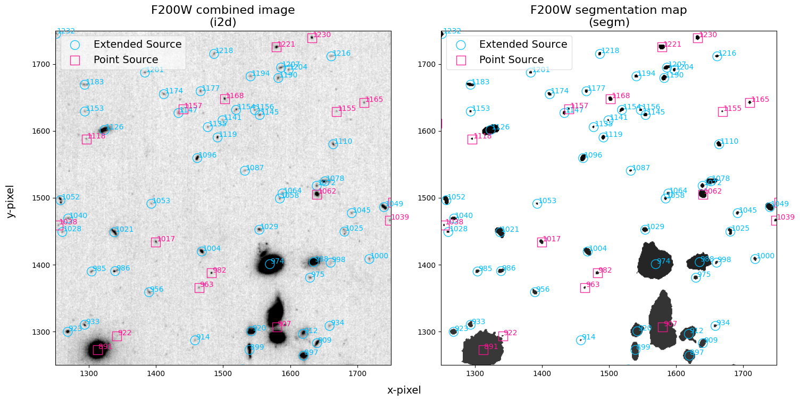
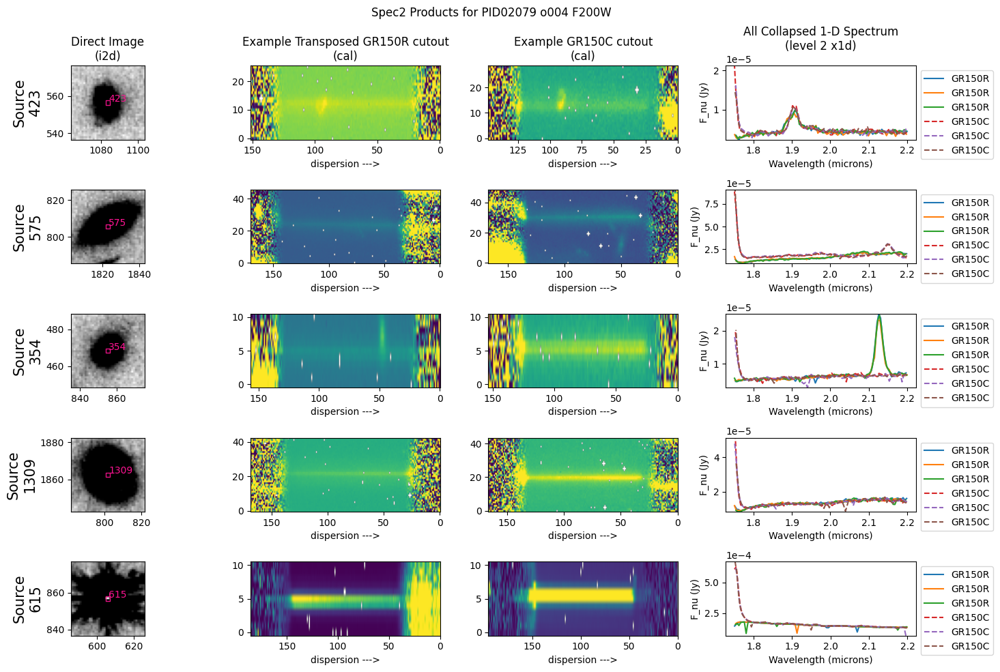
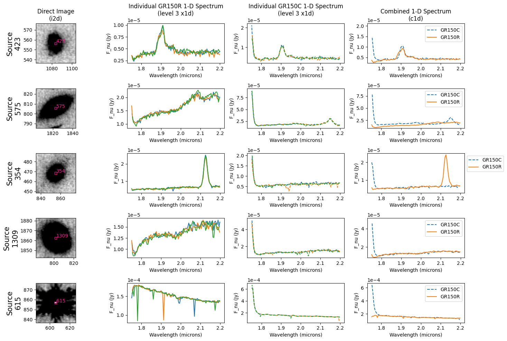

NIRISS Wide Field Slitless Spectroscopy (WFSS) Pipeline Notebook#
Authors: R. Plesha
Last Updated: April 17, 2026
Pipeline Version: 2.0.0 (Build 12.3)
Purpose:#
This notebook provides a framework for processing generic Near-Infrared Imager and Slitless Spectrograph (NIRISS) wide field slitless spectroscopy (WFSS) data through the James Webb Space Telescope (JWST) pipeline. Data from a single proposal and observation ID is assumed to be located in one observation folder according to paths set up below. It should not be necessary to edit any cells other than in the Configuration section unless modifying the standard pipeline processing options. Additional notebooks showing how to optimize and modify sources being extracted for NIRISS WFSS data can be found on the JDAT notebooks github.
Data: This example uses data from the Program ID 2079 observation 004 (PI: Finkelstein) observing the Hubble Ultra Deep Field (HUDF). The observations are in three NIRISS filters: F115W, F150W, and F200W use both GR150R and GR150C grisms. In this example we are only looking at data from one of the two observations using the F200W filter. A NIRISS WFSS observation sequence typically consists of a direct image followed by a grism observation in the same blocking filter to help identify the sources in the field. In program 2079, the exposure sequence follows the pattern: direct image -> GR150R -> direct image -> GR150C -> direct image.
Example input data to use will be downloaded automatically unless disabled by the dodownload parameter (i.e., to use local files instead).
JWST pipeline version and CRDS context: This notebook was written for the calibration pipeline version given above. The JWST Calibration Reference Data System (CRDS) context used is associated with the pipeline version as listed here. If you use different pipeline version or CRDS context, please read the relevant release notes (here for pipeline, here for CRDS) for possibly relevant changes. The results of this notebook may differ from the products hosted on the MAST archive depending on the pipeline version and CRDS context you are using.
Updates: This notebook is regularly updated as improvements are made to the pipeline. Find the most up to date version of this notebook at: https://github.com/spacetelescope/jwst-pipeline-notebooks/
Recent Changes:
September 10, 2025: original notebook released
December 10, 2025: Updated to jwst 1.20.2 (no significant changes)
April 17, 2026: Updated to jwst 2.0.0 (no significant changes)
Table of Contents#
1. Configuration#
Set basic configuration for running notebook.
Install dependencies and parameters#
To make sure that the pipeline version is compatabile with the steps
discussed below and the required dependencies and packages are installed,
you can create a fresh conda environment and install the provided
requirements.txt file:
conda create -n niriss_wfss_pipeline python=3.13
conda activate niriss_wfss_pipeline
pip install -r requirements.txt
Set the basic parameters to use with this notebook. These will affect what data is used, where data is located (if already in disk), names of any outputs, and pipeline modules run in this data. The list of parameters are:
demo_mode
sci_dir (directory where the data is / will be)
dodownload (download the data locally)
pipeline modules:
dodet1 (run detector1)
doimage2 (run image2)
doimage3 (run image3)
dospec2 (run spec2)
dospec3 (run spec3)
doviz (show visualizations of the data within the notebook)
program (proposal ID of your data for the level 3 association files)
sci_observtn (observation of your data for level 3 the association files)
# Basic import necessary for configuration
import os
# establishing what directory we're currently working in
cwd = os.getcwd()
demo_mode runs correctly.
Set demo_mode = True to run in demonstration mode. In this mode this notebook will download example data from the Barbara A.
Mikulski Archive for Space Telescopes (MAST) and process everything through the pipeline. This will all happen in a local directory unless modified in the configuration below (variable data_dir).
# -----------------------------Demo Mode---------------------------------
# use the provided example for demonstration purposes
demo_mode = True
if demo_mode:
program = '02079'
sci_observtn = '004' # as an example; 001 also exists for this program
# creating a directory for the data called "nis_wfss_demo_data"
# located in the directory you are currently in
data_dir = os.path.join(cwd, 'nis_wfss_demo_data')
sci_dir = os.path.join(data_dir, f"PID{program}/obs{sci_observtn}")
print(f'Running in demonstration mode using example data from program {program} obs{sci_observtn}!')
print(f'Data located in: {sci_dir}')
# you will want to download the demo data
dodownload = True
Running in demonstration mode using example data from program 02079 obs004!
Data located in: /home/runner/work/jwst-pipeline-notebooks/jwst-pipeline-notebooks/notebooks/NIRISS/WFSS/nis_wfss_demo_data/PID02079/obs004
Set demo_mode = False if you want to process your own data that has already been downloaded. To do so, in the cell below, provide the program ID in the program variable, the observation ID in the sci_observtn variable, and the top path level location of the data in the sci_dir variable. The notebook expects that the uncal files are in a directory under sci_dir called uncal.
If you would like to additionally download the data for a specific program through this notebook, you can additionally set the dodownload variable to True below, and the data will be downloaded to the provided sci_dir directory.
# --------------------------User Mode Directories------------------------
# If demo_mode = False, look for user data in these paths
if not demo_mode:
# Set directory paths for processing specific data; these will need
# to be changed to your local directory setup (below are given as
# examples)
user_home_dir = os.path.expanduser('~')
# Point to where science observation data are
# Assumes uncalibrated data in sci_dir/uncal/ and results in stage1,
# stage2, stage3 directories
program = '02079' # modify this to your specific program
sci_observtn = '004' # modify this to your specific program
sci_dir = os.path.join(user_home_dir, f'nis_wfss_demo_data/PID{program}/obs{sci_observtn}/')
dodownload = False # if you would like to download your data using astroquery, set to True & don't skip Demo mode setup section
print(f'Running using user input data from: {sci_dir} for program {program} obs{sci_observtn}')
Set any of the variables below to be True (do the processing) or False (don’t do the processing). To run this notebook from start to completion, it is expected that the output products from each of the stages below are located in the appropriate directories as set in #3.-Directory Setup. If these output products do not exist, any of the later stages of the pipeline may not work as intended.
# --------------------------Set Processing Steps--------------------------
# Individual pipeline stages can be turned on/off here. Note that a later
# stage won't be able to run unless data products have already been
# produced from the prior stage.
# visualization of products within the notebook
doviz = True # Visualize outputs
# Science processing
dodet1 = True # calwebb_detector1; files saved in "stage1" directory
doimage2 = True # calwebb_image2; files saved in "stage2_img" directory
doimage3 = True # calwebb_image3; files saved in "stage3_img" directory
dospec2 = True # calwebb_spec2; files saved in "stage2_spec" directory
dospec3 = True # calwebb_spec3; files saved in "stage3_spec" directory
Set CRDS context and server#
Before importing CRDS and JWST modules, we need to configure our environment. This includes defining a CRDS cache directory in which to keep the reference files that will be used by the calibration pipeline. The pipeline will fetch and download the needed reference files to this directory.
If the root directory for the local CRDS cache directory has not been set already, it will be set to create one in the home directory.
# ------------------------Set CRDS context and paths----------------------
# Set CRDS context (if overriding to use a specific version of reference
# files; leave commented out to use latest reference files by default)
# %env CRDS_CONTEXT jwst_1413.pmap
# Check whether the local CRDS cache directory has been set.
# If not, set it to the user home directory
if (os.getenv('CRDS_PATH') is None):
os.environ['CRDS_PATH'] = os.path.join(os.path.expanduser('~'), 'crds')
# Check whether the CRDS server URL has been set. If not, set it.
if (os.getenv('CRDS_SERVER_URL') is None):
os.environ['CRDS_SERVER_URL'] = 'https://jwst-crds.stsci.edu'
# Echo CRDS path in use
print(f"CRDS local filepath: {os.environ['CRDS_PATH']}")
print(f"CRDS file server: {os.environ['CRDS_SERVER_URL']}")
CRDS local filepath: /home/runner/crds
CRDS file server: https://jwst-crds.stsci.edu
2. Package Imports#
# Basic system utilities for interacting with files
# ----------------------General Imports------------------------------------
import glob
import time
from pathlib import Path
# Data calculations and manipulation
import numpy as np
import pandas as pd
import json
from collections import defaultdict
# -----------------------Plotting Imports----------------------------------
from matplotlib import pyplot as plt
# interactive plots within the notebook
%matplotlib inline
# -----------------------Astronomy Imports--------------------------------
# ASCII files, and downloading demo files
from astroquery.mast import Observations
from astroquery.mast.utils import remove_duplicate_products
# Astropy routines for visualizing detected sources:
import astropy.units as u
from astropy.io import fits
from astropy.table import Table
from astropy.coordinates import SkyCoord
# for JWST calibration pipeline
import jwst
import crds
from jwst.pipeline import Detector1Pipeline
from jwst.pipeline import Image2Pipeline
from jwst.pipeline import Image3Pipeline
from jwst.pipeline import Spec2Pipeline
from jwst.pipeline import Spec3Pipeline
# JWST pipeline utilities
from jwst import datamodels
from jwst.associations import asn_from_list # Tools for creating association files
from jwst.associations.lib.rules_level2_base import DMSLevel2bBase # Definition of a Lvl2 association file
from jwst.associations.lib.rules_level3_base import DMS_Level3_Base # Definition of a Lvl3 association file
# Echo pipeline version and CRDS context in use
print(f"JWST Calibration Pipeline Version: {jwst.__version__}")
print(f"Using CRDS Context: {crds.get_context_name('jwst')}")
JWST Calibration Pipeline Version: 2.0.0
CRDS - INFO - Calibration SW Found: jwst 2.0.0 (/home/runner/micromamba/envs/ci-env/lib/python3.13/site-packages/jwst-2.0.0.dist-info)
Using CRDS Context: jwst_1535.pmap
Define convenience functions#
These functions are used within the notebook and assist with plotting, finding the appropriate extension for a specific source in spec2 cal data, and verifying what steps and reference files were used for a provided file. These may be useful for your own analysis outside of this notebook, but are written for this notebook in particular.
Plotting Spec2 & Spec3 convenience functions#
# this function will be used to plot the i2d image for a specific source as well as the catalog x/y centroid for that source
def plot_i2d_plus_source(catname, source_id, ax):
# open the i2d & catalog and find the associated source number
i2dname = catname.replace('cat.ecsv', 'i2d.fits')
cat = Table.read(catname)
cat_line = cat[cat['label'] == source_id]
# plot the image
with fits.open(i2dname) as i2d:
display_vals = [np.nanpercentile(i2d[1].data, 1), np.nanpercentile(i2d[1].data, 98)]
ax_i2d.imshow(i2d[1].data, vmin=display_vals[0], vmax=display_vals[1], origin='lower', cmap='gist_gray_r')
# plot up the source catalog
xcentroid = cat_line['xcentroid'][0]
ycentroid = cat_line['ycentroid'][0]
ax.set_xlim(xcentroid-20, xcentroid+20)
ax.set_ylim(ycentroid-20, ycentroid+20)
if cat_line['is_extended'] is True:
cat_color = 'deepskyblue'
cat_marker = 'o'
else:
cat_color = 'deeppink'
cat_marker = 's'
ax.scatter(xcentroid, ycentroid, s=20, facecolors='None', edgecolors=cat_color, marker=cat_marker, alpha=0.9)
ax.annotate(source_id,
(xcentroid+0.5, ycentroid+0.5),
fontsize=10,
color=cat_color)
return ax
# this function is used to plot the wavelength vs. flux values for x1d & c1d spectra for a specific source
def plot_spectrum(specfile, source_fluxes, ax, image3_dir, ext=1, legend=True):
# trimming off some of the edges where the flux is unreliable
plot_limits = {'F090W': {'wavemin': 0.85, 'wavemax': 0.9},
'F115W': {'wavemin': 0.9, 'wavemax': 1.25},
'F150W': {'wavemin': 1.35, 'wavemax': 1.65},
'F200W': {'wavemin': 1.75, 'wavemax': 2.2},
'F140M': {'wavemin': 1.25, 'wavemax': 1.5},
'F158M': {'wavemin': 1.45, 'wavemax': 1.65},
}
with fits.open(specfile) as spec:
# pull out relevant keywords
grism = spec[0].header['FILTER']
pupil = spec[0].header['PUPIL']
catname = os.path.join(image3_dir, spec[0].header['SCATFILE'])
try:
label = f"{grism} dither {spec[0].header['DIT_PATT']}"
except KeyError:
label = f"{grism}" # there is no dither in the c1d files
# find where in the file the source data are
wh_spec_source = np.where(spec[ext].data['SOURCE_ID'] == source_id)[0]
# if the source isn't in the file, then return a blank axis
if not len(wh_spec_source):
print(f'Source {source_id} not found in {specfile}')
return ax, catname, source_fluxes, grism
# grab the wavelength & flux data and trim off the edges for visalization purposes
wave = spec[ext].data['WAVELENGTH'][wh_spec_source]
flux = spec[ext].data['FLUX'][wh_spec_source]
wavemin = plot_limits[pupil]['wavemin']
wavemax = plot_limits[pupil]['wavemax']
wh_wave = np.where((wave >= wavemin) & (wave <= wavemax)) # cutting off the edges
wave = wave[wh_wave]
flux = flux[wh_wave]
if len(flux[np.isnan(flux)]) == len(flux):
print(f'There are no valid pixels for {os.path.basename(specfile)} source {source_id} {grism}. Source likely on edge of detector; not plotting')
else:
source_fluxes.extend(flux) # keep the flux to set the limits of the plot later
if grism == 'GR150R':
linestyle = '-'
else:
linestyle = '--'
ax.plot(wave, flux, label=label, ls=linestyle)
if legend:
ax.legend(bbox_to_anchor=(1, 1))
return ax, catname, source_fluxes, grism
# this function is used to plot the spec2 cal files for a specific source
def plot_spec2_cal(x1dfile, source_id, ax, transpose=False):
cal_file = x1dfile.replace('x1d.fits', 'cal.fits')
with fits.open(cal_file) as cal_hdu:
wh_cal = find_source_ext(cal_hdu, source_id)
# if the source isn't in the file, then return a blank axis
if wh_cal == -999:
print(f'Source {source_id} not found in {cal_file}')
return ax
if transpose is True:
# we flip the GR150R data so that we can look at the two cal images along the same dispersion axis
cal_data = np.transpose(cal_hdu[wh_cal].data)
else:
cal_data = cal_hdu[wh_cal].data
cal_display_vals = [np.nanpercentile(cal_data, 5), np.nanpercentile(cal_data, 90)]
ax.imshow(cal_data, vmin=cal_display_vals[0], vmax=cal_display_vals[1], origin='lower', aspect='auto')
# the dispersion is in the -x direction, so flip the axis for ease in visualization
ax.invert_xaxis()
return ax
Other convienence functions#
# a function to use to find the extension the source is located in the cal files
def find_source_ext(cal_hdu, source_id, info=True):
# look for cal extension, too, but only in the SCI extension;
# fill in with a source ID of -999 for all other extensions to get the right extension value
cal_source_ids = np.array([cal_hdu[ext].header['SOURCEID'] if cal_hdu[ext].header['EXTNAME'] == 'SCI'
else -999 for ext in range(len(cal_hdu))[1:-1]])
try:
wh_cal = np.where(cal_source_ids == source_id)[0][0] + 1 # need to add 1 for the primary header
except IndexError:
# this source doesn't exist
return -999
if info:
print(f"Extension {wh_cal} in {cal_hdu[0].header['FILENAME']} contains the data for source {source_id} from our catalog")
return wh_cal
# a function to quickly see all of the steps that were run on a specified file
def check_steps_run(filename):
# Read in file as datamodel
dm = datamodels.open(filename)
# Check which steps were run
print(f"{dm.meta.filename} - {dm.meta.exposure.type}")
for step, status in dm.meta.cal_step.instance.items():
print(f"{step}: {status}")
print()
# a function to quickly see all of the reference files that were used on a specified file
def check_ref_file_used(filename):
# Read in file as datamodel
dm = datamodels.open(filename)
# Check which reference files were used
print(f"{dm.meta.filename} - {dm.meta.exposure.type}")
for step, status in dm.meta.ref_file.instance.items():
print(f"{step}: {status}")
print()
# a function to find the closest source_id for a given RA/Dec
def find_closest_source_id(ra, dec, catalog_name):
# open the source catalog
cat = Table.read(catalog_name)
# set up a skycoord object for the given RA/Dec
c = SkyCoord(ra=ra*u.degree, dec=dec*u.degree)
# Find the closest match to those coordinates in the source catalog
nearest_id, distance_2d, distance_3d = c.match_to_catalog_sky(cat['sky_centroid'])
return cat['label'][nearest_id]
# Start a timer to keep track of runtime
time0 = time.perf_counter()
3. Directory Setup#
Set up detailed paths to input/output stages here.
# Define output subdirectories to keep science data products organized
uncal_dir = os.path.join(sci_dir, 'uncal') # Uncalibrated pipeline inputs should be here
det1_dir = os.path.join(sci_dir, 'stage1') # calwebb_detector1 pipeline outputs will go here
image2_dir = os.path.join(sci_dir, 'stage2_img') # calwebb_image2 pipeline outputs will go here
image3_dir = os.path.join(sci_dir, 'stage3_img') # calwebb_image3 pipeline outputs will go here
spec2_dir = os.path.join(sci_dir, 'stage2_spec') # calwebb_spec2 pipeline outputs will go here
spec3_dir = os.path.join(sci_dir, 'stage3_spec') # calwebb_spec3 pipeline outputs will go here
# We need to check that the desired output directories exist, and if not create them
for cal_dir in [sci_dir, uncal_dir, det1_dir, image2_dir, image3_dir, spec2_dir, spec3_dir]:
os.makedirs(cal_dir, exist_ok=True)
4. Demo Mode Setup (Data Download)#
If running in demonstration mode, set up the program information to
retrieve the uncalibrated data automatically from MAST using
astroquery.
MAST allows for flexibility of searching by the proposal ID and the
observation ID instead of just filenames.
For illustrative purposes, we focus on data taken through the NIRISS F200W filter and start with uncalibrated data products, or _uncal files. To search for additional filters, update the filters field in query_criteria to include the additional filter, i.e. [‘F200W’, ‘F115W’]. Note that if the observation does not have a level 3 product for any reason, the obs_id field in query_criteria will need to be changed to search on the string of the format “jw*+program+sci_observtn+*”.
Information about the JWST file naming conventions can be found at: https://jwst-pipeline.readthedocs.io/en/latest/jwst/data_products/file_naming.html
Note – if for some reason this section does not work, this is equivalet to downloading the _uncal.fits files from this MAST search:
https://mast.stsci.edu/search/ui/#/jwst/results?instruments=NIRISS&program_id=2079&obs_id=004&custom_col_val_0=1b&custom_col_sel_1=niriss_pupil&custom_col_val_1=F200W&
if dodownload:
if demo_mode:
# Obtain a list of observation IDs for the specified demo program
sci_obs_id_table = Observations.query_criteria(instrument_name=["NIRISS/IMAGE", "NIRISS/WFSS"],
provenance_name=["CALJWST"], # Executed observations
filters=['F200W'], # Data for Specific Filter
obs_id=['jw*' + program + '-o' + sci_observtn + '*']
)
else:
sci_obs_id_table = Observations.query_criteria(instrument_name=["NIRISS/IMAGE", "NIRISS/WFSS"],
provenance_name=["CALJWST"], # Executed observations
obs_id=['jw*' + program + '-o' + sci_observtn + '*']
)
# Turn the list of visits into a list of uncalibrated data files
if dodownload:
# Define types of files to select
file_dict = {'uncal': {'product_type': 'SCIENCE',
'productSubGroupDescription': 'UNCAL',
'calib_level': [1]}}
batch_size = 5 # 5 files at a time maximizes the download speed.
# This is necessary when there are many exposures in a program
# split up our list of files into batches according to our batch size.
obs_batches = [sci_obs_id_table[i:i+batch_size] for i in range(0, len(sci_obs_id_table), batch_size)]
# Science files
sci_files_to_download = []
# Loop over visits identifying uncalibrated files that are associated
# with them
for exposure in (obs_batches):
products = Observations.get_product_list(exposure)
for filetype, query_dict in file_dict.items():
filtered_products = Observations.filter_products(products, productType=query_dict['product_type'],
productSubGroupDescription=query_dict['productSubGroupDescription'],
calib_level=query_dict['calib_level'])
sci_files_to_download.extend(filtered_products['dataURI'])
sci_files_to_download = sorted(sci_files_to_download)
sci_files_to_download = remove_duplicate_products(sci_files_to_download, 'filename')
print(f"Science files selected for downloading: {len(sci_files_to_download)}")
INFO: 93 of 107 products were duplicates. Only returning 14 unique product(s). [astroquery.mast.utils]
Science files selected for downloading: 14
Download all the uncal files and place them into the appropriate directories.
if dodownload:
for filename in sci_files_to_download:
sci_manifest = Observations.download_file(filename,
local_path=os.path.join(uncal_dir, Path(filename).name))
Downloading URL https://mast.stsci.edu/api/v0.1/Download/file?uri=mast:JWST/product/jw02079004003_02101_00001_nis_uncal.fits to /home/runner/work/jwst-pipeline-notebooks/jwst-pipeline-notebooks/notebooks/NIRISS/WFSS/nis_wfss_demo_data/PID02079/obs004/uncal/jw02079004003_02101_00001_nis_uncal.fits ...
[Done]
Downloading URL https://mast.stsci.edu/api/v0.1/Download/file?uri=mast:JWST/product/jw02079004003_03101_00001_nis_uncal.fits to /home/runner/work/jwst-pipeline-notebooks/jwst-pipeline-notebooks/notebooks/NIRISS/WFSS/nis_wfss_demo_data/PID02079/obs004/uncal/jw02079004003_03101_00001_nis_uncal.fits ...
[Done]
Downloading URL https://mast.stsci.edu/api/v0.1/Download/file?uri=mast:JWST/product/jw02079004003_03101_00002_nis_uncal.fits to /home/runner/work/jwst-pipeline-notebooks/jwst-pipeline-notebooks/notebooks/NIRISS/WFSS/nis_wfss_demo_data/PID02079/obs004/uncal/jw02079004003_03101_00002_nis_uncal.fits ...
[Done]
Downloading URL https://mast.stsci.edu/api/v0.1/Download/file?uri=mast:JWST/product/jw02079004003_03101_00003_nis_uncal.fits to /home/runner/work/jwst-pipeline-notebooks/jwst-pipeline-notebooks/notebooks/NIRISS/WFSS/nis_wfss_demo_data/PID02079/obs004/uncal/jw02079004003_03101_00003_nis_uncal.fits ...
[Done]
Downloading URL https://mast.stsci.edu/api/v0.1/Download/file?uri=mast:JWST/product/jw02079004003_04101_00001_nis_uncal.fits to /home/runner/work/jwst-pipeline-notebooks/jwst-pipeline-notebooks/notebooks/NIRISS/WFSS/nis_wfss_demo_data/PID02079/obs004/uncal/jw02079004003_04101_00001_nis_uncal.fits ...
[Done]
Downloading URL https://mast.stsci.edu/api/v0.1/Download/file?uri=mast:JWST/product/jw02079004003_04101_00002_nis_uncal.fits to /home/runner/work/jwst-pipeline-notebooks/jwst-pipeline-notebooks/notebooks/NIRISS/WFSS/nis_wfss_demo_data/PID02079/obs004/uncal/jw02079004003_04101_00002_nis_uncal.fits ...
[Done]
Downloading URL https://mast.stsci.edu/api/v0.1/Download/file?uri=mast:JWST/product/jw02079004003_04101_00003_nis_uncal.fits to /home/runner/work/jwst-pipeline-notebooks/jwst-pipeline-notebooks/notebooks/NIRISS/WFSS/nis_wfss_demo_data/PID02079/obs004/uncal/jw02079004003_04101_00003_nis_uncal.fits ...
[Done]
Downloading URL https://mast.stsci.edu/api/v0.1/Download/file?uri=mast:JWST/product/jw02079004003_04101_00004_nis_uncal.fits to /home/runner/work/jwst-pipeline-notebooks/jwst-pipeline-notebooks/notebooks/NIRISS/WFSS/nis_wfss_demo_data/PID02079/obs004/uncal/jw02079004003_04101_00004_nis_uncal.fits ...
[Done]
Downloading URL https://mast.stsci.edu/api/v0.1/Download/file?uri=mast:JWST/product/jw02079004003_05101_00001_nis_uncal.fits to /home/runner/work/jwst-pipeline-notebooks/jwst-pipeline-notebooks/notebooks/NIRISS/WFSS/nis_wfss_demo_data/PID02079/obs004/uncal/jw02079004003_05101_00001_nis_uncal.fits ...
[Done]
Downloading URL https://mast.stsci.edu/api/v0.1/Download/file?uri=mast:JWST/product/jw02079004003_05101_00002_nis_uncal.fits to /home/runner/work/jwst-pipeline-notebooks/jwst-pipeline-notebooks/notebooks/NIRISS/WFSS/nis_wfss_demo_data/PID02079/obs004/uncal/jw02079004003_05101_00002_nis_uncal.fits ...
[Done]
Downloading URL https://mast.stsci.edu/api/v0.1/Download/file?uri=mast:JWST/product/jw02079004003_05101_00003_nis_uncal.fits to /home/runner/work/jwst-pipeline-notebooks/jwst-pipeline-notebooks/notebooks/NIRISS/WFSS/nis_wfss_demo_data/PID02079/obs004/uncal/jw02079004003_05101_00003_nis_uncal.fits ...
[Done]
Downloading URL https://mast.stsci.edu/api/v0.1/Download/file?uri=mast:JWST/product/jw02079004003_06101_00001_nis_uncal.fits to /home/runner/work/jwst-pipeline-notebooks/jwst-pipeline-notebooks/notebooks/NIRISS/WFSS/nis_wfss_demo_data/PID02079/obs004/uncal/jw02079004003_06101_00001_nis_uncal.fits ...
[Done]
Downloading URL https://mast.stsci.edu/api/v0.1/Download/file?uri=mast:JWST/product/jw02079004003_06101_00002_nis_uncal.fits to /home/runner/work/jwst-pipeline-notebooks/jwst-pipeline-notebooks/notebooks/NIRISS/WFSS/nis_wfss_demo_data/PID02079/obs004/uncal/jw02079004003_06101_00002_nis_uncal.fits ...
[Done]
Downloading URL https://mast.stsci.edu/api/v0.1/Download/file?uri=mast:JWST/product/jw02079004003_06101_00003_nis_uncal.fits to /home/runner/work/jwst-pipeline-notebooks/jwst-pipeline-notebooks/notebooks/NIRISS/WFSS/nis_wfss_demo_data/PID02079/obs004/uncal/jw02079004003_06101_00003_nis_uncal.fits ...
[Done]
# Print out the time benchmark
time_download_end = time.perf_counter()
print(f"Runtime for downloading data: {(time_download_end - time0)/60:0.0f} minutes")
Runtime for downloading data: 1 minutes
5. Detector1 Pipeline#
In this section we run the *_uncal.fits files through the Detector1 stage of the pipeline to apply detector level calibrations and create a countrate data product where slopes are fit to the integration ramps. These *_rate.fits products are 2D (nrows x ncols), averaged over all integrations. 3D countrate data products (*_rateints.fits) are also created (nintegrations x nrows x ncols) which have the fitted ramp slopes for each integration.
If there are no modifications to the steps at this stage needed, you can also save time by downloading these *_rate.fits files directly from MAST and starting at stage2. However, it is best to ensure that you are using the same pipeline version as MAST which can be checked in the CAL_VER header keyword.
The parameters in each of the Detector1 steps can be modified from the default values, including overwriting reference files that are used. This dictionary of the modified parameters for each of the steps is then fed into the steps parameter of the Detector1Pipeline call.
time_det1_start = time.perf_counter()
# Set up a dictionary to define how the Detector1 pipeline should be configured
# this sets up any entry to det1dict to be a dictionary itself
det1dict = defaultdict(dict)
# ---------------------------Override reference files---------------------------
# Example overrides for various reference files
# Files should be in the base local directory or provide full path
# det1dict['dq_init']['override_mask'] = 'myfile.fits' # Bad pixel mask
# det1dict['saturation']['override_saturation'] = 'myfile.fits' # Saturation
# det1dict['linearity']['override_linearity'] = 'myfile.fits' # Linearity
# det1dict['dark_current']['override_dark'] = 'myfile.fits' # Dark current subtraction
# det1dict['jump']['override_gain'] = 'myfile.fits' # Gain used by jump step
# det1dict['ramp_fit']['override_gain'] = 'myfile.fits' # Gain used by ramp fitting step
# det1dict['jump']['override_readnoise'] = 'myfile.fits' # Read noise used by jump step
# det1dict['ramp_fit']['override_readnoise'] = 'myfile.fits' # Read noise used by ramp fitting step
# -----------------------------Set step parameters------------------------------
# Example overrides for whether or not certain steps should be skipped;
# det1dict['persistence']['skip'] = True # skipping the persistence step
# Example of turning on multi-core processing for the jump step (a single core is used by default).
# Choose what fraction of cores to use (quarter, half, all, or the default=1); This will speed up the calibration time
# det1dict['jump']['maximum_cores'] = 'half'
# Example of altering parameters to optimize removal of snowball residuals
# det1dict['jump']['expand_large_events'] = True
# det1dict['charge_migration']['signal_threshold'] = X
uncal_files = sorted(glob.glob(os.path.join(uncal_dir, '*_uncal.fits')))
# Run Detector1 stage of pipeline, specifying:
# output directory to save *_rateints.fits files
# save_results flag set to True so the files are saved locally
if dodet1:
for uncal in uncal_files:
rate_result = Detector1Pipeline.call(uncal, output_dir=det1_dir, steps=det1dict, save_results=True)
else:
print('Skipping Detector1 processing')
2026-04-15 20:16:10,139 - CRDS - INFO - Fetching /home/runner/crds/mappings/jwst/jwst_system_datalvl_0002.rmap 694 bytes (1 / 224 files) (0 / 796.2 K bytes)
2026-04-15 20:16:10,199 - CRDS - INFO - Fetching /home/runner/crds/mappings/jwst/jwst_system_calver_0069.rmap 5.8 K bytes (2 / 224 files) (694 / 796.2 K bytes)
2026-04-15 20:16:10,275 - CRDS - INFO - Fetching /home/runner/crds/mappings/jwst/jwst_system_0064.imap 385 bytes (3 / 224 files) (6.5 K / 796.2 K bytes)
2026-04-15 20:16:10,371 - CRDS - INFO - Fetching /home/runner/crds/mappings/jwst/jwst_nirspec_wavelengthrange_0024.rmap 1.4 K bytes (4 / 224 files) (6.9 K / 796.2 K bytes)
2026-04-15 20:16:10,430 - CRDS - INFO - Fetching /home/runner/crds/mappings/jwst/jwst_nirspec_wavecorr_0005.rmap 884 bytes (5 / 224 files) (8.3 K / 796.2 K bytes)
2026-04-15 20:16:10,491 - CRDS - INFO - Fetching /home/runner/crds/mappings/jwst/jwst_nirspec_superbias_0089.rmap 39.4 K bytes (6 / 224 files) (9.1 K / 796.2 K bytes)
2026-04-15 20:16:10,639 - CRDS - INFO - Fetching /home/runner/crds/mappings/jwst/jwst_nirspec_sirskernel_0002.rmap 704 bytes (7 / 224 files) (48.5 K / 796.2 K bytes)
2026-04-15 20:16:10,684 - CRDS - INFO - Fetching /home/runner/crds/mappings/jwst/jwst_nirspec_sflat_0027.rmap 20.6 K bytes (8 / 224 files) (49.2 K / 796.2 K bytes)
2026-04-15 20:16:10,763 - CRDS - INFO - Fetching /home/runner/crds/mappings/jwst/jwst_nirspec_saturation_0018.rmap 2.0 K bytes (9 / 224 files) (69.8 K / 796.2 K bytes)
2026-04-15 20:16:10,830 - CRDS - INFO - Fetching /home/runner/crds/mappings/jwst/jwst_nirspec_refpix_0015.rmap 1.6 K bytes (10 / 224 files) (71.9 K / 796.2 K bytes)
2026-04-15 20:16:10,931 - CRDS - INFO - Fetching /home/runner/crds/mappings/jwst/jwst_nirspec_readnoise_0025.rmap 2.6 K bytes (11 / 224 files) (73.4 K / 796.2 K bytes)
2026-04-15 20:16:10,987 - CRDS - INFO - Fetching /home/runner/crds/mappings/jwst/jwst_nirspec_psf_0002.rmap 687 bytes (12 / 224 files) (76.0 K / 796.2 K bytes)
2026-04-15 20:16:11,034 - CRDS - INFO - Fetching /home/runner/crds/mappings/jwst/jwst_nirspec_pictureframe_0002.rmap 886 bytes (13 / 224 files) (76.7 K / 796.2 K bytes)
2026-04-15 20:16:11,208 - CRDS - INFO - Fetching /home/runner/crds/mappings/jwst/jwst_nirspec_photom_0013.rmap 958 bytes (14 / 224 files) (77.6 K / 796.2 K bytes)
2026-04-15 20:16:16,426 - CRDS - INFO - Fetching /home/runner/crds/mappings/jwst/jwst_nirspec_pathloss_0011.rmap 1.2 K bytes (15 / 224 files) (78.5 K / 796.2 K bytes)
2026-04-15 20:16:16,496 - CRDS - INFO - Fetching /home/runner/crds/mappings/jwst/jwst_nirspec_pars-whitelightstep_0001.rmap 777 bytes (16 / 224 files) (79.7 K / 796.2 K bytes)
2026-04-15 20:16:16,537 - CRDS - INFO - Fetching /home/runner/crds/mappings/jwst/jwst_nirspec_pars-tso3pipeline_0001.rmap 786 bytes (17 / 224 files) (80.5 K / 796.2 K bytes)
2026-04-15 20:16:16,657 - CRDS - INFO - Fetching /home/runner/crds/mappings/jwst/jwst_nirspec_pars-spec2pipeline_0013.rmap 2.1 K bytes (18 / 224 files) (81.3 K / 796.2 K bytes)
2026-04-15 20:16:16,708 - CRDS - INFO - Fetching /home/runner/crds/mappings/jwst/jwst_nirspec_pars-resamplespecstep_0002.rmap 709 bytes (19 / 224 files) (83.4 K / 796.2 K bytes)
2026-04-15 20:16:16,830 - CRDS - INFO - Fetching /home/runner/crds/mappings/jwst/jwst_nirspec_pars-refpixstep_0003.rmap 910 bytes (20 / 224 files) (84.1 K / 796.2 K bytes)
2026-04-15 20:16:16,872 - CRDS - INFO - Fetching /home/runner/crds/mappings/jwst/jwst_nirspec_pars-pixelreplacestep_0001.rmap 818 bytes (21 / 224 files) (85.0 K / 796.2 K bytes)
2026-04-15 20:16:16,923 - CRDS - INFO - Fetching /home/runner/crds/mappings/jwst/jwst_nirspec_pars-pictureframestep_0001.rmap 818 bytes (22 / 224 files) (85.8 K / 796.2 K bytes)
2026-04-15 20:16:16,965 - CRDS - INFO - Fetching /home/runner/crds/mappings/jwst/jwst_nirspec_pars-outlierdetectionstep_0005.rmap 1.1 K bytes (23 / 224 files) (86.7 K / 796.2 K bytes)
2026-04-15 20:16:17,014 - CRDS - INFO - Fetching /home/runner/crds/mappings/jwst/jwst_nirspec_pars-jumpstep_0006.rmap 810 bytes (24 / 224 files) (87.8 K / 796.2 K bytes)
2026-04-15 20:16:17,066 - CRDS - INFO - Fetching /home/runner/crds/mappings/jwst/jwst_nirspec_pars-image2pipeline_0008.rmap 1.0 K bytes (25 / 224 files) (88.6 K / 796.2 K bytes)
2026-04-15 20:16:17,112 - CRDS - INFO - Fetching /home/runner/crds/mappings/jwst/jwst_nirspec_pars-extract1dstep_0001.rmap 794 bytes (26 / 224 files) (89.6 K / 796.2 K bytes)
2026-04-15 20:16:17,153 - CRDS - INFO - Fetching /home/runner/crds/mappings/jwst/jwst_nirspec_pars-detector1pipeline_0004.rmap 1.1 K bytes (27 / 224 files) (90.4 K / 796.2 K bytes)
2026-04-15 20:16:17,204 - CRDS - INFO - Fetching /home/runner/crds/mappings/jwst/jwst_nirspec_pars-darkpipeline_0003.rmap 872 bytes (28 / 224 files) (91.5 K / 796.2 K bytes)
2026-04-15 20:16:17,246 - CRDS - INFO - Fetching /home/runner/crds/mappings/jwst/jwst_nirspec_pars-darkcurrentstep_0003.rmap 1.8 K bytes (29 / 224 files) (92.4 K / 796.2 K bytes)
2026-04-15 20:16:17,295 - CRDS - INFO - Fetching /home/runner/crds/mappings/jwst/jwst_nirspec_pars-cubebuildstep_0001.rmap 862 bytes (30 / 224 files) (94.2 K / 796.2 K bytes)
2026-04-15 20:16:17,341 - CRDS - INFO - Fetching /home/runner/crds/mappings/jwst/jwst_nirspec_pars-cleanflickernoisestep_0002.rmap 983 bytes (31 / 224 files) (95.1 K / 796.2 K bytes)
2026-04-15 20:16:17,396 - CRDS - INFO - Fetching /home/runner/crds/mappings/jwst/jwst_nirspec_pars-adaptivetracemodelstep_0002.rmap 997 bytes (32 / 224 files) (96.1 K / 796.2 K bytes)
2026-04-15 20:16:17,442 - CRDS - INFO - Fetching /home/runner/crds/mappings/jwst/jwst_nirspec_ote_0030.rmap 1.3 K bytes (33 / 224 files) (97.1 K / 796.2 K bytes)
2026-04-15 20:16:17,491 - CRDS - INFO - Fetching /home/runner/crds/mappings/jwst/jwst_nirspec_msaoper_0018.rmap 1.6 K bytes (34 / 224 files) (98.3 K / 796.2 K bytes)
2026-04-15 20:16:17,533 - CRDS - INFO - Fetching /home/runner/crds/mappings/jwst/jwst_nirspec_msa_0027.rmap 1.3 K bytes (35 / 224 files) (100.0 K / 796.2 K bytes)
2026-04-15 20:16:17,576 - CRDS - INFO - Fetching /home/runner/crds/mappings/jwst/jwst_nirspec_mask_0045.rmap 4.9 K bytes (36 / 224 files) (101.2 K / 796.2 K bytes)
2026-04-15 20:16:17,620 - CRDS - INFO - Fetching /home/runner/crds/mappings/jwst/jwst_nirspec_linearity_0017.rmap 1.6 K bytes (37 / 224 files) (106.2 K / 796.2 K bytes)
2026-04-15 20:16:17,719 - CRDS - INFO - Fetching /home/runner/crds/mappings/jwst/jwst_nirspec_ipc_0006.rmap 876 bytes (38 / 224 files) (107.7 K / 796.2 K bytes)
2026-04-15 20:16:17,765 - CRDS - INFO - Fetching /home/runner/crds/mappings/jwst/jwst_nirspec_ifuslicer_0018.rmap 1.5 K bytes (39 / 224 files) (108.6 K / 796.2 K bytes)
2026-04-15 20:16:17,841 - CRDS - INFO - Fetching /home/runner/crds/mappings/jwst/jwst_nirspec_ifupost_0020.rmap 1.5 K bytes (40 / 224 files) (110.1 K / 796.2 K bytes)
2026-04-15 20:16:17,881 - CRDS - INFO - Fetching /home/runner/crds/mappings/jwst/jwst_nirspec_ifufore_0017.rmap 1.5 K bytes (41 / 224 files) (111.6 K / 796.2 K bytes)
2026-04-15 20:16:17,925 - CRDS - INFO - Fetching /home/runner/crds/mappings/jwst/jwst_nirspec_gain_0023.rmap 1.8 K bytes (42 / 224 files) (113.1 K / 796.2 K bytes)
2026-04-15 20:16:17,969 - CRDS - INFO - Fetching /home/runner/crds/mappings/jwst/jwst_nirspec_fpa_0028.rmap 1.3 K bytes (43 / 224 files) (114.9 K / 796.2 K bytes)
2026-04-15 20:16:18,021 - CRDS - INFO - Fetching /home/runner/crds/mappings/jwst/jwst_nirspec_fore_0026.rmap 5.0 K bytes (44 / 224 files) (116.2 K / 796.2 K bytes)
2026-04-15 20:16:18,066 - CRDS - INFO - Fetching /home/runner/crds/mappings/jwst/jwst_nirspec_flat_0015.rmap 3.8 K bytes (45 / 224 files) (121.1 K / 796.2 K bytes)
2026-04-15 20:16:18,109 - CRDS - INFO - Fetching /home/runner/crds/mappings/jwst/jwst_nirspec_fflat_0030.rmap 7.2 K bytes (46 / 224 files) (124.9 K / 796.2 K bytes)
2026-04-15 20:16:18,160 - CRDS - INFO - Fetching /home/runner/crds/mappings/jwst/jwst_nirspec_extract1d_0018.rmap 2.3 K bytes (47 / 224 files) (132.1 K / 796.2 K bytes)
2026-04-15 20:16:18,200 - CRDS - INFO - Fetching /home/runner/crds/mappings/jwst/jwst_nirspec_disperser_0028.rmap 5.7 K bytes (48 / 224 files) (134.4 K / 796.2 K bytes)
2026-04-15 20:16:18,248 - CRDS - INFO - Fetching /home/runner/crds/mappings/jwst/jwst_nirspec_dflat_0007.rmap 1.1 K bytes (49 / 224 files) (140.1 K / 796.2 K bytes)
2026-04-15 20:16:18,294 - CRDS - INFO - Fetching /home/runner/crds/mappings/jwst/jwst_nirspec_dark_0085.rmap 37.4 K bytes (50 / 224 files) (141.3 K / 796.2 K bytes)
2026-04-15 20:16:18,353 - CRDS - INFO - Fetching /home/runner/crds/mappings/jwst/jwst_nirspec_cubepar_0015.rmap 966 bytes (51 / 224 files) (178.7 K / 796.2 K bytes)
2026-04-15 20:16:18,398 - CRDS - INFO - Fetching /home/runner/crds/mappings/jwst/jwst_nirspec_collimator_0026.rmap 1.3 K bytes (52 / 224 files) (179.6 K / 796.2 K bytes)
2026-04-15 20:16:18,438 - CRDS - INFO - Fetching /home/runner/crds/mappings/jwst/jwst_nirspec_camera_0026.rmap 1.3 K bytes (53 / 224 files) (181.0 K / 796.2 K bytes)
2026-04-15 20:16:18,489 - CRDS - INFO - Fetching /home/runner/crds/mappings/jwst/jwst_nirspec_barshadow_0007.rmap 1.8 K bytes (54 / 224 files) (182.3 K / 796.2 K bytes)
2026-04-15 20:16:18,532 - CRDS - INFO - Fetching /home/runner/crds/mappings/jwst/jwst_nirspec_area_0019.rmap 6.8 K bytes (55 / 224 files) (184.1 K / 796.2 K bytes)
2026-04-15 20:16:18,589 - CRDS - INFO - Fetching /home/runner/crds/mappings/jwst/jwst_nirspec_apcorr_0009.rmap 5.6 K bytes (56 / 224 files) (190.9 K / 796.2 K bytes)
2026-04-15 20:16:18,630 - CRDS - INFO - Fetching /home/runner/crds/mappings/jwst/jwst_nirspec_0432.imap 6.2 K bytes (57 / 224 files) (196.5 K / 796.2 K bytes)
2026-04-15 20:16:18,687 - CRDS - INFO - Fetching /home/runner/crds/mappings/jwst/jwst_niriss_wavelengthrange_0008.rmap 897 bytes (58 / 224 files) (202.6 K / 796.2 K bytes)
2026-04-15 20:16:18,728 - CRDS - INFO - Fetching /home/runner/crds/mappings/jwst/jwst_niriss_trappars_0004.rmap 753 bytes (59 / 224 files) (203.5 K / 796.2 K bytes)
2026-04-15 20:16:18,780 - CRDS - INFO - Fetching /home/runner/crds/mappings/jwst/jwst_niriss_trapdensity_0005.rmap 705 bytes (60 / 224 files) (204.3 K / 796.2 K bytes)
2026-04-15 20:16:18,820 - CRDS - INFO - Fetching /home/runner/crds/mappings/jwst/jwst_niriss_throughput_0005.rmap 1.3 K bytes (61 / 224 files) (205.0 K / 796.2 K bytes)
2026-04-15 20:16:19,012 - CRDS - INFO - Fetching /home/runner/crds/mappings/jwst/jwst_niriss_superbias_0035.rmap 8.3 K bytes (62 / 224 files) (206.2 K / 796.2 K bytes)
2026-04-15 20:16:19,064 - CRDS - INFO - Fetching /home/runner/crds/mappings/jwst/jwst_niriss_specwcs_0017.rmap 3.1 K bytes (63 / 224 files) (214.5 K / 796.2 K bytes)
2026-04-15 20:16:19,116 - CRDS - INFO - Fetching /home/runner/crds/mappings/jwst/jwst_niriss_specprofile_0010.rmap 2.5 K bytes (64 / 224 files) (217.7 K / 796.2 K bytes)
2026-04-15 20:16:19,160 - CRDS - INFO - Fetching /home/runner/crds/mappings/jwst/jwst_niriss_speckernel_0006.rmap 1.0 K bytes (65 / 224 files) (220.2 K / 796.2 K bytes)
2026-04-15 20:16:19,202 - CRDS - INFO - Fetching /home/runner/crds/mappings/jwst/jwst_niriss_sirskernel_0002.rmap 700 bytes (66 / 224 files) (221.2 K / 796.2 K bytes)
2026-04-15 20:16:19,261 - CRDS - INFO - Fetching /home/runner/crds/mappings/jwst/jwst_niriss_saturation_0015.rmap 829 bytes (67 / 224 files) (221.9 K / 796.2 K bytes)
2026-04-15 20:16:19,307 - CRDS - INFO - Fetching /home/runner/crds/mappings/jwst/jwst_niriss_readnoise_0011.rmap 987 bytes (68 / 224 files) (222.7 K / 796.2 K bytes)
2026-04-15 20:16:19,362 - CRDS - INFO - Fetching /home/runner/crds/mappings/jwst/jwst_niriss_photom_0041.rmap 1.3 K bytes (69 / 224 files) (223.7 K / 796.2 K bytes)
2026-04-15 20:16:19,410 - CRDS - INFO - Fetching /home/runner/crds/mappings/jwst/jwst_niriss_persat_0007.rmap 674 bytes (70 / 224 files) (225.0 K / 796.2 K bytes)
2026-04-15 20:16:19,459 - CRDS - INFO - Fetching /home/runner/crds/mappings/jwst/jwst_niriss_pathloss_0003.rmap 758 bytes (71 / 224 files) (225.6 K / 796.2 K bytes)
2026-04-15 20:16:19,499 - CRDS - INFO - Fetching /home/runner/crds/mappings/jwst/jwst_niriss_pastasoss_0006.rmap 818 bytes (72 / 224 files) (226.4 K / 796.2 K bytes)
2026-04-15 20:16:19,561 - CRDS - INFO - Fetching /home/runner/crds/mappings/jwst/jwst_niriss_pars-wfsscontamstep_0001.rmap 797 bytes (73 / 224 files) (227.2 K / 796.2 K bytes)
2026-04-15 20:16:19,606 - CRDS - INFO - Fetching /home/runner/crds/mappings/jwst/jwst_niriss_pars-undersamplecorrectionstep_0001.rmap 904 bytes (74 / 224 files) (228.0 K / 796.2 K bytes)
2026-04-15 20:16:19,667 - CRDS - INFO - Fetching /home/runner/crds/mappings/jwst/jwst_niriss_pars-tweakregstep_0012.rmap 3.1 K bytes (75 / 224 files) (228.9 K / 796.2 K bytes)
2026-04-15 20:16:19,718 - CRDS - INFO - Fetching /home/runner/crds/mappings/jwst/jwst_niriss_pars-spec2pipeline_0009.rmap 1.2 K bytes (76 / 224 files) (232.0 K / 796.2 K bytes)
2026-04-15 20:16:19,761 - CRDS - INFO - Fetching /home/runner/crds/mappings/jwst/jwst_niriss_pars-sourcecatalogstep_0002.rmap 2.3 K bytes (77 / 224 files) (233.3 K / 796.2 K bytes)
2026-04-15 20:16:19,807 - CRDS - INFO - Fetching /home/runner/crds/mappings/jwst/jwst_niriss_pars-resamplestep_0002.rmap 687 bytes (78 / 224 files) (235.6 K / 796.2 K bytes)
2026-04-15 20:16:19,853 - CRDS - INFO - Fetching /home/runner/crds/mappings/jwst/jwst_niriss_pars-outlierdetectionstep_0004.rmap 2.7 K bytes (79 / 224 files) (236.3 K / 796.2 K bytes)
2026-04-15 20:16:19,895 - CRDS - INFO - Fetching /home/runner/crds/mappings/jwst/jwst_niriss_pars-jumpstep_0007.rmap 6.4 K bytes (80 / 224 files) (239.0 K / 796.2 K bytes)
2026-04-15 20:16:19,974 - CRDS - INFO - Fetching /home/runner/crds/mappings/jwst/jwst_niriss_pars-image2pipeline_0005.rmap 1.0 K bytes (81 / 224 files) (245.3 K / 796.2 K bytes)
2026-04-15 20:16:20,025 - CRDS - INFO - Fetching /home/runner/crds/mappings/jwst/jwst_niriss_pars-detector1pipeline_0005.rmap 1.5 K bytes (82 / 224 files) (246.3 K / 796.2 K bytes)
2026-04-15 20:16:20,075 - CRDS - INFO - Fetching /home/runner/crds/mappings/jwst/jwst_niriss_pars-darkpipeline_0002.rmap 868 bytes (83 / 224 files) (247.9 K / 796.2 K bytes)
2026-04-15 20:16:20,120 - CRDS - INFO - Fetching /home/runner/crds/mappings/jwst/jwst_niriss_pars-darkcurrentstep_0001.rmap 591 bytes (84 / 224 files) (248.8 K / 796.2 K bytes)
2026-04-15 20:16:20,161 - CRDS - INFO - Fetching /home/runner/crds/mappings/jwst/jwst_niriss_pars-cleanflickernoisestep_0003.rmap 1.2 K bytes (85 / 224 files) (249.3 K / 796.2 K bytes)
2026-04-15 20:16:20,234 - CRDS - INFO - Fetching /home/runner/crds/mappings/jwst/jwst_niriss_pars-chargemigrationstep_0005.rmap 5.7 K bytes (86 / 224 files) (250.6 K / 796.2 K bytes)
2026-04-15 20:16:20,281 - CRDS - INFO - Fetching /home/runner/crds/mappings/jwst/jwst_niriss_pars-backgroundstep_0003.rmap 822 bytes (87 / 224 files) (256.2 K / 796.2 K bytes)
2026-04-15 20:16:20,333 - CRDS - INFO - Fetching /home/runner/crds/mappings/jwst/jwst_niriss_nrm_0005.rmap 663 bytes (88 / 224 files) (257.0 K / 796.2 K bytes)
2026-04-15 20:16:20,378 - CRDS - INFO - Fetching /home/runner/crds/mappings/jwst/jwst_niriss_mask_0025.rmap 1.6 K bytes (89 / 224 files) (257.7 K / 796.2 K bytes)
2026-04-15 20:16:20,418 - CRDS - INFO - Fetching /home/runner/crds/mappings/jwst/jwst_niriss_linearity_0022.rmap 961 bytes (90 / 224 files) (259.3 K / 796.2 K bytes)
2026-04-15 20:16:20,491 - CRDS - INFO - Fetching /home/runner/crds/mappings/jwst/jwst_niriss_ipc_0007.rmap 651 bytes (91 / 224 files) (260.3 K / 796.2 K bytes)
2026-04-15 20:16:20,540 - CRDS - INFO - Fetching /home/runner/crds/mappings/jwst/jwst_niriss_gain_0011.rmap 797 bytes (92 / 224 files) (260.9 K / 796.2 K bytes)
2026-04-15 20:16:20,588 - CRDS - INFO - Fetching /home/runner/crds/mappings/jwst/jwst_niriss_flat_0023.rmap 5.9 K bytes (93 / 224 files) (261.7 K / 796.2 K bytes)
2026-04-15 20:16:20,629 - CRDS - INFO - Fetching /home/runner/crds/mappings/jwst/jwst_niriss_filteroffset_0010.rmap 853 bytes (94 / 224 files) (267.6 K / 796.2 K bytes)
2026-04-15 20:16:20,670 - CRDS - INFO - Fetching /home/runner/crds/mappings/jwst/jwst_niriss_extract1d_0007.rmap 905 bytes (95 / 224 files) (268.4 K / 796.2 K bytes)
2026-04-15 20:16:20,718 - CRDS - INFO - Fetching /home/runner/crds/mappings/jwst/jwst_niriss_drizpars_0004.rmap 519 bytes (96 / 224 files) (269.3 K / 796.2 K bytes)
2026-04-15 20:16:20,758 - CRDS - INFO - Fetching /home/runner/crds/mappings/jwst/jwst_niriss_distortion_0025.rmap 3.4 K bytes (97 / 224 files) (269.9 K / 796.2 K bytes)
2026-04-15 20:16:20,814 - CRDS - INFO - Fetching /home/runner/crds/mappings/jwst/jwst_niriss_dark_0039.rmap 8.3 K bytes (98 / 224 files) (273.3 K / 796.2 K bytes)
2026-04-15 20:16:20,857 - CRDS - INFO - Fetching /home/runner/crds/mappings/jwst/jwst_niriss_bkg_0005.rmap 3.1 K bytes (99 / 224 files) (281.6 K / 796.2 K bytes)
2026-04-15 20:16:20,898 - CRDS - INFO - Fetching /home/runner/crds/mappings/jwst/jwst_niriss_area_0014.rmap 2.7 K bytes (100 / 224 files) (284.7 K / 796.2 K bytes)
2026-04-15 20:16:20,944 - CRDS - INFO - Fetching /home/runner/crds/mappings/jwst/jwst_niriss_apcorr_0010.rmap 4.3 K bytes (101 / 224 files) (287.4 K / 796.2 K bytes)
2026-04-15 20:16:20,985 - CRDS - INFO - Fetching /home/runner/crds/mappings/jwst/jwst_niriss_abvegaoffset_0004.rmap 1.4 K bytes (102 / 224 files) (291.7 K / 796.2 K bytes)
2026-04-15 20:16:21,026 - CRDS - INFO - Fetching /home/runner/crds/mappings/jwst/jwst_niriss_0308.imap 5.9 K bytes (103 / 224 files) (293.0 K / 796.2 K bytes)
2026-04-15 20:16:21,067 - CRDS - INFO - Fetching /home/runner/crds/mappings/jwst/jwst_nircam_wavelengthrange_0012.rmap 996 bytes (104 / 224 files) (299.0 K / 796.2 K bytes)
2026-04-15 20:16:21,108 - CRDS - INFO - Fetching /home/runner/crds/mappings/jwst/jwst_nircam_tsophot_0003.rmap 896 bytes (105 / 224 files) (300.0 K / 796.2 K bytes)
2026-04-15 20:16:21,149 - CRDS - INFO - Fetching /home/runner/crds/mappings/jwst/jwst_nircam_trappars_0003.rmap 1.6 K bytes (106 / 224 files) (300.9 K / 796.2 K bytes)
2026-04-15 20:16:21,193 - CRDS - INFO - Fetching /home/runner/crds/mappings/jwst/jwst_nircam_trapdensity_0003.rmap 1.6 K bytes (107 / 224 files) (302.5 K / 796.2 K bytes)
2026-04-15 20:16:21,245 - CRDS - INFO - Fetching /home/runner/crds/mappings/jwst/jwst_nircam_superbias_0022.rmap 25.5 K bytes (108 / 224 files) (304.1 K / 796.2 K bytes)
2026-04-15 20:16:21,296 - CRDS - INFO - Fetching /home/runner/crds/mappings/jwst/jwst_nircam_specwcs_0027.rmap 8.0 K bytes (109 / 224 files) (329.6 K / 796.2 K bytes)
2026-04-15 20:16:21,337 - CRDS - INFO - Fetching /home/runner/crds/mappings/jwst/jwst_nircam_sirskernel_0003.rmap 671 bytes (110 / 224 files) (337.6 K / 796.2 K bytes)
2026-04-15 20:16:21,386 - CRDS - INFO - Fetching /home/runner/crds/mappings/jwst/jwst_nircam_saturation_0011.rmap 2.8 K bytes (111 / 224 files) (338.3 K / 796.2 K bytes)
2026-04-15 20:16:21,435 - CRDS - INFO - Fetching /home/runner/crds/mappings/jwst/jwst_nircam_regions_0003.rmap 3.4 K bytes (112 / 224 files) (341.1 K / 796.2 K bytes)
2026-04-15 20:16:21,495 - CRDS - INFO - Fetching /home/runner/crds/mappings/jwst/jwst_nircam_readnoise_0028.rmap 27.1 K bytes (113 / 224 files) (344.5 K / 796.2 K bytes)
2026-04-15 20:16:21,553 - CRDS - INFO - Fetching /home/runner/crds/mappings/jwst/jwst_nircam_psfmask_0008.rmap 28.4 K bytes (114 / 224 files) (371.7 K / 796.2 K bytes)
2026-04-15 20:16:21,619 - CRDS - INFO - Fetching /home/runner/crds/mappings/jwst/jwst_nircam_photom_0031.rmap 3.4 K bytes (115 / 224 files) (400.0 K / 796.2 K bytes)
2026-04-15 20:16:21,666 - CRDS - INFO - Fetching /home/runner/crds/mappings/jwst/jwst_nircam_persat_0005.rmap 1.6 K bytes (116 / 224 files) (403.5 K / 796.2 K bytes)
2026-04-15 20:16:21,711 - CRDS - INFO - Fetching /home/runner/crds/mappings/jwst/jwst_nircam_pars-whitelightstep_0004.rmap 2.0 K bytes (117 / 224 files) (405.0 K / 796.2 K bytes)
2026-04-15 20:16:21,756 - CRDS - INFO - Fetching /home/runner/crds/mappings/jwst/jwst_nircam_pars-wfsscontamstep_0001.rmap 797 bytes (118 / 224 files) (407.0 K / 796.2 K bytes)
2026-04-15 20:16:21,806 - CRDS - INFO - Fetching /home/runner/crds/mappings/jwst/jwst_nircam_pars-tweakregstep_0003.rmap 4.5 K bytes (119 / 224 files) (407.8 K / 796.2 K bytes)
2026-04-15 20:16:21,849 - CRDS - INFO - Fetching /home/runner/crds/mappings/jwst/jwst_nircam_pars-tsophotometrystep_0003.rmap 1.1 K bytes (120 / 224 files) (412.3 K / 796.2 K bytes)
2026-04-15 20:16:21,891 - CRDS - INFO - Fetching /home/runner/crds/mappings/jwst/jwst_nircam_pars-spec2pipeline_0009.rmap 984 bytes (121 / 224 files) (413.4 K / 796.2 K bytes)
2026-04-15 20:16:21,939 - CRDS - INFO - Fetching /home/runner/crds/mappings/jwst/jwst_nircam_pars-sourcecatalogstep_0002.rmap 4.6 K bytes (122 / 224 files) (414.4 K / 796.2 K bytes)
2026-04-15 20:16:21,998 - CRDS - INFO - Fetching /home/runner/crds/mappings/jwst/jwst_nircam_pars-resamplestep_0002.rmap 687 bytes (123 / 224 files) (419.0 K / 796.2 K bytes)
2026-04-15 20:16:22,042 - CRDS - INFO - Fetching /home/runner/crds/mappings/jwst/jwst_nircam_pars-outlierdetectionstep_0003.rmap 940 bytes (124 / 224 files) (419.7 K / 796.2 K bytes)
2026-04-15 20:16:22,082 - CRDS - INFO - Fetching /home/runner/crds/mappings/jwst/jwst_nircam_pars-jumpstep_0005.rmap 806 bytes (125 / 224 files) (420.6 K / 796.2 K bytes)
2026-04-15 20:16:22,122 - CRDS - INFO - Fetching /home/runner/crds/mappings/jwst/jwst_nircam_pars-image2pipeline_0004.rmap 1.1 K bytes (126 / 224 files) (421.4 K / 796.2 K bytes)
2026-04-15 20:16:22,163 - CRDS - INFO - Fetching /home/runner/crds/mappings/jwst/jwst_nircam_pars-detector1pipeline_0007.rmap 1.7 K bytes (127 / 224 files) (422.6 K / 796.2 K bytes)
2026-04-15 20:16:22,213 - CRDS - INFO - Fetching /home/runner/crds/mappings/jwst/jwst_nircam_pars-darkpipeline_0002.rmap 868 bytes (128 / 224 files) (424.3 K / 796.2 K bytes)
2026-04-15 20:16:22,258 - CRDS - INFO - Fetching /home/runner/crds/mappings/jwst/jwst_nircam_pars-darkcurrentstep_0001.rmap 618 bytes (129 / 224 files) (425.2 K / 796.2 K bytes)
2026-04-15 20:16:22,302 - CRDS - INFO - Fetching /home/runner/crds/mappings/jwst/jwst_nircam_pars-backgroundstep_0003.rmap 822 bytes (130 / 224 files) (425.8 K / 796.2 K bytes)
2026-04-15 20:16:22,359 - CRDS - INFO - Fetching /home/runner/crds/mappings/jwst/jwst_nircam_mask_0014.rmap 5.4 K bytes (131 / 224 files) (426.6 K / 796.2 K bytes)
2026-04-15 20:16:22,402 - CRDS - INFO - Fetching /home/runner/crds/mappings/jwst/jwst_nircam_linearity_0011.rmap 2.4 K bytes (132 / 224 files) (432.0 K / 796.2 K bytes)
2026-04-15 20:16:22,457 - CRDS - INFO - Fetching /home/runner/crds/mappings/jwst/jwst_nircam_ipc_0003.rmap 2.0 K bytes (133 / 224 files) (434.4 K / 796.2 K bytes)
2026-04-15 20:16:22,497 - CRDS - INFO - Fetching /home/runner/crds/mappings/jwst/jwst_nircam_gain_0016.rmap 2.1 K bytes (134 / 224 files) (436.4 K / 796.2 K bytes)
2026-04-15 20:16:22,538 - CRDS - INFO - Fetching /home/runner/crds/mappings/jwst/jwst_nircam_flat_0028.rmap 51.7 K bytes (135 / 224 files) (438.5 K / 796.2 K bytes)
2026-04-15 20:16:22,593 - CRDS - INFO - Fetching /home/runner/crds/mappings/jwst/jwst_nircam_filteroffset_0004.rmap 1.4 K bytes (136 / 224 files) (490.2 K / 796.2 K bytes)
2026-04-15 20:16:22,634 - CRDS - INFO - Fetching /home/runner/crds/mappings/jwst/jwst_nircam_extract1d_0007.rmap 2.2 K bytes (137 / 224 files) (491.6 K / 796.2 K bytes)
2026-04-15 20:16:22,687 - CRDS - INFO - Fetching /home/runner/crds/mappings/jwst/jwst_nircam_drizpars_0001.rmap 519 bytes (138 / 224 files) (493.8 K / 796.2 K bytes)
2026-04-15 20:16:22,729 - CRDS - INFO - Fetching /home/runner/crds/mappings/jwst/jwst_nircam_distortion_0034.rmap 53.4 K bytes (139 / 224 files) (494.3 K / 796.2 K bytes)
2026-04-15 20:16:22,793 - CRDS - INFO - Fetching /home/runner/crds/mappings/jwst/jwst_nircam_dark_0054.rmap 33.9 K bytes (140 / 224 files) (547.6 K / 796.2 K bytes)
2026-04-15 20:16:22,856 - CRDS - INFO - Fetching /home/runner/crds/mappings/jwst/jwst_nircam_bkg_0002.rmap 7.0 K bytes (141 / 224 files) (581.5 K / 796.2 K bytes)
2026-04-15 20:16:22,908 - CRDS - INFO - Fetching /home/runner/crds/mappings/jwst/jwst_nircam_area_0012.rmap 33.5 K bytes (142 / 224 files) (588.5 K / 796.2 K bytes)
2026-04-15 20:16:22,961 - CRDS - INFO - Fetching /home/runner/crds/mappings/jwst/jwst_nircam_apcorr_0009.rmap 4.3 K bytes (143 / 224 files) (622.0 K / 796.2 K bytes)
2026-04-15 20:16:23,015 - CRDS - INFO - Fetching /home/runner/crds/mappings/jwst/jwst_nircam_abvegaoffset_0004.rmap 1.3 K bytes (144 / 224 files) (626.2 K / 796.2 K bytes)
2026-04-15 20:16:23,065 - CRDS - INFO - Fetching /home/runner/crds/mappings/jwst/jwst_nircam_0354.imap 5.8 K bytes (145 / 224 files) (627.5 K / 796.2 K bytes)
2026-04-15 20:16:23,106 - CRDS - INFO - Fetching /home/runner/crds/mappings/jwst/jwst_miri_wavelengthrange_0030.rmap 1.0 K bytes (146 / 224 files) (633.3 K / 796.2 K bytes)
2026-04-15 20:16:23,146 - CRDS - INFO - Fetching /home/runner/crds/mappings/jwst/jwst_miri_tsophot_0004.rmap 882 bytes (147 / 224 files) (634.3 K / 796.2 K bytes)
2026-04-15 20:16:23,187 - CRDS - INFO - Fetching /home/runner/crds/mappings/jwst/jwst_miri_straymask_0009.rmap 987 bytes (148 / 224 files) (635.2 K / 796.2 K bytes)
2026-04-15 20:16:23,230 - CRDS - INFO - Fetching /home/runner/crds/mappings/jwst/jwst_miri_specwcs_0048.rmap 5.9 K bytes (149 / 224 files) (636.2 K / 796.2 K bytes)
2026-04-15 20:16:23,271 - CRDS - INFO - Fetching /home/runner/crds/mappings/jwst/jwst_miri_saturation_0015.rmap 1.2 K bytes (150 / 224 files) (642.1 K / 796.2 K bytes)
2026-04-15 20:16:23,322 - CRDS - INFO - Fetching /home/runner/crds/mappings/jwst/jwst_miri_rscd_0010.rmap 1.0 K bytes (151 / 224 files) (643.3 K / 796.2 K bytes)
2026-04-15 20:16:23,367 - CRDS - INFO - Fetching /home/runner/crds/mappings/jwst/jwst_miri_resol_0006.rmap 790 bytes (152 / 224 files) (644.3 K / 796.2 K bytes)
2026-04-15 20:16:23,409 - CRDS - INFO - Fetching /home/runner/crds/mappings/jwst/jwst_miri_reset_0026.rmap 3.9 K bytes (153 / 224 files) (645.1 K / 796.2 K bytes)
2026-04-15 20:16:23,461 - CRDS - INFO - Fetching /home/runner/crds/mappings/jwst/jwst_miri_regions_0036.rmap 4.4 K bytes (154 / 224 files) (649.0 K / 796.2 K bytes)
2026-04-15 20:16:23,509 - CRDS - INFO - Fetching /home/runner/crds/mappings/jwst/jwst_miri_readnoise_0023.rmap 1.6 K bytes (155 / 224 files) (653.3 K / 796.2 K bytes)
2026-04-15 20:16:23,549 - CRDS - INFO - Fetching /home/runner/crds/mappings/jwst/jwst_miri_psfmask_0009.rmap 2.1 K bytes (156 / 224 files) (655.0 K / 796.2 K bytes)
2026-04-15 20:16:23,603 - CRDS - INFO - Fetching /home/runner/crds/mappings/jwst/jwst_miri_psf_0008.rmap 2.6 K bytes (157 / 224 files) (657.1 K / 796.2 K bytes)
2026-04-15 20:16:23,646 - CRDS - INFO - Fetching /home/runner/crds/mappings/jwst/jwst_miri_photom_0063.rmap 3.9 K bytes (158 / 224 files) (659.7 K / 796.2 K bytes)
2026-04-15 20:16:23,695 - CRDS - INFO - Fetching /home/runner/crds/mappings/jwst/jwst_miri_pathloss_0005.rmap 866 bytes (159 / 224 files) (663.6 K / 796.2 K bytes)
2026-04-15 20:16:23,746 - CRDS - INFO - Fetching /home/runner/crds/mappings/jwst/jwst_miri_pars-whitelightstep_0003.rmap 912 bytes (160 / 224 files) (664.4 K / 796.2 K bytes)
2026-04-15 20:16:23,788 - CRDS - INFO - Fetching /home/runner/crds/mappings/jwst/jwst_miri_pars-wfsscontamstep_0001.rmap 787 bytes (161 / 224 files) (665.4 K / 796.2 K bytes)
2026-04-15 20:16:23,841 - CRDS - INFO - Fetching /home/runner/crds/mappings/jwst/jwst_miri_pars-tweakregstep_0003.rmap 1.8 K bytes (162 / 224 files) (666.1 K / 796.2 K bytes)
2026-04-15 20:16:23,881 - CRDS - INFO - Fetching /home/runner/crds/mappings/jwst/jwst_miri_pars-tsophotometrystep_0003.rmap 2.7 K bytes (163 / 224 files) (668.0 K / 796.2 K bytes)
2026-04-15 20:16:23,922 - CRDS - INFO - Fetching /home/runner/crds/mappings/jwst/jwst_miri_pars-spec3pipeline_0011.rmap 886 bytes (164 / 224 files) (670.6 K / 796.2 K bytes)
2026-04-15 20:16:23,964 - CRDS - INFO - Fetching /home/runner/crds/mappings/jwst/jwst_miri_pars-spec2pipeline_0013.rmap 1.4 K bytes (165 / 224 files) (671.5 K / 796.2 K bytes)
2026-04-15 20:16:24,012 - CRDS - INFO - Fetching /home/runner/crds/mappings/jwst/jwst_miri_pars-sourcecatalogstep_0003.rmap 1.9 K bytes (166 / 224 files) (672.9 K / 796.2 K bytes)
2026-04-15 20:16:24,061 - CRDS - INFO - Fetching /home/runner/crds/mappings/jwst/jwst_miri_pars-resamplestep_0002.rmap 677 bytes (167 / 224 files) (674.9 K / 796.2 K bytes)
2026-04-15 20:16:24,114 - CRDS - INFO - Fetching /home/runner/crds/mappings/jwst/jwst_miri_pars-resamplespecstep_0002.rmap 706 bytes (168 / 224 files) (675.5 K / 796.2 K bytes)
2026-04-15 20:16:24,154 - CRDS - INFO - Fetching /home/runner/crds/mappings/jwst/jwst_miri_pars-outlierdetectionstep_0020.rmap 3.4 K bytes (169 / 224 files) (676.2 K / 796.2 K bytes)
2026-04-15 20:16:24,202 - CRDS - INFO - Fetching /home/runner/crds/mappings/jwst/jwst_miri_pars-jumpstep_0011.rmap 1.6 K bytes (170 / 224 files) (679.6 K / 796.2 K bytes)
2026-04-15 20:16:24,254 - CRDS - INFO - Fetching /home/runner/crds/mappings/jwst/jwst_miri_pars-image2pipeline_0010.rmap 1.1 K bytes (171 / 224 files) (681.2 K / 796.2 K bytes)
2026-04-15 20:16:24,301 - CRDS - INFO - Fetching /home/runner/crds/mappings/jwst/jwst_miri_pars-extract1dstep_0003.rmap 807 bytes (172 / 224 files) (682.3 K / 796.2 K bytes)
2026-04-15 20:16:24,354 - CRDS - INFO - Fetching /home/runner/crds/mappings/jwst/jwst_miri_pars-emicorrstep_0003.rmap 796 bytes (173 / 224 files) (683.1 K / 796.2 K bytes)
2026-04-15 20:16:24,409 - CRDS - INFO - Fetching /home/runner/crds/mappings/jwst/jwst_miri_pars-detector1pipeline_0010.rmap 1.6 K bytes (174 / 224 files) (683.9 K / 796.2 K bytes)
2026-04-15 20:16:24,451 - CRDS - INFO - Fetching /home/runner/crds/mappings/jwst/jwst_miri_pars-darkpipeline_0002.rmap 860 bytes (175 / 224 files) (685.5 K / 796.2 K bytes)
2026-04-15 20:16:24,499 - CRDS - INFO - Fetching /home/runner/crds/mappings/jwst/jwst_miri_pars-darkcurrentstep_0002.rmap 683 bytes (176 / 224 files) (686.3 K / 796.2 K bytes)
2026-04-15 20:16:24,544 - CRDS - INFO - Fetching /home/runner/crds/mappings/jwst/jwst_miri_pars-backgroundstep_0003.rmap 814 bytes (177 / 224 files) (687.0 K / 796.2 K bytes)
2026-04-15 20:16:24,599 - CRDS - INFO - Fetching /home/runner/crds/mappings/jwst/jwst_miri_pars-adaptivetracemodelstep_0002.rmap 979 bytes (178 / 224 files) (687.8 K / 796.2 K bytes)
2026-04-15 20:16:24,642 - CRDS - INFO - Fetching /home/runner/crds/mappings/jwst/jwst_miri_mrsxartcorr_0002.rmap 2.2 K bytes (179 / 224 files) (688.8 K / 796.2 K bytes)
2026-04-15 20:16:24,685 - CRDS - INFO - Fetching /home/runner/crds/mappings/jwst/jwst_miri_mrsptcorr_0005.rmap 2.0 K bytes (180 / 224 files) (691.0 K / 796.2 K bytes)
2026-04-15 20:16:24,727 - CRDS - INFO - Fetching /home/runner/crds/mappings/jwst/jwst_miri_mask_0036.rmap 8.6 K bytes (181 / 224 files) (692.9 K / 796.2 K bytes)
2026-04-15 20:16:24,781 - CRDS - INFO - Fetching /home/runner/crds/mappings/jwst/jwst_miri_linearity_0018.rmap 2.8 K bytes (182 / 224 files) (701.6 K / 796.2 K bytes)
2026-04-15 20:16:24,838 - CRDS - INFO - Fetching /home/runner/crds/mappings/jwst/jwst_miri_ipc_0008.rmap 700 bytes (183 / 224 files) (704.4 K / 796.2 K bytes)
2026-04-15 20:16:24,887 - CRDS - INFO - Fetching /home/runner/crds/mappings/jwst/jwst_miri_gain_0013.rmap 3.9 K bytes (184 / 224 files) (705.1 K / 796.2 K bytes)
2026-04-15 20:16:24,938 - CRDS - INFO - Fetching /home/runner/crds/mappings/jwst/jwst_miri_fringefreq_0003.rmap 1.4 K bytes (185 / 224 files) (709.0 K / 796.2 K bytes)
2026-04-15 20:16:24,980 - CRDS - INFO - Fetching /home/runner/crds/mappings/jwst/jwst_miri_fringe_0019.rmap 3.9 K bytes (186 / 224 files) (710.5 K / 796.2 K bytes)
2026-04-15 20:16:25,021 - CRDS - INFO - Fetching /home/runner/crds/mappings/jwst/jwst_miri_flat_0073.rmap 16.5 K bytes (187 / 224 files) (714.4 K / 796.2 K bytes)
2026-04-15 20:16:25,076 - CRDS - INFO - Fetching /home/runner/crds/mappings/jwst/jwst_miri_filteroffset_0029.rmap 2.4 K bytes (188 / 224 files) (730.9 K / 796.2 K bytes)
2026-04-15 20:16:25,129 - CRDS - INFO - Fetching /home/runner/crds/mappings/jwst/jwst_miri_extract1d_0022.rmap 1.0 K bytes (189 / 224 files) (733.3 K / 796.2 K bytes)
2026-04-15 20:16:25,171 - CRDS - INFO - Fetching /home/runner/crds/mappings/jwst/jwst_miri_emicorr_0004.rmap 663 bytes (190 / 224 files) (734.3 K / 796.2 K bytes)
2026-04-15 20:16:25,222 - CRDS - INFO - Fetching /home/runner/crds/mappings/jwst/jwst_miri_drizpars_0002.rmap 511 bytes (191 / 224 files) (735.0 K / 796.2 K bytes)
2026-04-15 20:16:25,270 - CRDS - INFO - Fetching /home/runner/crds/mappings/jwst/jwst_miri_distortion_0043.rmap 4.8 K bytes (192 / 224 files) (735.5 K / 796.2 K bytes)
2026-04-15 20:16:25,317 - CRDS - INFO - Fetching /home/runner/crds/mappings/jwst/jwst_miri_dark_0039.rmap 4.3 K bytes (193 / 224 files) (740.3 K / 796.2 K bytes)
2026-04-15 20:16:25,364 - CRDS - INFO - Fetching /home/runner/crds/mappings/jwst/jwst_miri_cubepar_0017.rmap 800 bytes (194 / 224 files) (744.6 K / 796.2 K bytes)
2026-04-15 20:16:25,405 - CRDS - INFO - Fetching /home/runner/crds/mappings/jwst/jwst_miri_bkg_0004.rmap 712 bytes (195 / 224 files) (745.4 K / 796.2 K bytes)
2026-04-15 20:16:25,449 - CRDS - INFO - Fetching /home/runner/crds/mappings/jwst/jwst_miri_area_0015.rmap 866 bytes (196 / 224 files) (746.1 K / 796.2 K bytes)
2026-04-15 20:16:25,491 - CRDS - INFO - Fetching /home/runner/crds/mappings/jwst/jwst_miri_apcorr_0023.rmap 5.0 K bytes (197 / 224 files) (746.9 K / 796.2 K bytes)
2026-04-15 20:16:25,540 - CRDS - INFO - Fetching /home/runner/crds/mappings/jwst/jwst_miri_abvegaoffset_0003.rmap 1.3 K bytes (198 / 224 files) (752.0 K / 796.2 K bytes)
2026-04-15 20:16:25,583 - CRDS - INFO - Fetching /home/runner/crds/mappings/jwst/jwst_miri_0487.imap 6.0 K bytes (199 / 224 files) (753.2 K / 796.2 K bytes)
2026-04-15 20:16:25,635 - CRDS - INFO - Fetching /home/runner/crds/mappings/jwst/jwst_fgs_trappars_0004.rmap 903 bytes (200 / 224 files) (759.3 K / 796.2 K bytes)
2026-04-15 20:16:25,680 - CRDS - INFO - Fetching /home/runner/crds/mappings/jwst/jwst_fgs_trapdensity_0006.rmap 930 bytes (201 / 224 files) (760.2 K / 796.2 K bytes)
2026-04-15 20:16:25,720 - CRDS - INFO - Fetching /home/runner/crds/mappings/jwst/jwst_fgs_superbias_0017.rmap 3.8 K bytes (202 / 224 files) (761.1 K / 796.2 K bytes)
2026-04-15 20:16:25,762 - CRDS - INFO - Fetching /home/runner/crds/mappings/jwst/jwst_fgs_saturation_0009.rmap 779 bytes (203 / 224 files) (764.9 K / 796.2 K bytes)
2026-04-15 20:16:25,810 - CRDS - INFO - Fetching /home/runner/crds/mappings/jwst/jwst_fgs_readnoise_0014.rmap 1.3 K bytes (204 / 224 files) (765.7 K / 796.2 K bytes)
2026-04-15 20:16:25,855 - CRDS - INFO - Fetching /home/runner/crds/mappings/jwst/jwst_fgs_photom_0014.rmap 1.1 K bytes (205 / 224 files) (766.9 K / 796.2 K bytes)
2026-04-15 20:16:25,901 - CRDS - INFO - Fetching /home/runner/crds/mappings/jwst/jwst_fgs_persat_0006.rmap 884 bytes (206 / 224 files) (768.1 K / 796.2 K bytes)
2026-04-15 20:16:25,942 - CRDS - INFO - Fetching /home/runner/crds/mappings/jwst/jwst_fgs_pars-tweakregstep_0002.rmap 850 bytes (207 / 224 files) (769.0 K / 796.2 K bytes)
2026-04-15 20:16:25,995 - CRDS - INFO - Fetching /home/runner/crds/mappings/jwst/jwst_fgs_pars-sourcecatalogstep_0001.rmap 636 bytes (208 / 224 files) (769.8 K / 796.2 K bytes)
2026-04-15 20:16:26,046 - CRDS - INFO - Fetching /home/runner/crds/mappings/jwst/jwst_fgs_pars-outlierdetectionstep_0001.rmap 654 bytes (209 / 224 files) (770.4 K / 796.2 K bytes)
2026-04-15 20:16:26,091 - CRDS - INFO - Fetching /home/runner/crds/mappings/jwst/jwst_fgs_pars-image2pipeline_0005.rmap 974 bytes (210 / 224 files) (771.1 K / 796.2 K bytes)
2026-04-15 20:16:26,134 - CRDS - INFO - Fetching /home/runner/crds/mappings/jwst/jwst_fgs_pars-detector1pipeline_0002.rmap 1.0 K bytes (211 / 224 files) (772.1 K / 796.2 K bytes)
2026-04-15 20:16:26,178 - CRDS - INFO - Fetching /home/runner/crds/mappings/jwst/jwst_fgs_pars-darkpipeline_0002.rmap 856 bytes (212 / 224 files) (773.1 K / 796.2 K bytes)
2026-04-15 20:16:26,229 - CRDS - INFO - Fetching /home/runner/crds/mappings/jwst/jwst_fgs_mask_0023.rmap 1.1 K bytes (213 / 224 files) (774.0 K / 796.2 K bytes)
2026-04-15 20:16:26,271 - CRDS - INFO - Fetching /home/runner/crds/mappings/jwst/jwst_fgs_linearity_0015.rmap 925 bytes (214 / 224 files) (775.0 K / 796.2 K bytes)
2026-04-15 20:16:26,323 - CRDS - INFO - Fetching /home/runner/crds/mappings/jwst/jwst_fgs_ipc_0003.rmap 614 bytes (215 / 224 files) (775.9 K / 796.2 K bytes)
2026-04-15 20:16:26,363 - CRDS - INFO - Fetching /home/runner/crds/mappings/jwst/jwst_fgs_gain_0010.rmap 890 bytes (216 / 224 files) (776.5 K / 796.2 K bytes)
2026-04-15 20:16:26,413 - CRDS - INFO - Fetching /home/runner/crds/mappings/jwst/jwst_fgs_flat_0009.rmap 1.1 K bytes (217 / 224 files) (777.4 K / 796.2 K bytes)
2026-04-15 20:16:26,462 - CRDS - INFO - Fetching /home/runner/crds/mappings/jwst/jwst_fgs_distortion_0011.rmap 1.2 K bytes (218 / 224 files) (778.6 K / 796.2 K bytes)
2026-04-15 20:16:26,521 - CRDS - INFO - Fetching /home/runner/crds/mappings/jwst/jwst_fgs_dark_0017.rmap 4.3 K bytes (219 / 224 files) (779.8 K / 796.2 K bytes)
2026-04-15 20:16:26,568 - CRDS - INFO - Fetching /home/runner/crds/mappings/jwst/jwst_fgs_area_0010.rmap 1.2 K bytes (220 / 224 files) (784.1 K / 796.2 K bytes)
2026-04-15 20:16:26,614 - CRDS - INFO - Fetching /home/runner/crds/mappings/jwst/jwst_fgs_apcorr_0004.rmap 4.0 K bytes (221 / 224 files) (785.2 K / 796.2 K bytes)
2026-04-15 20:16:26,662 - CRDS - INFO - Fetching /home/runner/crds/mappings/jwst/jwst_fgs_abvegaoffset_0002.rmap 1.3 K bytes (222 / 224 files) (789.2 K / 796.2 K bytes)
2026-04-15 20:16:26,717 - CRDS - INFO - Fetching /home/runner/crds/mappings/jwst/jwst_fgs_0125.imap 5.1 K bytes (223 / 224 files) (790.5 K / 796.2 K bytes)
2026-04-15 20:16:26,759 - CRDS - INFO - Fetching /home/runner/crds/mappings/jwst/jwst_1535.pmap 580 bytes (224 / 224 files) (795.6 K / 796.2 K bytes)
2026-04-15 20:16:27,397 - CRDS - ERROR - Error determining best reference for 'pars-darkcurrentstep' = No match found.
2026-04-15 20:16:27,402 - CRDS - INFO - Fetching /home/runner/crds/references/jwst/niriss/jwst_niriss_pars-chargemigrationstep_0016.asdf 1.1 K bytes (1 / 1 files) (0 / 1.1 K bytes)
2026-04-15 20:16:27,445 - stpipe.step - INFO - PARS-CHARGEMIGRATIONSTEP parameters found: /home/runner/crds/references/jwst/niriss/jwst_niriss_pars-chargemigrationstep_0016.asdf
2026-04-15 20:16:27,459 - CRDS - INFO - Fetching /home/runner/crds/references/jwst/niriss/jwst_niriss_pars-jumpstep_0085.asdf 1.6 K bytes (1 / 1 files) (0 / 1.6 K bytes)
2026-04-15 20:16:27,501 - stpipe.step - INFO - PARS-JUMPSTEP parameters found: /home/runner/crds/references/jwst/niriss/jwst_niriss_pars-jumpstep_0085.asdf
2026-04-15 20:16:27,513 - CRDS - INFO - Fetching /home/runner/crds/references/jwst/niriss/jwst_niriss_pars-cleanflickernoisestep_0005.asdf 1.5 K bytes (1 / 1 files) (0 / 1.5 K bytes)
2026-04-15 20:16:27,574 - stpipe.step - INFO - PARS-CLEANFLICKERNOISESTEP parameters found: /home/runner/crds/references/jwst/niriss/jwst_niriss_pars-cleanflickernoisestep_0005.asdf
2026-04-15 20:16:27,585 - CRDS - INFO - Fetching /home/runner/crds/references/jwst/niriss/jwst_niriss_pars-detector1pipeline_0005.asdf 1.7 K bytes (1 / 1 files) (0 / 1.7 K bytes)
2026-04-15 20:16:27,627 - stpipe.pipeline - INFO - PARS-DETECTOR1PIPELINE parameters found: /home/runner/crds/references/jwst/niriss/jwst_niriss_pars-detector1pipeline_0005.asdf
2026-04-15 20:16:27,645 - stpipe.step - INFO - Detector1Pipeline instance created.
2026-04-15 20:16:27,646 - stpipe.step - INFO - GroupScaleStep instance created.
2026-04-15 20:16:27,647 - stpipe.step - INFO - DQInitStep instance created.
2026-04-15 20:16:27,648 - stpipe.step - INFO - EmiCorrStep instance created.
2026-04-15 20:16:27,649 - stpipe.step - INFO - SaturationStep instance created.
2026-04-15 20:16:27,650 - stpipe.step - INFO - IPCStep instance created.
2026-04-15 20:16:27,651 - stpipe.step - INFO - SuperBiasStep instance created.
2026-04-15 20:16:27,652 - stpipe.step - INFO - RefPixStep instance created.
2026-04-15 20:16:27,653 - stpipe.step - INFO - RscdStep instance created.
2026-04-15 20:16:27,653 - stpipe.step - INFO - FirstFrameStep instance created.
2026-04-15 20:16:27,654 - stpipe.step - INFO - LastFrameStep instance created.
2026-04-15 20:16:27,655 - stpipe.step - INFO - LinearityStep instance created.
2026-04-15 20:16:27,655 - stpipe.step - INFO - DarkCurrentStep instance created.
2026-04-15 20:16:27,656 - stpipe.step - INFO - ResetStep instance created.
2026-04-15 20:16:27,657 - stpipe.step - INFO - PersistenceStep instance created.
2026-04-15 20:16:27,658 - stpipe.step - INFO - ChargeMigrationStep instance created.
2026-04-15 20:16:27,659 - stpipe.step - INFO - JumpStep instance created.
2026-04-15 20:16:27,660 - stpipe.step - INFO - PictureFrameStep instance created.
2026-04-15 20:16:27,661 - stpipe.step - INFO - CleanFlickerNoiseStep instance created.
2026-04-15 20:16:27,662 - stpipe.step - INFO - RampFitStep instance created.
2026-04-15 20:16:27,662 - stpipe.step - INFO - GainScaleStep instance created.
2026-04-15 20:16:27,829 - stpipe.step - INFO - Step Detector1Pipeline running with args ('/home/runner/work/jwst-pipeline-notebooks/jwst-pipeline-notebooks/notebooks/NIRISS/WFSS/nis_wfss_demo_data/PID02079/obs004/uncal/jw02079004003_02101_00001_nis_uncal.fits',).
2026-04-15 20:16:27,851 - stpipe.step - INFO - Step Detector1Pipeline parameters are:
pre_hooks: []
post_hooks: []
output_file: None
output_dir: /home/runner/work/jwst-pipeline-notebooks/jwst-pipeline-notebooks/notebooks/NIRISS/WFSS/nis_wfss_demo_data/PID02079/obs004/stage1
output_ext: .fits
output_use_model: False
output_use_index: True
save_results: True
skip: False
suffix: None
search_output_file: True
input_dir: ''
save_calibrated_ramp: False
steps:
group_scale:
pre_hooks: []
post_hooks: []
output_file: None
output_dir: None
output_ext: .fits
output_use_model: False
output_use_index: True
save_results: False
skip: False
suffix: None
search_output_file: True
input_dir: ''
dq_init:
pre_hooks: []
post_hooks: []
output_file: None
output_dir: None
output_ext: .fits
output_use_model: False
output_use_index: True
save_results: False
skip: False
suffix: None
search_output_file: True
input_dir: ''
user_supplied_dq: None
emicorr:
pre_hooks: []
post_hooks: []
output_file: None
output_dir: None
output_ext: .fits
output_use_model: False
output_use_index: True
save_results: False
skip: True
suffix: None
search_output_file: True
input_dir: ''
algorithm: joint
nints_to_phase: None
nbins: None
scale_reference: True
onthefly_corr_freq: None
use_n_cycles: 3
fit_ints_separately: False
user_supplied_reffile: None
save_intermediate_results: False
saturation:
pre_hooks: []
post_hooks: []
output_file: None
output_dir: None
output_ext: .fits
output_use_model: False
output_use_index: True
save_results: False
skip: False
suffix: None
search_output_file: True
input_dir: ''
n_pix_grow_sat: 1
use_readpatt: True
ipc:
pre_hooks: []
post_hooks: []
output_file: None
output_dir: None
output_ext: .fits
output_use_model: False
output_use_index: True
save_results: False
skip: True
suffix: None
search_output_file: True
input_dir: ''
superbias:
pre_hooks: []
post_hooks: []
output_file: None
output_dir: None
output_ext: .fits
output_use_model: False
output_use_index: True
save_results: False
skip: False
suffix: None
search_output_file: True
input_dir: ''
refpix:
pre_hooks: []
post_hooks: []
output_file: None
output_dir: None
output_ext: .fits
output_use_model: False
output_use_index: True
save_results: False
skip: False
suffix: None
search_output_file: True
input_dir: ''
odd_even_columns: True
use_side_ref_pixels: True
side_smoothing_length: 11
side_gain: 1.0
odd_even_rows: True
ovr_corr_mitigation_ftr: 3.0
preserve_irs2_refpix: False
irs2_mean_subtraction: False
refpix_algorithm: median
sigreject: 4.0
gaussmooth: 1.0
halfwidth: 30
rscd:
pre_hooks: []
post_hooks: []
output_file: None
output_dir: None
output_ext: .fits
output_use_model: False
output_use_index: True
save_results: False
skip: False
suffix: None
search_output_file: True
input_dir: ''
firstframe:
pre_hooks: []
post_hooks: []
output_file: None
output_dir: None
output_ext: .fits
output_use_model: False
output_use_index: True
save_results: False
skip: True
suffix: None
search_output_file: True
input_dir: ''
bright_use_group1: True
lastframe:
pre_hooks: []
post_hooks: []
output_file: None
output_dir: None
output_ext: .fits
output_use_model: False
output_use_index: True
save_results: False
skip: False
suffix: None
search_output_file: True
input_dir: ''
linearity:
pre_hooks: []
post_hooks: []
output_file: None
output_dir: None
output_ext: .fits
output_use_model: False
output_use_index: True
save_results: False
skip: False
suffix: None
search_output_file: True
input_dir: ''
dark_current:
pre_hooks: []
post_hooks: []
output_file: None
output_dir: None
output_ext: .fits
output_use_model: False
output_use_index: True
save_results: False
skip: False
suffix: None
search_output_file: True
input_dir: ''
dark_output: None
average_dark_current: None
reset:
pre_hooks: []
post_hooks: []
output_file: None
output_dir: None
output_ext: .fits
output_use_model: False
output_use_index: True
save_results: False
skip: False
suffix: None
search_output_file: True
input_dir: ''
persistence:
pre_hooks: []
post_hooks: []
output_file: None
output_dir: None
output_ext: .fits
output_use_model: False
output_use_index: True
save_results: False
skip: True
suffix: None
search_output_file: True
input_dir: ''
input_trapsfilled: ''
flag_pers_cutoff: 40.0
save_persistence: False
save_trapsfilled: True
modify_input: False
charge_migration:
pre_hooks: []
post_hooks: []
output_file: None
output_dir: None
output_ext: .fits
output_use_model: False
output_use_index: True
save_results: False
skip: False
suffix: None
search_output_file: True
input_dir: ''
signal_threshold: 22314.0
jump:
pre_hooks: []
post_hooks: []
output_file: None
output_dir: None
output_ext: .fits
output_use_model: False
output_use_index: True
save_results: False
skip: False
suffix: None
search_output_file: True
input_dir: ''
rejection_threshold: 4.0
three_group_rejection_threshold: 6.0
four_group_rejection_threshold: 5.0
maximum_cores: '1'
flag_4_neighbors: False
max_jump_to_flag_neighbors: 200.0
min_jump_to_flag_neighbors: 10.0
after_jump_flag_dn1: 1000
after_jump_flag_time1: 90
after_jump_flag_dn2: 0
after_jump_flag_time2: 0
expand_large_events: True
min_sat_area: 5
min_jump_area: 15.0
expand_factor: 1.75
use_ellipses: False
sat_required_snowball: True
min_sat_radius_extend: 5.0
sat_expand: 0
edge_size: 20
mask_snowball_core_next_int: True
snowball_time_masked_next_int: 4000
find_showers: False
max_shower_amplitude: 4.0
extend_snr_threshold: 1.2
extend_min_area: 90
extend_inner_radius: 1.0
extend_outer_radius: 2.6
extend_ellipse_expand_ratio: 1.1
time_masked_after_shower: 15.0
min_diffs_single_pass: 10
max_extended_radius: 100
minimum_groups: 3
minimum_sigclip_groups: 100
only_use_ints: True
picture_frame:
pre_hooks: []
post_hooks: []
output_file: None
output_dir: None
output_ext: .fits
output_use_model: False
output_use_index: True
save_results: False
skip: True
suffix: None
search_output_file: True
input_dir: ''
mask_science_regions: True
n_sigma: 2.0
save_mask: False
save_correction: False
clean_flicker_noise:
pre_hooks: []
post_hooks: []
output_file: None
output_dir: None
output_ext: .fits
output_use_model: False
output_use_index: True
save_results: False
skip: False
suffix: None
search_output_file: True
input_dir: ''
autoparam: True
fit_method: median
fit_by_channel: False
background_method: median
background_box_size: None
mask_science_regions: False
apply_flat_field: True
n_sigma: 2.0
fit_histogram: False
single_mask: True
user_mask: None
save_mask: False
save_background: False
save_noise: False
ramp_fit:
pre_hooks: []
post_hooks: []
output_file: None
output_dir: None
output_ext: .fits
output_use_model: False
output_use_index: True
save_results: False
skip: False
suffix: None
search_output_file: True
input_dir: ''
algorithm: OLS_C
int_name: ''
save_opt: False
opt_name: ''
suppress_one_group: True
firstgroup: None
lastgroup: None
maximum_cores: '1'
gain_scale:
pre_hooks: []
post_hooks: []
output_file: None
output_dir: None
output_ext: .fits
output_use_model: False
output_use_index: True
save_results: False
skip: False
suffix: None
search_output_file: True
input_dir: ''
2026-04-15 20:16:27,878 - stpipe.pipeline - INFO - Prefetching reference files for dataset: 'jw02079004003_02101_00001_nis_uncal.fits' reftypes = ['dark', 'flat', 'gain', 'linearity', 'mask', 'pastasoss', 'readnoise', 'refpix', 'reset', 'rscd', 'saturation', 'sirskernel', 'superbias']
2026-04-15 20:16:27,881 - CRDS - INFO - Fetching /home/runner/crds/references/jwst/niriss/jwst_niriss_dark_0228.fits 1.0 G bytes (1 / 9 files) (0 / 1.4 G bytes)
2026-04-15 20:16:35,217 - CRDS - INFO - Fetching /home/runner/crds/references/jwst/niriss/jwst_niriss_flat_0268.fits 67.1 M bytes (2 / 9 files) (1.0 G / 1.4 G bytes)
2026-04-15 20:16:35,811 - CRDS - INFO - Fetching /home/runner/crds/references/jwst/niriss/jwst_niriss_gain_0006.fits 16.8 M bytes (3 / 9 files) (1.1 G / 1.4 G bytes)
2026-04-15 20:16:36,099 - CRDS - INFO - Fetching /home/runner/crds/references/jwst/niriss/jwst_niriss_linearity_0017.fits 205.5 M bytes (4 / 9 files) (1.1 G / 1.4 G bytes)
2026-04-15 20:16:37,219 - CRDS - INFO - Fetching /home/runner/crds/references/jwst/niriss/jwst_niriss_mask_0035.fits 16.8 M bytes (5 / 9 files) (1.3 G / 1.4 G bytes)
2026-04-15 20:16:37,511 - CRDS - INFO - Fetching /home/runner/crds/references/jwst/niriss/jwst_niriss_readnoise_0005.fits 16.8 M bytes (6 / 9 files) (1.3 G / 1.4 G bytes)
2026-04-15 20:16:37,820 - CRDS - INFO - Fetching /home/runner/crds/references/jwst/niriss/jwst_niriss_saturation_0015.fits 33.6 M bytes (7 / 9 files) (1.3 G / 1.4 G bytes)
2026-04-15 20:16:38,331 - CRDS - INFO - Fetching /home/runner/crds/references/jwst/niriss/jwst_niriss_sirskernel_0001.asdf 67.4 K bytes (8 / 9 files) (1.4 G / 1.4 G bytes)
2026-04-15 20:16:38,402 - CRDS - INFO - Fetching /home/runner/crds/references/jwst/niriss/jwst_niriss_superbias_0238.fits 50.4 M bytes (9 / 9 files) (1.4 G / 1.4 G bytes)
2026-04-15 20:16:39,023 - stpipe.pipeline - INFO - Prefetch for DARK reference file is '/home/runner/crds/references/jwst/niriss/jwst_niriss_dark_0228.fits'.
2026-04-15 20:16:39,024 - stpipe.pipeline - INFO - Prefetch for FLAT reference file is '/home/runner/crds/references/jwst/niriss/jwst_niriss_flat_0268.fits'.
2026-04-15 20:16:39,025 - stpipe.pipeline - INFO - Prefetch for GAIN reference file is '/home/runner/crds/references/jwst/niriss/jwst_niriss_gain_0006.fits'.
2026-04-15 20:16:39,025 - stpipe.pipeline - INFO - Prefetch for LINEARITY reference file is '/home/runner/crds/references/jwst/niriss/jwst_niriss_linearity_0017.fits'.
2026-04-15 20:16:39,026 - stpipe.pipeline - INFO - Prefetch for MASK reference file is '/home/runner/crds/references/jwst/niriss/jwst_niriss_mask_0035.fits'.
2026-04-15 20:16:39,026 - stpipe.pipeline - INFO - Prefetch for PASTASOSS reference file is 'N/A'.
2026-04-15 20:16:39,027 - stpipe.pipeline - INFO - Prefetch for READNOISE reference file is '/home/runner/crds/references/jwst/niriss/jwst_niriss_readnoise_0005.fits'.
2026-04-15 20:16:39,027 - stpipe.pipeline - INFO - Prefetch for REFPIX reference file is 'N/A'.
2026-04-15 20:16:39,028 - stpipe.pipeline - INFO - Prefetch for RESET reference file is 'N/A'.
2026-04-15 20:16:39,028 - stpipe.pipeline - INFO - Prefetch for RSCD reference file is 'N/A'.
2026-04-15 20:16:39,029 - stpipe.pipeline - INFO - Prefetch for SATURATION reference file is '/home/runner/crds/references/jwst/niriss/jwst_niriss_saturation_0015.fits'.
2026-04-15 20:16:39,029 - stpipe.pipeline - INFO - Prefetch for SIRSKERNEL reference file is '/home/runner/crds/references/jwst/niriss/jwst_niriss_sirskernel_0001.asdf'.
2026-04-15 20:16:39,030 - stpipe.pipeline - INFO - Prefetch for SUPERBIAS reference file is '/home/runner/crds/references/jwst/niriss/jwst_niriss_superbias_0238.fits'.
2026-04-15 20:16:39,030 - jwst.pipeline.calwebb_detector1 - INFO - Starting calwebb_detector1 ...
2026-04-15 20:16:39,353 - stpipe.step - INFO - Step group_scale running with args (<RampModel(1, 5, 2048, 2048) from jw02079004003_02101_00001_nis_uncal.fits>,).
2026-04-15 20:16:39,355 - jwst.group_scale.group_scale_step - INFO - NFRAMES and FRMDIVSR are equal; correction not needed
2026-04-15 20:16:39,355 - jwst.group_scale.group_scale_step - INFO - Step will be skipped
2026-04-15 20:16:39,357 - stpipe.step - INFO - Step group_scale done
2026-04-15 20:16:39,544 - stpipe.step - INFO - Step dq_init running with args (<RampModel(1, 5, 2048, 2048) from jw02079004003_02101_00001_nis_uncal.fits>,).
2026-04-15 20:16:39,556 - jwst.dq_init.dq_init_step - INFO - Using MASK reference file /home/runner/crds/references/jwst/niriss/jwst_niriss_mask_0035.fits
2026-04-15 20:16:39,692 - CRDS - INFO - Calibration SW Found: jwst 2.0.0 (/home/runner/micromamba/envs/ci-env/lib/python3.13/site-packages/jwst-2.0.0.dist-info)
2026-04-15 20:16:39,747 - stpipe.step - INFO - Step dq_init done
2026-04-15 20:16:39,915 - stpipe.step - INFO - Step saturation running with args (<RampModel(1, 5, 2048, 2048) from jw02079004003_02101_00001_nis_uncal.fits>,).
2026-04-15 20:16:39,921 - jwst.saturation.saturation_step - INFO - Using SATURATION reference file /home/runner/crds/references/jwst/niriss/jwst_niriss_saturation_0015.fits
2026-04-15 20:16:39,921 - jwst.saturation.saturation_step - INFO - Using SUPERBIAS reference file /home/runner/crds/references/jwst/niriss/jwst_niriss_superbias_0238.fits
2026-04-15 20:16:39,964 - stdatamodels.dynamicdq - WARNING - Keyword LOWILLUM does not correspond to an existing DQ mnemonic, so will be ignored
2026-04-15 20:16:39,965 - stdatamodels.dynamicdq - WARNING - Keyword LOWRESP does not correspond to an existing DQ mnemonic, so will be ignored
2026-04-15 20:16:39,971 - stdatamodels.dynamicdq - WARNING - Keyword UNCERTAIN does not correspond to an existing DQ mnemonic, so will be ignored
2026-04-15 20:16:40,047 - jwst.saturation.saturation - INFO - Using read_pattern with nframes 4
2026-04-15 20:16:40,386 - stcal.saturation.saturation - INFO - Detected 827 saturated pixels
2026-04-15 20:16:40,397 - stcal.saturation.saturation - INFO - Detected 1 A/D floor pixels
2026-04-15 20:16:40,414 - stpipe.step - INFO - Step saturation done
2026-04-15 20:16:40,585 - stpipe.step - INFO - Step ipc running with args (<RampModel(1, 5, 2048, 2048) from jw02079004003_02101_00001_nis_uncal.fits>,).
2026-04-15 20:16:40,586 - stpipe.step - INFO - Step skipped.
2026-04-15 20:16:40,755 - stpipe.step - INFO - Step superbias running with args (<RampModel(1, 5, 2048, 2048) from jw02079004003_02101_00001_nis_uncal.fits>,).
2026-04-15 20:16:40,763 - jwst.superbias.superbias_step - INFO - Using SUPERBIAS reference file /home/runner/crds/references/jwst/niriss/jwst_niriss_superbias_0238.fits
2026-04-15 20:16:40,846 - stpipe.step - INFO - Step superbias done
2026-04-15 20:16:41,022 - stpipe.step - INFO - Step refpix running with args (<RampModel(1, 5, 2048, 2048) from jw02079004003_02101_00001_nis_uncal.fits>,).
2026-04-15 20:16:41,025 - jwst.refpix.reference_pixels - INFO - NIR full frame data
2026-04-15 20:16:41,025 - jwst.refpix.reference_pixels - INFO - The following parameters are valid for this mode:
2026-04-15 20:16:41,026 - jwst.refpix.reference_pixels - INFO - use_side_ref_pixels = True
2026-04-15 20:16:41,026 - jwst.refpix.reference_pixels - INFO - odd_even_columns = True
2026-04-15 20:16:41,027 - jwst.refpix.reference_pixels - INFO - side_smoothing_length = 11
2026-04-15 20:16:41,028 - jwst.refpix.reference_pixels - INFO - side_gain = 1.0
2026-04-15 20:16:41,028 - jwst.refpix.reference_pixels - INFO - The following parameter is not applicable and is ignored:
2026-04-15 20:16:41,029 - jwst.refpix.reference_pixels - INFO - odd_even_rows = False
2026-04-15 20:16:42,329 - stpipe.step - INFO - Step refpix done
2026-04-15 20:16:42,511 - stpipe.step - INFO - Step linearity running with args (<RampModel(1, 5, 2048, 2048) from jw02079004003_02101_00001_nis_uncal.fits>,).
2026-04-15 20:16:42,519 - jwst.linearity.linearity_step - INFO - Using Linearity reference file /home/runner/crds/references/jwst/niriss/jwst_niriss_linearity_0017.fits
2026-04-15 20:16:42,573 - stdatamodels.dynamicdq - WARNING - Keyword LOWILLUM does not correspond to an existing DQ mnemonic, so will be ignored
2026-04-15 20:16:42,574 - stdatamodels.dynamicdq - WARNING - Keyword LOWRESP does not correspond to an existing DQ mnemonic, so will be ignored
2026-04-15 20:16:42,580 - stdatamodels.dynamicdq - WARNING - Keyword UNCERTAIN does not correspond to an existing DQ mnemonic, so will be ignored
2026-04-15 20:16:42,805 - stpipe.step - INFO - Step linearity done
2026-04-15 20:16:42,982 - stpipe.step - INFO - Step persistence running with args (<RampModel(1, 5, 2048, 2048) from jw02079004003_02101_00001_nis_uncal.fits>,).
2026-04-15 20:16:42,983 - stpipe.step - INFO - Step skipped.
2026-04-15 20:16:43,154 - stpipe.step - INFO - Step dark_current running with args (<RampModel(1, 5, 2048, 2048) from jw02079004003_02101_00001_nis_uncal.fits>,).
2026-04-15 20:16:43,162 - jwst.dark_current.dark_current_step - INFO - Using DARK reference file /home/runner/crds/references/jwst/niriss/jwst_niriss_dark_0228.fits
2026-04-15 20:16:43,334 - stcal.dark_current.dark_sub - INFO - Science data nints=1, ngroups=5, nframes=4, groupgap=0
2026-04-15 20:16:43,335 - stcal.dark_current.dark_sub - INFO - Dark data nints=1, ngroups=30, nframes=4, groupgap=0
2026-04-15 20:16:43,435 - stpipe.step - INFO - Step dark_current done
2026-04-15 20:16:43,617 - stpipe.step - INFO - Step charge_migration running with args (<RampModel(1, 5, 2048, 2048) from jw02079004003_02101_00001_nis_uncal.fits>,).
2026-04-15 20:16:43,619 - jwst.charge_migration.charge_migration - INFO - Using signal_threshold: 22314.00
2026-04-15 20:16:43,707 - stpipe.step - INFO - Step charge_migration done
2026-04-15 20:16:43,881 - stpipe.step - INFO - Step jump running with args (<RampModel(1, 5, 2048, 2048) from jw02079004003_02101_00001_nis_uncal.fits>,).
2026-04-15 20:16:43,882 - jwst.jump.jump_step - INFO - CR rejection threshold = 4 sigma
2026-04-15 20:16:43,883 - jwst.jump.jump_step - INFO - Maximum cores to use = 1
2026-04-15 20:16:43,888 - jwst.jump.jump_step - INFO - Using GAIN reference file: /home/runner/crds/references/jwst/niriss/jwst_niriss_gain_0006.fits
2026-04-15 20:16:43,891 - jwst.jump.jump_step - INFO - Using READNOISE reference file: /home/runner/crds/references/jwst/niriss/jwst_niriss_readnoise_0005.fits
2026-04-15 20:16:43,989 - stcal.jump.jump - INFO - Executing two-point difference method
2026-04-15 20:16:47,437 - stcal.jump.jump - INFO - Flagging Snowballs
2026-04-15 20:16:51,029 - stcal.jump.jump - INFO - Total snowballs = 45
2026-04-15 20:16:51,030 - stcal.jump.jump - INFO - Total elapsed time = 7.04032 sec
2026-04-15 20:16:51,044 - jwst.jump.jump_step - INFO - The execution time in seconds: 7.162481
2026-04-15 20:16:51,048 - stpipe.step - INFO - Step jump done
2026-04-15 20:16:51,209 - stpipe.step - INFO - Step picture_frame running with args (<RampModel(1, 5, 2048, 2048) from jw02079004003_02101_00001_nis_uncal.fits>,).
2026-04-15 20:16:51,210 - stpipe.step - INFO - Step skipped.
2026-04-15 20:16:51,374 - stpipe.step - INFO - Step clean_flicker_noise running with args (<RampModel(1, 5, 2048, 2048) from jw02079004003_02101_00001_nis_uncal.fits>,).
2026-04-15 20:16:58,415 - jwst.clean_flicker_noise.clean_flicker_noise_step - INFO - Auto parameters set for NIS_IMAGE:
2026-04-15 20:16:58,416 - jwst.clean_flicker_noise.clean_flicker_noise_step - INFO - apply_flat_field: True
2026-04-15 20:16:58,416 - jwst.clean_flicker_noise.clean_flicker_noise_step - INFO - background_method: median
2026-04-15 20:16:58,417 - jwst.clean_flicker_noise.clean_flicker_noise_step - INFO - fit_by_channel: False
2026-04-15 20:16:58,420 - jwst.clean_flicker_noise.clean_flicker_noise_step - INFO - Using FLAT reference file: /home/runner/crds/references/jwst/niriss/jwst_niriss_flat_0268.fits
2026-04-15 20:16:58,421 - jwst.clean_flicker_noise.clean_flicker_noise - INFO - Input exposure type is NIS_IMAGE, detector=NIS
2026-04-15 20:16:59,800 - jwst.clean_flicker_noise.clean_flicker_noise - INFO - Creating draft rate file for scene masking
2026-04-15 20:17:01,847 - jwst.clean_flicker_noise.clean_flicker_noise - INFO - Creating mask
2026-04-15 20:17:02,381 - jwst.clean_flicker_noise.clean_flicker_noise - INFO - Cleaning image jw02079004003_02101_00001_nis_uncal.fits
2026-04-15 20:17:08,161 - stpipe.step - INFO - Step clean_flicker_noise done
2026-04-15 20:17:08,342 - stpipe.step - INFO - Step ramp_fit running with args (<RampModel(1, 5, 2048, 2048) from jw02079004003_02101_00001_nis_uncal.fits>,).
2026-04-15 20:17:08,352 - jwst.ramp_fitting.ramp_fit_step - INFO - Using READNOISE reference file: /home/runner/crds/references/jwst/niriss/jwst_niriss_readnoise_0005.fits
2026-04-15 20:17:08,353 - jwst.ramp_fitting.ramp_fit_step - INFO - Using GAIN reference file: /home/runner/crds/references/jwst/niriss/jwst_niriss_gain_0006.fits
2026-04-15 20:17:08,386 - jwst.ramp_fitting.ramp_fit_step - INFO - Using algorithm = OLS_C
2026-04-15 20:17:08,387 - jwst.ramp_fitting.ramp_fit_step - INFO - Using weighting = optimal
2026-04-15 20:17:08,467 - stcal.ramp_fitting.ols_fit - INFO - Number of multiprocessing slices: 1
2026-04-15 20:17:10,053 - stcal.ramp_fitting.ols_fit - INFO - Ramp Fitting C Time: 1.5812110900878906
2026-04-15 20:17:10,191 - stpipe.step - INFO - Step ramp_fit done
2026-04-15 20:17:10,378 - stpipe.step - INFO - Step gain_scale running with args (<ImageModel(2048, 2048) from jw02079004003_02101_00001_nis_uncal.fits>,).
2026-04-15 20:17:10,385 - jwst.gain_scale.gain_scale_step - INFO - Using GAIN reference file: /home/runner/crds/references/jwst/niriss/jwst_niriss_gain_0006.fits
2026-04-15 20:17:10,403 - jwst.gain_scale.gain_scale_step - INFO - GAINFACT not found in gain reference file
2026-04-15 20:17:10,403 - jwst.gain_scale.gain_scale_step - INFO - Step will be skipped
2026-04-15 20:17:10,407 - stpipe.step - INFO - Step gain_scale done
2026-04-15 20:17:10,593 - stpipe.step - INFO - Step gain_scale running with args (<CubeModel(1, 2048, 2048) from jw02079004003_02101_00001_nis_uncal.fits>,).
2026-04-15 20:17:10,597 - jwst.gain_scale.gain_scale_step - INFO - Using GAIN reference file: /home/runner/crds/references/jwst/niriss/jwst_niriss_gain_0006.fits
2026-04-15 20:17:10,614 - jwst.gain_scale.gain_scale_step - INFO - GAINFACT not found in gain reference file
2026-04-15 20:17:10,615 - jwst.gain_scale.gain_scale_step - INFO - Step will be skipped
2026-04-15 20:17:10,618 - stpipe.step - INFO - Step gain_scale done
2026-04-15 20:17:10,733 - stpipe.step - INFO - Saved model in /home/runner/work/jwst-pipeline-notebooks/jwst-pipeline-notebooks/notebooks/NIRISS/WFSS/nis_wfss_demo_data/PID02079/obs004/stage1/jw02079004003_02101_00001_nis_rateints.fits
2026-04-15 20:17:10,734 - jwst.pipeline.calwebb_detector1 - INFO - ... ending calwebb_detector1
2026-04-15 20:17:10,737 - jwst.stpipe.core - INFO - Results used CRDS context: jwst_1535.pmap
2026-04-15 20:17:10,813 - stpipe.step - INFO - Saved model in /home/runner/work/jwst-pipeline-notebooks/jwst-pipeline-notebooks/notebooks/NIRISS/WFSS/nis_wfss_demo_data/PID02079/obs004/stage1/jw02079004003_02101_00001_nis_rate.fits
2026-04-15 20:17:10,814 - stpipe.step - INFO - Step Detector1Pipeline done
2026-04-15 20:17:10,815 - jwst.stpipe.core - INFO - Results used jwst version: 2.0.0
2026-04-15 20:17:10,845 - CRDS - ERROR - Error determining best reference for 'pars-darkcurrentstep' = No match found.
2026-04-15 20:17:10,849 - CRDS - INFO - Fetching /home/runner/crds/references/jwst/niriss/jwst_niriss_pars-chargemigrationstep_0019.asdf 1.1 K bytes (1 / 1 files) (0 / 1.1 K bytes)
2026-04-15 20:17:10,895 - stpipe.step - INFO - PARS-CHARGEMIGRATIONSTEP parameters found: /home/runner/crds/references/jwst/niriss/jwst_niriss_pars-chargemigrationstep_0019.asdf
2026-04-15 20:17:10,906 - CRDS - INFO - Fetching /home/runner/crds/references/jwst/niriss/jwst_niriss_pars-jumpstep_0078.asdf 1.6 K bytes (1 / 1 files) (0 / 1.6 K bytes)
2026-04-15 20:17:10,988 - stpipe.step - INFO - PARS-JUMPSTEP parameters found: /home/runner/crds/references/jwst/niriss/jwst_niriss_pars-jumpstep_0078.asdf
2026-04-15 20:17:11,001 - CRDS - INFO - Fetching /home/runner/crds/references/jwst/niriss/jwst_niriss_pars-cleanflickernoisestep_0004.asdf 1.5 K bytes (1 / 1 files) (0 / 1.5 K bytes)
2026-04-15 20:17:11,044 - stpipe.step - INFO - PARS-CLEANFLICKERNOISESTEP parameters found: /home/runner/crds/references/jwst/niriss/jwst_niriss_pars-cleanflickernoisestep_0004.asdf
2026-04-15 20:17:11,056 - CRDS - INFO - Fetching /home/runner/crds/references/jwst/niriss/jwst_niriss_pars-detector1pipeline_0003.asdf 1.7 K bytes (1 / 1 files) (0 / 1.7 K bytes)
2026-04-15 20:17:11,098 - stpipe.pipeline - INFO - PARS-DETECTOR1PIPELINE parameters found: /home/runner/crds/references/jwst/niriss/jwst_niriss_pars-detector1pipeline_0003.asdf
2026-04-15 20:17:11,115 - stpipe.step - INFO - Detector1Pipeline instance created.
2026-04-15 20:17:11,116 - stpipe.step - INFO - GroupScaleStep instance created.
2026-04-15 20:17:11,117 - stpipe.step - INFO - DQInitStep instance created.
2026-04-15 20:17:11,119 - stpipe.step - INFO - EmiCorrStep instance created.
2026-04-15 20:17:11,120 - stpipe.step - INFO - SaturationStep instance created.
2026-04-15 20:17:11,121 - stpipe.step - INFO - IPCStep instance created.
2026-04-15 20:17:11,121 - stpipe.step - INFO - SuperBiasStep instance created.
2026-04-15 20:17:11,123 - stpipe.step - INFO - RefPixStep instance created.
2026-04-15 20:17:11,124 - stpipe.step - INFO - RscdStep instance created.
2026-04-15 20:17:11,124 - stpipe.step - INFO - FirstFrameStep instance created.
2026-04-15 20:17:11,125 - stpipe.step - INFO - LastFrameStep instance created.
2026-04-15 20:17:11,126 - stpipe.step - INFO - LinearityStep instance created.
2026-04-15 20:17:11,127 - stpipe.step - INFO - DarkCurrentStep instance created.
2026-04-15 20:17:11,128 - stpipe.step - INFO - ResetStep instance created.
2026-04-15 20:17:11,129 - stpipe.step - INFO - PersistenceStep instance created.
2026-04-15 20:17:11,130 - stpipe.step - INFO - ChargeMigrationStep instance created.
2026-04-15 20:17:11,132 - stpipe.step - INFO - JumpStep instance created.
2026-04-15 20:17:11,133 - stpipe.step - INFO - PictureFrameStep instance created.
2026-04-15 20:17:11,134 - stpipe.step - INFO - CleanFlickerNoiseStep instance created.
2026-04-15 20:17:11,135 - stpipe.step - INFO - RampFitStep instance created.
2026-04-15 20:17:11,136 - stpipe.step - INFO - GainScaleStep instance created.
2026-04-15 20:17:11,325 - stpipe.step - INFO - Step Detector1Pipeline running with args ('/home/runner/work/jwst-pipeline-notebooks/jwst-pipeline-notebooks/notebooks/NIRISS/WFSS/nis_wfss_demo_data/PID02079/obs004/uncal/jw02079004003_03101_00001_nis_uncal.fits',).
2026-04-15 20:17:11,346 - stpipe.step - INFO - Step Detector1Pipeline parameters are:
pre_hooks: []
post_hooks: []
output_file: None
output_dir: /home/runner/work/jwst-pipeline-notebooks/jwst-pipeline-notebooks/notebooks/NIRISS/WFSS/nis_wfss_demo_data/PID02079/obs004/stage1
output_ext: .fits
output_use_model: False
output_use_index: True
save_results: True
skip: False
suffix: None
search_output_file: True
input_dir: ''
save_calibrated_ramp: False
steps:
group_scale:
pre_hooks: []
post_hooks: []
output_file: None
output_dir: None
output_ext: .fits
output_use_model: False
output_use_index: True
save_results: False
skip: False
suffix: None
search_output_file: True
input_dir: ''
dq_init:
pre_hooks: []
post_hooks: []
output_file: None
output_dir: None
output_ext: .fits
output_use_model: False
output_use_index: True
save_results: False
skip: False
suffix: None
search_output_file: True
input_dir: ''
user_supplied_dq: None
emicorr:
pre_hooks: []
post_hooks: []
output_file: None
output_dir: None
output_ext: .fits
output_use_model: False
output_use_index: True
save_results: False
skip: True
suffix: None
search_output_file: True
input_dir: ''
algorithm: joint
nints_to_phase: None
nbins: None
scale_reference: True
onthefly_corr_freq: None
use_n_cycles: 3
fit_ints_separately: False
user_supplied_reffile: None
save_intermediate_results: False
saturation:
pre_hooks: []
post_hooks: []
output_file: None
output_dir: None
output_ext: .fits
output_use_model: False
output_use_index: True
save_results: False
skip: False
suffix: None
search_output_file: True
input_dir: ''
n_pix_grow_sat: 1
use_readpatt: True
ipc:
pre_hooks: []
post_hooks: []
output_file: None
output_dir: None
output_ext: .fits
output_use_model: False
output_use_index: True
save_results: False
skip: True
suffix: None
search_output_file: True
input_dir: ''
superbias:
pre_hooks: []
post_hooks: []
output_file: None
output_dir: None
output_ext: .fits
output_use_model: False
output_use_index: True
save_results: False
skip: False
suffix: None
search_output_file: True
input_dir: ''
refpix:
pre_hooks: []
post_hooks: []
output_file: None
output_dir: None
output_ext: .fits
output_use_model: False
output_use_index: True
save_results: False
skip: False
suffix: None
search_output_file: True
input_dir: ''
odd_even_columns: True
use_side_ref_pixels: True
side_smoothing_length: 11
side_gain: 1.0
odd_even_rows: True
ovr_corr_mitigation_ftr: 3.0
preserve_irs2_refpix: False
irs2_mean_subtraction: False
refpix_algorithm: median
sigreject: 4.0
gaussmooth: 1.0
halfwidth: 30
rscd:
pre_hooks: []
post_hooks: []
output_file: None
output_dir: None
output_ext: .fits
output_use_model: False
output_use_index: True
save_results: False
skip: False
suffix: None
search_output_file: True
input_dir: ''
firstframe:
pre_hooks: []
post_hooks: []
output_file: None
output_dir: None
output_ext: .fits
output_use_model: False
output_use_index: True
save_results: False
skip: True
suffix: None
search_output_file: True
input_dir: ''
bright_use_group1: True
lastframe:
pre_hooks: []
post_hooks: []
output_file: None
output_dir: None
output_ext: .fits
output_use_model: False
output_use_index: True
save_results: False
skip: False
suffix: None
search_output_file: True
input_dir: ''
linearity:
pre_hooks: []
post_hooks: []
output_file: None
output_dir: None
output_ext: .fits
output_use_model: False
output_use_index: True
save_results: False
skip: False
suffix: None
search_output_file: True
input_dir: ''
dark_current:
pre_hooks: []
post_hooks: []
output_file: None
output_dir: None
output_ext: .fits
output_use_model: False
output_use_index: True
save_results: False
skip: False
suffix: None
search_output_file: True
input_dir: ''
dark_output: None
average_dark_current: None
reset:
pre_hooks: []
post_hooks: []
output_file: None
output_dir: None
output_ext: .fits
output_use_model: False
output_use_index: True
save_results: False
skip: False
suffix: None
search_output_file: True
input_dir: ''
persistence:
pre_hooks: []
post_hooks: []
output_file: None
output_dir: None
output_ext: .fits
output_use_model: False
output_use_index: True
save_results: False
skip: True
suffix: None
search_output_file: True
input_dir: ''
input_trapsfilled: ''
flag_pers_cutoff: 40.0
save_persistence: False
save_trapsfilled: True
modify_input: False
charge_migration:
pre_hooks: []
post_hooks: []
output_file: None
output_dir: None
output_ext: .fits
output_use_model: False
output_use_index: True
save_results: False
skip: False
suffix: None
search_output_file: True
input_dir: ''
signal_threshold: 22314.0
jump:
pre_hooks: []
post_hooks: []
output_file: None
output_dir: None
output_ext: .fits
output_use_model: False
output_use_index: True
save_results: False
skip: False
suffix: None
search_output_file: True
input_dir: ''
rejection_threshold: 6.0
three_group_rejection_threshold: 6.0
four_group_rejection_threshold: 5.0
maximum_cores: '1'
flag_4_neighbors: False
max_jump_to_flag_neighbors: 200.0
min_jump_to_flag_neighbors: 10.0
after_jump_flag_dn1: 1000
after_jump_flag_time1: 90
after_jump_flag_dn2: 0
after_jump_flag_time2: 0
expand_large_events: True
min_sat_area: 5
min_jump_area: 15.0
expand_factor: 1.75
use_ellipses: False
sat_required_snowball: True
min_sat_radius_extend: 5.0
sat_expand: 0
edge_size: 20
mask_snowball_core_next_int: True
snowball_time_masked_next_int: 4000
find_showers: False
max_shower_amplitude: 4.0
extend_snr_threshold: 1.2
extend_min_area: 90
extend_inner_radius: 1.0
extend_outer_radius: 2.6
extend_ellipse_expand_ratio: 1.1
time_masked_after_shower: 15.0
min_diffs_single_pass: 10
max_extended_radius: 100
minimum_groups: 3
minimum_sigclip_groups: 100
only_use_ints: True
picture_frame:
pre_hooks: []
post_hooks: []
output_file: None
output_dir: None
output_ext: .fits
output_use_model: False
output_use_index: True
save_results: False
skip: True
suffix: None
search_output_file: True
input_dir: ''
mask_science_regions: True
n_sigma: 2.0
save_mask: False
save_correction: False
clean_flicker_noise:
pre_hooks: []
post_hooks: []
output_file: None
output_dir: None
output_ext: .fits
output_use_model: False
output_use_index: True
save_results: False
skip: False
suffix: None
search_output_file: True
input_dir: ''
autoparam: False
fit_method: median
fit_by_channel: False
background_method: model
background_box_size: None
mask_science_regions: False
apply_flat_field: True
n_sigma: 2.0
fit_histogram: False
single_mask: True
user_mask: None
save_mask: False
save_background: False
save_noise: False
ramp_fit:
pre_hooks: []
post_hooks: []
output_file: None
output_dir: None
output_ext: .fits
output_use_model: False
output_use_index: True
save_results: False
skip: False
suffix: None
search_output_file: True
input_dir: ''
algorithm: OLS_C
int_name: ''
save_opt: False
opt_name: ''
suppress_one_group: True
firstgroup: None
lastgroup: None
maximum_cores: '1'
gain_scale:
pre_hooks: []
post_hooks: []
output_file: None
output_dir: None
output_ext: .fits
output_use_model: False
output_use_index: True
save_results: False
skip: False
suffix: None
search_output_file: True
input_dir: ''
2026-04-15 20:17:11,372 - stpipe.pipeline - INFO - Prefetching reference files for dataset: 'jw02079004003_03101_00001_nis_uncal.fits' reftypes = ['dark', 'flat', 'gain', 'linearity', 'mask', 'pastasoss', 'readnoise', 'refpix', 'reset', 'rscd', 'saturation', 'sirskernel', 'superbias']
2026-04-15 20:17:11,376 - CRDS - INFO - Fetching /home/runner/crds/references/jwst/niriss/jwst_niriss_flat_0271.fits 67.1 M bytes (1 / 1 files) (0 / 67.1 M bytes)
2026-04-15 20:17:11,976 - stpipe.pipeline - INFO - Prefetch for DARK reference file is '/home/runner/crds/references/jwst/niriss/jwst_niriss_dark_0228.fits'.
2026-04-15 20:17:11,977 - stpipe.pipeline - INFO - Prefetch for FLAT reference file is '/home/runner/crds/references/jwst/niriss/jwst_niriss_flat_0271.fits'.
2026-04-15 20:17:11,978 - stpipe.pipeline - INFO - Prefetch for GAIN reference file is '/home/runner/crds/references/jwst/niriss/jwst_niriss_gain_0006.fits'.
2026-04-15 20:17:11,979 - stpipe.pipeline - INFO - Prefetch for LINEARITY reference file is '/home/runner/crds/references/jwst/niriss/jwst_niriss_linearity_0017.fits'.
2026-04-15 20:17:11,980 - stpipe.pipeline - INFO - Prefetch for MASK reference file is '/home/runner/crds/references/jwst/niriss/jwst_niriss_mask_0035.fits'.
2026-04-15 20:17:11,980 - stpipe.pipeline - INFO - Prefetch for PASTASOSS reference file is 'N/A'.
2026-04-15 20:17:11,980 - stpipe.pipeline - INFO - Prefetch for READNOISE reference file is '/home/runner/crds/references/jwst/niriss/jwst_niriss_readnoise_0005.fits'.
2026-04-15 20:17:11,981 - stpipe.pipeline - INFO - Prefetch for REFPIX reference file is 'N/A'.
2026-04-15 20:17:11,982 - stpipe.pipeline - INFO - Prefetch for RESET reference file is 'N/A'.
2026-04-15 20:17:11,982 - stpipe.pipeline - INFO - Prefetch for RSCD reference file is 'N/A'.
2026-04-15 20:17:11,982 - stpipe.pipeline - INFO - Prefetch for SATURATION reference file is '/home/runner/crds/references/jwst/niriss/jwst_niriss_saturation_0015.fits'.
2026-04-15 20:17:11,983 - stpipe.pipeline - INFO - Prefetch for SIRSKERNEL reference file is '/home/runner/crds/references/jwst/niriss/jwst_niriss_sirskernel_0001.asdf'.
2026-04-15 20:17:11,984 - stpipe.pipeline - INFO - Prefetch for SUPERBIAS reference file is '/home/runner/crds/references/jwst/niriss/jwst_niriss_superbias_0238.fits'.
2026-04-15 20:17:11,985 - jwst.pipeline.calwebb_detector1 - INFO - Starting calwebb_detector1 ...
2026-04-15 20:17:12,997 - stpipe.step - INFO - Step group_scale running with args (<RampModel(6, 20, 2048, 2048) from jw02079004003_03101_00001_nis_uncal.fits>,).
2026-04-15 20:17:12,998 - jwst.group_scale.group_scale_step - INFO - NFRAMES and FRMDIVSR are equal; correction not needed
2026-04-15 20:17:12,999 - jwst.group_scale.group_scale_step - INFO - Step will be skipped
2026-04-15 20:17:13,001 - stpipe.step - INFO - Step group_scale done
2026-04-15 20:17:13,185 - stpipe.step - INFO - Step dq_init running with args (<RampModel(6, 20, 2048, 2048) from jw02079004003_03101_00001_nis_uncal.fits>,).
2026-04-15 20:17:13,188 - jwst.dq_init.dq_init_step - INFO - Using MASK reference file /home/runner/crds/references/jwst/niriss/jwst_niriss_mask_0035.fits
2026-04-15 20:17:13,485 - stpipe.step - INFO - Step dq_init done
2026-04-15 20:17:13,703 - stpipe.step - INFO - Step saturation running with args (<RampModel(6, 20, 2048, 2048) from jw02079004003_03101_00001_nis_uncal.fits>,).
2026-04-15 20:17:13,708 - jwst.saturation.saturation_step - INFO - Using SATURATION reference file /home/runner/crds/references/jwst/niriss/jwst_niriss_saturation_0015.fits
2026-04-15 20:17:13,709 - jwst.saturation.saturation_step - INFO - Using SUPERBIAS reference file /home/runner/crds/references/jwst/niriss/jwst_niriss_superbias_0238.fits
2026-04-15 20:17:13,751 - stdatamodels.dynamicdq - WARNING - Keyword LOWILLUM does not correspond to an existing DQ mnemonic, so will be ignored
2026-04-15 20:17:13,752 - stdatamodels.dynamicdq - WARNING - Keyword LOWRESP does not correspond to an existing DQ mnemonic, so will be ignored
2026-04-15 20:17:13,757 - stdatamodels.dynamicdq - WARNING - Keyword UNCERTAIN does not correspond to an existing DQ mnemonic, so will be ignored
2026-04-15 20:17:13,829 - jwst.saturation.saturation - INFO - Using read_pattern with nframes 4
2026-04-15 20:17:19,462 - stcal.saturation.saturation - INFO - Detected 18968 saturated pixels
2026-04-15 20:17:19,574 - stcal.saturation.saturation - INFO - Detected 3 A/D floor pixels
2026-04-15 20:17:19,590 - stpipe.step - INFO - Step saturation done
2026-04-15 20:17:19,745 - stpipe.step - INFO - Step ipc running with args (<RampModel(6, 20, 2048, 2048) from jw02079004003_03101_00001_nis_uncal.fits>,).
2026-04-15 20:17:19,746 - stpipe.step - INFO - Step skipped.
2026-04-15 20:17:19,899 - stpipe.step - INFO - Step superbias running with args (<RampModel(6, 20, 2048, 2048) from jw02079004003_03101_00001_nis_uncal.fits>,).
2026-04-15 20:17:19,902 - jwst.superbias.superbias_step - INFO - Using SUPERBIAS reference file /home/runner/crds/references/jwst/niriss/jwst_niriss_superbias_0238.fits
2026-04-15 20:17:20,122 - stpipe.step - INFO - Step superbias done
2026-04-15 20:17:20,281 - stpipe.step - INFO - Step refpix running with args (<RampModel(6, 20, 2048, 2048) from jw02079004003_03101_00001_nis_uncal.fits>,).
2026-04-15 20:17:20,283 - jwst.refpix.reference_pixels - INFO - NIR full frame data
2026-04-15 20:17:20,284 - jwst.refpix.reference_pixels - INFO - The following parameters are valid for this mode:
2026-04-15 20:17:20,285 - jwst.refpix.reference_pixels - INFO - use_side_ref_pixels = True
2026-04-15 20:17:20,285 - jwst.refpix.reference_pixels - INFO - odd_even_columns = True
2026-04-15 20:17:20,286 - jwst.refpix.reference_pixels - INFO - side_smoothing_length = 11
2026-04-15 20:17:20,286 - jwst.refpix.reference_pixels - INFO - side_gain = 1.0
2026-04-15 20:17:20,287 - jwst.refpix.reference_pixels - INFO - The following parameter is not applicable and is ignored:
2026-04-15 20:17:20,287 - jwst.refpix.reference_pixels - INFO - odd_even_rows = False
2026-04-15 20:17:51,033 - stpipe.step - INFO - Step refpix done
2026-04-15 20:17:51,207 - stpipe.step - INFO - Step linearity running with args (<RampModel(6, 20, 2048, 2048) from jw02079004003_03101_00001_nis_uncal.fits>,).
2026-04-15 20:17:51,210 - jwst.linearity.linearity_step - INFO - Using Linearity reference file /home/runner/crds/references/jwst/niriss/jwst_niriss_linearity_0017.fits
2026-04-15 20:17:51,262 - stdatamodels.dynamicdq - WARNING - Keyword LOWILLUM does not correspond to an existing DQ mnemonic, so will be ignored
2026-04-15 20:17:51,263 - stdatamodels.dynamicdq - WARNING - Keyword LOWRESP does not correspond to an existing DQ mnemonic, so will be ignored
2026-04-15 20:17:51,268 - stdatamodels.dynamicdq - WARNING - Keyword UNCERTAIN does not correspond to an existing DQ mnemonic, so will be ignored
2026-04-15 20:17:53,362 - stpipe.step - INFO - Step linearity done
2026-04-15 20:17:53,530 - stpipe.step - INFO - Step persistence running with args (<RampModel(6, 20, 2048, 2048) from jw02079004003_03101_00001_nis_uncal.fits>,).
2026-04-15 20:17:53,531 - stpipe.step - INFO - Step skipped.
2026-04-15 20:17:53,694 - stpipe.step - INFO - Step dark_current running with args (<RampModel(6, 20, 2048, 2048) from jw02079004003_03101_00001_nis_uncal.fits>,).
2026-04-15 20:17:53,697 - jwst.dark_current.dark_current_step - INFO - Using DARK reference file /home/runner/crds/references/jwst/niriss/jwst_niriss_dark_0228.fits
2026-04-15 20:17:53,863 - stcal.dark_current.dark_sub - INFO - Science data nints=6, ngroups=20, nframes=4, groupgap=0
2026-04-15 20:17:53,864 - stcal.dark_current.dark_sub - INFO - Dark data nints=1, ngroups=30, nframes=4, groupgap=0
2026-04-15 20:17:54,387 - stpipe.step - INFO - Step dark_current done
2026-04-15 20:17:54,557 - stpipe.step - INFO - Step charge_migration running with args (<RampModel(6, 20, 2048, 2048) from jw02079004003_03101_00001_nis_uncal.fits>,).
2026-04-15 20:17:54,558 - jwst.charge_migration.charge_migration - INFO - Using signal_threshold: 22314.00
2026-04-15 20:17:57,892 - stpipe.step - INFO - Step charge_migration done
2026-04-15 20:17:58,053 - stpipe.step - INFO - Step jump running with args (<RampModel(6, 20, 2048, 2048) from jw02079004003_03101_00001_nis_uncal.fits>,).
2026-04-15 20:17:58,054 - jwst.jump.jump_step - INFO - CR rejection threshold = 6 sigma
2026-04-15 20:17:58,055 - jwst.jump.jump_step - INFO - Maximum cores to use = 1
2026-04-15 20:17:58,057 - jwst.jump.jump_step - INFO - Using GAIN reference file: /home/runner/crds/references/jwst/niriss/jwst_niriss_gain_0006.fits
2026-04-15 20:17:58,060 - jwst.jump.jump_step - INFO - Using READNOISE reference file: /home/runner/crds/references/jwst/niriss/jwst_niriss_readnoise_0005.fits
2026-04-15 20:17:58,437 - stcal.jump.jump - INFO - Executing two-point difference method
2026-04-15 20:18:26,494 - stcal.jump.jump - INFO - Flagging Snowballs
2026-04-15 20:19:19,151 - stcal.jump.jump - INFO - Total snowballs = 1311
2026-04-15 20:19:19,152 - stcal.jump.jump - INFO - Total elapsed time = 80.7144 sec
2026-04-15 20:19:19,208 - jwst.jump.jump_step - INFO - The execution time in seconds: 81.154249
2026-04-15 20:19:19,212 - stpipe.step - INFO - Step jump done
2026-04-15 20:19:19,377 - stpipe.step - INFO - Step picture_frame running with args (<RampModel(6, 20, 2048, 2048) from jw02079004003_03101_00001_nis_uncal.fits>,).
2026-04-15 20:19:19,378 - stpipe.step - INFO - Step skipped.
2026-04-15 20:19:19,540 - stpipe.step - INFO - Step clean_flicker_noise running with args (<RampModel(6, 20, 2048, 2048) from jw02079004003_03101_00001_nis_uncal.fits>,).
2026-04-15 20:19:19,543 - jwst.clean_flicker_noise.clean_flicker_noise_step - INFO - Using FLAT reference file: /home/runner/crds/references/jwst/niriss/jwst_niriss_flat_0271.fits
2026-04-15 20:19:19,544 - jwst.clean_flicker_noise.clean_flicker_noise - INFO - Input exposure type is NIS_WFSS, detector=NIS
2026-04-15 20:19:20,966 - jwst.clean_flicker_noise.clean_flicker_noise - INFO - Creating draft rate file for scene masking
2026-04-15 20:19:54,609 - jwst.clean_flicker_noise.clean_flicker_noise - INFO - Creating mask
2026-04-15 20:19:54,990 - jwst.clean_flicker_noise.clean_flicker_noise - INFO - Data has multiple integrations, but mask is 2D: the same mask will be used for all integrations.
2026-04-15 20:19:55,204 - jwst.clean_flicker_noise.clean_flicker_noise - INFO - Cleaning image jw02079004003_03101_00001_nis_uncal.fits
2026-04-15 20:24:19,755 - stpipe.step - INFO - Step clean_flicker_noise done
2026-04-15 20:24:19,920 - stpipe.step - INFO - Step ramp_fit running with args (<RampModel(6, 20, 2048, 2048) from jw02079004003_03101_00001_nis_uncal.fits>,).
2026-04-15 20:24:19,925 - jwst.ramp_fitting.ramp_fit_step - INFO - Using READNOISE reference file: /home/runner/crds/references/jwst/niriss/jwst_niriss_readnoise_0005.fits
2026-04-15 20:24:19,926 - jwst.ramp_fitting.ramp_fit_step - INFO - Using GAIN reference file: /home/runner/crds/references/jwst/niriss/jwst_niriss_gain_0006.fits
2026-04-15 20:24:19,957 - jwst.ramp_fitting.ramp_fit_step - INFO - Using algorithm = OLS_C
2026-04-15 20:24:19,958 - jwst.ramp_fitting.ramp_fit_step - INFO - Using weighting = optimal
2026-04-15 20:24:21,096 - stcal.ramp_fitting.ols_fit - INFO - Number of multiprocessing slices: 1
2026-04-15 20:24:53,001 - stcal.ramp_fitting.ols_fit - INFO - Ramp Fitting C Time: 31.897730350494385
2026-04-15 20:24:53,150 - stpipe.step - INFO - Step ramp_fit done
2026-04-15 20:24:53,312 - stpipe.step - INFO - Step gain_scale running with args (<ImageModel(2048, 2048) from jw02079004003_03101_00001_nis_uncal.fits>,).
2026-04-15 20:24:53,315 - jwst.gain_scale.gain_scale_step - INFO - Using GAIN reference file: /home/runner/crds/references/jwst/niriss/jwst_niriss_gain_0006.fits
2026-04-15 20:24:53,331 - jwst.gain_scale.gain_scale_step - INFO - GAINFACT not found in gain reference file
2026-04-15 20:24:53,332 - jwst.gain_scale.gain_scale_step - INFO - Step will be skipped
2026-04-15 20:24:53,335 - stpipe.step - INFO - Step gain_scale done
2026-04-15 20:24:53,483 - stpipe.step - INFO - Step gain_scale running with args (<CubeModel(6, 2048, 2048) from jw02079004003_03101_00001_nis_uncal.fits>,).
2026-04-15 20:24:53,486 - jwst.gain_scale.gain_scale_step - INFO - Using GAIN reference file: /home/runner/crds/references/jwst/niriss/jwst_niriss_gain_0006.fits
2026-04-15 20:24:53,503 - jwst.gain_scale.gain_scale_step - INFO - GAINFACT not found in gain reference file
2026-04-15 20:24:53,503 - jwst.gain_scale.gain_scale_step - INFO - Step will be skipped
2026-04-15 20:24:53,506 - stpipe.step - INFO - Step gain_scale done
2026-04-15 20:24:53,728 - stpipe.step - INFO - Saved model in /home/runner/work/jwst-pipeline-notebooks/jwst-pipeline-notebooks/notebooks/NIRISS/WFSS/nis_wfss_demo_data/PID02079/obs004/stage1/jw02079004003_03101_00001_nis_rateints.fits
2026-04-15 20:24:53,728 - jwst.pipeline.calwebb_detector1 - INFO - ... ending calwebb_detector1
2026-04-15 20:24:53,732 - jwst.stpipe.core - INFO - Results used CRDS context: jwst_1535.pmap
2026-04-15 20:24:53,804 - stpipe.step - INFO - Saved model in /home/runner/work/jwst-pipeline-notebooks/jwst-pipeline-notebooks/notebooks/NIRISS/WFSS/nis_wfss_demo_data/PID02079/obs004/stage1/jw02079004003_03101_00001_nis_rate.fits
2026-04-15 20:24:53,805 - stpipe.step - INFO - Step Detector1Pipeline done
2026-04-15 20:24:53,805 - jwst.stpipe.core - INFO - Results used jwst version: 2.0.0
2026-04-15 20:24:53,836 - CRDS - ERROR - Error determining best reference for 'pars-darkcurrentstep' = No match found.
2026-04-15 20:24:53,839 - stpipe.step - INFO - PARS-CHARGEMIGRATIONSTEP parameters found: /home/runner/crds/references/jwst/niriss/jwst_niriss_pars-chargemigrationstep_0019.asdf
2026-04-15 20:24:53,849 - stpipe.step - INFO - PARS-JUMPSTEP parameters found: /home/runner/crds/references/jwst/niriss/jwst_niriss_pars-jumpstep_0078.asdf
2026-04-15 20:24:53,861 - stpipe.step - INFO - PARS-CLEANFLICKERNOISESTEP parameters found: /home/runner/crds/references/jwst/niriss/jwst_niriss_pars-cleanflickernoisestep_0004.asdf
2026-04-15 20:24:53,871 - stpipe.pipeline - INFO - PARS-DETECTOR1PIPELINE parameters found: /home/runner/crds/references/jwst/niriss/jwst_niriss_pars-detector1pipeline_0003.asdf
2026-04-15 20:24:53,887 - stpipe.step - INFO - Detector1Pipeline instance created.
2026-04-15 20:24:53,888 - stpipe.step - INFO - GroupScaleStep instance created.
2026-04-15 20:24:53,889 - stpipe.step - INFO - DQInitStep instance created.
2026-04-15 20:24:53,890 - stpipe.step - INFO - EmiCorrStep instance created.
2026-04-15 20:24:53,891 - stpipe.step - INFO - SaturationStep instance created.
2026-04-15 20:24:53,891 - stpipe.step - INFO - IPCStep instance created.
2026-04-15 20:24:53,892 - stpipe.step - INFO - SuperBiasStep instance created.
2026-04-15 20:24:53,893 - stpipe.step - INFO - RefPixStep instance created.
2026-04-15 20:24:53,894 - stpipe.step - INFO - RscdStep instance created.
2026-04-15 20:24:53,895 - stpipe.step - INFO - FirstFrameStep instance created.
2026-04-15 20:24:53,895 - stpipe.step - INFO - LastFrameStep instance created.
2026-04-15 20:24:53,896 - stpipe.step - INFO - LinearityStep instance created.
2026-04-15 20:24:53,897 - stpipe.step - INFO - DarkCurrentStep instance created.
2026-04-15 20:24:53,898 - stpipe.step - INFO - ResetStep instance created.
2026-04-15 20:24:53,898 - stpipe.step - INFO - PersistenceStep instance created.
2026-04-15 20:24:53,899 - stpipe.step - INFO - ChargeMigrationStep instance created.
2026-04-15 20:24:53,901 - stpipe.step - INFO - JumpStep instance created.
2026-04-15 20:24:53,902 - stpipe.step - INFO - PictureFrameStep instance created.
2026-04-15 20:24:53,902 - stpipe.step - INFO - CleanFlickerNoiseStep instance created.
2026-04-15 20:24:53,904 - stpipe.step - INFO - RampFitStep instance created.
2026-04-15 20:24:53,904 - stpipe.step - INFO - GainScaleStep instance created.
2026-04-15 20:24:54,061 - stpipe.step - INFO - Step Detector1Pipeline running with args ('/home/runner/work/jwst-pipeline-notebooks/jwst-pipeline-notebooks/notebooks/NIRISS/WFSS/nis_wfss_demo_data/PID02079/obs004/uncal/jw02079004003_03101_00002_nis_uncal.fits',).
2026-04-15 20:24:54,082 - stpipe.step - INFO - Step Detector1Pipeline parameters are:
pre_hooks: []
post_hooks: []
output_file: None
output_dir: /home/runner/work/jwst-pipeline-notebooks/jwst-pipeline-notebooks/notebooks/NIRISS/WFSS/nis_wfss_demo_data/PID02079/obs004/stage1
output_ext: .fits
output_use_model: False
output_use_index: True
save_results: True
skip: False
suffix: None
search_output_file: True
input_dir: ''
save_calibrated_ramp: False
steps:
group_scale:
pre_hooks: []
post_hooks: []
output_file: None
output_dir: None
output_ext: .fits
output_use_model: False
output_use_index: True
save_results: False
skip: False
suffix: None
search_output_file: True
input_dir: ''
dq_init:
pre_hooks: []
post_hooks: []
output_file: None
output_dir: None
output_ext: .fits
output_use_model: False
output_use_index: True
save_results: False
skip: False
suffix: None
search_output_file: True
input_dir: ''
user_supplied_dq: None
emicorr:
pre_hooks: []
post_hooks: []
output_file: None
output_dir: None
output_ext: .fits
output_use_model: False
output_use_index: True
save_results: False
skip: True
suffix: None
search_output_file: True
input_dir: ''
algorithm: joint
nints_to_phase: None
nbins: None
scale_reference: True
onthefly_corr_freq: None
use_n_cycles: 3
fit_ints_separately: False
user_supplied_reffile: None
save_intermediate_results: False
saturation:
pre_hooks: []
post_hooks: []
output_file: None
output_dir: None
output_ext: .fits
output_use_model: False
output_use_index: True
save_results: False
skip: False
suffix: None
search_output_file: True
input_dir: ''
n_pix_grow_sat: 1
use_readpatt: True
ipc:
pre_hooks: []
post_hooks: []
output_file: None
output_dir: None
output_ext: .fits
output_use_model: False
output_use_index: True
save_results: False
skip: True
suffix: None
search_output_file: True
input_dir: ''
superbias:
pre_hooks: []
post_hooks: []
output_file: None
output_dir: None
output_ext: .fits
output_use_model: False
output_use_index: True
save_results: False
skip: False
suffix: None
search_output_file: True
input_dir: ''
refpix:
pre_hooks: []
post_hooks: []
output_file: None
output_dir: None
output_ext: .fits
output_use_model: False
output_use_index: True
save_results: False
skip: False
suffix: None
search_output_file: True
input_dir: ''
odd_even_columns: True
use_side_ref_pixels: True
side_smoothing_length: 11
side_gain: 1.0
odd_even_rows: True
ovr_corr_mitigation_ftr: 3.0
preserve_irs2_refpix: False
irs2_mean_subtraction: False
refpix_algorithm: median
sigreject: 4.0
gaussmooth: 1.0
halfwidth: 30
rscd:
pre_hooks: []
post_hooks: []
output_file: None
output_dir: None
output_ext: .fits
output_use_model: False
output_use_index: True
save_results: False
skip: False
suffix: None
search_output_file: True
input_dir: ''
firstframe:
pre_hooks: []
post_hooks: []
output_file: None
output_dir: None
output_ext: .fits
output_use_model: False
output_use_index: True
save_results: False
skip: True
suffix: None
search_output_file: True
input_dir: ''
bright_use_group1: True
lastframe:
pre_hooks: []
post_hooks: []
output_file: None
output_dir: None
output_ext: .fits
output_use_model: False
output_use_index: True
save_results: False
skip: False
suffix: None
search_output_file: True
input_dir: ''
linearity:
pre_hooks: []
post_hooks: []
output_file: None
output_dir: None
output_ext: .fits
output_use_model: False
output_use_index: True
save_results: False
skip: False
suffix: None
search_output_file: True
input_dir: ''
dark_current:
pre_hooks: []
post_hooks: []
output_file: None
output_dir: None
output_ext: .fits
output_use_model: False
output_use_index: True
save_results: False
skip: False
suffix: None
search_output_file: True
input_dir: ''
dark_output: None
average_dark_current: None
reset:
pre_hooks: []
post_hooks: []
output_file: None
output_dir: None
output_ext: .fits
output_use_model: False
output_use_index: True
save_results: False
skip: False
suffix: None
search_output_file: True
input_dir: ''
persistence:
pre_hooks: []
post_hooks: []
output_file: None
output_dir: None
output_ext: .fits
output_use_model: False
output_use_index: True
save_results: False
skip: True
suffix: None
search_output_file: True
input_dir: ''
input_trapsfilled: ''
flag_pers_cutoff: 40.0
save_persistence: False
save_trapsfilled: True
modify_input: False
charge_migration:
pre_hooks: []
post_hooks: []
output_file: None
output_dir: None
output_ext: .fits
output_use_model: False
output_use_index: True
save_results: False
skip: False
suffix: None
search_output_file: True
input_dir: ''
signal_threshold: 22314.0
jump:
pre_hooks: []
post_hooks: []
output_file: None
output_dir: None
output_ext: .fits
output_use_model: False
output_use_index: True
save_results: False
skip: False
suffix: None
search_output_file: True
input_dir: ''
rejection_threshold: 6.0
three_group_rejection_threshold: 6.0
four_group_rejection_threshold: 5.0
maximum_cores: '1'
flag_4_neighbors: False
max_jump_to_flag_neighbors: 200.0
min_jump_to_flag_neighbors: 10.0
after_jump_flag_dn1: 1000
after_jump_flag_time1: 90
after_jump_flag_dn2: 0
after_jump_flag_time2: 0
expand_large_events: True
min_sat_area: 5
min_jump_area: 15.0
expand_factor: 1.75
use_ellipses: False
sat_required_snowball: True
min_sat_radius_extend: 5.0
sat_expand: 0
edge_size: 20
mask_snowball_core_next_int: True
snowball_time_masked_next_int: 4000
find_showers: False
max_shower_amplitude: 4.0
extend_snr_threshold: 1.2
extend_min_area: 90
extend_inner_radius: 1.0
extend_outer_radius: 2.6
extend_ellipse_expand_ratio: 1.1
time_masked_after_shower: 15.0
min_diffs_single_pass: 10
max_extended_radius: 100
minimum_groups: 3
minimum_sigclip_groups: 100
only_use_ints: True
picture_frame:
pre_hooks: []
post_hooks: []
output_file: None
output_dir: None
output_ext: .fits
output_use_model: False
output_use_index: True
save_results: False
skip: True
suffix: None
search_output_file: True
input_dir: ''
mask_science_regions: True
n_sigma: 2.0
save_mask: False
save_correction: False
clean_flicker_noise:
pre_hooks: []
post_hooks: []
output_file: None
output_dir: None
output_ext: .fits
output_use_model: False
output_use_index: True
save_results: False
skip: False
suffix: None
search_output_file: True
input_dir: ''
autoparam: False
fit_method: median
fit_by_channel: False
background_method: model
background_box_size: None
mask_science_regions: False
apply_flat_field: True
n_sigma: 2.0
fit_histogram: False
single_mask: True
user_mask: None
save_mask: False
save_background: False
save_noise: False
ramp_fit:
pre_hooks: []
post_hooks: []
output_file: None
output_dir: None
output_ext: .fits
output_use_model: False
output_use_index: True
save_results: False
skip: False
suffix: None
search_output_file: True
input_dir: ''
algorithm: OLS_C
int_name: ''
save_opt: False
opt_name: ''
suppress_one_group: True
firstgroup: None
lastgroup: None
maximum_cores: '1'
gain_scale:
pre_hooks: []
post_hooks: []
output_file: None
output_dir: None
output_ext: .fits
output_use_model: False
output_use_index: True
save_results: False
skip: False
suffix: None
search_output_file: True
input_dir: ''
2026-04-15 20:24:54,107 - stpipe.pipeline - INFO - Prefetching reference files for dataset: 'jw02079004003_03101_00002_nis_uncal.fits' reftypes = ['dark', 'flat', 'gain', 'linearity', 'mask', 'pastasoss', 'readnoise', 'refpix', 'reset', 'rscd', 'saturation', 'sirskernel', 'superbias']
2026-04-15 20:24:54,109 - stpipe.pipeline - INFO - Prefetch for DARK reference file is '/home/runner/crds/references/jwst/niriss/jwst_niriss_dark_0228.fits'.
2026-04-15 20:24:54,110 - stpipe.pipeline - INFO - Prefetch for FLAT reference file is '/home/runner/crds/references/jwst/niriss/jwst_niriss_flat_0271.fits'.
2026-04-15 20:24:54,111 - stpipe.pipeline - INFO - Prefetch for GAIN reference file is '/home/runner/crds/references/jwst/niriss/jwst_niriss_gain_0006.fits'.
2026-04-15 20:24:54,111 - stpipe.pipeline - INFO - Prefetch for LINEARITY reference file is '/home/runner/crds/references/jwst/niriss/jwst_niriss_linearity_0017.fits'.
2026-04-15 20:24:54,112 - stpipe.pipeline - INFO - Prefetch for MASK reference file is '/home/runner/crds/references/jwst/niriss/jwst_niriss_mask_0035.fits'.
2026-04-15 20:24:54,112 - stpipe.pipeline - INFO - Prefetch for PASTASOSS reference file is 'N/A'.
2026-04-15 20:24:54,113 - stpipe.pipeline - INFO - Prefetch for READNOISE reference file is '/home/runner/crds/references/jwst/niriss/jwst_niriss_readnoise_0005.fits'.
2026-04-15 20:24:54,113 - stpipe.pipeline - INFO - Prefetch for REFPIX reference file is 'N/A'.
2026-04-15 20:24:54,113 - stpipe.pipeline - INFO - Prefetch for RESET reference file is 'N/A'.
2026-04-15 20:24:54,114 - stpipe.pipeline - INFO - Prefetch for RSCD reference file is 'N/A'.
2026-04-15 20:24:54,114 - stpipe.pipeline - INFO - Prefetch for SATURATION reference file is '/home/runner/crds/references/jwst/niriss/jwst_niriss_saturation_0015.fits'.
2026-04-15 20:24:54,115 - stpipe.pipeline - INFO - Prefetch for SIRSKERNEL reference file is '/home/runner/crds/references/jwst/niriss/jwst_niriss_sirskernel_0001.asdf'.
2026-04-15 20:24:54,115 - stpipe.pipeline - INFO - Prefetch for SUPERBIAS reference file is '/home/runner/crds/references/jwst/niriss/jwst_niriss_superbias_0238.fits'.
2026-04-15 20:24:54,116 - jwst.pipeline.calwebb_detector1 - INFO - Starting calwebb_detector1 ...
2026-04-15 20:24:55,092 - stpipe.step - INFO - Step group_scale running with args (<RampModel(6, 20, 2048, 2048) from jw02079004003_03101_00002_nis_uncal.fits>,).
2026-04-15 20:24:55,093 - jwst.group_scale.group_scale_step - INFO - NFRAMES and FRMDIVSR are equal; correction not needed
2026-04-15 20:24:55,094 - jwst.group_scale.group_scale_step - INFO - Step will be skipped
2026-04-15 20:24:55,096 - stpipe.step - INFO - Step group_scale done
2026-04-15 20:24:55,244 - stpipe.step - INFO - Step dq_init running with args (<RampModel(6, 20, 2048, 2048) from jw02079004003_03101_00002_nis_uncal.fits>,).
2026-04-15 20:24:55,247 - jwst.dq_init.dq_init_step - INFO - Using MASK reference file /home/runner/crds/references/jwst/niriss/jwst_niriss_mask_0035.fits
2026-04-15 20:24:55,501 - stpipe.step - INFO - Step dq_init done
2026-04-15 20:24:55,661 - stpipe.step - INFO - Step saturation running with args (<RampModel(6, 20, 2048, 2048) from jw02079004003_03101_00002_nis_uncal.fits>,).
2026-04-15 20:24:55,665 - jwst.saturation.saturation_step - INFO - Using SATURATION reference file /home/runner/crds/references/jwst/niriss/jwst_niriss_saturation_0015.fits
2026-04-15 20:24:55,666 - jwst.saturation.saturation_step - INFO - Using SUPERBIAS reference file /home/runner/crds/references/jwst/niriss/jwst_niriss_superbias_0238.fits
2026-04-15 20:24:55,702 - stdatamodels.dynamicdq - WARNING - Keyword LOWILLUM does not correspond to an existing DQ mnemonic, so will be ignored
2026-04-15 20:24:55,703 - stdatamodels.dynamicdq - WARNING - Keyword LOWRESP does not correspond to an existing DQ mnemonic, so will be ignored
2026-04-15 20:24:55,707 - stdatamodels.dynamicdq - WARNING - Keyword UNCERTAIN does not correspond to an existing DQ mnemonic, so will be ignored
2026-04-15 20:24:55,769 - jwst.saturation.saturation - INFO - Using read_pattern with nframes 4
2026-04-15 20:25:01,364 - stcal.saturation.saturation - INFO - Detected 19643 saturated pixels
2026-04-15 20:25:01,481 - stcal.saturation.saturation - INFO - Detected 3 A/D floor pixels
2026-04-15 20:25:01,496 - stpipe.step - INFO - Step saturation done
2026-04-15 20:25:01,651 - stpipe.step - INFO - Step ipc running with args (<RampModel(6, 20, 2048, 2048) from jw02079004003_03101_00002_nis_uncal.fits>,).
2026-04-15 20:25:01,652 - stpipe.step - INFO - Step skipped.
2026-04-15 20:25:01,802 - stpipe.step - INFO - Step superbias running with args (<RampModel(6, 20, 2048, 2048) from jw02079004003_03101_00002_nis_uncal.fits>,).
2026-04-15 20:25:01,805 - jwst.superbias.superbias_step - INFO - Using SUPERBIAS reference file /home/runner/crds/references/jwst/niriss/jwst_niriss_superbias_0238.fits
2026-04-15 20:25:02,024 - stpipe.step - INFO - Step superbias done
2026-04-15 20:25:02,181 - stpipe.step - INFO - Step refpix running with args (<RampModel(6, 20, 2048, 2048) from jw02079004003_03101_00002_nis_uncal.fits>,).
2026-04-15 20:25:02,184 - jwst.refpix.reference_pixels - INFO - NIR full frame data
2026-04-15 20:25:02,184 - jwst.refpix.reference_pixels - INFO - The following parameters are valid for this mode:
2026-04-15 20:25:02,185 - jwst.refpix.reference_pixels - INFO - use_side_ref_pixels = True
2026-04-15 20:25:02,186 - jwst.refpix.reference_pixels - INFO - odd_even_columns = True
2026-04-15 20:25:02,186 - jwst.refpix.reference_pixels - INFO - side_smoothing_length = 11
2026-04-15 20:25:02,187 - jwst.refpix.reference_pixels - INFO - side_gain = 1.0
2026-04-15 20:25:02,188 - jwst.refpix.reference_pixels - INFO - The following parameter is not applicable and is ignored:
2026-04-15 20:25:02,188 - jwst.refpix.reference_pixels - INFO - odd_even_rows = False
2026-04-15 20:25:33,056 - stpipe.step - INFO - Step refpix done
2026-04-15 20:25:33,232 - stpipe.step - INFO - Step linearity running with args (<RampModel(6, 20, 2048, 2048) from jw02079004003_03101_00002_nis_uncal.fits>,).
2026-04-15 20:25:33,236 - jwst.linearity.linearity_step - INFO - Using Linearity reference file /home/runner/crds/references/jwst/niriss/jwst_niriss_linearity_0017.fits
2026-04-15 20:25:33,293 - stdatamodels.dynamicdq - WARNING - Keyword LOWILLUM does not correspond to an existing DQ mnemonic, so will be ignored
2026-04-15 20:25:33,293 - stdatamodels.dynamicdq - WARNING - Keyword LOWRESP does not correspond to an existing DQ mnemonic, so will be ignored
2026-04-15 20:25:33,298 - stdatamodels.dynamicdq - WARNING - Keyword UNCERTAIN does not correspond to an existing DQ mnemonic, so will be ignored
2026-04-15 20:25:35,482 - stpipe.step - INFO - Step linearity done
2026-04-15 20:25:35,661 - stpipe.step - INFO - Step persistence running with args (<RampModel(6, 20, 2048, 2048) from jw02079004003_03101_00002_nis_uncal.fits>,).
2026-04-15 20:25:35,662 - stpipe.step - INFO - Step skipped.
2026-04-15 20:25:35,838 - stpipe.step - INFO - Step dark_current running with args (<RampModel(6, 20, 2048, 2048) from jw02079004003_03101_00002_nis_uncal.fits>,).
2026-04-15 20:25:35,841 - jwst.dark_current.dark_current_step - INFO - Using DARK reference file /home/runner/crds/references/jwst/niriss/jwst_niriss_dark_0228.fits
2026-04-15 20:25:36,014 - stcal.dark_current.dark_sub - INFO - Science data nints=6, ngroups=20, nframes=4, groupgap=0
2026-04-15 20:25:36,015 - stcal.dark_current.dark_sub - INFO - Dark data nints=1, ngroups=30, nframes=4, groupgap=0
2026-04-15 20:25:36,573 - stpipe.step - INFO - Step dark_current done
2026-04-15 20:25:36,754 - stpipe.step - INFO - Step charge_migration running with args (<RampModel(6, 20, 2048, 2048) from jw02079004003_03101_00002_nis_uncal.fits>,).
2026-04-15 20:25:36,755 - jwst.charge_migration.charge_migration - INFO - Using signal_threshold: 22314.00
2026-04-15 20:25:40,185 - stpipe.step - INFO - Step charge_migration done
2026-04-15 20:25:40,370 - stpipe.step - INFO - Step jump running with args (<RampModel(6, 20, 2048, 2048) from jw02079004003_03101_00002_nis_uncal.fits>,).
2026-04-15 20:25:40,371 - jwst.jump.jump_step - INFO - CR rejection threshold = 6 sigma
2026-04-15 20:25:40,372 - jwst.jump.jump_step - INFO - Maximum cores to use = 1
2026-04-15 20:25:40,374 - jwst.jump.jump_step - INFO - Using GAIN reference file: /home/runner/crds/references/jwst/niriss/jwst_niriss_gain_0006.fits
2026-04-15 20:25:40,377 - jwst.jump.jump_step - INFO - Using READNOISE reference file: /home/runner/crds/references/jwst/niriss/jwst_niriss_readnoise_0005.fits
2026-04-15 20:25:40,783 - stcal.jump.jump - INFO - Executing two-point difference method
2026-04-15 20:26:10,152 - stcal.jump.jump - INFO - Flagging Snowballs
2026-04-15 20:27:03,346 - stcal.jump.jump - INFO - Total snowballs = 1337
2026-04-15 20:27:03,347 - stcal.jump.jump - INFO - Total elapsed time = 82.5635 sec
2026-04-15 20:27:03,405 - jwst.jump.jump_step - INFO - The execution time in seconds: 83.034502
2026-04-15 20:27:03,409 - stpipe.step - INFO - Step jump done
2026-04-15 20:27:03,581 - stpipe.step - INFO - Step picture_frame running with args (<RampModel(6, 20, 2048, 2048) from jw02079004003_03101_00002_nis_uncal.fits>,).
2026-04-15 20:27:03,583 - stpipe.step - INFO - Step skipped.
2026-04-15 20:27:03,766 - stpipe.step - INFO - Step clean_flicker_noise running with args (<RampModel(6, 20, 2048, 2048) from jw02079004003_03101_00002_nis_uncal.fits>,).
2026-04-15 20:27:03,770 - jwst.clean_flicker_noise.clean_flicker_noise_step - INFO - Using FLAT reference file: /home/runner/crds/references/jwst/niriss/jwst_niriss_flat_0271.fits
2026-04-15 20:27:03,771 - jwst.clean_flicker_noise.clean_flicker_noise - INFO - Input exposure type is NIS_WFSS, detector=NIS
2026-04-15 20:27:05,232 - jwst.clean_flicker_noise.clean_flicker_noise - INFO - Creating draft rate file for scene masking
2026-04-15 20:27:38,902 - jwst.clean_flicker_noise.clean_flicker_noise - INFO - Creating mask
2026-04-15 20:27:39,328 - jwst.clean_flicker_noise.clean_flicker_noise - INFO - Data has multiple integrations, but mask is 2D: the same mask will be used for all integrations.
2026-04-15 20:27:39,522 - jwst.clean_flicker_noise.clean_flicker_noise - INFO - Cleaning image jw02079004003_03101_00002_nis_uncal.fits
2026-04-15 20:32:02,984 - stpipe.step - INFO - Step clean_flicker_noise done
2026-04-15 20:32:03,161 - stpipe.step - INFO - Step ramp_fit running with args (<RampModel(6, 20, 2048, 2048) from jw02079004003_03101_00002_nis_uncal.fits>,).
2026-04-15 20:32:03,166 - jwst.ramp_fitting.ramp_fit_step - INFO - Using READNOISE reference file: /home/runner/crds/references/jwst/niriss/jwst_niriss_readnoise_0005.fits
2026-04-15 20:32:03,167 - jwst.ramp_fitting.ramp_fit_step - INFO - Using GAIN reference file: /home/runner/crds/references/jwst/niriss/jwst_niriss_gain_0006.fits
2026-04-15 20:32:03,199 - jwst.ramp_fitting.ramp_fit_step - INFO - Using algorithm = OLS_C
2026-04-15 20:32:03,200 - jwst.ramp_fitting.ramp_fit_step - INFO - Using weighting = optimal
2026-04-15 20:32:04,380 - stcal.ramp_fitting.ols_fit - INFO - Number of multiprocessing slices: 1
2026-04-15 20:32:36,648 - stcal.ramp_fitting.ols_fit - INFO - Ramp Fitting C Time: 32.260966300964355
2026-04-15 20:32:36,799 - stpipe.step - INFO - Step ramp_fit done
2026-04-15 20:32:36,999 - stpipe.step - INFO - Step gain_scale running with args (<ImageModel(2048, 2048) from jw02079004003_03101_00002_nis_uncal.fits>,).
2026-04-15 20:32:37,002 - jwst.gain_scale.gain_scale_step - INFO - Using GAIN reference file: /home/runner/crds/references/jwst/niriss/jwst_niriss_gain_0006.fits
2026-04-15 20:32:37,019 - jwst.gain_scale.gain_scale_step - INFO - GAINFACT not found in gain reference file
2026-04-15 20:32:37,020 - jwst.gain_scale.gain_scale_step - INFO - Step will be skipped
2026-04-15 20:32:37,023 - stpipe.step - INFO - Step gain_scale done
2026-04-15 20:32:37,193 - stpipe.step - INFO - Step gain_scale running with args (<CubeModel(6, 2048, 2048) from jw02079004003_03101_00002_nis_uncal.fits>,).
2026-04-15 20:32:37,196 - jwst.gain_scale.gain_scale_step - INFO - Using GAIN reference file: /home/runner/crds/references/jwst/niriss/jwst_niriss_gain_0006.fits
2026-04-15 20:32:37,213 - jwst.gain_scale.gain_scale_step - INFO - GAINFACT not found in gain reference file
2026-04-15 20:32:37,214 - jwst.gain_scale.gain_scale_step - INFO - Step will be skipped
2026-04-15 20:32:37,217 - stpipe.step - INFO - Step gain_scale done
2026-04-15 20:32:37,439 - stpipe.step - INFO - Saved model in /home/runner/work/jwst-pipeline-notebooks/jwst-pipeline-notebooks/notebooks/NIRISS/WFSS/nis_wfss_demo_data/PID02079/obs004/stage1/jw02079004003_03101_00002_nis_rateints.fits
2026-04-15 20:32:37,440 - jwst.pipeline.calwebb_detector1 - INFO - ... ending calwebb_detector1
2026-04-15 20:32:37,443 - jwst.stpipe.core - INFO - Results used CRDS context: jwst_1535.pmap
2026-04-15 20:32:37,518 - stpipe.step - INFO - Saved model in /home/runner/work/jwst-pipeline-notebooks/jwst-pipeline-notebooks/notebooks/NIRISS/WFSS/nis_wfss_demo_data/PID02079/obs004/stage1/jw02079004003_03101_00002_nis_rate.fits
2026-04-15 20:32:37,518 - stpipe.step - INFO - Step Detector1Pipeline done
2026-04-15 20:32:37,519 - jwst.stpipe.core - INFO - Results used jwst version: 2.0.0
2026-04-15 20:32:37,549 - CRDS - ERROR - Error determining best reference for 'pars-darkcurrentstep' = No match found.
2026-04-15 20:32:37,552 - stpipe.step - INFO - PARS-CHARGEMIGRATIONSTEP parameters found: /home/runner/crds/references/jwst/niriss/jwst_niriss_pars-chargemigrationstep_0019.asdf
2026-04-15 20:32:37,563 - stpipe.step - INFO - PARS-JUMPSTEP parameters found: /home/runner/crds/references/jwst/niriss/jwst_niriss_pars-jumpstep_0078.asdf
2026-04-15 20:32:37,574 - stpipe.step - INFO - PARS-CLEANFLICKERNOISESTEP parameters found: /home/runner/crds/references/jwst/niriss/jwst_niriss_pars-cleanflickernoisestep_0004.asdf
2026-04-15 20:32:37,585 - stpipe.pipeline - INFO - PARS-DETECTOR1PIPELINE parameters found: /home/runner/crds/references/jwst/niriss/jwst_niriss_pars-detector1pipeline_0003.asdf
2026-04-15 20:32:37,601 - stpipe.step - INFO - Detector1Pipeline instance created.
2026-04-15 20:32:37,603 - stpipe.step - INFO - GroupScaleStep instance created.
2026-04-15 20:32:37,604 - stpipe.step - INFO - DQInitStep instance created.
2026-04-15 20:32:37,605 - stpipe.step - INFO - EmiCorrStep instance created.
2026-04-15 20:32:37,606 - stpipe.step - INFO - SaturationStep instance created.
2026-04-15 20:32:37,607 - stpipe.step - INFO - IPCStep instance created.
2026-04-15 20:32:37,607 - stpipe.step - INFO - SuperBiasStep instance created.
2026-04-15 20:32:37,609 - stpipe.step - INFO - RefPixStep instance created.
2026-04-15 20:32:37,610 - stpipe.step - INFO - RscdStep instance created.
2026-04-15 20:32:37,611 - stpipe.step - INFO - FirstFrameStep instance created.
2026-04-15 20:32:37,611 - stpipe.step - INFO - LastFrameStep instance created.
2026-04-15 20:32:37,613 - stpipe.step - INFO - LinearityStep instance created.
2026-04-15 20:32:37,614 - stpipe.step - INFO - DarkCurrentStep instance created.
2026-04-15 20:32:37,615 - stpipe.step - INFO - ResetStep instance created.
2026-04-15 20:32:37,615 - stpipe.step - INFO - PersistenceStep instance created.
2026-04-15 20:32:37,616 - stpipe.step - INFO - ChargeMigrationStep instance created.
2026-04-15 20:32:37,618 - stpipe.step - INFO - JumpStep instance created.
2026-04-15 20:32:37,619 - stpipe.step - INFO - PictureFrameStep instance created.
2026-04-15 20:32:37,620 - stpipe.step - INFO - CleanFlickerNoiseStep instance created.
2026-04-15 20:32:37,620 - stpipe.step - INFO - RampFitStep instance created.
2026-04-15 20:32:37,621 - stpipe.step - INFO - GainScaleStep instance created.
2026-04-15 20:32:37,798 - stpipe.step - INFO - Step Detector1Pipeline running with args ('/home/runner/work/jwst-pipeline-notebooks/jwst-pipeline-notebooks/notebooks/NIRISS/WFSS/nis_wfss_demo_data/PID02079/obs004/uncal/jw02079004003_03101_00003_nis_uncal.fits',).
2026-04-15 20:32:37,818 - stpipe.step - INFO - Step Detector1Pipeline parameters are:
pre_hooks: []
post_hooks: []
output_file: None
output_dir: /home/runner/work/jwst-pipeline-notebooks/jwst-pipeline-notebooks/notebooks/NIRISS/WFSS/nis_wfss_demo_data/PID02079/obs004/stage1
output_ext: .fits
output_use_model: False
output_use_index: True
save_results: True
skip: False
suffix: None
search_output_file: True
input_dir: ''
save_calibrated_ramp: False
steps:
group_scale:
pre_hooks: []
post_hooks: []
output_file: None
output_dir: None
output_ext: .fits
output_use_model: False
output_use_index: True
save_results: False
skip: False
suffix: None
search_output_file: True
input_dir: ''
dq_init:
pre_hooks: []
post_hooks: []
output_file: None
output_dir: None
output_ext: .fits
output_use_model: False
output_use_index: True
save_results: False
skip: False
suffix: None
search_output_file: True
input_dir: ''
user_supplied_dq: None
emicorr:
pre_hooks: []
post_hooks: []
output_file: None
output_dir: None
output_ext: .fits
output_use_model: False
output_use_index: True
save_results: False
skip: True
suffix: None
search_output_file: True
input_dir: ''
algorithm: joint
nints_to_phase: None
nbins: None
scale_reference: True
onthefly_corr_freq: None
use_n_cycles: 3
fit_ints_separately: False
user_supplied_reffile: None
save_intermediate_results: False
saturation:
pre_hooks: []
post_hooks: []
output_file: None
output_dir: None
output_ext: .fits
output_use_model: False
output_use_index: True
save_results: False
skip: False
suffix: None
search_output_file: True
input_dir: ''
n_pix_grow_sat: 1
use_readpatt: True
ipc:
pre_hooks: []
post_hooks: []
output_file: None
output_dir: None
output_ext: .fits
output_use_model: False
output_use_index: True
save_results: False
skip: True
suffix: None
search_output_file: True
input_dir: ''
superbias:
pre_hooks: []
post_hooks: []
output_file: None
output_dir: None
output_ext: .fits
output_use_model: False
output_use_index: True
save_results: False
skip: False
suffix: None
search_output_file: True
input_dir: ''
refpix:
pre_hooks: []
post_hooks: []
output_file: None
output_dir: None
output_ext: .fits
output_use_model: False
output_use_index: True
save_results: False
skip: False
suffix: None
search_output_file: True
input_dir: ''
odd_even_columns: True
use_side_ref_pixels: True
side_smoothing_length: 11
side_gain: 1.0
odd_even_rows: True
ovr_corr_mitigation_ftr: 3.0
preserve_irs2_refpix: False
irs2_mean_subtraction: False
refpix_algorithm: median
sigreject: 4.0
gaussmooth: 1.0
halfwidth: 30
rscd:
pre_hooks: []
post_hooks: []
output_file: None
output_dir: None
output_ext: .fits
output_use_model: False
output_use_index: True
save_results: False
skip: False
suffix: None
search_output_file: True
input_dir: ''
firstframe:
pre_hooks: []
post_hooks: []
output_file: None
output_dir: None
output_ext: .fits
output_use_model: False
output_use_index: True
save_results: False
skip: True
suffix: None
search_output_file: True
input_dir: ''
bright_use_group1: True
lastframe:
pre_hooks: []
post_hooks: []
output_file: None
output_dir: None
output_ext: .fits
output_use_model: False
output_use_index: True
save_results: False
skip: False
suffix: None
search_output_file: True
input_dir: ''
linearity:
pre_hooks: []
post_hooks: []
output_file: None
output_dir: None
output_ext: .fits
output_use_model: False
output_use_index: True
save_results: False
skip: False
suffix: None
search_output_file: True
input_dir: ''
dark_current:
pre_hooks: []
post_hooks: []
output_file: None
output_dir: None
output_ext: .fits
output_use_model: False
output_use_index: True
save_results: False
skip: False
suffix: None
search_output_file: True
input_dir: ''
dark_output: None
average_dark_current: None
reset:
pre_hooks: []
post_hooks: []
output_file: None
output_dir: None
output_ext: .fits
output_use_model: False
output_use_index: True
save_results: False
skip: False
suffix: None
search_output_file: True
input_dir: ''
persistence:
pre_hooks: []
post_hooks: []
output_file: None
output_dir: None
output_ext: .fits
output_use_model: False
output_use_index: True
save_results: False
skip: True
suffix: None
search_output_file: True
input_dir: ''
input_trapsfilled: ''
flag_pers_cutoff: 40.0
save_persistence: False
save_trapsfilled: True
modify_input: False
charge_migration:
pre_hooks: []
post_hooks: []
output_file: None
output_dir: None
output_ext: .fits
output_use_model: False
output_use_index: True
save_results: False
skip: False
suffix: None
search_output_file: True
input_dir: ''
signal_threshold: 22314.0
jump:
pre_hooks: []
post_hooks: []
output_file: None
output_dir: None
output_ext: .fits
output_use_model: False
output_use_index: True
save_results: False
skip: False
suffix: None
search_output_file: True
input_dir: ''
rejection_threshold: 6.0
three_group_rejection_threshold: 6.0
four_group_rejection_threshold: 5.0
maximum_cores: '1'
flag_4_neighbors: False
max_jump_to_flag_neighbors: 200.0
min_jump_to_flag_neighbors: 10.0
after_jump_flag_dn1: 1000
after_jump_flag_time1: 90
after_jump_flag_dn2: 0
after_jump_flag_time2: 0
expand_large_events: True
min_sat_area: 5
min_jump_area: 15.0
expand_factor: 1.75
use_ellipses: False
sat_required_snowball: True
min_sat_radius_extend: 5.0
sat_expand: 0
edge_size: 20
mask_snowball_core_next_int: True
snowball_time_masked_next_int: 4000
find_showers: False
max_shower_amplitude: 4.0
extend_snr_threshold: 1.2
extend_min_area: 90
extend_inner_radius: 1.0
extend_outer_radius: 2.6
extend_ellipse_expand_ratio: 1.1
time_masked_after_shower: 15.0
min_diffs_single_pass: 10
max_extended_radius: 100
minimum_groups: 3
minimum_sigclip_groups: 100
only_use_ints: True
picture_frame:
pre_hooks: []
post_hooks: []
output_file: None
output_dir: None
output_ext: .fits
output_use_model: False
output_use_index: True
save_results: False
skip: True
suffix: None
search_output_file: True
input_dir: ''
mask_science_regions: True
n_sigma: 2.0
save_mask: False
save_correction: False
clean_flicker_noise:
pre_hooks: []
post_hooks: []
output_file: None
output_dir: None
output_ext: .fits
output_use_model: False
output_use_index: True
save_results: False
skip: False
suffix: None
search_output_file: True
input_dir: ''
autoparam: False
fit_method: median
fit_by_channel: False
background_method: model
background_box_size: None
mask_science_regions: False
apply_flat_field: True
n_sigma: 2.0
fit_histogram: False
single_mask: True
user_mask: None
save_mask: False
save_background: False
save_noise: False
ramp_fit:
pre_hooks: []
post_hooks: []
output_file: None
output_dir: None
output_ext: .fits
output_use_model: False
output_use_index: True
save_results: False
skip: False
suffix: None
search_output_file: True
input_dir: ''
algorithm: OLS_C
int_name: ''
save_opt: False
opt_name: ''
suppress_one_group: True
firstgroup: None
lastgroup: None
maximum_cores: '1'
gain_scale:
pre_hooks: []
post_hooks: []
output_file: None
output_dir: None
output_ext: .fits
output_use_model: False
output_use_index: True
save_results: False
skip: False
suffix: None
search_output_file: True
input_dir: ''
2026-04-15 20:32:37,845 - stpipe.pipeline - INFO - Prefetching reference files for dataset: 'jw02079004003_03101_00003_nis_uncal.fits' reftypes = ['dark', 'flat', 'gain', 'linearity', 'mask', 'pastasoss', 'readnoise', 'refpix', 'reset', 'rscd', 'saturation', 'sirskernel', 'superbias']
2026-04-15 20:32:37,848 - stpipe.pipeline - INFO - Prefetch for DARK reference file is '/home/runner/crds/references/jwst/niriss/jwst_niriss_dark_0228.fits'.
2026-04-15 20:32:37,849 - stpipe.pipeline - INFO - Prefetch for FLAT reference file is '/home/runner/crds/references/jwst/niriss/jwst_niriss_flat_0271.fits'.
2026-04-15 20:32:37,850 - stpipe.pipeline - INFO - Prefetch for GAIN reference file is '/home/runner/crds/references/jwst/niriss/jwst_niriss_gain_0006.fits'.
2026-04-15 20:32:37,850 - stpipe.pipeline - INFO - Prefetch for LINEARITY reference file is '/home/runner/crds/references/jwst/niriss/jwst_niriss_linearity_0017.fits'.
2026-04-15 20:32:37,851 - stpipe.pipeline - INFO - Prefetch for MASK reference file is '/home/runner/crds/references/jwst/niriss/jwst_niriss_mask_0035.fits'.
2026-04-15 20:32:37,851 - stpipe.pipeline - INFO - Prefetch for PASTASOSS reference file is 'N/A'.
2026-04-15 20:32:37,852 - stpipe.pipeline - INFO - Prefetch for READNOISE reference file is '/home/runner/crds/references/jwst/niriss/jwst_niriss_readnoise_0005.fits'.
2026-04-15 20:32:37,853 - stpipe.pipeline - INFO - Prefetch for REFPIX reference file is 'N/A'.
2026-04-15 20:32:37,853 - stpipe.pipeline - INFO - Prefetch for RESET reference file is 'N/A'.
2026-04-15 20:32:37,854 - stpipe.pipeline - INFO - Prefetch for RSCD reference file is 'N/A'.
2026-04-15 20:32:37,854 - stpipe.pipeline - INFO - Prefetch for SATURATION reference file is '/home/runner/crds/references/jwst/niriss/jwst_niriss_saturation_0015.fits'.
2026-04-15 20:32:37,855 - stpipe.pipeline - INFO - Prefetch for SIRSKERNEL reference file is '/home/runner/crds/references/jwst/niriss/jwst_niriss_sirskernel_0001.asdf'.
2026-04-15 20:32:37,855 - stpipe.pipeline - INFO - Prefetch for SUPERBIAS reference file is '/home/runner/crds/references/jwst/niriss/jwst_niriss_superbias_0238.fits'.
2026-04-15 20:32:37,856 - jwst.pipeline.calwebb_detector1 - INFO - Starting calwebb_detector1 ...
2026-04-15 20:32:38,896 - stpipe.step - INFO - Step group_scale running with args (<RampModel(6, 20, 2048, 2048) from jw02079004003_03101_00003_nis_uncal.fits>,).
2026-04-15 20:32:38,898 - jwst.group_scale.group_scale_step - INFO - NFRAMES and FRMDIVSR are equal; correction not needed
2026-04-15 20:32:38,898 - jwst.group_scale.group_scale_step - INFO - Step will be skipped
2026-04-15 20:32:38,900 - stpipe.step - INFO - Step group_scale done
2026-04-15 20:32:39,079 - stpipe.step - INFO - Step dq_init running with args (<RampModel(6, 20, 2048, 2048) from jw02079004003_03101_00003_nis_uncal.fits>,).
2026-04-15 20:32:39,082 - jwst.dq_init.dq_init_step - INFO - Using MASK reference file /home/runner/crds/references/jwst/niriss/jwst_niriss_mask_0035.fits
2026-04-15 20:32:39,360 - stpipe.step - INFO - Step dq_init done
2026-04-15 20:32:39,540 - stpipe.step - INFO - Step saturation running with args (<RampModel(6, 20, 2048, 2048) from jw02079004003_03101_00003_nis_uncal.fits>,).
2026-04-15 20:32:39,545 - jwst.saturation.saturation_step - INFO - Using SATURATION reference file /home/runner/crds/references/jwst/niriss/jwst_niriss_saturation_0015.fits
2026-04-15 20:32:39,545 - jwst.saturation.saturation_step - INFO - Using SUPERBIAS reference file /home/runner/crds/references/jwst/niriss/jwst_niriss_superbias_0238.fits
2026-04-15 20:32:39,583 - stdatamodels.dynamicdq - WARNING - Keyword LOWILLUM does not correspond to an existing DQ mnemonic, so will be ignored
2026-04-15 20:32:39,584 - stdatamodels.dynamicdq - WARNING - Keyword LOWRESP does not correspond to an existing DQ mnemonic, so will be ignored
2026-04-15 20:32:39,588 - stdatamodels.dynamicdq - WARNING - Keyword UNCERTAIN does not correspond to an existing DQ mnemonic, so will be ignored
2026-04-15 20:32:39,652 - jwst.saturation.saturation - INFO - Using read_pattern with nframes 4
2026-04-15 20:32:45,717 - stcal.saturation.saturation - INFO - Detected 20681 saturated pixels
2026-04-15 20:32:45,850 - stcal.saturation.saturation - INFO - Detected 4 A/D floor pixels
2026-04-15 20:32:45,866 - stpipe.step - INFO - Step saturation done
2026-04-15 20:32:46,049 - stpipe.step - INFO - Step ipc running with args (<RampModel(6, 20, 2048, 2048) from jw02079004003_03101_00003_nis_uncal.fits>,).
2026-04-15 20:32:46,050 - stpipe.step - INFO - Step skipped.
2026-04-15 20:32:46,230 - stpipe.step - INFO - Step superbias running with args (<RampModel(6, 20, 2048, 2048) from jw02079004003_03101_00003_nis_uncal.fits>,).
2026-04-15 20:32:46,233 - jwst.superbias.superbias_step - INFO - Using SUPERBIAS reference file /home/runner/crds/references/jwst/niriss/jwst_niriss_superbias_0238.fits
2026-04-15 20:32:46,512 - stpipe.step - INFO - Step superbias done
2026-04-15 20:32:46,720 - stpipe.step - INFO - Step refpix running with args (<RampModel(6, 20, 2048, 2048) from jw02079004003_03101_00003_nis_uncal.fits>,).
2026-04-15 20:32:46,722 - jwst.refpix.reference_pixels - INFO - NIR full frame data
2026-04-15 20:32:46,723 - jwst.refpix.reference_pixels - INFO - The following parameters are valid for this mode:
2026-04-15 20:32:46,724 - jwst.refpix.reference_pixels - INFO - use_side_ref_pixels = True
2026-04-15 20:32:46,724 - jwst.refpix.reference_pixels - INFO - odd_even_columns = True
2026-04-15 20:32:46,725 - jwst.refpix.reference_pixels - INFO - side_smoothing_length = 11
2026-04-15 20:32:46,725 - jwst.refpix.reference_pixels - INFO - side_gain = 1.0
2026-04-15 20:32:46,726 - jwst.refpix.reference_pixels - INFO - The following parameter is not applicable and is ignored:
2026-04-15 20:32:46,726 - jwst.refpix.reference_pixels - INFO - odd_even_rows = False
2026-04-15 20:33:17,745 - stpipe.step - INFO - Step refpix done
2026-04-15 20:33:17,916 - stpipe.step - INFO - Step linearity running with args (<RampModel(6, 20, 2048, 2048) from jw02079004003_03101_00003_nis_uncal.fits>,).
2026-04-15 20:33:17,919 - jwst.linearity.linearity_step - INFO - Using Linearity reference file /home/runner/crds/references/jwst/niriss/jwst_niriss_linearity_0017.fits
2026-04-15 20:33:17,971 - stdatamodels.dynamicdq - WARNING - Keyword LOWILLUM does not correspond to an existing DQ mnemonic, so will be ignored
2026-04-15 20:33:17,972 - stdatamodels.dynamicdq - WARNING - Keyword LOWRESP does not correspond to an existing DQ mnemonic, so will be ignored
2026-04-15 20:33:17,976 - stdatamodels.dynamicdq - WARNING - Keyword UNCERTAIN does not correspond to an existing DQ mnemonic, so will be ignored
2026-04-15 20:33:20,053 - stpipe.step - INFO - Step linearity done
2026-04-15 20:33:20,227 - stpipe.step - INFO - Step persistence running with args (<RampModel(6, 20, 2048, 2048) from jw02079004003_03101_00003_nis_uncal.fits>,).
2026-04-15 20:33:20,228 - stpipe.step - INFO - Step skipped.
2026-04-15 20:33:20,400 - stpipe.step - INFO - Step dark_current running with args (<RampModel(6, 20, 2048, 2048) from jw02079004003_03101_00003_nis_uncal.fits>,).
2026-04-15 20:33:20,403 - jwst.dark_current.dark_current_step - INFO - Using DARK reference file /home/runner/crds/references/jwst/niriss/jwst_niriss_dark_0228.fits
2026-04-15 20:33:20,571 - stcal.dark_current.dark_sub - INFO - Science data nints=6, ngroups=20, nframes=4, groupgap=0
2026-04-15 20:33:20,571 - stcal.dark_current.dark_sub - INFO - Dark data nints=1, ngroups=30, nframes=4, groupgap=0
2026-04-15 20:33:21,086 - stpipe.step - INFO - Step dark_current done
2026-04-15 20:33:21,249 - stpipe.step - INFO - Step charge_migration running with args (<RampModel(6, 20, 2048, 2048) from jw02079004003_03101_00003_nis_uncal.fits>,).
2026-04-15 20:33:21,250 - jwst.charge_migration.charge_migration - INFO - Using signal_threshold: 22314.00
2026-04-15 20:33:24,721 - stpipe.step - INFO - Step charge_migration done
2026-04-15 20:33:24,872 - stpipe.step - INFO - Step jump running with args (<RampModel(6, 20, 2048, 2048) from jw02079004003_03101_00003_nis_uncal.fits>,).
2026-04-15 20:33:24,873 - jwst.jump.jump_step - INFO - CR rejection threshold = 6 sigma
2026-04-15 20:33:24,873 - jwst.jump.jump_step - INFO - Maximum cores to use = 1
2026-04-15 20:33:24,876 - jwst.jump.jump_step - INFO - Using GAIN reference file: /home/runner/crds/references/jwst/niriss/jwst_niriss_gain_0006.fits
2026-04-15 20:33:24,878 - jwst.jump.jump_step - INFO - Using READNOISE reference file: /home/runner/crds/references/jwst/niriss/jwst_niriss_readnoise_0005.fits
2026-04-15 20:33:25,273 - stcal.jump.jump - INFO - Executing two-point difference method
2026-04-15 20:33:53,806 - stcal.jump.jump - INFO - Flagging Snowballs
2026-04-15 20:34:47,314 - stcal.jump.jump - INFO - Total snowballs = 1327
2026-04-15 20:34:47,314 - stcal.jump.jump - INFO - Total elapsed time = 82.0401 sec
2026-04-15 20:34:47,371 - jwst.jump.jump_step - INFO - The execution time in seconds: 82.498533
2026-04-15 20:34:47,375 - stpipe.step - INFO - Step jump done
2026-04-15 20:34:47,547 - stpipe.step - INFO - Step picture_frame running with args (<RampModel(6, 20, 2048, 2048) from jw02079004003_03101_00003_nis_uncal.fits>,).
2026-04-15 20:34:47,548 - stpipe.step - INFO - Step skipped.
2026-04-15 20:34:47,724 - stpipe.step - INFO - Step clean_flicker_noise running with args (<RampModel(6, 20, 2048, 2048) from jw02079004003_03101_00003_nis_uncal.fits>,).
2026-04-15 20:34:47,727 - jwst.clean_flicker_noise.clean_flicker_noise_step - INFO - Using FLAT reference file: /home/runner/crds/references/jwst/niriss/jwst_niriss_flat_0271.fits
2026-04-15 20:34:47,728 - jwst.clean_flicker_noise.clean_flicker_noise - INFO - Input exposure type is NIS_WFSS, detector=NIS
2026-04-15 20:34:49,190 - jwst.clean_flicker_noise.clean_flicker_noise - INFO - Creating draft rate file for scene masking
2026-04-15 20:35:22,722 - jwst.clean_flicker_noise.clean_flicker_noise - INFO - Creating mask
2026-04-15 20:35:23,096 - jwst.clean_flicker_noise.clean_flicker_noise - INFO - Data has multiple integrations, but mask is 2D: the same mask will be used for all integrations.
2026-04-15 20:35:23,293 - jwst.clean_flicker_noise.clean_flicker_noise - INFO - Cleaning image jw02079004003_03101_00003_nis_uncal.fits
2026-04-15 20:39:48,823 - stpipe.step - INFO - Step clean_flicker_noise done
2026-04-15 20:39:48,999 - stpipe.step - INFO - Step ramp_fit running with args (<RampModel(6, 20, 2048, 2048) from jw02079004003_03101_00003_nis_uncal.fits>,).
2026-04-15 20:39:49,004 - jwst.ramp_fitting.ramp_fit_step - INFO - Using READNOISE reference file: /home/runner/crds/references/jwst/niriss/jwst_niriss_readnoise_0005.fits
2026-04-15 20:39:49,005 - jwst.ramp_fitting.ramp_fit_step - INFO - Using GAIN reference file: /home/runner/crds/references/jwst/niriss/jwst_niriss_gain_0006.fits
2026-04-15 20:39:49,037 - jwst.ramp_fitting.ramp_fit_step - INFO - Using algorithm = OLS_C
2026-04-15 20:39:49,038 - jwst.ramp_fitting.ramp_fit_step - INFO - Using weighting = optimal
2026-04-15 20:39:50,222 - stcal.ramp_fitting.ols_fit - INFO - Number of multiprocessing slices: 1
2026-04-15 20:40:22,390 - stcal.ramp_fitting.ols_fit - INFO - Ramp Fitting C Time: 32.160874128341675
2026-04-15 20:40:22,548 - stpipe.step - INFO - Step ramp_fit done
2026-04-15 20:40:22,743 - stpipe.step - INFO - Step gain_scale running with args (<ImageModel(2048, 2048) from jw02079004003_03101_00003_nis_uncal.fits>,).
2026-04-15 20:40:22,746 - jwst.gain_scale.gain_scale_step - INFO - Using GAIN reference file: /home/runner/crds/references/jwst/niriss/jwst_niriss_gain_0006.fits
2026-04-15 20:40:22,763 - jwst.gain_scale.gain_scale_step - INFO - GAINFACT not found in gain reference file
2026-04-15 20:40:22,763 - jwst.gain_scale.gain_scale_step - INFO - Step will be skipped
2026-04-15 20:40:22,766 - stpipe.step - INFO - Step gain_scale done
2026-04-15 20:40:22,946 - stpipe.step - INFO - Step gain_scale running with args (<CubeModel(6, 2048, 2048) from jw02079004003_03101_00003_nis_uncal.fits>,).
2026-04-15 20:40:22,949 - jwst.gain_scale.gain_scale_step - INFO - Using GAIN reference file: /home/runner/crds/references/jwst/niriss/jwst_niriss_gain_0006.fits
2026-04-15 20:40:22,965 - jwst.gain_scale.gain_scale_step - INFO - GAINFACT not found in gain reference file
2026-04-15 20:40:22,966 - jwst.gain_scale.gain_scale_step - INFO - Step will be skipped
2026-04-15 20:40:22,969 - stpipe.step - INFO - Step gain_scale done
2026-04-15 20:40:23,190 - stpipe.step - INFO - Saved model in /home/runner/work/jwst-pipeline-notebooks/jwst-pipeline-notebooks/notebooks/NIRISS/WFSS/nis_wfss_demo_data/PID02079/obs004/stage1/jw02079004003_03101_00003_nis_rateints.fits
2026-04-15 20:40:23,191 - jwst.pipeline.calwebb_detector1 - INFO - ... ending calwebb_detector1
2026-04-15 20:40:23,194 - jwst.stpipe.core - INFO - Results used CRDS context: jwst_1535.pmap
2026-04-15 20:40:23,268 - stpipe.step - INFO - Saved model in /home/runner/work/jwst-pipeline-notebooks/jwst-pipeline-notebooks/notebooks/NIRISS/WFSS/nis_wfss_demo_data/PID02079/obs004/stage1/jw02079004003_03101_00003_nis_rate.fits
2026-04-15 20:40:23,268 - stpipe.step - INFO - Step Detector1Pipeline done
2026-04-15 20:40:23,269 - jwst.stpipe.core - INFO - Results used jwst version: 2.0.0
2026-04-15 20:40:23,300 - CRDS - ERROR - Error determining best reference for 'pars-darkcurrentstep' = No match found.
2026-04-15 20:40:23,303 - stpipe.step - INFO - PARS-CHARGEMIGRATIONSTEP parameters found: /home/runner/crds/references/jwst/niriss/jwst_niriss_pars-chargemigrationstep_0016.asdf
2026-04-15 20:40:23,313 - stpipe.step - INFO - PARS-JUMPSTEP parameters found: /home/runner/crds/references/jwst/niriss/jwst_niriss_pars-jumpstep_0085.asdf
2026-04-15 20:40:23,325 - stpipe.step - INFO - PARS-CLEANFLICKERNOISESTEP parameters found: /home/runner/crds/references/jwst/niriss/jwst_niriss_pars-cleanflickernoisestep_0005.asdf
2026-04-15 20:40:23,335 - stpipe.pipeline - INFO - PARS-DETECTOR1PIPELINE parameters found: /home/runner/crds/references/jwst/niriss/jwst_niriss_pars-detector1pipeline_0005.asdf
2026-04-15 20:40:23,351 - stpipe.step - INFO - Detector1Pipeline instance created.
2026-04-15 20:40:23,352 - stpipe.step - INFO - GroupScaleStep instance created.
2026-04-15 20:40:23,353 - stpipe.step - INFO - DQInitStep instance created.
2026-04-15 20:40:23,354 - stpipe.step - INFO - EmiCorrStep instance created.
2026-04-15 20:40:23,354 - stpipe.step - INFO - SaturationStep instance created.
2026-04-15 20:40:23,355 - stpipe.step - INFO - IPCStep instance created.
2026-04-15 20:40:23,356 - stpipe.step - INFO - SuperBiasStep instance created.
2026-04-15 20:40:23,357 - stpipe.step - INFO - RefPixStep instance created.
2026-04-15 20:40:23,358 - stpipe.step - INFO - RscdStep instance created.
2026-04-15 20:40:23,358 - stpipe.step - INFO - FirstFrameStep instance created.
2026-04-15 20:40:23,359 - stpipe.step - INFO - LastFrameStep instance created.
2026-04-15 20:40:23,360 - stpipe.step - INFO - LinearityStep instance created.
2026-04-15 20:40:23,360 - stpipe.step - INFO - DarkCurrentStep instance created.
2026-04-15 20:40:23,361 - stpipe.step - INFO - ResetStep instance created.
2026-04-15 20:40:23,362 - stpipe.step - INFO - PersistenceStep instance created.
2026-04-15 20:40:23,363 - stpipe.step - INFO - ChargeMigrationStep instance created.
2026-04-15 20:40:23,364 - stpipe.step - INFO - JumpStep instance created.
2026-04-15 20:40:23,365 - stpipe.step - INFO - PictureFrameStep instance created.
2026-04-15 20:40:23,366 - stpipe.step - INFO - CleanFlickerNoiseStep instance created.
2026-04-15 20:40:23,367 - stpipe.step - INFO - RampFitStep instance created.
2026-04-15 20:40:23,368 - stpipe.step - INFO - GainScaleStep instance created.
2026-04-15 20:40:23,558 - stpipe.step - INFO - Step Detector1Pipeline running with args ('/home/runner/work/jwst-pipeline-notebooks/jwst-pipeline-notebooks/notebooks/NIRISS/WFSS/nis_wfss_demo_data/PID02079/obs004/uncal/jw02079004003_04101_00001_nis_uncal.fits',).
2026-04-15 20:40:23,580 - stpipe.step - INFO - Step Detector1Pipeline parameters are:
pre_hooks: []
post_hooks: []
output_file: None
output_dir: /home/runner/work/jwst-pipeline-notebooks/jwst-pipeline-notebooks/notebooks/NIRISS/WFSS/nis_wfss_demo_data/PID02079/obs004/stage1
output_ext: .fits
output_use_model: False
output_use_index: True
save_results: True
skip: False
suffix: None
search_output_file: True
input_dir: ''
save_calibrated_ramp: False
steps:
group_scale:
pre_hooks: []
post_hooks: []
output_file: None
output_dir: None
output_ext: .fits
output_use_model: False
output_use_index: True
save_results: False
skip: False
suffix: None
search_output_file: True
input_dir: ''
dq_init:
pre_hooks: []
post_hooks: []
output_file: None
output_dir: None
output_ext: .fits
output_use_model: False
output_use_index: True
save_results: False
skip: False
suffix: None
search_output_file: True
input_dir: ''
user_supplied_dq: None
emicorr:
pre_hooks: []
post_hooks: []
output_file: None
output_dir: None
output_ext: .fits
output_use_model: False
output_use_index: True
save_results: False
skip: True
suffix: None
search_output_file: True
input_dir: ''
algorithm: joint
nints_to_phase: None
nbins: None
scale_reference: True
onthefly_corr_freq: None
use_n_cycles: 3
fit_ints_separately: False
user_supplied_reffile: None
save_intermediate_results: False
saturation:
pre_hooks: []
post_hooks: []
output_file: None
output_dir: None
output_ext: .fits
output_use_model: False
output_use_index: True
save_results: False
skip: False
suffix: None
search_output_file: True
input_dir: ''
n_pix_grow_sat: 1
use_readpatt: True
ipc:
pre_hooks: []
post_hooks: []
output_file: None
output_dir: None
output_ext: .fits
output_use_model: False
output_use_index: True
save_results: False
skip: True
suffix: None
search_output_file: True
input_dir: ''
superbias:
pre_hooks: []
post_hooks: []
output_file: None
output_dir: None
output_ext: .fits
output_use_model: False
output_use_index: True
save_results: False
skip: False
suffix: None
search_output_file: True
input_dir: ''
refpix:
pre_hooks: []
post_hooks: []
output_file: None
output_dir: None
output_ext: .fits
output_use_model: False
output_use_index: True
save_results: False
skip: False
suffix: None
search_output_file: True
input_dir: ''
odd_even_columns: True
use_side_ref_pixels: True
side_smoothing_length: 11
side_gain: 1.0
odd_even_rows: True
ovr_corr_mitigation_ftr: 3.0
preserve_irs2_refpix: False
irs2_mean_subtraction: False
refpix_algorithm: median
sigreject: 4.0
gaussmooth: 1.0
halfwidth: 30
rscd:
pre_hooks: []
post_hooks: []
output_file: None
output_dir: None
output_ext: .fits
output_use_model: False
output_use_index: True
save_results: False
skip: False
suffix: None
search_output_file: True
input_dir: ''
firstframe:
pre_hooks: []
post_hooks: []
output_file: None
output_dir: None
output_ext: .fits
output_use_model: False
output_use_index: True
save_results: False
skip: True
suffix: None
search_output_file: True
input_dir: ''
bright_use_group1: True
lastframe:
pre_hooks: []
post_hooks: []
output_file: None
output_dir: None
output_ext: .fits
output_use_model: False
output_use_index: True
save_results: False
skip: False
suffix: None
search_output_file: True
input_dir: ''
linearity:
pre_hooks: []
post_hooks: []
output_file: None
output_dir: None
output_ext: .fits
output_use_model: False
output_use_index: True
save_results: False
skip: False
suffix: None
search_output_file: True
input_dir: ''
dark_current:
pre_hooks: []
post_hooks: []
output_file: None
output_dir: None
output_ext: .fits
output_use_model: False
output_use_index: True
save_results: False
skip: False
suffix: None
search_output_file: True
input_dir: ''
dark_output: None
average_dark_current: None
reset:
pre_hooks: []
post_hooks: []
output_file: None
output_dir: None
output_ext: .fits
output_use_model: False
output_use_index: True
save_results: False
skip: False
suffix: None
search_output_file: True
input_dir: ''
persistence:
pre_hooks: []
post_hooks: []
output_file: None
output_dir: None
output_ext: .fits
output_use_model: False
output_use_index: True
save_results: False
skip: True
suffix: None
search_output_file: True
input_dir: ''
input_trapsfilled: ''
flag_pers_cutoff: 40.0
save_persistence: False
save_trapsfilled: True
modify_input: False
charge_migration:
pre_hooks: []
post_hooks: []
output_file: None
output_dir: None
output_ext: .fits
output_use_model: False
output_use_index: True
save_results: False
skip: False
suffix: None
search_output_file: True
input_dir: ''
signal_threshold: 22314.0
jump:
pre_hooks: []
post_hooks: []
output_file: None
output_dir: None
output_ext: .fits
output_use_model: False
output_use_index: True
save_results: False
skip: False
suffix: None
search_output_file: True
input_dir: ''
rejection_threshold: 4.0
three_group_rejection_threshold: 6.0
four_group_rejection_threshold: 5.0
maximum_cores: '1'
flag_4_neighbors: False
max_jump_to_flag_neighbors: 200.0
min_jump_to_flag_neighbors: 10.0
after_jump_flag_dn1: 1000
after_jump_flag_time1: 90
after_jump_flag_dn2: 0
after_jump_flag_time2: 0
expand_large_events: True
min_sat_area: 5
min_jump_area: 15.0
expand_factor: 1.75
use_ellipses: False
sat_required_snowball: True
min_sat_radius_extend: 5.0
sat_expand: 0
edge_size: 20
mask_snowball_core_next_int: True
snowball_time_masked_next_int: 4000
find_showers: False
max_shower_amplitude: 4.0
extend_snr_threshold: 1.2
extend_min_area: 90
extend_inner_radius: 1.0
extend_outer_radius: 2.6
extend_ellipse_expand_ratio: 1.1
time_masked_after_shower: 15.0
min_diffs_single_pass: 10
max_extended_radius: 100
minimum_groups: 3
minimum_sigclip_groups: 100
only_use_ints: True
picture_frame:
pre_hooks: []
post_hooks: []
output_file: None
output_dir: None
output_ext: .fits
output_use_model: False
output_use_index: True
save_results: False
skip: True
suffix: None
search_output_file: True
input_dir: ''
mask_science_regions: True
n_sigma: 2.0
save_mask: False
save_correction: False
clean_flicker_noise:
pre_hooks: []
post_hooks: []
output_file: None
output_dir: None
output_ext: .fits
output_use_model: False
output_use_index: True
save_results: False
skip: False
suffix: None
search_output_file: True
input_dir: ''
autoparam: True
fit_method: median
fit_by_channel: False
background_method: median
background_box_size: None
mask_science_regions: False
apply_flat_field: True
n_sigma: 2.0
fit_histogram: False
single_mask: True
user_mask: None
save_mask: False
save_background: False
save_noise: False
ramp_fit:
pre_hooks: []
post_hooks: []
output_file: None
output_dir: None
output_ext: .fits
output_use_model: False
output_use_index: True
save_results: False
skip: False
suffix: None
search_output_file: True
input_dir: ''
algorithm: OLS_C
int_name: ''
save_opt: False
opt_name: ''
suppress_one_group: True
firstgroup: None
lastgroup: None
maximum_cores: '1'
gain_scale:
pre_hooks: []
post_hooks: []
output_file: None
output_dir: None
output_ext: .fits
output_use_model: False
output_use_index: True
save_results: False
skip: False
suffix: None
search_output_file: True
input_dir: ''
2026-04-15 20:40:23,608 - stpipe.pipeline - INFO - Prefetching reference files for dataset: 'jw02079004003_04101_00001_nis_uncal.fits' reftypes = ['dark', 'flat', 'gain', 'linearity', 'mask', 'pastasoss', 'readnoise', 'refpix', 'reset', 'rscd', 'saturation', 'sirskernel', 'superbias']
2026-04-15 20:40:23,611 - stpipe.pipeline - INFO - Prefetch for DARK reference file is '/home/runner/crds/references/jwst/niriss/jwst_niriss_dark_0228.fits'.
2026-04-15 20:40:23,612 - stpipe.pipeline - INFO - Prefetch for FLAT reference file is '/home/runner/crds/references/jwst/niriss/jwst_niriss_flat_0268.fits'.
2026-04-15 20:40:23,613 - stpipe.pipeline - INFO - Prefetch for GAIN reference file is '/home/runner/crds/references/jwst/niriss/jwst_niriss_gain_0006.fits'.
2026-04-15 20:40:23,614 - stpipe.pipeline - INFO - Prefetch for LINEARITY reference file is '/home/runner/crds/references/jwst/niriss/jwst_niriss_linearity_0017.fits'.
2026-04-15 20:40:23,614 - stpipe.pipeline - INFO - Prefetch for MASK reference file is '/home/runner/crds/references/jwst/niriss/jwst_niriss_mask_0035.fits'.
2026-04-15 20:40:23,615 - stpipe.pipeline - INFO - Prefetch for PASTASOSS reference file is 'N/A'.
2026-04-15 20:40:23,615 - stpipe.pipeline - INFO - Prefetch for READNOISE reference file is '/home/runner/crds/references/jwst/niriss/jwst_niriss_readnoise_0005.fits'.
2026-04-15 20:40:23,616 - stpipe.pipeline - INFO - Prefetch for REFPIX reference file is 'N/A'.
2026-04-15 20:40:23,616 - stpipe.pipeline - INFO - Prefetch for RESET reference file is 'N/A'.
2026-04-15 20:40:23,617 - stpipe.pipeline - INFO - Prefetch for RSCD reference file is 'N/A'.
2026-04-15 20:40:23,617 - stpipe.pipeline - INFO - Prefetch for SATURATION reference file is '/home/runner/crds/references/jwst/niriss/jwst_niriss_saturation_0015.fits'.
2026-04-15 20:40:23,618 - stpipe.pipeline - INFO - Prefetch for SIRSKERNEL reference file is '/home/runner/crds/references/jwst/niriss/jwst_niriss_sirskernel_0001.asdf'.
2026-04-15 20:40:23,618 - stpipe.pipeline - INFO - Prefetch for SUPERBIAS reference file is '/home/runner/crds/references/jwst/niriss/jwst_niriss_superbias_0238.fits'.
2026-04-15 20:40:23,619 - jwst.pipeline.calwebb_detector1 - INFO - Starting calwebb_detector1 ...
2026-04-15 20:40:23,944 - stpipe.step - INFO - Step group_scale running with args (<RampModel(1, 5, 2048, 2048) from jw02079004003_04101_00001_nis_uncal.fits>,).
2026-04-15 20:40:23,945 - jwst.group_scale.group_scale_step - INFO - NFRAMES and FRMDIVSR are equal; correction not needed
2026-04-15 20:40:23,946 - jwst.group_scale.group_scale_step - INFO - Step will be skipped
2026-04-15 20:40:23,947 - stpipe.step - INFO - Step group_scale done
2026-04-15 20:40:24,123 - stpipe.step - INFO - Step dq_init running with args (<RampModel(1, 5, 2048, 2048) from jw02079004003_04101_00001_nis_uncal.fits>,).
2026-04-15 20:40:24,125 - jwst.dq_init.dq_init_step - INFO - Using MASK reference file /home/runner/crds/references/jwst/niriss/jwst_niriss_mask_0035.fits
2026-04-15 20:40:24,244 - stpipe.step - INFO - Step dq_init done
2026-04-15 20:40:24,419 - stpipe.step - INFO - Step saturation running with args (<RampModel(1, 5, 2048, 2048) from jw02079004003_04101_00001_nis_uncal.fits>,).
2026-04-15 20:40:24,423 - jwst.saturation.saturation_step - INFO - Using SATURATION reference file /home/runner/crds/references/jwst/niriss/jwst_niriss_saturation_0015.fits
2026-04-15 20:40:24,424 - jwst.saturation.saturation_step - INFO - Using SUPERBIAS reference file /home/runner/crds/references/jwst/niriss/jwst_niriss_superbias_0238.fits
2026-04-15 20:40:24,462 - stdatamodels.dynamicdq - WARNING - Keyword LOWILLUM does not correspond to an existing DQ mnemonic, so will be ignored
2026-04-15 20:40:24,463 - stdatamodels.dynamicdq - WARNING - Keyword LOWRESP does not correspond to an existing DQ mnemonic, so will be ignored
2026-04-15 20:40:24,468 - stdatamodels.dynamicdq - WARNING - Keyword UNCERTAIN does not correspond to an existing DQ mnemonic, so will be ignored
2026-04-15 20:40:24,534 - jwst.saturation.saturation - INFO - Using read_pattern with nframes 4
2026-04-15 20:40:24,827 - stcal.saturation.saturation - INFO - Detected 908 saturated pixels
2026-04-15 20:40:24,835 - stcal.saturation.saturation - INFO - Detected 1 A/D floor pixels
2026-04-15 20:40:24,851 - stpipe.step - INFO - Step saturation done
2026-04-15 20:40:25,030 - stpipe.step - INFO - Step ipc running with args (<RampModel(1, 5, 2048, 2048) from jw02079004003_04101_00001_nis_uncal.fits>,).
2026-04-15 20:40:25,031 - stpipe.step - INFO - Step skipped.
2026-04-15 20:40:25,206 - stpipe.step - INFO - Step superbias running with args (<RampModel(1, 5, 2048, 2048) from jw02079004003_04101_00001_nis_uncal.fits>,).
2026-04-15 20:40:25,209 - jwst.superbias.superbias_step - INFO - Using SUPERBIAS reference file /home/runner/crds/references/jwst/niriss/jwst_niriss_superbias_0238.fits
2026-04-15 20:40:25,292 - stpipe.step - INFO - Step superbias done
2026-04-15 20:40:25,478 - stpipe.step - INFO - Step refpix running with args (<RampModel(1, 5, 2048, 2048) from jw02079004003_04101_00001_nis_uncal.fits>,).
2026-04-15 20:40:25,481 - jwst.refpix.reference_pixels - INFO - NIR full frame data
2026-04-15 20:40:25,482 - jwst.refpix.reference_pixels - INFO - The following parameters are valid for this mode:
2026-04-15 20:40:25,482 - jwst.refpix.reference_pixels - INFO - use_side_ref_pixels = True
2026-04-15 20:40:25,483 - jwst.refpix.reference_pixels - INFO - odd_even_columns = True
2026-04-15 20:40:25,483 - jwst.refpix.reference_pixels - INFO - side_smoothing_length = 11
2026-04-15 20:40:25,484 - jwst.refpix.reference_pixels - INFO - side_gain = 1.0
2026-04-15 20:40:25,484 - jwst.refpix.reference_pixels - INFO - The following parameter is not applicable and is ignored:
2026-04-15 20:40:25,485 - jwst.refpix.reference_pixels - INFO - odd_even_rows = False
2026-04-15 20:40:26,784 - stpipe.step - INFO - Step refpix done
2026-04-15 20:40:26,964 - stpipe.step - INFO - Step linearity running with args (<RampModel(1, 5, 2048, 2048) from jw02079004003_04101_00001_nis_uncal.fits>,).
2026-04-15 20:40:26,967 - jwst.linearity.linearity_step - INFO - Using Linearity reference file /home/runner/crds/references/jwst/niriss/jwst_niriss_linearity_0017.fits
2026-04-15 20:40:27,021 - stdatamodels.dynamicdq - WARNING - Keyword LOWILLUM does not correspond to an existing DQ mnemonic, so will be ignored
2026-04-15 20:40:27,021 - stdatamodels.dynamicdq - WARNING - Keyword LOWRESP does not correspond to an existing DQ mnemonic, so will be ignored
2026-04-15 20:40:27,026 - stdatamodels.dynamicdq - WARNING - Keyword UNCERTAIN does not correspond to an existing DQ mnemonic, so will be ignored
2026-04-15 20:40:27,242 - stpipe.step - INFO - Step linearity done
2026-04-15 20:40:27,424 - stpipe.step - INFO - Step persistence running with args (<RampModel(1, 5, 2048, 2048) from jw02079004003_04101_00001_nis_uncal.fits>,).
2026-04-15 20:40:27,426 - stpipe.step - INFO - Step skipped.
2026-04-15 20:40:27,600 - stpipe.step - INFO - Step dark_current running with args (<RampModel(1, 5, 2048, 2048) from jw02079004003_04101_00001_nis_uncal.fits>,).
2026-04-15 20:40:27,604 - jwst.dark_current.dark_current_step - INFO - Using DARK reference file /home/runner/crds/references/jwst/niriss/jwst_niriss_dark_0228.fits
2026-04-15 20:40:27,770 - stcal.dark_current.dark_sub - INFO - Science data nints=1, ngroups=5, nframes=4, groupgap=0
2026-04-15 20:40:27,771 - stcal.dark_current.dark_sub - INFO - Dark data nints=1, ngroups=30, nframes=4, groupgap=0
2026-04-15 20:40:27,856 - stpipe.step - INFO - Step dark_current done
2026-04-15 20:40:28,025 - stpipe.step - INFO - Step charge_migration running with args (<RampModel(1, 5, 2048, 2048) from jw02079004003_04101_00001_nis_uncal.fits>,).
2026-04-15 20:40:28,026 - jwst.charge_migration.charge_migration - INFO - Using signal_threshold: 22314.00
2026-04-15 20:40:28,113 - stpipe.step - INFO - Step charge_migration done
2026-04-15 20:40:28,282 - stpipe.step - INFO - Step jump running with args (<RampModel(1, 5, 2048, 2048) from jw02079004003_04101_00001_nis_uncal.fits>,).
2026-04-15 20:40:28,283 - jwst.jump.jump_step - INFO - CR rejection threshold = 4 sigma
2026-04-15 20:40:28,284 - jwst.jump.jump_step - INFO - Maximum cores to use = 1
2026-04-15 20:40:28,287 - jwst.jump.jump_step - INFO - Using GAIN reference file: /home/runner/crds/references/jwst/niriss/jwst_niriss_gain_0006.fits
2026-04-15 20:40:28,289 - jwst.jump.jump_step - INFO - Using READNOISE reference file: /home/runner/crds/references/jwst/niriss/jwst_niriss_readnoise_0005.fits
2026-04-15 20:40:28,384 - stcal.jump.jump - INFO - Executing two-point difference method
2026-04-15 20:40:31,852 - stcal.jump.jump - INFO - Flagging Snowballs
2026-04-15 20:40:35,568 - stcal.jump.jump - INFO - Total snowballs = 35
2026-04-15 20:40:35,568 - stcal.jump.jump - INFO - Total elapsed time = 7.1839 sec
2026-04-15 20:40:35,582 - jwst.jump.jump_step - INFO - The execution time in seconds: 7.298893
2026-04-15 20:40:35,585 - stpipe.step - INFO - Step jump done
2026-04-15 20:40:35,764 - stpipe.step - INFO - Step picture_frame running with args (<RampModel(1, 5, 2048, 2048) from jw02079004003_04101_00001_nis_uncal.fits>,).
2026-04-15 20:40:35,765 - stpipe.step - INFO - Step skipped.
2026-04-15 20:40:35,939 - stpipe.step - INFO - Step clean_flicker_noise running with args (<RampModel(1, 5, 2048, 2048) from jw02079004003_04101_00001_nis_uncal.fits>,).
2026-04-15 20:40:42,893 - jwst.clean_flicker_noise.clean_flicker_noise_step - INFO - Auto parameters set for NIS_IMAGE:
2026-04-15 20:40:42,894 - jwst.clean_flicker_noise.clean_flicker_noise_step - INFO - apply_flat_field: True
2026-04-15 20:40:42,895 - jwst.clean_flicker_noise.clean_flicker_noise_step - INFO - background_method: median
2026-04-15 20:40:42,895 - jwst.clean_flicker_noise.clean_flicker_noise_step - INFO - fit_by_channel: False
2026-04-15 20:40:42,898 - jwst.clean_flicker_noise.clean_flicker_noise_step - INFO - Using FLAT reference file: /home/runner/crds/references/jwst/niriss/jwst_niriss_flat_0268.fits
2026-04-15 20:40:42,899 - jwst.clean_flicker_noise.clean_flicker_noise - INFO - Input exposure type is NIS_IMAGE, detector=NIS
2026-04-15 20:40:44,326 - jwst.clean_flicker_noise.clean_flicker_noise - INFO - Creating draft rate file for scene masking
2026-04-15 20:40:46,376 - jwst.clean_flicker_noise.clean_flicker_noise - INFO - Creating mask
2026-04-15 20:40:46,830 - jwst.clean_flicker_noise.clean_flicker_noise - INFO - Cleaning image jw02079004003_04101_00001_nis_uncal.fits
2026-04-15 20:40:53,041 - stpipe.step - INFO - Step clean_flicker_noise done
2026-04-15 20:40:53,222 - stpipe.step - INFO - Step ramp_fit running with args (<RampModel(1, 5, 2048, 2048) from jw02079004003_04101_00001_nis_uncal.fits>,).
2026-04-15 20:40:53,228 - jwst.ramp_fitting.ramp_fit_step - INFO - Using READNOISE reference file: /home/runner/crds/references/jwst/niriss/jwst_niriss_readnoise_0005.fits
2026-04-15 20:40:53,228 - jwst.ramp_fitting.ramp_fit_step - INFO - Using GAIN reference file: /home/runner/crds/references/jwst/niriss/jwst_niriss_gain_0006.fits
2026-04-15 20:40:53,261 - jwst.ramp_fitting.ramp_fit_step - INFO - Using algorithm = OLS_C
2026-04-15 20:40:53,262 - jwst.ramp_fitting.ramp_fit_step - INFO - Using weighting = optimal
2026-04-15 20:40:53,339 - stcal.ramp_fitting.ols_fit - INFO - Number of multiprocessing slices: 1
2026-04-15 20:40:54,927 - stcal.ramp_fitting.ols_fit - INFO - Ramp Fitting C Time: 1.5835516452789307
2026-04-15 20:40:55,059 - stpipe.step - INFO - Step ramp_fit done
2026-04-15 20:40:55,247 - stpipe.step - INFO - Step gain_scale running with args (<ImageModel(2048, 2048) from jw02079004003_04101_00001_nis_uncal.fits>,).
2026-04-15 20:40:55,250 - jwst.gain_scale.gain_scale_step - INFO - Using GAIN reference file: /home/runner/crds/references/jwst/niriss/jwst_niriss_gain_0006.fits
2026-04-15 20:40:55,266 - jwst.gain_scale.gain_scale_step - INFO - GAINFACT not found in gain reference file
2026-04-15 20:40:55,267 - jwst.gain_scale.gain_scale_step - INFO - Step will be skipped
2026-04-15 20:40:55,270 - stpipe.step - INFO - Step gain_scale done
2026-04-15 20:40:55,448 - stpipe.step - INFO - Step gain_scale running with args (<CubeModel(1, 2048, 2048) from jw02079004003_04101_00001_nis_uncal.fits>,).
2026-04-15 20:40:55,451 - jwst.gain_scale.gain_scale_step - INFO - Using GAIN reference file: /home/runner/crds/references/jwst/niriss/jwst_niriss_gain_0006.fits
2026-04-15 20:40:55,468 - jwst.gain_scale.gain_scale_step - INFO - GAINFACT not found in gain reference file
2026-04-15 20:40:55,469 - jwst.gain_scale.gain_scale_step - INFO - Step will be skipped
2026-04-15 20:40:55,472 - stpipe.step - INFO - Step gain_scale done
2026-04-15 20:40:55,554 - stpipe.step - INFO - Saved model in /home/runner/work/jwst-pipeline-notebooks/jwst-pipeline-notebooks/notebooks/NIRISS/WFSS/nis_wfss_demo_data/PID02079/obs004/stage1/jw02079004003_04101_00001_nis_rateints.fits
2026-04-15 20:40:55,555 - jwst.pipeline.calwebb_detector1 - INFO - ... ending calwebb_detector1
2026-04-15 20:40:55,558 - jwst.stpipe.core - INFO - Results used CRDS context: jwst_1535.pmap
2026-04-15 20:40:55,634 - stpipe.step - INFO - Saved model in /home/runner/work/jwst-pipeline-notebooks/jwst-pipeline-notebooks/notebooks/NIRISS/WFSS/nis_wfss_demo_data/PID02079/obs004/stage1/jw02079004003_04101_00001_nis_rate.fits
2026-04-15 20:40:55,635 - stpipe.step - INFO - Step Detector1Pipeline done
2026-04-15 20:40:55,635 - jwst.stpipe.core - INFO - Results used jwst version: 2.0.0
2026-04-15 20:40:55,667 - CRDS - ERROR - Error determining best reference for 'pars-darkcurrentstep' = No match found.
2026-04-15 20:40:55,670 - stpipe.step - INFO - PARS-CHARGEMIGRATIONSTEP parameters found: /home/runner/crds/references/jwst/niriss/jwst_niriss_pars-chargemigrationstep_0016.asdf
2026-04-15 20:40:55,680 - stpipe.step - INFO - PARS-JUMPSTEP parameters found: /home/runner/crds/references/jwst/niriss/jwst_niriss_pars-jumpstep_0085.asdf
2026-04-15 20:40:55,692 - stpipe.step - INFO - PARS-CLEANFLICKERNOISESTEP parameters found: /home/runner/crds/references/jwst/niriss/jwst_niriss_pars-cleanflickernoisestep_0005.asdf
2026-04-15 20:40:55,703 - stpipe.pipeline - INFO - PARS-DETECTOR1PIPELINE parameters found: /home/runner/crds/references/jwst/niriss/jwst_niriss_pars-detector1pipeline_0005.asdf
2026-04-15 20:40:55,719 - stpipe.step - INFO - Detector1Pipeline instance created.
2026-04-15 20:40:55,720 - stpipe.step - INFO - GroupScaleStep instance created.
2026-04-15 20:40:55,721 - stpipe.step - INFO - DQInitStep instance created.
2026-04-15 20:40:55,722 - stpipe.step - INFO - EmiCorrStep instance created.
2026-04-15 20:40:55,723 - stpipe.step - INFO - SaturationStep instance created.
2026-04-15 20:40:55,723 - stpipe.step - INFO - IPCStep instance created.
2026-04-15 20:40:55,724 - stpipe.step - INFO - SuperBiasStep instance created.
2026-04-15 20:40:55,725 - stpipe.step - INFO - RefPixStep instance created.
2026-04-15 20:40:55,726 - stpipe.step - INFO - RscdStep instance created.
2026-04-15 20:40:55,726 - stpipe.step - INFO - FirstFrameStep instance created.
2026-04-15 20:40:55,727 - stpipe.step - INFO - LastFrameStep instance created.
2026-04-15 20:40:55,728 - stpipe.step - INFO - LinearityStep instance created.
2026-04-15 20:40:55,729 - stpipe.step - INFO - DarkCurrentStep instance created.
2026-04-15 20:40:55,730 - stpipe.step - INFO - ResetStep instance created.
2026-04-15 20:40:55,731 - stpipe.step - INFO - PersistenceStep instance created.
2026-04-15 20:40:55,731 - stpipe.step - INFO - ChargeMigrationStep instance created.
2026-04-15 20:40:55,733 - stpipe.step - INFO - JumpStep instance created.
2026-04-15 20:40:55,733 - stpipe.step - INFO - PictureFrameStep instance created.
2026-04-15 20:40:55,734 - stpipe.step - INFO - CleanFlickerNoiseStep instance created.
2026-04-15 20:40:55,735 - stpipe.step - INFO - RampFitStep instance created.
2026-04-15 20:40:55,736 - stpipe.step - INFO - GainScaleStep instance created.
2026-04-15 20:40:55,910 - stpipe.step - INFO - Step Detector1Pipeline running with args ('/home/runner/work/jwst-pipeline-notebooks/jwst-pipeline-notebooks/notebooks/NIRISS/WFSS/nis_wfss_demo_data/PID02079/obs004/uncal/jw02079004003_04101_00002_nis_uncal.fits',).
2026-04-15 20:40:55,931 - stpipe.step - INFO - Step Detector1Pipeline parameters are:
pre_hooks: []
post_hooks: []
output_file: None
output_dir: /home/runner/work/jwst-pipeline-notebooks/jwst-pipeline-notebooks/notebooks/NIRISS/WFSS/nis_wfss_demo_data/PID02079/obs004/stage1
output_ext: .fits
output_use_model: False
output_use_index: True
save_results: True
skip: False
suffix: None
search_output_file: True
input_dir: ''
save_calibrated_ramp: False
steps:
group_scale:
pre_hooks: []
post_hooks: []
output_file: None
output_dir: None
output_ext: .fits
output_use_model: False
output_use_index: True
save_results: False
skip: False
suffix: None
search_output_file: True
input_dir: ''
dq_init:
pre_hooks: []
post_hooks: []
output_file: None
output_dir: None
output_ext: .fits
output_use_model: False
output_use_index: True
save_results: False
skip: False
suffix: None
search_output_file: True
input_dir: ''
user_supplied_dq: None
emicorr:
pre_hooks: []
post_hooks: []
output_file: None
output_dir: None
output_ext: .fits
output_use_model: False
output_use_index: True
save_results: False
skip: True
suffix: None
search_output_file: True
input_dir: ''
algorithm: joint
nints_to_phase: None
nbins: None
scale_reference: True
onthefly_corr_freq: None
use_n_cycles: 3
fit_ints_separately: False
user_supplied_reffile: None
save_intermediate_results: False
saturation:
pre_hooks: []
post_hooks: []
output_file: None
output_dir: None
output_ext: .fits
output_use_model: False
output_use_index: True
save_results: False
skip: False
suffix: None
search_output_file: True
input_dir: ''
n_pix_grow_sat: 1
use_readpatt: True
ipc:
pre_hooks: []
post_hooks: []
output_file: None
output_dir: None
output_ext: .fits
output_use_model: False
output_use_index: True
save_results: False
skip: True
suffix: None
search_output_file: True
input_dir: ''
superbias:
pre_hooks: []
post_hooks: []
output_file: None
output_dir: None
output_ext: .fits
output_use_model: False
output_use_index: True
save_results: False
skip: False
suffix: None
search_output_file: True
input_dir: ''
refpix:
pre_hooks: []
post_hooks: []
output_file: None
output_dir: None
output_ext: .fits
output_use_model: False
output_use_index: True
save_results: False
skip: False
suffix: None
search_output_file: True
input_dir: ''
odd_even_columns: True
use_side_ref_pixels: True
side_smoothing_length: 11
side_gain: 1.0
odd_even_rows: True
ovr_corr_mitigation_ftr: 3.0
preserve_irs2_refpix: False
irs2_mean_subtraction: False
refpix_algorithm: median
sigreject: 4.0
gaussmooth: 1.0
halfwidth: 30
rscd:
pre_hooks: []
post_hooks: []
output_file: None
output_dir: None
output_ext: .fits
output_use_model: False
output_use_index: True
save_results: False
skip: False
suffix: None
search_output_file: True
input_dir: ''
firstframe:
pre_hooks: []
post_hooks: []
output_file: None
output_dir: None
output_ext: .fits
output_use_model: False
output_use_index: True
save_results: False
skip: True
suffix: None
search_output_file: True
input_dir: ''
bright_use_group1: True
lastframe:
pre_hooks: []
post_hooks: []
output_file: None
output_dir: None
output_ext: .fits
output_use_model: False
output_use_index: True
save_results: False
skip: False
suffix: None
search_output_file: True
input_dir: ''
linearity:
pre_hooks: []
post_hooks: []
output_file: None
output_dir: None
output_ext: .fits
output_use_model: False
output_use_index: True
save_results: False
skip: False
suffix: None
search_output_file: True
input_dir: ''
dark_current:
pre_hooks: []
post_hooks: []
output_file: None
output_dir: None
output_ext: .fits
output_use_model: False
output_use_index: True
save_results: False
skip: False
suffix: None
search_output_file: True
input_dir: ''
dark_output: None
average_dark_current: None
reset:
pre_hooks: []
post_hooks: []
output_file: None
output_dir: None
output_ext: .fits
output_use_model: False
output_use_index: True
save_results: False
skip: False
suffix: None
search_output_file: True
input_dir: ''
persistence:
pre_hooks: []
post_hooks: []
output_file: None
output_dir: None
output_ext: .fits
output_use_model: False
output_use_index: True
save_results: False
skip: True
suffix: None
search_output_file: True
input_dir: ''
input_trapsfilled: ''
flag_pers_cutoff: 40.0
save_persistence: False
save_trapsfilled: True
modify_input: False
charge_migration:
pre_hooks: []
post_hooks: []
output_file: None
output_dir: None
output_ext: .fits
output_use_model: False
output_use_index: True
save_results: False
skip: False
suffix: None
search_output_file: True
input_dir: ''
signal_threshold: 22314.0
jump:
pre_hooks: []
post_hooks: []
output_file: None
output_dir: None
output_ext: .fits
output_use_model: False
output_use_index: True
save_results: False
skip: False
suffix: None
search_output_file: True
input_dir: ''
rejection_threshold: 4.0
three_group_rejection_threshold: 6.0
four_group_rejection_threshold: 5.0
maximum_cores: '1'
flag_4_neighbors: False
max_jump_to_flag_neighbors: 200.0
min_jump_to_flag_neighbors: 10.0
after_jump_flag_dn1: 1000
after_jump_flag_time1: 90
after_jump_flag_dn2: 0
after_jump_flag_time2: 0
expand_large_events: True
min_sat_area: 5
min_jump_area: 15.0
expand_factor: 1.75
use_ellipses: False
sat_required_snowball: True
min_sat_radius_extend: 5.0
sat_expand: 0
edge_size: 20
mask_snowball_core_next_int: True
snowball_time_masked_next_int: 4000
find_showers: False
max_shower_amplitude: 4.0
extend_snr_threshold: 1.2
extend_min_area: 90
extend_inner_radius: 1.0
extend_outer_radius: 2.6
extend_ellipse_expand_ratio: 1.1
time_masked_after_shower: 15.0
min_diffs_single_pass: 10
max_extended_radius: 100
minimum_groups: 3
minimum_sigclip_groups: 100
only_use_ints: True
picture_frame:
pre_hooks: []
post_hooks: []
output_file: None
output_dir: None
output_ext: .fits
output_use_model: False
output_use_index: True
save_results: False
skip: True
suffix: None
search_output_file: True
input_dir: ''
mask_science_regions: True
n_sigma: 2.0
save_mask: False
save_correction: False
clean_flicker_noise:
pre_hooks: []
post_hooks: []
output_file: None
output_dir: None
output_ext: .fits
output_use_model: False
output_use_index: True
save_results: False
skip: False
suffix: None
search_output_file: True
input_dir: ''
autoparam: True
fit_method: median
fit_by_channel: False
background_method: median
background_box_size: None
mask_science_regions: False
apply_flat_field: True
n_sigma: 2.0
fit_histogram: False
single_mask: True
user_mask: None
save_mask: False
save_background: False
save_noise: False
ramp_fit:
pre_hooks: []
post_hooks: []
output_file: None
output_dir: None
output_ext: .fits
output_use_model: False
output_use_index: True
save_results: False
skip: False
suffix: None
search_output_file: True
input_dir: ''
algorithm: OLS_C
int_name: ''
save_opt: False
opt_name: ''
suppress_one_group: True
firstgroup: None
lastgroup: None
maximum_cores: '1'
gain_scale:
pre_hooks: []
post_hooks: []
output_file: None
output_dir: None
output_ext: .fits
output_use_model: False
output_use_index: True
save_results: False
skip: False
suffix: None
search_output_file: True
input_dir: ''
2026-04-15 20:40:55,958 - stpipe.pipeline - INFO - Prefetching reference files for dataset: 'jw02079004003_04101_00002_nis_uncal.fits' reftypes = ['dark', 'flat', 'gain', 'linearity', 'mask', 'pastasoss', 'readnoise', 'refpix', 'reset', 'rscd', 'saturation', 'sirskernel', 'superbias']
2026-04-15 20:40:55,961 - stpipe.pipeline - INFO - Prefetch for DARK reference file is '/home/runner/crds/references/jwst/niriss/jwst_niriss_dark_0228.fits'.
2026-04-15 20:40:55,962 - stpipe.pipeline - INFO - Prefetch for FLAT reference file is '/home/runner/crds/references/jwst/niriss/jwst_niriss_flat_0268.fits'.
2026-04-15 20:40:55,963 - stpipe.pipeline - INFO - Prefetch for GAIN reference file is '/home/runner/crds/references/jwst/niriss/jwst_niriss_gain_0006.fits'.
2026-04-15 20:40:55,963 - stpipe.pipeline - INFO - Prefetch for LINEARITY reference file is '/home/runner/crds/references/jwst/niriss/jwst_niriss_linearity_0017.fits'.
2026-04-15 20:40:55,963 - stpipe.pipeline - INFO - Prefetch for MASK reference file is '/home/runner/crds/references/jwst/niriss/jwst_niriss_mask_0035.fits'.
2026-04-15 20:40:55,964 - stpipe.pipeline - INFO - Prefetch for PASTASOSS reference file is 'N/A'.
2026-04-15 20:40:55,964 - stpipe.pipeline - INFO - Prefetch for READNOISE reference file is '/home/runner/crds/references/jwst/niriss/jwst_niriss_readnoise_0005.fits'.
2026-04-15 20:40:55,965 - stpipe.pipeline - INFO - Prefetch for REFPIX reference file is 'N/A'.
2026-04-15 20:40:55,965 - stpipe.pipeline - INFO - Prefetch for RESET reference file is 'N/A'.
2026-04-15 20:40:55,966 - stpipe.pipeline - INFO - Prefetch for RSCD reference file is 'N/A'.
2026-04-15 20:40:55,966 - stpipe.pipeline - INFO - Prefetch for SATURATION reference file is '/home/runner/crds/references/jwst/niriss/jwst_niriss_saturation_0015.fits'.
2026-04-15 20:40:55,967 - stpipe.pipeline - INFO - Prefetch for SIRSKERNEL reference file is '/home/runner/crds/references/jwst/niriss/jwst_niriss_sirskernel_0001.asdf'.
2026-04-15 20:40:55,967 - stpipe.pipeline - INFO - Prefetch for SUPERBIAS reference file is '/home/runner/crds/references/jwst/niriss/jwst_niriss_superbias_0238.fits'.
2026-04-15 20:40:55,968 - jwst.pipeline.calwebb_detector1 - INFO - Starting calwebb_detector1 ...
2026-04-15 20:40:56,310 - stpipe.step - INFO - Step group_scale running with args (<RampModel(1, 5, 2048, 2048) from jw02079004003_04101_00002_nis_uncal.fits>,).
2026-04-15 20:40:56,311 - jwst.group_scale.group_scale_step - INFO - NFRAMES and FRMDIVSR are equal; correction not needed
2026-04-15 20:40:56,312 - jwst.group_scale.group_scale_step - INFO - Step will be skipped
2026-04-15 20:40:56,314 - stpipe.step - INFO - Step group_scale done
2026-04-15 20:40:56,492 - stpipe.step - INFO - Step dq_init running with args (<RampModel(1, 5, 2048, 2048) from jw02079004003_04101_00002_nis_uncal.fits>,).
2026-04-15 20:40:56,495 - jwst.dq_init.dq_init_step - INFO - Using MASK reference file /home/runner/crds/references/jwst/niriss/jwst_niriss_mask_0035.fits
2026-04-15 20:40:56,609 - stpipe.step - INFO - Step dq_init done
2026-04-15 20:40:56,794 - stpipe.step - INFO - Step saturation running with args (<RampModel(1, 5, 2048, 2048) from jw02079004003_04101_00002_nis_uncal.fits>,).
2026-04-15 20:40:56,798 - jwst.saturation.saturation_step - INFO - Using SATURATION reference file /home/runner/crds/references/jwst/niriss/jwst_niriss_saturation_0015.fits
2026-04-15 20:40:56,799 - jwst.saturation.saturation_step - INFO - Using SUPERBIAS reference file /home/runner/crds/references/jwst/niriss/jwst_niriss_superbias_0238.fits
2026-04-15 20:40:56,839 - stdatamodels.dynamicdq - WARNING - Keyword LOWILLUM does not correspond to an existing DQ mnemonic, so will be ignored
2026-04-15 20:40:56,840 - stdatamodels.dynamicdq - WARNING - Keyword LOWRESP does not correspond to an existing DQ mnemonic, so will be ignored
2026-04-15 20:40:56,844 - stdatamodels.dynamicdq - WARNING - Keyword UNCERTAIN does not correspond to an existing DQ mnemonic, so will be ignored
2026-04-15 20:40:56,910 - jwst.saturation.saturation - INFO - Using read_pattern with nframes 4
2026-04-15 20:40:57,194 - stcal.saturation.saturation - INFO - Detected 1395 saturated pixels
2026-04-15 20:40:57,202 - stcal.saturation.saturation - INFO - Detected 1 A/D floor pixels
2026-04-15 20:40:57,218 - stpipe.step - INFO - Step saturation done
2026-04-15 20:40:57,406 - stpipe.step - INFO - Step ipc running with args (<RampModel(1, 5, 2048, 2048) from jw02079004003_04101_00002_nis_uncal.fits>,).
2026-04-15 20:40:57,407 - stpipe.step - INFO - Step skipped.
2026-04-15 20:40:57,597 - stpipe.step - INFO - Step superbias running with args (<RampModel(1, 5, 2048, 2048) from jw02079004003_04101_00002_nis_uncal.fits>,).
2026-04-15 20:40:57,600 - jwst.superbias.superbias_step - INFO - Using SUPERBIAS reference file /home/runner/crds/references/jwst/niriss/jwst_niriss_superbias_0238.fits
2026-04-15 20:40:57,683 - stpipe.step - INFO - Step superbias done
2026-04-15 20:40:57,868 - stpipe.step - INFO - Step refpix running with args (<RampModel(1, 5, 2048, 2048) from jw02079004003_04101_00002_nis_uncal.fits>,).
2026-04-15 20:40:57,870 - jwst.refpix.reference_pixels - INFO - NIR full frame data
2026-04-15 20:40:57,871 - jwst.refpix.reference_pixels - INFO - The following parameters are valid for this mode:
2026-04-15 20:40:57,872 - jwst.refpix.reference_pixels - INFO - use_side_ref_pixels = True
2026-04-15 20:40:57,872 - jwst.refpix.reference_pixels - INFO - odd_even_columns = True
2026-04-15 20:40:57,873 - jwst.refpix.reference_pixels - INFO - side_smoothing_length = 11
2026-04-15 20:40:57,873 - jwst.refpix.reference_pixels - INFO - side_gain = 1.0
2026-04-15 20:40:57,874 - jwst.refpix.reference_pixels - INFO - The following parameter is not applicable and is ignored:
2026-04-15 20:40:57,874 - jwst.refpix.reference_pixels - INFO - odd_even_rows = False
2026-04-15 20:40:59,207 - stpipe.step - INFO - Step refpix done
2026-04-15 20:40:59,384 - stpipe.step - INFO - Step linearity running with args (<RampModel(1, 5, 2048, 2048) from jw02079004003_04101_00002_nis_uncal.fits>,).
2026-04-15 20:40:59,387 - jwst.linearity.linearity_step - INFO - Using Linearity reference file /home/runner/crds/references/jwst/niriss/jwst_niriss_linearity_0017.fits
2026-04-15 20:40:59,444 - stdatamodels.dynamicdq - WARNING - Keyword LOWILLUM does not correspond to an existing DQ mnemonic, so will be ignored
2026-04-15 20:40:59,445 - stdatamodels.dynamicdq - WARNING - Keyword LOWRESP does not correspond to an existing DQ mnemonic, so will be ignored
2026-04-15 20:40:59,449 - stdatamodels.dynamicdq - WARNING - Keyword UNCERTAIN does not correspond to an existing DQ mnemonic, so will be ignored
2026-04-15 20:40:59,663 - stpipe.step - INFO - Step linearity done
2026-04-15 20:40:59,840 - stpipe.step - INFO - Step persistence running with args (<RampModel(1, 5, 2048, 2048) from jw02079004003_04101_00002_nis_uncal.fits>,).
2026-04-15 20:40:59,841 - stpipe.step - INFO - Step skipped.
2026-04-15 20:41:00,017 - stpipe.step - INFO - Step dark_current running with args (<RampModel(1, 5, 2048, 2048) from jw02079004003_04101_00002_nis_uncal.fits>,).
2026-04-15 20:41:00,020 - jwst.dark_current.dark_current_step - INFO - Using DARK reference file /home/runner/crds/references/jwst/niriss/jwst_niriss_dark_0228.fits
2026-04-15 20:41:00,196 - stcal.dark_current.dark_sub - INFO - Science data nints=1, ngroups=5, nframes=4, groupgap=0
2026-04-15 20:41:00,197 - stcal.dark_current.dark_sub - INFO - Dark data nints=1, ngroups=30, nframes=4, groupgap=0
2026-04-15 20:41:00,291 - stpipe.step - INFO - Step dark_current done
2026-04-15 20:41:00,485 - stpipe.step - INFO - Step charge_migration running with args (<RampModel(1, 5, 2048, 2048) from jw02079004003_04101_00002_nis_uncal.fits>,).
2026-04-15 20:41:00,486 - jwst.charge_migration.charge_migration - INFO - Using signal_threshold: 22314.00
2026-04-15 20:41:00,576 - stpipe.step - INFO - Step charge_migration done
2026-04-15 20:41:00,755 - stpipe.step - INFO - Step jump running with args (<RampModel(1, 5, 2048, 2048) from jw02079004003_04101_00002_nis_uncal.fits>,).
2026-04-15 20:41:00,756 - jwst.jump.jump_step - INFO - CR rejection threshold = 4 sigma
2026-04-15 20:41:00,756 - jwst.jump.jump_step - INFO - Maximum cores to use = 1
2026-04-15 20:41:00,759 - jwst.jump.jump_step - INFO - Using GAIN reference file: /home/runner/crds/references/jwst/niriss/jwst_niriss_gain_0006.fits
2026-04-15 20:41:00,761 - jwst.jump.jump_step - INFO - Using READNOISE reference file: /home/runner/crds/references/jwst/niriss/jwst_niriss_readnoise_0005.fits
2026-04-15 20:41:00,858 - stcal.jump.jump - INFO - Executing two-point difference method
2026-04-15 20:41:04,361 - stcal.jump.jump - INFO - Flagging Snowballs
2026-04-15 20:41:08,054 - stcal.jump.jump - INFO - Total snowballs = 52
2026-04-15 20:41:08,055 - stcal.jump.jump - INFO - Total elapsed time = 7.196 sec
2026-04-15 20:41:08,069 - jwst.jump.jump_step - INFO - The execution time in seconds: 7.313019
2026-04-15 20:41:08,072 - stpipe.step - INFO - Step jump done
2026-04-15 20:41:08,248 - stpipe.step - INFO - Step picture_frame running with args (<RampModel(1, 5, 2048, 2048) from jw02079004003_04101_00002_nis_uncal.fits>,).
2026-04-15 20:41:08,249 - stpipe.step - INFO - Step skipped.
2026-04-15 20:41:08,435 - stpipe.step - INFO - Step clean_flicker_noise running with args (<RampModel(1, 5, 2048, 2048) from jw02079004003_04101_00002_nis_uncal.fits>,).
2026-04-15 20:41:15,664 - jwst.clean_flicker_noise.clean_flicker_noise_step - INFO - Auto parameters set for NIS_IMAGE:
2026-04-15 20:41:15,665 - jwst.clean_flicker_noise.clean_flicker_noise_step - INFO - apply_flat_field: True
2026-04-15 20:41:15,665 - jwst.clean_flicker_noise.clean_flicker_noise_step - INFO - background_method: median
2026-04-15 20:41:15,666 - jwst.clean_flicker_noise.clean_flicker_noise_step - INFO - fit_by_channel: False
2026-04-15 20:41:15,669 - jwst.clean_flicker_noise.clean_flicker_noise_step - INFO - Using FLAT reference file: /home/runner/crds/references/jwst/niriss/jwst_niriss_flat_0268.fits
2026-04-15 20:41:15,670 - jwst.clean_flicker_noise.clean_flicker_noise - INFO - Input exposure type is NIS_IMAGE, detector=NIS
2026-04-15 20:41:17,052 - jwst.clean_flicker_noise.clean_flicker_noise - INFO - Creating draft rate file for scene masking
2026-04-15 20:41:19,119 - jwst.clean_flicker_noise.clean_flicker_noise - INFO - Creating mask
2026-04-15 20:41:19,624 - jwst.clean_flicker_noise.clean_flicker_noise - INFO - Cleaning image jw02079004003_04101_00002_nis_uncal.fits
2026-04-15 20:41:25,673 - stpipe.step - INFO - Step clean_flicker_noise done
2026-04-15 20:41:25,850 - stpipe.step - INFO - Step ramp_fit running with args (<RampModel(1, 5, 2048, 2048) from jw02079004003_04101_00002_nis_uncal.fits>,).
2026-04-15 20:41:25,855 - jwst.ramp_fitting.ramp_fit_step - INFO - Using READNOISE reference file: /home/runner/crds/references/jwst/niriss/jwst_niriss_readnoise_0005.fits
2026-04-15 20:41:25,856 - jwst.ramp_fitting.ramp_fit_step - INFO - Using GAIN reference file: /home/runner/crds/references/jwst/niriss/jwst_niriss_gain_0006.fits
2026-04-15 20:41:25,889 - jwst.ramp_fitting.ramp_fit_step - INFO - Using algorithm = OLS_C
2026-04-15 20:41:25,889 - jwst.ramp_fitting.ramp_fit_step - INFO - Using weighting = optimal
2026-04-15 20:41:25,964 - stcal.ramp_fitting.ols_fit - INFO - Number of multiprocessing slices: 1
2026-04-15 20:41:27,588 - stcal.ramp_fitting.ols_fit - INFO - Ramp Fitting C Time: 1.6195170879364014
2026-04-15 20:41:27,718 - stpipe.step - INFO - Step ramp_fit done
2026-04-15 20:41:27,889 - stpipe.step - INFO - Step gain_scale running with args (<ImageModel(2048, 2048) from jw02079004003_04101_00002_nis_uncal.fits>,).
2026-04-15 20:41:27,892 - jwst.gain_scale.gain_scale_step - INFO - Using GAIN reference file: /home/runner/crds/references/jwst/niriss/jwst_niriss_gain_0006.fits
2026-04-15 20:41:27,908 - jwst.gain_scale.gain_scale_step - INFO - GAINFACT not found in gain reference file
2026-04-15 20:41:27,909 - jwst.gain_scale.gain_scale_step - INFO - Step will be skipped
2026-04-15 20:41:27,912 - stpipe.step - INFO - Step gain_scale done
2026-04-15 20:41:28,083 - stpipe.step - INFO - Step gain_scale running with args (<CubeModel(1, 2048, 2048) from jw02079004003_04101_00002_nis_uncal.fits>,).
2026-04-15 20:41:28,087 - jwst.gain_scale.gain_scale_step - INFO - Using GAIN reference file: /home/runner/crds/references/jwst/niriss/jwst_niriss_gain_0006.fits
2026-04-15 20:41:28,103 - jwst.gain_scale.gain_scale_step - INFO - GAINFACT not found in gain reference file
2026-04-15 20:41:28,104 - jwst.gain_scale.gain_scale_step - INFO - Step will be skipped
2026-04-15 20:41:28,107 - stpipe.step - INFO - Step gain_scale done
2026-04-15 20:41:28,187 - stpipe.step - INFO - Saved model in /home/runner/work/jwst-pipeline-notebooks/jwst-pipeline-notebooks/notebooks/NIRISS/WFSS/nis_wfss_demo_data/PID02079/obs004/stage1/jw02079004003_04101_00002_nis_rateints.fits
2026-04-15 20:41:28,187 - jwst.pipeline.calwebb_detector1 - INFO - ... ending calwebb_detector1
2026-04-15 20:41:28,189 - jwst.stpipe.core - INFO - Results used CRDS context: jwst_1535.pmap
2026-04-15 20:41:28,264 - stpipe.step - INFO - Saved model in /home/runner/work/jwst-pipeline-notebooks/jwst-pipeline-notebooks/notebooks/NIRISS/WFSS/nis_wfss_demo_data/PID02079/obs004/stage1/jw02079004003_04101_00002_nis_rate.fits
2026-04-15 20:41:28,265 - stpipe.step - INFO - Step Detector1Pipeline done
2026-04-15 20:41:28,266 - jwst.stpipe.core - INFO - Results used jwst version: 2.0.0
2026-04-15 20:41:28,297 - CRDS - ERROR - Error determining best reference for 'pars-darkcurrentstep' = No match found.
2026-04-15 20:41:28,301 - stpipe.step - INFO - PARS-CHARGEMIGRATIONSTEP parameters found: /home/runner/crds/references/jwst/niriss/jwst_niriss_pars-chargemigrationstep_0016.asdf
2026-04-15 20:41:28,311 - stpipe.step - INFO - PARS-JUMPSTEP parameters found: /home/runner/crds/references/jwst/niriss/jwst_niriss_pars-jumpstep_0085.asdf
2026-04-15 20:41:28,322 - stpipe.step - INFO - PARS-CLEANFLICKERNOISESTEP parameters found: /home/runner/crds/references/jwst/niriss/jwst_niriss_pars-cleanflickernoisestep_0005.asdf
2026-04-15 20:41:28,333 - stpipe.pipeline - INFO - PARS-DETECTOR1PIPELINE parameters found: /home/runner/crds/references/jwst/niriss/jwst_niriss_pars-detector1pipeline_0005.asdf
2026-04-15 20:41:28,349 - stpipe.step - INFO - Detector1Pipeline instance created.
2026-04-15 20:41:28,350 - stpipe.step - INFO - GroupScaleStep instance created.
2026-04-15 20:41:28,351 - stpipe.step - INFO - DQInitStep instance created.
2026-04-15 20:41:28,352 - stpipe.step - INFO - EmiCorrStep instance created.
2026-04-15 20:41:28,352 - stpipe.step - INFO - SaturationStep instance created.
2026-04-15 20:41:28,353 - stpipe.step - INFO - IPCStep instance created.
2026-04-15 20:41:28,354 - stpipe.step - INFO - SuperBiasStep instance created.
2026-04-15 20:41:28,355 - stpipe.step - INFO - RefPixStep instance created.
2026-04-15 20:41:28,355 - stpipe.step - INFO - RscdStep instance created.
2026-04-15 20:41:28,356 - stpipe.step - INFO - FirstFrameStep instance created.
2026-04-15 20:41:28,357 - stpipe.step - INFO - LastFrameStep instance created.
2026-04-15 20:41:28,357 - stpipe.step - INFO - LinearityStep instance created.
2026-04-15 20:41:28,358 - stpipe.step - INFO - DarkCurrentStep instance created.
2026-04-15 20:41:28,359 - stpipe.step - INFO - ResetStep instance created.
2026-04-15 20:41:28,360 - stpipe.step - INFO - PersistenceStep instance created.
2026-04-15 20:41:28,360 - stpipe.step - INFO - ChargeMigrationStep instance created.
2026-04-15 20:41:28,362 - stpipe.step - INFO - JumpStep instance created.
2026-04-15 20:41:28,362 - stpipe.step - INFO - PictureFrameStep instance created.
2026-04-15 20:41:28,363 - stpipe.step - INFO - CleanFlickerNoiseStep instance created.
2026-04-15 20:41:28,364 - stpipe.step - INFO - RampFitStep instance created.
2026-04-15 20:41:28,365 - stpipe.step - INFO - GainScaleStep instance created.
2026-04-15 20:41:28,533 - stpipe.step - INFO - Step Detector1Pipeline running with args ('/home/runner/work/jwst-pipeline-notebooks/jwst-pipeline-notebooks/notebooks/NIRISS/WFSS/nis_wfss_demo_data/PID02079/obs004/uncal/jw02079004003_04101_00003_nis_uncal.fits',).
2026-04-15 20:41:28,554 - stpipe.step - INFO - Step Detector1Pipeline parameters are:
pre_hooks: []
post_hooks: []
output_file: None
output_dir: /home/runner/work/jwst-pipeline-notebooks/jwst-pipeline-notebooks/notebooks/NIRISS/WFSS/nis_wfss_demo_data/PID02079/obs004/stage1
output_ext: .fits
output_use_model: False
output_use_index: True
save_results: True
skip: False
suffix: None
search_output_file: True
input_dir: ''
save_calibrated_ramp: False
steps:
group_scale:
pre_hooks: []
post_hooks: []
output_file: None
output_dir: None
output_ext: .fits
output_use_model: False
output_use_index: True
save_results: False
skip: False
suffix: None
search_output_file: True
input_dir: ''
dq_init:
pre_hooks: []
post_hooks: []
output_file: None
output_dir: None
output_ext: .fits
output_use_model: False
output_use_index: True
save_results: False
skip: False
suffix: None
search_output_file: True
input_dir: ''
user_supplied_dq: None
emicorr:
pre_hooks: []
post_hooks: []
output_file: None
output_dir: None
output_ext: .fits
output_use_model: False
output_use_index: True
save_results: False
skip: True
suffix: None
search_output_file: True
input_dir: ''
algorithm: joint
nints_to_phase: None
nbins: None
scale_reference: True
onthefly_corr_freq: None
use_n_cycles: 3
fit_ints_separately: False
user_supplied_reffile: None
save_intermediate_results: False
saturation:
pre_hooks: []
post_hooks: []
output_file: None
output_dir: None
output_ext: .fits
output_use_model: False
output_use_index: True
save_results: False
skip: False
suffix: None
search_output_file: True
input_dir: ''
n_pix_grow_sat: 1
use_readpatt: True
ipc:
pre_hooks: []
post_hooks: []
output_file: None
output_dir: None
output_ext: .fits
output_use_model: False
output_use_index: True
save_results: False
skip: True
suffix: None
search_output_file: True
input_dir: ''
superbias:
pre_hooks: []
post_hooks: []
output_file: None
output_dir: None
output_ext: .fits
output_use_model: False
output_use_index: True
save_results: False
skip: False
suffix: None
search_output_file: True
input_dir: ''
refpix:
pre_hooks: []
post_hooks: []
output_file: None
output_dir: None
output_ext: .fits
output_use_model: False
output_use_index: True
save_results: False
skip: False
suffix: None
search_output_file: True
input_dir: ''
odd_even_columns: True
use_side_ref_pixels: True
side_smoothing_length: 11
side_gain: 1.0
odd_even_rows: True
ovr_corr_mitigation_ftr: 3.0
preserve_irs2_refpix: False
irs2_mean_subtraction: False
refpix_algorithm: median
sigreject: 4.0
gaussmooth: 1.0
halfwidth: 30
rscd:
pre_hooks: []
post_hooks: []
output_file: None
output_dir: None
output_ext: .fits
output_use_model: False
output_use_index: True
save_results: False
skip: False
suffix: None
search_output_file: True
input_dir: ''
firstframe:
pre_hooks: []
post_hooks: []
output_file: None
output_dir: None
output_ext: .fits
output_use_model: False
output_use_index: True
save_results: False
skip: True
suffix: None
search_output_file: True
input_dir: ''
bright_use_group1: True
lastframe:
pre_hooks: []
post_hooks: []
output_file: None
output_dir: None
output_ext: .fits
output_use_model: False
output_use_index: True
save_results: False
skip: False
suffix: None
search_output_file: True
input_dir: ''
linearity:
pre_hooks: []
post_hooks: []
output_file: None
output_dir: None
output_ext: .fits
output_use_model: False
output_use_index: True
save_results: False
skip: False
suffix: None
search_output_file: True
input_dir: ''
dark_current:
pre_hooks: []
post_hooks: []
output_file: None
output_dir: None
output_ext: .fits
output_use_model: False
output_use_index: True
save_results: False
skip: False
suffix: None
search_output_file: True
input_dir: ''
dark_output: None
average_dark_current: None
reset:
pre_hooks: []
post_hooks: []
output_file: None
output_dir: None
output_ext: .fits
output_use_model: False
output_use_index: True
save_results: False
skip: False
suffix: None
search_output_file: True
input_dir: ''
persistence:
pre_hooks: []
post_hooks: []
output_file: None
output_dir: None
output_ext: .fits
output_use_model: False
output_use_index: True
save_results: False
skip: True
suffix: None
search_output_file: True
input_dir: ''
input_trapsfilled: ''
flag_pers_cutoff: 40.0
save_persistence: False
save_trapsfilled: True
modify_input: False
charge_migration:
pre_hooks: []
post_hooks: []
output_file: None
output_dir: None
output_ext: .fits
output_use_model: False
output_use_index: True
save_results: False
skip: False
suffix: None
search_output_file: True
input_dir: ''
signal_threshold: 22314.0
jump:
pre_hooks: []
post_hooks: []
output_file: None
output_dir: None
output_ext: .fits
output_use_model: False
output_use_index: True
save_results: False
skip: False
suffix: None
search_output_file: True
input_dir: ''
rejection_threshold: 4.0
three_group_rejection_threshold: 6.0
four_group_rejection_threshold: 5.0
maximum_cores: '1'
flag_4_neighbors: False
max_jump_to_flag_neighbors: 200.0
min_jump_to_flag_neighbors: 10.0
after_jump_flag_dn1: 1000
after_jump_flag_time1: 90
after_jump_flag_dn2: 0
after_jump_flag_time2: 0
expand_large_events: True
min_sat_area: 5
min_jump_area: 15.0
expand_factor: 1.75
use_ellipses: False
sat_required_snowball: True
min_sat_radius_extend: 5.0
sat_expand: 0
edge_size: 20
mask_snowball_core_next_int: True
snowball_time_masked_next_int: 4000
find_showers: False
max_shower_amplitude: 4.0
extend_snr_threshold: 1.2
extend_min_area: 90
extend_inner_radius: 1.0
extend_outer_radius: 2.6
extend_ellipse_expand_ratio: 1.1
time_masked_after_shower: 15.0
min_diffs_single_pass: 10
max_extended_radius: 100
minimum_groups: 3
minimum_sigclip_groups: 100
only_use_ints: True
picture_frame:
pre_hooks: []
post_hooks: []
output_file: None
output_dir: None
output_ext: .fits
output_use_model: False
output_use_index: True
save_results: False
skip: True
suffix: None
search_output_file: True
input_dir: ''
mask_science_regions: True
n_sigma: 2.0
save_mask: False
save_correction: False
clean_flicker_noise:
pre_hooks: []
post_hooks: []
output_file: None
output_dir: None
output_ext: .fits
output_use_model: False
output_use_index: True
save_results: False
skip: False
suffix: None
search_output_file: True
input_dir: ''
autoparam: True
fit_method: median
fit_by_channel: False
background_method: median
background_box_size: None
mask_science_regions: False
apply_flat_field: True
n_sigma: 2.0
fit_histogram: False
single_mask: True
user_mask: None
save_mask: False
save_background: False
save_noise: False
ramp_fit:
pre_hooks: []
post_hooks: []
output_file: None
output_dir: None
output_ext: .fits
output_use_model: False
output_use_index: True
save_results: False
skip: False
suffix: None
search_output_file: True
input_dir: ''
algorithm: OLS_C
int_name: ''
save_opt: False
opt_name: ''
suppress_one_group: True
firstgroup: None
lastgroup: None
maximum_cores: '1'
gain_scale:
pre_hooks: []
post_hooks: []
output_file: None
output_dir: None
output_ext: .fits
output_use_model: False
output_use_index: True
save_results: False
skip: False
suffix: None
search_output_file: True
input_dir: ''
2026-04-15 20:41:28,581 - stpipe.pipeline - INFO - Prefetching reference files for dataset: 'jw02079004003_04101_00003_nis_uncal.fits' reftypes = ['dark', 'flat', 'gain', 'linearity', 'mask', 'pastasoss', 'readnoise', 'refpix', 'reset', 'rscd', 'saturation', 'sirskernel', 'superbias']
2026-04-15 20:41:28,584 - stpipe.pipeline - INFO - Prefetch for DARK reference file is '/home/runner/crds/references/jwst/niriss/jwst_niriss_dark_0228.fits'.
2026-04-15 20:41:28,584 - stpipe.pipeline - INFO - Prefetch for FLAT reference file is '/home/runner/crds/references/jwst/niriss/jwst_niriss_flat_0268.fits'.
2026-04-15 20:41:28,585 - stpipe.pipeline - INFO - Prefetch for GAIN reference file is '/home/runner/crds/references/jwst/niriss/jwst_niriss_gain_0006.fits'.
2026-04-15 20:41:28,586 - stpipe.pipeline - INFO - Prefetch for LINEARITY reference file is '/home/runner/crds/references/jwst/niriss/jwst_niriss_linearity_0017.fits'.
2026-04-15 20:41:28,586 - stpipe.pipeline - INFO - Prefetch for MASK reference file is '/home/runner/crds/references/jwst/niriss/jwst_niriss_mask_0035.fits'.
2026-04-15 20:41:28,587 - stpipe.pipeline - INFO - Prefetch for PASTASOSS reference file is 'N/A'.
2026-04-15 20:41:28,587 - stpipe.pipeline - INFO - Prefetch for READNOISE reference file is '/home/runner/crds/references/jwst/niriss/jwst_niriss_readnoise_0005.fits'.
2026-04-15 20:41:28,588 - stpipe.pipeline - INFO - Prefetch for REFPIX reference file is 'N/A'.
2026-04-15 20:41:28,588 - stpipe.pipeline - INFO - Prefetch for RESET reference file is 'N/A'.
2026-04-15 20:41:28,588 - stpipe.pipeline - INFO - Prefetch for RSCD reference file is 'N/A'.
2026-04-15 20:41:28,589 - stpipe.pipeline - INFO - Prefetch for SATURATION reference file is '/home/runner/crds/references/jwst/niriss/jwst_niriss_saturation_0015.fits'.
2026-04-15 20:41:28,589 - stpipe.pipeline - INFO - Prefetch for SIRSKERNEL reference file is '/home/runner/crds/references/jwst/niriss/jwst_niriss_sirskernel_0001.asdf'.
2026-04-15 20:41:28,590 - stpipe.pipeline - INFO - Prefetch for SUPERBIAS reference file is '/home/runner/crds/references/jwst/niriss/jwst_niriss_superbias_0238.fits'.
2026-04-15 20:41:28,591 - jwst.pipeline.calwebb_detector1 - INFO - Starting calwebb_detector1 ...
2026-04-15 20:41:28,900 - stpipe.step - INFO - Step group_scale running with args (<RampModel(1, 5, 2048, 2048) from jw02079004003_04101_00003_nis_uncal.fits>,).
2026-04-15 20:41:28,901 - jwst.group_scale.group_scale_step - INFO - NFRAMES and FRMDIVSR are equal; correction not needed
2026-04-15 20:41:28,902 - jwst.group_scale.group_scale_step - INFO - Step will be skipped
2026-04-15 20:41:28,903 - stpipe.step - INFO - Step group_scale done
2026-04-15 20:41:29,073 - stpipe.step - INFO - Step dq_init running with args (<RampModel(1, 5, 2048, 2048) from jw02079004003_04101_00003_nis_uncal.fits>,).
2026-04-15 20:41:29,075 - jwst.dq_init.dq_init_step - INFO - Using MASK reference file /home/runner/crds/references/jwst/niriss/jwst_niriss_mask_0035.fits
2026-04-15 20:41:29,190 - stpipe.step - INFO - Step dq_init done
2026-04-15 20:41:29,356 - stpipe.step - INFO - Step saturation running with args (<RampModel(1, 5, 2048, 2048) from jw02079004003_04101_00003_nis_uncal.fits>,).
2026-04-15 20:41:29,360 - jwst.saturation.saturation_step - INFO - Using SATURATION reference file /home/runner/crds/references/jwst/niriss/jwst_niriss_saturation_0015.fits
2026-04-15 20:41:29,360 - jwst.saturation.saturation_step - INFO - Using SUPERBIAS reference file /home/runner/crds/references/jwst/niriss/jwst_niriss_superbias_0238.fits
2026-04-15 20:41:29,397 - stdatamodels.dynamicdq - WARNING - Keyword LOWILLUM does not correspond to an existing DQ mnemonic, so will be ignored
2026-04-15 20:41:29,398 - stdatamodels.dynamicdq - WARNING - Keyword LOWRESP does not correspond to an existing DQ mnemonic, so will be ignored
2026-04-15 20:41:29,402 - stdatamodels.dynamicdq - WARNING - Keyword UNCERTAIN does not correspond to an existing DQ mnemonic, so will be ignored
2026-04-15 20:41:29,466 - jwst.saturation.saturation - INFO - Using read_pattern with nframes 4
2026-04-15 20:41:29,692 - stcal.saturation.saturation - INFO - Detected 808 saturated pixels
2026-04-15 20:41:29,700 - stcal.saturation.saturation - INFO - Detected 1 A/D floor pixels
2026-04-15 20:41:29,714 - stpipe.step - INFO - Step saturation done
2026-04-15 20:41:29,882 - stpipe.step - INFO - Step ipc running with args (<RampModel(1, 5, 2048, 2048) from jw02079004003_04101_00003_nis_uncal.fits>,).
2026-04-15 20:41:29,883 - stpipe.step - INFO - Step skipped.
2026-04-15 20:41:30,051 - stpipe.step - INFO - Step superbias running with args (<RampModel(1, 5, 2048, 2048) from jw02079004003_04101_00003_nis_uncal.fits>,).
2026-04-15 20:41:30,054 - jwst.superbias.superbias_step - INFO - Using SUPERBIAS reference file /home/runner/crds/references/jwst/niriss/jwst_niriss_superbias_0238.fits
2026-04-15 20:41:30,136 - stpipe.step - INFO - Step superbias done
2026-04-15 20:41:30,306 - stpipe.step - INFO - Step refpix running with args (<RampModel(1, 5, 2048, 2048) from jw02079004003_04101_00003_nis_uncal.fits>,).
2026-04-15 20:41:30,308 - jwst.refpix.reference_pixels - INFO - NIR full frame data
2026-04-15 20:41:30,309 - jwst.refpix.reference_pixels - INFO - The following parameters are valid for this mode:
2026-04-15 20:41:30,309 - jwst.refpix.reference_pixels - INFO - use_side_ref_pixels = True
2026-04-15 20:41:30,310 - jwst.refpix.reference_pixels - INFO - odd_even_columns = True
2026-04-15 20:41:30,310 - jwst.refpix.reference_pixels - INFO - side_smoothing_length = 11
2026-04-15 20:41:30,312 - jwst.refpix.reference_pixels - INFO - side_gain = 1.0
2026-04-15 20:41:30,312 - jwst.refpix.reference_pixels - INFO - The following parameter is not applicable and is ignored:
2026-04-15 20:41:30,313 - jwst.refpix.reference_pixels - INFO - odd_even_rows = False
2026-04-15 20:41:31,589 - stpipe.step - INFO - Step refpix done
2026-04-15 20:41:31,753 - stpipe.step - INFO - Step linearity running with args (<RampModel(1, 5, 2048, 2048) from jw02079004003_04101_00003_nis_uncal.fits>,).
2026-04-15 20:41:31,757 - jwst.linearity.linearity_step - INFO - Using Linearity reference file /home/runner/crds/references/jwst/niriss/jwst_niriss_linearity_0017.fits
2026-04-15 20:41:31,814 - stdatamodels.dynamicdq - WARNING - Keyword LOWILLUM does not correspond to an existing DQ mnemonic, so will be ignored
2026-04-15 20:41:31,815 - stdatamodels.dynamicdq - WARNING - Keyword LOWRESP does not correspond to an existing DQ mnemonic, so will be ignored
2026-04-15 20:41:31,820 - stdatamodels.dynamicdq - WARNING - Keyword UNCERTAIN does not correspond to an existing DQ mnemonic, so will be ignored
2026-04-15 20:41:32,049 - stpipe.step - INFO - Step linearity done
2026-04-15 20:41:32,223 - stpipe.step - INFO - Step persistence running with args (<RampModel(1, 5, 2048, 2048) from jw02079004003_04101_00003_nis_uncal.fits>,).
2026-04-15 20:41:32,224 - stpipe.step - INFO - Step skipped.
2026-04-15 20:41:32,389 - stpipe.step - INFO - Step dark_current running with args (<RampModel(1, 5, 2048, 2048) from jw02079004003_04101_00003_nis_uncal.fits>,).
2026-04-15 20:41:32,392 - jwst.dark_current.dark_current_step - INFO - Using DARK reference file /home/runner/crds/references/jwst/niriss/jwst_niriss_dark_0228.fits
2026-04-15 20:41:32,558 - stcal.dark_current.dark_sub - INFO - Science data nints=1, ngroups=5, nframes=4, groupgap=0
2026-04-15 20:41:32,559 - stcal.dark_current.dark_sub - INFO - Dark data nints=1, ngroups=30, nframes=4, groupgap=0
2026-04-15 20:41:32,669 - stpipe.step - INFO - Step dark_current done
2026-04-15 20:41:32,841 - stpipe.step - INFO - Step charge_migration running with args (<RampModel(1, 5, 2048, 2048) from jw02079004003_04101_00003_nis_uncal.fits>,).
2026-04-15 20:41:32,842 - jwst.charge_migration.charge_migration - INFO - Using signal_threshold: 22314.00
2026-04-15 20:41:32,927 - stpipe.step - INFO - Step charge_migration done
2026-04-15 20:41:33,098 - stpipe.step - INFO - Step jump running with args (<RampModel(1, 5, 2048, 2048) from jw02079004003_04101_00003_nis_uncal.fits>,).
2026-04-15 20:41:33,099 - jwst.jump.jump_step - INFO - CR rejection threshold = 4 sigma
2026-04-15 20:41:33,100 - jwst.jump.jump_step - INFO - Maximum cores to use = 1
2026-04-15 20:41:33,102 - jwst.jump.jump_step - INFO - Using GAIN reference file: /home/runner/crds/references/jwst/niriss/jwst_niriss_gain_0006.fits
2026-04-15 20:41:33,105 - jwst.jump.jump_step - INFO - Using READNOISE reference file: /home/runner/crds/references/jwst/niriss/jwst_niriss_readnoise_0005.fits
2026-04-15 20:41:33,196 - stcal.jump.jump - INFO - Executing two-point difference method
2026-04-15 20:41:36,594 - stcal.jump.jump - INFO - Flagging Snowballs
2026-04-15 20:41:40,131 - stcal.jump.jump - INFO - Total snowballs = 49
2026-04-15 20:41:40,132 - stcal.jump.jump - INFO - Total elapsed time = 6.93491 sec
2026-04-15 20:41:40,145 - jwst.jump.jump_step - INFO - The execution time in seconds: 7.046507
2026-04-15 20:41:40,149 - stpipe.step - INFO - Step jump done
2026-04-15 20:41:40,321 - stpipe.step - INFO - Step picture_frame running with args (<RampModel(1, 5, 2048, 2048) from jw02079004003_04101_00003_nis_uncal.fits>,).
2026-04-15 20:41:40,322 - stpipe.step - INFO - Step skipped.
2026-04-15 20:41:40,507 - stpipe.step - INFO - Step clean_flicker_noise running with args (<RampModel(1, 5, 2048, 2048) from jw02079004003_04101_00003_nis_uncal.fits>,).
2026-04-15 20:41:47,796 - jwst.clean_flicker_noise.clean_flicker_noise_step - INFO - Auto parameters set for NIS_IMAGE:
2026-04-15 20:41:47,797 - jwst.clean_flicker_noise.clean_flicker_noise_step - INFO - apply_flat_field: True
2026-04-15 20:41:47,798 - jwst.clean_flicker_noise.clean_flicker_noise_step - INFO - background_method: median
2026-04-15 20:41:47,798 - jwst.clean_flicker_noise.clean_flicker_noise_step - INFO - fit_by_channel: False
2026-04-15 20:41:47,802 - jwst.clean_flicker_noise.clean_flicker_noise_step - INFO - Using FLAT reference file: /home/runner/crds/references/jwst/niriss/jwst_niriss_flat_0268.fits
2026-04-15 20:41:47,802 - jwst.clean_flicker_noise.clean_flicker_noise - INFO - Input exposure type is NIS_IMAGE, detector=NIS
2026-04-15 20:41:49,268 - jwst.clean_flicker_noise.clean_flicker_noise - INFO - Creating draft rate file for scene masking
2026-04-15 20:41:51,321 - jwst.clean_flicker_noise.clean_flicker_noise - INFO - Creating mask
2026-04-15 20:41:51,779 - jwst.clean_flicker_noise.clean_flicker_noise - INFO - Cleaning image jw02079004003_04101_00003_nis_uncal.fits
2026-04-15 20:41:57,278 - stpipe.step - INFO - Step clean_flicker_noise done
2026-04-15 20:41:57,446 - stpipe.step - INFO - Step ramp_fit running with args (<RampModel(1, 5, 2048, 2048) from jw02079004003_04101_00003_nis_uncal.fits>,).
2026-04-15 20:41:57,451 - jwst.ramp_fitting.ramp_fit_step - INFO - Using READNOISE reference file: /home/runner/crds/references/jwst/niriss/jwst_niriss_readnoise_0005.fits
2026-04-15 20:41:57,451 - jwst.ramp_fitting.ramp_fit_step - INFO - Using GAIN reference file: /home/runner/crds/references/jwst/niriss/jwst_niriss_gain_0006.fits
2026-04-15 20:41:57,483 - jwst.ramp_fitting.ramp_fit_step - INFO - Using algorithm = OLS_C
2026-04-15 20:41:57,484 - jwst.ramp_fitting.ramp_fit_step - INFO - Using weighting = optimal
2026-04-15 20:41:57,558 - stcal.ramp_fitting.ols_fit - INFO - Number of multiprocessing slices: 1
2026-04-15 20:41:59,132 - stcal.ramp_fitting.ols_fit - INFO - Ramp Fitting C Time: 1.569322109222412
2026-04-15 20:41:59,262 - stpipe.step - INFO - Step ramp_fit done
2026-04-15 20:41:59,426 - stpipe.step - INFO - Step gain_scale running with args (<ImageModel(2048, 2048) from jw02079004003_04101_00003_nis_uncal.fits>,).
2026-04-15 20:41:59,429 - jwst.gain_scale.gain_scale_step - INFO - Using GAIN reference file: /home/runner/crds/references/jwst/niriss/jwst_niriss_gain_0006.fits
2026-04-15 20:41:59,446 - jwst.gain_scale.gain_scale_step - INFO - GAINFACT not found in gain reference file
2026-04-15 20:41:59,447 - jwst.gain_scale.gain_scale_step - INFO - Step will be skipped
2026-04-15 20:41:59,450 - stpipe.step - INFO - Step gain_scale done
2026-04-15 20:41:59,613 - stpipe.step - INFO - Step gain_scale running with args (<CubeModel(1, 2048, 2048) from jw02079004003_04101_00003_nis_uncal.fits>,).
2026-04-15 20:41:59,616 - jwst.gain_scale.gain_scale_step - INFO - Using GAIN reference file: /home/runner/crds/references/jwst/niriss/jwst_niriss_gain_0006.fits
2026-04-15 20:41:59,632 - jwst.gain_scale.gain_scale_step - INFO - GAINFACT not found in gain reference file
2026-04-15 20:41:59,633 - jwst.gain_scale.gain_scale_step - INFO - Step will be skipped
2026-04-15 20:41:59,636 - stpipe.step - INFO - Step gain_scale done
2026-04-15 20:41:59,715 - stpipe.step - INFO - Saved model in /home/runner/work/jwst-pipeline-notebooks/jwst-pipeline-notebooks/notebooks/NIRISS/WFSS/nis_wfss_demo_data/PID02079/obs004/stage1/jw02079004003_04101_00003_nis_rateints.fits
2026-04-15 20:41:59,715 - jwst.pipeline.calwebb_detector1 - INFO - ... ending calwebb_detector1
2026-04-15 20:41:59,717 - jwst.stpipe.core - INFO - Results used CRDS context: jwst_1535.pmap
2026-04-15 20:41:59,792 - stpipe.step - INFO - Saved model in /home/runner/work/jwst-pipeline-notebooks/jwst-pipeline-notebooks/notebooks/NIRISS/WFSS/nis_wfss_demo_data/PID02079/obs004/stage1/jw02079004003_04101_00003_nis_rate.fits
2026-04-15 20:41:59,793 - stpipe.step - INFO - Step Detector1Pipeline done
2026-04-15 20:41:59,793 - jwst.stpipe.core - INFO - Results used jwst version: 2.0.0
2026-04-15 20:41:59,825 - CRDS - ERROR - Error determining best reference for 'pars-darkcurrentstep' = No match found.
2026-04-15 20:41:59,828 - stpipe.step - INFO - PARS-CHARGEMIGRATIONSTEP parameters found: /home/runner/crds/references/jwst/niriss/jwst_niriss_pars-chargemigrationstep_0016.asdf
2026-04-15 20:41:59,839 - stpipe.step - INFO - PARS-JUMPSTEP parameters found: /home/runner/crds/references/jwst/niriss/jwst_niriss_pars-jumpstep_0085.asdf
2026-04-15 20:41:59,850 - stpipe.step - INFO - PARS-CLEANFLICKERNOISESTEP parameters found: /home/runner/crds/references/jwst/niriss/jwst_niriss_pars-cleanflickernoisestep_0005.asdf
2026-04-15 20:41:59,860 - stpipe.pipeline - INFO - PARS-DETECTOR1PIPELINE parameters found: /home/runner/crds/references/jwst/niriss/jwst_niriss_pars-detector1pipeline_0005.asdf
2026-04-15 20:41:59,877 - stpipe.step - INFO - Detector1Pipeline instance created.
2026-04-15 20:41:59,878 - stpipe.step - INFO - GroupScaleStep instance created.
2026-04-15 20:41:59,879 - stpipe.step - INFO - DQInitStep instance created.
2026-04-15 20:41:59,880 - stpipe.step - INFO - EmiCorrStep instance created.
2026-04-15 20:41:59,881 - stpipe.step - INFO - SaturationStep instance created.
2026-04-15 20:41:59,881 - stpipe.step - INFO - IPCStep instance created.
2026-04-15 20:41:59,882 - stpipe.step - INFO - SuperBiasStep instance created.
2026-04-15 20:41:59,883 - stpipe.step - INFO - RefPixStep instance created.
2026-04-15 20:41:59,884 - stpipe.step - INFO - RscdStep instance created.
2026-04-15 20:41:59,885 - stpipe.step - INFO - FirstFrameStep instance created.
2026-04-15 20:41:59,885 - stpipe.step - INFO - LastFrameStep instance created.
2026-04-15 20:41:59,886 - stpipe.step - INFO - LinearityStep instance created.
2026-04-15 20:41:59,887 - stpipe.step - INFO - DarkCurrentStep instance created.
2026-04-15 20:41:59,888 - stpipe.step - INFO - ResetStep instance created.
2026-04-15 20:41:59,888 - stpipe.step - INFO - PersistenceStep instance created.
2026-04-15 20:41:59,889 - stpipe.step - INFO - ChargeMigrationStep instance created.
2026-04-15 20:41:59,891 - stpipe.step - INFO - JumpStep instance created.
2026-04-15 20:41:59,891 - stpipe.step - INFO - PictureFrameStep instance created.
2026-04-15 20:41:59,892 - stpipe.step - INFO - CleanFlickerNoiseStep instance created.
2026-04-15 20:41:59,893 - stpipe.step - INFO - RampFitStep instance created.
2026-04-15 20:41:59,894 - stpipe.step - INFO - GainScaleStep instance created.
2026-04-15 20:42:00,065 - stpipe.step - INFO - Step Detector1Pipeline running with args ('/home/runner/work/jwst-pipeline-notebooks/jwst-pipeline-notebooks/notebooks/NIRISS/WFSS/nis_wfss_demo_data/PID02079/obs004/uncal/jw02079004003_04101_00004_nis_uncal.fits',).
2026-04-15 20:42:00,086 - stpipe.step - INFO - Step Detector1Pipeline parameters are:
pre_hooks: []
post_hooks: []
output_file: None
output_dir: /home/runner/work/jwst-pipeline-notebooks/jwst-pipeline-notebooks/notebooks/NIRISS/WFSS/nis_wfss_demo_data/PID02079/obs004/stage1
output_ext: .fits
output_use_model: False
output_use_index: True
save_results: True
skip: False
suffix: None
search_output_file: True
input_dir: ''
save_calibrated_ramp: False
steps:
group_scale:
pre_hooks: []
post_hooks: []
output_file: None
output_dir: None
output_ext: .fits
output_use_model: False
output_use_index: True
save_results: False
skip: False
suffix: None
search_output_file: True
input_dir: ''
dq_init:
pre_hooks: []
post_hooks: []
output_file: None
output_dir: None
output_ext: .fits
output_use_model: False
output_use_index: True
save_results: False
skip: False
suffix: None
search_output_file: True
input_dir: ''
user_supplied_dq: None
emicorr:
pre_hooks: []
post_hooks: []
output_file: None
output_dir: None
output_ext: .fits
output_use_model: False
output_use_index: True
save_results: False
skip: True
suffix: None
search_output_file: True
input_dir: ''
algorithm: joint
nints_to_phase: None
nbins: None
scale_reference: True
onthefly_corr_freq: None
use_n_cycles: 3
fit_ints_separately: False
user_supplied_reffile: None
save_intermediate_results: False
saturation:
pre_hooks: []
post_hooks: []
output_file: None
output_dir: None
output_ext: .fits
output_use_model: False
output_use_index: True
save_results: False
skip: False
suffix: None
search_output_file: True
input_dir: ''
n_pix_grow_sat: 1
use_readpatt: True
ipc:
pre_hooks: []
post_hooks: []
output_file: None
output_dir: None
output_ext: .fits
output_use_model: False
output_use_index: True
save_results: False
skip: True
suffix: None
search_output_file: True
input_dir: ''
superbias:
pre_hooks: []
post_hooks: []
output_file: None
output_dir: None
output_ext: .fits
output_use_model: False
output_use_index: True
save_results: False
skip: False
suffix: None
search_output_file: True
input_dir: ''
refpix:
pre_hooks: []
post_hooks: []
output_file: None
output_dir: None
output_ext: .fits
output_use_model: False
output_use_index: True
save_results: False
skip: False
suffix: None
search_output_file: True
input_dir: ''
odd_even_columns: True
use_side_ref_pixels: True
side_smoothing_length: 11
side_gain: 1.0
odd_even_rows: True
ovr_corr_mitigation_ftr: 3.0
preserve_irs2_refpix: False
irs2_mean_subtraction: False
refpix_algorithm: median
sigreject: 4.0
gaussmooth: 1.0
halfwidth: 30
rscd:
pre_hooks: []
post_hooks: []
output_file: None
output_dir: None
output_ext: .fits
output_use_model: False
output_use_index: True
save_results: False
skip: False
suffix: None
search_output_file: True
input_dir: ''
firstframe:
pre_hooks: []
post_hooks: []
output_file: None
output_dir: None
output_ext: .fits
output_use_model: False
output_use_index: True
save_results: False
skip: True
suffix: None
search_output_file: True
input_dir: ''
bright_use_group1: True
lastframe:
pre_hooks: []
post_hooks: []
output_file: None
output_dir: None
output_ext: .fits
output_use_model: False
output_use_index: True
save_results: False
skip: False
suffix: None
search_output_file: True
input_dir: ''
linearity:
pre_hooks: []
post_hooks: []
output_file: None
output_dir: None
output_ext: .fits
output_use_model: False
output_use_index: True
save_results: False
skip: False
suffix: None
search_output_file: True
input_dir: ''
dark_current:
pre_hooks: []
post_hooks: []
output_file: None
output_dir: None
output_ext: .fits
output_use_model: False
output_use_index: True
save_results: False
skip: False
suffix: None
search_output_file: True
input_dir: ''
dark_output: None
average_dark_current: None
reset:
pre_hooks: []
post_hooks: []
output_file: None
output_dir: None
output_ext: .fits
output_use_model: False
output_use_index: True
save_results: False
skip: False
suffix: None
search_output_file: True
input_dir: ''
persistence:
pre_hooks: []
post_hooks: []
output_file: None
output_dir: None
output_ext: .fits
output_use_model: False
output_use_index: True
save_results: False
skip: True
suffix: None
search_output_file: True
input_dir: ''
input_trapsfilled: ''
flag_pers_cutoff: 40.0
save_persistence: False
save_trapsfilled: True
modify_input: False
charge_migration:
pre_hooks: []
post_hooks: []
output_file: None
output_dir: None
output_ext: .fits
output_use_model: False
output_use_index: True
save_results: False
skip: False
suffix: None
search_output_file: True
input_dir: ''
signal_threshold: 22314.0
jump:
pre_hooks: []
post_hooks: []
output_file: None
output_dir: None
output_ext: .fits
output_use_model: False
output_use_index: True
save_results: False
skip: False
suffix: None
search_output_file: True
input_dir: ''
rejection_threshold: 4.0
three_group_rejection_threshold: 6.0
four_group_rejection_threshold: 5.0
maximum_cores: '1'
flag_4_neighbors: False
max_jump_to_flag_neighbors: 200.0
min_jump_to_flag_neighbors: 10.0
after_jump_flag_dn1: 1000
after_jump_flag_time1: 90
after_jump_flag_dn2: 0
after_jump_flag_time2: 0
expand_large_events: True
min_sat_area: 5
min_jump_area: 15.0
expand_factor: 1.75
use_ellipses: False
sat_required_snowball: True
min_sat_radius_extend: 5.0
sat_expand: 0
edge_size: 20
mask_snowball_core_next_int: True
snowball_time_masked_next_int: 4000
find_showers: False
max_shower_amplitude: 4.0
extend_snr_threshold: 1.2
extend_min_area: 90
extend_inner_radius: 1.0
extend_outer_radius: 2.6
extend_ellipse_expand_ratio: 1.1
time_masked_after_shower: 15.0
min_diffs_single_pass: 10
max_extended_radius: 100
minimum_groups: 3
minimum_sigclip_groups: 100
only_use_ints: True
picture_frame:
pre_hooks: []
post_hooks: []
output_file: None
output_dir: None
output_ext: .fits
output_use_model: False
output_use_index: True
save_results: False
skip: True
suffix: None
search_output_file: True
input_dir: ''
mask_science_regions: True
n_sigma: 2.0
save_mask: False
save_correction: False
clean_flicker_noise:
pre_hooks: []
post_hooks: []
output_file: None
output_dir: None
output_ext: .fits
output_use_model: False
output_use_index: True
save_results: False
skip: False
suffix: None
search_output_file: True
input_dir: ''
autoparam: True
fit_method: median
fit_by_channel: False
background_method: median
background_box_size: None
mask_science_regions: False
apply_flat_field: True
n_sigma: 2.0
fit_histogram: False
single_mask: True
user_mask: None
save_mask: False
save_background: False
save_noise: False
ramp_fit:
pre_hooks: []
post_hooks: []
output_file: None
output_dir: None
output_ext: .fits
output_use_model: False
output_use_index: True
save_results: False
skip: False
suffix: None
search_output_file: True
input_dir: ''
algorithm: OLS_C
int_name: ''
save_opt: False
opt_name: ''
suppress_one_group: True
firstgroup: None
lastgroup: None
maximum_cores: '1'
gain_scale:
pre_hooks: []
post_hooks: []
output_file: None
output_dir: None
output_ext: .fits
output_use_model: False
output_use_index: True
save_results: False
skip: False
suffix: None
search_output_file: True
input_dir: ''
2026-04-15 20:42:00,112 - stpipe.pipeline - INFO - Prefetching reference files for dataset: 'jw02079004003_04101_00004_nis_uncal.fits' reftypes = ['dark', 'flat', 'gain', 'linearity', 'mask', 'pastasoss', 'readnoise', 'refpix', 'reset', 'rscd', 'saturation', 'sirskernel', 'superbias']
2026-04-15 20:42:00,115 - stpipe.pipeline - INFO - Prefetch for DARK reference file is '/home/runner/crds/references/jwst/niriss/jwst_niriss_dark_0228.fits'.
2026-04-15 20:42:00,115 - stpipe.pipeline - INFO - Prefetch for FLAT reference file is '/home/runner/crds/references/jwst/niriss/jwst_niriss_flat_0268.fits'.
2026-04-15 20:42:00,116 - stpipe.pipeline - INFO - Prefetch for GAIN reference file is '/home/runner/crds/references/jwst/niriss/jwst_niriss_gain_0006.fits'.
2026-04-15 20:42:00,116 - stpipe.pipeline - INFO - Prefetch for LINEARITY reference file is '/home/runner/crds/references/jwst/niriss/jwst_niriss_linearity_0017.fits'.
2026-04-15 20:42:00,117 - stpipe.pipeline - INFO - Prefetch for MASK reference file is '/home/runner/crds/references/jwst/niriss/jwst_niriss_mask_0035.fits'.
2026-04-15 20:42:00,118 - stpipe.pipeline - INFO - Prefetch for PASTASOSS reference file is 'N/A'.
2026-04-15 20:42:00,118 - stpipe.pipeline - INFO - Prefetch for READNOISE reference file is '/home/runner/crds/references/jwst/niriss/jwst_niriss_readnoise_0005.fits'.
2026-04-15 20:42:00,118 - stpipe.pipeline - INFO - Prefetch for REFPIX reference file is 'N/A'.
2026-04-15 20:42:00,119 - stpipe.pipeline - INFO - Prefetch for RESET reference file is 'N/A'.
2026-04-15 20:42:00,119 - stpipe.pipeline - INFO - Prefetch for RSCD reference file is 'N/A'.
2026-04-15 20:42:00,120 - stpipe.pipeline - INFO - Prefetch for SATURATION reference file is '/home/runner/crds/references/jwst/niriss/jwst_niriss_saturation_0015.fits'.
2026-04-15 20:42:00,120 - stpipe.pipeline - INFO - Prefetch for SIRSKERNEL reference file is '/home/runner/crds/references/jwst/niriss/jwst_niriss_sirskernel_0001.asdf'.
2026-04-15 20:42:00,121 - stpipe.pipeline - INFO - Prefetch for SUPERBIAS reference file is '/home/runner/crds/references/jwst/niriss/jwst_niriss_superbias_0238.fits'.
2026-04-15 20:42:00,122 - jwst.pipeline.calwebb_detector1 - INFO - Starting calwebb_detector1 ...
2026-04-15 20:42:00,427 - stpipe.step - INFO - Step group_scale running with args (<RampModel(1, 5, 2048, 2048) from jw02079004003_04101_00004_nis_uncal.fits>,).
2026-04-15 20:42:00,428 - jwst.group_scale.group_scale_step - INFO - NFRAMES and FRMDIVSR are equal; correction not needed
2026-04-15 20:42:00,429 - jwst.group_scale.group_scale_step - INFO - Step will be skipped
2026-04-15 20:42:00,430 - stpipe.step - INFO - Step group_scale done
2026-04-15 20:42:00,592 - stpipe.step - INFO - Step dq_init running with args (<RampModel(1, 5, 2048, 2048) from jw02079004003_04101_00004_nis_uncal.fits>,).
2026-04-15 20:42:00,595 - jwst.dq_init.dq_init_step - INFO - Using MASK reference file /home/runner/crds/references/jwst/niriss/jwst_niriss_mask_0035.fits
2026-04-15 20:42:00,705 - stpipe.step - INFO - Step dq_init done
2026-04-15 20:42:00,872 - stpipe.step - INFO - Step saturation running with args (<RampModel(1, 5, 2048, 2048) from jw02079004003_04101_00004_nis_uncal.fits>,).
2026-04-15 20:42:00,876 - jwst.saturation.saturation_step - INFO - Using SATURATION reference file /home/runner/crds/references/jwst/niriss/jwst_niriss_saturation_0015.fits
2026-04-15 20:42:00,877 - jwst.saturation.saturation_step - INFO - Using SUPERBIAS reference file /home/runner/crds/references/jwst/niriss/jwst_niriss_superbias_0238.fits
2026-04-15 20:42:00,914 - stdatamodels.dynamicdq - WARNING - Keyword LOWILLUM does not correspond to an existing DQ mnemonic, so will be ignored
2026-04-15 20:42:00,915 - stdatamodels.dynamicdq - WARNING - Keyword LOWRESP does not correspond to an existing DQ mnemonic, so will be ignored
2026-04-15 20:42:00,919 - stdatamodels.dynamicdq - WARNING - Keyword UNCERTAIN does not correspond to an existing DQ mnemonic, so will be ignored
2026-04-15 20:42:00,982 - jwst.saturation.saturation - INFO - Using read_pattern with nframes 4
2026-04-15 20:42:01,209 - stcal.saturation.saturation - INFO - Detected 831 saturated pixels
2026-04-15 20:42:01,217 - stcal.saturation.saturation - INFO - Detected 1 A/D floor pixels
2026-04-15 20:42:01,232 - stpipe.step - INFO - Step saturation done
2026-04-15 20:42:01,399 - stpipe.step - INFO - Step ipc running with args (<RampModel(1, 5, 2048, 2048) from jw02079004003_04101_00004_nis_uncal.fits>,).
2026-04-15 20:42:01,400 - stpipe.step - INFO - Step skipped.
2026-04-15 20:42:01,571 - stpipe.step - INFO - Step superbias running with args (<RampModel(1, 5, 2048, 2048) from jw02079004003_04101_00004_nis_uncal.fits>,).
2026-04-15 20:42:01,574 - jwst.superbias.superbias_step - INFO - Using SUPERBIAS reference file /home/runner/crds/references/jwst/niriss/jwst_niriss_superbias_0238.fits
2026-04-15 20:42:01,655 - stpipe.step - INFO - Step superbias done
2026-04-15 20:42:01,819 - stpipe.step - INFO - Step refpix running with args (<RampModel(1, 5, 2048, 2048) from jw02079004003_04101_00004_nis_uncal.fits>,).
2026-04-15 20:42:01,821 - jwst.refpix.reference_pixels - INFO - NIR full frame data
2026-04-15 20:42:01,822 - jwst.refpix.reference_pixels - INFO - The following parameters are valid for this mode:
2026-04-15 20:42:01,822 - jwst.refpix.reference_pixels - INFO - use_side_ref_pixels = True
2026-04-15 20:42:01,823 - jwst.refpix.reference_pixels - INFO - odd_even_columns = True
2026-04-15 20:42:01,824 - jwst.refpix.reference_pixels - INFO - side_smoothing_length = 11
2026-04-15 20:42:01,824 - jwst.refpix.reference_pixels - INFO - side_gain = 1.0
2026-04-15 20:42:01,825 - jwst.refpix.reference_pixels - INFO - The following parameter is not applicable and is ignored:
2026-04-15 20:42:01,825 - jwst.refpix.reference_pixels - INFO - odd_even_rows = False
2026-04-15 20:42:03,118 - stpipe.step - INFO - Step refpix done
2026-04-15 20:42:03,281 - stpipe.step - INFO - Step linearity running with args (<RampModel(1, 5, 2048, 2048) from jw02079004003_04101_00004_nis_uncal.fits>,).
2026-04-15 20:42:03,284 - jwst.linearity.linearity_step - INFO - Using Linearity reference file /home/runner/crds/references/jwst/niriss/jwst_niriss_linearity_0017.fits
2026-04-15 20:42:03,341 - stdatamodels.dynamicdq - WARNING - Keyword LOWILLUM does not correspond to an existing DQ mnemonic, so will be ignored
2026-04-15 20:42:03,342 - stdatamodels.dynamicdq - WARNING - Keyword LOWRESP does not correspond to an existing DQ mnemonic, so will be ignored
2026-04-15 20:42:03,346 - stdatamodels.dynamicdq - WARNING - Keyword UNCERTAIN does not correspond to an existing DQ mnemonic, so will be ignored
2026-04-15 20:42:03,553 - stpipe.step - INFO - Step linearity done
2026-04-15 20:42:03,719 - stpipe.step - INFO - Step persistence running with args (<RampModel(1, 5, 2048, 2048) from jw02079004003_04101_00004_nis_uncal.fits>,).
2026-04-15 20:42:03,720 - stpipe.step - INFO - Step skipped.
2026-04-15 20:42:03,883 - stpipe.step - INFO - Step dark_current running with args (<RampModel(1, 5, 2048, 2048) from jw02079004003_04101_00004_nis_uncal.fits>,).
2026-04-15 20:42:03,887 - jwst.dark_current.dark_current_step - INFO - Using DARK reference file /home/runner/crds/references/jwst/niriss/jwst_niriss_dark_0228.fits
2026-04-15 20:42:04,053 - stcal.dark_current.dark_sub - INFO - Science data nints=1, ngroups=5, nframes=4, groupgap=0
2026-04-15 20:42:04,053 - stcal.dark_current.dark_sub - INFO - Dark data nints=1, ngroups=30, nframes=4, groupgap=0
2026-04-15 20:42:04,142 - stpipe.step - INFO - Step dark_current done
2026-04-15 20:42:04,308 - stpipe.step - INFO - Step charge_migration running with args (<RampModel(1, 5, 2048, 2048) from jw02079004003_04101_00004_nis_uncal.fits>,).
2026-04-15 20:42:04,309 - jwst.charge_migration.charge_migration - INFO - Using signal_threshold: 22314.00
2026-04-15 20:42:04,389 - stpipe.step - INFO - Step charge_migration done
2026-04-15 20:42:04,553 - stpipe.step - INFO - Step jump running with args (<RampModel(1, 5, 2048, 2048) from jw02079004003_04101_00004_nis_uncal.fits>,).
2026-04-15 20:42:04,554 - jwst.jump.jump_step - INFO - CR rejection threshold = 4 sigma
2026-04-15 20:42:04,555 - jwst.jump.jump_step - INFO - Maximum cores to use = 1
2026-04-15 20:42:04,558 - jwst.jump.jump_step - INFO - Using GAIN reference file: /home/runner/crds/references/jwst/niriss/jwst_niriss_gain_0006.fits
2026-04-15 20:42:04,560 - jwst.jump.jump_step - INFO - Using READNOISE reference file: /home/runner/crds/references/jwst/niriss/jwst_niriss_readnoise_0005.fits
2026-04-15 20:42:04,654 - stcal.jump.jump - INFO - Executing two-point difference method
2026-04-15 20:42:08,058 - stcal.jump.jump - INFO - Flagging Snowballs
2026-04-15 20:42:11,147 - stcal.jump.jump - INFO - Total snowballs = 63
2026-04-15 20:42:11,147 - stcal.jump.jump - INFO - Total elapsed time = 6.49258 sec
2026-04-15 20:42:11,165 - jwst.jump.jump_step - INFO - The execution time in seconds: 6.610552
2026-04-15 20:42:11,168 - stpipe.step - INFO - Step jump done
2026-04-15 20:42:11,341 - stpipe.step - INFO - Step picture_frame running with args (<RampModel(1, 5, 2048, 2048) from jw02079004003_04101_00004_nis_uncal.fits>,).
2026-04-15 20:42:11,343 - stpipe.step - INFO - Step skipped.
2026-04-15 20:42:11,508 - stpipe.step - INFO - Step clean_flicker_noise running with args (<RampModel(1, 5, 2048, 2048) from jw02079004003_04101_00004_nis_uncal.fits>,).
2026-04-15 20:42:18,673 - jwst.clean_flicker_noise.clean_flicker_noise_step - INFO - Auto parameters set for NIS_IMAGE:
2026-04-15 20:42:18,674 - jwst.clean_flicker_noise.clean_flicker_noise_step - INFO - apply_flat_field: True
2026-04-15 20:42:18,675 - jwst.clean_flicker_noise.clean_flicker_noise_step - INFO - background_method: median
2026-04-15 20:42:18,676 - jwst.clean_flicker_noise.clean_flicker_noise_step - INFO - fit_by_channel: False
2026-04-15 20:42:18,679 - jwst.clean_flicker_noise.clean_flicker_noise_step - INFO - Using FLAT reference file: /home/runner/crds/references/jwst/niriss/jwst_niriss_flat_0268.fits
2026-04-15 20:42:18,680 - jwst.clean_flicker_noise.clean_flicker_noise - INFO - Input exposure type is NIS_IMAGE, detector=NIS
2026-04-15 20:42:20,085 - jwst.clean_flicker_noise.clean_flicker_noise - INFO - Creating draft rate file for scene masking
2026-04-15 20:42:22,132 - jwst.clean_flicker_noise.clean_flicker_noise - INFO - Creating mask
2026-04-15 20:42:22,581 - jwst.clean_flicker_noise.clean_flicker_noise - INFO - Cleaning image jw02079004003_04101_00004_nis_uncal.fits
2026-04-15 20:42:28,012 - stpipe.step - INFO - Step clean_flicker_noise done
2026-04-15 20:42:28,185 - stpipe.step - INFO - Step ramp_fit running with args (<RampModel(1, 5, 2048, 2048) from jw02079004003_04101_00004_nis_uncal.fits>,).
2026-04-15 20:42:28,190 - jwst.ramp_fitting.ramp_fit_step - INFO - Using READNOISE reference file: /home/runner/crds/references/jwst/niriss/jwst_niriss_readnoise_0005.fits
2026-04-15 20:42:28,191 - jwst.ramp_fitting.ramp_fit_step - INFO - Using GAIN reference file: /home/runner/crds/references/jwst/niriss/jwst_niriss_gain_0006.fits
2026-04-15 20:42:28,223 - jwst.ramp_fitting.ramp_fit_step - INFO - Using algorithm = OLS_C
2026-04-15 20:42:28,224 - jwst.ramp_fitting.ramp_fit_step - INFO - Using weighting = optimal
2026-04-15 20:42:28,298 - stcal.ramp_fitting.ols_fit - INFO - Number of multiprocessing slices: 1
2026-04-15 20:42:29,855 - stcal.ramp_fitting.ols_fit - INFO - Ramp Fitting C Time: 1.5533630847930908
2026-04-15 20:42:29,992 - stpipe.step - INFO - Step ramp_fit done
2026-04-15 20:42:30,169 - stpipe.step - INFO - Step gain_scale running with args (<ImageModel(2048, 2048) from jw02079004003_04101_00004_nis_uncal.fits>,).
2026-04-15 20:42:30,172 - jwst.gain_scale.gain_scale_step - INFO - Using GAIN reference file: /home/runner/crds/references/jwst/niriss/jwst_niriss_gain_0006.fits
2026-04-15 20:42:30,188 - jwst.gain_scale.gain_scale_step - INFO - GAINFACT not found in gain reference file
2026-04-15 20:42:30,189 - jwst.gain_scale.gain_scale_step - INFO - Step will be skipped
2026-04-15 20:42:30,192 - stpipe.step - INFO - Step gain_scale done
2026-04-15 20:42:30,365 - stpipe.step - INFO - Step gain_scale running with args (<CubeModel(1, 2048, 2048) from jw02079004003_04101_00004_nis_uncal.fits>,).
2026-04-15 20:42:30,368 - jwst.gain_scale.gain_scale_step - INFO - Using GAIN reference file: /home/runner/crds/references/jwst/niriss/jwst_niriss_gain_0006.fits
2026-04-15 20:42:30,385 - jwst.gain_scale.gain_scale_step - INFO - GAINFACT not found in gain reference file
2026-04-15 20:42:30,386 - jwst.gain_scale.gain_scale_step - INFO - Step will be skipped
2026-04-15 20:42:30,389 - stpipe.step - INFO - Step gain_scale done
2026-04-15 20:42:30,469 - stpipe.step - INFO - Saved model in /home/runner/work/jwst-pipeline-notebooks/jwst-pipeline-notebooks/notebooks/NIRISS/WFSS/nis_wfss_demo_data/PID02079/obs004/stage1/jw02079004003_04101_00004_nis_rateints.fits
2026-04-15 20:42:30,470 - jwst.pipeline.calwebb_detector1 - INFO - ... ending calwebb_detector1
2026-04-15 20:42:30,472 - jwst.stpipe.core - INFO - Results used CRDS context: jwst_1535.pmap
2026-04-15 20:42:30,548 - stpipe.step - INFO - Saved model in /home/runner/work/jwst-pipeline-notebooks/jwst-pipeline-notebooks/notebooks/NIRISS/WFSS/nis_wfss_demo_data/PID02079/obs004/stage1/jw02079004003_04101_00004_nis_rate.fits
2026-04-15 20:42:30,549 - stpipe.step - INFO - Step Detector1Pipeline done
2026-04-15 20:42:30,549 - jwst.stpipe.core - INFO - Results used jwst version: 2.0.0
2026-04-15 20:42:30,580 - CRDS - ERROR - Error determining best reference for 'pars-darkcurrentstep' = No match found.
2026-04-15 20:42:30,583 - CRDS - INFO - Fetching /home/runner/crds/references/jwst/niriss/jwst_niriss_pars-chargemigrationstep_0001.asdf 1.1 K bytes (1 / 1 files) (0 / 1.1 K bytes)
2026-04-15 20:42:30,687 - stpipe.step - INFO - PARS-CHARGEMIGRATIONSTEP parameters found: /home/runner/crds/references/jwst/niriss/jwst_niriss_pars-chargemigrationstep_0001.asdf
2026-04-15 20:42:30,699 - CRDS - INFO - Fetching /home/runner/crds/references/jwst/niriss/jwst_niriss_pars-jumpstep_0091.asdf 1.6 K bytes (1 / 1 files) (0 / 1.6 K bytes)
2026-04-15 20:42:30,754 - stpipe.step - INFO - PARS-JUMPSTEP parameters found: /home/runner/crds/references/jwst/niriss/jwst_niriss_pars-jumpstep_0091.asdf
2026-04-15 20:42:30,767 - stpipe.step - INFO - PARS-CLEANFLICKERNOISESTEP parameters found: /home/runner/crds/references/jwst/niriss/jwst_niriss_pars-cleanflickernoisestep_0004.asdf
2026-04-15 20:42:30,778 - stpipe.pipeline - INFO - PARS-DETECTOR1PIPELINE parameters found: /home/runner/crds/references/jwst/niriss/jwst_niriss_pars-detector1pipeline_0003.asdf
2026-04-15 20:42:30,795 - stpipe.step - INFO - Detector1Pipeline instance created.
2026-04-15 20:42:30,796 - stpipe.step - INFO - GroupScaleStep instance created.
2026-04-15 20:42:30,797 - stpipe.step - INFO - DQInitStep instance created.
2026-04-15 20:42:30,798 - stpipe.step - INFO - EmiCorrStep instance created.
2026-04-15 20:42:30,799 - stpipe.step - INFO - SaturationStep instance created.
2026-04-15 20:42:30,799 - stpipe.step - INFO - IPCStep instance created.
2026-04-15 20:42:30,800 - stpipe.step - INFO - SuperBiasStep instance created.
2026-04-15 20:42:30,801 - stpipe.step - INFO - RefPixStep instance created.
2026-04-15 20:42:30,802 - stpipe.step - INFO - RscdStep instance created.
2026-04-15 20:42:30,802 - stpipe.step - INFO - FirstFrameStep instance created.
2026-04-15 20:42:30,803 - stpipe.step - INFO - LastFrameStep instance created.
2026-04-15 20:42:30,804 - stpipe.step - INFO - LinearityStep instance created.
2026-04-15 20:42:30,805 - stpipe.step - INFO - DarkCurrentStep instance created.
2026-04-15 20:42:30,806 - stpipe.step - INFO - ResetStep instance created.
2026-04-15 20:42:30,807 - stpipe.step - INFO - PersistenceStep instance created.
2026-04-15 20:42:30,807 - stpipe.step - INFO - ChargeMigrationStep instance created.
2026-04-15 20:42:30,809 - stpipe.step - INFO - JumpStep instance created.
2026-04-15 20:42:30,809 - stpipe.step - INFO - PictureFrameStep instance created.
2026-04-15 20:42:30,810 - stpipe.step - INFO - CleanFlickerNoiseStep instance created.
2026-04-15 20:42:30,811 - stpipe.step - INFO - RampFitStep instance created.
2026-04-15 20:42:30,812 - stpipe.step - INFO - GainScaleStep instance created.
2026-04-15 20:42:30,978 - stpipe.step - INFO - Step Detector1Pipeline running with args ('/home/runner/work/jwst-pipeline-notebooks/jwst-pipeline-notebooks/notebooks/NIRISS/WFSS/nis_wfss_demo_data/PID02079/obs004/uncal/jw02079004003_05101_00001_nis_uncal.fits',).
2026-04-15 20:42:30,999 - stpipe.step - INFO - Step Detector1Pipeline parameters are:
pre_hooks: []
post_hooks: []
output_file: None
output_dir: /home/runner/work/jwst-pipeline-notebooks/jwst-pipeline-notebooks/notebooks/NIRISS/WFSS/nis_wfss_demo_data/PID02079/obs004/stage1
output_ext: .fits
output_use_model: False
output_use_index: True
save_results: True
skip: False
suffix: None
search_output_file: True
input_dir: ''
save_calibrated_ramp: False
steps:
group_scale:
pre_hooks: []
post_hooks: []
output_file: None
output_dir: None
output_ext: .fits
output_use_model: False
output_use_index: True
save_results: False
skip: False
suffix: None
search_output_file: True
input_dir: ''
dq_init:
pre_hooks: []
post_hooks: []
output_file: None
output_dir: None
output_ext: .fits
output_use_model: False
output_use_index: True
save_results: False
skip: False
suffix: None
search_output_file: True
input_dir: ''
user_supplied_dq: None
emicorr:
pre_hooks: []
post_hooks: []
output_file: None
output_dir: None
output_ext: .fits
output_use_model: False
output_use_index: True
save_results: False
skip: True
suffix: None
search_output_file: True
input_dir: ''
algorithm: joint
nints_to_phase: None
nbins: None
scale_reference: True
onthefly_corr_freq: None
use_n_cycles: 3
fit_ints_separately: False
user_supplied_reffile: None
save_intermediate_results: False
saturation:
pre_hooks: []
post_hooks: []
output_file: None
output_dir: None
output_ext: .fits
output_use_model: False
output_use_index: True
save_results: False
skip: False
suffix: None
search_output_file: True
input_dir: ''
n_pix_grow_sat: 1
use_readpatt: True
ipc:
pre_hooks: []
post_hooks: []
output_file: None
output_dir: None
output_ext: .fits
output_use_model: False
output_use_index: True
save_results: False
skip: True
suffix: None
search_output_file: True
input_dir: ''
superbias:
pre_hooks: []
post_hooks: []
output_file: None
output_dir: None
output_ext: .fits
output_use_model: False
output_use_index: True
save_results: False
skip: False
suffix: None
search_output_file: True
input_dir: ''
refpix:
pre_hooks: []
post_hooks: []
output_file: None
output_dir: None
output_ext: .fits
output_use_model: False
output_use_index: True
save_results: False
skip: False
suffix: None
search_output_file: True
input_dir: ''
odd_even_columns: True
use_side_ref_pixels: True
side_smoothing_length: 11
side_gain: 1.0
odd_even_rows: True
ovr_corr_mitigation_ftr: 3.0
preserve_irs2_refpix: False
irs2_mean_subtraction: False
refpix_algorithm: median
sigreject: 4.0
gaussmooth: 1.0
halfwidth: 30
rscd:
pre_hooks: []
post_hooks: []
output_file: None
output_dir: None
output_ext: .fits
output_use_model: False
output_use_index: True
save_results: False
skip: False
suffix: None
search_output_file: True
input_dir: ''
firstframe:
pre_hooks: []
post_hooks: []
output_file: None
output_dir: None
output_ext: .fits
output_use_model: False
output_use_index: True
save_results: False
skip: True
suffix: None
search_output_file: True
input_dir: ''
bright_use_group1: True
lastframe:
pre_hooks: []
post_hooks: []
output_file: None
output_dir: None
output_ext: .fits
output_use_model: False
output_use_index: True
save_results: False
skip: False
suffix: None
search_output_file: True
input_dir: ''
linearity:
pre_hooks: []
post_hooks: []
output_file: None
output_dir: None
output_ext: .fits
output_use_model: False
output_use_index: True
save_results: False
skip: False
suffix: None
search_output_file: True
input_dir: ''
dark_current:
pre_hooks: []
post_hooks: []
output_file: None
output_dir: None
output_ext: .fits
output_use_model: False
output_use_index: True
save_results: False
skip: False
suffix: None
search_output_file: True
input_dir: ''
dark_output: None
average_dark_current: None
reset:
pre_hooks: []
post_hooks: []
output_file: None
output_dir: None
output_ext: .fits
output_use_model: False
output_use_index: True
save_results: False
skip: False
suffix: None
search_output_file: True
input_dir: ''
persistence:
pre_hooks: []
post_hooks: []
output_file: None
output_dir: None
output_ext: .fits
output_use_model: False
output_use_index: True
save_results: False
skip: True
suffix: None
search_output_file: True
input_dir: ''
input_trapsfilled: ''
flag_pers_cutoff: 40.0
save_persistence: False
save_trapsfilled: True
modify_input: False
charge_migration:
pre_hooks: []
post_hooks: []
output_file: None
output_dir: None
output_ext: .fits
output_use_model: False
output_use_index: True
save_results: False
skip: False
suffix: None
search_output_file: True
input_dir: ''
signal_threshold: 22314.0
jump:
pre_hooks: []
post_hooks: []
output_file: None
output_dir: None
output_ext: .fits
output_use_model: False
output_use_index: True
save_results: False
skip: False
suffix: None
search_output_file: True
input_dir: ''
rejection_threshold: 6.0
three_group_rejection_threshold: 6.0
four_group_rejection_threshold: 5.0
maximum_cores: '1'
flag_4_neighbors: False
max_jump_to_flag_neighbors: 200.0
min_jump_to_flag_neighbors: 10.0
after_jump_flag_dn1: 1000
after_jump_flag_time1: 90
after_jump_flag_dn2: 0
after_jump_flag_time2: 0
expand_large_events: True
min_sat_area: 5
min_jump_area: 15.0
expand_factor: 1.75
use_ellipses: False
sat_required_snowball: True
min_sat_radius_extend: 5.0
sat_expand: 0
edge_size: 20
mask_snowball_core_next_int: True
snowball_time_masked_next_int: 4000
find_showers: False
max_shower_amplitude: 4.0
extend_snr_threshold: 1.2
extend_min_area: 90
extend_inner_radius: 1.0
extend_outer_radius: 2.6
extend_ellipse_expand_ratio: 1.1
time_masked_after_shower: 15.0
min_diffs_single_pass: 10
max_extended_radius: 100
minimum_groups: 3
minimum_sigclip_groups: 100
only_use_ints: True
picture_frame:
pre_hooks: []
post_hooks: []
output_file: None
output_dir: None
output_ext: .fits
output_use_model: False
output_use_index: True
save_results: False
skip: True
suffix: None
search_output_file: True
input_dir: ''
mask_science_regions: True
n_sigma: 2.0
save_mask: False
save_correction: False
clean_flicker_noise:
pre_hooks: []
post_hooks: []
output_file: None
output_dir: None
output_ext: .fits
output_use_model: False
output_use_index: True
save_results: False
skip: False
suffix: None
search_output_file: True
input_dir: ''
autoparam: False
fit_method: median
fit_by_channel: False
background_method: model
background_box_size: None
mask_science_regions: False
apply_flat_field: True
n_sigma: 2.0
fit_histogram: False
single_mask: True
user_mask: None
save_mask: False
save_background: False
save_noise: False
ramp_fit:
pre_hooks: []
post_hooks: []
output_file: None
output_dir: None
output_ext: .fits
output_use_model: False
output_use_index: True
save_results: False
skip: False
suffix: None
search_output_file: True
input_dir: ''
algorithm: OLS_C
int_name: ''
save_opt: False
opt_name: ''
suppress_one_group: True
firstgroup: None
lastgroup: None
maximum_cores: '1'
gain_scale:
pre_hooks: []
post_hooks: []
output_file: None
output_dir: None
output_ext: .fits
output_use_model: False
output_use_index: True
save_results: False
skip: False
suffix: None
search_output_file: True
input_dir: ''
2026-04-15 20:42:31,025 - stpipe.pipeline - INFO - Prefetching reference files for dataset: 'jw02079004003_05101_00001_nis_uncal.fits' reftypes = ['dark', 'flat', 'gain', 'linearity', 'mask', 'pastasoss', 'readnoise', 'refpix', 'reset', 'rscd', 'saturation', 'sirskernel', 'superbias']
2026-04-15 20:42:31,028 - CRDS - INFO - Fetching /home/runner/crds/references/jwst/niriss/jwst_niriss_flat_0265.fits 67.1 M bytes (1 / 1 files) (0 / 67.1 M bytes)
2026-04-15 20:42:31,637 - stpipe.pipeline - INFO - Prefetch for DARK reference file is '/home/runner/crds/references/jwst/niriss/jwst_niriss_dark_0228.fits'.
2026-04-15 20:42:31,638 - stpipe.pipeline - INFO - Prefetch for FLAT reference file is '/home/runner/crds/references/jwst/niriss/jwst_niriss_flat_0265.fits'.
2026-04-15 20:42:31,638 - stpipe.pipeline - INFO - Prefetch for GAIN reference file is '/home/runner/crds/references/jwst/niriss/jwst_niriss_gain_0006.fits'.
2026-04-15 20:42:31,639 - stpipe.pipeline - INFO - Prefetch for LINEARITY reference file is '/home/runner/crds/references/jwst/niriss/jwst_niriss_linearity_0017.fits'.
2026-04-15 20:42:31,639 - stpipe.pipeline - INFO - Prefetch for MASK reference file is '/home/runner/crds/references/jwst/niriss/jwst_niriss_mask_0035.fits'.
2026-04-15 20:42:31,640 - stpipe.pipeline - INFO - Prefetch for PASTASOSS reference file is 'N/A'.
2026-04-15 20:42:31,640 - stpipe.pipeline - INFO - Prefetch for READNOISE reference file is '/home/runner/crds/references/jwst/niriss/jwst_niriss_readnoise_0005.fits'.
2026-04-15 20:42:31,641 - stpipe.pipeline - INFO - Prefetch for REFPIX reference file is 'N/A'.
2026-04-15 20:42:31,641 - stpipe.pipeline - INFO - Prefetch for RESET reference file is 'N/A'.
2026-04-15 20:42:31,642 - stpipe.pipeline - INFO - Prefetch for RSCD reference file is 'N/A'.
2026-04-15 20:42:31,642 - stpipe.pipeline - INFO - Prefetch for SATURATION reference file is '/home/runner/crds/references/jwst/niriss/jwst_niriss_saturation_0015.fits'.
2026-04-15 20:42:31,643 - stpipe.pipeline - INFO - Prefetch for SIRSKERNEL reference file is '/home/runner/crds/references/jwst/niriss/jwst_niriss_sirskernel_0001.asdf'.
2026-04-15 20:42:31,643 - stpipe.pipeline - INFO - Prefetch for SUPERBIAS reference file is '/home/runner/crds/references/jwst/niriss/jwst_niriss_superbias_0238.fits'.
2026-04-15 20:42:31,644 - jwst.pipeline.calwebb_detector1 - INFO - Starting calwebb_detector1 ...
2026-04-15 20:42:32,627 - stpipe.step - INFO - Step group_scale running with args (<RampModel(6, 20, 2048, 2048) from jw02079004003_05101_00001_nis_uncal.fits>,).
2026-04-15 20:42:32,628 - jwst.group_scale.group_scale_step - INFO - NFRAMES and FRMDIVSR are equal; correction not needed
2026-04-15 20:42:32,629 - jwst.group_scale.group_scale_step - INFO - Step will be skipped
2026-04-15 20:42:32,631 - stpipe.step - INFO - Step group_scale done
2026-04-15 20:42:32,811 - stpipe.step - INFO - Step dq_init running with args (<RampModel(6, 20, 2048, 2048) from jw02079004003_05101_00001_nis_uncal.fits>,).
2026-04-15 20:42:32,814 - jwst.dq_init.dq_init_step - INFO - Using MASK reference file /home/runner/crds/references/jwst/niriss/jwst_niriss_mask_0035.fits
2026-04-15 20:42:33,079 - stpipe.step - INFO - Step dq_init done
2026-04-15 20:42:33,251 - stpipe.step - INFO - Step saturation running with args (<RampModel(6, 20, 2048, 2048) from jw02079004003_05101_00001_nis_uncal.fits>,).
2026-04-15 20:42:33,255 - jwst.saturation.saturation_step - INFO - Using SATURATION reference file /home/runner/crds/references/jwst/niriss/jwst_niriss_saturation_0015.fits
2026-04-15 20:42:33,256 - jwst.saturation.saturation_step - INFO - Using SUPERBIAS reference file /home/runner/crds/references/jwst/niriss/jwst_niriss_superbias_0238.fits
2026-04-15 20:42:33,293 - stdatamodels.dynamicdq - WARNING - Keyword LOWILLUM does not correspond to an existing DQ mnemonic, so will be ignored
2026-04-15 20:42:33,294 - stdatamodels.dynamicdq - WARNING - Keyword LOWRESP does not correspond to an existing DQ mnemonic, so will be ignored
2026-04-15 20:42:33,298 - stdatamodels.dynamicdq - WARNING - Keyword UNCERTAIN does not correspond to an existing DQ mnemonic, so will be ignored
2026-04-15 20:42:33,363 - jwst.saturation.saturation - INFO - Using read_pattern with nframes 4
2026-04-15 20:42:38,658 - stcal.saturation.saturation - INFO - Detected 20016 saturated pixels
2026-04-15 20:42:38,774 - stcal.saturation.saturation - INFO - Detected 3 A/D floor pixels
2026-04-15 20:42:38,789 - stpipe.step - INFO - Step saturation done
2026-04-15 20:42:38,960 - stpipe.step - INFO - Step ipc running with args (<RampModel(6, 20, 2048, 2048) from jw02079004003_05101_00001_nis_uncal.fits>,).
2026-04-15 20:42:38,961 - stpipe.step - INFO - Step skipped.
2026-04-15 20:42:39,132 - stpipe.step - INFO - Step superbias running with args (<RampModel(6, 20, 2048, 2048) from jw02079004003_05101_00001_nis_uncal.fits>,).
2026-04-15 20:42:39,135 - jwst.superbias.superbias_step - INFO - Using SUPERBIAS reference file /home/runner/crds/references/jwst/niriss/jwst_niriss_superbias_0238.fits
2026-04-15 20:42:39,379 - stpipe.step - INFO - Step superbias done
2026-04-15 20:42:39,566 - stpipe.step - INFO - Step refpix running with args (<RampModel(6, 20, 2048, 2048) from jw02079004003_05101_00001_nis_uncal.fits>,).
2026-04-15 20:42:39,568 - jwst.refpix.reference_pixels - INFO - NIR full frame data
2026-04-15 20:42:39,568 - jwst.refpix.reference_pixels - INFO - The following parameters are valid for this mode:
2026-04-15 20:42:39,569 - jwst.refpix.reference_pixels - INFO - use_side_ref_pixels = True
2026-04-15 20:42:39,570 - jwst.refpix.reference_pixels - INFO - odd_even_columns = True
2026-04-15 20:42:39,570 - jwst.refpix.reference_pixels - INFO - side_smoothing_length = 11
2026-04-15 20:42:39,571 - jwst.refpix.reference_pixels - INFO - side_gain = 1.0
2026-04-15 20:42:39,571 - jwst.refpix.reference_pixels - INFO - The following parameter is not applicable and is ignored:
2026-04-15 20:42:39,572 - jwst.refpix.reference_pixels - INFO - odd_even_rows = False
2026-04-15 20:43:10,515 - stpipe.step - INFO - Step refpix done
2026-04-15 20:43:10,670 - stpipe.step - INFO - Step linearity running with args (<RampModel(6, 20, 2048, 2048) from jw02079004003_05101_00001_nis_uncal.fits>,).
2026-04-15 20:43:10,673 - jwst.linearity.linearity_step - INFO - Using Linearity reference file /home/runner/crds/references/jwst/niriss/jwst_niriss_linearity_0017.fits
2026-04-15 20:43:10,729 - stdatamodels.dynamicdq - WARNING - Keyword LOWILLUM does not correspond to an existing DQ mnemonic, so will be ignored
2026-04-15 20:43:10,730 - stdatamodels.dynamicdq - WARNING - Keyword LOWRESP does not correspond to an existing DQ mnemonic, so will be ignored
2026-04-15 20:43:10,734 - stdatamodels.dynamicdq - WARNING - Keyword UNCERTAIN does not correspond to an existing DQ mnemonic, so will be ignored
2026-04-15 20:43:12,786 - stpipe.step - INFO - Step linearity done
2026-04-15 20:43:12,953 - stpipe.step - INFO - Step persistence running with args (<RampModel(6, 20, 2048, 2048) from jw02079004003_05101_00001_nis_uncal.fits>,).
2026-04-15 20:43:12,954 - stpipe.step - INFO - Step skipped.
2026-04-15 20:43:13,123 - stpipe.step - INFO - Step dark_current running with args (<RampModel(6, 20, 2048, 2048) from jw02079004003_05101_00001_nis_uncal.fits>,).
2026-04-15 20:43:13,126 - jwst.dark_current.dark_current_step - INFO - Using DARK reference file /home/runner/crds/references/jwst/niriss/jwst_niriss_dark_0228.fits
2026-04-15 20:43:13,300 - stcal.dark_current.dark_sub - INFO - Science data nints=6, ngroups=20, nframes=4, groupgap=0
2026-04-15 20:43:13,301 - stcal.dark_current.dark_sub - INFO - Dark data nints=1, ngroups=30, nframes=4, groupgap=0
2026-04-15 20:43:13,819 - stpipe.step - INFO - Step dark_current done
2026-04-15 20:43:13,978 - stpipe.step - INFO - Step charge_migration running with args (<RampModel(6, 20, 2048, 2048) from jw02079004003_05101_00001_nis_uncal.fits>,).
2026-04-15 20:43:13,979 - jwst.charge_migration.charge_migration - INFO - Using signal_threshold: 22314.00
2026-04-15 20:43:17,381 - stpipe.step - INFO - Step charge_migration done
2026-04-15 20:43:17,534 - stpipe.step - INFO - Step jump running with args (<RampModel(6, 20, 2048, 2048) from jw02079004003_05101_00001_nis_uncal.fits>,).
2026-04-15 20:43:17,535 - jwst.jump.jump_step - INFO - CR rejection threshold = 6 sigma
2026-04-15 20:43:17,536 - jwst.jump.jump_step - INFO - Maximum cores to use = 1
2026-04-15 20:43:17,539 - jwst.jump.jump_step - INFO - Using GAIN reference file: /home/runner/crds/references/jwst/niriss/jwst_niriss_gain_0006.fits
2026-04-15 20:43:17,541 - jwst.jump.jump_step - INFO - Using READNOISE reference file: /home/runner/crds/references/jwst/niriss/jwst_niriss_readnoise_0005.fits
2026-04-15 20:43:17,930 - stcal.jump.jump - INFO - Executing two-point difference method
2026-04-15 20:43:45,179 - stcal.jump.jump - INFO - Flagging Snowballs
2026-04-15 20:44:36,898 - stcal.jump.jump - INFO - Total snowballs = 1346
2026-04-15 20:44:36,899 - stcal.jump.jump - INFO - Total elapsed time = 78.9677 sec
2026-04-15 20:44:36,956 - jwst.jump.jump_step - INFO - The execution time in seconds: 79.420229
2026-04-15 20:44:36,959 - stpipe.step - INFO - Step jump done
2026-04-15 20:44:37,141 - stpipe.step - INFO - Step picture_frame running with args (<RampModel(6, 20, 2048, 2048) from jw02079004003_05101_00001_nis_uncal.fits>,).
2026-04-15 20:44:37,142 - stpipe.step - INFO - Step skipped.
2026-04-15 20:44:37,314 - stpipe.step - INFO - Step clean_flicker_noise running with args (<RampModel(6, 20, 2048, 2048) from jw02079004003_05101_00001_nis_uncal.fits>,).
2026-04-15 20:44:37,317 - jwst.clean_flicker_noise.clean_flicker_noise_step - INFO - Using FLAT reference file: /home/runner/crds/references/jwst/niriss/jwst_niriss_flat_0265.fits
2026-04-15 20:44:37,318 - jwst.clean_flicker_noise.clean_flicker_noise - INFO - Input exposure type is NIS_WFSS, detector=NIS
2026-04-15 20:44:38,715 - jwst.clean_flicker_noise.clean_flicker_noise - INFO - Creating draft rate file for scene masking
2026-04-15 20:45:12,280 - jwst.clean_flicker_noise.clean_flicker_noise - INFO - Creating mask
2026-04-15 20:45:12,744 - jwst.clean_flicker_noise.clean_flicker_noise - INFO - Data has multiple integrations, but mask is 2D: the same mask will be used for all integrations.
2026-04-15 20:45:12,934 - jwst.clean_flicker_noise.clean_flicker_noise - INFO - Cleaning image jw02079004003_05101_00001_nis_uncal.fits
2026-04-15 20:49:39,439 - stpipe.step - INFO - Step clean_flicker_noise done
2026-04-15 20:49:39,621 - stpipe.step - INFO - Step ramp_fit running with args (<RampModel(6, 20, 2048, 2048) from jw02079004003_05101_00001_nis_uncal.fits>,).
2026-04-15 20:49:39,627 - jwst.ramp_fitting.ramp_fit_step - INFO - Using READNOISE reference file: /home/runner/crds/references/jwst/niriss/jwst_niriss_readnoise_0005.fits
2026-04-15 20:49:39,628 - jwst.ramp_fitting.ramp_fit_step - INFO - Using GAIN reference file: /home/runner/crds/references/jwst/niriss/jwst_niriss_gain_0006.fits
2026-04-15 20:49:39,662 - jwst.ramp_fitting.ramp_fit_step - INFO - Using algorithm = OLS_C
2026-04-15 20:49:39,663 - jwst.ramp_fitting.ramp_fit_step - INFO - Using weighting = optimal
2026-04-15 20:49:40,804 - stcal.ramp_fitting.ols_fit - INFO - Number of multiprocessing slices: 1
2026-04-15 20:50:12,779 - stcal.ramp_fitting.ols_fit - INFO - Ramp Fitting C Time: 31.9674232006073
2026-04-15 20:50:12,927 - stpipe.step - INFO - Step ramp_fit done
2026-04-15 20:50:13,110 - stpipe.step - INFO - Step gain_scale running with args (<ImageModel(2048, 2048) from jw02079004003_05101_00001_nis_uncal.fits>,).
2026-04-15 20:50:13,113 - jwst.gain_scale.gain_scale_step - INFO - Using GAIN reference file: /home/runner/crds/references/jwst/niriss/jwst_niriss_gain_0006.fits
2026-04-15 20:50:13,129 - jwst.gain_scale.gain_scale_step - INFO - GAINFACT not found in gain reference file
2026-04-15 20:50:13,130 - jwst.gain_scale.gain_scale_step - INFO - Step will be skipped
2026-04-15 20:50:13,133 - stpipe.step - INFO - Step gain_scale done
2026-04-15 20:50:13,291 - stpipe.step - INFO - Step gain_scale running with args (<CubeModel(6, 2048, 2048) from jw02079004003_05101_00001_nis_uncal.fits>,).
2026-04-15 20:50:13,294 - jwst.gain_scale.gain_scale_step - INFO - Using GAIN reference file: /home/runner/crds/references/jwst/niriss/jwst_niriss_gain_0006.fits
2026-04-15 20:50:13,310 - jwst.gain_scale.gain_scale_step - INFO - GAINFACT not found in gain reference file
2026-04-15 20:50:13,311 - jwst.gain_scale.gain_scale_step - INFO - Step will be skipped
2026-04-15 20:50:13,314 - stpipe.step - INFO - Step gain_scale done
2026-04-15 20:50:13,534 - stpipe.step - INFO - Saved model in /home/runner/work/jwst-pipeline-notebooks/jwst-pipeline-notebooks/notebooks/NIRISS/WFSS/nis_wfss_demo_data/PID02079/obs004/stage1/jw02079004003_05101_00001_nis_rateints.fits
2026-04-15 20:50:13,535 - jwst.pipeline.calwebb_detector1 - INFO - ... ending calwebb_detector1
2026-04-15 20:50:13,538 - jwst.stpipe.core - INFO - Results used CRDS context: jwst_1535.pmap
2026-04-15 20:50:13,611 - stpipe.step - INFO - Saved model in /home/runner/work/jwst-pipeline-notebooks/jwst-pipeline-notebooks/notebooks/NIRISS/WFSS/nis_wfss_demo_data/PID02079/obs004/stage1/jw02079004003_05101_00001_nis_rate.fits
2026-04-15 20:50:13,612 - stpipe.step - INFO - Step Detector1Pipeline done
2026-04-15 20:50:13,613 - jwst.stpipe.core - INFO - Results used jwst version: 2.0.0
2026-04-15 20:50:13,643 - CRDS - ERROR - Error determining best reference for 'pars-darkcurrentstep' = No match found.
2026-04-15 20:50:13,646 - stpipe.step - INFO - PARS-CHARGEMIGRATIONSTEP parameters found: /home/runner/crds/references/jwst/niriss/jwst_niriss_pars-chargemigrationstep_0001.asdf
2026-04-15 20:50:13,656 - stpipe.step - INFO - PARS-JUMPSTEP parameters found: /home/runner/crds/references/jwst/niriss/jwst_niriss_pars-jumpstep_0091.asdf
2026-04-15 20:50:13,667 - stpipe.step - INFO - PARS-CLEANFLICKERNOISESTEP parameters found: /home/runner/crds/references/jwst/niriss/jwst_niriss_pars-cleanflickernoisestep_0004.asdf
2026-04-15 20:50:13,677 - stpipe.pipeline - INFO - PARS-DETECTOR1PIPELINE parameters found: /home/runner/crds/references/jwst/niriss/jwst_niriss_pars-detector1pipeline_0003.asdf
2026-04-15 20:50:13,693 - stpipe.step - INFO - Detector1Pipeline instance created.
2026-04-15 20:50:13,694 - stpipe.step - INFO - GroupScaleStep instance created.
2026-04-15 20:50:13,695 - stpipe.step - INFO - DQInitStep instance created.
2026-04-15 20:50:13,696 - stpipe.step - INFO - EmiCorrStep instance created.
2026-04-15 20:50:13,696 - stpipe.step - INFO - SaturationStep instance created.
2026-04-15 20:50:13,697 - stpipe.step - INFO - IPCStep instance created.
2026-04-15 20:50:13,698 - stpipe.step - INFO - SuperBiasStep instance created.
2026-04-15 20:50:13,699 - stpipe.step - INFO - RefPixStep instance created.
2026-04-15 20:50:13,700 - stpipe.step - INFO - RscdStep instance created.
2026-04-15 20:50:13,700 - stpipe.step - INFO - FirstFrameStep instance created.
2026-04-15 20:50:13,701 - stpipe.step - INFO - LastFrameStep instance created.
2026-04-15 20:50:13,702 - stpipe.step - INFO - LinearityStep instance created.
2026-04-15 20:50:13,703 - stpipe.step - INFO - DarkCurrentStep instance created.
2026-04-15 20:50:13,703 - stpipe.step - INFO - ResetStep instance created.
2026-04-15 20:50:13,704 - stpipe.step - INFO - PersistenceStep instance created.
2026-04-15 20:50:13,705 - stpipe.step - INFO - ChargeMigrationStep instance created.
2026-04-15 20:50:13,706 - stpipe.step - INFO - JumpStep instance created.
2026-04-15 20:50:13,707 - stpipe.step - INFO - PictureFrameStep instance created.
2026-04-15 20:50:13,708 - stpipe.step - INFO - CleanFlickerNoiseStep instance created.
2026-04-15 20:50:13,708 - stpipe.step - INFO - RampFitStep instance created.
2026-04-15 20:50:13,710 - stpipe.step - INFO - GainScaleStep instance created.
2026-04-15 20:50:13,888 - stpipe.step - INFO - Step Detector1Pipeline running with args ('/home/runner/work/jwst-pipeline-notebooks/jwst-pipeline-notebooks/notebooks/NIRISS/WFSS/nis_wfss_demo_data/PID02079/obs004/uncal/jw02079004003_05101_00002_nis_uncal.fits',).
2026-04-15 20:50:13,909 - stpipe.step - INFO - Step Detector1Pipeline parameters are:
pre_hooks: []
post_hooks: []
output_file: None
output_dir: /home/runner/work/jwst-pipeline-notebooks/jwst-pipeline-notebooks/notebooks/NIRISS/WFSS/nis_wfss_demo_data/PID02079/obs004/stage1
output_ext: .fits
output_use_model: False
output_use_index: True
save_results: True
skip: False
suffix: None
search_output_file: True
input_dir: ''
save_calibrated_ramp: False
steps:
group_scale:
pre_hooks: []
post_hooks: []
output_file: None
output_dir: None
output_ext: .fits
output_use_model: False
output_use_index: True
save_results: False
skip: False
suffix: None
search_output_file: True
input_dir: ''
dq_init:
pre_hooks: []
post_hooks: []
output_file: None
output_dir: None
output_ext: .fits
output_use_model: False
output_use_index: True
save_results: False
skip: False
suffix: None
search_output_file: True
input_dir: ''
user_supplied_dq: None
emicorr:
pre_hooks: []
post_hooks: []
output_file: None
output_dir: None
output_ext: .fits
output_use_model: False
output_use_index: True
save_results: False
skip: True
suffix: None
search_output_file: True
input_dir: ''
algorithm: joint
nints_to_phase: None
nbins: None
scale_reference: True
onthefly_corr_freq: None
use_n_cycles: 3
fit_ints_separately: False
user_supplied_reffile: None
save_intermediate_results: False
saturation:
pre_hooks: []
post_hooks: []
output_file: None
output_dir: None
output_ext: .fits
output_use_model: False
output_use_index: True
save_results: False
skip: False
suffix: None
search_output_file: True
input_dir: ''
n_pix_grow_sat: 1
use_readpatt: True
ipc:
pre_hooks: []
post_hooks: []
output_file: None
output_dir: None
output_ext: .fits
output_use_model: False
output_use_index: True
save_results: False
skip: True
suffix: None
search_output_file: True
input_dir: ''
superbias:
pre_hooks: []
post_hooks: []
output_file: None
output_dir: None
output_ext: .fits
output_use_model: False
output_use_index: True
save_results: False
skip: False
suffix: None
search_output_file: True
input_dir: ''
refpix:
pre_hooks: []
post_hooks: []
output_file: None
output_dir: None
output_ext: .fits
output_use_model: False
output_use_index: True
save_results: False
skip: False
suffix: None
search_output_file: True
input_dir: ''
odd_even_columns: True
use_side_ref_pixels: True
side_smoothing_length: 11
side_gain: 1.0
odd_even_rows: True
ovr_corr_mitigation_ftr: 3.0
preserve_irs2_refpix: False
irs2_mean_subtraction: False
refpix_algorithm: median
sigreject: 4.0
gaussmooth: 1.0
halfwidth: 30
rscd:
pre_hooks: []
post_hooks: []
output_file: None
output_dir: None
output_ext: .fits
output_use_model: False
output_use_index: True
save_results: False
skip: False
suffix: None
search_output_file: True
input_dir: ''
firstframe:
pre_hooks: []
post_hooks: []
output_file: None
output_dir: None
output_ext: .fits
output_use_model: False
output_use_index: True
save_results: False
skip: True
suffix: None
search_output_file: True
input_dir: ''
bright_use_group1: True
lastframe:
pre_hooks: []
post_hooks: []
output_file: None
output_dir: None
output_ext: .fits
output_use_model: False
output_use_index: True
save_results: False
skip: False
suffix: None
search_output_file: True
input_dir: ''
linearity:
pre_hooks: []
post_hooks: []
output_file: None
output_dir: None
output_ext: .fits
output_use_model: False
output_use_index: True
save_results: False
skip: False
suffix: None
search_output_file: True
input_dir: ''
dark_current:
pre_hooks: []
post_hooks: []
output_file: None
output_dir: None
output_ext: .fits
output_use_model: False
output_use_index: True
save_results: False
skip: False
suffix: None
search_output_file: True
input_dir: ''
dark_output: None
average_dark_current: None
reset:
pre_hooks: []
post_hooks: []
output_file: None
output_dir: None
output_ext: .fits
output_use_model: False
output_use_index: True
save_results: False
skip: False
suffix: None
search_output_file: True
input_dir: ''
persistence:
pre_hooks: []
post_hooks: []
output_file: None
output_dir: None
output_ext: .fits
output_use_model: False
output_use_index: True
save_results: False
skip: True
suffix: None
search_output_file: True
input_dir: ''
input_trapsfilled: ''
flag_pers_cutoff: 40.0
save_persistence: False
save_trapsfilled: True
modify_input: False
charge_migration:
pre_hooks: []
post_hooks: []
output_file: None
output_dir: None
output_ext: .fits
output_use_model: False
output_use_index: True
save_results: False
skip: False
suffix: None
search_output_file: True
input_dir: ''
signal_threshold: 22314.0
jump:
pre_hooks: []
post_hooks: []
output_file: None
output_dir: None
output_ext: .fits
output_use_model: False
output_use_index: True
save_results: False
skip: False
suffix: None
search_output_file: True
input_dir: ''
rejection_threshold: 6.0
three_group_rejection_threshold: 6.0
four_group_rejection_threshold: 5.0
maximum_cores: '1'
flag_4_neighbors: False
max_jump_to_flag_neighbors: 200.0
min_jump_to_flag_neighbors: 10.0
after_jump_flag_dn1: 1000
after_jump_flag_time1: 90
after_jump_flag_dn2: 0
after_jump_flag_time2: 0
expand_large_events: True
min_sat_area: 5
min_jump_area: 15.0
expand_factor: 1.75
use_ellipses: False
sat_required_snowball: True
min_sat_radius_extend: 5.0
sat_expand: 0
edge_size: 20
mask_snowball_core_next_int: True
snowball_time_masked_next_int: 4000
find_showers: False
max_shower_amplitude: 4.0
extend_snr_threshold: 1.2
extend_min_area: 90
extend_inner_radius: 1.0
extend_outer_radius: 2.6
extend_ellipse_expand_ratio: 1.1
time_masked_after_shower: 15.0
min_diffs_single_pass: 10
max_extended_radius: 100
minimum_groups: 3
minimum_sigclip_groups: 100
only_use_ints: True
picture_frame:
pre_hooks: []
post_hooks: []
output_file: None
output_dir: None
output_ext: .fits
output_use_model: False
output_use_index: True
save_results: False
skip: True
suffix: None
search_output_file: True
input_dir: ''
mask_science_regions: True
n_sigma: 2.0
save_mask: False
save_correction: False
clean_flicker_noise:
pre_hooks: []
post_hooks: []
output_file: None
output_dir: None
output_ext: .fits
output_use_model: False
output_use_index: True
save_results: False
skip: False
suffix: None
search_output_file: True
input_dir: ''
autoparam: False
fit_method: median
fit_by_channel: False
background_method: model
background_box_size: None
mask_science_regions: False
apply_flat_field: True
n_sigma: 2.0
fit_histogram: False
single_mask: True
user_mask: None
save_mask: False
save_background: False
save_noise: False
ramp_fit:
pre_hooks: []
post_hooks: []
output_file: None
output_dir: None
output_ext: .fits
output_use_model: False
output_use_index: True
save_results: False
skip: False
suffix: None
search_output_file: True
input_dir: ''
algorithm: OLS_C
int_name: ''
save_opt: False
opt_name: ''
suppress_one_group: True
firstgroup: None
lastgroup: None
maximum_cores: '1'
gain_scale:
pre_hooks: []
post_hooks: []
output_file: None
output_dir: None
output_ext: .fits
output_use_model: False
output_use_index: True
save_results: False
skip: False
suffix: None
search_output_file: True
input_dir: ''
2026-04-15 20:50:13,935 - stpipe.pipeline - INFO - Prefetching reference files for dataset: 'jw02079004003_05101_00002_nis_uncal.fits' reftypes = ['dark', 'flat', 'gain', 'linearity', 'mask', 'pastasoss', 'readnoise', 'refpix', 'reset', 'rscd', 'saturation', 'sirskernel', 'superbias']
2026-04-15 20:50:13,938 - stpipe.pipeline - INFO - Prefetch for DARK reference file is '/home/runner/crds/references/jwst/niriss/jwst_niriss_dark_0228.fits'.
2026-04-15 20:50:13,939 - stpipe.pipeline - INFO - Prefetch for FLAT reference file is '/home/runner/crds/references/jwst/niriss/jwst_niriss_flat_0265.fits'.
2026-04-15 20:50:13,939 - stpipe.pipeline - INFO - Prefetch for GAIN reference file is '/home/runner/crds/references/jwst/niriss/jwst_niriss_gain_0006.fits'.
2026-04-15 20:50:13,940 - stpipe.pipeline - INFO - Prefetch for LINEARITY reference file is '/home/runner/crds/references/jwst/niriss/jwst_niriss_linearity_0017.fits'.
2026-04-15 20:50:13,940 - stpipe.pipeline - INFO - Prefetch for MASK reference file is '/home/runner/crds/references/jwst/niriss/jwst_niriss_mask_0035.fits'.
2026-04-15 20:50:13,941 - stpipe.pipeline - INFO - Prefetch for PASTASOSS reference file is 'N/A'.
2026-04-15 20:50:13,941 - stpipe.pipeline - INFO - Prefetch for READNOISE reference file is '/home/runner/crds/references/jwst/niriss/jwst_niriss_readnoise_0005.fits'.
2026-04-15 20:50:13,941 - stpipe.pipeline - INFO - Prefetch for REFPIX reference file is 'N/A'.
2026-04-15 20:50:13,942 - stpipe.pipeline - INFO - Prefetch for RESET reference file is 'N/A'.
2026-04-15 20:50:13,942 - stpipe.pipeline - INFO - Prefetch for RSCD reference file is 'N/A'.
2026-04-15 20:50:13,943 - stpipe.pipeline - INFO - Prefetch for SATURATION reference file is '/home/runner/crds/references/jwst/niriss/jwst_niriss_saturation_0015.fits'.
2026-04-15 20:50:13,943 - stpipe.pipeline - INFO - Prefetch for SIRSKERNEL reference file is '/home/runner/crds/references/jwst/niriss/jwst_niriss_sirskernel_0001.asdf'.
2026-04-15 20:50:13,944 - stpipe.pipeline - INFO - Prefetch for SUPERBIAS reference file is '/home/runner/crds/references/jwst/niriss/jwst_niriss_superbias_0238.fits'.
2026-04-15 20:50:13,944 - jwst.pipeline.calwebb_detector1 - INFO - Starting calwebb_detector1 ...
2026-04-15 20:50:14,922 - stpipe.step - INFO - Step group_scale running with args (<RampModel(6, 20, 2048, 2048) from jw02079004003_05101_00002_nis_uncal.fits>,).
2026-04-15 20:50:14,923 - jwst.group_scale.group_scale_step - INFO - NFRAMES and FRMDIVSR are equal; correction not needed
2026-04-15 20:50:14,924 - jwst.group_scale.group_scale_step - INFO - Step will be skipped
2026-04-15 20:50:14,926 - stpipe.step - INFO - Step group_scale done
2026-04-15 20:50:15,108 - stpipe.step - INFO - Step dq_init running with args (<RampModel(6, 20, 2048, 2048) from jw02079004003_05101_00002_nis_uncal.fits>,).
2026-04-15 20:50:15,111 - jwst.dq_init.dq_init_step - INFO - Using MASK reference file /home/runner/crds/references/jwst/niriss/jwst_niriss_mask_0035.fits
2026-04-15 20:50:15,360 - stpipe.step - INFO - Step dq_init done
2026-04-15 20:50:15,522 - stpipe.step - INFO - Step saturation running with args (<RampModel(6, 20, 2048, 2048) from jw02079004003_05101_00002_nis_uncal.fits>,).
2026-04-15 20:50:15,527 - jwst.saturation.saturation_step - INFO - Using SATURATION reference file /home/runner/crds/references/jwst/niriss/jwst_niriss_saturation_0015.fits
2026-04-15 20:50:15,527 - jwst.saturation.saturation_step - INFO - Using SUPERBIAS reference file /home/runner/crds/references/jwst/niriss/jwst_niriss_superbias_0238.fits
2026-04-15 20:50:15,563 - stdatamodels.dynamicdq - WARNING - Keyword LOWILLUM does not correspond to an existing DQ mnemonic, so will be ignored
2026-04-15 20:50:15,564 - stdatamodels.dynamicdq - WARNING - Keyword LOWRESP does not correspond to an existing DQ mnemonic, so will be ignored
2026-04-15 20:50:15,568 - stdatamodels.dynamicdq - WARNING - Keyword UNCERTAIN does not correspond to an existing DQ mnemonic, so will be ignored
2026-04-15 20:50:15,631 - jwst.saturation.saturation - INFO - Using read_pattern with nframes 4
2026-04-15 20:50:20,830 - stcal.saturation.saturation - INFO - Detected 19829 saturated pixels
2026-04-15 20:50:20,943 - stcal.saturation.saturation - INFO - Detected 5 A/D floor pixels
2026-04-15 20:50:20,957 - stpipe.step - INFO - Step saturation done
2026-04-15 20:50:21,120 - stpipe.step - INFO - Step ipc running with args (<RampModel(6, 20, 2048, 2048) from jw02079004003_05101_00002_nis_uncal.fits>,).
2026-04-15 20:50:21,121 - stpipe.step - INFO - Step skipped.
2026-04-15 20:50:21,284 - stpipe.step - INFO - Step superbias running with args (<RampModel(6, 20, 2048, 2048) from jw02079004003_05101_00002_nis_uncal.fits>,).
2026-04-15 20:50:21,287 - jwst.superbias.superbias_step - INFO - Using SUPERBIAS reference file /home/runner/crds/references/jwst/niriss/jwst_niriss_superbias_0238.fits
2026-04-15 20:50:21,504 - stpipe.step - INFO - Step superbias done
2026-04-15 20:50:21,660 - stpipe.step - INFO - Step refpix running with args (<RampModel(6, 20, 2048, 2048) from jw02079004003_05101_00002_nis_uncal.fits>,).
2026-04-15 20:50:21,662 - jwst.refpix.reference_pixels - INFO - NIR full frame data
2026-04-15 20:50:21,663 - jwst.refpix.reference_pixels - INFO - The following parameters are valid for this mode:
2026-04-15 20:50:21,663 - jwst.refpix.reference_pixels - INFO - use_side_ref_pixels = True
2026-04-15 20:50:21,664 - jwst.refpix.reference_pixels - INFO - odd_even_columns = True
2026-04-15 20:50:21,664 - jwst.refpix.reference_pixels - INFO - side_smoothing_length = 11
2026-04-15 20:50:21,665 - jwst.refpix.reference_pixels - INFO - side_gain = 1.0
2026-04-15 20:50:21,665 - jwst.refpix.reference_pixels - INFO - The following parameter is not applicable and is ignored:
2026-04-15 20:50:21,666 - jwst.refpix.reference_pixels - INFO - odd_even_rows = False
2026-04-15 20:50:52,248 - stpipe.step - INFO - Step refpix done
2026-04-15 20:50:52,417 - stpipe.step - INFO - Step linearity running with args (<RampModel(6, 20, 2048, 2048) from jw02079004003_05101_00002_nis_uncal.fits>,).
2026-04-15 20:50:52,420 - jwst.linearity.linearity_step - INFO - Using Linearity reference file /home/runner/crds/references/jwst/niriss/jwst_niriss_linearity_0017.fits
2026-04-15 20:50:52,473 - stdatamodels.dynamicdq - WARNING - Keyword LOWILLUM does not correspond to an existing DQ mnemonic, so will be ignored
2026-04-15 20:50:52,474 - stdatamodels.dynamicdq - WARNING - Keyword LOWRESP does not correspond to an existing DQ mnemonic, so will be ignored
2026-04-15 20:50:52,478 - stdatamodels.dynamicdq - WARNING - Keyword UNCERTAIN does not correspond to an existing DQ mnemonic, so will be ignored
2026-04-15 20:50:54,520 - stpipe.step - INFO - Step linearity done
2026-04-15 20:50:54,685 - stpipe.step - INFO - Step persistence running with args (<RampModel(6, 20, 2048, 2048) from jw02079004003_05101_00002_nis_uncal.fits>,).
2026-04-15 20:50:54,686 - stpipe.step - INFO - Step skipped.
2026-04-15 20:50:54,855 - stpipe.step - INFO - Step dark_current running with args (<RampModel(6, 20, 2048, 2048) from jw02079004003_05101_00002_nis_uncal.fits>,).
2026-04-15 20:50:54,858 - jwst.dark_current.dark_current_step - INFO - Using DARK reference file /home/runner/crds/references/jwst/niriss/jwst_niriss_dark_0228.fits
2026-04-15 20:50:55,022 - stcal.dark_current.dark_sub - INFO - Science data nints=6, ngroups=20, nframes=4, groupgap=0
2026-04-15 20:50:55,023 - stcal.dark_current.dark_sub - INFO - Dark data nints=1, ngroups=30, nframes=4, groupgap=0
2026-04-15 20:50:55,549 - stpipe.step - INFO - Step dark_current done
2026-04-15 20:50:55,709 - stpipe.step - INFO - Step charge_migration running with args (<RampModel(6, 20, 2048, 2048) from jw02079004003_05101_00002_nis_uncal.fits>,).
2026-04-15 20:50:55,710 - jwst.charge_migration.charge_migration - INFO - Using signal_threshold: 22314.00
2026-04-15 20:50:59,040 - stpipe.step - INFO - Step charge_migration done
2026-04-15 20:50:59,208 - stpipe.step - INFO - Step jump running with args (<RampModel(6, 20, 2048, 2048) from jw02079004003_05101_00002_nis_uncal.fits>,).
2026-04-15 20:50:59,209 - jwst.jump.jump_step - INFO - CR rejection threshold = 6 sigma
2026-04-15 20:50:59,210 - jwst.jump.jump_step - INFO - Maximum cores to use = 1
2026-04-15 20:50:59,212 - jwst.jump.jump_step - INFO - Using GAIN reference file: /home/runner/crds/references/jwst/niriss/jwst_niriss_gain_0006.fits
2026-04-15 20:50:59,214 - jwst.jump.jump_step - INFO - Using READNOISE reference file: /home/runner/crds/references/jwst/niriss/jwst_niriss_readnoise_0005.fits
2026-04-15 20:50:59,645 - stcal.jump.jump - INFO - Executing two-point difference method
2026-04-15 20:51:27,164 - stcal.jump.jump - INFO - Flagging Snowballs
2026-04-15 20:52:19,238 - stcal.jump.jump - INFO - Total snowballs = 1314
2026-04-15 20:52:19,239 - stcal.jump.jump - INFO - Total elapsed time = 79.5928 sec
2026-04-15 20:52:19,296 - jwst.jump.jump_step - INFO - The execution time in seconds: 80.087042
2026-04-15 20:52:19,299 - stpipe.step - INFO - Step jump done
2026-04-15 20:52:19,454 - stpipe.step - INFO - Step picture_frame running with args (<RampModel(6, 20, 2048, 2048) from jw02079004003_05101_00002_nis_uncal.fits>,).
2026-04-15 20:52:19,455 - stpipe.step - INFO - Step skipped.
2026-04-15 20:52:19,610 - stpipe.step - INFO - Step clean_flicker_noise running with args (<RampModel(6, 20, 2048, 2048) from jw02079004003_05101_00002_nis_uncal.fits>,).
2026-04-15 20:52:19,613 - jwst.clean_flicker_noise.clean_flicker_noise_step - INFO - Using FLAT reference file: /home/runner/crds/references/jwst/niriss/jwst_niriss_flat_0265.fits
2026-04-15 20:52:19,614 - jwst.clean_flicker_noise.clean_flicker_noise - INFO - Input exposure type is NIS_WFSS, detector=NIS
2026-04-15 20:52:21,019 - jwst.clean_flicker_noise.clean_flicker_noise - INFO - Creating draft rate file for scene masking
2026-04-15 20:52:54,863 - jwst.clean_flicker_noise.clean_flicker_noise - INFO - Creating mask
2026-04-15 20:52:55,298 - jwst.clean_flicker_noise.clean_flicker_noise - INFO - Data has multiple integrations, but mask is 2D: the same mask will be used for all integrations.
2026-04-15 20:52:55,495 - jwst.clean_flicker_noise.clean_flicker_noise - INFO - Cleaning image jw02079004003_05101_00002_nis_uncal.fits
2026-04-15 20:57:23,267 - stpipe.step - INFO - Step clean_flicker_noise done
2026-04-15 20:57:23,439 - stpipe.step - INFO - Step ramp_fit running with args (<RampModel(6, 20, 2048, 2048) from jw02079004003_05101_00002_nis_uncal.fits>,).
2026-04-15 20:57:23,444 - jwst.ramp_fitting.ramp_fit_step - INFO - Using READNOISE reference file: /home/runner/crds/references/jwst/niriss/jwst_niriss_readnoise_0005.fits
2026-04-15 20:57:23,444 - jwst.ramp_fitting.ramp_fit_step - INFO - Using GAIN reference file: /home/runner/crds/references/jwst/niriss/jwst_niriss_gain_0006.fits
2026-04-15 20:57:23,476 - jwst.ramp_fitting.ramp_fit_step - INFO - Using algorithm = OLS_C
2026-04-15 20:57:23,476 - jwst.ramp_fitting.ramp_fit_step - INFO - Using weighting = optimal
2026-04-15 20:57:24,669 - stcal.ramp_fitting.ols_fit - INFO - Number of multiprocessing slices: 1
2026-04-15 20:57:56,647 - stcal.ramp_fitting.ols_fit - INFO - Ramp Fitting C Time: 31.971992015838623
2026-04-15 20:57:56,794 - stpipe.step - INFO - Step ramp_fit done
2026-04-15 20:57:56,969 - stpipe.step - INFO - Step gain_scale running with args (<ImageModel(2048, 2048) from jw02079004003_05101_00002_nis_uncal.fits>,).
2026-04-15 20:57:56,972 - jwst.gain_scale.gain_scale_step - INFO - Using GAIN reference file: /home/runner/crds/references/jwst/niriss/jwst_niriss_gain_0006.fits
2026-04-15 20:57:56,989 - jwst.gain_scale.gain_scale_step - INFO - GAINFACT not found in gain reference file
2026-04-15 20:57:56,989 - jwst.gain_scale.gain_scale_step - INFO - Step will be skipped
2026-04-15 20:57:56,992 - stpipe.step - INFO - Step gain_scale done
2026-04-15 20:57:57,150 - stpipe.step - INFO - Step gain_scale running with args (<CubeModel(6, 2048, 2048) from jw02079004003_05101_00002_nis_uncal.fits>,).
2026-04-15 20:57:57,153 - jwst.gain_scale.gain_scale_step - INFO - Using GAIN reference file: /home/runner/crds/references/jwst/niriss/jwst_niriss_gain_0006.fits
2026-04-15 20:57:57,169 - jwst.gain_scale.gain_scale_step - INFO - GAINFACT not found in gain reference file
2026-04-15 20:57:57,170 - jwst.gain_scale.gain_scale_step - INFO - Step will be skipped
2026-04-15 20:57:57,173 - stpipe.step - INFO - Step gain_scale done
2026-04-15 20:57:57,398 - stpipe.step - INFO - Saved model in /home/runner/work/jwst-pipeline-notebooks/jwst-pipeline-notebooks/notebooks/NIRISS/WFSS/nis_wfss_demo_data/PID02079/obs004/stage1/jw02079004003_05101_00002_nis_rateints.fits
2026-04-15 20:57:57,399 - jwst.pipeline.calwebb_detector1 - INFO - ... ending calwebb_detector1
2026-04-15 20:57:57,402 - jwst.stpipe.core - INFO - Results used CRDS context: jwst_1535.pmap
2026-04-15 20:57:57,476 - stpipe.step - INFO - Saved model in /home/runner/work/jwst-pipeline-notebooks/jwst-pipeline-notebooks/notebooks/NIRISS/WFSS/nis_wfss_demo_data/PID02079/obs004/stage1/jw02079004003_05101_00002_nis_rate.fits
2026-04-15 20:57:57,476 - stpipe.step - INFO - Step Detector1Pipeline done
2026-04-15 20:57:57,477 - jwst.stpipe.core - INFO - Results used jwst version: 2.0.0
2026-04-15 20:57:57,507 - CRDS - ERROR - Error determining best reference for 'pars-darkcurrentstep' = No match found.
2026-04-15 20:57:57,510 - stpipe.step - INFO - PARS-CHARGEMIGRATIONSTEP parameters found: /home/runner/crds/references/jwst/niriss/jwst_niriss_pars-chargemigrationstep_0001.asdf
2026-04-15 20:57:57,520 - stpipe.step - INFO - PARS-JUMPSTEP parameters found: /home/runner/crds/references/jwst/niriss/jwst_niriss_pars-jumpstep_0091.asdf
2026-04-15 20:57:57,531 - stpipe.step - INFO - PARS-CLEANFLICKERNOISESTEP parameters found: /home/runner/crds/references/jwst/niriss/jwst_niriss_pars-cleanflickernoisestep_0004.asdf
2026-04-15 20:57:57,541 - stpipe.pipeline - INFO - PARS-DETECTOR1PIPELINE parameters found: /home/runner/crds/references/jwst/niriss/jwst_niriss_pars-detector1pipeline_0003.asdf
2026-04-15 20:57:57,558 - stpipe.step - INFO - Detector1Pipeline instance created.
2026-04-15 20:57:57,559 - stpipe.step - INFO - GroupScaleStep instance created.
2026-04-15 20:57:57,559 - stpipe.step - INFO - DQInitStep instance created.
2026-04-15 20:57:57,560 - stpipe.step - INFO - EmiCorrStep instance created.
2026-04-15 20:57:57,561 - stpipe.step - INFO - SaturationStep instance created.
2026-04-15 20:57:57,562 - stpipe.step - INFO - IPCStep instance created.
2026-04-15 20:57:57,563 - stpipe.step - INFO - SuperBiasStep instance created.
2026-04-15 20:57:57,564 - stpipe.step - INFO - RefPixStep instance created.
2026-04-15 20:57:57,564 - stpipe.step - INFO - RscdStep instance created.
2026-04-15 20:57:57,565 - stpipe.step - INFO - FirstFrameStep instance created.
2026-04-15 20:57:57,566 - stpipe.step - INFO - LastFrameStep instance created.
2026-04-15 20:57:57,567 - stpipe.step - INFO - LinearityStep instance created.
2026-04-15 20:57:57,568 - stpipe.step - INFO - DarkCurrentStep instance created.
2026-04-15 20:57:57,568 - stpipe.step - INFO - ResetStep instance created.
2026-04-15 20:57:57,569 - stpipe.step - INFO - PersistenceStep instance created.
2026-04-15 20:57:57,570 - stpipe.step - INFO - ChargeMigrationStep instance created.
2026-04-15 20:57:57,571 - stpipe.step - INFO - JumpStep instance created.
2026-04-15 20:57:57,572 - stpipe.step - INFO - PictureFrameStep instance created.
2026-04-15 20:57:57,573 - stpipe.step - INFO - CleanFlickerNoiseStep instance created.
2026-04-15 20:57:57,574 - stpipe.step - INFO - RampFitStep instance created.
2026-04-15 20:57:57,574 - stpipe.step - INFO - GainScaleStep instance created.
2026-04-15 20:57:57,729 - stpipe.step - INFO - Step Detector1Pipeline running with args ('/home/runner/work/jwst-pipeline-notebooks/jwst-pipeline-notebooks/notebooks/NIRISS/WFSS/nis_wfss_demo_data/PID02079/obs004/uncal/jw02079004003_05101_00003_nis_uncal.fits',).
2026-04-15 20:57:57,751 - stpipe.step - INFO - Step Detector1Pipeline parameters are:
pre_hooks: []
post_hooks: []
output_file: None
output_dir: /home/runner/work/jwst-pipeline-notebooks/jwst-pipeline-notebooks/notebooks/NIRISS/WFSS/nis_wfss_demo_data/PID02079/obs004/stage1
output_ext: .fits
output_use_model: False
output_use_index: True
save_results: True
skip: False
suffix: None
search_output_file: True
input_dir: ''
save_calibrated_ramp: False
steps:
group_scale:
pre_hooks: []
post_hooks: []
output_file: None
output_dir: None
output_ext: .fits
output_use_model: False
output_use_index: True
save_results: False
skip: False
suffix: None
search_output_file: True
input_dir: ''
dq_init:
pre_hooks: []
post_hooks: []
output_file: None
output_dir: None
output_ext: .fits
output_use_model: False
output_use_index: True
save_results: False
skip: False
suffix: None
search_output_file: True
input_dir: ''
user_supplied_dq: None
emicorr:
pre_hooks: []
post_hooks: []
output_file: None
output_dir: None
output_ext: .fits
output_use_model: False
output_use_index: True
save_results: False
skip: True
suffix: None
search_output_file: True
input_dir: ''
algorithm: joint
nints_to_phase: None
nbins: None
scale_reference: True
onthefly_corr_freq: None
use_n_cycles: 3
fit_ints_separately: False
user_supplied_reffile: None
save_intermediate_results: False
saturation:
pre_hooks: []
post_hooks: []
output_file: None
output_dir: None
output_ext: .fits
output_use_model: False
output_use_index: True
save_results: False
skip: False
suffix: None
search_output_file: True
input_dir: ''
n_pix_grow_sat: 1
use_readpatt: True
ipc:
pre_hooks: []
post_hooks: []
output_file: None
output_dir: None
output_ext: .fits
output_use_model: False
output_use_index: True
save_results: False
skip: True
suffix: None
search_output_file: True
input_dir: ''
superbias:
pre_hooks: []
post_hooks: []
output_file: None
output_dir: None
output_ext: .fits
output_use_model: False
output_use_index: True
save_results: False
skip: False
suffix: None
search_output_file: True
input_dir: ''
refpix:
pre_hooks: []
post_hooks: []
output_file: None
output_dir: None
output_ext: .fits
output_use_model: False
output_use_index: True
save_results: False
skip: False
suffix: None
search_output_file: True
input_dir: ''
odd_even_columns: True
use_side_ref_pixels: True
side_smoothing_length: 11
side_gain: 1.0
odd_even_rows: True
ovr_corr_mitigation_ftr: 3.0
preserve_irs2_refpix: False
irs2_mean_subtraction: False
refpix_algorithm: median
sigreject: 4.0
gaussmooth: 1.0
halfwidth: 30
rscd:
pre_hooks: []
post_hooks: []
output_file: None
output_dir: None
output_ext: .fits
output_use_model: False
output_use_index: True
save_results: False
skip: False
suffix: None
search_output_file: True
input_dir: ''
firstframe:
pre_hooks: []
post_hooks: []
output_file: None
output_dir: None
output_ext: .fits
output_use_model: False
output_use_index: True
save_results: False
skip: True
suffix: None
search_output_file: True
input_dir: ''
bright_use_group1: True
lastframe:
pre_hooks: []
post_hooks: []
output_file: None
output_dir: None
output_ext: .fits
output_use_model: False
output_use_index: True
save_results: False
skip: False
suffix: None
search_output_file: True
input_dir: ''
linearity:
pre_hooks: []
post_hooks: []
output_file: None
output_dir: None
output_ext: .fits
output_use_model: False
output_use_index: True
save_results: False
skip: False
suffix: None
search_output_file: True
input_dir: ''
dark_current:
pre_hooks: []
post_hooks: []
output_file: None
output_dir: None
output_ext: .fits
output_use_model: False
output_use_index: True
save_results: False
skip: False
suffix: None
search_output_file: True
input_dir: ''
dark_output: None
average_dark_current: None
reset:
pre_hooks: []
post_hooks: []
output_file: None
output_dir: None
output_ext: .fits
output_use_model: False
output_use_index: True
save_results: False
skip: False
suffix: None
search_output_file: True
input_dir: ''
persistence:
pre_hooks: []
post_hooks: []
output_file: None
output_dir: None
output_ext: .fits
output_use_model: False
output_use_index: True
save_results: False
skip: True
suffix: None
search_output_file: True
input_dir: ''
input_trapsfilled: ''
flag_pers_cutoff: 40.0
save_persistence: False
save_trapsfilled: True
modify_input: False
charge_migration:
pre_hooks: []
post_hooks: []
output_file: None
output_dir: None
output_ext: .fits
output_use_model: False
output_use_index: True
save_results: False
skip: False
suffix: None
search_output_file: True
input_dir: ''
signal_threshold: 22314.0
jump:
pre_hooks: []
post_hooks: []
output_file: None
output_dir: None
output_ext: .fits
output_use_model: False
output_use_index: True
save_results: False
skip: False
suffix: None
search_output_file: True
input_dir: ''
rejection_threshold: 6.0
three_group_rejection_threshold: 6.0
four_group_rejection_threshold: 5.0
maximum_cores: '1'
flag_4_neighbors: False
max_jump_to_flag_neighbors: 200.0
min_jump_to_flag_neighbors: 10.0
after_jump_flag_dn1: 1000
after_jump_flag_time1: 90
after_jump_flag_dn2: 0
after_jump_flag_time2: 0
expand_large_events: True
min_sat_area: 5
min_jump_area: 15.0
expand_factor: 1.75
use_ellipses: False
sat_required_snowball: True
min_sat_radius_extend: 5.0
sat_expand: 0
edge_size: 20
mask_snowball_core_next_int: True
snowball_time_masked_next_int: 4000
find_showers: False
max_shower_amplitude: 4.0
extend_snr_threshold: 1.2
extend_min_area: 90
extend_inner_radius: 1.0
extend_outer_radius: 2.6
extend_ellipse_expand_ratio: 1.1
time_masked_after_shower: 15.0
min_diffs_single_pass: 10
max_extended_radius: 100
minimum_groups: 3
minimum_sigclip_groups: 100
only_use_ints: True
picture_frame:
pre_hooks: []
post_hooks: []
output_file: None
output_dir: None
output_ext: .fits
output_use_model: False
output_use_index: True
save_results: False
skip: True
suffix: None
search_output_file: True
input_dir: ''
mask_science_regions: True
n_sigma: 2.0
save_mask: False
save_correction: False
clean_flicker_noise:
pre_hooks: []
post_hooks: []
output_file: None
output_dir: None
output_ext: .fits
output_use_model: False
output_use_index: True
save_results: False
skip: False
suffix: None
search_output_file: True
input_dir: ''
autoparam: False
fit_method: median
fit_by_channel: False
background_method: model
background_box_size: None
mask_science_regions: False
apply_flat_field: True
n_sigma: 2.0
fit_histogram: False
single_mask: True
user_mask: None
save_mask: False
save_background: False
save_noise: False
ramp_fit:
pre_hooks: []
post_hooks: []
output_file: None
output_dir: None
output_ext: .fits
output_use_model: False
output_use_index: True
save_results: False
skip: False
suffix: None
search_output_file: True
input_dir: ''
algorithm: OLS_C
int_name: ''
save_opt: False
opt_name: ''
suppress_one_group: True
firstgroup: None
lastgroup: None
maximum_cores: '1'
gain_scale:
pre_hooks: []
post_hooks: []
output_file: None
output_dir: None
output_ext: .fits
output_use_model: False
output_use_index: True
save_results: False
skip: False
suffix: None
search_output_file: True
input_dir: ''
2026-04-15 20:57:57,776 - stpipe.pipeline - INFO - Prefetching reference files for dataset: 'jw02079004003_05101_00003_nis_uncal.fits' reftypes = ['dark', 'flat', 'gain', 'linearity', 'mask', 'pastasoss', 'readnoise', 'refpix', 'reset', 'rscd', 'saturation', 'sirskernel', 'superbias']
2026-04-15 20:57:57,779 - stpipe.pipeline - INFO - Prefetch for DARK reference file is '/home/runner/crds/references/jwst/niriss/jwst_niriss_dark_0228.fits'.
2026-04-15 20:57:57,780 - stpipe.pipeline - INFO - Prefetch for FLAT reference file is '/home/runner/crds/references/jwst/niriss/jwst_niriss_flat_0265.fits'.
2026-04-15 20:57:57,780 - stpipe.pipeline - INFO - Prefetch for GAIN reference file is '/home/runner/crds/references/jwst/niriss/jwst_niriss_gain_0006.fits'.
2026-04-15 20:57:57,781 - stpipe.pipeline - INFO - Prefetch for LINEARITY reference file is '/home/runner/crds/references/jwst/niriss/jwst_niriss_linearity_0017.fits'.
2026-04-15 20:57:57,781 - stpipe.pipeline - INFO - Prefetch for MASK reference file is '/home/runner/crds/references/jwst/niriss/jwst_niriss_mask_0035.fits'.
2026-04-15 20:57:57,782 - stpipe.pipeline - INFO - Prefetch for PASTASOSS reference file is 'N/A'.
2026-04-15 20:57:57,782 - stpipe.pipeline - INFO - Prefetch for READNOISE reference file is '/home/runner/crds/references/jwst/niriss/jwst_niriss_readnoise_0005.fits'.
2026-04-15 20:57:57,782 - stpipe.pipeline - INFO - Prefetch for REFPIX reference file is 'N/A'.
2026-04-15 20:57:57,783 - stpipe.pipeline - INFO - Prefetch for RESET reference file is 'N/A'.
2026-04-15 20:57:57,783 - stpipe.pipeline - INFO - Prefetch for RSCD reference file is 'N/A'.
2026-04-15 20:57:57,784 - stpipe.pipeline - INFO - Prefetch for SATURATION reference file is '/home/runner/crds/references/jwst/niriss/jwst_niriss_saturation_0015.fits'.
2026-04-15 20:57:57,784 - stpipe.pipeline - INFO - Prefetch for SIRSKERNEL reference file is '/home/runner/crds/references/jwst/niriss/jwst_niriss_sirskernel_0001.asdf'.
2026-04-15 20:57:57,785 - stpipe.pipeline - INFO - Prefetch for SUPERBIAS reference file is '/home/runner/crds/references/jwst/niriss/jwst_niriss_superbias_0238.fits'.
2026-04-15 20:57:57,785 - jwst.pipeline.calwebb_detector1 - INFO - Starting calwebb_detector1 ...
2026-04-15 20:57:58,731 - stpipe.step - INFO - Step group_scale running with args (<RampModel(6, 20, 2048, 2048) from jw02079004003_05101_00003_nis_uncal.fits>,).
2026-04-15 20:57:58,732 - jwst.group_scale.group_scale_step - INFO - NFRAMES and FRMDIVSR are equal; correction not needed
2026-04-15 20:57:58,733 - jwst.group_scale.group_scale_step - INFO - Step will be skipped
2026-04-15 20:57:58,735 - stpipe.step - INFO - Step group_scale done
2026-04-15 20:57:58,884 - stpipe.step - INFO - Step dq_init running with args (<RampModel(6, 20, 2048, 2048) from jw02079004003_05101_00003_nis_uncal.fits>,).
2026-04-15 20:57:58,886 - jwst.dq_init.dq_init_step - INFO - Using MASK reference file /home/runner/crds/references/jwst/niriss/jwst_niriss_mask_0035.fits
2026-04-15 20:57:59,135 - stpipe.step - INFO - Step dq_init done
2026-04-15 20:57:59,314 - stpipe.step - INFO - Step saturation running with args (<RampModel(6, 20, 2048, 2048) from jw02079004003_05101_00003_nis_uncal.fits>,).
2026-04-15 20:57:59,318 - jwst.saturation.saturation_step - INFO - Using SATURATION reference file /home/runner/crds/references/jwst/niriss/jwst_niriss_saturation_0015.fits
2026-04-15 20:57:59,319 - jwst.saturation.saturation_step - INFO - Using SUPERBIAS reference file /home/runner/crds/references/jwst/niriss/jwst_niriss_superbias_0238.fits
2026-04-15 20:57:59,355 - stdatamodels.dynamicdq - WARNING - Keyword LOWILLUM does not correspond to an existing DQ mnemonic, so will be ignored
2026-04-15 20:57:59,356 - stdatamodels.dynamicdq - WARNING - Keyword LOWRESP does not correspond to an existing DQ mnemonic, so will be ignored
2026-04-15 20:57:59,360 - stdatamodels.dynamicdq - WARNING - Keyword UNCERTAIN does not correspond to an existing DQ mnemonic, so will be ignored
2026-04-15 20:57:59,422 - jwst.saturation.saturation - INFO - Using read_pattern with nframes 4
2026-04-15 20:58:04,600 - stcal.saturation.saturation - INFO - Detected 19603 saturated pixels
2026-04-15 20:58:04,715 - stcal.saturation.saturation - INFO - Detected 6 A/D floor pixels
2026-04-15 20:58:04,729 - stpipe.step - INFO - Step saturation done
2026-04-15 20:58:04,896 - stpipe.step - INFO - Step ipc running with args (<RampModel(6, 20, 2048, 2048) from jw02079004003_05101_00003_nis_uncal.fits>,).
2026-04-15 20:58:04,897 - stpipe.step - INFO - Step skipped.
2026-04-15 20:58:05,078 - stpipe.step - INFO - Step superbias running with args (<RampModel(6, 20, 2048, 2048) from jw02079004003_05101_00003_nis_uncal.fits>,).
2026-04-15 20:58:05,081 - jwst.superbias.superbias_step - INFO - Using SUPERBIAS reference file /home/runner/crds/references/jwst/niriss/jwst_niriss_superbias_0238.fits
2026-04-15 20:58:05,310 - stpipe.step - INFO - Step superbias done
2026-04-15 20:58:05,485 - stpipe.step - INFO - Step refpix running with args (<RampModel(6, 20, 2048, 2048) from jw02079004003_05101_00003_nis_uncal.fits>,).
2026-04-15 20:58:05,487 - jwst.refpix.reference_pixels - INFO - NIR full frame data
2026-04-15 20:58:05,487 - jwst.refpix.reference_pixels - INFO - The following parameters are valid for this mode:
2026-04-15 20:58:05,488 - jwst.refpix.reference_pixels - INFO - use_side_ref_pixels = True
2026-04-15 20:58:05,489 - jwst.refpix.reference_pixels - INFO - odd_even_columns = True
2026-04-15 20:58:05,489 - jwst.refpix.reference_pixels - INFO - side_smoothing_length = 11
2026-04-15 20:58:05,489 - jwst.refpix.reference_pixels - INFO - side_gain = 1.0
2026-04-15 20:58:05,490 - jwst.refpix.reference_pixels - INFO - The following parameter is not applicable and is ignored:
2026-04-15 20:58:05,490 - jwst.refpix.reference_pixels - INFO - odd_even_rows = False
2026-04-15 20:58:36,056 - stpipe.step - INFO - Step refpix done
2026-04-15 20:58:36,234 - stpipe.step - INFO - Step linearity running with args (<RampModel(6, 20, 2048, 2048) from jw02079004003_05101_00003_nis_uncal.fits>,).
2026-04-15 20:58:36,237 - jwst.linearity.linearity_step - INFO - Using Linearity reference file /home/runner/crds/references/jwst/niriss/jwst_niriss_linearity_0017.fits
2026-04-15 20:58:36,290 - stdatamodels.dynamicdq - WARNING - Keyword LOWILLUM does not correspond to an existing DQ mnemonic, so will be ignored
2026-04-15 20:58:36,291 - stdatamodels.dynamicdq - WARNING - Keyword LOWRESP does not correspond to an existing DQ mnemonic, so will be ignored
2026-04-15 20:58:36,295 - stdatamodels.dynamicdq - WARNING - Keyword UNCERTAIN does not correspond to an existing DQ mnemonic, so will be ignored
2026-04-15 20:58:38,399 - stpipe.step - INFO - Step linearity done
2026-04-15 20:58:38,566 - stpipe.step - INFO - Step persistence running with args (<RampModel(6, 20, 2048, 2048) from jw02079004003_05101_00003_nis_uncal.fits>,).
2026-04-15 20:58:38,567 - stpipe.step - INFO - Step skipped.
2026-04-15 20:58:38,741 - stpipe.step - INFO - Step dark_current running with args (<RampModel(6, 20, 2048, 2048) from jw02079004003_05101_00003_nis_uncal.fits>,).
2026-04-15 20:58:38,744 - jwst.dark_current.dark_current_step - INFO - Using DARK reference file /home/runner/crds/references/jwst/niriss/jwst_niriss_dark_0228.fits
2026-04-15 20:58:38,909 - stcal.dark_current.dark_sub - INFO - Science data nints=6, ngroups=20, nframes=4, groupgap=0
2026-04-15 20:58:38,910 - stcal.dark_current.dark_sub - INFO - Dark data nints=1, ngroups=30, nframes=4, groupgap=0
2026-04-15 20:58:39,470 - stpipe.step - INFO - Step dark_current done
2026-04-15 20:58:39,643 - stpipe.step - INFO - Step charge_migration running with args (<RampModel(6, 20, 2048, 2048) from jw02079004003_05101_00003_nis_uncal.fits>,).
2026-04-15 20:58:39,644 - jwst.charge_migration.charge_migration - INFO - Using signal_threshold: 22314.00
2026-04-15 20:58:43,028 - stpipe.step - INFO - Step charge_migration done
2026-04-15 20:58:43,205 - stpipe.step - INFO - Step jump running with args (<RampModel(6, 20, 2048, 2048) from jw02079004003_05101_00003_nis_uncal.fits>,).
2026-04-15 20:58:43,207 - jwst.jump.jump_step - INFO - CR rejection threshold = 6 sigma
2026-04-15 20:58:43,207 - jwst.jump.jump_step - INFO - Maximum cores to use = 1
2026-04-15 20:58:43,210 - jwst.jump.jump_step - INFO - Using GAIN reference file: /home/runner/crds/references/jwst/niriss/jwst_niriss_gain_0006.fits
2026-04-15 20:58:43,213 - jwst.jump.jump_step - INFO - Using READNOISE reference file: /home/runner/crds/references/jwst/niriss/jwst_niriss_readnoise_0005.fits
2026-04-15 20:58:43,620 - stcal.jump.jump - INFO - Executing two-point difference method
2026-04-15 20:59:11,617 - stcal.jump.jump - INFO - Flagging Snowballs
2026-04-15 21:00:03,513 - stcal.jump.jump - INFO - Total snowballs = 1334
2026-04-15 21:00:03,514 - stcal.jump.jump - INFO - Total elapsed time = 79.8935 sec
2026-04-15 21:00:03,572 - jwst.jump.jump_step - INFO - The execution time in seconds: 80.365833
2026-04-15 21:00:03,575 - stpipe.step - INFO - Step jump done
2026-04-15 21:00:03,739 - stpipe.step - INFO - Step picture_frame running with args (<RampModel(6, 20, 2048, 2048) from jw02079004003_05101_00003_nis_uncal.fits>,).
2026-04-15 21:00:03,740 - stpipe.step - INFO - Step skipped.
2026-04-15 21:00:03,902 - stpipe.step - INFO - Step clean_flicker_noise running with args (<RampModel(6, 20, 2048, 2048) from jw02079004003_05101_00003_nis_uncal.fits>,).
2026-04-15 21:00:03,905 - jwst.clean_flicker_noise.clean_flicker_noise_step - INFO - Using FLAT reference file: /home/runner/crds/references/jwst/niriss/jwst_niriss_flat_0265.fits
2026-04-15 21:00:03,906 - jwst.clean_flicker_noise.clean_flicker_noise - INFO - Input exposure type is NIS_WFSS, detector=NIS
2026-04-15 21:00:05,293 - jwst.clean_flicker_noise.clean_flicker_noise - INFO - Creating draft rate file for scene masking
2026-04-15 21:00:39,135 - jwst.clean_flicker_noise.clean_flicker_noise - INFO - Creating mask
2026-04-15 21:00:39,573 - jwst.clean_flicker_noise.clean_flicker_noise - INFO - Data has multiple integrations, but mask is 2D: the same mask will be used for all integrations.
2026-04-15 21:00:39,769 - jwst.clean_flicker_noise.clean_flicker_noise - INFO - Cleaning image jw02079004003_05101_00003_nis_uncal.fits
2026-04-15 21:05:25,816 - stpipe.step - INFO - Step clean_flicker_noise done
2026-04-15 21:05:25,990 - stpipe.step - INFO - Step ramp_fit running with args (<RampModel(6, 20, 2048, 2048) from jw02079004003_05101_00003_nis_uncal.fits>,).
2026-04-15 21:05:25,995 - jwst.ramp_fitting.ramp_fit_step - INFO - Using READNOISE reference file: /home/runner/crds/references/jwst/niriss/jwst_niriss_readnoise_0005.fits
2026-04-15 21:05:25,996 - jwst.ramp_fitting.ramp_fit_step - INFO - Using GAIN reference file: /home/runner/crds/references/jwst/niriss/jwst_niriss_gain_0006.fits
2026-04-15 21:05:26,027 - jwst.ramp_fitting.ramp_fit_step - INFO - Using algorithm = OLS_C
2026-04-15 21:05:26,028 - jwst.ramp_fitting.ramp_fit_step - INFO - Using weighting = optimal
2026-04-15 21:05:27,209 - stcal.ramp_fitting.ols_fit - INFO - Number of multiprocessing slices: 1
2026-04-15 21:05:59,321 - stcal.ramp_fitting.ols_fit - INFO - Ramp Fitting C Time: 32.10587787628174
2026-04-15 21:05:59,471 - stpipe.step - INFO - Step ramp_fit done
2026-04-15 21:05:59,655 - stpipe.step - INFO - Step gain_scale running with args (<ImageModel(2048, 2048) from jw02079004003_05101_00003_nis_uncal.fits>,).
2026-04-15 21:05:59,658 - jwst.gain_scale.gain_scale_step - INFO - Using GAIN reference file: /home/runner/crds/references/jwst/niriss/jwst_niriss_gain_0006.fits
2026-04-15 21:05:59,675 - jwst.gain_scale.gain_scale_step - INFO - GAINFACT not found in gain reference file
2026-04-15 21:05:59,676 - jwst.gain_scale.gain_scale_step - INFO - Step will be skipped
2026-04-15 21:05:59,679 - stpipe.step - INFO - Step gain_scale done
2026-04-15 21:05:59,861 - stpipe.step - INFO - Step gain_scale running with args (<CubeModel(6, 2048, 2048) from jw02079004003_05101_00003_nis_uncal.fits>,).
2026-04-15 21:05:59,863 - jwst.gain_scale.gain_scale_step - INFO - Using GAIN reference file: /home/runner/crds/references/jwst/niriss/jwst_niriss_gain_0006.fits
2026-04-15 21:05:59,880 - jwst.gain_scale.gain_scale_step - INFO - GAINFACT not found in gain reference file
2026-04-15 21:05:59,881 - jwst.gain_scale.gain_scale_step - INFO - Step will be skipped
2026-04-15 21:05:59,884 - stpipe.step - INFO - Step gain_scale done
2026-04-15 21:06:00,114 - stpipe.step - INFO - Saved model in /home/runner/work/jwst-pipeline-notebooks/jwst-pipeline-notebooks/notebooks/NIRISS/WFSS/nis_wfss_demo_data/PID02079/obs004/stage1/jw02079004003_05101_00003_nis_rateints.fits
2026-04-15 21:06:00,115 - jwst.pipeline.calwebb_detector1 - INFO - ... ending calwebb_detector1
2026-04-15 21:06:00,118 - jwst.stpipe.core - INFO - Results used CRDS context: jwst_1535.pmap
2026-04-15 21:06:00,193 - stpipe.step - INFO - Saved model in /home/runner/work/jwst-pipeline-notebooks/jwst-pipeline-notebooks/notebooks/NIRISS/WFSS/nis_wfss_demo_data/PID02079/obs004/stage1/jw02079004003_05101_00003_nis_rate.fits
2026-04-15 21:06:00,194 - stpipe.step - INFO - Step Detector1Pipeline done
2026-04-15 21:06:00,194 - jwst.stpipe.core - INFO - Results used jwst version: 2.0.0
2026-04-15 21:06:00,226 - CRDS - ERROR - Error determining best reference for 'pars-darkcurrentstep' = No match found.
2026-04-15 21:06:00,230 - stpipe.step - INFO - PARS-CHARGEMIGRATIONSTEP parameters found: /home/runner/crds/references/jwst/niriss/jwst_niriss_pars-chargemigrationstep_0016.asdf
2026-04-15 21:06:00,241 - stpipe.step - INFO - PARS-JUMPSTEP parameters found: /home/runner/crds/references/jwst/niriss/jwst_niriss_pars-jumpstep_0085.asdf
2026-04-15 21:06:00,253 - stpipe.step - INFO - PARS-CLEANFLICKERNOISESTEP parameters found: /home/runner/crds/references/jwst/niriss/jwst_niriss_pars-cleanflickernoisestep_0005.asdf
2026-04-15 21:06:00,264 - stpipe.pipeline - INFO - PARS-DETECTOR1PIPELINE parameters found: /home/runner/crds/references/jwst/niriss/jwst_niriss_pars-detector1pipeline_0005.asdf
2026-04-15 21:06:00,281 - stpipe.step - INFO - Detector1Pipeline instance created.
2026-04-15 21:06:00,282 - stpipe.step - INFO - GroupScaleStep instance created.
2026-04-15 21:06:00,283 - stpipe.step - INFO - DQInitStep instance created.
2026-04-15 21:06:00,284 - stpipe.step - INFO - EmiCorrStep instance created.
2026-04-15 21:06:00,284 - stpipe.step - INFO - SaturationStep instance created.
2026-04-15 21:06:00,285 - stpipe.step - INFO - IPCStep instance created.
2026-04-15 21:06:00,286 - stpipe.step - INFO - SuperBiasStep instance created.
2026-04-15 21:06:00,287 - stpipe.step - INFO - RefPixStep instance created.
2026-04-15 21:06:00,287 - stpipe.step - INFO - RscdStep instance created.
2026-04-15 21:06:00,288 - stpipe.step - INFO - FirstFrameStep instance created.
2026-04-15 21:06:00,289 - stpipe.step - INFO - LastFrameStep instance created.
2026-04-15 21:06:00,290 - stpipe.step - INFO - LinearityStep instance created.
2026-04-15 21:06:00,291 - stpipe.step - INFO - DarkCurrentStep instance created.
2026-04-15 21:06:00,292 - stpipe.step - INFO - ResetStep instance created.
2026-04-15 21:06:00,292 - stpipe.step - INFO - PersistenceStep instance created.
2026-04-15 21:06:00,293 - stpipe.step - INFO - ChargeMigrationStep instance created.
2026-04-15 21:06:00,295 - stpipe.step - INFO - JumpStep instance created.
2026-04-15 21:06:00,296 - stpipe.step - INFO - PictureFrameStep instance created.
2026-04-15 21:06:00,297 - stpipe.step - INFO - CleanFlickerNoiseStep instance created.
2026-04-15 21:06:00,297 - stpipe.step - INFO - RampFitStep instance created.
2026-04-15 21:06:00,298 - stpipe.step - INFO - GainScaleStep instance created.
2026-04-15 21:06:00,477 - stpipe.step - INFO - Step Detector1Pipeline running with args ('/home/runner/work/jwst-pipeline-notebooks/jwst-pipeline-notebooks/notebooks/NIRISS/WFSS/nis_wfss_demo_data/PID02079/obs004/uncal/jw02079004003_06101_00001_nis_uncal.fits',).
2026-04-15 21:06:00,497 - stpipe.step - INFO - Step Detector1Pipeline parameters are:
pre_hooks: []
post_hooks: []
output_file: None
output_dir: /home/runner/work/jwst-pipeline-notebooks/jwst-pipeline-notebooks/notebooks/NIRISS/WFSS/nis_wfss_demo_data/PID02079/obs004/stage1
output_ext: .fits
output_use_model: False
output_use_index: True
save_results: True
skip: False
suffix: None
search_output_file: True
input_dir: ''
save_calibrated_ramp: False
steps:
group_scale:
pre_hooks: []
post_hooks: []
output_file: None
output_dir: None
output_ext: .fits
output_use_model: False
output_use_index: True
save_results: False
skip: False
suffix: None
search_output_file: True
input_dir: ''
dq_init:
pre_hooks: []
post_hooks: []
output_file: None
output_dir: None
output_ext: .fits
output_use_model: False
output_use_index: True
save_results: False
skip: False
suffix: None
search_output_file: True
input_dir: ''
user_supplied_dq: None
emicorr:
pre_hooks: []
post_hooks: []
output_file: None
output_dir: None
output_ext: .fits
output_use_model: False
output_use_index: True
save_results: False
skip: True
suffix: None
search_output_file: True
input_dir: ''
algorithm: joint
nints_to_phase: None
nbins: None
scale_reference: True
onthefly_corr_freq: None
use_n_cycles: 3
fit_ints_separately: False
user_supplied_reffile: None
save_intermediate_results: False
saturation:
pre_hooks: []
post_hooks: []
output_file: None
output_dir: None
output_ext: .fits
output_use_model: False
output_use_index: True
save_results: False
skip: False
suffix: None
search_output_file: True
input_dir: ''
n_pix_grow_sat: 1
use_readpatt: True
ipc:
pre_hooks: []
post_hooks: []
output_file: None
output_dir: None
output_ext: .fits
output_use_model: False
output_use_index: True
save_results: False
skip: True
suffix: None
search_output_file: True
input_dir: ''
superbias:
pre_hooks: []
post_hooks: []
output_file: None
output_dir: None
output_ext: .fits
output_use_model: False
output_use_index: True
save_results: False
skip: False
suffix: None
search_output_file: True
input_dir: ''
refpix:
pre_hooks: []
post_hooks: []
output_file: None
output_dir: None
output_ext: .fits
output_use_model: False
output_use_index: True
save_results: False
skip: False
suffix: None
search_output_file: True
input_dir: ''
odd_even_columns: True
use_side_ref_pixels: True
side_smoothing_length: 11
side_gain: 1.0
odd_even_rows: True
ovr_corr_mitigation_ftr: 3.0
preserve_irs2_refpix: False
irs2_mean_subtraction: False
refpix_algorithm: median
sigreject: 4.0
gaussmooth: 1.0
halfwidth: 30
rscd:
pre_hooks: []
post_hooks: []
output_file: None
output_dir: None
output_ext: .fits
output_use_model: False
output_use_index: True
save_results: False
skip: False
suffix: None
search_output_file: True
input_dir: ''
firstframe:
pre_hooks: []
post_hooks: []
output_file: None
output_dir: None
output_ext: .fits
output_use_model: False
output_use_index: True
save_results: False
skip: True
suffix: None
search_output_file: True
input_dir: ''
bright_use_group1: True
lastframe:
pre_hooks: []
post_hooks: []
output_file: None
output_dir: None
output_ext: .fits
output_use_model: False
output_use_index: True
save_results: False
skip: False
suffix: None
search_output_file: True
input_dir: ''
linearity:
pre_hooks: []
post_hooks: []
output_file: None
output_dir: None
output_ext: .fits
output_use_model: False
output_use_index: True
save_results: False
skip: False
suffix: None
search_output_file: True
input_dir: ''
dark_current:
pre_hooks: []
post_hooks: []
output_file: None
output_dir: None
output_ext: .fits
output_use_model: False
output_use_index: True
save_results: False
skip: False
suffix: None
search_output_file: True
input_dir: ''
dark_output: None
average_dark_current: None
reset:
pre_hooks: []
post_hooks: []
output_file: None
output_dir: None
output_ext: .fits
output_use_model: False
output_use_index: True
save_results: False
skip: False
suffix: None
search_output_file: True
input_dir: ''
persistence:
pre_hooks: []
post_hooks: []
output_file: None
output_dir: None
output_ext: .fits
output_use_model: False
output_use_index: True
save_results: False
skip: True
suffix: None
search_output_file: True
input_dir: ''
input_trapsfilled: ''
flag_pers_cutoff: 40.0
save_persistence: False
save_trapsfilled: True
modify_input: False
charge_migration:
pre_hooks: []
post_hooks: []
output_file: None
output_dir: None
output_ext: .fits
output_use_model: False
output_use_index: True
save_results: False
skip: False
suffix: None
search_output_file: True
input_dir: ''
signal_threshold: 22314.0
jump:
pre_hooks: []
post_hooks: []
output_file: None
output_dir: None
output_ext: .fits
output_use_model: False
output_use_index: True
save_results: False
skip: False
suffix: None
search_output_file: True
input_dir: ''
rejection_threshold: 4.0
three_group_rejection_threshold: 6.0
four_group_rejection_threshold: 5.0
maximum_cores: '1'
flag_4_neighbors: False
max_jump_to_flag_neighbors: 200.0
min_jump_to_flag_neighbors: 10.0
after_jump_flag_dn1: 1000
after_jump_flag_time1: 90
after_jump_flag_dn2: 0
after_jump_flag_time2: 0
expand_large_events: True
min_sat_area: 5
min_jump_area: 15.0
expand_factor: 1.75
use_ellipses: False
sat_required_snowball: True
min_sat_radius_extend: 5.0
sat_expand: 0
edge_size: 20
mask_snowball_core_next_int: True
snowball_time_masked_next_int: 4000
find_showers: False
max_shower_amplitude: 4.0
extend_snr_threshold: 1.2
extend_min_area: 90
extend_inner_radius: 1.0
extend_outer_radius: 2.6
extend_ellipse_expand_ratio: 1.1
time_masked_after_shower: 15.0
min_diffs_single_pass: 10
max_extended_radius: 100
minimum_groups: 3
minimum_sigclip_groups: 100
only_use_ints: True
picture_frame:
pre_hooks: []
post_hooks: []
output_file: None
output_dir: None
output_ext: .fits
output_use_model: False
output_use_index: True
save_results: False
skip: True
suffix: None
search_output_file: True
input_dir: ''
mask_science_regions: True
n_sigma: 2.0
save_mask: False
save_correction: False
clean_flicker_noise:
pre_hooks: []
post_hooks: []
output_file: None
output_dir: None
output_ext: .fits
output_use_model: False
output_use_index: True
save_results: False
skip: False
suffix: None
search_output_file: True
input_dir: ''
autoparam: True
fit_method: median
fit_by_channel: False
background_method: median
background_box_size: None
mask_science_regions: False
apply_flat_field: True
n_sigma: 2.0
fit_histogram: False
single_mask: True
user_mask: None
save_mask: False
save_background: False
save_noise: False
ramp_fit:
pre_hooks: []
post_hooks: []
output_file: None
output_dir: None
output_ext: .fits
output_use_model: False
output_use_index: True
save_results: False
skip: False
suffix: None
search_output_file: True
input_dir: ''
algorithm: OLS_C
int_name: ''
save_opt: False
opt_name: ''
suppress_one_group: True
firstgroup: None
lastgroup: None
maximum_cores: '1'
gain_scale:
pre_hooks: []
post_hooks: []
output_file: None
output_dir: None
output_ext: .fits
output_use_model: False
output_use_index: True
save_results: False
skip: False
suffix: None
search_output_file: True
input_dir: ''
2026-04-15 21:06:00,522 - stpipe.pipeline - INFO - Prefetching reference files for dataset: 'jw02079004003_06101_00001_nis_uncal.fits' reftypes = ['dark', 'flat', 'gain', 'linearity', 'mask', 'pastasoss', 'readnoise', 'refpix', 'reset', 'rscd', 'saturation', 'sirskernel', 'superbias']
2026-04-15 21:06:00,525 - stpipe.pipeline - INFO - Prefetch for DARK reference file is '/home/runner/crds/references/jwst/niriss/jwst_niriss_dark_0228.fits'.
2026-04-15 21:06:00,526 - stpipe.pipeline - INFO - Prefetch for FLAT reference file is '/home/runner/crds/references/jwst/niriss/jwst_niriss_flat_0268.fits'.
2026-04-15 21:06:00,526 - stpipe.pipeline - INFO - Prefetch for GAIN reference file is '/home/runner/crds/references/jwst/niriss/jwst_niriss_gain_0006.fits'.
2026-04-15 21:06:00,527 - stpipe.pipeline - INFO - Prefetch for LINEARITY reference file is '/home/runner/crds/references/jwst/niriss/jwst_niriss_linearity_0017.fits'.
2026-04-15 21:06:00,527 - stpipe.pipeline - INFO - Prefetch for MASK reference file is '/home/runner/crds/references/jwst/niriss/jwst_niriss_mask_0035.fits'.
2026-04-15 21:06:00,528 - stpipe.pipeline - INFO - Prefetch for PASTASOSS reference file is 'N/A'.
2026-04-15 21:06:00,528 - stpipe.pipeline - INFO - Prefetch for READNOISE reference file is '/home/runner/crds/references/jwst/niriss/jwst_niriss_readnoise_0005.fits'.
2026-04-15 21:06:00,529 - stpipe.pipeline - INFO - Prefetch for REFPIX reference file is 'N/A'.
2026-04-15 21:06:00,529 - stpipe.pipeline - INFO - Prefetch for RESET reference file is 'N/A'.
2026-04-15 21:06:00,530 - stpipe.pipeline - INFO - Prefetch for RSCD reference file is 'N/A'.
2026-04-15 21:06:00,530 - stpipe.pipeline - INFO - Prefetch for SATURATION reference file is '/home/runner/crds/references/jwst/niriss/jwst_niriss_saturation_0015.fits'.
2026-04-15 21:06:00,531 - stpipe.pipeline - INFO - Prefetch for SIRSKERNEL reference file is '/home/runner/crds/references/jwst/niriss/jwst_niriss_sirskernel_0001.asdf'.
2026-04-15 21:06:00,531 - stpipe.pipeline - INFO - Prefetch for SUPERBIAS reference file is '/home/runner/crds/references/jwst/niriss/jwst_niriss_superbias_0238.fits'.
2026-04-15 21:06:00,532 - jwst.pipeline.calwebb_detector1 - INFO - Starting calwebb_detector1 ...
2026-04-15 21:06:00,849 - stpipe.step - INFO - Step group_scale running with args (<RampModel(1, 5, 2048, 2048) from jw02079004003_06101_00001_nis_uncal.fits>,).
2026-04-15 21:06:00,850 - jwst.group_scale.group_scale_step - INFO - NFRAMES and FRMDIVSR are equal; correction not needed
2026-04-15 21:06:00,851 - jwst.group_scale.group_scale_step - INFO - Step will be skipped
2026-04-15 21:06:00,853 - stpipe.step - INFO - Step group_scale done
2026-04-15 21:06:01,033 - stpipe.step - INFO - Step dq_init running with args (<RampModel(1, 5, 2048, 2048) from jw02079004003_06101_00001_nis_uncal.fits>,).
2026-04-15 21:06:01,036 - jwst.dq_init.dq_init_step - INFO - Using MASK reference file /home/runner/crds/references/jwst/niriss/jwst_niriss_mask_0035.fits
2026-04-15 21:06:01,152 - stpipe.step - INFO - Step dq_init done
2026-04-15 21:06:01,329 - stpipe.step - INFO - Step saturation running with args (<RampModel(1, 5, 2048, 2048) from jw02079004003_06101_00001_nis_uncal.fits>,).
2026-04-15 21:06:01,333 - jwst.saturation.saturation_step - INFO - Using SATURATION reference file /home/runner/crds/references/jwst/niriss/jwst_niriss_saturation_0015.fits
2026-04-15 21:06:01,333 - jwst.saturation.saturation_step - INFO - Using SUPERBIAS reference file /home/runner/crds/references/jwst/niriss/jwst_niriss_superbias_0238.fits
2026-04-15 21:06:01,371 - stdatamodels.dynamicdq - WARNING - Keyword LOWILLUM does not correspond to an existing DQ mnemonic, so will be ignored
2026-04-15 21:06:01,372 - stdatamodels.dynamicdq - WARNING - Keyword LOWRESP does not correspond to an existing DQ mnemonic, so will be ignored
2026-04-15 21:06:01,376 - stdatamodels.dynamicdq - WARNING - Keyword UNCERTAIN does not correspond to an existing DQ mnemonic, so will be ignored
2026-04-15 21:06:01,440 - jwst.saturation.saturation - INFO - Using read_pattern with nframes 4
2026-04-15 21:06:01,667 - stcal.saturation.saturation - INFO - Detected 821 saturated pixels
2026-04-15 21:06:01,675 - stcal.saturation.saturation - INFO - Detected 1 A/D floor pixels
2026-04-15 21:06:01,689 - stpipe.step - INFO - Step saturation done
2026-04-15 21:06:01,866 - stpipe.step - INFO - Step ipc running with args (<RampModel(1, 5, 2048, 2048) from jw02079004003_06101_00001_nis_uncal.fits>,).
2026-04-15 21:06:01,867 - stpipe.step - INFO - Step skipped.
2026-04-15 21:06:02,044 - stpipe.step - INFO - Step superbias running with args (<RampModel(1, 5, 2048, 2048) from jw02079004003_06101_00001_nis_uncal.fits>,).
2026-04-15 21:06:02,047 - jwst.superbias.superbias_step - INFO - Using SUPERBIAS reference file /home/runner/crds/references/jwst/niriss/jwst_niriss_superbias_0238.fits
2026-04-15 21:06:02,130 - stpipe.step - INFO - Step superbias done
2026-04-15 21:06:02,310 - stpipe.step - INFO - Step refpix running with args (<RampModel(1, 5, 2048, 2048) from jw02079004003_06101_00001_nis_uncal.fits>,).
2026-04-15 21:06:02,312 - jwst.refpix.reference_pixels - INFO - NIR full frame data
2026-04-15 21:06:02,313 - jwst.refpix.reference_pixels - INFO - The following parameters are valid for this mode:
2026-04-15 21:06:02,313 - jwst.refpix.reference_pixels - INFO - use_side_ref_pixels = True
2026-04-15 21:06:02,314 - jwst.refpix.reference_pixels - INFO - odd_even_columns = True
2026-04-15 21:06:02,314 - jwst.refpix.reference_pixels - INFO - side_smoothing_length = 11
2026-04-15 21:06:02,315 - jwst.refpix.reference_pixels - INFO - side_gain = 1.0
2026-04-15 21:06:02,316 - jwst.refpix.reference_pixels - INFO - The following parameter is not applicable and is ignored:
2026-04-15 21:06:02,316 - jwst.refpix.reference_pixels - INFO - odd_even_rows = False
2026-04-15 21:06:03,625 - stpipe.step - INFO - Step refpix done
2026-04-15 21:06:03,795 - stpipe.step - INFO - Step linearity running with args (<RampModel(1, 5, 2048, 2048) from jw02079004003_06101_00001_nis_uncal.fits>,).
2026-04-15 21:06:03,798 - jwst.linearity.linearity_step - INFO - Using Linearity reference file /home/runner/crds/references/jwst/niriss/jwst_niriss_linearity_0017.fits
2026-04-15 21:06:03,856 - stdatamodels.dynamicdq - WARNING - Keyword LOWILLUM does not correspond to an existing DQ mnemonic, so will be ignored
2026-04-15 21:06:03,856 - stdatamodels.dynamicdq - WARNING - Keyword LOWRESP does not correspond to an existing DQ mnemonic, so will be ignored
2026-04-15 21:06:03,861 - stdatamodels.dynamicdq - WARNING - Keyword UNCERTAIN does not correspond to an existing DQ mnemonic, so will be ignored
2026-04-15 21:06:04,076 - stpipe.step - INFO - Step linearity done
2026-04-15 21:06:04,255 - stpipe.step - INFO - Step persistence running with args (<RampModel(1, 5, 2048, 2048) from jw02079004003_06101_00001_nis_uncal.fits>,).
2026-04-15 21:06:04,256 - stpipe.step - INFO - Step skipped.
2026-04-15 21:06:04,431 - stpipe.step - INFO - Step dark_current running with args (<RampModel(1, 5, 2048, 2048) from jw02079004003_06101_00001_nis_uncal.fits>,).
2026-04-15 21:06:04,435 - jwst.dark_current.dark_current_step - INFO - Using DARK reference file /home/runner/crds/references/jwst/niriss/jwst_niriss_dark_0228.fits
2026-04-15 21:06:04,601 - stcal.dark_current.dark_sub - INFO - Science data nints=1, ngroups=5, nframes=4, groupgap=0
2026-04-15 21:06:04,602 - stcal.dark_current.dark_sub - INFO - Dark data nints=1, ngroups=30, nframes=4, groupgap=0
2026-04-15 21:06:04,689 - stpipe.step - INFO - Step dark_current done
2026-04-15 21:06:04,862 - stpipe.step - INFO - Step charge_migration running with args (<RampModel(1, 5, 2048, 2048) from jw02079004003_06101_00001_nis_uncal.fits>,).
2026-04-15 21:06:04,863 - jwst.charge_migration.charge_migration - INFO - Using signal_threshold: 22314.00
2026-04-15 21:06:04,946 - stpipe.step - INFO - Step charge_migration done
2026-04-15 21:06:05,135 - stpipe.step - INFO - Step jump running with args (<RampModel(1, 5, 2048, 2048) from jw02079004003_06101_00001_nis_uncal.fits>,).
2026-04-15 21:06:05,137 - jwst.jump.jump_step - INFO - CR rejection threshold = 4 sigma
2026-04-15 21:06:05,137 - jwst.jump.jump_step - INFO - Maximum cores to use = 1
2026-04-15 21:06:05,140 - jwst.jump.jump_step - INFO - Using GAIN reference file: /home/runner/crds/references/jwst/niriss/jwst_niriss_gain_0006.fits
2026-04-15 21:06:05,142 - jwst.jump.jump_step - INFO - Using READNOISE reference file: /home/runner/crds/references/jwst/niriss/jwst_niriss_readnoise_0005.fits
2026-04-15 21:06:05,238 - stcal.jump.jump - INFO - Executing two-point difference method
2026-04-15 21:06:08,763 - stcal.jump.jump - INFO - Flagging Snowballs
2026-04-15 21:06:11,891 - stcal.jump.jump - INFO - Total snowballs = 36
2026-04-15 21:06:11,892 - stcal.jump.jump - INFO - Total elapsed time = 6.65289 sec
2026-04-15 21:06:11,906 - jwst.jump.jump_step - INFO - The execution time in seconds: 6.769234
2026-04-15 21:06:11,909 - stpipe.step - INFO - Step jump done
2026-04-15 21:06:12,090 - stpipe.step - INFO - Step picture_frame running with args (<RampModel(1, 5, 2048, 2048) from jw02079004003_06101_00001_nis_uncal.fits>,).
2026-04-15 21:06:12,091 - stpipe.step - INFO - Step skipped.
2026-04-15 21:06:12,272 - stpipe.step - INFO - Step clean_flicker_noise running with args (<RampModel(1, 5, 2048, 2048) from jw02079004003_06101_00001_nis_uncal.fits>,).
2026-04-15 21:06:19,393 - jwst.clean_flicker_noise.clean_flicker_noise_step - INFO - Auto parameters set for NIS_IMAGE:
2026-04-15 21:06:19,394 - jwst.clean_flicker_noise.clean_flicker_noise_step - INFO - apply_flat_field: True
2026-04-15 21:06:19,395 - jwst.clean_flicker_noise.clean_flicker_noise_step - INFO - background_method: median
2026-04-15 21:06:19,395 - jwst.clean_flicker_noise.clean_flicker_noise_step - INFO - fit_by_channel: False
2026-04-15 21:06:19,398 - jwst.clean_flicker_noise.clean_flicker_noise_step - INFO - Using FLAT reference file: /home/runner/crds/references/jwst/niriss/jwst_niriss_flat_0268.fits
2026-04-15 21:06:19,399 - jwst.clean_flicker_noise.clean_flicker_noise - INFO - Input exposure type is NIS_IMAGE, detector=NIS
2026-04-15 21:06:20,808 - jwst.clean_flicker_noise.clean_flicker_noise - INFO - Creating draft rate file for scene masking
2026-04-15 21:06:22,881 - jwst.clean_flicker_noise.clean_flicker_noise - INFO - Creating mask
2026-04-15 21:06:23,343 - jwst.clean_flicker_noise.clean_flicker_noise - INFO - Cleaning image jw02079004003_06101_00001_nis_uncal.fits
2026-04-15 21:06:29,354 - stpipe.step - INFO - Step clean_flicker_noise done
2026-04-15 21:06:29,522 - stpipe.step - INFO - Step ramp_fit running with args (<RampModel(1, 5, 2048, 2048) from jw02079004003_06101_00001_nis_uncal.fits>,).
2026-04-15 21:06:29,527 - jwst.ramp_fitting.ramp_fit_step - INFO - Using READNOISE reference file: /home/runner/crds/references/jwst/niriss/jwst_niriss_readnoise_0005.fits
2026-04-15 21:06:29,528 - jwst.ramp_fitting.ramp_fit_step - INFO - Using GAIN reference file: /home/runner/crds/references/jwst/niriss/jwst_niriss_gain_0006.fits
2026-04-15 21:06:29,559 - jwst.ramp_fitting.ramp_fit_step - INFO - Using algorithm = OLS_C
2026-04-15 21:06:29,560 - jwst.ramp_fitting.ramp_fit_step - INFO - Using weighting = optimal
2026-04-15 21:06:29,634 - stcal.ramp_fitting.ols_fit - INFO - Number of multiprocessing slices: 1
2026-04-15 21:06:31,195 - stcal.ramp_fitting.ols_fit - INFO - Ramp Fitting C Time: 1.5564067363739014
2026-04-15 21:06:31,326 - stpipe.step - INFO - Step ramp_fit done
2026-04-15 21:06:31,500 - stpipe.step - INFO - Step gain_scale running with args (<ImageModel(2048, 2048) from jw02079004003_06101_00001_nis_uncal.fits>,).
2026-04-15 21:06:31,503 - jwst.gain_scale.gain_scale_step - INFO - Using GAIN reference file: /home/runner/crds/references/jwst/niriss/jwst_niriss_gain_0006.fits
2026-04-15 21:06:31,519 - jwst.gain_scale.gain_scale_step - INFO - GAINFACT not found in gain reference file
2026-04-15 21:06:31,520 - jwst.gain_scale.gain_scale_step - INFO - Step will be skipped
2026-04-15 21:06:31,523 - stpipe.step - INFO - Step gain_scale done
2026-04-15 21:06:31,696 - stpipe.step - INFO - Step gain_scale running with args (<CubeModel(1, 2048, 2048) from jw02079004003_06101_00001_nis_uncal.fits>,).
2026-04-15 21:06:31,699 - jwst.gain_scale.gain_scale_step - INFO - Using GAIN reference file: /home/runner/crds/references/jwst/niriss/jwst_niriss_gain_0006.fits
2026-04-15 21:06:31,716 - jwst.gain_scale.gain_scale_step - INFO - GAINFACT not found in gain reference file
2026-04-15 21:06:31,717 - jwst.gain_scale.gain_scale_step - INFO - Step will be skipped
2026-04-15 21:06:31,720 - stpipe.step - INFO - Step gain_scale done
2026-04-15 21:06:31,806 - stpipe.step - INFO - Saved model in /home/runner/work/jwst-pipeline-notebooks/jwst-pipeline-notebooks/notebooks/NIRISS/WFSS/nis_wfss_demo_data/PID02079/obs004/stage1/jw02079004003_06101_00001_nis_rateints.fits
2026-04-15 21:06:31,807 - jwst.pipeline.calwebb_detector1 - INFO - ... ending calwebb_detector1
2026-04-15 21:06:31,810 - jwst.stpipe.core - INFO - Results used CRDS context: jwst_1535.pmap
2026-04-15 21:06:31,897 - stpipe.step - INFO - Saved model in /home/runner/work/jwst-pipeline-notebooks/jwst-pipeline-notebooks/notebooks/NIRISS/WFSS/nis_wfss_demo_data/PID02079/obs004/stage1/jw02079004003_06101_00001_nis_rate.fits
2026-04-15 21:06:31,898 - stpipe.step - INFO - Step Detector1Pipeline done
2026-04-15 21:06:31,898 - jwst.stpipe.core - INFO - Results used jwst version: 2.0.0
2026-04-15 21:06:31,933 - CRDS - ERROR - Error determining best reference for 'pars-darkcurrentstep' = No match found.
2026-04-15 21:06:31,937 - stpipe.step - INFO - PARS-CHARGEMIGRATIONSTEP parameters found: /home/runner/crds/references/jwst/niriss/jwst_niriss_pars-chargemigrationstep_0016.asdf
2026-04-15 21:06:31,948 - stpipe.step - INFO - PARS-JUMPSTEP parameters found: /home/runner/crds/references/jwst/niriss/jwst_niriss_pars-jumpstep_0085.asdf
2026-04-15 21:06:31,960 - stpipe.step - INFO - PARS-CLEANFLICKERNOISESTEP parameters found: /home/runner/crds/references/jwst/niriss/jwst_niriss_pars-cleanflickernoisestep_0005.asdf
2026-04-15 21:06:31,971 - stpipe.pipeline - INFO - PARS-DETECTOR1PIPELINE parameters found: /home/runner/crds/references/jwst/niriss/jwst_niriss_pars-detector1pipeline_0005.asdf
2026-04-15 21:06:31,988 - stpipe.step - INFO - Detector1Pipeline instance created.
2026-04-15 21:06:31,989 - stpipe.step - INFO - GroupScaleStep instance created.
2026-04-15 21:06:31,990 - stpipe.step - INFO - DQInitStep instance created.
2026-04-15 21:06:31,991 - stpipe.step - INFO - EmiCorrStep instance created.
2026-04-15 21:06:31,992 - stpipe.step - INFO - SaturationStep instance created.
2026-04-15 21:06:31,993 - stpipe.step - INFO - IPCStep instance created.
2026-04-15 21:06:31,993 - stpipe.step - INFO - SuperBiasStep instance created.
2026-04-15 21:06:31,994 - stpipe.step - INFO - RefPixStep instance created.
2026-04-15 21:06:31,995 - stpipe.step - INFO - RscdStep instance created.
2026-04-15 21:06:31,996 - stpipe.step - INFO - FirstFrameStep instance created.
2026-04-15 21:06:31,997 - stpipe.step - INFO - LastFrameStep instance created.
2026-04-15 21:06:31,997 - stpipe.step - INFO - LinearityStep instance created.
2026-04-15 21:06:31,998 - stpipe.step - INFO - DarkCurrentStep instance created.
2026-04-15 21:06:31,999 - stpipe.step - INFO - ResetStep instance created.
2026-04-15 21:06:32,000 - stpipe.step - INFO - PersistenceStep instance created.
2026-04-15 21:06:32,001 - stpipe.step - INFO - ChargeMigrationStep instance created.
2026-04-15 21:06:32,002 - stpipe.step - INFO - JumpStep instance created.
2026-04-15 21:06:32,003 - stpipe.step - INFO - PictureFrameStep instance created.
2026-04-15 21:06:32,004 - stpipe.step - INFO - CleanFlickerNoiseStep instance created.
2026-04-15 21:06:32,005 - stpipe.step - INFO - RampFitStep instance created.
2026-04-15 21:06:32,005 - stpipe.step - INFO - GainScaleStep instance created.
2026-04-15 21:06:32,181 - stpipe.step - INFO - Step Detector1Pipeline running with args ('/home/runner/work/jwst-pipeline-notebooks/jwst-pipeline-notebooks/notebooks/NIRISS/WFSS/nis_wfss_demo_data/PID02079/obs004/uncal/jw02079004003_06101_00002_nis_uncal.fits',).
2026-04-15 21:06:32,202 - stpipe.step - INFO - Step Detector1Pipeline parameters are:
pre_hooks: []
post_hooks: []
output_file: None
output_dir: /home/runner/work/jwst-pipeline-notebooks/jwst-pipeline-notebooks/notebooks/NIRISS/WFSS/nis_wfss_demo_data/PID02079/obs004/stage1
output_ext: .fits
output_use_model: False
output_use_index: True
save_results: True
skip: False
suffix: None
search_output_file: True
input_dir: ''
save_calibrated_ramp: False
steps:
group_scale:
pre_hooks: []
post_hooks: []
output_file: None
output_dir: None
output_ext: .fits
output_use_model: False
output_use_index: True
save_results: False
skip: False
suffix: None
search_output_file: True
input_dir: ''
dq_init:
pre_hooks: []
post_hooks: []
output_file: None
output_dir: None
output_ext: .fits
output_use_model: False
output_use_index: True
save_results: False
skip: False
suffix: None
search_output_file: True
input_dir: ''
user_supplied_dq: None
emicorr:
pre_hooks: []
post_hooks: []
output_file: None
output_dir: None
output_ext: .fits
output_use_model: False
output_use_index: True
save_results: False
skip: True
suffix: None
search_output_file: True
input_dir: ''
algorithm: joint
nints_to_phase: None
nbins: None
scale_reference: True
onthefly_corr_freq: None
use_n_cycles: 3
fit_ints_separately: False
user_supplied_reffile: None
save_intermediate_results: False
saturation:
pre_hooks: []
post_hooks: []
output_file: None
output_dir: None
output_ext: .fits
output_use_model: False
output_use_index: True
save_results: False
skip: False
suffix: None
search_output_file: True
input_dir: ''
n_pix_grow_sat: 1
use_readpatt: True
ipc:
pre_hooks: []
post_hooks: []
output_file: None
output_dir: None
output_ext: .fits
output_use_model: False
output_use_index: True
save_results: False
skip: True
suffix: None
search_output_file: True
input_dir: ''
superbias:
pre_hooks: []
post_hooks: []
output_file: None
output_dir: None
output_ext: .fits
output_use_model: False
output_use_index: True
save_results: False
skip: False
suffix: None
search_output_file: True
input_dir: ''
refpix:
pre_hooks: []
post_hooks: []
output_file: None
output_dir: None
output_ext: .fits
output_use_model: False
output_use_index: True
save_results: False
skip: False
suffix: None
search_output_file: True
input_dir: ''
odd_even_columns: True
use_side_ref_pixels: True
side_smoothing_length: 11
side_gain: 1.0
odd_even_rows: True
ovr_corr_mitigation_ftr: 3.0
preserve_irs2_refpix: False
irs2_mean_subtraction: False
refpix_algorithm: median
sigreject: 4.0
gaussmooth: 1.0
halfwidth: 30
rscd:
pre_hooks: []
post_hooks: []
output_file: None
output_dir: None
output_ext: .fits
output_use_model: False
output_use_index: True
save_results: False
skip: False
suffix: None
search_output_file: True
input_dir: ''
firstframe:
pre_hooks: []
post_hooks: []
output_file: None
output_dir: None
output_ext: .fits
output_use_model: False
output_use_index: True
save_results: False
skip: True
suffix: None
search_output_file: True
input_dir: ''
bright_use_group1: True
lastframe:
pre_hooks: []
post_hooks: []
output_file: None
output_dir: None
output_ext: .fits
output_use_model: False
output_use_index: True
save_results: False
skip: False
suffix: None
search_output_file: True
input_dir: ''
linearity:
pre_hooks: []
post_hooks: []
output_file: None
output_dir: None
output_ext: .fits
output_use_model: False
output_use_index: True
save_results: False
skip: False
suffix: None
search_output_file: True
input_dir: ''
dark_current:
pre_hooks: []
post_hooks: []
output_file: None
output_dir: None
output_ext: .fits
output_use_model: False
output_use_index: True
save_results: False
skip: False
suffix: None
search_output_file: True
input_dir: ''
dark_output: None
average_dark_current: None
reset:
pre_hooks: []
post_hooks: []
output_file: None
output_dir: None
output_ext: .fits
output_use_model: False
output_use_index: True
save_results: False
skip: False
suffix: None
search_output_file: True
input_dir: ''
persistence:
pre_hooks: []
post_hooks: []
output_file: None
output_dir: None
output_ext: .fits
output_use_model: False
output_use_index: True
save_results: False
skip: True
suffix: None
search_output_file: True
input_dir: ''
input_trapsfilled: ''
flag_pers_cutoff: 40.0
save_persistence: False
save_trapsfilled: True
modify_input: False
charge_migration:
pre_hooks: []
post_hooks: []
output_file: None
output_dir: None
output_ext: .fits
output_use_model: False
output_use_index: True
save_results: False
skip: False
suffix: None
search_output_file: True
input_dir: ''
signal_threshold: 22314.0
jump:
pre_hooks: []
post_hooks: []
output_file: None
output_dir: None
output_ext: .fits
output_use_model: False
output_use_index: True
save_results: False
skip: False
suffix: None
search_output_file: True
input_dir: ''
rejection_threshold: 4.0
three_group_rejection_threshold: 6.0
four_group_rejection_threshold: 5.0
maximum_cores: '1'
flag_4_neighbors: False
max_jump_to_flag_neighbors: 200.0
min_jump_to_flag_neighbors: 10.0
after_jump_flag_dn1: 1000
after_jump_flag_time1: 90
after_jump_flag_dn2: 0
after_jump_flag_time2: 0
expand_large_events: True
min_sat_area: 5
min_jump_area: 15.0
expand_factor: 1.75
use_ellipses: False
sat_required_snowball: True
min_sat_radius_extend: 5.0
sat_expand: 0
edge_size: 20
mask_snowball_core_next_int: True
snowball_time_masked_next_int: 4000
find_showers: False
max_shower_amplitude: 4.0
extend_snr_threshold: 1.2
extend_min_area: 90
extend_inner_radius: 1.0
extend_outer_radius: 2.6
extend_ellipse_expand_ratio: 1.1
time_masked_after_shower: 15.0
min_diffs_single_pass: 10
max_extended_radius: 100
minimum_groups: 3
minimum_sigclip_groups: 100
only_use_ints: True
picture_frame:
pre_hooks: []
post_hooks: []
output_file: None
output_dir: None
output_ext: .fits
output_use_model: False
output_use_index: True
save_results: False
skip: True
suffix: None
search_output_file: True
input_dir: ''
mask_science_regions: True
n_sigma: 2.0
save_mask: False
save_correction: False
clean_flicker_noise:
pre_hooks: []
post_hooks: []
output_file: None
output_dir: None
output_ext: .fits
output_use_model: False
output_use_index: True
save_results: False
skip: False
suffix: None
search_output_file: True
input_dir: ''
autoparam: True
fit_method: median
fit_by_channel: False
background_method: median
background_box_size: None
mask_science_regions: False
apply_flat_field: True
n_sigma: 2.0
fit_histogram: False
single_mask: True
user_mask: None
save_mask: False
save_background: False
save_noise: False
ramp_fit:
pre_hooks: []
post_hooks: []
output_file: None
output_dir: None
output_ext: .fits
output_use_model: False
output_use_index: True
save_results: False
skip: False
suffix: None
search_output_file: True
input_dir: ''
algorithm: OLS_C
int_name: ''
save_opt: False
opt_name: ''
suppress_one_group: True
firstgroup: None
lastgroup: None
maximum_cores: '1'
gain_scale:
pre_hooks: []
post_hooks: []
output_file: None
output_dir: None
output_ext: .fits
output_use_model: False
output_use_index: True
save_results: False
skip: False
suffix: None
search_output_file: True
input_dir: ''
2026-04-15 21:06:32,228 - stpipe.pipeline - INFO - Prefetching reference files for dataset: 'jw02079004003_06101_00002_nis_uncal.fits' reftypes = ['dark', 'flat', 'gain', 'linearity', 'mask', 'pastasoss', 'readnoise', 'refpix', 'reset', 'rscd', 'saturation', 'sirskernel', 'superbias']
2026-04-15 21:06:32,231 - stpipe.pipeline - INFO - Prefetch for DARK reference file is '/home/runner/crds/references/jwst/niriss/jwst_niriss_dark_0228.fits'.
2026-04-15 21:06:32,232 - stpipe.pipeline - INFO - Prefetch for FLAT reference file is '/home/runner/crds/references/jwst/niriss/jwst_niriss_flat_0268.fits'.
2026-04-15 21:06:32,233 - stpipe.pipeline - INFO - Prefetch for GAIN reference file is '/home/runner/crds/references/jwst/niriss/jwst_niriss_gain_0006.fits'.
2026-04-15 21:06:32,233 - stpipe.pipeline - INFO - Prefetch for LINEARITY reference file is '/home/runner/crds/references/jwst/niriss/jwst_niriss_linearity_0017.fits'.
2026-04-15 21:06:32,234 - stpipe.pipeline - INFO - Prefetch for MASK reference file is '/home/runner/crds/references/jwst/niriss/jwst_niriss_mask_0035.fits'.
2026-04-15 21:06:32,234 - stpipe.pipeline - INFO - Prefetch for PASTASOSS reference file is 'N/A'.
2026-04-15 21:06:32,235 - stpipe.pipeline - INFO - Prefetch for READNOISE reference file is '/home/runner/crds/references/jwst/niriss/jwst_niriss_readnoise_0005.fits'.
2026-04-15 21:06:32,235 - stpipe.pipeline - INFO - Prefetch for REFPIX reference file is 'N/A'.
2026-04-15 21:06:32,236 - stpipe.pipeline - INFO - Prefetch for RESET reference file is 'N/A'.
2026-04-15 21:06:32,236 - stpipe.pipeline - INFO - Prefetch for RSCD reference file is 'N/A'.
2026-04-15 21:06:32,237 - stpipe.pipeline - INFO - Prefetch for SATURATION reference file is '/home/runner/crds/references/jwst/niriss/jwst_niriss_saturation_0015.fits'.
2026-04-15 21:06:32,237 - stpipe.pipeline - INFO - Prefetch for SIRSKERNEL reference file is '/home/runner/crds/references/jwst/niriss/jwst_niriss_sirskernel_0001.asdf'.
2026-04-15 21:06:32,238 - stpipe.pipeline - INFO - Prefetch for SUPERBIAS reference file is '/home/runner/crds/references/jwst/niriss/jwst_niriss_superbias_0238.fits'.
2026-04-15 21:06:32,238 - jwst.pipeline.calwebb_detector1 - INFO - Starting calwebb_detector1 ...
2026-04-15 21:06:32,549 - stpipe.step - INFO - Step group_scale running with args (<RampModel(1, 5, 2048, 2048) from jw02079004003_06101_00002_nis_uncal.fits>,).
2026-04-15 21:06:32,550 - jwst.group_scale.group_scale_step - INFO - NFRAMES and FRMDIVSR are equal; correction not needed
2026-04-15 21:06:32,551 - jwst.group_scale.group_scale_step - INFO - Step will be skipped
2026-04-15 21:06:32,552 - stpipe.step - INFO - Step group_scale done
2026-04-15 21:06:32,734 - stpipe.step - INFO - Step dq_init running with args (<RampModel(1, 5, 2048, 2048) from jw02079004003_06101_00002_nis_uncal.fits>,).
2026-04-15 21:06:32,736 - jwst.dq_init.dq_init_step - INFO - Using MASK reference file /home/runner/crds/references/jwst/niriss/jwst_niriss_mask_0035.fits
2026-04-15 21:06:32,849 - stpipe.step - INFO - Step dq_init done
2026-04-15 21:06:33,028 - stpipe.step - INFO - Step saturation running with args (<RampModel(1, 5, 2048, 2048) from jw02079004003_06101_00002_nis_uncal.fits>,).
2026-04-15 21:06:33,033 - jwst.saturation.saturation_step - INFO - Using SATURATION reference file /home/runner/crds/references/jwst/niriss/jwst_niriss_saturation_0015.fits
2026-04-15 21:06:33,033 - jwst.saturation.saturation_step - INFO - Using SUPERBIAS reference file /home/runner/crds/references/jwst/niriss/jwst_niriss_superbias_0238.fits
2026-04-15 21:06:33,072 - stdatamodels.dynamicdq - WARNING - Keyword LOWILLUM does not correspond to an existing DQ mnemonic, so will be ignored
2026-04-15 21:06:33,073 - stdatamodels.dynamicdq - WARNING - Keyword LOWRESP does not correspond to an existing DQ mnemonic, so will be ignored
2026-04-15 21:06:33,077 - stdatamodels.dynamicdq - WARNING - Keyword UNCERTAIN does not correspond to an existing DQ mnemonic, so will be ignored
2026-04-15 21:06:33,143 - jwst.saturation.saturation - INFO - Using read_pattern with nframes 4
2026-04-15 21:06:33,376 - stcal.saturation.saturation - INFO - Detected 859 saturated pixels
2026-04-15 21:06:33,385 - stcal.saturation.saturation - INFO - Detected 1 A/D floor pixels
2026-04-15 21:06:33,400 - stpipe.step - INFO - Step saturation done
2026-04-15 21:06:33,579 - stpipe.step - INFO - Step ipc running with args (<RampModel(1, 5, 2048, 2048) from jw02079004003_06101_00002_nis_uncal.fits>,).
2026-04-15 21:06:33,581 - stpipe.step - INFO - Step skipped.
2026-04-15 21:06:33,771 - stpipe.step - INFO - Step superbias running with args (<RampModel(1, 5, 2048, 2048) from jw02079004003_06101_00002_nis_uncal.fits>,).
2026-04-15 21:06:33,774 - jwst.superbias.superbias_step - INFO - Using SUPERBIAS reference file /home/runner/crds/references/jwst/niriss/jwst_niriss_superbias_0238.fits
2026-04-15 21:06:33,858 - stpipe.step - INFO - Step superbias done
2026-04-15 21:06:34,039 - stpipe.step - INFO - Step refpix running with args (<RampModel(1, 5, 2048, 2048) from jw02079004003_06101_00002_nis_uncal.fits>,).
2026-04-15 21:06:34,041 - jwst.refpix.reference_pixels - INFO - NIR full frame data
2026-04-15 21:06:34,042 - jwst.refpix.reference_pixels - INFO - The following parameters are valid for this mode:
2026-04-15 21:06:34,042 - jwst.refpix.reference_pixels - INFO - use_side_ref_pixels = True
2026-04-15 21:06:34,043 - jwst.refpix.reference_pixels - INFO - odd_even_columns = True
2026-04-15 21:06:34,043 - jwst.refpix.reference_pixels - INFO - side_smoothing_length = 11
2026-04-15 21:06:34,044 - jwst.refpix.reference_pixels - INFO - side_gain = 1.0
2026-04-15 21:06:34,044 - jwst.refpix.reference_pixels - INFO - The following parameter is not applicable and is ignored:
2026-04-15 21:06:34,045 - jwst.refpix.reference_pixels - INFO - odd_even_rows = False
2026-04-15 21:06:35,366 - stpipe.step - INFO - Step refpix done
2026-04-15 21:06:35,543 - stpipe.step - INFO - Step linearity running with args (<RampModel(1, 5, 2048, 2048) from jw02079004003_06101_00002_nis_uncal.fits>,).
2026-04-15 21:06:35,546 - jwst.linearity.linearity_step - INFO - Using Linearity reference file /home/runner/crds/references/jwst/niriss/jwst_niriss_linearity_0017.fits
2026-04-15 21:06:35,603 - stdatamodels.dynamicdq - WARNING - Keyword LOWILLUM does not correspond to an existing DQ mnemonic, so will be ignored
2026-04-15 21:06:35,604 - stdatamodels.dynamicdq - WARNING - Keyword LOWRESP does not correspond to an existing DQ mnemonic, so will be ignored
2026-04-15 21:06:35,608 - stdatamodels.dynamicdq - WARNING - Keyword UNCERTAIN does not correspond to an existing DQ mnemonic, so will be ignored
2026-04-15 21:06:35,820 - stpipe.step - INFO - Step linearity done
2026-04-15 21:06:36,001 - stpipe.step - INFO - Step persistence running with args (<RampModel(1, 5, 2048, 2048) from jw02079004003_06101_00002_nis_uncal.fits>,).
2026-04-15 21:06:36,002 - stpipe.step - INFO - Step skipped.
2026-04-15 21:06:36,176 - stpipe.step - INFO - Step dark_current running with args (<RampModel(1, 5, 2048, 2048) from jw02079004003_06101_00002_nis_uncal.fits>,).
2026-04-15 21:06:36,179 - jwst.dark_current.dark_current_step - INFO - Using DARK reference file /home/runner/crds/references/jwst/niriss/jwst_niriss_dark_0228.fits
2026-04-15 21:06:36,348 - stcal.dark_current.dark_sub - INFO - Science data nints=1, ngroups=5, nframes=4, groupgap=0
2026-04-15 21:06:36,349 - stcal.dark_current.dark_sub - INFO - Dark data nints=1, ngroups=30, nframes=4, groupgap=0
2026-04-15 21:06:36,437 - stpipe.step - INFO - Step dark_current done
2026-04-15 21:06:36,601 - stpipe.step - INFO - Step charge_migration running with args (<RampModel(1, 5, 2048, 2048) from jw02079004003_06101_00002_nis_uncal.fits>,).
2026-04-15 21:06:36,602 - jwst.charge_migration.charge_migration - INFO - Using signal_threshold: 22314.00
2026-04-15 21:06:36,686 - stpipe.step - INFO - Step charge_migration done
2026-04-15 21:06:36,861 - stpipe.step - INFO - Step jump running with args (<RampModel(1, 5, 2048, 2048) from jw02079004003_06101_00002_nis_uncal.fits>,).
2026-04-15 21:06:36,862 - jwst.jump.jump_step - INFO - CR rejection threshold = 4 sigma
2026-04-15 21:06:36,863 - jwst.jump.jump_step - INFO - Maximum cores to use = 1
2026-04-15 21:06:36,866 - jwst.jump.jump_step - INFO - Using GAIN reference file: /home/runner/crds/references/jwst/niriss/jwst_niriss_gain_0006.fits
2026-04-15 21:06:36,868 - jwst.jump.jump_step - INFO - Using READNOISE reference file: /home/runner/crds/references/jwst/niriss/jwst_niriss_readnoise_0005.fits
2026-04-15 21:06:36,967 - stcal.jump.jump - INFO - Executing two-point difference method
2026-04-15 21:06:40,421 - stcal.jump.jump - INFO - Flagging Snowballs
2026-04-15 21:06:43,575 - stcal.jump.jump - INFO - Total snowballs = 40
2026-04-15 21:06:43,576 - stcal.jump.jump - INFO - Total elapsed time = 6.60758 sec
2026-04-15 21:06:43,589 - jwst.jump.jump_step - INFO - The execution time in seconds: 6.727101
2026-04-15 21:06:43,592 - stpipe.step - INFO - Step jump done
2026-04-15 21:06:43,759 - stpipe.step - INFO - Step picture_frame running with args (<RampModel(1, 5, 2048, 2048) from jw02079004003_06101_00002_nis_uncal.fits>,).
2026-04-15 21:06:43,760 - stpipe.step - INFO - Step skipped.
2026-04-15 21:06:43,940 - stpipe.step - INFO - Step clean_flicker_noise running with args (<RampModel(1, 5, 2048, 2048) from jw02079004003_06101_00002_nis_uncal.fits>,).
2026-04-15 21:06:51,193 - jwst.clean_flicker_noise.clean_flicker_noise_step - INFO - Auto parameters set for NIS_IMAGE:
2026-04-15 21:06:51,194 - jwst.clean_flicker_noise.clean_flicker_noise_step - INFO - apply_flat_field: True
2026-04-15 21:06:51,195 - jwst.clean_flicker_noise.clean_flicker_noise_step - INFO - background_method: median
2026-04-15 21:06:51,195 - jwst.clean_flicker_noise.clean_flicker_noise_step - INFO - fit_by_channel: False
2026-04-15 21:06:51,198 - jwst.clean_flicker_noise.clean_flicker_noise_step - INFO - Using FLAT reference file: /home/runner/crds/references/jwst/niriss/jwst_niriss_flat_0268.fits
2026-04-15 21:06:51,199 - jwst.clean_flicker_noise.clean_flicker_noise - INFO - Input exposure type is NIS_IMAGE, detector=NIS
2026-04-15 21:06:52,618 - jwst.clean_flicker_noise.clean_flicker_noise - INFO - Creating draft rate file for scene masking
2026-04-15 21:06:54,682 - jwst.clean_flicker_noise.clean_flicker_noise - INFO - Creating mask
2026-04-15 21:06:55,203 - jwst.clean_flicker_noise.clean_flicker_noise - INFO - Cleaning image jw02079004003_06101_00002_nis_uncal.fits
2026-04-15 21:07:00,882 - stpipe.step - INFO - Step clean_flicker_noise done
2026-04-15 21:07:01,075 - stpipe.step - INFO - Step ramp_fit running with args (<RampModel(1, 5, 2048, 2048) from jw02079004003_06101_00002_nis_uncal.fits>,).
2026-04-15 21:07:01,080 - jwst.ramp_fitting.ramp_fit_step - INFO - Using READNOISE reference file: /home/runner/crds/references/jwst/niriss/jwst_niriss_readnoise_0005.fits
2026-04-15 21:07:01,080 - jwst.ramp_fitting.ramp_fit_step - INFO - Using GAIN reference file: /home/runner/crds/references/jwst/niriss/jwst_niriss_gain_0006.fits
2026-04-15 21:07:01,115 - jwst.ramp_fitting.ramp_fit_step - INFO - Using algorithm = OLS_C
2026-04-15 21:07:01,116 - jwst.ramp_fitting.ramp_fit_step - INFO - Using weighting = optimal
2026-04-15 21:07:01,197 - stcal.ramp_fitting.ols_fit - INFO - Number of multiprocessing slices: 1
2026-04-15 21:07:02,798 - stcal.ramp_fitting.ols_fit - INFO - Ramp Fitting C Time: 1.5968947410583496
2026-04-15 21:07:02,929 - stpipe.step - INFO - Step ramp_fit done
2026-04-15 21:07:03,108 - stpipe.step - INFO - Step gain_scale running with args (<ImageModel(2048, 2048) from jw02079004003_06101_00002_nis_uncal.fits>,).
2026-04-15 21:07:03,111 - jwst.gain_scale.gain_scale_step - INFO - Using GAIN reference file: /home/runner/crds/references/jwst/niriss/jwst_niriss_gain_0006.fits
2026-04-15 21:07:03,129 - jwst.gain_scale.gain_scale_step - INFO - GAINFACT not found in gain reference file
2026-04-15 21:07:03,129 - jwst.gain_scale.gain_scale_step - INFO - Step will be skipped
2026-04-15 21:07:03,132 - stpipe.step - INFO - Step gain_scale done
2026-04-15 21:07:03,309 - stpipe.step - INFO - Step gain_scale running with args (<CubeModel(1, 2048, 2048) from jw02079004003_06101_00002_nis_uncal.fits>,).
2026-04-15 21:07:03,312 - jwst.gain_scale.gain_scale_step - INFO - Using GAIN reference file: /home/runner/crds/references/jwst/niriss/jwst_niriss_gain_0006.fits
2026-04-15 21:07:03,328 - jwst.gain_scale.gain_scale_step - INFO - GAINFACT not found in gain reference file
2026-04-15 21:07:03,329 - jwst.gain_scale.gain_scale_step - INFO - Step will be skipped
2026-04-15 21:07:03,332 - stpipe.step - INFO - Step gain_scale done
2026-04-15 21:07:03,415 - stpipe.step - INFO - Saved model in /home/runner/work/jwst-pipeline-notebooks/jwst-pipeline-notebooks/notebooks/NIRISS/WFSS/nis_wfss_demo_data/PID02079/obs004/stage1/jw02079004003_06101_00002_nis_rateints.fits
2026-04-15 21:07:03,415 - jwst.pipeline.calwebb_detector1 - INFO - ... ending calwebb_detector1
2026-04-15 21:07:03,418 - jwst.stpipe.core - INFO - Results used CRDS context: jwst_1535.pmap
2026-04-15 21:07:03,494 - stpipe.step - INFO - Saved model in /home/runner/work/jwst-pipeline-notebooks/jwst-pipeline-notebooks/notebooks/NIRISS/WFSS/nis_wfss_demo_data/PID02079/obs004/stage1/jw02079004003_06101_00002_nis_rate.fits
2026-04-15 21:07:03,494 - stpipe.step - INFO - Step Detector1Pipeline done
2026-04-15 21:07:03,495 - jwst.stpipe.core - INFO - Results used jwst version: 2.0.0
2026-04-15 21:07:03,526 - CRDS - ERROR - Error determining best reference for 'pars-darkcurrentstep' = No match found.
2026-04-15 21:07:03,530 - stpipe.step - INFO - PARS-CHARGEMIGRATIONSTEP parameters found: /home/runner/crds/references/jwst/niriss/jwst_niriss_pars-chargemigrationstep_0016.asdf
2026-04-15 21:07:03,540 - stpipe.step - INFO - PARS-JUMPSTEP parameters found: /home/runner/crds/references/jwst/niriss/jwst_niriss_pars-jumpstep_0085.asdf
2026-04-15 21:07:03,552 - stpipe.step - INFO - PARS-CLEANFLICKERNOISESTEP parameters found: /home/runner/crds/references/jwst/niriss/jwst_niriss_pars-cleanflickernoisestep_0005.asdf
2026-04-15 21:07:03,563 - stpipe.pipeline - INFO - PARS-DETECTOR1PIPELINE parameters found: /home/runner/crds/references/jwst/niriss/jwst_niriss_pars-detector1pipeline_0005.asdf
2026-04-15 21:07:03,580 - stpipe.step - INFO - Detector1Pipeline instance created.
2026-04-15 21:07:03,581 - stpipe.step - INFO - GroupScaleStep instance created.
2026-04-15 21:07:03,582 - stpipe.step - INFO - DQInitStep instance created.
2026-04-15 21:07:03,583 - stpipe.step - INFO - EmiCorrStep instance created.
2026-04-15 21:07:03,584 - stpipe.step - INFO - SaturationStep instance created.
2026-04-15 21:07:03,584 - stpipe.step - INFO - IPCStep instance created.
2026-04-15 21:07:03,585 - stpipe.step - INFO - SuperBiasStep instance created.
2026-04-15 21:07:03,586 - stpipe.step - INFO - RefPixStep instance created.
2026-04-15 21:07:03,587 - stpipe.step - INFO - RscdStep instance created.
2026-04-15 21:07:03,587 - stpipe.step - INFO - FirstFrameStep instance created.
2026-04-15 21:07:03,589 - stpipe.step - INFO - LastFrameStep instance created.
2026-04-15 21:07:03,589 - stpipe.step - INFO - LinearityStep instance created.
2026-04-15 21:07:03,590 - stpipe.step - INFO - DarkCurrentStep instance created.
2026-04-15 21:07:03,591 - stpipe.step - INFO - ResetStep instance created.
2026-04-15 21:07:03,592 - stpipe.step - INFO - PersistenceStep instance created.
2026-04-15 21:07:03,592 - stpipe.step - INFO - ChargeMigrationStep instance created.
2026-04-15 21:07:03,594 - stpipe.step - INFO - JumpStep instance created.
2026-04-15 21:07:03,595 - stpipe.step - INFO - PictureFrameStep instance created.
2026-04-15 21:07:03,596 - stpipe.step - INFO - CleanFlickerNoiseStep instance created.
2026-04-15 21:07:03,596 - stpipe.step - INFO - RampFitStep instance created.
2026-04-15 21:07:03,597 - stpipe.step - INFO - GainScaleStep instance created.
2026-04-15 21:07:03,774 - stpipe.step - INFO - Step Detector1Pipeline running with args ('/home/runner/work/jwst-pipeline-notebooks/jwst-pipeline-notebooks/notebooks/NIRISS/WFSS/nis_wfss_demo_data/PID02079/obs004/uncal/jw02079004003_06101_00003_nis_uncal.fits',).
2026-04-15 21:07:03,795 - stpipe.step - INFO - Step Detector1Pipeline parameters are:
pre_hooks: []
post_hooks: []
output_file: None
output_dir: /home/runner/work/jwst-pipeline-notebooks/jwst-pipeline-notebooks/notebooks/NIRISS/WFSS/nis_wfss_demo_data/PID02079/obs004/stage1
output_ext: .fits
output_use_model: False
output_use_index: True
save_results: True
skip: False
suffix: None
search_output_file: True
input_dir: ''
save_calibrated_ramp: False
steps:
group_scale:
pre_hooks: []
post_hooks: []
output_file: None
output_dir: None
output_ext: .fits
output_use_model: False
output_use_index: True
save_results: False
skip: False
suffix: None
search_output_file: True
input_dir: ''
dq_init:
pre_hooks: []
post_hooks: []
output_file: None
output_dir: None
output_ext: .fits
output_use_model: False
output_use_index: True
save_results: False
skip: False
suffix: None
search_output_file: True
input_dir: ''
user_supplied_dq: None
emicorr:
pre_hooks: []
post_hooks: []
output_file: None
output_dir: None
output_ext: .fits
output_use_model: False
output_use_index: True
save_results: False
skip: True
suffix: None
search_output_file: True
input_dir: ''
algorithm: joint
nints_to_phase: None
nbins: None
scale_reference: True
onthefly_corr_freq: None
use_n_cycles: 3
fit_ints_separately: False
user_supplied_reffile: None
save_intermediate_results: False
saturation:
pre_hooks: []
post_hooks: []
output_file: None
output_dir: None
output_ext: .fits
output_use_model: False
output_use_index: True
save_results: False
skip: False
suffix: None
search_output_file: True
input_dir: ''
n_pix_grow_sat: 1
use_readpatt: True
ipc:
pre_hooks: []
post_hooks: []
output_file: None
output_dir: None
output_ext: .fits
output_use_model: False
output_use_index: True
save_results: False
skip: True
suffix: None
search_output_file: True
input_dir: ''
superbias:
pre_hooks: []
post_hooks: []
output_file: None
output_dir: None
output_ext: .fits
output_use_model: False
output_use_index: True
save_results: False
skip: False
suffix: None
search_output_file: True
input_dir: ''
refpix:
pre_hooks: []
post_hooks: []
output_file: None
output_dir: None
output_ext: .fits
output_use_model: False
output_use_index: True
save_results: False
skip: False
suffix: None
search_output_file: True
input_dir: ''
odd_even_columns: True
use_side_ref_pixels: True
side_smoothing_length: 11
side_gain: 1.0
odd_even_rows: True
ovr_corr_mitigation_ftr: 3.0
preserve_irs2_refpix: False
irs2_mean_subtraction: False
refpix_algorithm: median
sigreject: 4.0
gaussmooth: 1.0
halfwidth: 30
rscd:
pre_hooks: []
post_hooks: []
output_file: None
output_dir: None
output_ext: .fits
output_use_model: False
output_use_index: True
save_results: False
skip: False
suffix: None
search_output_file: True
input_dir: ''
firstframe:
pre_hooks: []
post_hooks: []
output_file: None
output_dir: None
output_ext: .fits
output_use_model: False
output_use_index: True
save_results: False
skip: True
suffix: None
search_output_file: True
input_dir: ''
bright_use_group1: True
lastframe:
pre_hooks: []
post_hooks: []
output_file: None
output_dir: None
output_ext: .fits
output_use_model: False
output_use_index: True
save_results: False
skip: False
suffix: None
search_output_file: True
input_dir: ''
linearity:
pre_hooks: []
post_hooks: []
output_file: None
output_dir: None
output_ext: .fits
output_use_model: False
output_use_index: True
save_results: False
skip: False
suffix: None
search_output_file: True
input_dir: ''
dark_current:
pre_hooks: []
post_hooks: []
output_file: None
output_dir: None
output_ext: .fits
output_use_model: False
output_use_index: True
save_results: False
skip: False
suffix: None
search_output_file: True
input_dir: ''
dark_output: None
average_dark_current: None
reset:
pre_hooks: []
post_hooks: []
output_file: None
output_dir: None
output_ext: .fits
output_use_model: False
output_use_index: True
save_results: False
skip: False
suffix: None
search_output_file: True
input_dir: ''
persistence:
pre_hooks: []
post_hooks: []
output_file: None
output_dir: None
output_ext: .fits
output_use_model: False
output_use_index: True
save_results: False
skip: True
suffix: None
search_output_file: True
input_dir: ''
input_trapsfilled: ''
flag_pers_cutoff: 40.0
save_persistence: False
save_trapsfilled: True
modify_input: False
charge_migration:
pre_hooks: []
post_hooks: []
output_file: None
output_dir: None
output_ext: .fits
output_use_model: False
output_use_index: True
save_results: False
skip: False
suffix: None
search_output_file: True
input_dir: ''
signal_threshold: 22314.0
jump:
pre_hooks: []
post_hooks: []
output_file: None
output_dir: None
output_ext: .fits
output_use_model: False
output_use_index: True
save_results: False
skip: False
suffix: None
search_output_file: True
input_dir: ''
rejection_threshold: 4.0
three_group_rejection_threshold: 6.0
four_group_rejection_threshold: 5.0
maximum_cores: '1'
flag_4_neighbors: False
max_jump_to_flag_neighbors: 200.0
min_jump_to_flag_neighbors: 10.0
after_jump_flag_dn1: 1000
after_jump_flag_time1: 90
after_jump_flag_dn2: 0
after_jump_flag_time2: 0
expand_large_events: True
min_sat_area: 5
min_jump_area: 15.0
expand_factor: 1.75
use_ellipses: False
sat_required_snowball: True
min_sat_radius_extend: 5.0
sat_expand: 0
edge_size: 20
mask_snowball_core_next_int: True
snowball_time_masked_next_int: 4000
find_showers: False
max_shower_amplitude: 4.0
extend_snr_threshold: 1.2
extend_min_area: 90
extend_inner_radius: 1.0
extend_outer_radius: 2.6
extend_ellipse_expand_ratio: 1.1
time_masked_after_shower: 15.0
min_diffs_single_pass: 10
max_extended_radius: 100
minimum_groups: 3
minimum_sigclip_groups: 100
only_use_ints: True
picture_frame:
pre_hooks: []
post_hooks: []
output_file: None
output_dir: None
output_ext: .fits
output_use_model: False
output_use_index: True
save_results: False
skip: True
suffix: None
search_output_file: True
input_dir: ''
mask_science_regions: True
n_sigma: 2.0
save_mask: False
save_correction: False
clean_flicker_noise:
pre_hooks: []
post_hooks: []
output_file: None
output_dir: None
output_ext: .fits
output_use_model: False
output_use_index: True
save_results: False
skip: False
suffix: None
search_output_file: True
input_dir: ''
autoparam: True
fit_method: median
fit_by_channel: False
background_method: median
background_box_size: None
mask_science_regions: False
apply_flat_field: True
n_sigma: 2.0
fit_histogram: False
single_mask: True
user_mask: None
save_mask: False
save_background: False
save_noise: False
ramp_fit:
pre_hooks: []
post_hooks: []
output_file: None
output_dir: None
output_ext: .fits
output_use_model: False
output_use_index: True
save_results: False
skip: False
suffix: None
search_output_file: True
input_dir: ''
algorithm: OLS_C
int_name: ''
save_opt: False
opt_name: ''
suppress_one_group: True
firstgroup: None
lastgroup: None
maximum_cores: '1'
gain_scale:
pre_hooks: []
post_hooks: []
output_file: None
output_dir: None
output_ext: .fits
output_use_model: False
output_use_index: True
save_results: False
skip: False
suffix: None
search_output_file: True
input_dir: ''
2026-04-15 21:07:03,822 - stpipe.pipeline - INFO - Prefetching reference files for dataset: 'jw02079004003_06101_00003_nis_uncal.fits' reftypes = ['dark', 'flat', 'gain', 'linearity', 'mask', 'pastasoss', 'readnoise', 'refpix', 'reset', 'rscd', 'saturation', 'sirskernel', 'superbias']
2026-04-15 21:07:03,826 - stpipe.pipeline - INFO - Prefetch for DARK reference file is '/home/runner/crds/references/jwst/niriss/jwst_niriss_dark_0228.fits'.
2026-04-15 21:07:03,827 - stpipe.pipeline - INFO - Prefetch for FLAT reference file is '/home/runner/crds/references/jwst/niriss/jwst_niriss_flat_0268.fits'.
2026-04-15 21:07:03,827 - stpipe.pipeline - INFO - Prefetch for GAIN reference file is '/home/runner/crds/references/jwst/niriss/jwst_niriss_gain_0006.fits'.
2026-04-15 21:07:03,827 - stpipe.pipeline - INFO - Prefetch for LINEARITY reference file is '/home/runner/crds/references/jwst/niriss/jwst_niriss_linearity_0017.fits'.
2026-04-15 21:07:03,828 - stpipe.pipeline - INFO - Prefetch for MASK reference file is '/home/runner/crds/references/jwst/niriss/jwst_niriss_mask_0035.fits'.
2026-04-15 21:07:03,829 - stpipe.pipeline - INFO - Prefetch for PASTASOSS reference file is 'N/A'.
2026-04-15 21:07:03,829 - stpipe.pipeline - INFO - Prefetch for READNOISE reference file is '/home/runner/crds/references/jwst/niriss/jwst_niriss_readnoise_0005.fits'.
2026-04-15 21:07:03,830 - stpipe.pipeline - INFO - Prefetch for REFPIX reference file is 'N/A'.
2026-04-15 21:07:03,830 - stpipe.pipeline - INFO - Prefetch for RESET reference file is 'N/A'.
2026-04-15 21:07:03,831 - stpipe.pipeline - INFO - Prefetch for RSCD reference file is 'N/A'.
2026-04-15 21:07:03,831 - stpipe.pipeline - INFO - Prefetch for SATURATION reference file is '/home/runner/crds/references/jwst/niriss/jwst_niriss_saturation_0015.fits'.
2026-04-15 21:07:03,832 - stpipe.pipeline - INFO - Prefetch for SIRSKERNEL reference file is '/home/runner/crds/references/jwst/niriss/jwst_niriss_sirskernel_0001.asdf'.
2026-04-15 21:07:03,832 - stpipe.pipeline - INFO - Prefetch for SUPERBIAS reference file is '/home/runner/crds/references/jwst/niriss/jwst_niriss_superbias_0238.fits'.
2026-04-15 21:07:03,833 - jwst.pipeline.calwebb_detector1 - INFO - Starting calwebb_detector1 ...
2026-04-15 21:07:04,159 - stpipe.step - INFO - Step group_scale running with args (<RampModel(1, 5, 2048, 2048) from jw02079004003_06101_00003_nis_uncal.fits>,).
2026-04-15 21:07:04,160 - jwst.group_scale.group_scale_step - INFO - NFRAMES and FRMDIVSR are equal; correction not needed
2026-04-15 21:07:04,160 - jwst.group_scale.group_scale_step - INFO - Step will be skipped
2026-04-15 21:07:04,162 - stpipe.step - INFO - Step group_scale done
2026-04-15 21:07:04,334 - stpipe.step - INFO - Step dq_init running with args (<RampModel(1, 5, 2048, 2048) from jw02079004003_06101_00003_nis_uncal.fits>,).
2026-04-15 21:07:04,337 - jwst.dq_init.dq_init_step - INFO - Using MASK reference file /home/runner/crds/references/jwst/niriss/jwst_niriss_mask_0035.fits
2026-04-15 21:07:04,447 - stpipe.step - INFO - Step dq_init done
2026-04-15 21:07:04,621 - stpipe.step - INFO - Step saturation running with args (<RampModel(1, 5, 2048, 2048) from jw02079004003_06101_00003_nis_uncal.fits>,).
2026-04-15 21:07:04,625 - jwst.saturation.saturation_step - INFO - Using SATURATION reference file /home/runner/crds/references/jwst/niriss/jwst_niriss_saturation_0015.fits
2026-04-15 21:07:04,626 - jwst.saturation.saturation_step - INFO - Using SUPERBIAS reference file /home/runner/crds/references/jwst/niriss/jwst_niriss_superbias_0238.fits
2026-04-15 21:07:04,662 - stdatamodels.dynamicdq - WARNING - Keyword LOWILLUM does not correspond to an existing DQ mnemonic, so will be ignored
2026-04-15 21:07:04,663 - stdatamodels.dynamicdq - WARNING - Keyword LOWRESP does not correspond to an existing DQ mnemonic, so will be ignored
2026-04-15 21:07:04,667 - stdatamodels.dynamicdq - WARNING - Keyword UNCERTAIN does not correspond to an existing DQ mnemonic, so will be ignored
2026-04-15 21:07:04,729 - jwst.saturation.saturation - INFO - Using read_pattern with nframes 4
2026-04-15 21:07:04,969 - stcal.saturation.saturation - INFO - Detected 931 saturated pixels
2026-04-15 21:07:04,978 - stcal.saturation.saturation - INFO - Detected 1 A/D floor pixels
2026-04-15 21:07:04,993 - stpipe.step - INFO - Step saturation done
2026-04-15 21:07:05,177 - stpipe.step - INFO - Step ipc running with args (<RampModel(1, 5, 2048, 2048) from jw02079004003_06101_00003_nis_uncal.fits>,).
2026-04-15 21:07:05,178 - stpipe.step - INFO - Step skipped.
2026-04-15 21:07:05,355 - stpipe.step - INFO - Step superbias running with args (<RampModel(1, 5, 2048, 2048) from jw02079004003_06101_00003_nis_uncal.fits>,).
2026-04-15 21:07:05,358 - jwst.superbias.superbias_step - INFO - Using SUPERBIAS reference file /home/runner/crds/references/jwst/niriss/jwst_niriss_superbias_0238.fits
2026-04-15 21:07:05,439 - stpipe.step - INFO - Step superbias done
2026-04-15 21:07:05,626 - stpipe.step - INFO - Step refpix running with args (<RampModel(1, 5, 2048, 2048) from jw02079004003_06101_00003_nis_uncal.fits>,).
2026-04-15 21:07:05,628 - jwst.refpix.reference_pixels - INFO - NIR full frame data
2026-04-15 21:07:05,629 - jwst.refpix.reference_pixels - INFO - The following parameters are valid for this mode:
2026-04-15 21:07:05,629 - jwst.refpix.reference_pixels - INFO - use_side_ref_pixels = True
2026-04-15 21:07:05,630 - jwst.refpix.reference_pixels - INFO - odd_even_columns = True
2026-04-15 21:07:05,630 - jwst.refpix.reference_pixels - INFO - side_smoothing_length = 11
2026-04-15 21:07:05,631 - jwst.refpix.reference_pixels - INFO - side_gain = 1.0
2026-04-15 21:07:05,631 - jwst.refpix.reference_pixels - INFO - The following parameter is not applicable and is ignored:
2026-04-15 21:07:05,632 - jwst.refpix.reference_pixels - INFO - odd_even_rows = False
2026-04-15 21:07:06,930 - stpipe.step - INFO - Step refpix done
2026-04-15 21:07:07,108 - stpipe.step - INFO - Step linearity running with args (<RampModel(1, 5, 2048, 2048) from jw02079004003_06101_00003_nis_uncal.fits>,).
2026-04-15 21:07:07,112 - jwst.linearity.linearity_step - INFO - Using Linearity reference file /home/runner/crds/references/jwst/niriss/jwst_niriss_linearity_0017.fits
2026-04-15 21:07:07,173 - stdatamodels.dynamicdq - WARNING - Keyword LOWILLUM does not correspond to an existing DQ mnemonic, so will be ignored
2026-04-15 21:07:07,174 - stdatamodels.dynamicdq - WARNING - Keyword LOWRESP does not correspond to an existing DQ mnemonic, so will be ignored
2026-04-15 21:07:07,179 - stdatamodels.dynamicdq - WARNING - Keyword UNCERTAIN does not correspond to an existing DQ mnemonic, so will be ignored
2026-04-15 21:07:07,414 - stpipe.step - INFO - Step linearity done
2026-04-15 21:07:07,598 - stpipe.step - INFO - Step persistence running with args (<RampModel(1, 5, 2048, 2048) from jw02079004003_06101_00003_nis_uncal.fits>,).
2026-04-15 21:07:07,599 - stpipe.step - INFO - Step skipped.
2026-04-15 21:07:07,780 - stpipe.step - INFO - Step dark_current running with args (<RampModel(1, 5, 2048, 2048) from jw02079004003_06101_00003_nis_uncal.fits>,).
2026-04-15 21:07:07,783 - jwst.dark_current.dark_current_step - INFO - Using DARK reference file /home/runner/crds/references/jwst/niriss/jwst_niriss_dark_0228.fits
2026-04-15 21:07:07,954 - stcal.dark_current.dark_sub - INFO - Science data nints=1, ngroups=5, nframes=4, groupgap=0
2026-04-15 21:07:07,955 - stcal.dark_current.dark_sub - INFO - Dark data nints=1, ngroups=30, nframes=4, groupgap=0
2026-04-15 21:07:08,044 - stpipe.step - INFO - Step dark_current done
2026-04-15 21:07:08,225 - stpipe.step - INFO - Step charge_migration running with args (<RampModel(1, 5, 2048, 2048) from jw02079004003_06101_00003_nis_uncal.fits>,).
2026-04-15 21:07:08,226 - jwst.charge_migration.charge_migration - INFO - Using signal_threshold: 22314.00
2026-04-15 21:07:08,310 - stpipe.step - INFO - Step charge_migration done
2026-04-15 21:07:08,504 - stpipe.step - INFO - Step jump running with args (<RampModel(1, 5, 2048, 2048) from jw02079004003_06101_00003_nis_uncal.fits>,).
2026-04-15 21:07:08,505 - jwst.jump.jump_step - INFO - CR rejection threshold = 4 sigma
2026-04-15 21:07:08,505 - jwst.jump.jump_step - INFO - Maximum cores to use = 1
2026-04-15 21:07:08,508 - jwst.jump.jump_step - INFO - Using GAIN reference file: /home/runner/crds/references/jwst/niriss/jwst_niriss_gain_0006.fits
2026-04-15 21:07:08,510 - jwst.jump.jump_step - INFO - Using READNOISE reference file: /home/runner/crds/references/jwst/niriss/jwst_niriss_readnoise_0005.fits
2026-04-15 21:07:08,609 - stcal.jump.jump - INFO - Executing two-point difference method
2026-04-15 21:07:12,152 - stcal.jump.jump - INFO - Flagging Snowballs
2026-04-15 21:07:15,959 - stcal.jump.jump - INFO - Total snowballs = 53
2026-04-15 21:07:15,959 - stcal.jump.jump - INFO - Total elapsed time = 7.35001 sec
2026-04-15 21:07:15,973 - jwst.jump.jump_step - INFO - The execution time in seconds: 7.468602
2026-04-15 21:07:15,976 - stpipe.step - INFO - Step jump done
2026-04-15 21:07:16,158 - stpipe.step - INFO - Step picture_frame running with args (<RampModel(1, 5, 2048, 2048) from jw02079004003_06101_00003_nis_uncal.fits>,).
2026-04-15 21:07:16,159 - stpipe.step - INFO - Step skipped.
2026-04-15 21:07:16,337 - stpipe.step - INFO - Step clean_flicker_noise running with args (<RampModel(1, 5, 2048, 2048) from jw02079004003_06101_00003_nis_uncal.fits>,).
2026-04-15 21:07:23,676 - jwst.clean_flicker_noise.clean_flicker_noise_step - INFO - Auto parameters set for NIS_IMAGE:
2026-04-15 21:07:23,677 - jwst.clean_flicker_noise.clean_flicker_noise_step - INFO - apply_flat_field: True
2026-04-15 21:07:23,678 - jwst.clean_flicker_noise.clean_flicker_noise_step - INFO - background_method: median
2026-04-15 21:07:23,678 - jwst.clean_flicker_noise.clean_flicker_noise_step - INFO - fit_by_channel: False
2026-04-15 21:07:23,681 - jwst.clean_flicker_noise.clean_flicker_noise_step - INFO - Using FLAT reference file: /home/runner/crds/references/jwst/niriss/jwst_niriss_flat_0268.fits
2026-04-15 21:07:23,682 - jwst.clean_flicker_noise.clean_flicker_noise - INFO - Input exposure type is NIS_IMAGE, detector=NIS
2026-04-15 21:07:25,084 - jwst.clean_flicker_noise.clean_flicker_noise - INFO - Creating draft rate file for scene masking
2026-04-15 21:07:27,133 - jwst.clean_flicker_noise.clean_flicker_noise - INFO - Creating mask
2026-04-15 21:07:27,657 - jwst.clean_flicker_noise.clean_flicker_noise - INFO - Cleaning image jw02079004003_06101_00003_nis_uncal.fits
2026-04-15 21:07:33,526 - stpipe.step - INFO - Step clean_flicker_noise done
2026-04-15 21:07:33,719 - stpipe.step - INFO - Step ramp_fit running with args (<RampModel(1, 5, 2048, 2048) from jw02079004003_06101_00003_nis_uncal.fits>,).
2026-04-15 21:07:33,724 - jwst.ramp_fitting.ramp_fit_step - INFO - Using READNOISE reference file: /home/runner/crds/references/jwst/niriss/jwst_niriss_readnoise_0005.fits
2026-04-15 21:07:33,725 - jwst.ramp_fitting.ramp_fit_step - INFO - Using GAIN reference file: /home/runner/crds/references/jwst/niriss/jwst_niriss_gain_0006.fits
2026-04-15 21:07:33,760 - jwst.ramp_fitting.ramp_fit_step - INFO - Using algorithm = OLS_C
2026-04-15 21:07:33,761 - jwst.ramp_fitting.ramp_fit_step - INFO - Using weighting = optimal
2026-04-15 21:07:33,847 - stcal.ramp_fitting.ols_fit - INFO - Number of multiprocessing slices: 1
2026-04-15 21:07:35,415 - stcal.ramp_fitting.ols_fit - INFO - Ramp Fitting C Time: 1.5643055438995361
2026-04-15 21:07:35,551 - stpipe.step - INFO - Step ramp_fit done
2026-04-15 21:07:35,736 - stpipe.step - INFO - Step gain_scale running with args (<ImageModel(2048, 2048) from jw02079004003_06101_00003_nis_uncal.fits>,).
2026-04-15 21:07:35,739 - jwst.gain_scale.gain_scale_step - INFO - Using GAIN reference file: /home/runner/crds/references/jwst/niriss/jwst_niriss_gain_0006.fits
2026-04-15 21:07:35,757 - jwst.gain_scale.gain_scale_step - INFO - GAINFACT not found in gain reference file
2026-04-15 21:07:35,758 - jwst.gain_scale.gain_scale_step - INFO - Step will be skipped
2026-04-15 21:07:35,761 - stpipe.step - INFO - Step gain_scale done
2026-04-15 21:07:35,944 - stpipe.step - INFO - Step gain_scale running with args (<CubeModel(1, 2048, 2048) from jw02079004003_06101_00003_nis_uncal.fits>,).
2026-04-15 21:07:35,947 - jwst.gain_scale.gain_scale_step - INFO - Using GAIN reference file: /home/runner/crds/references/jwst/niriss/jwst_niriss_gain_0006.fits
2026-04-15 21:07:35,964 - jwst.gain_scale.gain_scale_step - INFO - GAINFACT not found in gain reference file
2026-04-15 21:07:35,964 - jwst.gain_scale.gain_scale_step - INFO - Step will be skipped
2026-04-15 21:07:35,967 - stpipe.step - INFO - Step gain_scale done
2026-04-15 21:07:36,049 - stpipe.step - INFO - Saved model in /home/runner/work/jwst-pipeline-notebooks/jwst-pipeline-notebooks/notebooks/NIRISS/WFSS/nis_wfss_demo_data/PID02079/obs004/stage1/jw02079004003_06101_00003_nis_rateints.fits
2026-04-15 21:07:36,049 - jwst.pipeline.calwebb_detector1 - INFO - ... ending calwebb_detector1
2026-04-15 21:07:36,052 - jwst.stpipe.core - INFO - Results used CRDS context: jwst_1535.pmap
2026-04-15 21:07:36,134 - stpipe.step - INFO - Saved model in /home/runner/work/jwst-pipeline-notebooks/jwst-pipeline-notebooks/notebooks/NIRISS/WFSS/nis_wfss_demo_data/PID02079/obs004/stage1/jw02079004003_06101_00003_nis_rate.fits
2026-04-15 21:07:36,134 - stpipe.step - INFO - Step Detector1Pipeline done
2026-04-15 21:07:36,135 - jwst.stpipe.core - INFO - Results used jwst version: 2.0.0
Inspect Detector1 Output Products#
In the Detector1 stage, both the direct images (EXP_TYPE=NIS_IMAGE) and dispersed grism images (EXP_TYPE=NIS_WFSS) are calibrated. In addition to the EXP_TYPE keyword, the keyword FILTER can be used to distinguish exposure types for NIRISS WFSS data. FILTER=CLEAR indicates a direct image while FILTER=GR150R or FILTER=GR150C indicates a dispersed image. The keyword PUPIL is the blocking filter used in both direct images and dispersed images. We can also use the PATT_NUM, XOFFSET, and YOFFSET header keywords to see the dither pattern that was used for both the direct images and the dispersed images. The multiple direct image dithers will be combined in image3, while the multiple dithers in the dispersed images are combined as individual sources after extraction in spec3.
# Print information about each rate file
rate_files = sorted(glob.glob(os.path.join(det1_dir, "*rate.fits")))
for file_num, ratefile in enumerate(rate_files):
rate_hdr = fits.getheader(ratefile) # Primary header for each rate file
# information we want to store that might be useful to us later for evaluating the data
temp_hdr_dict = {"PATHNAME": os.path.abspath(ratefile), # full path to the filename to be used later
"FILENAME": rate_hdr['FILENAME'], # base filename for printing readability
"EXP_TYPE": [rate_hdr['EXP_TYPE']], # NIS_IMAGE or NIS_WFSS
"FILTER": [rate_hdr["FILTER"]], # Grism; GR150R/GR150C
"PUPIL": [rate_hdr["PUPIL"]], # Filter used; F090W, F115W, F140M, F150W F158M, F200W
"EXPSTART": [rate_hdr['EXPSTART']], # Exposure start time (MJD)
"PATT_NUM": [rate_hdr["PATT_NUM"]], # Position number within dither pattern for WFSS
"NUMDTHPT": [rate_hdr["NUMDTHPT"]], # Total number of points in entire dither pattern
"XOFFSET": [rate_hdr["XOFFSET"]], # X offset from pattern starting position for NIRISS (arcsec)
"YOFFSET": [rate_hdr["YOFFSET"]], # Y offset from pattern starting position for NIRISS (arcsec)
"CAL_VER": [rate_hdr["CAL_VER"]], # JWST pipeline calibration version
}
# Turn the dictionary into a pandas dataframe to make it easier to read & use later
if file_num == 0:
# if this is the first file, make an initial dataframe
rate_df = pd.DataFrame(temp_hdr_dict)
else:
# otherwise, append to the dataframe for each file
new_data_df = pd.DataFrame(temp_hdr_dict)
# merge the two dataframes together to create a dataframe with all
rate_df = pd.concat([rate_df, new_data_df], ignore_index=True, axis=0)
rate_dfsort = rate_df.sort_values('EXPSTART', ignore_index=False) # sort by exposure start time
# Look at the resulting dataframe
rate_dfsort[['FILENAME', 'EXP_TYPE', 'FILTER', 'PUPIL', 'EXPSTART', 'PATT_NUM', 'NUMDTHPT', 'XOFFSET', 'YOFFSET', 'CAL_VER']]
| FILENAME | EXP_TYPE | FILTER | PUPIL | EXPSTART | PATT_NUM | NUMDTHPT | XOFFSET | YOFFSET | CAL_VER | |
|---|---|---|---|---|---|---|---|---|---|---|
| 0 | jw02079004003_02101_00001_nis_rate.fits | NIS_IMAGE | CLEAR | F200W | 59976.655916 | 1 | 4 | 0.000099 | 9.9490 | 2.0.0 |
| 1 | jw02079004003_03101_00001_nis_rate.fits | NIS_WFSS | GR150R | F200W | 59976.660812 | 1 | 4 | 0.000099 | 9.9490 | 2.0.0 |
| 2 | jw02079004003_03101_00002_nis_rate.fits | NIS_WFSS | GR150R | F200W | 59976.722187 | 2 | 4 | 0.567803 | 11.1062 | 2.0.0 |
| 3 | jw02079004003_03101_00003_nis_rate.fits | NIS_WFSS | GR150R | F200W | 59976.783568 | 3 | 4 | -0.567604 | 8.7918 | 2.0.0 |
| 4 | jw02079004003_04101_00001_nis_rate.fits | NIS_IMAGE | CLEAR | F200W | 59976.846204 | 1 | 4 | -0.567604 | 8.7918 | 2.0.0 |
| 5 | jw02079004003_04101_00002_nis_rate.fits | NIS_IMAGE | CLEAR | F200W | 59976.849679 | 2 | 4 | 0.184401 | 8.5907 | 2.0.0 |
| 6 | jw02079004003_04101_00003_nis_rate.fits | NIS_IMAGE | CLEAR | F200W | 59976.853152 | 3 | 4 | -0.109901 | 9.0203 | 2.0.0 |
| 7 | jw02079004003_04101_00004_nis_rate.fits | NIS_IMAGE | CLEAR | F200W | 59976.856611 | 4 | 4 | 9.907557 | -0.0464 | 2.0.0 |
| 8 | jw02079004003_05101_00001_nis_rate.fits | NIS_WFSS | GR150C | F200W | 59976.861511 | 1 | 4 | 9.907557 | -0.0464 | 2.0.0 |
| 9 | jw02079004003_05101_00002_nis_rate.fits | NIS_WFSS | GR150C | F200W | 59976.922897 | 2 | 4 | 10.475260 | 1.1108 | 2.0.0 |
| 10 | jw02079004003_05101_00003_nis_rate.fits | NIS_WFSS | GR150C | F200W | 59976.984350 | 3 | 4 | 9.339854 | -1.2036 | 2.0.0 |
| 11 | jw02079004003_06101_00001_nis_rate.fits | NIS_IMAGE | CLEAR | F200W | 59977.047145 | 1 | 3 | 9.339854 | -1.2036 | 2.0.0 |
| 12 | jw02079004003_06101_00002_nis_rate.fits | NIS_IMAGE | CLEAR | F200W | 59977.050614 | 2 | 3 | 10.091858 | -1.4047 | 2.0.0 |
| 13 | jw02079004003_06101_00003_nis_rate.fits | NIS_IMAGE | CLEAR | F200W | 59977.054075 | 3 | 3 | 9.797556 | -0.9751 | 2.0.0 |
Shown below are the rate files to give an idea of the above sequence visually. Grid lines are shown as a visual guide for the dithers
# Quick plot to visually illustrate the table above showing the
# direct image and grism sequence for the downloaded data
if doviz:
# plot set up
fig = plt.figure(figsize=(20, 35))
cols = 3
rows = int(np.ceil(len(rate_dfsort['PATHNAME']) / cols))
# loop over the rate files and plot them
for plt_num, rf in enumerate(rate_dfsort['PATHNAME']):
# determine where the subplot should be
xpos = (plt_num % 40) % cols
ypos = ((plt_num % 40) // cols) # // to make it an int.
# make the subplot
ax = plt.subplot2grid((rows, cols), (ypos, xpos))
# open the data and plot it
with fits.open(rf) as hdu:
data = hdu[1].data
data[np.isnan(data)] = 0 # filling in nan data with 0s to help with the matplotlib color scale.
display_vals = [np.nanpercentile(data, 1), np.nanpercentile(data, 99.5)]
ax.imshow(data, vmin=display_vals[0], vmax=display_vals[1], origin='lower')
# adding in grid lines as a visual aid
for gridline in [500, 1000, 1500]:
ax.axhline(gridline, color='black', alpha=0.5)
ax.axvline(gridline, color='black', alpha=0.5)
ax.set_title(f"#{plt_num+1}: {hdu[0].header['EXP_TYPE']} {hdu[0].header['FILTER']} {hdu[0].header['PUPIL']} Dither{hdu[0].header['PATT_NUM']}")
fig.suptitle(f'PID{program} o{sci_observtn} Observing Sequence rate Images (pixel space)', fontsize=16, x=0.5, y=0.9)

Additionally, you can look into what steps were performed and reference files used during the Detector1 stage of the pipeline. These calls can be used at any stage of the pipeline to see or confirm what different steps or reference files were used. We show both the direct image and the dispersed (grism) images below.
# first look at the direct images
dir_img_rate = rate_dfsort[rate_dfsort['EXP_TYPE'] == 'NIS_IMAGE']['PATHNAME'].iloc[0]
check_steps_run(dir_img_rate)
# then look at the dispersed, grism images
grism_img_rate = rate_dfsort[rate_dfsort['EXP_TYPE'] == 'NIS_WFSS']['PATHNAME'].iloc[0]
check_steps_run(grism_img_rate)
jw02079004003_02101_00001_nis_rate.fits - NIS_IMAGE
charge_migration: COMPLETE
clean_flicker_noise: COMPLETE
dark_sub: COMPLETE
dq_init: COMPLETE
gain_scale: SKIPPED
group_scale: SKIPPED
ipc: SKIPPED
jump: COMPLETE
linearity: COMPLETE
persistence: SKIPPED
picture_frame: SKIPPED
ramp_fit: COMPLETE
refpix: COMPLETE
saturation: COMPLETE
superbias: COMPLETE
jw02079004003_03101_00001_nis_rate.fits - NIS_WFSS
charge_migration: COMPLETE
clean_flicker_noise: COMPLETE
dark_sub: COMPLETE
dq_init: COMPLETE
gain_scale: SKIPPED
group_scale: SKIPPED
ipc: SKIPPED
jump: COMPLETE
linearity: COMPLETE
persistence: SKIPPED
picture_frame: SKIPPED
ramp_fit: COMPLETE
refpix: COMPLETE
saturation: COMPLETE
superbias: COMPLETE
check_ref_file_used(dir_img_rate) # direct image
check_ref_file_used(grism_img_rate) # dispersed image
jw02079004003_02101_00001_nis_rate.fits - NIS_IMAGE
crds: {'context_used': 'jwst_1535.pmap', 'sw_version': '13.1.13'}
dark: {'name': 'crds://jwst_niriss_dark_0228.fits'}
flat: {'name': 'crds://jwst_niriss_flat_0268.fits'}
gain: {'name': 'crds://jwst_niriss_gain_0006.fits'}
linearity: {'name': 'crds://jwst_niriss_linearity_0017.fits'}
mask: {'name': 'crds://jwst_niriss_mask_0035.fits'}
readnoise: {'name': 'crds://jwst_niriss_readnoise_0005.fits'}
saturation: {'name': 'crds://jwst_niriss_saturation_0015.fits'}
superbias: {'name': 'crds://jwst_niriss_superbias_0238.fits'}
jw02079004003_03101_00001_nis_rate.fits - NIS_WFSS
crds: {'context_used': 'jwst_1535.pmap', 'sw_version': '13.1.13'}
dark: {'name': 'crds://jwst_niriss_dark_0228.fits'}
flat: {'name': 'crds://jwst_niriss_flat_0271.fits'}
gain: {'name': 'crds://jwst_niriss_gain_0006.fits'}
linearity: {'name': 'crds://jwst_niriss_linearity_0017.fits'}
mask: {'name': 'crds://jwst_niriss_mask_0035.fits'}
readnoise: {'name': 'crds://jwst_niriss_readnoise_0005.fits'}
saturation: {'name': 'crds://jwst_niriss_saturation_0015.fits'}
superbias: {'name': 'crds://jwst_niriss_superbias_0238.fits'}
# Print out the time benchmark
time_det1_end = time.perf_counter()
print(f"Runtime for Detector1: {(time_det1_end - time_det1_start)/60:0.0f} minutes")
Runtime for Detector1: 52 minutes
6. Image2 Pipeline#
This section focuses on calibrating only the direct images in order to obtain a source catalog and segmentation mapping of the field to use as input into the Spec2 stage later.
In the Image2 stage of the pipeline, calibrated unrectified data products are created (*_cal.fits files). In this pipeline processing stage, the world coordinate system (WCS) is assigned, the data are flat fielded, and a photometric calibration is applied to convert from units of countrate (ADU/s) to surface brightness (MJy/sr).
By default, the background subtraction step and the resampling step are not performed for NIRISS at this stage of the pipeline. The background subtraction is turned off since there is no background template for the imaging mode and the local background is removed during the background correction for photometric measurements around individual sources. The resampling step occurs during the Image3 stage by default. While the resampling step can be turned on during the Image2 stage to, e.g., generate a source catalog for each image, the data quality from the Image3 stage will be better since the bad pixels, which adversely affect both the centroids and photometry in individual images, will be mostly removed.
For NIRISS imaging, it is equivalent to run the Image2 pipeline directly on the imaging rate files versus on the Image2 association files. Therefore, here we will simply use the dataframe table we set up in the Detector1 stage to filter on the imaging rate files and calibrate those directly rather than calibrating with the association files. To use the association files, simply replace the rate filename in the call with the association filename.
time_image2 = time.perf_counter()
The parameters in each of the Image2 steps can be modified from the default values, including overwriting reference files that are used during this stage. This dictionary of the modified parameters for each of the steps is then fed into the steps parameter of the Image2Pipeline call. The syntax for modifying some of these parameters is below.
# Set up a dictionary to define how the Image2 pipeline should be configured.
# this sets up any entry to image2dict to be a dictionary itself
image2dict = defaultdict(dict)
# -----------------------------Set step parameters------------------------------
# Example overrides for whether or not certain steps should be skipped
# image2dict['resample']['skip'] = False
# ---------------------------Override reference files---------------------------
# Example overrides for various reference files
# Files should be in the base local directory or provide full path
# image2dict['assign_wcs']['override_distortion'] = 'myfile.asdf' # Spatial distortion (ASDF file)
# image2dict['assign_wcs']['override_filteroffset'] = 'myfile.asdf' # Imager filter offsets (ASDF file)
# image2dict['assign_wcs']['override_specwcs'] = 'myfile.asdf' # Spectral distortion (ASDF file)
# image2dict['assign_wcs']['override_wavelengthrange'] = 'myfile.asdf' # Wavelength channel mapping (ASDF file)
# image2dict['flat_field']['override_flat'] = 'myfile.fits' # Pixel flatfield
# image2dict['photom']['override_photom'] = 'myfile.fits' # Photometric calibration array
img_rate_files = rate_dfsort[rate_dfsort['EXP_TYPE'] == 'NIS_IMAGE']['PATHNAME']
print(f'Found {str(len(img_rate_files))} imaging rate files to process for level 2')
Found 8 imaging rate files to process for level 2
# Run Image2 stage of pipeline, specifying:
# output directory to save *_cal.fits files
# save_results flag set to True so the rate files are saved
if doimage2:
for rate in img_rate_files:
img2 = Image2Pipeline.call(rate, output_dir=image2_dir, steps=image2dict, save_results=True)
else:
print("Skipping Image2 processing.")
2026-04-15 21:07:48,134 - CRDS - INFO - Fetching /home/runner/crds/references/jwst/niriss/jwst_niriss_pars-resamplestep_0001.asdf 1.2 K bytes (1 / 1 files) (0 / 1.2 K bytes)
2026-04-15 21:07:48,344 - stpipe.step - INFO - PARS-RESAMPLESTEP parameters found: /home/runner/crds/references/jwst/niriss/jwst_niriss_pars-resamplestep_0001.asdf
2026-04-15 21:07:48,355 - CRDS - INFO - Fetching /home/runner/crds/references/jwst/niriss/jwst_niriss_pars-image2pipeline_0002.asdf 1.3 K bytes (1 / 1 files) (0 / 1.3 K bytes)
2026-04-15 21:07:48,432 - stpipe.pipeline - INFO - PARS-IMAGE2PIPELINE parameters found: /home/runner/crds/references/jwst/niriss/jwst_niriss_pars-image2pipeline_0002.asdf
2026-04-15 21:07:48,444 - stpipe.step - INFO - Image2Pipeline instance created.
2026-04-15 21:07:48,445 - stpipe.step - INFO - BackgroundStep instance created.
2026-04-15 21:07:48,446 - stpipe.step - INFO - AssignWcsStep instance created.
2026-04-15 21:07:48,447 - stpipe.step - INFO - FlatFieldStep instance created.
2026-04-15 21:07:48,448 - stpipe.step - INFO - PhotomStep instance created.
2026-04-15 21:07:48,450 - stpipe.step - INFO - ResampleStep instance created.
2026-04-15 21:07:48,677 - stpipe.step - INFO - Step Image2Pipeline running with args ('/home/runner/work/jwst-pipeline-notebooks/jwst-pipeline-notebooks/notebooks/NIRISS/WFSS/nis_wfss_demo_data/PID02079/obs004/stage1/jw02079004003_02101_00001_nis_rate.fits',).
2026-04-15 21:07:48,685 - stpipe.step - INFO - Step Image2Pipeline parameters are:
pre_hooks: []
post_hooks: []
output_file: None
output_dir: /home/runner/work/jwst-pipeline-notebooks/jwst-pipeline-notebooks/notebooks/NIRISS/WFSS/nis_wfss_demo_data/PID02079/obs004/stage2_img
output_ext: .fits
output_use_model: False
output_use_index: True
save_results: True
skip: False
suffix: None
search_output_file: True
input_dir: ''
save_bsub: False
steps:
bkg_subtract:
pre_hooks: []
post_hooks: []
output_file: None
output_dir: None
output_ext: .fits
output_use_model: False
output_use_index: True
save_results: False
skip: True
suffix: None
search_output_file: True
input_dir: ''
bkg_list: None
save_combined_background: False
sigma: 3.0
maxiters: None
soss_source_percentile: 35.0
soss_bkg_percentile: None
wfss_mmag_extract: None
wfss_mask: None
wfss_maxiter: 5
wfss_rms_stop: 0.0
wfss_outlier_percent: 1.0
assign_wcs:
pre_hooks: []
post_hooks: []
output_file: None
output_dir: None
output_ext: .fits
output_use_model: False
output_use_index: True
save_results: False
skip: False
suffix: None
search_output_file: True
input_dir: ''
sip_approx: True
sip_max_pix_error: 0.01
sip_degree: None
sip_max_inv_pix_error: 0.01
sip_inv_degree: None
sip_npoints: 12
slit_y_low: -0.55
slit_y_high: 0.55
nrs_ifu_slice_wcs: False
flat_field:
pre_hooks: []
post_hooks: []
output_file: None
output_dir: None
output_ext: .fits
output_use_model: False
output_use_index: True
save_results: False
skip: False
suffix: None
search_output_file: True
input_dir: ''
save_interpolated_flat: False
user_supplied_flat: None
inverse: False
photom:
pre_hooks: []
post_hooks: []
output_file: None
output_dir: None
output_ext: .fits
output_use_model: False
output_use_index: True
save_results: False
skip: False
suffix: None
search_output_file: True
input_dir: ''
inverse: False
source_type: None
apply_time_correction: True
resample:
pre_hooks: []
post_hooks: []
output_file: None
output_dir: None
output_ext: .fits
output_use_model: False
output_use_index: True
save_results: False
skip: True
suffix: None
search_output_file: True
input_dir: ''
pixfrac: 1.0
kernel: square
fillval: NAN
weight_type: ivm
output_shape: None
crpix: None
crval: None
rotation: None
pixel_scale_ratio: 1.0
pixel_scale: None
output_wcs: ''
single: False
blendheaders: True
in_memory: True
enable_ctx: True
enable_err: True
report_var: True
propagate_dq: False
pixmap_stepsize: 1.0
pixmap_order: 1
2026-04-15 21:07:48,708 - stpipe.pipeline - INFO - Prefetching reference files for dataset: 'jw02079004003_02101_00001_nis_rate.fits' reftypes = ['area', 'camera', 'collimator', 'dflat', 'disperser', 'distortion', 'fflat', 'filteroffset', 'flat', 'fore', 'fpa', 'ifufore', 'ifupost', 'ifuslicer', 'msa', 'ote', 'photom', 'regions', 'sflat', 'specwcs', 'wavelengthrange']
2026-04-15 21:07:48,711 - CRDS - INFO - Fetching /home/runner/crds/references/jwst/niriss/jwst_niriss_area_0017.fits 16.8 M bytes (1 / 4 files) (0 / 16.8 M bytes)
2026-04-15 21:07:49,002 - CRDS - INFO - Fetching /home/runner/crds/references/jwst/niriss/jwst_niriss_distortion_0037.asdf 9.9 K bytes (2 / 4 files) (16.8 M / 16.8 M bytes)
2026-04-15 21:07:49,162 - CRDS - INFO - Fetching /home/runner/crds/references/jwst/niriss/jwst_niriss_filteroffset_0006.asdf 5.4 K bytes (3 / 4 files) (16.8 M / 16.8 M bytes)
2026-04-15 21:07:49,204 - CRDS - INFO - Fetching /home/runner/crds/references/jwst/niriss/jwst_niriss_photom_0049.fits 14.4 K bytes (4 / 4 files) (16.8 M / 16.8 M bytes)
2026-04-15 21:07:49,286 - stpipe.pipeline - INFO - Prefetch for AREA reference file is '/home/runner/crds/references/jwst/niriss/jwst_niriss_area_0017.fits'.
2026-04-15 21:07:49,287 - stpipe.pipeline - INFO - Prefetch for CAMERA reference file is 'N/A'.
2026-04-15 21:07:49,287 - stpipe.pipeline - INFO - Prefetch for COLLIMATOR reference file is 'N/A'.
2026-04-15 21:07:49,288 - stpipe.pipeline - INFO - Prefetch for DFLAT reference file is 'N/A'.
2026-04-15 21:07:49,289 - stpipe.pipeline - INFO - Prefetch for DISPERSER reference file is 'N/A'.
2026-04-15 21:07:49,289 - stpipe.pipeline - INFO - Prefetch for DISTORTION reference file is '/home/runner/crds/references/jwst/niriss/jwst_niriss_distortion_0037.asdf'.
2026-04-15 21:07:49,290 - stpipe.pipeline - INFO - Prefetch for FFLAT reference file is 'N/A'.
2026-04-15 21:07:49,291 - stpipe.pipeline - INFO - Prefetch for FILTEROFFSET reference file is '/home/runner/crds/references/jwst/niriss/jwst_niriss_filteroffset_0006.asdf'.
2026-04-15 21:07:49,291 - stpipe.pipeline - INFO - Prefetch for FLAT reference file is '/home/runner/crds/references/jwst/niriss/jwst_niriss_flat_0268.fits'.
2026-04-15 21:07:49,292 - stpipe.pipeline - INFO - Prefetch for FORE reference file is 'N/A'.
2026-04-15 21:07:49,293 - stpipe.pipeline - INFO - Prefetch for FPA reference file is 'N/A'.
2026-04-15 21:07:49,293 - stpipe.pipeline - INFO - Prefetch for IFUFORE reference file is 'N/A'.
2026-04-15 21:07:49,294 - stpipe.pipeline - INFO - Prefetch for IFUPOST reference file is 'N/A'.
2026-04-15 21:07:49,294 - stpipe.pipeline - INFO - Prefetch for IFUSLICER reference file is 'N/A'.
2026-04-15 21:07:49,295 - stpipe.pipeline - INFO - Prefetch for MSA reference file is 'N/A'.
2026-04-15 21:07:49,296 - stpipe.pipeline - INFO - Prefetch for OTE reference file is 'N/A'.
2026-04-15 21:07:49,296 - stpipe.pipeline - INFO - Prefetch for PHOTOM reference file is '/home/runner/crds/references/jwst/niriss/jwst_niriss_photom_0049.fits'.
2026-04-15 21:07:49,297 - stpipe.pipeline - INFO - Prefetch for REGIONS reference file is 'N/A'.
2026-04-15 21:07:49,297 - stpipe.pipeline - INFO - Prefetch for SFLAT reference file is 'N/A'.
2026-04-15 21:07:49,298 - stpipe.pipeline - INFO - Prefetch for SPECWCS reference file is 'N/A'.
2026-04-15 21:07:49,298 - stpipe.pipeline - INFO - Prefetch for WAVELENGTHRANGE reference file is 'N/A'.
2026-04-15 21:07:49,299 - jwst.pipeline.calwebb_image2 - INFO - Starting calwebb_image2 ...
2026-04-15 21:07:49,300 - jwst.pipeline.calwebb_image2 - INFO - Processing product /home/runner/work/jwst-pipeline-notebooks/jwst-pipeline-notebooks/notebooks/NIRISS/WFSS/nis_wfss_demo_data/PID02079/obs004/stage1/jw02079004003_02101_00001_nis
2026-04-15 21:07:49,300 - jwst.pipeline.calwebb_image2 - INFO - Working on input /home/runner/work/jwst-pipeline-notebooks/jwst-pipeline-notebooks/notebooks/NIRISS/WFSS/nis_wfss_demo_data/PID02079/obs004/stage1/jw02079004003_02101_00001_nis_rate.fits ...
2026-04-15 21:07:49,558 - stpipe.step - INFO - Step assign_wcs running with args (<ImageModel(2048, 2048) from /home/runner/work/jwst-pipeline-notebooks/jwst-pipeline-notebooks/notebooks/NIRISS/WFSS/nis_wfss_demo_data/PID02079/obs004/stage2_img/jw02079004003_02101_00001_nis_image2pipeline.fits>,).
2026-04-15 21:07:49,644 - jwst.assign_wcs.niriss - INFO - Offsets from filteroffset file are 2.119, -1.0476
2026-04-15 21:07:49,680 - stcal.alignment.util - INFO - Update S_REGION to POLYGON ICRS 53.145039315 -27.807881991 53.184914294 -27.795426661 53.170743539 -27.760472003 53.130903944 -27.772905257
2026-04-15 21:07:49,682 - jwst.assign_wcs.assign_wcs - INFO - assign_wcs updated S_REGION to POLYGON ICRS 53.145039315 -27.807881991 53.184914294 -27.795426661 53.170743539 -27.760472003 53.130903944 -27.772905257
2026-04-15 21:07:49,683 - jwst.assign_wcs.assign_wcs - INFO - COMPLETED assign_wcs
2026-04-15 21:07:49,732 - stpipe.step - INFO - Step assign_wcs done
2026-04-15 21:07:49,950 - stpipe.step - INFO - Step flat_field running with args (<ImageModel(2048, 2048) from /home/runner/work/jwst-pipeline-notebooks/jwst-pipeline-notebooks/notebooks/NIRISS/WFSS/nis_wfss_demo_data/PID02079/obs004/stage2_img/jw02079004003_02101_00001_nis_image2pipeline.fits>,).
2026-04-15 21:07:50,071 - jwst.flatfield.flat_field_step - INFO - Using FLAT reference file: /home/runner/crds/references/jwst/niriss/jwst_niriss_flat_0268.fits
2026-04-15 21:07:50,072 - jwst.flatfield.flat_field_step - INFO - No reference found for type FFLAT
2026-04-15 21:07:50,073 - jwst.flatfield.flat_field_step - INFO - No reference found for type SFLAT
2026-04-15 21:07:50,074 - jwst.flatfield.flat_field_step - INFO - No reference found for type DFLAT
2026-04-15 21:07:50,217 - stpipe.step - INFO - Step flat_field done
2026-04-15 21:07:50,443 - stpipe.step - INFO - Step photom running with args (<ImageModel(2048, 2048) from /home/runner/work/jwst-pipeline-notebooks/jwst-pipeline-notebooks/notebooks/NIRISS/WFSS/nis_wfss_demo_data/PID02079/obs004/stage2_img/jw02079004003_02101_00001_nis_image2pipeline.fits>,).
2026-04-15 21:07:50,452 - jwst.photom.photom_step - INFO - Using photom reference file: /home/runner/crds/references/jwst/niriss/jwst_niriss_photom_0049.fits
2026-04-15 21:07:50,453 - jwst.photom.photom_step - INFO - Using area reference file: /home/runner/crds/references/jwst/niriss/jwst_niriss_area_0017.fits
2026-04-15 21:07:50,454 - jwst.photom.photom - INFO - Using instrument: NIRISS
2026-04-15 21:07:50,455 - jwst.photom.photom - INFO - detector: NIS
2026-04-15 21:07:50,455 - jwst.photom.photom - INFO - exp_type: NIS_IMAGE
2026-04-15 21:07:50,456 - jwst.photom.photom - INFO - filter: CLEAR
2026-04-15 21:07:50,456 - jwst.photom.photom - INFO - pupil: F200W
2026-04-15 21:07:50,512 - jwst.photom.photom - INFO - Pixel area map copied to output.
2026-04-15 21:07:50,513 - jwst.photom.photom - INFO - Values for PIXAR_SR and PIXAR_A2 obtained from AREA reference file.
2026-04-15 21:07:50,514 - jwst.photom.photom - INFO - PHOTMJSR value: 0.257693
2026-04-15 21:07:50,573 - stpipe.step - INFO - Step photom done
2026-04-15 21:07:50,812 - stpipe.step - INFO - Step resample running with args (<ImageModel(2048, 2048) from /home/runner/work/jwst-pipeline-notebooks/jwst-pipeline-notebooks/notebooks/NIRISS/WFSS/nis_wfss_demo_data/PID02079/obs004/stage2_img/jw02079004003_02101_00001_nis_image2pipeline.fits>,).
2026-04-15 21:07:50,813 - stpipe.step - INFO - Step skipped.
2026-04-15 21:07:50,815 - jwst.pipeline.calwebb_image2 - INFO - Finished processing product /home/runner/work/jwst-pipeline-notebooks/jwst-pipeline-notebooks/notebooks/NIRISS/WFSS/nis_wfss_demo_data/PID02079/obs004/stage1/jw02079004003_02101_00001_nis
2026-04-15 21:07:50,816 - jwst.pipeline.calwebb_image2 - INFO - ... ending calwebb_image2
2026-04-15 21:07:50,817 - jwst.stpipe.core - INFO - Results used CRDS context: jwst_1535.pmap
2026-04-15 21:07:50,945 - stpipe.step - INFO - Saved model in /home/runner/work/jwst-pipeline-notebooks/jwst-pipeline-notebooks/notebooks/NIRISS/WFSS/nis_wfss_demo_data/PID02079/obs004/stage2_img/jw02079004003_02101_00001_nis_cal.fits
2026-04-15 21:07:50,946 - stpipe.step - INFO - Step Image2Pipeline done
2026-04-15 21:07:50,947 - jwst.stpipe.core - INFO - Results used jwst version: 2.0.0
2026-04-15 21:07:50,972 - stpipe.step - INFO - PARS-RESAMPLESTEP parameters found: /home/runner/crds/references/jwst/niriss/jwst_niriss_pars-resamplestep_0001.asdf
2026-04-15 21:07:50,983 - stpipe.pipeline - INFO - PARS-IMAGE2PIPELINE parameters found: /home/runner/crds/references/jwst/niriss/jwst_niriss_pars-image2pipeline_0002.asdf
2026-04-15 21:07:50,994 - stpipe.step - INFO - Image2Pipeline instance created.
2026-04-15 21:07:50,996 - stpipe.step - INFO - BackgroundStep instance created.
2026-04-15 21:07:50,997 - stpipe.step - INFO - AssignWcsStep instance created.
2026-04-15 21:07:50,998 - stpipe.step - INFO - FlatFieldStep instance created.
2026-04-15 21:07:50,999 - stpipe.step - INFO - PhotomStep instance created.
2026-04-15 21:07:51,000 - stpipe.step - INFO - ResampleStep instance created.
2026-04-15 21:07:51,230 - stpipe.step - INFO - Step Image2Pipeline running with args ('/home/runner/work/jwst-pipeline-notebooks/jwst-pipeline-notebooks/notebooks/NIRISS/WFSS/nis_wfss_demo_data/PID02079/obs004/stage1/jw02079004003_04101_00001_nis_rate.fits',).
2026-04-15 21:07:51,239 - stpipe.step - INFO - Step Image2Pipeline parameters are:
pre_hooks: []
post_hooks: []
output_file: None
output_dir: /home/runner/work/jwst-pipeline-notebooks/jwst-pipeline-notebooks/notebooks/NIRISS/WFSS/nis_wfss_demo_data/PID02079/obs004/stage2_img
output_ext: .fits
output_use_model: False
output_use_index: True
save_results: True
skip: False
suffix: None
search_output_file: True
input_dir: ''
save_bsub: False
steps:
bkg_subtract:
pre_hooks: []
post_hooks: []
output_file: None
output_dir: None
output_ext: .fits
output_use_model: False
output_use_index: True
save_results: False
skip: True
suffix: None
search_output_file: True
input_dir: ''
bkg_list: None
save_combined_background: False
sigma: 3.0
maxiters: None
soss_source_percentile: 35.0
soss_bkg_percentile: None
wfss_mmag_extract: None
wfss_mask: None
wfss_maxiter: 5
wfss_rms_stop: 0.0
wfss_outlier_percent: 1.0
assign_wcs:
pre_hooks: []
post_hooks: []
output_file: None
output_dir: None
output_ext: .fits
output_use_model: False
output_use_index: True
save_results: False
skip: False
suffix: None
search_output_file: True
input_dir: ''
sip_approx: True
sip_max_pix_error: 0.01
sip_degree: None
sip_max_inv_pix_error: 0.01
sip_inv_degree: None
sip_npoints: 12
slit_y_low: -0.55
slit_y_high: 0.55
nrs_ifu_slice_wcs: False
flat_field:
pre_hooks: []
post_hooks: []
output_file: None
output_dir: None
output_ext: .fits
output_use_model: False
output_use_index: True
save_results: False
skip: False
suffix: None
search_output_file: True
input_dir: ''
save_interpolated_flat: False
user_supplied_flat: None
inverse: False
photom:
pre_hooks: []
post_hooks: []
output_file: None
output_dir: None
output_ext: .fits
output_use_model: False
output_use_index: True
save_results: False
skip: False
suffix: None
search_output_file: True
input_dir: ''
inverse: False
source_type: None
apply_time_correction: True
resample:
pre_hooks: []
post_hooks: []
output_file: None
output_dir: None
output_ext: .fits
output_use_model: False
output_use_index: True
save_results: False
skip: True
suffix: None
search_output_file: True
input_dir: ''
pixfrac: 1.0
kernel: square
fillval: NAN
weight_type: ivm
output_shape: None
crpix: None
crval: None
rotation: None
pixel_scale_ratio: 1.0
pixel_scale: None
output_wcs: ''
single: False
blendheaders: True
in_memory: True
enable_ctx: True
enable_err: True
report_var: True
propagate_dq: False
pixmap_stepsize: 1.0
pixmap_order: 1
2026-04-15 21:07:51,262 - stpipe.pipeline - INFO - Prefetching reference files for dataset: 'jw02079004003_04101_00001_nis_rate.fits' reftypes = ['area', 'camera', 'collimator', 'dflat', 'disperser', 'distortion', 'fflat', 'filteroffset', 'flat', 'fore', 'fpa', 'ifufore', 'ifupost', 'ifuslicer', 'msa', 'ote', 'photom', 'regions', 'sflat', 'specwcs', 'wavelengthrange']
2026-04-15 21:07:51,265 - stpipe.pipeline - INFO - Prefetch for AREA reference file is '/home/runner/crds/references/jwst/niriss/jwst_niriss_area_0017.fits'.
2026-04-15 21:07:51,266 - stpipe.pipeline - INFO - Prefetch for CAMERA reference file is 'N/A'.
2026-04-15 21:07:51,267 - stpipe.pipeline - INFO - Prefetch for COLLIMATOR reference file is 'N/A'.
2026-04-15 21:07:51,267 - stpipe.pipeline - INFO - Prefetch for DFLAT reference file is 'N/A'.
2026-04-15 21:07:51,268 - stpipe.pipeline - INFO - Prefetch for DISPERSER reference file is 'N/A'.
2026-04-15 21:07:51,268 - stpipe.pipeline - INFO - Prefetch for DISTORTION reference file is '/home/runner/crds/references/jwst/niriss/jwst_niriss_distortion_0037.asdf'.
2026-04-15 21:07:51,269 - stpipe.pipeline - INFO - Prefetch for FFLAT reference file is 'N/A'.
2026-04-15 21:07:51,270 - stpipe.pipeline - INFO - Prefetch for FILTEROFFSET reference file is '/home/runner/crds/references/jwst/niriss/jwst_niriss_filteroffset_0006.asdf'.
2026-04-15 21:07:51,270 - stpipe.pipeline - INFO - Prefetch for FLAT reference file is '/home/runner/crds/references/jwst/niriss/jwst_niriss_flat_0268.fits'.
2026-04-15 21:07:51,271 - stpipe.pipeline - INFO - Prefetch for FORE reference file is 'N/A'.
2026-04-15 21:07:51,271 - stpipe.pipeline - INFO - Prefetch for FPA reference file is 'N/A'.
2026-04-15 21:07:51,271 - stpipe.pipeline - INFO - Prefetch for IFUFORE reference file is 'N/A'.
2026-04-15 21:07:51,272 - stpipe.pipeline - INFO - Prefetch for IFUPOST reference file is 'N/A'.
2026-04-15 21:07:51,273 - stpipe.pipeline - INFO - Prefetch for IFUSLICER reference file is 'N/A'.
2026-04-15 21:07:51,273 - stpipe.pipeline - INFO - Prefetch for MSA reference file is 'N/A'.
2026-04-15 21:07:51,274 - stpipe.pipeline - INFO - Prefetch for OTE reference file is 'N/A'.
2026-04-15 21:07:51,274 - stpipe.pipeline - INFO - Prefetch for PHOTOM reference file is '/home/runner/crds/references/jwst/niriss/jwst_niriss_photom_0049.fits'.
2026-04-15 21:07:51,275 - stpipe.pipeline - INFO - Prefetch for REGIONS reference file is 'N/A'.
2026-04-15 21:07:51,275 - stpipe.pipeline - INFO - Prefetch for SFLAT reference file is 'N/A'.
2026-04-15 21:07:51,276 - stpipe.pipeline - INFO - Prefetch for SPECWCS reference file is 'N/A'.
2026-04-15 21:07:51,276 - stpipe.pipeline - INFO - Prefetch for WAVELENGTHRANGE reference file is 'N/A'.
2026-04-15 21:07:51,277 - jwst.pipeline.calwebb_image2 - INFO - Starting calwebb_image2 ...
2026-04-15 21:07:51,277 - jwst.pipeline.calwebb_image2 - INFO - Processing product /home/runner/work/jwst-pipeline-notebooks/jwst-pipeline-notebooks/notebooks/NIRISS/WFSS/nis_wfss_demo_data/PID02079/obs004/stage1/jw02079004003_04101_00001_nis
2026-04-15 21:07:51,278 - jwst.pipeline.calwebb_image2 - INFO - Working on input /home/runner/work/jwst-pipeline-notebooks/jwst-pipeline-notebooks/notebooks/NIRISS/WFSS/nis_wfss_demo_data/PID02079/obs004/stage1/jw02079004003_04101_00001_nis_rate.fits ...
2026-04-15 21:07:51,554 - stpipe.step - INFO - Step assign_wcs running with args (<ImageModel(2048, 2048) from /home/runner/work/jwst-pipeline-notebooks/jwst-pipeline-notebooks/notebooks/NIRISS/WFSS/nis_wfss_demo_data/PID02079/obs004/stage2_img/jw02079004003_04101_00001_nis_image2pipeline.fits>,).
2026-04-15 21:07:51,632 - jwst.assign_wcs.niriss - INFO - Offsets from filteroffset file are 2.119, -1.0476
2026-04-15 21:07:51,667 - stcal.alignment.util - INFO - Update S_REGION to POLYGON ICRS 53.145322488 -27.807626701 53.185197303 -27.795171197 53.171026385 -27.760216600 53.131186953 -27.772650030
2026-04-15 21:07:51,668 - jwst.assign_wcs.assign_wcs - INFO - assign_wcs updated S_REGION to POLYGON ICRS 53.145322488 -27.807626701 53.185197303 -27.795171197 53.171026385 -27.760216600 53.131186953 -27.772650030
2026-04-15 21:07:51,669 - jwst.assign_wcs.assign_wcs - INFO - COMPLETED assign_wcs
2026-04-15 21:07:51,716 - stpipe.step - INFO - Step assign_wcs done
2026-04-15 21:07:51,948 - stpipe.step - INFO - Step flat_field running with args (<ImageModel(2048, 2048) from /home/runner/work/jwst-pipeline-notebooks/jwst-pipeline-notebooks/notebooks/NIRISS/WFSS/nis_wfss_demo_data/PID02079/obs004/stage2_img/jw02079004003_04101_00001_nis_image2pipeline.fits>,).
2026-04-15 21:07:52,038 - jwst.flatfield.flat_field_step - INFO - Using FLAT reference file: /home/runner/crds/references/jwst/niriss/jwst_niriss_flat_0268.fits
2026-04-15 21:07:52,040 - jwst.flatfield.flat_field_step - INFO - No reference found for type FFLAT
2026-04-15 21:07:52,040 - jwst.flatfield.flat_field_step - INFO - No reference found for type SFLAT
2026-04-15 21:07:52,041 - jwst.flatfield.flat_field_step - INFO - No reference found for type DFLAT
2026-04-15 21:07:52,180 - stpipe.step - INFO - Step flat_field done
2026-04-15 21:07:52,414 - stpipe.step - INFO - Step photom running with args (<ImageModel(2048, 2048) from /home/runner/work/jwst-pipeline-notebooks/jwst-pipeline-notebooks/notebooks/NIRISS/WFSS/nis_wfss_demo_data/PID02079/obs004/stage2_img/jw02079004003_04101_00001_nis_image2pipeline.fits>,).
2026-04-15 21:07:52,421 - jwst.photom.photom_step - INFO - Using photom reference file: /home/runner/crds/references/jwst/niriss/jwst_niriss_photom_0049.fits
2026-04-15 21:07:52,422 - jwst.photom.photom_step - INFO - Using area reference file: /home/runner/crds/references/jwst/niriss/jwst_niriss_area_0017.fits
2026-04-15 21:07:52,423 - jwst.photom.photom - INFO - Using instrument: NIRISS
2026-04-15 21:07:52,423 - jwst.photom.photom - INFO - detector: NIS
2026-04-15 21:07:52,424 - jwst.photom.photom - INFO - exp_type: NIS_IMAGE
2026-04-15 21:07:52,424 - jwst.photom.photom - INFO - filter: CLEAR
2026-04-15 21:07:52,425 - jwst.photom.photom - INFO - pupil: F200W
2026-04-15 21:07:52,473 - jwst.photom.photom - INFO - Pixel area map copied to output.
2026-04-15 21:07:52,474 - jwst.photom.photom - INFO - Values for PIXAR_SR and PIXAR_A2 obtained from AREA reference file.
2026-04-15 21:07:52,476 - jwst.photom.photom - INFO - PHOTMJSR value: 0.257693
2026-04-15 21:07:52,533 - stpipe.step - INFO - Step photom done
2026-04-15 21:07:52,758 - stpipe.step - INFO - Step resample running with args (<ImageModel(2048, 2048) from /home/runner/work/jwst-pipeline-notebooks/jwst-pipeline-notebooks/notebooks/NIRISS/WFSS/nis_wfss_demo_data/PID02079/obs004/stage2_img/jw02079004003_04101_00001_nis_image2pipeline.fits>,).
2026-04-15 21:07:52,759 - stpipe.step - INFO - Step skipped.
2026-04-15 21:07:52,761 - jwst.pipeline.calwebb_image2 - INFO - Finished processing product /home/runner/work/jwst-pipeline-notebooks/jwst-pipeline-notebooks/notebooks/NIRISS/WFSS/nis_wfss_demo_data/PID02079/obs004/stage1/jw02079004003_04101_00001_nis
2026-04-15 21:07:52,762 - jwst.pipeline.calwebb_image2 - INFO - ... ending calwebb_image2
2026-04-15 21:07:52,762 - jwst.stpipe.core - INFO - Results used CRDS context: jwst_1535.pmap
2026-04-15 21:07:52,889 - stpipe.step - INFO - Saved model in /home/runner/work/jwst-pipeline-notebooks/jwst-pipeline-notebooks/notebooks/NIRISS/WFSS/nis_wfss_demo_data/PID02079/obs004/stage2_img/jw02079004003_04101_00001_nis_cal.fits
2026-04-15 21:07:52,890 - stpipe.step - INFO - Step Image2Pipeline done
2026-04-15 21:07:52,891 - jwst.stpipe.core - INFO - Results used jwst version: 2.0.0
2026-04-15 21:07:52,917 - stpipe.step - INFO - PARS-RESAMPLESTEP parameters found: /home/runner/crds/references/jwst/niriss/jwst_niriss_pars-resamplestep_0001.asdf
2026-04-15 21:07:52,928 - stpipe.pipeline - INFO - PARS-IMAGE2PIPELINE parameters found: /home/runner/crds/references/jwst/niriss/jwst_niriss_pars-image2pipeline_0002.asdf
2026-04-15 21:07:52,940 - stpipe.step - INFO - Image2Pipeline instance created.
2026-04-15 21:07:52,941 - stpipe.step - INFO - BackgroundStep instance created.
2026-04-15 21:07:52,943 - stpipe.step - INFO - AssignWcsStep instance created.
2026-04-15 21:07:52,944 - stpipe.step - INFO - FlatFieldStep instance created.
2026-04-15 21:07:52,945 - stpipe.step - INFO - PhotomStep instance created.
2026-04-15 21:07:52,946 - stpipe.step - INFO - ResampleStep instance created.
2026-04-15 21:07:53,172 - stpipe.step - INFO - Step Image2Pipeline running with args ('/home/runner/work/jwst-pipeline-notebooks/jwst-pipeline-notebooks/notebooks/NIRISS/WFSS/nis_wfss_demo_data/PID02079/obs004/stage1/jw02079004003_04101_00002_nis_rate.fits',).
2026-04-15 21:07:53,180 - stpipe.step - INFO - Step Image2Pipeline parameters are:
pre_hooks: []
post_hooks: []
output_file: None
output_dir: /home/runner/work/jwst-pipeline-notebooks/jwst-pipeline-notebooks/notebooks/NIRISS/WFSS/nis_wfss_demo_data/PID02079/obs004/stage2_img
output_ext: .fits
output_use_model: False
output_use_index: True
save_results: True
skip: False
suffix: None
search_output_file: True
input_dir: ''
save_bsub: False
steps:
bkg_subtract:
pre_hooks: []
post_hooks: []
output_file: None
output_dir: None
output_ext: .fits
output_use_model: False
output_use_index: True
save_results: False
skip: True
suffix: None
search_output_file: True
input_dir: ''
bkg_list: None
save_combined_background: False
sigma: 3.0
maxiters: None
soss_source_percentile: 35.0
soss_bkg_percentile: None
wfss_mmag_extract: None
wfss_mask: None
wfss_maxiter: 5
wfss_rms_stop: 0.0
wfss_outlier_percent: 1.0
assign_wcs:
pre_hooks: []
post_hooks: []
output_file: None
output_dir: None
output_ext: .fits
output_use_model: False
output_use_index: True
save_results: False
skip: False
suffix: None
search_output_file: True
input_dir: ''
sip_approx: True
sip_max_pix_error: 0.01
sip_degree: None
sip_max_inv_pix_error: 0.01
sip_inv_degree: None
sip_npoints: 12
slit_y_low: -0.55
slit_y_high: 0.55
nrs_ifu_slice_wcs: False
flat_field:
pre_hooks: []
post_hooks: []
output_file: None
output_dir: None
output_ext: .fits
output_use_model: False
output_use_index: True
save_results: False
skip: False
suffix: None
search_output_file: True
input_dir: ''
save_interpolated_flat: False
user_supplied_flat: None
inverse: False
photom:
pre_hooks: []
post_hooks: []
output_file: None
output_dir: None
output_ext: .fits
output_use_model: False
output_use_index: True
save_results: False
skip: False
suffix: None
search_output_file: True
input_dir: ''
inverse: False
source_type: None
apply_time_correction: True
resample:
pre_hooks: []
post_hooks: []
output_file: None
output_dir: None
output_ext: .fits
output_use_model: False
output_use_index: True
save_results: False
skip: True
suffix: None
search_output_file: True
input_dir: ''
pixfrac: 1.0
kernel: square
fillval: NAN
weight_type: ivm
output_shape: None
crpix: None
crval: None
rotation: None
pixel_scale_ratio: 1.0
pixel_scale: None
output_wcs: ''
single: False
blendheaders: True
in_memory: True
enable_ctx: True
enable_err: True
report_var: True
propagate_dq: False
pixmap_stepsize: 1.0
pixmap_order: 1
2026-04-15 21:07:53,203 - stpipe.pipeline - INFO - Prefetching reference files for dataset: 'jw02079004003_04101_00002_nis_rate.fits' reftypes = ['area', 'camera', 'collimator', 'dflat', 'disperser', 'distortion', 'fflat', 'filteroffset', 'flat', 'fore', 'fpa', 'ifufore', 'ifupost', 'ifuslicer', 'msa', 'ote', 'photom', 'regions', 'sflat', 'specwcs', 'wavelengthrange']
2026-04-15 21:07:53,206 - stpipe.pipeline - INFO - Prefetch for AREA reference file is '/home/runner/crds/references/jwst/niriss/jwst_niriss_area_0017.fits'.
2026-04-15 21:07:53,207 - stpipe.pipeline - INFO - Prefetch for CAMERA reference file is 'N/A'.
2026-04-15 21:07:53,207 - stpipe.pipeline - INFO - Prefetch for COLLIMATOR reference file is 'N/A'.
2026-04-15 21:07:53,208 - stpipe.pipeline - INFO - Prefetch for DFLAT reference file is 'N/A'.
2026-04-15 21:07:53,208 - stpipe.pipeline - INFO - Prefetch for DISPERSER reference file is 'N/A'.
2026-04-15 21:07:53,208 - stpipe.pipeline - INFO - Prefetch for DISTORTION reference file is '/home/runner/crds/references/jwst/niriss/jwst_niriss_distortion_0037.asdf'.
2026-04-15 21:07:53,209 - stpipe.pipeline - INFO - Prefetch for FFLAT reference file is 'N/A'.
2026-04-15 21:07:53,210 - stpipe.pipeline - INFO - Prefetch for FILTEROFFSET reference file is '/home/runner/crds/references/jwst/niriss/jwst_niriss_filteroffset_0006.asdf'.
2026-04-15 21:07:53,210 - stpipe.pipeline - INFO - Prefetch for FLAT reference file is '/home/runner/crds/references/jwst/niriss/jwst_niriss_flat_0268.fits'.
2026-04-15 21:07:53,211 - stpipe.pipeline - INFO - Prefetch for FORE reference file is 'N/A'.
2026-04-15 21:07:53,211 - stpipe.pipeline - INFO - Prefetch for FPA reference file is 'N/A'.
2026-04-15 21:07:53,212 - stpipe.pipeline - INFO - Prefetch for IFUFORE reference file is 'N/A'.
2026-04-15 21:07:53,213 - stpipe.pipeline - INFO - Prefetch for IFUPOST reference file is 'N/A'.
2026-04-15 21:07:53,213 - stpipe.pipeline - INFO - Prefetch for IFUSLICER reference file is 'N/A'.
2026-04-15 21:07:53,214 - stpipe.pipeline - INFO - Prefetch for MSA reference file is 'N/A'.
2026-04-15 21:07:53,214 - stpipe.pipeline - INFO - Prefetch for OTE reference file is 'N/A'.
2026-04-15 21:07:53,215 - stpipe.pipeline - INFO - Prefetch for PHOTOM reference file is '/home/runner/crds/references/jwst/niriss/jwst_niriss_photom_0049.fits'.
2026-04-15 21:07:53,215 - stpipe.pipeline - INFO - Prefetch for REGIONS reference file is 'N/A'.
2026-04-15 21:07:53,216 - stpipe.pipeline - INFO - Prefetch for SFLAT reference file is 'N/A'.
2026-04-15 21:07:53,217 - stpipe.pipeline - INFO - Prefetch for SPECWCS reference file is 'N/A'.
2026-04-15 21:07:53,217 - stpipe.pipeline - INFO - Prefetch for WAVELENGTHRANGE reference file is 'N/A'.
2026-04-15 21:07:53,218 - jwst.pipeline.calwebb_image2 - INFO - Starting calwebb_image2 ...
2026-04-15 21:07:53,219 - jwst.pipeline.calwebb_image2 - INFO - Processing product /home/runner/work/jwst-pipeline-notebooks/jwst-pipeline-notebooks/notebooks/NIRISS/WFSS/nis_wfss_demo_data/PID02079/obs004/stage1/jw02079004003_04101_00002_nis
2026-04-15 21:07:53,219 - jwst.pipeline.calwebb_image2 - INFO - Working on input /home/runner/work/jwst-pipeline-notebooks/jwst-pipeline-notebooks/notebooks/NIRISS/WFSS/nis_wfss_demo_data/PID02079/obs004/stage1/jw02079004003_04101_00002_nis_rate.fits ...
2026-04-15 21:07:53,512 - stpipe.step - INFO - Step assign_wcs running with args (<ImageModel(2048, 2048) from /home/runner/work/jwst-pipeline-notebooks/jwst-pipeline-notebooks/notebooks/NIRISS/WFSS/nis_wfss_demo_data/PID02079/obs004/stage2_img/jw02079004003_04101_00002_nis_image2pipeline.fits>,).
2026-04-15 21:07:53,588 - jwst.assign_wcs.niriss - INFO - Offsets from filteroffset file are 2.119, -1.0476
2026-04-15 21:07:53,624 - stcal.alignment.util - INFO - Update S_REGION to POLYGON ICRS 53.145460529 -27.807804453 53.185335412 -27.795348957 53.171164480 -27.760394357 53.131324980 -27.772827778
2026-04-15 21:07:53,626 - jwst.assign_wcs.assign_wcs - INFO - assign_wcs updated S_REGION to POLYGON ICRS 53.145460529 -27.807804453 53.185335412 -27.795348957 53.171164480 -27.760394357 53.131324980 -27.772827778
2026-04-15 21:07:53,627 - jwst.assign_wcs.assign_wcs - INFO - COMPLETED assign_wcs
2026-04-15 21:07:53,674 - stpipe.step - INFO - Step assign_wcs done
2026-04-15 21:07:53,904 - stpipe.step - INFO - Step flat_field running with args (<ImageModel(2048, 2048) from /home/runner/work/jwst-pipeline-notebooks/jwst-pipeline-notebooks/notebooks/NIRISS/WFSS/nis_wfss_demo_data/PID02079/obs004/stage2_img/jw02079004003_04101_00002_nis_image2pipeline.fits>,).
2026-04-15 21:07:53,995 - jwst.flatfield.flat_field_step - INFO - Using FLAT reference file: /home/runner/crds/references/jwst/niriss/jwst_niriss_flat_0268.fits
2026-04-15 21:07:53,995 - jwst.flatfield.flat_field_step - INFO - No reference found for type FFLAT
2026-04-15 21:07:53,996 - jwst.flatfield.flat_field_step - INFO - No reference found for type SFLAT
2026-04-15 21:07:53,997 - jwst.flatfield.flat_field_step - INFO - No reference found for type DFLAT
2026-04-15 21:07:54,132 - stpipe.step - INFO - Step flat_field done
2026-04-15 21:07:54,420 - stpipe.step - INFO - Step photom running with args (<ImageModel(2048, 2048) from /home/runner/work/jwst-pipeline-notebooks/jwst-pipeline-notebooks/notebooks/NIRISS/WFSS/nis_wfss_demo_data/PID02079/obs004/stage2_img/jw02079004003_04101_00002_nis_image2pipeline.fits>,).
2026-04-15 21:07:54,427 - jwst.photom.photom_step - INFO - Using photom reference file: /home/runner/crds/references/jwst/niriss/jwst_niriss_photom_0049.fits
2026-04-15 21:07:54,428 - jwst.photom.photom_step - INFO - Using area reference file: /home/runner/crds/references/jwst/niriss/jwst_niriss_area_0017.fits
2026-04-15 21:07:54,429 - jwst.photom.photom - INFO - Using instrument: NIRISS
2026-04-15 21:07:54,430 - jwst.photom.photom - INFO - detector: NIS
2026-04-15 21:07:54,430 - jwst.photom.photom - INFO - exp_type: NIS_IMAGE
2026-04-15 21:07:54,431 - jwst.photom.photom - INFO - filter: CLEAR
2026-04-15 21:07:54,431 - jwst.photom.photom - INFO - pupil: F200W
2026-04-15 21:07:54,485 - jwst.photom.photom - INFO - Pixel area map copied to output.
2026-04-15 21:07:54,485 - jwst.photom.photom - INFO - Values for PIXAR_SR and PIXAR_A2 obtained from AREA reference file.
2026-04-15 21:07:54,487 - jwst.photom.photom - INFO - PHOTMJSR value: 0.257693
2026-04-15 21:07:54,541 - stpipe.step - INFO - Step photom done
2026-04-15 21:07:54,769 - stpipe.step - INFO - Step resample running with args (<ImageModel(2048, 2048) from /home/runner/work/jwst-pipeline-notebooks/jwst-pipeline-notebooks/notebooks/NIRISS/WFSS/nis_wfss_demo_data/PID02079/obs004/stage2_img/jw02079004003_04101_00002_nis_image2pipeline.fits>,).
2026-04-15 21:07:54,771 - stpipe.step - INFO - Step skipped.
2026-04-15 21:07:54,773 - jwst.pipeline.calwebb_image2 - INFO - Finished processing product /home/runner/work/jwst-pipeline-notebooks/jwst-pipeline-notebooks/notebooks/NIRISS/WFSS/nis_wfss_demo_data/PID02079/obs004/stage1/jw02079004003_04101_00002_nis
2026-04-15 21:07:54,774 - jwst.pipeline.calwebb_image2 - INFO - ... ending calwebb_image2
2026-04-15 21:07:54,774 - jwst.stpipe.core - INFO - Results used CRDS context: jwst_1535.pmap
2026-04-15 21:07:54,903 - stpipe.step - INFO - Saved model in /home/runner/work/jwst-pipeline-notebooks/jwst-pipeline-notebooks/notebooks/NIRISS/WFSS/nis_wfss_demo_data/PID02079/obs004/stage2_img/jw02079004003_04101_00002_nis_cal.fits
2026-04-15 21:07:54,904 - stpipe.step - INFO - Step Image2Pipeline done
2026-04-15 21:07:54,905 - jwst.stpipe.core - INFO - Results used jwst version: 2.0.0
2026-04-15 21:07:54,931 - stpipe.step - INFO - PARS-RESAMPLESTEP parameters found: /home/runner/crds/references/jwst/niriss/jwst_niriss_pars-resamplestep_0001.asdf
2026-04-15 21:07:54,942 - stpipe.pipeline - INFO - PARS-IMAGE2PIPELINE parameters found: /home/runner/crds/references/jwst/niriss/jwst_niriss_pars-image2pipeline_0002.asdf
2026-04-15 21:07:54,954 - stpipe.step - INFO - Image2Pipeline instance created.
2026-04-15 21:07:54,956 - stpipe.step - INFO - BackgroundStep instance created.
2026-04-15 21:07:54,957 - stpipe.step - INFO - AssignWcsStep instance created.
2026-04-15 21:07:54,958 - stpipe.step - INFO - FlatFieldStep instance created.
2026-04-15 21:07:54,959 - stpipe.step - INFO - PhotomStep instance created.
2026-04-15 21:07:54,960 - stpipe.step - INFO - ResampleStep instance created.
2026-04-15 21:07:55,177 - stpipe.step - INFO - Step Image2Pipeline running with args ('/home/runner/work/jwst-pipeline-notebooks/jwst-pipeline-notebooks/notebooks/NIRISS/WFSS/nis_wfss_demo_data/PID02079/obs004/stage1/jw02079004003_04101_00003_nis_rate.fits',).
2026-04-15 21:07:55,185 - stpipe.step - INFO - Step Image2Pipeline parameters are:
pre_hooks: []
post_hooks: []
output_file: None
output_dir: /home/runner/work/jwst-pipeline-notebooks/jwst-pipeline-notebooks/notebooks/NIRISS/WFSS/nis_wfss_demo_data/PID02079/obs004/stage2_img
output_ext: .fits
output_use_model: False
output_use_index: True
save_results: True
skip: False
suffix: None
search_output_file: True
input_dir: ''
save_bsub: False
steps:
bkg_subtract:
pre_hooks: []
post_hooks: []
output_file: None
output_dir: None
output_ext: .fits
output_use_model: False
output_use_index: True
save_results: False
skip: True
suffix: None
search_output_file: True
input_dir: ''
bkg_list: None
save_combined_background: False
sigma: 3.0
maxiters: None
soss_source_percentile: 35.0
soss_bkg_percentile: None
wfss_mmag_extract: None
wfss_mask: None
wfss_maxiter: 5
wfss_rms_stop: 0.0
wfss_outlier_percent: 1.0
assign_wcs:
pre_hooks: []
post_hooks: []
output_file: None
output_dir: None
output_ext: .fits
output_use_model: False
output_use_index: True
save_results: False
skip: False
suffix: None
search_output_file: True
input_dir: ''
sip_approx: True
sip_max_pix_error: 0.01
sip_degree: None
sip_max_inv_pix_error: 0.01
sip_inv_degree: None
sip_npoints: 12
slit_y_low: -0.55
slit_y_high: 0.55
nrs_ifu_slice_wcs: False
flat_field:
pre_hooks: []
post_hooks: []
output_file: None
output_dir: None
output_ext: .fits
output_use_model: False
output_use_index: True
save_results: False
skip: False
suffix: None
search_output_file: True
input_dir: ''
save_interpolated_flat: False
user_supplied_flat: None
inverse: False
photom:
pre_hooks: []
post_hooks: []
output_file: None
output_dir: None
output_ext: .fits
output_use_model: False
output_use_index: True
save_results: False
skip: False
suffix: None
search_output_file: True
input_dir: ''
inverse: False
source_type: None
apply_time_correction: True
resample:
pre_hooks: []
post_hooks: []
output_file: None
output_dir: None
output_ext: .fits
output_use_model: False
output_use_index: True
save_results: False
skip: True
suffix: None
search_output_file: True
input_dir: ''
pixfrac: 1.0
kernel: square
fillval: NAN
weight_type: ivm
output_shape: None
crpix: None
crval: None
rotation: None
pixel_scale_ratio: 1.0
pixel_scale: None
output_wcs: ''
single: False
blendheaders: True
in_memory: True
enable_ctx: True
enable_err: True
report_var: True
propagate_dq: False
pixmap_stepsize: 1.0
pixmap_order: 1
2026-04-15 21:07:55,210 - stpipe.pipeline - INFO - Prefetching reference files for dataset: 'jw02079004003_04101_00003_nis_rate.fits' reftypes = ['area', 'camera', 'collimator', 'dflat', 'disperser', 'distortion', 'fflat', 'filteroffset', 'flat', 'fore', 'fpa', 'ifufore', 'ifupost', 'ifuslicer', 'msa', 'ote', 'photom', 'regions', 'sflat', 'specwcs', 'wavelengthrange']
2026-04-15 21:07:55,213 - stpipe.pipeline - INFO - Prefetch for AREA reference file is '/home/runner/crds/references/jwst/niriss/jwst_niriss_area_0017.fits'.
2026-04-15 21:07:55,214 - stpipe.pipeline - INFO - Prefetch for CAMERA reference file is 'N/A'.
2026-04-15 21:07:55,214 - stpipe.pipeline - INFO - Prefetch for COLLIMATOR reference file is 'N/A'.
2026-04-15 21:07:55,215 - stpipe.pipeline - INFO - Prefetch for DFLAT reference file is 'N/A'.
2026-04-15 21:07:55,216 - stpipe.pipeline - INFO - Prefetch for DISPERSER reference file is 'N/A'.
2026-04-15 21:07:55,216 - stpipe.pipeline - INFO - Prefetch for DISTORTION reference file is '/home/runner/crds/references/jwst/niriss/jwst_niriss_distortion_0037.asdf'.
2026-04-15 21:07:55,217 - stpipe.pipeline - INFO - Prefetch for FFLAT reference file is 'N/A'.
2026-04-15 21:07:55,217 - stpipe.pipeline - INFO - Prefetch for FILTEROFFSET reference file is '/home/runner/crds/references/jwst/niriss/jwst_niriss_filteroffset_0006.asdf'.
2026-04-15 21:07:55,218 - stpipe.pipeline - INFO - Prefetch for FLAT reference file is '/home/runner/crds/references/jwst/niriss/jwst_niriss_flat_0268.fits'.
2026-04-15 21:07:55,218 - stpipe.pipeline - INFO - Prefetch for FORE reference file is 'N/A'.
2026-04-15 21:07:55,218 - stpipe.pipeline - INFO - Prefetch for FPA reference file is 'N/A'.
2026-04-15 21:07:55,219 - stpipe.pipeline - INFO - Prefetch for IFUFORE reference file is 'N/A'.
2026-04-15 21:07:55,219 - stpipe.pipeline - INFO - Prefetch for IFUPOST reference file is 'N/A'.
2026-04-15 21:07:55,220 - stpipe.pipeline - INFO - Prefetch for IFUSLICER reference file is 'N/A'.
2026-04-15 21:07:55,220 - stpipe.pipeline - INFO - Prefetch for MSA reference file is 'N/A'.
2026-04-15 21:07:55,220 - stpipe.pipeline - INFO - Prefetch for OTE reference file is 'N/A'.
2026-04-15 21:07:55,221 - stpipe.pipeline - INFO - Prefetch for PHOTOM reference file is '/home/runner/crds/references/jwst/niriss/jwst_niriss_photom_0049.fits'.
2026-04-15 21:07:55,221 - stpipe.pipeline - INFO - Prefetch for REGIONS reference file is 'N/A'.
2026-04-15 21:07:55,222 - stpipe.pipeline - INFO - Prefetch for SFLAT reference file is 'N/A'.
2026-04-15 21:07:55,223 - stpipe.pipeline - INFO - Prefetch for SPECWCS reference file is 'N/A'.
2026-04-15 21:07:55,223 - stpipe.pipeline - INFO - Prefetch for WAVELENGTHRANGE reference file is 'N/A'.
2026-04-15 21:07:55,223 - jwst.pipeline.calwebb_image2 - INFO - Starting calwebb_image2 ...
2026-04-15 21:07:55,224 - jwst.pipeline.calwebb_image2 - INFO - Processing product /home/runner/work/jwst-pipeline-notebooks/jwst-pipeline-notebooks/notebooks/NIRISS/WFSS/nis_wfss_demo_data/PID02079/obs004/stage1/jw02079004003_04101_00003_nis
2026-04-15 21:07:55,224 - jwst.pipeline.calwebb_image2 - INFO - Working on input /home/runner/work/jwst-pipeline-notebooks/jwst-pipeline-notebooks/notebooks/NIRISS/WFSS/nis_wfss_demo_data/PID02079/obs004/stage1/jw02079004003_04101_00003_nis_rate.fits ...
2026-04-15 21:07:55,486 - stpipe.step - INFO - Step assign_wcs running with args (<ImageModel(2048, 2048) from /home/runner/work/jwst-pipeline-notebooks/jwst-pipeline-notebooks/notebooks/NIRISS/WFSS/nis_wfss_demo_data/PID02079/obs004/stage2_img/jw02079004003_04101_00003_nis_image2pipeline.fits>,).
2026-04-15 21:07:55,560 - jwst.assign_wcs.niriss - INFO - Offsets from filteroffset file are 2.119, -1.0476
2026-04-15 21:07:55,593 - stcal.alignment.util - INFO - Update S_REGION to POLYGON ICRS 53.145302651 -27.807767041 53.185177548 -27.795311613 53.171006697 -27.760356989 53.131167184 -27.772790342
2026-04-15 21:07:55,594 - jwst.assign_wcs.assign_wcs - INFO - assign_wcs updated S_REGION to POLYGON ICRS 53.145302651 -27.807767041 53.185177548 -27.795311613 53.171006697 -27.760356989 53.131167184 -27.772790342
2026-04-15 21:07:55,595 - jwst.assign_wcs.assign_wcs - INFO - COMPLETED assign_wcs
2026-04-15 21:07:55,639 - stpipe.step - INFO - Step assign_wcs done
2026-04-15 21:07:55,860 - stpipe.step - INFO - Step flat_field running with args (<ImageModel(2048, 2048) from /home/runner/work/jwst-pipeline-notebooks/jwst-pipeline-notebooks/notebooks/NIRISS/WFSS/nis_wfss_demo_data/PID02079/obs004/stage2_img/jw02079004003_04101_00003_nis_image2pipeline.fits>,).
2026-04-15 21:07:55,943 - jwst.flatfield.flat_field_step - INFO - Using FLAT reference file: /home/runner/crds/references/jwst/niriss/jwst_niriss_flat_0268.fits
2026-04-15 21:07:55,943 - jwst.flatfield.flat_field_step - INFO - No reference found for type FFLAT
2026-04-15 21:07:55,944 - jwst.flatfield.flat_field_step - INFO - No reference found for type SFLAT
2026-04-15 21:07:55,945 - jwst.flatfield.flat_field_step - INFO - No reference found for type DFLAT
2026-04-15 21:07:56,069 - stpipe.step - INFO - Step flat_field done
2026-04-15 21:07:56,298 - stpipe.step - INFO - Step photom running with args (<ImageModel(2048, 2048) from /home/runner/work/jwst-pipeline-notebooks/jwst-pipeline-notebooks/notebooks/NIRISS/WFSS/nis_wfss_demo_data/PID02079/obs004/stage2_img/jw02079004003_04101_00003_nis_image2pipeline.fits>,).
2026-04-15 21:07:56,304 - jwst.photom.photom_step - INFO - Using photom reference file: /home/runner/crds/references/jwst/niriss/jwst_niriss_photom_0049.fits
2026-04-15 21:07:56,305 - jwst.photom.photom_step - INFO - Using area reference file: /home/runner/crds/references/jwst/niriss/jwst_niriss_area_0017.fits
2026-04-15 21:07:56,305 - jwst.photom.photom - INFO - Using instrument: NIRISS
2026-04-15 21:07:56,306 - jwst.photom.photom - INFO - detector: NIS
2026-04-15 21:07:56,306 - jwst.photom.photom - INFO - exp_type: NIS_IMAGE
2026-04-15 21:07:56,307 - jwst.photom.photom - INFO - filter: CLEAR
2026-04-15 21:07:56,307 - jwst.photom.photom - INFO - pupil: F200W
2026-04-15 21:07:56,356 - jwst.photom.photom - INFO - Pixel area map copied to output.
2026-04-15 21:07:56,357 - jwst.photom.photom - INFO - Values for PIXAR_SR and PIXAR_A2 obtained from AREA reference file.
2026-04-15 21:07:56,359 - jwst.photom.photom - INFO - PHOTMJSR value: 0.257693
2026-04-15 21:07:56,412 - stpipe.step - INFO - Step photom done
2026-04-15 21:07:56,649 - stpipe.step - INFO - Step resample running with args (<ImageModel(2048, 2048) from /home/runner/work/jwst-pipeline-notebooks/jwst-pipeline-notebooks/notebooks/NIRISS/WFSS/nis_wfss_demo_data/PID02079/obs004/stage2_img/jw02079004003_04101_00003_nis_image2pipeline.fits>,).
2026-04-15 21:07:56,650 - stpipe.step - INFO - Step skipped.
2026-04-15 21:07:56,653 - jwst.pipeline.calwebb_image2 - INFO - Finished processing product /home/runner/work/jwst-pipeline-notebooks/jwst-pipeline-notebooks/notebooks/NIRISS/WFSS/nis_wfss_demo_data/PID02079/obs004/stage1/jw02079004003_04101_00003_nis
2026-04-15 21:07:56,654 - jwst.pipeline.calwebb_image2 - INFO - ... ending calwebb_image2
2026-04-15 21:07:56,654 - jwst.stpipe.core - INFO - Results used CRDS context: jwst_1535.pmap
2026-04-15 21:07:56,780 - stpipe.step - INFO - Saved model in /home/runner/work/jwst-pipeline-notebooks/jwst-pipeline-notebooks/notebooks/NIRISS/WFSS/nis_wfss_demo_data/PID02079/obs004/stage2_img/jw02079004003_04101_00003_nis_cal.fits
2026-04-15 21:07:56,780 - stpipe.step - INFO - Step Image2Pipeline done
2026-04-15 21:07:56,781 - jwst.stpipe.core - INFO - Results used jwst version: 2.0.0
2026-04-15 21:07:56,806 - stpipe.step - INFO - PARS-RESAMPLESTEP parameters found: /home/runner/crds/references/jwst/niriss/jwst_niriss_pars-resamplestep_0001.asdf
2026-04-15 21:07:56,817 - stpipe.pipeline - INFO - PARS-IMAGE2PIPELINE parameters found: /home/runner/crds/references/jwst/niriss/jwst_niriss_pars-image2pipeline_0002.asdf
2026-04-15 21:07:56,828 - stpipe.step - INFO - Image2Pipeline instance created.
2026-04-15 21:07:56,829 - stpipe.step - INFO - BackgroundStep instance created.
2026-04-15 21:07:56,830 - stpipe.step - INFO - AssignWcsStep instance created.
2026-04-15 21:07:56,831 - stpipe.step - INFO - FlatFieldStep instance created.
2026-04-15 21:07:56,832 - stpipe.step - INFO - PhotomStep instance created.
2026-04-15 21:07:56,833 - stpipe.step - INFO - ResampleStep instance created.
2026-04-15 21:07:57,040 - stpipe.step - INFO - Step Image2Pipeline running with args ('/home/runner/work/jwst-pipeline-notebooks/jwst-pipeline-notebooks/notebooks/NIRISS/WFSS/nis_wfss_demo_data/PID02079/obs004/stage1/jw02079004003_04101_00004_nis_rate.fits',).
2026-04-15 21:07:57,048 - stpipe.step - INFO - Step Image2Pipeline parameters are:
pre_hooks: []
post_hooks: []
output_file: None
output_dir: /home/runner/work/jwst-pipeline-notebooks/jwst-pipeline-notebooks/notebooks/NIRISS/WFSS/nis_wfss_demo_data/PID02079/obs004/stage2_img
output_ext: .fits
output_use_model: False
output_use_index: True
save_results: True
skip: False
suffix: None
search_output_file: True
input_dir: ''
save_bsub: False
steps:
bkg_subtract:
pre_hooks: []
post_hooks: []
output_file: None
output_dir: None
output_ext: .fits
output_use_model: False
output_use_index: True
save_results: False
skip: True
suffix: None
search_output_file: True
input_dir: ''
bkg_list: None
save_combined_background: False
sigma: 3.0
maxiters: None
soss_source_percentile: 35.0
soss_bkg_percentile: None
wfss_mmag_extract: None
wfss_mask: None
wfss_maxiter: 5
wfss_rms_stop: 0.0
wfss_outlier_percent: 1.0
assign_wcs:
pre_hooks: []
post_hooks: []
output_file: None
output_dir: None
output_ext: .fits
output_use_model: False
output_use_index: True
save_results: False
skip: False
suffix: None
search_output_file: True
input_dir: ''
sip_approx: True
sip_max_pix_error: 0.01
sip_degree: None
sip_max_inv_pix_error: 0.01
sip_inv_degree: None
sip_npoints: 12
slit_y_low: -0.55
slit_y_high: 0.55
nrs_ifu_slice_wcs: False
flat_field:
pre_hooks: []
post_hooks: []
output_file: None
output_dir: None
output_ext: .fits
output_use_model: False
output_use_index: True
save_results: False
skip: False
suffix: None
search_output_file: True
input_dir: ''
save_interpolated_flat: False
user_supplied_flat: None
inverse: False
photom:
pre_hooks: []
post_hooks: []
output_file: None
output_dir: None
output_ext: .fits
output_use_model: False
output_use_index: True
save_results: False
skip: False
suffix: None
search_output_file: True
input_dir: ''
inverse: False
source_type: None
apply_time_correction: True
resample:
pre_hooks: []
post_hooks: []
output_file: None
output_dir: None
output_ext: .fits
output_use_model: False
output_use_index: True
save_results: False
skip: True
suffix: None
search_output_file: True
input_dir: ''
pixfrac: 1.0
kernel: square
fillval: NAN
weight_type: ivm
output_shape: None
crpix: None
crval: None
rotation: None
pixel_scale_ratio: 1.0
pixel_scale: None
output_wcs: ''
single: False
blendheaders: True
in_memory: True
enable_ctx: True
enable_err: True
report_var: True
propagate_dq: False
pixmap_stepsize: 1.0
pixmap_order: 1
2026-04-15 21:07:57,070 - stpipe.pipeline - INFO - Prefetching reference files for dataset: 'jw02079004003_04101_00004_nis_rate.fits' reftypes = ['area', 'camera', 'collimator', 'dflat', 'disperser', 'distortion', 'fflat', 'filteroffset', 'flat', 'fore', 'fpa', 'ifufore', 'ifupost', 'ifuslicer', 'msa', 'ote', 'photom', 'regions', 'sflat', 'specwcs', 'wavelengthrange']
2026-04-15 21:07:57,073 - stpipe.pipeline - INFO - Prefetch for AREA reference file is '/home/runner/crds/references/jwst/niriss/jwst_niriss_area_0017.fits'.
2026-04-15 21:07:57,074 - stpipe.pipeline - INFO - Prefetch for CAMERA reference file is 'N/A'.
2026-04-15 21:07:57,075 - stpipe.pipeline - INFO - Prefetch for COLLIMATOR reference file is 'N/A'.
2026-04-15 21:07:57,075 - stpipe.pipeline - INFO - Prefetch for DFLAT reference file is 'N/A'.
2026-04-15 21:07:57,076 - stpipe.pipeline - INFO - Prefetch for DISPERSER reference file is 'N/A'.
2026-04-15 21:07:57,076 - stpipe.pipeline - INFO - Prefetch for DISTORTION reference file is '/home/runner/crds/references/jwst/niriss/jwst_niriss_distortion_0037.asdf'.
2026-04-15 21:07:57,077 - stpipe.pipeline - INFO - Prefetch for FFLAT reference file is 'N/A'.
2026-04-15 21:07:57,077 - stpipe.pipeline - INFO - Prefetch for FILTEROFFSET reference file is '/home/runner/crds/references/jwst/niriss/jwst_niriss_filteroffset_0006.asdf'.
2026-04-15 21:07:57,078 - stpipe.pipeline - INFO - Prefetch for FLAT reference file is '/home/runner/crds/references/jwst/niriss/jwst_niriss_flat_0268.fits'.
2026-04-15 21:07:57,078 - stpipe.pipeline - INFO - Prefetch for FORE reference file is 'N/A'.
2026-04-15 21:07:57,079 - stpipe.pipeline - INFO - Prefetch for FPA reference file is 'N/A'.
2026-04-15 21:07:57,079 - stpipe.pipeline - INFO - Prefetch for IFUFORE reference file is 'N/A'.
2026-04-15 21:07:57,080 - stpipe.pipeline - INFO - Prefetch for IFUPOST reference file is 'N/A'.
2026-04-15 21:07:57,080 - stpipe.pipeline - INFO - Prefetch for IFUSLICER reference file is 'N/A'.
2026-04-15 21:07:57,081 - stpipe.pipeline - INFO - Prefetch for MSA reference file is 'N/A'.
2026-04-15 21:07:57,081 - stpipe.pipeline - INFO - Prefetch for OTE reference file is 'N/A'.
2026-04-15 21:07:57,082 - stpipe.pipeline - INFO - Prefetch for PHOTOM reference file is '/home/runner/crds/references/jwst/niriss/jwst_niriss_photom_0049.fits'.
2026-04-15 21:07:57,083 - stpipe.pipeline - INFO - Prefetch for REGIONS reference file is 'N/A'.
2026-04-15 21:07:57,084 - stpipe.pipeline - INFO - Prefetch for SFLAT reference file is 'N/A'.
2026-04-15 21:07:57,085 - stpipe.pipeline - INFO - Prefetch for SPECWCS reference file is 'N/A'.
2026-04-15 21:07:57,085 - stpipe.pipeline - INFO - Prefetch for WAVELENGTHRANGE reference file is 'N/A'.
2026-04-15 21:07:57,086 - jwst.pipeline.calwebb_image2 - INFO - Starting calwebb_image2 ...
2026-04-15 21:07:57,087 - jwst.pipeline.calwebb_image2 - INFO - Processing product /home/runner/work/jwst-pipeline-notebooks/jwst-pipeline-notebooks/notebooks/NIRISS/WFSS/nis_wfss_demo_data/PID02079/obs004/stage1/jw02079004003_04101_00004_nis
2026-04-15 21:07:57,088 - jwst.pipeline.calwebb_image2 - INFO - Working on input /home/runner/work/jwst-pipeline-notebooks/jwst-pipeline-notebooks/notebooks/NIRISS/WFSS/nis_wfss_demo_data/PID02079/obs004/stage1/jw02079004003_04101_00004_nis_rate.fits ...
2026-04-15 21:07:57,365 - stpipe.step - INFO - Step assign_wcs running with args (<ImageModel(2048, 2048) from /home/runner/work/jwst-pipeline-notebooks/jwst-pipeline-notebooks/notebooks/NIRISS/WFSS/nis_wfss_demo_data/PID02079/obs004/stage2_img/jw02079004003_04101_00004_nis_image2pipeline.fits>,).
2026-04-15 21:07:57,446 - jwst.assign_wcs.niriss - INFO - Offsets from filteroffset file are 2.119, -1.0476
2026-04-15 21:07:57,482 - stcal.alignment.util - INFO - Update S_REGION to POLYGON ICRS 53.149034210 -27.809553310 53.188909305 -27.797096736 53.174736939 -27.762142520 53.134897228 -27.774577017
2026-04-15 21:07:57,483 - jwst.assign_wcs.assign_wcs - INFO - assign_wcs updated S_REGION to POLYGON ICRS 53.149034210 -27.809553310 53.188909305 -27.797096736 53.174736939 -27.762142520 53.134897228 -27.774577017
2026-04-15 21:07:57,484 - jwst.assign_wcs.assign_wcs - INFO - COMPLETED assign_wcs
2026-04-15 21:07:57,531 - stpipe.step - INFO - Step assign_wcs done
2026-04-15 21:07:57,751 - stpipe.step - INFO - Step flat_field running with args (<ImageModel(2048, 2048) from /home/runner/work/jwst-pipeline-notebooks/jwst-pipeline-notebooks/notebooks/NIRISS/WFSS/nis_wfss_demo_data/PID02079/obs004/stage2_img/jw02079004003_04101_00004_nis_image2pipeline.fits>,).
2026-04-15 21:07:57,838 - jwst.flatfield.flat_field_step - INFO - Using FLAT reference file: /home/runner/crds/references/jwst/niriss/jwst_niriss_flat_0268.fits
2026-04-15 21:07:57,838 - jwst.flatfield.flat_field_step - INFO - No reference found for type FFLAT
2026-04-15 21:07:57,839 - jwst.flatfield.flat_field_step - INFO - No reference found for type SFLAT
2026-04-15 21:07:57,840 - jwst.flatfield.flat_field_step - INFO - No reference found for type DFLAT
2026-04-15 21:07:57,970 - stpipe.step - INFO - Step flat_field done
2026-04-15 21:07:58,191 - stpipe.step - INFO - Step photom running with args (<ImageModel(2048, 2048) from /home/runner/work/jwst-pipeline-notebooks/jwst-pipeline-notebooks/notebooks/NIRISS/WFSS/nis_wfss_demo_data/PID02079/obs004/stage2_img/jw02079004003_04101_00004_nis_image2pipeline.fits>,).
2026-04-15 21:07:58,197 - jwst.photom.photom_step - INFO - Using photom reference file: /home/runner/crds/references/jwst/niriss/jwst_niriss_photom_0049.fits
2026-04-15 21:07:58,198 - jwst.photom.photom_step - INFO - Using area reference file: /home/runner/crds/references/jwst/niriss/jwst_niriss_area_0017.fits
2026-04-15 21:07:58,199 - jwst.photom.photom - INFO - Using instrument: NIRISS
2026-04-15 21:07:58,199 - jwst.photom.photom - INFO - detector: NIS
2026-04-15 21:07:58,200 - jwst.photom.photom - INFO - exp_type: NIS_IMAGE
2026-04-15 21:07:58,201 - jwst.photom.photom - INFO - filter: CLEAR
2026-04-15 21:07:58,201 - jwst.photom.photom - INFO - pupil: F200W
2026-04-15 21:07:58,249 - jwst.photom.photom - INFO - Pixel area map copied to output.
2026-04-15 21:07:58,250 - jwst.photom.photom - INFO - Values for PIXAR_SR and PIXAR_A2 obtained from AREA reference file.
2026-04-15 21:07:58,252 - jwst.photom.photom - INFO - PHOTMJSR value: 0.257693
2026-04-15 21:07:58,308 - stpipe.step - INFO - Step photom done
2026-04-15 21:07:58,535 - stpipe.step - INFO - Step resample running with args (<ImageModel(2048, 2048) from /home/runner/work/jwst-pipeline-notebooks/jwst-pipeline-notebooks/notebooks/NIRISS/WFSS/nis_wfss_demo_data/PID02079/obs004/stage2_img/jw02079004003_04101_00004_nis_image2pipeline.fits>,).
2026-04-15 21:07:58,536 - stpipe.step - INFO - Step skipped.
2026-04-15 21:07:58,539 - jwst.pipeline.calwebb_image2 - INFO - Finished processing product /home/runner/work/jwst-pipeline-notebooks/jwst-pipeline-notebooks/notebooks/NIRISS/WFSS/nis_wfss_demo_data/PID02079/obs004/stage1/jw02079004003_04101_00004_nis
2026-04-15 21:07:58,540 - jwst.pipeline.calwebb_image2 - INFO - ... ending calwebb_image2
2026-04-15 21:07:58,540 - jwst.stpipe.core - INFO - Results used CRDS context: jwst_1535.pmap
2026-04-15 21:07:58,661 - stpipe.step - INFO - Saved model in /home/runner/work/jwst-pipeline-notebooks/jwst-pipeline-notebooks/notebooks/NIRISS/WFSS/nis_wfss_demo_data/PID02079/obs004/stage2_img/jw02079004003_04101_00004_nis_cal.fits
2026-04-15 21:07:58,662 - stpipe.step - INFO - Step Image2Pipeline done
2026-04-15 21:07:58,663 - jwst.stpipe.core - INFO - Results used jwst version: 2.0.0
2026-04-15 21:07:58,687 - stpipe.step - INFO - PARS-RESAMPLESTEP parameters found: /home/runner/crds/references/jwst/niriss/jwst_niriss_pars-resamplestep_0001.asdf
2026-04-15 21:07:58,698 - stpipe.pipeline - INFO - PARS-IMAGE2PIPELINE parameters found: /home/runner/crds/references/jwst/niriss/jwst_niriss_pars-image2pipeline_0002.asdf
2026-04-15 21:07:58,709 - stpipe.step - INFO - Image2Pipeline instance created.
2026-04-15 21:07:58,711 - stpipe.step - INFO - BackgroundStep instance created.
2026-04-15 21:07:58,712 - stpipe.step - INFO - AssignWcsStep instance created.
2026-04-15 21:07:58,713 - stpipe.step - INFO - FlatFieldStep instance created.
2026-04-15 21:07:58,714 - stpipe.step - INFO - PhotomStep instance created.
2026-04-15 21:07:58,715 - stpipe.step - INFO - ResampleStep instance created.
2026-04-15 21:07:58,923 - stpipe.step - INFO - Step Image2Pipeline running with args ('/home/runner/work/jwst-pipeline-notebooks/jwst-pipeline-notebooks/notebooks/NIRISS/WFSS/nis_wfss_demo_data/PID02079/obs004/stage1/jw02079004003_06101_00001_nis_rate.fits',).
2026-04-15 21:07:58,931 - stpipe.step - INFO - Step Image2Pipeline parameters are:
pre_hooks: []
post_hooks: []
output_file: None
output_dir: /home/runner/work/jwst-pipeline-notebooks/jwst-pipeline-notebooks/notebooks/NIRISS/WFSS/nis_wfss_demo_data/PID02079/obs004/stage2_img
output_ext: .fits
output_use_model: False
output_use_index: True
save_results: True
skip: False
suffix: None
search_output_file: True
input_dir: ''
save_bsub: False
steps:
bkg_subtract:
pre_hooks: []
post_hooks: []
output_file: None
output_dir: None
output_ext: .fits
output_use_model: False
output_use_index: True
save_results: False
skip: True
suffix: None
search_output_file: True
input_dir: ''
bkg_list: None
save_combined_background: False
sigma: 3.0
maxiters: None
soss_source_percentile: 35.0
soss_bkg_percentile: None
wfss_mmag_extract: None
wfss_mask: None
wfss_maxiter: 5
wfss_rms_stop: 0.0
wfss_outlier_percent: 1.0
assign_wcs:
pre_hooks: []
post_hooks: []
output_file: None
output_dir: None
output_ext: .fits
output_use_model: False
output_use_index: True
save_results: False
skip: False
suffix: None
search_output_file: True
input_dir: ''
sip_approx: True
sip_max_pix_error: 0.01
sip_degree: None
sip_max_inv_pix_error: 0.01
sip_inv_degree: None
sip_npoints: 12
slit_y_low: -0.55
slit_y_high: 0.55
nrs_ifu_slice_wcs: False
flat_field:
pre_hooks: []
post_hooks: []
output_file: None
output_dir: None
output_ext: .fits
output_use_model: False
output_use_index: True
save_results: False
skip: False
suffix: None
search_output_file: True
input_dir: ''
save_interpolated_flat: False
user_supplied_flat: None
inverse: False
photom:
pre_hooks: []
post_hooks: []
output_file: None
output_dir: None
output_ext: .fits
output_use_model: False
output_use_index: True
save_results: False
skip: False
suffix: None
search_output_file: True
input_dir: ''
inverse: False
source_type: None
apply_time_correction: True
resample:
pre_hooks: []
post_hooks: []
output_file: None
output_dir: None
output_ext: .fits
output_use_model: False
output_use_index: True
save_results: False
skip: True
suffix: None
search_output_file: True
input_dir: ''
pixfrac: 1.0
kernel: square
fillval: NAN
weight_type: ivm
output_shape: None
crpix: None
crval: None
rotation: None
pixel_scale_ratio: 1.0
pixel_scale: None
output_wcs: ''
single: False
blendheaders: True
in_memory: True
enable_ctx: True
enable_err: True
report_var: True
propagate_dq: False
pixmap_stepsize: 1.0
pixmap_order: 1
2026-04-15 21:07:58,953 - stpipe.pipeline - INFO - Prefetching reference files for dataset: 'jw02079004003_06101_00001_nis_rate.fits' reftypes = ['area', 'camera', 'collimator', 'dflat', 'disperser', 'distortion', 'fflat', 'filteroffset', 'flat', 'fore', 'fpa', 'ifufore', 'ifupost', 'ifuslicer', 'msa', 'ote', 'photom', 'regions', 'sflat', 'specwcs', 'wavelengthrange']
2026-04-15 21:07:58,957 - stpipe.pipeline - INFO - Prefetch for AREA reference file is '/home/runner/crds/references/jwst/niriss/jwst_niriss_area_0017.fits'.
2026-04-15 21:07:58,957 - stpipe.pipeline - INFO - Prefetch for CAMERA reference file is 'N/A'.
2026-04-15 21:07:58,958 - stpipe.pipeline - INFO - Prefetch for COLLIMATOR reference file is 'N/A'.
2026-04-15 21:07:58,958 - stpipe.pipeline - INFO - Prefetch for DFLAT reference file is 'N/A'.
2026-04-15 21:07:58,959 - stpipe.pipeline - INFO - Prefetch for DISPERSER reference file is 'N/A'.
2026-04-15 21:07:58,959 - stpipe.pipeline - INFO - Prefetch for DISTORTION reference file is '/home/runner/crds/references/jwst/niriss/jwst_niriss_distortion_0037.asdf'.
2026-04-15 21:07:58,960 - stpipe.pipeline - INFO - Prefetch for FFLAT reference file is 'N/A'.
2026-04-15 21:07:58,961 - stpipe.pipeline - INFO - Prefetch for FILTEROFFSET reference file is '/home/runner/crds/references/jwst/niriss/jwst_niriss_filteroffset_0006.asdf'.
2026-04-15 21:07:58,962 - stpipe.pipeline - INFO - Prefetch for FLAT reference file is '/home/runner/crds/references/jwst/niriss/jwst_niriss_flat_0268.fits'.
2026-04-15 21:07:58,963 - stpipe.pipeline - INFO - Prefetch for FORE reference file is 'N/A'.
2026-04-15 21:07:58,964 - stpipe.pipeline - INFO - Prefetch for FPA reference file is 'N/A'.
2026-04-15 21:07:58,964 - stpipe.pipeline - INFO - Prefetch for IFUFORE reference file is 'N/A'.
2026-04-15 21:07:58,965 - stpipe.pipeline - INFO - Prefetch for IFUPOST reference file is 'N/A'.
2026-04-15 21:07:58,965 - stpipe.pipeline - INFO - Prefetch for IFUSLICER reference file is 'N/A'.
2026-04-15 21:07:58,968 - stpipe.pipeline - INFO - Prefetch for MSA reference file is 'N/A'.
2026-04-15 21:07:58,968 - stpipe.pipeline - INFO - Prefetch for OTE reference file is 'N/A'.
2026-04-15 21:07:58,969 - stpipe.pipeline - INFO - Prefetch for PHOTOM reference file is '/home/runner/crds/references/jwst/niriss/jwst_niriss_photom_0049.fits'.
2026-04-15 21:07:58,971 - stpipe.pipeline - INFO - Prefetch for REGIONS reference file is 'N/A'.
2026-04-15 21:07:58,971 - stpipe.pipeline - INFO - Prefetch for SFLAT reference file is 'N/A'.
2026-04-15 21:07:58,972 - stpipe.pipeline - INFO - Prefetch for SPECWCS reference file is 'N/A'.
2026-04-15 21:07:58,973 - stpipe.pipeline - INFO - Prefetch for WAVELENGTHRANGE reference file is 'N/A'.
2026-04-15 21:07:58,973 - jwst.pipeline.calwebb_image2 - INFO - Starting calwebb_image2 ...
2026-04-15 21:07:58,975 - jwst.pipeline.calwebb_image2 - INFO - Processing product /home/runner/work/jwst-pipeline-notebooks/jwst-pipeline-notebooks/notebooks/NIRISS/WFSS/nis_wfss_demo_data/PID02079/obs004/stage1/jw02079004003_06101_00001_nis
2026-04-15 21:07:58,977 - jwst.pipeline.calwebb_image2 - INFO - Working on input /home/runner/work/jwst-pipeline-notebooks/jwst-pipeline-notebooks/notebooks/NIRISS/WFSS/nis_wfss_demo_data/PID02079/obs004/stage1/jw02079004003_06101_00001_nis_rate.fits ...
2026-04-15 21:07:59,233 - stpipe.step - INFO - Step assign_wcs running with args (<ImageModel(2048, 2048) from /home/runner/work/jwst-pipeline-notebooks/jwst-pipeline-notebooks/notebooks/NIRISS/WFSS/nis_wfss_demo_data/PID02079/obs004/stage2_img/jw02079004003_06101_00001_nis_image2pipeline.fits>,).
2026-04-15 21:07:59,305 - jwst.assign_wcs.niriss - INFO - Offsets from filteroffset file are 2.119, -1.0476
2026-04-15 21:07:59,337 - stcal.alignment.util - INFO - Update S_REGION to POLYGON ICRS 53.149317923 -27.809298180 53.189192904 -27.796841555 53.175020513 -27.761887357 53.135180916 -27.774321906
2026-04-15 21:07:59,339 - jwst.assign_wcs.assign_wcs - INFO - assign_wcs updated S_REGION to POLYGON ICRS 53.149317923 -27.809298180 53.189192904 -27.796841555 53.175020513 -27.761887357 53.135180916 -27.774321906
2026-04-15 21:07:59,339 - jwst.assign_wcs.assign_wcs - INFO - COMPLETED assign_wcs
2026-04-15 21:07:59,384 - stpipe.step - INFO - Step assign_wcs done
2026-04-15 21:07:59,593 - stpipe.step - INFO - Step flat_field running with args (<ImageModel(2048, 2048) from /home/runner/work/jwst-pipeline-notebooks/jwst-pipeline-notebooks/notebooks/NIRISS/WFSS/nis_wfss_demo_data/PID02079/obs004/stage2_img/jw02079004003_06101_00001_nis_image2pipeline.fits>,).
2026-04-15 21:07:59,674 - jwst.flatfield.flat_field_step - INFO - Using FLAT reference file: /home/runner/crds/references/jwst/niriss/jwst_niriss_flat_0268.fits
2026-04-15 21:07:59,675 - jwst.flatfield.flat_field_step - INFO - No reference found for type FFLAT
2026-04-15 21:07:59,676 - jwst.flatfield.flat_field_step - INFO - No reference found for type SFLAT
2026-04-15 21:07:59,677 - jwst.flatfield.flat_field_step - INFO - No reference found for type DFLAT
2026-04-15 21:07:59,802 - stpipe.step - INFO - Step flat_field done
2026-04-15 21:08:00,020 - stpipe.step - INFO - Step photom running with args (<ImageModel(2048, 2048) from /home/runner/work/jwst-pipeline-notebooks/jwst-pipeline-notebooks/notebooks/NIRISS/WFSS/nis_wfss_demo_data/PID02079/obs004/stage2_img/jw02079004003_06101_00001_nis_image2pipeline.fits>,).
2026-04-15 21:08:00,027 - jwst.photom.photom_step - INFO - Using photom reference file: /home/runner/crds/references/jwst/niriss/jwst_niriss_photom_0049.fits
2026-04-15 21:08:00,028 - jwst.photom.photom_step - INFO - Using area reference file: /home/runner/crds/references/jwst/niriss/jwst_niriss_area_0017.fits
2026-04-15 21:08:00,029 - jwst.photom.photom - INFO - Using instrument: NIRISS
2026-04-15 21:08:00,029 - jwst.photom.photom - INFO - detector: NIS
2026-04-15 21:08:00,030 - jwst.photom.photom - INFO - exp_type: NIS_IMAGE
2026-04-15 21:08:00,031 - jwst.photom.photom - INFO - filter: CLEAR
2026-04-15 21:08:00,031 - jwst.photom.photom - INFO - pupil: F200W
2026-04-15 21:08:00,082 - jwst.photom.photom - INFO - Pixel area map copied to output.
2026-04-15 21:08:00,083 - jwst.photom.photom - INFO - Values for PIXAR_SR and PIXAR_A2 obtained from AREA reference file.
2026-04-15 21:08:00,085 - jwst.photom.photom - INFO - PHOTMJSR value: 0.257693
2026-04-15 21:08:00,140 - stpipe.step - INFO - Step photom done
2026-04-15 21:08:00,366 - stpipe.step - INFO - Step resample running with args (<ImageModel(2048, 2048) from /home/runner/work/jwst-pipeline-notebooks/jwst-pipeline-notebooks/notebooks/NIRISS/WFSS/nis_wfss_demo_data/PID02079/obs004/stage2_img/jw02079004003_06101_00001_nis_image2pipeline.fits>,).
2026-04-15 21:08:00,367 - stpipe.step - INFO - Step skipped.
2026-04-15 21:08:00,369 - jwst.pipeline.calwebb_image2 - INFO - Finished processing product /home/runner/work/jwst-pipeline-notebooks/jwst-pipeline-notebooks/notebooks/NIRISS/WFSS/nis_wfss_demo_data/PID02079/obs004/stage1/jw02079004003_06101_00001_nis
2026-04-15 21:08:00,371 - jwst.pipeline.calwebb_image2 - INFO - ... ending calwebb_image2
2026-04-15 21:08:00,372 - jwst.stpipe.core - INFO - Results used CRDS context: jwst_1535.pmap
2026-04-15 21:08:00,496 - stpipe.step - INFO - Saved model in /home/runner/work/jwst-pipeline-notebooks/jwst-pipeline-notebooks/notebooks/NIRISS/WFSS/nis_wfss_demo_data/PID02079/obs004/stage2_img/jw02079004003_06101_00001_nis_cal.fits
2026-04-15 21:08:00,497 - stpipe.step - INFO - Step Image2Pipeline done
2026-04-15 21:08:00,497 - jwst.stpipe.core - INFO - Results used jwst version: 2.0.0
2026-04-15 21:08:00,522 - stpipe.step - INFO - PARS-RESAMPLESTEP parameters found: /home/runner/crds/references/jwst/niriss/jwst_niriss_pars-resamplestep_0001.asdf
2026-04-15 21:08:00,533 - stpipe.pipeline - INFO - PARS-IMAGE2PIPELINE parameters found: /home/runner/crds/references/jwst/niriss/jwst_niriss_pars-image2pipeline_0002.asdf
2026-04-15 21:08:00,545 - stpipe.step - INFO - Image2Pipeline instance created.
2026-04-15 21:08:00,546 - stpipe.step - INFO - BackgroundStep instance created.
2026-04-15 21:08:00,547 - stpipe.step - INFO - AssignWcsStep instance created.
2026-04-15 21:08:00,548 - stpipe.step - INFO - FlatFieldStep instance created.
2026-04-15 21:08:00,549 - stpipe.step - INFO - PhotomStep instance created.
2026-04-15 21:08:00,550 - stpipe.step - INFO - ResampleStep instance created.
2026-04-15 21:08:00,762 - stpipe.step - INFO - Step Image2Pipeline running with args ('/home/runner/work/jwst-pipeline-notebooks/jwst-pipeline-notebooks/notebooks/NIRISS/WFSS/nis_wfss_demo_data/PID02079/obs004/stage1/jw02079004003_06101_00002_nis_rate.fits',).
2026-04-15 21:08:00,770 - stpipe.step - INFO - Step Image2Pipeline parameters are:
pre_hooks: []
post_hooks: []
output_file: None
output_dir: /home/runner/work/jwst-pipeline-notebooks/jwst-pipeline-notebooks/notebooks/NIRISS/WFSS/nis_wfss_demo_data/PID02079/obs004/stage2_img
output_ext: .fits
output_use_model: False
output_use_index: True
save_results: True
skip: False
suffix: None
search_output_file: True
input_dir: ''
save_bsub: False
steps:
bkg_subtract:
pre_hooks: []
post_hooks: []
output_file: None
output_dir: None
output_ext: .fits
output_use_model: False
output_use_index: True
save_results: False
skip: True
suffix: None
search_output_file: True
input_dir: ''
bkg_list: None
save_combined_background: False
sigma: 3.0
maxiters: None
soss_source_percentile: 35.0
soss_bkg_percentile: None
wfss_mmag_extract: None
wfss_mask: None
wfss_maxiter: 5
wfss_rms_stop: 0.0
wfss_outlier_percent: 1.0
assign_wcs:
pre_hooks: []
post_hooks: []
output_file: None
output_dir: None
output_ext: .fits
output_use_model: False
output_use_index: True
save_results: False
skip: False
suffix: None
search_output_file: True
input_dir: ''
sip_approx: True
sip_max_pix_error: 0.01
sip_degree: None
sip_max_inv_pix_error: 0.01
sip_inv_degree: None
sip_npoints: 12
slit_y_low: -0.55
slit_y_high: 0.55
nrs_ifu_slice_wcs: False
flat_field:
pre_hooks: []
post_hooks: []
output_file: None
output_dir: None
output_ext: .fits
output_use_model: False
output_use_index: True
save_results: False
skip: False
suffix: None
search_output_file: True
input_dir: ''
save_interpolated_flat: False
user_supplied_flat: None
inverse: False
photom:
pre_hooks: []
post_hooks: []
output_file: None
output_dir: None
output_ext: .fits
output_use_model: False
output_use_index: True
save_results: False
skip: False
suffix: None
search_output_file: True
input_dir: ''
inverse: False
source_type: None
apply_time_correction: True
resample:
pre_hooks: []
post_hooks: []
output_file: None
output_dir: None
output_ext: .fits
output_use_model: False
output_use_index: True
save_results: False
skip: True
suffix: None
search_output_file: True
input_dir: ''
pixfrac: 1.0
kernel: square
fillval: NAN
weight_type: ivm
output_shape: None
crpix: None
crval: None
rotation: None
pixel_scale_ratio: 1.0
pixel_scale: None
output_wcs: ''
single: False
blendheaders: True
in_memory: True
enable_ctx: True
enable_err: True
report_var: True
propagate_dq: False
pixmap_stepsize: 1.0
pixmap_order: 1
2026-04-15 21:08:00,795 - stpipe.pipeline - INFO - Prefetching reference files for dataset: 'jw02079004003_06101_00002_nis_rate.fits' reftypes = ['area', 'camera', 'collimator', 'dflat', 'disperser', 'distortion', 'fflat', 'filteroffset', 'flat', 'fore', 'fpa', 'ifufore', 'ifupost', 'ifuslicer', 'msa', 'ote', 'photom', 'regions', 'sflat', 'specwcs', 'wavelengthrange']
2026-04-15 21:08:00,799 - stpipe.pipeline - INFO - Prefetch for AREA reference file is '/home/runner/crds/references/jwst/niriss/jwst_niriss_area_0017.fits'.
2026-04-15 21:08:00,800 - stpipe.pipeline - INFO - Prefetch for CAMERA reference file is 'N/A'.
2026-04-15 21:08:00,801 - stpipe.pipeline - INFO - Prefetch for COLLIMATOR reference file is 'N/A'.
2026-04-15 21:08:00,801 - stpipe.pipeline - INFO - Prefetch for DFLAT reference file is 'N/A'.
2026-04-15 21:08:00,802 - stpipe.pipeline - INFO - Prefetch for DISPERSER reference file is 'N/A'.
2026-04-15 21:08:00,803 - stpipe.pipeline - INFO - Prefetch for DISTORTION reference file is '/home/runner/crds/references/jwst/niriss/jwst_niriss_distortion_0037.asdf'.
2026-04-15 21:08:00,804 - stpipe.pipeline - INFO - Prefetch for FFLAT reference file is 'N/A'.
2026-04-15 21:08:00,804 - stpipe.pipeline - INFO - Prefetch for FILTEROFFSET reference file is '/home/runner/crds/references/jwst/niriss/jwst_niriss_filteroffset_0006.asdf'.
2026-04-15 21:08:00,805 - stpipe.pipeline - INFO - Prefetch for FLAT reference file is '/home/runner/crds/references/jwst/niriss/jwst_niriss_flat_0268.fits'.
2026-04-15 21:08:00,806 - stpipe.pipeline - INFO - Prefetch for FORE reference file is 'N/A'.
2026-04-15 21:08:00,809 - stpipe.pipeline - INFO - Prefetch for FPA reference file is 'N/A'.
2026-04-15 21:08:00,810 - stpipe.pipeline - INFO - Prefetch for IFUFORE reference file is 'N/A'.
2026-04-15 21:08:00,810 - stpipe.pipeline - INFO - Prefetch for IFUPOST reference file is 'N/A'.
2026-04-15 21:08:00,811 - stpipe.pipeline - INFO - Prefetch for IFUSLICER reference file is 'N/A'.
2026-04-15 21:08:00,811 - stpipe.pipeline - INFO - Prefetch for MSA reference file is 'N/A'.
2026-04-15 21:08:00,812 - stpipe.pipeline - INFO - Prefetch for OTE reference file is 'N/A'.
2026-04-15 21:08:00,812 - stpipe.pipeline - INFO - Prefetch for PHOTOM reference file is '/home/runner/crds/references/jwst/niriss/jwst_niriss_photom_0049.fits'.
2026-04-15 21:08:00,813 - stpipe.pipeline - INFO - Prefetch for REGIONS reference file is 'N/A'.
2026-04-15 21:08:00,814 - stpipe.pipeline - INFO - Prefetch for SFLAT reference file is 'N/A'.
2026-04-15 21:08:00,814 - stpipe.pipeline - INFO - Prefetch for SPECWCS reference file is 'N/A'.
2026-04-15 21:08:00,814 - stpipe.pipeline - INFO - Prefetch for WAVELENGTHRANGE reference file is 'N/A'.
2026-04-15 21:08:00,815 - jwst.pipeline.calwebb_image2 - INFO - Starting calwebb_image2 ...
2026-04-15 21:08:00,815 - jwst.pipeline.calwebb_image2 - INFO - Processing product /home/runner/work/jwst-pipeline-notebooks/jwst-pipeline-notebooks/notebooks/NIRISS/WFSS/nis_wfss_demo_data/PID02079/obs004/stage1/jw02079004003_06101_00002_nis
2026-04-15 21:08:00,816 - jwst.pipeline.calwebb_image2 - INFO - Working on input /home/runner/work/jwst-pipeline-notebooks/jwst-pipeline-notebooks/notebooks/NIRISS/WFSS/nis_wfss_demo_data/PID02079/obs004/stage1/jw02079004003_06101_00002_nis_rate.fits ...
2026-04-15 21:08:01,088 - stpipe.step - INFO - Step assign_wcs running with args (<ImageModel(2048, 2048) from /home/runner/work/jwst-pipeline-notebooks/jwst-pipeline-notebooks/notebooks/NIRISS/WFSS/nis_wfss_demo_data/PID02079/obs004/stage2_img/jw02079004003_06101_00002_nis_image2pipeline.fits>,).
2026-04-15 21:08:01,161 - jwst.assign_wcs.niriss - INFO - Offsets from filteroffset file are 2.119, -1.0476
2026-04-15 21:08:01,195 - stcal.alignment.util - INFO - Update S_REGION to POLYGON ICRS 53.149455955 -27.809475981 53.189330997 -27.797019347 53.175158573 -27.762065152 53.135318915 -27.774499710
2026-04-15 21:08:01,197 - jwst.assign_wcs.assign_wcs - INFO - assign_wcs updated S_REGION to POLYGON ICRS 53.149455955 -27.809475981 53.189330997 -27.797019347 53.175158573 -27.762065152 53.135318915 -27.774499710
2026-04-15 21:08:01,198 - jwst.assign_wcs.assign_wcs - INFO - COMPLETED assign_wcs
2026-04-15 21:08:01,248 - stpipe.step - INFO - Step assign_wcs done
2026-04-15 21:08:01,478 - stpipe.step - INFO - Step flat_field running with args (<ImageModel(2048, 2048) from /home/runner/work/jwst-pipeline-notebooks/jwst-pipeline-notebooks/notebooks/NIRISS/WFSS/nis_wfss_demo_data/PID02079/obs004/stage2_img/jw02079004003_06101_00002_nis_image2pipeline.fits>,).
2026-04-15 21:08:01,562 - jwst.flatfield.flat_field_step - INFO - Using FLAT reference file: /home/runner/crds/references/jwst/niriss/jwst_niriss_flat_0268.fits
2026-04-15 21:08:01,562 - jwst.flatfield.flat_field_step - INFO - No reference found for type FFLAT
2026-04-15 21:08:01,563 - jwst.flatfield.flat_field_step - INFO - No reference found for type SFLAT
2026-04-15 21:08:01,564 - jwst.flatfield.flat_field_step - INFO - No reference found for type DFLAT
2026-04-15 21:08:01,693 - stpipe.step - INFO - Step flat_field done
2026-04-15 21:08:01,923 - stpipe.step - INFO - Step photom running with args (<ImageModel(2048, 2048) from /home/runner/work/jwst-pipeline-notebooks/jwst-pipeline-notebooks/notebooks/NIRISS/WFSS/nis_wfss_demo_data/PID02079/obs004/stage2_img/jw02079004003_06101_00002_nis_image2pipeline.fits>,).
2026-04-15 21:08:01,930 - jwst.photom.photom_step - INFO - Using photom reference file: /home/runner/crds/references/jwst/niriss/jwst_niriss_photom_0049.fits
2026-04-15 21:08:01,930 - jwst.photom.photom_step - INFO - Using area reference file: /home/runner/crds/references/jwst/niriss/jwst_niriss_area_0017.fits
2026-04-15 21:08:01,931 - jwst.photom.photom - INFO - Using instrument: NIRISS
2026-04-15 21:08:01,931 - jwst.photom.photom - INFO - detector: NIS
2026-04-15 21:08:01,932 - jwst.photom.photom - INFO - exp_type: NIS_IMAGE
2026-04-15 21:08:01,932 - jwst.photom.photom - INFO - filter: CLEAR
2026-04-15 21:08:01,933 - jwst.photom.photom - INFO - pupil: F200W
2026-04-15 21:08:01,986 - jwst.photom.photom - INFO - Pixel area map copied to output.
2026-04-15 21:08:01,987 - jwst.photom.photom - INFO - Values for PIXAR_SR and PIXAR_A2 obtained from AREA reference file.
2026-04-15 21:08:01,989 - jwst.photom.photom - INFO - PHOTMJSR value: 0.257693
2026-04-15 21:08:02,044 - stpipe.step - INFO - Step photom done
2026-04-15 21:08:02,260 - stpipe.step - INFO - Step resample running with args (<ImageModel(2048, 2048) from /home/runner/work/jwst-pipeline-notebooks/jwst-pipeline-notebooks/notebooks/NIRISS/WFSS/nis_wfss_demo_data/PID02079/obs004/stage2_img/jw02079004003_06101_00002_nis_image2pipeline.fits>,).
2026-04-15 21:08:02,261 - stpipe.step - INFO - Step skipped.
2026-04-15 21:08:02,263 - jwst.pipeline.calwebb_image2 - INFO - Finished processing product /home/runner/work/jwst-pipeline-notebooks/jwst-pipeline-notebooks/notebooks/NIRISS/WFSS/nis_wfss_demo_data/PID02079/obs004/stage1/jw02079004003_06101_00002_nis
2026-04-15 21:08:02,264 - jwst.pipeline.calwebb_image2 - INFO - ... ending calwebb_image2
2026-04-15 21:08:02,265 - jwst.stpipe.core - INFO - Results used CRDS context: jwst_1535.pmap
2026-04-15 21:08:02,387 - stpipe.step - INFO - Saved model in /home/runner/work/jwst-pipeline-notebooks/jwst-pipeline-notebooks/notebooks/NIRISS/WFSS/nis_wfss_demo_data/PID02079/obs004/stage2_img/jw02079004003_06101_00002_nis_cal.fits
2026-04-15 21:08:02,388 - stpipe.step - INFO - Step Image2Pipeline done
2026-04-15 21:08:02,388 - jwst.stpipe.core - INFO - Results used jwst version: 2.0.0
2026-04-15 21:08:02,414 - stpipe.step - INFO - PARS-RESAMPLESTEP parameters found: /home/runner/crds/references/jwst/niriss/jwst_niriss_pars-resamplestep_0001.asdf
2026-04-15 21:08:02,425 - stpipe.pipeline - INFO - PARS-IMAGE2PIPELINE parameters found: /home/runner/crds/references/jwst/niriss/jwst_niriss_pars-image2pipeline_0002.asdf
2026-04-15 21:08:02,437 - stpipe.step - INFO - Image2Pipeline instance created.
2026-04-15 21:08:02,439 - stpipe.step - INFO - BackgroundStep instance created.
2026-04-15 21:08:02,440 - stpipe.step - INFO - AssignWcsStep instance created.
2026-04-15 21:08:02,441 - stpipe.step - INFO - FlatFieldStep instance created.
2026-04-15 21:08:02,442 - stpipe.step - INFO - PhotomStep instance created.
2026-04-15 21:08:02,443 - stpipe.step - INFO - ResampleStep instance created.
2026-04-15 21:08:02,662 - stpipe.step - INFO - Step Image2Pipeline running with args ('/home/runner/work/jwst-pipeline-notebooks/jwst-pipeline-notebooks/notebooks/NIRISS/WFSS/nis_wfss_demo_data/PID02079/obs004/stage1/jw02079004003_06101_00003_nis_rate.fits',).
2026-04-15 21:08:02,670 - stpipe.step - INFO - Step Image2Pipeline parameters are:
pre_hooks: []
post_hooks: []
output_file: None
output_dir: /home/runner/work/jwst-pipeline-notebooks/jwst-pipeline-notebooks/notebooks/NIRISS/WFSS/nis_wfss_demo_data/PID02079/obs004/stage2_img
output_ext: .fits
output_use_model: False
output_use_index: True
save_results: True
skip: False
suffix: None
search_output_file: True
input_dir: ''
save_bsub: False
steps:
bkg_subtract:
pre_hooks: []
post_hooks: []
output_file: None
output_dir: None
output_ext: .fits
output_use_model: False
output_use_index: True
save_results: False
skip: True
suffix: None
search_output_file: True
input_dir: ''
bkg_list: None
save_combined_background: False
sigma: 3.0
maxiters: None
soss_source_percentile: 35.0
soss_bkg_percentile: None
wfss_mmag_extract: None
wfss_mask: None
wfss_maxiter: 5
wfss_rms_stop: 0.0
wfss_outlier_percent: 1.0
assign_wcs:
pre_hooks: []
post_hooks: []
output_file: None
output_dir: None
output_ext: .fits
output_use_model: False
output_use_index: True
save_results: False
skip: False
suffix: None
search_output_file: True
input_dir: ''
sip_approx: True
sip_max_pix_error: 0.01
sip_degree: None
sip_max_inv_pix_error: 0.01
sip_inv_degree: None
sip_npoints: 12
slit_y_low: -0.55
slit_y_high: 0.55
nrs_ifu_slice_wcs: False
flat_field:
pre_hooks: []
post_hooks: []
output_file: None
output_dir: None
output_ext: .fits
output_use_model: False
output_use_index: True
save_results: False
skip: False
suffix: None
search_output_file: True
input_dir: ''
save_interpolated_flat: False
user_supplied_flat: None
inverse: False
photom:
pre_hooks: []
post_hooks: []
output_file: None
output_dir: None
output_ext: .fits
output_use_model: False
output_use_index: True
save_results: False
skip: False
suffix: None
search_output_file: True
input_dir: ''
inverse: False
source_type: None
apply_time_correction: True
resample:
pre_hooks: []
post_hooks: []
output_file: None
output_dir: None
output_ext: .fits
output_use_model: False
output_use_index: True
save_results: False
skip: True
suffix: None
search_output_file: True
input_dir: ''
pixfrac: 1.0
kernel: square
fillval: NAN
weight_type: ivm
output_shape: None
crpix: None
crval: None
rotation: None
pixel_scale_ratio: 1.0
pixel_scale: None
output_wcs: ''
single: False
blendheaders: True
in_memory: True
enable_ctx: True
enable_err: True
report_var: True
propagate_dq: False
pixmap_stepsize: 1.0
pixmap_order: 1
2026-04-15 21:08:02,692 - stpipe.pipeline - INFO - Prefetching reference files for dataset: 'jw02079004003_06101_00003_nis_rate.fits' reftypes = ['area', 'camera', 'collimator', 'dflat', 'disperser', 'distortion', 'fflat', 'filteroffset', 'flat', 'fore', 'fpa', 'ifufore', 'ifupost', 'ifuslicer', 'msa', 'ote', 'photom', 'regions', 'sflat', 'specwcs', 'wavelengthrange']
2026-04-15 21:08:02,696 - stpipe.pipeline - INFO - Prefetch for AREA reference file is '/home/runner/crds/references/jwst/niriss/jwst_niriss_area_0017.fits'.
2026-04-15 21:08:02,696 - stpipe.pipeline - INFO - Prefetch for CAMERA reference file is 'N/A'.
2026-04-15 21:08:02,697 - stpipe.pipeline - INFO - Prefetch for COLLIMATOR reference file is 'N/A'.
2026-04-15 21:08:02,698 - stpipe.pipeline - INFO - Prefetch for DFLAT reference file is 'N/A'.
2026-04-15 21:08:02,698 - stpipe.pipeline - INFO - Prefetch for DISPERSER reference file is 'N/A'.
2026-04-15 21:08:02,699 - stpipe.pipeline - INFO - Prefetch for DISTORTION reference file is '/home/runner/crds/references/jwst/niriss/jwst_niriss_distortion_0037.asdf'.
2026-04-15 21:08:02,700 - stpipe.pipeline - INFO - Prefetch for FFLAT reference file is 'N/A'.
2026-04-15 21:08:02,700 - stpipe.pipeline - INFO - Prefetch for FILTEROFFSET reference file is '/home/runner/crds/references/jwst/niriss/jwst_niriss_filteroffset_0006.asdf'.
2026-04-15 21:08:02,701 - stpipe.pipeline - INFO - Prefetch for FLAT reference file is '/home/runner/crds/references/jwst/niriss/jwst_niriss_flat_0268.fits'.
2026-04-15 21:08:02,702 - stpipe.pipeline - INFO - Prefetch for FORE reference file is 'N/A'.
2026-04-15 21:08:02,702 - stpipe.pipeline - INFO - Prefetch for FPA reference file is 'N/A'.
2026-04-15 21:08:02,703 - stpipe.pipeline - INFO - Prefetch for IFUFORE reference file is 'N/A'.
2026-04-15 21:08:02,703 - stpipe.pipeline - INFO - Prefetch for IFUPOST reference file is 'N/A'.
2026-04-15 21:08:02,704 - stpipe.pipeline - INFO - Prefetch for IFUSLICER reference file is 'N/A'.
2026-04-15 21:08:02,704 - stpipe.pipeline - INFO - Prefetch for MSA reference file is 'N/A'.
2026-04-15 21:08:02,705 - stpipe.pipeline - INFO - Prefetch for OTE reference file is 'N/A'.
2026-04-15 21:08:02,705 - stpipe.pipeline - INFO - Prefetch for PHOTOM reference file is '/home/runner/crds/references/jwst/niriss/jwst_niriss_photom_0049.fits'.
2026-04-15 21:08:02,706 - stpipe.pipeline - INFO - Prefetch for REGIONS reference file is 'N/A'.
2026-04-15 21:08:02,707 - stpipe.pipeline - INFO - Prefetch for SFLAT reference file is 'N/A'.
2026-04-15 21:08:02,708 - stpipe.pipeline - INFO - Prefetch for SPECWCS reference file is 'N/A'.
2026-04-15 21:08:02,708 - stpipe.pipeline - INFO - Prefetch for WAVELENGTHRANGE reference file is 'N/A'.
2026-04-15 21:08:02,709 - jwst.pipeline.calwebb_image2 - INFO - Starting calwebb_image2 ...
2026-04-15 21:08:02,710 - jwst.pipeline.calwebb_image2 - INFO - Processing product /home/runner/work/jwst-pipeline-notebooks/jwst-pipeline-notebooks/notebooks/NIRISS/WFSS/nis_wfss_demo_data/PID02079/obs004/stage1/jw02079004003_06101_00003_nis
2026-04-15 21:08:02,710 - jwst.pipeline.calwebb_image2 - INFO - Working on input /home/runner/work/jwst-pipeline-notebooks/jwst-pipeline-notebooks/notebooks/NIRISS/WFSS/nis_wfss_demo_data/PID02079/obs004/stage1/jw02079004003_06101_00003_nis_rate.fits ...
2026-04-15 21:08:02,967 - stpipe.step - INFO - Step assign_wcs running with args (<ImageModel(2048, 2048) from /home/runner/work/jwst-pipeline-notebooks/jwst-pipeline-notebooks/notebooks/NIRISS/WFSS/nis_wfss_demo_data/PID02079/obs004/stage2_img/jw02079004003_06101_00003_nis_image2pipeline.fits>,).
2026-04-15 21:08:03,043 - jwst.assign_wcs.niriss - INFO - Offsets from filteroffset file are 2.119, -1.0476
2026-04-15 21:08:03,080 - stcal.alignment.util - INFO - Update S_REGION to POLYGON ICRS 53.149298003 -27.809438531 53.189173055 -27.796981956 53.175000702 -27.762027740 53.135161034 -27.774462239
2026-04-15 21:08:03,081 - jwst.assign_wcs.assign_wcs - INFO - assign_wcs updated S_REGION to POLYGON ICRS 53.149298003 -27.809438531 53.189173055 -27.796981956 53.175000702 -27.762027740 53.135161034 -27.774462239
2026-04-15 21:08:03,082 - jwst.assign_wcs.assign_wcs - INFO - COMPLETED assign_wcs
2026-04-15 21:08:03,128 - stpipe.step - INFO - Step assign_wcs done
2026-04-15 21:08:03,336 - stpipe.step - INFO - Step flat_field running with args (<ImageModel(2048, 2048) from /home/runner/work/jwst-pipeline-notebooks/jwst-pipeline-notebooks/notebooks/NIRISS/WFSS/nis_wfss_demo_data/PID02079/obs004/stage2_img/jw02079004003_06101_00003_nis_image2pipeline.fits>,).
2026-04-15 21:08:03,416 - jwst.flatfield.flat_field_step - INFO - Using FLAT reference file: /home/runner/crds/references/jwst/niriss/jwst_niriss_flat_0268.fits
2026-04-15 21:08:03,417 - jwst.flatfield.flat_field_step - INFO - No reference found for type FFLAT
2026-04-15 21:08:03,418 - jwst.flatfield.flat_field_step - INFO - No reference found for type SFLAT
2026-04-15 21:08:03,419 - jwst.flatfield.flat_field_step - INFO - No reference found for type DFLAT
2026-04-15 21:08:03,535 - stpipe.step - INFO - Step flat_field done
2026-04-15 21:08:03,752 - stpipe.step - INFO - Step photom running with args (<ImageModel(2048, 2048) from /home/runner/work/jwst-pipeline-notebooks/jwst-pipeline-notebooks/notebooks/NIRISS/WFSS/nis_wfss_demo_data/PID02079/obs004/stage2_img/jw02079004003_06101_00003_nis_image2pipeline.fits>,).
2026-04-15 21:08:03,758 - jwst.photom.photom_step - INFO - Using photom reference file: /home/runner/crds/references/jwst/niriss/jwst_niriss_photom_0049.fits
2026-04-15 21:08:03,759 - jwst.photom.photom_step - INFO - Using area reference file: /home/runner/crds/references/jwst/niriss/jwst_niriss_area_0017.fits
2026-04-15 21:08:03,759 - jwst.photom.photom - INFO - Using instrument: NIRISS
2026-04-15 21:08:03,760 - jwst.photom.photom - INFO - detector: NIS
2026-04-15 21:08:03,760 - jwst.photom.photom - INFO - exp_type: NIS_IMAGE
2026-04-15 21:08:03,761 - jwst.photom.photom - INFO - filter: CLEAR
2026-04-15 21:08:03,761 - jwst.photom.photom - INFO - pupil: F200W
2026-04-15 21:08:03,821 - jwst.photom.photom - INFO - Pixel area map copied to output.
2026-04-15 21:08:03,822 - jwst.photom.photom - INFO - Values for PIXAR_SR and PIXAR_A2 obtained from AREA reference file.
2026-04-15 21:08:03,823 - jwst.photom.photom - INFO - PHOTMJSR value: 0.257693
2026-04-15 21:08:03,883 - stpipe.step - INFO - Step photom done
2026-04-15 21:08:04,097 - stpipe.step - INFO - Step resample running with args (<ImageModel(2048, 2048) from /home/runner/work/jwst-pipeline-notebooks/jwst-pipeline-notebooks/notebooks/NIRISS/WFSS/nis_wfss_demo_data/PID02079/obs004/stage2_img/jw02079004003_06101_00003_nis_image2pipeline.fits>,).
2026-04-15 21:08:04,099 - stpipe.step - INFO - Step skipped.
2026-04-15 21:08:04,104 - jwst.pipeline.calwebb_image2 - INFO - Finished processing product /home/runner/work/jwst-pipeline-notebooks/jwst-pipeline-notebooks/notebooks/NIRISS/WFSS/nis_wfss_demo_data/PID02079/obs004/stage1/jw02079004003_06101_00003_nis
2026-04-15 21:08:04,105 - jwst.pipeline.calwebb_image2 - INFO - ... ending calwebb_image2
2026-04-15 21:08:04,105 - jwst.stpipe.core - INFO - Results used CRDS context: jwst_1535.pmap
2026-04-15 21:08:04,226 - stpipe.step - INFO - Saved model in /home/runner/work/jwst-pipeline-notebooks/jwst-pipeline-notebooks/notebooks/NIRISS/WFSS/nis_wfss_demo_data/PID02079/obs004/stage2_img/jw02079004003_06101_00003_nis_cal.fits
2026-04-15 21:08:04,227 - stpipe.step - INFO - Step Image2Pipeline done
2026-04-15 21:08:04,227 - jwst.stpipe.core - INFO - Results used jwst version: 2.0.0
# Print out the time benchmark
time_image2_end = time.perf_counter()
print(f"Runtime for Image2: {(time_image2_end - time_image2):0.0f} seconds")
Runtime for Image2: 16 seconds
7. Image3 Pipeline#
In this section we continue calibrating the direct images with the Image3 stage of the pipeline to obtain a source catalog and segmentation mapping of the field to use as input into the Spec2 stage later. In the Image3 stage of the pipeline, the individual *_cal.fits files for each of the dither positions are combined to one single distortion corrected image (*_i2d.fits files).
By default, the Image3 stage of the pipeline performs the following steps on NIRISS data:
tweakreg - creates source catalogs of pointlike sources for each input image. The source catalog for each input image is compared to each other to derive coordinate transforms to align the images relative to each other.
As of CRDS context jwst_1156.pmap and later, the pars-tweakreg parameter reference file for NIRISS performs an absolute astrometric correction to GAIA data release 3 by default (i.e., the abs_refcat parameter is set to GAIADR3). Though this default correction generally improves results compared with not doing this alignment, it could potentially result in poor performance in crowded or sparse fields, so users are encouraged to check astrometric accuracy and revisit this step if necessary.
As of pipeline version 1.14.0, the default source finding algorithm for NIRISS is IRAFStarFinder which testing shows returns good accuracy for undersampled NIRISS PSFs at short wavelengths (Goudfrooij 2022).
skymatch - measures the background level from the sky to use as input into the subsequent outlier detection and resample steps.
outlier detection - flags any remaining cosmic rays, bad pixels, or other artifacts not already flagged during the detector1 stage of the pipeline, using all input images to create a median image so that outliers in individual images can be identified.
resample - resamples each input image based on its WCS and distortion information and creates a single undistorted image.
source catalog - creates a catalog of detected sources along with measured photometries and morphologies (i.e., point-like vs extended). Useful for quicklooks, but optimization is likely needed for specific science cases, which is an on-going investigation for the NIRISS team. Users may wish to experiment with changing the snr_threshold and deblend options. Modifications to the following parameters will not significantly improve data quality and it is advised to keep them at their default values: aperture_ee1, aperture_ee2, aperture_ee3, ci1_star_threshold, ci2_star_threshold.
time_image3 = time.perf_counter()
Find and sort all of the input image2 cal files, ensuring use of absolute paths
# Science Files need the cal.fits files
sstring = os.path.join(image2_dir, 'jw*cal.fits')
img3_cal_files = sorted(glob.glob(sstring))
for ii, cal_relpath in enumerate(img3_cal_files):
img3_cal_files[ii] = os.path.abspath(cal_relpath)
img3_cal_files = np.array(img3_cal_files)
print(f'Found {str(len(img3_cal_files))} imaging cal files to process for level 3')
Found 8 imaging cal files to process for level 3
Create Image3 Association Files#
An association file lists the exposures to calibrated together in the Image3 stage of the pipeline. Note that an association file is available for download from MAST, with a filename of *image3_asn.json. Additionally, you can download the _pool.csv file for a specific observation and create associations directly from the pool file using the asn_generate function with the latest version of the pipeline. In both of these cases, the pipeline is expecting the files being calibrated to exist in the same directory that the association is in. Below, we show how to create an image3 association file by providing a list of exposures that we have processed through the pipeline and saved in separate directories. Also note that the output products will have a rootname that is specified by the product_name in the association file. For this tutorial, the rootname of the output products will end with image3_asn.json.
# Create Level 3 Associations for each pupil (blocking filter) type
if doimage3:
# Parameters to be used for the NIRISS imaging 3 association creation
img3_pid = str(program) # associations are only set up to combine for the same program & observation
img3_obs = str(sci_observtn) # associations are only set up to combine for the same program & observation
img3_filt = 'CLEAR' # For imaging mode, the second filter wheel is set to clear
img3_ins = 'NIRISS'
# Identify the unique filters used (keyword=PUPIL) for the NIRISS images
img3_all_pupils = np.array([fits.getval(cf, 'PUPIL') for cf in img3_cal_files])
img3_uniq_pupils = np.unique(img3_all_pupils)
# Loop over unique pupil values
for img3_pupil in img3_uniq_pupils:
img3_indx = np.where(img3_all_pupils == img3_pupil)[0]
img3_pupil_files = img3_cal_files[img3_indx]
# setting up the association filename to match the default pipeline level3 naming output
img3_product_name = f"jw{img3_pid}-o{img3_obs}_{img3_ins}_{img3_filt}-{img3_pupil}".lower()
img3_asn_filename = img3_product_name + '_image3_asn.json'
img3_association = asn_from_list.asn_from_list(img3_pupil_files, rule=DMS_Level3_Base,
product_name=img3_product_name)
img3_association.data['asn_type'] = 'image3'
img3_association.data['program'] = img3_pid
# Format association as .json file
_, serialized = img3_association.dump(format="json")
# Write out association file
img3_asn_pathname = os.path.join(sci_dir, img3_asn_filename)
with open(img3_asn_pathname, "w") as fd:
fd.write(serialized)
print(f'Writing image3 association: {img3_asn_pathname}')
Writing image3 association: /home/runner/work/jwst-pipeline-notebooks/jwst-pipeline-notebooks/notebooks/NIRISS/WFSS/nis_wfss_demo_data/PID02079/obs004/jw02079-o004_niriss_clear-f200w_image3_asn.json
/home/runner/micromamba/envs/ci-env/lib/python3.13/site-packages/jwst/associations/association.py:232: UserWarning: Input association file contains path information; note that this can complicate usage and/or sharing of such files.
warnings.warn(err_str, UserWarning, stacklevel=1)
Take a quick look at the contents of the first image3 association file to get a feel for what is being associated
if doimage3:
image3_asns = glob.glob(os.path.join(sci_dir, "*image3*_asn.json"))
# open the image3 association to look at
image3_asn_data = json.load(open(image3_asns[0]))
print(f'asn_type : {image3_asn_data["asn_type"]}')
print(f'code_version : {image3_asn_data["code_version"]}')
# in particular, take a closer look at the product filenames with the association file:
for product in image3_asn_data['products']:
for key, value in product.items():
if key == 'members':
print(f"{key}:")
for member in value:
print(f" {member['expname']} {member['exptype']}")
else:
print(f"{key}: {value}")
asn_type : image3
code_version : 2.0.0
name: jw02079-o004_niriss_clear-f200w
members:
/home/runner/work/jwst-pipeline-notebooks/jwst-pipeline-notebooks/notebooks/NIRISS/WFSS/nis_wfss_demo_data/PID02079/obs004/stage2_img/jw02079004003_02101_00001_nis_cal.fits science
/home/runner/work/jwst-pipeline-notebooks/jwst-pipeline-notebooks/notebooks/NIRISS/WFSS/nis_wfss_demo_data/PID02079/obs004/stage2_img/jw02079004003_04101_00001_nis_cal.fits science
/home/runner/work/jwst-pipeline-notebooks/jwst-pipeline-notebooks/notebooks/NIRISS/WFSS/nis_wfss_demo_data/PID02079/obs004/stage2_img/jw02079004003_04101_00002_nis_cal.fits science
/home/runner/work/jwst-pipeline-notebooks/jwst-pipeline-notebooks/notebooks/NIRISS/WFSS/nis_wfss_demo_data/PID02079/obs004/stage2_img/jw02079004003_04101_00003_nis_cal.fits science
/home/runner/work/jwst-pipeline-notebooks/jwst-pipeline-notebooks/notebooks/NIRISS/WFSS/nis_wfss_demo_data/PID02079/obs004/stage2_img/jw02079004003_04101_00004_nis_cal.fits science
/home/runner/work/jwst-pipeline-notebooks/jwst-pipeline-notebooks/notebooks/NIRISS/WFSS/nis_wfss_demo_data/PID02079/obs004/stage2_img/jw02079004003_06101_00001_nis_cal.fits science
/home/runner/work/jwst-pipeline-notebooks/jwst-pipeline-notebooks/notebooks/NIRISS/WFSS/nis_wfss_demo_data/PID02079/obs004/stage2_img/jw02079004003_06101_00002_nis_cal.fits science
/home/runner/work/jwst-pipeline-notebooks/jwst-pipeline-notebooks/notebooks/NIRISS/WFSS/nis_wfss_demo_data/PID02079/obs004/stage2_img/jw02079004003_06101_00003_nis_cal.fits science
Run Image3#
In Image3, the *_cal.fits individual pointing files will be calibrated into a single combined *_i2d.fits image. The parameters in each of the Image3 steps can be modified from the default values, including overwriting reference files that are used during this stage. This dictionary of the modified parameters for each of the steps is then fed into the steps parameter of the Image3Pipeline call. The syntax for modifying some of these parameters is below; the full list of parameters can be found in the tweakreg and sourcecatalog documentation.
# Set up a dictionary to define how the Image3 pipeline should be configured
# this sets up any entry to image3dict to be a dictionary itself
image3dict = defaultdict(dict)
# -----------------------------Set step parameters------------------------------
# Example overrides for whether or not certain steps should be skipped
# Some of these example values differ from default values to improve the demo scene
# image3dict['outlier_detection']['skip'] = True
# Example parameters for the source_catalog step
# image3dict['source_catalog']['kernel_fwhm'] = 5.0
# image3dict['source_catalog']['snr_threshold'] = 10.0
# image3dict['source_catalog']['npixels'] = 50
# image3dict['source_catalog']['deblend'] = True
# Example parameters for the tweakreg step
# image3dict['tweakreg']['snr_threshold'] = 20
# image3dict['tweakreg']['abs_refcat'] = 'GAIADR3'
# image3dict['tweakreg']['searchrad'] = 3.0,
# image3dict['tweakreg']['kernel_fwhm'] = 2.302
# image3dict['tweakreg']['fitgeometry'] = 'shift'
# ---------------------------Override reference files---------------------------
# Example overrides for various reference files
# Files should be in the base local directory or provide full path
# image3dict['source_catalog']['override_apcorr'] = 'myfile.fits' # Aperture correction parameters
# image3dict['source_catalog']['override_abvegaoffset'] = 'myfile.asdf' # Data to convert from AB to Vega magnitudes (ASDF file)
# Run Image3
if doimage3:
asn_files = np.sort(glob.glob(os.path.join(sci_dir, '*image3_asn.json')))
for asn in asn_files:
img3 = Image3Pipeline.call(asn, output_dir=image3_dir, steps=image3dict, save_results=True)
else:
print('Skipping Image3 processing')
2026-04-15 21:08:04,356 - CRDS - INFO - Fetching /home/runner/crds/references/jwst/niriss/jwst_niriss_pars-tweakregstep_0075.asdf 1.7 K bytes (1 / 1 files) (0 / 1.7 K bytes)
2026-04-15 21:08:04,401 - stpipe.step - INFO - PARS-TWEAKREGSTEP parameters found: /home/runner/crds/references/jwst/niriss/jwst_niriss_pars-tweakregstep_0075.asdf
2026-04-15 21:08:04,415 - CRDS - INFO - Fetching /home/runner/crds/references/jwst/niriss/jwst_niriss_pars-outlierdetectionstep_0002.asdf 5.3 K bytes (1 / 1 files) (0 / 5.3 K bytes)
2026-04-15 21:08:04,462 - stpipe.step - INFO - PARS-OUTLIERDETECTIONSTEP parameters found: /home/runner/crds/references/jwst/niriss/jwst_niriss_pars-outlierdetectionstep_0002.asdf
2026-04-15 21:08:04,482 - stpipe.step - INFO - PARS-RESAMPLESTEP parameters found: /home/runner/crds/references/jwst/niriss/jwst_niriss_pars-resamplestep_0001.asdf
2026-04-15 21:08:04,499 - CRDS - INFO - Fetching /home/runner/crds/references/jwst/niriss/jwst_niriss_pars-sourcecatalogstep_0002.asdf 1.3 K bytes (1 / 1 files) (0 / 1.3 K bytes)
2026-04-15 21:08:04,557 - stpipe.step - INFO - PARS-SOURCECATALOGSTEP parameters found: /home/runner/crds/references/jwst/niriss/jwst_niriss_pars-sourcecatalogstep_0002.asdf
2026-04-15 21:08:04,573 - stpipe.step - INFO - Image3Pipeline instance created.
2026-04-15 21:08:04,575 - stpipe.step - INFO - AssignMTWcsStep instance created.
2026-04-15 21:08:04,577 - stpipe.step - INFO - TweakRegStep instance created.
2026-04-15 21:08:04,579 - stpipe.step - INFO - SkyMatchStep instance created.
2026-04-15 21:08:04,580 - stpipe.step - INFO - OutlierDetectionStep instance created.
2026-04-15 21:08:04,581 - stpipe.step - INFO - ResampleStep instance created.
2026-04-15 21:08:04,582 - stpipe.step - INFO - SourceCatalogStep instance created.
2026-04-15 21:08:04,783 - stpipe.step - INFO - Step Image3Pipeline running with args (np.str_('/home/runner/work/jwst-pipeline-notebooks/jwst-pipeline-notebooks/notebooks/NIRISS/WFSS/nis_wfss_demo_data/PID02079/obs004/jw02079-o004_niriss_clear-f200w_image3_asn.json'),).
2026-04-15 21:08:04,797 - stpipe.step - INFO - Step Image3Pipeline parameters are:
pre_hooks: []
post_hooks: []
output_file: None
output_dir: /home/runner/work/jwst-pipeline-notebooks/jwst-pipeline-notebooks/notebooks/NIRISS/WFSS/nis_wfss_demo_data/PID02079/obs004/stage3_img
output_ext: .fits
output_use_model: False
output_use_index: True
save_results: True
skip: False
suffix: None
search_output_file: True
input_dir: ''
in_memory: True
steps:
assign_mtwcs:
pre_hooks: []
post_hooks: []
output_file: None
output_dir: None
output_ext: .fits
output_use_model: True
output_use_index: True
save_results: False
skip: False
suffix: assign_mtwcs
search_output_file: True
input_dir: ''
tweakreg:
pre_hooks: []
post_hooks: []
output_file: None
output_dir: None
output_ext: .fits
output_use_model: True
output_use_index: True
save_results: False
skip: False
suffix: None
search_output_file: True
input_dir: ''
save_catalogs: False
use_custom_catalogs: False
catalog_format: ecsv
catfile: ''
starfinder: iraf
snr_threshold: 10
kernel_fwhm: 2.0
bkg_boxsize: 400
minsep_fwhm: 0.0
sigma_radius: 1.5
sharplo: 0.5
sharphi: 3.0
roundlo: 0.0
roundhi: 0.2
brightest: 100
peakmax: None
npixels: 10
connectivity: '8'
nlevels: 32
contrast: 0.001
multithresh_mode: exponential
localbkg_width: 0
apermask_method: correct
kron_params: None
deblend: True
enforce_user_order: False
expand_refcat: False
minobj: 10
fitgeometry: rshift
nclip: 3
sigma: 3.0
searchrad: 1.0
use2dhist: True
separation: 1.5
tolerance: 1.0
xoffset: 0.0
yoffset: 0.0
abs_refcat: GAIADR3
save_abs_catalog: False
abs_minobj: 15
abs_fitgeometry: rshift
abs_nclip: 3
abs_sigma: 3.0
abs_searchrad: 6.0
abs_use2dhist: True
abs_separation: 1.0
abs_tolerance: 0.7
sip_approx: True
sip_max_pix_error: 0.01
sip_degree: None
sip_max_inv_pix_error: 0.01
sip_inv_degree: None
sip_npoints: 12
in_memory: True
skymatch:
pre_hooks: []
post_hooks: []
output_file: None
output_dir: None
output_ext: .fits
output_use_model: False
output_use_index: True
save_results: False
skip: False
suffix: None
search_output_file: True
input_dir: ''
skymethod: match
match_down: True
subtract: False
skylist: None
stepsize: None
skystat: mode
dqbits: ~DO_NOT_USE+NON_SCIENCE
lower: None
upper: None
nclip: 5
lsigma: 4.0
usigma: 4.0
binwidth: 0.1
in_memory: True
outlier_detection:
pre_hooks: []
post_hooks: []
output_file: None
output_dir: None
output_ext: .fits
output_use_model: False
output_use_index: True
save_results: False
skip: False
suffix: None
search_output_file: False
input_dir: ''
weight_type: ivm
pixfrac: 1.0
kernel: square
fillval: NAN
maskpt: 0.7
snr: 5.0 4.0
scale: 2.1 0.7
backg: 0.0
kernel_size: 7 7
threshold_percent: 99.8
rolling_window_width: 25
ifu_second_check: False
save_intermediate_results: False
resample_data: True
good_bits: ~DO_NOT_USE
in_memory: True
pixmap_stepsize: 1.0
pixmap_order: 1
resample:
pre_hooks: []
post_hooks: []
output_file: None
output_dir: None
output_ext: .fits
output_use_model: False
output_use_index: True
save_results: False
skip: False
suffix: None
search_output_file: True
input_dir: ''
pixfrac: 1.0
kernel: square
fillval: NAN
weight_type: ivm
output_shape: None
crpix: None
crval: None
rotation: None
pixel_scale_ratio: 1.0
pixel_scale: None
output_wcs: ''
single: False
blendheaders: True
in_memory: True
enable_ctx: True
enable_err: True
report_var: True
propagate_dq: False
pixmap_stepsize: 1.0
pixmap_order: 1
source_catalog:
pre_hooks: []
post_hooks: []
output_file: None
output_dir: None
output_ext: .fits
output_use_model: False
output_use_index: True
save_results: False
skip: False
suffix: cat
search_output_file: True
input_dir: ''
aperture_ee1: 50
aperture_ee2: 70
aperture_ee3: 80
ci1_star_threshold: 1.4
ci2_star_threshold: 1.275
starfinder: segmentation
snr_threshold: 3.0
bkg_boxsize: 100
kernel_fwhm: 3.0
minsep_fwhm: 0.0
sigma_radius: 1.5
sharplo: 0.5
sharphi: 2.0
roundlo: 0.0
roundhi: 0.2
brightest: 200
peakmax: None
npixels: 5
connectivity: '8'
nlevels: 32
contrast: 0.001
multithresh_mode: exponential
localbkg_width: 0
apermask_method: correct
kron_params: None
deblend: False
2026-04-15 21:08:04,862 - stpipe.pipeline - INFO - Prefetching reference files for dataset: 'jw02079-o004_niriss_clear-f200w_image3_asn.json' reftypes = ['abvegaoffset', 'apcorr']
2026-04-15 21:08:04,865 - CRDS - INFO - Fetching /home/runner/crds/references/jwst/niriss/jwst_niriss_abvegaoffset_0003.asdf 2.1 K bytes (1 / 2 files) (0 / 16.5 K bytes)
2026-04-15 21:08:04,943 - CRDS - INFO - Fetching /home/runner/crds/references/jwst/niriss/jwst_niriss_apcorr_0008.fits 14.4 K bytes (2 / 2 files) (2.1 K / 16.5 K bytes)
2026-04-15 21:08:05,050 - stpipe.pipeline - INFO - Prefetch for ABVEGAOFFSET reference file is '/home/runner/crds/references/jwst/niriss/jwst_niriss_abvegaoffset_0003.asdf'.
2026-04-15 21:08:05,051 - stpipe.pipeline - INFO - Prefetch for APCORR reference file is '/home/runner/crds/references/jwst/niriss/jwst_niriss_apcorr_0008.fits'.
2026-04-15 21:08:05,052 - jwst.pipeline.calwebb_image3 - INFO - Starting calwebb_image3 ...
2026-04-15 21:08:05,507 - stpipe.step - INFO - Step tweakreg running with args (<jwst.datamodels.library.ModelLibrary object at 0x7f7e337c4690>,).
2026-04-15 21:08:06,943 - jwst.tweakreg.tweakreg_step - INFO - Detected 100 sources in jw02079004003_02101_00001_nis_cal.fits.
2026-04-15 21:08:08,412 - jwst.tweakreg.tweakreg_step - INFO - Detected 100 sources in jw02079004003_04101_00001_nis_cal.fits.
2026-04-15 21:08:09,888 - jwst.tweakreg.tweakreg_step - INFO - Detected 100 sources in jw02079004003_04101_00002_nis_cal.fits.
2026-04-15 21:08:11,372 - jwst.tweakreg.tweakreg_step - INFO - Detected 100 sources in jw02079004003_04101_00003_nis_cal.fits.
2026-04-15 21:08:12,845 - jwst.tweakreg.tweakreg_step - INFO - Detected 100 sources in jw02079004003_04101_00004_nis_cal.fits.
2026-04-15 21:08:14,318 - jwst.tweakreg.tweakreg_step - INFO - Detected 100 sources in jw02079004003_06101_00001_nis_cal.fits.
2026-04-15 21:08:15,794 - jwst.tweakreg.tweakreg_step - INFO - Detected 100 sources in jw02079004003_06101_00002_nis_cal.fits.
2026-04-15 21:08:17,286 - jwst.tweakreg.tweakreg_step - INFO - Detected 100 sources in jw02079004003_06101_00003_nis_cal.fits.
2026-04-15 21:08:17,308 - jwst.tweakreg.tweakreg_step - INFO -
2026-04-15 21:08:17,309 - jwst.tweakreg.tweakreg_step - INFO - Number of image groups to be aligned: 8.
2026-04-15 21:08:17,310 - tweakwcs.imalign - INFO -
2026-04-15 21:08:17,310 - tweakwcs.imalign - INFO - ***** tweakwcs.imalign.align_wcs() started on 2026-04-15 21:08:17.309996
2026-04-15 21:08:17,311 - tweakwcs.imalign - INFO - Version 0.8.12
2026-04-15 21:08:17,311 - tweakwcs.imalign - INFO -
2026-04-15 21:08:22,994 - tweakwcs.imalign - INFO - Selected image 'GROUP ID: jw02079004003_06101_2' as reference image
2026-04-15 21:08:22,999 - tweakwcs.imalign - INFO - Aligning image catalog 'GROUP ID: jw02079004003_04101_4' to the reference catalog.
2026-04-15 21:08:23,039 - tweakwcs.matchutils - INFO - Matching sources from 'jw02079004003_04101_00004_nis_cal' catalog with sources from the reference 'jw02079004003_06101_00002_nis_cal' catalog.
2026-04-15 21:08:23,040 - tweakwcs.matchutils - INFO - Computing initial guess for X and Y shifts...
2026-04-15 21:08:23,041 - tweakwcs.matchutils - INFO - Found initial X and Y shifts of 0.04606, 0.04704 (arcsec) with significance of 65 and 67 matches.
2026-04-15 21:08:23,042 - tweakwcs.wcsimage - INFO - Found 68 matches for 'GROUP ID: jw02079004003_04101_4'...
2026-04-15 21:08:23,043 - tweakwcs.linearfit - INFO - Performing 'rshift' fit
2026-04-15 21:08:23,045 - tweakwcs.wcsimage - INFO - Computed 'rshift' fit for GROUP ID: jw02079004003_04101_4:
2026-04-15 21:08:23,046 - tweakwcs.wcsimage - INFO - XSH: -0.0038403 YSH: 0.0173773 ROT: -0.00685265 SCALE: 1
2026-04-15 21:08:23,047 - tweakwcs.wcsimage - INFO -
2026-04-15 21:08:23,047 - tweakwcs.wcsimage - INFO - FIT RMSE: 0.0898671 FIT MAE: 0.0370465
2026-04-15 21:08:23,048 - tweakwcs.wcsimage - INFO - Final solution based on 66 objects.
2026-04-15 21:08:23,087 - tweakwcs.imalign - INFO - Added 32 unmatched sources from 'GROUP ID: jw02079004003_04101_4' to the reference catalog.
2026-04-15 21:08:24,222 - tweakwcs.imalign - INFO - Aligning image catalog 'GROUP ID: jw02079004003_06101_3' to the reference catalog.
2026-04-15 21:08:24,262 - tweakwcs.matchutils - INFO - Matching sources from 'jw02079004003_06101_00003_nis_cal' catalog with sources from the reference 'jw02079004003_04101_00004_nis_cal' catalog.
2026-04-15 21:08:24,262 - tweakwcs.matchutils - INFO - Computing initial guess for X and Y shifts...
2026-04-15 21:08:24,264 - tweakwcs.matchutils - INFO - Found initial X and Y shifts of 0.0498, 0.04899 (arcsec) with significance of 72.49 and 81 matches.
2026-04-15 21:08:24,265 - tweakwcs.wcsimage - INFO - Found 80 matches for 'GROUP ID: jw02079004003_06101_3'...
2026-04-15 21:08:24,266 - tweakwcs.linearfit - INFO - Performing 'rshift' fit
2026-04-15 21:08:24,268 - tweakwcs.wcsimage - INFO - Computed 'rshift' fit for GROUP ID: jw02079004003_06101_3:
2026-04-15 21:08:24,269 - tweakwcs.wcsimage - INFO - XSH: 0.0103076 YSH: 0.0170336 ROT: -0.0125418 SCALE: 1
2026-04-15 21:08:24,270 - tweakwcs.wcsimage - INFO -
2026-04-15 21:08:24,270 - tweakwcs.wcsimage - INFO - FIT RMSE: 0.1138 FIT MAE: 0.0469857
2026-04-15 21:08:24,271 - tweakwcs.wcsimage - INFO - Final solution based on 77 objects.
2026-04-15 21:08:24,313 - tweakwcs.imalign - INFO - Added 20 unmatched sources from 'GROUP ID: jw02079004003_06101_3' to the reference catalog.
2026-04-15 21:08:25,404 - tweakwcs.imalign - INFO - Aligning image catalog 'GROUP ID: jw02079004003_06101_1' to the reference catalog.
2026-04-15 21:08:25,445 - tweakwcs.matchutils - INFO - Matching sources from 'jw02079004003_06101_00001_nis_cal' catalog with sources from the reference 'jw02079004003_06101_00003_nis_cal' catalog.
2026-04-15 21:08:25,446 - tweakwcs.matchutils - INFO - Computing initial guess for X and Y shifts...
2026-04-15 21:08:25,447 - tweakwcs.matchutils - INFO - Found initial X and Y shifts of 0.04899, 0.04821 (arcsec) with significance of 78.74 and 84 matches.
2026-04-15 21:08:25,448 - tweakwcs.wcsimage - INFO - Found 81 matches for 'GROUP ID: jw02079004003_06101_1'...
2026-04-15 21:08:25,449 - tweakwcs.linearfit - INFO - Performing 'rshift' fit
2026-04-15 21:08:25,451 - tweakwcs.wcsimage - INFO - Computed 'rshift' fit for GROUP ID: jw02079004003_06101_1:
2026-04-15 21:08:25,452 - tweakwcs.wcsimage - INFO - XSH: -0.00354337 YSH: 0.00594943 ROT: -0.00443585 SCALE: 1
2026-04-15 21:08:25,452 - tweakwcs.wcsimage - INFO -
2026-04-15 21:08:25,453 - tweakwcs.wcsimage - INFO - FIT RMSE: 0.0261616 FIT MAE: 0.0132103
2026-04-15 21:08:25,454 - tweakwcs.wcsimage - INFO - Final solution based on 77 objects.
2026-04-15 21:08:25,494 - tweakwcs.imalign - INFO - Added 19 unmatched sources from 'GROUP ID: jw02079004003_06101_1' to the reference catalog.
2026-04-15 21:08:26,326 - tweakwcs.imalign - INFO - Aligning image catalog 'GROUP ID: jw02079004003_04101_2' to the reference catalog.
2026-04-15 21:08:26,368 - tweakwcs.matchutils - INFO - Matching sources from 'jw02079004003_04101_00002_nis_cal' catalog with sources from the reference 'jw02079004003_06101_00001_nis_cal' catalog.
2026-04-15 21:08:26,369 - tweakwcs.matchutils - INFO - Computing initial guess for X and Y shifts...
2026-04-15 21:08:26,370 - tweakwcs.matchutils - INFO - Found initial X and Y shifts of 0.04971, 0.04755 (arcsec) with significance of 80.55 and 91 matches.
2026-04-15 21:08:26,372 - tweakwcs.wcsimage - INFO - Found 78 matches for 'GROUP ID: jw02079004003_04101_2'...
2026-04-15 21:08:26,372 - tweakwcs.linearfit - INFO - Performing 'rshift' fit
2026-04-15 21:08:26,375 - tweakwcs.wcsimage - INFO - Computed 'rshift' fit for GROUP ID: jw02079004003_04101_2:
2026-04-15 21:08:26,375 - tweakwcs.wcsimage - INFO - XSH: -0.00700455 YSH: 0.0130633 ROT: -0.00181726 SCALE: 1
2026-04-15 21:08:26,376 - tweakwcs.wcsimage - INFO -
2026-04-15 21:08:26,377 - tweakwcs.wcsimage - INFO - FIT RMSE: 0.0506891 FIT MAE: 0.0226388
2026-04-15 21:08:26,377 - tweakwcs.wcsimage - INFO - Final solution based on 76 objects.
2026-04-15 21:08:26,417 - tweakwcs.imalign - INFO - Added 22 unmatched sources from 'GROUP ID: jw02079004003_04101_2' to the reference catalog.
2026-04-15 21:08:27,111 - tweakwcs.imalign - INFO - Aligning image catalog 'GROUP ID: jw02079004003_04101_1' to the reference catalog.
2026-04-15 21:08:27,151 - tweakwcs.matchutils - INFO - Matching sources from 'jw02079004003_04101_00001_nis_cal' catalog with sources from the reference 'jw02079004003_04101_00002_nis_cal' catalog.
2026-04-15 21:08:27,152 - tweakwcs.matchutils - INFO - Computing initial guess for X and Y shifts...
2026-04-15 21:08:27,153 - tweakwcs.matchutils - INFO - Found initial X and Y shifts of 0.04899, 0.04765 (arcsec) with significance of 83.97 and 98 matches.
2026-04-15 21:08:27,154 - tweakwcs.wcsimage - INFO - Found 82 matches for 'GROUP ID: jw02079004003_04101_1'...
2026-04-15 21:08:27,155 - tweakwcs.linearfit - INFO - Performing 'rshift' fit
2026-04-15 21:08:27,157 - tweakwcs.wcsimage - INFO - Computed 'rshift' fit for GROUP ID: jw02079004003_04101_1:
2026-04-15 21:08:27,159 - tweakwcs.wcsimage - INFO - XSH: -0.010234 YSH: 0.0125152 ROT: -0.000789849 SCALE: 1
2026-04-15 21:08:27,159 - tweakwcs.wcsimage - INFO -
2026-04-15 21:08:27,160 - tweakwcs.wcsimage - INFO - FIT RMSE: 0.0556884 FIT MAE: 0.0241701
2026-04-15 21:08:27,161 - tweakwcs.wcsimage - INFO - Final solution based on 79 objects.
2026-04-15 21:08:27,200 - tweakwcs.imalign - INFO - Added 18 unmatched sources from 'GROUP ID: jw02079004003_04101_1' to the reference catalog.
2026-04-15 21:08:27,630 - tweakwcs.imalign - INFO - Aligning image catalog 'GROUP ID: jw02079004003_02101_1' to the reference catalog.
2026-04-15 21:08:27,670 - tweakwcs.matchutils - INFO - Matching sources from 'jw02079004003_02101_00001_nis_cal' catalog with sources from the reference 'jw02079004003_04101_00001_nis_cal' catalog.
2026-04-15 21:08:27,671 - tweakwcs.matchutils - INFO - Computing initial guess for X and Y shifts...
2026-04-15 21:08:27,673 - tweakwcs.matchutils - INFO - Found initial X and Y shifts of 0.04319, 0.05015 (arcsec) with significance of 93.32 and 113 matches.
2026-04-15 21:08:27,674 - tweakwcs.wcsimage - INFO - Found 85 matches for 'GROUP ID: jw02079004003_02101_1'...
2026-04-15 21:08:27,675 - tweakwcs.linearfit - INFO - Performing 'rshift' fit
2026-04-15 21:08:27,677 - tweakwcs.wcsimage - INFO - Computed 'rshift' fit for GROUP ID: jw02079004003_02101_1:
2026-04-15 21:08:27,677 - tweakwcs.wcsimage - INFO - XSH: -0.00488715 YSH: 0.0162161 ROT: -0.0127898 SCALE: 1
2026-04-15 21:08:27,678 - tweakwcs.wcsimage - INFO -
2026-04-15 21:08:27,679 - tweakwcs.wcsimage - INFO - FIT RMSE: 0.0603928 FIT MAE: 0.0275711
2026-04-15 21:08:27,679 - tweakwcs.wcsimage - INFO - Final solution based on 82 objects.
2026-04-15 21:08:27,719 - tweakwcs.imalign - INFO - Added 15 unmatched sources from 'GROUP ID: jw02079004003_02101_1' to the reference catalog.
2026-04-15 21:08:27,950 - tweakwcs.imalign - INFO - Aligning image catalog 'GROUP ID: jw02079004003_04101_3' to the reference catalog.
2026-04-15 21:08:27,989 - tweakwcs.matchutils - INFO - Matching sources from 'jw02079004003_04101_00003_nis_cal' catalog with sources from the reference 'jw02079004003_02101_00001_nis_cal' catalog.
2026-04-15 21:08:27,990 - tweakwcs.matchutils - INFO - Computing initial guess for X and Y shifts...
2026-04-15 21:08:27,992 - tweakwcs.matchutils - INFO - Found initial X and Y shifts of 0.04708, 0.04517 (arcsec) with significance of 85.3 and 103 matches.
2026-04-15 21:08:27,993 - tweakwcs.wcsimage - INFO - Found 83 matches for 'GROUP ID: jw02079004003_04101_3'...
2026-04-15 21:08:27,994 - tweakwcs.linearfit - INFO - Performing 'rshift' fit
2026-04-15 21:08:27,996 - tweakwcs.wcsimage - INFO - Computed 'rshift' fit for GROUP ID: jw02079004003_04101_3:
2026-04-15 21:08:27,997 - tweakwcs.wcsimage - INFO - XSH: 0.000285267 YSH: 0.00992727 ROT: 0.0051177 SCALE: 1
2026-04-15 21:08:27,997 - tweakwcs.wcsimage - INFO -
2026-04-15 21:08:27,998 - tweakwcs.wcsimage - INFO - FIT RMSE: 0.0605521 FIT MAE: 0.0255115
2026-04-15 21:08:27,999 - tweakwcs.wcsimage - INFO - Final solution based on 79 objects.
2026-04-15 21:08:28,042 - tweakwcs.imalign - INFO - Added 17 unmatched sources from 'GROUP ID: jw02079004003_04101_3' to the reference catalog.
2026-04-15 21:08:28,043 - tweakwcs.imalign - INFO -
2026-04-15 21:08:28,043 - tweakwcs.imalign - INFO - ***** tweakwcs.imalign.align_wcs() ended on 2026-04-15 21:08:28.043026
2026-04-15 21:08:28,044 - tweakwcs.imalign - INFO - ***** tweakwcs.imalign.align_wcs() TOTAL RUN TIME: 0:00:10.733030
2026-04-15 21:08:28,044 - tweakwcs.imalign - INFO -
2026-04-15 21:08:28,076 - jwst.tweakreg.tweakreg_step - INFO - Aligning to absolute reference catalog: GAIADR3
2026-04-15 21:08:28,493 - jwst.tweakreg.tweakreg_step - WARNING - Not enough sources (6) in the reference catalog for the single-group alignment step to perform a fit. Skipping alignment to the input reference catalog!
2026-04-15 21:08:28,745 - stpipe.step - INFO - Step tweakreg done
2026-04-15 21:08:28,992 - stpipe.step - INFO - Step skymatch running with args (<jwst.datamodels.library.ModelLibrary object at 0x7f7e337c4690>,).
2026-04-15 21:08:29,141 - stcal.skymatch.skymatch - INFO -
2026-04-15 21:08:29,142 - stcal.skymatch.skymatch - INFO - ***** stcal.skymatch.skymatch.skymatch() started on 2026-04-15 21:08:29.141968
2026-04-15 21:08:29,143 - stcal.skymatch.skymatch - INFO -
2026-04-15 21:08:29,143 - stcal.skymatch.skymatch - INFO - Sky computation method: 'match'
2026-04-15 21:08:29,144 - stcal.skymatch.skymatch - INFO - Sky matching direction: DOWN
2026-04-15 21:08:29,145 - stcal.skymatch.skymatch - INFO - Sky subtraction from image data: OFF
2026-04-15 21:08:29,145 - stcal.skymatch.skymatch - INFO -
2026-04-15 21:08:29,146 - stcal.skymatch.skymatch - INFO - ---- Computing differences in sky values in overlapping regions.
2026-04-15 21:08:37,438 - stcal.skymatch.skymatch - INFO - * Image ID=jw02079004003_02101_00001_nis_cal.fits. Sky background: 0.00302284
2026-04-15 21:08:37,439 - stcal.skymatch.skymatch - INFO - * Image ID=jw02079004003_04101_00001_nis_cal.fits. Sky background: 0.00564498
2026-04-15 21:08:37,440 - stcal.skymatch.skymatch - INFO - * Image ID=jw02079004003_04101_00002_nis_cal.fits. Sky background: 0.00187118
2026-04-15 21:08:37,441 - stcal.skymatch.skymatch - INFO - * Image ID=jw02079004003_04101_00003_nis_cal.fits. Sky background: 0.0093818
2026-04-15 21:08:37,441 - stcal.skymatch.skymatch - INFO - * Image ID=jw02079004003_04101_00004_nis_cal.fits. Sky background: 0.00799954
2026-04-15 21:08:37,442 - stcal.skymatch.skymatch - INFO - * Image ID=jw02079004003_06101_00001_nis_cal.fits. Sky background: 0.00852938
2026-04-15 21:08:37,443 - stcal.skymatch.skymatch - INFO - * Image ID=jw02079004003_06101_00002_nis_cal.fits. Sky background: 0
2026-04-15 21:08:37,444 - stcal.skymatch.skymatch - INFO - * Image ID=jw02079004003_06101_00003_nis_cal.fits. Sky background: 0.00600156
2026-04-15 21:08:37,445 - stcal.skymatch.skymatch - INFO -
2026-04-15 21:08:37,445 - stcal.skymatch.skymatch - INFO - ***** stcal.skymatch.skymatch.skymatch() ended on 2026-04-15 21:08:37.445093
2026-04-15 21:08:37,446 - stcal.skymatch.skymatch - INFO - ***** stcal.skymatch.skymatch.skymatch() TOTAL RUN TIME: 0:00:08.303125
2026-04-15 21:08:37,446 - stcal.skymatch.skymatch - INFO -
2026-04-15 21:08:37,477 - stpipe.step - INFO - Step skymatch done
2026-04-15 21:08:37,714 - stpipe.step - INFO - Step outlier_detection running with args (<jwst.datamodels.library.ModelLibrary object at 0x7f7e337c4690>,).
2026-04-15 21:08:37,715 - jwst.outlier_detection.outlier_detection_step - INFO - Outlier Detection mode: imaging
2026-04-15 21:08:37,716 - jwst.outlier_detection.outlier_detection_step - INFO - Outlier Detection asn_id: a3001
2026-04-15 21:08:37,748 - jwst.resample.resample_utils - INFO - Pixel scale ratio (pscale_out/pscale_in): 1.0
2026-04-15 21:08:37,748 - jwst.resample.resample_utils - INFO - Computed output pixel scale: 0.06556239926840049 arcsec.
2026-04-15 21:08:37,763 - stcal.resample.resample - INFO - Output pixel scale: 0.06556239926840049 arcsec.
2026-04-15 21:08:37,764 - stcal.resample.resample - INFO - Driz parameter kernel: square
2026-04-15 21:08:37,765 - stcal.resample.resample - INFO - Driz parameter pixfrac: 1.0
2026-04-15 21:08:37,765 - stcal.resample.resample - INFO - Driz parameter fillval: NAN
2026-04-15 21:08:37,766 - stcal.resample.resample - INFO - Driz parameter weight_type: ivm
2026-04-15 21:08:37,770 - jwst.resample.resample - INFO - 1 exposures to drizzle together
2026-04-15 21:08:39,608 - stcal.resample.resample - INFO - Resampling science and variance data
2026-04-15 21:08:40,259 - jwst.resample.resample - INFO - Assigning output S_REGION: POLYGON ICRS 53.130903944 -27.772905257 53.145039315 -27.807881991 53.145441160 -27.807756542 53.145460529 -27.807804453 53.148005835 -27.807009817 53.149034210 -27.809553310 53.149436445 -27.809427727 53.149455955 -27.809475981 53.189323445 -27.797021708 53.188789042 -27.795683135 53.175158573 -27.762065152 53.175099992 -27.762083447 53.175020513 -27.761887357 53.172134786 -27.762788516 53.171164480 -27.760394357 53.171105845 -27.760412667 53.171029333 -27.760223874 53.131191387 -27.772661006 53.131235083 -27.772769164 53.131167184 -27.772790342 53.131178956 -27.772819479
2026-04-15 21:08:40,569 - jwst.resample.resample - INFO - 1 exposures to drizzle together
2026-04-15 21:08:42,373 - stcal.resample.resample - INFO - Resampling science and variance data
2026-04-15 21:08:43,030 - jwst.resample.resample - INFO - Assigning output S_REGION: POLYGON ICRS 53.130903944 -27.772905257 53.145039315 -27.807881991 53.145441160 -27.807756542 53.145460529 -27.807804453 53.148005835 -27.807009817 53.149034210 -27.809553310 53.149436445 -27.809427727 53.149455955 -27.809475981 53.189323445 -27.797021708 53.188789042 -27.795683135 53.175158573 -27.762065152 53.175099992 -27.762083447 53.175020513 -27.761887357 53.172134786 -27.762788516 53.171164480 -27.760394357 53.171105845 -27.760412667 53.171029333 -27.760223874 53.131191387 -27.772661006 53.131235083 -27.772769164 53.131167184 -27.772790342 53.131178956 -27.772819479
2026-04-15 21:08:43,377 - jwst.resample.resample - INFO - 1 exposures to drizzle together
2026-04-15 21:08:45,151 - stcal.resample.resample - INFO - Resampling science and variance data
2026-04-15 21:08:45,802 - jwst.resample.resample - INFO - Assigning output S_REGION: POLYGON ICRS 53.130903944 -27.772905257 53.145039315 -27.807881991 53.145441160 -27.807756542 53.145460529 -27.807804453 53.148005835 -27.807009817 53.149034210 -27.809553310 53.149436445 -27.809427727 53.149455955 -27.809475981 53.189323445 -27.797021708 53.188789042 -27.795683135 53.175158573 -27.762065152 53.175099992 -27.762083447 53.175020513 -27.761887357 53.172134786 -27.762788516 53.171164480 -27.760394357 53.171105845 -27.760412667 53.171029333 -27.760223874 53.131191387 -27.772661006 53.131235083 -27.772769164 53.131167184 -27.772790342 53.131178956 -27.772819479
2026-04-15 21:08:46,105 - jwst.resample.resample - INFO - 1 exposures to drizzle together
2026-04-15 21:08:47,896 - stcal.resample.resample - INFO - Resampling science and variance data
2026-04-15 21:08:48,543 - jwst.resample.resample - INFO - Assigning output S_REGION: POLYGON ICRS 53.130903944 -27.772905257 53.145039315 -27.807881991 53.145441160 -27.807756542 53.145460529 -27.807804453 53.148005835 -27.807009817 53.149034210 -27.809553310 53.149436445 -27.809427727 53.149455955 -27.809475981 53.189323445 -27.797021708 53.188789042 -27.795683135 53.175158573 -27.762065152 53.175099992 -27.762083447 53.175020513 -27.761887357 53.172134786 -27.762788516 53.171164480 -27.760394357 53.171105845 -27.760412667 53.171029333 -27.760223874 53.131191387 -27.772661006 53.131235083 -27.772769164 53.131167184 -27.772790342 53.131178956 -27.772819479
2026-04-15 21:08:48,877 - jwst.resample.resample - INFO - 1 exposures to drizzle together
2026-04-15 21:08:50,654 - stcal.resample.resample - INFO - Resampling science and variance data
2026-04-15 21:08:51,307 - jwst.resample.resample - INFO - Assigning output S_REGION: POLYGON ICRS 53.130903944 -27.772905257 53.145039315 -27.807881991 53.145441160 -27.807756542 53.145460529 -27.807804453 53.148005835 -27.807009817 53.149034210 -27.809553310 53.149436445 -27.809427727 53.149455955 -27.809475981 53.189323445 -27.797021708 53.188789042 -27.795683135 53.175158573 -27.762065152 53.175099992 -27.762083447 53.175020513 -27.761887357 53.172134786 -27.762788516 53.171164480 -27.760394357 53.171105845 -27.760412667 53.171029333 -27.760223874 53.131191387 -27.772661006 53.131235083 -27.772769164 53.131167184 -27.772790342 53.131178956 -27.772819479
2026-04-15 21:08:51,611 - jwst.resample.resample - INFO - 1 exposures to drizzle together
2026-04-15 21:08:53,402 - stcal.resample.resample - INFO - Resampling science and variance data
2026-04-15 21:08:54,053 - jwst.resample.resample - INFO - Assigning output S_REGION: POLYGON ICRS 53.130903944 -27.772905257 53.145039315 -27.807881991 53.145441160 -27.807756542 53.145460529 -27.807804453 53.148005835 -27.807009817 53.149034210 -27.809553310 53.149436445 -27.809427727 53.149455955 -27.809475981 53.189323445 -27.797021708 53.188789042 -27.795683135 53.175158573 -27.762065152 53.175099992 -27.762083447 53.175020513 -27.761887357 53.172134786 -27.762788516 53.171164480 -27.760394357 53.171105845 -27.760412667 53.171029333 -27.760223874 53.131191387 -27.772661006 53.131235083 -27.772769164 53.131167184 -27.772790342 53.131178956 -27.772819479
2026-04-15 21:08:54,393 - jwst.resample.resample - INFO - 1 exposures to drizzle together
2026-04-15 21:08:56,179 - stcal.resample.resample - INFO - Resampling science and variance data
2026-04-15 21:08:56,829 - jwst.resample.resample - INFO - Assigning output S_REGION: POLYGON ICRS 53.130903944 -27.772905257 53.145039315 -27.807881991 53.145441160 -27.807756542 53.145460529 -27.807804453 53.148005835 -27.807009817 53.149034210 -27.809553310 53.149436445 -27.809427727 53.149455955 -27.809475981 53.189323445 -27.797021708 53.188789042 -27.795683135 53.175158573 -27.762065152 53.175099992 -27.762083447 53.175020513 -27.761887357 53.172134786 -27.762788516 53.171164480 -27.760394357 53.171105845 -27.760412667 53.171029333 -27.760223874 53.131191387 -27.772661006 53.131235083 -27.772769164 53.131167184 -27.772790342 53.131178956 -27.772819479
2026-04-15 21:08:57,174 - jwst.resample.resample - INFO - 1 exposures to drizzle together
2026-04-15 21:08:58,986 - stcal.resample.resample - INFO - Resampling science and variance data
2026-04-15 21:08:59,633 - jwst.resample.resample - INFO - Assigning output S_REGION: POLYGON ICRS 53.130903944 -27.772905257 53.145039315 -27.807881991 53.145441160 -27.807756542 53.145460529 -27.807804453 53.148005835 -27.807009817 53.149034210 -27.809553310 53.149436445 -27.809427727 53.149455955 -27.809475981 53.189323445 -27.797021708 53.188789042 -27.795683135 53.175158573 -27.762065152 53.175099992 -27.762083447 53.175020513 -27.761887357 53.172134786 -27.762788516 53.171164480 -27.760394357 53.171105845 -27.760412667 53.171029333 -27.760223874 53.131191387 -27.772661006 53.131235083 -27.772769164 53.131167184 -27.772790342 53.131178956 -27.772819479
2026-04-15 21:09:03,253 - stcal.outlier_detection.utils - INFO - Blotting (2048, 2048) <-- (2236, 2202)
2026-04-15 21:09:03,482 - jwst.outlier_detection.utils - INFO - 1518 pixels marked as outliers
2026-04-15 21:09:05,311 - stcal.outlier_detection.utils - INFO - Blotting (2048, 2048) <-- (2236, 2202)
2026-04-15 21:09:05,530 - jwst.outlier_detection.utils - INFO - 1746 pixels marked as outliers
2026-04-15 21:09:07,347 - stcal.outlier_detection.utils - INFO - Blotting (2048, 2048) <-- (2236, 2202)
2026-04-15 21:09:07,591 - jwst.outlier_detection.utils - INFO - 1658 pixels marked as outliers
2026-04-15 21:09:09,384 - stcal.outlier_detection.utils - INFO - Blotting (2048, 2048) <-- (2236, 2202)
2026-04-15 21:09:09,604 - jwst.outlier_detection.utils - INFO - 1593 pixels marked as outliers
2026-04-15 21:09:11,383 - stcal.outlier_detection.utils - INFO - Blotting (2048, 2048) <-- (2236, 2202)
2026-04-15 21:09:11,599 - jwst.outlier_detection.utils - INFO - 1497 pixels marked as outliers
2026-04-15 21:09:13,376 - stcal.outlier_detection.utils - INFO - Blotting (2048, 2048) <-- (2236, 2202)
2026-04-15 21:09:13,598 - jwst.outlier_detection.utils - INFO - 1770 pixels marked as outliers
2026-04-15 21:09:15,384 - stcal.outlier_detection.utils - INFO - Blotting (2048, 2048) <-- (2236, 2202)
2026-04-15 21:09:15,604 - jwst.outlier_detection.utils - INFO - 1796 pixels marked as outliers
2026-04-15 21:09:17,389 - stcal.outlier_detection.utils - INFO - Blotting (2048, 2048) <-- (2236, 2202)
2026-04-15 21:09:17,612 - jwst.outlier_detection.utils - INFO - 1640 pixels marked as outliers
2026-04-15 21:09:17,775 - stpipe.step - INFO - Saved model in /home/runner/work/jwst-pipeline-notebooks/jwst-pipeline-notebooks/notebooks/NIRISS/WFSS/nis_wfss_demo_data/PID02079/obs004/stage3_img/jw02079004003_02101_00001_nis_a3001_crf.fits
2026-04-15 21:09:17,897 - stpipe.step - INFO - Saved model in /home/runner/work/jwst-pipeline-notebooks/jwst-pipeline-notebooks/notebooks/NIRISS/WFSS/nis_wfss_demo_data/PID02079/obs004/stage3_img/jw02079004003_04101_00001_nis_a3001_crf.fits
2026-04-15 21:09:18,020 - stpipe.step - INFO - Saved model in /home/runner/work/jwst-pipeline-notebooks/jwst-pipeline-notebooks/notebooks/NIRISS/WFSS/nis_wfss_demo_data/PID02079/obs004/stage3_img/jw02079004003_04101_00002_nis_a3001_crf.fits
2026-04-15 21:09:18,141 - stpipe.step - INFO - Saved model in /home/runner/work/jwst-pipeline-notebooks/jwst-pipeline-notebooks/notebooks/NIRISS/WFSS/nis_wfss_demo_data/PID02079/obs004/stage3_img/jw02079004003_04101_00003_nis_a3001_crf.fits
2026-04-15 21:09:18,263 - stpipe.step - INFO - Saved model in /home/runner/work/jwst-pipeline-notebooks/jwst-pipeline-notebooks/notebooks/NIRISS/WFSS/nis_wfss_demo_data/PID02079/obs004/stage3_img/jw02079004003_04101_00004_nis_a3001_crf.fits
2026-04-15 21:09:18,382 - stpipe.step - INFO - Saved model in /home/runner/work/jwst-pipeline-notebooks/jwst-pipeline-notebooks/notebooks/NIRISS/WFSS/nis_wfss_demo_data/PID02079/obs004/stage3_img/jw02079004003_06101_00001_nis_a3001_crf.fits
2026-04-15 21:09:18,500 - stpipe.step - INFO - Saved model in /home/runner/work/jwst-pipeline-notebooks/jwst-pipeline-notebooks/notebooks/NIRISS/WFSS/nis_wfss_demo_data/PID02079/obs004/stage3_img/jw02079004003_06101_00002_nis_a3001_crf.fits
2026-04-15 21:09:18,617 - stpipe.step - INFO - Saved model in /home/runner/work/jwst-pipeline-notebooks/jwst-pipeline-notebooks/notebooks/NIRISS/WFSS/nis_wfss_demo_data/PID02079/obs004/stage3_img/jw02079004003_06101_00003_nis_a3001_crf.fits
2026-04-15 21:09:18,618 - stpipe.step - INFO - Step outlier_detection done
2026-04-15 21:09:18,841 - stpipe.step - INFO - Step resample running with args (<jwst.datamodels.library.ModelLibrary object at 0x7f7e337c4690>,).
2026-04-15 21:09:19,027 - jwst.resample.resample_utils - INFO - Pixel scale ratio (pscale_out/pscale_in): 1.0
2026-04-15 21:09:19,028 - jwst.resample.resample_utils - INFO - Computed output pixel scale: 0.06556239926840049 arcsec.
2026-04-15 21:09:19,043 - stcal.resample.resample - INFO - Output pixel scale: 0.06556239926840049 arcsec.
2026-04-15 21:09:19,044 - stcal.resample.resample - INFO - Driz parameter kernel: square
2026-04-15 21:09:19,045 - stcal.resample.resample - INFO - Driz parameter pixfrac: 1.0
2026-04-15 21:09:19,045 - stcal.resample.resample - INFO - Driz parameter fillval: NAN
2026-04-15 21:09:19,046 - stcal.resample.resample - INFO - Driz parameter weight_type: ivm
2026-04-15 21:09:19,062 - jwst.resample.resample - INFO - Resampling science and variance data
2026-04-15 21:09:20,864 - stcal.resample.resample - INFO - Resampling science and variance data
2026-04-15 21:09:21,445 - stcal.resample.resample - INFO - Drizzling (2048, 2048) --> (2236, 2202)
2026-04-15 21:09:21,979 - stcal.resample.resample - INFO - Drizzling (2048, 2048) --> (2236, 2202)
2026-04-15 21:09:22,512 - stcal.resample.resample - INFO - Drizzling (2048, 2048) --> (2236, 2202)
2026-04-15 21:09:25,038 - stcal.resample.resample - INFO - Resampling science and variance data
2026-04-15 21:09:25,625 - stcal.resample.resample - INFO - Drizzling (2048, 2048) --> (2236, 2202)
2026-04-15 21:09:26,159 - stcal.resample.resample - INFO - Drizzling (2048, 2048) --> (2236, 2202)
2026-04-15 21:09:26,690 - stcal.resample.resample - INFO - Drizzling (2048, 2048) --> (2236, 2202)
2026-04-15 21:09:29,148 - stcal.resample.resample - INFO - Resampling science and variance data
2026-04-15 21:09:29,730 - stcal.resample.resample - INFO - Drizzling (2048, 2048) --> (2236, 2202)
2026-04-15 21:09:30,262 - stcal.resample.resample - INFO - Drizzling (2048, 2048) --> (2236, 2202)
2026-04-15 21:09:30,794 - stcal.resample.resample - INFO - Drizzling (2048, 2048) --> (2236, 2202)
2026-04-15 21:09:33,255 - stcal.resample.resample - INFO - Resampling science and variance data
2026-04-15 21:09:33,838 - stcal.resample.resample - INFO - Drizzling (2048, 2048) --> (2236, 2202)
2026-04-15 21:09:34,371 - stcal.resample.resample - INFO - Drizzling (2048, 2048) --> (2236, 2202)
2026-04-15 21:09:34,903 - stcal.resample.resample - INFO - Drizzling (2048, 2048) --> (2236, 2202)
2026-04-15 21:09:37,371 - stcal.resample.resample - INFO - Resampling science and variance data
2026-04-15 21:09:37,952 - stcal.resample.resample - INFO - Drizzling (2048, 2048) --> (2236, 2202)
2026-04-15 21:09:38,484 - stcal.resample.resample - INFO - Drizzling (2048, 2048) --> (2236, 2202)
2026-04-15 21:09:39,016 - stcal.resample.resample - INFO - Drizzling (2048, 2048) --> (2236, 2202)
2026-04-15 21:09:41,504 - stcal.resample.resample - INFO - Resampling science and variance data
2026-04-15 21:09:42,085 - stcal.resample.resample - INFO - Drizzling (2048, 2048) --> (2236, 2202)
2026-04-15 21:09:42,619 - stcal.resample.resample - INFO - Drizzling (2048, 2048) --> (2236, 2202)
2026-04-15 21:09:43,151 - stcal.resample.resample - INFO - Drizzling (2048, 2048) --> (2236, 2202)
2026-04-15 21:09:45,626 - stcal.resample.resample - INFO - Resampling science and variance data
2026-04-15 21:09:46,207 - stcal.resample.resample - INFO - Drizzling (2048, 2048) --> (2236, 2202)
2026-04-15 21:09:46,738 - stcal.resample.resample - INFO - Drizzling (2048, 2048) --> (2236, 2202)
2026-04-15 21:09:47,270 - stcal.resample.resample - INFO - Drizzling (2048, 2048) --> (2236, 2202)
2026-04-15 21:09:49,766 - stcal.resample.resample - INFO - Resampling science and variance data
2026-04-15 21:09:50,348 - stcal.resample.resample - INFO - Drizzling (2048, 2048) --> (2236, 2202)
2026-04-15 21:09:50,881 - stcal.resample.resample - INFO - Drizzling (2048, 2048) --> (2236, 2202)
2026-04-15 21:09:51,414 - stcal.resample.resample - INFO - Drizzling (2048, 2048) --> (2236, 2202)
2026-04-15 21:09:52,464 - jwst.resample.resample - INFO - Assigning output S_REGION: POLYGON ICRS 53.130903944 -27.772905257 53.145039315 -27.807881991 53.145441160 -27.807756542 53.145460529 -27.807804453 53.148005835 -27.807009817 53.149034210 -27.809553310 53.149436445 -27.809427727 53.149455955 -27.809475981 53.189323445 -27.797021708 53.188789042 -27.795683135 53.175158573 -27.762065152 53.175099992 -27.762083447 53.175020513 -27.761887357 53.172134786 -27.762788516 53.171164480 -27.760394357 53.171105845 -27.760412667 53.171029333 -27.760223874 53.131191387 -27.772661006 53.131235083 -27.772769164 53.131167184 -27.772790342 53.131178956 -27.772819479
2026-04-15 21:09:52,699 - stpipe.step - INFO - Saved model in /home/runner/work/jwst-pipeline-notebooks/jwst-pipeline-notebooks/notebooks/NIRISS/WFSS/nis_wfss_demo_data/PID02079/obs004/stage3_img/jw02079-o004_niriss_clear-f200w_i2d.fits
2026-04-15 21:09:52,700 - stpipe.step - INFO - Step resample done
2026-04-15 21:09:52,933 - stpipe.step - INFO - Step source_catalog running with args (<ImageModel(2236, 2202) from jw02079-o004_niriss_clear-f200w_i2d.fits>,).
2026-04-15 21:09:53,042 - jwst.source_catalog.source_catalog_step - INFO - Using APCORR reference file: /home/runner/crds/references/jwst/niriss/jwst_niriss_apcorr_0008.fits
2026-04-15 21:09:53,046 - jwst.source_catalog.source_catalog_step - INFO - Using ABVEGAOFFSET reference file: /home/runner/crds/references/jwst/niriss/jwst_niriss_abvegaoffset_0003.asdf
2026-04-15 21:09:53,047 - jwst.source_catalog.reference_data - INFO - Instrument: NIRISS
2026-04-15 21:09:53,047 - jwst.source_catalog.reference_data - INFO - Detector: NIS
2026-04-15 21:09:53,048 - jwst.source_catalog.reference_data - INFO - Filter: CLEAR
2026-04-15 21:09:53,048 - jwst.source_catalog.reference_data - INFO - Pupil: F200W
2026-04-15 21:09:53,049 - jwst.source_catalog.reference_data - INFO - Subarray: FULL
2026-04-15 21:09:53,091 - jwst.source_catalog.reference_data - INFO - AB to Vega magnitude offset 1.68884
2026-04-15 21:09:56,368 - jwst.source_catalog.source_catalog_step - INFO - Wrote source catalog: /home/runner/work/jwst-pipeline-notebooks/jwst-pipeline-notebooks/notebooks/NIRISS/WFSS/nis_wfss_demo_data/PID02079/obs004/stage3_img/jw02079-o004_niriss_clear-f200w_cat.ecsv
2026-04-15 21:09:56,492 - stpipe.step - INFO - Saved model in /home/runner/work/jwst-pipeline-notebooks/jwst-pipeline-notebooks/notebooks/NIRISS/WFSS/nis_wfss_demo_data/PID02079/obs004/stage3_img/jw02079-o004_niriss_clear-f200w_segm.fits
2026-04-15 21:09:56,493 - jwst.source_catalog.source_catalog_step - INFO - Wrote segmentation map: jw02079-o004_niriss_clear-f200w_segm.fits
2026-04-15 21:09:56,495 - stpipe.step - INFO - Step source_catalog done
2026-04-15 21:09:56,500 - stpipe.step - INFO - Step Image3Pipeline done
2026-04-15 21:09:56,501 - jwst.stpipe.core - INFO - Results used jwst version: 2.0.0
# Print out the time benchmark
time_image3_end = time.perf_counter()
print(f"Runtime for Image3: {(time_image3_end - time_image3)/60:0.0f} minutes")
Runtime for Image3: 2 minutes
8. Visualize Image3 Output Products#
Using the combined image (*_i2d.fits ), the segmentation map files (*_segm.fits), and the source catalog (*cat.ecsv) produced by the Image3 stage of the pipeline, we can visually inspect if we agree with where the sources were found to use further in the Spec2 stage of the pipeline.
# Find the outputs of the Image3 pipeline, which will be needed for processing the spectral data
# Print which outputs were found for reference
# Combined image over multiple dithers/mosaic
image3_i2d = np.sort(glob.glob(os.path.join(image3_dir, '*i2d.fits')))
print('Direct images:')
for i2d_filename in image3_i2d:
print(f" {os.path.basename(i2d_filename)}")
# Segmentation map that defines the extent of a source
image3_segm = np.sort(glob.glob(os.path.join(image3_dir, '*segm.fits')))
print('Segmentation maps:')
for seg_filename in image3_segm:
print(f" {os.path.basename(seg_filename)}")
# Source catalog that defines the RA/Dec of a source at a particular pixel
image3_cat = np.sort(glob.glob(os.path.join(image3_dir, '*cat.ecsv')))
print('Source catalogs:')
for cat_filename in image3_cat:
print(f" {os.path.basename(cat_filename)}")
Direct images:
jw02079-o004_niriss_clear-f200w_i2d.fits
Segmentation maps:
jw02079-o004_niriss_clear-f200w_segm.fits
Source catalogs:
jw02079-o004_niriss_clear-f200w_cat.ecsv
i2d & segementation mapping#
The segmentation maps are used the help determine the source catalog. Let’s take a look at those to ensure we agree with what is being defined as a source. In the following figures, the combined image is shown on the left and the the segmentation map is shown on the right, where each black blob in the segmentation map should correspond to a physical target. The sources identified in the source catalog are overlayed on top of both of these, where what has been defined as an extended source by the pipeline is shown as a blue circle, and what has been defined as a point source by the pipeline is shown as a pink square. This definition affects the extraction box in the WFSS images as well as in the contamination correction step of the pipeline, so it is important to get correct.
There are cases where sources can be blended, in which case the parameters for making the segmentation map and source catalog should be modified. If using the demo data, an example of this can be seen in the Observation 004 F200W filter image where two galaxies at ~(1600, 1300) have been blended into one source. This is discussed in more detail in the custom Image3 run in the NIRISS WFSS JDAT notebooks.
if doviz:
cols = 2
rows = len(image3_i2d)
fig = plt.figure(figsize=(15, 15*(rows/2)))
for plt_num, img in enumerate(np.sort(np.concatenate([image3_segm, image3_i2d]))):
# determine where the subplot should be
xpos = (plt_num % 40) % cols
ypos = ((plt_num % 40) // cols) # // to make it an int.
# make the subplot
ax = plt.subplot2grid((rows, cols), (ypos, xpos))
if 'i2d' in img:
cat = Table.read(img.replace('i2d.fits', 'cat.ecsv'))
cmap = 'gist_gray_r'
else:
cmap = 'gist_gray_r'
# plot the image
with fits.open(img) as hdu:
display_vals = [np.nanpercentile(hdu[1].data, 1), np.nanpercentile(hdu[1].data, 99)]
ax.imshow(hdu[1].data, vmin=display_vals[0], vmax=display_vals[1], origin='lower', cmap=cmap)
title = f"{hdu[0].header['PUPIL']}"
# also plot the associated catalog
extended_sources = cat[cat['is_extended'] == 1] # 1 is True; i.e. is extended
point_sources = cat[cat['is_extended'] == 0] # 0 is False; i.e. is a point source
for color, sources, source_type, marker in zip(['deepskyblue', 'deeppink'], [extended_sources, point_sources], ['Extended Source', 'Point Source'], ['o', 's']):
# plotting the sources
ax.scatter(sources['xcentroid'], sources['ycentroid'], marker=marker, s=150, facecolors='None', edgecolors=color, alpha=0.9)
# adding source labels
for i, source_num in enumerate(sources['label']):
ax.annotate(source_num,
(sources['xcentroid'][i]+1, sources['ycentroid'][i]+1),
fontsize=10,
color=color)
ax.scatter(-999, -999, marker=marker, label=source_type, s=150, facecolors='None', edgecolors=color, alpha=0.9)
# setting titles
if 'i2d' in img:
ax.set_title(f"{title} combined image\n(i2d)", fontsize=16)
else:
ax.set_title(f"{title} segmentation map\n(segm)", fontsize=16)
# zooming in on a smaller region
ax.set_xlim(1250, 1750)
ax.set_ylim(1250, 1750)
ax.legend(framealpha=0.6, fontsize=14, loc='upper left')
# more labels
fig.supxlabel('x-pixel', fontsize=14)
fig.supylabel('y-pixel', fontsize=14, x=0)
# Helps to make the axes not overlap ; you can also set this manually if this doesn't work
plt.tight_layout()

In addition to the segmentation mapping, the source catalog itself can be useful to look at to examine the source centroids, calculated fluxes, and source extents
# Print a source catalogs to illustrate the contents
cat = Table.read(image3_cat[0])
cat
| label | xcentroid | ycentroid | sky_centroid | aper_bkg_flux | aper_bkg_flux_err | aper50_flux | aper50_flux_err | aper70_flux | aper70_flux_err | aper80_flux | aper80_flux_err | aper_total_flux | aper_total_flux_err | aper50_abmag | aper50_abmag_err | aper70_abmag | aper70_abmag_err | aper80_abmag | aper80_abmag_err | aper_total_abmag | aper_total_abmag_err | aper50_vegamag | aper50_vegamag_err | aper70_vegamag | aper70_vegamag_err | aper80_vegamag | aper80_vegamag_err | aper_total_vegamag | aper_total_vegamag_err | CI_70_50 | CI_80_70 | CI_80_50 | is_extended | sharpness | roundness | nn_label | nn_dist | isophotal_flux | isophotal_flux_err | isophotal_abmag | isophotal_abmag_err | isophotal_vegamag | isophotal_vegamag_err | isophotal_area | semimajor_sigma | semiminor_sigma | ellipticity | orientation | sky_orientation | sky_bbox_ll | sky_bbox_ul | sky_bbox_lr | sky_bbox_ur |
|---|---|---|---|---|---|---|---|---|---|---|---|---|---|---|---|---|---|---|---|---|---|---|---|---|---|---|---|---|---|---|---|---|---|---|---|---|---|---|---|---|---|---|---|---|---|---|---|---|---|---|---|---|---|
| deg,deg | Jy | Jy | Jy | Jy | Jy | Jy | Jy | Jy | Jy | Jy | pix | Jy | Jy | pix2 | pix | pix | deg | deg | deg,deg | deg,deg | deg,deg | deg,deg | |||||||||||||||||||||||||||||||
| int32 | float64 | float64 | SkyCoord | float64 | float64 | float64 | float64 | float64 | float64 | float64 | float64 | float64 | float64 | float64 | float64 | float64 | float64 | float64 | float64 | float64 | float64 | float64 | float64 | float64 | float64 | float64 | float64 | float64 | float64 | float64 | float64 | float64 | bool | float64 | float32 | int32 | float64 | float64 | float32 | float64 | float64 | float64 | float64 | float64 | float64 | float64 | float64 | float64 | float64 | SkyCoord | SkyCoord | SkyCoord | SkyCoord |
| 1 | 1997.6053 | 66.5855 | 53.13353741994684,-27.775866411746417 | 1.504560e-06 | 1.077897e-07 | nan | nan | nan | nan | nan | nan | nan | nan | nan | nan | nan | nan | nan | nan | nan | nan | nan | nan | nan | nan | nan | nan | nan | nan | nan | nan | nan | False | nan | nan | 110 | 42.740247 | 2.057034e-04 | 1.484898e-07 | 18.116896 | 0.000783 | 16.428054 | 0.000783 | 6602.0 | 13.447378 | 10.327609 | 0.231998 | -5.892072 | 154.669936 | 53.13292851987374,-27.777738495415658 | 53.13580148574878,-27.77684205396629 | 53.13162787191236,-27.77447522342144 | 53.13450076225389,-27.773578808827796 |
| 2 | 2104.5080 | 5.7752 | 53.13162518980635,-27.77439866129264 | 1.479027e-08 | 2.508576e-10 | nan | nan | nan | nan | nan | nan | nan | nan | nan | nan | nan | nan | nan | nan | nan | nan | nan | nan | nan | nan | nan | nan | nan | nan | nan | nan | nan | False | nan | nan | 3 | 8.432131 | 2.250542e-08 | 4.436714e-09 | 28.019282 | 0.195362 | 26.330440 | 0.195362 | 10.0 | 0.998328 | 0.739854 | 0.258907 | -1.013965 | 159.548043 | 53.131614181296456,-27.7744408731258 | 53.13169182758115,-27.774416646493272 | 53.13157995479454,-27.77435499738086 | 53.13165760102552,-27.77433077076743 |
| 3 | 2112.9269 | 6.2476 | 53.13157672953499,-27.77425120461477 | 1.534381e-08 | 2.430359e-10 | 6.219619e-08 | 4.020495e-09 | nan | nan | nan | nan | nan | nan | 26.915590 | 0.068009 | nan | nan | nan | nan | nan | nan | 25.226748 | 0.068009 | nan | nan | nan | nan | nan | nan | nan | nan | nan | False | nan | nan | 2 | 8.432131 | 1.621984e-07 | 8.480565e-09 | 25.874883 | 0.055334 | 24.186041 | 0.055334 | 32.0 | 1.678686 | 1.135932 | 0.323321 | 6.672300 | 167.234309 | 53.13157310950065,-27.77433782223087 | 53.13168957881807,-27.77430148230018 | 53.131511501952936,-27.77418324586596 | 53.13162797112529,-27.774146905986836 |
| 4 | 2172.3035 | 13.7172 | 53.13131527874033,-27.77318616201461 | 2.247039e-08 | 1.763243e-09 | 4.400281e-09 | 3.932107e-09 | 1.507957e-08 | 5.820801e-09 | 4.590812e-08 | 8.619858e-09 | 6.123643e-08 | 1.149795e-08 | 29.791299 | 0.693223 | 28.454028 | 0.354413 | 27.245276 | 0.186825 | 26.932475 | 0.186825 | 28.102457 | 0.693223 | 26.765186 | 0.354413 | 25.556434 | 0.186825 | 25.243633 | 0.186825 | 3.4270 | 3.0444 | 10.4330 | True | 0.272165 | -0.343795 | 5 | 8.631539 | 1.832638e-06 | 2.957923e-08 | 23.242308 | 0.017384 | 21.553466 | 0.017384 | 401.0 | 6.843696 | 3.728319 | 0.455218 | 2.456931 | 163.018940 | 53.13124453793721,-27.773513414639062 | 53.13169100026665,-27.77337411209526 | 53.13101180276134,-27.772929458796597 | 53.13145826299017,-27.772790156999523 |
| 5 | 2175.7758 | 5.8149 | 53.13113811544555,-27.773174386234253 | 5.049980e-08 | 0.000000e+00 | nan | nan | nan | nan | nan | nan | nan | nan | nan | nan | nan | nan | nan | nan | nan | nan | nan | nan | nan | nan | nan | nan | nan | nan | nan | nan | nan | False | nan | nan | 4 | 8.631539 | 3.985437e-06 | 1.929321e-08 | 22.398810 | 0.005243 | 20.709968 | 0.005243 | 21.0 | 1.687300 | 0.648482 | 0.615668 | 19.296547 | 179.858555 | 53.13112817003676,-27.77322143676601 | 53.13124463830653,-27.773185097207726 | 53.131059718622595,-27.773049685030973 | 53.13117618673118,-27.77301334552997 |
| 6 | 1727.6971 | 6.3921 | 53.13421670360638,-27.78086668541366 | 1.355073e-08 | 3.176119e-10 | nan | nan | nan | nan | nan | nan | nan | nan | nan | nan | nan | nan | nan | nan | nan | nan | nan | nan | nan | nan | nan | nan | nan | nan | nan | nan | nan | False | nan | nan | 25 | 5.358819 | 1.945747e-08 | 3.736675e-09 | 28.177284 | 0.190730 | 26.488442 | 0.190730 | 7.0 | 0.997511 | 0.472892 | 0.525928 | 7.940319 | 168.502327 | 53.134214427872244,-27.780909823216003 | 53.13427266562073,-27.780891652157518 | 53.134180197279726,-27.78082394810623 | 53.13423843498791,-27.780805777062074 |
| 7 | 1767.6222 | 6.7724 | 53.133950756966996,-27.780178666342277 | 1.511342e-08 | 4.283590e-10 | nan | nan | nan | nan | nan | nan | nan | nan | nan | nan | nan | nan | nan | nan | nan | nan | nan | nan | nan | nan | nan | nan | nan | nan | nan | nan | nan | False | nan | nan | 8 | 16.054984 | 7.213480e-08 | 8.171479e-09 | 26.754638 | 0.116512 | 25.065796 | 0.116512 | 32.0 | 3.170638 | 0.750240 | 0.763379 | -2.144322 | 158.417686 | 53.133967968813074,-27.780291522238688 | 53.13404561875326,-27.780267294292795 | 53.133878970397326,-27.780068246779052 | 53.13395662019781,-27.78004401888282 |
| 8 | 1783.6735 | 6.4294 | 53.13383420970156,-27.77990506227289 | 1.468507e-08 | 5.292093e-10 | nan | nan | nan | nan | nan | nan | nan | nan | nan | nan | nan | nan | nan | nan | nan | nan | nan | nan | nan | nan | nan | nan | nan | nan | nan | nan | nan | False | nan | nan | 7 | 16.054984 | 1.973546e-08 | 4.694597e-09 | 28.161882 | 0.231693 | 26.473040 | 0.231693 | 9.0 | 1.747991 | 0.551037 | 0.684760 | -12.980906 | 147.581103 | 53.13383104832488,-27.77994802150811 | 53.13390869805013,-27.77992379363861 | 53.13378312635841,-27.77982779622075 | 53.133860776008476,-27.779803568378004 |
| 9 | 1888.8042 | 7.0276 | 53.13312611044948,-27.77809581272684 | 1.528637e-08 | 4.297272e-10 | 8.665373e-09 | 3.433829e-09 | nan | nan | nan | nan | nan | nan | 29.055532 | 0.362424 | nan | nan | nan | nan | nan | nan | 27.366690 | 0.362424 | nan | nan | nan | nan | nan | nan | nan | nan | nan | False | nan | nan | 55 | 11.511314 | 7.991965e-08 | 8.044791e-09 | 26.643366 | 0.104134 | 24.954524 | 0.104134 | 31.0 | 2.515065 | 0.940244 | 0.626155 | 2.521692 | 163.083701 | 53.133132767293574,-27.77819616569881 | 53.13322982807474,-27.778165881342176 | 53.13305746382077,-27.778007239864312 | 53.1331545244542,-27.777976955560202 |
| ... | ... | ... | ... | ... | ... | ... | ... | ... | ... | ... | ... | ... | ... | ... | ... | ... | ... | ... | ... | ... | ... | ... | ... | ... | ... | ... | ... | ... | ... | ... | ... | ... | ... | ... | ... | ... | ... | ... | ... | ... | ... | ... | ... | ... | ... | ... | ... | ... | ... | ... | ... | ... | ... |
| 1513 | 1133.7554 | 2222.3214 | 53.18129841171753,-27.77763774973091 | 1.620934e-08 | 3.020593e-10 | 1.449511e-08 | 2.955557e-09 | 2.719830e-08 | 4.404401e-09 | 4.470864e-08 | 6.480789e-09 | 5.963645e-08 | 8.644666e-09 | 28.496946 | 0.201476 | 27.813646 | 0.162956 | 27.274021 | 0.146972 | 26.961221 | 0.146972 | 26.808104 | 0.201476 | 26.124804 | 0.162956 | 25.585179 | 0.146972 | 25.272378 | 0.146972 | 1.8764 | 1.6438 | 3.0844 | True | 0.242209 | nan | 1518 | 21.003186 | 2.435172e-07 | 1.117844e-08 | 25.433676 | 0.048730 | 23.744834 | 0.048730 | 83.0 | 2.930970 | 2.131406 | 0.272799 | 19.364520 | 179.926528 | 53.181235144726784,-27.77779764316402 | 53.18142923873008,-27.77773700718531 | 53.18112549133894,-27.77752287986636 | 53.181319584913176,-27.777462244041132 |
| 1514 | 1326.7915 | 2219.5504 | 53.17992172431795,-27.774339594971643 | 1.423295e-08 | 1.728153e-10 | 1.237942e-08 | 2.345781e-09 | 2.230540e-08 | 3.373067e-09 | 3.120132e-08 | 5.079480e-09 | 4.161916e-08 | 6.775472e-09 | 28.668249 | 0.188402 | 28.028975 | 0.152898 | 27.664568 | 0.163760 | 27.351767 | 0.163760 | 26.979407 | 0.188402 | 26.340133 | 0.152898 | 25.975725 | 0.163760 | 25.662925 | 0.163760 | 1.8018 | 1.3988 | 2.5204 | True | 0.299008 | 0.346745 | 1478 | 80.648968 | 2.864740e-08 | 3.231829e-09 | 27.757287 | 0.116057 | 26.068445 | 0.116057 | 11.0 | 1.096594 | 0.740321 | 0.324890 | -48.444618 | 112.117390 | 53.17989763192111,-27.774391377875908 | 53.17999467628432,-27.774361060856492 | 53.179863367306766,-27.774305514025315 | 53.17996041160292,-27.774275197029887 |
| 1515 | 253.7119 | 2225.3899 | 53.18739006212315,-27.792731732538485 | 1.491297e-08 | 2.041510e-10 | 1.572102e-08 | 2.560812e-09 | 2.822944e-08 | 3.694840e-09 | 4.210294e-08 | 5.393249e-09 | 5.616074e-08 | 7.194006e-09 | 28.408798 | 0.163848 | 27.773244 | 0.133547 | 27.339219 | 0.130866 | 27.026418 | 0.130866 | 26.719956 | 0.163848 | 26.084402 | 0.133547 | 25.650377 | 0.130866 | 25.337576 | 0.130866 | 1.7956 | 1.4915 | 2.6781 | True | 0.867184 | -0.376239 | 1512 | 12.571714 | 8.150010e-08 | 5.799057e-09 | 26.622105 | 0.074630 | 24.933263 | 0.074630 | 30.0 | 1.740793 | 1.281122 | 0.264058 | -83.288390 | 77.273619 | 53.18733657204453,-27.792810479100066 | 53.187511277701326,-27.79275589904614 | 53.18728858525347,-27.79269027228389 | 53.18746329074132,-27.792635692290418 |
| 1516 | 1744.0631 | 2222.0000 | 53.177109921701415,-27.767159005190283 | 1.377399e-08 | 2.089692e-10 | nan | nan | nan | nan | nan | nan | nan | nan | nan | nan | nan | nan | nan | nan | nan | nan | nan | nan | nan | nan | nan | nan | nan | nan | nan | nan | nan | False | nan | nan | 1494 | 54.422931 | 1.954126e-08 | 3.148686e-09 | 28.172619 | 0.162202 | 26.483777 | 0.162202 | 5.0 | 1.337846 | 0.288675 | 0.784224 | 0.000000 | 160.562008 | 53.1771177799746,-27.767206051809143 | 53.177156595472695,-27.76719392578777 | 53.17707666779301,-27.767103014368868 | 53.17711548325894,-27.76709088835899 |
| 1517 | 516.3283 | 2226.1824 | 53.18560521644336,-27.788217161432605 | 1.497690e-08 | 2.868146e-10 | 1.542382e-08 | 3.260070e-09 | 2.918910e-08 | 4.672893e-09 | nan | nan | nan | nan | 28.429520 | 0.208188 | 27.736948 | 0.161230 | nan | nan | nan | nan | 26.740678 | 0.208188 | 26.048106 | 0.161230 | nan | nan | nan | nan | 1.8925 | nan | nan | False | 0.654318 | nan | 1521 | 52.420316 | 8.929682e-08 | 7.168540e-09 | 26.522910 | 0.083838 | 24.834068 | 0.083838 | 31.0 | 1.962833 | 1.119072 | 0.429869 | 31.666411 | 192.228419 | 53.185559978363635,-27.788305234117818 | 53.185695855623,-27.78826278472429 | 53.185498286160325,-27.788150681699086 | 53.18563416325078,-27.788108232366003 |
| 1518 | 1112.8425 | 2224.2670 | 53.18147949766054,-27.7779850832326 | 1.348966e-08 | 2.013493e-10 | nan | nan | nan | nan | nan | nan | nan | nan | nan | nan | nan | nan | nan | nan | nan | nan | nan | nan | nan | nan | nan | nan | nan | nan | nan | nan | nan | False | nan | nan | 1513 | 21.003186 | 3.754450e-08 | 5.391446e-09 | 27.463634 | 0.145687 | 25.774792 | 0.145687 | 10.0 | 1.055060 | 0.765161 | 0.274770 | -10.815902 | 149.746106 | 53.18146125535404,-27.77803602472838 | 53.18153889310097,-27.77801177024299 | 53.18142013496442,-27.777932988568864 | 53.18149777264697,-27.7779087341065 |
| 1519 | 1169.4255 | 2224.3937 | 53.181094174111,-27.777012632726482 | 1.337725e-08 | 3.794150e-10 | nan | nan | nan | nan | nan | nan | nan | nan | nan | nan | nan | nan | nan | nan | nan | nan | nan | nan | nan | nan | nan | nan | nan | nan | nan | nan | nan | False | nan | nan | 1513 | 35.730224 | 4.135811e-08 | 4.757375e-09 | 27.358598 | 0.118215 | 25.669756 | 0.118215 | 11.0 | 1.119210 | 0.693444 | 0.380416 | -4.850976 | 155.711032 | 53.1810774680803,-27.777074353433203 | 53.18115510522656,-27.777050099162672 | 53.181036348417756,-27.776971317160168 | 53.18111398549966,-27.776947062912665 |
| 1520 | 936.1944 | 2225.6244 | 53.18271651938782,-27.781010370554082 | 1.364004e-08 | 4.973041e-10 | nan | nan | nan | nan | nan | nan | nan | nan | nan | nan | nan | nan | nan | nan | nan | nan | nan | nan | nan | nan | nan | nan | nan | nan | nan | nan | nan | False | nan | nan | 1510 | 83.847030 | 1.223207e-08 | 3.210705e-09 | 28.681250 | 0.253063 | 26.992408 | 0.253063 | 5.0 | 0.754785 | 0.447163 | 0.407563 | -17.804936 | 142.757073 | 53.182706307931575,-27.781046285749124 | 53.182764537647856,-27.7810280943664 | 53.18267889278485,-27.780977595223316 | 53.18273712246894,-27.7809594038521 |
| 1521 | 568.7342 | 2227.4112 | 53.18526984405922,-27.78730976966939 | 1.446803e-08 | 1.944262e-10 | nan | nan | nan | nan | nan | nan | nan | nan | nan | nan | nan | nan | nan | nan | nan | nan | nan | nan | nan | nan | nan | nan | nan | nan | nan | nan | nan | False | nan | nan | 1507 | 29.000106 | 1.914894e-08 | 3.955128e-09 | 28.194638 | 0.203859 | 26.505796 | 0.203859 | 8.0 | 0.951348 | 0.646661 | 0.320269 | -17.010649 | 143.551359 | 53.18524806046353,-27.787359726766564 | 53.18532570401949,-27.78733547016122 | 53.1852137875398,-27.787273864237665 | 53.18529143104213,-27.78724960765151 |
In all likelihood, you will need to rerun Image3 with different parameters in order to return an optimal source catalog to use with your NIRISS WFSS data. You can additionally refine the source catalog so that Spec2 and Spec3 only run on the sources that you care most about. Some examples of this can be found in the NIRISS WFSS JDAT notebooks.
9. Spec2 Pipeline#
After running Image3 and thus getting the the segmentation map and source catalog, the Spec2 pipeline is ready to be run. The spec2 pipeline first runs assign_wcs, background, and flat_field corrections first on the full-frame *_rate.fits files. The srctype step is run to determine the extent of the extraction box size before the extract_2d step is run, producing individual cutouts for the brightest 100 sources defined in the Image3 source catalog. The wfss_contam step is run towards the end of the extract_2d step and is currently not on by default as the step is being improved. The photom step is then run on the cutouts, producing flux calibrated 2-D spectral (*_cal.fits) files. The extract_1d step is run last, producing level 2 *_x1d.fits files.
time_spec2 = time.perf_counter()
Create Spec2 Association File#
As with the imaging part of the pipeline, there are association files for spec2. These are a bit more complex in that they need to have the science (WFSS) data, direct image, source catalog, and segmentation map included as members. For the science data, the rate files are used as inputs, similar to Image2. Also like Image2, there should be one association file for each dispersed image dither position in an observing sequence.
Like Image3, we are creating a spec2 association file manually by providing a list of exposures that we have processed through the pipeline and saved in separate directories rather than downloading directly from MAST or using the pool files. Note that the output products will have a rootname that is specified by the product_name in the association file. For this tutorial, the rootname of the output products will end with _spec2_asn.json.
def write_spec2asn(grismfile, dimagefiles, catalogfiles, segmfiles, prodname):
# Define the basic association of science files
asn = asn_from_list.asn_from_list([grismfile], rule=DMSLevel2bBase, product_name=prodname) # Wrap in list since input is single exposure
# Which pupil element (blocking filter) does the dispersed image use?
grism_pupil = fits.getval(grismfile, 'PUPIL')
grism_pid = fits.getval(grismfile, 'PROGRAM')
grism_obs = fits.getval(grismfile, 'OBSERVTN')
# Find the direct images with the same matching program, observation, and pupil to use
dir_img_match = []
for dir_img in dimagefiles:
img_pid = fits.getval(dir_img, 'PROGRAM')
img_obs = fits.getval(dir_img, 'OBSERVTN')
img_pupil = fits.getval(dir_img, 'PUPIL')
if img_pupil == grism_pupil and img_pid == grism_pid and img_obs == grism_obs:
dir_img_match.append(dir_img)
# ensure that there is only one match found for the grism image
if len(dir_img_match) == 0:
raise ValueError(f'Could not find a matching i2d image for {scifile}. Please ensure that you have processed the appropriate data for {grism_pupil} PID {grism_pid} o{grism_obs}')
elif len(dir_img_match) > 1:
raise ValueError(f'Multiple i2ds found matching: {grism_pupil} PID {grism_pid} o{grism_obs}. Please download the associations directly from MAST to proceed further.')
else:
# there should only be one match per filter/program/observation combination, so grab that one
dir_img_match = dir_img_match[0]
# There should be a set of i2d, segm, and cat that have the same rootname, so we will just replace the filetype suffix
dir_seg_match = dir_img_match.replace('_i2d.fits', '_segm.fits')
dir_cat_match = dir_img_match.replace('_i2d.fits', '_cat.ecsv')
# Add the direct image, catalog, and segmentation files
asn['products'][0]['members'].append({'expname': dir_img_match, 'exptype': 'direct_image'})
asn['products'][0]['members'].append({'expname': dir_cat_match, 'exptype': 'sourcecat'})
asn['products'][0]['members'].append({'expname': dir_seg_match, 'exptype': 'segmap'})
spec2_asnfile = os.path.join(sci_dir, os.path.basename(grismfile).replace('rate.fits', 'spec2_asn.json'))
# Write the association to a json file
_, serialized = asn.dump()
with open(spec2_asnfile, 'w') as outfile:
outfile.write(serialized)
print(f'Writing spec2 association: {spec2_asnfile}')
return spec2_asnfile
# find the rate files using our dataframe table that we created in the detector1 stage of the notebook
grism_rate_files = rate_dfsort[rate_dfsort['EXP_TYPE'] == 'NIS_WFSS']['PATHNAME']
print(f'Found {str(len(grism_rate_files))} grism rate files to process for level 2')
# use the rate files and image3 output products to define spec2 association files
if dospec2:
for file in grism_rate_files:
asnfile = write_spec2asn(file, image3_i2d, image3_cat, image3_segm, 'Level2')
Found 6 grism rate files to process for level 2
Writing spec2 association: /home/runner/work/jwst-pipeline-notebooks/jwst-pipeline-notebooks/notebooks/NIRISS/WFSS/nis_wfss_demo_data/PID02079/obs004/jw02079004003_03101_00001_nis_spec2_asn.json
Writing spec2 association: /home/runner/work/jwst-pipeline-notebooks/jwst-pipeline-notebooks/notebooks/NIRISS/WFSS/nis_wfss_demo_data/PID02079/obs004/jw02079004003_03101_00002_nis_spec2_asn.json
Writing spec2 association: /home/runner/work/jwst-pipeline-notebooks/jwst-pipeline-notebooks/notebooks/NIRISS/WFSS/nis_wfss_demo_data/PID02079/obs004/jw02079004003_03101_00003_nis_spec2_asn.json
Writing spec2 association: /home/runner/work/jwst-pipeline-notebooks/jwst-pipeline-notebooks/notebooks/NIRISS/WFSS/nis_wfss_demo_data/PID02079/obs004/jw02079004003_05101_00001_nis_spec2_asn.json
Writing spec2 association: /home/runner/work/jwst-pipeline-notebooks/jwst-pipeline-notebooks/notebooks/NIRISS/WFSS/nis_wfss_demo_data/PID02079/obs004/jw02079004003_05101_00002_nis_spec2_asn.json
Writing spec2 association: /home/runner/work/jwst-pipeline-notebooks/jwst-pipeline-notebooks/notebooks/NIRISS/WFSS/nis_wfss_demo_data/PID02079/obs004/jw02079004003_05101_00003_nis_spec2_asn.json
/home/runner/micromamba/envs/ci-env/lib/python3.13/site-packages/jwst/associations/association.py:232: UserWarning: Input association file contains path information; note that this can complicate usage and/or sharing of such files.
warnings.warn(err_str, UserWarning, stacklevel=1)
Take a quick look at the contents of an example spec2 association file to get a feel for what is being associated
if dospec2:
spec2_asns = glob.glob(os.path.join(sci_dir, "*spec2*_asn.json"))
# look at one of the association files
asn_data = json.load(open(spec2_asns[0]))
print(f'asn_type : {asn_data["asn_type"]}')
print(f'code_version : {asn_data["code_version"]}')
# in particular, take a closer look at the product filenames with the association file:
for product in asn_data['products']:
for key, value in product.items():
if key == 'members':
print(f"{key}:")
for member in value:
print(f" {member['expname']} : {member['exptype']}")
else:
print(f"{key}: {value}")
asn_type : None
code_version : 2.0.0
name: /home/runner/work/jwst-pipeline-notebooks/jwst-pipeline-notebooks/notebooks/NIRISS/WFSS/nis_wfss_demo_data/PID02079/obs004/stage1/jw02079004003_05101_00002_nis
members:
/home/runner/work/jwst-pipeline-notebooks/jwst-pipeline-notebooks/notebooks/NIRISS/WFSS/nis_wfss_demo_data/PID02079/obs004/stage1/jw02079004003_05101_00002_nis_rate.fits : science
/home/runner/work/jwst-pipeline-notebooks/jwst-pipeline-notebooks/notebooks/NIRISS/WFSS/nis_wfss_demo_data/PID02079/obs004/stage3_img/jw02079-o004_niriss_clear-f200w_i2d.fits : direct_image
/home/runner/work/jwst-pipeline-notebooks/jwst-pipeline-notebooks/notebooks/NIRISS/WFSS/nis_wfss_demo_data/PID02079/obs004/stage3_img/jw02079-o004_niriss_clear-f200w_cat.ecsv : sourcecat
/home/runner/work/jwst-pipeline-notebooks/jwst-pipeline-notebooks/notebooks/NIRISS/WFSS/nis_wfss_demo_data/PID02079/obs004/stage3_img/jw02079-o004_niriss_clear-f200w_segm.fits : segmap
Run Spec2#
In Spec2, the *_rate.fits files run through various corrections before using the source catalog to extract the 100 brightest sources by default into 1-D spectra (level 2 *_x1d.fits files). The parameters in each of the Spec2 steps can be modified from the default values, including overwriting reference files that are used during this stage and saving additional files. This dictionary of the modified parameters for each of the steps is then fed into the steps parameter of the Spec2Pipeline call. The syntax for modifying some of these parameters is below. In particular, we show the option of only extracting the 10 brightest sources by setting wfss_nbright, as well as showing several options related to the contamination step, including turning on the step, saving the simulated images, and using additional cores to reprocess more quickly. There are several known bugs still with this stage as of pipeline version 1.19.1, so we caution use of this step currently. We also show how to save the background subtracted full-frame file as an intermediate product (*_bsub.fits). These background products are expected to be a default output in an upcoming pipeline build.
# Set up a dictionary to define how the Spec2 pipeline should be configured.
# this sets up any entry to spec2dict to be a dictionary itself
spec2dict = defaultdict(dict)
# ---------------------------Override reference files---------------------------
# Overrides for various reference files (example).
# Files should be in the base local directory or provide full path.
# spec2dict['assign_wcs']['override_distortion'] = 'myfile.asdf' # Spatial distortion (ASDF file)
# spec2dict['assign_wcs']['override_filteroffset'] = 'myfile.asdf' # Imager filter offsets (ASDF file)
# spec2dict['assign_wcs']['override_specwcs'] = 'myfile.asdf' # Spectral distortion (ASDF file)
# spec2dict['assign_wcs']['override_wavelengthrange'] = 'myfile.asdf' # Wavelength channel mapping (ASDF file)
# spec2dict['bkg_subtract']['override_bkg'] = 'myfile.fits' # WFSS Background subtraction
# spec2dict['extract_2d']['override_wavelengthrange'] = 'myfile.asdf' # Wavelength channel mapping (ASDF file)
# spec2dict['flat_field']['override_flat'] = 'myfile.fits' # Pixel flatfield
# spec2dict['wfss_contam']['override_wavelengthrange'] = 'myfile.asdf' # Wavelength channel mapping (ASDF file)
# spec2dict['wfss_contam']['override_photom'] = 'myfile.fits' # Photometric calibration array
# spec2dict['photom']['override_photom'] = 'myfile.fits' # Photometric calibration array
# -----------------------------Set step parameters------------------------------
# Overrides for whether or not certain steps should be skipped (example).
# spec2dict['bkg_subtract']['skip'] = True # don't perform the background subtraction
# spec2dict['bkg_subtract']['save_results'] = True # save background subtracted full-frame images
# spec2dict['flat_field']['save_results'] = True # save the background subtracted, flat-field corrected, full-frame images
# spec2dict['extract_2d']['wfss_nbright'] = 10 # only extract the 10 brightest sources
# spec2dict['wfss_contam']['skip'] = False # uncomment to turn on contamination correction
# spec2dict['wfss_contam']['save_simulated_image'] = True # save the simulated images produced by the pipeline
# spec2dict['wfss_contam']['maximum_cores'] = 'half' # (quarter, half, all, or the default=1); This will speed up the calibration time
if dospec2:
for spec2_asn in spec2_asns:
os.chdir(image3_dir) # This is necessary since the pipeline looks in the current directory for the catalog
spec2 = Spec2Pipeline.call(spec2_asn, steps=spec2dict, save_results=True, output_dir=spec2_dir)
os.chdir(cwd) # change back into your original directory
else:
print('Skipping Spec2 processing for SCI data')
2026-04-15 21:09:59,698 - stpipe.step - INFO - PARS-CLEANFLICKERNOISESTEP parameters found: /home/runner/crds/references/jwst/niriss/jwst_niriss_pars-cleanflickernoisestep_0004.asdf
2026-04-15 21:09:59,707 - CRDS - INFO - Fetching /home/runner/crds/references/jwst/niriss/jwst_niriss_pars-backgroundstep_0001.asdf 1.2 K bytes (1 / 1 files) (0 / 1.2 K bytes)
2026-04-15 21:09:59,770 - stpipe.step - INFO - PARS-BACKGROUNDSTEP parameters found: /home/runner/crds/references/jwst/niriss/jwst_niriss_pars-backgroundstep_0001.asdf
2026-04-15 21:09:59,787 - CRDS - ERROR - Error determining best reference for 'pars-targcentroidstep' = Unknown reference type 'pars-targcentroidstep'
2026-04-15 21:09:59,798 - CRDS - INFO - Fetching /home/runner/crds/references/jwst/niriss/jwst_niriss_pars-spec2pipeline_0005.asdf 1.5 K bytes (1 / 1 files) (0 / 1.5 K bytes)
2026-04-15 21:09:59,861 - stpipe.pipeline - INFO - PARS-SPEC2PIPELINE parameters found: /home/runner/crds/references/jwst/niriss/jwst_niriss_pars-spec2pipeline_0005.asdf
2026-04-15 21:09:59,885 - stpipe.step - INFO - Spec2Pipeline instance created.
2026-04-15 21:09:59,886 - stpipe.step - INFO - AssignWcsStep instance created.
2026-04-15 21:09:59,888 - stpipe.step - INFO - BadpixSelfcalStep instance created.
2026-04-15 21:09:59,888 - stpipe.step - INFO - MSAFlagOpenStep instance created.
2026-04-15 21:09:59,889 - stpipe.step - INFO - CleanFlickerNoiseStep instance created.
2026-04-15 21:09:59,890 - stpipe.step - INFO - BackgroundStep instance created.
2026-04-15 21:09:59,891 - stpipe.step - INFO - ImprintStep instance created.
2026-04-15 21:09:59,892 - stpipe.step - INFO - Extract2dStep instance created.
2026-04-15 21:09:59,896 - stpipe.step - INFO - MasterBackgroundMosStep instance created.
2026-04-15 21:09:59,897 - stpipe.step - INFO - FlatFieldStep instance created.
2026-04-15 21:09:59,898 - stpipe.step - INFO - PathLossStep instance created.
2026-04-15 21:09:59,899 - stpipe.step - INFO - BarShadowStep instance created.
2026-04-15 21:09:59,900 - stpipe.step - INFO - PhotomStep instance created.
2026-04-15 21:09:59,901 - stpipe.step - INFO - PixelReplaceStep instance created.
2026-04-15 21:09:59,902 - stpipe.step - INFO - ResampleSpecStep instance created.
2026-04-15 21:09:59,904 - stpipe.step - INFO - Extract1dStep instance created.
2026-04-15 21:09:59,904 - stpipe.step - INFO - TargCentroidStep instance created.
2026-04-15 21:09:59,905 - stpipe.step - INFO - WavecorrStep instance created.
2026-04-15 21:09:59,906 - stpipe.step - INFO - FlatFieldStep instance created.
2026-04-15 21:09:59,907 - stpipe.step - INFO - SourceTypeStep instance created.
2026-04-15 21:09:59,908 - stpipe.step - INFO - StraylightStep instance created.
2026-04-15 21:09:59,908 - stpipe.step - INFO - FringeStep instance created.
2026-04-15 21:09:59,909 - stpipe.step - INFO - ResidualFringeStep instance created.
2026-04-15 21:09:59,910 - stpipe.step - INFO - PathLossStep instance created.
2026-04-15 21:09:59,911 - stpipe.step - INFO - BarShadowStep instance created.
2026-04-15 21:09:59,912 - stpipe.step - INFO - WfssContamStep instance created.
2026-04-15 21:09:59,913 - stpipe.step - INFO - PhotomStep instance created.
2026-04-15 21:09:59,914 - stpipe.step - INFO - AdaptiveTraceModelStep instance created.
2026-04-15 21:09:59,914 - stpipe.step - INFO - PixelReplaceStep instance created.
2026-04-15 21:09:59,916 - stpipe.step - INFO - ResampleSpecStep instance created.
2026-04-15 21:09:59,917 - stpipe.step - INFO - CubeBuildStep instance created.
2026-04-15 21:09:59,919 - stpipe.step - INFO - Extract1dStep instance created.
2026-04-15 21:10:00,204 - stpipe.step - INFO - Step Spec2Pipeline running with args ('/home/runner/work/jwst-pipeline-notebooks/jwst-pipeline-notebooks/notebooks/NIRISS/WFSS/nis_wfss_demo_data/PID02079/obs004/jw02079004003_05101_00002_nis_spec2_asn.json',).
2026-04-15 21:10:00,239 - stpipe.step - INFO - Step Spec2Pipeline parameters are:
pre_hooks: []
post_hooks: []
output_file: None
output_dir: /home/runner/work/jwst-pipeline-notebooks/jwst-pipeline-notebooks/notebooks/NIRISS/WFSS/nis_wfss_demo_data/PID02079/obs004/stage2_spec
output_ext: .fits
output_use_model: False
output_use_index: True
save_results: True
skip: False
suffix: None
search_output_file: True
input_dir: ''
save_bsub: False
fail_on_exception: True
save_wfss_esec: False
steps:
assign_wcs:
pre_hooks: []
post_hooks: []
output_file: None
output_dir: None
output_ext: .fits
output_use_model: False
output_use_index: True
save_results: False
skip: False
suffix: None
search_output_file: True
input_dir: ''
sip_approx: True
sip_max_pix_error: 0.01
sip_degree: None
sip_max_inv_pix_error: 0.01
sip_inv_degree: None
sip_npoints: 12
slit_y_low: -0.55
slit_y_high: 0.55
nrs_ifu_slice_wcs: False
badpix_selfcal:
pre_hooks: []
post_hooks: []
output_file: None
output_dir: None
output_ext: .fits
output_use_model: False
output_use_index: True
save_results: False
skip: True
suffix: None
search_output_file: True
input_dir: ''
flagfrac_lower: 0.001
flagfrac_upper: 0.001
kernel_size: 15
force_single: False
save_flagged_bkg: False
msa_flagging:
pre_hooks: []
post_hooks: []
output_file: None
output_dir: None
output_ext: .fits
output_use_model: False
output_use_index: True
save_results: False
skip: False
suffix: None
search_output_file: True
input_dir: ''
clean_flicker_noise:
pre_hooks: []
post_hooks: []
output_file: None
output_dir: None
output_ext: .fits
output_use_model: False
output_use_index: True
save_results: False
skip: True
suffix: None
search_output_file: True
input_dir: ''
autoparam: False
fit_method: median
fit_by_channel: False
background_method: model
background_box_size: None
mask_science_regions: False
apply_flat_field: True
n_sigma: 2.0
fit_histogram: False
single_mask: True
user_mask: None
save_mask: False
save_background: False
save_noise: False
bkg_subtract:
pre_hooks: []
post_hooks: []
output_file: None
output_dir: None
output_ext: .fits
output_use_model: False
output_use_index: True
save_results: True
skip: False
suffix: None
search_output_file: True
input_dir: ''
bkg_list: None
save_combined_background: False
sigma: 3.0
maxiters: None
soss_source_percentile: 35.0
soss_bkg_percentile: None
wfss_mmag_extract: None
wfss_mask: None
wfss_maxiter: 5
wfss_rms_stop: 0.0
wfss_outlier_percent: 1.0
imprint_subtract:
pre_hooks: []
post_hooks: []
output_file: None
output_dir: None
output_ext: .fits
output_use_model: False
output_use_index: True
save_results: False
skip: False
suffix: None
search_output_file: True
input_dir: ''
extract_2d:
pre_hooks: []
post_hooks: []
output_file: None
output_dir: None
output_ext: .fits
output_use_model: False
output_use_index: True
save_results: False
skip: False
suffix: None
search_output_file: True
input_dir: ''
slit_names: None
source_ids: None
source_ra: None
source_dec: None
source_max_sep: 2.0
extract_orders: None
grism_objects: None
tsgrism_extract_height: None
wfss_extract_half_height: 5
wfss_mmag_extract: None
wfss_nbright: 100
master_background_mos:
pre_hooks: []
post_hooks: []
output_file: None
output_dir: None
output_ext: .fits
output_use_model: True
output_use_index: True
save_results: False
skip: False
suffix: None
search_output_file: True
input_dir: ''
sigma_clip: 3.0
median_kernel: 1
force_subtract: False
save_background: False
user_background: None
inverse: False
steps:
flat_field:
pre_hooks: []
post_hooks: []
output_file: None
output_dir: None
output_ext: .fits
output_use_model: False
output_use_index: True
save_results: False
skip: False
suffix: None
search_output_file: True
input_dir: ''
save_interpolated_flat: False
user_supplied_flat: None
inverse: False
pathloss:
pre_hooks: []
post_hooks: []
output_file: None
output_dir: None
output_ext: .fits
output_use_model: False
output_use_index: True
save_results: False
skip: False
suffix: None
search_output_file: True
input_dir: ''
inverse: False
source_type: None
user_slit_loc: None
barshadow:
pre_hooks: []
post_hooks: []
output_file: None
output_dir: None
output_ext: .fits
output_use_model: False
output_use_index: True
save_results: False
skip: False
suffix: None
search_output_file: True
input_dir: ''
inverse: False
source_type: None
photom:
pre_hooks: []
post_hooks: []
output_file: None
output_dir: None
output_ext: .fits
output_use_model: False
output_use_index: True
save_results: False
skip: False
suffix: None
search_output_file: True
input_dir: ''
inverse: False
source_type: None
apply_time_correction: True
pixel_replace:
pre_hooks: []
post_hooks: []
output_file: None
output_dir: None
output_ext: .fits
output_use_model: True
output_use_index: True
save_results: False
skip: True
suffix: None
search_output_file: True
input_dir: ''
algorithm: fit_profile
n_adjacent_cols: 3
resample_spec:
pre_hooks: []
post_hooks: []
output_file: None
output_dir: None
output_ext: .fits
output_use_model: False
output_use_index: True
save_results: False
skip: False
suffix: None
search_output_file: True
input_dir: ''
pixfrac: 1.0
kernel: square
fillval: NAN
weight_type: ivm
output_shape: None
pixel_scale_ratio: 1.0
pixel_scale: None
output_wcs: ''
single: False
blendheaders: True
in_memory: True
propagate_dq: False
extract_1d:
pre_hooks: []
post_hooks: []
output_file: None
output_dir: None
output_ext: .fits
output_use_model: False
output_use_index: True
save_results: False
skip: False
suffix: None
search_output_file: True
input_dir: ''
subtract_background: None
apply_apcorr: True
extraction_type: box
use_source_posn: None
position_offset: 0.0
model_nod_pair: True
optimize_psf_location: True
smoothing_length: None
bkg_fit: None
bkg_order: None
log_increment: 50
save_profile: False
save_scene_model: False
save_residual_image: False
center_xy: None
ifu_autocen: False
bkg_sigma_clip: 3.0
ifu_rfcorr: True
ifu_set_srctype: None
ifu_rscale: None
ifu_covar_scale: 1.0
soss_atoca: True
soss_threshold: 0.01
soss_n_os: 2
soss_wave_grid_in: None
soss_wave_grid_out: None
soss_estimate: None
soss_rtol: 0.0001
soss_max_grid_size: 20000
soss_tikfac: None
soss_width: 40.0
soss_bad_pix: masking
soss_modelname: None
soss_order_3: True
targ_centroid:
pre_hooks: []
post_hooks: []
output_file: None
output_dir: None
output_ext: .fits
output_use_model: False
output_use_index: True
save_results: False
skip: True
suffix: None
search_output_file: True
input_dir: ''
ta_file: None
wavecorr:
pre_hooks: []
post_hooks: []
output_file: None
output_dir: None
output_ext: .fits
output_use_model: False
output_use_index: True
save_results: False
skip: False
suffix: None
search_output_file: True
input_dir: ''
flat_field:
pre_hooks: []
post_hooks: []
output_file: None
output_dir: None
output_ext: .fits
output_use_model: False
output_use_index: True
save_results: False
skip: False
suffix: None
search_output_file: True
input_dir: ''
save_interpolated_flat: False
user_supplied_flat: None
inverse: False
srctype:
pre_hooks: []
post_hooks: []
output_file: None
output_dir: None
output_ext: .fits
output_use_model: False
output_use_index: True
save_results: False
skip: False
suffix: None
search_output_file: True
input_dir: ''
source_type: None
straylight:
pre_hooks: []
post_hooks: []
output_file: None
output_dir: None
output_ext: .fits
output_use_model: False
output_use_index: True
save_results: False
skip: False
suffix: None
search_output_file: True
input_dir: ''
clean_showers: False
shower_plane: 3
shower_x_stddev: 18.0
shower_y_stddev: 5.0
shower_low_reject: 0.1
shower_high_reject: 99.9
save_shower_model: False
fringe:
pre_hooks: []
post_hooks: []
output_file: None
output_dir: None
output_ext: .fits
output_use_model: False
output_use_index: True
save_results: False
skip: False
suffix: None
search_output_file: True
input_dir: ''
residual_fringe:
pre_hooks: []
post_hooks: []
output_file: None
output_dir: None
output_ext: .fits
output_use_model: False
output_use_index: True
save_results: False
skip: True
suffix: residual_fringe
search_output_file: False
input_dir: ''
save_intermediate_results: False
ignore_region_min: None
ignore_region_max: None
pathloss:
pre_hooks: []
post_hooks: []
output_file: None
output_dir: None
output_ext: .fits
output_use_model: False
output_use_index: True
save_results: False
skip: False
suffix: None
search_output_file: True
input_dir: ''
inverse: False
source_type: None
user_slit_loc: None
barshadow:
pre_hooks: []
post_hooks: []
output_file: None
output_dir: None
output_ext: .fits
output_use_model: False
output_use_index: True
save_results: False
skip: False
suffix: None
search_output_file: True
input_dir: ''
inverse: False
source_type: None
wfss_contam:
pre_hooks: []
post_hooks: []
output_file: None
output_dir: None
output_ext: .fits
output_use_model: False
output_use_index: True
save_results: False
skip: True
suffix: None
search_output_file: True
input_dir: ''
save_simulated_image: False
save_contam_images: False
maximum_cores: '1'
orders: None
magnitude_limit: None
wl_oversample: 2
max_pixels_per_chunk: 5000
photom:
pre_hooks: []
post_hooks: []
output_file: None
output_dir: None
output_ext: .fits
output_use_model: False
output_use_index: True
save_results: False
skip: False
suffix: None
search_output_file: True
input_dir: ''
inverse: False
source_type: None
apply_time_correction: True
adaptive_trace_model:
pre_hooks: []
post_hooks: []
output_file: None
output_dir: None
output_ext: .fits
output_use_model: True
output_use_index: True
save_results: False
skip: True
suffix: None
search_output_file: True
input_dir: ''
fit_threshold: 10.0
oversample: 1.0
slope_limit: 0.1
psf_optimal: False
save_intermediate_results: False
pixel_replace:
pre_hooks: []
post_hooks: []
output_file: None
output_dir: None
output_ext: .fits
output_use_model: True
output_use_index: True
save_results: False
skip: True
suffix: None
search_output_file: True
input_dir: ''
algorithm: fit_profile
n_adjacent_cols: 3
resample_spec:
pre_hooks: []
post_hooks: []
output_file: None
output_dir: None
output_ext: .fits
output_use_model: False
output_use_index: True
save_results: False
skip: False
suffix: None
search_output_file: True
input_dir: ''
pixfrac: 1.0
kernel: square
fillval: NAN
weight_type: ivm
output_shape: None
pixel_scale_ratio: 1.0
pixel_scale: None
output_wcs: ''
single: False
blendheaders: True
in_memory: True
propagate_dq: False
cube_build:
pre_hooks: []
post_hooks: []
output_file: None
output_dir: None
output_ext: .fits
output_use_model: True
output_use_index: True
save_results: False
skip: False
suffix: s3d
search_output_file: False
input_dir: ''
pipeline: 3
channel: all
band: all
grating: all
filter: all
output_type: None
linear_wave: True
scalexy: 0.0
scalew: 0.0
weighting: drizzle
coord_system: skyalign
ra_center: None
dec_center: None
cube_pa: None
nspax_x: None
nspax_y: None
rois: 0.0
roiw: 0.0
weight_power: 2.0
wavemin: None
wavemax: None
single: False
skip_dqflagging: False
offset_file: None
debug_spaxel: -1 -1 -1
extract_1d:
pre_hooks: []
post_hooks: []
output_file: None
output_dir: None
output_ext: .fits
output_use_model: False
output_use_index: True
save_results: False
skip: False
suffix: None
search_output_file: True
input_dir: ''
subtract_background: None
apply_apcorr: True
extraction_type: box
use_source_posn: None
position_offset: 0.0
model_nod_pair: True
optimize_psf_location: True
smoothing_length: None
bkg_fit: None
bkg_order: None
log_increment: 50
save_profile: False
save_scene_model: False
save_residual_image: False
center_xy: None
ifu_autocen: False
bkg_sigma_clip: 3.0
ifu_rfcorr: True
ifu_set_srctype: None
ifu_rscale: None
ifu_covar_scale: 1.0
soss_atoca: True
soss_threshold: 0.01
soss_n_os: 2
soss_wave_grid_in: None
soss_wave_grid_out: None
soss_estimate: None
soss_rtol: 0.0001
soss_max_grid_size: 20000
soss_tikfac: None
soss_width: 40.0
soss_bad_pix: masking
soss_modelname: None
soss_order_3: True
2026-04-15 21:10:00,299 - stpipe.pipeline - INFO - Prefetching reference files for dataset: 'jw02079004003_05101_00002_nis_spec2_asn.json' reftypes = ['apcorr', 'area', 'barshadow', 'bkg', 'camera', 'collimator', 'cubepar', 'dflat', 'disperser', 'distortion', 'extract1d', 'fflat', 'filteroffset', 'flat', 'fore', 'fpa', 'fringe', 'ifufore', 'ifupost', 'ifuslicer', 'mrsxartcorr', 'msa', 'msaoper', 'ote', 'pastasoss', 'pathloss', 'photom', 'psf', 'regions', 'sflat', 'speckernel', 'specprofile', 'specwcs', 'wavecorr', 'wavelengthrange']
2026-04-15 21:10:00,303 - CRDS - INFO - Fetching /home/runner/crds/references/jwst/niriss/jwst_niriss_apcorr_0004.fits 20.2 K bytes (1 / 5 files) (0 / 87.6 M bytes)
2026-04-15 21:10:00,354 - CRDS - INFO - Fetching /home/runner/crds/references/jwst/niriss/jwst_niriss_bkg_0027.fits 83.9 M bytes (2 / 5 files) (20.2 K / 87.6 M bytes)
2026-04-15 21:10:01,013 - CRDS - INFO - Fetching /home/runner/crds/references/jwst/niriss/jwst_niriss_photom_0052.fits 3.6 M bytes (3 / 5 files) (83.9 M / 87.6 M bytes)
2026-04-15 21:10:01,228 - CRDS - INFO - Fetching /home/runner/crds/references/jwst/niriss/jwst_niriss_specwcs_0090.asdf 21.0 K bytes (4 / 5 files) (87.5 M / 87.6 M bytes)
2026-04-15 21:10:01,300 - CRDS - INFO - Fetching /home/runner/crds/references/jwst/niriss/jwst_niriss_wavelengthrange_0002.asdf 2.4 K bytes (5 / 5 files) (87.6 M / 87.6 M bytes)
2026-04-15 21:10:01,387 - stpipe.pipeline - INFO - Prefetch for APCORR reference file is '/home/runner/crds/references/jwst/niriss/jwst_niriss_apcorr_0004.fits'.
2026-04-15 21:10:01,388 - stpipe.pipeline - INFO - Prefetch for AREA reference file is 'N/A'.
2026-04-15 21:10:01,388 - stpipe.pipeline - INFO - Prefetch for BARSHADOW reference file is 'N/A'.
2026-04-15 21:10:01,389 - stpipe.pipeline - INFO - Prefetch for BKG reference file is '/home/runner/crds/references/jwst/niriss/jwst_niriss_bkg_0027.fits'.
2026-04-15 21:10:01,390 - stpipe.pipeline - INFO - Prefetch for CAMERA reference file is 'N/A'.
2026-04-15 21:10:01,390 - stpipe.pipeline - INFO - Prefetch for COLLIMATOR reference file is 'N/A'.
2026-04-15 21:10:01,392 - stpipe.pipeline - INFO - Prefetch for CUBEPAR reference file is 'N/A'.
2026-04-15 21:10:01,392 - stpipe.pipeline - INFO - Prefetch for DFLAT reference file is 'N/A'.
2026-04-15 21:10:01,393 - stpipe.pipeline - INFO - Prefetch for DISPERSER reference file is 'N/A'.
2026-04-15 21:10:01,393 - stpipe.pipeline - INFO - Prefetch for DISTORTION reference file is '/home/runner/crds/references/jwst/niriss/jwst_niriss_distortion_0037.asdf'.
2026-04-15 21:10:01,394 - stpipe.pipeline - INFO - Prefetch for EXTRACT1D reference file is 'N/A'.
2026-04-15 21:10:01,395 - stpipe.pipeline - INFO - Prefetch for FFLAT reference file is 'N/A'.
2026-04-15 21:10:01,395 - stpipe.pipeline - INFO - Prefetch for FILTEROFFSET reference file is '/home/runner/crds/references/jwst/niriss/jwst_niriss_filteroffset_0006.asdf'.
2026-04-15 21:10:01,396 - stpipe.pipeline - INFO - Prefetch for FLAT reference file is '/home/runner/crds/references/jwst/niriss/jwst_niriss_flat_0265.fits'.
2026-04-15 21:10:01,397 - stpipe.pipeline - INFO - Prefetch for FORE reference file is 'N/A'.
2026-04-15 21:10:01,398 - stpipe.pipeline - INFO - Prefetch for FPA reference file is 'N/A'.
2026-04-15 21:10:01,399 - stpipe.pipeline - INFO - Prefetch for FRINGE reference file is 'N/A'.
2026-04-15 21:10:01,400 - stpipe.pipeline - INFO - Prefetch for IFUFORE reference file is 'N/A'.
2026-04-15 21:10:01,401 - stpipe.pipeline - INFO - Prefetch for IFUPOST reference file is 'N/A'.
2026-04-15 21:10:01,401 - stpipe.pipeline - INFO - Prefetch for IFUSLICER reference file is 'N/A'.
2026-04-15 21:10:01,402 - stpipe.pipeline - INFO - Prefetch for MRSXARTCORR reference file is 'N/A'.
2026-04-15 21:10:01,403 - stpipe.pipeline - INFO - Prefetch for MSA reference file is 'N/A'.
2026-04-15 21:10:01,407 - stpipe.pipeline - INFO - Prefetch for MSAOPER reference file is 'N/A'.
2026-04-15 21:10:01,408 - stpipe.pipeline - INFO - Prefetch for OTE reference file is 'N/A'.
2026-04-15 21:10:01,408 - stpipe.pipeline - INFO - Prefetch for PASTASOSS reference file is 'N/A'.
2026-04-15 21:10:01,409 - stpipe.pipeline - INFO - Prefetch for PATHLOSS reference file is 'N/A'.
2026-04-15 21:10:01,409 - stpipe.pipeline - INFO - Prefetch for PHOTOM reference file is '/home/runner/crds/references/jwst/niriss/jwst_niriss_photom_0052.fits'.
2026-04-15 21:10:01,410 - stpipe.pipeline - INFO - Prefetch for PSF reference file is 'N/A'.
2026-04-15 21:10:01,411 - stpipe.pipeline - INFO - Prefetch for REGIONS reference file is 'N/A'.
2026-04-15 21:10:01,411 - stpipe.pipeline - INFO - Prefetch for SFLAT reference file is 'N/A'.
2026-04-15 21:10:01,412 - stpipe.pipeline - INFO - Prefetch for SPECKERNEL reference file is 'N/A'.
2026-04-15 21:10:01,412 - stpipe.pipeline - INFO - Prefetch for SPECPROFILE reference file is 'N/A'.
2026-04-15 21:10:01,413 - stpipe.pipeline - INFO - Prefetch for SPECWCS reference file is '/home/runner/crds/references/jwst/niriss/jwst_niriss_specwcs_0090.asdf'.
2026-04-15 21:10:01,413 - stpipe.pipeline - INFO - Prefetch for WAVECORR reference file is 'N/A'.
2026-04-15 21:10:01,414 - stpipe.pipeline - INFO - Prefetch for WAVELENGTHRANGE reference file is '/home/runner/crds/references/jwst/niriss/jwst_niriss_wavelengthrange_0002.asdf'.
2026-04-15 21:10:01,416 - jwst.pipeline.calwebb_spec2 - INFO - Starting calwebb_spec2 ...
2026-04-15 21:10:01,426 - jwst.pipeline.calwebb_spec2 - INFO - Processing product /home/runner/work/jwst-pipeline-notebooks/jwst-pipeline-notebooks/notebooks/NIRISS/WFSS/nis_wfss_demo_data/PID02079/obs004/stage1/jw02079004003_05101_00002_nis
2026-04-15 21:10:01,427 - jwst.pipeline.calwebb_spec2 - INFO - Working on input /home/runner/work/jwst-pipeline-notebooks/jwst-pipeline-notebooks/notebooks/NIRISS/WFSS/nis_wfss_demo_data/PID02079/obs004/stage1/jw02079004003_05101_00002_nis_rate.fits ...
2026-04-15 21:10:01,478 - jwst.pipeline.calwebb_spec2 - INFO - Using sourcecat file jw02079-o004_niriss_clear-f200w_cat.ecsv
2026-04-15 21:10:01,479 - jwst.pipeline.calwebb_spec2 - INFO - Using segmentation map jw02079-o004_niriss_clear-f200w_segm.fits
2026-04-15 21:10:01,480 - jwst.pipeline.calwebb_spec2 - INFO - Using direct image jw02079-o004_niriss_clear-f200w_i2d.fits
2026-04-15 21:10:01,708 - stpipe.step - INFO - Step assign_wcs running with args (<ImageModel(2048, 2048) from jw02079004003_05101_00002_nis_rate.fits>,).
2026-04-15 21:10:01,779 - jwst.assign_wcs.niriss - INFO - Added Barycentric velocity correction: 0.9999282763888806
2026-04-15 21:10:01,829 - jwst.assign_wcs.niriss - INFO - Offsets from filteroffset file are 2.119, -1.0476
2026-04-15 21:10:01,883 - jwst.assign_wcs.assign_wcs - INFO - COMPLETED assign_wcs
2026-04-15 21:10:01,884 - stpipe.step - INFO - AssignWcsStep instance created.
2026-04-15 21:10:01,959 - jwst.assign_wcs.niriss - INFO - Offsets from filteroffset file are 2.119, -1.0476
2026-04-15 21:10:02,008 - stpipe.step - INFO - Step assign_wcs done
2026-04-15 21:10:02,226 - stpipe.step - INFO - Step badpix_selfcal running with args (<ImageModel(2048, 2048) from jw02079004003_05101_00002_nis_rate.fits>, [], []).
2026-04-15 21:10:02,227 - stpipe.step - INFO - Step skipped.
2026-04-15 21:10:02,451 - stpipe.step - INFO - Step msa_flagging running with args (<ImageModel(2048, 2048) from jw02079004003_05101_00002_nis_rate.fits>,).
2026-04-15 21:10:02,452 - stpipe.step - INFO - Step skipped.
2026-04-15 21:10:02,691 - stpipe.step - INFO - Step clean_flicker_noise running with args (<ImageModel(2048, 2048) from jw02079004003_05101_00002_nis_rate.fits>,).
2026-04-15 21:10:02,692 - stpipe.step - INFO - Step skipped.
2026-04-15 21:10:02,913 - stpipe.step - INFO - Step imprint_subtract running with args (<ImageModel(2048, 2048) from jw02079004003_05101_00002_nis_rate.fits>, []).
2026-04-15 21:10:02,914 - stpipe.step - INFO - Step skipped.
2026-04-15 21:10:03,137 - stpipe.step - INFO - Step bkg_subtract running with args (<ImageModel(2048, 2048) from jw02079004003_05101_00002_nis_rate.fits>, []).
2026-04-15 21:10:03,186 - jwst.background.background_step - INFO - Working on input <ImageModel(2048, 2048) from jw02079004003_05101_00002_nis_rate.fits> ...
2026-04-15 21:10:03,218 - jwst.background.background_step - INFO - Using BKG reference file /home/runner/crds/references/jwst/niriss/jwst_niriss_bkg_0027.fits
2026-04-15 21:10:03,219 - jwst.background.background_step - INFO - Using WavelengthRange reference file /home/runner/crds/references/jwst/niriss/jwst_niriss_wavelengthrange_0002.asdf
2026-04-15 21:10:03,320 - jwst.assign_wcs.util - INFO - Getting objects from jw02079-o004_niriss_clear-f200w_cat.ecsv
2026-04-15 21:10:03,321 - jwst.assign_wcs.util - INFO - Creating bounding boxes for grism objects, rejecting sources fully off-detector
2026-04-15 21:10:16,347 - jwst.assign_wcs.util - INFO - Total of 1321 grism objects defined
2026-04-15 21:10:16,381 - jwst.background.background_sub_wfss - WARNING - No source_catalog found in input.meta, and custom mask not specified.
2026-04-15 21:10:16,383 - jwst.background.background_sub_wfss - WARNING - No sources will be masked for background scaling.
2026-04-15 21:10:16,395 - jwst.background.background_sub_wfss - INFO - Starting iterative outlier rejection for background subtraction.
2026-04-15 21:10:16,822 - jwst.background.background_sub_wfss - INFO - Stopped at maxiter (5).
2026-04-15 21:10:16,884 - jwst.background.background_sub_wfss - INFO - Average of scaled background image = 4.448e-01
2026-04-15 21:10:16,884 - jwst.background.background_sub_wfss - INFO - Scaling factor = 4.59304e-01
2026-04-15 21:10:17,046 - stpipe.step - INFO - Saved model in /home/runner/work/jwst-pipeline-notebooks/jwst-pipeline-notebooks/notebooks/NIRISS/WFSS/nis_wfss_demo_data/PID02079/obs004/stage2_spec/jw02079004003_05101_00002_nis_bsub.fits
2026-04-15 21:10:17,047 - stpipe.step - INFO - Step bkg_subtract done
2026-04-15 21:10:17,265 - stpipe.step - INFO - Step flat_field running with args (<ImageModel(2048, 2048) from jw02079004003_05101_00002_nis_bsub.fits>,).
2026-04-15 21:10:17,350 - jwst.flatfield.flat_field_step - INFO - Using FLAT reference file: /home/runner/crds/references/jwst/niriss/jwst_niriss_flat_0265.fits
2026-04-15 21:10:17,351 - jwst.flatfield.flat_field_step - INFO - No reference found for type FFLAT
2026-04-15 21:10:17,352 - jwst.flatfield.flat_field_step - INFO - No reference found for type SFLAT
2026-04-15 21:10:17,352 - jwst.flatfield.flat_field_step - INFO - No reference found for type DFLAT
2026-04-15 21:10:17,470 - stpipe.step - INFO - Step flat_field done
2026-04-15 21:10:17,685 - stpipe.step - INFO - Step extract_2d running with args (<ImageModel(2048, 2048) from jw02079004003_05101_00002_nis_bsub.fits>,).
2026-04-15 21:10:17,692 - jwst.extract_2d.extract_2d - INFO - EXP_TYPE is NIS_WFSS
2026-04-15 21:10:17,807 - jwst.assign_wcs.util - INFO - Getting objects from jw02079-o004_niriss_clear-f200w_cat.ecsv
2026-04-15 21:10:17,808 - jwst.assign_wcs.util - INFO - Creating bounding boxes for grism objects, rejecting sources fully off-detector
2026-04-15 21:10:31,326 - jwst.assign_wcs.util - INFO - Total of 100 grism objects defined
2026-04-15 21:10:31,349 - jwst.extract_2d.grisms - INFO - Grism object list created from source catalog: jw02079-o004_niriss_clear-f200w_cat.ecsv
2026-04-15 21:10:31,350 - jwst.extract_2d.grisms - INFO - Extracting 100 grism objects
2026-04-15 21:10:31,619 - jwst.extract_2d.grisms - INFO - Subarray extracted for obj: 528 order: 1:
2026-04-15 21:10:31,620 - jwst.extract_2d.grisms - INFO - Subarray extents are: (xmin:520, xmax:791), (ymin:562, ymax:710)
2026-04-15 21:10:31,796 - jwst.extract_2d.grisms - INFO - Subarray extracted for obj: 805 order: 1:
2026-04-15 21:10:31,797 - jwst.extract_2d.grisms - INFO - Subarray extents are: (xmin:1702, xmax:1921), (ymin:987, ymax:1086)
2026-04-15 21:10:31,964 - jwst.extract_2d.grisms - INFO - Subarray extracted for obj: 213 order: 1:
2026-04-15 21:10:31,965 - jwst.extract_2d.grisms - INFO - Subarray extents are: (xmin:215, xmax:422), (ymin:133, ymax:240)
2026-04-15 21:10:32,127 - jwst.extract_2d.grisms - INFO - Subarray extracted for obj: 1496 order: 1:
2026-04-15 21:10:32,128 - jwst.extract_2d.grisms - INFO - Subarray extents are: (xmin:48, xmax:274), (ymin:2025, ymax:2048)
2026-04-15 21:10:32,292 - jwst.extract_2d.grisms - INFO - Subarray extracted for obj: 1129 order: 1:
2026-04-15 21:10:32,293 - jwst.extract_2d.grisms - INFO - Subarray extents are: (xmin:416, xmax:648), (ymin:1447, ymax:1518)
2026-04-15 21:10:32,460 - jwst.extract_2d.grisms - INFO - Subarray extracted for obj: 707 order: 1:
2026-04-15 21:10:32,461 - jwst.extract_2d.grisms - INFO - Subarray extents are: (xmin:0, xmax:191), (ymin:818, ymax:892)
2026-04-15 21:10:32,626 - jwst.extract_2d.grisms - INFO - Subarray extracted for obj: 1271 order: 1:
2026-04-15 21:10:32,627 - jwst.extract_2d.grisms - INFO - Subarray extents are: (xmin:1357, xmax:1582), (ymin:1642, ymax:1718)
2026-04-15 21:10:32,792 - jwst.extract_2d.grisms - INFO - Subarray extracted for obj: 779 order: 1:
2026-04-15 21:10:32,793 - jwst.extract_2d.grisms - INFO - Subarray extents are: (xmin:859, xmax:1033), (ymin:946, ymax:1049)
2026-04-15 21:10:32,961 - jwst.extract_2d.grisms - INFO - Subarray extracted for obj: 615 order: 1:
2026-04-15 21:10:32,962 - jwst.extract_2d.grisms - INFO - Subarray extents are: (xmin:316, xmax:511), (ymin:707, ymax:717)
2026-04-15 21:10:33,122 - jwst.extract_2d.grisms - INFO - Subarray extracted for obj: 662 order: 1:
2026-04-15 21:10:33,122 - jwst.extract_2d.grisms - INFO - Subarray extents are: (xmin:1444, xmax:1656), (ymin:748, ymax:843)
2026-04-15 21:10:33,290 - jwst.extract_2d.grisms - INFO - Subarray extracted for obj: 990 order: 1:
2026-04-15 21:10:33,291 - jwst.extract_2d.grisms - INFO - Subarray extents are: (xmin:303, xmax:476), (ymin:1244, ymax:1298)
2026-04-15 21:10:33,454 - jwst.extract_2d.grisms - INFO - Subarray extracted for obj: 1379 order: 1:
2026-04-15 21:10:33,454 - jwst.extract_2d.grisms - INFO - Subarray extents are: (xmin:1263, xmax:1433), (ymin:1815, ymax:1876)
2026-04-15 21:10:33,618 - jwst.extract_2d.grisms - INFO - Subarray extracted for obj: 907 order: 1:
2026-04-15 21:10:33,619 - jwst.extract_2d.grisms - INFO - Subarray extents are: (xmin:1307, xmax:1474), (ymin:1161, ymax:1171)
2026-04-15 21:10:33,785 - jwst.extract_2d.grisms - INFO - Subarray extracted for obj: 1057 order: 1:
2026-04-15 21:10:33,786 - jwst.extract_2d.grisms - INFO - Subarray extents are: (xmin:0, xmax:38), (ymin:1342, ymax:1412)
2026-04-15 21:10:33,952 - jwst.extract_2d.grisms - INFO - Subarray extracted for obj: 747 order: 1:
2026-04-15 21:10:33,952 - jwst.extract_2d.grisms - INFO - Subarray extents are: (xmin:403, xmax:590), (ymin:889, ymax:932)
2026-04-15 21:10:34,116 - jwst.extract_2d.grisms - INFO - Subarray extracted for obj: 189 order: 1:
2026-04-15 21:10:34,116 - jwst.extract_2d.grisms - INFO - Subarray extents are: (xmin:1021, xmax:1191), (ymin:101, ymax:147)
2026-04-15 21:10:34,279 - jwst.extract_2d.grisms - INFO - Subarray extracted for obj: 974 order: 1:
2026-04-15 21:10:34,280 - jwst.extract_2d.grisms - INFO - Subarray extents are: (xmin:1289, xmax:1469), (ymin:1236, ymax:1295)
2026-04-15 21:10:34,443 - jwst.extract_2d.grisms - INFO - Subarray extracted for obj: 891 order: 1:
2026-04-15 21:10:34,444 - jwst.extract_2d.grisms - INFO - Subarray extents are: (xmin:1027, xmax:1215), (ymin:1126, ymax:1136)
2026-04-15 21:10:34,603 - jwst.extract_2d.grisms - INFO - Subarray extracted for obj: 924 order: 1:
2026-04-15 21:10:34,603 - jwst.extract_2d.grisms - INFO - Subarray extents are: (xmin:1671, xmax:1836), (ymin:1156, ymax:1187)
2026-04-15 21:10:35,055 - jwst.extract_2d.grisms - INFO - Subarray extracted for obj: 1093 order: 1:
2026-04-15 21:10:35,056 - jwst.extract_2d.grisms - INFO - Subarray extents are: (xmin:1696, xmax:1869), (ymin:1423, ymax:1433)
2026-04-15 21:10:35,219 - jwst.extract_2d.grisms - INFO - Subarray extracted for obj: 548 order: 1:
2026-04-15 21:10:35,220 - jwst.extract_2d.grisms - INFO - Subarray extents are: (xmin:1587, xmax:1771), (ymin:590, ymax:662)
2026-04-15 21:10:35,388 - jwst.extract_2d.grisms - INFO - Subarray extracted for obj: 1493 order: 1:
2026-04-15 21:10:35,389 - jwst.extract_2d.grisms - INFO - Subarray extents are: (xmin:0, xmax:62), (ymin:2023, ymax:2048)
2026-04-15 21:10:35,551 - jwst.extract_2d.grisms - INFO - Subarray extracted for obj: 1152 order: 1:
2026-04-15 21:10:35,552 - jwst.extract_2d.grisms - INFO - Subarray extents are: (xmin:0, xmax:143), (ymin:1477, ymax:1524)
2026-04-15 21:10:35,713 - jwst.extract_2d.grisms - INFO - Subarray extracted for obj: 223 order: 1:
2026-04-15 21:10:35,714 - jwst.extract_2d.grisms - INFO - Subarray extents are: (xmin:33, xmax:203), (ymin:161, ymax:171)
2026-04-15 21:10:35,879 - jwst.extract_2d.grisms - INFO - Subarray extracted for obj: 294 order: 1:
2026-04-15 21:10:35,880 - jwst.extract_2d.grisms - INFO - Subarray extents are: (xmin:1764, xmax:1934), (ymin:247, ymax:281)
2026-04-15 21:10:36,045 - jwst.extract_2d.grisms - INFO - Subarray extracted for obj: 942 order: 1:
2026-04-15 21:10:36,046 - jwst.extract_2d.grisms - INFO - Subarray extents are: (xmin:585, xmax:756), (ymin:1183, ymax:1228)
2026-04-15 21:10:36,222 - jwst.extract_2d.grisms - INFO - Subarray extracted for obj: 1231 order: 1:
2026-04-15 21:10:36,223 - jwst.extract_2d.grisms - INFO - Subarray extents are: (xmin:821, xmax:989), (ymin:1593, ymax:1653)
2026-04-15 21:10:36,390 - jwst.extract_2d.grisms - INFO - Subarray extracted for obj: 936 order: 1:
2026-04-15 21:10:36,391 - jwst.extract_2d.grisms - INFO - Subarray extents are: (xmin:681, xmax:858), (ymin:1168, ymax:1213)
2026-04-15 21:10:36,555 - jwst.extract_2d.grisms - INFO - Subarray extracted for obj: 1436 order: 1:
2026-04-15 21:10:36,556 - jwst.extract_2d.grisms - INFO - Subarray extents are: (xmin:31, xmax:194), (ymin:1913, ymax:1948)
2026-04-15 21:10:36,720 - jwst.extract_2d.grisms - INFO - Subarray extracted for obj: 575 order: 1:
2026-04-15 21:10:36,721 - jwst.extract_2d.grisms - INFO - Subarray extents are: (xmin:1551, xmax:1718), (ymin:638, ymax:686)
2026-04-15 21:10:36,889 - jwst.extract_2d.grisms - INFO - Subarray extracted for obj: 1309 order: 1:
2026-04-15 21:10:36,890 - jwst.extract_2d.grisms - INFO - Subarray extents are: (xmin:524, xmax:691), (ymin:1695, ymax:1739)
2026-04-15 21:10:37,064 - jwst.extract_2d.grisms - INFO - Subarray extracted for obj: 1431 order: 1:
2026-04-15 21:10:37,065 - jwst.extract_2d.grisms - INFO - Subarray extents are: (xmin:746, xmax:909), (ymin:1906, ymax:1946)
2026-04-15 21:10:37,232 - jwst.extract_2d.grisms - INFO - Subarray extracted for obj: 668 order: 1:
2026-04-15 21:10:37,233 - jwst.extract_2d.grisms - INFO - Subarray extents are: (xmin:1660, xmax:1844), (ymin:758, ymax:817)
2026-04-15 21:10:37,407 - jwst.extract_2d.grisms - INFO - Subarray extracted for obj: 1037 order: 1:
2026-04-15 21:10:37,408 - jwst.extract_2d.grisms - INFO - Subarray extents are: (xmin:2, xmax:199), (ymin:1308, ymax:1364)
2026-04-15 21:10:37,570 - jwst.extract_2d.grisms - INFO - Subarray extracted for obj: 561 order: 1:
2026-04-15 21:10:37,571 - jwst.extract_2d.grisms - INFO - Subarray extents are: (xmin:323, xmax:494), (ymin:605, ymax:640)
2026-04-15 21:10:37,747 - jwst.extract_2d.grisms - INFO - Subarray extracted for obj: 1405 order: 1:
2026-04-15 21:10:37,748 - jwst.extract_2d.grisms - INFO - Subarray extents are: (xmin:1879, xmax:2040), (ymin:1862, ymax:1902)
2026-04-15 21:10:37,913 - jwst.extract_2d.grisms - INFO - Subarray extracted for obj: 428 order: 1:
2026-04-15 21:10:37,914 - jwst.extract_2d.grisms - INFO - Subarray extents are: (xmin:1434, xmax:1588), (ymin:414, ymax:442)
2026-04-15 21:10:38,081 - jwst.extract_2d.grisms - INFO - Subarray extracted for obj: 832 order: 1:
2026-04-15 21:10:38,082 - jwst.extract_2d.grisms - INFO - Subarray extents are: (xmin:0, xmax:157), (ymin:1007, ymax:1049)
2026-04-15 21:10:38,245 - jwst.extract_2d.grisms - INFO - Subarray extracted for obj: 1150 order: 1:
2026-04-15 21:10:38,246 - jwst.extract_2d.grisms - INFO - Subarray extents are: (xmin:1514, xmax:1685), (ymin:1484, ymax:1526)
2026-04-15 21:10:38,411 - jwst.extract_2d.grisms - INFO - Subarray extracted for obj: 698 order: 1:
2026-04-15 21:10:38,412 - jwst.extract_2d.grisms - INFO - Subarray extents are: (xmin:852, xmax:1016), (ymin:813, ymax:862)
2026-04-15 21:10:38,576 - jwst.extract_2d.grisms - INFO - Subarray extracted for obj: 1408 order: 1:
2026-04-15 21:10:38,577 - jwst.extract_2d.grisms - INFO - Subarray extents are: (xmin:1651, xmax:1825), (ymin:1869, ymax:1921)
2026-04-15 21:10:38,741 - jwst.extract_2d.grisms - INFO - Subarray extracted for obj: 772 order: 1:
2026-04-15 21:10:38,741 - jwst.extract_2d.grisms - INFO - Subarray extents are: (xmin:1048, xmax:1216), (ymin:938, ymax:978)
2026-04-15 21:10:39,266 - jwst.extract_2d.grisms - INFO - Subarray extracted for obj: 1203 order: 1:
2026-04-15 21:10:39,267 - jwst.extract_2d.grisms - INFO - Subarray extents are: (xmin:1568, xmax:1734), (ymin:1546, ymax:1575)
2026-04-15 21:10:39,433 - jwst.extract_2d.grisms - INFO - Subarray extracted for obj: 1426 order: 1:
2026-04-15 21:10:39,435 - jwst.extract_2d.grisms - INFO - Subarray extents are: (xmin:1144, xmax:1310), (ymin:1891, ymax:1925)
2026-04-15 21:10:39,598 - jwst.extract_2d.grisms - INFO - Subarray extracted for obj: 726 order: 1:
2026-04-15 21:10:39,599 - jwst.extract_2d.grisms - INFO - Subarray extents are: (xmin:1186, xmax:1349), (ymin:858, ymax:892)
2026-04-15 21:10:39,767 - jwst.extract_2d.grisms - INFO - Subarray extracted for obj: 547 order: 1:
2026-04-15 21:10:39,768 - jwst.extract_2d.grisms - INFO - Subarray extents are: (xmin:1497, xmax:1648), (ymin:590, ymax:632)
2026-04-15 21:10:39,937 - jwst.extract_2d.grisms - INFO - Subarray extracted for obj: 1016 order: 1:
2026-04-15 21:10:39,938 - jwst.extract_2d.grisms - INFO - Subarray extents are: (xmin:908, xmax:1063), (ymin:1287, ymax:1317)
2026-04-15 21:10:40,103 - jwst.extract_2d.grisms - INFO - Subarray extracted for obj: 280 order: 1:
2026-04-15 21:10:40,104 - jwst.extract_2d.grisms - INFO - Subarray extents are: (xmin:1180, xmax:1346), (ymin:223, ymax:267)
2026-04-15 21:10:40,266 - jwst.extract_2d.grisms - INFO - Subarray extracted for obj: 614 order: 1:
2026-04-15 21:10:40,267 - jwst.extract_2d.grisms - INFO - Subarray extents are: (xmin:216, xmax:363), (ymin:684, ymax:694)
2026-04-15 21:10:40,431 - jwst.extract_2d.grisms - INFO - Subarray extracted for obj: 932 order: 1:
2026-04-15 21:10:40,432 - jwst.extract_2d.grisms - INFO - Subarray extents are: (xmin:1598, xmax:1752), (ymin:1165, ymax:1194)
2026-04-15 21:10:40,598 - jwst.extract_2d.grisms - INFO - Subarray extracted for obj: 354 order: 1:
2026-04-15 21:10:40,599 - jwst.extract_2d.grisms - INFO - Subarray extents are: (xmin:587, xmax:740), (ymin:321, ymax:331)
2026-04-15 21:10:40,767 - jwst.extract_2d.grisms - INFO - Subarray extracted for obj: 751 order: 1:
2026-04-15 21:10:40,767 - jwst.extract_2d.grisms - INFO - Subarray extents are: (xmin:1922, xmax:2048), (ymin:903, ymax:925)
2026-04-15 21:10:40,930 - jwst.extract_2d.grisms - INFO - Subarray extracted for obj: 1440 order: 1:
2026-04-15 21:10:40,931 - jwst.extract_2d.grisms - INFO - Subarray extents are: (xmin:87, xmax:244), (ymin:1932, ymax:1963)
2026-04-15 21:10:41,096 - jwst.extract_2d.grisms - INFO - Subarray extracted for obj: 812 order: 1:
2026-04-15 21:10:41,096 - jwst.extract_2d.grisms - INFO - Subarray extents are: (xmin:673, xmax:835), (ymin:988, ymax:1014)
2026-04-15 21:10:41,257 - jwst.extract_2d.grisms - INFO - Subarray extracted for obj: 885 order: 1:
2026-04-15 21:10:41,258 - jwst.extract_2d.grisms - INFO - Subarray extents are: (xmin:1888, xmax:2033), (ymin:1096, ymax:1123)
2026-04-15 21:10:41,426 - jwst.extract_2d.grisms - INFO - Subarray extracted for obj: 392 order: 1:
2026-04-15 21:10:41,427 - jwst.extract_2d.grisms - INFO - Subarray extents are: (xmin:310, xmax:474), (ymin:355, ymax:375)
2026-04-15 21:10:41,604 - jwst.extract_2d.grisms - INFO - Subarray extracted for obj: 565 order: 1:
2026-04-15 21:10:41,604 - jwst.extract_2d.grisms - INFO - Subarray extents are: (xmin:208, xmax:370), (ymin:618, ymax:655)
2026-04-15 21:10:41,769 - jwst.extract_2d.grisms - INFO - Subarray extracted for obj: 733 order: 1:
2026-04-15 21:10:41,770 - jwst.extract_2d.grisms - INFO - Subarray extents are: (xmin:1471, xmax:1618), (ymin:869, ymax:898)
2026-04-15 21:10:41,936 - jwst.extract_2d.grisms - INFO - Subarray extracted for obj: 396 order: 1:
2026-04-15 21:10:41,937 - jwst.extract_2d.grisms - INFO - Subarray extents are: (xmin:365, xmax:522), (ymin:359, ymax:389)
2026-04-15 21:10:42,108 - jwst.extract_2d.grisms - INFO - Subarray extracted for obj: 748 order: 1:
2026-04-15 21:10:42,109 - jwst.extract_2d.grisms - INFO - Subarray extents are: (xmin:1740, xmax:1916), (ymin:898, ymax:941)
2026-04-15 21:10:42,279 - jwst.extract_2d.grisms - INFO - Subarray extracted for obj: 423 order: 1:
2026-04-15 21:10:42,280 - jwst.extract_2d.grisms - INFO - Subarray extents are: (xmin:820, xmax:968), (ymin:401, ymax:430)
2026-04-15 21:10:42,444 - jwst.extract_2d.grisms - INFO - Subarray extracted for obj: 641 order: 1:
2026-04-15 21:10:42,445 - jwst.extract_2d.grisms - INFO - Subarray extents are: (xmin:1787, xmax:1928), (ymin:717, ymax:727)
2026-04-15 21:10:42,610 - jwst.extract_2d.grisms - INFO - Subarray extracted for obj: 935 order: 1:
2026-04-15 21:10:42,611 - jwst.extract_2d.grisms - INFO - Subarray extents are: (xmin:302, xmax:467), (ymin:1161, ymax:1193)
2026-04-15 21:10:42,778 - jwst.extract_2d.grisms - INFO - Subarray extracted for obj: 1459 order: 1:
2026-04-15 21:10:42,779 - jwst.extract_2d.grisms - INFO - Subarray extents are: (xmin:562, xmax:729), (ymin:1967, ymax:2010)
2026-04-15 21:10:42,946 - jwst.extract_2d.grisms - INFO - Subarray extracted for obj: 445 order: 1:
2026-04-15 21:10:42,947 - jwst.extract_2d.grisms - INFO - Subarray extents are: (xmin:683, xmax:843), (ymin:442, ymax:452)
2026-04-15 21:10:43,116 - jwst.extract_2d.grisms - INFO - Subarray extracted for obj: 535 order: 1:
2026-04-15 21:10:43,117 - jwst.extract_2d.grisms - INFO - Subarray extents are: (xmin:1779, xmax:1929), (ymin:576, ymax:611)
2026-04-15 21:10:43,282 - jwst.extract_2d.grisms - INFO - Subarray extracted for obj: 1267 order: 1:
2026-04-15 21:10:43,283 - jwst.extract_2d.grisms - INFO - Subarray extents are: (xmin:131, xmax:278), (ymin:1632, ymax:1664)
2026-04-15 21:10:43,453 - jwst.extract_2d.grisms - INFO - Subarray extracted for obj: 708 order: 1:
2026-04-15 21:10:43,454 - jwst.extract_2d.grisms - INFO - Subarray extents are: (xmin:249, xmax:418), (ymin:820, ymax:842)
2026-04-15 21:10:44,102 - jwst.extract_2d.grisms - INFO - Subarray extracted for obj: 1170 order: 1:
2026-04-15 21:10:44,103 - jwst.extract_2d.grisms - INFO - Subarray extents are: (xmin:812, xmax:957), (ymin:1503, ymax:1522)
2026-04-15 21:10:44,270 - jwst.extract_2d.grisms - INFO - Subarray extracted for obj: 1474 order: 1:
2026-04-15 21:10:44,270 - jwst.extract_2d.grisms - INFO - Subarray extents are: (xmin:166, xmax:314), (ymin:1993, ymax:2018)
2026-04-15 21:10:44,443 - jwst.extract_2d.grisms - INFO - Subarray extracted for obj: 1279 order: 1:
2026-04-15 21:10:44,444 - jwst.extract_2d.grisms - INFO - Subarray extents are: (xmin:714, xmax:875), (ymin:1655, ymax:1681)
2026-04-15 21:10:44,622 - jwst.extract_2d.grisms - INFO - Subarray extracted for obj: 523 order: 1:
2026-04-15 21:10:44,623 - jwst.extract_2d.grisms - INFO - Subarray extents are: (xmin:481, xmax:634), (ymin:555, ymax:589)
2026-04-15 21:10:44,789 - jwst.extract_2d.grisms - INFO - Subarray extracted for obj: 981 order: 1:
2026-04-15 21:10:44,790 - jwst.extract_2d.grisms - INFO - Subarray extents are: (xmin:456, xmax:602), (ymin:1238, ymax:1258)
2026-04-15 21:10:44,966 - jwst.extract_2d.grisms - INFO - Subarray extracted for obj: 303 order: 1:
2026-04-15 21:10:44,967 - jwst.extract_2d.grisms - INFO - Subarray extents are: (xmin:1049, xmax:1204), (ymin:253, ymax:275)
2026-04-15 21:10:45,144 - jwst.extract_2d.grisms - INFO - Subarray extracted for obj: 180 order: 1:
2026-04-15 21:10:45,145 - jwst.extract_2d.grisms - INFO - Subarray extents are: (xmin:1379, xmax:1544), (ymin:91, ymax:123)
2026-04-15 21:10:45,318 - jwst.extract_2d.grisms - INFO - Subarray extracted for obj: 988 order: 1:
2026-04-15 21:10:45,319 - jwst.extract_2d.grisms - INFO - Subarray extents are: (xmin:1364, xmax:1526), (ymin:1249, ymax:1279)
2026-04-15 21:10:45,492 - jwst.extract_2d.grisms - INFO - Subarray extracted for obj: 265 order: 1:
2026-04-15 21:10:45,494 - jwst.extract_2d.grisms - INFO - Subarray extents are: (xmin:835, xmax:995), (ymin:195, ymax:219)
2026-04-15 21:10:45,667 - jwst.extract_2d.grisms - INFO - Subarray extracted for obj: 498 order: 1:
2026-04-15 21:10:45,667 - jwst.extract_2d.grisms - INFO - Subarray extents are: (xmin:1416, xmax:1569), (ymin:521, ymax:551)
2026-04-15 21:10:45,840 - jwst.extract_2d.grisms - INFO - Subarray extracted for obj: 989 order: 1:
2026-04-15 21:10:45,841 - jwst.extract_2d.grisms - INFO - Subarray extents are: (xmin:1734, xmax:1876), (ymin:1251, ymax:1274)
2026-04-15 21:10:46,011 - jwst.extract_2d.grisms - INFO - Subarray extracted for obj: 1390 order: 1:
2026-04-15 21:10:46,012 - jwst.extract_2d.grisms - INFO - Subarray extents are: (xmin:630, xmax:778), (ymin:1824, ymax:1846)
2026-04-15 21:10:46,177 - jwst.extract_2d.grisms - INFO - Subarray extracted for obj: 543 order: 1:
2026-04-15 21:10:46,178 - jwst.extract_2d.grisms - INFO - Subarray extents are: (xmin:382, xmax:529), (ymin:578, ymax:613)
2026-04-15 21:10:46,342 - jwst.extract_2d.grisms - INFO - Subarray extracted for obj: 762 order: 1:
2026-04-15 21:10:46,343 - jwst.extract_2d.grisms - INFO - Subarray extents are: (xmin:1492, xmax:1640), (ymin:925, ymax:947)
2026-04-15 21:10:46,507 - jwst.extract_2d.grisms - INFO - Subarray extracted for obj: 350 order: 1:
2026-04-15 21:10:46,508 - jwst.extract_2d.grisms - INFO - Subarray extents are: (xmin:858, xmax:1001), (ymin:310, ymax:331)
2026-04-15 21:10:46,669 - jwst.extract_2d.grisms - INFO - Subarray extracted for obj: 394 order: 1:
2026-04-15 21:10:46,670 - jwst.extract_2d.grisms - INFO - Subarray extents are: (xmin:1392, xmax:1538), (ymin:363, ymax:382)
2026-04-15 21:10:46,830 - jwst.extract_2d.grisms - INFO - Subarray extracted for obj: 735 order: 1:
2026-04-15 21:10:46,831 - jwst.extract_2d.grisms - INFO - Subarray extents are: (xmin:126, xmax:266), (ymin:866, ymax:876)
2026-04-15 21:10:46,998 - jwst.extract_2d.grisms - INFO - Subarray extracted for obj: 511 order: 1:
2026-04-15 21:10:46,998 - jwst.extract_2d.grisms - INFO - Subarray extents are: (xmin:1446, xmax:1592), (ymin:551, ymax:572)
2026-04-15 21:10:47,164 - jwst.extract_2d.grisms - INFO - Subarray extracted for obj: 574 order: 1:
2026-04-15 21:10:47,164 - jwst.extract_2d.grisms - INFO - Subarray extents are: (xmin:1121, xmax:1267), (ymin:636, ymax:672)
2026-04-15 21:10:47,332 - jwst.extract_2d.grisms - INFO - Subarray extracted for obj: 784 order: 1:
2026-04-15 21:10:47,333 - jwst.extract_2d.grisms - INFO - Subarray extents are: (xmin:1622, xmax:1771), (ymin:954, ymax:979)
2026-04-15 21:10:47,498 - jwst.extract_2d.grisms - INFO - Subarray extracted for obj: 736 order: 1:
2026-04-15 21:10:47,500 - jwst.extract_2d.grisms - INFO - Subarray extents are: (xmin:397, xmax:551), (ymin:865, ymax:892)
2026-04-15 21:10:47,664 - jwst.extract_2d.grisms - INFO - Subarray extracted for obj: 1138 order: 1:
2026-04-15 21:10:47,664 - jwst.extract_2d.grisms - INFO - Subarray extents are: (xmin:1698, xmax:1836), (ymin:1469, ymax:1479)
2026-04-15 21:10:47,825 - jwst.extract_2d.grisms - INFO - Subarray extracted for obj: 884 order: 1:
2026-04-15 21:10:47,826 - jwst.extract_2d.grisms - INFO - Subarray extents are: (xmin:1428, xmax:1576), (ymin:1097, ymax:1107)
2026-04-15 21:10:47,992 - jwst.extract_2d.grisms - INFO - Subarray extracted for obj: 941 order: 1:
2026-04-15 21:10:47,992 - jwst.extract_2d.grisms - INFO - Subarray extents are: (xmin:33, xmax:192), (ymin:1178, ymax:1201)
2026-04-15 21:10:48,160 - jwst.extract_2d.grisms - INFO - Subarray extracted for obj: 1295 order: 1:
2026-04-15 21:10:48,161 - jwst.extract_2d.grisms - INFO - Subarray extents are: (xmin:804, xmax:962), (ymin:1685, ymax:1719)
2026-04-15 21:10:48,328 - jwst.extract_2d.grisms - INFO - Subarray extracted for obj: 278 order: 1:
2026-04-15 21:10:48,329 - jwst.extract_2d.grisms - INFO - Subarray extents are: (xmin:397, xmax:552), (ymin:211, ymax:242)
2026-04-15 21:10:48,493 - jwst.extract_2d.grisms - INFO - Subarray extracted for obj: 122 order: 1:
2026-04-15 21:10:48,494 - jwst.extract_2d.grisms - INFO - Subarray extents are: (xmin:1074, xmax:1216), (ymin:0, ymax:6)
2026-04-15 21:10:48,660 - jwst.extract_2d.grisms - INFO - Subarray extracted for obj: 653 order: 1:
2026-04-15 21:10:48,661 - jwst.extract_2d.grisms - INFO - Subarray extents are: (xmin:1530, xmax:1682), (ymin:733, ymax:756)
2026-04-15 21:10:48,822 - jwst.extract_2d.grisms - INFO - Subarray extracted for obj: 551 order: 1:
2026-04-15 21:10:48,822 - jwst.extract_2d.grisms - INFO - Subarray extents are: (xmin:137, xmax:291), (ymin:588, ymax:618)
2026-04-15 21:10:49,482 - jwst.extract_2d.grisms - INFO - Subarray extracted for obj: 1195 order: 1:
2026-04-15 21:10:49,483 - jwst.extract_2d.grisms - INFO - Subarray extents are: (xmin:446, xmax:587), (ymin:1533, ymax:1572)
2026-04-15 21:10:49,647 - jwst.extract_2d.grisms - INFO - Subarray extracted for obj: 541 order: 1:
2026-04-15 21:10:49,648 - jwst.extract_2d.grisms - INFO - Subarray extents are: (xmin:1326, xmax:1473), (ymin:581, ymax:602)
2026-04-15 21:10:49,812 - jwst.extract_2d.grisms - INFO - Subarray extracted for obj: 1358 order: 1:
2026-04-15 21:10:49,813 - jwst.extract_2d.grisms - INFO - Subarray extents are: (xmin:1392, xmax:1536), (ymin:1780, ymax:1801)
2026-04-15 21:10:52,551 - jwst.extract_2d.grisms - INFO - Finished extractions
2026-04-15 21:10:52,573 - stpipe.step - INFO - Step extract_2d done
2026-04-15 21:10:53,074 - stpipe.step - INFO - Step srctype running with args (<MultiSlitModel from jw02079004003_05101_00002_nis_bsub.fits>,).
2026-04-15 21:10:53,076 - jwst.srctype.srctype - INFO - Input EXP_TYPE is NIS_WFSS
2026-04-15 21:10:53,077 - jwst.srctype.srctype - INFO - source_id=528, type=EXTENDED
2026-04-15 21:10:53,078 - jwst.srctype.srctype - INFO - source_id=805, type=EXTENDED
2026-04-15 21:10:53,079 - jwst.srctype.srctype - INFO - source_id=213, type=EXTENDED
2026-04-15 21:10:53,080 - jwst.srctype.srctype - INFO - source_id=1496, type=EXTENDED
2026-04-15 21:10:53,081 - jwst.srctype.srctype - INFO - source_id=1129, type=EXTENDED
2026-04-15 21:10:53,082 - jwst.srctype.srctype - INFO - source_id=707, type=EXTENDED
2026-04-15 21:10:53,083 - jwst.srctype.srctype - INFO - source_id=1271, type=EXTENDED
2026-04-15 21:10:53,084 - jwst.srctype.srctype - INFO - source_id=779, type=EXTENDED
2026-04-15 21:10:53,085 - jwst.srctype.srctype - INFO - source_id=615, type=POINT
2026-04-15 21:10:53,086 - jwst.srctype.srctype - INFO - source_id=662, type=EXTENDED
2026-04-15 21:10:53,087 - jwst.srctype.srctype - INFO - source_id=990, type=EXTENDED
2026-04-15 21:10:53,087 - jwst.srctype.srctype - INFO - source_id=1379, type=EXTENDED
2026-04-15 21:10:53,088 - jwst.srctype.srctype - INFO - source_id=907, type=POINT
2026-04-15 21:10:53,089 - jwst.srctype.srctype - INFO - source_id=1057, type=EXTENDED
2026-04-15 21:10:53,090 - jwst.srctype.srctype - INFO - source_id=747, type=EXTENDED
2026-04-15 21:10:53,091 - jwst.srctype.srctype - INFO - source_id=189, type=EXTENDED
2026-04-15 21:10:53,092 - jwst.srctype.srctype - INFO - source_id=974, type=EXTENDED
2026-04-15 21:10:53,092 - jwst.srctype.srctype - INFO - source_id=891, type=POINT
2026-04-15 21:10:53,093 - jwst.srctype.srctype - INFO - source_id=924, type=EXTENDED
2026-04-15 21:10:53,094 - jwst.srctype.srctype - INFO - source_id=1093, type=POINT
2026-04-15 21:10:53,094 - jwst.srctype.srctype - INFO - source_id=548, type=EXTENDED
2026-04-15 21:10:53,095 - jwst.srctype.srctype - INFO - source_id=1493, type=EXTENDED
2026-04-15 21:10:53,096 - jwst.srctype.srctype - INFO - source_id=1152, type=EXTENDED
2026-04-15 21:10:53,097 - jwst.srctype.srctype - INFO - source_id=223, type=POINT
2026-04-15 21:10:53,097 - jwst.srctype.srctype - INFO - source_id=294, type=EXTENDED
2026-04-15 21:10:53,098 - jwst.srctype.srctype - INFO - source_id=942, type=EXTENDED
2026-04-15 21:10:53,099 - jwst.srctype.srctype - INFO - source_id=1231, type=EXTENDED
2026-04-15 21:10:53,099 - jwst.srctype.srctype - INFO - source_id=936, type=EXTENDED
2026-04-15 21:10:53,100 - jwst.srctype.srctype - INFO - source_id=1436, type=EXTENDED
2026-04-15 21:10:53,102 - jwst.srctype.srctype - INFO - source_id=575, type=EXTENDED
2026-04-15 21:10:53,103 - jwst.srctype.srctype - INFO - source_id=1309, type=EXTENDED
2026-04-15 21:10:53,104 - jwst.srctype.srctype - INFO - source_id=1431, type=EXTENDED
2026-04-15 21:10:53,105 - jwst.srctype.srctype - INFO - source_id=668, type=EXTENDED
2026-04-15 21:10:53,106 - jwst.srctype.srctype - INFO - source_id=1037, type=EXTENDED
2026-04-15 21:10:53,107 - jwst.srctype.srctype - INFO - source_id=561, type=EXTENDED
2026-04-15 21:10:53,107 - jwst.srctype.srctype - INFO - source_id=1405, type=EXTENDED
2026-04-15 21:10:53,108 - jwst.srctype.srctype - INFO - source_id=428, type=EXTENDED
2026-04-15 21:10:53,109 - jwst.srctype.srctype - INFO - source_id=832, type=EXTENDED
2026-04-15 21:10:53,110 - jwst.srctype.srctype - INFO - source_id=1150, type=EXTENDED
2026-04-15 21:10:53,111 - jwst.srctype.srctype - INFO - source_id=698, type=EXTENDED
2026-04-15 21:10:53,111 - jwst.srctype.srctype - INFO - source_id=1408, type=EXTENDED
2026-04-15 21:10:53,112 - jwst.srctype.srctype - INFO - source_id=772, type=EXTENDED
2026-04-15 21:10:53,113 - jwst.srctype.srctype - INFO - source_id=1203, type=EXTENDED
2026-04-15 21:10:53,114 - jwst.srctype.srctype - INFO - source_id=1426, type=EXTENDED
2026-04-15 21:10:53,114 - jwst.srctype.srctype - INFO - source_id=726, type=EXTENDED
2026-04-15 21:10:53,115 - jwst.srctype.srctype - INFO - source_id=547, type=EXTENDED
2026-04-15 21:10:53,116 - jwst.srctype.srctype - INFO - source_id=1016, type=EXTENDED
2026-04-15 21:10:53,117 - jwst.srctype.srctype - INFO - source_id=280, type=EXTENDED
2026-04-15 21:10:53,118 - jwst.srctype.srctype - INFO - source_id=614, type=POINT
2026-04-15 21:10:53,118 - jwst.srctype.srctype - INFO - source_id=932, type=EXTENDED
2026-04-15 21:10:53,119 - jwst.srctype.srctype - INFO - source_id=354, type=POINT
2026-04-15 21:10:53,120 - jwst.srctype.srctype - INFO - source_id=751, type=EXTENDED
2026-04-15 21:10:53,121 - jwst.srctype.srctype - INFO - source_id=1440, type=EXTENDED
2026-04-15 21:10:53,122 - jwst.srctype.srctype - INFO - source_id=812, type=EXTENDED
2026-04-15 21:10:53,123 - jwst.srctype.srctype - INFO - source_id=885, type=EXTENDED
2026-04-15 21:10:53,123 - jwst.srctype.srctype - INFO - source_id=392, type=EXTENDED
2026-04-15 21:10:53,124 - jwst.srctype.srctype - INFO - source_id=565, type=EXTENDED
2026-04-15 21:10:53,125 - jwst.srctype.srctype - INFO - source_id=733, type=EXTENDED
2026-04-15 21:10:53,125 - jwst.srctype.srctype - INFO - source_id=396, type=EXTENDED
2026-04-15 21:10:53,126 - jwst.srctype.srctype - INFO - source_id=748, type=EXTENDED
2026-04-15 21:10:53,127 - jwst.srctype.srctype - INFO - source_id=423, type=EXTENDED
2026-04-15 21:10:53,128 - jwst.srctype.srctype - INFO - source_id=641, type=POINT
2026-04-15 21:10:53,128 - jwst.srctype.srctype - INFO - source_id=935, type=EXTENDED
2026-04-15 21:10:53,130 - jwst.srctype.srctype - INFO - source_id=1459, type=EXTENDED
2026-04-15 21:10:53,130 - jwst.srctype.srctype - INFO - source_id=445, type=POINT
2026-04-15 21:10:53,131 - jwst.srctype.srctype - INFO - source_id=535, type=EXTENDED
2026-04-15 21:10:53,132 - jwst.srctype.srctype - INFO - source_id=1267, type=EXTENDED
2026-04-15 21:10:53,133 - jwst.srctype.srctype - INFO - source_id=708, type=EXTENDED
2026-04-15 21:10:53,133 - jwst.srctype.srctype - INFO - source_id=1170, type=EXTENDED
2026-04-15 21:10:53,134 - jwst.srctype.srctype - INFO - source_id=1474, type=EXTENDED
2026-04-15 21:10:53,135 - jwst.srctype.srctype - INFO - source_id=1279, type=EXTENDED
2026-04-15 21:10:53,136 - jwst.srctype.srctype - INFO - source_id=523, type=EXTENDED
2026-04-15 21:10:53,136 - jwst.srctype.srctype - INFO - source_id=981, type=EXTENDED
2026-04-15 21:10:53,137 - jwst.srctype.srctype - INFO - source_id=303, type=EXTENDED
2026-04-15 21:10:53,138 - jwst.srctype.srctype - INFO - source_id=180, type=EXTENDED
2026-04-15 21:10:53,139 - jwst.srctype.srctype - INFO - source_id=988, type=EXTENDED
2026-04-15 21:10:53,140 - jwst.srctype.srctype - INFO - source_id=265, type=EXTENDED
2026-04-15 21:10:53,140 - jwst.srctype.srctype - INFO - source_id=498, type=EXTENDED
2026-04-15 21:10:53,141 - jwst.srctype.srctype - INFO - source_id=989, type=EXTENDED
2026-04-15 21:10:53,142 - jwst.srctype.srctype - INFO - source_id=1390, type=EXTENDED
2026-04-15 21:10:53,143 - jwst.srctype.srctype - INFO - source_id=543, type=EXTENDED
2026-04-15 21:10:53,143 - jwst.srctype.srctype - INFO - source_id=762, type=EXTENDED
2026-04-15 21:10:53,144 - jwst.srctype.srctype - INFO - source_id=350, type=EXTENDED
2026-04-15 21:10:53,145 - jwst.srctype.srctype - INFO - source_id=394, type=EXTENDED
2026-04-15 21:10:53,145 - jwst.srctype.srctype - INFO - source_id=735, type=POINT
2026-04-15 21:10:53,146 - jwst.srctype.srctype - INFO - source_id=511, type=EXTENDED
2026-04-15 21:10:53,147 - jwst.srctype.srctype - INFO - source_id=574, type=EXTENDED
2026-04-15 21:10:53,147 - jwst.srctype.srctype - INFO - source_id=784, type=EXTENDED
2026-04-15 21:10:53,148 - jwst.srctype.srctype - INFO - source_id=736, type=EXTENDED
2026-04-15 21:10:53,149 - jwst.srctype.srctype - INFO - source_id=1138, type=POINT
2026-04-15 21:10:53,149 - jwst.srctype.srctype - INFO - source_id=884, type=POINT
2026-04-15 21:10:53,151 - jwst.srctype.srctype - INFO - source_id=941, type=EXTENDED
2026-04-15 21:10:53,151 - jwst.srctype.srctype - INFO - source_id=1295, type=EXTENDED
2026-04-15 21:10:53,152 - jwst.srctype.srctype - INFO - source_id=278, type=EXTENDED
2026-04-15 21:10:53,153 - jwst.srctype.srctype - INFO - source_id=122, type=EXTENDED
2026-04-15 21:10:53,153 - jwst.srctype.srctype - INFO - source_id=653, type=EXTENDED
2026-04-15 21:10:53,154 - jwst.srctype.srctype - INFO - source_id=551, type=EXTENDED
2026-04-15 21:10:53,155 - jwst.srctype.srctype - INFO - source_id=1195, type=EXTENDED
2026-04-15 21:10:53,156 - jwst.srctype.srctype - INFO - source_id=541, type=EXTENDED
2026-04-15 21:10:53,156 - jwst.srctype.srctype - INFO - source_id=1358, type=EXTENDED
2026-04-15 21:10:53,162 - stpipe.step - INFO - Step srctype done
2026-04-15 21:10:53,609 - stpipe.step - INFO - Step straylight running with args (<MultiSlitModel from jw02079004003_05101_00002_nis_bsub.fits>,).
2026-04-15 21:10:53,610 - stpipe.step - INFO - Step skipped.
2026-04-15 21:10:54,056 - stpipe.step - INFO - Step fringe running with args (<MultiSlitModel from jw02079004003_05101_00002_nis_bsub.fits>,).
2026-04-15 21:10:54,057 - stpipe.step - INFO - Step skipped.
2026-04-15 21:10:54,509 - stpipe.step - INFO - Step pathloss running with args (<MultiSlitModel from jw02079004003_05101_00002_nis_bsub.fits>,).
2026-04-15 21:10:54,510 - stpipe.step - INFO - Step skipped.
2026-04-15 21:10:54,958 - stpipe.step - INFO - Step barshadow running with args (<MultiSlitModel from jw02079004003_05101_00002_nis_bsub.fits>,).
2026-04-15 21:10:54,959 - stpipe.step - INFO - Step skipped.
2026-04-15 21:10:55,414 - stpipe.step - INFO - Step wfss_contam running with args (<MultiSlitModel from jw02079004003_05101_00002_nis_bsub.fits>,).
2026-04-15 21:10:55,415 - stpipe.step - INFO - Step skipped.
2026-04-15 21:10:55,867 - stpipe.step - INFO - Step photom running with args (<MultiSlitModel from jw02079004003_05101_00002_nis_bsub.fits>,).
2026-04-15 21:10:56,845 - jwst.photom.photom_step - INFO - Using photom reference file: /home/runner/crds/references/jwst/niriss/jwst_niriss_photom_0052.fits
2026-04-15 21:10:56,846 - jwst.photom.photom_step - INFO - Using area reference file: N/A
2026-04-15 21:10:56,847 - jwst.photom.photom - INFO - Using instrument: NIRISS
2026-04-15 21:10:56,847 - jwst.photom.photom - INFO - detector: NIS
2026-04-15 21:10:56,848 - jwst.photom.photom - INFO - exp_type: NIS_WFSS
2026-04-15 21:10:56,849 - jwst.photom.photom - INFO - filter: GR150C
2026-04-15 21:10:56,849 - jwst.photom.photom - INFO - pupil: F200W
2026-04-15 21:10:56,884 - jwst.photom.photom - INFO - Attempting to obtain PIXAR_SR and PIXAR_A2 values from PHOTOM reference file.
2026-04-15 21:10:56,885 - jwst.photom.photom - INFO - Values for PIXAR_SR and PIXAR_A2 obtained from PHOTOM reference file.
2026-04-15 21:10:56,920 - jwst.photom.photom - INFO - Working on slit 528
2026-04-15 21:10:56,921 - jwst.photom.photom - INFO - PHOTMJSR value: 0.216467
2026-04-15 21:10:56,923 - jwst.photom.photom - INFO - Including spectral dispersion in 2-d flux calibration
2026-04-15 21:10:56,952 - jwst.photom.photom - INFO - Working on slit 805
2026-04-15 21:10:56,953 - jwst.photom.photom - INFO - PHOTMJSR value: 0.216467
2026-04-15 21:10:56,955 - jwst.photom.photom - INFO - Including spectral dispersion in 2-d flux calibration
2026-04-15 21:10:56,982 - jwst.photom.photom - INFO - Working on slit 213
2026-04-15 21:10:56,983 - jwst.photom.photom - INFO - PHOTMJSR value: 0.216467
2026-04-15 21:10:56,984 - jwst.photom.photom - INFO - Including spectral dispersion in 2-d flux calibration
2026-04-15 21:10:57,012 - jwst.photom.photom - INFO - Working on slit 1496
2026-04-15 21:10:57,014 - jwst.photom.photom - INFO - PHOTMJSR value: 0.216467
2026-04-15 21:10:57,015 - jwst.photom.photom - INFO - Including spectral dispersion in 2-d flux calibration
2026-04-15 21:10:57,041 - jwst.photom.photom - INFO - Working on slit 1129
2026-04-15 21:10:57,042 - jwst.photom.photom - INFO - PHOTMJSR value: 0.216467
2026-04-15 21:10:57,044 - jwst.photom.photom - INFO - Including spectral dispersion in 2-d flux calibration
2026-04-15 21:10:57,072 - jwst.photom.photom - INFO - Working on slit 707
2026-04-15 21:10:57,073 - jwst.photom.photom - INFO - PHOTMJSR value: 0.216467
2026-04-15 21:10:57,075 - jwst.photom.photom - INFO - Including spectral dispersion in 2-d flux calibration
2026-04-15 21:10:57,103 - jwst.photom.photom - INFO - Working on slit 1271
2026-04-15 21:10:57,104 - jwst.photom.photom - INFO - PHOTMJSR value: 0.216467
2026-04-15 21:10:57,106 - jwst.photom.photom - INFO - Including spectral dispersion in 2-d flux calibration
2026-04-15 21:10:57,136 - jwst.photom.photom - INFO - Working on slit 779
2026-04-15 21:10:57,137 - jwst.photom.photom - INFO - PHOTMJSR value: 0.216467
2026-04-15 21:10:57,139 - jwst.photom.photom - INFO - Including spectral dispersion in 2-d flux calibration
2026-04-15 21:10:57,169 - jwst.photom.photom - INFO - Working on slit 615
2026-04-15 21:10:57,171 - jwst.photom.photom - INFO - PHOTMJSR value: 0.216467
2026-04-15 21:10:57,173 - jwst.photom.photom - INFO - Including spectral dispersion in 2-d flux calibration
2026-04-15 21:10:57,202 - jwst.photom.photom - INFO - Working on slit 662
2026-04-15 21:10:57,203 - jwst.photom.photom - INFO - PHOTMJSR value: 0.216467
2026-04-15 21:10:57,205 - jwst.photom.photom - INFO - Including spectral dispersion in 2-d flux calibration
2026-04-15 21:10:57,232 - jwst.photom.photom - INFO - Working on slit 990
2026-04-15 21:10:57,233 - jwst.photom.photom - INFO - PHOTMJSR value: 0.216467
2026-04-15 21:10:57,235 - jwst.photom.photom - INFO - Including spectral dispersion in 2-d flux calibration
2026-04-15 21:10:57,264 - jwst.photom.photom - INFO - Working on slit 1379
2026-04-15 21:10:57,265 - jwst.photom.photom - INFO - PHOTMJSR value: 0.216467
2026-04-15 21:10:57,266 - jwst.photom.photom - INFO - Including spectral dispersion in 2-d flux calibration
2026-04-15 21:10:57,294 - jwst.photom.photom - INFO - Working on slit 907
2026-04-15 21:10:57,295 - jwst.photom.photom - INFO - PHOTMJSR value: 0.216467
2026-04-15 21:10:57,297 - jwst.photom.photom - INFO - Including spectral dispersion in 2-d flux calibration
2026-04-15 21:10:57,326 - jwst.photom.photom - INFO - Working on slit 1057
2026-04-15 21:10:57,327 - jwst.photom.photom - INFO - PHOTMJSR value: 0.216467
2026-04-15 21:10:57,329 - jwst.photom.photom - INFO - Including spectral dispersion in 2-d flux calibration
2026-04-15 21:10:57,360 - jwst.photom.photom - INFO - Working on slit 747
2026-04-15 21:10:57,361 - jwst.photom.photom - INFO - PHOTMJSR value: 0.216467
2026-04-15 21:10:57,363 - jwst.photom.photom - INFO - Including spectral dispersion in 2-d flux calibration
2026-04-15 21:10:57,391 - jwst.photom.photom - INFO - Working on slit 189
2026-04-15 21:10:57,392 - jwst.photom.photom - INFO - PHOTMJSR value: 0.216467
2026-04-15 21:10:57,394 - jwst.photom.photom - INFO - Including spectral dispersion in 2-d flux calibration
2026-04-15 21:10:57,422 - jwst.photom.photom - INFO - Working on slit 974
2026-04-15 21:10:57,423 - jwst.photom.photom - INFO - PHOTMJSR value: 0.216467
2026-04-15 21:10:57,424 - jwst.photom.photom - INFO - Including spectral dispersion in 2-d flux calibration
2026-04-15 21:10:57,454 - jwst.photom.photom - INFO - Working on slit 891
2026-04-15 21:10:57,456 - jwst.photom.photom - INFO - PHOTMJSR value: 0.216467
2026-04-15 21:10:57,458 - jwst.photom.photom - INFO - Including spectral dispersion in 2-d flux calibration
2026-04-15 21:10:57,487 - jwst.photom.photom - INFO - Working on slit 924
2026-04-15 21:10:57,488 - jwst.photom.photom - INFO - PHOTMJSR value: 0.216467
2026-04-15 21:10:57,490 - jwst.photom.photom - INFO - Including spectral dispersion in 2-d flux calibration
2026-04-15 21:10:57,517 - jwst.photom.photom - INFO - Working on slit 1093
2026-04-15 21:10:57,518 - jwst.photom.photom - INFO - PHOTMJSR value: 0.216467
2026-04-15 21:10:57,520 - jwst.photom.photom - INFO - Including spectral dispersion in 2-d flux calibration
2026-04-15 21:10:57,546 - jwst.photom.photom - INFO - Working on slit 548
2026-04-15 21:10:57,547 - jwst.photom.photom - INFO - PHOTMJSR value: 0.216467
2026-04-15 21:10:57,549 - jwst.photom.photom - INFO - Including spectral dispersion in 2-d flux calibration
2026-04-15 21:10:57,576 - jwst.photom.photom - INFO - Working on slit 1493
2026-04-15 21:10:57,577 - jwst.photom.photom - INFO - PHOTMJSR value: 0.216467
2026-04-15 21:10:57,579 - jwst.photom.photom - INFO - Including spectral dispersion in 2-d flux calibration
2026-04-15 21:10:57,608 - jwst.photom.photom - INFO - Working on slit 1152
2026-04-15 21:10:57,609 - jwst.photom.photom - INFO - PHOTMJSR value: 0.216467
2026-04-15 21:10:57,611 - jwst.photom.photom - INFO - Including spectral dispersion in 2-d flux calibration
2026-04-15 21:10:57,638 - jwst.photom.photom - INFO - Working on slit 223
2026-04-15 21:10:57,639 - jwst.photom.photom - INFO - PHOTMJSR value: 0.216467
2026-04-15 21:10:57,641 - jwst.photom.photom - INFO - Including spectral dispersion in 2-d flux calibration
2026-04-15 21:10:57,668 - jwst.photom.photom - INFO - Working on slit 294
2026-04-15 21:10:57,669 - jwst.photom.photom - INFO - PHOTMJSR value: 0.216467
2026-04-15 21:10:57,671 - jwst.photom.photom - INFO - Including spectral dispersion in 2-d flux calibration
2026-04-15 21:10:57,698 - jwst.photom.photom - INFO - Working on slit 942
2026-04-15 21:10:57,699 - jwst.photom.photom - INFO - PHOTMJSR value: 0.216467
2026-04-15 21:10:57,701 - jwst.photom.photom - INFO - Including spectral dispersion in 2-d flux calibration
2026-04-15 21:10:57,728 - jwst.photom.photom - INFO - Working on slit 1231
2026-04-15 21:10:57,729 - jwst.photom.photom - INFO - PHOTMJSR value: 0.216467
2026-04-15 21:10:57,731 - jwst.photom.photom - INFO - Including spectral dispersion in 2-d flux calibration
2026-04-15 21:10:57,758 - jwst.photom.photom - INFO - Working on slit 936
2026-04-15 21:10:57,759 - jwst.photom.photom - INFO - PHOTMJSR value: 0.216467
2026-04-15 21:10:57,761 - jwst.photom.photom - INFO - Including spectral dispersion in 2-d flux calibration
2026-04-15 21:10:57,788 - jwst.photom.photom - INFO - Working on slit 1436
2026-04-15 21:10:57,789 - jwst.photom.photom - INFO - PHOTMJSR value: 0.216467
2026-04-15 21:10:57,791 - jwst.photom.photom - INFO - Including spectral dispersion in 2-d flux calibration
2026-04-15 21:10:57,819 - jwst.photom.photom - INFO - Working on slit 575
2026-04-15 21:10:57,820 - jwst.photom.photom - INFO - PHOTMJSR value: 0.216467
2026-04-15 21:10:57,822 - jwst.photom.photom - INFO - Including spectral dispersion in 2-d flux calibration
2026-04-15 21:10:57,851 - jwst.photom.photom - INFO - Working on slit 1309
2026-04-15 21:10:57,852 - jwst.photom.photom - INFO - PHOTMJSR value: 0.216467
2026-04-15 21:10:57,854 - jwst.photom.photom - INFO - Including spectral dispersion in 2-d flux calibration
2026-04-15 21:10:57,882 - jwst.photom.photom - INFO - Working on slit 1431
2026-04-15 21:10:57,883 - jwst.photom.photom - INFO - PHOTMJSR value: 0.216467
2026-04-15 21:10:57,885 - jwst.photom.photom - INFO - Including spectral dispersion in 2-d flux calibration
2026-04-15 21:10:57,912 - jwst.photom.photom - INFO - Working on slit 668
2026-04-15 21:10:57,914 - jwst.photom.photom - INFO - PHOTMJSR value: 0.216467
2026-04-15 21:10:57,915 - jwst.photom.photom - INFO - Including spectral dispersion in 2-d flux calibration
2026-04-15 21:10:57,944 - jwst.photom.photom - INFO - Working on slit 1037
2026-04-15 21:10:57,945 - jwst.photom.photom - INFO - PHOTMJSR value: 0.216467
2026-04-15 21:10:57,947 - jwst.photom.photom - INFO - Including spectral dispersion in 2-d flux calibration
2026-04-15 21:10:57,975 - jwst.photom.photom - INFO - Working on slit 561
2026-04-15 21:10:57,977 - jwst.photom.photom - INFO - PHOTMJSR value: 0.216467
2026-04-15 21:10:57,978 - jwst.photom.photom - INFO - Including spectral dispersion in 2-d flux calibration
2026-04-15 21:10:58,006 - jwst.photom.photom - INFO - Working on slit 1405
2026-04-15 21:10:58,007 - jwst.photom.photom - INFO - PHOTMJSR value: 0.216467
2026-04-15 21:10:58,009 - jwst.photom.photom - INFO - Including spectral dispersion in 2-d flux calibration
2026-04-15 21:10:58,038 - jwst.photom.photom - INFO - Working on slit 428
2026-04-15 21:10:58,040 - jwst.photom.photom - INFO - PHOTMJSR value: 0.216467
2026-04-15 21:10:58,041 - jwst.photom.photom - INFO - Including spectral dispersion in 2-d flux calibration
2026-04-15 21:10:58,069 - jwst.photom.photom - INFO - Working on slit 832
2026-04-15 21:10:58,070 - jwst.photom.photom - INFO - PHOTMJSR value: 0.216467
2026-04-15 21:10:58,072 - jwst.photom.photom - INFO - Including spectral dispersion in 2-d flux calibration
2026-04-15 21:10:58,101 - jwst.photom.photom - INFO - Working on slit 1150
2026-04-15 21:10:58,102 - jwst.photom.photom - INFO - PHOTMJSR value: 0.216467
2026-04-15 21:10:58,104 - jwst.photom.photom - INFO - Including spectral dispersion in 2-d flux calibration
2026-04-15 21:10:58,132 - jwst.photom.photom - INFO - Working on slit 698
2026-04-15 21:10:58,133 - jwst.photom.photom - INFO - PHOTMJSR value: 0.216467
2026-04-15 21:10:58,135 - jwst.photom.photom - INFO - Including spectral dispersion in 2-d flux calibration
2026-04-15 21:10:58,162 - jwst.photom.photom - INFO - Working on slit 1408
2026-04-15 21:10:58,163 - jwst.photom.photom - INFO - PHOTMJSR value: 0.216467
2026-04-15 21:10:58,165 - jwst.photom.photom - INFO - Including spectral dispersion in 2-d flux calibration
2026-04-15 21:10:58,193 - jwst.photom.photom - INFO - Working on slit 772
2026-04-15 21:10:58,194 - jwst.photom.photom - INFO - PHOTMJSR value: 0.216467
2026-04-15 21:10:58,196 - jwst.photom.photom - INFO - Including spectral dispersion in 2-d flux calibration
2026-04-15 21:10:58,223 - jwst.photom.photom - INFO - Working on slit 1203
2026-04-15 21:10:58,224 - jwst.photom.photom - INFO - PHOTMJSR value: 0.216467
2026-04-15 21:10:58,226 - jwst.photom.photom - INFO - Including spectral dispersion in 2-d flux calibration
2026-04-15 21:10:58,253 - jwst.photom.photom - INFO - Working on slit 1426
2026-04-15 21:10:58,255 - jwst.photom.photom - INFO - PHOTMJSR value: 0.216467
2026-04-15 21:10:58,257 - jwst.photom.photom - INFO - Including spectral dispersion in 2-d flux calibration
2026-04-15 21:10:58,284 - jwst.photom.photom - INFO - Working on slit 726
2026-04-15 21:10:58,285 - jwst.photom.photom - INFO - PHOTMJSR value: 0.216467
2026-04-15 21:10:58,286 - jwst.photom.photom - INFO - Including spectral dispersion in 2-d flux calibration
2026-04-15 21:10:58,314 - jwst.photom.photom - INFO - Working on slit 547
2026-04-15 21:10:58,315 - jwst.photom.photom - INFO - PHOTMJSR value: 0.216467
2026-04-15 21:10:58,316 - jwst.photom.photom - INFO - Including spectral dispersion in 2-d flux calibration
2026-04-15 21:10:58,345 - jwst.photom.photom - INFO - Working on slit 1016
2026-04-15 21:10:58,346 - jwst.photom.photom - INFO - PHOTMJSR value: 0.216467
2026-04-15 21:10:58,348 - jwst.photom.photom - INFO - Including spectral dispersion in 2-d flux calibration
2026-04-15 21:10:58,376 - jwst.photom.photom - INFO - Working on slit 280
2026-04-15 21:10:58,377 - jwst.photom.photom - INFO - PHOTMJSR value: 0.216467
2026-04-15 21:10:58,379 - jwst.photom.photom - INFO - Including spectral dispersion in 2-d flux calibration
2026-04-15 21:10:58,406 - jwst.photom.photom - INFO - Working on slit 614
2026-04-15 21:10:58,407 - jwst.photom.photom - INFO - PHOTMJSR value: 0.216467
2026-04-15 21:10:58,409 - jwst.photom.photom - INFO - Including spectral dispersion in 2-d flux calibration
2026-04-15 21:10:58,437 - jwst.photom.photom - INFO - Working on slit 932
2026-04-15 21:10:58,438 - jwst.photom.photom - INFO - PHOTMJSR value: 0.216467
2026-04-15 21:10:58,439 - jwst.photom.photom - INFO - Including spectral dispersion in 2-d flux calibration
2026-04-15 21:10:58,467 - jwst.photom.photom - INFO - Working on slit 354
2026-04-15 21:10:58,468 - jwst.photom.photom - INFO - PHOTMJSR value: 0.216467
2026-04-15 21:10:58,469 - jwst.photom.photom - INFO - Including spectral dispersion in 2-d flux calibration
2026-04-15 21:10:58,497 - jwst.photom.photom - INFO - Working on slit 751
2026-04-15 21:10:58,498 - jwst.photom.photom - INFO - PHOTMJSR value: 0.216467
2026-04-15 21:10:58,500 - jwst.photom.photom - INFO - Including spectral dispersion in 2-d flux calibration
2026-04-15 21:10:58,526 - jwst.photom.photom - INFO - Working on slit 1440
2026-04-15 21:10:58,528 - jwst.photom.photom - INFO - PHOTMJSR value: 0.216467
2026-04-15 21:10:58,529 - jwst.photom.photom - INFO - Including spectral dispersion in 2-d flux calibration
2026-04-15 21:10:58,556 - jwst.photom.photom - INFO - Working on slit 812
2026-04-15 21:10:58,558 - jwst.photom.photom - INFO - PHOTMJSR value: 0.216467
2026-04-15 21:10:58,559 - jwst.photom.photom - INFO - Including spectral dispersion in 2-d flux calibration
2026-04-15 21:10:58,588 - jwst.photom.photom - INFO - Working on slit 885
2026-04-15 21:10:58,589 - jwst.photom.photom - INFO - PHOTMJSR value: 0.216467
2026-04-15 21:10:58,591 - jwst.photom.photom - INFO - Including spectral dispersion in 2-d flux calibration
2026-04-15 21:10:58,619 - jwst.photom.photom - INFO - Working on slit 392
2026-04-15 21:10:58,620 - jwst.photom.photom - INFO - PHOTMJSR value: 0.216467
2026-04-15 21:10:58,622 - jwst.photom.photom - INFO - Including spectral dispersion in 2-d flux calibration
2026-04-15 21:10:58,648 - jwst.photom.photom - INFO - Working on slit 565
2026-04-15 21:10:58,649 - jwst.photom.photom - INFO - PHOTMJSR value: 0.216467
2026-04-15 21:10:58,651 - jwst.photom.photom - INFO - Including spectral dispersion in 2-d flux calibration
2026-04-15 21:10:58,678 - jwst.photom.photom - INFO - Working on slit 733
2026-04-15 21:10:58,679 - jwst.photom.photom - INFO - PHOTMJSR value: 0.216467
2026-04-15 21:10:58,681 - jwst.photom.photom - INFO - Including spectral dispersion in 2-d flux calibration
2026-04-15 21:10:58,708 - jwst.photom.photom - INFO - Working on slit 396
2026-04-15 21:10:58,709 - jwst.photom.photom - INFO - PHOTMJSR value: 0.216467
2026-04-15 21:10:58,711 - jwst.photom.photom - INFO - Including spectral dispersion in 2-d flux calibration
2026-04-15 21:10:58,738 - jwst.photom.photom - INFO - Working on slit 748
2026-04-15 21:10:58,739 - jwst.photom.photom - INFO - PHOTMJSR value: 0.216467
2026-04-15 21:10:58,740 - jwst.photom.photom - INFO - Including spectral dispersion in 2-d flux calibration
2026-04-15 21:10:58,768 - jwst.photom.photom - INFO - Working on slit 423
2026-04-15 21:10:58,769 - jwst.photom.photom - INFO - PHOTMJSR value: 0.216467
2026-04-15 21:10:58,770 - jwst.photom.photom - INFO - Including spectral dispersion in 2-d flux calibration
2026-04-15 21:10:58,798 - jwst.photom.photom - INFO - Working on slit 641
2026-04-15 21:10:58,799 - jwst.photom.photom - INFO - PHOTMJSR value: 0.216467
2026-04-15 21:10:58,801 - jwst.photom.photom - INFO - Including spectral dispersion in 2-d flux calibration
2026-04-15 21:10:58,829 - jwst.photom.photom - INFO - Working on slit 935
2026-04-15 21:10:58,830 - jwst.photom.photom - INFO - PHOTMJSR value: 0.216467
2026-04-15 21:10:58,832 - jwst.photom.photom - INFO - Including spectral dispersion in 2-d flux calibration
2026-04-15 21:10:58,859 - jwst.photom.photom - INFO - Working on slit 1459
2026-04-15 21:10:58,860 - jwst.photom.photom - INFO - PHOTMJSR value: 0.216467
2026-04-15 21:10:58,862 - jwst.photom.photom - INFO - Including spectral dispersion in 2-d flux calibration
2026-04-15 21:10:58,890 - jwst.photom.photom - INFO - Working on slit 445
2026-04-15 21:10:58,891 - jwst.photom.photom - INFO - PHOTMJSR value: 0.216467
2026-04-15 21:10:58,893 - jwst.photom.photom - INFO - Including spectral dispersion in 2-d flux calibration
2026-04-15 21:10:58,920 - jwst.photom.photom - INFO - Working on slit 535
2026-04-15 21:10:58,921 - jwst.photom.photom - INFO - PHOTMJSR value: 0.216467
2026-04-15 21:10:58,923 - jwst.photom.photom - INFO - Including spectral dispersion in 2-d flux calibration
2026-04-15 21:10:58,950 - jwst.photom.photom - INFO - Working on slit 1267
2026-04-15 21:10:58,951 - jwst.photom.photom - INFO - PHOTMJSR value: 0.216467
2026-04-15 21:10:58,953 - jwst.photom.photom - INFO - Including spectral dispersion in 2-d flux calibration
2026-04-15 21:10:58,980 - jwst.photom.photom - INFO - Working on slit 708
2026-04-15 21:10:58,981 - jwst.photom.photom - INFO - PHOTMJSR value: 0.216467
2026-04-15 21:10:58,983 - jwst.photom.photom - INFO - Including spectral dispersion in 2-d flux calibration
2026-04-15 21:10:59,010 - jwst.photom.photom - INFO - Working on slit 1170
2026-04-15 21:10:59,011 - jwst.photom.photom - INFO - PHOTMJSR value: 0.216467
2026-04-15 21:10:59,013 - jwst.photom.photom - INFO - Including spectral dispersion in 2-d flux calibration
2026-04-15 21:10:59,040 - jwst.photom.photom - INFO - Working on slit 1474
2026-04-15 21:10:59,041 - jwst.photom.photom - INFO - PHOTMJSR value: 0.216467
2026-04-15 21:10:59,042 - jwst.photom.photom - INFO - Including spectral dispersion in 2-d flux calibration
2026-04-15 21:10:59,070 - jwst.photom.photom - INFO - Working on slit 1279
2026-04-15 21:10:59,071 - jwst.photom.photom - INFO - PHOTMJSR value: 0.216467
2026-04-15 21:10:59,073 - jwst.photom.photom - INFO - Including spectral dispersion in 2-d flux calibration
2026-04-15 21:10:59,100 - jwst.photom.photom - INFO - Working on slit 523
2026-04-15 21:10:59,102 - jwst.photom.photom - INFO - PHOTMJSR value: 0.216467
2026-04-15 21:10:59,103 - jwst.photom.photom - INFO - Including spectral dispersion in 2-d flux calibration
2026-04-15 21:10:59,130 - jwst.photom.photom - INFO - Working on slit 981
2026-04-15 21:10:59,131 - jwst.photom.photom - INFO - PHOTMJSR value: 0.216467
2026-04-15 21:10:59,133 - jwst.photom.photom - INFO - Including spectral dispersion in 2-d flux calibration
2026-04-15 21:10:59,160 - jwst.photom.photom - INFO - Working on slit 303
2026-04-15 21:10:59,161 - jwst.photom.photom - INFO - PHOTMJSR value: 0.216467
2026-04-15 21:10:59,163 - jwst.photom.photom - INFO - Including spectral dispersion in 2-d flux calibration
2026-04-15 21:10:59,191 - jwst.photom.photom - INFO - Working on slit 180
2026-04-15 21:10:59,192 - jwst.photom.photom - INFO - PHOTMJSR value: 0.216467
2026-04-15 21:10:59,193 - jwst.photom.photom - INFO - Including spectral dispersion in 2-d flux calibration
2026-04-15 21:10:59,221 - jwst.photom.photom - INFO - Working on slit 988
2026-04-15 21:10:59,222 - jwst.photom.photom - INFO - PHOTMJSR value: 0.216467
2026-04-15 21:10:59,224 - jwst.photom.photom - INFO - Including spectral dispersion in 2-d flux calibration
2026-04-15 21:10:59,251 - jwst.photom.photom - INFO - Working on slit 265
2026-04-15 21:10:59,252 - jwst.photom.photom - INFO - PHOTMJSR value: 0.216467
2026-04-15 21:10:59,254 - jwst.photom.photom - INFO - Including spectral dispersion in 2-d flux calibration
2026-04-15 21:10:59,282 - jwst.photom.photom - INFO - Working on slit 498
2026-04-15 21:10:59,283 - jwst.photom.photom - INFO - PHOTMJSR value: 0.216467
2026-04-15 21:10:59,284 - jwst.photom.photom - INFO - Including spectral dispersion in 2-d flux calibration
2026-04-15 21:10:59,313 - jwst.photom.photom - INFO - Working on slit 989
2026-04-15 21:10:59,314 - jwst.photom.photom - INFO - PHOTMJSR value: 0.216467
2026-04-15 21:10:59,316 - jwst.photom.photom - INFO - Including spectral dispersion in 2-d flux calibration
2026-04-15 21:10:59,343 - jwst.photom.photom - INFO - Working on slit 1390
2026-04-15 21:10:59,344 - jwst.photom.photom - INFO - PHOTMJSR value: 0.216467
2026-04-15 21:10:59,346 - jwst.photom.photom - INFO - Including spectral dispersion in 2-d flux calibration
2026-04-15 21:10:59,373 - jwst.photom.photom - INFO - Working on slit 543
2026-04-15 21:10:59,374 - jwst.photom.photom - INFO - PHOTMJSR value: 0.216467
2026-04-15 21:10:59,376 - jwst.photom.photom - INFO - Including spectral dispersion in 2-d flux calibration
2026-04-15 21:10:59,403 - jwst.photom.photom - INFO - Working on slit 762
2026-04-15 21:10:59,404 - jwst.photom.photom - INFO - PHOTMJSR value: 0.216467
2026-04-15 21:10:59,406 - jwst.photom.photom - INFO - Including spectral dispersion in 2-d flux calibration
2026-04-15 21:10:59,432 - jwst.photom.photom - INFO - Working on slit 350
2026-04-15 21:10:59,434 - jwst.photom.photom - INFO - PHOTMJSR value: 0.216467
2026-04-15 21:10:59,435 - jwst.photom.photom - INFO - Including spectral dispersion in 2-d flux calibration
2026-04-15 21:10:59,462 - jwst.photom.photom - INFO - Working on slit 394
2026-04-15 21:10:59,463 - jwst.photom.photom - INFO - PHOTMJSR value: 0.216467
2026-04-15 21:10:59,465 - jwst.photom.photom - INFO - Including spectral dispersion in 2-d flux calibration
2026-04-15 21:10:59,492 - jwst.photom.photom - INFO - Working on slit 735
2026-04-15 21:10:59,493 - jwst.photom.photom - INFO - PHOTMJSR value: 0.216467
2026-04-15 21:10:59,495 - jwst.photom.photom - INFO - Including spectral dispersion in 2-d flux calibration
2026-04-15 21:10:59,522 - jwst.photom.photom - INFO - Working on slit 511
2026-04-15 21:10:59,523 - jwst.photom.photom - INFO - PHOTMJSR value: 0.216467
2026-04-15 21:10:59,525 - jwst.photom.photom - INFO - Including spectral dispersion in 2-d flux calibration
2026-04-15 21:10:59,557 - jwst.photom.photom - INFO - Working on slit 574
2026-04-15 21:10:59,558 - jwst.photom.photom - INFO - PHOTMJSR value: 0.216467
2026-04-15 21:10:59,560 - jwst.photom.photom - INFO - Including spectral dispersion in 2-d flux calibration
2026-04-15 21:10:59,591 - jwst.photom.photom - INFO - Working on slit 784
2026-04-15 21:10:59,592 - jwst.photom.photom - INFO - PHOTMJSR value: 0.216467
2026-04-15 21:10:59,594 - jwst.photom.photom - INFO - Including spectral dispersion in 2-d flux calibration
2026-04-15 21:10:59,621 - jwst.photom.photom - INFO - Working on slit 736
2026-04-15 21:10:59,622 - jwst.photom.photom - INFO - PHOTMJSR value: 0.216467
2026-04-15 21:10:59,623 - jwst.photom.photom - INFO - Including spectral dispersion in 2-d flux calibration
2026-04-15 21:10:59,650 - jwst.photom.photom - INFO - Working on slit 1138
2026-04-15 21:10:59,652 - jwst.photom.photom - INFO - PHOTMJSR value: 0.216467
2026-04-15 21:10:59,653 - jwst.photom.photom - INFO - Including spectral dispersion in 2-d flux calibration
2026-04-15 21:10:59,680 - jwst.photom.photom - INFO - Working on slit 884
2026-04-15 21:10:59,681 - jwst.photom.photom - INFO - PHOTMJSR value: 0.216467
2026-04-15 21:10:59,683 - jwst.photom.photom - INFO - Including spectral dispersion in 2-d flux calibration
2026-04-15 21:10:59,710 - jwst.photom.photom - INFO - Working on slit 941
2026-04-15 21:10:59,711 - jwst.photom.photom - INFO - PHOTMJSR value: 0.216467
2026-04-15 21:10:59,713 - jwst.photom.photom - INFO - Including spectral dispersion in 2-d flux calibration
2026-04-15 21:10:59,740 - jwst.photom.photom - INFO - Working on slit 1295
2026-04-15 21:10:59,742 - jwst.photom.photom - INFO - PHOTMJSR value: 0.216467
2026-04-15 21:10:59,743 - jwst.photom.photom - INFO - Including spectral dispersion in 2-d flux calibration
2026-04-15 21:10:59,771 - jwst.photom.photom - INFO - Working on slit 278
2026-04-15 21:10:59,772 - jwst.photom.photom - INFO - PHOTMJSR value: 0.216467
2026-04-15 21:10:59,774 - jwst.photom.photom - INFO - Including spectral dispersion in 2-d flux calibration
2026-04-15 21:10:59,802 - jwst.photom.photom - INFO - Working on slit 122
2026-04-15 21:10:59,803 - jwst.photom.photom - INFO - PHOTMJSR value: 0.216467
2026-04-15 21:10:59,805 - jwst.photom.photom - INFO - Including spectral dispersion in 2-d flux calibration
2026-04-15 21:10:59,832 - jwst.photom.photom - INFO - Working on slit 653
2026-04-15 21:10:59,833 - jwst.photom.photom - INFO - PHOTMJSR value: 0.216467
2026-04-15 21:10:59,835 - jwst.photom.photom - INFO - Including spectral dispersion in 2-d flux calibration
2026-04-15 21:10:59,861 - jwst.photom.photom - INFO - Working on slit 551
2026-04-15 21:10:59,862 - jwst.photom.photom - INFO - PHOTMJSR value: 0.216467
2026-04-15 21:10:59,864 - jwst.photom.photom - INFO - Including spectral dispersion in 2-d flux calibration
2026-04-15 21:10:59,891 - jwst.photom.photom - INFO - Working on slit 1195
2026-04-15 21:10:59,892 - jwst.photom.photom - INFO - PHOTMJSR value: 0.216467
2026-04-15 21:10:59,894 - jwst.photom.photom - INFO - Including spectral dispersion in 2-d flux calibration
2026-04-15 21:10:59,921 - jwst.photom.photom - INFO - Working on slit 541
2026-04-15 21:10:59,923 - jwst.photom.photom - INFO - PHOTMJSR value: 0.216467
2026-04-15 21:10:59,924 - jwst.photom.photom - INFO - Including spectral dispersion in 2-d flux calibration
2026-04-15 21:10:59,952 - jwst.photom.photom - INFO - Working on slit 1358
2026-04-15 21:10:59,953 - jwst.photom.photom - INFO - PHOTMJSR value: 0.216467
2026-04-15 21:10:59,955 - jwst.photom.photom - INFO - Including spectral dispersion in 2-d flux calibration
2026-04-15 21:10:59,992 - stpipe.step - INFO - Step photom done
2026-04-15 21:11:04,755 - stpipe.step - INFO - Step pixel_replace running with args (<MultiSlitModel from /home/runner/work/jwst-pipeline-notebooks/jwst-pipeline-notebooks/notebooks/NIRISS/WFSS/nis_wfss_demo_data/PID02079/obs004/stage2_spec/jw02079004003_05101_00002_nis_cal.fits>,).
2026-04-15 21:11:04,758 - stpipe.step - INFO - Step skipped.
2026-04-15 21:11:09,019 - stpipe.step - INFO - Step extract_1d running with args (<MultiSlitModel from /home/runner/work/jwst-pipeline-notebooks/jwst-pipeline-notebooks/notebooks/NIRISS/WFSS/nis_wfss_demo_data/PID02079/obs004/stage2_spec/jw02079004003_05101_00002_nis_cal.fits>,).
2026-04-15 21:11:09,422 - jwst.extract_1d.extract_1d_step - INFO - Using APCORR file /home/runner/crds/references/jwst/niriss/jwst_niriss_apcorr_0004.fits
2026-04-15 21:11:09,499 - jwst.extract_1d.extract - INFO - Working on slit 528
2026-04-15 21:11:09,500 - jwst.extract_1d.extract - INFO - Setting use_source_posn to False for exposure type NIS_WFSS, source type EXTENDED
2026-04-15 21:11:09,501 - jwst.extract_1d.extract - INFO - Aperture start/stop: 0.00 -> 148.00 (inclusive)
2026-04-15 21:11:09,563 - jwst.extract_1d.extract - INFO - Working on slit 805
2026-04-15 21:11:09,564 - jwst.extract_1d.extract - INFO - Setting use_source_posn to False for exposure type NIS_WFSS, source type EXTENDED
2026-04-15 21:11:09,565 - jwst.extract_1d.extract - INFO - Aperture start/stop: 0.00 -> 99.00 (inclusive)
2026-04-15 21:11:09,626 - jwst.extract_1d.extract - INFO - Working on slit 213
2026-04-15 21:11:09,627 - jwst.extract_1d.extract - INFO - Setting use_source_posn to False for exposure type NIS_WFSS, source type EXTENDED
2026-04-15 21:11:09,628 - jwst.extract_1d.extract - INFO - Aperture start/stop: 0.00 -> 107.00 (inclusive)
2026-04-15 21:11:09,687 - jwst.extract_1d.extract - INFO - Working on slit 1496
2026-04-15 21:11:09,688 - jwst.extract_1d.extract - INFO - Setting use_source_posn to False for exposure type NIS_WFSS, source type EXTENDED
2026-04-15 21:11:09,689 - jwst.extract_1d.extract - INFO - Aperture start/stop: 0.00 -> 22.00 (inclusive)
2026-04-15 21:11:09,747 - jwst.extract_1d.extract - INFO - Working on slit 1129
2026-04-15 21:11:09,748 - jwst.extract_1d.extract - INFO - Setting use_source_posn to False for exposure type NIS_WFSS, source type EXTENDED
2026-04-15 21:11:09,749 - jwst.extract_1d.extract - INFO - Aperture start/stop: 0.00 -> 71.00 (inclusive)
2026-04-15 21:11:09,812 - jwst.extract_1d.extract - INFO - Working on slit 707
2026-04-15 21:11:09,813 - jwst.extract_1d.extract - INFO - Setting use_source_posn to False for exposure type NIS_WFSS, source type EXTENDED
2026-04-15 21:11:09,814 - jwst.extract_1d.extract - INFO - Aperture start/stop: 0.00 -> 74.00 (inclusive)
2026-04-15 21:11:09,875 - jwst.extract_1d.extract - INFO - Working on slit 1271
2026-04-15 21:11:09,877 - jwst.extract_1d.extract - INFO - Setting use_source_posn to False for exposure type NIS_WFSS, source type EXTENDED
2026-04-15 21:11:09,878 - jwst.extract_1d.extract - INFO - Aperture start/stop: 0.00 -> 76.00 (inclusive)
2026-04-15 21:11:09,939 - jwst.extract_1d.extract - INFO - Working on slit 779
2026-04-15 21:11:09,941 - jwst.extract_1d.extract - INFO - Setting use_source_posn to False for exposure type NIS_WFSS, source type EXTENDED
2026-04-15 21:11:09,942 - jwst.extract_1d.extract - INFO - Aperture start/stop: 0.00 -> 103.00 (inclusive)
2026-04-15 21:11:10,006 - jwst.extract_1d.extract - INFO - Working on slit 615
2026-04-15 21:11:10,007 - jwst.extract_1d.extract - INFO - Setting use_source_posn to False for exposure type NIS_WFSS, source type POINT
2026-04-15 21:11:10,008 - jwst.extract_1d.extract - INFO - Aperture start/stop: 0.00 -> 10.00 (inclusive)
2026-04-15 21:11:10,015 - jwst.extract_1d.extract - INFO - Creating aperture correction.
2026-04-15 21:11:10,166 - jwst.extract_1d.extract - INFO - Working on slit 662
2026-04-15 21:11:10,168 - jwst.extract_1d.extract - INFO - Setting use_source_posn to False for exposure type NIS_WFSS, source type EXTENDED
2026-04-15 21:11:10,169 - jwst.extract_1d.extract - INFO - Aperture start/stop: 0.00 -> 95.00 (inclusive)
2026-04-15 21:11:10,234 - jwst.extract_1d.extract - INFO - Working on slit 990
2026-04-15 21:11:10,235 - jwst.extract_1d.extract - INFO - Setting use_source_posn to False for exposure type NIS_WFSS, source type EXTENDED
2026-04-15 21:11:10,236 - jwst.extract_1d.extract - INFO - Aperture start/stop: 0.00 -> 54.00 (inclusive)
2026-04-15 21:11:10,302 - jwst.extract_1d.extract - INFO - Working on slit 1379
2026-04-15 21:11:10,303 - jwst.extract_1d.extract - INFO - Setting use_source_posn to False for exposure type NIS_WFSS, source type EXTENDED
2026-04-15 21:11:10,304 - jwst.extract_1d.extract - INFO - Aperture start/stop: 0.00 -> 61.00 (inclusive)
2026-04-15 21:11:10,367 - jwst.extract_1d.extract - INFO - Working on slit 907
2026-04-15 21:11:10,368 - jwst.extract_1d.extract - INFO - Setting use_source_posn to False for exposure type NIS_WFSS, source type POINT
2026-04-15 21:11:10,369 - jwst.extract_1d.extract - INFO - Aperture start/stop: 0.00 -> 10.00 (inclusive)
2026-04-15 21:11:10,376 - jwst.extract_1d.extract - INFO - Creating aperture correction.
2026-04-15 21:11:10,512 - jwst.extract_1d.extract - INFO - Working on slit 1057
2026-04-15 21:11:10,513 - jwst.extract_1d.extract - INFO - Setting use_source_posn to False for exposure type NIS_WFSS, source type EXTENDED
2026-04-15 21:11:10,514 - jwst.extract_1d.extract - INFO - Aperture start/stop: 0.00 -> 70.00 (inclusive)
2026-04-15 21:11:10,575 - jwst.extract_1d.extract - INFO - Working on slit 747
2026-04-15 21:11:10,577 - jwst.extract_1d.extract - INFO - Setting use_source_posn to False for exposure type NIS_WFSS, source type EXTENDED
2026-04-15 21:11:10,578 - jwst.extract_1d.extract - INFO - Aperture start/stop: 0.00 -> 43.00 (inclusive)
2026-04-15 21:11:10,640 - jwst.extract_1d.extract - INFO - Working on slit 189
2026-04-15 21:11:10,641 - jwst.extract_1d.extract - INFO - Setting use_source_posn to False for exposure type NIS_WFSS, source type EXTENDED
2026-04-15 21:11:10,642 - jwst.extract_1d.extract - INFO - Aperture start/stop: 0.00 -> 46.00 (inclusive)
2026-04-15 21:11:10,704 - jwst.extract_1d.extract - INFO - Working on slit 974
2026-04-15 21:11:10,705 - jwst.extract_1d.extract - INFO - Setting use_source_posn to False for exposure type NIS_WFSS, source type EXTENDED
2026-04-15 21:11:10,706 - jwst.extract_1d.extract - INFO - Aperture start/stop: 0.00 -> 59.00 (inclusive)
2026-04-15 21:11:10,771 - jwst.extract_1d.extract - INFO - Working on slit 891
2026-04-15 21:11:10,772 - jwst.extract_1d.extract - INFO - Setting use_source_posn to False for exposure type NIS_WFSS, source type POINT
2026-04-15 21:11:10,773 - jwst.extract_1d.extract - INFO - Aperture start/stop: 0.00 -> 10.00 (inclusive)
2026-04-15 21:11:10,780 - jwst.extract_1d.extract - INFO - Creating aperture correction.
2026-04-15 21:11:10,930 - jwst.extract_1d.extract - INFO - Working on slit 924
2026-04-15 21:11:10,931 - jwst.extract_1d.extract - INFO - Setting use_source_posn to False for exposure type NIS_WFSS, source type EXTENDED
2026-04-15 21:11:10,932 - jwst.extract_1d.extract - INFO - Aperture start/stop: 0.00 -> 31.00 (inclusive)
2026-04-15 21:11:10,999 - jwst.extract_1d.extract - INFO - Working on slit 1093
2026-04-15 21:11:11,000 - jwst.extract_1d.extract - INFO - Setting use_source_posn to False for exposure type NIS_WFSS, source type POINT
2026-04-15 21:11:11,001 - jwst.extract_1d.extract - INFO - Aperture start/stop: 0.00 -> 10.00 (inclusive)
2026-04-15 21:11:11,008 - jwst.extract_1d.extract - INFO - Creating aperture correction.
2026-04-15 21:11:11,150 - jwst.extract_1d.extract - INFO - Working on slit 548
2026-04-15 21:11:11,151 - jwst.extract_1d.extract - INFO - Setting use_source_posn to False for exposure type NIS_WFSS, source type EXTENDED
2026-04-15 21:11:11,152 - jwst.extract_1d.extract - INFO - Aperture start/stop: 0.00 -> 72.00 (inclusive)
2026-04-15 21:11:11,216 - jwst.extract_1d.extract - INFO - Working on slit 1493
2026-04-15 21:11:11,217 - jwst.extract_1d.extract - INFO - Setting use_source_posn to False for exposure type NIS_WFSS, source type EXTENDED
2026-04-15 21:11:11,219 - jwst.extract_1d.extract - INFO - Aperture start/stop: 0.00 -> 24.00 (inclusive)
2026-04-15 21:11:11,283 - jwst.extract_1d.extract - INFO - Working on slit 1152
2026-04-15 21:11:11,284 - jwst.extract_1d.extract - INFO - Setting use_source_posn to False for exposure type NIS_WFSS, source type EXTENDED
2026-04-15 21:11:11,285 - jwst.extract_1d.extract - INFO - Aperture start/stop: 0.00 -> 47.00 (inclusive)
2026-04-15 21:11:11,352 - jwst.extract_1d.extract - INFO - Working on slit 223
2026-04-15 21:11:11,353 - jwst.extract_1d.extract - INFO - Setting use_source_posn to False for exposure type NIS_WFSS, source type POINT
2026-04-15 21:11:11,354 - jwst.extract_1d.extract - INFO - Aperture start/stop: 0.00 -> 10.00 (inclusive)
2026-04-15 21:11:11,361 - jwst.extract_1d.extract - INFO - Creating aperture correction.
2026-04-15 21:11:11,501 - jwst.extract_1d.extract - INFO - Working on slit 294
2026-04-15 21:11:11,502 - jwst.extract_1d.extract - INFO - Setting use_source_posn to False for exposure type NIS_WFSS, source type EXTENDED
2026-04-15 21:11:11,503 - jwst.extract_1d.extract - INFO - Aperture start/stop: 0.00 -> 34.00 (inclusive)
2026-04-15 21:11:11,568 - jwst.extract_1d.extract - INFO - Working on slit 942
2026-04-15 21:11:11,570 - jwst.extract_1d.extract - INFO - Setting use_source_posn to False for exposure type NIS_WFSS, source type EXTENDED
2026-04-15 21:11:11,571 - jwst.extract_1d.extract - INFO - Aperture start/stop: 0.00 -> 45.00 (inclusive)
2026-04-15 21:11:11,638 - jwst.extract_1d.extract - INFO - Working on slit 1231
2026-04-15 21:11:11,639 - jwst.extract_1d.extract - INFO - Setting use_source_posn to False for exposure type NIS_WFSS, source type EXTENDED
2026-04-15 21:11:11,640 - jwst.extract_1d.extract - INFO - Aperture start/stop: 0.00 -> 60.00 (inclusive)
2026-04-15 21:11:11,707 - jwst.extract_1d.extract - INFO - Working on slit 936
2026-04-15 21:11:11,708 - jwst.extract_1d.extract - INFO - Setting use_source_posn to False for exposure type NIS_WFSS, source type EXTENDED
2026-04-15 21:11:11,709 - jwst.extract_1d.extract - INFO - Aperture start/stop: 0.00 -> 45.00 (inclusive)
2026-04-15 21:11:11,774 - jwst.extract_1d.extract - INFO - Working on slit 1436
2026-04-15 21:11:11,775 - jwst.extract_1d.extract - INFO - Setting use_source_posn to False for exposure type NIS_WFSS, source type EXTENDED
2026-04-15 21:11:11,777 - jwst.extract_1d.extract - INFO - Aperture start/stop: 0.00 -> 35.00 (inclusive)
2026-04-15 21:11:11,843 - jwst.extract_1d.extract - INFO - Working on slit 575
2026-04-15 21:11:11,844 - jwst.extract_1d.extract - INFO - Setting use_source_posn to False for exposure type NIS_WFSS, source type EXTENDED
2026-04-15 21:11:11,845 - jwst.extract_1d.extract - INFO - Aperture start/stop: 0.00 -> 48.00 (inclusive)
2026-04-15 21:11:11,911 - jwst.extract_1d.extract - INFO - Working on slit 1309
2026-04-15 21:11:11,913 - jwst.extract_1d.extract - INFO - Setting use_source_posn to False for exposure type NIS_WFSS, source type EXTENDED
2026-04-15 21:11:11,914 - jwst.extract_1d.extract - INFO - Aperture start/stop: 0.00 -> 44.00 (inclusive)
2026-04-15 21:11:11,978 - jwst.extract_1d.extract - INFO - Working on slit 1431
2026-04-15 21:11:11,980 - jwst.extract_1d.extract - INFO - Setting use_source_posn to False for exposure type NIS_WFSS, source type EXTENDED
2026-04-15 21:11:11,981 - jwst.extract_1d.extract - INFO - Aperture start/stop: 0.00 -> 40.00 (inclusive)
2026-04-15 21:11:12,050 - jwst.extract_1d.extract - INFO - Working on slit 668
2026-04-15 21:11:12,051 - jwst.extract_1d.extract - INFO - Setting use_source_posn to False for exposure type NIS_WFSS, source type EXTENDED
2026-04-15 21:11:12,052 - jwst.extract_1d.extract - INFO - Aperture start/stop: 0.00 -> 59.00 (inclusive)
2026-04-15 21:11:12,124 - jwst.extract_1d.extract - INFO - Working on slit 1037
2026-04-15 21:11:12,126 - jwst.extract_1d.extract - INFO - Setting use_source_posn to False for exposure type NIS_WFSS, source type EXTENDED
2026-04-15 21:11:12,127 - jwst.extract_1d.extract - INFO - Aperture start/stop: 0.00 -> 56.00 (inclusive)
2026-04-15 21:11:12,189 - jwst.extract_1d.extract - INFO - Working on slit 561
2026-04-15 21:11:12,191 - jwst.extract_1d.extract - INFO - Setting use_source_posn to False for exposure type NIS_WFSS, source type EXTENDED
2026-04-15 21:11:12,192 - jwst.extract_1d.extract - INFO - Aperture start/stop: 0.00 -> 35.00 (inclusive)
2026-04-15 21:11:12,258 - jwst.extract_1d.extract - INFO - Working on slit 1405
2026-04-15 21:11:12,259 - jwst.extract_1d.extract - INFO - Setting use_source_posn to False for exposure type NIS_WFSS, source type EXTENDED
2026-04-15 21:11:12,260 - jwst.extract_1d.extract - INFO - Aperture start/stop: 0.00 -> 40.00 (inclusive)
2026-04-15 21:11:12,317 - jwst.extract_1d.extract - INFO - Working on slit 428
2026-04-15 21:11:12,318 - jwst.extract_1d.extract - INFO - Setting use_source_posn to False for exposure type NIS_WFSS, source type EXTENDED
2026-04-15 21:11:12,319 - jwst.extract_1d.extract - INFO - Aperture start/stop: 0.00 -> 28.00 (inclusive)
2026-04-15 21:11:12,383 - jwst.extract_1d.extract - INFO - Working on slit 832
2026-04-15 21:11:12,385 - jwst.extract_1d.extract - INFO - Setting use_source_posn to False for exposure type NIS_WFSS, source type EXTENDED
2026-04-15 21:11:12,386 - jwst.extract_1d.extract - INFO - Aperture start/stop: 0.00 -> 42.00 (inclusive)
2026-04-15 21:11:12,452 - jwst.extract_1d.extract - INFO - Working on slit 1150
2026-04-15 21:11:12,453 - jwst.extract_1d.extract - INFO - Setting use_source_posn to False for exposure type NIS_WFSS, source type EXTENDED
2026-04-15 21:11:12,454 - jwst.extract_1d.extract - INFO - Aperture start/stop: 0.00 -> 42.00 (inclusive)
2026-04-15 21:11:12,517 - jwst.extract_1d.extract - INFO - Working on slit 698
2026-04-15 21:11:12,518 - jwst.extract_1d.extract - INFO - Setting use_source_posn to False for exposure type NIS_WFSS, source type EXTENDED
2026-04-15 21:11:12,520 - jwst.extract_1d.extract - INFO - Aperture start/stop: 0.00 -> 49.00 (inclusive)
2026-04-15 21:11:12,582 - jwst.extract_1d.extract - INFO - Working on slit 1408
2026-04-15 21:11:12,584 - jwst.extract_1d.extract - INFO - Setting use_source_posn to False for exposure type NIS_WFSS, source type EXTENDED
2026-04-15 21:11:12,585 - jwst.extract_1d.extract - INFO - Aperture start/stop: 0.00 -> 52.00 (inclusive)
2026-04-15 21:11:12,651 - jwst.extract_1d.extract - INFO - Working on slit 772
2026-04-15 21:11:12,652 - jwst.extract_1d.extract - INFO - Setting use_source_posn to False for exposure type NIS_WFSS, source type EXTENDED
2026-04-15 21:11:12,653 - jwst.extract_1d.extract - INFO - Aperture start/stop: 0.00 -> 40.00 (inclusive)
2026-04-15 21:11:12,709 - jwst.extract_1d.extract - INFO - Working on slit 1203
2026-04-15 21:11:12,711 - jwst.extract_1d.extract - INFO - Setting use_source_posn to False for exposure type NIS_WFSS, source type EXTENDED
2026-04-15 21:11:12,712 - jwst.extract_1d.extract - INFO - Aperture start/stop: 0.00 -> 29.00 (inclusive)
2026-04-15 21:11:12,778 - jwst.extract_1d.extract - INFO - Working on slit 1426
2026-04-15 21:11:12,779 - jwst.extract_1d.extract - INFO - Setting use_source_posn to False for exposure type NIS_WFSS, source type EXTENDED
2026-04-15 21:11:12,780 - jwst.extract_1d.extract - INFO - Aperture start/stop: 0.00 -> 34.00 (inclusive)
2026-04-15 21:11:12,841 - jwst.extract_1d.extract - INFO - Working on slit 726
2026-04-15 21:11:12,842 - jwst.extract_1d.extract - INFO - Setting use_source_posn to False for exposure type NIS_WFSS, source type EXTENDED
2026-04-15 21:11:12,843 - jwst.extract_1d.extract - INFO - Aperture start/stop: 0.00 -> 34.00 (inclusive)
2026-04-15 21:11:12,907 - jwst.extract_1d.extract - INFO - Working on slit 547
2026-04-15 21:11:12,908 - jwst.extract_1d.extract - INFO - Setting use_source_posn to False for exposure type NIS_WFSS, source type EXTENDED
2026-04-15 21:11:12,909 - jwst.extract_1d.extract - INFO - Aperture start/stop: 0.00 -> 42.00 (inclusive)
2026-04-15 21:11:12,974 - jwst.extract_1d.extract - INFO - Working on slit 1016
2026-04-15 21:11:12,975 - jwst.extract_1d.extract - INFO - Setting use_source_posn to False for exposure type NIS_WFSS, source type EXTENDED
2026-04-15 21:11:12,976 - jwst.extract_1d.extract - INFO - Aperture start/stop: 0.00 -> 30.00 (inclusive)
2026-04-15 21:11:13,040 - jwst.extract_1d.extract - INFO - Working on slit 280
2026-04-15 21:11:13,041 - jwst.extract_1d.extract - INFO - Setting use_source_posn to False for exposure type NIS_WFSS, source type EXTENDED
2026-04-15 21:11:13,042 - jwst.extract_1d.extract - INFO - Aperture start/stop: 0.00 -> 44.00 (inclusive)
2026-04-15 21:11:13,103 - jwst.extract_1d.extract - INFO - Working on slit 614
2026-04-15 21:11:13,104 - jwst.extract_1d.extract - INFO - Setting use_source_posn to False for exposure type NIS_WFSS, source type POINT
2026-04-15 21:11:13,105 - jwst.extract_1d.extract - INFO - Aperture start/stop: 0.00 -> 10.00 (inclusive)
2026-04-15 21:11:13,113 - jwst.extract_1d.extract - INFO - Creating aperture correction.
2026-04-15 21:11:13,239 - jwst.extract_1d.extract - INFO - Working on slit 932
2026-04-15 21:11:13,240 - jwst.extract_1d.extract - INFO - Setting use_source_posn to False for exposure type NIS_WFSS, source type EXTENDED
2026-04-15 21:11:13,241 - jwst.extract_1d.extract - INFO - Aperture start/stop: 0.00 -> 29.00 (inclusive)
2026-04-15 21:11:13,304 - jwst.extract_1d.extract - INFO - Working on slit 354
2026-04-15 21:11:13,305 - jwst.extract_1d.extract - INFO - Setting use_source_posn to False for exposure type NIS_WFSS, source type POINT
2026-04-15 21:11:13,306 - jwst.extract_1d.extract - INFO - Aperture start/stop: 0.00 -> 10.00 (inclusive)
2026-04-15 21:11:13,313 - jwst.extract_1d.extract - INFO - Creating aperture correction.
2026-04-15 21:11:13,441 - jwst.extract_1d.extract - INFO - Working on slit 751
2026-04-15 21:11:13,442 - jwst.extract_1d.extract - INFO - Setting use_source_posn to False for exposure type NIS_WFSS, source type EXTENDED
2026-04-15 21:11:13,443 - jwst.extract_1d.extract - INFO - Aperture start/stop: 0.00 -> 22.00 (inclusive)
2026-04-15 21:11:13,511 - jwst.extract_1d.extract - INFO - Working on slit 1440
2026-04-15 21:11:13,512 - jwst.extract_1d.extract - INFO - Setting use_source_posn to False for exposure type NIS_WFSS, source type EXTENDED
2026-04-15 21:11:13,513 - jwst.extract_1d.extract - INFO - Aperture start/stop: 0.00 -> 31.00 (inclusive)
2026-04-15 21:11:13,572 - jwst.extract_1d.extract - INFO - Working on slit 812
2026-04-15 21:11:13,573 - jwst.extract_1d.extract - INFO - Setting use_source_posn to False for exposure type NIS_WFSS, source type EXTENDED
2026-04-15 21:11:13,574 - jwst.extract_1d.extract - INFO - Aperture start/stop: 0.00 -> 26.00 (inclusive)
2026-04-15 21:11:13,632 - jwst.extract_1d.extract - INFO - Working on slit 885
2026-04-15 21:11:13,633 - jwst.extract_1d.extract - INFO - Setting use_source_posn to False for exposure type NIS_WFSS, source type EXTENDED
2026-04-15 21:11:13,634 - jwst.extract_1d.extract - INFO - Aperture start/stop: 0.00 -> 27.00 (inclusive)
2026-04-15 21:11:13,692 - jwst.extract_1d.extract - INFO - Working on slit 392
2026-04-15 21:11:13,693 - jwst.extract_1d.extract - INFO - Setting use_source_posn to False for exposure type NIS_WFSS, source type EXTENDED
2026-04-15 21:11:13,694 - jwst.extract_1d.extract - INFO - Aperture start/stop: 0.00 -> 20.00 (inclusive)
2026-04-15 21:11:13,754 - jwst.extract_1d.extract - INFO - Working on slit 565
2026-04-15 21:11:13,755 - jwst.extract_1d.extract - INFO - Setting use_source_posn to False for exposure type NIS_WFSS, source type EXTENDED
2026-04-15 21:11:13,756 - jwst.extract_1d.extract - INFO - Aperture start/stop: 0.00 -> 37.00 (inclusive)
2026-04-15 21:11:13,822 - jwst.extract_1d.extract - INFO - Working on slit 733
2026-04-15 21:11:13,823 - jwst.extract_1d.extract - INFO - Setting use_source_posn to False for exposure type NIS_WFSS, source type EXTENDED
2026-04-15 21:11:13,824 - jwst.extract_1d.extract - INFO - Aperture start/stop: 0.00 -> 29.00 (inclusive)
2026-04-15 21:11:13,889 - jwst.extract_1d.extract - INFO - Working on slit 396
2026-04-15 21:11:13,890 - jwst.extract_1d.extract - INFO - Setting use_source_posn to False for exposure type NIS_WFSS, source type EXTENDED
2026-04-15 21:11:13,892 - jwst.extract_1d.extract - INFO - Aperture start/stop: 0.00 -> 30.00 (inclusive)
2026-04-15 21:11:13,956 - jwst.extract_1d.extract - INFO - Working on slit 748
2026-04-15 21:11:13,957 - jwst.extract_1d.extract - INFO - Setting use_source_posn to False for exposure type NIS_WFSS, source type EXTENDED
2026-04-15 21:11:13,958 - jwst.extract_1d.extract - INFO - Aperture start/stop: 0.00 -> 43.00 (inclusive)
2026-04-15 21:11:14,017 - jwst.extract_1d.extract - INFO - Working on slit 423
2026-04-15 21:11:14,019 - jwst.extract_1d.extract - INFO - Setting use_source_posn to False for exposure type NIS_WFSS, source type EXTENDED
2026-04-15 21:11:14,020 - jwst.extract_1d.extract - INFO - Aperture start/stop: 0.00 -> 29.00 (inclusive)
2026-04-15 21:11:14,079 - jwst.extract_1d.extract - INFO - Working on slit 641
2026-04-15 21:11:14,080 - jwst.extract_1d.extract - INFO - Setting use_source_posn to False for exposure type NIS_WFSS, source type POINT
2026-04-15 21:11:14,081 - jwst.extract_1d.extract - INFO - Aperture start/stop: 0.00 -> 10.00 (inclusive)
2026-04-15 21:11:14,088 - jwst.extract_1d.extract - INFO - Creating aperture correction.
2026-04-15 21:11:14,208 - jwst.extract_1d.extract - INFO - Working on slit 935
2026-04-15 21:11:14,209 - jwst.extract_1d.extract - INFO - Setting use_source_posn to False for exposure type NIS_WFSS, source type EXTENDED
2026-04-15 21:11:14,210 - jwst.extract_1d.extract - INFO - Aperture start/stop: 0.00 -> 32.00 (inclusive)
2026-04-15 21:11:14,271 - jwst.extract_1d.extract - INFO - Working on slit 1459
2026-04-15 21:11:14,272 - jwst.extract_1d.extract - INFO - Setting use_source_posn to False for exposure type NIS_WFSS, source type EXTENDED
2026-04-15 21:11:14,273 - jwst.extract_1d.extract - INFO - Aperture start/stop: 0.00 -> 43.00 (inclusive)
2026-04-15 21:11:14,331 - jwst.extract_1d.extract - INFO - Working on slit 445
2026-04-15 21:11:14,332 - jwst.extract_1d.extract - INFO - Setting use_source_posn to False for exposure type NIS_WFSS, source type POINT
2026-04-15 21:11:14,333 - jwst.extract_1d.extract - INFO - Aperture start/stop: 0.00 -> 10.00 (inclusive)
2026-04-15 21:11:14,340 - jwst.extract_1d.extract - INFO - Creating aperture correction.
2026-04-15 21:11:14,467 - jwst.extract_1d.extract - INFO - Working on slit 535
2026-04-15 21:11:14,468 - jwst.extract_1d.extract - INFO - Setting use_source_posn to False for exposure type NIS_WFSS, source type EXTENDED
2026-04-15 21:11:14,469 - jwst.extract_1d.extract - INFO - Aperture start/stop: 0.00 -> 35.00 (inclusive)
2026-04-15 21:11:14,526 - jwst.extract_1d.extract - INFO - Working on slit 1267
2026-04-15 21:11:14,527 - jwst.extract_1d.extract - INFO - Setting use_source_posn to False for exposure type NIS_WFSS, source type EXTENDED
2026-04-15 21:11:14,528 - jwst.extract_1d.extract - INFO - Aperture start/stop: 0.00 -> 32.00 (inclusive)
2026-04-15 21:11:14,585 - jwst.extract_1d.extract - INFO - Working on slit 708
2026-04-15 21:11:14,586 - jwst.extract_1d.extract - INFO - Setting use_source_posn to False for exposure type NIS_WFSS, source type EXTENDED
2026-04-15 21:11:14,587 - jwst.extract_1d.extract - INFO - Aperture start/stop: 0.00 -> 22.00 (inclusive)
2026-04-15 21:11:14,644 - jwst.extract_1d.extract - INFO - Working on slit 1170
2026-04-15 21:11:14,645 - jwst.extract_1d.extract - INFO - Setting use_source_posn to False for exposure type NIS_WFSS, source type EXTENDED
2026-04-15 21:11:14,646 - jwst.extract_1d.extract - INFO - Aperture start/stop: 0.00 -> 19.00 (inclusive)
2026-04-15 21:11:14,703 - jwst.extract_1d.extract - INFO - Working on slit 1474
2026-04-15 21:11:14,704 - jwst.extract_1d.extract - INFO - Setting use_source_posn to False for exposure type NIS_WFSS, source type EXTENDED
2026-04-15 21:11:14,705 - jwst.extract_1d.extract - INFO - Aperture start/stop: 0.00 -> 25.00 (inclusive)
2026-04-15 21:11:14,761 - jwst.extract_1d.extract - INFO - Working on slit 1279
2026-04-15 21:11:14,762 - jwst.extract_1d.extract - INFO - Setting use_source_posn to False for exposure type NIS_WFSS, source type EXTENDED
2026-04-15 21:11:14,763 - jwst.extract_1d.extract - INFO - Aperture start/stop: 0.00 -> 26.00 (inclusive)
2026-04-15 21:11:14,822 - jwst.extract_1d.extract - INFO - Working on slit 523
2026-04-15 21:11:14,823 - jwst.extract_1d.extract - INFO - Setting use_source_posn to False for exposure type NIS_WFSS, source type EXTENDED
2026-04-15 21:11:14,824 - jwst.extract_1d.extract - INFO - Aperture start/stop: 0.00 -> 34.00 (inclusive)
2026-04-15 21:11:14,882 - jwst.extract_1d.extract - INFO - Working on slit 981
2026-04-15 21:11:14,884 - jwst.extract_1d.extract - INFO - Setting use_source_posn to False for exposure type NIS_WFSS, source type EXTENDED
2026-04-15 21:11:14,885 - jwst.extract_1d.extract - INFO - Aperture start/stop: 0.00 -> 20.00 (inclusive)
2026-04-15 21:11:14,943 - jwst.extract_1d.extract - INFO - Working on slit 303
2026-04-15 21:11:14,944 - jwst.extract_1d.extract - INFO - Setting use_source_posn to False for exposure type NIS_WFSS, source type EXTENDED
2026-04-15 21:11:14,945 - jwst.extract_1d.extract - INFO - Aperture start/stop: 0.00 -> 22.00 (inclusive)
2026-04-15 21:11:15,006 - jwst.extract_1d.extract - INFO - Working on slit 180
2026-04-15 21:11:15,007 - jwst.extract_1d.extract - INFO - Setting use_source_posn to False for exposure type NIS_WFSS, source type EXTENDED
2026-04-15 21:11:15,008 - jwst.extract_1d.extract - INFO - Aperture start/stop: 0.00 -> 32.00 (inclusive)
2026-04-15 21:11:15,068 - jwst.extract_1d.extract - INFO - Working on slit 988
2026-04-15 21:11:15,069 - jwst.extract_1d.extract - INFO - Setting use_source_posn to False for exposure type NIS_WFSS, source type EXTENDED
2026-04-15 21:11:15,070 - jwst.extract_1d.extract - INFO - Aperture start/stop: 0.00 -> 30.00 (inclusive)
2026-04-15 21:11:15,127 - jwst.extract_1d.extract - INFO - Working on slit 265
2026-04-15 21:11:15,129 - jwst.extract_1d.extract - INFO - Setting use_source_posn to False for exposure type NIS_WFSS, source type EXTENDED
2026-04-15 21:11:15,130 - jwst.extract_1d.extract - INFO - Aperture start/stop: 0.00 -> 24.00 (inclusive)
2026-04-15 21:11:15,186 - jwst.extract_1d.extract - INFO - Working on slit 498
2026-04-15 21:11:15,188 - jwst.extract_1d.extract - INFO - Setting use_source_posn to False for exposure type NIS_WFSS, source type EXTENDED
2026-04-15 21:11:15,189 - jwst.extract_1d.extract - INFO - Aperture start/stop: 0.00 -> 30.00 (inclusive)
2026-04-15 21:11:15,246 - jwst.extract_1d.extract - INFO - Working on slit 989
2026-04-15 21:11:15,248 - jwst.extract_1d.extract - INFO - Setting use_source_posn to False for exposure type NIS_WFSS, source type EXTENDED
2026-04-15 21:11:15,249 - jwst.extract_1d.extract - INFO - Aperture start/stop: 0.00 -> 23.00 (inclusive)
2026-04-15 21:11:15,306 - jwst.extract_1d.extract - INFO - Working on slit 1390
2026-04-15 21:11:15,307 - jwst.extract_1d.extract - INFO - Setting use_source_posn to False for exposure type NIS_WFSS, source type EXTENDED
2026-04-15 21:11:15,308 - jwst.extract_1d.extract - INFO - Aperture start/stop: 0.00 -> 22.00 (inclusive)
2026-04-15 21:11:15,366 - jwst.extract_1d.extract - INFO - Working on slit 543
2026-04-15 21:11:15,367 - jwst.extract_1d.extract - INFO - Setting use_source_posn to False for exposure type NIS_WFSS, source type EXTENDED
2026-04-15 21:11:15,368 - jwst.extract_1d.extract - INFO - Aperture start/stop: 0.00 -> 35.00 (inclusive)
2026-04-15 21:11:15,424 - jwst.extract_1d.extract - INFO - Working on slit 762
2026-04-15 21:11:15,425 - jwst.extract_1d.extract - INFO - Setting use_source_posn to False for exposure type NIS_WFSS, source type EXTENDED
2026-04-15 21:11:15,426 - jwst.extract_1d.extract - INFO - Aperture start/stop: 0.00 -> 22.00 (inclusive)
2026-04-15 21:11:15,488 - jwst.extract_1d.extract - INFO - Working on slit 350
2026-04-15 21:11:15,489 - jwst.extract_1d.extract - INFO - Setting use_source_posn to False for exposure type NIS_WFSS, source type EXTENDED
2026-04-15 21:11:15,490 - jwst.extract_1d.extract - INFO - Aperture start/stop: 0.00 -> 21.00 (inclusive)
2026-04-15 21:11:15,546 - jwst.extract_1d.extract - INFO - Working on slit 394
2026-04-15 21:11:15,547 - jwst.extract_1d.extract - INFO - Setting use_source_posn to False for exposure type NIS_WFSS, source type EXTENDED
2026-04-15 21:11:15,548 - jwst.extract_1d.extract - INFO - Aperture start/stop: 0.00 -> 19.00 (inclusive)
2026-04-15 21:11:15,604 - jwst.extract_1d.extract - INFO - Working on slit 735
2026-04-15 21:11:15,605 - jwst.extract_1d.extract - INFO - Setting use_source_posn to False for exposure type NIS_WFSS, source type POINT
2026-04-15 21:11:15,606 - jwst.extract_1d.extract - INFO - Aperture start/stop: 0.00 -> 10.00 (inclusive)
2026-04-15 21:11:15,612 - jwst.extract_1d.extract - INFO - Creating aperture correction.
2026-04-15 21:11:15,728 - jwst.extract_1d.extract - INFO - Working on slit 511
2026-04-15 21:11:15,729 - jwst.extract_1d.extract - INFO - Setting use_source_posn to False for exposure type NIS_WFSS, source type EXTENDED
2026-04-15 21:11:15,730 - jwst.extract_1d.extract - INFO - Aperture start/stop: 0.00 -> 21.00 (inclusive)
2026-04-15 21:11:15,788 - jwst.extract_1d.extract - INFO - Working on slit 574
2026-04-15 21:11:15,789 - jwst.extract_1d.extract - INFO - Setting use_source_posn to False for exposure type NIS_WFSS, source type EXTENDED
2026-04-15 21:11:15,790 - jwst.extract_1d.extract - INFO - Aperture start/stop: 0.00 -> 36.00 (inclusive)
2026-04-15 21:11:15,849 - jwst.extract_1d.extract - INFO - Working on slit 784
2026-04-15 21:11:15,850 - jwst.extract_1d.extract - INFO - Setting use_source_posn to False for exposure type NIS_WFSS, source type EXTENDED
2026-04-15 21:11:15,851 - jwst.extract_1d.extract - INFO - Aperture start/stop: 0.00 -> 25.00 (inclusive)
2026-04-15 21:11:15,909 - jwst.extract_1d.extract - INFO - Working on slit 736
2026-04-15 21:11:15,910 - jwst.extract_1d.extract - INFO - Setting use_source_posn to False for exposure type NIS_WFSS, source type EXTENDED
2026-04-15 21:11:15,911 - jwst.extract_1d.extract - INFO - Aperture start/stop: 0.00 -> 27.00 (inclusive)
2026-04-15 21:11:15,972 - jwst.extract_1d.extract - INFO - Working on slit 1138
2026-04-15 21:11:15,973 - jwst.extract_1d.extract - INFO - Setting use_source_posn to False for exposure type NIS_WFSS, source type POINT
2026-04-15 21:11:15,974 - jwst.extract_1d.extract - INFO - Aperture start/stop: 0.00 -> 10.00 (inclusive)
2026-04-15 21:11:15,980 - jwst.extract_1d.extract - INFO - Creating aperture correction.
2026-04-15 21:11:16,100 - jwst.extract_1d.extract - INFO - Working on slit 884
2026-04-15 21:11:16,101 - jwst.extract_1d.extract - INFO - Setting use_source_posn to False for exposure type NIS_WFSS, source type POINT
2026-04-15 21:11:16,102 - jwst.extract_1d.extract - INFO - Aperture start/stop: 0.00 -> 10.00 (inclusive)
2026-04-15 21:11:16,109 - jwst.extract_1d.extract - INFO - Creating aperture correction.
2026-04-15 21:11:16,230 - jwst.extract_1d.extract - INFO - Working on slit 941
2026-04-15 21:11:16,231 - jwst.extract_1d.extract - INFO - Setting use_source_posn to False for exposure type NIS_WFSS, source type EXTENDED
2026-04-15 21:11:16,232 - jwst.extract_1d.extract - INFO - Aperture start/stop: 0.00 -> 23.00 (inclusive)
2026-04-15 21:11:16,293 - jwst.extract_1d.extract - INFO - Working on slit 1295
2026-04-15 21:11:16,294 - jwst.extract_1d.extract - INFO - Setting use_source_posn to False for exposure type NIS_WFSS, source type EXTENDED
2026-04-15 21:11:16,295 - jwst.extract_1d.extract - INFO - Aperture start/stop: 0.00 -> 34.00 (inclusive)
2026-04-15 21:11:16,355 - jwst.extract_1d.extract - INFO - Working on slit 278
2026-04-15 21:11:16,356 - jwst.extract_1d.extract - INFO - Setting use_source_posn to False for exposure type NIS_WFSS, source type EXTENDED
2026-04-15 21:11:16,357 - jwst.extract_1d.extract - INFO - Aperture start/stop: 0.00 -> 31.00 (inclusive)
2026-04-15 21:11:16,416 - jwst.extract_1d.extract - INFO - Working on slit 122
2026-04-15 21:11:16,417 - jwst.extract_1d.extract - INFO - Setting use_source_posn to False for exposure type NIS_WFSS, source type EXTENDED
2026-04-15 21:11:16,418 - jwst.extract_1d.extract - INFO - Aperture start/stop: 0.00 -> 6.00 (inclusive)
2026-04-15 21:11:16,477 - jwst.extract_1d.extract - INFO - Working on slit 653
2026-04-15 21:11:16,478 - jwst.extract_1d.extract - INFO - Setting use_source_posn to False for exposure type NIS_WFSS, source type EXTENDED
2026-04-15 21:11:16,479 - jwst.extract_1d.extract - INFO - Aperture start/stop: 0.00 -> 23.00 (inclusive)
2026-04-15 21:11:16,539 - jwst.extract_1d.extract - INFO - Working on slit 551
2026-04-15 21:11:16,540 - jwst.extract_1d.extract - INFO - Setting use_source_posn to False for exposure type NIS_WFSS, source type EXTENDED
2026-04-15 21:11:16,541 - jwst.extract_1d.extract - INFO - Aperture start/stop: 0.00 -> 30.00 (inclusive)
2026-04-15 21:11:16,600 - jwst.extract_1d.extract - INFO - Working on slit 1195
2026-04-15 21:11:16,601 - jwst.extract_1d.extract - INFO - Setting use_source_posn to False for exposure type NIS_WFSS, source type EXTENDED
2026-04-15 21:11:16,602 - jwst.extract_1d.extract - INFO - Aperture start/stop: 0.00 -> 39.00 (inclusive)
2026-04-15 21:11:16,661 - jwst.extract_1d.extract - INFO - Working on slit 541
2026-04-15 21:11:16,663 - jwst.extract_1d.extract - INFO - Setting use_source_posn to False for exposure type NIS_WFSS, source type EXTENDED
2026-04-15 21:11:16,664 - jwst.extract_1d.extract - INFO - Aperture start/stop: 0.00 -> 21.00 (inclusive)
2026-04-15 21:11:16,722 - jwst.extract_1d.extract - INFO - Working on slit 1358
2026-04-15 21:11:16,723 - jwst.extract_1d.extract - INFO - Setting use_source_posn to False for exposure type NIS_WFSS, source type EXTENDED
2026-04-15 21:11:16,725 - jwst.extract_1d.extract - INFO - Aperture start/stop: 0.00 -> 21.00 (inclusive)
2026-04-15 21:11:17,043 - stpipe.step - INFO - Saved model in /home/runner/work/jwst-pipeline-notebooks/jwst-pipeline-notebooks/notebooks/NIRISS/WFSS/nis_wfss_demo_data/PID02079/obs004/stage2_spec/jw02079004003_05101_00002_nis_x1d.fits
2026-04-15 21:11:17,044 - stpipe.step - INFO - Step extract_1d done
2026-04-15 21:11:17,046 - jwst.pipeline.calwebb_spec2 - INFO - Finished processing product /home/runner/work/jwst-pipeline-notebooks/jwst-pipeline-notebooks/notebooks/NIRISS/WFSS/nis_wfss_demo_data/PID02079/obs004/stage1/jw02079004003_05101_00002_nis
2026-04-15 21:11:17,049 - jwst.pipeline.calwebb_spec2 - INFO - Ending calwebb_spec2
2026-04-15 21:11:17,050 - jwst.stpipe.core - INFO - Results used CRDS context: jwst_1535.pmap
2026-04-15 21:11:30,232 - stpipe.step - INFO - Saved model in /home/runner/work/jwst-pipeline-notebooks/jwst-pipeline-notebooks/notebooks/NIRISS/WFSS/nis_wfss_demo_data/PID02079/obs004/stage2_spec/jw02079004003_05101_00002_nis_cal.fits
2026-04-15 21:11:30,233 - stpipe.step - INFO - Step Spec2Pipeline done
2026-04-15 21:11:30,234 - jwst.stpipe.core - INFO - Results used jwst version: 2.0.0
2026-04-15 21:11:30,244 - py.warnings - WARNING - /home/runner/micromamba/envs/ci-env/lib/python3.13/site-packages/jwst/associations/association.py:232: UserWarning: Input association file contains path information; note that this can complicate usage and/or sharing of such files.
warnings.warn(err_str, UserWarning, stacklevel=1)
2026-04-15 21:11:30,285 - stpipe.step - INFO - PARS-CLEANFLICKERNOISESTEP parameters found: /home/runner/crds/references/jwst/niriss/jwst_niriss_pars-cleanflickernoisestep_0004.asdf
2026-04-15 21:11:30,294 - stpipe.step - INFO - PARS-BACKGROUNDSTEP parameters found: /home/runner/crds/references/jwst/niriss/jwst_niriss_pars-backgroundstep_0001.asdf
2026-04-15 21:11:30,310 - CRDS - ERROR - Error determining best reference for 'pars-targcentroidstep' = Unknown reference type 'pars-targcentroidstep'
2026-04-15 21:11:30,320 - stpipe.pipeline - INFO - PARS-SPEC2PIPELINE parameters found: /home/runner/crds/references/jwst/niriss/jwst_niriss_pars-spec2pipeline_0005.asdf
2026-04-15 21:11:30,343 - stpipe.step - INFO - Spec2Pipeline instance created.
2026-04-15 21:11:30,345 - stpipe.step - INFO - AssignWcsStep instance created.
2026-04-15 21:11:30,346 - stpipe.step - INFO - BadpixSelfcalStep instance created.
2026-04-15 21:11:30,346 - stpipe.step - INFO - MSAFlagOpenStep instance created.
2026-04-15 21:11:30,347 - stpipe.step - INFO - CleanFlickerNoiseStep instance created.
2026-04-15 21:11:30,348 - stpipe.step - INFO - BackgroundStep instance created.
2026-04-15 21:11:30,349 - stpipe.step - INFO - ImprintStep instance created.
2026-04-15 21:11:30,350 - stpipe.step - INFO - Extract2dStep instance created.
2026-04-15 21:11:30,354 - stpipe.step - INFO - MasterBackgroundMosStep instance created.
2026-04-15 21:11:30,355 - stpipe.step - INFO - FlatFieldStep instance created.
2026-04-15 21:11:30,355 - stpipe.step - INFO - PathLossStep instance created.
2026-04-15 21:11:30,357 - stpipe.step - INFO - BarShadowStep instance created.
2026-04-15 21:11:30,357 - stpipe.step - INFO - PhotomStep instance created.
2026-04-15 21:11:30,358 - stpipe.step - INFO - PixelReplaceStep instance created.
2026-04-15 21:11:30,359 - stpipe.step - INFO - ResampleSpecStep instance created.
2026-04-15 21:11:30,361 - stpipe.step - INFO - Extract1dStep instance created.
2026-04-15 21:11:30,361 - stpipe.step - INFO - TargCentroidStep instance created.
2026-04-15 21:11:30,362 - stpipe.step - INFO - WavecorrStep instance created.
2026-04-15 21:11:30,363 - stpipe.step - INFO - FlatFieldStep instance created.
2026-04-15 21:11:30,363 - stpipe.step - INFO - SourceTypeStep instance created.
2026-04-15 21:11:30,365 - stpipe.step - INFO - StraylightStep instance created.
2026-04-15 21:11:30,365 - stpipe.step - INFO - FringeStep instance created.
2026-04-15 21:11:30,366 - stpipe.step - INFO - ResidualFringeStep instance created.
2026-04-15 21:11:30,367 - stpipe.step - INFO - PathLossStep instance created.
2026-04-15 21:11:30,367 - stpipe.step - INFO - BarShadowStep instance created.
2026-04-15 21:11:30,368 - stpipe.step - INFO - WfssContamStep instance created.
2026-04-15 21:11:30,369 - stpipe.step - INFO - PhotomStep instance created.
2026-04-15 21:11:30,370 - stpipe.step - INFO - AdaptiveTraceModelStep instance created.
2026-04-15 21:11:30,371 - stpipe.step - INFO - PixelReplaceStep instance created.
2026-04-15 21:11:30,372 - stpipe.step - INFO - ResampleSpecStep instance created.
2026-04-15 21:11:30,373 - stpipe.step - INFO - CubeBuildStep instance created.
2026-04-15 21:11:30,375 - stpipe.step - INFO - Extract1dStep instance created.
2026-04-15 21:11:30,766 - stpipe.step - INFO - Step Spec2Pipeline running with args ('/home/runner/work/jwst-pipeline-notebooks/jwst-pipeline-notebooks/notebooks/NIRISS/WFSS/nis_wfss_demo_data/PID02079/obs004/jw02079004003_03101_00001_nis_spec2_asn.json',).
2026-04-15 21:11:30,802 - stpipe.step - INFO - Step Spec2Pipeline parameters are:
pre_hooks: []
post_hooks: []
output_file: None
output_dir: /home/runner/work/jwst-pipeline-notebooks/jwst-pipeline-notebooks/notebooks/NIRISS/WFSS/nis_wfss_demo_data/PID02079/obs004/stage2_spec
output_ext: .fits
output_use_model: False
output_use_index: True
save_results: True
skip: False
suffix: None
search_output_file: True
input_dir: ''
save_bsub: False
fail_on_exception: True
save_wfss_esec: False
steps:
assign_wcs:
pre_hooks: []
post_hooks: []
output_file: None
output_dir: None
output_ext: .fits
output_use_model: False
output_use_index: True
save_results: False
skip: False
suffix: None
search_output_file: True
input_dir: ''
sip_approx: True
sip_max_pix_error: 0.01
sip_degree: None
sip_max_inv_pix_error: 0.01
sip_inv_degree: None
sip_npoints: 12
slit_y_low: -0.55
slit_y_high: 0.55
nrs_ifu_slice_wcs: False
badpix_selfcal:
pre_hooks: []
post_hooks: []
output_file: None
output_dir: None
output_ext: .fits
output_use_model: False
output_use_index: True
save_results: False
skip: True
suffix: None
search_output_file: True
input_dir: ''
flagfrac_lower: 0.001
flagfrac_upper: 0.001
kernel_size: 15
force_single: False
save_flagged_bkg: False
msa_flagging:
pre_hooks: []
post_hooks: []
output_file: None
output_dir: None
output_ext: .fits
output_use_model: False
output_use_index: True
save_results: False
skip: False
suffix: None
search_output_file: True
input_dir: ''
clean_flicker_noise:
pre_hooks: []
post_hooks: []
output_file: None
output_dir: None
output_ext: .fits
output_use_model: False
output_use_index: True
save_results: False
skip: True
suffix: None
search_output_file: True
input_dir: ''
autoparam: False
fit_method: median
fit_by_channel: False
background_method: model
background_box_size: None
mask_science_regions: False
apply_flat_field: True
n_sigma: 2.0
fit_histogram: False
single_mask: True
user_mask: None
save_mask: False
save_background: False
save_noise: False
bkg_subtract:
pre_hooks: []
post_hooks: []
output_file: None
output_dir: None
output_ext: .fits
output_use_model: False
output_use_index: True
save_results: True
skip: False
suffix: None
search_output_file: True
input_dir: ''
bkg_list: None
save_combined_background: False
sigma: 3.0
maxiters: None
soss_source_percentile: 35.0
soss_bkg_percentile: None
wfss_mmag_extract: None
wfss_mask: None
wfss_maxiter: 5
wfss_rms_stop: 0.0
wfss_outlier_percent: 1.0
imprint_subtract:
pre_hooks: []
post_hooks: []
output_file: None
output_dir: None
output_ext: .fits
output_use_model: False
output_use_index: True
save_results: False
skip: False
suffix: None
search_output_file: True
input_dir: ''
extract_2d:
pre_hooks: []
post_hooks: []
output_file: None
output_dir: None
output_ext: .fits
output_use_model: False
output_use_index: True
save_results: False
skip: False
suffix: None
search_output_file: True
input_dir: ''
slit_names: None
source_ids: None
source_ra: None
source_dec: None
source_max_sep: 2.0
extract_orders: None
grism_objects: None
tsgrism_extract_height: None
wfss_extract_half_height: 5
wfss_mmag_extract: None
wfss_nbright: 100
master_background_mos:
pre_hooks: []
post_hooks: []
output_file: None
output_dir: None
output_ext: .fits
output_use_model: True
output_use_index: True
save_results: False
skip: False
suffix: None
search_output_file: True
input_dir: ''
sigma_clip: 3.0
median_kernel: 1
force_subtract: False
save_background: False
user_background: None
inverse: False
steps:
flat_field:
pre_hooks: []
post_hooks: []
output_file: None
output_dir: None
output_ext: .fits
output_use_model: False
output_use_index: True
save_results: False
skip: False
suffix: None
search_output_file: True
input_dir: ''
save_interpolated_flat: False
user_supplied_flat: None
inverse: False
pathloss:
pre_hooks: []
post_hooks: []
output_file: None
output_dir: None
output_ext: .fits
output_use_model: False
output_use_index: True
save_results: False
skip: False
suffix: None
search_output_file: True
input_dir: ''
inverse: False
source_type: None
user_slit_loc: None
barshadow:
pre_hooks: []
post_hooks: []
output_file: None
output_dir: None
output_ext: .fits
output_use_model: False
output_use_index: True
save_results: False
skip: False
suffix: None
search_output_file: True
input_dir: ''
inverse: False
source_type: None
photom:
pre_hooks: []
post_hooks: []
output_file: None
output_dir: None
output_ext: .fits
output_use_model: False
output_use_index: True
save_results: False
skip: False
suffix: None
search_output_file: True
input_dir: ''
inverse: False
source_type: None
apply_time_correction: True
pixel_replace:
pre_hooks: []
post_hooks: []
output_file: None
output_dir: None
output_ext: .fits
output_use_model: True
output_use_index: True
save_results: False
skip: True
suffix: None
search_output_file: True
input_dir: ''
algorithm: fit_profile
n_adjacent_cols: 3
resample_spec:
pre_hooks: []
post_hooks: []
output_file: None
output_dir: None
output_ext: .fits
output_use_model: False
output_use_index: True
save_results: False
skip: False
suffix: None
search_output_file: True
input_dir: ''
pixfrac: 1.0
kernel: square
fillval: NAN
weight_type: ivm
output_shape: None
pixel_scale_ratio: 1.0
pixel_scale: None
output_wcs: ''
single: False
blendheaders: True
in_memory: True
propagate_dq: False
extract_1d:
pre_hooks: []
post_hooks: []
output_file: None
output_dir: None
output_ext: .fits
output_use_model: False
output_use_index: True
save_results: False
skip: False
suffix: None
search_output_file: True
input_dir: ''
subtract_background: None
apply_apcorr: True
extraction_type: box
use_source_posn: None
position_offset: 0.0
model_nod_pair: True
optimize_psf_location: True
smoothing_length: None
bkg_fit: None
bkg_order: None
log_increment: 50
save_profile: False
save_scene_model: False
save_residual_image: False
center_xy: None
ifu_autocen: False
bkg_sigma_clip: 3.0
ifu_rfcorr: True
ifu_set_srctype: None
ifu_rscale: None
ifu_covar_scale: 1.0
soss_atoca: True
soss_threshold: 0.01
soss_n_os: 2
soss_wave_grid_in: None
soss_wave_grid_out: None
soss_estimate: None
soss_rtol: 0.0001
soss_max_grid_size: 20000
soss_tikfac: None
soss_width: 40.0
soss_bad_pix: masking
soss_modelname: None
soss_order_3: True
targ_centroid:
pre_hooks: []
post_hooks: []
output_file: None
output_dir: None
output_ext: .fits
output_use_model: False
output_use_index: True
save_results: False
skip: True
suffix: None
search_output_file: True
input_dir: ''
ta_file: None
wavecorr:
pre_hooks: []
post_hooks: []
output_file: None
output_dir: None
output_ext: .fits
output_use_model: False
output_use_index: True
save_results: False
skip: False
suffix: None
search_output_file: True
input_dir: ''
flat_field:
pre_hooks: []
post_hooks: []
output_file: None
output_dir: None
output_ext: .fits
output_use_model: False
output_use_index: True
save_results: False
skip: False
suffix: None
search_output_file: True
input_dir: ''
save_interpolated_flat: False
user_supplied_flat: None
inverse: False
srctype:
pre_hooks: []
post_hooks: []
output_file: None
output_dir: None
output_ext: .fits
output_use_model: False
output_use_index: True
save_results: False
skip: False
suffix: None
search_output_file: True
input_dir: ''
source_type: None
straylight:
pre_hooks: []
post_hooks: []
output_file: None
output_dir: None
output_ext: .fits
output_use_model: False
output_use_index: True
save_results: False
skip: False
suffix: None
search_output_file: True
input_dir: ''
clean_showers: False
shower_plane: 3
shower_x_stddev: 18.0
shower_y_stddev: 5.0
shower_low_reject: 0.1
shower_high_reject: 99.9
save_shower_model: False
fringe:
pre_hooks: []
post_hooks: []
output_file: None
output_dir: None
output_ext: .fits
output_use_model: False
output_use_index: True
save_results: False
skip: False
suffix: None
search_output_file: True
input_dir: ''
residual_fringe:
pre_hooks: []
post_hooks: []
output_file: None
output_dir: None
output_ext: .fits
output_use_model: False
output_use_index: True
save_results: False
skip: True
suffix: residual_fringe
search_output_file: False
input_dir: ''
save_intermediate_results: False
ignore_region_min: None
ignore_region_max: None
pathloss:
pre_hooks: []
post_hooks: []
output_file: None
output_dir: None
output_ext: .fits
output_use_model: False
output_use_index: True
save_results: False
skip: False
suffix: None
search_output_file: True
input_dir: ''
inverse: False
source_type: None
user_slit_loc: None
barshadow:
pre_hooks: []
post_hooks: []
output_file: None
output_dir: None
output_ext: .fits
output_use_model: False
output_use_index: True
save_results: False
skip: False
suffix: None
search_output_file: True
input_dir: ''
inverse: False
source_type: None
wfss_contam:
pre_hooks: []
post_hooks: []
output_file: None
output_dir: None
output_ext: .fits
output_use_model: False
output_use_index: True
save_results: False
skip: True
suffix: None
search_output_file: True
input_dir: ''
save_simulated_image: False
save_contam_images: False
maximum_cores: '1'
orders: None
magnitude_limit: None
wl_oversample: 2
max_pixels_per_chunk: 5000
photom:
pre_hooks: []
post_hooks: []
output_file: None
output_dir: None
output_ext: .fits
output_use_model: False
output_use_index: True
save_results: False
skip: False
suffix: None
search_output_file: True
input_dir: ''
inverse: False
source_type: None
apply_time_correction: True
adaptive_trace_model:
pre_hooks: []
post_hooks: []
output_file: None
output_dir: None
output_ext: .fits
output_use_model: True
output_use_index: True
save_results: False
skip: True
suffix: None
search_output_file: True
input_dir: ''
fit_threshold: 10.0
oversample: 1.0
slope_limit: 0.1
psf_optimal: False
save_intermediate_results: False
pixel_replace:
pre_hooks: []
post_hooks: []
output_file: None
output_dir: None
output_ext: .fits
output_use_model: True
output_use_index: True
save_results: False
skip: True
suffix: None
search_output_file: True
input_dir: ''
algorithm: fit_profile
n_adjacent_cols: 3
resample_spec:
pre_hooks: []
post_hooks: []
output_file: None
output_dir: None
output_ext: .fits
output_use_model: False
output_use_index: True
save_results: False
skip: False
suffix: None
search_output_file: True
input_dir: ''
pixfrac: 1.0
kernel: square
fillval: NAN
weight_type: ivm
output_shape: None
pixel_scale_ratio: 1.0
pixel_scale: None
output_wcs: ''
single: False
blendheaders: True
in_memory: True
propagate_dq: False
cube_build:
pre_hooks: []
post_hooks: []
output_file: None
output_dir: None
output_ext: .fits
output_use_model: True
output_use_index: True
save_results: False
skip: False
suffix: s3d
search_output_file: False
input_dir: ''
pipeline: 3
channel: all
band: all
grating: all
filter: all
output_type: None
linear_wave: True
scalexy: 0.0
scalew: 0.0
weighting: drizzle
coord_system: skyalign
ra_center: None
dec_center: None
cube_pa: None
nspax_x: None
nspax_y: None
rois: 0.0
roiw: 0.0
weight_power: 2.0
wavemin: None
wavemax: None
single: False
skip_dqflagging: False
offset_file: None
debug_spaxel: -1 -1 -1
extract_1d:
pre_hooks: []
post_hooks: []
output_file: None
output_dir: None
output_ext: .fits
output_use_model: False
output_use_index: True
save_results: False
skip: False
suffix: None
search_output_file: True
input_dir: ''
subtract_background: None
apply_apcorr: True
extraction_type: box
use_source_posn: None
position_offset: 0.0
model_nod_pair: True
optimize_psf_location: True
smoothing_length: None
bkg_fit: None
bkg_order: None
log_increment: 50
save_profile: False
save_scene_model: False
save_residual_image: False
center_xy: None
ifu_autocen: False
bkg_sigma_clip: 3.0
ifu_rfcorr: True
ifu_set_srctype: None
ifu_rscale: None
ifu_covar_scale: 1.0
soss_atoca: True
soss_threshold: 0.01
soss_n_os: 2
soss_wave_grid_in: None
soss_wave_grid_out: None
soss_estimate: None
soss_rtol: 0.0001
soss_max_grid_size: 20000
soss_tikfac: None
soss_width: 40.0
soss_bad_pix: masking
soss_modelname: None
soss_order_3: True
2026-04-15 21:11:30,859 - stpipe.pipeline - INFO - Prefetching reference files for dataset: 'jw02079004003_03101_00001_nis_spec2_asn.json' reftypes = ['apcorr', 'area', 'barshadow', 'bkg', 'camera', 'collimator', 'cubepar', 'dflat', 'disperser', 'distortion', 'extract1d', 'fflat', 'filteroffset', 'flat', 'fore', 'fpa', 'fringe', 'ifufore', 'ifupost', 'ifuslicer', 'mrsxartcorr', 'msa', 'msaoper', 'ote', 'pastasoss', 'pathloss', 'photom', 'psf', 'regions', 'sflat', 'speckernel', 'specprofile', 'specwcs', 'wavecorr', 'wavelengthrange']
2026-04-15 21:11:30,863 - CRDS - INFO - Fetching /home/runner/crds/references/jwst/niriss/jwst_niriss_bkg_0029.fits 83.9 M bytes (1 / 2 files) (0 / 83.9 M bytes)
2026-04-15 21:11:31,501 - CRDS - INFO - Fetching /home/runner/crds/references/jwst/niriss/jwst_niriss_specwcs_0083.asdf 21.0 K bytes (2 / 2 files) (83.9 M / 83.9 M bytes)
2026-04-15 21:11:31,653 - stpipe.pipeline - INFO - Prefetch for APCORR reference file is '/home/runner/crds/references/jwst/niriss/jwst_niriss_apcorr_0004.fits'.
2026-04-15 21:11:31,654 - stpipe.pipeline - INFO - Prefetch for AREA reference file is 'N/A'.
2026-04-15 21:11:31,655 - stpipe.pipeline - INFO - Prefetch for BARSHADOW reference file is 'N/A'.
2026-04-15 21:11:31,655 - stpipe.pipeline - INFO - Prefetch for BKG reference file is '/home/runner/crds/references/jwst/niriss/jwst_niriss_bkg_0029.fits'.
2026-04-15 21:11:31,656 - stpipe.pipeline - INFO - Prefetch for CAMERA reference file is 'N/A'.
2026-04-15 21:11:31,656 - stpipe.pipeline - INFO - Prefetch for COLLIMATOR reference file is 'N/A'.
2026-04-15 21:11:31,657 - stpipe.pipeline - INFO - Prefetch for CUBEPAR reference file is 'N/A'.
2026-04-15 21:11:31,657 - stpipe.pipeline - INFO - Prefetch for DFLAT reference file is 'N/A'.
2026-04-15 21:11:31,658 - stpipe.pipeline - INFO - Prefetch for DISPERSER reference file is 'N/A'.
2026-04-15 21:11:31,658 - stpipe.pipeline - INFO - Prefetch for DISTORTION reference file is '/home/runner/crds/references/jwst/niriss/jwst_niriss_distortion_0037.asdf'.
2026-04-15 21:11:31,659 - stpipe.pipeline - INFO - Prefetch for EXTRACT1D reference file is 'N/A'.
2026-04-15 21:11:31,659 - stpipe.pipeline - INFO - Prefetch for FFLAT reference file is 'N/A'.
2026-04-15 21:11:31,660 - stpipe.pipeline - INFO - Prefetch for FILTEROFFSET reference file is '/home/runner/crds/references/jwst/niriss/jwst_niriss_filteroffset_0006.asdf'.
2026-04-15 21:11:31,660 - stpipe.pipeline - INFO - Prefetch for FLAT reference file is '/home/runner/crds/references/jwst/niriss/jwst_niriss_flat_0271.fits'.
2026-04-15 21:11:31,661 - stpipe.pipeline - INFO - Prefetch for FORE reference file is 'N/A'.
2026-04-15 21:11:31,661 - stpipe.pipeline - INFO - Prefetch for FPA reference file is 'N/A'.
2026-04-15 21:11:31,661 - stpipe.pipeline - INFO - Prefetch for FRINGE reference file is 'N/A'.
2026-04-15 21:11:31,662 - stpipe.pipeline - INFO - Prefetch for IFUFORE reference file is 'N/A'.
2026-04-15 21:11:31,662 - stpipe.pipeline - INFO - Prefetch for IFUPOST reference file is 'N/A'.
2026-04-15 21:11:31,662 - stpipe.pipeline - INFO - Prefetch for IFUSLICER reference file is 'N/A'.
2026-04-15 21:11:31,663 - stpipe.pipeline - INFO - Prefetch for MRSXARTCORR reference file is 'N/A'.
2026-04-15 21:11:31,663 - stpipe.pipeline - INFO - Prefetch for MSA reference file is 'N/A'.
2026-04-15 21:11:31,664 - stpipe.pipeline - INFO - Prefetch for MSAOPER reference file is 'N/A'.
2026-04-15 21:11:31,664 - stpipe.pipeline - INFO - Prefetch for OTE reference file is 'N/A'.
2026-04-15 21:11:31,664 - stpipe.pipeline - INFO - Prefetch for PASTASOSS reference file is 'N/A'.
2026-04-15 21:11:31,665 - stpipe.pipeline - INFO - Prefetch for PATHLOSS reference file is 'N/A'.
2026-04-15 21:11:31,665 - stpipe.pipeline - INFO - Prefetch for PHOTOM reference file is '/home/runner/crds/references/jwst/niriss/jwst_niriss_photom_0052.fits'.
2026-04-15 21:11:31,665 - stpipe.pipeline - INFO - Prefetch for PSF reference file is 'N/A'.
2026-04-15 21:11:31,666 - stpipe.pipeline - INFO - Prefetch for REGIONS reference file is 'N/A'.
2026-04-15 21:11:31,666 - stpipe.pipeline - INFO - Prefetch for SFLAT reference file is 'N/A'.
2026-04-15 21:11:31,667 - stpipe.pipeline - INFO - Prefetch for SPECKERNEL reference file is 'N/A'.
2026-04-15 21:11:31,667 - stpipe.pipeline - INFO - Prefetch for SPECPROFILE reference file is 'N/A'.
2026-04-15 21:11:31,668 - stpipe.pipeline - INFO - Prefetch for SPECWCS reference file is '/home/runner/crds/references/jwst/niriss/jwst_niriss_specwcs_0083.asdf'.
2026-04-15 21:11:31,668 - stpipe.pipeline - INFO - Prefetch for WAVECORR reference file is 'N/A'.
2026-04-15 21:11:31,669 - stpipe.pipeline - INFO - Prefetch for WAVELENGTHRANGE reference file is '/home/runner/crds/references/jwst/niriss/jwst_niriss_wavelengthrange_0002.asdf'.
2026-04-15 21:11:31,669 - jwst.pipeline.calwebb_spec2 - INFO - Starting calwebb_spec2 ...
2026-04-15 21:11:31,676 - jwst.pipeline.calwebb_spec2 - INFO - Processing product /home/runner/work/jwst-pipeline-notebooks/jwst-pipeline-notebooks/notebooks/NIRISS/WFSS/nis_wfss_demo_data/PID02079/obs004/stage1/jw02079004003_03101_00001_nis
2026-04-15 21:11:31,676 - jwst.pipeline.calwebb_spec2 - INFO - Working on input /home/runner/work/jwst-pipeline-notebooks/jwst-pipeline-notebooks/notebooks/NIRISS/WFSS/nis_wfss_demo_data/PID02079/obs004/stage1/jw02079004003_03101_00001_nis_rate.fits ...
2026-04-15 21:11:31,717 - jwst.pipeline.calwebb_spec2 - INFO - Using sourcecat file jw02079-o004_niriss_clear-f200w_cat.ecsv
2026-04-15 21:11:31,718 - jwst.pipeline.calwebb_spec2 - INFO - Using segmentation map jw02079-o004_niriss_clear-f200w_segm.fits
2026-04-15 21:11:31,718 - jwst.pipeline.calwebb_spec2 - INFO - Using direct image jw02079-o004_niriss_clear-f200w_i2d.fits
2026-04-15 21:11:32,132 - stpipe.step - INFO - Step assign_wcs running with args (<ImageModel(2048, 2048) from jw02079004003_03101_00001_nis_rate.fits>,).
2026-04-15 21:11:32,199 - jwst.assign_wcs.niriss - INFO - Added Barycentric velocity correction: 0.9999282763888806
2026-04-15 21:11:32,248 - jwst.assign_wcs.niriss - INFO - Offsets from filteroffset file are 2.119, -1.0476
2026-04-15 21:11:32,299 - jwst.assign_wcs.assign_wcs - INFO - COMPLETED assign_wcs
2026-04-15 21:11:32,301 - stpipe.step - INFO - AssignWcsStep instance created.
2026-04-15 21:11:32,373 - jwst.assign_wcs.niriss - INFO - Offsets from filteroffset file are 2.119, -1.0476
2026-04-15 21:11:32,421 - stpipe.step - INFO - Step assign_wcs done
2026-04-15 21:11:32,823 - stpipe.step - INFO - Step badpix_selfcal running with args (<ImageModel(2048, 2048) from jw02079004003_03101_00001_nis_rate.fits>, [], []).
2026-04-15 21:11:32,824 - stpipe.step - INFO - Step skipped.
2026-04-15 21:11:33,243 - stpipe.step - INFO - Step msa_flagging running with args (<ImageModel(2048, 2048) from jw02079004003_03101_00001_nis_rate.fits>,).
2026-04-15 21:11:33,244 - stpipe.step - INFO - Step skipped.
2026-04-15 21:11:33,646 - stpipe.step - INFO - Step clean_flicker_noise running with args (<ImageModel(2048, 2048) from jw02079004003_03101_00001_nis_rate.fits>,).
2026-04-15 21:11:33,647 - stpipe.step - INFO - Step skipped.
2026-04-15 21:11:34,058 - stpipe.step - INFO - Step imprint_subtract running with args (<ImageModel(2048, 2048) from jw02079004003_03101_00001_nis_rate.fits>, []).
2026-04-15 21:11:34,059 - stpipe.step - INFO - Step skipped.
2026-04-15 21:11:34,473 - stpipe.step - INFO - Step bkg_subtract running with args (<ImageModel(2048, 2048) from jw02079004003_03101_00001_nis_rate.fits>, []).
2026-04-15 21:11:34,516 - jwst.background.background_step - INFO - Working on input <ImageModel(2048, 2048) from jw02079004003_03101_00001_nis_rate.fits> ...
2026-04-15 21:11:34,523 - jwst.background.background_step - INFO - Using BKG reference file /home/runner/crds/references/jwst/niriss/jwst_niriss_bkg_0029.fits
2026-04-15 21:11:34,523 - jwst.background.background_step - INFO - Using WavelengthRange reference file /home/runner/crds/references/jwst/niriss/jwst_niriss_wavelengthrange_0002.asdf
2026-04-15 21:11:34,616 - jwst.assign_wcs.util - INFO - Getting objects from jw02079-o004_niriss_clear-f200w_cat.ecsv
2026-04-15 21:11:34,617 - jwst.assign_wcs.util - INFO - Creating bounding boxes for grism objects, rejecting sources fully off-detector
2026-04-15 21:11:46,894 - jwst.assign_wcs.util - INFO - Total of 1321 grism objects defined
2026-04-15 21:11:46,931 - jwst.background.background_sub_wfss - WARNING - No source_catalog found in input.meta, and custom mask not specified.
2026-04-15 21:11:46,933 - jwst.background.background_sub_wfss - WARNING - No sources will be masked for background scaling.
2026-04-15 21:11:46,945 - jwst.background.background_sub_wfss - INFO - Starting iterative outlier rejection for background subtraction.
2026-04-15 21:11:47,393 - jwst.background.background_sub_wfss - INFO - Stopped at maxiter (5).
2026-04-15 21:11:47,451 - jwst.background.background_sub_wfss - INFO - Average of scaled background image = 4.446e-01
2026-04-15 21:11:47,451 - jwst.background.background_sub_wfss - INFO - Scaling factor = 4.63636e-01
2026-04-15 21:11:47,595 - stpipe.step - INFO - Saved model in /home/runner/work/jwst-pipeline-notebooks/jwst-pipeline-notebooks/notebooks/NIRISS/WFSS/nis_wfss_demo_data/PID02079/obs004/stage2_spec/jw02079004003_03101_00001_nis_bsub.fits
2026-04-15 21:11:47,596 - stpipe.step - INFO - Step bkg_subtract done
2026-04-15 21:11:48,007 - stpipe.step - INFO - Step flat_field running with args (<ImageModel(2048, 2048) from jw02079004003_03101_00001_nis_bsub.fits>,).
2026-04-15 21:11:48,084 - jwst.flatfield.flat_field_step - INFO - Using FLAT reference file: /home/runner/crds/references/jwst/niriss/jwst_niriss_flat_0271.fits
2026-04-15 21:11:48,085 - jwst.flatfield.flat_field_step - INFO - No reference found for type FFLAT
2026-04-15 21:11:48,085 - jwst.flatfield.flat_field_step - INFO - No reference found for type SFLAT
2026-04-15 21:11:48,086 - jwst.flatfield.flat_field_step - INFO - No reference found for type DFLAT
2026-04-15 21:11:48,200 - stpipe.step - INFO - Step flat_field done
2026-04-15 21:11:48,602 - stpipe.step - INFO - Step extract_2d running with args (<ImageModel(2048, 2048) from jw02079004003_03101_00001_nis_bsub.fits>,).
2026-04-15 21:11:48,606 - jwst.extract_2d.extract_2d - INFO - EXP_TYPE is NIS_WFSS
2026-04-15 21:11:48,714 - jwst.assign_wcs.util - INFO - Getting objects from jw02079-o004_niriss_clear-f200w_cat.ecsv
2026-04-15 21:11:48,714 - jwst.assign_wcs.util - INFO - Creating bounding boxes for grism objects, rejecting sources fully off-detector
2026-04-15 21:12:01,960 - jwst.assign_wcs.util - INFO - Total of 100 grism objects defined
2026-04-15 21:12:01,983 - jwst.extract_2d.grisms - INFO - Grism object list created from source catalog: jw02079-o004_niriss_clear-f200w_cat.ecsv
2026-04-15 21:12:01,985 - jwst.extract_2d.grisms - INFO - Extracting 100 grism objects
2026-04-15 21:12:02,030 - jwst.extract_2d.grisms - INFO - Subarray extracted for obj: 1 order: 1:
2026-04-15 21:12:02,031 - jwst.extract_2d.grisms - INFO - Subarray extents are: (xmin:1843, xmax:1853), (ymin:0, ymax:9)
2026-04-15 21:12:02,188 - jwst.extract_2d.grisms - INFO - Subarray extracted for obj: 528 order: 1:
2026-04-15 21:12:02,189 - jwst.extract_2d.grisms - INFO - Subarray extents are: (xmin:621, xmax:768), (ymin:432, ymax:702)
2026-04-15 21:12:02,361 - jwst.extract_2d.grisms - INFO - Subarray extracted for obj: 805 order: 1:
2026-04-15 21:12:02,362 - jwst.extract_2d.grisms - INFO - Subarray extents are: (xmin:1801, xmax:1897), (ymin:854, ymax:1076)
2026-04-15 21:12:02,523 - jwst.extract_2d.grisms - INFO - Subarray extracted for obj: 213 order: 1:
2026-04-15 21:12:02,523 - jwst.extract_2d.grisms - INFO - Subarray extents are: (xmin:315, xmax:399), (ymin:5, ymax:234)
2026-04-15 21:12:02,685 - jwst.extract_2d.grisms - INFO - Subarray extracted for obj: 1496 order: 1:
2026-04-15 21:12:02,686 - jwst.extract_2d.grisms - INFO - Subarray extents are: (xmin:151, xmax:253), (ymin:1890, ymax:2048)
2026-04-15 21:12:02,847 - jwst.extract_2d.grisms - INFO - Subarray extracted for obj: 1129 order: 1:
2026-04-15 21:12:02,848 - jwst.extract_2d.grisms - INFO - Subarray extents are: (xmin:519, xmax:626), (ymin:1313, ymax:1509)
2026-04-15 21:12:03,013 - jwst.extract_2d.grisms - INFO - Subarray extracted for obj: 707 order: 1:
2026-04-15 21:12:03,014 - jwst.extract_2d.grisms - INFO - Subarray extents are: (xmin:96, xmax:169), (ymin:688, ymax:885)
2026-04-15 21:12:03,182 - jwst.extract_2d.grisms - INFO - Subarray extracted for obj: 1271 order: 1:
2026-04-15 21:12:03,183 - jwst.extract_2d.grisms - INFO - Subarray extents are: (xmin:1457, xmax:1559), (ymin:1508, ymax:1708)
2026-04-15 21:12:03,345 - jwst.extract_2d.grisms - INFO - Subarray extracted for obj: 779 order: 1:
2026-04-15 21:12:03,345 - jwst.extract_2d.grisms - INFO - Subarray extents are: (xmin:959, xmax:1010), (ymin:814, ymax:1041)
2026-04-15 21:12:03,506 - jwst.extract_2d.grisms - INFO - Subarray extracted for obj: 615 order: 1:
2026-04-15 21:12:03,507 - jwst.extract_2d.grisms - INFO - Subarray extents are: (xmin:447, xmax:457), (ymin:549, ymax:734)
2026-04-15 21:12:03,669 - jwst.extract_2d.grisms - INFO - Subarray extracted for obj: 662 order: 1:
2026-04-15 21:12:03,670 - jwst.extract_2d.grisms - INFO - Subarray extents are: (xmin:1543, xmax:1632), (ymin:617, ymax:834)
2026-04-15 21:12:03,834 - jwst.extract_2d.grisms - INFO - Subarray extracted for obj: 990 order: 1:
2026-04-15 21:12:03,835 - jwst.extract_2d.grisms - INFO - Subarray extents are: (xmin:405, xmax:455), (ymin:1112, ymax:1289)
2026-04-15 21:12:04,479 - jwst.extract_2d.grisms - INFO - Subarray extracted for obj: 1379 order: 1:
2026-04-15 21:12:04,480 - jwst.extract_2d.grisms - INFO - Subarray extents are: (xmin:1363, xmax:1411), (ymin:1681, ymax:1865)
2026-04-15 21:12:04,639 - jwst.extract_2d.grisms - INFO - Subarray extracted for obj: 907 order: 1:
2026-04-15 21:12:04,640 - jwst.extract_2d.grisms - INFO - Subarray extents are: (xmin:1423, xmax:1433), (ymin:999, ymax:1214)
2026-04-15 21:12:04,800 - jwst.extract_2d.grisms - INFO - Subarray extracted for obj: 1057 order: 1:
2026-04-15 21:12:04,800 - jwst.extract_2d.grisms - INFO - Subarray extents are: (xmin:0, xmax:17), (ymin:1210, ymax:1404)
2026-04-15 21:12:04,960 - jwst.extract_2d.grisms - INFO - Subarray extracted for obj: 747 order: 1:
2026-04-15 21:12:04,961 - jwst.extract_2d.grisms - INFO - Subarray extents are: (xmin:504, xmax:568), (ymin:758, ymax:924)
2026-04-15 21:12:05,127 - jwst.extract_2d.grisms - INFO - Subarray extracted for obj: 189 order: 1:
2026-04-15 21:12:05,128 - jwst.extract_2d.grisms - INFO - Subarray extents are: (xmin:1120, xmax:1168), (ymin:0, ymax:140)
2026-04-15 21:12:05,288 - jwst.extract_2d.grisms - INFO - Subarray extracted for obj: 974 order: 1:
2026-04-15 21:12:05,288 - jwst.extract_2d.grisms - INFO - Subarray extents are: (xmin:1389, xmax:1446), (ymin:1103, ymax:1285)
2026-04-15 21:12:05,447 - jwst.extract_2d.grisms - INFO - Subarray extracted for obj: 891 order: 1:
2026-04-15 21:12:05,447 - jwst.extract_2d.grisms - INFO - Subarray extents are: (xmin:1155, xmax:1165), (ymin:971, ymax:1154)
2026-04-15 21:12:05,606 - jwst.extract_2d.grisms - INFO - Subarray extracted for obj: 924 order: 1:
2026-04-15 21:12:05,607 - jwst.extract_2d.grisms - INFO - Subarray extents are: (xmin:1770, xmax:1812), (ymin:1023, ymax:1177)
2026-04-15 21:12:05,764 - jwst.extract_2d.grisms - INFO - Subarray extracted for obj: 1093 order: 1:
2026-04-15 21:12:05,765 - jwst.extract_2d.grisms - INFO - Subarray extents are: (xmin:1814, xmax:1824), (ymin:1275, ymax:1439)
2026-04-15 21:12:05,928 - jwst.extract_2d.grisms - INFO - Subarray extracted for obj: 548 order: 1:
2026-04-15 21:12:05,929 - jwst.extract_2d.grisms - INFO - Subarray extents are: (xmin:1685, xmax:1748), (ymin:459, ymax:653)
2026-04-15 21:12:06,089 - jwst.extract_2d.grisms - INFO - Subarray extracted for obj: 1493 order: 1:
2026-04-15 21:12:06,090 - jwst.extract_2d.grisms - INFO - Subarray extents are: (xmin:0, xmax:41), (ymin:1889, ymax:2048)
2026-04-15 21:12:06,248 - jwst.extract_2d.grisms - INFO - Subarray extracted for obj: 1152 order: 1:
2026-04-15 21:12:06,249 - jwst.extract_2d.grisms - INFO - Subarray extents are: (xmin:76, xmax:122), (ymin:1345, ymax:1515)
2026-04-15 21:12:06,409 - jwst.extract_2d.grisms - INFO - Subarray extracted for obj: 223 order: 1:
2026-04-15 21:12:06,409 - jwst.extract_2d.grisms - INFO - Subarray extents are: (xmin:149, xmax:159), (ymin:17, ymax:188)
2026-04-15 21:12:06,567 - jwst.extract_2d.grisms - INFO - Subarray extracted for obj: 294 order: 1:
2026-04-15 21:12:06,567 - jwst.extract_2d.grisms - INFO - Subarray extents are: (xmin:1861, xmax:1909), (ymin:116, ymax:272)
2026-04-15 21:12:06,727 - jwst.extract_2d.grisms - INFO - Subarray extracted for obj: 942 order: 1:
2026-04-15 21:12:06,728 - jwst.extract_2d.grisms - INFO - Subarray extents are: (xmin:686, xmax:734), (ymin:1050, ymax:1219)
2026-04-15 21:12:06,889 - jwst.extract_2d.grisms - INFO - Subarray extracted for obj: 1231 order: 1:
2026-04-15 21:12:06,890 - jwst.extract_2d.grisms - INFO - Subarray extents are: (xmin:922, xmax:967), (ymin:1460, ymax:1643)
2026-04-15 21:12:07,057 - jwst.extract_2d.grisms - INFO - Subarray extracted for obj: 936 order: 1:
2026-04-15 21:12:07,058 - jwst.extract_2d.grisms - INFO - Subarray extents are: (xmin:782, xmax:836), (ymin:1036, ymax:1204)
2026-04-15 21:12:07,215 - jwst.extract_2d.grisms - INFO - Subarray extracted for obj: 1436 order: 1:
2026-04-15 21:12:07,216 - jwst.extract_2d.grisms - INFO - Subarray extents are: (xmin:134, xmax:173), (ymin:1779, ymax:1939)
2026-04-15 21:12:07,371 - jwst.extract_2d.grisms - INFO - Subarray extracted for obj: 575 order: 1:
2026-04-15 21:12:07,372 - jwst.extract_2d.grisms - INFO - Subarray extents are: (xmin:1649, xmax:1694), (ymin:507, ymax:677)
2026-04-15 21:12:07,528 - jwst.extract_2d.grisms - INFO - Subarray extracted for obj: 1309 order: 1:
2026-04-15 21:12:07,529 - jwst.extract_2d.grisms - INFO - Subarray extents are: (xmin:627, xmax:669), (ymin:1561, ymax:1729)
2026-04-15 21:12:07,685 - jwst.extract_2d.grisms - INFO - Subarray extracted for obj: 1431 order: 1:
2026-04-15 21:12:07,686 - jwst.extract_2d.grisms - INFO - Subarray extents are: (xmin:848, xmax:887), (ymin:1772, ymax:1936)
2026-04-15 21:12:07,845 - jwst.extract_2d.grisms - INFO - Subarray extracted for obj: 668 order: 1:
2026-04-15 21:12:07,846 - jwst.extract_2d.grisms - INFO - Subarray extents are: (xmin:1758, xmax:1821), (ymin:626, ymax:808)
2026-04-15 21:12:08,005 - jwst.extract_2d.grisms - INFO - Subarray extracted for obj: 1037 order: 1:
2026-04-15 21:12:08,006 - jwst.extract_2d.grisms - INFO - Subarray extents are: (xmin:105, xmax:178), (ymin:1176, ymax:1355)
2026-04-15 21:12:08,165 - jwst.extract_2d.grisms - INFO - Subarray extracted for obj: 561 order: 1:
2026-04-15 21:12:08,166 - jwst.extract_2d.grisms - INFO - Subarray extents are: (xmin:423, xmax:472), (ymin:475, ymax:633)
2026-04-15 21:12:08,325 - jwst.extract_2d.grisms - INFO - Subarray extracted for obj: 1405 order: 1:
2026-04-15 21:12:08,326 - jwst.extract_2d.grisms - INFO - Subarray extents are: (xmin:1977, xmax:2015), (ymin:1727, ymax:1891)
2026-04-15 21:12:08,483 - jwst.extract_2d.grisms - INFO - Subarray extracted for obj: 428 order: 1:
2026-04-15 21:12:08,484 - jwst.extract_2d.grisms - INFO - Subarray extents are: (xmin:1532, xmax:1564), (ymin:283, ymax:434)
2026-04-15 21:12:08,639 - jwst.extract_2d.grisms - INFO - Subarray extracted for obj: 832 order: 1:
2026-04-15 21:12:08,640 - jwst.extract_2d.grisms - INFO - Subarray extents are: (xmin:98, xmax:135), (ymin:876, ymax:1042)
2026-04-15 21:12:08,797 - jwst.extract_2d.grisms - INFO - Subarray extracted for obj: 1150 order: 1:
2026-04-15 21:12:08,798 - jwst.extract_2d.grisms - INFO - Subarray extents are: (xmin:1613, xmax:1662), (ymin:1350, ymax:1516)
2026-04-15 21:12:08,964 - jwst.extract_2d.grisms - INFO - Subarray extracted for obj: 698 order: 1:
2026-04-15 21:12:08,965 - jwst.extract_2d.grisms - INFO - Subarray extents are: (xmin:953, xmax:993), (ymin:682, ymax:853)
2026-04-15 21:12:09,137 - jwst.extract_2d.grisms - INFO - Subarray extracted for obj: 1408 order: 1:
2026-04-15 21:12:09,138 - jwst.extract_2d.grisms - INFO - Subarray extents are: (xmin:1750, xmax:1802), (ymin:1734, ymax:1910)
2026-04-15 21:12:09,297 - jwst.extract_2d.grisms - INFO - Subarray extracted for obj: 772 order: 1:
2026-04-15 21:12:09,298 - jwst.extract_2d.grisms - INFO - Subarray extents are: (xmin:1148, xmax:1193), (ymin:806, ymax:969)
2026-04-15 21:12:09,455 - jwst.extract_2d.grisms - INFO - Subarray extracted for obj: 1203 order: 1:
2026-04-15 21:12:09,455 - jwst.extract_2d.grisms - INFO - Subarray extents are: (xmin:1667, xmax:1711), (ymin:1412, ymax:1565)
2026-04-15 21:12:09,615 - jwst.extract_2d.grisms - INFO - Subarray extracted for obj: 1426 order: 1:
2026-04-15 21:12:09,616 - jwst.extract_2d.grisms - INFO - Subarray extents are: (xmin:1245, xmax:1287), (ymin:1757, ymax:1915)
2026-04-15 21:12:09,773 - jwst.extract_2d.grisms - INFO - Subarray extracted for obj: 726 order: 1:
2026-04-15 21:12:09,774 - jwst.extract_2d.grisms - INFO - Subarray extents are: (xmin:1285, xmax:1326), (ymin:726, ymax:883)
2026-04-15 21:12:09,933 - jwst.extract_2d.grisms - INFO - Subarray extracted for obj: 547 order: 1:
2026-04-15 21:12:09,934 - jwst.extract_2d.grisms - INFO - Subarray extents are: (xmin:1595, xmax:1624), (ymin:459, ymax:623)
2026-04-15 21:12:10,100 - jwst.extract_2d.grisms - INFO - Subarray extracted for obj: 1016 order: 1:
2026-04-15 21:12:10,101 - jwst.extract_2d.grisms - INFO - Subarray extents are: (xmin:1008, xmax:1040), (ymin:1154, ymax:1308)
2026-04-15 21:12:10,848 - jwst.extract_2d.grisms - INFO - Subarray extracted for obj: 280 order: 1:
2026-04-15 21:12:10,848 - jwst.extract_2d.grisms - INFO - Subarray extents are: (xmin:1279, xmax:1322), (ymin:93, ymax:259)
2026-04-15 21:12:11,008 - jwst.extract_2d.grisms - INFO - Subarray extracted for obj: 614 order: 1:
2026-04-15 21:12:11,009 - jwst.extract_2d.grisms - INFO - Subarray extents are: (xmin:324, xmax:334), (ymin:548, ymax:694)
2026-04-15 21:12:11,169 - jwst.extract_2d.grisms - INFO - Subarray extracted for obj: 932 order: 1:
2026-04-15 21:12:11,170 - jwst.extract_2d.grisms - INFO - Subarray extents are: (xmin:1697, xmax:1728), (ymin:1032, ymax:1185)
2026-04-15 21:12:11,337 - jwst.extract_2d.grisms - INFO - Subarray extracted for obj: 354 order: 1:
2026-04-15 21:12:11,338 - jwst.extract_2d.grisms - INFO - Subarray extents are: (xmin:697, xmax:707), (ymin:181, ymax:337)
2026-04-15 21:12:11,495 - jwst.extract_2d.grisms - INFO - Subarray extracted for obj: 751 order: 1:
2026-04-15 21:12:11,496 - jwst.extract_2d.grisms - INFO - Subarray extents are: (xmin:2020, xmax:2045), (ymin:770, ymax:915)
2026-04-15 21:12:11,655 - jwst.extract_2d.grisms - INFO - Subarray extracted for obj: 1440 order: 1:
2026-04-15 21:12:11,656 - jwst.extract_2d.grisms - INFO - Subarray extents are: (xmin:191, xmax:223), (ymin:1798, ymax:1954)
2026-04-15 21:12:11,813 - jwst.extract_2d.grisms - INFO - Subarray extracted for obj: 812 order: 1:
2026-04-15 21:12:11,815 - jwst.extract_2d.grisms - INFO - Subarray extents are: (xmin:774, xmax:813), (ymin:856, ymax:1006)
2026-04-15 21:12:11,973 - jwst.extract_2d.grisms - INFO - Subarray extracted for obj: 885 order: 1:
2026-04-15 21:12:11,974 - jwst.extract_2d.grisms - INFO - Subarray extents are: (xmin:1986, xmax:2009), (ymin:963, ymax:1113)
2026-04-15 21:12:12,132 - jwst.extract_2d.grisms - INFO - Subarray extracted for obj: 392 order: 1:
2026-04-15 21:12:12,133 - jwst.extract_2d.grisms - INFO - Subarray extents are: (xmin:410, xmax:451), (ymin:226, ymax:369)
2026-04-15 21:12:12,293 - jwst.extract_2d.grisms - INFO - Subarray extracted for obj: 565 order: 1:
2026-04-15 21:12:12,294 - jwst.extract_2d.grisms - INFO - Subarray extents are: (xmin:309, xmax:347), (ymin:488, ymax:648)
2026-04-15 21:12:12,450 - jwst.extract_2d.grisms - INFO - Subarray extracted for obj: 733 order: 1:
2026-04-15 21:12:12,451 - jwst.extract_2d.grisms - INFO - Subarray extents are: (xmin:1570, xmax:1595), (ymin:737, ymax:889)
2026-04-15 21:12:12,609 - jwst.extract_2d.grisms - INFO - Subarray extracted for obj: 396 order: 1:
2026-04-15 21:12:12,610 - jwst.extract_2d.grisms - INFO - Subarray extents are: (xmin:465, xmax:499), (ymin:230, ymax:382)
2026-04-15 21:12:12,770 - jwst.extract_2d.grisms - INFO - Subarray extracted for obj: 748 order: 1:
2026-04-15 21:12:12,771 - jwst.extract_2d.grisms - INFO - Subarray extents are: (xmin:1838, xmax:1892), (ymin:766, ymax:932)
2026-04-15 21:12:12,935 - jwst.extract_2d.grisms - INFO - Subarray extracted for obj: 423 order: 1:
2026-04-15 21:12:12,936 - jwst.extract_2d.grisms - INFO - Subarray extents are: (xmin:920, xmax:945), (ymin:271, ymax:422)
2026-04-15 21:12:13,106 - jwst.extract_2d.grisms - INFO - Subarray extracted for obj: 641 order: 1:
2026-04-15 21:12:13,107 - jwst.extract_2d.grisms - INFO - Subarray extents are: (xmin:1889, xmax:1899), (ymin:582, ymax:721)
2026-04-15 21:12:13,264 - jwst.extract_2d.grisms - INFO - Subarray extracted for obj: 935 order: 1:
2026-04-15 21:12:13,265 - jwst.extract_2d.grisms - INFO - Subarray extents are: (xmin:403, xmax:446), (ymin:1029, ymax:1185)
2026-04-15 21:12:13,421 - jwst.extract_2d.grisms - INFO - Subarray extracted for obj: 1459 order: 1:
2026-04-15 21:12:13,422 - jwst.extract_2d.grisms - INFO - Subarray extents are: (xmin:665, xmax:708), (ymin:1832, ymax:2000)
2026-04-15 21:12:13,582 - jwst.extract_2d.grisms - INFO - Subarray extracted for obj: 445 order: 1:
2026-04-15 21:12:13,583 - jwst.extract_2d.grisms - INFO - Subarray extents are: (xmin:793, xmax:803), (ymin:301, ymax:458)
2026-04-15 21:12:13,741 - jwst.extract_2d.grisms - INFO - Subarray extracted for obj: 535 order: 1:
2026-04-15 21:12:13,742 - jwst.extract_2d.grisms - INFO - Subarray extents are: (xmin:1877, xmax:1905), (ymin:445, ymax:602)
2026-04-15 21:12:13,903 - jwst.extract_2d.grisms - INFO - Subarray extracted for obj: 1267 order: 1:
2026-04-15 21:12:13,904 - jwst.extract_2d.grisms - INFO - Subarray extents are: (xmin:234, xmax:257), (ymin:1499, ymax:1655)
2026-04-15 21:12:14,068 - jwst.extract_2d.grisms - INFO - Subarray extracted for obj: 708 order: 1:
2026-04-15 21:12:14,069 - jwst.extract_2d.grisms - INFO - Subarray extents are: (xmin:350, xmax:395), (ymin:690, ymax:835)
2026-04-15 21:12:14,232 - jwst.extract_2d.grisms - INFO - Subarray extracted for obj: 1170 order: 1:
2026-04-15 21:12:14,233 - jwst.extract_2d.grisms - INFO - Subarray extents are: (xmin:913, xmax:935), (ymin:1369, ymax:1513)
2026-04-15 21:12:14,391 - jwst.extract_2d.grisms - INFO - Subarray extracted for obj: 1474 order: 1:
2026-04-15 21:12:14,392 - jwst.extract_2d.grisms - INFO - Subarray extents are: (xmin:270, xmax:293), (ymin:1858, ymax:2008)
2026-04-15 21:12:14,549 - jwst.extract_2d.grisms - INFO - Subarray extracted for obj: 1279 order: 1:
2026-04-15 21:12:14,550 - jwst.extract_2d.grisms - INFO - Subarray extents are: (xmin:816, xmax:853), (ymin:1521, ymax:1671)
2026-04-15 21:12:14,722 - jwst.extract_2d.grisms - INFO - Subarray extracted for obj: 523 order: 1:
2026-04-15 21:12:14,723 - jwst.extract_2d.grisms - INFO - Subarray extents are: (xmin:581, xmax:611), (ymin:425, ymax:582)
2026-04-15 21:12:14,890 - jwst.extract_2d.grisms - INFO - Subarray extracted for obj: 981 order: 1:
2026-04-15 21:12:14,891 - jwst.extract_2d.grisms - INFO - Subarray extents are: (xmin:558, xmax:580), (ymin:1105, ymax:1249)
2026-04-15 21:12:15,049 - jwst.extract_2d.grisms - INFO - Subarray extracted for obj: 303 order: 1:
2026-04-15 21:12:15,050 - jwst.extract_2d.grisms - INFO - Subarray extents are: (xmin:1148, xmax:1181), (ymin:123, ymax:268)
2026-04-15 21:12:15,208 - jwst.extract_2d.grisms - INFO - Subarray extracted for obj: 180 order: 1:
2026-04-15 21:12:15,209 - jwst.extract_2d.grisms - INFO - Subarray extents are: (xmin:1477, xmax:1520), (ymin:0, ymax:115)
2026-04-15 21:12:15,364 - jwst.extract_2d.grisms - INFO - Subarray extracted for obj: 988 order: 1:
2026-04-15 21:12:15,365 - jwst.extract_2d.grisms - INFO - Subarray extents are: (xmin:1463, xmax:1503), (ymin:1116, ymax:1269)
2026-04-15 21:12:15,523 - jwst.extract_2d.grisms - INFO - Subarray extracted for obj: 265 order: 1:
2026-04-15 21:12:15,524 - jwst.extract_2d.grisms - INFO - Subarray extents are: (xmin:934, xmax:972), (ymin:65, ymax:212)
2026-04-15 21:12:15,683 - jwst.extract_2d.grisms - INFO - Subarray extracted for obj: 498 order: 1:
2026-04-15 21:12:15,684 - jwst.extract_2d.grisms - INFO - Subarray extents are: (xmin:1515, xmax:1545), (ymin:390, ymax:542)
2026-04-15 21:12:15,848 - jwst.extract_2d.grisms - INFO - Subarray extracted for obj: 989 order: 1:
2026-04-15 21:12:15,848 - jwst.extract_2d.grisms - INFO - Subarray extents are: (xmin:1833, xmax:1852), (ymin:1118, ymax:1264)
2026-04-15 21:12:16,013 - jwst.extract_2d.grisms - INFO - Subarray extracted for obj: 1390 order: 1:
2026-04-15 21:12:16,014 - jwst.extract_2d.grisms - INFO - Subarray extents are: (xmin:733, xmax:756), (ymin:1689, ymax:1836)
2026-04-15 21:12:16,174 - jwst.extract_2d.grisms - INFO - Subarray extracted for obj: 543 order: 1:
2026-04-15 21:12:16,174 - jwst.extract_2d.grisms - INFO - Subarray extents are: (xmin:482, xmax:507), (ymin:448, ymax:606)
2026-04-15 21:12:16,332 - jwst.extract_2d.grisms - INFO - Subarray extracted for obj: 762 order: 1:
2026-04-15 21:12:16,333 - jwst.extract_2d.grisms - INFO - Subarray extents are: (xmin:1591, xmax:1617), (ymin:793, ymax:938)
2026-04-15 21:12:16,489 - jwst.extract_2d.grisms - INFO - Subarray extracted for obj: 350 order: 1:
2026-04-15 21:12:16,490 - jwst.extract_2d.grisms - INFO - Subarray extents are: (xmin:958, xmax:978), (ymin:180, ymax:324)
2026-04-15 21:12:16,649 - jwst.extract_2d.grisms - INFO - Subarray extracted for obj: 394 order: 1:
2026-04-15 21:12:16,650 - jwst.extract_2d.grisms - INFO - Subarray extents are: (xmin:1490, xmax:1514), (ymin:232, ymax:374)
2026-04-15 21:12:16,806 - jwst.extract_2d.grisms - INFO - Subarray extracted for obj: 735 order: 1:
2026-04-15 21:12:16,807 - jwst.extract_2d.grisms - INFO - Subarray extents are: (xmin:230, xmax:240), (ymin:733, ymax:872)
2026-04-15 21:12:16,969 - jwst.extract_2d.grisms - INFO - Subarray extracted for obj: 511 order: 1:
2026-04-15 21:12:16,970 - jwst.extract_2d.grisms - INFO - Subarray extents are: (xmin:1545, xmax:1568), (ymin:420, ymax:563)
2026-04-15 21:12:17,777 - jwst.extract_2d.grisms - INFO - Subarray extracted for obj: 574 order: 1:
2026-04-15 21:12:17,778 - jwst.extract_2d.grisms - INFO - Subarray extents are: (xmin:1220, xmax:1244), (ymin:505, ymax:664)
2026-04-15 21:12:17,936 - jwst.extract_2d.grisms - INFO - Subarray extracted for obj: 784 order: 1:
2026-04-15 21:12:17,937 - jwst.extract_2d.grisms - INFO - Subarray extents are: (xmin:1721, xmax:1747), (ymin:822, ymax:970)
2026-04-15 21:12:18,095 - jwst.extract_2d.grisms - INFO - Subarray extracted for obj: 736 order: 1:
2026-04-15 21:12:18,095 - jwst.extract_2d.grisms - INFO - Subarray extents are: (xmin:498, xmax:529), (ymin:734, ymax:884)
2026-04-15 21:12:18,256 - jwst.extract_2d.grisms - INFO - Subarray extracted for obj: 1138 order: 1:
2026-04-15 21:12:18,257 - jwst.extract_2d.grisms - INFO - Subarray extents are: (xmin:1798, xmax:1808), (ymin:1333, ymax:1472)
2026-04-15 21:12:18,413 - jwst.extract_2d.grisms - INFO - Subarray extracted for obj: 884 order: 1:
2026-04-15 21:12:18,414 - jwst.extract_2d.grisms - INFO - Subarray extents are: (xmin:1533, xmax:1543), (ymin:961, ymax:1103)
2026-04-15 21:12:18,570 - jwst.extract_2d.grisms - INFO - Subarray extracted for obj: 941 order: 1:
2026-04-15 21:12:18,571 - jwst.extract_2d.grisms - INFO - Subarray extents are: (xmin:135, xmax:171), (ymin:1046, ymax:1193)
2026-04-15 21:12:18,729 - jwst.extract_2d.grisms - INFO - Subarray extracted for obj: 1295 order: 1:
2026-04-15 21:12:18,729 - jwst.extract_2d.grisms - INFO - Subarray extents are: (xmin:906, xmax:940), (ymin:1551, ymax:1710)
2026-04-15 21:12:18,893 - jwst.extract_2d.grisms - INFO - Subarray extracted for obj: 278 order: 1:
2026-04-15 21:12:18,894 - jwst.extract_2d.grisms - INFO - Subarray extents are: (xmin:496, xmax:529), (ymin:82, ymax:236)
2026-04-15 21:12:19,058 - jwst.extract_2d.grisms - INFO - Subarray extracted for obj: 653 order: 1:
2026-04-15 21:12:19,059 - jwst.extract_2d.grisms - INFO - Subarray extents are: (xmin:1629, xmax:1658), (ymin:601, ymax:747)
2026-04-15 21:12:19,224 - jwst.extract_2d.grisms - INFO - Subarray extracted for obj: 551 order: 1:
2026-04-15 21:12:19,225 - jwst.extract_2d.grisms - INFO - Subarray extents are: (xmin:238, xmax:269), (ymin:458, ymax:611)
2026-04-15 21:12:19,386 - jwst.extract_2d.grisms - INFO - Subarray extracted for obj: 1195 order: 1:
2026-04-15 21:12:19,387 - jwst.extract_2d.grisms - INFO - Subarray extents are: (xmin:549, xmax:566), (ymin:1400, ymax:1562)
2026-04-15 21:12:19,543 - jwst.extract_2d.grisms - INFO - Subarray extracted for obj: 541 order: 1:
2026-04-15 21:12:19,543 - jwst.extract_2d.grisms - INFO - Subarray extents are: (xmin:1425, xmax:1450), (ymin:450, ymax:594)
2026-04-15 21:12:19,700 - jwst.extract_2d.grisms - INFO - Subarray extracted for obj: 1358 order: 1:
2026-04-15 21:12:19,701 - jwst.extract_2d.grisms - INFO - Subarray extents are: (xmin:1492, xmax:1513), (ymin:1645, ymax:1791)
2026-04-15 21:12:22,288 - jwst.extract_2d.grisms - INFO - Finished extractions
2026-04-15 21:12:22,312 - stpipe.step - INFO - Step extract_2d done
2026-04-15 21:12:23,009 - stpipe.step - INFO - Step srctype running with args (<MultiSlitModel from jw02079004003_03101_00001_nis_bsub.fits>,).
2026-04-15 21:12:23,010 - jwst.srctype.srctype - INFO - Input EXP_TYPE is NIS_WFSS
2026-04-15 21:12:23,011 - jwst.srctype.srctype - INFO - source_id=1, type=POINT
2026-04-15 21:12:23,012 - jwst.srctype.srctype - INFO - source_id=528, type=EXTENDED
2026-04-15 21:12:23,013 - jwst.srctype.srctype - INFO - source_id=805, type=EXTENDED
2026-04-15 21:12:23,013 - jwst.srctype.srctype - INFO - source_id=213, type=EXTENDED
2026-04-15 21:12:23,014 - jwst.srctype.srctype - INFO - source_id=1496, type=EXTENDED
2026-04-15 21:12:23,015 - jwst.srctype.srctype - INFO - source_id=1129, type=EXTENDED
2026-04-15 21:12:23,016 - jwst.srctype.srctype - INFO - source_id=707, type=EXTENDED
2026-04-15 21:12:23,016 - jwst.srctype.srctype - INFO - source_id=1271, type=EXTENDED
2026-04-15 21:12:23,017 - jwst.srctype.srctype - INFO - source_id=779, type=EXTENDED
2026-04-15 21:12:23,018 - jwst.srctype.srctype - INFO - source_id=615, type=POINT
2026-04-15 21:12:23,018 - jwst.srctype.srctype - INFO - source_id=662, type=EXTENDED
2026-04-15 21:12:23,019 - jwst.srctype.srctype - INFO - source_id=990, type=EXTENDED
2026-04-15 21:12:23,020 - jwst.srctype.srctype - INFO - source_id=1379, type=EXTENDED
2026-04-15 21:12:23,020 - jwst.srctype.srctype - INFO - source_id=907, type=POINT
2026-04-15 21:12:23,021 - jwst.srctype.srctype - INFO - source_id=1057, type=EXTENDED
2026-04-15 21:12:23,022 - jwst.srctype.srctype - INFO - source_id=747, type=EXTENDED
2026-04-15 21:12:23,023 - jwst.srctype.srctype - INFO - source_id=189, type=EXTENDED
2026-04-15 21:12:23,023 - jwst.srctype.srctype - INFO - source_id=974, type=EXTENDED
2026-04-15 21:12:23,024 - jwst.srctype.srctype - INFO - source_id=891, type=POINT
2026-04-15 21:12:23,025 - jwst.srctype.srctype - INFO - source_id=924, type=EXTENDED
2026-04-15 21:12:23,026 - jwst.srctype.srctype - INFO - source_id=1093, type=POINT
2026-04-15 21:12:23,027 - jwst.srctype.srctype - INFO - source_id=548, type=EXTENDED
2026-04-15 21:12:23,027 - jwst.srctype.srctype - INFO - source_id=1493, type=EXTENDED
2026-04-15 21:12:23,028 - jwst.srctype.srctype - INFO - source_id=1152, type=EXTENDED
2026-04-15 21:12:23,029 - jwst.srctype.srctype - INFO - source_id=223, type=POINT
2026-04-15 21:12:23,029 - jwst.srctype.srctype - INFO - source_id=294, type=EXTENDED
2026-04-15 21:12:23,030 - jwst.srctype.srctype - INFO - source_id=942, type=EXTENDED
2026-04-15 21:12:23,031 - jwst.srctype.srctype - INFO - source_id=1231, type=EXTENDED
2026-04-15 21:12:23,031 - jwst.srctype.srctype - INFO - source_id=936, type=EXTENDED
2026-04-15 21:12:23,032 - jwst.srctype.srctype - INFO - source_id=1436, type=EXTENDED
2026-04-15 21:12:23,033 - jwst.srctype.srctype - INFO - source_id=575, type=EXTENDED
2026-04-15 21:12:23,033 - jwst.srctype.srctype - INFO - source_id=1309, type=EXTENDED
2026-04-15 21:12:23,034 - jwst.srctype.srctype - INFO - source_id=1431, type=EXTENDED
2026-04-15 21:12:23,035 - jwst.srctype.srctype - INFO - source_id=668, type=EXTENDED
2026-04-15 21:12:23,036 - jwst.srctype.srctype - INFO - source_id=1037, type=EXTENDED
2026-04-15 21:12:23,037 - jwst.srctype.srctype - INFO - source_id=561, type=EXTENDED
2026-04-15 21:12:23,037 - jwst.srctype.srctype - INFO - source_id=1405, type=EXTENDED
2026-04-15 21:12:23,038 - jwst.srctype.srctype - INFO - source_id=428, type=EXTENDED
2026-04-15 21:12:23,039 - jwst.srctype.srctype - INFO - source_id=832, type=EXTENDED
2026-04-15 21:12:23,039 - jwst.srctype.srctype - INFO - source_id=1150, type=EXTENDED
2026-04-15 21:12:23,040 - jwst.srctype.srctype - INFO - source_id=698, type=EXTENDED
2026-04-15 21:12:23,041 - jwst.srctype.srctype - INFO - source_id=1408, type=EXTENDED
2026-04-15 21:12:23,041 - jwst.srctype.srctype - INFO - source_id=772, type=EXTENDED
2026-04-15 21:12:23,042 - jwst.srctype.srctype - INFO - source_id=1203, type=EXTENDED
2026-04-15 21:12:23,043 - jwst.srctype.srctype - INFO - source_id=1426, type=EXTENDED
2026-04-15 21:12:23,043 - jwst.srctype.srctype - INFO - source_id=726, type=EXTENDED
2026-04-15 21:12:23,044 - jwst.srctype.srctype - INFO - source_id=547, type=EXTENDED
2026-04-15 21:12:23,045 - jwst.srctype.srctype - INFO - source_id=1016, type=EXTENDED
2026-04-15 21:12:23,046 - jwst.srctype.srctype - INFO - source_id=280, type=EXTENDED
2026-04-15 21:12:23,046 - jwst.srctype.srctype - INFO - source_id=614, type=POINT
2026-04-15 21:12:23,047 - jwst.srctype.srctype - INFO - source_id=932, type=EXTENDED
2026-04-15 21:12:23,048 - jwst.srctype.srctype - INFO - source_id=354, type=POINT
2026-04-15 21:12:23,049 - jwst.srctype.srctype - INFO - source_id=751, type=EXTENDED
2026-04-15 21:12:23,049 - jwst.srctype.srctype - INFO - source_id=1440, type=EXTENDED
2026-04-15 21:12:23,050 - jwst.srctype.srctype - INFO - source_id=812, type=EXTENDED
2026-04-15 21:12:23,051 - jwst.srctype.srctype - INFO - source_id=885, type=EXTENDED
2026-04-15 21:12:23,052 - jwst.srctype.srctype - INFO - source_id=392, type=EXTENDED
2026-04-15 21:12:23,052 - jwst.srctype.srctype - INFO - source_id=565, type=EXTENDED
2026-04-15 21:12:23,053 - jwst.srctype.srctype - INFO - source_id=733, type=EXTENDED
2026-04-15 21:12:23,054 - jwst.srctype.srctype - INFO - source_id=396, type=EXTENDED
2026-04-15 21:12:23,054 - jwst.srctype.srctype - INFO - source_id=748, type=EXTENDED
2026-04-15 21:12:23,055 - jwst.srctype.srctype - INFO - source_id=423, type=EXTENDED
2026-04-15 21:12:23,056 - jwst.srctype.srctype - INFO - source_id=641, type=POINT
2026-04-15 21:12:23,056 - jwst.srctype.srctype - INFO - source_id=935, type=EXTENDED
2026-04-15 21:12:23,057 - jwst.srctype.srctype - INFO - source_id=1459, type=EXTENDED
2026-04-15 21:12:23,058 - jwst.srctype.srctype - INFO - source_id=445, type=POINT
2026-04-15 21:12:23,058 - jwst.srctype.srctype - INFO - source_id=535, type=EXTENDED
2026-04-15 21:12:23,059 - jwst.srctype.srctype - INFO - source_id=1267, type=EXTENDED
2026-04-15 21:12:23,060 - jwst.srctype.srctype - INFO - source_id=708, type=EXTENDED
2026-04-15 21:12:23,060 - jwst.srctype.srctype - INFO - source_id=1170, type=EXTENDED
2026-04-15 21:12:23,061 - jwst.srctype.srctype - INFO - source_id=1474, type=EXTENDED
2026-04-15 21:12:23,062 - jwst.srctype.srctype - INFO - source_id=1279, type=EXTENDED
2026-04-15 21:12:23,062 - jwst.srctype.srctype - INFO - source_id=523, type=EXTENDED
2026-04-15 21:12:23,063 - jwst.srctype.srctype - INFO - source_id=981, type=EXTENDED
2026-04-15 21:12:23,064 - jwst.srctype.srctype - INFO - source_id=303, type=EXTENDED
2026-04-15 21:12:23,064 - jwst.srctype.srctype - INFO - source_id=180, type=EXTENDED
2026-04-15 21:12:23,065 - jwst.srctype.srctype - INFO - source_id=988, type=EXTENDED
2026-04-15 21:12:23,066 - jwst.srctype.srctype - INFO - source_id=265, type=EXTENDED
2026-04-15 21:12:23,067 - jwst.srctype.srctype - INFO - source_id=498, type=EXTENDED
2026-04-15 21:12:23,068 - jwst.srctype.srctype - INFO - source_id=989, type=EXTENDED
2026-04-15 21:12:23,068 - jwst.srctype.srctype - INFO - source_id=1390, type=EXTENDED
2026-04-15 21:12:23,069 - jwst.srctype.srctype - INFO - source_id=543, type=EXTENDED
2026-04-15 21:12:23,070 - jwst.srctype.srctype - INFO - source_id=762, type=EXTENDED
2026-04-15 21:12:23,070 - jwst.srctype.srctype - INFO - source_id=350, type=EXTENDED
2026-04-15 21:12:23,071 - jwst.srctype.srctype - INFO - source_id=394, type=EXTENDED
2026-04-15 21:12:23,072 - jwst.srctype.srctype - INFO - source_id=735, type=POINT
2026-04-15 21:12:23,073 - jwst.srctype.srctype - INFO - source_id=511, type=EXTENDED
2026-04-15 21:12:23,073 - jwst.srctype.srctype - INFO - source_id=574, type=EXTENDED
2026-04-15 21:12:23,074 - jwst.srctype.srctype - INFO - source_id=784, type=EXTENDED
2026-04-15 21:12:23,074 - jwst.srctype.srctype - INFO - source_id=736, type=EXTENDED
2026-04-15 21:12:23,075 - jwst.srctype.srctype - INFO - source_id=1138, type=POINT
2026-04-15 21:12:23,076 - jwst.srctype.srctype - INFO - source_id=884, type=POINT
2026-04-15 21:12:23,077 - jwst.srctype.srctype - INFO - source_id=941, type=EXTENDED
2026-04-15 21:12:23,078 - jwst.srctype.srctype - INFO - source_id=1295, type=EXTENDED
2026-04-15 21:12:23,078 - jwst.srctype.srctype - INFO - source_id=278, type=EXTENDED
2026-04-15 21:12:23,079 - jwst.srctype.srctype - INFO - source_id=653, type=EXTENDED
2026-04-15 21:12:23,080 - jwst.srctype.srctype - INFO - source_id=551, type=EXTENDED
2026-04-15 21:12:23,080 - jwst.srctype.srctype - INFO - source_id=1195, type=EXTENDED
2026-04-15 21:12:23,081 - jwst.srctype.srctype - INFO - source_id=541, type=EXTENDED
2026-04-15 21:12:23,082 - jwst.srctype.srctype - INFO - source_id=1358, type=EXTENDED
2026-04-15 21:12:23,088 - stpipe.step - INFO - Step srctype done
2026-04-15 21:12:23,695 - stpipe.step - INFO - Step straylight running with args (<MultiSlitModel from jw02079004003_03101_00001_nis_bsub.fits>,).
2026-04-15 21:12:23,696 - stpipe.step - INFO - Step skipped.
2026-04-15 21:12:24,348 - stpipe.step - INFO - Step fringe running with args (<MultiSlitModel from jw02079004003_03101_00001_nis_bsub.fits>,).
2026-04-15 21:12:24,349 - stpipe.step - INFO - Step skipped.
2026-04-15 21:12:24,977 - stpipe.step - INFO - Step pathloss running with args (<MultiSlitModel from jw02079004003_03101_00001_nis_bsub.fits>,).
2026-04-15 21:12:24,978 - stpipe.step - INFO - Step skipped.
2026-04-15 21:12:25,617 - stpipe.step - INFO - Step barshadow running with args (<MultiSlitModel from jw02079004003_03101_00001_nis_bsub.fits>,).
2026-04-15 21:12:25,618 - stpipe.step - INFO - Step skipped.
2026-04-15 21:12:26,282 - stpipe.step - INFO - Step wfss_contam running with args (<MultiSlitModel from jw02079004003_03101_00001_nis_bsub.fits>,).
2026-04-15 21:12:26,283 - stpipe.step - INFO - Step skipped.
2026-04-15 21:12:26,899 - stpipe.step - INFO - Step photom running with args (<MultiSlitModel from jw02079004003_03101_00001_nis_bsub.fits>,).
2026-04-15 21:12:26,936 - jwst.photom.photom_step - INFO - Using photom reference file: /home/runner/crds/references/jwst/niriss/jwst_niriss_photom_0052.fits
2026-04-15 21:12:26,937 - jwst.photom.photom_step - INFO - Using area reference file: N/A
2026-04-15 21:12:26,937 - jwst.photom.photom - INFO - Using instrument: NIRISS
2026-04-15 21:12:26,938 - jwst.photom.photom - INFO - detector: NIS
2026-04-15 21:12:26,939 - jwst.photom.photom - INFO - exp_type: NIS_WFSS
2026-04-15 21:12:26,939 - jwst.photom.photom - INFO - filter: GR150R
2026-04-15 21:12:26,940 - jwst.photom.photom - INFO - pupil: F200W
2026-04-15 21:12:26,974 - jwst.photom.photom - INFO - Attempting to obtain PIXAR_SR and PIXAR_A2 values from PHOTOM reference file.
2026-04-15 21:12:26,974 - jwst.photom.photom - INFO - Values for PIXAR_SR and PIXAR_A2 obtained from PHOTOM reference file.
2026-04-15 21:12:27,009 - jwst.photom.photom - INFO - Working on slit 1
2026-04-15 21:12:27,010 - jwst.photom.photom - INFO - PHOTMJSR value: 0.216762
2026-04-15 21:12:27,012 - jwst.photom.photom - INFO - Including spectral dispersion in 2-d flux calibration
2026-04-15 21:12:27,039 - jwst.photom.photom - INFO - Working on slit 528
2026-04-15 21:12:27,040 - jwst.photom.photom - INFO - PHOTMJSR value: 0.216762
2026-04-15 21:12:27,042 - jwst.photom.photom - INFO - Including spectral dispersion in 2-d flux calibration
2026-04-15 21:12:27,070 - jwst.photom.photom - INFO - Working on slit 805
2026-04-15 21:12:27,071 - jwst.photom.photom - INFO - PHOTMJSR value: 0.216762
2026-04-15 21:12:27,073 - jwst.photom.photom - INFO - Including spectral dispersion in 2-d flux calibration
2026-04-15 21:12:27,100 - jwst.photom.photom - INFO - Working on slit 213
2026-04-15 21:12:27,101 - jwst.photom.photom - INFO - PHOTMJSR value: 0.216762
2026-04-15 21:12:27,103 - jwst.photom.photom - INFO - Including spectral dispersion in 2-d flux calibration
2026-04-15 21:12:27,130 - jwst.photom.photom - INFO - Working on slit 1496
2026-04-15 21:12:27,131 - jwst.photom.photom - INFO - PHOTMJSR value: 0.216762
2026-04-15 21:12:27,132 - jwst.photom.photom - INFO - Including spectral dispersion in 2-d flux calibration
2026-04-15 21:12:27,160 - jwst.photom.photom - INFO - Working on slit 1129
2026-04-15 21:12:27,161 - jwst.photom.photom - INFO - PHOTMJSR value: 0.216762
2026-04-15 21:12:27,163 - jwst.photom.photom - INFO - Including spectral dispersion in 2-d flux calibration
2026-04-15 21:12:27,190 - jwst.photom.photom - INFO - Working on slit 707
2026-04-15 21:12:27,191 - jwst.photom.photom - INFO - PHOTMJSR value: 0.216762
2026-04-15 21:12:27,193 - jwst.photom.photom - INFO - Including spectral dispersion in 2-d flux calibration
2026-04-15 21:12:27,220 - jwst.photom.photom - INFO - Working on slit 1271
2026-04-15 21:12:27,221 - jwst.photom.photom - INFO - PHOTMJSR value: 0.216762
2026-04-15 21:12:27,222 - jwst.photom.photom - INFO - Including spectral dispersion in 2-d flux calibration
2026-04-15 21:12:27,251 - jwst.photom.photom - INFO - Working on slit 779
2026-04-15 21:12:27,252 - jwst.photom.photom - INFO - PHOTMJSR value: 0.216762
2026-04-15 21:12:27,253 - jwst.photom.photom - INFO - Including spectral dispersion in 2-d flux calibration
2026-04-15 21:12:27,280 - jwst.photom.photom - INFO - Working on slit 615
2026-04-15 21:12:27,281 - jwst.photom.photom - INFO - PHOTMJSR value: 0.216762
2026-04-15 21:12:27,282 - jwst.photom.photom - INFO - Including spectral dispersion in 2-d flux calibration
2026-04-15 21:12:27,308 - jwst.photom.photom - INFO - Working on slit 662
2026-04-15 21:12:27,309 - jwst.photom.photom - INFO - PHOTMJSR value: 0.216762
2026-04-15 21:12:27,310 - jwst.photom.photom - INFO - Including spectral dispersion in 2-d flux calibration
2026-04-15 21:12:27,338 - jwst.photom.photom - INFO - Working on slit 990
2026-04-15 21:12:27,339 - jwst.photom.photom - INFO - PHOTMJSR value: 0.216762
2026-04-15 21:12:27,341 - jwst.photom.photom - INFO - Including spectral dispersion in 2-d flux calibration
2026-04-15 21:12:27,367 - jwst.photom.photom - INFO - Working on slit 1379
2026-04-15 21:12:27,368 - jwst.photom.photom - INFO - PHOTMJSR value: 0.216762
2026-04-15 21:12:27,370 - jwst.photom.photom - INFO - Including spectral dispersion in 2-d flux calibration
2026-04-15 21:12:27,396 - jwst.photom.photom - INFO - Working on slit 907
2026-04-15 21:12:27,396 - jwst.photom.photom - INFO - PHOTMJSR value: 0.216762
2026-04-15 21:12:27,398 - jwst.photom.photom - INFO - Including spectral dispersion in 2-d flux calibration
2026-04-15 21:12:27,423 - jwst.photom.photom - INFO - Working on slit 1057
2026-04-15 21:12:27,424 - jwst.photom.photom - INFO - PHOTMJSR value: 0.216762
2026-04-15 21:12:27,426 - jwst.photom.photom - INFO - Including spectral dispersion in 2-d flux calibration
2026-04-15 21:12:27,451 - jwst.photom.photom - INFO - Working on slit 747
2026-04-15 21:12:27,452 - jwst.photom.photom - INFO - PHOTMJSR value: 0.216762
2026-04-15 21:12:27,454 - jwst.photom.photom - INFO - Including spectral dispersion in 2-d flux calibration
2026-04-15 21:12:27,481 - jwst.photom.photom - INFO - Working on slit 189
2026-04-15 21:12:27,482 - jwst.photom.photom - INFO - PHOTMJSR value: 0.216762
2026-04-15 21:12:27,483 - jwst.photom.photom - INFO - Including spectral dispersion in 2-d flux calibration
2026-04-15 21:12:27,509 - jwst.photom.photom - INFO - Working on slit 974
2026-04-15 21:12:27,510 - jwst.photom.photom - INFO - PHOTMJSR value: 0.216762
2026-04-15 21:12:27,512 - jwst.photom.photom - INFO - Including spectral dispersion in 2-d flux calibration
2026-04-15 21:12:27,538 - jwst.photom.photom - INFO - Working on slit 891
2026-04-15 21:12:27,538 - jwst.photom.photom - INFO - PHOTMJSR value: 0.216762
2026-04-15 21:12:27,540 - jwst.photom.photom - INFO - Including spectral dispersion in 2-d flux calibration
2026-04-15 21:12:27,565 - jwst.photom.photom - INFO - Working on slit 924
2026-04-15 21:12:27,566 - jwst.photom.photom - INFO - PHOTMJSR value: 0.216762
2026-04-15 21:12:27,568 - jwst.photom.photom - INFO - Including spectral dispersion in 2-d flux calibration
2026-04-15 21:12:27,594 - jwst.photom.photom - INFO - Working on slit 1093
2026-04-15 21:12:27,595 - jwst.photom.photom - INFO - PHOTMJSR value: 0.216762
2026-04-15 21:12:27,596 - jwst.photom.photom - INFO - Including spectral dispersion in 2-d flux calibration
2026-04-15 21:12:27,622 - jwst.photom.photom - INFO - Working on slit 548
2026-04-15 21:12:27,622 - jwst.photom.photom - INFO - PHOTMJSR value: 0.216762
2026-04-15 21:12:27,624 - jwst.photom.photom - INFO - Including spectral dispersion in 2-d flux calibration
2026-04-15 21:12:27,650 - jwst.photom.photom - INFO - Working on slit 1493
2026-04-15 21:12:27,651 - jwst.photom.photom - INFO - PHOTMJSR value: 0.216762
2026-04-15 21:12:27,653 - jwst.photom.photom - INFO - Including spectral dispersion in 2-d flux calibration
2026-04-15 21:12:27,678 - jwst.photom.photom - INFO - Working on slit 1152
2026-04-15 21:12:27,679 - jwst.photom.photom - INFO - PHOTMJSR value: 0.216762
2026-04-15 21:12:27,681 - jwst.photom.photom - INFO - Including spectral dispersion in 2-d flux calibration
2026-04-15 21:12:27,707 - jwst.photom.photom - INFO - Working on slit 223
2026-04-15 21:12:27,708 - jwst.photom.photom - INFO - PHOTMJSR value: 0.216762
2026-04-15 21:12:27,710 - jwst.photom.photom - INFO - Including spectral dispersion in 2-d flux calibration
2026-04-15 21:12:27,735 - jwst.photom.photom - INFO - Working on slit 294
2026-04-15 21:12:27,736 - jwst.photom.photom - INFO - PHOTMJSR value: 0.216762
2026-04-15 21:12:27,738 - jwst.photom.photom - INFO - Including spectral dispersion in 2-d flux calibration
2026-04-15 21:12:27,764 - jwst.photom.photom - INFO - Working on slit 942
2026-04-15 21:12:27,765 - jwst.photom.photom - INFO - PHOTMJSR value: 0.216762
2026-04-15 21:12:27,767 - jwst.photom.photom - INFO - Including spectral dispersion in 2-d flux calibration
2026-04-15 21:12:27,793 - jwst.photom.photom - INFO - Working on slit 1231
2026-04-15 21:12:27,794 - jwst.photom.photom - INFO - PHOTMJSR value: 0.216762
2026-04-15 21:12:27,796 - jwst.photom.photom - INFO - Including spectral dispersion in 2-d flux calibration
2026-04-15 21:12:27,822 - jwst.photom.photom - INFO - Working on slit 936
2026-04-15 21:12:27,823 - jwst.photom.photom - INFO - PHOTMJSR value: 0.216762
2026-04-15 21:12:27,825 - jwst.photom.photom - INFO - Including spectral dispersion in 2-d flux calibration
2026-04-15 21:12:27,852 - jwst.photom.photom - INFO - Working on slit 1436
2026-04-15 21:12:27,853 - jwst.photom.photom - INFO - PHOTMJSR value: 0.216762
2026-04-15 21:12:27,855 - jwst.photom.photom - INFO - Including spectral dispersion in 2-d flux calibration
2026-04-15 21:12:27,881 - jwst.photom.photom - INFO - Working on slit 575
2026-04-15 21:12:27,882 - jwst.photom.photom - INFO - PHOTMJSR value: 0.216762
2026-04-15 21:12:27,884 - jwst.photom.photom - INFO - Including spectral dispersion in 2-d flux calibration
2026-04-15 21:12:27,910 - jwst.photom.photom - INFO - Working on slit 1309
2026-04-15 21:12:27,911 - jwst.photom.photom - INFO - PHOTMJSR value: 0.216762
2026-04-15 21:12:27,913 - jwst.photom.photom - INFO - Including spectral dispersion in 2-d flux calibration
2026-04-15 21:12:27,942 - jwst.photom.photom - INFO - Working on slit 1431
2026-04-15 21:12:27,943 - jwst.photom.photom - INFO - PHOTMJSR value: 0.216762
2026-04-15 21:12:27,944 - jwst.photom.photom - INFO - Including spectral dispersion in 2-d flux calibration
2026-04-15 21:12:27,971 - jwst.photom.photom - INFO - Working on slit 668
2026-04-15 21:12:27,972 - jwst.photom.photom - INFO - PHOTMJSR value: 0.216762
2026-04-15 21:12:27,973 - jwst.photom.photom - INFO - Including spectral dispersion in 2-d flux calibration
2026-04-15 21:12:28,000 - jwst.photom.photom - INFO - Working on slit 1037
2026-04-15 21:12:28,001 - jwst.photom.photom - INFO - PHOTMJSR value: 0.216762
2026-04-15 21:12:28,003 - jwst.photom.photom - INFO - Including spectral dispersion in 2-d flux calibration
2026-04-15 21:12:28,030 - jwst.photom.photom - INFO - Working on slit 561
2026-04-15 21:12:28,031 - jwst.photom.photom - INFO - PHOTMJSR value: 0.216762
2026-04-15 21:12:28,033 - jwst.photom.photom - INFO - Including spectral dispersion in 2-d flux calibration
2026-04-15 21:12:28,060 - jwst.photom.photom - INFO - Working on slit 1405
2026-04-15 21:12:28,061 - jwst.photom.photom - INFO - PHOTMJSR value: 0.216762
2026-04-15 21:12:28,063 - jwst.photom.photom - INFO - Including spectral dispersion in 2-d flux calibration
2026-04-15 21:12:28,089 - jwst.photom.photom - INFO - Working on slit 428
2026-04-15 21:12:28,090 - jwst.photom.photom - INFO - PHOTMJSR value: 0.216762
2026-04-15 21:12:28,091 - jwst.photom.photom - INFO - Including spectral dispersion in 2-d flux calibration
2026-04-15 21:12:28,117 - jwst.photom.photom - INFO - Working on slit 832
2026-04-15 21:12:28,118 - jwst.photom.photom - INFO - PHOTMJSR value: 0.216762
2026-04-15 21:12:28,120 - jwst.photom.photom - INFO - Including spectral dispersion in 2-d flux calibration
2026-04-15 21:12:28,146 - jwst.photom.photom - INFO - Working on slit 1150
2026-04-15 21:12:28,147 - jwst.photom.photom - INFO - PHOTMJSR value: 0.216762
2026-04-15 21:12:28,148 - jwst.photom.photom - INFO - Including spectral dispersion in 2-d flux calibration
2026-04-15 21:12:28,176 - jwst.photom.photom - INFO - Working on slit 698
2026-04-15 21:12:28,177 - jwst.photom.photom - INFO - PHOTMJSR value: 0.216762
2026-04-15 21:12:28,179 - jwst.photom.photom - INFO - Including spectral dispersion in 2-d flux calibration
2026-04-15 21:12:28,205 - jwst.photom.photom - INFO - Working on slit 1408
2026-04-15 21:12:28,206 - jwst.photom.photom - INFO - PHOTMJSR value: 0.216762
2026-04-15 21:12:28,208 - jwst.photom.photom - INFO - Including spectral dispersion in 2-d flux calibration
2026-04-15 21:12:28,234 - jwst.photom.photom - INFO - Working on slit 772
2026-04-15 21:12:28,235 - jwst.photom.photom - INFO - PHOTMJSR value: 0.216762
2026-04-15 21:12:28,237 - jwst.photom.photom - INFO - Including spectral dispersion in 2-d flux calibration
2026-04-15 21:12:28,264 - jwst.photom.photom - INFO - Working on slit 1203
2026-04-15 21:12:28,265 - jwst.photom.photom - INFO - PHOTMJSR value: 0.216762
2026-04-15 21:12:28,266 - jwst.photom.photom - INFO - Including spectral dispersion in 2-d flux calibration
2026-04-15 21:12:28,292 - jwst.photom.photom - INFO - Working on slit 1426
2026-04-15 21:12:28,293 - jwst.photom.photom - INFO - PHOTMJSR value: 0.216762
2026-04-15 21:12:28,295 - jwst.photom.photom - INFO - Including spectral dispersion in 2-d flux calibration
2026-04-15 21:12:28,322 - jwst.photom.photom - INFO - Working on slit 726
2026-04-15 21:12:28,323 - jwst.photom.photom - INFO - PHOTMJSR value: 0.216762
2026-04-15 21:12:28,324 - jwst.photom.photom - INFO - Including spectral dispersion in 2-d flux calibration
2026-04-15 21:12:28,351 - jwst.photom.photom - INFO - Working on slit 547
2026-04-15 21:12:28,352 - jwst.photom.photom - INFO - PHOTMJSR value: 0.216762
2026-04-15 21:12:28,354 - jwst.photom.photom - INFO - Including spectral dispersion in 2-d flux calibration
2026-04-15 21:12:28,380 - jwst.photom.photom - INFO - Working on slit 1016
2026-04-15 21:12:28,381 - jwst.photom.photom - INFO - PHOTMJSR value: 0.216762
2026-04-15 21:12:28,382 - jwst.photom.photom - INFO - Including spectral dispersion in 2-d flux calibration
2026-04-15 21:12:28,410 - jwst.photom.photom - INFO - Working on slit 280
2026-04-15 21:12:28,411 - jwst.photom.photom - INFO - PHOTMJSR value: 0.216762
2026-04-15 21:12:28,413 - jwst.photom.photom - INFO - Including spectral dispersion in 2-d flux calibration
2026-04-15 21:12:28,440 - jwst.photom.photom - INFO - Working on slit 614
2026-04-15 21:12:28,441 - jwst.photom.photom - INFO - PHOTMJSR value: 0.216762
2026-04-15 21:12:28,442 - jwst.photom.photom - INFO - Including spectral dispersion in 2-d flux calibration
2026-04-15 21:12:28,468 - jwst.photom.photom - INFO - Working on slit 932
2026-04-15 21:12:28,469 - jwst.photom.photom - INFO - PHOTMJSR value: 0.216762
2026-04-15 21:12:28,470 - jwst.photom.photom - INFO - Including spectral dispersion in 2-d flux calibration
2026-04-15 21:12:28,496 - jwst.photom.photom - INFO - Working on slit 354
2026-04-15 21:12:28,497 - jwst.photom.photom - INFO - PHOTMJSR value: 0.216762
2026-04-15 21:12:28,498 - jwst.photom.photom - INFO - Including spectral dispersion in 2-d flux calibration
2026-04-15 21:12:28,524 - jwst.photom.photom - INFO - Working on slit 751
2026-04-15 21:12:28,525 - jwst.photom.photom - INFO - PHOTMJSR value: 0.216762
2026-04-15 21:12:28,526 - jwst.photom.photom - INFO - Including spectral dispersion in 2-d flux calibration
2026-04-15 21:12:28,552 - jwst.photom.photom - INFO - Working on slit 1440
2026-04-15 21:12:28,553 - jwst.photom.photom - INFO - PHOTMJSR value: 0.216762
2026-04-15 21:12:28,554 - jwst.photom.photom - INFO - Including spectral dispersion in 2-d flux calibration
2026-04-15 21:12:28,580 - jwst.photom.photom - INFO - Working on slit 812
2026-04-15 21:12:28,580 - jwst.photom.photom - INFO - PHOTMJSR value: 0.216762
2026-04-15 21:12:28,582 - jwst.photom.photom - INFO - Including spectral dispersion in 2-d flux calibration
2026-04-15 21:12:28,608 - jwst.photom.photom - INFO - Working on slit 885
2026-04-15 21:12:28,609 - jwst.photom.photom - INFO - PHOTMJSR value: 0.216762
2026-04-15 21:12:28,610 - jwst.photom.photom - INFO - Including spectral dispersion in 2-d flux calibration
2026-04-15 21:12:28,636 - jwst.photom.photom - INFO - Working on slit 392
2026-04-15 21:12:28,637 - jwst.photom.photom - INFO - PHOTMJSR value: 0.216762
2026-04-15 21:12:28,639 - jwst.photom.photom - INFO - Including spectral dispersion in 2-d flux calibration
2026-04-15 21:12:28,665 - jwst.photom.photom - INFO - Working on slit 565
2026-04-15 21:12:28,665 - jwst.photom.photom - INFO - PHOTMJSR value: 0.216762
2026-04-15 21:12:28,667 - jwst.photom.photom - INFO - Including spectral dispersion in 2-d flux calibration
2026-04-15 21:12:28,693 - jwst.photom.photom - INFO - Working on slit 733
2026-04-15 21:12:28,694 - jwst.photom.photom - INFO - PHOTMJSR value: 0.216762
2026-04-15 21:12:28,695 - jwst.photom.photom - INFO - Including spectral dispersion in 2-d flux calibration
2026-04-15 21:12:28,721 - jwst.photom.photom - INFO - Working on slit 396
2026-04-15 21:12:28,722 - jwst.photom.photom - INFO - PHOTMJSR value: 0.216762
2026-04-15 21:12:28,724 - jwst.photom.photom - INFO - Including spectral dispersion in 2-d flux calibration
2026-04-15 21:12:28,750 - jwst.photom.photom - INFO - Working on slit 748
2026-04-15 21:12:28,750 - jwst.photom.photom - INFO - PHOTMJSR value: 0.216762
2026-04-15 21:12:28,752 - jwst.photom.photom - INFO - Including spectral dispersion in 2-d flux calibration
2026-04-15 21:12:28,779 - jwst.photom.photom - INFO - Working on slit 423
2026-04-15 21:12:28,780 - jwst.photom.photom - INFO - PHOTMJSR value: 0.216762
2026-04-15 21:12:28,781 - jwst.photom.photom - INFO - Including spectral dispersion in 2-d flux calibration
2026-04-15 21:12:28,808 - jwst.photom.photom - INFO - Working on slit 641
2026-04-15 21:12:28,809 - jwst.photom.photom - INFO - PHOTMJSR value: 0.216762
2026-04-15 21:12:28,810 - jwst.photom.photom - INFO - Including spectral dispersion in 2-d flux calibration
2026-04-15 21:12:28,836 - jwst.photom.photom - INFO - Working on slit 935
2026-04-15 21:12:28,838 - jwst.photom.photom - INFO - PHOTMJSR value: 0.216762
2026-04-15 21:12:28,839 - jwst.photom.photom - INFO - Including spectral dispersion in 2-d flux calibration
2026-04-15 21:12:28,868 - jwst.photom.photom - INFO - Working on slit 1459
2026-04-15 21:12:28,869 - jwst.photom.photom - INFO - PHOTMJSR value: 0.216762
2026-04-15 21:12:28,870 - jwst.photom.photom - INFO - Including spectral dispersion in 2-d flux calibration
2026-04-15 21:12:28,897 - jwst.photom.photom - INFO - Working on slit 445
2026-04-15 21:12:28,898 - jwst.photom.photom - INFO - PHOTMJSR value: 0.216762
2026-04-15 21:12:28,899 - jwst.photom.photom - INFO - Including spectral dispersion in 2-d flux calibration
2026-04-15 21:12:28,925 - jwst.photom.photom - INFO - Working on slit 535
2026-04-15 21:12:28,926 - jwst.photom.photom - INFO - PHOTMJSR value: 0.216762
2026-04-15 21:12:28,928 - jwst.photom.photom - INFO - Including spectral dispersion in 2-d flux calibration
2026-04-15 21:12:28,955 - jwst.photom.photom - INFO - Working on slit 1267
2026-04-15 21:12:28,956 - jwst.photom.photom - INFO - PHOTMJSR value: 0.216762
2026-04-15 21:12:28,958 - jwst.photom.photom - INFO - Including spectral dispersion in 2-d flux calibration
2026-04-15 21:12:28,984 - jwst.photom.photom - INFO - Working on slit 708
2026-04-15 21:12:28,985 - jwst.photom.photom - INFO - PHOTMJSR value: 0.216762
2026-04-15 21:12:28,987 - jwst.photom.photom - INFO - Including spectral dispersion in 2-d flux calibration
2026-04-15 21:12:29,013 - jwst.photom.photom - INFO - Working on slit 1170
2026-04-15 21:12:29,014 - jwst.photom.photom - INFO - PHOTMJSR value: 0.216762
2026-04-15 21:12:29,016 - jwst.photom.photom - INFO - Including spectral dispersion in 2-d flux calibration
2026-04-15 21:12:29,042 - jwst.photom.photom - INFO - Working on slit 1474
2026-04-15 21:12:29,043 - jwst.photom.photom - INFO - PHOTMJSR value: 0.216762
2026-04-15 21:12:29,045 - jwst.photom.photom - INFO - Including spectral dispersion in 2-d flux calibration
2026-04-15 21:12:29,072 - jwst.photom.photom - INFO - Working on slit 1279
2026-04-15 21:12:29,073 - jwst.photom.photom - INFO - PHOTMJSR value: 0.216762
2026-04-15 21:12:29,075 - jwst.photom.photom - INFO - Including spectral dispersion in 2-d flux calibration
2026-04-15 21:12:29,102 - jwst.photom.photom - INFO - Working on slit 523
2026-04-15 21:12:29,103 - jwst.photom.photom - INFO - PHOTMJSR value: 0.216762
2026-04-15 21:12:29,104 - jwst.photom.photom - INFO - Including spectral dispersion in 2-d flux calibration
2026-04-15 21:12:29,131 - jwst.photom.photom - INFO - Working on slit 981
2026-04-15 21:12:29,132 - jwst.photom.photom - INFO - PHOTMJSR value: 0.216762
2026-04-15 21:12:29,133 - jwst.photom.photom - INFO - Including spectral dispersion in 2-d flux calibration
2026-04-15 21:12:29,159 - jwst.photom.photom - INFO - Working on slit 303
2026-04-15 21:12:29,160 - jwst.photom.photom - INFO - PHOTMJSR value: 0.216762
2026-04-15 21:12:29,161 - jwst.photom.photom - INFO - Including spectral dispersion in 2-d flux calibration
2026-04-15 21:12:29,188 - jwst.photom.photom - INFO - Working on slit 180
2026-04-15 21:12:29,189 - jwst.photom.photom - INFO - PHOTMJSR value: 0.216762
2026-04-15 21:12:29,190 - jwst.photom.photom - INFO - Including spectral dispersion in 2-d flux calibration
2026-04-15 21:12:29,217 - jwst.photom.photom - INFO - Working on slit 988
2026-04-15 21:12:29,218 - jwst.photom.photom - INFO - PHOTMJSR value: 0.216762
2026-04-15 21:12:29,220 - jwst.photom.photom - INFO - Including spectral dispersion in 2-d flux calibration
2026-04-15 21:12:29,247 - jwst.photom.photom - INFO - Working on slit 265
2026-04-15 21:12:29,248 - jwst.photom.photom - INFO - PHOTMJSR value: 0.216762
2026-04-15 21:12:29,249 - jwst.photom.photom - INFO - Including spectral dispersion in 2-d flux calibration
2026-04-15 21:12:29,276 - jwst.photom.photom - INFO - Working on slit 498
2026-04-15 21:12:29,277 - jwst.photom.photom - INFO - PHOTMJSR value: 0.216762
2026-04-15 21:12:29,279 - jwst.photom.photom - INFO - Including spectral dispersion in 2-d flux calibration
2026-04-15 21:12:29,305 - jwst.photom.photom - INFO - Working on slit 989
2026-04-15 21:12:29,306 - jwst.photom.photom - INFO - PHOTMJSR value: 0.216762
2026-04-15 21:12:29,308 - jwst.photom.photom - INFO - Including spectral dispersion in 2-d flux calibration
2026-04-15 21:12:29,334 - jwst.photom.photom - INFO - Working on slit 1390
2026-04-15 21:12:29,335 - jwst.photom.photom - INFO - PHOTMJSR value: 0.216762
2026-04-15 21:12:29,337 - jwst.photom.photom - INFO - Including spectral dispersion in 2-d flux calibration
2026-04-15 21:12:29,363 - jwst.photom.photom - INFO - Working on slit 543
2026-04-15 21:12:29,364 - jwst.photom.photom - INFO - PHOTMJSR value: 0.216762
2026-04-15 21:12:29,365 - jwst.photom.photom - INFO - Including spectral dispersion in 2-d flux calibration
2026-04-15 21:12:29,391 - jwst.photom.photom - INFO - Working on slit 762
2026-04-15 21:12:29,392 - jwst.photom.photom - INFO - PHOTMJSR value: 0.216762
2026-04-15 21:12:29,393 - jwst.photom.photom - INFO - Including spectral dispersion in 2-d flux calibration
2026-04-15 21:12:29,419 - jwst.photom.photom - INFO - Working on slit 350
2026-04-15 21:12:29,420 - jwst.photom.photom - INFO - PHOTMJSR value: 0.216762
2026-04-15 21:12:29,421 - jwst.photom.photom - INFO - Including spectral dispersion in 2-d flux calibration
2026-04-15 21:12:29,447 - jwst.photom.photom - INFO - Working on slit 394
2026-04-15 21:12:29,448 - jwst.photom.photom - INFO - PHOTMJSR value: 0.216762
2026-04-15 21:12:29,449 - jwst.photom.photom - INFO - Including spectral dispersion in 2-d flux calibration
2026-04-15 21:12:29,475 - jwst.photom.photom - INFO - Working on slit 735
2026-04-15 21:12:29,475 - jwst.photom.photom - INFO - PHOTMJSR value: 0.216762
2026-04-15 21:12:29,477 - jwst.photom.photom - INFO - Including spectral dispersion in 2-d flux calibration
2026-04-15 21:12:29,502 - jwst.photom.photom - INFO - Working on slit 511
2026-04-15 21:12:29,503 - jwst.photom.photom - INFO - PHOTMJSR value: 0.216762
2026-04-15 21:12:29,505 - jwst.photom.photom - INFO - Including spectral dispersion in 2-d flux calibration
2026-04-15 21:12:29,530 - jwst.photom.photom - INFO - Working on slit 574
2026-04-15 21:12:29,531 - jwst.photom.photom - INFO - PHOTMJSR value: 0.216762
2026-04-15 21:12:29,532 - jwst.photom.photom - INFO - Including spectral dispersion in 2-d flux calibration
2026-04-15 21:12:29,559 - jwst.photom.photom - INFO - Working on slit 784
2026-04-15 21:12:29,560 - jwst.photom.photom - INFO - PHOTMJSR value: 0.216762
2026-04-15 21:12:29,561 - jwst.photom.photom - INFO - Including spectral dispersion in 2-d flux calibration
2026-04-15 21:12:29,587 - jwst.photom.photom - INFO - Working on slit 736
2026-04-15 21:12:29,588 - jwst.photom.photom - INFO - PHOTMJSR value: 0.216762
2026-04-15 21:12:29,589 - jwst.photom.photom - INFO - Including spectral dispersion in 2-d flux calibration
2026-04-15 21:12:29,615 - jwst.photom.photom - INFO - Working on slit 1138
2026-04-15 21:12:29,615 - jwst.photom.photom - INFO - PHOTMJSR value: 0.216762
2026-04-15 21:12:29,617 - jwst.photom.photom - INFO - Including spectral dispersion in 2-d flux calibration
2026-04-15 21:12:29,642 - jwst.photom.photom - INFO - Working on slit 884
2026-04-15 21:12:29,643 - jwst.photom.photom - INFO - PHOTMJSR value: 0.216762
2026-04-15 21:12:29,645 - jwst.photom.photom - INFO - Including spectral dispersion in 2-d flux calibration
2026-04-15 21:12:29,670 - jwst.photom.photom - INFO - Working on slit 941
2026-04-15 21:12:29,671 - jwst.photom.photom - INFO - PHOTMJSR value: 0.216762
2026-04-15 21:12:29,672 - jwst.photom.photom - INFO - Including spectral dispersion in 2-d flux calibration
2026-04-15 21:12:29,698 - jwst.photom.photom - INFO - Working on slit 1295
2026-04-15 21:12:29,699 - jwst.photom.photom - INFO - PHOTMJSR value: 0.216762
2026-04-15 21:12:29,700 - jwst.photom.photom - INFO - Including spectral dispersion in 2-d flux calibration
2026-04-15 21:12:29,725 - jwst.photom.photom - INFO - Working on slit 278
2026-04-15 21:12:29,726 - jwst.photom.photom - INFO - PHOTMJSR value: 0.216762
2026-04-15 21:12:29,728 - jwst.photom.photom - INFO - Including spectral dispersion in 2-d flux calibration
2026-04-15 21:12:29,754 - jwst.photom.photom - INFO - Working on slit 653
2026-04-15 21:12:29,754 - jwst.photom.photom - INFO - PHOTMJSR value: 0.216762
2026-04-15 21:12:29,756 - jwst.photom.photom - INFO - Including spectral dispersion in 2-d flux calibration
2026-04-15 21:12:29,784 - jwst.photom.photom - INFO - Working on slit 551
2026-04-15 21:12:29,785 - jwst.photom.photom - INFO - PHOTMJSR value: 0.216762
2026-04-15 21:12:29,786 - jwst.photom.photom - INFO - Including spectral dispersion in 2-d flux calibration
2026-04-15 21:12:29,813 - jwst.photom.photom - INFO - Working on slit 1195
2026-04-15 21:12:29,814 - jwst.photom.photom - INFO - PHOTMJSR value: 0.216762
2026-04-15 21:12:29,815 - jwst.photom.photom - INFO - Including spectral dispersion in 2-d flux calibration
2026-04-15 21:12:29,842 - jwst.photom.photom - INFO - Working on slit 541
2026-04-15 21:12:29,843 - jwst.photom.photom - INFO - PHOTMJSR value: 0.216762
2026-04-15 21:12:29,845 - jwst.photom.photom - INFO - Including spectral dispersion in 2-d flux calibration
2026-04-15 21:12:29,871 - jwst.photom.photom - INFO - Working on slit 1358
2026-04-15 21:12:29,872 - jwst.photom.photom - INFO - PHOTMJSR value: 0.216762
2026-04-15 21:12:29,874 - jwst.photom.photom - INFO - Including spectral dispersion in 2-d flux calibration
2026-04-15 21:12:29,910 - stpipe.step - INFO - Step photom done
2026-04-15 21:12:34,634 - stpipe.step - INFO - Step pixel_replace running with args (<MultiSlitModel from /home/runner/work/jwst-pipeline-notebooks/jwst-pipeline-notebooks/notebooks/NIRISS/WFSS/nis_wfss_demo_data/PID02079/obs004/stage2_spec/jw02079004003_03101_00001_nis_cal.fits>,).
2026-04-15 21:12:34,635 - stpipe.step - INFO - Step skipped.
2026-04-15 21:12:39,848 - stpipe.step - INFO - Step extract_1d running with args (<MultiSlitModel from /home/runner/work/jwst-pipeline-notebooks/jwst-pipeline-notebooks/notebooks/NIRISS/WFSS/nis_wfss_demo_data/PID02079/obs004/stage2_spec/jw02079004003_03101_00001_nis_cal.fits>,).
2026-04-15 21:12:39,873 - jwst.extract_1d.extract_1d_step - INFO - Using APCORR file /home/runner/crds/references/jwst/niriss/jwst_niriss_apcorr_0004.fits
2026-04-15 21:12:39,947 - jwst.extract_1d.extract - INFO - Working on slit 1
2026-04-15 21:12:39,948 - jwst.extract_1d.extract - INFO - Setting use_source_posn to False for exposure type NIS_WFSS, source type POINT
2026-04-15 21:12:39,949 - jwst.extract_1d.extract - INFO - Aperture start/stop: 0.00 -> 10.00 (inclusive)
2026-04-15 21:12:39,956 - jwst.extract_1d.extract - INFO - Creating aperture correction.
2026-04-15 21:12:40,019 - jwst.extract_1d.extract - INFO - Working on slit 528
2026-04-15 21:12:40,021 - jwst.extract_1d.extract - INFO - Setting use_source_posn to False for exposure type NIS_WFSS, source type EXTENDED
2026-04-15 21:12:40,022 - jwst.extract_1d.extract - INFO - Aperture start/stop: 0.00 -> 147.00 (inclusive)
2026-04-15 21:12:40,084 - jwst.extract_1d.extract - INFO - Working on slit 805
2026-04-15 21:12:40,085 - jwst.extract_1d.extract - INFO - Setting use_source_posn to False for exposure type NIS_WFSS, source type EXTENDED
2026-04-15 21:12:40,086 - jwst.extract_1d.extract - INFO - Aperture start/stop: 0.00 -> 96.00 (inclusive)
2026-04-15 21:12:40,149 - jwst.extract_1d.extract - INFO - Working on slit 213
2026-04-15 21:12:40,150 - jwst.extract_1d.extract - INFO - Setting use_source_posn to False for exposure type NIS_WFSS, source type EXTENDED
2026-04-15 21:12:40,151 - jwst.extract_1d.extract - INFO - Aperture start/stop: 0.00 -> 84.00 (inclusive)
2026-04-15 21:12:40,213 - jwst.extract_1d.extract - INFO - Working on slit 1496
2026-04-15 21:12:40,214 - jwst.extract_1d.extract - INFO - Setting use_source_posn to False for exposure type NIS_WFSS, source type EXTENDED
2026-04-15 21:12:40,216 - jwst.extract_1d.extract - INFO - Aperture start/stop: 0.00 -> 102.00 (inclusive)
2026-04-15 21:12:40,277 - jwst.extract_1d.extract - INFO - Working on slit 1129
2026-04-15 21:12:40,278 - jwst.extract_1d.extract - INFO - Setting use_source_posn to False for exposure type NIS_WFSS, source type EXTENDED
2026-04-15 21:12:40,280 - jwst.extract_1d.extract - INFO - Aperture start/stop: 0.00 -> 107.00 (inclusive)
2026-04-15 21:12:40,346 - jwst.extract_1d.extract - INFO - Working on slit 707
2026-04-15 21:12:40,347 - jwst.extract_1d.extract - INFO - Setting use_source_posn to False for exposure type NIS_WFSS, source type EXTENDED
2026-04-15 21:12:40,348 - jwst.extract_1d.extract - INFO - Aperture start/stop: 0.00 -> 73.00 (inclusive)
2026-04-15 21:12:40,414 - jwst.extract_1d.extract - INFO - Working on slit 1271
2026-04-15 21:12:40,415 - jwst.extract_1d.extract - INFO - Setting use_source_posn to False for exposure type NIS_WFSS, source type EXTENDED
2026-04-15 21:12:40,417 - jwst.extract_1d.extract - INFO - Aperture start/stop: 0.00 -> 102.00 (inclusive)
2026-04-15 21:12:40,477 - jwst.extract_1d.extract - INFO - Working on slit 779
2026-04-15 21:12:40,478 - jwst.extract_1d.extract - INFO - Setting use_source_posn to False for exposure type NIS_WFSS, source type EXTENDED
2026-04-15 21:12:40,479 - jwst.extract_1d.extract - INFO - Aperture start/stop: 0.00 -> 51.00 (inclusive)
2026-04-15 21:12:40,541 - jwst.extract_1d.extract - INFO - Working on slit 615
2026-04-15 21:12:40,542 - jwst.extract_1d.extract - INFO - Setting use_source_posn to False for exposure type NIS_WFSS, source type POINT
2026-04-15 21:12:40,543 - jwst.extract_1d.extract - INFO - Aperture start/stop: 0.00 -> 10.00 (inclusive)
2026-04-15 21:12:40,550 - jwst.extract_1d.extract - INFO - Creating aperture correction.
2026-04-15 21:12:40,689 - jwst.extract_1d.extract - INFO - Working on slit 662
2026-04-15 21:12:40,690 - jwst.extract_1d.extract - INFO - Setting use_source_posn to False for exposure type NIS_WFSS, source type EXTENDED
2026-04-15 21:12:40,692 - jwst.extract_1d.extract - INFO - Aperture start/stop: 0.00 -> 89.00 (inclusive)
2026-04-15 21:12:40,750 - jwst.extract_1d.extract - INFO - Working on slit 990
2026-04-15 21:12:40,751 - jwst.extract_1d.extract - INFO - Setting use_source_posn to False for exposure type NIS_WFSS, source type EXTENDED
2026-04-15 21:12:40,752 - jwst.extract_1d.extract - INFO - Aperture start/stop: 0.00 -> 50.00 (inclusive)
2026-04-15 21:12:40,814 - jwst.extract_1d.extract - INFO - Working on slit 1379
2026-04-15 21:12:40,815 - jwst.extract_1d.extract - INFO - Setting use_source_posn to False for exposure type NIS_WFSS, source type EXTENDED
2026-04-15 21:12:40,816 - jwst.extract_1d.extract - INFO - Aperture start/stop: 0.00 -> 48.00 (inclusive)
2026-04-15 21:12:40,878 - jwst.extract_1d.extract - INFO - Working on slit 907
2026-04-15 21:12:40,879 - jwst.extract_1d.extract - INFO - Setting use_source_posn to False for exposure type NIS_WFSS, source type POINT
2026-04-15 21:12:40,881 - jwst.extract_1d.extract - INFO - Aperture start/stop: 0.00 -> 10.00 (inclusive)
2026-04-15 21:12:40,887 - jwst.extract_1d.extract - INFO - Creating aperture correction.
2026-04-15 21:12:41,042 - jwst.extract_1d.extract - INFO - Working on slit 1057
2026-04-15 21:12:41,043 - jwst.extract_1d.extract - INFO - Setting use_source_posn to False for exposure type NIS_WFSS, source type EXTENDED
2026-04-15 21:12:41,044 - jwst.extract_1d.extract - INFO - Aperture start/stop: 0.00 -> 17.00 (inclusive)
2026-04-15 21:12:41,105 - jwst.extract_1d.extract - INFO - Working on slit 747
2026-04-15 21:12:41,106 - jwst.extract_1d.extract - INFO - Setting use_source_posn to False for exposure type NIS_WFSS, source type EXTENDED
2026-04-15 21:12:41,107 - jwst.extract_1d.extract - INFO - Aperture start/stop: 0.00 -> 64.00 (inclusive)
2026-04-15 21:12:41,167 - jwst.extract_1d.extract - INFO - Working on slit 189
2026-04-15 21:12:41,168 - jwst.extract_1d.extract - INFO - Setting use_source_posn to False for exposure type NIS_WFSS, source type EXTENDED
2026-04-15 21:12:41,169 - jwst.extract_1d.extract - INFO - Aperture start/stop: 0.00 -> 48.00 (inclusive)
2026-04-15 21:12:41,228 - jwst.extract_1d.extract - INFO - Working on slit 974
2026-04-15 21:12:41,229 - jwst.extract_1d.extract - INFO - Setting use_source_posn to False for exposure type NIS_WFSS, source type EXTENDED
2026-04-15 21:12:41,230 - jwst.extract_1d.extract - INFO - Aperture start/stop: 0.00 -> 57.00 (inclusive)
2026-04-15 21:12:41,290 - jwst.extract_1d.extract - INFO - Working on slit 891
2026-04-15 21:12:41,291 - jwst.extract_1d.extract - INFO - Setting use_source_posn to False for exposure type NIS_WFSS, source type POINT
2026-04-15 21:12:41,292 - jwst.extract_1d.extract - INFO - Aperture start/stop: 0.00 -> 10.00 (inclusive)
2026-04-15 21:12:41,299 - jwst.extract_1d.extract - INFO - Creating aperture correction.
2026-04-15 21:12:41,436 - jwst.extract_1d.extract - INFO - Working on slit 924
2026-04-15 21:12:41,438 - jwst.extract_1d.extract - INFO - Setting use_source_posn to False for exposure type NIS_WFSS, source type EXTENDED
2026-04-15 21:12:41,439 - jwst.extract_1d.extract - INFO - Aperture start/stop: 0.00 -> 42.00 (inclusive)
2026-04-15 21:12:41,496 - jwst.extract_1d.extract - INFO - Working on slit 1093
2026-04-15 21:12:41,497 - jwst.extract_1d.extract - INFO - Setting use_source_posn to False for exposure type NIS_WFSS, source type POINT
2026-04-15 21:12:41,498 - jwst.extract_1d.extract - INFO - Aperture start/stop: 0.00 -> 10.00 (inclusive)
2026-04-15 21:12:41,504 - jwst.extract_1d.extract - INFO - Creating aperture correction.
2026-04-15 21:12:41,632 - jwst.extract_1d.extract - INFO - Working on slit 548
2026-04-15 21:12:41,633 - jwst.extract_1d.extract - INFO - Setting use_source_posn to False for exposure type NIS_WFSS, source type EXTENDED
2026-04-15 21:12:41,634 - jwst.extract_1d.extract - INFO - Aperture start/stop: 0.00 -> 63.00 (inclusive)
2026-04-15 21:12:41,689 - jwst.extract_1d.extract - INFO - Working on slit 1493
2026-04-15 21:12:41,690 - jwst.extract_1d.extract - INFO - Setting use_source_posn to False for exposure type NIS_WFSS, source type EXTENDED
2026-04-15 21:12:41,691 - jwst.extract_1d.extract - INFO - Aperture start/stop: 0.00 -> 41.00 (inclusive)
2026-04-15 21:12:41,746 - jwst.extract_1d.extract - INFO - Working on slit 1152
2026-04-15 21:12:41,747 - jwst.extract_1d.extract - INFO - Setting use_source_posn to False for exposure type NIS_WFSS, source type EXTENDED
2026-04-15 21:12:41,747 - jwst.extract_1d.extract - INFO - Aperture start/stop: 0.00 -> 46.00 (inclusive)
2026-04-15 21:12:41,807 - jwst.extract_1d.extract - INFO - Working on slit 223
2026-04-15 21:12:41,808 - jwst.extract_1d.extract - INFO - Setting use_source_posn to False for exposure type NIS_WFSS, source type POINT
2026-04-15 21:12:41,809 - jwst.extract_1d.extract - INFO - Aperture start/stop: 0.00 -> 10.00 (inclusive)
2026-04-15 21:12:41,816 - jwst.extract_1d.extract - INFO - Creating aperture correction.
2026-04-15 21:12:41,951 - jwst.extract_1d.extract - INFO - Working on slit 294
2026-04-15 21:12:41,952 - jwst.extract_1d.extract - INFO - Setting use_source_posn to False for exposure type NIS_WFSS, source type EXTENDED
2026-04-15 21:12:41,953 - jwst.extract_1d.extract - INFO - Aperture start/stop: 0.00 -> 48.00 (inclusive)
2026-04-15 21:12:42,012 - jwst.extract_1d.extract - INFO - Working on slit 942
2026-04-15 21:12:42,013 - jwst.extract_1d.extract - INFO - Setting use_source_posn to False for exposure type NIS_WFSS, source type EXTENDED
2026-04-15 21:12:42,014 - jwst.extract_1d.extract - INFO - Aperture start/stop: 0.00 -> 48.00 (inclusive)
2026-04-15 21:12:42,071 - jwst.extract_1d.extract - INFO - Working on slit 1231
2026-04-15 21:12:42,072 - jwst.extract_1d.extract - INFO - Setting use_source_posn to False for exposure type NIS_WFSS, source type EXTENDED
2026-04-15 21:12:42,073 - jwst.extract_1d.extract - INFO - Aperture start/stop: 0.00 -> 45.00 (inclusive)
2026-04-15 21:12:42,130 - jwst.extract_1d.extract - INFO - Working on slit 936
2026-04-15 21:12:42,131 - jwst.extract_1d.extract - INFO - Setting use_source_posn to False for exposure type NIS_WFSS, source type EXTENDED
2026-04-15 21:12:42,132 - jwst.extract_1d.extract - INFO - Aperture start/stop: 0.00 -> 54.00 (inclusive)
2026-04-15 21:12:42,192 - jwst.extract_1d.extract - INFO - Working on slit 1436
2026-04-15 21:12:42,193 - jwst.extract_1d.extract - INFO - Setting use_source_posn to False for exposure type NIS_WFSS, source type EXTENDED
2026-04-15 21:12:42,194 - jwst.extract_1d.extract - INFO - Aperture start/stop: 0.00 -> 39.00 (inclusive)
2026-04-15 21:12:42,255 - jwst.extract_1d.extract - INFO - Working on slit 575
2026-04-15 21:12:42,256 - jwst.extract_1d.extract - INFO - Setting use_source_posn to False for exposure type NIS_WFSS, source type EXTENDED
2026-04-15 21:12:42,257 - jwst.extract_1d.extract - INFO - Aperture start/stop: 0.00 -> 45.00 (inclusive)
2026-04-15 21:12:42,314 - jwst.extract_1d.extract - INFO - Working on slit 1309
2026-04-15 21:12:42,315 - jwst.extract_1d.extract - INFO - Setting use_source_posn to False for exposure type NIS_WFSS, source type EXTENDED
2026-04-15 21:12:42,316 - jwst.extract_1d.extract - INFO - Aperture start/stop: 0.00 -> 42.00 (inclusive)
2026-04-15 21:12:42,373 - jwst.extract_1d.extract - INFO - Working on slit 1431
2026-04-15 21:12:42,374 - jwst.extract_1d.extract - INFO - Setting use_source_posn to False for exposure type NIS_WFSS, source type EXTENDED
2026-04-15 21:12:42,375 - jwst.extract_1d.extract - INFO - Aperture start/stop: 0.00 -> 39.00 (inclusive)
2026-04-15 21:12:42,432 - jwst.extract_1d.extract - INFO - Working on slit 668
2026-04-15 21:12:42,433 - jwst.extract_1d.extract - INFO - Setting use_source_posn to False for exposure type NIS_WFSS, source type EXTENDED
2026-04-15 21:12:42,434 - jwst.extract_1d.extract - INFO - Aperture start/stop: 0.00 -> 63.00 (inclusive)
2026-04-15 21:12:42,491 - jwst.extract_1d.extract - INFO - Working on slit 1037
2026-04-15 21:12:42,492 - jwst.extract_1d.extract - INFO - Setting use_source_posn to False for exposure type NIS_WFSS, source type EXTENDED
2026-04-15 21:12:42,493 - jwst.extract_1d.extract - INFO - Aperture start/stop: 0.00 -> 73.00 (inclusive)
2026-04-15 21:12:42,548 - jwst.extract_1d.extract - INFO - Working on slit 561
2026-04-15 21:12:42,549 - jwst.extract_1d.extract - INFO - Setting use_source_posn to False for exposure type NIS_WFSS, source type EXTENDED
2026-04-15 21:12:42,550 - jwst.extract_1d.extract - INFO - Aperture start/stop: 0.00 -> 49.00 (inclusive)
2026-04-15 21:12:42,606 - jwst.extract_1d.extract - INFO - Working on slit 1405
2026-04-15 21:12:42,607 - jwst.extract_1d.extract - INFO - Setting use_source_posn to False for exposure type NIS_WFSS, source type EXTENDED
2026-04-15 21:12:42,608 - jwst.extract_1d.extract - INFO - Aperture start/stop: 0.00 -> 38.00 (inclusive)
2026-04-15 21:12:42,665 - jwst.extract_1d.extract - INFO - Working on slit 428
2026-04-15 21:12:42,666 - jwst.extract_1d.extract - INFO - Setting use_source_posn to False for exposure type NIS_WFSS, source type EXTENDED
2026-04-15 21:12:42,667 - jwst.extract_1d.extract - INFO - Aperture start/stop: 0.00 -> 32.00 (inclusive)
2026-04-15 21:12:42,724 - jwst.extract_1d.extract - INFO - Working on slit 832
2026-04-15 21:12:42,725 - jwst.extract_1d.extract - INFO - Setting use_source_posn to False for exposure type NIS_WFSS, source type EXTENDED
2026-04-15 21:12:42,726 - jwst.extract_1d.extract - INFO - Aperture start/stop: 0.00 -> 37.00 (inclusive)
2026-04-15 21:12:42,782 - jwst.extract_1d.extract - INFO - Working on slit 1150
2026-04-15 21:12:42,783 - jwst.extract_1d.extract - INFO - Setting use_source_posn to False for exposure type NIS_WFSS, source type EXTENDED
2026-04-15 21:12:42,784 - jwst.extract_1d.extract - INFO - Aperture start/stop: 0.00 -> 49.00 (inclusive)
2026-04-15 21:12:42,842 - jwst.extract_1d.extract - INFO - Working on slit 698
2026-04-15 21:12:42,843 - jwst.extract_1d.extract - INFO - Setting use_source_posn to False for exposure type NIS_WFSS, source type EXTENDED
2026-04-15 21:12:42,845 - jwst.extract_1d.extract - INFO - Aperture start/stop: 0.00 -> 40.00 (inclusive)
2026-04-15 21:12:42,905 - jwst.extract_1d.extract - INFO - Working on slit 1408
2026-04-15 21:12:42,906 - jwst.extract_1d.extract - INFO - Setting use_source_posn to False for exposure type NIS_WFSS, source type EXTENDED
2026-04-15 21:12:42,907 - jwst.extract_1d.extract - INFO - Aperture start/stop: 0.00 -> 52.00 (inclusive)
2026-04-15 21:12:42,968 - jwst.extract_1d.extract - INFO - Working on slit 772
2026-04-15 21:12:42,970 - jwst.extract_1d.extract - INFO - Setting use_source_posn to False for exposure type NIS_WFSS, source type EXTENDED
2026-04-15 21:12:42,971 - jwst.extract_1d.extract - INFO - Aperture start/stop: 0.00 -> 45.00 (inclusive)
2026-04-15 21:12:43,030 - jwst.extract_1d.extract - INFO - Working on slit 1203
2026-04-15 21:12:43,031 - jwst.extract_1d.extract - INFO - Setting use_source_posn to False for exposure type NIS_WFSS, source type EXTENDED
2026-04-15 21:12:43,032 - jwst.extract_1d.extract - INFO - Aperture start/stop: 0.00 -> 44.00 (inclusive)
2026-04-15 21:12:43,090 - jwst.extract_1d.extract - INFO - Working on slit 1426
2026-04-15 21:12:43,092 - jwst.extract_1d.extract - INFO - Setting use_source_posn to False for exposure type NIS_WFSS, source type EXTENDED
2026-04-15 21:12:43,093 - jwst.extract_1d.extract - INFO - Aperture start/stop: 0.00 -> 42.00 (inclusive)
2026-04-15 21:12:43,154 - jwst.extract_1d.extract - INFO - Working on slit 726
2026-04-15 21:12:43,155 - jwst.extract_1d.extract - INFO - Setting use_source_posn to False for exposure type NIS_WFSS, source type EXTENDED
2026-04-15 21:12:43,156 - jwst.extract_1d.extract - INFO - Aperture start/stop: 0.00 -> 41.00 (inclusive)
2026-04-15 21:12:43,214 - jwst.extract_1d.extract - INFO - Working on slit 547
2026-04-15 21:12:43,215 - jwst.extract_1d.extract - INFO - Setting use_source_posn to False for exposure type NIS_WFSS, source type EXTENDED
2026-04-15 21:12:43,216 - jwst.extract_1d.extract - INFO - Aperture start/stop: 0.00 -> 29.00 (inclusive)
2026-04-15 21:12:43,274 - jwst.extract_1d.extract - INFO - Working on slit 1016
2026-04-15 21:12:43,275 - jwst.extract_1d.extract - INFO - Setting use_source_posn to False for exposure type NIS_WFSS, source type EXTENDED
2026-04-15 21:12:43,276 - jwst.extract_1d.extract - INFO - Aperture start/stop: 0.00 -> 32.00 (inclusive)
2026-04-15 21:12:43,335 - jwst.extract_1d.extract - INFO - Working on slit 280
2026-04-15 21:12:43,336 - jwst.extract_1d.extract - INFO - Setting use_source_posn to False for exposure type NIS_WFSS, source type EXTENDED
2026-04-15 21:12:43,337 - jwst.extract_1d.extract - INFO - Aperture start/stop: 0.00 -> 43.00 (inclusive)
2026-04-15 21:12:43,394 - jwst.extract_1d.extract - INFO - Working on slit 614
2026-04-15 21:12:43,395 - jwst.extract_1d.extract - INFO - Setting use_source_posn to False for exposure type NIS_WFSS, source type POINT
2026-04-15 21:12:43,396 - jwst.extract_1d.extract - INFO - Aperture start/stop: 0.00 -> 10.00 (inclusive)
2026-04-15 21:12:43,402 - jwst.extract_1d.extract - INFO - Creating aperture correction.
2026-04-15 21:12:43,522 - jwst.extract_1d.extract - INFO - Working on slit 932
2026-04-15 21:12:43,523 - jwst.extract_1d.extract - INFO - Setting use_source_posn to False for exposure type NIS_WFSS, source type EXTENDED
2026-04-15 21:12:43,524 - jwst.extract_1d.extract - INFO - Aperture start/stop: 0.00 -> 31.00 (inclusive)
2026-04-15 21:12:43,580 - jwst.extract_1d.extract - INFO - Working on slit 354
2026-04-15 21:12:43,581 - jwst.extract_1d.extract - INFO - Setting use_source_posn to False for exposure type NIS_WFSS, source type POINT
2026-04-15 21:12:43,582 - jwst.extract_1d.extract - INFO - Aperture start/stop: 0.00 -> 10.00 (inclusive)
2026-04-15 21:12:43,588 - jwst.extract_1d.extract - INFO - Creating aperture correction.
2026-04-15 21:12:43,710 - jwst.extract_1d.extract - INFO - Working on slit 751
2026-04-15 21:12:43,711 - jwst.extract_1d.extract - INFO - Setting use_source_posn to False for exposure type NIS_WFSS, source type EXTENDED
2026-04-15 21:12:43,712 - jwst.extract_1d.extract - INFO - Aperture start/stop: 0.00 -> 25.00 (inclusive)
2026-04-15 21:12:43,768 - jwst.extract_1d.extract - INFO - Working on slit 1440
2026-04-15 21:12:43,769 - jwst.extract_1d.extract - INFO - Setting use_source_posn to False for exposure type NIS_WFSS, source type EXTENDED
2026-04-15 21:12:43,770 - jwst.extract_1d.extract - INFO - Aperture start/stop: 0.00 -> 32.00 (inclusive)
2026-04-15 21:12:43,832 - jwst.extract_1d.extract - INFO - Working on slit 812
2026-04-15 21:12:43,833 - jwst.extract_1d.extract - INFO - Setting use_source_posn to False for exposure type NIS_WFSS, source type EXTENDED
2026-04-15 21:12:43,834 - jwst.extract_1d.extract - INFO - Aperture start/stop: 0.00 -> 39.00 (inclusive)
2026-04-15 21:12:43,892 - jwst.extract_1d.extract - INFO - Working on slit 885
2026-04-15 21:12:43,893 - jwst.extract_1d.extract - INFO - Setting use_source_posn to False for exposure type NIS_WFSS, source type EXTENDED
2026-04-15 21:12:43,894 - jwst.extract_1d.extract - INFO - Aperture start/stop: 0.00 -> 23.00 (inclusive)
2026-04-15 21:12:43,955 - jwst.extract_1d.extract - INFO - Working on slit 392
2026-04-15 21:12:43,956 - jwst.extract_1d.extract - INFO - Setting use_source_posn to False for exposure type NIS_WFSS, source type EXTENDED
2026-04-15 21:12:43,957 - jwst.extract_1d.extract - INFO - Aperture start/stop: 0.00 -> 41.00 (inclusive)
2026-04-15 21:12:44,016 - jwst.extract_1d.extract - INFO - Working on slit 565
2026-04-15 21:12:44,018 - jwst.extract_1d.extract - INFO - Setting use_source_posn to False for exposure type NIS_WFSS, source type EXTENDED
2026-04-15 21:12:44,019 - jwst.extract_1d.extract - INFO - Aperture start/stop: 0.00 -> 38.00 (inclusive)
2026-04-15 21:12:44,078 - jwst.extract_1d.extract - INFO - Working on slit 733
2026-04-15 21:12:44,079 - jwst.extract_1d.extract - INFO - Setting use_source_posn to False for exposure type NIS_WFSS, source type EXTENDED
2026-04-15 21:12:44,080 - jwst.extract_1d.extract - INFO - Aperture start/stop: 0.00 -> 25.00 (inclusive)
2026-04-15 21:12:44,139 - jwst.extract_1d.extract - INFO - Working on slit 396
2026-04-15 21:12:44,140 - jwst.extract_1d.extract - INFO - Setting use_source_posn to False for exposure type NIS_WFSS, source type EXTENDED
2026-04-15 21:12:44,141 - jwst.extract_1d.extract - INFO - Aperture start/stop: 0.00 -> 34.00 (inclusive)
2026-04-15 21:12:44,201 - jwst.extract_1d.extract - INFO - Working on slit 748
2026-04-15 21:12:44,202 - jwst.extract_1d.extract - INFO - Setting use_source_posn to False for exposure type NIS_WFSS, source type EXTENDED
2026-04-15 21:12:44,203 - jwst.extract_1d.extract - INFO - Aperture start/stop: 0.00 -> 54.00 (inclusive)
2026-04-15 21:12:44,262 - jwst.extract_1d.extract - INFO - Working on slit 423
2026-04-15 21:12:44,263 - jwst.extract_1d.extract - INFO - Setting use_source_posn to False for exposure type NIS_WFSS, source type EXTENDED
2026-04-15 21:12:44,264 - jwst.extract_1d.extract - INFO - Aperture start/stop: 0.00 -> 25.00 (inclusive)
2026-04-15 21:12:44,321 - jwst.extract_1d.extract - INFO - Working on slit 641
2026-04-15 21:12:44,322 - jwst.extract_1d.extract - INFO - Setting use_source_posn to False for exposure type NIS_WFSS, source type POINT
2026-04-15 21:12:44,323 - jwst.extract_1d.extract - INFO - Aperture start/stop: 0.00 -> 10.00 (inclusive)
2026-04-15 21:12:44,329 - jwst.extract_1d.extract - INFO - Creating aperture correction.
2026-04-15 21:12:44,449 - jwst.extract_1d.extract - INFO - Working on slit 935
2026-04-15 21:12:44,450 - jwst.extract_1d.extract - INFO - Setting use_source_posn to False for exposure type NIS_WFSS, source type EXTENDED
2026-04-15 21:12:44,451 - jwst.extract_1d.extract - INFO - Aperture start/stop: 0.00 -> 43.00 (inclusive)
2026-04-15 21:12:44,506 - jwst.extract_1d.extract - INFO - Working on slit 1459
2026-04-15 21:12:44,507 - jwst.extract_1d.extract - INFO - Setting use_source_posn to False for exposure type NIS_WFSS, source type EXTENDED
2026-04-15 21:12:44,508 - jwst.extract_1d.extract - INFO - Aperture start/stop: 0.00 -> 43.00 (inclusive)
2026-04-15 21:12:44,562 - jwst.extract_1d.extract - INFO - Working on slit 445
2026-04-15 21:12:44,563 - jwst.extract_1d.extract - INFO - Setting use_source_posn to False for exposure type NIS_WFSS, source type POINT
2026-04-15 21:12:44,564 - jwst.extract_1d.extract - INFO - Aperture start/stop: 0.00 -> 10.00 (inclusive)
2026-04-15 21:12:44,571 - jwst.extract_1d.extract - INFO - Creating aperture correction.
2026-04-15 21:12:44,694 - jwst.extract_1d.extract - INFO - Working on slit 535
2026-04-15 21:12:44,695 - jwst.extract_1d.extract - INFO - Setting use_source_posn to False for exposure type NIS_WFSS, source type EXTENDED
2026-04-15 21:12:44,696 - jwst.extract_1d.extract - INFO - Aperture start/stop: 0.00 -> 28.00 (inclusive)
2026-04-15 21:12:44,754 - jwst.extract_1d.extract - INFO - Working on slit 1267
2026-04-15 21:12:44,756 - jwst.extract_1d.extract - INFO - Setting use_source_posn to False for exposure type NIS_WFSS, source type EXTENDED
2026-04-15 21:12:44,757 - jwst.extract_1d.extract - INFO - Aperture start/stop: 0.00 -> 23.00 (inclusive)
2026-04-15 21:12:44,820 - jwst.extract_1d.extract - INFO - Working on slit 708
2026-04-15 21:12:44,821 - jwst.extract_1d.extract - INFO - Setting use_source_posn to False for exposure type NIS_WFSS, source type EXTENDED
2026-04-15 21:12:44,823 - jwst.extract_1d.extract - INFO - Aperture start/stop: 0.00 -> 45.00 (inclusive)
2026-04-15 21:12:44,882 - jwst.extract_1d.extract - INFO - Working on slit 1170
2026-04-15 21:12:44,883 - jwst.extract_1d.extract - INFO - Setting use_source_posn to False for exposure type NIS_WFSS, source type EXTENDED
2026-04-15 21:12:44,884 - jwst.extract_1d.extract - INFO - Aperture start/stop: 0.00 -> 22.00 (inclusive)
2026-04-15 21:12:44,941 - jwst.extract_1d.extract - INFO - Working on slit 1474
2026-04-15 21:12:44,943 - jwst.extract_1d.extract - INFO - Setting use_source_posn to False for exposure type NIS_WFSS, source type EXTENDED
2026-04-15 21:12:44,944 - jwst.extract_1d.extract - INFO - Aperture start/stop: 0.00 -> 23.00 (inclusive)
2026-04-15 21:12:45,001 - jwst.extract_1d.extract - INFO - Working on slit 1279
2026-04-15 21:12:45,002 - jwst.extract_1d.extract - INFO - Setting use_source_posn to False for exposure type NIS_WFSS, source type EXTENDED
2026-04-15 21:12:45,003 - jwst.extract_1d.extract - INFO - Aperture start/stop: 0.00 -> 37.00 (inclusive)
2026-04-15 21:12:45,065 - jwst.extract_1d.extract - INFO - Working on slit 523
2026-04-15 21:12:45,066 - jwst.extract_1d.extract - INFO - Setting use_source_posn to False for exposure type NIS_WFSS, source type EXTENDED
2026-04-15 21:12:45,067 - jwst.extract_1d.extract - INFO - Aperture start/stop: 0.00 -> 30.00 (inclusive)
2026-04-15 21:12:45,126 - jwst.extract_1d.extract - INFO - Working on slit 981
2026-04-15 21:12:45,127 - jwst.extract_1d.extract - INFO - Setting use_source_posn to False for exposure type NIS_WFSS, source type EXTENDED
2026-04-15 21:12:45,128 - jwst.extract_1d.extract - INFO - Aperture start/stop: 0.00 -> 22.00 (inclusive)
2026-04-15 21:12:45,187 - jwst.extract_1d.extract - INFO - Working on slit 303
2026-04-15 21:12:45,188 - jwst.extract_1d.extract - INFO - Setting use_source_posn to False for exposure type NIS_WFSS, source type EXTENDED
2026-04-15 21:12:45,189 - jwst.extract_1d.extract - INFO - Aperture start/stop: 0.00 -> 33.00 (inclusive)
2026-04-15 21:12:45,246 - jwst.extract_1d.extract - INFO - Working on slit 180
2026-04-15 21:12:45,247 - jwst.extract_1d.extract - INFO - Setting use_source_posn to False for exposure type NIS_WFSS, source type EXTENDED
2026-04-15 21:12:45,248 - jwst.extract_1d.extract - INFO - Aperture start/stop: 0.00 -> 43.00 (inclusive)
2026-04-15 21:12:45,306 - jwst.extract_1d.extract - INFO - Working on slit 988
2026-04-15 21:12:45,308 - jwst.extract_1d.extract - INFO - Setting use_source_posn to False for exposure type NIS_WFSS, source type EXTENDED
2026-04-15 21:12:45,309 - jwst.extract_1d.extract - INFO - Aperture start/stop: 0.00 -> 40.00 (inclusive)
2026-04-15 21:12:45,365 - jwst.extract_1d.extract - INFO - Working on slit 265
2026-04-15 21:12:45,366 - jwst.extract_1d.extract - INFO - Setting use_source_posn to False for exposure type NIS_WFSS, source type EXTENDED
2026-04-15 21:12:45,367 - jwst.extract_1d.extract - INFO - Aperture start/stop: 0.00 -> 38.00 (inclusive)
2026-04-15 21:12:45,424 - jwst.extract_1d.extract - INFO - Working on slit 498
2026-04-15 21:12:45,426 - jwst.extract_1d.extract - INFO - Setting use_source_posn to False for exposure type NIS_WFSS, source type EXTENDED
2026-04-15 21:12:45,427 - jwst.extract_1d.extract - INFO - Aperture start/stop: 0.00 -> 30.00 (inclusive)
2026-04-15 21:12:45,482 - jwst.extract_1d.extract - INFO - Working on slit 989
2026-04-15 21:12:45,483 - jwst.extract_1d.extract - INFO - Setting use_source_posn to False for exposure type NIS_WFSS, source type EXTENDED
2026-04-15 21:12:45,484 - jwst.extract_1d.extract - INFO - Aperture start/stop: 0.00 -> 19.00 (inclusive)
2026-04-15 21:12:45,538 - jwst.extract_1d.extract - INFO - Working on slit 1390
2026-04-15 21:12:45,539 - jwst.extract_1d.extract - INFO - Setting use_source_posn to False for exposure type NIS_WFSS, source type EXTENDED
2026-04-15 21:12:45,540 - jwst.extract_1d.extract - INFO - Aperture start/stop: 0.00 -> 23.00 (inclusive)
2026-04-15 21:12:45,596 - jwst.extract_1d.extract - INFO - Working on slit 543
2026-04-15 21:12:45,597 - jwst.extract_1d.extract - INFO - Setting use_source_posn to False for exposure type NIS_WFSS, source type EXTENDED
2026-04-15 21:12:45,598 - jwst.extract_1d.extract - INFO - Aperture start/stop: 0.00 -> 25.00 (inclusive)
2026-04-15 21:12:45,657 - jwst.extract_1d.extract - INFO - Working on slit 762
2026-04-15 21:12:45,659 - jwst.extract_1d.extract - INFO - Setting use_source_posn to False for exposure type NIS_WFSS, source type EXTENDED
2026-04-15 21:12:45,660 - jwst.extract_1d.extract - INFO - Aperture start/stop: 0.00 -> 26.00 (inclusive)
2026-04-15 21:12:45,717 - jwst.extract_1d.extract - INFO - Working on slit 350
2026-04-15 21:12:45,718 - jwst.extract_1d.extract - INFO - Setting use_source_posn to False for exposure type NIS_WFSS, source type EXTENDED
2026-04-15 21:12:45,719 - jwst.extract_1d.extract - INFO - Aperture start/stop: 0.00 -> 20.00 (inclusive)
2026-04-15 21:12:45,777 - jwst.extract_1d.extract - INFO - Working on slit 394
2026-04-15 21:12:45,778 - jwst.extract_1d.extract - INFO - Setting use_source_posn to False for exposure type NIS_WFSS, source type EXTENDED
2026-04-15 21:12:45,779 - jwst.extract_1d.extract - INFO - Aperture start/stop: 0.00 -> 24.00 (inclusive)
2026-04-15 21:12:45,837 - jwst.extract_1d.extract - INFO - Working on slit 735
2026-04-15 21:12:45,838 - jwst.extract_1d.extract - INFO - Setting use_source_posn to False for exposure type NIS_WFSS, source type POINT
2026-04-15 21:12:45,839 - jwst.extract_1d.extract - INFO - Aperture start/stop: 0.00 -> 10.00 (inclusive)
2026-04-15 21:12:45,846 - jwst.extract_1d.extract - INFO - Creating aperture correction.
2026-04-15 21:12:45,967 - jwst.extract_1d.extract - INFO - Working on slit 511
2026-04-15 21:12:45,968 - jwst.extract_1d.extract - INFO - Setting use_source_posn to False for exposure type NIS_WFSS, source type EXTENDED
2026-04-15 21:12:45,970 - jwst.extract_1d.extract - INFO - Aperture start/stop: 0.00 -> 23.00 (inclusive)
2026-04-15 21:12:46,030 - jwst.extract_1d.extract - INFO - Working on slit 574
2026-04-15 21:12:46,031 - jwst.extract_1d.extract - INFO - Setting use_source_posn to False for exposure type NIS_WFSS, source type EXTENDED
2026-04-15 21:12:46,032 - jwst.extract_1d.extract - INFO - Aperture start/stop: 0.00 -> 24.00 (inclusive)
2026-04-15 21:12:46,091 - jwst.extract_1d.extract - INFO - Working on slit 784
2026-04-15 21:12:46,092 - jwst.extract_1d.extract - INFO - Setting use_source_posn to False for exposure type NIS_WFSS, source type EXTENDED
2026-04-15 21:12:46,093 - jwst.extract_1d.extract - INFO - Aperture start/stop: 0.00 -> 26.00 (inclusive)
2026-04-15 21:12:46,150 - jwst.extract_1d.extract - INFO - Working on slit 736
2026-04-15 21:12:46,151 - jwst.extract_1d.extract - INFO - Setting use_source_posn to False for exposure type NIS_WFSS, source type EXTENDED
2026-04-15 21:12:46,152 - jwst.extract_1d.extract - INFO - Aperture start/stop: 0.00 -> 31.00 (inclusive)
2026-04-15 21:12:46,210 - jwst.extract_1d.extract - INFO - Working on slit 1138
2026-04-15 21:12:46,211 - jwst.extract_1d.extract - INFO - Setting use_source_posn to False for exposure type NIS_WFSS, source type POINT
2026-04-15 21:12:46,212 - jwst.extract_1d.extract - INFO - Aperture start/stop: 0.00 -> 10.00 (inclusive)
2026-04-15 21:12:46,219 - jwst.extract_1d.extract - INFO - Creating aperture correction.
2026-04-15 21:12:46,339 - jwst.extract_1d.extract - INFO - Working on slit 884
2026-04-15 21:12:46,340 - jwst.extract_1d.extract - INFO - Setting use_source_posn to False for exposure type NIS_WFSS, source type POINT
2026-04-15 21:12:46,341 - jwst.extract_1d.extract - INFO - Aperture start/stop: 0.00 -> 10.00 (inclusive)
2026-04-15 21:12:46,348 - jwst.extract_1d.extract - INFO - Creating aperture correction.
2026-04-15 21:12:46,466 - jwst.extract_1d.extract - INFO - Working on slit 941
2026-04-15 21:12:46,467 - jwst.extract_1d.extract - INFO - Setting use_source_posn to False for exposure type NIS_WFSS, source type EXTENDED
2026-04-15 21:12:46,468 - jwst.extract_1d.extract - INFO - Aperture start/stop: 0.00 -> 36.00 (inclusive)
2026-04-15 21:12:46,523 - jwst.extract_1d.extract - INFO - Working on slit 1295
2026-04-15 21:12:46,524 - jwst.extract_1d.extract - INFO - Setting use_source_posn to False for exposure type NIS_WFSS, source type EXTENDED
2026-04-15 21:12:46,525 - jwst.extract_1d.extract - INFO - Aperture start/stop: 0.00 -> 34.00 (inclusive)
2026-04-15 21:12:46,579 - jwst.extract_1d.extract - INFO - Working on slit 278
2026-04-15 21:12:46,580 - jwst.extract_1d.extract - INFO - Setting use_source_posn to False for exposure type NIS_WFSS, source type EXTENDED
2026-04-15 21:12:46,581 - jwst.extract_1d.extract - INFO - Aperture start/stop: 0.00 -> 33.00 (inclusive)
2026-04-15 21:12:46,634 - jwst.extract_1d.extract - INFO - Working on slit 653
2026-04-15 21:12:46,635 - jwst.extract_1d.extract - INFO - Setting use_source_posn to False for exposure type NIS_WFSS, source type EXTENDED
2026-04-15 21:12:46,636 - jwst.extract_1d.extract - INFO - Aperture start/stop: 0.00 -> 29.00 (inclusive)
2026-04-15 21:12:46,691 - jwst.extract_1d.extract - INFO - Working on slit 551
2026-04-15 21:12:46,692 - jwst.extract_1d.extract - INFO - Setting use_source_posn to False for exposure type NIS_WFSS, source type EXTENDED
2026-04-15 21:12:46,693 - jwst.extract_1d.extract - INFO - Aperture start/stop: 0.00 -> 31.00 (inclusive)
2026-04-15 21:12:46,747 - jwst.extract_1d.extract - INFO - Working on slit 1195
2026-04-15 21:12:46,748 - jwst.extract_1d.extract - INFO - Setting use_source_posn to False for exposure type NIS_WFSS, source type EXTENDED
2026-04-15 21:12:46,749 - jwst.extract_1d.extract - INFO - Aperture start/stop: 0.00 -> 17.00 (inclusive)
2026-04-15 21:12:46,806 - jwst.extract_1d.extract - INFO - Working on slit 541
2026-04-15 21:12:46,808 - jwst.extract_1d.extract - INFO - Setting use_source_posn to False for exposure type NIS_WFSS, source type EXTENDED
2026-04-15 21:12:46,809 - jwst.extract_1d.extract - INFO - Aperture start/stop: 0.00 -> 25.00 (inclusive)
2026-04-15 21:12:46,867 - jwst.extract_1d.extract - INFO - Working on slit 1358
2026-04-15 21:12:46,869 - jwst.extract_1d.extract - INFO - Setting use_source_posn to False for exposure type NIS_WFSS, source type EXTENDED
2026-04-15 21:12:46,870 - jwst.extract_1d.extract - INFO - Aperture start/stop: 0.00 -> 21.00 (inclusive)
2026-04-15 21:12:47,187 - stpipe.step - INFO - Saved model in /home/runner/work/jwst-pipeline-notebooks/jwst-pipeline-notebooks/notebooks/NIRISS/WFSS/nis_wfss_demo_data/PID02079/obs004/stage2_spec/jw02079004003_03101_00001_nis_x1d.fits
2026-04-15 21:12:47,188 - stpipe.step - INFO - Step extract_1d done
2026-04-15 21:12:47,191 - jwst.pipeline.calwebb_spec2 - INFO - Finished processing product /home/runner/work/jwst-pipeline-notebooks/jwst-pipeline-notebooks/notebooks/NIRISS/WFSS/nis_wfss_demo_data/PID02079/obs004/stage1/jw02079004003_03101_00001_nis
2026-04-15 21:12:47,195 - jwst.pipeline.calwebb_spec2 - INFO - Ending calwebb_spec2
2026-04-15 21:12:47,196 - jwst.stpipe.core - INFO - Results used CRDS context: jwst_1535.pmap
2026-04-15 21:13:00,530 - stpipe.step - INFO - Saved model in /home/runner/work/jwst-pipeline-notebooks/jwst-pipeline-notebooks/notebooks/NIRISS/WFSS/nis_wfss_demo_data/PID02079/obs004/stage2_spec/jw02079004003_03101_00001_nis_cal.fits
2026-04-15 21:13:00,531 - stpipe.step - INFO - Step Spec2Pipeline done
2026-04-15 21:13:00,531 - jwst.stpipe.core - INFO - Results used jwst version: 2.0.0
2026-04-15 21:13:00,545 - py.warnings - WARNING - /home/runner/micromamba/envs/ci-env/lib/python3.13/site-packages/jwst/associations/association.py:232: UserWarning: Input association file contains path information; note that this can complicate usage and/or sharing of such files.
warnings.warn(err_str, UserWarning, stacklevel=1)
2026-04-15 21:13:00,587 - stpipe.step - INFO - PARS-CLEANFLICKERNOISESTEP parameters found: /home/runner/crds/references/jwst/niriss/jwst_niriss_pars-cleanflickernoisestep_0004.asdf
2026-04-15 21:13:00,597 - stpipe.step - INFO - PARS-BACKGROUNDSTEP parameters found: /home/runner/crds/references/jwst/niriss/jwst_niriss_pars-backgroundstep_0001.asdf
2026-04-15 21:13:00,613 - CRDS - ERROR - Error determining best reference for 'pars-targcentroidstep' = Unknown reference type 'pars-targcentroidstep'
2026-04-15 21:13:00,625 - stpipe.pipeline - INFO - PARS-SPEC2PIPELINE parameters found: /home/runner/crds/references/jwst/niriss/jwst_niriss_pars-spec2pipeline_0005.asdf
2026-04-15 21:13:00,648 - stpipe.step - INFO - Spec2Pipeline instance created.
2026-04-15 21:13:00,650 - stpipe.step - INFO - AssignWcsStep instance created.
2026-04-15 21:13:00,651 - stpipe.step - INFO - BadpixSelfcalStep instance created.
2026-04-15 21:13:00,652 - stpipe.step - INFO - MSAFlagOpenStep instance created.
2026-04-15 21:13:00,653 - stpipe.step - INFO - CleanFlickerNoiseStep instance created.
2026-04-15 21:13:00,654 - stpipe.step - INFO - BackgroundStep instance created.
2026-04-15 21:13:00,654 - stpipe.step - INFO - ImprintStep instance created.
2026-04-15 21:13:00,655 - stpipe.step - INFO - Extract2dStep instance created.
2026-04-15 21:13:00,660 - stpipe.step - INFO - MasterBackgroundMosStep instance created.
2026-04-15 21:13:00,662 - stpipe.step - INFO - FlatFieldStep instance created.
2026-04-15 21:13:00,664 - stpipe.step - INFO - PathLossStep instance created.
2026-04-15 21:13:00,665 - stpipe.step - INFO - BarShadowStep instance created.
2026-04-15 21:13:00,666 - stpipe.step - INFO - PhotomStep instance created.
2026-04-15 21:13:00,667 - stpipe.step - INFO - PixelReplaceStep instance created.
2026-04-15 21:13:00,668 - stpipe.step - INFO - ResampleSpecStep instance created.
2026-04-15 21:13:00,670 - stpipe.step - INFO - Extract1dStep instance created.
2026-04-15 21:13:00,670 - stpipe.step - INFO - TargCentroidStep instance created.
2026-04-15 21:13:00,671 - stpipe.step - INFO - WavecorrStep instance created.
2026-04-15 21:13:00,672 - stpipe.step - INFO - FlatFieldStep instance created.
2026-04-15 21:13:00,673 - stpipe.step - INFO - SourceTypeStep instance created.
2026-04-15 21:13:00,673 - stpipe.step - INFO - StraylightStep instance created.
2026-04-15 21:13:00,674 - stpipe.step - INFO - FringeStep instance created.
2026-04-15 21:13:00,675 - stpipe.step - INFO - ResidualFringeStep instance created.
2026-04-15 21:13:00,676 - stpipe.step - INFO - PathLossStep instance created.
2026-04-15 21:13:00,676 - stpipe.step - INFO - BarShadowStep instance created.
2026-04-15 21:13:00,677 - stpipe.step - INFO - WfssContamStep instance created.
2026-04-15 21:13:00,678 - stpipe.step - INFO - PhotomStep instance created.
2026-04-15 21:13:00,679 - stpipe.step - INFO - AdaptiveTraceModelStep instance created.
2026-04-15 21:13:00,679 - stpipe.step - INFO - PixelReplaceStep instance created.
2026-04-15 21:13:00,680 - stpipe.step - INFO - ResampleSpecStep instance created.
2026-04-15 21:13:00,682 - stpipe.step - INFO - CubeBuildStep instance created.
2026-04-15 21:13:00,684 - stpipe.step - INFO - Extract1dStep instance created.
2026-04-15 21:13:01,700 - stpipe.step - INFO - Step Spec2Pipeline running with args ('/home/runner/work/jwst-pipeline-notebooks/jwst-pipeline-notebooks/notebooks/NIRISS/WFSS/nis_wfss_demo_data/PID02079/obs004/jw02079004003_03101_00003_nis_spec2_asn.json',).
2026-04-15 21:13:01,736 - stpipe.step - INFO - Step Spec2Pipeline parameters are:
pre_hooks: []
post_hooks: []
output_file: None
output_dir: /home/runner/work/jwst-pipeline-notebooks/jwst-pipeline-notebooks/notebooks/NIRISS/WFSS/nis_wfss_demo_data/PID02079/obs004/stage2_spec
output_ext: .fits
output_use_model: False
output_use_index: True
save_results: True
skip: False
suffix: None
search_output_file: True
input_dir: ''
save_bsub: False
fail_on_exception: True
save_wfss_esec: False
steps:
assign_wcs:
pre_hooks: []
post_hooks: []
output_file: None
output_dir: None
output_ext: .fits
output_use_model: False
output_use_index: True
save_results: False
skip: False
suffix: None
search_output_file: True
input_dir: ''
sip_approx: True
sip_max_pix_error: 0.01
sip_degree: None
sip_max_inv_pix_error: 0.01
sip_inv_degree: None
sip_npoints: 12
slit_y_low: -0.55
slit_y_high: 0.55
nrs_ifu_slice_wcs: False
badpix_selfcal:
pre_hooks: []
post_hooks: []
output_file: None
output_dir: None
output_ext: .fits
output_use_model: False
output_use_index: True
save_results: False
skip: True
suffix: None
search_output_file: True
input_dir: ''
flagfrac_lower: 0.001
flagfrac_upper: 0.001
kernel_size: 15
force_single: False
save_flagged_bkg: False
msa_flagging:
pre_hooks: []
post_hooks: []
output_file: None
output_dir: None
output_ext: .fits
output_use_model: False
output_use_index: True
save_results: False
skip: False
suffix: None
search_output_file: True
input_dir: ''
clean_flicker_noise:
pre_hooks: []
post_hooks: []
output_file: None
output_dir: None
output_ext: .fits
output_use_model: False
output_use_index: True
save_results: False
skip: True
suffix: None
search_output_file: True
input_dir: ''
autoparam: False
fit_method: median
fit_by_channel: False
background_method: model
background_box_size: None
mask_science_regions: False
apply_flat_field: True
n_sigma: 2.0
fit_histogram: False
single_mask: True
user_mask: None
save_mask: False
save_background: False
save_noise: False
bkg_subtract:
pre_hooks: []
post_hooks: []
output_file: None
output_dir: None
output_ext: .fits
output_use_model: False
output_use_index: True
save_results: True
skip: False
suffix: None
search_output_file: True
input_dir: ''
bkg_list: None
save_combined_background: False
sigma: 3.0
maxiters: None
soss_source_percentile: 35.0
soss_bkg_percentile: None
wfss_mmag_extract: None
wfss_mask: None
wfss_maxiter: 5
wfss_rms_stop: 0.0
wfss_outlier_percent: 1.0
imprint_subtract:
pre_hooks: []
post_hooks: []
output_file: None
output_dir: None
output_ext: .fits
output_use_model: False
output_use_index: True
save_results: False
skip: False
suffix: None
search_output_file: True
input_dir: ''
extract_2d:
pre_hooks: []
post_hooks: []
output_file: None
output_dir: None
output_ext: .fits
output_use_model: False
output_use_index: True
save_results: False
skip: False
suffix: None
search_output_file: True
input_dir: ''
slit_names: None
source_ids: None
source_ra: None
source_dec: None
source_max_sep: 2.0
extract_orders: None
grism_objects: None
tsgrism_extract_height: None
wfss_extract_half_height: 5
wfss_mmag_extract: None
wfss_nbright: 100
master_background_mos:
pre_hooks: []
post_hooks: []
output_file: None
output_dir: None
output_ext: .fits
output_use_model: True
output_use_index: True
save_results: False
skip: False
suffix: None
search_output_file: True
input_dir: ''
sigma_clip: 3.0
median_kernel: 1
force_subtract: False
save_background: False
user_background: None
inverse: False
steps:
flat_field:
pre_hooks: []
post_hooks: []
output_file: None
output_dir: None
output_ext: .fits
output_use_model: False
output_use_index: True
save_results: False
skip: False
suffix: None
search_output_file: True
input_dir: ''
save_interpolated_flat: False
user_supplied_flat: None
inverse: False
pathloss:
pre_hooks: []
post_hooks: []
output_file: None
output_dir: None
output_ext: .fits
output_use_model: False
output_use_index: True
save_results: False
skip: False
suffix: None
search_output_file: True
input_dir: ''
inverse: False
source_type: None
user_slit_loc: None
barshadow:
pre_hooks: []
post_hooks: []
output_file: None
output_dir: None
output_ext: .fits
output_use_model: False
output_use_index: True
save_results: False
skip: False
suffix: None
search_output_file: True
input_dir: ''
inverse: False
source_type: None
photom:
pre_hooks: []
post_hooks: []
output_file: None
output_dir: None
output_ext: .fits
output_use_model: False
output_use_index: True
save_results: False
skip: False
suffix: None
search_output_file: True
input_dir: ''
inverse: False
source_type: None
apply_time_correction: True
pixel_replace:
pre_hooks: []
post_hooks: []
output_file: None
output_dir: None
output_ext: .fits
output_use_model: True
output_use_index: True
save_results: False
skip: True
suffix: None
search_output_file: True
input_dir: ''
algorithm: fit_profile
n_adjacent_cols: 3
resample_spec:
pre_hooks: []
post_hooks: []
output_file: None
output_dir: None
output_ext: .fits
output_use_model: False
output_use_index: True
save_results: False
skip: False
suffix: None
search_output_file: True
input_dir: ''
pixfrac: 1.0
kernel: square
fillval: NAN
weight_type: ivm
output_shape: None
pixel_scale_ratio: 1.0
pixel_scale: None
output_wcs: ''
single: False
blendheaders: True
in_memory: True
propagate_dq: False
extract_1d:
pre_hooks: []
post_hooks: []
output_file: None
output_dir: None
output_ext: .fits
output_use_model: False
output_use_index: True
save_results: False
skip: False
suffix: None
search_output_file: True
input_dir: ''
subtract_background: None
apply_apcorr: True
extraction_type: box
use_source_posn: None
position_offset: 0.0
model_nod_pair: True
optimize_psf_location: True
smoothing_length: None
bkg_fit: None
bkg_order: None
log_increment: 50
save_profile: False
save_scene_model: False
save_residual_image: False
center_xy: None
ifu_autocen: False
bkg_sigma_clip: 3.0
ifu_rfcorr: True
ifu_set_srctype: None
ifu_rscale: None
ifu_covar_scale: 1.0
soss_atoca: True
soss_threshold: 0.01
soss_n_os: 2
soss_wave_grid_in: None
soss_wave_grid_out: None
soss_estimate: None
soss_rtol: 0.0001
soss_max_grid_size: 20000
soss_tikfac: None
soss_width: 40.0
soss_bad_pix: masking
soss_modelname: None
soss_order_3: True
targ_centroid:
pre_hooks: []
post_hooks: []
output_file: None
output_dir: None
output_ext: .fits
output_use_model: False
output_use_index: True
save_results: False
skip: True
suffix: None
search_output_file: True
input_dir: ''
ta_file: None
wavecorr:
pre_hooks: []
post_hooks: []
output_file: None
output_dir: None
output_ext: .fits
output_use_model: False
output_use_index: True
save_results: False
skip: False
suffix: None
search_output_file: True
input_dir: ''
flat_field:
pre_hooks: []
post_hooks: []
output_file: None
output_dir: None
output_ext: .fits
output_use_model: False
output_use_index: True
save_results: False
skip: False
suffix: None
search_output_file: True
input_dir: ''
save_interpolated_flat: False
user_supplied_flat: None
inverse: False
srctype:
pre_hooks: []
post_hooks: []
output_file: None
output_dir: None
output_ext: .fits
output_use_model: False
output_use_index: True
save_results: False
skip: False
suffix: None
search_output_file: True
input_dir: ''
source_type: None
straylight:
pre_hooks: []
post_hooks: []
output_file: None
output_dir: None
output_ext: .fits
output_use_model: False
output_use_index: True
save_results: False
skip: False
suffix: None
search_output_file: True
input_dir: ''
clean_showers: False
shower_plane: 3
shower_x_stddev: 18.0
shower_y_stddev: 5.0
shower_low_reject: 0.1
shower_high_reject: 99.9
save_shower_model: False
fringe:
pre_hooks: []
post_hooks: []
output_file: None
output_dir: None
output_ext: .fits
output_use_model: False
output_use_index: True
save_results: False
skip: False
suffix: None
search_output_file: True
input_dir: ''
residual_fringe:
pre_hooks: []
post_hooks: []
output_file: None
output_dir: None
output_ext: .fits
output_use_model: False
output_use_index: True
save_results: False
skip: True
suffix: residual_fringe
search_output_file: False
input_dir: ''
save_intermediate_results: False
ignore_region_min: None
ignore_region_max: None
pathloss:
pre_hooks: []
post_hooks: []
output_file: None
output_dir: None
output_ext: .fits
output_use_model: False
output_use_index: True
save_results: False
skip: False
suffix: None
search_output_file: True
input_dir: ''
inverse: False
source_type: None
user_slit_loc: None
barshadow:
pre_hooks: []
post_hooks: []
output_file: None
output_dir: None
output_ext: .fits
output_use_model: False
output_use_index: True
save_results: False
skip: False
suffix: None
search_output_file: True
input_dir: ''
inverse: False
source_type: None
wfss_contam:
pre_hooks: []
post_hooks: []
output_file: None
output_dir: None
output_ext: .fits
output_use_model: False
output_use_index: True
save_results: False
skip: True
suffix: None
search_output_file: True
input_dir: ''
save_simulated_image: False
save_contam_images: False
maximum_cores: '1'
orders: None
magnitude_limit: None
wl_oversample: 2
max_pixels_per_chunk: 5000
photom:
pre_hooks: []
post_hooks: []
output_file: None
output_dir: None
output_ext: .fits
output_use_model: False
output_use_index: True
save_results: False
skip: False
suffix: None
search_output_file: True
input_dir: ''
inverse: False
source_type: None
apply_time_correction: True
adaptive_trace_model:
pre_hooks: []
post_hooks: []
output_file: None
output_dir: None
output_ext: .fits
output_use_model: True
output_use_index: True
save_results: False
skip: True
suffix: None
search_output_file: True
input_dir: ''
fit_threshold: 10.0
oversample: 1.0
slope_limit: 0.1
psf_optimal: False
save_intermediate_results: False
pixel_replace:
pre_hooks: []
post_hooks: []
output_file: None
output_dir: None
output_ext: .fits
output_use_model: True
output_use_index: True
save_results: False
skip: True
suffix: None
search_output_file: True
input_dir: ''
algorithm: fit_profile
n_adjacent_cols: 3
resample_spec:
pre_hooks: []
post_hooks: []
output_file: None
output_dir: None
output_ext: .fits
output_use_model: False
output_use_index: True
save_results: False
skip: False
suffix: None
search_output_file: True
input_dir: ''
pixfrac: 1.0
kernel: square
fillval: NAN
weight_type: ivm
output_shape: None
pixel_scale_ratio: 1.0
pixel_scale: None
output_wcs: ''
single: False
blendheaders: True
in_memory: True
propagate_dq: False
cube_build:
pre_hooks: []
post_hooks: []
output_file: None
output_dir: None
output_ext: .fits
output_use_model: True
output_use_index: True
save_results: False
skip: False
suffix: s3d
search_output_file: False
input_dir: ''
pipeline: 3
channel: all
band: all
grating: all
filter: all
output_type: None
linear_wave: True
scalexy: 0.0
scalew: 0.0
weighting: drizzle
coord_system: skyalign
ra_center: None
dec_center: None
cube_pa: None
nspax_x: None
nspax_y: None
rois: 0.0
roiw: 0.0
weight_power: 2.0
wavemin: None
wavemax: None
single: False
skip_dqflagging: False
offset_file: None
debug_spaxel: -1 -1 -1
extract_1d:
pre_hooks: []
post_hooks: []
output_file: None
output_dir: None
output_ext: .fits
output_use_model: False
output_use_index: True
save_results: False
skip: False
suffix: None
search_output_file: True
input_dir: ''
subtract_background: None
apply_apcorr: True
extraction_type: box
use_source_posn: None
position_offset: 0.0
model_nod_pair: True
optimize_psf_location: True
smoothing_length: None
bkg_fit: None
bkg_order: None
log_increment: 50
save_profile: False
save_scene_model: False
save_residual_image: False
center_xy: None
ifu_autocen: False
bkg_sigma_clip: 3.0
ifu_rfcorr: True
ifu_set_srctype: None
ifu_rscale: None
ifu_covar_scale: 1.0
soss_atoca: True
soss_threshold: 0.01
soss_n_os: 2
soss_wave_grid_in: None
soss_wave_grid_out: None
soss_estimate: None
soss_rtol: 0.0001
soss_max_grid_size: 20000
soss_tikfac: None
soss_width: 40.0
soss_bad_pix: masking
soss_modelname: None
soss_order_3: True
2026-04-15 21:13:01,802 - stpipe.pipeline - INFO - Prefetching reference files for dataset: 'jw02079004003_03101_00003_nis_spec2_asn.json' reftypes = ['apcorr', 'area', 'barshadow', 'bkg', 'camera', 'collimator', 'cubepar', 'dflat', 'disperser', 'distortion', 'extract1d', 'fflat', 'filteroffset', 'flat', 'fore', 'fpa', 'fringe', 'ifufore', 'ifupost', 'ifuslicer', 'mrsxartcorr', 'msa', 'msaoper', 'ote', 'pastasoss', 'pathloss', 'photom', 'psf', 'regions', 'sflat', 'speckernel', 'specprofile', 'specwcs', 'wavecorr', 'wavelengthrange']
2026-04-15 21:13:01,805 - stpipe.pipeline - INFO - Prefetch for APCORR reference file is '/home/runner/crds/references/jwst/niriss/jwst_niriss_apcorr_0004.fits'.
2026-04-15 21:13:01,806 - stpipe.pipeline - INFO - Prefetch for AREA reference file is 'N/A'.
2026-04-15 21:13:01,806 - stpipe.pipeline - INFO - Prefetch for BARSHADOW reference file is 'N/A'.
2026-04-15 21:13:01,807 - stpipe.pipeline - INFO - Prefetch for BKG reference file is '/home/runner/crds/references/jwst/niriss/jwst_niriss_bkg_0029.fits'.
2026-04-15 21:13:01,808 - stpipe.pipeline - INFO - Prefetch for CAMERA reference file is 'N/A'.
2026-04-15 21:13:01,808 - stpipe.pipeline - INFO - Prefetch for COLLIMATOR reference file is 'N/A'.
2026-04-15 21:13:01,809 - stpipe.pipeline - INFO - Prefetch for CUBEPAR reference file is 'N/A'.
2026-04-15 21:13:01,809 - stpipe.pipeline - INFO - Prefetch for DFLAT reference file is 'N/A'.
2026-04-15 21:13:01,809 - stpipe.pipeline - INFO - Prefetch for DISPERSER reference file is 'N/A'.
2026-04-15 21:13:01,810 - stpipe.pipeline - INFO - Prefetch for DISTORTION reference file is '/home/runner/crds/references/jwst/niriss/jwst_niriss_distortion_0037.asdf'.
2026-04-15 21:13:01,811 - stpipe.pipeline - INFO - Prefetch for EXTRACT1D reference file is 'N/A'.
2026-04-15 21:13:01,811 - stpipe.pipeline - INFO - Prefetch for FFLAT reference file is 'N/A'.
2026-04-15 21:13:01,812 - stpipe.pipeline - INFO - Prefetch for FILTEROFFSET reference file is '/home/runner/crds/references/jwst/niriss/jwst_niriss_filteroffset_0006.asdf'.
2026-04-15 21:13:01,813 - stpipe.pipeline - INFO - Prefetch for FLAT reference file is '/home/runner/crds/references/jwst/niriss/jwst_niriss_flat_0271.fits'.
2026-04-15 21:13:01,814 - stpipe.pipeline - INFO - Prefetch for FORE reference file is 'N/A'.
2026-04-15 21:13:01,814 - stpipe.pipeline - INFO - Prefetch for FPA reference file is 'N/A'.
2026-04-15 21:13:01,815 - stpipe.pipeline - INFO - Prefetch for FRINGE reference file is 'N/A'.
2026-04-15 21:13:01,816 - stpipe.pipeline - INFO - Prefetch for IFUFORE reference file is 'N/A'.
2026-04-15 21:13:01,816 - stpipe.pipeline - INFO - Prefetch for IFUPOST reference file is 'N/A'.
2026-04-15 21:13:01,816 - stpipe.pipeline - INFO - Prefetch for IFUSLICER reference file is 'N/A'.
2026-04-15 21:13:01,817 - stpipe.pipeline - INFO - Prefetch for MRSXARTCORR reference file is 'N/A'.
2026-04-15 21:13:01,817 - stpipe.pipeline - INFO - Prefetch for MSA reference file is 'N/A'.
2026-04-15 21:13:01,818 - stpipe.pipeline - INFO - Prefetch for MSAOPER reference file is 'N/A'.
2026-04-15 21:13:01,818 - stpipe.pipeline - INFO - Prefetch for OTE reference file is 'N/A'.
2026-04-15 21:13:01,819 - stpipe.pipeline - INFO - Prefetch for PASTASOSS reference file is 'N/A'.
2026-04-15 21:13:01,819 - stpipe.pipeline - INFO - Prefetch for PATHLOSS reference file is 'N/A'.
2026-04-15 21:13:01,820 - stpipe.pipeline - INFO - Prefetch for PHOTOM reference file is '/home/runner/crds/references/jwst/niriss/jwst_niriss_photom_0052.fits'.
2026-04-15 21:13:01,820 - stpipe.pipeline - INFO - Prefetch for PSF reference file is 'N/A'.
2026-04-15 21:13:01,821 - stpipe.pipeline - INFO - Prefetch for REGIONS reference file is 'N/A'.
2026-04-15 21:13:01,821 - stpipe.pipeline - INFO - Prefetch for SFLAT reference file is 'N/A'.
2026-04-15 21:13:01,822 - stpipe.pipeline - INFO - Prefetch for SPECKERNEL reference file is 'N/A'.
2026-04-15 21:13:01,822 - stpipe.pipeline - INFO - Prefetch for SPECPROFILE reference file is 'N/A'.
2026-04-15 21:13:01,823 - stpipe.pipeline - INFO - Prefetch for SPECWCS reference file is '/home/runner/crds/references/jwst/niriss/jwst_niriss_specwcs_0083.asdf'.
2026-04-15 21:13:01,823 - stpipe.pipeline - INFO - Prefetch for WAVECORR reference file is 'N/A'.
2026-04-15 21:13:01,823 - stpipe.pipeline - INFO - Prefetch for WAVELENGTHRANGE reference file is '/home/runner/crds/references/jwst/niriss/jwst_niriss_wavelengthrange_0002.asdf'.
2026-04-15 21:13:01,824 - jwst.pipeline.calwebb_spec2 - INFO - Starting calwebb_spec2 ...
2026-04-15 21:13:01,832 - jwst.pipeline.calwebb_spec2 - INFO - Processing product /home/runner/work/jwst-pipeline-notebooks/jwst-pipeline-notebooks/notebooks/NIRISS/WFSS/nis_wfss_demo_data/PID02079/obs004/stage1/jw02079004003_03101_00003_nis
2026-04-15 21:13:01,833 - jwst.pipeline.calwebb_spec2 - INFO - Working on input /home/runner/work/jwst-pipeline-notebooks/jwst-pipeline-notebooks/notebooks/NIRISS/WFSS/nis_wfss_demo_data/PID02079/obs004/stage1/jw02079004003_03101_00003_nis_rate.fits ...
2026-04-15 21:13:01,883 - jwst.pipeline.calwebb_spec2 - INFO - Using sourcecat file jw02079-o004_niriss_clear-f200w_cat.ecsv
2026-04-15 21:13:01,884 - jwst.pipeline.calwebb_spec2 - INFO - Using segmentation map jw02079-o004_niriss_clear-f200w_segm.fits
2026-04-15 21:13:01,885 - jwst.pipeline.calwebb_spec2 - INFO - Using direct image jw02079-o004_niriss_clear-f200w_i2d.fits
2026-04-15 21:13:02,378 - stpipe.step - INFO - Step assign_wcs running with args (<ImageModel(2048, 2048) from jw02079004003_03101_00003_nis_rate.fits>,).
2026-04-15 21:13:02,450 - jwst.assign_wcs.niriss - INFO - Added Barycentric velocity correction: 0.9999282763888806
2026-04-15 21:13:02,502 - jwst.assign_wcs.niriss - INFO - Offsets from filteroffset file are 2.119, -1.0476
2026-04-15 21:13:02,557 - jwst.assign_wcs.assign_wcs - INFO - COMPLETED assign_wcs
2026-04-15 21:13:02,558 - stpipe.step - INFO - AssignWcsStep instance created.
2026-04-15 21:13:02,635 - jwst.assign_wcs.niriss - INFO - Offsets from filteroffset file are 2.119, -1.0476
2026-04-15 21:13:02,684 - stpipe.step - INFO - Step assign_wcs done
2026-04-15 21:13:03,210 - stpipe.step - INFO - Step badpix_selfcal running with args (<ImageModel(2048, 2048) from jw02079004003_03101_00003_nis_rate.fits>, [], []).
2026-04-15 21:13:03,211 - stpipe.step - INFO - Step skipped.
2026-04-15 21:13:03,704 - stpipe.step - INFO - Step msa_flagging running with args (<ImageModel(2048, 2048) from jw02079004003_03101_00003_nis_rate.fits>,).
2026-04-15 21:13:03,705 - stpipe.step - INFO - Step skipped.
2026-04-15 21:13:04,213 - stpipe.step - INFO - Step clean_flicker_noise running with args (<ImageModel(2048, 2048) from jw02079004003_03101_00003_nis_rate.fits>,).
2026-04-15 21:13:04,214 - stpipe.step - INFO - Step skipped.
2026-04-15 21:13:04,698 - stpipe.step - INFO - Step imprint_subtract running with args (<ImageModel(2048, 2048) from jw02079004003_03101_00003_nis_rate.fits>, []).
2026-04-15 21:13:04,700 - stpipe.step - INFO - Step skipped.
2026-04-15 21:13:05,237 - stpipe.step - INFO - Step bkg_subtract running with args (<ImageModel(2048, 2048) from jw02079004003_03101_00003_nis_rate.fits>, []).
2026-04-15 21:13:05,283 - jwst.background.background_step - INFO - Working on input <ImageModel(2048, 2048) from jw02079004003_03101_00003_nis_rate.fits> ...
2026-04-15 21:13:05,289 - jwst.background.background_step - INFO - Using BKG reference file /home/runner/crds/references/jwst/niriss/jwst_niriss_bkg_0029.fits
2026-04-15 21:13:05,290 - jwst.background.background_step - INFO - Using WavelengthRange reference file /home/runner/crds/references/jwst/niriss/jwst_niriss_wavelengthrange_0002.asdf
2026-04-15 21:13:05,388 - jwst.assign_wcs.util - INFO - Getting objects from jw02079-o004_niriss_clear-f200w_cat.ecsv
2026-04-15 21:13:05,389 - jwst.assign_wcs.util - INFO - Creating bounding boxes for grism objects, rejecting sources fully off-detector
2026-04-15 21:13:17,940 - jwst.assign_wcs.util - INFO - Total of 1304 grism objects defined
2026-04-15 21:13:17,981 - jwst.background.background_sub_wfss - WARNING - No source_catalog found in input.meta, and custom mask not specified.
2026-04-15 21:13:17,983 - jwst.background.background_sub_wfss - WARNING - No sources will be masked for background scaling.
2026-04-15 21:13:17,995 - jwst.background.background_sub_wfss - INFO - Starting iterative outlier rejection for background subtraction.
2026-04-15 21:13:18,478 - jwst.background.background_sub_wfss - INFO - Stopped at maxiter (5).
2026-04-15 21:13:18,545 - jwst.background.background_sub_wfss - INFO - Average of scaled background image = 4.449e-01
2026-04-15 21:13:18,546 - jwst.background.background_sub_wfss - INFO - Scaling factor = 4.63953e-01
2026-04-15 21:13:18,700 - stpipe.step - INFO - Saved model in /home/runner/work/jwst-pipeline-notebooks/jwst-pipeline-notebooks/notebooks/NIRISS/WFSS/nis_wfss_demo_data/PID02079/obs004/stage2_spec/jw02079004003_03101_00003_nis_bsub.fits
2026-04-15 21:13:18,701 - stpipe.step - INFO - Step bkg_subtract done
2026-04-15 21:13:19,198 - stpipe.step - INFO - Step flat_field running with args (<ImageModel(2048, 2048) from jw02079004003_03101_00003_nis_bsub.fits>,).
2026-04-15 21:13:19,280 - jwst.flatfield.flat_field_step - INFO - Using FLAT reference file: /home/runner/crds/references/jwst/niriss/jwst_niriss_flat_0271.fits
2026-04-15 21:13:19,282 - jwst.flatfield.flat_field_step - INFO - No reference found for type FFLAT
2026-04-15 21:13:19,282 - jwst.flatfield.flat_field_step - INFO - No reference found for type SFLAT
2026-04-15 21:13:19,283 - jwst.flatfield.flat_field_step - INFO - No reference found for type DFLAT
2026-04-15 21:13:19,405 - stpipe.step - INFO - Step flat_field done
2026-04-15 21:13:19,929 - stpipe.step - INFO - Step extract_2d running with args (<ImageModel(2048, 2048) from jw02079004003_03101_00003_nis_bsub.fits>,).
2026-04-15 21:13:19,933 - jwst.extract_2d.extract_2d - INFO - EXP_TYPE is NIS_WFSS
2026-04-15 21:13:20,057 - jwst.assign_wcs.util - INFO - Getting objects from jw02079-o004_niriss_clear-f200w_cat.ecsv
2026-04-15 21:13:20,057 - jwst.assign_wcs.util - INFO - Creating bounding boxes for grism objects, rejecting sources fully off-detector
2026-04-15 21:13:33,661 - jwst.assign_wcs.util - INFO - Total of 100 grism objects defined
2026-04-15 21:13:33,684 - jwst.extract_2d.grisms - INFO - Grism object list created from source catalog: jw02079-o004_niriss_clear-f200w_cat.ecsv
2026-04-15 21:13:33,686 - jwst.extract_2d.grisms - INFO - Extracting 100 grism objects
2026-04-15 21:13:33,733 - jwst.extract_2d.grisms - INFO - Subarray extracted for obj: 528 order: 1:
2026-04-15 21:13:33,734 - jwst.extract_2d.grisms - INFO - Subarray extents are: (xmin:612, xmax:760), (ymin:414, ymax:685)
2026-04-15 21:13:33,904 - jwst.extract_2d.grisms - INFO - Subarray extracted for obj: 805 order: 1:
2026-04-15 21:13:33,905 - jwst.extract_2d.grisms - INFO - Subarray extents are: (xmin:1792, xmax:1888), (ymin:837, ymax:1058)
2026-04-15 21:13:34,071 - jwst.extract_2d.grisms - INFO - Subarray extracted for obj: 213 order: 1:
2026-04-15 21:13:34,072 - jwst.extract_2d.grisms - INFO - Subarray extents are: (xmin:306, xmax:390), (ymin:0, ymax:217)
2026-04-15 21:13:34,240 - jwst.extract_2d.grisms - INFO - Subarray extracted for obj: 1496 order: 1:
2026-04-15 21:13:34,241 - jwst.extract_2d.grisms - INFO - Subarray extents are: (xmin:143, xmax:244), (ymin:1873, ymax:2048)
2026-04-15 21:13:34,406 - jwst.extract_2d.grisms - INFO - Subarray extracted for obj: 1129 order: 1:
2026-04-15 21:13:34,407 - jwst.extract_2d.grisms - INFO - Subarray extents are: (xmin:510, xmax:617), (ymin:1296, ymax:1491)
2026-04-15 21:13:34,573 - jwst.extract_2d.grisms - INFO - Subarray extracted for obj: 707 order: 1:
2026-04-15 21:13:34,574 - jwst.extract_2d.grisms - INFO - Subarray extents are: (xmin:87, xmax:160), (ymin:671, ymax:867)
2026-04-15 21:13:34,740 - jwst.extract_2d.grisms - INFO - Subarray extracted for obj: 1271 order: 1:
2026-04-15 21:13:34,741 - jwst.extract_2d.grisms - INFO - Subarray extents are: (xmin:1448, xmax:1550), (ymin:1490, ymax:1690)
2026-04-15 21:13:34,911 - jwst.extract_2d.grisms - INFO - Subarray extracted for obj: 779 order: 1:
2026-04-15 21:13:34,912 - jwst.extract_2d.grisms - INFO - Subarray extents are: (xmin:951, xmax:1001), (ymin:796, ymax:1023)
2026-04-15 21:13:35,074 - jwst.extract_2d.grisms - INFO - Subarray extracted for obj: 615 order: 1:
2026-04-15 21:13:35,075 - jwst.extract_2d.grisms - INFO - Subarray extents are: (xmin:438, xmax:448), (ymin:531, ymax:716)
2026-04-15 21:13:35,237 - jwst.extract_2d.grisms - INFO - Subarray extracted for obj: 662 order: 1:
2026-04-15 21:13:35,237 - jwst.extract_2d.grisms - INFO - Subarray extents are: (xmin:1534, xmax:1623), (ymin:599, ymax:817)
2026-04-15 21:13:35,405 - jwst.extract_2d.grisms - INFO - Subarray extracted for obj: 990 order: 1:
2026-04-15 21:13:35,406 - jwst.extract_2d.grisms - INFO - Subarray extents are: (xmin:397, xmax:446), (ymin:1094, ymax:1272)
2026-04-15 21:13:35,576 - jwst.extract_2d.grisms - INFO - Subarray extracted for obj: 1379 order: 1:
2026-04-15 21:13:35,577 - jwst.extract_2d.grisms - INFO - Subarray extents are: (xmin:1355, xmax:1402), (ymin:1663, ymax:1848)
2026-04-15 21:13:36,279 - jwst.extract_2d.grisms - INFO - Subarray extracted for obj: 907 order: 1:
2026-04-15 21:13:36,280 - jwst.extract_2d.grisms - INFO - Subarray extents are: (xmin:1414, xmax:1424), (ymin:981, ymax:1196)
2026-04-15 21:13:36,446 - jwst.extract_2d.grisms - INFO - Subarray extracted for obj: 1057 order: 1:
2026-04-15 21:13:36,447 - jwst.extract_2d.grisms - INFO - Subarray extents are: (xmin:0, xmax:8), (ymin:1193, ymax:1386)
2026-04-15 21:13:36,612 - jwst.extract_2d.grisms - INFO - Subarray extracted for obj: 747 order: 1:
2026-04-15 21:13:36,613 - jwst.extract_2d.grisms - INFO - Subarray extents are: (xmin:495, xmax:559), (ymin:740, ymax:906)
2026-04-15 21:13:36,779 - jwst.extract_2d.grisms - INFO - Subarray extracted for obj: 189 order: 1:
2026-04-15 21:13:36,780 - jwst.extract_2d.grisms - INFO - Subarray extents are: (xmin:1112, xmax:1159), (ymin:0, ymax:123)
2026-04-15 21:13:36,943 - jwst.extract_2d.grisms - INFO - Subarray extracted for obj: 974 order: 1:
2026-04-15 21:13:36,944 - jwst.extract_2d.grisms - INFO - Subarray extents are: (xmin:1380, xmax:1437), (ymin:1085, ymax:1268)
2026-04-15 21:13:37,113 - jwst.extract_2d.grisms - INFO - Subarray extracted for obj: 891 order: 1:
2026-04-15 21:13:37,114 - jwst.extract_2d.grisms - INFO - Subarray extents are: (xmin:1147, xmax:1157), (ymin:953, ymax:1136)
2026-04-15 21:13:37,279 - jwst.extract_2d.grisms - INFO - Subarray extracted for obj: 924 order: 1:
2026-04-15 21:13:37,280 - jwst.extract_2d.grisms - INFO - Subarray extents are: (xmin:1761, xmax:1804), (ymin:1005, ymax:1160)
2026-04-15 21:13:37,443 - jwst.extract_2d.grisms - INFO - Subarray extracted for obj: 1093 order: 1:
2026-04-15 21:13:37,444 - jwst.extract_2d.grisms - INFO - Subarray extents are: (xmin:1806, xmax:1816), (ymin:1257, ymax:1421)
2026-04-15 21:13:37,612 - jwst.extract_2d.grisms - INFO - Subarray extracted for obj: 548 order: 1:
2026-04-15 21:13:37,613 - jwst.extract_2d.grisms - INFO - Subarray extents are: (xmin:1677, xmax:1739), (ymin:441, ymax:636)
2026-04-15 21:13:37,782 - jwst.extract_2d.grisms - INFO - Subarray extracted for obj: 1493 order: 1:
2026-04-15 21:13:37,783 - jwst.extract_2d.grisms - INFO - Subarray extents are: (xmin:0, xmax:33), (ymin:1871, ymax:2048)
2026-04-15 21:13:37,946 - jwst.extract_2d.grisms - INFO - Subarray extracted for obj: 1152 order: 1:
2026-04-15 21:13:37,947 - jwst.extract_2d.grisms - INFO - Subarray extents are: (xmin:67, xmax:113), (ymin:1327, ymax:1498)
2026-04-15 21:13:38,115 - jwst.extract_2d.grisms - INFO - Subarray extracted for obj: 223 order: 1:
2026-04-15 21:13:38,115 - jwst.extract_2d.grisms - INFO - Subarray extents are: (xmin:141, xmax:151), (ymin:0, ymax:171)
2026-04-15 21:13:38,281 - jwst.extract_2d.grisms - INFO - Subarray extracted for obj: 294 order: 1:
2026-04-15 21:13:38,282 - jwst.extract_2d.grisms - INFO - Subarray extents are: (xmin:1853, xmax:1901), (ymin:99, ymax:255)
2026-04-15 21:13:38,449 - jwst.extract_2d.grisms - INFO - Subarray extracted for obj: 942 order: 1:
2026-04-15 21:13:38,450 - jwst.extract_2d.grisms - INFO - Subarray extents are: (xmin:677, xmax:726), (ymin:1032, ymax:1202)
2026-04-15 21:13:38,616 - jwst.extract_2d.grisms - INFO - Subarray extracted for obj: 1231 order: 1:
2026-04-15 21:13:38,617 - jwst.extract_2d.grisms - INFO - Subarray extents are: (xmin:913, xmax:958), (ymin:1442, ymax:1626)
2026-04-15 21:13:38,784 - jwst.extract_2d.grisms - INFO - Subarray extracted for obj: 936 order: 1:
2026-04-15 21:13:38,784 - jwst.extract_2d.grisms - INFO - Subarray extents are: (xmin:773, xmax:827), (ymin:1018, ymax:1186)
2026-04-15 21:13:38,952 - jwst.extract_2d.grisms - INFO - Subarray extracted for obj: 1436 order: 1:
2026-04-15 21:13:38,952 - jwst.extract_2d.grisms - INFO - Subarray extents are: (xmin:126, xmax:164), (ymin:1761, ymax:1921)
2026-04-15 21:13:39,118 - jwst.extract_2d.grisms - INFO - Subarray extracted for obj: 575 order: 1:
2026-04-15 21:13:39,119 - jwst.extract_2d.grisms - INFO - Subarray extents are: (xmin:1641, xmax:1686), (ymin:489, ymax:660)
2026-04-15 21:13:39,285 - jwst.extract_2d.grisms - INFO - Subarray extracted for obj: 1309 order: 1:
2026-04-15 21:13:39,286 - jwst.extract_2d.grisms - INFO - Subarray extents are: (xmin:618, xmax:660), (ymin:1544, ymax:1712)
2026-04-15 21:13:39,452 - jwst.extract_2d.grisms - INFO - Subarray extracted for obj: 1431 order: 1:
2026-04-15 21:13:39,453 - jwst.extract_2d.grisms - INFO - Subarray extents are: (xmin:839, xmax:879), (ymin:1754, ymax:1918)
2026-04-15 21:13:39,617 - jwst.extract_2d.grisms - INFO - Subarray extracted for obj: 668 order: 1:
2026-04-15 21:13:39,618 - jwst.extract_2d.grisms - INFO - Subarray extents are: (xmin:1750, xmax:1812), (ymin:609, ymax:790)
2026-04-15 21:13:39,785 - jwst.extract_2d.grisms - INFO - Subarray extracted for obj: 1037 order: 1:
2026-04-15 21:13:39,786 - jwst.extract_2d.grisms - INFO - Subarray extents are: (xmin:96, xmax:169), (ymin:1158, ymax:1338)
2026-04-15 21:13:39,951 - jwst.extract_2d.grisms - INFO - Subarray extracted for obj: 561 order: 1:
2026-04-15 21:13:39,952 - jwst.extract_2d.grisms - INFO - Subarray extents are: (xmin:415, xmax:463), (ymin:458, ymax:615)
2026-04-15 21:13:40,119 - jwst.extract_2d.grisms - INFO - Subarray extracted for obj: 1405 order: 1:
2026-04-15 21:13:40,120 - jwst.extract_2d.grisms - INFO - Subarray extents are: (xmin:1969, xmax:2007), (ymin:1710, ymax:1874)
2026-04-15 21:13:40,286 - jwst.extract_2d.grisms - INFO - Subarray extracted for obj: 428 order: 1:
2026-04-15 21:13:40,287 - jwst.extract_2d.grisms - INFO - Subarray extents are: (xmin:1524, xmax:1555), (ymin:266, ymax:416)
2026-04-15 21:13:40,451 - jwst.extract_2d.grisms - INFO - Subarray extracted for obj: 832 order: 1:
2026-04-15 21:13:40,452 - jwst.extract_2d.grisms - INFO - Subarray extents are: (xmin:89, xmax:126), (ymin:858, ymax:1024)
2026-04-15 21:13:40,615 - jwst.extract_2d.grisms - INFO - Subarray extracted for obj: 1150 order: 1:
2026-04-15 21:13:40,616 - jwst.extract_2d.grisms - INFO - Subarray extents are: (xmin:1604, xmax:1653), (ymin:1333, ymax:1498)
2026-04-15 21:13:40,783 - jwst.extract_2d.grisms - INFO - Subarray extracted for obj: 698 order: 1:
2026-04-15 21:13:40,784 - jwst.extract_2d.grisms - INFO - Subarray extents are: (xmin:944, xmax:984), (ymin:664, ymax:836)
2026-04-15 21:13:40,947 - jwst.extract_2d.grisms - INFO - Subarray extracted for obj: 1408 order: 1:
2026-04-15 21:13:40,948 - jwst.extract_2d.grisms - INFO - Subarray extents are: (xmin:1741, xmax:1793), (ymin:1717, ymax:1893)
2026-04-15 21:13:41,114 - jwst.extract_2d.grisms - INFO - Subarray extracted for obj: 772 order: 1:
2026-04-15 21:13:41,115 - jwst.extract_2d.grisms - INFO - Subarray extents are: (xmin:1139, xmax:1184), (ymin:788, ymax:951)
2026-04-15 21:13:41,279 - jwst.extract_2d.grisms - INFO - Subarray extracted for obj: 1203 order: 1:
2026-04-15 21:13:41,280 - jwst.extract_2d.grisms - INFO - Subarray extents are: (xmin:1659, xmax:1702), (ymin:1395, ymax:1547)
2026-04-15 21:13:41,445 - jwst.extract_2d.grisms - INFO - Subarray extracted for obj: 1426 order: 1:
2026-04-15 21:13:41,446 - jwst.extract_2d.grisms - INFO - Subarray extents are: (xmin:1237, xmax:1279), (ymin:1739, ymax:1897)
2026-04-15 21:13:41,608 - jwst.extract_2d.grisms - INFO - Subarray extracted for obj: 726 order: 1:
2026-04-15 21:13:41,609 - jwst.extract_2d.grisms - INFO - Subarray extents are: (xmin:1277, xmax:1317), (ymin:708, ymax:865)
2026-04-15 21:13:41,771 - jwst.extract_2d.grisms - INFO - Subarray extracted for obj: 547 order: 1:
2026-04-15 21:13:41,772 - jwst.extract_2d.grisms - INFO - Subarray extents are: (xmin:1587, xmax:1615), (ymin:441, ymax:606)
2026-04-15 21:13:41,936 - jwst.extract_2d.grisms - INFO - Subarray extracted for obj: 1016 order: 1:
2026-04-15 21:13:41,937 - jwst.extract_2d.grisms - INFO - Subarray extents are: (xmin:1000, xmax:1031), (ymin:1136, ymax:1291)
2026-04-15 21:13:42,105 - jwst.extract_2d.grisms - INFO - Subarray extracted for obj: 280 order: 1:
2026-04-15 21:13:42,106 - jwst.extract_2d.grisms - INFO - Subarray extents are: (xmin:1270, xmax:1314), (ymin:76, ymax:242)
2026-04-15 21:13:42,955 - jwst.extract_2d.grisms - INFO - Subarray extracted for obj: 614 order: 1:
2026-04-15 21:13:42,956 - jwst.extract_2d.grisms - INFO - Subarray extents are: (xmin:315, xmax:325), (ymin:531, ymax:676)
2026-04-15 21:13:43,122 - jwst.extract_2d.grisms - INFO - Subarray extracted for obj: 932 order: 1:
2026-04-15 21:13:43,123 - jwst.extract_2d.grisms - INFO - Subarray extents are: (xmin:1688, xmax:1719), (ymin:1014, ymax:1167)
2026-04-15 21:13:43,286 - jwst.extract_2d.grisms - INFO - Subarray extracted for obj: 354 order: 1:
2026-04-15 21:13:43,287 - jwst.extract_2d.grisms - INFO - Subarray extents are: (xmin:688, xmax:698), (ymin:164, ymax:319)
2026-04-15 21:13:43,451 - jwst.extract_2d.grisms - INFO - Subarray extracted for obj: 751 order: 1:
2026-04-15 21:13:43,452 - jwst.extract_2d.grisms - INFO - Subarray extents are: (xmin:2011, xmax:2037), (ymin:753, ymax:898)
2026-04-15 21:13:43,614 - jwst.extract_2d.grisms - INFO - Subarray extracted for obj: 1440 order: 1:
2026-04-15 21:13:43,615 - jwst.extract_2d.grisms - INFO - Subarray extents are: (xmin:182, xmax:214), (ymin:1780, ymax:1937)
2026-04-15 21:13:43,779 - jwst.extract_2d.grisms - INFO - Subarray extracted for obj: 812 order: 1:
2026-04-15 21:13:43,780 - jwst.extract_2d.grisms - INFO - Subarray extents are: (xmin:765, xmax:804), (ymin:838, ymax:988)
2026-04-15 21:13:43,950 - jwst.extract_2d.grisms - INFO - Subarray extracted for obj: 885 order: 1:
2026-04-15 21:13:43,951 - jwst.extract_2d.grisms - INFO - Subarray extents are: (xmin:1978, xmax:2000), (ymin:946, ymax:1095)
2026-04-15 21:13:44,118 - jwst.extract_2d.grisms - INFO - Subarray extracted for obj: 392 order: 1:
2026-04-15 21:13:44,119 - jwst.extract_2d.grisms - INFO - Subarray extents are: (xmin:402, xmax:443), (ymin:208, ymax:351)
2026-04-15 21:13:44,286 - jwst.extract_2d.grisms - INFO - Subarray extracted for obj: 565 order: 1:
2026-04-15 21:13:44,287 - jwst.extract_2d.grisms - INFO - Subarray extents are: (xmin:300, xmax:338), (ymin:470, ymax:631)
2026-04-15 21:13:44,455 - jwst.extract_2d.grisms - INFO - Subarray extracted for obj: 733 order: 1:
2026-04-15 21:13:44,456 - jwst.extract_2d.grisms - INFO - Subarray extents are: (xmin:1561, xmax:1586), (ymin:719, ymax:871)
2026-04-15 21:13:44,619 - jwst.extract_2d.grisms - INFO - Subarray extracted for obj: 396 order: 1:
2026-04-15 21:13:44,620 - jwst.extract_2d.grisms - INFO - Subarray extents are: (xmin:457, xmax:490), (ymin:212, ymax:365)
2026-04-15 21:13:44,783 - jwst.extract_2d.grisms - INFO - Subarray extracted for obj: 748 order: 1:
2026-04-15 21:13:44,783 - jwst.extract_2d.grisms - INFO - Subarray extents are: (xmin:1830, xmax:1883), (ymin:748, ymax:914)
2026-04-15 21:13:44,954 - jwst.extract_2d.grisms - INFO - Subarray extracted for obj: 423 order: 1:
2026-04-15 21:13:44,955 - jwst.extract_2d.grisms - INFO - Subarray extents are: (xmin:911, xmax:936), (ymin:253, ymax:405)
2026-04-15 21:13:45,124 - jwst.extract_2d.grisms - INFO - Subarray extracted for obj: 641 order: 1:
2026-04-15 21:13:45,125 - jwst.extract_2d.grisms - INFO - Subarray extents are: (xmin:1880, xmax:1890), (ymin:564, ymax:703)
2026-04-15 21:13:45,294 - jwst.extract_2d.grisms - INFO - Subarray extracted for obj: 935 order: 1:
2026-04-15 21:13:45,295 - jwst.extract_2d.grisms - INFO - Subarray extents are: (xmin:395, xmax:437), (ymin:1011, ymax:1167)
2026-04-15 21:13:45,467 - jwst.extract_2d.grisms - INFO - Subarray extracted for obj: 1459 order: 1:
2026-04-15 21:13:45,468 - jwst.extract_2d.grisms - INFO - Subarray extents are: (xmin:656, xmax:699), (ymin:1815, ymax:1983)
2026-04-15 21:13:45,634 - jwst.extract_2d.grisms - INFO - Subarray extracted for obj: 445 order: 1:
2026-04-15 21:13:45,635 - jwst.extract_2d.grisms - INFO - Subarray extents are: (xmin:784, xmax:794), (ymin:284, ymax:440)
2026-04-15 21:13:45,800 - jwst.extract_2d.grisms - INFO - Subarray extracted for obj: 535 order: 1:
2026-04-15 21:13:45,801 - jwst.extract_2d.grisms - INFO - Subarray extents are: (xmin:1868, xmax:1896), (ymin:427, ymax:585)
2026-04-15 21:13:45,970 - jwst.extract_2d.grisms - INFO - Subarray extracted for obj: 1267 order: 1:
2026-04-15 21:13:45,971 - jwst.extract_2d.grisms - INFO - Subarray extents are: (xmin:225, xmax:249), (ymin:1481, ymax:1638)
2026-04-15 21:13:46,139 - jwst.extract_2d.grisms - INFO - Subarray extracted for obj: 708 order: 1:
2026-04-15 21:13:46,140 - jwst.extract_2d.grisms - INFO - Subarray extents are: (xmin:342, xmax:387), (ymin:672, ymax:817)
2026-04-15 21:13:46,306 - jwst.extract_2d.grisms - INFO - Subarray extracted for obj: 1170 order: 1:
2026-04-15 21:13:46,307 - jwst.extract_2d.grisms - INFO - Subarray extents are: (xmin:904, xmax:926), (ymin:1351, ymax:1495)
2026-04-15 21:13:46,474 - jwst.extract_2d.grisms - INFO - Subarray extracted for obj: 1474 order: 1:
2026-04-15 21:13:46,474 - jwst.extract_2d.grisms - INFO - Subarray extents are: (xmin:261, xmax:284), (ymin:1841, ymax:1991)
2026-04-15 21:13:46,636 - jwst.extract_2d.grisms - INFO - Subarray extracted for obj: 1279 order: 1:
2026-04-15 21:13:46,637 - jwst.extract_2d.grisms - INFO - Subarray extents are: (xmin:807, xmax:845), (ymin:1503, ymax:1654)
2026-04-15 21:13:46,803 - jwst.extract_2d.grisms - INFO - Subarray extracted for obj: 523 order: 1:
2026-04-15 21:13:46,804 - jwst.extract_2d.grisms - INFO - Subarray extents are: (xmin:572, xmax:602), (ymin:407, ymax:564)
2026-04-15 21:13:46,973 - jwst.extract_2d.grisms - INFO - Subarray extracted for obj: 981 order: 1:
2026-04-15 21:13:46,974 - jwst.extract_2d.grisms - INFO - Subarray extents are: (xmin:549, xmax:571), (ymin:1087, ymax:1232)
2026-04-15 21:13:47,141 - jwst.extract_2d.grisms - INFO - Subarray extracted for obj: 303 order: 1:
2026-04-15 21:13:47,142 - jwst.extract_2d.grisms - INFO - Subarray extents are: (xmin:1140, xmax:1172), (ymin:105, ymax:250)
2026-04-15 21:13:47,310 - jwst.extract_2d.grisms - INFO - Subarray extracted for obj: 180 order: 1:
2026-04-15 21:13:47,311 - jwst.extract_2d.grisms - INFO - Subarray extents are: (xmin:1469, xmax:1511), (ymin:0, ymax:97)
2026-04-15 21:13:47,474 - jwst.extract_2d.grisms - INFO - Subarray extracted for obj: 988 order: 1:
2026-04-15 21:13:47,475 - jwst.extract_2d.grisms - INFO - Subarray extents are: (xmin:1454, xmax:1495), (ymin:1099, ymax:1252)
2026-04-15 21:13:47,636 - jwst.extract_2d.grisms - INFO - Subarray extracted for obj: 265 order: 1:
2026-04-15 21:13:47,636 - jwst.extract_2d.grisms - INFO - Subarray extents are: (xmin:925, xmax:963), (ymin:47, ymax:195)
2026-04-15 21:13:47,800 - jwst.extract_2d.grisms - INFO - Subarray extracted for obj: 498 order: 1:
2026-04-15 21:13:47,800 - jwst.extract_2d.grisms - INFO - Subarray extents are: (xmin:1506, xmax:1536), (ymin:372, ymax:525)
2026-04-15 21:13:47,970 - jwst.extract_2d.grisms - INFO - Subarray extracted for obj: 989 order: 1:
2026-04-15 21:13:47,971 - jwst.extract_2d.grisms - INFO - Subarray extents are: (xmin:1824, xmax:1844), (ymin:1100, ymax:1246)
2026-04-15 21:13:48,138 - jwst.extract_2d.grisms - INFO - Subarray extracted for obj: 1390 order: 1:
2026-04-15 21:13:48,139 - jwst.extract_2d.grisms - INFO - Subarray extents are: (xmin:724, xmax:747), (ymin:1672, ymax:1819)
2026-04-15 21:13:48,305 - jwst.extract_2d.grisms - INFO - Subarray extracted for obj: 543 order: 1:
2026-04-15 21:13:48,308 - jwst.extract_2d.grisms - INFO - Subarray extents are: (xmin:474, xmax:498), (ymin:430, ymax:589)
2026-04-15 21:13:48,473 - jwst.extract_2d.grisms - INFO - Subarray extracted for obj: 762 order: 1:
2026-04-15 21:13:48,473 - jwst.extract_2d.grisms - INFO - Subarray extents are: (xmin:1582, xmax:1608), (ymin:775, ymax:920)
2026-04-15 21:13:48,643 - jwst.extract_2d.grisms - INFO - Subarray extracted for obj: 350 order: 1:
2026-04-15 21:13:48,644 - jwst.extract_2d.grisms - INFO - Subarray extents are: (xmin:949, xmax:969), (ymin:162, ymax:306)
2026-04-15 21:13:48,808 - jwst.extract_2d.grisms - INFO - Subarray extracted for obj: 394 order: 1:
2026-04-15 21:13:48,809 - jwst.extract_2d.grisms - INFO - Subarray extents are: (xmin:1481, xmax:1505), (ymin:215, ymax:356)
2026-04-15 21:13:48,977 - jwst.extract_2d.grisms - INFO - Subarray extracted for obj: 735 order: 1:
2026-04-15 21:13:48,978 - jwst.extract_2d.grisms - INFO - Subarray extents are: (xmin:221, xmax:231), (ymin:715, ymax:855)
2026-04-15 21:13:49,145 - jwst.extract_2d.grisms - INFO - Subarray extracted for obj: 511 order: 1:
2026-04-15 21:13:49,146 - jwst.extract_2d.grisms - INFO - Subarray extents are: (xmin:1536, xmax:1559), (ymin:402, ymax:546)
2026-04-15 21:13:49,312 - jwst.extract_2d.grisms - INFO - Subarray extracted for obj: 574 order: 1:
2026-04-15 21:13:49,313 - jwst.extract_2d.grisms - INFO - Subarray extents are: (xmin:1212, xmax:1235), (ymin:487, ymax:646)
2026-04-15 21:13:50,317 - jwst.extract_2d.grisms - INFO - Subarray extracted for obj: 784 order: 1:
2026-04-15 21:13:50,323 - jwst.extract_2d.grisms - INFO - Subarray extents are: (xmin:1712, xmax:1739), (ymin:804, ymax:952)
2026-04-15 21:13:50,491 - jwst.extract_2d.grisms - INFO - Subarray extracted for obj: 736 order: 1:
2026-04-15 21:13:50,492 - jwst.extract_2d.grisms - INFO - Subarray extents are: (xmin:489, xmax:520), (ymin:717, ymax:866)
2026-04-15 21:13:50,654 - jwst.extract_2d.grisms - INFO - Subarray extracted for obj: 1138 order: 1:
2026-04-15 21:13:50,655 - jwst.extract_2d.grisms - INFO - Subarray extents are: (xmin:1789, xmax:1799), (ymin:1316, ymax:1454)
2026-04-15 21:13:50,821 - jwst.extract_2d.grisms - INFO - Subarray extracted for obj: 884 order: 1:
2026-04-15 21:13:50,822 - jwst.extract_2d.grisms - INFO - Subarray extents are: (xmin:1524, xmax:1534), (ymin:944, ymax:1086)
2026-04-15 21:13:50,992 - jwst.extract_2d.grisms - INFO - Subarray extracted for obj: 941 order: 1:
2026-04-15 21:13:50,993 - jwst.extract_2d.grisms - INFO - Subarray extents are: (xmin:126, xmax:162), (ymin:1028, ymax:1176)
2026-04-15 21:13:51,162 - jwst.extract_2d.grisms - INFO - Subarray extracted for obj: 1295 order: 1:
2026-04-15 21:13:51,163 - jwst.extract_2d.grisms - INFO - Subarray extents are: (xmin:897, xmax:931), (ymin:1533, ymax:1692)
2026-04-15 21:13:51,331 - jwst.extract_2d.grisms - INFO - Subarray extracted for obj: 278 order: 1:
2026-04-15 21:13:51,332 - jwst.extract_2d.grisms - INFO - Subarray extents are: (xmin:488, xmax:520), (ymin:64, ymax:218)
2026-04-15 21:13:51,498 - jwst.extract_2d.grisms - INFO - Subarray extracted for obj: 653 order: 1:
2026-04-15 21:13:51,498 - jwst.extract_2d.grisms - INFO - Subarray extents are: (xmin:1620, xmax:1649), (ymin:583, ymax:729)
2026-04-15 21:13:51,666 - jwst.extract_2d.grisms - INFO - Subarray extracted for obj: 551 order: 1:
2026-04-15 21:13:51,667 - jwst.extract_2d.grisms - INFO - Subarray extents are: (xmin:229, xmax:260), (ymin:441, ymax:593)
2026-04-15 21:13:51,837 - jwst.extract_2d.grisms - INFO - Subarray extracted for obj: 1195 order: 1:
2026-04-15 21:13:51,838 - jwst.extract_2d.grisms - INFO - Subarray extents are: (xmin:540, xmax:557), (ymin:1382, ymax:1545)
2026-04-15 21:13:52,014 - jwst.extract_2d.grisms - INFO - Subarray extracted for obj: 541 order: 1:
2026-04-15 21:13:52,015 - jwst.extract_2d.grisms - INFO - Subarray extents are: (xmin:1416, xmax:1441), (ymin:433, ymax:576)
2026-04-15 21:13:52,193 - jwst.extract_2d.grisms - INFO - Subarray extracted for obj: 1358 order: 1:
2026-04-15 21:13:52,194 - jwst.extract_2d.grisms - INFO - Subarray extents are: (xmin:1483, xmax:1504), (ymin:1628, ymax:1774)
2026-04-15 21:13:52,366 - jwst.extract_2d.grisms - INFO - Subarray extracted for obj: 1291 order: 1:
2026-04-15 21:13:52,366 - jwst.extract_2d.grisms - INFO - Subarray extents are: (xmin:1077, xmax:1108), (ymin:1531, ymax:1677)
2026-04-15 21:13:55,168 - jwst.extract_2d.grisms - INFO - Finished extractions
2026-04-15 21:13:55,194 - stpipe.step - INFO - Step extract_2d done
2026-04-15 21:13:55,979 - stpipe.step - INFO - Step srctype running with args (<MultiSlitModel from jw02079004003_03101_00003_nis_bsub.fits>,).
2026-04-15 21:13:55,980 - jwst.srctype.srctype - INFO - Input EXP_TYPE is NIS_WFSS
2026-04-15 21:13:55,981 - jwst.srctype.srctype - INFO - source_id=528, type=EXTENDED
2026-04-15 21:13:55,982 - jwst.srctype.srctype - INFO - source_id=805, type=EXTENDED
2026-04-15 21:13:55,983 - jwst.srctype.srctype - INFO - source_id=213, type=EXTENDED
2026-04-15 21:13:55,984 - jwst.srctype.srctype - INFO - source_id=1496, type=EXTENDED
2026-04-15 21:13:55,984 - jwst.srctype.srctype - INFO - source_id=1129, type=EXTENDED
2026-04-15 21:13:55,985 - jwst.srctype.srctype - INFO - source_id=707, type=EXTENDED
2026-04-15 21:13:55,986 - jwst.srctype.srctype - INFO - source_id=1271, type=EXTENDED
2026-04-15 21:13:55,986 - jwst.srctype.srctype - INFO - source_id=779, type=EXTENDED
2026-04-15 21:13:55,987 - jwst.srctype.srctype - INFO - source_id=615, type=POINT
2026-04-15 21:13:55,988 - jwst.srctype.srctype - INFO - source_id=662, type=EXTENDED
2026-04-15 21:13:55,988 - jwst.srctype.srctype - INFO - source_id=990, type=EXTENDED
2026-04-15 21:13:55,989 - jwst.srctype.srctype - INFO - source_id=1379, type=EXTENDED
2026-04-15 21:13:55,990 - jwst.srctype.srctype - INFO - source_id=907, type=POINT
2026-04-15 21:13:55,991 - jwst.srctype.srctype - INFO - source_id=1057, type=EXTENDED
2026-04-15 21:13:55,992 - jwst.srctype.srctype - INFO - source_id=747, type=EXTENDED
2026-04-15 21:13:55,992 - jwst.srctype.srctype - INFO - source_id=189, type=EXTENDED
2026-04-15 21:13:55,993 - jwst.srctype.srctype - INFO - source_id=974, type=EXTENDED
2026-04-15 21:13:55,994 - jwst.srctype.srctype - INFO - source_id=891, type=POINT
2026-04-15 21:13:55,994 - jwst.srctype.srctype - INFO - source_id=924, type=EXTENDED
2026-04-15 21:13:55,995 - jwst.srctype.srctype - INFO - source_id=1093, type=POINT
2026-04-15 21:13:55,996 - jwst.srctype.srctype - INFO - source_id=548, type=EXTENDED
2026-04-15 21:13:55,996 - jwst.srctype.srctype - INFO - source_id=1493, type=EXTENDED
2026-04-15 21:13:55,997 - jwst.srctype.srctype - INFO - source_id=1152, type=EXTENDED
2026-04-15 21:13:55,998 - jwst.srctype.srctype - INFO - source_id=223, type=POINT
2026-04-15 21:13:55,999 - jwst.srctype.srctype - INFO - source_id=294, type=EXTENDED
2026-04-15 21:13:55,999 - jwst.srctype.srctype - INFO - source_id=942, type=EXTENDED
2026-04-15 21:13:56,000 - jwst.srctype.srctype - INFO - source_id=1231, type=EXTENDED
2026-04-15 21:13:56,000 - jwst.srctype.srctype - INFO - source_id=936, type=EXTENDED
2026-04-15 21:13:56,002 - jwst.srctype.srctype - INFO - source_id=1436, type=EXTENDED
2026-04-15 21:13:56,002 - jwst.srctype.srctype - INFO - source_id=575, type=EXTENDED
2026-04-15 21:13:56,003 - jwst.srctype.srctype - INFO - source_id=1309, type=EXTENDED
2026-04-15 21:13:56,004 - jwst.srctype.srctype - INFO - source_id=1431, type=EXTENDED
2026-04-15 21:13:56,005 - jwst.srctype.srctype - INFO - source_id=668, type=EXTENDED
2026-04-15 21:13:56,005 - jwst.srctype.srctype - INFO - source_id=1037, type=EXTENDED
2026-04-15 21:13:56,006 - jwst.srctype.srctype - INFO - source_id=561, type=EXTENDED
2026-04-15 21:13:56,007 - jwst.srctype.srctype - INFO - source_id=1405, type=EXTENDED
2026-04-15 21:13:56,007 - jwst.srctype.srctype - INFO - source_id=428, type=EXTENDED
2026-04-15 21:13:56,008 - jwst.srctype.srctype - INFO - source_id=832, type=EXTENDED
2026-04-15 21:13:56,009 - jwst.srctype.srctype - INFO - source_id=1150, type=EXTENDED
2026-04-15 21:13:56,009 - jwst.srctype.srctype - INFO - source_id=698, type=EXTENDED
2026-04-15 21:13:56,010 - jwst.srctype.srctype - INFO - source_id=1408, type=EXTENDED
2026-04-15 21:13:56,010 - jwst.srctype.srctype - INFO - source_id=772, type=EXTENDED
2026-04-15 21:13:56,011 - jwst.srctype.srctype - INFO - source_id=1203, type=EXTENDED
2026-04-15 21:13:56,012 - jwst.srctype.srctype - INFO - source_id=1426, type=EXTENDED
2026-04-15 21:13:56,012 - jwst.srctype.srctype - INFO - source_id=726, type=EXTENDED
2026-04-15 21:13:56,013 - jwst.srctype.srctype - INFO - source_id=547, type=EXTENDED
2026-04-15 21:13:56,014 - jwst.srctype.srctype - INFO - source_id=1016, type=EXTENDED
2026-04-15 21:13:56,014 - jwst.srctype.srctype - INFO - source_id=280, type=EXTENDED
2026-04-15 21:13:56,015 - jwst.srctype.srctype - INFO - source_id=614, type=POINT
2026-04-15 21:13:56,016 - jwst.srctype.srctype - INFO - source_id=932, type=EXTENDED
2026-04-15 21:13:56,017 - jwst.srctype.srctype - INFO - source_id=354, type=POINT
2026-04-15 21:13:56,018 - jwst.srctype.srctype - INFO - source_id=751, type=EXTENDED
2026-04-15 21:13:56,019 - jwst.srctype.srctype - INFO - source_id=1440, type=EXTENDED
2026-04-15 21:13:56,019 - jwst.srctype.srctype - INFO - source_id=812, type=EXTENDED
2026-04-15 21:13:56,020 - jwst.srctype.srctype - INFO - source_id=885, type=EXTENDED
2026-04-15 21:13:56,021 - jwst.srctype.srctype - INFO - source_id=392, type=EXTENDED
2026-04-15 21:13:56,021 - jwst.srctype.srctype - INFO - source_id=565, type=EXTENDED
2026-04-15 21:13:56,022 - jwst.srctype.srctype - INFO - source_id=733, type=EXTENDED
2026-04-15 21:13:56,023 - jwst.srctype.srctype - INFO - source_id=396, type=EXTENDED
2026-04-15 21:13:56,023 - jwst.srctype.srctype - INFO - source_id=748, type=EXTENDED
2026-04-15 21:13:56,024 - jwst.srctype.srctype - INFO - source_id=423, type=EXTENDED
2026-04-15 21:13:56,025 - jwst.srctype.srctype - INFO - source_id=641, type=POINT
2026-04-15 21:13:56,025 - jwst.srctype.srctype - INFO - source_id=935, type=EXTENDED
2026-04-15 21:13:56,026 - jwst.srctype.srctype - INFO - source_id=1459, type=EXTENDED
2026-04-15 21:13:56,026 - jwst.srctype.srctype - INFO - source_id=445, type=POINT
2026-04-15 21:13:56,027 - jwst.srctype.srctype - INFO - source_id=535, type=EXTENDED
2026-04-15 21:13:56,028 - jwst.srctype.srctype - INFO - source_id=1267, type=EXTENDED
2026-04-15 21:13:56,028 - jwst.srctype.srctype - INFO - source_id=708, type=EXTENDED
2026-04-15 21:13:56,029 - jwst.srctype.srctype - INFO - source_id=1170, type=EXTENDED
2026-04-15 21:13:56,029 - jwst.srctype.srctype - INFO - source_id=1474, type=EXTENDED
2026-04-15 21:13:56,030 - jwst.srctype.srctype - INFO - source_id=1279, type=EXTENDED
2026-04-15 21:13:56,032 - jwst.srctype.srctype - INFO - source_id=523, type=EXTENDED
2026-04-15 21:13:56,033 - jwst.srctype.srctype - INFO - source_id=981, type=EXTENDED
2026-04-15 21:13:56,034 - jwst.srctype.srctype - INFO - source_id=303, type=EXTENDED
2026-04-15 21:13:56,034 - jwst.srctype.srctype - INFO - source_id=180, type=EXTENDED
2026-04-15 21:13:56,035 - jwst.srctype.srctype - INFO - source_id=988, type=EXTENDED
2026-04-15 21:13:56,036 - jwst.srctype.srctype - INFO - source_id=265, type=EXTENDED
2026-04-15 21:13:56,036 - jwst.srctype.srctype - INFO - source_id=498, type=EXTENDED
2026-04-15 21:13:56,037 - jwst.srctype.srctype - INFO - source_id=989, type=EXTENDED
2026-04-15 21:13:56,038 - jwst.srctype.srctype - INFO - source_id=1390, type=EXTENDED
2026-04-15 21:13:56,038 - jwst.srctype.srctype - INFO - source_id=543, type=EXTENDED
2026-04-15 21:13:56,039 - jwst.srctype.srctype - INFO - source_id=762, type=EXTENDED
2026-04-15 21:13:56,040 - jwst.srctype.srctype - INFO - source_id=350, type=EXTENDED
2026-04-15 21:13:56,040 - jwst.srctype.srctype - INFO - source_id=394, type=EXTENDED
2026-04-15 21:13:56,041 - jwst.srctype.srctype - INFO - source_id=735, type=POINT
2026-04-15 21:13:56,042 - jwst.srctype.srctype - INFO - source_id=511, type=EXTENDED
2026-04-15 21:13:56,043 - jwst.srctype.srctype - INFO - source_id=574, type=EXTENDED
2026-04-15 21:13:56,043 - jwst.srctype.srctype - INFO - source_id=784, type=EXTENDED
2026-04-15 21:13:56,044 - jwst.srctype.srctype - INFO - source_id=736, type=EXTENDED
2026-04-15 21:13:56,044 - jwst.srctype.srctype - INFO - source_id=1138, type=POINT
2026-04-15 21:13:56,045 - jwst.srctype.srctype - INFO - source_id=884, type=POINT
2026-04-15 21:13:56,047 - jwst.srctype.srctype - INFO - source_id=941, type=EXTENDED
2026-04-15 21:13:56,047 - jwst.srctype.srctype - INFO - source_id=1295, type=EXTENDED
2026-04-15 21:13:56,048 - jwst.srctype.srctype - INFO - source_id=278, type=EXTENDED
2026-04-15 21:13:56,049 - jwst.srctype.srctype - INFO - source_id=653, type=EXTENDED
2026-04-15 21:13:56,049 - jwst.srctype.srctype - INFO - source_id=551, type=EXTENDED
2026-04-15 21:13:56,050 - jwst.srctype.srctype - INFO - source_id=1195, type=EXTENDED
2026-04-15 21:13:56,050 - jwst.srctype.srctype - INFO - source_id=541, type=EXTENDED
2026-04-15 21:13:56,051 - jwst.srctype.srctype - INFO - source_id=1358, type=EXTENDED
2026-04-15 21:13:56,052 - jwst.srctype.srctype - INFO - source_id=1291, type=EXTENDED
2026-04-15 21:13:56,058 - stpipe.step - INFO - Step srctype done
2026-04-15 21:13:56,771 - stpipe.step - INFO - Step straylight running with args (<MultiSlitModel from jw02079004003_03101_00003_nis_bsub.fits>,).
2026-04-15 21:13:56,773 - stpipe.step - INFO - Step skipped.
2026-04-15 21:13:57,526 - stpipe.step - INFO - Step fringe running with args (<MultiSlitModel from jw02079004003_03101_00003_nis_bsub.fits>,).
2026-04-15 21:13:57,527 - stpipe.step - INFO - Step skipped.
2026-04-15 21:13:58,244 - stpipe.step - INFO - Step pathloss running with args (<MultiSlitModel from jw02079004003_03101_00003_nis_bsub.fits>,).
2026-04-15 21:13:58,244 - stpipe.step - INFO - Step skipped.
2026-04-15 21:13:58,939 - stpipe.step - INFO - Step barshadow running with args (<MultiSlitModel from jw02079004003_03101_00003_nis_bsub.fits>,).
2026-04-15 21:13:58,940 - stpipe.step - INFO - Step skipped.
2026-04-15 21:13:59,628 - stpipe.step - INFO - Step wfss_contam running with args (<MultiSlitModel from jw02079004003_03101_00003_nis_bsub.fits>,).
2026-04-15 21:13:59,629 - stpipe.step - INFO - Step skipped.
2026-04-15 21:14:00,341 - stpipe.step - INFO - Step photom running with args (<MultiSlitModel from jw02079004003_03101_00003_nis_bsub.fits>,).
2026-04-15 21:14:00,381 - jwst.photom.photom_step - INFO - Using photom reference file: /home/runner/crds/references/jwst/niriss/jwst_niriss_photom_0052.fits
2026-04-15 21:14:00,382 - jwst.photom.photom_step - INFO - Using area reference file: N/A
2026-04-15 21:14:00,382 - jwst.photom.photom - INFO - Using instrument: NIRISS
2026-04-15 21:14:00,383 - jwst.photom.photom - INFO - detector: NIS
2026-04-15 21:14:00,383 - jwst.photom.photom - INFO - exp_type: NIS_WFSS
2026-04-15 21:14:00,384 - jwst.photom.photom - INFO - filter: GR150R
2026-04-15 21:14:00,385 - jwst.photom.photom - INFO - pupil: F200W
2026-04-15 21:14:00,418 - jwst.photom.photom - INFO - Attempting to obtain PIXAR_SR and PIXAR_A2 values from PHOTOM reference file.
2026-04-15 21:14:00,419 - jwst.photom.photom - INFO - Values for PIXAR_SR and PIXAR_A2 obtained from PHOTOM reference file.
2026-04-15 21:14:00,453 - jwst.photom.photom - INFO - Working on slit 528
2026-04-15 21:14:00,454 - jwst.photom.photom - INFO - PHOTMJSR value: 0.216762
2026-04-15 21:14:00,456 - jwst.photom.photom - INFO - Including spectral dispersion in 2-d flux calibration
2026-04-15 21:14:00,484 - jwst.photom.photom - INFO - Working on slit 805
2026-04-15 21:14:00,485 - jwst.photom.photom - INFO - PHOTMJSR value: 0.216762
2026-04-15 21:14:00,487 - jwst.photom.photom - INFO - Including spectral dispersion in 2-d flux calibration
2026-04-15 21:14:00,513 - jwst.photom.photom - INFO - Working on slit 213
2026-04-15 21:14:00,514 - jwst.photom.photom - INFO - PHOTMJSR value: 0.216762
2026-04-15 21:14:00,516 - jwst.photom.photom - INFO - Including spectral dispersion in 2-d flux calibration
2026-04-15 21:14:00,543 - jwst.photom.photom - INFO - Working on slit 1496
2026-04-15 21:14:00,544 - jwst.photom.photom - INFO - PHOTMJSR value: 0.216762
2026-04-15 21:14:00,545 - jwst.photom.photom - INFO - Including spectral dispersion in 2-d flux calibration
2026-04-15 21:14:00,571 - jwst.photom.photom - INFO - Working on slit 1129
2026-04-15 21:14:00,572 - jwst.photom.photom - INFO - PHOTMJSR value: 0.216762
2026-04-15 21:14:00,574 - jwst.photom.photom - INFO - Including spectral dispersion in 2-d flux calibration
2026-04-15 21:14:00,601 - jwst.photom.photom - INFO - Working on slit 707
2026-04-15 21:14:00,602 - jwst.photom.photom - INFO - PHOTMJSR value: 0.216762
2026-04-15 21:14:00,603 - jwst.photom.photom - INFO - Including spectral dispersion in 2-d flux calibration
2026-04-15 21:14:00,629 - jwst.photom.photom - INFO - Working on slit 1271
2026-04-15 21:14:00,630 - jwst.photom.photom - INFO - PHOTMJSR value: 0.216762
2026-04-15 21:14:00,632 - jwst.photom.photom - INFO - Including spectral dispersion in 2-d flux calibration
2026-04-15 21:14:00,658 - jwst.photom.photom - INFO - Working on slit 779
2026-04-15 21:14:00,659 - jwst.photom.photom - INFO - PHOTMJSR value: 0.216762
2026-04-15 21:14:00,661 - jwst.photom.photom - INFO - Including spectral dispersion in 2-d flux calibration
2026-04-15 21:14:00,688 - jwst.photom.photom - INFO - Working on slit 615
2026-04-15 21:14:00,689 - jwst.photom.photom - INFO - PHOTMJSR value: 0.216762
2026-04-15 21:14:00,690 - jwst.photom.photom - INFO - Including spectral dispersion in 2-d flux calibration
2026-04-15 21:14:00,716 - jwst.photom.photom - INFO - Working on slit 662
2026-04-15 21:14:00,717 - jwst.photom.photom - INFO - PHOTMJSR value: 0.216762
2026-04-15 21:14:00,718 - jwst.photom.photom - INFO - Including spectral dispersion in 2-d flux calibration
2026-04-15 21:14:00,745 - jwst.photom.photom - INFO - Working on slit 990
2026-04-15 21:14:00,746 - jwst.photom.photom - INFO - PHOTMJSR value: 0.216762
2026-04-15 21:14:00,747 - jwst.photom.photom - INFO - Including spectral dispersion in 2-d flux calibration
2026-04-15 21:14:00,774 - jwst.photom.photom - INFO - Working on slit 1379
2026-04-15 21:14:00,775 - jwst.photom.photom - INFO - PHOTMJSR value: 0.216762
2026-04-15 21:14:00,776 - jwst.photom.photom - INFO - Including spectral dispersion in 2-d flux calibration
2026-04-15 21:14:00,802 - jwst.photom.photom - INFO - Working on slit 907
2026-04-15 21:14:00,803 - jwst.photom.photom - INFO - PHOTMJSR value: 0.216762
2026-04-15 21:14:00,805 - jwst.photom.photom - INFO - Including spectral dispersion in 2-d flux calibration
2026-04-15 21:14:00,831 - jwst.photom.photom - INFO - Working on slit 1057
2026-04-15 21:14:00,832 - jwst.photom.photom - INFO - PHOTMJSR value: 0.216762
2026-04-15 21:14:00,833 - jwst.photom.photom - INFO - Including spectral dispersion in 2-d flux calibration
2026-04-15 21:14:00,860 - jwst.photom.photom - INFO - Working on slit 747
2026-04-15 21:14:00,861 - jwst.photom.photom - INFO - PHOTMJSR value: 0.216762
2026-04-15 21:14:00,862 - jwst.photom.photom - INFO - Including spectral dispersion in 2-d flux calibration
2026-04-15 21:14:00,889 - jwst.photom.photom - INFO - Working on slit 189
2026-04-15 21:14:00,890 - jwst.photom.photom - INFO - PHOTMJSR value: 0.216762
2026-04-15 21:14:00,892 - jwst.photom.photom - INFO - Including spectral dispersion in 2-d flux calibration
2026-04-15 21:14:00,919 - jwst.photom.photom - INFO - Working on slit 974
2026-04-15 21:14:00,920 - jwst.photom.photom - INFO - PHOTMJSR value: 0.216762
2026-04-15 21:14:00,922 - jwst.photom.photom - INFO - Including spectral dispersion in 2-d flux calibration
2026-04-15 21:14:00,950 - jwst.photom.photom - INFO - Working on slit 891
2026-04-15 21:14:00,951 - jwst.photom.photom - INFO - PHOTMJSR value: 0.216762
2026-04-15 21:14:00,952 - jwst.photom.photom - INFO - Including spectral dispersion in 2-d flux calibration
2026-04-15 21:14:00,979 - jwst.photom.photom - INFO - Working on slit 924
2026-04-15 21:14:00,980 - jwst.photom.photom - INFO - PHOTMJSR value: 0.216762
2026-04-15 21:14:00,981 - jwst.photom.photom - INFO - Including spectral dispersion in 2-d flux calibration
2026-04-15 21:14:01,008 - jwst.photom.photom - INFO - Working on slit 1093
2026-04-15 21:14:01,009 - jwst.photom.photom - INFO - PHOTMJSR value: 0.216762
2026-04-15 21:14:01,011 - jwst.photom.photom - INFO - Including spectral dispersion in 2-d flux calibration
2026-04-15 21:14:01,038 - jwst.photom.photom - INFO - Working on slit 548
2026-04-15 21:14:01,039 - jwst.photom.photom - INFO - PHOTMJSR value: 0.216762
2026-04-15 21:14:01,040 - jwst.photom.photom - INFO - Including spectral dispersion in 2-d flux calibration
2026-04-15 21:14:01,068 - jwst.photom.photom - INFO - Working on slit 1493
2026-04-15 21:14:01,069 - jwst.photom.photom - INFO - PHOTMJSR value: 0.216762
2026-04-15 21:14:01,070 - jwst.photom.photom - INFO - Including spectral dispersion in 2-d flux calibration
2026-04-15 21:14:01,096 - jwst.photom.photom - INFO - Working on slit 1152
2026-04-15 21:14:01,097 - jwst.photom.photom - INFO - PHOTMJSR value: 0.216762
2026-04-15 21:14:01,099 - jwst.photom.photom - INFO - Including spectral dispersion in 2-d flux calibration
2026-04-15 21:14:01,125 - jwst.photom.photom - INFO - Working on slit 223
2026-04-15 21:14:01,126 - jwst.photom.photom - INFO - PHOTMJSR value: 0.216762
2026-04-15 21:14:01,127 - jwst.photom.photom - INFO - Including spectral dispersion in 2-d flux calibration
2026-04-15 21:14:01,154 - jwst.photom.photom - INFO - Working on slit 294
2026-04-15 21:14:01,155 - jwst.photom.photom - INFO - PHOTMJSR value: 0.216762
2026-04-15 21:14:01,156 - jwst.photom.photom - INFO - Including spectral dispersion in 2-d flux calibration
2026-04-15 21:14:01,183 - jwst.photom.photom - INFO - Working on slit 942
2026-04-15 21:14:01,184 - jwst.photom.photom - INFO - PHOTMJSR value: 0.216762
2026-04-15 21:14:01,186 - jwst.photom.photom - INFO - Including spectral dispersion in 2-d flux calibration
2026-04-15 21:14:01,212 - jwst.photom.photom - INFO - Working on slit 1231
2026-04-15 21:14:01,213 - jwst.photom.photom - INFO - PHOTMJSR value: 0.216762
2026-04-15 21:14:01,214 - jwst.photom.photom - INFO - Including spectral dispersion in 2-d flux calibration
2026-04-15 21:14:01,241 - jwst.photom.photom - INFO - Working on slit 936
2026-04-15 21:14:01,242 - jwst.photom.photom - INFO - PHOTMJSR value: 0.216762
2026-04-15 21:14:01,244 - jwst.photom.photom - INFO - Including spectral dispersion in 2-d flux calibration
2026-04-15 21:14:01,270 - jwst.photom.photom - INFO - Working on slit 1436
2026-04-15 21:14:01,271 - jwst.photom.photom - INFO - PHOTMJSR value: 0.216762
2026-04-15 21:14:01,272 - jwst.photom.photom - INFO - Including spectral dispersion in 2-d flux calibration
2026-04-15 21:14:01,299 - jwst.photom.photom - INFO - Working on slit 575
2026-04-15 21:14:01,299 - jwst.photom.photom - INFO - PHOTMJSR value: 0.216762
2026-04-15 21:14:01,301 - jwst.photom.photom - INFO - Including spectral dispersion in 2-d flux calibration
2026-04-15 21:14:01,327 - jwst.photom.photom - INFO - Working on slit 1309
2026-04-15 21:14:01,328 - jwst.photom.photom - INFO - PHOTMJSR value: 0.216762
2026-04-15 21:14:01,329 - jwst.photom.photom - INFO - Including spectral dispersion in 2-d flux calibration
2026-04-15 21:14:01,355 - jwst.photom.photom - INFO - Working on slit 1431
2026-04-15 21:14:01,356 - jwst.photom.photom - INFO - PHOTMJSR value: 0.216762
2026-04-15 21:14:01,358 - jwst.photom.photom - INFO - Including spectral dispersion in 2-d flux calibration
2026-04-15 21:14:01,385 - jwst.photom.photom - INFO - Working on slit 668
2026-04-15 21:14:01,385 - jwst.photom.photom - INFO - PHOTMJSR value: 0.216762
2026-04-15 21:14:01,387 - jwst.photom.photom - INFO - Including spectral dispersion in 2-d flux calibration
2026-04-15 21:14:01,413 - jwst.photom.photom - INFO - Working on slit 1037
2026-04-15 21:14:01,414 - jwst.photom.photom - INFO - PHOTMJSR value: 0.216762
2026-04-15 21:14:01,415 - jwst.photom.photom - INFO - Including spectral dispersion in 2-d flux calibration
2026-04-15 21:14:01,442 - jwst.photom.photom - INFO - Working on slit 561
2026-04-15 21:14:01,443 - jwst.photom.photom - INFO - PHOTMJSR value: 0.216762
2026-04-15 21:14:01,444 - jwst.photom.photom - INFO - Including spectral dispersion in 2-d flux calibration
2026-04-15 21:14:01,472 - jwst.photom.photom - INFO - Working on slit 1405
2026-04-15 21:14:01,473 - jwst.photom.photom - INFO - PHOTMJSR value: 0.216762
2026-04-15 21:14:01,475 - jwst.photom.photom - INFO - Including spectral dispersion in 2-d flux calibration
2026-04-15 21:14:01,501 - jwst.photom.photom - INFO - Working on slit 428
2026-04-15 21:14:01,502 - jwst.photom.photom - INFO - PHOTMJSR value: 0.216762
2026-04-15 21:14:01,503 - jwst.photom.photom - INFO - Including spectral dispersion in 2-d flux calibration
2026-04-15 21:14:01,531 - jwst.photom.photom - INFO - Working on slit 832
2026-04-15 21:14:01,532 - jwst.photom.photom - INFO - PHOTMJSR value: 0.216762
2026-04-15 21:14:01,534 - jwst.photom.photom - INFO - Including spectral dispersion in 2-d flux calibration
2026-04-15 21:14:01,563 - jwst.photom.photom - INFO - Working on slit 1150
2026-04-15 21:14:01,564 - jwst.photom.photom - INFO - PHOTMJSR value: 0.216762
2026-04-15 21:14:01,566 - jwst.photom.photom - INFO - Including spectral dispersion in 2-d flux calibration
2026-04-15 21:14:01,595 - jwst.photom.photom - INFO - Working on slit 698
2026-04-15 21:14:01,596 - jwst.photom.photom - INFO - PHOTMJSR value: 0.216762
2026-04-15 21:14:01,597 - jwst.photom.photom - INFO - Including spectral dispersion in 2-d flux calibration
2026-04-15 21:14:01,628 - jwst.photom.photom - INFO - Working on slit 1408
2026-04-15 21:14:01,629 - jwst.photom.photom - INFO - PHOTMJSR value: 0.216762
2026-04-15 21:14:01,630 - jwst.photom.photom - INFO - Including spectral dispersion in 2-d flux calibration
2026-04-15 21:14:01,659 - jwst.photom.photom - INFO - Working on slit 772
2026-04-15 21:14:01,660 - jwst.photom.photom - INFO - PHOTMJSR value: 0.216762
2026-04-15 21:14:01,662 - jwst.photom.photom - INFO - Including spectral dispersion in 2-d flux calibration
2026-04-15 21:14:01,691 - jwst.photom.photom - INFO - Working on slit 1203
2026-04-15 21:14:01,692 - jwst.photom.photom - INFO - PHOTMJSR value: 0.216762
2026-04-15 21:14:01,694 - jwst.photom.photom - INFO - Including spectral dispersion in 2-d flux calibration
2026-04-15 21:14:01,723 - jwst.photom.photom - INFO - Working on slit 1426
2026-04-15 21:14:01,724 - jwst.photom.photom - INFO - PHOTMJSR value: 0.216762
2026-04-15 21:14:01,726 - jwst.photom.photom - INFO - Including spectral dispersion in 2-d flux calibration
2026-04-15 21:14:01,757 - jwst.photom.photom - INFO - Working on slit 726
2026-04-15 21:14:01,758 - jwst.photom.photom - INFO - PHOTMJSR value: 0.216762
2026-04-15 21:14:01,760 - jwst.photom.photom - INFO - Including spectral dispersion in 2-d flux calibration
2026-04-15 21:14:01,789 - jwst.photom.photom - INFO - Working on slit 547
2026-04-15 21:14:01,790 - jwst.photom.photom - INFO - PHOTMJSR value: 0.216762
2026-04-15 21:14:01,791 - jwst.photom.photom - INFO - Including spectral dispersion in 2-d flux calibration
2026-04-15 21:14:01,820 - jwst.photom.photom - INFO - Working on slit 1016
2026-04-15 21:14:01,821 - jwst.photom.photom - INFO - PHOTMJSR value: 0.216762
2026-04-15 21:14:01,822 - jwst.photom.photom - INFO - Including spectral dispersion in 2-d flux calibration
2026-04-15 21:14:01,851 - jwst.photom.photom - INFO - Working on slit 280
2026-04-15 21:14:01,852 - jwst.photom.photom - INFO - PHOTMJSR value: 0.216762
2026-04-15 21:14:01,854 - jwst.photom.photom - INFO - Including spectral dispersion in 2-d flux calibration
2026-04-15 21:14:01,884 - jwst.photom.photom - INFO - Working on slit 614
2026-04-15 21:14:01,885 - jwst.photom.photom - INFO - PHOTMJSR value: 0.216762
2026-04-15 21:14:01,887 - jwst.photom.photom - INFO - Including spectral dispersion in 2-d flux calibration
2026-04-15 21:14:01,915 - jwst.photom.photom - INFO - Working on slit 932
2026-04-15 21:14:01,917 - jwst.photom.photom - INFO - PHOTMJSR value: 0.216762
2026-04-15 21:14:01,918 - jwst.photom.photom - INFO - Including spectral dispersion in 2-d flux calibration
2026-04-15 21:14:01,947 - jwst.photom.photom - INFO - Working on slit 354
2026-04-15 21:14:01,948 - jwst.photom.photom - INFO - PHOTMJSR value: 0.216762
2026-04-15 21:14:01,950 - jwst.photom.photom - INFO - Including spectral dispersion in 2-d flux calibration
2026-04-15 21:14:01,981 - jwst.photom.photom - INFO - Working on slit 751
2026-04-15 21:14:01,982 - jwst.photom.photom - INFO - PHOTMJSR value: 0.216762
2026-04-15 21:14:01,984 - jwst.photom.photom - INFO - Including spectral dispersion in 2-d flux calibration
2026-04-15 21:14:02,013 - jwst.photom.photom - INFO - Working on slit 1440
2026-04-15 21:14:02,014 - jwst.photom.photom - INFO - PHOTMJSR value: 0.216762
2026-04-15 21:14:02,016 - jwst.photom.photom - INFO - Including spectral dispersion in 2-d flux calibration
2026-04-15 21:14:02,046 - jwst.photom.photom - INFO - Working on slit 812
2026-04-15 21:14:02,047 - jwst.photom.photom - INFO - PHOTMJSR value: 0.216762
2026-04-15 21:14:02,049 - jwst.photom.photom - INFO - Including spectral dispersion in 2-d flux calibration
2026-04-15 21:14:02,079 - jwst.photom.photom - INFO - Working on slit 885
2026-04-15 21:14:02,080 - jwst.photom.photom - INFO - PHOTMJSR value: 0.216762
2026-04-15 21:14:02,083 - jwst.photom.photom - INFO - Including spectral dispersion in 2-d flux calibration
2026-04-15 21:14:02,113 - jwst.photom.photom - INFO - Working on slit 392
2026-04-15 21:14:02,114 - jwst.photom.photom - INFO - PHOTMJSR value: 0.216762
2026-04-15 21:14:02,116 - jwst.photom.photom - INFO - Including spectral dispersion in 2-d flux calibration
2026-04-15 21:14:02,148 - jwst.photom.photom - INFO - Working on slit 565
2026-04-15 21:14:02,149 - jwst.photom.photom - INFO - PHOTMJSR value: 0.216762
2026-04-15 21:14:02,151 - jwst.photom.photom - INFO - Including spectral dispersion in 2-d flux calibration
2026-04-15 21:14:02,181 - jwst.photom.photom - INFO - Working on slit 733
2026-04-15 21:14:02,182 - jwst.photom.photom - INFO - PHOTMJSR value: 0.216762
2026-04-15 21:14:02,184 - jwst.photom.photom - INFO - Including spectral dispersion in 2-d flux calibration
2026-04-15 21:14:02,213 - jwst.photom.photom - INFO - Working on slit 396
2026-04-15 21:14:02,214 - jwst.photom.photom - INFO - PHOTMJSR value: 0.216762
2026-04-15 21:14:02,216 - jwst.photom.photom - INFO - Including spectral dispersion in 2-d flux calibration
2026-04-15 21:14:02,246 - jwst.photom.photom - INFO - Working on slit 748
2026-04-15 21:14:02,247 - jwst.photom.photom - INFO - PHOTMJSR value: 0.216762
2026-04-15 21:14:02,249 - jwst.photom.photom - INFO - Including spectral dispersion in 2-d flux calibration
2026-04-15 21:14:02,278 - jwst.photom.photom - INFO - Working on slit 423
2026-04-15 21:14:02,279 - jwst.photom.photom - INFO - PHOTMJSR value: 0.216762
2026-04-15 21:14:02,281 - jwst.photom.photom - INFO - Including spectral dispersion in 2-d flux calibration
2026-04-15 21:14:02,310 - jwst.photom.photom - INFO - Working on slit 641
2026-04-15 21:14:02,311 - jwst.photom.photom - INFO - PHOTMJSR value: 0.216762
2026-04-15 21:14:02,313 - jwst.photom.photom - INFO - Including spectral dispersion in 2-d flux calibration
2026-04-15 21:14:02,341 - jwst.photom.photom - INFO - Working on slit 935
2026-04-15 21:14:02,343 - jwst.photom.photom - INFO - PHOTMJSR value: 0.216762
2026-04-15 21:14:02,344 - jwst.photom.photom - INFO - Including spectral dispersion in 2-d flux calibration
2026-04-15 21:14:02,374 - jwst.photom.photom - INFO - Working on slit 1459
2026-04-15 21:14:02,375 - jwst.photom.photom - INFO - PHOTMJSR value: 0.216762
2026-04-15 21:14:02,377 - jwst.photom.photom - INFO - Including spectral dispersion in 2-d flux calibration
2026-04-15 21:14:02,409 - jwst.photom.photom - INFO - Working on slit 445
2026-04-15 21:14:02,410 - jwst.photom.photom - INFO - PHOTMJSR value: 0.216762
2026-04-15 21:14:02,412 - jwst.photom.photom - INFO - Including spectral dispersion in 2-d flux calibration
2026-04-15 21:14:02,441 - jwst.photom.photom - INFO - Working on slit 535
2026-04-15 21:14:02,442 - jwst.photom.photom - INFO - PHOTMJSR value: 0.216762
2026-04-15 21:14:02,444 - jwst.photom.photom - INFO - Including spectral dispersion in 2-d flux calibration
2026-04-15 21:14:02,473 - jwst.photom.photom - INFO - Working on slit 1267
2026-04-15 21:14:02,474 - jwst.photom.photom - INFO - PHOTMJSR value: 0.216762
2026-04-15 21:14:02,476 - jwst.photom.photom - INFO - Including spectral dispersion in 2-d flux calibration
2026-04-15 21:14:02,506 - jwst.photom.photom - INFO - Working on slit 708
2026-04-15 21:14:02,507 - jwst.photom.photom - INFO - PHOTMJSR value: 0.216762
2026-04-15 21:14:02,509 - jwst.photom.photom - INFO - Including spectral dispersion in 2-d flux calibration
2026-04-15 21:14:02,538 - jwst.photom.photom - INFO - Working on slit 1170
2026-04-15 21:14:02,539 - jwst.photom.photom - INFO - PHOTMJSR value: 0.216762
2026-04-15 21:14:02,541 - jwst.photom.photom - INFO - Including spectral dispersion in 2-d flux calibration
2026-04-15 21:14:02,570 - jwst.photom.photom - INFO - Working on slit 1474
2026-04-15 21:14:02,572 - jwst.photom.photom - INFO - PHOTMJSR value: 0.216762
2026-04-15 21:14:02,573 - jwst.photom.photom - INFO - Including spectral dispersion in 2-d flux calibration
2026-04-15 21:14:02,602 - jwst.photom.photom - INFO - Working on slit 1279
2026-04-15 21:14:02,603 - jwst.photom.photom - INFO - PHOTMJSR value: 0.216762
2026-04-15 21:14:02,605 - jwst.photom.photom - INFO - Including spectral dispersion in 2-d flux calibration
2026-04-15 21:14:02,634 - jwst.photom.photom - INFO - Working on slit 523
2026-04-15 21:14:02,635 - jwst.photom.photom - INFO - PHOTMJSR value: 0.216762
2026-04-15 21:14:02,637 - jwst.photom.photom - INFO - Including spectral dispersion in 2-d flux calibration
2026-04-15 21:14:02,668 - jwst.photom.photom - INFO - Working on slit 981
2026-04-15 21:14:02,669 - jwst.photom.photom - INFO - PHOTMJSR value: 0.216762
2026-04-15 21:14:02,671 - jwst.photom.photom - INFO - Including spectral dispersion in 2-d flux calibration
2026-04-15 21:14:02,700 - jwst.photom.photom - INFO - Working on slit 303
2026-04-15 21:14:02,701 - jwst.photom.photom - INFO - PHOTMJSR value: 0.216762
2026-04-15 21:14:02,703 - jwst.photom.photom - INFO - Including spectral dispersion in 2-d flux calibration
2026-04-15 21:14:02,732 - jwst.photom.photom - INFO - Working on slit 180
2026-04-15 21:14:02,733 - jwst.photom.photom - INFO - PHOTMJSR value: 0.216762
2026-04-15 21:14:02,735 - jwst.photom.photom - INFO - Including spectral dispersion in 2-d flux calibration
2026-04-15 21:14:02,764 - jwst.photom.photom - INFO - Working on slit 988
2026-04-15 21:14:02,765 - jwst.photom.photom - INFO - PHOTMJSR value: 0.216762
2026-04-15 21:14:02,767 - jwst.photom.photom - INFO - Including spectral dispersion in 2-d flux calibration
2026-04-15 21:14:02,795 - jwst.photom.photom - INFO - Working on slit 265
2026-04-15 21:14:02,796 - jwst.photom.photom - INFO - PHOTMJSR value: 0.216762
2026-04-15 21:14:02,798 - jwst.photom.photom - INFO - Including spectral dispersion in 2-d flux calibration
2026-04-15 21:14:02,827 - jwst.photom.photom - INFO - Working on slit 498
2026-04-15 21:14:02,828 - jwst.photom.photom - INFO - PHOTMJSR value: 0.216762
2026-04-15 21:14:02,830 - jwst.photom.photom - INFO - Including spectral dispersion in 2-d flux calibration
2026-04-15 21:14:02,859 - jwst.photom.photom - INFO - Working on slit 989
2026-04-15 21:14:02,860 - jwst.photom.photom - INFO - PHOTMJSR value: 0.216762
2026-04-15 21:14:02,861 - jwst.photom.photom - INFO - Including spectral dispersion in 2-d flux calibration
2026-04-15 21:14:02,890 - jwst.photom.photom - INFO - Working on slit 1390
2026-04-15 21:14:02,891 - jwst.photom.photom - INFO - PHOTMJSR value: 0.216762
2026-04-15 21:14:02,892 - jwst.photom.photom - INFO - Including spectral dispersion in 2-d flux calibration
2026-04-15 21:14:02,922 - jwst.photom.photom - INFO - Working on slit 543
2026-04-15 21:14:02,924 - jwst.photom.photom - INFO - PHOTMJSR value: 0.216762
2026-04-15 21:14:02,925 - jwst.photom.photom - INFO - Including spectral dispersion in 2-d flux calibration
2026-04-15 21:14:02,954 - jwst.photom.photom - INFO - Working on slit 762
2026-04-15 21:14:02,955 - jwst.photom.photom - INFO - PHOTMJSR value: 0.216762
2026-04-15 21:14:02,957 - jwst.photom.photom - INFO - Including spectral dispersion in 2-d flux calibration
2026-04-15 21:14:02,985 - jwst.photom.photom - INFO - Working on slit 350
2026-04-15 21:14:02,986 - jwst.photom.photom - INFO - PHOTMJSR value: 0.216762
2026-04-15 21:14:02,988 - jwst.photom.photom - INFO - Including spectral dispersion in 2-d flux calibration
2026-04-15 21:14:03,016 - jwst.photom.photom - INFO - Working on slit 394
2026-04-15 21:14:03,017 - jwst.photom.photom - INFO - PHOTMJSR value: 0.216762
2026-04-15 21:14:03,019 - jwst.photom.photom - INFO - Including spectral dispersion in 2-d flux calibration
2026-04-15 21:14:03,047 - jwst.photom.photom - INFO - Working on slit 735
2026-04-15 21:14:03,049 - jwst.photom.photom - INFO - PHOTMJSR value: 0.216762
2026-04-15 21:14:03,050 - jwst.photom.photom - INFO - Including spectral dispersion in 2-d flux calibration
2026-04-15 21:14:03,078 - jwst.photom.photom - INFO - Working on slit 511
2026-04-15 21:14:03,079 - jwst.photom.photom - INFO - PHOTMJSR value: 0.216762
2026-04-15 21:14:03,081 - jwst.photom.photom - INFO - Including spectral dispersion in 2-d flux calibration
2026-04-15 21:14:03,108 - jwst.photom.photom - INFO - Working on slit 574
2026-04-15 21:14:03,109 - jwst.photom.photom - INFO - PHOTMJSR value: 0.216762
2026-04-15 21:14:03,111 - jwst.photom.photom - INFO - Including spectral dispersion in 2-d flux calibration
2026-04-15 21:14:03,139 - jwst.photom.photom - INFO - Working on slit 784
2026-04-15 21:14:03,140 - jwst.photom.photom - INFO - PHOTMJSR value: 0.216762
2026-04-15 21:14:03,142 - jwst.photom.photom - INFO - Including spectral dispersion in 2-d flux calibration
2026-04-15 21:14:03,171 - jwst.photom.photom - INFO - Working on slit 736
2026-04-15 21:14:03,172 - jwst.photom.photom - INFO - PHOTMJSR value: 0.216762
2026-04-15 21:14:03,174 - jwst.photom.photom - INFO - Including spectral dispersion in 2-d flux calibration
2026-04-15 21:14:03,202 - jwst.photom.photom - INFO - Working on slit 1138
2026-04-15 21:14:03,204 - jwst.photom.photom - INFO - PHOTMJSR value: 0.216762
2026-04-15 21:14:03,205 - jwst.photom.photom - INFO - Including spectral dispersion in 2-d flux calibration
2026-04-15 21:14:03,232 - jwst.photom.photom - INFO - Working on slit 884
2026-04-15 21:14:03,233 - jwst.photom.photom - INFO - PHOTMJSR value: 0.216762
2026-04-15 21:14:03,235 - jwst.photom.photom - INFO - Including spectral dispersion in 2-d flux calibration
2026-04-15 21:14:03,262 - jwst.photom.photom - INFO - Working on slit 941
2026-04-15 21:14:03,263 - jwst.photom.photom - INFO - PHOTMJSR value: 0.216762
2026-04-15 21:14:03,265 - jwst.photom.photom - INFO - Including spectral dispersion in 2-d flux calibration
2026-04-15 21:14:03,293 - jwst.photom.photom - INFO - Working on slit 1295
2026-04-15 21:14:03,294 - jwst.photom.photom - INFO - PHOTMJSR value: 0.216762
2026-04-15 21:14:03,296 - jwst.photom.photom - INFO - Including spectral dispersion in 2-d flux calibration
2026-04-15 21:14:03,323 - jwst.photom.photom - INFO - Working on slit 278
2026-04-15 21:14:03,324 - jwst.photom.photom - INFO - PHOTMJSR value: 0.216762
2026-04-15 21:14:03,326 - jwst.photom.photom - INFO - Including spectral dispersion in 2-d flux calibration
2026-04-15 21:14:03,353 - jwst.photom.photom - INFO - Working on slit 653
2026-04-15 21:14:03,354 - jwst.photom.photom - INFO - PHOTMJSR value: 0.216762
2026-04-15 21:14:03,356 - jwst.photom.photom - INFO - Including spectral dispersion in 2-d flux calibration
2026-04-15 21:14:03,384 - jwst.photom.photom - INFO - Working on slit 551
2026-04-15 21:14:03,385 - jwst.photom.photom - INFO - PHOTMJSR value: 0.216762
2026-04-15 21:14:03,387 - jwst.photom.photom - INFO - Including spectral dispersion in 2-d flux calibration
2026-04-15 21:14:03,417 - jwst.photom.photom - INFO - Working on slit 1195
2026-04-15 21:14:03,418 - jwst.photom.photom - INFO - PHOTMJSR value: 0.216762
2026-04-15 21:14:03,420 - jwst.photom.photom - INFO - Including spectral dispersion in 2-d flux calibration
2026-04-15 21:14:03,448 - jwst.photom.photom - INFO - Working on slit 541
2026-04-15 21:14:03,449 - jwst.photom.photom - INFO - PHOTMJSR value: 0.216762
2026-04-15 21:14:03,451 - jwst.photom.photom - INFO - Including spectral dispersion in 2-d flux calibration
2026-04-15 21:14:03,478 - jwst.photom.photom - INFO - Working on slit 1358
2026-04-15 21:14:03,480 - jwst.photom.photom - INFO - PHOTMJSR value: 0.216762
2026-04-15 21:14:03,481 - jwst.photom.photom - INFO - Including spectral dispersion in 2-d flux calibration
2026-04-15 21:14:03,509 - jwst.photom.photom - INFO - Working on slit 1291
2026-04-15 21:14:03,510 - jwst.photom.photom - INFO - PHOTMJSR value: 0.216762
2026-04-15 21:14:03,512 - jwst.photom.photom - INFO - Including spectral dispersion in 2-d flux calibration
2026-04-15 21:14:03,551 - stpipe.step - INFO - Step photom done
2026-04-15 21:14:08,853 - stpipe.step - INFO - Step pixel_replace running with args (<MultiSlitModel from /home/runner/work/jwst-pipeline-notebooks/jwst-pipeline-notebooks/notebooks/NIRISS/WFSS/nis_wfss_demo_data/PID02079/obs004/stage2_spec/jw02079004003_03101_00003_nis_cal.fits>,).
2026-04-15 21:14:08,854 - stpipe.step - INFO - Step skipped.
2026-04-15 21:14:14,136 - stpipe.step - INFO - Step extract_1d running with args (<MultiSlitModel from /home/runner/work/jwst-pipeline-notebooks/jwst-pipeline-notebooks/notebooks/NIRISS/WFSS/nis_wfss_demo_data/PID02079/obs004/stage2_spec/jw02079004003_03101_00003_nis_cal.fits>,).
2026-04-15 21:14:14,160 - jwst.extract_1d.extract_1d_step - INFO - Using APCORR file /home/runner/crds/references/jwst/niriss/jwst_niriss_apcorr_0004.fits
2026-04-15 21:14:14,232 - jwst.extract_1d.extract - INFO - Working on slit 528
2026-04-15 21:14:14,233 - jwst.extract_1d.extract - INFO - Setting use_source_posn to False for exposure type NIS_WFSS, source type EXTENDED
2026-04-15 21:14:14,235 - jwst.extract_1d.extract - INFO - Aperture start/stop: 0.00 -> 148.00 (inclusive)
2026-04-15 21:14:14,294 - jwst.extract_1d.extract - INFO - Working on slit 805
2026-04-15 21:14:14,295 - jwst.extract_1d.extract - INFO - Setting use_source_posn to False for exposure type NIS_WFSS, source type EXTENDED
2026-04-15 21:14:14,296 - jwst.extract_1d.extract - INFO - Aperture start/stop: 0.00 -> 96.00 (inclusive)
2026-04-15 21:14:14,354 - jwst.extract_1d.extract - INFO - Working on slit 213
2026-04-15 21:14:14,355 - jwst.extract_1d.extract - INFO - Setting use_source_posn to False for exposure type NIS_WFSS, source type EXTENDED
2026-04-15 21:14:14,356 - jwst.extract_1d.extract - INFO - Aperture start/stop: 0.00 -> 84.00 (inclusive)
2026-04-15 21:14:14,413 - jwst.extract_1d.extract - INFO - Working on slit 1496
2026-04-15 21:14:14,414 - jwst.extract_1d.extract - INFO - Setting use_source_posn to False for exposure type NIS_WFSS, source type EXTENDED
2026-04-15 21:14:14,415 - jwst.extract_1d.extract - INFO - Aperture start/stop: 0.00 -> 101.00 (inclusive)
2026-04-15 21:14:14,471 - jwst.extract_1d.extract - INFO - Working on slit 1129
2026-04-15 21:14:14,473 - jwst.extract_1d.extract - INFO - Setting use_source_posn to False for exposure type NIS_WFSS, source type EXTENDED
2026-04-15 21:14:14,474 - jwst.extract_1d.extract - INFO - Aperture start/stop: 0.00 -> 107.00 (inclusive)
2026-04-15 21:14:14,530 - jwst.extract_1d.extract - INFO - Working on slit 707
2026-04-15 21:14:14,531 - jwst.extract_1d.extract - INFO - Setting use_source_posn to False for exposure type NIS_WFSS, source type EXTENDED
2026-04-15 21:14:14,533 - jwst.extract_1d.extract - INFO - Aperture start/stop: 0.00 -> 73.00 (inclusive)
2026-04-15 21:14:14,590 - jwst.extract_1d.extract - INFO - Working on slit 1271
2026-04-15 21:14:14,591 - jwst.extract_1d.extract - INFO - Setting use_source_posn to False for exposure type NIS_WFSS, source type EXTENDED
2026-04-15 21:14:14,592 - jwst.extract_1d.extract - INFO - Aperture start/stop: 0.00 -> 102.00 (inclusive)
2026-04-15 21:14:14,650 - jwst.extract_1d.extract - INFO - Working on slit 779
2026-04-15 21:14:14,651 - jwst.extract_1d.extract - INFO - Setting use_source_posn to False for exposure type NIS_WFSS, source type EXTENDED
2026-04-15 21:14:14,653 - jwst.extract_1d.extract - INFO - Aperture start/stop: 0.00 -> 50.00 (inclusive)
2026-04-15 21:14:14,708 - jwst.extract_1d.extract - INFO - Working on slit 615
2026-04-15 21:14:14,709 - jwst.extract_1d.extract - INFO - Setting use_source_posn to False for exposure type NIS_WFSS, source type POINT
2026-04-15 21:14:14,710 - jwst.extract_1d.extract - INFO - Aperture start/stop: 0.00 -> 10.00 (inclusive)
2026-04-15 21:14:14,716 - jwst.extract_1d.extract - INFO - Creating aperture correction.
2026-04-15 21:14:14,855 - jwst.extract_1d.extract - INFO - Working on slit 662
2026-04-15 21:14:14,856 - jwst.extract_1d.extract - INFO - Setting use_source_posn to False for exposure type NIS_WFSS, source type EXTENDED
2026-04-15 21:14:14,857 - jwst.extract_1d.extract - INFO - Aperture start/stop: 0.00 -> 89.00 (inclusive)
2026-04-15 21:14:14,916 - jwst.extract_1d.extract - INFO - Working on slit 990
2026-04-15 21:14:14,917 - jwst.extract_1d.extract - INFO - Setting use_source_posn to False for exposure type NIS_WFSS, source type EXTENDED
2026-04-15 21:14:14,918 - jwst.extract_1d.extract - INFO - Aperture start/stop: 0.00 -> 49.00 (inclusive)
2026-04-15 21:14:14,978 - jwst.extract_1d.extract - INFO - Working on slit 1379
2026-04-15 21:14:14,979 - jwst.extract_1d.extract - INFO - Setting use_source_posn to False for exposure type NIS_WFSS, source type EXTENDED
2026-04-15 21:14:14,980 - jwst.extract_1d.extract - INFO - Aperture start/stop: 0.00 -> 47.00 (inclusive)
2026-04-15 21:14:15,039 - jwst.extract_1d.extract - INFO - Working on slit 907
2026-04-15 21:14:15,041 - jwst.extract_1d.extract - INFO - Setting use_source_posn to False for exposure type NIS_WFSS, source type POINT
2026-04-15 21:14:15,042 - jwst.extract_1d.extract - INFO - Aperture start/stop: 0.00 -> 10.00 (inclusive)
2026-04-15 21:14:15,048 - jwst.extract_1d.extract - INFO - Creating aperture correction.
2026-04-15 21:14:15,204 - jwst.extract_1d.extract - INFO - Working on slit 1057
2026-04-15 21:14:15,205 - jwst.extract_1d.extract - INFO - Setting use_source_posn to False for exposure type NIS_WFSS, source type EXTENDED
2026-04-15 21:14:15,206 - jwst.extract_1d.extract - INFO - Aperture start/stop: 0.00 -> 8.00 (inclusive)
2026-04-15 21:14:15,264 - jwst.extract_1d.extract - INFO - Working on slit 747
2026-04-15 21:14:15,265 - jwst.extract_1d.extract - INFO - Setting use_source_posn to False for exposure type NIS_WFSS, source type EXTENDED
2026-04-15 21:14:15,266 - jwst.extract_1d.extract - INFO - Aperture start/stop: 0.00 -> 64.00 (inclusive)
2026-04-15 21:14:15,324 - jwst.extract_1d.extract - INFO - Working on slit 189
2026-04-15 21:14:15,325 - jwst.extract_1d.extract - INFO - Setting use_source_posn to False for exposure type NIS_WFSS, source type EXTENDED
2026-04-15 21:14:15,327 - jwst.extract_1d.extract - INFO - Aperture start/stop: 0.00 -> 47.00 (inclusive)
2026-04-15 21:14:15,383 - jwst.extract_1d.extract - INFO - Working on slit 974
2026-04-15 21:14:15,384 - jwst.extract_1d.extract - INFO - Setting use_source_posn to False for exposure type NIS_WFSS, source type EXTENDED
2026-04-15 21:14:15,385 - jwst.extract_1d.extract - INFO - Aperture start/stop: 0.00 -> 57.00 (inclusive)
2026-04-15 21:14:15,442 - jwst.extract_1d.extract - INFO - Working on slit 891
2026-04-15 21:14:15,443 - jwst.extract_1d.extract - INFO - Setting use_source_posn to False for exposure type NIS_WFSS, source type POINT
2026-04-15 21:14:15,444 - jwst.extract_1d.extract - INFO - Aperture start/stop: 0.00 -> 10.00 (inclusive)
2026-04-15 21:14:15,450 - jwst.extract_1d.extract - INFO - Creating aperture correction.
2026-04-15 21:14:15,585 - jwst.extract_1d.extract - INFO - Working on slit 924
2026-04-15 21:14:15,586 - jwst.extract_1d.extract - INFO - Setting use_source_posn to False for exposure type NIS_WFSS, source type EXTENDED
2026-04-15 21:14:15,587 - jwst.extract_1d.extract - INFO - Aperture start/stop: 0.00 -> 43.00 (inclusive)
2026-04-15 21:14:15,643 - jwst.extract_1d.extract - INFO - Working on slit 1093
2026-04-15 21:14:15,644 - jwst.extract_1d.extract - INFO - Setting use_source_posn to False for exposure type NIS_WFSS, source type POINT
2026-04-15 21:14:15,645 - jwst.extract_1d.extract - INFO - Aperture start/stop: 0.00 -> 10.00 (inclusive)
2026-04-15 21:14:15,651 - jwst.extract_1d.extract - INFO - Creating aperture correction.
2026-04-15 21:14:15,778 - jwst.extract_1d.extract - INFO - Working on slit 548
2026-04-15 21:14:15,779 - jwst.extract_1d.extract - INFO - Setting use_source_posn to False for exposure type NIS_WFSS, source type EXTENDED
2026-04-15 21:14:15,780 - jwst.extract_1d.extract - INFO - Aperture start/stop: 0.00 -> 62.00 (inclusive)
2026-04-15 21:14:15,841 - jwst.extract_1d.extract - INFO - Working on slit 1493
2026-04-15 21:14:15,843 - jwst.extract_1d.extract - INFO - Setting use_source_posn to False for exposure type NIS_WFSS, source type EXTENDED
2026-04-15 21:14:15,844 - jwst.extract_1d.extract - INFO - Aperture start/stop: 0.00 -> 33.00 (inclusive)
2026-04-15 21:14:15,903 - jwst.extract_1d.extract - INFO - Working on slit 1152
2026-04-15 21:14:15,904 - jwst.extract_1d.extract - INFO - Setting use_source_posn to False for exposure type NIS_WFSS, source type EXTENDED
2026-04-15 21:14:15,905 - jwst.extract_1d.extract - INFO - Aperture start/stop: 0.00 -> 46.00 (inclusive)
2026-04-15 21:14:15,966 - jwst.extract_1d.extract - INFO - Working on slit 223
2026-04-15 21:14:15,967 - jwst.extract_1d.extract - INFO - Setting use_source_posn to False for exposure type NIS_WFSS, source type POINT
2026-04-15 21:14:15,968 - jwst.extract_1d.extract - INFO - Aperture start/stop: 0.00 -> 10.00 (inclusive)
2026-04-15 21:14:15,974 - jwst.extract_1d.extract - INFO - Creating aperture correction.
2026-04-15 21:14:16,110 - jwst.extract_1d.extract - INFO - Working on slit 294
2026-04-15 21:14:16,111 - jwst.extract_1d.extract - INFO - Setting use_source_posn to False for exposure type NIS_WFSS, source type EXTENDED
2026-04-15 21:14:16,112 - jwst.extract_1d.extract - INFO - Aperture start/stop: 0.00 -> 48.00 (inclusive)
2026-04-15 21:14:16,170 - jwst.extract_1d.extract - INFO - Working on slit 942
2026-04-15 21:14:16,171 - jwst.extract_1d.extract - INFO - Setting use_source_posn to False for exposure type NIS_WFSS, source type EXTENDED
2026-04-15 21:14:16,172 - jwst.extract_1d.extract - INFO - Aperture start/stop: 0.00 -> 49.00 (inclusive)
2026-04-15 21:14:16,232 - jwst.extract_1d.extract - INFO - Working on slit 1231
2026-04-15 21:14:16,233 - jwst.extract_1d.extract - INFO - Setting use_source_posn to False for exposure type NIS_WFSS, source type EXTENDED
2026-04-15 21:14:16,234 - jwst.extract_1d.extract - INFO - Aperture start/stop: 0.00 -> 45.00 (inclusive)
2026-04-15 21:14:16,292 - jwst.extract_1d.extract - INFO - Working on slit 936
2026-04-15 21:14:16,293 - jwst.extract_1d.extract - INFO - Setting use_source_posn to False for exposure type NIS_WFSS, source type EXTENDED
2026-04-15 21:14:16,294 - jwst.extract_1d.extract - INFO - Aperture start/stop: 0.00 -> 54.00 (inclusive)
2026-04-15 21:14:16,351 - jwst.extract_1d.extract - INFO - Working on slit 1436
2026-04-15 21:14:16,352 - jwst.extract_1d.extract - INFO - Setting use_source_posn to False for exposure type NIS_WFSS, source type EXTENDED
2026-04-15 21:14:16,353 - jwst.extract_1d.extract - INFO - Aperture start/stop: 0.00 -> 38.00 (inclusive)
2026-04-15 21:14:16,409 - jwst.extract_1d.extract - INFO - Working on slit 575
2026-04-15 21:14:16,411 - jwst.extract_1d.extract - INFO - Setting use_source_posn to False for exposure type NIS_WFSS, source type EXTENDED
2026-04-15 21:14:16,411 - jwst.extract_1d.extract - INFO - Aperture start/stop: 0.00 -> 45.00 (inclusive)
2026-04-15 21:14:16,469 - jwst.extract_1d.extract - INFO - Working on slit 1309
2026-04-15 21:14:16,470 - jwst.extract_1d.extract - INFO - Setting use_source_posn to False for exposure type NIS_WFSS, source type EXTENDED
2026-04-15 21:14:16,471 - jwst.extract_1d.extract - INFO - Aperture start/stop: 0.00 -> 42.00 (inclusive)
2026-04-15 21:14:16,527 - jwst.extract_1d.extract - INFO - Working on slit 1431
2026-04-15 21:14:16,528 - jwst.extract_1d.extract - INFO - Setting use_source_posn to False for exposure type NIS_WFSS, source type EXTENDED
2026-04-15 21:14:16,528 - jwst.extract_1d.extract - INFO - Aperture start/stop: 0.00 -> 40.00 (inclusive)
2026-04-15 21:14:16,584 - jwst.extract_1d.extract - INFO - Working on slit 668
2026-04-15 21:14:16,585 - jwst.extract_1d.extract - INFO - Setting use_source_posn to False for exposure type NIS_WFSS, source type EXTENDED
2026-04-15 21:14:16,586 - jwst.extract_1d.extract - INFO - Aperture start/stop: 0.00 -> 62.00 (inclusive)
2026-04-15 21:14:16,643 - jwst.extract_1d.extract - INFO - Working on slit 1037
2026-04-15 21:14:16,644 - jwst.extract_1d.extract - INFO - Setting use_source_posn to False for exposure type NIS_WFSS, source type EXTENDED
2026-04-15 21:14:16,645 - jwst.extract_1d.extract - INFO - Aperture start/stop: 0.00 -> 73.00 (inclusive)
2026-04-15 21:14:16,701 - jwst.extract_1d.extract - INFO - Working on slit 561
2026-04-15 21:14:16,702 - jwst.extract_1d.extract - INFO - Setting use_source_posn to False for exposure type NIS_WFSS, source type EXTENDED
2026-04-15 21:14:16,703 - jwst.extract_1d.extract - INFO - Aperture start/stop: 0.00 -> 48.00 (inclusive)
2026-04-15 21:14:16,758 - jwst.extract_1d.extract - INFO - Working on slit 1405
2026-04-15 21:14:16,759 - jwst.extract_1d.extract - INFO - Setting use_source_posn to False for exposure type NIS_WFSS, source type EXTENDED
2026-04-15 21:14:16,760 - jwst.extract_1d.extract - INFO - Aperture start/stop: 0.00 -> 38.00 (inclusive)
2026-04-15 21:14:16,820 - jwst.extract_1d.extract - INFO - Working on slit 428
2026-04-15 21:14:16,821 - jwst.extract_1d.extract - INFO - Setting use_source_posn to False for exposure type NIS_WFSS, source type EXTENDED
2026-04-15 21:14:16,822 - jwst.extract_1d.extract - INFO - Aperture start/stop: 0.00 -> 31.00 (inclusive)
2026-04-15 21:14:16,882 - jwst.extract_1d.extract - INFO - Working on slit 832
2026-04-15 21:14:16,883 - jwst.extract_1d.extract - INFO - Setting use_source_posn to False for exposure type NIS_WFSS, source type EXTENDED
2026-04-15 21:14:16,884 - jwst.extract_1d.extract - INFO - Aperture start/stop: 0.00 -> 37.00 (inclusive)
2026-04-15 21:14:16,944 - jwst.extract_1d.extract - INFO - Working on slit 1150
2026-04-15 21:14:16,945 - jwst.extract_1d.extract - INFO - Setting use_source_posn to False for exposure type NIS_WFSS, source type EXTENDED
2026-04-15 21:14:16,946 - jwst.extract_1d.extract - INFO - Aperture start/stop: 0.00 -> 49.00 (inclusive)
2026-04-15 21:14:17,006 - jwst.extract_1d.extract - INFO - Working on slit 698
2026-04-15 21:14:17,007 - jwst.extract_1d.extract - INFO - Setting use_source_posn to False for exposure type NIS_WFSS, source type EXTENDED
2026-04-15 21:14:17,008 - jwst.extract_1d.extract - INFO - Aperture start/stop: 0.00 -> 40.00 (inclusive)
2026-04-15 21:14:17,067 - jwst.extract_1d.extract - INFO - Working on slit 1408
2026-04-15 21:14:17,068 - jwst.extract_1d.extract - INFO - Setting use_source_posn to False for exposure type NIS_WFSS, source type EXTENDED
2026-04-15 21:14:17,069 - jwst.extract_1d.extract - INFO - Aperture start/stop: 0.00 -> 52.00 (inclusive)
2026-04-15 21:14:17,126 - jwst.extract_1d.extract - INFO - Working on slit 772
2026-04-15 21:14:17,127 - jwst.extract_1d.extract - INFO - Setting use_source_posn to False for exposure type NIS_WFSS, source type EXTENDED
2026-04-15 21:14:17,128 - jwst.extract_1d.extract - INFO - Aperture start/stop: 0.00 -> 45.00 (inclusive)
2026-04-15 21:14:17,186 - jwst.extract_1d.extract - INFO - Working on slit 1203
2026-04-15 21:14:17,187 - jwst.extract_1d.extract - INFO - Setting use_source_posn to False for exposure type NIS_WFSS, source type EXTENDED
2026-04-15 21:14:17,188 - jwst.extract_1d.extract - INFO - Aperture start/stop: 0.00 -> 43.00 (inclusive)
2026-04-15 21:14:17,247 - jwst.extract_1d.extract - INFO - Working on slit 1426
2026-04-15 21:14:17,249 - jwst.extract_1d.extract - INFO - Setting use_source_posn to False for exposure type NIS_WFSS, source type EXTENDED
2026-04-15 21:14:17,250 - jwst.extract_1d.extract - INFO - Aperture start/stop: 0.00 -> 42.00 (inclusive)
2026-04-15 21:14:17,307 - jwst.extract_1d.extract - INFO - Working on slit 726
2026-04-15 21:14:17,308 - jwst.extract_1d.extract - INFO - Setting use_source_posn to False for exposure type NIS_WFSS, source type EXTENDED
2026-04-15 21:14:17,309 - jwst.extract_1d.extract - INFO - Aperture start/stop: 0.00 -> 40.00 (inclusive)
2026-04-15 21:14:17,367 - jwst.extract_1d.extract - INFO - Working on slit 547
2026-04-15 21:14:17,368 - jwst.extract_1d.extract - INFO - Setting use_source_posn to False for exposure type NIS_WFSS, source type EXTENDED
2026-04-15 21:14:17,369 - jwst.extract_1d.extract - INFO - Aperture start/stop: 0.00 -> 28.00 (inclusive)
2026-04-15 21:14:17,425 - jwst.extract_1d.extract - INFO - Working on slit 1016
2026-04-15 21:14:17,426 - jwst.extract_1d.extract - INFO - Setting use_source_posn to False for exposure type NIS_WFSS, source type EXTENDED
2026-04-15 21:14:17,427 - jwst.extract_1d.extract - INFO - Aperture start/stop: 0.00 -> 31.00 (inclusive)
2026-04-15 21:14:17,483 - jwst.extract_1d.extract - INFO - Working on slit 280
2026-04-15 21:14:17,484 - jwst.extract_1d.extract - INFO - Setting use_source_posn to False for exposure type NIS_WFSS, source type EXTENDED
2026-04-15 21:14:17,485 - jwst.extract_1d.extract - INFO - Aperture start/stop: 0.00 -> 44.00 (inclusive)
2026-04-15 21:14:17,542 - jwst.extract_1d.extract - INFO - Working on slit 614
2026-04-15 21:14:17,543 - jwst.extract_1d.extract - INFO - Setting use_source_posn to False for exposure type NIS_WFSS, source type POINT
2026-04-15 21:14:17,544 - jwst.extract_1d.extract - INFO - Aperture start/stop: 0.00 -> 10.00 (inclusive)
2026-04-15 21:14:17,551 - jwst.extract_1d.extract - INFO - Creating aperture correction.
2026-04-15 21:14:17,673 - jwst.extract_1d.extract - INFO - Working on slit 932
2026-04-15 21:14:17,674 - jwst.extract_1d.extract - INFO - Setting use_source_posn to False for exposure type NIS_WFSS, source type EXTENDED
2026-04-15 21:14:17,675 - jwst.extract_1d.extract - INFO - Aperture start/stop: 0.00 -> 31.00 (inclusive)
2026-04-15 21:14:17,732 - jwst.extract_1d.extract - INFO - Working on slit 354
2026-04-15 21:14:17,733 - jwst.extract_1d.extract - INFO - Setting use_source_posn to False for exposure type NIS_WFSS, source type POINT
2026-04-15 21:14:17,735 - jwst.extract_1d.extract - INFO - Aperture start/stop: 0.00 -> 10.00 (inclusive)
2026-04-15 21:14:17,741 - jwst.extract_1d.extract - INFO - Creating aperture correction.
2026-04-15 21:14:17,868 - jwst.extract_1d.extract - INFO - Working on slit 751
2026-04-15 21:14:17,869 - jwst.extract_1d.extract - INFO - Setting use_source_posn to False for exposure type NIS_WFSS, source type EXTENDED
2026-04-15 21:14:17,871 - jwst.extract_1d.extract - INFO - Aperture start/stop: 0.00 -> 26.00 (inclusive)
2026-04-15 21:14:17,930 - jwst.extract_1d.extract - INFO - Working on slit 1440
2026-04-15 21:14:17,932 - jwst.extract_1d.extract - INFO - Setting use_source_posn to False for exposure type NIS_WFSS, source type EXTENDED
2026-04-15 21:14:17,933 - jwst.extract_1d.extract - INFO - Aperture start/stop: 0.00 -> 32.00 (inclusive)
2026-04-15 21:14:17,994 - jwst.extract_1d.extract - INFO - Working on slit 812
2026-04-15 21:14:17,995 - jwst.extract_1d.extract - INFO - Setting use_source_posn to False for exposure type NIS_WFSS, source type EXTENDED
2026-04-15 21:14:17,997 - jwst.extract_1d.extract - INFO - Aperture start/stop: 0.00 -> 39.00 (inclusive)
2026-04-15 21:14:18,058 - jwst.extract_1d.extract - INFO - Working on slit 885
2026-04-15 21:14:18,059 - jwst.extract_1d.extract - INFO - Setting use_source_posn to False for exposure type NIS_WFSS, source type EXTENDED
2026-04-15 21:14:18,060 - jwst.extract_1d.extract - INFO - Aperture start/stop: 0.00 -> 22.00 (inclusive)
2026-04-15 21:14:18,117 - jwst.extract_1d.extract - INFO - Working on slit 392
2026-04-15 21:14:18,118 - jwst.extract_1d.extract - INFO - Setting use_source_posn to False for exposure type NIS_WFSS, source type EXTENDED
2026-04-15 21:14:18,120 - jwst.extract_1d.extract - INFO - Aperture start/stop: 0.00 -> 41.00 (inclusive)
2026-04-15 21:14:18,177 - jwst.extract_1d.extract - INFO - Working on slit 565
2026-04-15 21:14:18,179 - jwst.extract_1d.extract - INFO - Setting use_source_posn to False for exposure type NIS_WFSS, source type EXTENDED
2026-04-15 21:14:18,180 - jwst.extract_1d.extract - INFO - Aperture start/stop: 0.00 -> 38.00 (inclusive)
2026-04-15 21:14:18,240 - jwst.extract_1d.extract - INFO - Working on slit 733
2026-04-15 21:14:18,241 - jwst.extract_1d.extract - INFO - Setting use_source_posn to False for exposure type NIS_WFSS, source type EXTENDED
2026-04-15 21:14:18,242 - jwst.extract_1d.extract - INFO - Aperture start/stop: 0.00 -> 25.00 (inclusive)
2026-04-15 21:14:18,301 - jwst.extract_1d.extract - INFO - Working on slit 396
2026-04-15 21:14:18,302 - jwst.extract_1d.extract - INFO - Setting use_source_posn to False for exposure type NIS_WFSS, source type EXTENDED
2026-04-15 21:14:18,303 - jwst.extract_1d.extract - INFO - Aperture start/stop: 0.00 -> 33.00 (inclusive)
2026-04-15 21:14:18,361 - jwst.extract_1d.extract - INFO - Working on slit 748
2026-04-15 21:14:18,362 - jwst.extract_1d.extract - INFO - Setting use_source_posn to False for exposure type NIS_WFSS, source type EXTENDED
2026-04-15 21:14:18,364 - jwst.extract_1d.extract - INFO - Aperture start/stop: 0.00 -> 53.00 (inclusive)
2026-04-15 21:14:18,422 - jwst.extract_1d.extract - INFO - Working on slit 423
2026-04-15 21:14:18,423 - jwst.extract_1d.extract - INFO - Setting use_source_posn to False for exposure type NIS_WFSS, source type EXTENDED
2026-04-15 21:14:18,425 - jwst.extract_1d.extract - INFO - Aperture start/stop: 0.00 -> 25.00 (inclusive)
2026-04-15 21:14:18,480 - jwst.extract_1d.extract - INFO - Working on slit 641
2026-04-15 21:14:18,481 - jwst.extract_1d.extract - INFO - Setting use_source_posn to False for exposure type NIS_WFSS, source type POINT
2026-04-15 21:14:18,482 - jwst.extract_1d.extract - INFO - Aperture start/stop: 0.00 -> 10.00 (inclusive)
2026-04-15 21:14:18,488 - jwst.extract_1d.extract - INFO - Creating aperture correction.
2026-04-15 21:14:18,602 - jwst.extract_1d.extract - INFO - Working on slit 935
2026-04-15 21:14:18,603 - jwst.extract_1d.extract - INFO - Setting use_source_posn to False for exposure type NIS_WFSS, source type EXTENDED
2026-04-15 21:14:18,604 - jwst.extract_1d.extract - INFO - Aperture start/stop: 0.00 -> 42.00 (inclusive)
2026-04-15 21:14:18,660 - jwst.extract_1d.extract - INFO - Working on slit 1459
2026-04-15 21:14:18,661 - jwst.extract_1d.extract - INFO - Setting use_source_posn to False for exposure type NIS_WFSS, source type EXTENDED
2026-04-15 21:14:18,662 - jwst.extract_1d.extract - INFO - Aperture start/stop: 0.00 -> 43.00 (inclusive)
2026-04-15 21:14:18,716 - jwst.extract_1d.extract - INFO - Working on slit 445
2026-04-15 21:14:18,717 - jwst.extract_1d.extract - INFO - Setting use_source_posn to False for exposure type NIS_WFSS, source type POINT
2026-04-15 21:14:18,718 - jwst.extract_1d.extract - INFO - Aperture start/stop: 0.00 -> 10.00 (inclusive)
2026-04-15 21:14:18,724 - jwst.extract_1d.extract - INFO - Creating aperture correction.
2026-04-15 21:14:18,847 - jwst.extract_1d.extract - INFO - Working on slit 535
2026-04-15 21:14:18,848 - jwst.extract_1d.extract - INFO - Setting use_source_posn to False for exposure type NIS_WFSS, source type EXTENDED
2026-04-15 21:14:18,850 - jwst.extract_1d.extract - INFO - Aperture start/stop: 0.00 -> 28.00 (inclusive)
2026-04-15 21:14:18,908 - jwst.extract_1d.extract - INFO - Working on slit 1267
2026-04-15 21:14:18,909 - jwst.extract_1d.extract - INFO - Setting use_source_posn to False for exposure type NIS_WFSS, source type EXTENDED
2026-04-15 21:14:18,911 - jwst.extract_1d.extract - INFO - Aperture start/stop: 0.00 -> 24.00 (inclusive)
2026-04-15 21:14:18,969 - jwst.extract_1d.extract - INFO - Working on slit 708
2026-04-15 21:14:18,971 - jwst.extract_1d.extract - INFO - Setting use_source_posn to False for exposure type NIS_WFSS, source type EXTENDED
2026-04-15 21:14:18,972 - jwst.extract_1d.extract - INFO - Aperture start/stop: 0.00 -> 45.00 (inclusive)
2026-04-15 21:14:19,030 - jwst.extract_1d.extract - INFO - Working on slit 1170
2026-04-15 21:14:19,031 - jwst.extract_1d.extract - INFO - Setting use_source_posn to False for exposure type NIS_WFSS, source type EXTENDED
2026-04-15 21:14:19,032 - jwst.extract_1d.extract - INFO - Aperture start/stop: 0.00 -> 22.00 (inclusive)
2026-04-15 21:14:19,091 - jwst.extract_1d.extract - INFO - Working on slit 1474
2026-04-15 21:14:19,092 - jwst.extract_1d.extract - INFO - Setting use_source_posn to False for exposure type NIS_WFSS, source type EXTENDED
2026-04-15 21:14:19,093 - jwst.extract_1d.extract - INFO - Aperture start/stop: 0.00 -> 23.00 (inclusive)
2026-04-15 21:14:19,148 - jwst.extract_1d.extract - INFO - Working on slit 1279
2026-04-15 21:14:19,149 - jwst.extract_1d.extract - INFO - Setting use_source_posn to False for exposure type NIS_WFSS, source type EXTENDED
2026-04-15 21:14:19,150 - jwst.extract_1d.extract - INFO - Aperture start/stop: 0.00 -> 38.00 (inclusive)
2026-04-15 21:14:19,207 - jwst.extract_1d.extract - INFO - Working on slit 523
2026-04-15 21:14:19,208 - jwst.extract_1d.extract - INFO - Setting use_source_posn to False for exposure type NIS_WFSS, source type EXTENDED
2026-04-15 21:14:19,209 - jwst.extract_1d.extract - INFO - Aperture start/stop: 0.00 -> 30.00 (inclusive)
2026-04-15 21:14:19,268 - jwst.extract_1d.extract - INFO - Working on slit 981
2026-04-15 21:14:19,270 - jwst.extract_1d.extract - INFO - Setting use_source_posn to False for exposure type NIS_WFSS, source type EXTENDED
2026-04-15 21:14:19,271 - jwst.extract_1d.extract - INFO - Aperture start/stop: 0.00 -> 22.00 (inclusive)
2026-04-15 21:14:19,327 - jwst.extract_1d.extract - INFO - Working on slit 303
2026-04-15 21:14:19,328 - jwst.extract_1d.extract - INFO - Setting use_source_posn to False for exposure type NIS_WFSS, source type EXTENDED
2026-04-15 21:14:19,329 - jwst.extract_1d.extract - INFO - Aperture start/stop: 0.00 -> 32.00 (inclusive)
2026-04-15 21:14:19,385 - jwst.extract_1d.extract - INFO - Working on slit 180
2026-04-15 21:14:19,386 - jwst.extract_1d.extract - INFO - Setting use_source_posn to False for exposure type NIS_WFSS, source type EXTENDED
2026-04-15 21:14:19,387 - jwst.extract_1d.extract - INFO - Aperture start/stop: 0.00 -> 42.00 (inclusive)
2026-04-15 21:14:19,442 - jwst.extract_1d.extract - INFO - Working on slit 988
2026-04-15 21:14:19,443 - jwst.extract_1d.extract - INFO - Setting use_source_posn to False for exposure type NIS_WFSS, source type EXTENDED
2026-04-15 21:14:19,444 - jwst.extract_1d.extract - INFO - Aperture start/stop: 0.00 -> 41.00 (inclusive)
2026-04-15 21:14:19,499 - jwst.extract_1d.extract - INFO - Working on slit 265
2026-04-15 21:14:19,500 - jwst.extract_1d.extract - INFO - Setting use_source_posn to False for exposure type NIS_WFSS, source type EXTENDED
2026-04-15 21:14:19,501 - jwst.extract_1d.extract - INFO - Aperture start/stop: 0.00 -> 38.00 (inclusive)
2026-04-15 21:14:19,555 - jwst.extract_1d.extract - INFO - Working on slit 498
2026-04-15 21:14:19,556 - jwst.extract_1d.extract - INFO - Setting use_source_posn to False for exposure type NIS_WFSS, source type EXTENDED
2026-04-15 21:14:19,557 - jwst.extract_1d.extract - INFO - Aperture start/stop: 0.00 -> 30.00 (inclusive)
2026-04-15 21:14:19,612 - jwst.extract_1d.extract - INFO - Working on slit 989
2026-04-15 21:14:19,613 - jwst.extract_1d.extract - INFO - Setting use_source_posn to False for exposure type NIS_WFSS, source type EXTENDED
2026-04-15 21:14:19,614 - jwst.extract_1d.extract - INFO - Aperture start/stop: 0.00 -> 20.00 (inclusive)
2026-04-15 21:14:19,668 - jwst.extract_1d.extract - INFO - Working on slit 1390
2026-04-15 21:14:19,669 - jwst.extract_1d.extract - INFO - Setting use_source_posn to False for exposure type NIS_WFSS, source type EXTENDED
2026-04-15 21:14:19,670 - jwst.extract_1d.extract - INFO - Aperture start/stop: 0.00 -> 23.00 (inclusive)
2026-04-15 21:14:19,724 - jwst.extract_1d.extract - INFO - Working on slit 543
2026-04-15 21:14:19,725 - jwst.extract_1d.extract - INFO - Setting use_source_posn to False for exposure type NIS_WFSS, source type EXTENDED
2026-04-15 21:14:19,726 - jwst.extract_1d.extract - INFO - Aperture start/stop: 0.00 -> 24.00 (inclusive)
2026-04-15 21:14:19,784 - jwst.extract_1d.extract - INFO - Working on slit 762
2026-04-15 21:14:19,785 - jwst.extract_1d.extract - INFO - Setting use_source_posn to False for exposure type NIS_WFSS, source type EXTENDED
2026-04-15 21:14:19,786 - jwst.extract_1d.extract - INFO - Aperture start/stop: 0.00 -> 26.00 (inclusive)
2026-04-15 21:14:19,844 - jwst.extract_1d.extract - INFO - Working on slit 350
2026-04-15 21:14:19,845 - jwst.extract_1d.extract - INFO - Setting use_source_posn to False for exposure type NIS_WFSS, source type EXTENDED
2026-04-15 21:14:19,846 - jwst.extract_1d.extract - INFO - Aperture start/stop: 0.00 -> 20.00 (inclusive)
2026-04-15 21:14:19,903 - jwst.extract_1d.extract - INFO - Working on slit 394
2026-04-15 21:14:19,905 - jwst.extract_1d.extract - INFO - Setting use_source_posn to False for exposure type NIS_WFSS, source type EXTENDED
2026-04-15 21:14:19,906 - jwst.extract_1d.extract - INFO - Aperture start/stop: 0.00 -> 24.00 (inclusive)
2026-04-15 21:14:19,964 - jwst.extract_1d.extract - INFO - Working on slit 735
2026-04-15 21:14:19,966 - jwst.extract_1d.extract - INFO - Setting use_source_posn to False for exposure type NIS_WFSS, source type POINT
2026-04-15 21:14:19,967 - jwst.extract_1d.extract - INFO - Aperture start/stop: 0.00 -> 10.00 (inclusive)
2026-04-15 21:14:19,973 - jwst.extract_1d.extract - INFO - Creating aperture correction.
2026-04-15 21:14:20,090 - jwst.extract_1d.extract - INFO - Working on slit 511
2026-04-15 21:14:20,091 - jwst.extract_1d.extract - INFO - Setting use_source_posn to False for exposure type NIS_WFSS, source type EXTENDED
2026-04-15 21:14:20,092 - jwst.extract_1d.extract - INFO - Aperture start/stop: 0.00 -> 23.00 (inclusive)
2026-04-15 21:14:20,148 - jwst.extract_1d.extract - INFO - Working on slit 574
2026-04-15 21:14:20,149 - jwst.extract_1d.extract - INFO - Setting use_source_posn to False for exposure type NIS_WFSS, source type EXTENDED
2026-04-15 21:14:20,150 - jwst.extract_1d.extract - INFO - Aperture start/stop: 0.00 -> 23.00 (inclusive)
2026-04-15 21:14:20,207 - jwst.extract_1d.extract - INFO - Working on slit 784
2026-04-15 21:14:20,208 - jwst.extract_1d.extract - INFO - Setting use_source_posn to False for exposure type NIS_WFSS, source type EXTENDED
2026-04-15 21:14:20,209 - jwst.extract_1d.extract - INFO - Aperture start/stop: 0.00 -> 27.00 (inclusive)
2026-04-15 21:14:20,267 - jwst.extract_1d.extract - INFO - Working on slit 736
2026-04-15 21:14:20,268 - jwst.extract_1d.extract - INFO - Setting use_source_posn to False for exposure type NIS_WFSS, source type EXTENDED
2026-04-15 21:14:20,269 - jwst.extract_1d.extract - INFO - Aperture start/stop: 0.00 -> 31.00 (inclusive)
2026-04-15 21:14:20,325 - jwst.extract_1d.extract - INFO - Working on slit 1138
2026-04-15 21:14:20,326 - jwst.extract_1d.extract - INFO - Setting use_source_posn to False for exposure type NIS_WFSS, source type POINT
2026-04-15 21:14:20,327 - jwst.extract_1d.extract - INFO - Aperture start/stop: 0.00 -> 10.00 (inclusive)
2026-04-15 21:14:20,333 - jwst.extract_1d.extract - INFO - Creating aperture correction.
2026-04-15 21:14:20,449 - jwst.extract_1d.extract - INFO - Working on slit 884
2026-04-15 21:14:20,450 - jwst.extract_1d.extract - INFO - Setting use_source_posn to False for exposure type NIS_WFSS, source type POINT
2026-04-15 21:14:20,451 - jwst.extract_1d.extract - INFO - Aperture start/stop: 0.00 -> 10.00 (inclusive)
2026-04-15 21:14:20,458 - jwst.extract_1d.extract - INFO - Creating aperture correction.
2026-04-15 21:14:20,575 - jwst.extract_1d.extract - INFO - Working on slit 941
2026-04-15 21:14:20,576 - jwst.extract_1d.extract - INFO - Setting use_source_posn to False for exposure type NIS_WFSS, source type EXTENDED
2026-04-15 21:14:20,577 - jwst.extract_1d.extract - INFO - Aperture start/stop: 0.00 -> 36.00 (inclusive)
2026-04-15 21:14:20,631 - jwst.extract_1d.extract - INFO - Working on slit 1295
2026-04-15 21:14:20,632 - jwst.extract_1d.extract - INFO - Setting use_source_posn to False for exposure type NIS_WFSS, source type EXTENDED
2026-04-15 21:14:20,633 - jwst.extract_1d.extract - INFO - Aperture start/stop: 0.00 -> 34.00 (inclusive)
2026-04-15 21:14:20,689 - jwst.extract_1d.extract - INFO - Working on slit 278
2026-04-15 21:14:20,690 - jwst.extract_1d.extract - INFO - Setting use_source_posn to False for exposure type NIS_WFSS, source type EXTENDED
2026-04-15 21:14:20,691 - jwst.extract_1d.extract - INFO - Aperture start/stop: 0.00 -> 32.00 (inclusive)
2026-04-15 21:14:20,747 - jwst.extract_1d.extract - INFO - Working on slit 653
2026-04-15 21:14:20,748 - jwst.extract_1d.extract - INFO - Setting use_source_posn to False for exposure type NIS_WFSS, source type EXTENDED
2026-04-15 21:14:20,749 - jwst.extract_1d.extract - INFO - Aperture start/stop: 0.00 -> 29.00 (inclusive)
2026-04-15 21:14:20,806 - jwst.extract_1d.extract - INFO - Working on slit 551
2026-04-15 21:14:20,807 - jwst.extract_1d.extract - INFO - Setting use_source_posn to False for exposure type NIS_WFSS, source type EXTENDED
2026-04-15 21:14:20,808 - jwst.extract_1d.extract - INFO - Aperture start/stop: 0.00 -> 31.00 (inclusive)
2026-04-15 21:14:20,867 - jwst.extract_1d.extract - INFO - Working on slit 1195
2026-04-15 21:14:20,868 - jwst.extract_1d.extract - INFO - Setting use_source_posn to False for exposure type NIS_WFSS, source type EXTENDED
2026-04-15 21:14:20,869 - jwst.extract_1d.extract - INFO - Aperture start/stop: 0.00 -> 17.00 (inclusive)
2026-04-15 21:14:20,931 - jwst.extract_1d.extract - INFO - Working on slit 541
2026-04-15 21:14:20,932 - jwst.extract_1d.extract - INFO - Setting use_source_posn to False for exposure type NIS_WFSS, source type EXTENDED
2026-04-15 21:14:20,933 - jwst.extract_1d.extract - INFO - Aperture start/stop: 0.00 -> 25.00 (inclusive)
2026-04-15 21:14:20,992 - jwst.extract_1d.extract - INFO - Working on slit 1358
2026-04-15 21:14:20,993 - jwst.extract_1d.extract - INFO - Setting use_source_posn to False for exposure type NIS_WFSS, source type EXTENDED
2026-04-15 21:14:20,994 - jwst.extract_1d.extract - INFO - Aperture start/stop: 0.00 -> 21.00 (inclusive)
2026-04-15 21:14:21,054 - jwst.extract_1d.extract - INFO - Working on slit 1291
2026-04-15 21:14:21,055 - jwst.extract_1d.extract - INFO - Setting use_source_posn to False for exposure type NIS_WFSS, source type EXTENDED
2026-04-15 21:14:21,056 - jwst.extract_1d.extract - INFO - Aperture start/stop: 0.00 -> 31.00 (inclusive)
2026-04-15 21:14:21,356 - stpipe.step - INFO - Saved model in /home/runner/work/jwst-pipeline-notebooks/jwst-pipeline-notebooks/notebooks/NIRISS/WFSS/nis_wfss_demo_data/PID02079/obs004/stage2_spec/jw02079004003_03101_00003_nis_x1d.fits
2026-04-15 21:14:21,357 - stpipe.step - INFO - Step extract_1d done
2026-04-15 21:14:21,360 - jwst.pipeline.calwebb_spec2 - INFO - Finished processing product /home/runner/work/jwst-pipeline-notebooks/jwst-pipeline-notebooks/notebooks/NIRISS/WFSS/nis_wfss_demo_data/PID02079/obs004/stage1/jw02079004003_03101_00003_nis
2026-04-15 21:14:21,363 - jwst.pipeline.calwebb_spec2 - INFO - Ending calwebb_spec2
2026-04-15 21:14:21,363 - jwst.stpipe.core - INFO - Results used CRDS context: jwst_1535.pmap
2026-04-15 21:14:34,534 - stpipe.step - INFO - Saved model in /home/runner/work/jwst-pipeline-notebooks/jwst-pipeline-notebooks/notebooks/NIRISS/WFSS/nis_wfss_demo_data/PID02079/obs004/stage2_spec/jw02079004003_03101_00003_nis_cal.fits
2026-04-15 21:14:34,535 - stpipe.step - INFO - Step Spec2Pipeline done
2026-04-15 21:14:34,535 - jwst.stpipe.core - INFO - Results used jwst version: 2.0.0
2026-04-15 21:14:34,548 - py.warnings - WARNING - /home/runner/micromamba/envs/ci-env/lib/python3.13/site-packages/jwst/associations/association.py:232: UserWarning: Input association file contains path information; note that this can complicate usage and/or sharing of such files.
warnings.warn(err_str, UserWarning, stacklevel=1)
2026-04-15 21:14:34,587 - stpipe.step - INFO - PARS-CLEANFLICKERNOISESTEP parameters found: /home/runner/crds/references/jwst/niriss/jwst_niriss_pars-cleanflickernoisestep_0004.asdf
2026-04-15 21:14:34,595 - stpipe.step - INFO - PARS-BACKGROUNDSTEP parameters found: /home/runner/crds/references/jwst/niriss/jwst_niriss_pars-backgroundstep_0001.asdf
2026-04-15 21:14:34,611 - CRDS - ERROR - Error determining best reference for 'pars-targcentroidstep' = Unknown reference type 'pars-targcentroidstep'
2026-04-15 21:14:34,621 - stpipe.pipeline - INFO - PARS-SPEC2PIPELINE parameters found: /home/runner/crds/references/jwst/niriss/jwst_niriss_pars-spec2pipeline_0005.asdf
2026-04-15 21:14:34,644 - stpipe.step - INFO - Spec2Pipeline instance created.
2026-04-15 21:14:34,646 - stpipe.step - INFO - AssignWcsStep instance created.
2026-04-15 21:14:34,647 - stpipe.step - INFO - BadpixSelfcalStep instance created.
2026-04-15 21:14:34,647 - stpipe.step - INFO - MSAFlagOpenStep instance created.
2026-04-15 21:14:34,648 - stpipe.step - INFO - CleanFlickerNoiseStep instance created.
2026-04-15 21:14:34,649 - stpipe.step - INFO - BackgroundStep instance created.
2026-04-15 21:14:34,650 - stpipe.step - INFO - ImprintStep instance created.
2026-04-15 21:14:34,651 - stpipe.step - INFO - Extract2dStep instance created.
2026-04-15 21:14:34,655 - stpipe.step - INFO - MasterBackgroundMosStep instance created.
2026-04-15 21:14:34,656 - stpipe.step - INFO - FlatFieldStep instance created.
2026-04-15 21:14:34,657 - stpipe.step - INFO - PathLossStep instance created.
2026-04-15 21:14:34,658 - stpipe.step - INFO - BarShadowStep instance created.
2026-04-15 21:14:34,659 - stpipe.step - INFO - PhotomStep instance created.
2026-04-15 21:14:34,660 - stpipe.step - INFO - PixelReplaceStep instance created.
2026-04-15 21:14:34,661 - stpipe.step - INFO - ResampleSpecStep instance created.
2026-04-15 21:14:34,663 - stpipe.step - INFO - Extract1dStep instance created.
2026-04-15 21:14:34,663 - stpipe.step - INFO - TargCentroidStep instance created.
2026-04-15 21:14:34,664 - stpipe.step - INFO - WavecorrStep instance created.
2026-04-15 21:14:34,665 - stpipe.step - INFO - FlatFieldStep instance created.
2026-04-15 21:14:34,666 - stpipe.step - INFO - SourceTypeStep instance created.
2026-04-15 21:14:34,667 - stpipe.step - INFO - StraylightStep instance created.
2026-04-15 21:14:34,667 - stpipe.step - INFO - FringeStep instance created.
2026-04-15 21:14:34,668 - stpipe.step - INFO - ResidualFringeStep instance created.
2026-04-15 21:14:34,669 - stpipe.step - INFO - PathLossStep instance created.
2026-04-15 21:14:34,670 - stpipe.step - INFO - BarShadowStep instance created.
2026-04-15 21:14:34,671 - stpipe.step - INFO - WfssContamStep instance created.
2026-04-15 21:14:34,671 - stpipe.step - INFO - PhotomStep instance created.
2026-04-15 21:14:34,672 - stpipe.step - INFO - AdaptiveTraceModelStep instance created.
2026-04-15 21:14:34,673 - stpipe.step - INFO - PixelReplaceStep instance created.
2026-04-15 21:14:34,674 - stpipe.step - INFO - ResampleSpecStep instance created.
2026-04-15 21:14:34,675 - stpipe.step - INFO - CubeBuildStep instance created.
2026-04-15 21:14:34,677 - stpipe.step - INFO - Extract1dStep instance created.
2026-04-15 21:14:35,717 - stpipe.step - INFO - Step Spec2Pipeline running with args ('/home/runner/work/jwst-pipeline-notebooks/jwst-pipeline-notebooks/notebooks/NIRISS/WFSS/nis_wfss_demo_data/PID02079/obs004/jw02079004003_03101_00002_nis_spec2_asn.json',).
2026-04-15 21:14:35,759 - stpipe.step - INFO - Step Spec2Pipeline parameters are:
pre_hooks: []
post_hooks: []
output_file: None
output_dir: /home/runner/work/jwst-pipeline-notebooks/jwst-pipeline-notebooks/notebooks/NIRISS/WFSS/nis_wfss_demo_data/PID02079/obs004/stage2_spec
output_ext: .fits
output_use_model: False
output_use_index: True
save_results: True
skip: False
suffix: None
search_output_file: True
input_dir: ''
save_bsub: False
fail_on_exception: True
save_wfss_esec: False
steps:
assign_wcs:
pre_hooks: []
post_hooks: []
output_file: None
output_dir: None
output_ext: .fits
output_use_model: False
output_use_index: True
save_results: False
skip: False
suffix: None
search_output_file: True
input_dir: ''
sip_approx: True
sip_max_pix_error: 0.01
sip_degree: None
sip_max_inv_pix_error: 0.01
sip_inv_degree: None
sip_npoints: 12
slit_y_low: -0.55
slit_y_high: 0.55
nrs_ifu_slice_wcs: False
badpix_selfcal:
pre_hooks: []
post_hooks: []
output_file: None
output_dir: None
output_ext: .fits
output_use_model: False
output_use_index: True
save_results: False
skip: True
suffix: None
search_output_file: True
input_dir: ''
flagfrac_lower: 0.001
flagfrac_upper: 0.001
kernel_size: 15
force_single: False
save_flagged_bkg: False
msa_flagging:
pre_hooks: []
post_hooks: []
output_file: None
output_dir: None
output_ext: .fits
output_use_model: False
output_use_index: True
save_results: False
skip: False
suffix: None
search_output_file: True
input_dir: ''
clean_flicker_noise:
pre_hooks: []
post_hooks: []
output_file: None
output_dir: None
output_ext: .fits
output_use_model: False
output_use_index: True
save_results: False
skip: True
suffix: None
search_output_file: True
input_dir: ''
autoparam: False
fit_method: median
fit_by_channel: False
background_method: model
background_box_size: None
mask_science_regions: False
apply_flat_field: True
n_sigma: 2.0
fit_histogram: False
single_mask: True
user_mask: None
save_mask: False
save_background: False
save_noise: False
bkg_subtract:
pre_hooks: []
post_hooks: []
output_file: None
output_dir: None
output_ext: .fits
output_use_model: False
output_use_index: True
save_results: True
skip: False
suffix: None
search_output_file: True
input_dir: ''
bkg_list: None
save_combined_background: False
sigma: 3.0
maxiters: None
soss_source_percentile: 35.0
soss_bkg_percentile: None
wfss_mmag_extract: None
wfss_mask: None
wfss_maxiter: 5
wfss_rms_stop: 0.0
wfss_outlier_percent: 1.0
imprint_subtract:
pre_hooks: []
post_hooks: []
output_file: None
output_dir: None
output_ext: .fits
output_use_model: False
output_use_index: True
save_results: False
skip: False
suffix: None
search_output_file: True
input_dir: ''
extract_2d:
pre_hooks: []
post_hooks: []
output_file: None
output_dir: None
output_ext: .fits
output_use_model: False
output_use_index: True
save_results: False
skip: False
suffix: None
search_output_file: True
input_dir: ''
slit_names: None
source_ids: None
source_ra: None
source_dec: None
source_max_sep: 2.0
extract_orders: None
grism_objects: None
tsgrism_extract_height: None
wfss_extract_half_height: 5
wfss_mmag_extract: None
wfss_nbright: 100
master_background_mos:
pre_hooks: []
post_hooks: []
output_file: None
output_dir: None
output_ext: .fits
output_use_model: True
output_use_index: True
save_results: False
skip: False
suffix: None
search_output_file: True
input_dir: ''
sigma_clip: 3.0
median_kernel: 1
force_subtract: False
save_background: False
user_background: None
inverse: False
steps:
flat_field:
pre_hooks: []
post_hooks: []
output_file: None
output_dir: None
output_ext: .fits
output_use_model: False
output_use_index: True
save_results: False
skip: False
suffix: None
search_output_file: True
input_dir: ''
save_interpolated_flat: False
user_supplied_flat: None
inverse: False
pathloss:
pre_hooks: []
post_hooks: []
output_file: None
output_dir: None
output_ext: .fits
output_use_model: False
output_use_index: True
save_results: False
skip: False
suffix: None
search_output_file: True
input_dir: ''
inverse: False
source_type: None
user_slit_loc: None
barshadow:
pre_hooks: []
post_hooks: []
output_file: None
output_dir: None
output_ext: .fits
output_use_model: False
output_use_index: True
save_results: False
skip: False
suffix: None
search_output_file: True
input_dir: ''
inverse: False
source_type: None
photom:
pre_hooks: []
post_hooks: []
output_file: None
output_dir: None
output_ext: .fits
output_use_model: False
output_use_index: True
save_results: False
skip: False
suffix: None
search_output_file: True
input_dir: ''
inverse: False
source_type: None
apply_time_correction: True
pixel_replace:
pre_hooks: []
post_hooks: []
output_file: None
output_dir: None
output_ext: .fits
output_use_model: True
output_use_index: True
save_results: False
skip: True
suffix: None
search_output_file: True
input_dir: ''
algorithm: fit_profile
n_adjacent_cols: 3
resample_spec:
pre_hooks: []
post_hooks: []
output_file: None
output_dir: None
output_ext: .fits
output_use_model: False
output_use_index: True
save_results: False
skip: False
suffix: None
search_output_file: True
input_dir: ''
pixfrac: 1.0
kernel: square
fillval: NAN
weight_type: ivm
output_shape: None
pixel_scale_ratio: 1.0
pixel_scale: None
output_wcs: ''
single: False
blendheaders: True
in_memory: True
propagate_dq: False
extract_1d:
pre_hooks: []
post_hooks: []
output_file: None
output_dir: None
output_ext: .fits
output_use_model: False
output_use_index: True
save_results: False
skip: False
suffix: None
search_output_file: True
input_dir: ''
subtract_background: None
apply_apcorr: True
extraction_type: box
use_source_posn: None
position_offset: 0.0
model_nod_pair: True
optimize_psf_location: True
smoothing_length: None
bkg_fit: None
bkg_order: None
log_increment: 50
save_profile: False
save_scene_model: False
save_residual_image: False
center_xy: None
ifu_autocen: False
bkg_sigma_clip: 3.0
ifu_rfcorr: True
ifu_set_srctype: None
ifu_rscale: None
ifu_covar_scale: 1.0
soss_atoca: True
soss_threshold: 0.01
soss_n_os: 2
soss_wave_grid_in: None
soss_wave_grid_out: None
soss_estimate: None
soss_rtol: 0.0001
soss_max_grid_size: 20000
soss_tikfac: None
soss_width: 40.0
soss_bad_pix: masking
soss_modelname: None
soss_order_3: True
targ_centroid:
pre_hooks: []
post_hooks: []
output_file: None
output_dir: None
output_ext: .fits
output_use_model: False
output_use_index: True
save_results: False
skip: True
suffix: None
search_output_file: True
input_dir: ''
ta_file: None
wavecorr:
pre_hooks: []
post_hooks: []
output_file: None
output_dir: None
output_ext: .fits
output_use_model: False
output_use_index: True
save_results: False
skip: False
suffix: None
search_output_file: True
input_dir: ''
flat_field:
pre_hooks: []
post_hooks: []
output_file: None
output_dir: None
output_ext: .fits
output_use_model: False
output_use_index: True
save_results: False
skip: False
suffix: None
search_output_file: True
input_dir: ''
save_interpolated_flat: False
user_supplied_flat: None
inverse: False
srctype:
pre_hooks: []
post_hooks: []
output_file: None
output_dir: None
output_ext: .fits
output_use_model: False
output_use_index: True
save_results: False
skip: False
suffix: None
search_output_file: True
input_dir: ''
source_type: None
straylight:
pre_hooks: []
post_hooks: []
output_file: None
output_dir: None
output_ext: .fits
output_use_model: False
output_use_index: True
save_results: False
skip: False
suffix: None
search_output_file: True
input_dir: ''
clean_showers: False
shower_plane: 3
shower_x_stddev: 18.0
shower_y_stddev: 5.0
shower_low_reject: 0.1
shower_high_reject: 99.9
save_shower_model: False
fringe:
pre_hooks: []
post_hooks: []
output_file: None
output_dir: None
output_ext: .fits
output_use_model: False
output_use_index: True
save_results: False
skip: False
suffix: None
search_output_file: True
input_dir: ''
residual_fringe:
pre_hooks: []
post_hooks: []
output_file: None
output_dir: None
output_ext: .fits
output_use_model: False
output_use_index: True
save_results: False
skip: True
suffix: residual_fringe
search_output_file: False
input_dir: ''
save_intermediate_results: False
ignore_region_min: None
ignore_region_max: None
pathloss:
pre_hooks: []
post_hooks: []
output_file: None
output_dir: None
output_ext: .fits
output_use_model: False
output_use_index: True
save_results: False
skip: False
suffix: None
search_output_file: True
input_dir: ''
inverse: False
source_type: None
user_slit_loc: None
barshadow:
pre_hooks: []
post_hooks: []
output_file: None
output_dir: None
output_ext: .fits
output_use_model: False
output_use_index: True
save_results: False
skip: False
suffix: None
search_output_file: True
input_dir: ''
inverse: False
source_type: None
wfss_contam:
pre_hooks: []
post_hooks: []
output_file: None
output_dir: None
output_ext: .fits
output_use_model: False
output_use_index: True
save_results: False
skip: True
suffix: None
search_output_file: True
input_dir: ''
save_simulated_image: False
save_contam_images: False
maximum_cores: '1'
orders: None
magnitude_limit: None
wl_oversample: 2
max_pixels_per_chunk: 5000
photom:
pre_hooks: []
post_hooks: []
output_file: None
output_dir: None
output_ext: .fits
output_use_model: False
output_use_index: True
save_results: False
skip: False
suffix: None
search_output_file: True
input_dir: ''
inverse: False
source_type: None
apply_time_correction: True
adaptive_trace_model:
pre_hooks: []
post_hooks: []
output_file: None
output_dir: None
output_ext: .fits
output_use_model: True
output_use_index: True
save_results: False
skip: True
suffix: None
search_output_file: True
input_dir: ''
fit_threshold: 10.0
oversample: 1.0
slope_limit: 0.1
psf_optimal: False
save_intermediate_results: False
pixel_replace:
pre_hooks: []
post_hooks: []
output_file: None
output_dir: None
output_ext: .fits
output_use_model: True
output_use_index: True
save_results: False
skip: True
suffix: None
search_output_file: True
input_dir: ''
algorithm: fit_profile
n_adjacent_cols: 3
resample_spec:
pre_hooks: []
post_hooks: []
output_file: None
output_dir: None
output_ext: .fits
output_use_model: False
output_use_index: True
save_results: False
skip: False
suffix: None
search_output_file: True
input_dir: ''
pixfrac: 1.0
kernel: square
fillval: NAN
weight_type: ivm
output_shape: None
pixel_scale_ratio: 1.0
pixel_scale: None
output_wcs: ''
single: False
blendheaders: True
in_memory: True
propagate_dq: False
cube_build:
pre_hooks: []
post_hooks: []
output_file: None
output_dir: None
output_ext: .fits
output_use_model: True
output_use_index: True
save_results: False
skip: False
suffix: s3d
search_output_file: False
input_dir: ''
pipeline: 3
channel: all
band: all
grating: all
filter: all
output_type: None
linear_wave: True
scalexy: 0.0
scalew: 0.0
weighting: drizzle
coord_system: skyalign
ra_center: None
dec_center: None
cube_pa: None
nspax_x: None
nspax_y: None
rois: 0.0
roiw: 0.0
weight_power: 2.0
wavemin: None
wavemax: None
single: False
skip_dqflagging: False
offset_file: None
debug_spaxel: -1 -1 -1
extract_1d:
pre_hooks: []
post_hooks: []
output_file: None
output_dir: None
output_ext: .fits
output_use_model: False
output_use_index: True
save_results: False
skip: False
suffix: None
search_output_file: True
input_dir: ''
subtract_background: None
apply_apcorr: True
extraction_type: box
use_source_posn: None
position_offset: 0.0
model_nod_pair: True
optimize_psf_location: True
smoothing_length: None
bkg_fit: None
bkg_order: None
log_increment: 50
save_profile: False
save_scene_model: False
save_residual_image: False
center_xy: None
ifu_autocen: False
bkg_sigma_clip: 3.0
ifu_rfcorr: True
ifu_set_srctype: None
ifu_rscale: None
ifu_covar_scale: 1.0
soss_atoca: True
soss_threshold: 0.01
soss_n_os: 2
soss_wave_grid_in: None
soss_wave_grid_out: None
soss_estimate: None
soss_rtol: 0.0001
soss_max_grid_size: 20000
soss_tikfac: None
soss_width: 40.0
soss_bad_pix: masking
soss_modelname: None
soss_order_3: True
2026-04-15 21:14:35,819 - stpipe.pipeline - INFO - Prefetching reference files for dataset: 'jw02079004003_03101_00002_nis_spec2_asn.json' reftypes = ['apcorr', 'area', 'barshadow', 'bkg', 'camera', 'collimator', 'cubepar', 'dflat', 'disperser', 'distortion', 'extract1d', 'fflat', 'filteroffset', 'flat', 'fore', 'fpa', 'fringe', 'ifufore', 'ifupost', 'ifuslicer', 'mrsxartcorr', 'msa', 'msaoper', 'ote', 'pastasoss', 'pathloss', 'photom', 'psf', 'regions', 'sflat', 'speckernel', 'specprofile', 'specwcs', 'wavecorr', 'wavelengthrange']
2026-04-15 21:14:35,822 - stpipe.pipeline - INFO - Prefetch for APCORR reference file is '/home/runner/crds/references/jwst/niriss/jwst_niriss_apcorr_0004.fits'.
2026-04-15 21:14:35,823 - stpipe.pipeline - INFO - Prefetch for AREA reference file is 'N/A'.
2026-04-15 21:14:35,824 - stpipe.pipeline - INFO - Prefetch for BARSHADOW reference file is 'N/A'.
2026-04-15 21:14:35,824 - stpipe.pipeline - INFO - Prefetch for BKG reference file is '/home/runner/crds/references/jwst/niriss/jwst_niriss_bkg_0029.fits'.
2026-04-15 21:14:35,825 - stpipe.pipeline - INFO - Prefetch for CAMERA reference file is 'N/A'.
2026-04-15 21:14:35,825 - stpipe.pipeline - INFO - Prefetch for COLLIMATOR reference file is 'N/A'.
2026-04-15 21:14:35,826 - stpipe.pipeline - INFO - Prefetch for CUBEPAR reference file is 'N/A'.
2026-04-15 21:14:35,826 - stpipe.pipeline - INFO - Prefetch for DFLAT reference file is 'N/A'.
2026-04-15 21:14:35,826 - stpipe.pipeline - INFO - Prefetch for DISPERSER reference file is 'N/A'.
2026-04-15 21:14:35,827 - stpipe.pipeline - INFO - Prefetch for DISTORTION reference file is '/home/runner/crds/references/jwst/niriss/jwst_niriss_distortion_0037.asdf'.
2026-04-15 21:14:35,827 - stpipe.pipeline - INFO - Prefetch for EXTRACT1D reference file is 'N/A'.
2026-04-15 21:14:35,828 - stpipe.pipeline - INFO - Prefetch for FFLAT reference file is 'N/A'.
2026-04-15 21:14:35,828 - stpipe.pipeline - INFO - Prefetch for FILTEROFFSET reference file is '/home/runner/crds/references/jwst/niriss/jwst_niriss_filteroffset_0006.asdf'.
2026-04-15 21:14:35,829 - stpipe.pipeline - INFO - Prefetch for FLAT reference file is '/home/runner/crds/references/jwst/niriss/jwst_niriss_flat_0271.fits'.
2026-04-15 21:14:35,829 - stpipe.pipeline - INFO - Prefetch for FORE reference file is 'N/A'.
2026-04-15 21:14:35,830 - stpipe.pipeline - INFO - Prefetch for FPA reference file is 'N/A'.
2026-04-15 21:14:35,830 - stpipe.pipeline - INFO - Prefetch for FRINGE reference file is 'N/A'.
2026-04-15 21:14:35,831 - stpipe.pipeline - INFO - Prefetch for IFUFORE reference file is 'N/A'.
2026-04-15 21:14:35,831 - stpipe.pipeline - INFO - Prefetch for IFUPOST reference file is 'N/A'.
2026-04-15 21:14:35,832 - stpipe.pipeline - INFO - Prefetch for IFUSLICER reference file is 'N/A'.
2026-04-15 21:14:35,832 - stpipe.pipeline - INFO - Prefetch for MRSXARTCORR reference file is 'N/A'.
2026-04-15 21:14:35,833 - stpipe.pipeline - INFO - Prefetch for MSA reference file is 'N/A'.
2026-04-15 21:14:35,834 - stpipe.pipeline - INFO - Prefetch for MSAOPER reference file is 'N/A'.
2026-04-15 21:14:35,834 - stpipe.pipeline - INFO - Prefetch for OTE reference file is 'N/A'.
2026-04-15 21:14:35,834 - stpipe.pipeline - INFO - Prefetch for PASTASOSS reference file is 'N/A'.
2026-04-15 21:14:35,835 - stpipe.pipeline - INFO - Prefetch for PATHLOSS reference file is 'N/A'.
2026-04-15 21:14:35,835 - stpipe.pipeline - INFO - Prefetch for PHOTOM reference file is '/home/runner/crds/references/jwst/niriss/jwst_niriss_photom_0052.fits'.
2026-04-15 21:14:35,836 - stpipe.pipeline - INFO - Prefetch for PSF reference file is 'N/A'.
2026-04-15 21:14:35,837 - stpipe.pipeline - INFO - Prefetch for REGIONS reference file is 'N/A'.
2026-04-15 21:14:35,837 - stpipe.pipeline - INFO - Prefetch for SFLAT reference file is 'N/A'.
2026-04-15 21:14:35,838 - stpipe.pipeline - INFO - Prefetch for SPECKERNEL reference file is 'N/A'.
2026-04-15 21:14:35,838 - stpipe.pipeline - INFO - Prefetch for SPECPROFILE reference file is 'N/A'.
2026-04-15 21:14:35,839 - stpipe.pipeline - INFO - Prefetch for SPECWCS reference file is '/home/runner/crds/references/jwst/niriss/jwst_niriss_specwcs_0083.asdf'.
2026-04-15 21:14:35,840 - stpipe.pipeline - INFO - Prefetch for WAVECORR reference file is 'N/A'.
2026-04-15 21:14:35,840 - stpipe.pipeline - INFO - Prefetch for WAVELENGTHRANGE reference file is '/home/runner/crds/references/jwst/niriss/jwst_niriss_wavelengthrange_0002.asdf'.
2026-04-15 21:14:35,841 - jwst.pipeline.calwebb_spec2 - INFO - Starting calwebb_spec2 ...
2026-04-15 21:14:35,850 - jwst.pipeline.calwebb_spec2 - INFO - Processing product /home/runner/work/jwst-pipeline-notebooks/jwst-pipeline-notebooks/notebooks/NIRISS/WFSS/nis_wfss_demo_data/PID02079/obs004/stage1/jw02079004003_03101_00002_nis
2026-04-15 21:14:35,851 - jwst.pipeline.calwebb_spec2 - INFO - Working on input /home/runner/work/jwst-pipeline-notebooks/jwst-pipeline-notebooks/notebooks/NIRISS/WFSS/nis_wfss_demo_data/PID02079/obs004/stage1/jw02079004003_03101_00002_nis_rate.fits ...
2026-04-15 21:14:35,893 - jwst.pipeline.calwebb_spec2 - INFO - Using sourcecat file jw02079-o004_niriss_clear-f200w_cat.ecsv
2026-04-15 21:14:35,894 - jwst.pipeline.calwebb_spec2 - INFO - Using segmentation map jw02079-o004_niriss_clear-f200w_segm.fits
2026-04-15 21:14:35,895 - jwst.pipeline.calwebb_spec2 - INFO - Using direct image jw02079-o004_niriss_clear-f200w_i2d.fits
2026-04-15 21:14:36,377 - stpipe.step - INFO - Step assign_wcs running with args (<ImageModel(2048, 2048) from jw02079004003_03101_00002_nis_rate.fits>,).
2026-04-15 21:14:36,445 - jwst.assign_wcs.niriss - INFO - Added Barycentric velocity correction: 0.9999282763888806
2026-04-15 21:14:36,494 - jwst.assign_wcs.niriss - INFO - Offsets from filteroffset file are 2.119, -1.0476
2026-04-15 21:14:36,545 - jwst.assign_wcs.assign_wcs - INFO - COMPLETED assign_wcs
2026-04-15 21:14:36,547 - stpipe.step - INFO - AssignWcsStep instance created.
2026-04-15 21:14:36,620 - jwst.assign_wcs.niriss - INFO - Offsets from filteroffset file are 2.119, -1.0476
2026-04-15 21:14:36,667 - stpipe.step - INFO - Step assign_wcs done
2026-04-15 21:14:37,129 - stpipe.step - INFO - Step badpix_selfcal running with args (<ImageModel(2048, 2048) from jw02079004003_03101_00002_nis_rate.fits>, [], []).
2026-04-15 21:14:37,130 - stpipe.step - INFO - Step skipped.
2026-04-15 21:14:37,583 - stpipe.step - INFO - Step msa_flagging running with args (<ImageModel(2048, 2048) from jw02079004003_03101_00002_nis_rate.fits>,).
2026-04-15 21:14:37,584 - stpipe.step - INFO - Step skipped.
2026-04-15 21:14:38,040 - stpipe.step - INFO - Step clean_flicker_noise running with args (<ImageModel(2048, 2048) from jw02079004003_03101_00002_nis_rate.fits>,).
2026-04-15 21:14:38,041 - stpipe.step - INFO - Step skipped.
2026-04-15 21:14:38,498 - stpipe.step - INFO - Step imprint_subtract running with args (<ImageModel(2048, 2048) from jw02079004003_03101_00002_nis_rate.fits>, []).
2026-04-15 21:14:38,499 - stpipe.step - INFO - Step skipped.
2026-04-15 21:14:38,956 - stpipe.step - INFO - Step bkg_subtract running with args (<ImageModel(2048, 2048) from jw02079004003_03101_00002_nis_rate.fits>, []).
2026-04-15 21:14:39,001 - jwst.background.background_step - INFO - Working on input <ImageModel(2048, 2048) from jw02079004003_03101_00002_nis_rate.fits> ...
2026-04-15 21:14:39,007 - jwst.background.background_step - INFO - Using BKG reference file /home/runner/crds/references/jwst/niriss/jwst_niriss_bkg_0029.fits
2026-04-15 21:14:39,008 - jwst.background.background_step - INFO - Using WavelengthRange reference file /home/runner/crds/references/jwst/niriss/jwst_niriss_wavelengthrange_0002.asdf
2026-04-15 21:14:39,104 - jwst.assign_wcs.util - INFO - Getting objects from jw02079-o004_niriss_clear-f200w_cat.ecsv
2026-04-15 21:14:39,105 - jwst.assign_wcs.util - INFO - Creating bounding boxes for grism objects, rejecting sources fully off-detector
2026-04-15 21:14:51,538 - jwst.assign_wcs.util - INFO - Total of 1333 grism objects defined
2026-04-15 21:14:51,573 - jwst.background.background_sub_wfss - WARNING - No source_catalog found in input.meta, and custom mask not specified.
2026-04-15 21:14:51,575 - jwst.background.background_sub_wfss - WARNING - No sources will be masked for background scaling.
2026-04-15 21:14:51,586 - jwst.background.background_sub_wfss - INFO - Starting iterative outlier rejection for background subtraction.
2026-04-15 21:14:52,084 - jwst.background.background_sub_wfss - INFO - Stopped at maxiter (5).
2026-04-15 21:14:52,152 - jwst.background.background_sub_wfss - INFO - Average of scaled background image = 4.451e-01
2026-04-15 21:14:52,153 - jwst.background.background_sub_wfss - INFO - Scaling factor = 4.64148e-01
2026-04-15 21:14:52,302 - stpipe.step - INFO - Saved model in /home/runner/work/jwst-pipeline-notebooks/jwst-pipeline-notebooks/notebooks/NIRISS/WFSS/nis_wfss_demo_data/PID02079/obs004/stage2_spec/jw02079004003_03101_00002_nis_bsub.fits
2026-04-15 21:14:52,303 - stpipe.step - INFO - Step bkg_subtract done
2026-04-15 21:14:52,782 - stpipe.step - INFO - Step flat_field running with args (<ImageModel(2048, 2048) from jw02079004003_03101_00002_nis_bsub.fits>,).
2026-04-15 21:14:52,861 - jwst.flatfield.flat_field_step - INFO - Using FLAT reference file: /home/runner/crds/references/jwst/niriss/jwst_niriss_flat_0271.fits
2026-04-15 21:14:52,862 - jwst.flatfield.flat_field_step - INFO - No reference found for type FFLAT
2026-04-15 21:14:52,863 - jwst.flatfield.flat_field_step - INFO - No reference found for type SFLAT
2026-04-15 21:14:52,864 - jwst.flatfield.flat_field_step - INFO - No reference found for type DFLAT
2026-04-15 21:14:52,984 - stpipe.step - INFO - Step flat_field done
2026-04-15 21:14:53,467 - stpipe.step - INFO - Step extract_2d running with args (<ImageModel(2048, 2048) from jw02079004003_03101_00002_nis_bsub.fits>,).
2026-04-15 21:14:53,471 - jwst.extract_2d.extract_2d - INFO - EXP_TYPE is NIS_WFSS
2026-04-15 21:14:53,580 - jwst.assign_wcs.util - INFO - Getting objects from jw02079-o004_niriss_clear-f200w_cat.ecsv
2026-04-15 21:14:53,581 - jwst.assign_wcs.util - INFO - Creating bounding boxes for grism objects, rejecting sources fully off-detector
2026-04-15 21:15:07,045 - jwst.assign_wcs.util - INFO - Total of 100 grism objects defined
2026-04-15 21:15:07,069 - jwst.extract_2d.grisms - INFO - Grism object list created from source catalog: jw02079-o004_niriss_clear-f200w_cat.ecsv
2026-04-15 21:15:07,071 - jwst.extract_2d.grisms - INFO - Extracting 100 grism objects
2026-04-15 21:15:07,117 - jwst.extract_2d.grisms - INFO - Subarray extracted for obj: 1 order: 1:
2026-04-15 21:15:07,117 - jwst.extract_2d.grisms - INFO - Subarray extents are: (xmin:1852, xmax:1862), (ymin:0, ymax:27)
2026-04-15 21:15:07,282 - jwst.extract_2d.grisms - INFO - Subarray extracted for obj: 528 order: 1:
2026-04-15 21:15:07,282 - jwst.extract_2d.grisms - INFO - Subarray extents are: (xmin:630, xmax:777), (ymin:449, ymax:720)
2026-04-15 21:15:07,464 - jwst.extract_2d.grisms - INFO - Subarray extracted for obj: 805 order: 1:
2026-04-15 21:15:07,465 - jwst.extract_2d.grisms - INFO - Subarray extents are: (xmin:1810, xmax:1905), (ymin:872, ymax:1093)
2026-04-15 21:15:07,629 - jwst.extract_2d.grisms - INFO - Subarray extracted for obj: 213 order: 1:
2026-04-15 21:15:07,629 - jwst.extract_2d.grisms - INFO - Subarray extents are: (xmin:323, xmax:408), (ymin:23, ymax:252)
2026-04-15 21:15:07,793 - jwst.extract_2d.grisms - INFO - Subarray extracted for obj: 1496 order: 1:
2026-04-15 21:15:07,793 - jwst.extract_2d.grisms - INFO - Subarray extents are: (xmin:160, xmax:262), (ymin:1908, ymax:2048)
2026-04-15 21:15:07,956 - jwst.extract_2d.grisms - INFO - Subarray extracted for obj: 1129 order: 1:
2026-04-15 21:15:07,957 - jwst.extract_2d.grisms - INFO - Subarray extents are: (xmin:527, xmax:635), (ymin:1331, ymax:1527)
2026-04-15 21:15:08,119 - jwst.extract_2d.grisms - INFO - Subarray extracted for obj: 707 order: 1:
2026-04-15 21:15:08,120 - jwst.extract_2d.grisms - INFO - Subarray extents are: (xmin:104, xmax:178), (ymin:706, ymax:903)
2026-04-15 21:15:08,293 - jwst.extract_2d.grisms - INFO - Subarray extracted for obj: 1271 order: 1:
2026-04-15 21:15:08,294 - jwst.extract_2d.grisms - INFO - Subarray extents are: (xmin:1465, xmax:1568), (ymin:1525, ymax:1725)
2026-04-15 21:15:08,460 - jwst.extract_2d.grisms - INFO - Subarray extracted for obj: 779 order: 1:
2026-04-15 21:15:08,461 - jwst.extract_2d.grisms - INFO - Subarray extents are: (xmin:968, xmax:1019), (ymin:832, ymax:1058)
2026-04-15 21:15:08,624 - jwst.extract_2d.grisms - INFO - Subarray extracted for obj: 615 order: 1:
2026-04-15 21:15:08,625 - jwst.extract_2d.grisms - INFO - Subarray extents are: (xmin:456, xmax:466), (ymin:567, ymax:751)
2026-04-15 21:15:08,785 - jwst.extract_2d.grisms - INFO - Subarray extracted for obj: 662 order: 1:
2026-04-15 21:15:08,785 - jwst.extract_2d.grisms - INFO - Subarray extents are: (xmin:1551, xmax:1641), (ymin:634, ymax:852)
2026-04-15 21:15:08,965 - jwst.extract_2d.grisms - INFO - Subarray extracted for obj: 990 order: 1:
2026-04-15 21:15:08,966 - jwst.extract_2d.grisms - INFO - Subarray extents are: (xmin:414, xmax:463), (ymin:1130, ymax:1307)
2026-04-15 21:15:09,669 - jwst.extract_2d.grisms - INFO - Subarray extracted for obj: 1379 order: 1:
2026-04-15 21:15:09,669 - jwst.extract_2d.grisms - INFO - Subarray extents are: (xmin:1372, xmax:1419), (ymin:1698, ymax:1883)
2026-04-15 21:15:09,829 - jwst.extract_2d.grisms - INFO - Subarray extracted for obj: 907 order: 1:
2026-04-15 21:15:09,830 - jwst.extract_2d.grisms - INFO - Subarray extents are: (xmin:1432, xmax:1442), (ymin:1016, ymax:1231)
2026-04-15 21:15:09,996 - jwst.extract_2d.grisms - INFO - Subarray extracted for obj: 1057 order: 1:
2026-04-15 21:15:09,997 - jwst.extract_2d.grisms - INFO - Subarray extents are: (xmin:0, xmax:25), (ymin:1228, ymax:1422)
2026-04-15 21:15:10,161 - jwst.extract_2d.grisms - INFO - Subarray extracted for obj: 747 order: 1:
2026-04-15 21:15:10,162 - jwst.extract_2d.grisms - INFO - Subarray extents are: (xmin:512, xmax:577), (ymin:776, ymax:942)
2026-04-15 21:15:10,331 - jwst.extract_2d.grisms - INFO - Subarray extracted for obj: 189 order: 1:
2026-04-15 21:15:10,332 - jwst.extract_2d.grisms - INFO - Subarray extents are: (xmin:1129, xmax:1176), (ymin:0, ymax:158)
2026-04-15 21:15:10,494 - jwst.extract_2d.grisms - INFO - Subarray extracted for obj: 974 order: 1:
2026-04-15 21:15:10,494 - jwst.extract_2d.grisms - INFO - Subarray extents are: (xmin:1398, xmax:1455), (ymin:1121, ymax:1303)
2026-04-15 21:15:10,654 - jwst.extract_2d.grisms - INFO - Subarray extracted for obj: 891 order: 1:
2026-04-15 21:15:10,655 - jwst.extract_2d.grisms - INFO - Subarray extents are: (xmin:1164, xmax:1174), (ymin:988, ymax:1171)
2026-04-15 21:15:10,822 - jwst.extract_2d.grisms - INFO - Subarray extracted for obj: 924 order: 1:
2026-04-15 21:15:10,822 - jwst.extract_2d.grisms - INFO - Subarray extents are: (xmin:1779, xmax:1821), (ymin:1041, ymax:1195)
2026-04-15 21:15:10,991 - jwst.extract_2d.grisms - INFO - Subarray extracted for obj: 1093 order: 1:
2026-04-15 21:15:10,992 - jwst.extract_2d.grisms - INFO - Subarray extents are: (xmin:1823, xmax:1833), (ymin:1292, ymax:1457)
2026-04-15 21:15:11,158 - jwst.extract_2d.grisms - INFO - Subarray extracted for obj: 548 order: 1:
2026-04-15 21:15:11,159 - jwst.extract_2d.grisms - INFO - Subarray extents are: (xmin:1694, xmax:1756), (ymin:477, ymax:671)
2026-04-15 21:15:11,320 - jwst.extract_2d.grisms - INFO - Subarray extracted for obj: 1493 order: 1:
2026-04-15 21:15:11,321 - jwst.extract_2d.grisms - INFO - Subarray extents are: (xmin:0, xmax:50), (ymin:1906, ymax:2048)
2026-04-15 21:15:11,480 - jwst.extract_2d.grisms - INFO - Subarray extracted for obj: 1152 order: 1:
2026-04-15 21:15:11,480 - jwst.extract_2d.grisms - INFO - Subarray extents are: (xmin:84, xmax:131), (ymin:1362, ymax:1533)
2026-04-15 21:15:11,638 - jwst.extract_2d.grisms - INFO - Subarray extracted for obj: 223 order: 1:
2026-04-15 21:15:11,639 - jwst.extract_2d.grisms - INFO - Subarray extents are: (xmin:158, xmax:168), (ymin:35, ymax:206)
2026-04-15 21:15:11,799 - jwst.extract_2d.grisms - INFO - Subarray extracted for obj: 294 order: 1:
2026-04-15 21:15:11,800 - jwst.extract_2d.grisms - INFO - Subarray extents are: (xmin:1870, xmax:1918), (ymin:134, ymax:290)
2026-04-15 21:15:11,965 - jwst.extract_2d.grisms - INFO - Subarray extracted for obj: 942 order: 1:
2026-04-15 21:15:11,966 - jwst.extract_2d.grisms - INFO - Subarray extents are: (xmin:695, xmax:743), (ymin:1068, ymax:1237)
2026-04-15 21:15:12,132 - jwst.extract_2d.grisms - INFO - Subarray extracted for obj: 1231 order: 1:
2026-04-15 21:15:12,133 - jwst.extract_2d.grisms - INFO - Subarray extents are: (xmin:931, xmax:975), (ymin:1477, ymax:1661)
2026-04-15 21:15:12,293 - jwst.extract_2d.grisms - INFO - Subarray extracted for obj: 936 order: 1:
2026-04-15 21:15:12,294 - jwst.extract_2d.grisms - INFO - Subarray extents are: (xmin:791, xmax:844), (ymin:1053, ymax:1221)
2026-04-15 21:15:12,457 - jwst.extract_2d.grisms - INFO - Subarray extracted for obj: 1436 order: 1:
2026-04-15 21:15:12,458 - jwst.extract_2d.grisms - INFO - Subarray extents are: (xmin:143, xmax:182), (ymin:1796, ymax:1957)
2026-04-15 21:15:12,620 - jwst.extract_2d.grisms - INFO - Subarray extracted for obj: 575 order: 1:
2026-04-15 21:15:12,621 - jwst.extract_2d.grisms - INFO - Subarray extents are: (xmin:1658, xmax:1703), (ymin:524, ymax:695)
2026-04-15 21:15:12,784 - jwst.extract_2d.grisms - INFO - Subarray extracted for obj: 1309 order: 1:
2026-04-15 21:15:12,785 - jwst.extract_2d.grisms - INFO - Subarray extents are: (xmin:635, xmax:678), (ymin:1579, ymax:1747)
2026-04-15 21:15:12,951 - jwst.extract_2d.grisms - INFO - Subarray extracted for obj: 1431 order: 1:
2026-04-15 21:15:12,952 - jwst.extract_2d.grisms - INFO - Subarray extents are: (xmin:856, xmax:896), (ymin:1789, ymax:1953)
2026-04-15 21:15:13,113 - jwst.extract_2d.grisms - INFO - Subarray extracted for obj: 668 order: 1:
2026-04-15 21:15:13,114 - jwst.extract_2d.grisms - INFO - Subarray extents are: (xmin:1767, xmax:1829), (ymin:644, ymax:826)
2026-04-15 21:15:13,275 - jwst.extract_2d.grisms - INFO - Subarray extracted for obj: 1037 order: 1:
2026-04-15 21:15:13,276 - jwst.extract_2d.grisms - INFO - Subarray extents are: (xmin:113, xmax:187), (ymin:1193, ymax:1373)
2026-04-15 21:15:13,438 - jwst.extract_2d.grisms - INFO - Subarray extracted for obj: 561 order: 1:
2026-04-15 21:15:13,439 - jwst.extract_2d.grisms - INFO - Subarray extents are: (xmin:432, xmax:480), (ymin:493, ymax:651)
2026-04-15 21:15:13,600 - jwst.extract_2d.grisms - INFO - Subarray extracted for obj: 1405 order: 1:
2026-04-15 21:15:13,601 - jwst.extract_2d.grisms - INFO - Subarray extents are: (xmin:1986, xmax:2024), (ymin:1745, ymax:1909)
2026-04-15 21:15:13,758 - jwst.extract_2d.grisms - INFO - Subarray extracted for obj: 428 order: 1:
2026-04-15 21:15:13,759 - jwst.extract_2d.grisms - INFO - Subarray extents are: (xmin:1541, xmax:1573), (ymin:301, ymax:451)
2026-04-15 21:15:13,923 - jwst.extract_2d.grisms - INFO - Subarray extracted for obj: 832 order: 1:
2026-04-15 21:15:13,924 - jwst.extract_2d.grisms - INFO - Subarray extents are: (xmin:106, xmax:144), (ymin:893, ymax:1059)
2026-04-15 21:15:14,089 - jwst.extract_2d.grisms - INFO - Subarray extracted for obj: 1150 order: 1:
2026-04-15 21:15:14,090 - jwst.extract_2d.grisms - INFO - Subarray extents are: (xmin:1622, xmax:1670), (ymin:1368, ymax:1534)
2026-04-15 21:15:14,249 - jwst.extract_2d.grisms - INFO - Subarray extracted for obj: 698 order: 1:
2026-04-15 21:15:14,250 - jwst.extract_2d.grisms - INFO - Subarray extents are: (xmin:961, xmax:1002), (ymin:699, ymax:871)
2026-04-15 21:15:14,411 - jwst.extract_2d.grisms - INFO - Subarray extracted for obj: 1408 order: 1:
2026-04-15 21:15:14,412 - jwst.extract_2d.grisms - INFO - Subarray extents are: (xmin:1759, xmax:1810), (ymin:1752, ymax:1928)
2026-04-15 21:15:14,569 - jwst.extract_2d.grisms - INFO - Subarray extracted for obj: 772 order: 1:
2026-04-15 21:15:14,570 - jwst.extract_2d.grisms - INFO - Subarray extents are: (xmin:1157, xmax:1201), (ymin:823, ymax:986)
2026-04-15 21:15:14,729 - jwst.extract_2d.grisms - INFO - Subarray extracted for obj: 1203 order: 1:
2026-04-15 21:15:14,729 - jwst.extract_2d.grisms - INFO - Subarray extents are: (xmin:1676, xmax:1719), (ymin:1430, ymax:1583)
2026-04-15 21:15:14,892 - jwst.extract_2d.grisms - INFO - Subarray extracted for obj: 1426 order: 1:
2026-04-15 21:15:14,893 - jwst.extract_2d.grisms - INFO - Subarray extents are: (xmin:1254, xmax:1296), (ymin:1774, ymax:1932)
2026-04-15 21:15:15,058 - jwst.extract_2d.grisms - INFO - Subarray extracted for obj: 726 order: 1:
2026-04-15 21:15:15,059 - jwst.extract_2d.grisms - INFO - Subarray extents are: (xmin:1294, xmax:1335), (ymin:744, ymax:900)
2026-04-15 21:15:15,220 - jwst.extract_2d.grisms - INFO - Subarray extracted for obj: 547 order: 1:
2026-04-15 21:15:15,221 - jwst.extract_2d.grisms - INFO - Subarray extents are: (xmin:1604, xmax:1633), (ymin:476, ymax:641)
2026-04-15 21:15:15,384 - jwst.extract_2d.grisms - INFO - Subarray extracted for obj: 1016 order: 1:
2026-04-15 21:15:15,384 - jwst.extract_2d.grisms - INFO - Subarray extents are: (xmin:1017, xmax:1049), (ymin:1171, ymax:1326)
2026-04-15 21:15:16,201 - jwst.extract_2d.grisms - INFO - Subarray extracted for obj: 280 order: 1:
2026-04-15 21:15:16,202 - jwst.extract_2d.grisms - INFO - Subarray extents are: (xmin:1287, xmax:1331), (ymin:111, ymax:277)
2026-04-15 21:15:16,364 - jwst.extract_2d.grisms - INFO - Subarray extracted for obj: 614 order: 1:
2026-04-15 21:15:16,365 - jwst.extract_2d.grisms - INFO - Subarray extents are: (xmin:333, xmax:343), (ymin:566, ymax:712)
2026-04-15 21:15:16,525 - jwst.extract_2d.grisms - INFO - Subarray extracted for obj: 932 order: 1:
2026-04-15 21:15:16,526 - jwst.extract_2d.grisms - INFO - Subarray extents are: (xmin:1705, xmax:1737), (ymin:1049, ymax:1202)
2026-04-15 21:15:16,699 - jwst.extract_2d.grisms - INFO - Subarray extracted for obj: 354 order: 1:
2026-04-15 21:15:16,700 - jwst.extract_2d.grisms - INFO - Subarray extents are: (xmin:705, xmax:715), (ymin:199, ymax:354)
2026-04-15 21:15:16,863 - jwst.extract_2d.grisms - INFO - Subarray extracted for obj: 751 order: 1:
2026-04-15 21:15:16,864 - jwst.extract_2d.grisms - INFO - Subarray extents are: (xmin:2028, xmax:2048), (ymin:788, ymax:933)
2026-04-15 21:15:17,030 - jwst.extract_2d.grisms - INFO - Subarray extracted for obj: 1440 order: 1:
2026-04-15 21:15:17,031 - jwst.extract_2d.grisms - INFO - Subarray extents are: (xmin:199, xmax:232), (ymin:1816, ymax:1972)
2026-04-15 21:15:17,197 - jwst.extract_2d.grisms - INFO - Subarray extracted for obj: 812 order: 1:
2026-04-15 21:15:17,198 - jwst.extract_2d.grisms - INFO - Subarray extents are: (xmin:783, xmax:821), (ymin:873, ymax:1023)
2026-04-15 21:15:17,359 - jwst.extract_2d.grisms - INFO - Subarray extracted for obj: 885 order: 1:
2026-04-15 21:15:17,360 - jwst.extract_2d.grisms - INFO - Subarray extents are: (xmin:1995, xmax:2018), (ymin:981, ymax:1131)
2026-04-15 21:15:17,518 - jwst.extract_2d.grisms - INFO - Subarray extracted for obj: 392 order: 1:
2026-04-15 21:15:17,519 - jwst.extract_2d.grisms - INFO - Subarray extents are: (xmin:419, xmax:460), (ymin:243, ymax:387)
2026-04-15 21:15:17,688 - jwst.extract_2d.grisms - INFO - Subarray extracted for obj: 565 order: 1:
2026-04-15 21:15:17,689 - jwst.extract_2d.grisms - INFO - Subarray extents are: (xmin:318, xmax:356), (ymin:505, ymax:666)
2026-04-15 21:15:17,864 - jwst.extract_2d.grisms - INFO - Subarray extracted for obj: 733 order: 1:
2026-04-15 21:15:17,865 - jwst.extract_2d.grisms - INFO - Subarray extents are: (xmin:1578, xmax:1603), (ymin:755, ymax:906)
2026-04-15 21:15:18,035 - jwst.extract_2d.grisms - INFO - Subarray extracted for obj: 396 order: 1:
2026-04-15 21:15:18,036 - jwst.extract_2d.grisms - INFO - Subarray extents are: (xmin:474, xmax:507), (ymin:248, ymax:400)
2026-04-15 21:15:18,204 - jwst.extract_2d.grisms - INFO - Subarray extracted for obj: 748 order: 1:
2026-04-15 21:15:18,204 - jwst.extract_2d.grisms - INFO - Subarray extents are: (xmin:1847, xmax:1900), (ymin:783, ymax:949)
2026-04-15 21:15:18,374 - jwst.extract_2d.grisms - INFO - Subarray extracted for obj: 423 order: 1:
2026-04-15 21:15:18,375 - jwst.extract_2d.grisms - INFO - Subarray extents are: (xmin:928, xmax:954), (ymin:289, ymax:440)
2026-04-15 21:15:18,540 - jwst.extract_2d.grisms - INFO - Subarray extracted for obj: 641 order: 1:
2026-04-15 21:15:18,541 - jwst.extract_2d.grisms - INFO - Subarray extents are: (xmin:1898, xmax:1908), (ymin:600, ymax:738)
2026-04-15 21:15:18,705 - jwst.extract_2d.grisms - INFO - Subarray extracted for obj: 935 order: 1:
2026-04-15 21:15:18,706 - jwst.extract_2d.grisms - INFO - Subarray extents are: (xmin:412, xmax:454), (ymin:1046, ymax:1202)
2026-04-15 21:15:18,873 - jwst.extract_2d.grisms - INFO - Subarray extracted for obj: 1459 order: 1:
2026-04-15 21:15:18,874 - jwst.extract_2d.grisms - INFO - Subarray extents are: (xmin:673, xmax:717), (ymin:1850, ymax:2018)
2026-04-15 21:15:19,043 - jwst.extract_2d.grisms - INFO - Subarray extracted for obj: 445 order: 1:
2026-04-15 21:15:19,043 - jwst.extract_2d.grisms - INFO - Subarray extents are: (xmin:802, xmax:812), (ymin:319, ymax:475)
2026-04-15 21:15:19,213 - jwst.extract_2d.grisms - INFO - Subarray extracted for obj: 535 order: 1:
2026-04-15 21:15:19,214 - jwst.extract_2d.grisms - INFO - Subarray extents are: (xmin:1886, xmax:1914), (ymin:462, ymax:620)
2026-04-15 21:15:19,382 - jwst.extract_2d.grisms - INFO - Subarray extracted for obj: 1267 order: 1:
2026-04-15 21:15:19,383 - jwst.extract_2d.grisms - INFO - Subarray extents are: (xmin:243, xmax:266), (ymin:1516, ymax:1673)
2026-04-15 21:15:19,545 - jwst.extract_2d.grisms - INFO - Subarray extracted for obj: 708 order: 1:
2026-04-15 21:15:19,545 - jwst.extract_2d.grisms - INFO - Subarray extents are: (xmin:359, xmax:404), (ymin:707, ymax:852)
2026-04-15 21:15:19,710 - jwst.extract_2d.grisms - INFO - Subarray extracted for obj: 1170 order: 1:
2026-04-15 21:15:19,711 - jwst.extract_2d.grisms - INFO - Subarray extents are: (xmin:922, xmax:943), (ymin:1387, ymax:1530)
2026-04-15 21:15:19,876 - jwst.extract_2d.grisms - INFO - Subarray extracted for obj: 1474 order: 1:
2026-04-15 21:15:19,876 - jwst.extract_2d.grisms - INFO - Subarray extents are: (xmin:278, xmax:302), (ymin:1876, ymax:2026)
2026-04-15 21:15:20,043 - jwst.extract_2d.grisms - INFO - Subarray extracted for obj: 1279 order: 1:
2026-04-15 21:15:20,044 - jwst.extract_2d.grisms - INFO - Subarray extents are: (xmin:825, xmax:862), (ymin:1538, ymax:1689)
2026-04-15 21:15:20,210 - jwst.extract_2d.grisms - INFO - Subarray extracted for obj: 523 order: 1:
2026-04-15 21:15:20,211 - jwst.extract_2d.grisms - INFO - Subarray extents are: (xmin:589, xmax:620), (ymin:442, ymax:600)
2026-04-15 21:15:20,378 - jwst.extract_2d.grisms - INFO - Subarray extracted for obj: 981 order: 1:
2026-04-15 21:15:20,379 - jwst.extract_2d.grisms - INFO - Subarray extents are: (xmin:566, xmax:589), (ymin:1123, ymax:1267)
2026-04-15 21:15:20,541 - jwst.extract_2d.grisms - INFO - Subarray extracted for obj: 303 order: 1:
2026-04-15 21:15:20,542 - jwst.extract_2d.grisms - INFO - Subarray extents are: (xmin:1157, xmax:1189), (ymin:140, ymax:285)
2026-04-15 21:15:20,707 - jwst.extract_2d.grisms - INFO - Subarray extracted for obj: 180 order: 1:
2026-04-15 21:15:20,708 - jwst.extract_2d.grisms - INFO - Subarray extents are: (xmin:1486, xmax:1529), (ymin:0, ymax:132)
2026-04-15 21:15:20,876 - jwst.extract_2d.grisms - INFO - Subarray extracted for obj: 988 order: 1:
2026-04-15 21:15:20,877 - jwst.extract_2d.grisms - INFO - Subarray extents are: (xmin:1472, xmax:1512), (ymin:1134, ymax:1287)
2026-04-15 21:15:21,042 - jwst.extract_2d.grisms - INFO - Subarray extracted for obj: 265 order: 1:
2026-04-15 21:15:21,043 - jwst.extract_2d.grisms - INFO - Subarray extents are: (xmin:942, xmax:981), (ymin:83, ymax:230)
2026-04-15 21:15:21,211 - jwst.extract_2d.grisms - INFO - Subarray extracted for obj: 498 order: 1:
2026-04-15 21:15:21,212 - jwst.extract_2d.grisms - INFO - Subarray extents are: (xmin:1524, xmax:1554), (ymin:407, ymax:560)
2026-04-15 21:15:21,379 - jwst.extract_2d.grisms - INFO - Subarray extracted for obj: 989 order: 1:
2026-04-15 21:15:21,379 - jwst.extract_2d.grisms - INFO - Subarray extents are: (xmin:1842, xmax:1861), (ymin:1135, ymax:1281)
2026-04-15 21:15:21,545 - jwst.extract_2d.grisms - INFO - Subarray extracted for obj: 1390 order: 1:
2026-04-15 21:15:21,546 - jwst.extract_2d.grisms - INFO - Subarray extents are: (xmin:741, xmax:765), (ymin:1707, ymax:1854)
2026-04-15 21:15:21,709 - jwst.extract_2d.grisms - INFO - Subarray extracted for obj: 543 order: 1:
2026-04-15 21:15:21,710 - jwst.extract_2d.grisms - INFO - Subarray extents are: (xmin:491, xmax:515), (ymin:465, ymax:624)
2026-04-15 21:15:21,873 - jwst.extract_2d.grisms - INFO - Subarray extracted for obj: 762 order: 1:
2026-04-15 21:15:21,874 - jwst.extract_2d.grisms - INFO - Subarray extents are: (xmin:1599, xmax:1626), (ymin:810, ymax:955)
2026-04-15 21:15:22,043 - jwst.extract_2d.grisms - INFO - Subarray extracted for obj: 350 order: 1:
2026-04-15 21:15:22,044 - jwst.extract_2d.grisms - INFO - Subarray extents are: (xmin:966, xmax:987), (ymin:197, ymax:341)
2026-04-15 21:15:22,210 - jwst.extract_2d.grisms - INFO - Subarray extracted for obj: 394 order: 1:
2026-04-15 21:15:22,211 - jwst.extract_2d.grisms - INFO - Subarray extents are: (xmin:1499, xmax:1523), (ymin:250, ymax:391)
2026-04-15 21:15:22,378 - jwst.extract_2d.grisms - INFO - Subarray extracted for obj: 735 order: 1:
2026-04-15 21:15:22,379 - jwst.extract_2d.grisms - INFO - Subarray extents are: (xmin:239, xmax:249), (ymin:750, ymax:890)
2026-04-15 21:15:22,544 - jwst.extract_2d.grisms - INFO - Subarray extracted for obj: 511 order: 1:
2026-04-15 21:15:22,545 - jwst.extract_2d.grisms - INFO - Subarray extents are: (xmin:1554, xmax:1577), (ymin:437, ymax:581)
2026-04-15 21:15:23,504 - jwst.extract_2d.grisms - INFO - Subarray extracted for obj: 574 order: 1:
2026-04-15 21:15:23,505 - jwst.extract_2d.grisms - INFO - Subarray extents are: (xmin:1229, xmax:1253), (ymin:523, ymax:681)
2026-04-15 21:15:23,667 - jwst.extract_2d.grisms - INFO - Subarray extracted for obj: 784 order: 1:
2026-04-15 21:15:23,668 - jwst.extract_2d.grisms - INFO - Subarray extents are: (xmin:1730, xmax:1756), (ymin:840, ymax:987)
2026-04-15 21:15:23,832 - jwst.extract_2d.grisms - INFO - Subarray extracted for obj: 736 order: 1:
2026-04-15 21:15:23,833 - jwst.extract_2d.grisms - INFO - Subarray extents are: (xmin:506, xmax:537), (ymin:752, ymax:902)
2026-04-15 21:15:24,002 - jwst.extract_2d.grisms - INFO - Subarray extracted for obj: 1138 order: 1:
2026-04-15 21:15:24,003 - jwst.extract_2d.grisms - INFO - Subarray extents are: (xmin:1807, xmax:1817), (ymin:1351, ymax:1489)
2026-04-15 21:15:24,173 - jwst.extract_2d.grisms - INFO - Subarray extracted for obj: 884 order: 1:
2026-04-15 21:15:24,174 - jwst.extract_2d.grisms - INFO - Subarray extents are: (xmin:1542, xmax:1552), (ymin:979, ymax:1121)
2026-04-15 21:15:24,342 - jwst.extract_2d.grisms - INFO - Subarray extracted for obj: 941 order: 1:
2026-04-15 21:15:24,343 - jwst.extract_2d.grisms - INFO - Subarray extents are: (xmin:144, xmax:180), (ymin:1063, ymax:1211)
2026-04-15 21:15:24,513 - jwst.extract_2d.grisms - INFO - Subarray extracted for obj: 1295 order: 1:
2026-04-15 21:15:24,514 - jwst.extract_2d.grisms - INFO - Subarray extents are: (xmin:915, xmax:948), (ymin:1569, ymax:1727)
2026-04-15 21:15:24,678 - jwst.extract_2d.grisms - INFO - Subarray extracted for obj: 278 order: 1:
2026-04-15 21:15:24,679 - jwst.extract_2d.grisms - INFO - Subarray extents are: (xmin:505, xmax:537), (ymin:99, ymax:254)
2026-04-15 21:15:24,844 - jwst.extract_2d.grisms - INFO - Subarray extracted for obj: 122 order: 1:
2026-04-15 21:15:24,845 - jwst.extract_2d.grisms - INFO - Subarray extents are: (xmin:1181, xmax:1201), (ymin:0, ymax:16)
2026-04-15 21:15:25,008 - jwst.extract_2d.grisms - INFO - Subarray extracted for obj: 653 order: 1:
2026-04-15 21:15:25,009 - jwst.extract_2d.grisms - INFO - Subarray extents are: (xmin:1638, xmax:1667), (ymin:619, ymax:764)
2026-04-15 21:15:25,171 - jwst.extract_2d.grisms - INFO - Subarray extracted for obj: 551 order: 1:
2026-04-15 21:15:25,171 - jwst.extract_2d.grisms - INFO - Subarray extents are: (xmin:246, xmax:278), (ymin:476, ymax:629)
2026-04-15 21:15:25,332 - jwst.extract_2d.grisms - INFO - Subarray extracted for obj: 1195 order: 1:
2026-04-15 21:15:25,333 - jwst.extract_2d.grisms - INFO - Subarray extents are: (xmin:557, xmax:575), (ymin:1418, ymax:1580)
2026-04-15 21:15:25,491 - jwst.extract_2d.grisms - INFO - Subarray extracted for obj: 541 order: 1:
2026-04-15 21:15:25,492 - jwst.extract_2d.grisms - INFO - Subarray extents are: (xmin:1433, xmax:1458), (ymin:468, ymax:611)
2026-04-15 21:15:28,097 - jwst.extract_2d.grisms - INFO - Finished extractions
2026-04-15 21:15:28,123 - stpipe.step - INFO - Step extract_2d done
2026-04-15 21:15:28,892 - stpipe.step - INFO - Step srctype running with args (<MultiSlitModel from jw02079004003_03101_00002_nis_bsub.fits>,).
2026-04-15 21:15:28,894 - jwst.srctype.srctype - INFO - Input EXP_TYPE is NIS_WFSS
2026-04-15 21:15:28,894 - jwst.srctype.srctype - INFO - source_id=1, type=POINT
2026-04-15 21:15:28,895 - jwst.srctype.srctype - INFO - source_id=528, type=EXTENDED
2026-04-15 21:15:28,896 - jwst.srctype.srctype - INFO - source_id=805, type=EXTENDED
2026-04-15 21:15:28,897 - jwst.srctype.srctype - INFO - source_id=213, type=EXTENDED
2026-04-15 21:15:28,898 - jwst.srctype.srctype - INFO - source_id=1496, type=EXTENDED
2026-04-15 21:15:28,898 - jwst.srctype.srctype - INFO - source_id=1129, type=EXTENDED
2026-04-15 21:15:28,899 - jwst.srctype.srctype - INFO - source_id=707, type=EXTENDED
2026-04-15 21:15:28,900 - jwst.srctype.srctype - INFO - source_id=1271, type=EXTENDED
2026-04-15 21:15:28,901 - jwst.srctype.srctype - INFO - source_id=779, type=EXTENDED
2026-04-15 21:15:28,902 - jwst.srctype.srctype - INFO - source_id=615, type=POINT
2026-04-15 21:15:28,903 - jwst.srctype.srctype - INFO - source_id=662, type=EXTENDED
2026-04-15 21:15:28,903 - jwst.srctype.srctype - INFO - source_id=990, type=EXTENDED
2026-04-15 21:15:28,904 - jwst.srctype.srctype - INFO - source_id=1379, type=EXTENDED
2026-04-15 21:15:28,905 - jwst.srctype.srctype - INFO - source_id=907, type=POINT
2026-04-15 21:15:28,906 - jwst.srctype.srctype - INFO - source_id=1057, type=EXTENDED
2026-04-15 21:15:28,907 - jwst.srctype.srctype - INFO - source_id=747, type=EXTENDED
2026-04-15 21:15:28,908 - jwst.srctype.srctype - INFO - source_id=189, type=EXTENDED
2026-04-15 21:15:28,908 - jwst.srctype.srctype - INFO - source_id=974, type=EXTENDED
2026-04-15 21:15:28,909 - jwst.srctype.srctype - INFO - source_id=891, type=POINT
2026-04-15 21:15:28,910 - jwst.srctype.srctype - INFO - source_id=924, type=EXTENDED
2026-04-15 21:15:28,911 - jwst.srctype.srctype - INFO - source_id=1093, type=POINT
2026-04-15 21:15:28,911 - jwst.srctype.srctype - INFO - source_id=548, type=EXTENDED
2026-04-15 21:15:28,912 - jwst.srctype.srctype - INFO - source_id=1493, type=EXTENDED
2026-04-15 21:15:28,913 - jwst.srctype.srctype - INFO - source_id=1152, type=EXTENDED
2026-04-15 21:15:28,913 - jwst.srctype.srctype - INFO - source_id=223, type=POINT
2026-04-15 21:15:28,915 - jwst.srctype.srctype - INFO - source_id=294, type=EXTENDED
2026-04-15 21:15:28,915 - jwst.srctype.srctype - INFO - source_id=942, type=EXTENDED
2026-04-15 21:15:28,916 - jwst.srctype.srctype - INFO - source_id=1231, type=EXTENDED
2026-04-15 21:15:28,917 - jwst.srctype.srctype - INFO - source_id=936, type=EXTENDED
2026-04-15 21:15:28,918 - jwst.srctype.srctype - INFO - source_id=1436, type=EXTENDED
2026-04-15 21:15:28,918 - jwst.srctype.srctype - INFO - source_id=575, type=EXTENDED
2026-04-15 21:15:28,919 - jwst.srctype.srctype - INFO - source_id=1309, type=EXTENDED
2026-04-15 21:15:28,920 - jwst.srctype.srctype - INFO - source_id=1431, type=EXTENDED
2026-04-15 21:15:28,921 - jwst.srctype.srctype - INFO - source_id=668, type=EXTENDED
2026-04-15 21:15:28,922 - jwst.srctype.srctype - INFO - source_id=1037, type=EXTENDED
2026-04-15 21:15:28,922 - jwst.srctype.srctype - INFO - source_id=561, type=EXTENDED
2026-04-15 21:15:28,923 - jwst.srctype.srctype - INFO - source_id=1405, type=EXTENDED
2026-04-15 21:15:28,924 - jwst.srctype.srctype - INFO - source_id=428, type=EXTENDED
2026-04-15 21:15:28,925 - jwst.srctype.srctype - INFO - source_id=832, type=EXTENDED
2026-04-15 21:15:28,926 - jwst.srctype.srctype - INFO - source_id=1150, type=EXTENDED
2026-04-15 21:15:28,926 - jwst.srctype.srctype - INFO - source_id=698, type=EXTENDED
2026-04-15 21:15:28,927 - jwst.srctype.srctype - INFO - source_id=1408, type=EXTENDED
2026-04-15 21:15:28,928 - jwst.srctype.srctype - INFO - source_id=772, type=EXTENDED
2026-04-15 21:15:28,929 - jwst.srctype.srctype - INFO - source_id=1203, type=EXTENDED
2026-04-15 21:15:28,930 - jwst.srctype.srctype - INFO - source_id=1426, type=EXTENDED
2026-04-15 21:15:28,930 - jwst.srctype.srctype - INFO - source_id=726, type=EXTENDED
2026-04-15 21:15:28,931 - jwst.srctype.srctype - INFO - source_id=547, type=EXTENDED
2026-04-15 21:15:28,932 - jwst.srctype.srctype - INFO - source_id=1016, type=EXTENDED
2026-04-15 21:15:28,932 - jwst.srctype.srctype - INFO - source_id=280, type=EXTENDED
2026-04-15 21:15:28,933 - jwst.srctype.srctype - INFO - source_id=614, type=POINT
2026-04-15 21:15:28,934 - jwst.srctype.srctype - INFO - source_id=932, type=EXTENDED
2026-04-15 21:15:28,935 - jwst.srctype.srctype - INFO - source_id=354, type=POINT
2026-04-15 21:15:28,936 - jwst.srctype.srctype - INFO - source_id=751, type=EXTENDED
2026-04-15 21:15:28,937 - jwst.srctype.srctype - INFO - source_id=1440, type=EXTENDED
2026-04-15 21:15:28,938 - jwst.srctype.srctype - INFO - source_id=812, type=EXTENDED
2026-04-15 21:15:28,939 - jwst.srctype.srctype - INFO - source_id=885, type=EXTENDED
2026-04-15 21:15:28,939 - jwst.srctype.srctype - INFO - source_id=392, type=EXTENDED
2026-04-15 21:15:28,940 - jwst.srctype.srctype - INFO - source_id=565, type=EXTENDED
2026-04-15 21:15:28,941 - jwst.srctype.srctype - INFO - source_id=733, type=EXTENDED
2026-04-15 21:15:28,942 - jwst.srctype.srctype - INFO - source_id=396, type=EXTENDED
2026-04-15 21:15:28,942 - jwst.srctype.srctype - INFO - source_id=748, type=EXTENDED
2026-04-15 21:15:28,943 - jwst.srctype.srctype - INFO - source_id=423, type=EXTENDED
2026-04-15 21:15:28,944 - jwst.srctype.srctype - INFO - source_id=641, type=POINT
2026-04-15 21:15:28,944 - jwst.srctype.srctype - INFO - source_id=935, type=EXTENDED
2026-04-15 21:15:28,945 - jwst.srctype.srctype - INFO - source_id=1459, type=EXTENDED
2026-04-15 21:15:28,946 - jwst.srctype.srctype - INFO - source_id=445, type=POINT
2026-04-15 21:15:28,947 - jwst.srctype.srctype - INFO - source_id=535, type=EXTENDED
2026-04-15 21:15:28,947 - jwst.srctype.srctype - INFO - source_id=1267, type=EXTENDED
2026-04-15 21:15:28,948 - jwst.srctype.srctype - INFO - source_id=708, type=EXTENDED
2026-04-15 21:15:28,949 - jwst.srctype.srctype - INFO - source_id=1170, type=EXTENDED
2026-04-15 21:15:28,950 - jwst.srctype.srctype - INFO - source_id=1474, type=EXTENDED
2026-04-15 21:15:28,951 - jwst.srctype.srctype - INFO - source_id=1279, type=EXTENDED
2026-04-15 21:15:28,952 - jwst.srctype.srctype - INFO - source_id=523, type=EXTENDED
2026-04-15 21:15:28,953 - jwst.srctype.srctype - INFO - source_id=981, type=EXTENDED
2026-04-15 21:15:28,953 - jwst.srctype.srctype - INFO - source_id=303, type=EXTENDED
2026-04-15 21:15:28,954 - jwst.srctype.srctype - INFO - source_id=180, type=EXTENDED
2026-04-15 21:15:28,955 - jwst.srctype.srctype - INFO - source_id=988, type=EXTENDED
2026-04-15 21:15:28,956 - jwst.srctype.srctype - INFO - source_id=265, type=EXTENDED
2026-04-15 21:15:28,956 - jwst.srctype.srctype - INFO - source_id=498, type=EXTENDED
2026-04-15 21:15:28,957 - jwst.srctype.srctype - INFO - source_id=989, type=EXTENDED
2026-04-15 21:15:28,958 - jwst.srctype.srctype - INFO - source_id=1390, type=EXTENDED
2026-04-15 21:15:28,959 - jwst.srctype.srctype - INFO - source_id=543, type=EXTENDED
2026-04-15 21:15:28,959 - jwst.srctype.srctype - INFO - source_id=762, type=EXTENDED
2026-04-15 21:15:28,960 - jwst.srctype.srctype - INFO - source_id=350, type=EXTENDED
2026-04-15 21:15:28,961 - jwst.srctype.srctype - INFO - source_id=394, type=EXTENDED
2026-04-15 21:15:28,962 - jwst.srctype.srctype - INFO - source_id=735, type=POINT
2026-04-15 21:15:28,963 - jwst.srctype.srctype - INFO - source_id=511, type=EXTENDED
2026-04-15 21:15:28,963 - jwst.srctype.srctype - INFO - source_id=574, type=EXTENDED
2026-04-15 21:15:28,964 - jwst.srctype.srctype - INFO - source_id=784, type=EXTENDED
2026-04-15 21:15:28,965 - jwst.srctype.srctype - INFO - source_id=736, type=EXTENDED
2026-04-15 21:15:28,965 - jwst.srctype.srctype - INFO - source_id=1138, type=POINT
2026-04-15 21:15:28,966 - jwst.srctype.srctype - INFO - source_id=884, type=POINT
2026-04-15 21:15:28,967 - jwst.srctype.srctype - INFO - source_id=941, type=EXTENDED
2026-04-15 21:15:28,968 - jwst.srctype.srctype - INFO - source_id=1295, type=EXTENDED
2026-04-15 21:15:28,969 - jwst.srctype.srctype - INFO - source_id=278, type=EXTENDED
2026-04-15 21:15:28,970 - jwst.srctype.srctype - INFO - source_id=122, type=EXTENDED
2026-04-15 21:15:28,970 - jwst.srctype.srctype - INFO - source_id=653, type=EXTENDED
2026-04-15 21:15:28,971 - jwst.srctype.srctype - INFO - source_id=551, type=EXTENDED
2026-04-15 21:15:28,972 - jwst.srctype.srctype - INFO - source_id=1195, type=EXTENDED
2026-04-15 21:15:28,973 - jwst.srctype.srctype - INFO - source_id=541, type=EXTENDED
2026-04-15 21:15:28,978 - stpipe.step - INFO - Step srctype done
2026-04-15 21:15:29,659 - stpipe.step - INFO - Step straylight running with args (<MultiSlitModel from jw02079004003_03101_00002_nis_bsub.fits>,).
2026-04-15 21:15:29,660 - stpipe.step - INFO - Step skipped.
2026-04-15 21:15:30,350 - stpipe.step - INFO - Step fringe running with args (<MultiSlitModel from jw02079004003_03101_00002_nis_bsub.fits>,).
2026-04-15 21:15:30,351 - stpipe.step - INFO - Step skipped.
2026-04-15 21:15:31,032 - stpipe.step - INFO - Step pathloss running with args (<MultiSlitModel from jw02079004003_03101_00002_nis_bsub.fits>,).
2026-04-15 21:15:31,033 - stpipe.step - INFO - Step skipped.
2026-04-15 21:15:31,726 - stpipe.step - INFO - Step barshadow running with args (<MultiSlitModel from jw02079004003_03101_00002_nis_bsub.fits>,).
2026-04-15 21:15:31,727 - stpipe.step - INFO - Step skipped.
2026-04-15 21:15:32,408 - stpipe.step - INFO - Step wfss_contam running with args (<MultiSlitModel from jw02079004003_03101_00002_nis_bsub.fits>,).
2026-04-15 21:15:32,409 - stpipe.step - INFO - Step skipped.
2026-04-15 21:15:33,089 - stpipe.step - INFO - Step photom running with args (<MultiSlitModel from jw02079004003_03101_00002_nis_bsub.fits>,).
2026-04-15 21:15:33,124 - jwst.photom.photom_step - INFO - Using photom reference file: /home/runner/crds/references/jwst/niriss/jwst_niriss_photom_0052.fits
2026-04-15 21:15:33,125 - jwst.photom.photom_step - INFO - Using area reference file: N/A
2026-04-15 21:15:33,125 - jwst.photom.photom - INFO - Using instrument: NIRISS
2026-04-15 21:15:33,126 - jwst.photom.photom - INFO - detector: NIS
2026-04-15 21:15:33,126 - jwst.photom.photom - INFO - exp_type: NIS_WFSS
2026-04-15 21:15:33,127 - jwst.photom.photom - INFO - filter: GR150R
2026-04-15 21:15:33,128 - jwst.photom.photom - INFO - pupil: F200W
2026-04-15 21:15:33,162 - jwst.photom.photom - INFO - Attempting to obtain PIXAR_SR and PIXAR_A2 values from PHOTOM reference file.
2026-04-15 21:15:33,163 - jwst.photom.photom - INFO - Values for PIXAR_SR and PIXAR_A2 obtained from PHOTOM reference file.
2026-04-15 21:15:33,198 - jwst.photom.photom - INFO - Working on slit 1
2026-04-15 21:15:33,199 - jwst.photom.photom - INFO - PHOTMJSR value: 0.216762
2026-04-15 21:15:33,201 - jwst.photom.photom - INFO - Including spectral dispersion in 2-d flux calibration
2026-04-15 21:15:33,227 - jwst.photom.photom - INFO - Working on slit 528
2026-04-15 21:15:33,228 - jwst.photom.photom - INFO - PHOTMJSR value: 0.216762
2026-04-15 21:15:33,230 - jwst.photom.photom - INFO - Including spectral dispersion in 2-d flux calibration
2026-04-15 21:15:33,257 - jwst.photom.photom - INFO - Working on slit 805
2026-04-15 21:15:33,258 - jwst.photom.photom - INFO - PHOTMJSR value: 0.216762
2026-04-15 21:15:33,260 - jwst.photom.photom - INFO - Including spectral dispersion in 2-d flux calibration
2026-04-15 21:15:33,287 - jwst.photom.photom - INFO - Working on slit 213
2026-04-15 21:15:33,288 - jwst.photom.photom - INFO - PHOTMJSR value: 0.216762
2026-04-15 21:15:33,289 - jwst.photom.photom - INFO - Including spectral dispersion in 2-d flux calibration
2026-04-15 21:15:33,316 - jwst.photom.photom - INFO - Working on slit 1496
2026-04-15 21:15:33,317 - jwst.photom.photom - INFO - PHOTMJSR value: 0.216762
2026-04-15 21:15:33,319 - jwst.photom.photom - INFO - Including spectral dispersion in 2-d flux calibration
2026-04-15 21:15:33,346 - jwst.photom.photom - INFO - Working on slit 1129
2026-04-15 21:15:33,347 - jwst.photom.photom - INFO - PHOTMJSR value: 0.216762
2026-04-15 21:15:33,348 - jwst.photom.photom - INFO - Including spectral dispersion in 2-d flux calibration
2026-04-15 21:15:33,375 - jwst.photom.photom - INFO - Working on slit 707
2026-04-15 21:15:33,376 - jwst.photom.photom - INFO - PHOTMJSR value: 0.216762
2026-04-15 21:15:33,377 - jwst.photom.photom - INFO - Including spectral dispersion in 2-d flux calibration
2026-04-15 21:15:33,404 - jwst.photom.photom - INFO - Working on slit 1271
2026-04-15 21:15:33,404 - jwst.photom.photom - INFO - PHOTMJSR value: 0.216762
2026-04-15 21:15:33,406 - jwst.photom.photom - INFO - Including spectral dispersion in 2-d flux calibration
2026-04-15 21:15:33,434 - jwst.photom.photom - INFO - Working on slit 779
2026-04-15 21:15:33,434 - jwst.photom.photom - INFO - PHOTMJSR value: 0.216762
2026-04-15 21:15:33,436 - jwst.photom.photom - INFO - Including spectral dispersion in 2-d flux calibration
2026-04-15 21:15:33,462 - jwst.photom.photom - INFO - Working on slit 615
2026-04-15 21:15:33,463 - jwst.photom.photom - INFO - PHOTMJSR value: 0.216762
2026-04-15 21:15:33,465 - jwst.photom.photom - INFO - Including spectral dispersion in 2-d flux calibration
2026-04-15 21:15:33,490 - jwst.photom.photom - INFO - Working on slit 662
2026-04-15 21:15:33,491 - jwst.photom.photom - INFO - PHOTMJSR value: 0.216762
2026-04-15 21:15:33,493 - jwst.photom.photom - INFO - Including spectral dispersion in 2-d flux calibration
2026-04-15 21:15:33,520 - jwst.photom.photom - INFO - Working on slit 990
2026-04-15 21:15:33,521 - jwst.photom.photom - INFO - PHOTMJSR value: 0.216762
2026-04-15 21:15:33,522 - jwst.photom.photom - INFO - Including spectral dispersion in 2-d flux calibration
2026-04-15 21:15:33,548 - jwst.photom.photom - INFO - Working on slit 1379
2026-04-15 21:15:33,549 - jwst.photom.photom - INFO - PHOTMJSR value: 0.216762
2026-04-15 21:15:33,551 - jwst.photom.photom - INFO - Including spectral dispersion in 2-d flux calibration
2026-04-15 21:15:33,577 - jwst.photom.photom - INFO - Working on slit 907
2026-04-15 21:15:33,577 - jwst.photom.photom - INFO - PHOTMJSR value: 0.216762
2026-04-15 21:15:33,579 - jwst.photom.photom - INFO - Including spectral dispersion in 2-d flux calibration
2026-04-15 21:15:33,604 - jwst.photom.photom - INFO - Working on slit 1057
2026-04-15 21:15:33,605 - jwst.photom.photom - INFO - PHOTMJSR value: 0.216762
2026-04-15 21:15:33,607 - jwst.photom.photom - INFO - Including spectral dispersion in 2-d flux calibration
2026-04-15 21:15:33,633 - jwst.photom.photom - INFO - Working on slit 747
2026-04-15 21:15:33,633 - jwst.photom.photom - INFO - PHOTMJSR value: 0.216762
2026-04-15 21:15:33,635 - jwst.photom.photom - INFO - Including spectral dispersion in 2-d flux calibration
2026-04-15 21:15:33,662 - jwst.photom.photom - INFO - Working on slit 189
2026-04-15 21:15:33,663 - jwst.photom.photom - INFO - PHOTMJSR value: 0.216762
2026-04-15 21:15:33,665 - jwst.photom.photom - INFO - Including spectral dispersion in 2-d flux calibration
2026-04-15 21:15:33,691 - jwst.photom.photom - INFO - Working on slit 974
2026-04-15 21:15:33,692 - jwst.photom.photom - INFO - PHOTMJSR value: 0.216762
2026-04-15 21:15:33,693 - jwst.photom.photom - INFO - Including spectral dispersion in 2-d flux calibration
2026-04-15 21:15:33,719 - jwst.photom.photom - INFO - Working on slit 891
2026-04-15 21:15:33,720 - jwst.photom.photom - INFO - PHOTMJSR value: 0.216762
2026-04-15 21:15:33,721 - jwst.photom.photom - INFO - Including spectral dispersion in 2-d flux calibration
2026-04-15 21:15:33,747 - jwst.photom.photom - INFO - Working on slit 924
2026-04-15 21:15:33,748 - jwst.photom.photom - INFO - PHOTMJSR value: 0.216762
2026-04-15 21:15:33,750 - jwst.photom.photom - INFO - Including spectral dispersion in 2-d flux calibration
2026-04-15 21:15:33,776 - jwst.photom.photom - INFO - Working on slit 1093
2026-04-15 21:15:33,777 - jwst.photom.photom - INFO - PHOTMJSR value: 0.216762
2026-04-15 21:15:33,779 - jwst.photom.photom - INFO - Including spectral dispersion in 2-d flux calibration
2026-04-15 21:15:33,805 - jwst.photom.photom - INFO - Working on slit 548
2026-04-15 21:15:33,806 - jwst.photom.photom - INFO - PHOTMJSR value: 0.216762
2026-04-15 21:15:33,807 - jwst.photom.photom - INFO - Including spectral dispersion in 2-d flux calibration
2026-04-15 21:15:33,834 - jwst.photom.photom - INFO - Working on slit 1493
2026-04-15 21:15:33,835 - jwst.photom.photom - INFO - PHOTMJSR value: 0.216762
2026-04-15 21:15:33,837 - jwst.photom.photom - INFO - Including spectral dispersion in 2-d flux calibration
2026-04-15 21:15:33,864 - jwst.photom.photom - INFO - Working on slit 1152
2026-04-15 21:15:33,865 - jwst.photom.photom - INFO - PHOTMJSR value: 0.216762
2026-04-15 21:15:33,867 - jwst.photom.photom - INFO - Including spectral dispersion in 2-d flux calibration
2026-04-15 21:15:33,894 - jwst.photom.photom - INFO - Working on slit 223
2026-04-15 21:15:33,895 - jwst.photom.photom - INFO - PHOTMJSR value: 0.216762
2026-04-15 21:15:33,897 - jwst.photom.photom - INFO - Including spectral dispersion in 2-d flux calibration
2026-04-15 21:15:33,923 - jwst.photom.photom - INFO - Working on slit 294
2026-04-15 21:15:33,925 - jwst.photom.photom - INFO - PHOTMJSR value: 0.216762
2026-04-15 21:15:33,926 - jwst.photom.photom - INFO - Including spectral dispersion in 2-d flux calibration
2026-04-15 21:15:33,954 - jwst.photom.photom - INFO - Working on slit 942
2026-04-15 21:15:33,955 - jwst.photom.photom - INFO - PHOTMJSR value: 0.216762
2026-04-15 21:15:33,956 - jwst.photom.photom - INFO - Including spectral dispersion in 2-d flux calibration
2026-04-15 21:15:33,984 - jwst.photom.photom - INFO - Working on slit 1231
2026-04-15 21:15:33,985 - jwst.photom.photom - INFO - PHOTMJSR value: 0.216762
2026-04-15 21:15:33,987 - jwst.photom.photom - INFO - Including spectral dispersion in 2-d flux calibration
2026-04-15 21:15:34,013 - jwst.photom.photom - INFO - Working on slit 936
2026-04-15 21:15:34,014 - jwst.photom.photom - INFO - PHOTMJSR value: 0.216762
2026-04-15 21:15:34,016 - jwst.photom.photom - INFO - Including spectral dispersion in 2-d flux calibration
2026-04-15 21:15:34,044 - jwst.photom.photom - INFO - Working on slit 1436
2026-04-15 21:15:34,045 - jwst.photom.photom - INFO - PHOTMJSR value: 0.216762
2026-04-15 21:15:34,046 - jwst.photom.photom - INFO - Including spectral dispersion in 2-d flux calibration
2026-04-15 21:15:34,073 - jwst.photom.photom - INFO - Working on slit 575
2026-04-15 21:15:34,074 - jwst.photom.photom - INFO - PHOTMJSR value: 0.216762
2026-04-15 21:15:34,076 - jwst.photom.photom - INFO - Including spectral dispersion in 2-d flux calibration
2026-04-15 21:15:34,103 - jwst.photom.photom - INFO - Working on slit 1309
2026-04-15 21:15:34,104 - jwst.photom.photom - INFO - PHOTMJSR value: 0.216762
2026-04-15 21:15:34,105 - jwst.photom.photom - INFO - Including spectral dispersion in 2-d flux calibration
2026-04-15 21:15:34,133 - jwst.photom.photom - INFO - Working on slit 1431
2026-04-15 21:15:34,134 - jwst.photom.photom - INFO - PHOTMJSR value: 0.216762
2026-04-15 21:15:34,135 - jwst.photom.photom - INFO - Including spectral dispersion in 2-d flux calibration
2026-04-15 21:15:34,161 - jwst.photom.photom - INFO - Working on slit 668
2026-04-15 21:15:34,162 - jwst.photom.photom - INFO - PHOTMJSR value: 0.216762
2026-04-15 21:15:34,164 - jwst.photom.photom - INFO - Including spectral dispersion in 2-d flux calibration
2026-04-15 21:15:34,191 - jwst.photom.photom - INFO - Working on slit 1037
2026-04-15 21:15:34,192 - jwst.photom.photom - INFO - PHOTMJSR value: 0.216762
2026-04-15 21:15:34,193 - jwst.photom.photom - INFO - Including spectral dispersion in 2-d flux calibration
2026-04-15 21:15:34,221 - jwst.photom.photom - INFO - Working on slit 561
2026-04-15 21:15:34,222 - jwst.photom.photom - INFO - PHOTMJSR value: 0.216762
2026-04-15 21:15:34,223 - jwst.photom.photom - INFO - Including spectral dispersion in 2-d flux calibration
2026-04-15 21:15:34,250 - jwst.photom.photom - INFO - Working on slit 1405
2026-04-15 21:15:34,251 - jwst.photom.photom - INFO - PHOTMJSR value: 0.216762
2026-04-15 21:15:34,253 - jwst.photom.photom - INFO - Including spectral dispersion in 2-d flux calibration
2026-04-15 21:15:34,280 - jwst.photom.photom - INFO - Working on slit 428
2026-04-15 21:15:34,281 - jwst.photom.photom - INFO - PHOTMJSR value: 0.216762
2026-04-15 21:15:34,283 - jwst.photom.photom - INFO - Including spectral dispersion in 2-d flux calibration
2026-04-15 21:15:34,309 - jwst.photom.photom - INFO - Working on slit 832
2026-04-15 21:15:34,310 - jwst.photom.photom - INFO - PHOTMJSR value: 0.216762
2026-04-15 21:15:34,311 - jwst.photom.photom - INFO - Including spectral dispersion in 2-d flux calibration
2026-04-15 21:15:34,338 - jwst.photom.photom - INFO - Working on slit 1150
2026-04-15 21:15:34,339 - jwst.photom.photom - INFO - PHOTMJSR value: 0.216762
2026-04-15 21:15:34,341 - jwst.photom.photom - INFO - Including spectral dispersion in 2-d flux calibration
2026-04-15 21:15:34,368 - jwst.photom.photom - INFO - Working on slit 698
2026-04-15 21:15:34,369 - jwst.photom.photom - INFO - PHOTMJSR value: 0.216762
2026-04-15 21:15:34,371 - jwst.photom.photom - INFO - Including spectral dispersion in 2-d flux calibration
2026-04-15 21:15:34,397 - jwst.photom.photom - INFO - Working on slit 1408
2026-04-15 21:15:34,398 - jwst.photom.photom - INFO - PHOTMJSR value: 0.216762
2026-04-15 21:15:34,400 - jwst.photom.photom - INFO - Including spectral dispersion in 2-d flux calibration
2026-04-15 21:15:34,425 - jwst.photom.photom - INFO - Working on slit 772
2026-04-15 21:15:34,426 - jwst.photom.photom - INFO - PHOTMJSR value: 0.216762
2026-04-15 21:15:34,428 - jwst.photom.photom - INFO - Including spectral dispersion in 2-d flux calibration
2026-04-15 21:15:34,454 - jwst.photom.photom - INFO - Working on slit 1203
2026-04-15 21:15:34,454 - jwst.photom.photom - INFO - PHOTMJSR value: 0.216762
2026-04-15 21:15:34,456 - jwst.photom.photom - INFO - Including spectral dispersion in 2-d flux calibration
2026-04-15 21:15:34,482 - jwst.photom.photom - INFO - Working on slit 1426
2026-04-15 21:15:34,482 - jwst.photom.photom - INFO - PHOTMJSR value: 0.216762
2026-04-15 21:15:34,484 - jwst.photom.photom - INFO - Including spectral dispersion in 2-d flux calibration
2026-04-15 21:15:34,510 - jwst.photom.photom - INFO - Working on slit 726
2026-04-15 21:15:34,511 - jwst.photom.photom - INFO - PHOTMJSR value: 0.216762
2026-04-15 21:15:34,512 - jwst.photom.photom - INFO - Including spectral dispersion in 2-d flux calibration
2026-04-15 21:15:34,538 - jwst.photom.photom - INFO - Working on slit 547
2026-04-15 21:15:34,538 - jwst.photom.photom - INFO - PHOTMJSR value: 0.216762
2026-04-15 21:15:34,540 - jwst.photom.photom - INFO - Including spectral dispersion in 2-d flux calibration
2026-04-15 21:15:34,566 - jwst.photom.photom - INFO - Working on slit 1016
2026-04-15 21:15:34,566 - jwst.photom.photom - INFO - PHOTMJSR value: 0.216762
2026-04-15 21:15:34,568 - jwst.photom.photom - INFO - Including spectral dispersion in 2-d flux calibration
2026-04-15 21:15:34,595 - jwst.photom.photom - INFO - Working on slit 280
2026-04-15 21:15:34,596 - jwst.photom.photom - INFO - PHOTMJSR value: 0.216762
2026-04-15 21:15:34,597 - jwst.photom.photom - INFO - Including spectral dispersion in 2-d flux calibration
2026-04-15 21:15:34,623 - jwst.photom.photom - INFO - Working on slit 614
2026-04-15 21:15:34,624 - jwst.photom.photom - INFO - PHOTMJSR value: 0.216762
2026-04-15 21:15:34,625 - jwst.photom.photom - INFO - Including spectral dispersion in 2-d flux calibration
2026-04-15 21:15:34,651 - jwst.photom.photom - INFO - Working on slit 932
2026-04-15 21:15:34,651 - jwst.photom.photom - INFO - PHOTMJSR value: 0.216762
2026-04-15 21:15:34,653 - jwst.photom.photom - INFO - Including spectral dispersion in 2-d flux calibration
2026-04-15 21:15:34,678 - jwst.photom.photom - INFO - Working on slit 354
2026-04-15 21:15:34,679 - jwst.photom.photom - INFO - PHOTMJSR value: 0.216762
2026-04-15 21:15:34,681 - jwst.photom.photom - INFO - Including spectral dispersion in 2-d flux calibration
2026-04-15 21:15:34,706 - jwst.photom.photom - INFO - Working on slit 751
2026-04-15 21:15:34,707 - jwst.photom.photom - INFO - PHOTMJSR value: 0.216762
2026-04-15 21:15:34,708 - jwst.photom.photom - INFO - Including spectral dispersion in 2-d flux calibration
2026-04-15 21:15:34,735 - jwst.photom.photom - INFO - Working on slit 1440
2026-04-15 21:15:34,736 - jwst.photom.photom - INFO - PHOTMJSR value: 0.216762
2026-04-15 21:15:34,737 - jwst.photom.photom - INFO - Including spectral dispersion in 2-d flux calibration
2026-04-15 21:15:34,763 - jwst.photom.photom - INFO - Working on slit 812
2026-04-15 21:15:34,764 - jwst.photom.photom - INFO - PHOTMJSR value: 0.216762
2026-04-15 21:15:34,766 - jwst.photom.photom - INFO - Including spectral dispersion in 2-d flux calibration
2026-04-15 21:15:34,792 - jwst.photom.photom - INFO - Working on slit 885
2026-04-15 21:15:34,793 - jwst.photom.photom - INFO - PHOTMJSR value: 0.216762
2026-04-15 21:15:34,795 - jwst.photom.photom - INFO - Including spectral dispersion in 2-d flux calibration
2026-04-15 21:15:34,822 - jwst.photom.photom - INFO - Working on slit 392
2026-04-15 21:15:34,823 - jwst.photom.photom - INFO - PHOTMJSR value: 0.216762
2026-04-15 21:15:34,825 - jwst.photom.photom - INFO - Including spectral dispersion in 2-d flux calibration
2026-04-15 21:15:34,853 - jwst.photom.photom - INFO - Working on slit 565
2026-04-15 21:15:34,854 - jwst.photom.photom - INFO - PHOTMJSR value: 0.216762
2026-04-15 21:15:34,855 - jwst.photom.photom - INFO - Including spectral dispersion in 2-d flux calibration
2026-04-15 21:15:34,882 - jwst.photom.photom - INFO - Working on slit 733
2026-04-15 21:15:34,883 - jwst.photom.photom - INFO - PHOTMJSR value: 0.216762
2026-04-15 21:15:34,884 - jwst.photom.photom - INFO - Including spectral dispersion in 2-d flux calibration
2026-04-15 21:15:34,911 - jwst.photom.photom - INFO - Working on slit 396
2026-04-15 21:15:34,912 - jwst.photom.photom - INFO - PHOTMJSR value: 0.216762
2026-04-15 21:15:34,913 - jwst.photom.photom - INFO - Including spectral dispersion in 2-d flux calibration
2026-04-15 21:15:34,940 - jwst.photom.photom - INFO - Working on slit 748
2026-04-15 21:15:34,941 - jwst.photom.photom - INFO - PHOTMJSR value: 0.216762
2026-04-15 21:15:34,943 - jwst.photom.photom - INFO - Including spectral dispersion in 2-d flux calibration
2026-04-15 21:15:34,970 - jwst.photom.photom - INFO - Working on slit 423
2026-04-15 21:15:34,971 - jwst.photom.photom - INFO - PHOTMJSR value: 0.216762
2026-04-15 21:15:34,973 - jwst.photom.photom - INFO - Including spectral dispersion in 2-d flux calibration
2026-04-15 21:15:34,999 - jwst.photom.photom - INFO - Working on slit 641
2026-04-15 21:15:35,000 - jwst.photom.photom - INFO - PHOTMJSR value: 0.216762
2026-04-15 21:15:35,001 - jwst.photom.photom - INFO - Including spectral dispersion in 2-d flux calibration
2026-04-15 21:15:35,028 - jwst.photom.photom - INFO - Working on slit 935
2026-04-15 21:15:35,029 - jwst.photom.photom - INFO - PHOTMJSR value: 0.216762
2026-04-15 21:15:35,031 - jwst.photom.photom - INFO - Including spectral dispersion in 2-d flux calibration
2026-04-15 21:15:35,059 - jwst.photom.photom - INFO - Working on slit 1459
2026-04-15 21:15:35,060 - jwst.photom.photom - INFO - PHOTMJSR value: 0.216762
2026-04-15 21:15:35,062 - jwst.photom.photom - INFO - Including spectral dispersion in 2-d flux calibration
2026-04-15 21:15:35,088 - jwst.photom.photom - INFO - Working on slit 445
2026-04-15 21:15:35,089 - jwst.photom.photom - INFO - PHOTMJSR value: 0.216762
2026-04-15 21:15:35,091 - jwst.photom.photom - INFO - Including spectral dispersion in 2-d flux calibration
2026-04-15 21:15:35,117 - jwst.photom.photom - INFO - Working on slit 535
2026-04-15 21:15:35,118 - jwst.photom.photom - INFO - PHOTMJSR value: 0.216762
2026-04-15 21:15:35,120 - jwst.photom.photom - INFO - Including spectral dispersion in 2-d flux calibration
2026-04-15 21:15:35,146 - jwst.photom.photom - INFO - Working on slit 1267
2026-04-15 21:15:35,147 - jwst.photom.photom - INFO - PHOTMJSR value: 0.216762
2026-04-15 21:15:35,149 - jwst.photom.photom - INFO - Including spectral dispersion in 2-d flux calibration
2026-04-15 21:15:35,175 - jwst.photom.photom - INFO - Working on slit 708
2026-04-15 21:15:35,176 - jwst.photom.photom - INFO - PHOTMJSR value: 0.216762
2026-04-15 21:15:35,178 - jwst.photom.photom - INFO - Including spectral dispersion in 2-d flux calibration
2026-04-15 21:15:35,205 - jwst.photom.photom - INFO - Working on slit 1170
2026-04-15 21:15:35,206 - jwst.photom.photom - INFO - PHOTMJSR value: 0.216762
2026-04-15 21:15:35,208 - jwst.photom.photom - INFO - Including spectral dispersion in 2-d flux calibration
2026-04-15 21:15:35,234 - jwst.photom.photom - INFO - Working on slit 1474
2026-04-15 21:15:35,235 - jwst.photom.photom - INFO - PHOTMJSR value: 0.216762
2026-04-15 21:15:35,237 - jwst.photom.photom - INFO - Including spectral dispersion in 2-d flux calibration
2026-04-15 21:15:35,264 - jwst.photom.photom - INFO - Working on slit 1279
2026-04-15 21:15:35,265 - jwst.photom.photom - INFO - PHOTMJSR value: 0.216762
2026-04-15 21:15:35,267 - jwst.photom.photom - INFO - Including spectral dispersion in 2-d flux calibration
2026-04-15 21:15:35,295 - jwst.photom.photom - INFO - Working on slit 523
2026-04-15 21:15:35,296 - jwst.photom.photom - INFO - PHOTMJSR value: 0.216762
2026-04-15 21:15:35,297 - jwst.photom.photom - INFO - Including spectral dispersion in 2-d flux calibration
2026-04-15 21:15:35,324 - jwst.photom.photom - INFO - Working on slit 981
2026-04-15 21:15:35,325 - jwst.photom.photom - INFO - PHOTMJSR value: 0.216762
2026-04-15 21:15:35,327 - jwst.photom.photom - INFO - Including spectral dispersion in 2-d flux calibration
2026-04-15 21:15:35,353 - jwst.photom.photom - INFO - Working on slit 303
2026-04-15 21:15:35,354 - jwst.photom.photom - INFO - PHOTMJSR value: 0.216762
2026-04-15 21:15:35,356 - jwst.photom.photom - INFO - Including spectral dispersion in 2-d flux calibration
2026-04-15 21:15:35,382 - jwst.photom.photom - INFO - Working on slit 180
2026-04-15 21:15:35,383 - jwst.photom.photom - INFO - PHOTMJSR value: 0.216762
2026-04-15 21:15:35,385 - jwst.photom.photom - INFO - Including spectral dispersion in 2-d flux calibration
2026-04-15 21:15:35,411 - jwst.photom.photom - INFO - Working on slit 988
2026-04-15 21:15:35,412 - jwst.photom.photom - INFO - PHOTMJSR value: 0.216762
2026-04-15 21:15:35,413 - jwst.photom.photom - INFO - Including spectral dispersion in 2-d flux calibration
2026-04-15 21:15:35,440 - jwst.photom.photom - INFO - Working on slit 265
2026-04-15 21:15:35,441 - jwst.photom.photom - INFO - PHOTMJSR value: 0.216762
2026-04-15 21:15:35,442 - jwst.photom.photom - INFO - Including spectral dispersion in 2-d flux calibration
2026-04-15 21:15:35,469 - jwst.photom.photom - INFO - Working on slit 498
2026-04-15 21:15:35,469 - jwst.photom.photom - INFO - PHOTMJSR value: 0.216762
2026-04-15 21:15:35,471 - jwst.photom.photom - INFO - Including spectral dispersion in 2-d flux calibration
2026-04-15 21:15:35,497 - jwst.photom.photom - INFO - Working on slit 989
2026-04-15 21:15:35,498 - jwst.photom.photom - INFO - PHOTMJSR value: 0.216762
2026-04-15 21:15:35,500 - jwst.photom.photom - INFO - Including spectral dispersion in 2-d flux calibration
2026-04-15 21:15:35,528 - jwst.photom.photom - INFO - Working on slit 1390
2026-04-15 21:15:35,529 - jwst.photom.photom - INFO - PHOTMJSR value: 0.216762
2026-04-15 21:15:35,531 - jwst.photom.photom - INFO - Including spectral dispersion in 2-d flux calibration
2026-04-15 21:15:35,558 - jwst.photom.photom - INFO - Working on slit 543
2026-04-15 21:15:35,559 - jwst.photom.photom - INFO - PHOTMJSR value: 0.216762
2026-04-15 21:15:35,561 - jwst.photom.photom - INFO - Including spectral dispersion in 2-d flux calibration
2026-04-15 21:15:35,587 - jwst.photom.photom - INFO - Working on slit 762
2026-04-15 21:15:35,588 - jwst.photom.photom - INFO - PHOTMJSR value: 0.216762
2026-04-15 21:15:35,590 - jwst.photom.photom - INFO - Including spectral dispersion in 2-d flux calibration
2026-04-15 21:15:35,616 - jwst.photom.photom - INFO - Working on slit 350
2026-04-15 21:15:35,617 - jwst.photom.photom - INFO - PHOTMJSR value: 0.216762
2026-04-15 21:15:35,618 - jwst.photom.photom - INFO - Including spectral dispersion in 2-d flux calibration
2026-04-15 21:15:35,644 - jwst.photom.photom - INFO - Working on slit 394
2026-04-15 21:15:35,645 - jwst.photom.photom - INFO - PHOTMJSR value: 0.216762
2026-04-15 21:15:35,646 - jwst.photom.photom - INFO - Including spectral dispersion in 2-d flux calibration
2026-04-15 21:15:35,672 - jwst.photom.photom - INFO - Working on slit 735
2026-04-15 21:15:35,673 - jwst.photom.photom - INFO - PHOTMJSR value: 0.216762
2026-04-15 21:15:35,674 - jwst.photom.photom - INFO - Including spectral dispersion in 2-d flux calibration
2026-04-15 21:15:35,700 - jwst.photom.photom - INFO - Working on slit 511
2026-04-15 21:15:35,701 - jwst.photom.photom - INFO - PHOTMJSR value: 0.216762
2026-04-15 21:15:35,702 - jwst.photom.photom - INFO - Including spectral dispersion in 2-d flux calibration
2026-04-15 21:15:35,728 - jwst.photom.photom - INFO - Working on slit 574
2026-04-15 21:15:35,729 - jwst.photom.photom - INFO - PHOTMJSR value: 0.216762
2026-04-15 21:15:35,730 - jwst.photom.photom - INFO - Including spectral dispersion in 2-d flux calibration
2026-04-15 21:15:35,757 - jwst.photom.photom - INFO - Working on slit 784
2026-04-15 21:15:35,758 - jwst.photom.photom - INFO - PHOTMJSR value: 0.216762
2026-04-15 21:15:35,759 - jwst.photom.photom - INFO - Including spectral dispersion in 2-d flux calibration
2026-04-15 21:15:35,786 - jwst.photom.photom - INFO - Working on slit 736
2026-04-15 21:15:35,787 - jwst.photom.photom - INFO - PHOTMJSR value: 0.216762
2026-04-15 21:15:35,788 - jwst.photom.photom - INFO - Including spectral dispersion in 2-d flux calibration
2026-04-15 21:15:35,815 - jwst.photom.photom - INFO - Working on slit 1138
2026-04-15 21:15:35,816 - jwst.photom.photom - INFO - PHOTMJSR value: 0.216762
2026-04-15 21:15:35,817 - jwst.photom.photom - INFO - Including spectral dispersion in 2-d flux calibration
2026-04-15 21:15:35,843 - jwst.photom.photom - INFO - Working on slit 884
2026-04-15 21:15:35,844 - jwst.photom.photom - INFO - PHOTMJSR value: 0.216762
2026-04-15 21:15:35,846 - jwst.photom.photom - INFO - Including spectral dispersion in 2-d flux calibration
2026-04-15 21:15:35,873 - jwst.photom.photom - INFO - Working on slit 941
2026-04-15 21:15:35,874 - jwst.photom.photom - INFO - PHOTMJSR value: 0.216762
2026-04-15 21:15:35,875 - jwst.photom.photom - INFO - Including spectral dispersion in 2-d flux calibration
2026-04-15 21:15:35,902 - jwst.photom.photom - INFO - Working on slit 1295
2026-04-15 21:15:35,903 - jwst.photom.photom - INFO - PHOTMJSR value: 0.216762
2026-04-15 21:15:35,904 - jwst.photom.photom - INFO - Including spectral dispersion in 2-d flux calibration
2026-04-15 21:15:35,931 - jwst.photom.photom - INFO - Working on slit 278
2026-04-15 21:15:35,932 - jwst.photom.photom - INFO - PHOTMJSR value: 0.216762
2026-04-15 21:15:35,933 - jwst.photom.photom - INFO - Including spectral dispersion in 2-d flux calibration
2026-04-15 21:15:35,960 - jwst.photom.photom - INFO - Working on slit 122
2026-04-15 21:15:35,961 - jwst.photom.photom - INFO - PHOTMJSR value: 0.216762
2026-04-15 21:15:35,963 - jwst.photom.photom - INFO - Including spectral dispersion in 2-d flux calibration
2026-04-15 21:15:35,991 - jwst.photom.photom - INFO - Working on slit 653
2026-04-15 21:15:35,992 - jwst.photom.photom - INFO - PHOTMJSR value: 0.216762
2026-04-15 21:15:35,994 - jwst.photom.photom - INFO - Including spectral dispersion in 2-d flux calibration
2026-04-15 21:15:36,021 - jwst.photom.photom - INFO - Working on slit 551
2026-04-15 21:15:36,022 - jwst.photom.photom - INFO - PHOTMJSR value: 0.216762
2026-04-15 21:15:36,023 - jwst.photom.photom - INFO - Including spectral dispersion in 2-d flux calibration
2026-04-15 21:15:36,050 - jwst.photom.photom - INFO - Working on slit 1195
2026-04-15 21:15:36,051 - jwst.photom.photom - INFO - PHOTMJSR value: 0.216762
2026-04-15 21:15:36,052 - jwst.photom.photom - INFO - Including spectral dispersion in 2-d flux calibration
2026-04-15 21:15:36,080 - jwst.photom.photom - INFO - Working on slit 541
2026-04-15 21:15:36,081 - jwst.photom.photom - INFO - PHOTMJSR value: 0.216762
2026-04-15 21:15:36,083 - jwst.photom.photom - INFO - Including spectral dispersion in 2-d flux calibration
2026-04-15 21:15:36,118 - stpipe.step - INFO - Step photom done
2026-04-15 21:15:40,801 - stpipe.step - INFO - Step pixel_replace running with args (<MultiSlitModel from /home/runner/work/jwst-pipeline-notebooks/jwst-pipeline-notebooks/notebooks/NIRISS/WFSS/nis_wfss_demo_data/PID02079/obs004/stage2_spec/jw02079004003_03101_00002_nis_cal.fits>,).
2026-04-15 21:15:40,802 - stpipe.step - INFO - Step skipped.
2026-04-15 21:15:45,791 - stpipe.step - INFO - Step extract_1d running with args (<MultiSlitModel from /home/runner/work/jwst-pipeline-notebooks/jwst-pipeline-notebooks/notebooks/NIRISS/WFSS/nis_wfss_demo_data/PID02079/obs004/stage2_spec/jw02079004003_03101_00002_nis_cal.fits>,).
2026-04-15 21:15:45,816 - jwst.extract_1d.extract_1d_step - INFO - Using APCORR file /home/runner/crds/references/jwst/niriss/jwst_niriss_apcorr_0004.fits
2026-04-15 21:15:45,887 - jwst.extract_1d.extract - INFO - Working on slit 1
2026-04-15 21:15:45,888 - jwst.extract_1d.extract - INFO - Setting use_source_posn to False for exposure type NIS_WFSS, source type POINT
2026-04-15 21:15:45,889 - jwst.extract_1d.extract - INFO - Aperture start/stop: 0.00 -> 10.00 (inclusive)
2026-04-15 21:15:45,895 - jwst.extract_1d.extract - INFO - Creating aperture correction.
2026-04-15 21:15:45,964 - jwst.extract_1d.extract - INFO - Working on slit 528
2026-04-15 21:15:45,966 - jwst.extract_1d.extract - INFO - Setting use_source_posn to False for exposure type NIS_WFSS, source type EXTENDED
2026-04-15 21:15:45,967 - jwst.extract_1d.extract - INFO - Aperture start/stop: 0.00 -> 147.00 (inclusive)
2026-04-15 21:15:46,026 - jwst.extract_1d.extract - INFO - Working on slit 805
2026-04-15 21:15:46,027 - jwst.extract_1d.extract - INFO - Setting use_source_posn to False for exposure type NIS_WFSS, source type EXTENDED
2026-04-15 21:15:46,028 - jwst.extract_1d.extract - INFO - Aperture start/stop: 0.00 -> 95.00 (inclusive)
2026-04-15 21:15:46,086 - jwst.extract_1d.extract - INFO - Working on slit 213
2026-04-15 21:15:46,087 - jwst.extract_1d.extract - INFO - Setting use_source_posn to False for exposure type NIS_WFSS, source type EXTENDED
2026-04-15 21:15:46,088 - jwst.extract_1d.extract - INFO - Aperture start/stop: 0.00 -> 85.00 (inclusive)
2026-04-15 21:15:46,145 - jwst.extract_1d.extract - INFO - Working on slit 1496
2026-04-15 21:15:46,147 - jwst.extract_1d.extract - INFO - Setting use_source_posn to False for exposure type NIS_WFSS, source type EXTENDED
2026-04-15 21:15:46,148 - jwst.extract_1d.extract - INFO - Aperture start/stop: 0.00 -> 102.00 (inclusive)
2026-04-15 21:15:46,206 - jwst.extract_1d.extract - INFO - Working on slit 1129
2026-04-15 21:15:46,207 - jwst.extract_1d.extract - INFO - Setting use_source_posn to False for exposure type NIS_WFSS, source type EXTENDED
2026-04-15 21:15:46,208 - jwst.extract_1d.extract - INFO - Aperture start/stop: 0.00 -> 108.00 (inclusive)
2026-04-15 21:15:46,266 - jwst.extract_1d.extract - INFO - Working on slit 707
2026-04-15 21:15:46,267 - jwst.extract_1d.extract - INFO - Setting use_source_posn to False for exposure type NIS_WFSS, source type EXTENDED
2026-04-15 21:15:46,268 - jwst.extract_1d.extract - INFO - Aperture start/stop: 0.00 -> 74.00 (inclusive)
2026-04-15 21:15:46,325 - jwst.extract_1d.extract - INFO - Working on slit 1271
2026-04-15 21:15:46,326 - jwst.extract_1d.extract - INFO - Setting use_source_posn to False for exposure type NIS_WFSS, source type EXTENDED
2026-04-15 21:15:46,327 - jwst.extract_1d.extract - INFO - Aperture start/stop: 0.00 -> 103.00 (inclusive)
2026-04-15 21:15:46,383 - jwst.extract_1d.extract - INFO - Working on slit 779
2026-04-15 21:15:46,384 - jwst.extract_1d.extract - INFO - Setting use_source_posn to False for exposure type NIS_WFSS, source type EXTENDED
2026-04-15 21:15:46,385 - jwst.extract_1d.extract - INFO - Aperture start/stop: 0.00 -> 51.00 (inclusive)
2026-04-15 21:15:46,442 - jwst.extract_1d.extract - INFO - Working on slit 615
2026-04-15 21:15:46,443 - jwst.extract_1d.extract - INFO - Setting use_source_posn to False for exposure type NIS_WFSS, source type POINT
2026-04-15 21:15:46,444 - jwst.extract_1d.extract - INFO - Aperture start/stop: 0.00 -> 10.00 (inclusive)
2026-04-15 21:15:46,450 - jwst.extract_1d.extract - INFO - Creating aperture correction.
2026-04-15 21:15:46,586 - jwst.extract_1d.extract - INFO - Working on slit 662
2026-04-15 21:15:46,587 - jwst.extract_1d.extract - INFO - Setting use_source_posn to False for exposure type NIS_WFSS, source type EXTENDED
2026-04-15 21:15:46,588 - jwst.extract_1d.extract - INFO - Aperture start/stop: 0.00 -> 90.00 (inclusive)
2026-04-15 21:15:46,645 - jwst.extract_1d.extract - INFO - Working on slit 990
2026-04-15 21:15:46,646 - jwst.extract_1d.extract - INFO - Setting use_source_posn to False for exposure type NIS_WFSS, source type EXTENDED
2026-04-15 21:15:46,647 - jwst.extract_1d.extract - INFO - Aperture start/stop: 0.00 -> 49.00 (inclusive)
2026-04-15 21:15:46,703 - jwst.extract_1d.extract - INFO - Working on slit 1379
2026-04-15 21:15:46,704 - jwst.extract_1d.extract - INFO - Setting use_source_posn to False for exposure type NIS_WFSS, source type EXTENDED
2026-04-15 21:15:46,705 - jwst.extract_1d.extract - INFO - Aperture start/stop: 0.00 -> 47.00 (inclusive)
2026-04-15 21:15:46,761 - jwst.extract_1d.extract - INFO - Working on slit 907
2026-04-15 21:15:46,763 - jwst.extract_1d.extract - INFO - Setting use_source_posn to False for exposure type NIS_WFSS, source type POINT
2026-04-15 21:15:46,764 - jwst.extract_1d.extract - INFO - Aperture start/stop: 0.00 -> 10.00 (inclusive)
2026-04-15 21:15:46,770 - jwst.extract_1d.extract - INFO - Creating aperture correction.
2026-04-15 21:15:46,923 - jwst.extract_1d.extract - INFO - Working on slit 1057
2026-04-15 21:15:46,924 - jwst.extract_1d.extract - INFO - Setting use_source_posn to False for exposure type NIS_WFSS, source type EXTENDED
2026-04-15 21:15:46,925 - jwst.extract_1d.extract - INFO - Aperture start/stop: 0.00 -> 25.00 (inclusive)
2026-04-15 21:15:46,986 - jwst.extract_1d.extract - INFO - Working on slit 747
2026-04-15 21:15:46,987 - jwst.extract_1d.extract - INFO - Setting use_source_posn to False for exposure type NIS_WFSS, source type EXTENDED
2026-04-15 21:15:46,988 - jwst.extract_1d.extract - INFO - Aperture start/stop: 0.00 -> 65.00 (inclusive)
2026-04-15 21:15:47,050 - jwst.extract_1d.extract - INFO - Working on slit 189
2026-04-15 21:15:47,051 - jwst.extract_1d.extract - INFO - Setting use_source_posn to False for exposure type NIS_WFSS, source type EXTENDED
2026-04-15 21:15:47,053 - jwst.extract_1d.extract - INFO - Aperture start/stop: 0.00 -> 47.00 (inclusive)
2026-04-15 21:15:47,113 - jwst.extract_1d.extract - INFO - Working on slit 974
2026-04-15 21:15:47,114 - jwst.extract_1d.extract - INFO - Setting use_source_posn to False for exposure type NIS_WFSS, source type EXTENDED
2026-04-15 21:15:47,115 - jwst.extract_1d.extract - INFO - Aperture start/stop: 0.00 -> 57.00 (inclusive)
2026-04-15 21:15:47,174 - jwst.extract_1d.extract - INFO - Working on slit 891
2026-04-15 21:15:47,175 - jwst.extract_1d.extract - INFO - Setting use_source_posn to False for exposure type NIS_WFSS, source type POINT
2026-04-15 21:15:47,176 - jwst.extract_1d.extract - INFO - Aperture start/stop: 0.00 -> 10.00 (inclusive)
2026-04-15 21:15:47,182 - jwst.extract_1d.extract - INFO - Creating aperture correction.
2026-04-15 21:15:47,324 - jwst.extract_1d.extract - INFO - Working on slit 924
2026-04-15 21:15:47,325 - jwst.extract_1d.extract - INFO - Setting use_source_posn to False for exposure type NIS_WFSS, source type EXTENDED
2026-04-15 21:15:47,326 - jwst.extract_1d.extract - INFO - Aperture start/stop: 0.00 -> 42.00 (inclusive)
2026-04-15 21:15:47,389 - jwst.extract_1d.extract - INFO - Working on slit 1093
2026-04-15 21:15:47,390 - jwst.extract_1d.extract - INFO - Setting use_source_posn to False for exposure type NIS_WFSS, source type POINT
2026-04-15 21:15:47,391 - jwst.extract_1d.extract - INFO - Aperture start/stop: 0.00 -> 10.00 (inclusive)
2026-04-15 21:15:47,398 - jwst.extract_1d.extract - INFO - Creating aperture correction.
2026-04-15 21:15:47,534 - jwst.extract_1d.extract - INFO - Working on slit 548
2026-04-15 21:15:47,535 - jwst.extract_1d.extract - INFO - Setting use_source_posn to False for exposure type NIS_WFSS, source type EXTENDED
2026-04-15 21:15:47,536 - jwst.extract_1d.extract - INFO - Aperture start/stop: 0.00 -> 62.00 (inclusive)
2026-04-15 21:15:47,595 - jwst.extract_1d.extract - INFO - Working on slit 1493
2026-04-15 21:15:47,596 - jwst.extract_1d.extract - INFO - Setting use_source_posn to False for exposure type NIS_WFSS, source type EXTENDED
2026-04-15 21:15:47,597 - jwst.extract_1d.extract - INFO - Aperture start/stop: 0.00 -> 50.00 (inclusive)
2026-04-15 21:15:47,655 - jwst.extract_1d.extract - INFO - Working on slit 1152
2026-04-15 21:15:47,656 - jwst.extract_1d.extract - INFO - Setting use_source_posn to False for exposure type NIS_WFSS, source type EXTENDED
2026-04-15 21:15:47,658 - jwst.extract_1d.extract - INFO - Aperture start/stop: 0.00 -> 47.00 (inclusive)
2026-04-15 21:15:47,718 - jwst.extract_1d.extract - INFO - Working on slit 223
2026-04-15 21:15:47,719 - jwst.extract_1d.extract - INFO - Setting use_source_posn to False for exposure type NIS_WFSS, source type POINT
2026-04-15 21:15:47,720 - jwst.extract_1d.extract - INFO - Aperture start/stop: 0.00 -> 10.00 (inclusive)
2026-04-15 21:15:47,727 - jwst.extract_1d.extract - INFO - Creating aperture correction.
2026-04-15 21:15:47,859 - jwst.extract_1d.extract - INFO - Working on slit 294
2026-04-15 21:15:47,861 - jwst.extract_1d.extract - INFO - Setting use_source_posn to False for exposure type NIS_WFSS, source type EXTENDED
2026-04-15 21:15:47,862 - jwst.extract_1d.extract - INFO - Aperture start/stop: 0.00 -> 48.00 (inclusive)
2026-04-15 21:15:47,920 - jwst.extract_1d.extract - INFO - Working on slit 942
2026-04-15 21:15:47,922 - jwst.extract_1d.extract - INFO - Setting use_source_posn to False for exposure type NIS_WFSS, source type EXTENDED
2026-04-15 21:15:47,923 - jwst.extract_1d.extract - INFO - Aperture start/stop: 0.00 -> 48.00 (inclusive)
2026-04-15 21:15:47,984 - jwst.extract_1d.extract - INFO - Working on slit 1231
2026-04-15 21:15:47,985 - jwst.extract_1d.extract - INFO - Setting use_source_posn to False for exposure type NIS_WFSS, source type EXTENDED
2026-04-15 21:15:47,986 - jwst.extract_1d.extract - INFO - Aperture start/stop: 0.00 -> 44.00 (inclusive)
2026-04-15 21:15:48,047 - jwst.extract_1d.extract - INFO - Working on slit 936
2026-04-15 21:15:48,048 - jwst.extract_1d.extract - INFO - Setting use_source_posn to False for exposure type NIS_WFSS, source type EXTENDED
2026-04-15 21:15:48,049 - jwst.extract_1d.extract - INFO - Aperture start/stop: 0.00 -> 53.00 (inclusive)
2026-04-15 21:15:48,107 - jwst.extract_1d.extract - INFO - Working on slit 1436
2026-04-15 21:15:48,108 - jwst.extract_1d.extract - INFO - Setting use_source_posn to False for exposure type NIS_WFSS, source type EXTENDED
2026-04-15 21:15:48,109 - jwst.extract_1d.extract - INFO - Aperture start/stop: 0.00 -> 39.00 (inclusive)
2026-04-15 21:15:48,168 - jwst.extract_1d.extract - INFO - Working on slit 575
2026-04-15 21:15:48,169 - jwst.extract_1d.extract - INFO - Setting use_source_posn to False for exposure type NIS_WFSS, source type EXTENDED
2026-04-15 21:15:48,170 - jwst.extract_1d.extract - INFO - Aperture start/stop: 0.00 -> 45.00 (inclusive)
2026-04-15 21:15:48,231 - jwst.extract_1d.extract - INFO - Working on slit 1309
2026-04-15 21:15:48,232 - jwst.extract_1d.extract - INFO - Setting use_source_posn to False for exposure type NIS_WFSS, source type EXTENDED
2026-04-15 21:15:48,233 - jwst.extract_1d.extract - INFO - Aperture start/stop: 0.00 -> 43.00 (inclusive)
2026-04-15 21:15:48,291 - jwst.extract_1d.extract - INFO - Working on slit 1431
2026-04-15 21:15:48,292 - jwst.extract_1d.extract - INFO - Setting use_source_posn to False for exposure type NIS_WFSS, source type EXTENDED
2026-04-15 21:15:48,293 - jwst.extract_1d.extract - INFO - Aperture start/stop: 0.00 -> 40.00 (inclusive)
2026-04-15 21:15:48,354 - jwst.extract_1d.extract - INFO - Working on slit 668
2026-04-15 21:15:48,355 - jwst.extract_1d.extract - INFO - Setting use_source_posn to False for exposure type NIS_WFSS, source type EXTENDED
2026-04-15 21:15:48,356 - jwst.extract_1d.extract - INFO - Aperture start/stop: 0.00 -> 62.00 (inclusive)
2026-04-15 21:15:48,418 - jwst.extract_1d.extract - INFO - Working on slit 1037
2026-04-15 21:15:48,419 - jwst.extract_1d.extract - INFO - Setting use_source_posn to False for exposure type NIS_WFSS, source type EXTENDED
2026-04-15 21:15:48,420 - jwst.extract_1d.extract - INFO - Aperture start/stop: 0.00 -> 74.00 (inclusive)
2026-04-15 21:15:48,484 - jwst.extract_1d.extract - INFO - Working on slit 561
2026-04-15 21:15:48,485 - jwst.extract_1d.extract - INFO - Setting use_source_posn to False for exposure type NIS_WFSS, source type EXTENDED
2026-04-15 21:15:48,486 - jwst.extract_1d.extract - INFO - Aperture start/stop: 0.00 -> 48.00 (inclusive)
2026-04-15 21:15:48,545 - jwst.extract_1d.extract - INFO - Working on slit 1405
2026-04-15 21:15:48,546 - jwst.extract_1d.extract - INFO - Setting use_source_posn to False for exposure type NIS_WFSS, source type EXTENDED
2026-04-15 21:15:48,547 - jwst.extract_1d.extract - INFO - Aperture start/stop: 0.00 -> 38.00 (inclusive)
2026-04-15 21:15:48,604 - jwst.extract_1d.extract - INFO - Working on slit 428
2026-04-15 21:15:48,605 - jwst.extract_1d.extract - INFO - Setting use_source_posn to False for exposure type NIS_WFSS, source type EXTENDED
2026-04-15 21:15:48,606 - jwst.extract_1d.extract - INFO - Aperture start/stop: 0.00 -> 32.00 (inclusive)
2026-04-15 21:15:48,663 - jwst.extract_1d.extract - INFO - Working on slit 832
2026-04-15 21:15:48,664 - jwst.extract_1d.extract - INFO - Setting use_source_posn to False for exposure type NIS_WFSS, source type EXTENDED
2026-04-15 21:15:48,665 - jwst.extract_1d.extract - INFO - Aperture start/stop: 0.00 -> 38.00 (inclusive)
2026-04-15 21:15:48,724 - jwst.extract_1d.extract - INFO - Working on slit 1150
2026-04-15 21:15:48,725 - jwst.extract_1d.extract - INFO - Setting use_source_posn to False for exposure type NIS_WFSS, source type EXTENDED
2026-04-15 21:15:48,726 - jwst.extract_1d.extract - INFO - Aperture start/stop: 0.00 -> 48.00 (inclusive)
2026-04-15 21:15:48,785 - jwst.extract_1d.extract - INFO - Working on slit 698
2026-04-15 21:15:48,786 - jwst.extract_1d.extract - INFO - Setting use_source_posn to False for exposure type NIS_WFSS, source type EXTENDED
2026-04-15 21:15:48,787 - jwst.extract_1d.extract - INFO - Aperture start/stop: 0.00 -> 41.00 (inclusive)
2026-04-15 21:15:48,847 - jwst.extract_1d.extract - INFO - Working on slit 1408
2026-04-15 21:15:48,848 - jwst.extract_1d.extract - INFO - Setting use_source_posn to False for exposure type NIS_WFSS, source type EXTENDED
2026-04-15 21:15:48,849 - jwst.extract_1d.extract - INFO - Aperture start/stop: 0.00 -> 51.00 (inclusive)
2026-04-15 21:15:48,911 - jwst.extract_1d.extract - INFO - Working on slit 772
2026-04-15 21:15:48,912 - jwst.extract_1d.extract - INFO - Setting use_source_posn to False for exposure type NIS_WFSS, source type EXTENDED
2026-04-15 21:15:48,913 - jwst.extract_1d.extract - INFO - Aperture start/stop: 0.00 -> 44.00 (inclusive)
2026-04-15 21:15:48,978 - jwst.extract_1d.extract - INFO - Working on slit 1203
2026-04-15 21:15:48,979 - jwst.extract_1d.extract - INFO - Setting use_source_posn to False for exposure type NIS_WFSS, source type EXTENDED
2026-04-15 21:15:48,980 - jwst.extract_1d.extract - INFO - Aperture start/stop: 0.00 -> 43.00 (inclusive)
2026-04-15 21:15:49,046 - jwst.extract_1d.extract - INFO - Working on slit 1426
2026-04-15 21:15:49,047 - jwst.extract_1d.extract - INFO - Setting use_source_posn to False for exposure type NIS_WFSS, source type EXTENDED
2026-04-15 21:15:49,049 - jwst.extract_1d.extract - INFO - Aperture start/stop: 0.00 -> 42.00 (inclusive)
2026-04-15 21:15:49,109 - jwst.extract_1d.extract - INFO - Working on slit 726
2026-04-15 21:15:49,110 - jwst.extract_1d.extract - INFO - Setting use_source_posn to False for exposure type NIS_WFSS, source type EXTENDED
2026-04-15 21:15:49,111 - jwst.extract_1d.extract - INFO - Aperture start/stop: 0.00 -> 41.00 (inclusive)
2026-04-15 21:15:49,175 - jwst.extract_1d.extract - INFO - Working on slit 547
2026-04-15 21:15:49,176 - jwst.extract_1d.extract - INFO - Setting use_source_posn to False for exposure type NIS_WFSS, source type EXTENDED
2026-04-15 21:15:49,178 - jwst.extract_1d.extract - INFO - Aperture start/stop: 0.00 -> 29.00 (inclusive)
2026-04-15 21:15:49,239 - jwst.extract_1d.extract - INFO - Working on slit 1016
2026-04-15 21:15:49,240 - jwst.extract_1d.extract - INFO - Setting use_source_posn to False for exposure type NIS_WFSS, source type EXTENDED
2026-04-15 21:15:49,241 - jwst.extract_1d.extract - INFO - Aperture start/stop: 0.00 -> 32.00 (inclusive)
2026-04-15 21:15:49,305 - jwst.extract_1d.extract - INFO - Working on slit 280
2026-04-15 21:15:49,307 - jwst.extract_1d.extract - INFO - Setting use_source_posn to False for exposure type NIS_WFSS, source type EXTENDED
2026-04-15 21:15:49,308 - jwst.extract_1d.extract - INFO - Aperture start/stop: 0.00 -> 44.00 (inclusive)
2026-04-15 21:15:49,369 - jwst.extract_1d.extract - INFO - Working on slit 614
2026-04-15 21:15:49,370 - jwst.extract_1d.extract - INFO - Setting use_source_posn to False for exposure type NIS_WFSS, source type POINT
2026-04-15 21:15:49,372 - jwst.extract_1d.extract - INFO - Aperture start/stop: 0.00 -> 10.00 (inclusive)
2026-04-15 21:15:49,379 - jwst.extract_1d.extract - INFO - Creating aperture correction.
2026-04-15 21:15:49,507 - jwst.extract_1d.extract - INFO - Working on slit 932
2026-04-15 21:15:49,508 - jwst.extract_1d.extract - INFO - Setting use_source_posn to False for exposure type NIS_WFSS, source type EXTENDED
2026-04-15 21:15:49,509 - jwst.extract_1d.extract - INFO - Aperture start/stop: 0.00 -> 32.00 (inclusive)
2026-04-15 21:15:49,568 - jwst.extract_1d.extract - INFO - Working on slit 354
2026-04-15 21:15:49,570 - jwst.extract_1d.extract - INFO - Setting use_source_posn to False for exposure type NIS_WFSS, source type POINT
2026-04-15 21:15:49,571 - jwst.extract_1d.extract - INFO - Aperture start/stop: 0.00 -> 10.00 (inclusive)
2026-04-15 21:15:49,581 - jwst.extract_1d.extract - INFO - Creating aperture correction.
2026-04-15 21:15:49,715 - jwst.extract_1d.extract - INFO - Working on slit 751
2026-04-15 21:15:49,716 - jwst.extract_1d.extract - INFO - Setting use_source_posn to False for exposure type NIS_WFSS, source type EXTENDED
2026-04-15 21:15:49,718 - jwst.extract_1d.extract - INFO - Aperture start/stop: 0.00 -> 19.00 (inclusive)
2026-04-15 21:15:49,786 - jwst.extract_1d.extract - INFO - Working on slit 1440
2026-04-15 21:15:49,787 - jwst.extract_1d.extract - INFO - Setting use_source_posn to False for exposure type NIS_WFSS, source type EXTENDED
2026-04-15 21:15:49,789 - jwst.extract_1d.extract - INFO - Aperture start/stop: 0.00 -> 33.00 (inclusive)
2026-04-15 21:15:49,853 - jwst.extract_1d.extract - INFO - Working on slit 812
2026-04-15 21:15:49,855 - jwst.extract_1d.extract - INFO - Setting use_source_posn to False for exposure type NIS_WFSS, source type EXTENDED
2026-04-15 21:15:49,856 - jwst.extract_1d.extract - INFO - Aperture start/stop: 0.00 -> 38.00 (inclusive)
2026-04-15 21:15:49,917 - jwst.extract_1d.extract - INFO - Working on slit 885
2026-04-15 21:15:49,919 - jwst.extract_1d.extract - INFO - Setting use_source_posn to False for exposure type NIS_WFSS, source type EXTENDED
2026-04-15 21:15:49,920 - jwst.extract_1d.extract - INFO - Aperture start/stop: 0.00 -> 23.00 (inclusive)
2026-04-15 21:15:49,982 - jwst.extract_1d.extract - INFO - Working on slit 392
2026-04-15 21:15:49,983 - jwst.extract_1d.extract - INFO - Setting use_source_posn to False for exposure type NIS_WFSS, source type EXTENDED
2026-04-15 21:15:49,984 - jwst.extract_1d.extract - INFO - Aperture start/stop: 0.00 -> 41.00 (inclusive)
2026-04-15 21:15:50,048 - jwst.extract_1d.extract - INFO - Working on slit 565
2026-04-15 21:15:50,049 - jwst.extract_1d.extract - INFO - Setting use_source_posn to False for exposure type NIS_WFSS, source type EXTENDED
2026-04-15 21:15:50,050 - jwst.extract_1d.extract - INFO - Aperture start/stop: 0.00 -> 38.00 (inclusive)
2026-04-15 21:15:50,112 - jwst.extract_1d.extract - INFO - Working on slit 733
2026-04-15 21:15:50,113 - jwst.extract_1d.extract - INFO - Setting use_source_posn to False for exposure type NIS_WFSS, source type EXTENDED
2026-04-15 21:15:50,114 - jwst.extract_1d.extract - INFO - Aperture start/stop: 0.00 -> 25.00 (inclusive)
2026-04-15 21:15:50,171 - jwst.extract_1d.extract - INFO - Working on slit 396
2026-04-15 21:15:50,172 - jwst.extract_1d.extract - INFO - Setting use_source_posn to False for exposure type NIS_WFSS, source type EXTENDED
2026-04-15 21:15:50,173 - jwst.extract_1d.extract - INFO - Aperture start/stop: 0.00 -> 33.00 (inclusive)
2026-04-15 21:15:50,230 - jwst.extract_1d.extract - INFO - Working on slit 748
2026-04-15 21:15:50,232 - jwst.extract_1d.extract - INFO - Setting use_source_posn to False for exposure type NIS_WFSS, source type EXTENDED
2026-04-15 21:15:50,233 - jwst.extract_1d.extract - INFO - Aperture start/stop: 0.00 -> 53.00 (inclusive)
2026-04-15 21:15:50,291 - jwst.extract_1d.extract - INFO - Working on slit 423
2026-04-15 21:15:50,292 - jwst.extract_1d.extract - INFO - Setting use_source_posn to False for exposure type NIS_WFSS, source type EXTENDED
2026-04-15 21:15:50,293 - jwst.extract_1d.extract - INFO - Aperture start/stop: 0.00 -> 26.00 (inclusive)
2026-04-15 21:15:50,351 - jwst.extract_1d.extract - INFO - Working on slit 641
2026-04-15 21:15:50,352 - jwst.extract_1d.extract - INFO - Setting use_source_posn to False for exposure type NIS_WFSS, source type POINT
2026-04-15 21:15:50,353 - jwst.extract_1d.extract - INFO - Aperture start/stop: 0.00 -> 10.00 (inclusive)
2026-04-15 21:15:50,360 - jwst.extract_1d.extract - INFO - Creating aperture correction.
2026-04-15 21:15:50,479 - jwst.extract_1d.extract - INFO - Working on slit 935
2026-04-15 21:15:50,480 - jwst.extract_1d.extract - INFO - Setting use_source_posn to False for exposure type NIS_WFSS, source type EXTENDED
2026-04-15 21:15:50,481 - jwst.extract_1d.extract - INFO - Aperture start/stop: 0.00 -> 42.00 (inclusive)
2026-04-15 21:15:50,539 - jwst.extract_1d.extract - INFO - Working on slit 1459
2026-04-15 21:15:50,541 - jwst.extract_1d.extract - INFO - Setting use_source_posn to False for exposure type NIS_WFSS, source type EXTENDED
2026-04-15 21:15:50,542 - jwst.extract_1d.extract - INFO - Aperture start/stop: 0.00 -> 44.00 (inclusive)
2026-04-15 21:15:50,599 - jwst.extract_1d.extract - INFO - Working on slit 445
2026-04-15 21:15:50,600 - jwst.extract_1d.extract - INFO - Setting use_source_posn to False for exposure type NIS_WFSS, source type POINT
2026-04-15 21:15:50,601 - jwst.extract_1d.extract - INFO - Aperture start/stop: 0.00 -> 10.00 (inclusive)
2026-04-15 21:15:50,607 - jwst.extract_1d.extract - INFO - Creating aperture correction.
2026-04-15 21:15:50,734 - jwst.extract_1d.extract - INFO - Working on slit 535
2026-04-15 21:15:50,735 - jwst.extract_1d.extract - INFO - Setting use_source_posn to False for exposure type NIS_WFSS, source type EXTENDED
2026-04-15 21:15:50,736 - jwst.extract_1d.extract - INFO - Aperture start/stop: 0.00 -> 28.00 (inclusive)
2026-04-15 21:15:50,792 - jwst.extract_1d.extract - INFO - Working on slit 1267
2026-04-15 21:15:50,793 - jwst.extract_1d.extract - INFO - Setting use_source_posn to False for exposure type NIS_WFSS, source type EXTENDED
2026-04-15 21:15:50,794 - jwst.extract_1d.extract - INFO - Aperture start/stop: 0.00 -> 23.00 (inclusive)
2026-04-15 21:15:50,852 - jwst.extract_1d.extract - INFO - Working on slit 708
2026-04-15 21:15:50,853 - jwst.extract_1d.extract - INFO - Setting use_source_posn to False for exposure type NIS_WFSS, source type EXTENDED
2026-04-15 21:15:50,854 - jwst.extract_1d.extract - INFO - Aperture start/stop: 0.00 -> 45.00 (inclusive)
2026-04-15 21:15:50,916 - jwst.extract_1d.extract - INFO - Working on slit 1170
2026-04-15 21:15:50,917 - jwst.extract_1d.extract - INFO - Setting use_source_posn to False for exposure type NIS_WFSS, source type EXTENDED
2026-04-15 21:15:50,918 - jwst.extract_1d.extract - INFO - Aperture start/stop: 0.00 -> 21.00 (inclusive)
2026-04-15 21:15:50,984 - jwst.extract_1d.extract - INFO - Working on slit 1474
2026-04-15 21:15:50,985 - jwst.extract_1d.extract - INFO - Setting use_source_posn to False for exposure type NIS_WFSS, source type EXTENDED
2026-04-15 21:15:50,986 - jwst.extract_1d.extract - INFO - Aperture start/stop: 0.00 -> 24.00 (inclusive)
2026-04-15 21:15:51,049 - jwst.extract_1d.extract - INFO - Working on slit 1279
2026-04-15 21:15:51,051 - jwst.extract_1d.extract - INFO - Setting use_source_posn to False for exposure type NIS_WFSS, source type EXTENDED
2026-04-15 21:15:51,052 - jwst.extract_1d.extract - INFO - Aperture start/stop: 0.00 -> 37.00 (inclusive)
2026-04-15 21:15:51,115 - jwst.extract_1d.extract - INFO - Working on slit 523
2026-04-15 21:15:51,116 - jwst.extract_1d.extract - INFO - Setting use_source_posn to False for exposure type NIS_WFSS, source type EXTENDED
2026-04-15 21:15:51,117 - jwst.extract_1d.extract - INFO - Aperture start/stop: 0.00 -> 31.00 (inclusive)
2026-04-15 21:15:51,178 - jwst.extract_1d.extract - INFO - Working on slit 981
2026-04-15 21:15:51,179 - jwst.extract_1d.extract - INFO - Setting use_source_posn to False for exposure type NIS_WFSS, source type EXTENDED
2026-04-15 21:15:51,180 - jwst.extract_1d.extract - INFO - Aperture start/stop: 0.00 -> 23.00 (inclusive)
2026-04-15 21:15:51,237 - jwst.extract_1d.extract - INFO - Working on slit 303
2026-04-15 21:15:51,238 - jwst.extract_1d.extract - INFO - Setting use_source_posn to False for exposure type NIS_WFSS, source type EXTENDED
2026-04-15 21:15:51,239 - jwst.extract_1d.extract - INFO - Aperture start/stop: 0.00 -> 32.00 (inclusive)
2026-04-15 21:15:51,297 - jwst.extract_1d.extract - INFO - Working on slit 180
2026-04-15 21:15:51,298 - jwst.extract_1d.extract - INFO - Setting use_source_posn to False for exposure type NIS_WFSS, source type EXTENDED
2026-04-15 21:15:51,299 - jwst.extract_1d.extract - INFO - Aperture start/stop: 0.00 -> 43.00 (inclusive)
2026-04-15 21:15:51,353 - jwst.extract_1d.extract - INFO - Working on slit 988
2026-04-15 21:15:51,354 - jwst.extract_1d.extract - INFO - Setting use_source_posn to False for exposure type NIS_WFSS, source type EXTENDED
2026-04-15 21:15:51,355 - jwst.extract_1d.extract - INFO - Aperture start/stop: 0.00 -> 40.00 (inclusive)
2026-04-15 21:15:51,410 - jwst.extract_1d.extract - INFO - Working on slit 265
2026-04-15 21:15:51,411 - jwst.extract_1d.extract - INFO - Setting use_source_posn to False for exposure type NIS_WFSS, source type EXTENDED
2026-04-15 21:15:51,412 - jwst.extract_1d.extract - INFO - Aperture start/stop: 0.00 -> 39.00 (inclusive)
2026-04-15 21:15:51,467 - jwst.extract_1d.extract - INFO - Working on slit 498
2026-04-15 21:15:51,468 - jwst.extract_1d.extract - INFO - Setting use_source_posn to False for exposure type NIS_WFSS, source type EXTENDED
2026-04-15 21:15:51,469 - jwst.extract_1d.extract - INFO - Aperture start/stop: 0.00 -> 30.00 (inclusive)
2026-04-15 21:15:51,527 - jwst.extract_1d.extract - INFO - Working on slit 989
2026-04-15 21:15:51,528 - jwst.extract_1d.extract - INFO - Setting use_source_posn to False for exposure type NIS_WFSS, source type EXTENDED
2026-04-15 21:15:51,530 - jwst.extract_1d.extract - INFO - Aperture start/stop: 0.00 -> 19.00 (inclusive)
2026-04-15 21:15:51,590 - jwst.extract_1d.extract - INFO - Working on slit 1390
2026-04-15 21:15:51,591 - jwst.extract_1d.extract - INFO - Setting use_source_posn to False for exposure type NIS_WFSS, source type EXTENDED
2026-04-15 21:15:51,593 - jwst.extract_1d.extract - INFO - Aperture start/stop: 0.00 -> 24.00 (inclusive)
2026-04-15 21:15:51,651 - jwst.extract_1d.extract - INFO - Working on slit 543
2026-04-15 21:15:51,652 - jwst.extract_1d.extract - INFO - Setting use_source_posn to False for exposure type NIS_WFSS, source type EXTENDED
2026-04-15 21:15:51,653 - jwst.extract_1d.extract - INFO - Aperture start/stop: 0.00 -> 24.00 (inclusive)
2026-04-15 21:15:51,709 - jwst.extract_1d.extract - INFO - Working on slit 762
2026-04-15 21:15:51,710 - jwst.extract_1d.extract - INFO - Setting use_source_posn to False for exposure type NIS_WFSS, source type EXTENDED
2026-04-15 21:15:51,711 - jwst.extract_1d.extract - INFO - Aperture start/stop: 0.00 -> 27.00 (inclusive)
2026-04-15 21:15:51,769 - jwst.extract_1d.extract - INFO - Working on slit 350
2026-04-15 21:15:51,770 - jwst.extract_1d.extract - INFO - Setting use_source_posn to False for exposure type NIS_WFSS, source type EXTENDED
2026-04-15 21:15:51,771 - jwst.extract_1d.extract - INFO - Aperture start/stop: 0.00 -> 21.00 (inclusive)
2026-04-15 21:15:51,831 - jwst.extract_1d.extract - INFO - Working on slit 394
2026-04-15 21:15:51,832 - jwst.extract_1d.extract - INFO - Setting use_source_posn to False for exposure type NIS_WFSS, source type EXTENDED
2026-04-15 21:15:51,834 - jwst.extract_1d.extract - INFO - Aperture start/stop: 0.00 -> 24.00 (inclusive)
2026-04-15 21:15:51,898 - jwst.extract_1d.extract - INFO - Working on slit 735
2026-04-15 21:15:51,899 - jwst.extract_1d.extract - INFO - Setting use_source_posn to False for exposure type NIS_WFSS, source type POINT
2026-04-15 21:15:51,900 - jwst.extract_1d.extract - INFO - Aperture start/stop: 0.00 -> 10.00 (inclusive)
2026-04-15 21:15:51,907 - jwst.extract_1d.extract - INFO - Creating aperture correction.
2026-04-15 21:15:52,028 - jwst.extract_1d.extract - INFO - Working on slit 511
2026-04-15 21:15:52,029 - jwst.extract_1d.extract - INFO - Setting use_source_posn to False for exposure type NIS_WFSS, source type EXTENDED
2026-04-15 21:15:52,030 - jwst.extract_1d.extract - INFO - Aperture start/stop: 0.00 -> 23.00 (inclusive)
2026-04-15 21:15:52,089 - jwst.extract_1d.extract - INFO - Working on slit 574
2026-04-15 21:15:52,092 - jwst.extract_1d.extract - INFO - Setting use_source_posn to False for exposure type NIS_WFSS, source type EXTENDED
2026-04-15 21:15:52,093 - jwst.extract_1d.extract - INFO - Aperture start/stop: 0.00 -> 24.00 (inclusive)
2026-04-15 21:15:52,151 - jwst.extract_1d.extract - INFO - Working on slit 784
2026-04-15 21:15:52,152 - jwst.extract_1d.extract - INFO - Setting use_source_posn to False for exposure type NIS_WFSS, source type EXTENDED
2026-04-15 21:15:52,153 - jwst.extract_1d.extract - INFO - Aperture start/stop: 0.00 -> 26.00 (inclusive)
2026-04-15 21:15:52,212 - jwst.extract_1d.extract - INFO - Working on slit 736
2026-04-15 21:15:52,213 - jwst.extract_1d.extract - INFO - Setting use_source_posn to False for exposure type NIS_WFSS, source type EXTENDED
2026-04-15 21:15:52,214 - jwst.extract_1d.extract - INFO - Aperture start/stop: 0.00 -> 31.00 (inclusive)
2026-04-15 21:15:52,273 - jwst.extract_1d.extract - INFO - Working on slit 1138
2026-04-15 21:15:52,274 - jwst.extract_1d.extract - INFO - Setting use_source_posn to False for exposure type NIS_WFSS, source type POINT
2026-04-15 21:15:52,275 - jwst.extract_1d.extract - INFO - Aperture start/stop: 0.00 -> 10.00 (inclusive)
2026-04-15 21:15:52,282 - jwst.extract_1d.extract - INFO - Creating aperture correction.
2026-04-15 21:15:52,402 - jwst.extract_1d.extract - INFO - Working on slit 884
2026-04-15 21:15:52,403 - jwst.extract_1d.extract - INFO - Setting use_source_posn to False for exposure type NIS_WFSS, source type POINT
2026-04-15 21:15:52,404 - jwst.extract_1d.extract - INFO - Aperture start/stop: 0.00 -> 10.00 (inclusive)
2026-04-15 21:15:52,410 - jwst.extract_1d.extract - INFO - Creating aperture correction.
2026-04-15 21:15:52,530 - jwst.extract_1d.extract - INFO - Working on slit 941
2026-04-15 21:15:52,531 - jwst.extract_1d.extract - INFO - Setting use_source_posn to False for exposure type NIS_WFSS, source type EXTENDED
2026-04-15 21:15:52,532 - jwst.extract_1d.extract - INFO - Aperture start/stop: 0.00 -> 36.00 (inclusive)
2026-04-15 21:15:52,589 - jwst.extract_1d.extract - INFO - Working on slit 1295
2026-04-15 21:15:52,590 - jwst.extract_1d.extract - INFO - Setting use_source_posn to False for exposure type NIS_WFSS, source type EXTENDED
2026-04-15 21:15:52,591 - jwst.extract_1d.extract - INFO - Aperture start/stop: 0.00 -> 33.00 (inclusive)
2026-04-15 21:15:52,645 - jwst.extract_1d.extract - INFO - Working on slit 278
2026-04-15 21:15:52,646 - jwst.extract_1d.extract - INFO - Setting use_source_posn to False for exposure type NIS_WFSS, source type EXTENDED
2026-04-15 21:15:52,647 - jwst.extract_1d.extract - INFO - Aperture start/stop: 0.00 -> 32.00 (inclusive)
2026-04-15 21:15:52,702 - jwst.extract_1d.extract - INFO - Working on slit 122
2026-04-15 21:15:52,703 - jwst.extract_1d.extract - INFO - Setting use_source_posn to False for exposure type NIS_WFSS, source type EXTENDED
2026-04-15 21:15:52,704 - jwst.extract_1d.extract - INFO - Aperture start/stop: 0.00 -> 20.00 (inclusive)
2026-04-15 21:15:52,759 - jwst.extract_1d.extract - INFO - Working on slit 653
2026-04-15 21:15:52,760 - jwst.extract_1d.extract - INFO - Setting use_source_posn to False for exposure type NIS_WFSS, source type EXTENDED
2026-04-15 21:15:52,761 - jwst.extract_1d.extract - INFO - Aperture start/stop: 0.00 -> 29.00 (inclusive)
2026-04-15 21:15:52,818 - jwst.extract_1d.extract - INFO - Working on slit 551
2026-04-15 21:15:52,820 - jwst.extract_1d.extract - INFO - Setting use_source_posn to False for exposure type NIS_WFSS, source type EXTENDED
2026-04-15 21:15:52,821 - jwst.extract_1d.extract - INFO - Aperture start/stop: 0.00 -> 32.00 (inclusive)
2026-04-15 21:15:52,878 - jwst.extract_1d.extract - INFO - Working on slit 1195
2026-04-15 21:15:52,879 - jwst.extract_1d.extract - INFO - Setting use_source_posn to False for exposure type NIS_WFSS, source type EXTENDED
2026-04-15 21:15:52,880 - jwst.extract_1d.extract - INFO - Aperture start/stop: 0.00 -> 18.00 (inclusive)
2026-04-15 21:15:52,938 - jwst.extract_1d.extract - INFO - Working on slit 541
2026-04-15 21:15:52,939 - jwst.extract_1d.extract - INFO - Setting use_source_posn to False for exposure type NIS_WFSS, source type EXTENDED
2026-04-15 21:15:52,940 - jwst.extract_1d.extract - INFO - Aperture start/stop: 0.00 -> 25.00 (inclusive)
2026-04-15 21:15:53,240 - stpipe.step - INFO - Saved model in /home/runner/work/jwst-pipeline-notebooks/jwst-pipeline-notebooks/notebooks/NIRISS/WFSS/nis_wfss_demo_data/PID02079/obs004/stage2_spec/jw02079004003_03101_00002_nis_x1d.fits
2026-04-15 21:15:53,241 - stpipe.step - INFO - Step extract_1d done
2026-04-15 21:15:53,244 - jwst.pipeline.calwebb_spec2 - INFO - Finished processing product /home/runner/work/jwst-pipeline-notebooks/jwst-pipeline-notebooks/notebooks/NIRISS/WFSS/nis_wfss_demo_data/PID02079/obs004/stage1/jw02079004003_03101_00002_nis
2026-04-15 21:15:53,247 - jwst.pipeline.calwebb_spec2 - INFO - Ending calwebb_spec2
2026-04-15 21:15:53,248 - jwst.stpipe.core - INFO - Results used CRDS context: jwst_1535.pmap
2026-04-15 21:16:06,581 - stpipe.step - INFO - Saved model in /home/runner/work/jwst-pipeline-notebooks/jwst-pipeline-notebooks/notebooks/NIRISS/WFSS/nis_wfss_demo_data/PID02079/obs004/stage2_spec/jw02079004003_03101_00002_nis_cal.fits
2026-04-15 21:16:06,581 - stpipe.step - INFO - Step Spec2Pipeline done
2026-04-15 21:16:06,582 - jwst.stpipe.core - INFO - Results used jwst version: 2.0.0
2026-04-15 21:16:06,595 - py.warnings - WARNING - /home/runner/micromamba/envs/ci-env/lib/python3.13/site-packages/jwst/associations/association.py:232: UserWarning: Input association file contains path information; note that this can complicate usage and/or sharing of such files.
warnings.warn(err_str, UserWarning, stacklevel=1)
2026-04-15 21:16:06,634 - stpipe.step - INFO - PARS-CLEANFLICKERNOISESTEP parameters found: /home/runner/crds/references/jwst/niriss/jwst_niriss_pars-cleanflickernoisestep_0004.asdf
2026-04-15 21:16:06,643 - stpipe.step - INFO - PARS-BACKGROUNDSTEP parameters found: /home/runner/crds/references/jwst/niriss/jwst_niriss_pars-backgroundstep_0001.asdf
2026-04-15 21:16:06,658 - CRDS - ERROR - Error determining best reference for 'pars-targcentroidstep' = Unknown reference type 'pars-targcentroidstep'
2026-04-15 21:16:06,669 - stpipe.pipeline - INFO - PARS-SPEC2PIPELINE parameters found: /home/runner/crds/references/jwst/niriss/jwst_niriss_pars-spec2pipeline_0005.asdf
2026-04-15 21:16:06,691 - stpipe.step - INFO - Spec2Pipeline instance created.
2026-04-15 21:16:06,692 - stpipe.step - INFO - AssignWcsStep instance created.
2026-04-15 21:16:06,693 - stpipe.step - INFO - BadpixSelfcalStep instance created.
2026-04-15 21:16:06,694 - stpipe.step - INFO - MSAFlagOpenStep instance created.
2026-04-15 21:16:06,695 - stpipe.step - INFO - CleanFlickerNoiseStep instance created.
2026-04-15 21:16:06,696 - stpipe.step - INFO - BackgroundStep instance created.
2026-04-15 21:16:06,696 - stpipe.step - INFO - ImprintStep instance created.
2026-04-15 21:16:06,697 - stpipe.step - INFO - Extract2dStep instance created.
2026-04-15 21:16:06,701 - stpipe.step - INFO - MasterBackgroundMosStep instance created.
2026-04-15 21:16:06,702 - stpipe.step - INFO - FlatFieldStep instance created.
2026-04-15 21:16:06,703 - stpipe.step - INFO - PathLossStep instance created.
2026-04-15 21:16:06,704 - stpipe.step - INFO - BarShadowStep instance created.
2026-04-15 21:16:06,704 - stpipe.step - INFO - PhotomStep instance created.
2026-04-15 21:16:06,705 - stpipe.step - INFO - PixelReplaceStep instance created.
2026-04-15 21:16:06,706 - stpipe.step - INFO - ResampleSpecStep instance created.
2026-04-15 21:16:06,708 - stpipe.step - INFO - Extract1dStep instance created.
2026-04-15 21:16:06,708 - stpipe.step - INFO - TargCentroidStep instance created.
2026-04-15 21:16:06,709 - stpipe.step - INFO - WavecorrStep instance created.
2026-04-15 21:16:06,710 - stpipe.step - INFO - FlatFieldStep instance created.
2026-04-15 21:16:06,710 - stpipe.step - INFO - SourceTypeStep instance created.
2026-04-15 21:16:06,711 - stpipe.step - INFO - StraylightStep instance created.
2026-04-15 21:16:06,712 - stpipe.step - INFO - FringeStep instance created.
2026-04-15 21:16:06,712 - stpipe.step - INFO - ResidualFringeStep instance created.
2026-04-15 21:16:06,713 - stpipe.step - INFO - PathLossStep instance created.
2026-04-15 21:16:06,714 - stpipe.step - INFO - BarShadowStep instance created.
2026-04-15 21:16:06,714 - stpipe.step - INFO - WfssContamStep instance created.
2026-04-15 21:16:06,715 - stpipe.step - INFO - PhotomStep instance created.
2026-04-15 21:16:06,716 - stpipe.step - INFO - AdaptiveTraceModelStep instance created.
2026-04-15 21:16:06,716 - stpipe.step - INFO - PixelReplaceStep instance created.
2026-04-15 21:16:06,717 - stpipe.step - INFO - ResampleSpecStep instance created.
2026-04-15 21:16:06,719 - stpipe.step - INFO - CubeBuildStep instance created.
2026-04-15 21:16:06,720 - stpipe.step - INFO - Extract1dStep instance created.
2026-04-15 21:16:07,708 - stpipe.step - INFO - Step Spec2Pipeline running with args ('/home/runner/work/jwst-pipeline-notebooks/jwst-pipeline-notebooks/notebooks/NIRISS/WFSS/nis_wfss_demo_data/PID02079/obs004/jw02079004003_05101_00001_nis_spec2_asn.json',).
2026-04-15 21:16:07,745 - stpipe.step - INFO - Step Spec2Pipeline parameters are:
pre_hooks: []
post_hooks: []
output_file: None
output_dir: /home/runner/work/jwst-pipeline-notebooks/jwst-pipeline-notebooks/notebooks/NIRISS/WFSS/nis_wfss_demo_data/PID02079/obs004/stage2_spec
output_ext: .fits
output_use_model: False
output_use_index: True
save_results: True
skip: False
suffix: None
search_output_file: True
input_dir: ''
save_bsub: False
fail_on_exception: True
save_wfss_esec: False
steps:
assign_wcs:
pre_hooks: []
post_hooks: []
output_file: None
output_dir: None
output_ext: .fits
output_use_model: False
output_use_index: True
save_results: False
skip: False
suffix: None
search_output_file: True
input_dir: ''
sip_approx: True
sip_max_pix_error: 0.01
sip_degree: None
sip_max_inv_pix_error: 0.01
sip_inv_degree: None
sip_npoints: 12
slit_y_low: -0.55
slit_y_high: 0.55
nrs_ifu_slice_wcs: False
badpix_selfcal:
pre_hooks: []
post_hooks: []
output_file: None
output_dir: None
output_ext: .fits
output_use_model: False
output_use_index: True
save_results: False
skip: True
suffix: None
search_output_file: True
input_dir: ''
flagfrac_lower: 0.001
flagfrac_upper: 0.001
kernel_size: 15
force_single: False
save_flagged_bkg: False
msa_flagging:
pre_hooks: []
post_hooks: []
output_file: None
output_dir: None
output_ext: .fits
output_use_model: False
output_use_index: True
save_results: False
skip: False
suffix: None
search_output_file: True
input_dir: ''
clean_flicker_noise:
pre_hooks: []
post_hooks: []
output_file: None
output_dir: None
output_ext: .fits
output_use_model: False
output_use_index: True
save_results: False
skip: True
suffix: None
search_output_file: True
input_dir: ''
autoparam: False
fit_method: median
fit_by_channel: False
background_method: model
background_box_size: None
mask_science_regions: False
apply_flat_field: True
n_sigma: 2.0
fit_histogram: False
single_mask: True
user_mask: None
save_mask: False
save_background: False
save_noise: False
bkg_subtract:
pre_hooks: []
post_hooks: []
output_file: None
output_dir: None
output_ext: .fits
output_use_model: False
output_use_index: True
save_results: True
skip: False
suffix: None
search_output_file: True
input_dir: ''
bkg_list: None
save_combined_background: False
sigma: 3.0
maxiters: None
soss_source_percentile: 35.0
soss_bkg_percentile: None
wfss_mmag_extract: None
wfss_mask: None
wfss_maxiter: 5
wfss_rms_stop: 0.0
wfss_outlier_percent: 1.0
imprint_subtract:
pre_hooks: []
post_hooks: []
output_file: None
output_dir: None
output_ext: .fits
output_use_model: False
output_use_index: True
save_results: False
skip: False
suffix: None
search_output_file: True
input_dir: ''
extract_2d:
pre_hooks: []
post_hooks: []
output_file: None
output_dir: None
output_ext: .fits
output_use_model: False
output_use_index: True
save_results: False
skip: False
suffix: None
search_output_file: True
input_dir: ''
slit_names: None
source_ids: None
source_ra: None
source_dec: None
source_max_sep: 2.0
extract_orders: None
grism_objects: None
tsgrism_extract_height: None
wfss_extract_half_height: 5
wfss_mmag_extract: None
wfss_nbright: 100
master_background_mos:
pre_hooks: []
post_hooks: []
output_file: None
output_dir: None
output_ext: .fits
output_use_model: True
output_use_index: True
save_results: False
skip: False
suffix: None
search_output_file: True
input_dir: ''
sigma_clip: 3.0
median_kernel: 1
force_subtract: False
save_background: False
user_background: None
inverse: False
steps:
flat_field:
pre_hooks: []
post_hooks: []
output_file: None
output_dir: None
output_ext: .fits
output_use_model: False
output_use_index: True
save_results: False
skip: False
suffix: None
search_output_file: True
input_dir: ''
save_interpolated_flat: False
user_supplied_flat: None
inverse: False
pathloss:
pre_hooks: []
post_hooks: []
output_file: None
output_dir: None
output_ext: .fits
output_use_model: False
output_use_index: True
save_results: False
skip: False
suffix: None
search_output_file: True
input_dir: ''
inverse: False
source_type: None
user_slit_loc: None
barshadow:
pre_hooks: []
post_hooks: []
output_file: None
output_dir: None
output_ext: .fits
output_use_model: False
output_use_index: True
save_results: False
skip: False
suffix: None
search_output_file: True
input_dir: ''
inverse: False
source_type: None
photom:
pre_hooks: []
post_hooks: []
output_file: None
output_dir: None
output_ext: .fits
output_use_model: False
output_use_index: True
save_results: False
skip: False
suffix: None
search_output_file: True
input_dir: ''
inverse: False
source_type: None
apply_time_correction: True
pixel_replace:
pre_hooks: []
post_hooks: []
output_file: None
output_dir: None
output_ext: .fits
output_use_model: True
output_use_index: True
save_results: False
skip: True
suffix: None
search_output_file: True
input_dir: ''
algorithm: fit_profile
n_adjacent_cols: 3
resample_spec:
pre_hooks: []
post_hooks: []
output_file: None
output_dir: None
output_ext: .fits
output_use_model: False
output_use_index: True
save_results: False
skip: False
suffix: None
search_output_file: True
input_dir: ''
pixfrac: 1.0
kernel: square
fillval: NAN
weight_type: ivm
output_shape: None
pixel_scale_ratio: 1.0
pixel_scale: None
output_wcs: ''
single: False
blendheaders: True
in_memory: True
propagate_dq: False
extract_1d:
pre_hooks: []
post_hooks: []
output_file: None
output_dir: None
output_ext: .fits
output_use_model: False
output_use_index: True
save_results: False
skip: False
suffix: None
search_output_file: True
input_dir: ''
subtract_background: None
apply_apcorr: True
extraction_type: box
use_source_posn: None
position_offset: 0.0
model_nod_pair: True
optimize_psf_location: True
smoothing_length: None
bkg_fit: None
bkg_order: None
log_increment: 50
save_profile: False
save_scene_model: False
save_residual_image: False
center_xy: None
ifu_autocen: False
bkg_sigma_clip: 3.0
ifu_rfcorr: True
ifu_set_srctype: None
ifu_rscale: None
ifu_covar_scale: 1.0
soss_atoca: True
soss_threshold: 0.01
soss_n_os: 2
soss_wave_grid_in: None
soss_wave_grid_out: None
soss_estimate: None
soss_rtol: 0.0001
soss_max_grid_size: 20000
soss_tikfac: None
soss_width: 40.0
soss_bad_pix: masking
soss_modelname: None
soss_order_3: True
targ_centroid:
pre_hooks: []
post_hooks: []
output_file: None
output_dir: None
output_ext: .fits
output_use_model: False
output_use_index: True
save_results: False
skip: True
suffix: None
search_output_file: True
input_dir: ''
ta_file: None
wavecorr:
pre_hooks: []
post_hooks: []
output_file: None
output_dir: None
output_ext: .fits
output_use_model: False
output_use_index: True
save_results: False
skip: False
suffix: None
search_output_file: True
input_dir: ''
flat_field:
pre_hooks: []
post_hooks: []
output_file: None
output_dir: None
output_ext: .fits
output_use_model: False
output_use_index: True
save_results: False
skip: False
suffix: None
search_output_file: True
input_dir: ''
save_interpolated_flat: False
user_supplied_flat: None
inverse: False
srctype:
pre_hooks: []
post_hooks: []
output_file: None
output_dir: None
output_ext: .fits
output_use_model: False
output_use_index: True
save_results: False
skip: False
suffix: None
search_output_file: True
input_dir: ''
source_type: None
straylight:
pre_hooks: []
post_hooks: []
output_file: None
output_dir: None
output_ext: .fits
output_use_model: False
output_use_index: True
save_results: False
skip: False
suffix: None
search_output_file: True
input_dir: ''
clean_showers: False
shower_plane: 3
shower_x_stddev: 18.0
shower_y_stddev: 5.0
shower_low_reject: 0.1
shower_high_reject: 99.9
save_shower_model: False
fringe:
pre_hooks: []
post_hooks: []
output_file: None
output_dir: None
output_ext: .fits
output_use_model: False
output_use_index: True
save_results: False
skip: False
suffix: None
search_output_file: True
input_dir: ''
residual_fringe:
pre_hooks: []
post_hooks: []
output_file: None
output_dir: None
output_ext: .fits
output_use_model: False
output_use_index: True
save_results: False
skip: True
suffix: residual_fringe
search_output_file: False
input_dir: ''
save_intermediate_results: False
ignore_region_min: None
ignore_region_max: None
pathloss:
pre_hooks: []
post_hooks: []
output_file: None
output_dir: None
output_ext: .fits
output_use_model: False
output_use_index: True
save_results: False
skip: False
suffix: None
search_output_file: True
input_dir: ''
inverse: False
source_type: None
user_slit_loc: None
barshadow:
pre_hooks: []
post_hooks: []
output_file: None
output_dir: None
output_ext: .fits
output_use_model: False
output_use_index: True
save_results: False
skip: False
suffix: None
search_output_file: True
input_dir: ''
inverse: False
source_type: None
wfss_contam:
pre_hooks: []
post_hooks: []
output_file: None
output_dir: None
output_ext: .fits
output_use_model: False
output_use_index: True
save_results: False
skip: True
suffix: None
search_output_file: True
input_dir: ''
save_simulated_image: False
save_contam_images: False
maximum_cores: '1'
orders: None
magnitude_limit: None
wl_oversample: 2
max_pixels_per_chunk: 5000
photom:
pre_hooks: []
post_hooks: []
output_file: None
output_dir: None
output_ext: .fits
output_use_model: False
output_use_index: True
save_results: False
skip: False
suffix: None
search_output_file: True
input_dir: ''
inverse: False
source_type: None
apply_time_correction: True
adaptive_trace_model:
pre_hooks: []
post_hooks: []
output_file: None
output_dir: None
output_ext: .fits
output_use_model: True
output_use_index: True
save_results: False
skip: True
suffix: None
search_output_file: True
input_dir: ''
fit_threshold: 10.0
oversample: 1.0
slope_limit: 0.1
psf_optimal: False
save_intermediate_results: False
pixel_replace:
pre_hooks: []
post_hooks: []
output_file: None
output_dir: None
output_ext: .fits
output_use_model: True
output_use_index: True
save_results: False
skip: True
suffix: None
search_output_file: True
input_dir: ''
algorithm: fit_profile
n_adjacent_cols: 3
resample_spec:
pre_hooks: []
post_hooks: []
output_file: None
output_dir: None
output_ext: .fits
output_use_model: False
output_use_index: True
save_results: False
skip: False
suffix: None
search_output_file: True
input_dir: ''
pixfrac: 1.0
kernel: square
fillval: NAN
weight_type: ivm
output_shape: None
pixel_scale_ratio: 1.0
pixel_scale: None
output_wcs: ''
single: False
blendheaders: True
in_memory: True
propagate_dq: False
cube_build:
pre_hooks: []
post_hooks: []
output_file: None
output_dir: None
output_ext: .fits
output_use_model: True
output_use_index: True
save_results: False
skip: False
suffix: s3d
search_output_file: False
input_dir: ''
pipeline: 3
channel: all
band: all
grating: all
filter: all
output_type: None
linear_wave: True
scalexy: 0.0
scalew: 0.0
weighting: drizzle
coord_system: skyalign
ra_center: None
dec_center: None
cube_pa: None
nspax_x: None
nspax_y: None
rois: 0.0
roiw: 0.0
weight_power: 2.0
wavemin: None
wavemax: None
single: False
skip_dqflagging: False
offset_file: None
debug_spaxel: -1 -1 -1
extract_1d:
pre_hooks: []
post_hooks: []
output_file: None
output_dir: None
output_ext: .fits
output_use_model: False
output_use_index: True
save_results: False
skip: False
suffix: None
search_output_file: True
input_dir: ''
subtract_background: None
apply_apcorr: True
extraction_type: box
use_source_posn: None
position_offset: 0.0
model_nod_pair: True
optimize_psf_location: True
smoothing_length: None
bkg_fit: None
bkg_order: None
log_increment: 50
save_profile: False
save_scene_model: False
save_residual_image: False
center_xy: None
ifu_autocen: False
bkg_sigma_clip: 3.0
ifu_rfcorr: True
ifu_set_srctype: None
ifu_rscale: None
ifu_covar_scale: 1.0
soss_atoca: True
soss_threshold: 0.01
soss_n_os: 2
soss_wave_grid_in: None
soss_wave_grid_out: None
soss_estimate: None
soss_rtol: 0.0001
soss_max_grid_size: 20000
soss_tikfac: None
soss_width: 40.0
soss_bad_pix: masking
soss_modelname: None
soss_order_3: True
2026-04-15 21:16:07,809 - stpipe.pipeline - INFO - Prefetching reference files for dataset: 'jw02079004003_05101_00001_nis_spec2_asn.json' reftypes = ['apcorr', 'area', 'barshadow', 'bkg', 'camera', 'collimator', 'cubepar', 'dflat', 'disperser', 'distortion', 'extract1d', 'fflat', 'filteroffset', 'flat', 'fore', 'fpa', 'fringe', 'ifufore', 'ifupost', 'ifuslicer', 'mrsxartcorr', 'msa', 'msaoper', 'ote', 'pastasoss', 'pathloss', 'photom', 'psf', 'regions', 'sflat', 'speckernel', 'specprofile', 'specwcs', 'wavecorr', 'wavelengthrange']
2026-04-15 21:16:07,812 - stpipe.pipeline - INFO - Prefetch for APCORR reference file is '/home/runner/crds/references/jwst/niriss/jwst_niriss_apcorr_0004.fits'.
2026-04-15 21:16:07,813 - stpipe.pipeline - INFO - Prefetch for AREA reference file is 'N/A'.
2026-04-15 21:16:07,813 - stpipe.pipeline - INFO - Prefetch for BARSHADOW reference file is 'N/A'.
2026-04-15 21:16:07,814 - stpipe.pipeline - INFO - Prefetch for BKG reference file is '/home/runner/crds/references/jwst/niriss/jwst_niriss_bkg_0027.fits'.
2026-04-15 21:16:07,814 - stpipe.pipeline - INFO - Prefetch for CAMERA reference file is 'N/A'.
2026-04-15 21:16:07,815 - stpipe.pipeline - INFO - Prefetch for COLLIMATOR reference file is 'N/A'.
2026-04-15 21:16:07,815 - stpipe.pipeline - INFO - Prefetch for CUBEPAR reference file is 'N/A'.
2026-04-15 21:16:07,816 - stpipe.pipeline - INFO - Prefetch for DFLAT reference file is 'N/A'.
2026-04-15 21:16:07,816 - stpipe.pipeline - INFO - Prefetch for DISPERSER reference file is 'N/A'.
2026-04-15 21:16:07,816 - stpipe.pipeline - INFO - Prefetch for DISTORTION reference file is '/home/runner/crds/references/jwst/niriss/jwst_niriss_distortion_0037.asdf'.
2026-04-15 21:16:07,817 - stpipe.pipeline - INFO - Prefetch for EXTRACT1D reference file is 'N/A'.
2026-04-15 21:16:07,817 - stpipe.pipeline - INFO - Prefetch for FFLAT reference file is 'N/A'.
2026-04-15 21:16:07,818 - stpipe.pipeline - INFO - Prefetch for FILTEROFFSET reference file is '/home/runner/crds/references/jwst/niriss/jwst_niriss_filteroffset_0006.asdf'.
2026-04-15 21:16:07,818 - stpipe.pipeline - INFO - Prefetch for FLAT reference file is '/home/runner/crds/references/jwst/niriss/jwst_niriss_flat_0265.fits'.
2026-04-15 21:16:07,819 - stpipe.pipeline - INFO - Prefetch for FORE reference file is 'N/A'.
2026-04-15 21:16:07,819 - stpipe.pipeline - INFO - Prefetch for FPA reference file is 'N/A'.
2026-04-15 21:16:07,819 - stpipe.pipeline - INFO - Prefetch for FRINGE reference file is 'N/A'.
2026-04-15 21:16:07,820 - stpipe.pipeline - INFO - Prefetch for IFUFORE reference file is 'N/A'.
2026-04-15 21:16:07,820 - stpipe.pipeline - INFO - Prefetch for IFUPOST reference file is 'N/A'.
2026-04-15 21:16:07,820 - stpipe.pipeline - INFO - Prefetch for IFUSLICER reference file is 'N/A'.
2026-04-15 21:16:07,821 - stpipe.pipeline - INFO - Prefetch for MRSXARTCORR reference file is 'N/A'.
2026-04-15 21:16:07,821 - stpipe.pipeline - INFO - Prefetch for MSA reference file is 'N/A'.
2026-04-15 21:16:07,822 - stpipe.pipeline - INFO - Prefetch for MSAOPER reference file is 'N/A'.
2026-04-15 21:16:07,822 - stpipe.pipeline - INFO - Prefetch for OTE reference file is 'N/A'.
2026-04-15 21:16:07,822 - stpipe.pipeline - INFO - Prefetch for PASTASOSS reference file is 'N/A'.
2026-04-15 21:16:07,823 - stpipe.pipeline - INFO - Prefetch for PATHLOSS reference file is 'N/A'.
2026-04-15 21:16:07,823 - stpipe.pipeline - INFO - Prefetch for PHOTOM reference file is '/home/runner/crds/references/jwst/niriss/jwst_niriss_photom_0052.fits'.
2026-04-15 21:16:07,824 - stpipe.pipeline - INFO - Prefetch for PSF reference file is 'N/A'.
2026-04-15 21:16:07,825 - stpipe.pipeline - INFO - Prefetch for REGIONS reference file is 'N/A'.
2026-04-15 21:16:07,825 - stpipe.pipeline - INFO - Prefetch for SFLAT reference file is 'N/A'.
2026-04-15 21:16:07,825 - stpipe.pipeline - INFO - Prefetch for SPECKERNEL reference file is 'N/A'.
2026-04-15 21:16:07,826 - stpipe.pipeline - INFO - Prefetch for SPECPROFILE reference file is 'N/A'.
2026-04-15 21:16:07,826 - stpipe.pipeline - INFO - Prefetch for SPECWCS reference file is '/home/runner/crds/references/jwst/niriss/jwst_niriss_specwcs_0090.asdf'.
2026-04-15 21:16:07,827 - stpipe.pipeline - INFO - Prefetch for WAVECORR reference file is 'N/A'.
2026-04-15 21:16:07,827 - stpipe.pipeline - INFO - Prefetch for WAVELENGTHRANGE reference file is '/home/runner/crds/references/jwst/niriss/jwst_niriss_wavelengthrange_0002.asdf'.
2026-04-15 21:16:07,828 - jwst.pipeline.calwebb_spec2 - INFO - Starting calwebb_spec2 ...
2026-04-15 21:16:07,835 - jwst.pipeline.calwebb_spec2 - INFO - Processing product /home/runner/work/jwst-pipeline-notebooks/jwst-pipeline-notebooks/notebooks/NIRISS/WFSS/nis_wfss_demo_data/PID02079/obs004/stage1/jw02079004003_05101_00001_nis
2026-04-15 21:16:07,835 - jwst.pipeline.calwebb_spec2 - INFO - Working on input /home/runner/work/jwst-pipeline-notebooks/jwst-pipeline-notebooks/notebooks/NIRISS/WFSS/nis_wfss_demo_data/PID02079/obs004/stage1/jw02079004003_05101_00001_nis_rate.fits ...
2026-04-15 21:16:07,880 - jwst.pipeline.calwebb_spec2 - INFO - Using sourcecat file jw02079-o004_niriss_clear-f200w_cat.ecsv
2026-04-15 21:16:07,881 - jwst.pipeline.calwebb_spec2 - INFO - Using segmentation map jw02079-o004_niriss_clear-f200w_segm.fits
2026-04-15 21:16:07,881 - jwst.pipeline.calwebb_spec2 - INFO - Using direct image jw02079-o004_niriss_clear-f200w_i2d.fits
2026-04-15 21:16:08,346 - stpipe.step - INFO - Step assign_wcs running with args (<ImageModel(2048, 2048) from jw02079004003_05101_00001_nis_rate.fits>,).
2026-04-15 21:16:08,415 - jwst.assign_wcs.niriss - INFO - Added Barycentric velocity correction: 0.9999282770225614
2026-04-15 21:16:08,462 - jwst.assign_wcs.niriss - INFO - Offsets from filteroffset file are 2.119, -1.0476
2026-04-15 21:16:08,513 - jwst.assign_wcs.assign_wcs - INFO - COMPLETED assign_wcs
2026-04-15 21:16:08,515 - stpipe.step - INFO - AssignWcsStep instance created.
2026-04-15 21:16:08,586 - jwst.assign_wcs.niriss - INFO - Offsets from filteroffset file are 2.119, -1.0476
2026-04-15 21:16:08,633 - stpipe.step - INFO - Step assign_wcs done
2026-04-15 21:16:09,095 - stpipe.step - INFO - Step badpix_selfcal running with args (<ImageModel(2048, 2048) from jw02079004003_05101_00001_nis_rate.fits>, [], []).
2026-04-15 21:16:09,096 - stpipe.step - INFO - Step skipped.
2026-04-15 21:16:09,552 - stpipe.step - INFO - Step msa_flagging running with args (<ImageModel(2048, 2048) from jw02079004003_05101_00001_nis_rate.fits>,).
2026-04-15 21:16:09,553 - stpipe.step - INFO - Step skipped.
2026-04-15 21:16:10,012 - stpipe.step - INFO - Step clean_flicker_noise running with args (<ImageModel(2048, 2048) from jw02079004003_05101_00001_nis_rate.fits>,).
2026-04-15 21:16:10,014 - stpipe.step - INFO - Step skipped.
2026-04-15 21:16:10,469 - stpipe.step - INFO - Step imprint_subtract running with args (<ImageModel(2048, 2048) from jw02079004003_05101_00001_nis_rate.fits>, []).
2026-04-15 21:16:10,470 - stpipe.step - INFO - Step skipped.
2026-04-15 21:16:10,920 - stpipe.step - INFO - Step bkg_subtract running with args (<ImageModel(2048, 2048) from jw02079004003_05101_00001_nis_rate.fits>, []).
2026-04-15 21:16:10,965 - jwst.background.background_step - INFO - Working on input <ImageModel(2048, 2048) from jw02079004003_05101_00001_nis_rate.fits> ...
2026-04-15 21:16:10,971 - jwst.background.background_step - INFO - Using BKG reference file /home/runner/crds/references/jwst/niriss/jwst_niriss_bkg_0027.fits
2026-04-15 21:16:10,972 - jwst.background.background_step - INFO - Using WavelengthRange reference file /home/runner/crds/references/jwst/niriss/jwst_niriss_wavelengthrange_0002.asdf
2026-04-15 21:16:11,067 - jwst.assign_wcs.util - INFO - Getting objects from jw02079-o004_niriss_clear-f200w_cat.ecsv
2026-04-15 21:16:11,068 - jwst.assign_wcs.util - INFO - Creating bounding boxes for grism objects, rejecting sources fully off-detector
2026-04-15 21:16:23,305 - jwst.assign_wcs.util - INFO - Total of 1304 grism objects defined
2026-04-15 21:16:23,338 - jwst.background.background_sub_wfss - WARNING - No source_catalog found in input.meta, and custom mask not specified.
2026-04-15 21:16:23,340 - jwst.background.background_sub_wfss - WARNING - No sources will be masked for background scaling.
2026-04-15 21:16:23,352 - jwst.background.background_sub_wfss - INFO - Starting iterative outlier rejection for background subtraction.
2026-04-15 21:16:23,781 - jwst.background.background_sub_wfss - INFO - Stopped at maxiter (5).
2026-04-15 21:16:23,843 - jwst.background.background_sub_wfss - INFO - Average of scaled background image = 4.456e-01
2026-04-15 21:16:23,844 - jwst.background.background_sub_wfss - INFO - Scaling factor = 4.60144e-01
2026-04-15 21:16:23,993 - stpipe.step - INFO - Saved model in /home/runner/work/jwst-pipeline-notebooks/jwst-pipeline-notebooks/notebooks/NIRISS/WFSS/nis_wfss_demo_data/PID02079/obs004/stage2_spec/jw02079004003_05101_00001_nis_bsub.fits
2026-04-15 21:16:23,993 - stpipe.step - INFO - Step bkg_subtract done
2026-04-15 21:16:24,462 - stpipe.step - INFO - Step flat_field running with args (<ImageModel(2048, 2048) from jw02079004003_05101_00001_nis_bsub.fits>,).
2026-04-15 21:16:24,538 - jwst.flatfield.flat_field_step - INFO - Using FLAT reference file: /home/runner/crds/references/jwst/niriss/jwst_niriss_flat_0265.fits
2026-04-15 21:16:24,539 - jwst.flatfield.flat_field_step - INFO - No reference found for type FFLAT
2026-04-15 21:16:24,540 - jwst.flatfield.flat_field_step - INFO - No reference found for type SFLAT
2026-04-15 21:16:24,540 - jwst.flatfield.flat_field_step - INFO - No reference found for type DFLAT
2026-04-15 21:16:24,652 - stpipe.step - INFO - Step flat_field done
2026-04-15 21:16:25,126 - stpipe.step - INFO - Step extract_2d running with args (<ImageModel(2048, 2048) from jw02079004003_05101_00001_nis_bsub.fits>,).
2026-04-15 21:16:25,130 - jwst.extract_2d.extract_2d - INFO - EXP_TYPE is NIS_WFSS
2026-04-15 21:16:25,247 - jwst.assign_wcs.util - INFO - Getting objects from jw02079-o004_niriss_clear-f200w_cat.ecsv
2026-04-15 21:16:25,248 - jwst.assign_wcs.util - INFO - Creating bounding boxes for grism objects, rejecting sources fully off-detector
2026-04-15 21:16:38,637 - jwst.assign_wcs.util - INFO - Total of 100 grism objects defined
2026-04-15 21:16:38,660 - jwst.extract_2d.grisms - INFO - Grism object list created from source catalog: jw02079-o004_niriss_clear-f200w_cat.ecsv
2026-04-15 21:16:38,662 - jwst.extract_2d.grisms - INFO - Extracting 100 grism objects
2026-04-15 21:16:38,707 - jwst.extract_2d.grisms - INFO - Subarray extracted for obj: 528 order: 1:
2026-04-15 21:16:38,708 - jwst.extract_2d.grisms - INFO - Subarray extents are: (xmin:512, xmax:783), (ymin:544, ymax:692)
2026-04-15 21:16:38,875 - jwst.extract_2d.grisms - INFO - Subarray extracted for obj: 805 order: 1:
2026-04-15 21:16:38,876 - jwst.extract_2d.grisms - INFO - Subarray extents are: (xmin:1694, xmax:1912), (ymin:969, ymax:1068)
2026-04-15 21:16:39,039 - jwst.extract_2d.grisms - INFO - Subarray extracted for obj: 213 order: 1:
2026-04-15 21:16:39,039 - jwst.extract_2d.grisms - INFO - Subarray extents are: (xmin:207, xmax:414), (ymin:115, ymax:222)
2026-04-15 21:16:39,206 - jwst.extract_2d.grisms - INFO - Subarray extracted for obj: 1496 order: 1:
2026-04-15 21:16:39,207 - jwst.extract_2d.grisms - INFO - Subarray extents are: (xmin:39, xmax:265), (ymin:2007, ymax:2048)
2026-04-15 21:16:39,376 - jwst.extract_2d.grisms - INFO - Subarray extracted for obj: 1129 order: 1:
2026-04-15 21:16:39,377 - jwst.extract_2d.grisms - INFO - Subarray extents are: (xmin:408, xmax:639), (ymin:1429, ymax:1500)
2026-04-15 21:16:39,540 - jwst.extract_2d.grisms - INFO - Subarray extracted for obj: 707 order: 1:
2026-04-15 21:16:39,546 - jwst.extract_2d.grisms - INFO - Subarray extents are: (xmin:0, xmax:182), (ymin:801, ymax:875)
2026-04-15 21:16:39,710 - jwst.extract_2d.grisms - INFO - Subarray extracted for obj: 1271 order: 1:
2026-04-15 21:16:39,711 - jwst.extract_2d.grisms - INFO - Subarray extents are: (xmin:1348, xmax:1574), (ymin:1624, ymax:1700)
2026-04-15 21:16:39,879 - jwst.extract_2d.grisms - INFO - Subarray extracted for obj: 779 order: 1:
2026-04-15 21:16:39,880 - jwst.extract_2d.grisms - INFO - Subarray extents are: (xmin:850, xmax:1024), (ymin:928, ymax:1032)
2026-04-15 21:16:40,054 - jwst.extract_2d.grisms - INFO - Subarray extracted for obj: 615 order: 1:
2026-04-15 21:16:40,055 - jwst.extract_2d.grisms - INFO - Subarray extents are: (xmin:307, xmax:502), (ymin:689, ymax:699)
2026-04-15 21:16:40,214 - jwst.extract_2d.grisms - INFO - Subarray extracted for obj: 662 order: 1:
2026-04-15 21:16:40,215 - jwst.extract_2d.grisms - INFO - Subarray extents are: (xmin:1435, xmax:1647), (ymin:731, ymax:826)
2026-04-15 21:16:40,377 - jwst.extract_2d.grisms - INFO - Subarray extracted for obj: 990 order: 1:
2026-04-15 21:16:40,378 - jwst.extract_2d.grisms - INFO - Subarray extents are: (xmin:295, xmax:468), (ymin:1227, ymax:1280)
2026-04-15 21:16:40,545 - jwst.extract_2d.grisms - INFO - Subarray extracted for obj: 1379 order: 1:
2026-04-15 21:16:40,546 - jwst.extract_2d.grisms - INFO - Subarray extents are: (xmin:1254, xmax:1425), (ymin:1797, ymax:1858)
2026-04-15 21:16:41,268 - jwst.extract_2d.grisms - INFO - Subarray extracted for obj: 907 order: 1:
2026-04-15 21:16:41,269 - jwst.extract_2d.grisms - INFO - Subarray extents are: (xmin:1299, xmax:1466), (ymin:1144, ymax:1154)
2026-04-15 21:16:41,428 - jwst.extract_2d.grisms - INFO - Subarray extracted for obj: 1057 order: 1:
2026-04-15 21:16:41,429 - jwst.extract_2d.grisms - INFO - Subarray extents are: (xmin:0, xmax:29), (ymin:1324, ymax:1395)
2026-04-15 21:16:41,591 - jwst.extract_2d.grisms - INFO - Subarray extracted for obj: 747 order: 1:
2026-04-15 21:16:41,592 - jwst.extract_2d.grisms - INFO - Subarray extents are: (xmin:394, xmax:582), (ymin:872, ymax:914)
2026-04-15 21:16:41,749 - jwst.extract_2d.grisms - INFO - Subarray extracted for obj: 189 order: 1:
2026-04-15 21:16:41,750 - jwst.extract_2d.grisms - INFO - Subarray extents are: (xmin:1013, xmax:1183), (ymin:83, ymax:130)
2026-04-15 21:16:41,906 - jwst.extract_2d.grisms - INFO - Subarray extracted for obj: 974 order: 1:
2026-04-15 21:16:41,907 - jwst.extract_2d.grisms - INFO - Subarray extents are: (xmin:1281, xmax:1461), (ymin:1218, ymax:1277)
2026-04-15 21:16:42,071 - jwst.extract_2d.grisms - INFO - Subarray extracted for obj: 891 order: 1:
2026-04-15 21:16:42,072 - jwst.extract_2d.grisms - INFO - Subarray extents are: (xmin:1019, xmax:1207), (ymin:1108, ymax:1118)
2026-04-15 21:16:42,236 - jwst.extract_2d.grisms - INFO - Subarray extracted for obj: 924 order: 1:
2026-04-15 21:16:42,237 - jwst.extract_2d.grisms - INFO - Subarray extents are: (xmin:1662, xmax:1827), (ymin:1138, ymax:1169)
2026-04-15 21:16:42,399 - jwst.extract_2d.grisms - INFO - Subarray extracted for obj: 1093 order: 1:
2026-04-15 21:16:42,400 - jwst.extract_2d.grisms - INFO - Subarray extents are: (xmin:1687, xmax:1860), (ymin:1406, ymax:1416)
2026-04-15 21:16:42,558 - jwst.extract_2d.grisms - INFO - Subarray extracted for obj: 548 order: 1:
2026-04-15 21:16:42,559 - jwst.extract_2d.grisms - INFO - Subarray extents are: (xmin:1578, xmax:1763), (ymin:573, ymax:645)
2026-04-15 21:16:42,729 - jwst.extract_2d.grisms - INFO - Subarray extracted for obj: 1493 order: 1:
2026-04-15 21:16:42,730 - jwst.extract_2d.grisms - INFO - Subarray extents are: (xmin:0, xmax:53), (ymin:2005, ymax:2048)
2026-04-15 21:16:42,891 - jwst.extract_2d.grisms - INFO - Subarray extracted for obj: 1152 order: 1:
2026-04-15 21:16:42,892 - jwst.extract_2d.grisms - INFO - Subarray extents are: (xmin:0, xmax:134), (ymin:1460, ymax:1506)
2026-04-15 21:16:43,062 - jwst.extract_2d.grisms - INFO - Subarray extracted for obj: 223 order: 1:
2026-04-15 21:16:43,063 - jwst.extract_2d.grisms - INFO - Subarray extents are: (xmin:24, xmax:194), (ymin:143, ymax:153)
2026-04-15 21:16:43,222 - jwst.extract_2d.grisms - INFO - Subarray extracted for obj: 294 order: 1:
2026-04-15 21:16:43,223 - jwst.extract_2d.grisms - INFO - Subarray extents are: (xmin:1755, xmax:1925), (ymin:229, ymax:264)
2026-04-15 21:16:43,383 - jwst.extract_2d.grisms - INFO - Subarray extracted for obj: 942 order: 1:
2026-04-15 21:16:43,384 - jwst.extract_2d.grisms - INFO - Subarray extents are: (xmin:576, xmax:748), (ymin:1165, ymax:1210)
2026-04-15 21:16:43,551 - jwst.extract_2d.grisms - INFO - Subarray extracted for obj: 1231 order: 1:
2026-04-15 21:16:43,552 - jwst.extract_2d.grisms - INFO - Subarray extents are: (xmin:812, xmax:980), (ymin:1576, ymax:1635)
2026-04-15 21:16:43,719 - jwst.extract_2d.grisms - INFO - Subarray extracted for obj: 936 order: 1:
2026-04-15 21:16:43,719 - jwst.extract_2d.grisms - INFO - Subarray extents are: (xmin:672, xmax:849), (ymin:1151, ymax:1195)
2026-04-15 21:16:43,877 - jwst.extract_2d.grisms - INFO - Subarray extracted for obj: 1436 order: 1:
2026-04-15 21:16:43,878 - jwst.extract_2d.grisms - INFO - Subarray extents are: (xmin:22, xmax:185), (ymin:1895, ymax:1931)
2026-04-15 21:16:44,039 - jwst.extract_2d.grisms - INFO - Subarray extracted for obj: 575 order: 1:
2026-04-15 21:16:44,040 - jwst.extract_2d.grisms - INFO - Subarray extents are: (xmin:1542, xmax:1709), (ymin:621, ymax:669)
2026-04-15 21:16:44,201 - jwst.extract_2d.grisms - INFO - Subarray extracted for obj: 1309 order: 1:
2026-04-15 21:16:44,202 - jwst.extract_2d.grisms - INFO - Subarray extents are: (xmin:516, xmax:682), (ymin:1678, ymax:1721)
2026-04-15 21:16:44,372 - jwst.extract_2d.grisms - INFO - Subarray extracted for obj: 1431 order: 1:
2026-04-15 21:16:44,373 - jwst.extract_2d.grisms - INFO - Subarray extents are: (xmin:737, xmax:901), (ymin:1889, ymax:1928)
2026-04-15 21:16:44,534 - jwst.extract_2d.grisms - INFO - Subarray extracted for obj: 668 order: 1:
2026-04-15 21:16:44,534 - jwst.extract_2d.grisms - INFO - Subarray extents are: (xmin:1651, xmax:1836), (ymin:741, ymax:800)
2026-04-15 21:16:44,698 - jwst.extract_2d.grisms - INFO - Subarray extracted for obj: 1037 order: 1:
2026-04-15 21:16:44,699 - jwst.extract_2d.grisms - INFO - Subarray extents are: (xmin:0, xmax:191), (ymin:1290, ymax:1346)
2026-04-15 21:16:44,867 - jwst.extract_2d.grisms - INFO - Subarray extracted for obj: 561 order: 1:
2026-04-15 21:16:44,868 - jwst.extract_2d.grisms - INFO - Subarray extents are: (xmin:314, xmax:485), (ymin:588, ymax:622)
2026-04-15 21:16:45,037 - jwst.extract_2d.grisms - INFO - Subarray extracted for obj: 1405 order: 1:
2026-04-15 21:16:45,038 - jwst.extract_2d.grisms - INFO - Subarray extents are: (xmin:1870, xmax:2031), (ymin:1844, ymax:1884)
2026-04-15 21:16:45,208 - jwst.extract_2d.grisms - INFO - Subarray extracted for obj: 428 order: 1:
2026-04-15 21:16:45,210 - jwst.extract_2d.grisms - INFO - Subarray extents are: (xmin:1425, xmax:1579), (ymin:397, ymax:425)
2026-04-15 21:16:45,378 - jwst.extract_2d.grisms - INFO - Subarray extracted for obj: 832 order: 1:
2026-04-15 21:16:45,378 - jwst.extract_2d.grisms - INFO - Subarray extents are: (xmin:0, xmax:148), (ymin:989, ymax:1032)
2026-04-15 21:16:45,541 - jwst.extract_2d.grisms - INFO - Subarray extracted for obj: 1150 order: 1:
2026-04-15 21:16:45,542 - jwst.extract_2d.grisms - INFO - Subarray extents are: (xmin:1505, xmax:1676), (ymin:1467, ymax:1508)
2026-04-15 21:16:45,704 - jwst.extract_2d.grisms - INFO - Subarray extracted for obj: 698 order: 1:
2026-04-15 21:16:45,705 - jwst.extract_2d.grisms - INFO - Subarray extents are: (xmin:844, xmax:1007), (ymin:796, ymax:844)
2026-04-15 21:16:45,868 - jwst.extract_2d.grisms - INFO - Subarray extracted for obj: 1408 order: 1:
2026-04-15 21:16:45,869 - jwst.extract_2d.grisms - INFO - Subarray extents are: (xmin:1642, xmax:1817), (ymin:1851, ymax:1903)
2026-04-15 21:16:46,040 - jwst.extract_2d.grisms - INFO - Subarray extracted for obj: 772 order: 1:
2026-04-15 21:16:46,041 - jwst.extract_2d.grisms - INFO - Subarray extents are: (xmin:1039, xmax:1207), (ymin:920, ymax:960)
2026-04-15 21:16:46,212 - jwst.extract_2d.grisms - INFO - Subarray extracted for obj: 1203 order: 1:
2026-04-15 21:16:46,213 - jwst.extract_2d.grisms - INFO - Subarray extents are: (xmin:1559, xmax:1725), (ymin:1529, ymax:1557)
2026-04-15 21:16:46,379 - jwst.extract_2d.grisms - INFO - Subarray extracted for obj: 1426 order: 1:
2026-04-15 21:16:46,380 - jwst.extract_2d.grisms - INFO - Subarray extents are: (xmin:1136, xmax:1301), (ymin:1874, ymax:1907)
2026-04-15 21:16:46,554 - jwst.extract_2d.grisms - INFO - Subarray extracted for obj: 726 order: 1:
2026-04-15 21:16:46,555 - jwst.extract_2d.grisms - INFO - Subarray extents are: (xmin:1177, xmax:1340), (ymin:840, ymax:874)
2026-04-15 21:16:46,729 - jwst.extract_2d.grisms - INFO - Subarray extracted for obj: 547 order: 1:
2026-04-15 21:16:46,730 - jwst.extract_2d.grisms - INFO - Subarray extents are: (xmin:1488, xmax:1639), (ymin:572, ymax:614)
2026-04-15 21:16:46,899 - jwst.extract_2d.grisms - INFO - Subarray extracted for obj: 1016 order: 1:
2026-04-15 21:16:46,899 - jwst.extract_2d.grisms - INFO - Subarray extents are: (xmin:899, xmax:1054), (ymin:1269, ymax:1300)
2026-04-15 21:16:47,069 - jwst.extract_2d.grisms - INFO - Subarray extracted for obj: 280 order: 1:
2026-04-15 21:16:47,070 - jwst.extract_2d.grisms - INFO - Subarray extents are: (xmin:1171, xmax:1337), (ymin:206, ymax:250)
2026-04-15 21:16:47,923 - jwst.extract_2d.grisms - INFO - Subarray extracted for obj: 614 order: 1:
2026-04-15 21:16:47,924 - jwst.extract_2d.grisms - INFO - Subarray extents are: (xmin:208, xmax:354), (ymin:666, ymax:676)
2026-04-15 21:16:48,082 - jwst.extract_2d.grisms - INFO - Subarray extracted for obj: 932 order: 1:
2026-04-15 21:16:48,083 - jwst.extract_2d.grisms - INFO - Subarray extents are: (xmin:1589, xmax:1743), (ymin:1147, ymax:1177)
2026-04-15 21:16:48,243 - jwst.extract_2d.grisms - INFO - Subarray extracted for obj: 354 order: 1:
2026-04-15 21:16:48,244 - jwst.extract_2d.grisms - INFO - Subarray extents are: (xmin:579, xmax:732), (ymin:303, ymax:313)
2026-04-15 21:16:48,405 - jwst.extract_2d.grisms - INFO - Subarray extracted for obj: 751 order: 1:
2026-04-15 21:16:48,406 - jwst.extract_2d.grisms - INFO - Subarray extents are: (xmin:1913, xmax:2048), (ymin:885, ymax:907)
2026-04-15 21:16:48,564 - jwst.extract_2d.grisms - INFO - Subarray extracted for obj: 1440 order: 1:
2026-04-15 21:16:48,565 - jwst.extract_2d.grisms - INFO - Subarray extents are: (xmin:78, xmax:235), (ymin:1915, ymax:1946)
2026-04-15 21:16:48,723 - jwst.extract_2d.grisms - INFO - Subarray extracted for obj: 812 order: 1:
2026-04-15 21:16:48,724 - jwst.extract_2d.grisms - INFO - Subarray extents are: (xmin:665, xmax:826), (ymin:970, ymax:997)
2026-04-15 21:16:48,895 - jwst.extract_2d.grisms - INFO - Subarray extracted for obj: 885 order: 1:
2026-04-15 21:16:48,896 - jwst.extract_2d.grisms - INFO - Subarray extents are: (xmin:1880, xmax:2024), (ymin:1078, ymax:1105)
2026-04-15 21:16:49,060 - jwst.extract_2d.grisms - INFO - Subarray extracted for obj: 392 order: 1:
2026-04-15 21:16:49,061 - jwst.extract_2d.grisms - INFO - Subarray extents are: (xmin:302, xmax:466), (ymin:337, ymax:358)
2026-04-15 21:16:49,220 - jwst.extract_2d.grisms - INFO - Subarray extracted for obj: 565 order: 1:
2026-04-15 21:16:49,221 - jwst.extract_2d.grisms - INFO - Subarray extents are: (xmin:200, xmax:361), (ymin:600, ymax:637)
2026-04-15 21:16:49,385 - jwst.extract_2d.grisms - INFO - Subarray extracted for obj: 733 order: 1:
2026-04-15 21:16:49,386 - jwst.extract_2d.grisms - INFO - Subarray extents are: (xmin:1462, xmax:1610), (ymin:852, ymax:880)
2026-04-15 21:16:49,544 - jwst.extract_2d.grisms - INFO - Subarray extracted for obj: 396 order: 1:
2026-04-15 21:16:49,545 - jwst.extract_2d.grisms - INFO - Subarray extents are: (xmin:357, xmax:513), (ymin:341, ymax:371)
2026-04-15 21:16:49,703 - jwst.extract_2d.grisms - INFO - Subarray extracted for obj: 748 order: 1:
2026-04-15 21:16:49,704 - jwst.extract_2d.grisms - INFO - Subarray extents are: (xmin:1731, xmax:1907), (ymin:880, ymax:924)
2026-04-15 21:16:49,866 - jwst.extract_2d.grisms - INFO - Subarray extracted for obj: 423 order: 1:
2026-04-15 21:16:49,867 - jwst.extract_2d.grisms - INFO - Subarray extents are: (xmin:811, xmax:959), (ymin:384, ymax:412)
2026-04-15 21:16:50,029 - jwst.extract_2d.grisms - INFO - Subarray extracted for obj: 641 order: 1:
2026-04-15 21:16:50,030 - jwst.extract_2d.grisms - INFO - Subarray extents are: (xmin:1778, xmax:1919), (ymin:699, ymax:709)
2026-04-15 21:16:50,192 - jwst.extract_2d.grisms - INFO - Subarray extracted for obj: 935 order: 1:
2026-04-15 21:16:50,192 - jwst.extract_2d.grisms - INFO - Subarray extents are: (xmin:293, xmax:459), (ymin:1143, ymax:1175)
2026-04-15 21:16:50,352 - jwst.extract_2d.grisms - INFO - Subarray extracted for obj: 1459 order: 1:
2026-04-15 21:16:50,353 - jwst.extract_2d.grisms - INFO - Subarray extents are: (xmin:553, xmax:721), (ymin:1949, ymax:1993)
2026-04-15 21:16:50,510 - jwst.extract_2d.grisms - INFO - Subarray extracted for obj: 445 order: 1:
2026-04-15 21:16:50,510 - jwst.extract_2d.grisms - INFO - Subarray extents are: (xmin:674, xmax:834), (ymin:424, ymax:434)
2026-04-15 21:16:50,670 - jwst.extract_2d.grisms - INFO - Subarray extracted for obj: 535 order: 1:
2026-04-15 21:16:50,671 - jwst.extract_2d.grisms - INFO - Subarray extents are: (xmin:1770, xmax:1921), (ymin:559, ymax:594)
2026-04-15 21:16:50,842 - jwst.extract_2d.grisms - INFO - Subarray extracted for obj: 1267 order: 1:
2026-04-15 21:16:50,843 - jwst.extract_2d.grisms - INFO - Subarray extents are: (xmin:122, xmax:270), (ymin:1614, ymax:1647)
2026-04-15 21:16:51,010 - jwst.extract_2d.grisms - INFO - Subarray extracted for obj: 708 order: 1:
2026-04-15 21:16:51,011 - jwst.extract_2d.grisms - INFO - Subarray extents are: (xmin:240, xmax:409), (ymin:803, ymax:824)
2026-04-15 21:16:51,175 - jwst.extract_2d.grisms - INFO - Subarray extracted for obj: 1170 order: 1:
2026-04-15 21:16:51,176 - jwst.extract_2d.grisms - INFO - Subarray extents are: (xmin:803, xmax:948), (ymin:1485, ymax:1504)
2026-04-15 21:16:51,343 - jwst.extract_2d.grisms - INFO - Subarray extracted for obj: 1474 order: 1:
2026-04-15 21:16:51,344 - jwst.extract_2d.grisms - INFO - Subarray extents are: (xmin:158, xmax:305), (ymin:1975, ymax:2000)
2026-04-15 21:16:51,509 - jwst.extract_2d.grisms - INFO - Subarray extracted for obj: 1279 order: 1:
2026-04-15 21:16:51,510 - jwst.extract_2d.grisms - INFO - Subarray extents are: (xmin:705, xmax:867), (ymin:1637, ymax:1663)
2026-04-15 21:16:51,682 - jwst.extract_2d.grisms - INFO - Subarray extracted for obj: 523 order: 1:
2026-04-15 21:16:51,682 - jwst.extract_2d.grisms - INFO - Subarray extents are: (xmin:472, xmax:625), (ymin:537, ymax:571)
2026-04-15 21:16:51,846 - jwst.extract_2d.grisms - INFO - Subarray extracted for obj: 981 order: 1:
2026-04-15 21:16:51,847 - jwst.extract_2d.grisms - INFO - Subarray extents are: (xmin:447, xmax:593), (ymin:1220, ymax:1240)
2026-04-15 21:16:52,012 - jwst.extract_2d.grisms - INFO - Subarray extracted for obj: 303 order: 1:
2026-04-15 21:16:52,013 - jwst.extract_2d.grisms - INFO - Subarray extents are: (xmin:1041, xmax:1196), (ymin:235, ymax:258)
2026-04-15 21:16:52,176 - jwst.extract_2d.grisms - INFO - Subarray extracted for obj: 180 order: 1:
2026-04-15 21:16:52,177 - jwst.extract_2d.grisms - INFO - Subarray extents are: (xmin:1370, xmax:1535), (ymin:73, ymax:105)
2026-04-15 21:16:52,338 - jwst.extract_2d.grisms - INFO - Subarray extracted for obj: 988 order: 1:
2026-04-15 21:16:52,339 - jwst.extract_2d.grisms - INFO - Subarray extents are: (xmin:1355, xmax:1518), (ymin:1232, ymax:1261)
2026-04-15 21:16:52,495 - jwst.extract_2d.grisms - INFO - Subarray extracted for obj: 265 order: 1:
2026-04-15 21:16:52,496 - jwst.extract_2d.grisms - INFO - Subarray extents are: (xmin:826, xmax:987), (ymin:177, ymax:201)
2026-04-15 21:16:52,655 - jwst.extract_2d.grisms - INFO - Subarray extracted for obj: 498 order: 1:
2026-04-15 21:16:52,656 - jwst.extract_2d.grisms - INFO - Subarray extents are: (xmin:1408, xmax:1560), (ymin:503, ymax:533)
2026-04-15 21:16:52,814 - jwst.extract_2d.grisms - INFO - Subarray extracted for obj: 989 order: 1:
2026-04-15 21:16:52,815 - jwst.extract_2d.grisms - INFO - Subarray extents are: (xmin:1726, xmax:1867), (ymin:1233, ymax:1256)
2026-04-15 21:16:52,981 - jwst.extract_2d.grisms - INFO - Subarray extracted for obj: 1390 order: 1:
2026-04-15 21:16:52,982 - jwst.extract_2d.grisms - INFO - Subarray extents are: (xmin:622, xmax:769), (ymin:1806, ymax:1828)
2026-04-15 21:16:53,142 - jwst.extract_2d.grisms - INFO - Subarray extracted for obj: 543 order: 1:
2026-04-15 21:16:53,143 - jwst.extract_2d.grisms - INFO - Subarray extents are: (xmin:373, xmax:521), (ymin:560, ymax:596)
2026-04-15 21:16:53,303 - jwst.extract_2d.grisms - INFO - Subarray extracted for obj: 762 order: 1:
2026-04-15 21:16:53,304 - jwst.extract_2d.grisms - INFO - Subarray extents are: (xmin:1483, xmax:1632), (ymin:907, ymax:929)
2026-04-15 21:16:53,458 - jwst.extract_2d.grisms - INFO - Subarray extracted for obj: 350 order: 1:
2026-04-15 21:16:53,459 - jwst.extract_2d.grisms - INFO - Subarray extents are: (xmin:850, xmax:993), (ymin:292, ymax:313)
2026-04-15 21:16:53,615 - jwst.extract_2d.grisms - INFO - Subarray extracted for obj: 394 order: 1:
2026-04-15 21:16:53,616 - jwst.extract_2d.grisms - INFO - Subarray extents are: (xmin:1383, xmax:1529), (ymin:346, ymax:364)
2026-04-15 21:16:53,773 - jwst.extract_2d.grisms - INFO - Subarray extracted for obj: 735 order: 1:
2026-04-15 21:16:53,774 - jwst.extract_2d.grisms - INFO - Subarray extents are: (xmin:117, xmax:257), (ymin:848, ymax:858)
2026-04-15 21:16:53,935 - jwst.extract_2d.grisms - INFO - Subarray extracted for obj: 511 order: 1:
2026-04-15 21:16:53,935 - jwst.extract_2d.grisms - INFO - Subarray extents are: (xmin:1438, xmax:1583), (ymin:533, ymax:554)
2026-04-15 21:16:54,096 - jwst.extract_2d.grisms - INFO - Subarray extracted for obj: 574 order: 1:
2026-04-15 21:16:54,097 - jwst.extract_2d.grisms - INFO - Subarray extents are: (xmin:1112, xmax:1258), (ymin:619, ymax:654)
2026-04-15 21:16:55,042 - jwst.extract_2d.grisms - INFO - Subarray extracted for obj: 784 order: 1:
2026-04-15 21:16:55,043 - jwst.extract_2d.grisms - INFO - Subarray extents are: (xmin:1614, xmax:1762), (ymin:937, ymax:962)
2026-04-15 21:16:55,207 - jwst.extract_2d.grisms - INFO - Subarray extracted for obj: 736 order: 1:
2026-04-15 21:16:55,208 - jwst.extract_2d.grisms - INFO - Subarray extents are: (xmin:388, xmax:542), (ymin:848, ymax:874)
2026-04-15 21:16:55,367 - jwst.extract_2d.grisms - INFO - Subarray extracted for obj: 1138 order: 1:
2026-04-15 21:16:55,367 - jwst.extract_2d.grisms - INFO - Subarray extents are: (xmin:1689, xmax:1827), (ymin:1451, ymax:1461)
2026-04-15 21:16:55,525 - jwst.extract_2d.grisms - INFO - Subarray extracted for obj: 884 order: 1:
2026-04-15 21:16:55,526 - jwst.extract_2d.grisms - INFO - Subarray extents are: (xmin:1419, xmax:1567), (ymin:1079, ymax:1089)
2026-04-15 21:16:55,681 - jwst.extract_2d.grisms - INFO - Subarray extracted for obj: 941 order: 1:
2026-04-15 21:16:55,682 - jwst.extract_2d.grisms - INFO - Subarray extents are: (xmin:24, xmax:184), (ymin:1160, ymax:1184)
2026-04-15 21:16:55,846 - jwst.extract_2d.grisms - INFO - Subarray extracted for obj: 1295 order: 1:
2026-04-15 21:16:55,847 - jwst.extract_2d.grisms - INFO - Subarray extents are: (xmin:796, xmax:953), (ymin:1667, ymax:1702)
2026-04-15 21:16:56,012 - jwst.extract_2d.grisms - INFO - Subarray extracted for obj: 278 order: 1:
2026-04-15 21:16:56,013 - jwst.extract_2d.grisms - INFO - Subarray extents are: (xmin:388, xmax:543), (ymin:193, ymax:224)
2026-04-15 21:16:56,175 - jwst.extract_2d.grisms - INFO - Subarray extracted for obj: 653 order: 1:
2026-04-15 21:16:56,176 - jwst.extract_2d.grisms - INFO - Subarray extents are: (xmin:1522, xmax:1673), (ymin:715, ymax:738)
2026-04-15 21:16:56,335 - jwst.extract_2d.grisms - INFO - Subarray extracted for obj: 551 order: 1:
2026-04-15 21:16:56,336 - jwst.extract_2d.grisms - INFO - Subarray extents are: (xmin:129, xmax:283), (ymin:570, ymax:600)
2026-04-15 21:16:56,494 - jwst.extract_2d.grisms - INFO - Subarray extracted for obj: 1195 order: 1:
2026-04-15 21:16:56,494 - jwst.extract_2d.grisms - INFO - Subarray extents are: (xmin:438, xmax:579), (ymin:1516, ymax:1554)
2026-04-15 21:16:56,649 - jwst.extract_2d.grisms - INFO - Subarray extracted for obj: 541 order: 1:
2026-04-15 21:16:56,650 - jwst.extract_2d.grisms - INFO - Subarray extents are: (xmin:1317, xmax:1464), (ymin:564, ymax:585)
2026-04-15 21:16:56,810 - jwst.extract_2d.grisms - INFO - Subarray extracted for obj: 1358 order: 1:
2026-04-15 21:16:56,811 - jwst.extract_2d.grisms - INFO - Subarray extents are: (xmin:1383, xmax:1527), (ymin:1762, ymax:1784)
2026-04-15 21:16:56,975 - jwst.extract_2d.grisms - INFO - Subarray extracted for obj: 1291 order: 1:
2026-04-15 21:16:56,976 - jwst.extract_2d.grisms - INFO - Subarray extents are: (xmin:975, xmax:1131), (ymin:1665, ymax:1687)
2026-04-15 21:16:59,551 - jwst.extract_2d.grisms - INFO - Finished extractions
2026-04-15 21:16:59,577 - stpipe.step - INFO - Step extract_2d done
2026-04-15 21:17:00,354 - stpipe.step - INFO - Step srctype running with args (<MultiSlitModel from jw02079004003_05101_00001_nis_bsub.fits>,).
2026-04-15 21:17:00,356 - jwst.srctype.srctype - INFO - Input EXP_TYPE is NIS_WFSS
2026-04-15 21:17:00,357 - jwst.srctype.srctype - INFO - source_id=528, type=EXTENDED
2026-04-15 21:17:00,357 - jwst.srctype.srctype - INFO - source_id=805, type=EXTENDED
2026-04-15 21:17:00,358 - jwst.srctype.srctype - INFO - source_id=213, type=EXTENDED
2026-04-15 21:17:00,359 - jwst.srctype.srctype - INFO - source_id=1496, type=EXTENDED
2026-04-15 21:17:00,359 - jwst.srctype.srctype - INFO - source_id=1129, type=EXTENDED
2026-04-15 21:17:00,360 - jwst.srctype.srctype - INFO - source_id=707, type=EXTENDED
2026-04-15 21:17:00,361 - jwst.srctype.srctype - INFO - source_id=1271, type=EXTENDED
2026-04-15 21:17:00,362 - jwst.srctype.srctype - INFO - source_id=779, type=EXTENDED
2026-04-15 21:17:00,363 - jwst.srctype.srctype - INFO - source_id=615, type=POINT
2026-04-15 21:17:00,363 - jwst.srctype.srctype - INFO - source_id=662, type=EXTENDED
2026-04-15 21:17:00,364 - jwst.srctype.srctype - INFO - source_id=990, type=EXTENDED
2026-04-15 21:17:00,365 - jwst.srctype.srctype - INFO - source_id=1379, type=EXTENDED
2026-04-15 21:17:00,365 - jwst.srctype.srctype - INFO - source_id=907, type=POINT
2026-04-15 21:17:00,366 - jwst.srctype.srctype - INFO - source_id=1057, type=EXTENDED
2026-04-15 21:17:00,367 - jwst.srctype.srctype - INFO - source_id=747, type=EXTENDED
2026-04-15 21:17:00,368 - jwst.srctype.srctype - INFO - source_id=189, type=EXTENDED
2026-04-15 21:17:00,369 - jwst.srctype.srctype - INFO - source_id=974, type=EXTENDED
2026-04-15 21:17:00,369 - jwst.srctype.srctype - INFO - source_id=891, type=POINT
2026-04-15 21:17:00,370 - jwst.srctype.srctype - INFO - source_id=924, type=EXTENDED
2026-04-15 21:17:00,371 - jwst.srctype.srctype - INFO - source_id=1093, type=POINT
2026-04-15 21:17:00,372 - jwst.srctype.srctype - INFO - source_id=548, type=EXTENDED
2026-04-15 21:17:00,372 - jwst.srctype.srctype - INFO - source_id=1493, type=EXTENDED
2026-04-15 21:17:00,373 - jwst.srctype.srctype - INFO - source_id=1152, type=EXTENDED
2026-04-15 21:17:00,374 - jwst.srctype.srctype - INFO - source_id=223, type=POINT
2026-04-15 21:17:00,374 - jwst.srctype.srctype - INFO - source_id=294, type=EXTENDED
2026-04-15 21:17:00,375 - jwst.srctype.srctype - INFO - source_id=942, type=EXTENDED
2026-04-15 21:17:00,376 - jwst.srctype.srctype - INFO - source_id=1231, type=EXTENDED
2026-04-15 21:17:00,376 - jwst.srctype.srctype - INFO - source_id=936, type=EXTENDED
2026-04-15 21:17:00,377 - jwst.srctype.srctype - INFO - source_id=1436, type=EXTENDED
2026-04-15 21:17:00,378 - jwst.srctype.srctype - INFO - source_id=575, type=EXTENDED
2026-04-15 21:17:00,379 - jwst.srctype.srctype - INFO - source_id=1309, type=EXTENDED
2026-04-15 21:17:00,380 - jwst.srctype.srctype - INFO - source_id=1431, type=EXTENDED
2026-04-15 21:17:00,381 - jwst.srctype.srctype - INFO - source_id=668, type=EXTENDED
2026-04-15 21:17:00,381 - jwst.srctype.srctype - INFO - source_id=1037, type=EXTENDED
2026-04-15 21:17:00,382 - jwst.srctype.srctype - INFO - source_id=561, type=EXTENDED
2026-04-15 21:17:00,383 - jwst.srctype.srctype - INFO - source_id=1405, type=EXTENDED
2026-04-15 21:17:00,384 - jwst.srctype.srctype - INFO - source_id=428, type=EXTENDED
2026-04-15 21:17:00,384 - jwst.srctype.srctype - INFO - source_id=832, type=EXTENDED
2026-04-15 21:17:00,385 - jwst.srctype.srctype - INFO - source_id=1150, type=EXTENDED
2026-04-15 21:17:00,386 - jwst.srctype.srctype - INFO - source_id=698, type=EXTENDED
2026-04-15 21:17:00,387 - jwst.srctype.srctype - INFO - source_id=1408, type=EXTENDED
2026-04-15 21:17:00,387 - jwst.srctype.srctype - INFO - source_id=772, type=EXTENDED
2026-04-15 21:17:00,388 - jwst.srctype.srctype - INFO - source_id=1203, type=EXTENDED
2026-04-15 21:17:00,389 - jwst.srctype.srctype - INFO - source_id=1426, type=EXTENDED
2026-04-15 21:17:00,390 - jwst.srctype.srctype - INFO - source_id=726, type=EXTENDED
2026-04-15 21:17:00,390 - jwst.srctype.srctype - INFO - source_id=547, type=EXTENDED
2026-04-15 21:17:00,391 - jwst.srctype.srctype - INFO - source_id=1016, type=EXTENDED
2026-04-15 21:17:00,392 - jwst.srctype.srctype - INFO - source_id=280, type=EXTENDED
2026-04-15 21:17:00,392 - jwst.srctype.srctype - INFO - source_id=614, type=POINT
2026-04-15 21:17:00,393 - jwst.srctype.srctype - INFO - source_id=932, type=EXTENDED
2026-04-15 21:17:00,394 - jwst.srctype.srctype - INFO - source_id=354, type=POINT
2026-04-15 21:17:00,394 - jwst.srctype.srctype - INFO - source_id=751, type=EXTENDED
2026-04-15 21:17:00,395 - jwst.srctype.srctype - INFO - source_id=1440, type=EXTENDED
2026-04-15 21:17:00,396 - jwst.srctype.srctype - INFO - source_id=812, type=EXTENDED
2026-04-15 21:17:00,397 - jwst.srctype.srctype - INFO - source_id=885, type=EXTENDED
2026-04-15 21:17:00,397 - jwst.srctype.srctype - INFO - source_id=392, type=EXTENDED
2026-04-15 21:17:00,398 - jwst.srctype.srctype - INFO - source_id=565, type=EXTENDED
2026-04-15 21:17:00,398 - jwst.srctype.srctype - INFO - source_id=733, type=EXTENDED
2026-04-15 21:17:00,399 - jwst.srctype.srctype - INFO - source_id=396, type=EXTENDED
2026-04-15 21:17:00,400 - jwst.srctype.srctype - INFO - source_id=748, type=EXTENDED
2026-04-15 21:17:00,400 - jwst.srctype.srctype - INFO - source_id=423, type=EXTENDED
2026-04-15 21:17:00,401 - jwst.srctype.srctype - INFO - source_id=641, type=POINT
2026-04-15 21:17:00,402 - jwst.srctype.srctype - INFO - source_id=935, type=EXTENDED
2026-04-15 21:17:00,402 - jwst.srctype.srctype - INFO - source_id=1459, type=EXTENDED
2026-04-15 21:17:00,403 - jwst.srctype.srctype - INFO - source_id=445, type=POINT
2026-04-15 21:17:00,404 - jwst.srctype.srctype - INFO - source_id=535, type=EXTENDED
2026-04-15 21:17:00,405 - jwst.srctype.srctype - INFO - source_id=1267, type=EXTENDED
2026-04-15 21:17:00,405 - jwst.srctype.srctype - INFO - source_id=708, type=EXTENDED
2026-04-15 21:17:00,406 - jwst.srctype.srctype - INFO - source_id=1170, type=EXTENDED
2026-04-15 21:17:00,407 - jwst.srctype.srctype - INFO - source_id=1474, type=EXTENDED
2026-04-15 21:17:00,407 - jwst.srctype.srctype - INFO - source_id=1279, type=EXTENDED
2026-04-15 21:17:00,409 - jwst.srctype.srctype - INFO - source_id=523, type=EXTENDED
2026-04-15 21:17:00,409 - jwst.srctype.srctype - INFO - source_id=981, type=EXTENDED
2026-04-15 21:17:00,410 - jwst.srctype.srctype - INFO - source_id=303, type=EXTENDED
2026-04-15 21:17:00,411 - jwst.srctype.srctype - INFO - source_id=180, type=EXTENDED
2026-04-15 21:17:00,412 - jwst.srctype.srctype - INFO - source_id=988, type=EXTENDED
2026-04-15 21:17:00,413 - jwst.srctype.srctype - INFO - source_id=265, type=EXTENDED
2026-04-15 21:17:00,414 - jwst.srctype.srctype - INFO - source_id=498, type=EXTENDED
2026-04-15 21:17:00,415 - jwst.srctype.srctype - INFO - source_id=989, type=EXTENDED
2026-04-15 21:17:00,416 - jwst.srctype.srctype - INFO - source_id=1390, type=EXTENDED
2026-04-15 21:17:00,417 - jwst.srctype.srctype - INFO - source_id=543, type=EXTENDED
2026-04-15 21:17:00,418 - jwst.srctype.srctype - INFO - source_id=762, type=EXTENDED
2026-04-15 21:17:00,418 - jwst.srctype.srctype - INFO - source_id=350, type=EXTENDED
2026-04-15 21:17:00,419 - jwst.srctype.srctype - INFO - source_id=394, type=EXTENDED
2026-04-15 21:17:00,420 - jwst.srctype.srctype - INFO - source_id=735, type=POINT
2026-04-15 21:17:00,420 - jwst.srctype.srctype - INFO - source_id=511, type=EXTENDED
2026-04-15 21:17:00,422 - jwst.srctype.srctype - INFO - source_id=574, type=EXTENDED
2026-04-15 21:17:00,422 - jwst.srctype.srctype - INFO - source_id=784, type=EXTENDED
2026-04-15 21:17:00,423 - jwst.srctype.srctype - INFO - source_id=736, type=EXTENDED
2026-04-15 21:17:00,424 - jwst.srctype.srctype - INFO - source_id=1138, type=POINT
2026-04-15 21:17:00,425 - jwst.srctype.srctype - INFO - source_id=884, type=POINT
2026-04-15 21:17:00,428 - jwst.srctype.srctype - INFO - source_id=941, type=EXTENDED
2026-04-15 21:17:00,429 - jwst.srctype.srctype - INFO - source_id=1295, type=EXTENDED
2026-04-15 21:17:00,429 - jwst.srctype.srctype - INFO - source_id=278, type=EXTENDED
2026-04-15 21:17:00,430 - jwst.srctype.srctype - INFO - source_id=653, type=EXTENDED
2026-04-15 21:17:00,431 - jwst.srctype.srctype - INFO - source_id=551, type=EXTENDED
2026-04-15 21:17:00,432 - jwst.srctype.srctype - INFO - source_id=1195, type=EXTENDED
2026-04-15 21:17:00,432 - jwst.srctype.srctype - INFO - source_id=541, type=EXTENDED
2026-04-15 21:17:00,433 - jwst.srctype.srctype - INFO - source_id=1358, type=EXTENDED
2026-04-15 21:17:00,434 - jwst.srctype.srctype - INFO - source_id=1291, type=EXTENDED
2026-04-15 21:17:00,440 - stpipe.step - INFO - Step srctype done
2026-04-15 21:17:01,130 - stpipe.step - INFO - Step straylight running with args (<MultiSlitModel from jw02079004003_05101_00001_nis_bsub.fits>,).
2026-04-15 21:17:01,131 - stpipe.step - INFO - Step skipped.
2026-04-15 21:17:01,805 - stpipe.step - INFO - Step fringe running with args (<MultiSlitModel from jw02079004003_05101_00001_nis_bsub.fits>,).
2026-04-15 21:17:01,806 - stpipe.step - INFO - Step skipped.
2026-04-15 21:17:02,474 - stpipe.step - INFO - Step pathloss running with args (<MultiSlitModel from jw02079004003_05101_00001_nis_bsub.fits>,).
2026-04-15 21:17:02,475 - stpipe.step - INFO - Step skipped.
2026-04-15 21:17:03,137 - stpipe.step - INFO - Step barshadow running with args (<MultiSlitModel from jw02079004003_05101_00001_nis_bsub.fits>,).
2026-04-15 21:17:03,138 - stpipe.step - INFO - Step skipped.
2026-04-15 21:17:03,794 - stpipe.step - INFO - Step wfss_contam running with args (<MultiSlitModel from jw02079004003_05101_00001_nis_bsub.fits>,).
2026-04-15 21:17:03,795 - stpipe.step - INFO - Step skipped.
2026-04-15 21:17:04,477 - stpipe.step - INFO - Step photom running with args (<MultiSlitModel from jw02079004003_05101_00001_nis_bsub.fits>,).
2026-04-15 21:17:04,511 - jwst.photom.photom_step - INFO - Using photom reference file: /home/runner/crds/references/jwst/niriss/jwst_niriss_photom_0052.fits
2026-04-15 21:17:04,512 - jwst.photom.photom_step - INFO - Using area reference file: N/A
2026-04-15 21:17:04,512 - jwst.photom.photom - INFO - Using instrument: NIRISS
2026-04-15 21:17:04,513 - jwst.photom.photom - INFO - detector: NIS
2026-04-15 21:17:04,513 - jwst.photom.photom - INFO - exp_type: NIS_WFSS
2026-04-15 21:17:04,514 - jwst.photom.photom - INFO - filter: GR150C
2026-04-15 21:17:04,514 - jwst.photom.photom - INFO - pupil: F200W
2026-04-15 21:17:04,547 - jwst.photom.photom - INFO - Attempting to obtain PIXAR_SR and PIXAR_A2 values from PHOTOM reference file.
2026-04-15 21:17:04,548 - jwst.photom.photom - INFO - Values for PIXAR_SR and PIXAR_A2 obtained from PHOTOM reference file.
2026-04-15 21:17:04,582 - jwst.photom.photom - INFO - Working on slit 528
2026-04-15 21:17:04,583 - jwst.photom.photom - INFO - PHOTMJSR value: 0.216467
2026-04-15 21:17:04,585 - jwst.photom.photom - INFO - Including spectral dispersion in 2-d flux calibration
2026-04-15 21:17:04,613 - jwst.photom.photom - INFO - Working on slit 805
2026-04-15 21:17:04,614 - jwst.photom.photom - INFO - PHOTMJSR value: 0.216467
2026-04-15 21:17:04,616 - jwst.photom.photom - INFO - Including spectral dispersion in 2-d flux calibration
2026-04-15 21:17:04,642 - jwst.photom.photom - INFO - Working on slit 213
2026-04-15 21:17:04,643 - jwst.photom.photom - INFO - PHOTMJSR value: 0.216467
2026-04-15 21:17:04,645 - jwst.photom.photom - INFO - Including spectral dispersion in 2-d flux calibration
2026-04-15 21:17:04,671 - jwst.photom.photom - INFO - Working on slit 1496
2026-04-15 21:17:04,672 - jwst.photom.photom - INFO - PHOTMJSR value: 0.216467
2026-04-15 21:17:04,674 - jwst.photom.photom - INFO - Including spectral dispersion in 2-d flux calibration
2026-04-15 21:17:04,699 - jwst.photom.photom - INFO - Working on slit 1129
2026-04-15 21:17:04,700 - jwst.photom.photom - INFO - PHOTMJSR value: 0.216467
2026-04-15 21:17:04,702 - jwst.photom.photom - INFO - Including spectral dispersion in 2-d flux calibration
2026-04-15 21:17:04,728 - jwst.photom.photom - INFO - Working on slit 707
2026-04-15 21:17:04,729 - jwst.photom.photom - INFO - PHOTMJSR value: 0.216467
2026-04-15 21:17:04,731 - jwst.photom.photom - INFO - Including spectral dispersion in 2-d flux calibration
2026-04-15 21:17:04,757 - jwst.photom.photom - INFO - Working on slit 1271
2026-04-15 21:17:04,758 - jwst.photom.photom - INFO - PHOTMJSR value: 0.216467
2026-04-15 21:17:04,759 - jwst.photom.photom - INFO - Including spectral dispersion in 2-d flux calibration
2026-04-15 21:17:04,786 - jwst.photom.photom - INFO - Working on slit 779
2026-04-15 21:17:04,787 - jwst.photom.photom - INFO - PHOTMJSR value: 0.216467
2026-04-15 21:17:04,789 - jwst.photom.photom - INFO - Including spectral dispersion in 2-d flux calibration
2026-04-15 21:17:04,817 - jwst.photom.photom - INFO - Working on slit 615
2026-04-15 21:17:04,818 - jwst.photom.photom - INFO - PHOTMJSR value: 0.216467
2026-04-15 21:17:04,819 - jwst.photom.photom - INFO - Including spectral dispersion in 2-d flux calibration
2026-04-15 21:17:04,845 - jwst.photom.photom - INFO - Working on slit 662
2026-04-15 21:17:04,846 - jwst.photom.photom - INFO - PHOTMJSR value: 0.216467
2026-04-15 21:17:04,847 - jwst.photom.photom - INFO - Including spectral dispersion in 2-d flux calibration
2026-04-15 21:17:04,875 - jwst.photom.photom - INFO - Working on slit 990
2026-04-15 21:17:04,876 - jwst.photom.photom - INFO - PHOTMJSR value: 0.216467
2026-04-15 21:17:04,877 - jwst.photom.photom - INFO - Including spectral dispersion in 2-d flux calibration
2026-04-15 21:17:04,904 - jwst.photom.photom - INFO - Working on slit 1379
2026-04-15 21:17:04,905 - jwst.photom.photom - INFO - PHOTMJSR value: 0.216467
2026-04-15 21:17:04,907 - jwst.photom.photom - INFO - Including spectral dispersion in 2-d flux calibration
2026-04-15 21:17:04,934 - jwst.photom.photom - INFO - Working on slit 907
2026-04-15 21:17:04,935 - jwst.photom.photom - INFO - PHOTMJSR value: 0.216467
2026-04-15 21:17:04,936 - jwst.photom.photom - INFO - Including spectral dispersion in 2-d flux calibration
2026-04-15 21:17:04,963 - jwst.photom.photom - INFO - Working on slit 1057
2026-04-15 21:17:04,964 - jwst.photom.photom - INFO - PHOTMJSR value: 0.216467
2026-04-15 21:17:04,965 - jwst.photom.photom - INFO - Including spectral dispersion in 2-d flux calibration
2026-04-15 21:17:04,992 - jwst.photom.photom - INFO - Working on slit 747
2026-04-15 21:17:04,993 - jwst.photom.photom - INFO - PHOTMJSR value: 0.216467
2026-04-15 21:17:04,995 - jwst.photom.photom - INFO - Including spectral dispersion in 2-d flux calibration
2026-04-15 21:17:05,022 - jwst.photom.photom - INFO - Working on slit 189
2026-04-15 21:17:05,023 - jwst.photom.photom - INFO - PHOTMJSR value: 0.216467
2026-04-15 21:17:05,024 - jwst.photom.photom - INFO - Including spectral dispersion in 2-d flux calibration
2026-04-15 21:17:05,051 - jwst.photom.photom - INFO - Working on slit 974
2026-04-15 21:17:05,053 - jwst.photom.photom - INFO - PHOTMJSR value: 0.216467
2026-04-15 21:17:05,054 - jwst.photom.photom - INFO - Including spectral dispersion in 2-d flux calibration
2026-04-15 21:17:05,081 - jwst.photom.photom - INFO - Working on slit 891
2026-04-15 21:17:05,083 - jwst.photom.photom - INFO - PHOTMJSR value: 0.216467
2026-04-15 21:17:05,084 - jwst.photom.photom - INFO - Including spectral dispersion in 2-d flux calibration
2026-04-15 21:17:05,112 - jwst.photom.photom - INFO - Working on slit 924
2026-04-15 21:17:05,113 - jwst.photom.photom - INFO - PHOTMJSR value: 0.216467
2026-04-15 21:17:05,114 - jwst.photom.photom - INFO - Including spectral dispersion in 2-d flux calibration
2026-04-15 21:17:05,141 - jwst.photom.photom - INFO - Working on slit 1093
2026-04-15 21:17:05,142 - jwst.photom.photom - INFO - PHOTMJSR value: 0.216467
2026-04-15 21:17:05,144 - jwst.photom.photom - INFO - Including spectral dispersion in 2-d flux calibration
2026-04-15 21:17:05,171 - jwst.photom.photom - INFO - Working on slit 548
2026-04-15 21:17:05,172 - jwst.photom.photom - INFO - PHOTMJSR value: 0.216467
2026-04-15 21:17:05,174 - jwst.photom.photom - INFO - Including spectral dispersion in 2-d flux calibration
2026-04-15 21:17:05,203 - jwst.photom.photom - INFO - Working on slit 1493
2026-04-15 21:17:05,204 - jwst.photom.photom - INFO - PHOTMJSR value: 0.216467
2026-04-15 21:17:05,205 - jwst.photom.photom - INFO - Including spectral dispersion in 2-d flux calibration
2026-04-15 21:17:05,233 - jwst.photom.photom - INFO - Working on slit 1152
2026-04-15 21:17:05,234 - jwst.photom.photom - INFO - PHOTMJSR value: 0.216467
2026-04-15 21:17:05,235 - jwst.photom.photom - INFO - Including spectral dispersion in 2-d flux calibration
2026-04-15 21:17:05,262 - jwst.photom.photom - INFO - Working on slit 223
2026-04-15 21:17:05,263 - jwst.photom.photom - INFO - PHOTMJSR value: 0.216467
2026-04-15 21:17:05,265 - jwst.photom.photom - INFO - Including spectral dispersion in 2-d flux calibration
2026-04-15 21:17:05,293 - jwst.photom.photom - INFO - Working on slit 294
2026-04-15 21:17:05,294 - jwst.photom.photom - INFO - PHOTMJSR value: 0.216467
2026-04-15 21:17:05,295 - jwst.photom.photom - INFO - Including spectral dispersion in 2-d flux calibration
2026-04-15 21:17:05,322 - jwst.photom.photom - INFO - Working on slit 942
2026-04-15 21:17:05,323 - jwst.photom.photom - INFO - PHOTMJSR value: 0.216467
2026-04-15 21:17:05,325 - jwst.photom.photom - INFO - Including spectral dispersion in 2-d flux calibration
2026-04-15 21:17:05,353 - jwst.photom.photom - INFO - Working on slit 1231
2026-04-15 21:17:05,354 - jwst.photom.photom - INFO - PHOTMJSR value: 0.216467
2026-04-15 21:17:05,355 - jwst.photom.photom - INFO - Including spectral dispersion in 2-d flux calibration
2026-04-15 21:17:05,383 - jwst.photom.photom - INFO - Working on slit 936
2026-04-15 21:17:05,384 - jwst.photom.photom - INFO - PHOTMJSR value: 0.216467
2026-04-15 21:17:05,385 - jwst.photom.photom - INFO - Including spectral dispersion in 2-d flux calibration
2026-04-15 21:17:05,412 - jwst.photom.photom - INFO - Working on slit 1436
2026-04-15 21:17:05,413 - jwst.photom.photom - INFO - PHOTMJSR value: 0.216467
2026-04-15 21:17:05,414 - jwst.photom.photom - INFO - Including spectral dispersion in 2-d flux calibration
2026-04-15 21:17:05,441 - jwst.photom.photom - INFO - Working on slit 575
2026-04-15 21:17:05,442 - jwst.photom.photom - INFO - PHOTMJSR value: 0.216467
2026-04-15 21:17:05,444 - jwst.photom.photom - INFO - Including spectral dispersion in 2-d flux calibration
2026-04-15 21:17:05,470 - jwst.photom.photom - INFO - Working on slit 1309
2026-04-15 21:17:05,471 - jwst.photom.photom - INFO - PHOTMJSR value: 0.216467
2026-04-15 21:17:05,472 - jwst.photom.photom - INFO - Including spectral dispersion in 2-d flux calibration
2026-04-15 21:17:05,499 - jwst.photom.photom - INFO - Working on slit 1431
2026-04-15 21:17:05,500 - jwst.photom.photom - INFO - PHOTMJSR value: 0.216467
2026-04-15 21:17:05,501 - jwst.photom.photom - INFO - Including spectral dispersion in 2-d flux calibration
2026-04-15 21:17:05,529 - jwst.photom.photom - INFO - Working on slit 668
2026-04-15 21:17:05,530 - jwst.photom.photom - INFO - PHOTMJSR value: 0.216467
2026-04-15 21:17:05,531 - jwst.photom.photom - INFO - Including spectral dispersion in 2-d flux calibration
2026-04-15 21:17:05,558 - jwst.photom.photom - INFO - Working on slit 1037
2026-04-15 21:17:05,559 - jwst.photom.photom - INFO - PHOTMJSR value: 0.216467
2026-04-15 21:17:05,560 - jwst.photom.photom - INFO - Including spectral dispersion in 2-d flux calibration
2026-04-15 21:17:05,587 - jwst.photom.photom - INFO - Working on slit 561
2026-04-15 21:17:05,588 - jwst.photom.photom - INFO - PHOTMJSR value: 0.216467
2026-04-15 21:17:05,589 - jwst.photom.photom - INFO - Including spectral dispersion in 2-d flux calibration
2026-04-15 21:17:05,615 - jwst.photom.photom - INFO - Working on slit 1405
2026-04-15 21:17:05,616 - jwst.photom.photom - INFO - PHOTMJSR value: 0.216467
2026-04-15 21:17:05,618 - jwst.photom.photom - INFO - Including spectral dispersion in 2-d flux calibration
2026-04-15 21:17:05,643 - jwst.photom.photom - INFO - Working on slit 428
2026-04-15 21:17:05,644 - jwst.photom.photom - INFO - PHOTMJSR value: 0.216467
2026-04-15 21:17:05,646 - jwst.photom.photom - INFO - Including spectral dispersion in 2-d flux calibration
2026-04-15 21:17:05,672 - jwst.photom.photom - INFO - Working on slit 832
2026-04-15 21:17:05,674 - jwst.photom.photom - INFO - PHOTMJSR value: 0.216467
2026-04-15 21:17:05,676 - jwst.photom.photom - INFO - Including spectral dispersion in 2-d flux calibration
2026-04-15 21:17:05,703 - jwst.photom.photom - INFO - Working on slit 1150
2026-04-15 21:17:05,704 - jwst.photom.photom - INFO - PHOTMJSR value: 0.216467
2026-04-15 21:17:05,705 - jwst.photom.photom - INFO - Including spectral dispersion in 2-d flux calibration
2026-04-15 21:17:05,732 - jwst.photom.photom - INFO - Working on slit 698
2026-04-15 21:17:05,733 - jwst.photom.photom - INFO - PHOTMJSR value: 0.216467
2026-04-15 21:17:05,734 - jwst.photom.photom - INFO - Including spectral dispersion in 2-d flux calibration
2026-04-15 21:17:05,762 - jwst.photom.photom - INFO - Working on slit 1408
2026-04-15 21:17:05,763 - jwst.photom.photom - INFO - PHOTMJSR value: 0.216467
2026-04-15 21:17:05,765 - jwst.photom.photom - INFO - Including spectral dispersion in 2-d flux calibration
2026-04-15 21:17:05,792 - jwst.photom.photom - INFO - Working on slit 772
2026-04-15 21:17:05,793 - jwst.photom.photom - INFO - PHOTMJSR value: 0.216467
2026-04-15 21:17:05,795 - jwst.photom.photom - INFO - Including spectral dispersion in 2-d flux calibration
2026-04-15 21:17:05,822 - jwst.photom.photom - INFO - Working on slit 1203
2026-04-15 21:17:05,823 - jwst.photom.photom - INFO - PHOTMJSR value: 0.216467
2026-04-15 21:17:05,825 - jwst.photom.photom - INFO - Including spectral dispersion in 2-d flux calibration
2026-04-15 21:17:05,853 - jwst.photom.photom - INFO - Working on slit 1426
2026-04-15 21:17:05,854 - jwst.photom.photom - INFO - PHOTMJSR value: 0.216467
2026-04-15 21:17:05,856 - jwst.photom.photom - INFO - Including spectral dispersion in 2-d flux calibration
2026-04-15 21:17:05,883 - jwst.photom.photom - INFO - Working on slit 726
2026-04-15 21:17:05,884 - jwst.photom.photom - INFO - PHOTMJSR value: 0.216467
2026-04-15 21:17:05,886 - jwst.photom.photom - INFO - Including spectral dispersion in 2-d flux calibration
2026-04-15 21:17:05,915 - jwst.photom.photom - INFO - Working on slit 547
2026-04-15 21:17:05,916 - jwst.photom.photom - INFO - PHOTMJSR value: 0.216467
2026-04-15 21:17:05,917 - jwst.photom.photom - INFO - Including spectral dispersion in 2-d flux calibration
2026-04-15 21:17:05,944 - jwst.photom.photom - INFO - Working on slit 1016
2026-04-15 21:17:05,945 - jwst.photom.photom - INFO - PHOTMJSR value: 0.216467
2026-04-15 21:17:05,947 - jwst.photom.photom - INFO - Including spectral dispersion in 2-d flux calibration
2026-04-15 21:17:05,974 - jwst.photom.photom - INFO - Working on slit 280
2026-04-15 21:17:05,975 - jwst.photom.photom - INFO - PHOTMJSR value: 0.216467
2026-04-15 21:17:05,976 - jwst.photom.photom - INFO - Including spectral dispersion in 2-d flux calibration
2026-04-15 21:17:06,003 - jwst.photom.photom - INFO - Working on slit 614
2026-04-15 21:17:06,004 - jwst.photom.photom - INFO - PHOTMJSR value: 0.216467
2026-04-15 21:17:06,006 - jwst.photom.photom - INFO - Including spectral dispersion in 2-d flux calibration
2026-04-15 21:17:06,032 - jwst.photom.photom - INFO - Working on slit 932
2026-04-15 21:17:06,033 - jwst.photom.photom - INFO - PHOTMJSR value: 0.216467
2026-04-15 21:17:06,035 - jwst.photom.photom - INFO - Including spectral dispersion in 2-d flux calibration
2026-04-15 21:17:06,061 - jwst.photom.photom - INFO - Working on slit 354
2026-04-15 21:17:06,062 - jwst.photom.photom - INFO - PHOTMJSR value: 0.216467
2026-04-15 21:17:06,064 - jwst.photom.photom - INFO - Including spectral dispersion in 2-d flux calibration
2026-04-15 21:17:06,091 - jwst.photom.photom - INFO - Working on slit 751
2026-04-15 21:17:06,092 - jwst.photom.photom - INFO - PHOTMJSR value: 0.216467
2026-04-15 21:17:06,094 - jwst.photom.photom - INFO - Including spectral dispersion in 2-d flux calibration
2026-04-15 21:17:06,120 - jwst.photom.photom - INFO - Working on slit 1440
2026-04-15 21:17:06,121 - jwst.photom.photom - INFO - PHOTMJSR value: 0.216467
2026-04-15 21:17:06,123 - jwst.photom.photom - INFO - Including spectral dispersion in 2-d flux calibration
2026-04-15 21:17:06,149 - jwst.photom.photom - INFO - Working on slit 812
2026-04-15 21:17:06,150 - jwst.photom.photom - INFO - PHOTMJSR value: 0.216467
2026-04-15 21:17:06,151 - jwst.photom.photom - INFO - Including spectral dispersion in 2-d flux calibration
2026-04-15 21:17:06,178 - jwst.photom.photom - INFO - Working on slit 885
2026-04-15 21:17:06,179 - jwst.photom.photom - INFO - PHOTMJSR value: 0.216467
2026-04-15 21:17:06,181 - jwst.photom.photom - INFO - Including spectral dispersion in 2-d flux calibration
2026-04-15 21:17:06,208 - jwst.photom.photom - INFO - Working on slit 392
2026-04-15 21:17:06,209 - jwst.photom.photom - INFO - PHOTMJSR value: 0.216467
2026-04-15 21:17:06,210 - jwst.photom.photom - INFO - Including spectral dispersion in 2-d flux calibration
2026-04-15 21:17:06,250 - jwst.photom.photom - INFO - Working on slit 565
2026-04-15 21:17:06,250 - jwst.photom.photom - INFO - PHOTMJSR value: 0.216467
2026-04-15 21:17:06,252 - jwst.photom.photom - INFO - Including spectral dispersion in 2-d flux calibration
2026-04-15 21:17:06,279 - jwst.photom.photom - INFO - Working on slit 733
2026-04-15 21:17:06,280 - jwst.photom.photom - INFO - PHOTMJSR value: 0.216467
2026-04-15 21:17:06,282 - jwst.photom.photom - INFO - Including spectral dispersion in 2-d flux calibration
2026-04-15 21:17:06,307 - jwst.photom.photom - INFO - Working on slit 396
2026-04-15 21:17:06,308 - jwst.photom.photom - INFO - PHOTMJSR value: 0.216467
2026-04-15 21:17:06,310 - jwst.photom.photom - INFO - Including spectral dispersion in 2-d flux calibration
2026-04-15 21:17:06,336 - jwst.photom.photom - INFO - Working on slit 748
2026-04-15 21:17:06,337 - jwst.photom.photom - INFO - PHOTMJSR value: 0.216467
2026-04-15 21:17:06,338 - jwst.photom.photom - INFO - Including spectral dispersion in 2-d flux calibration
2026-04-15 21:17:06,364 - jwst.photom.photom - INFO - Working on slit 423
2026-04-15 21:17:06,365 - jwst.photom.photom - INFO - PHOTMJSR value: 0.216467
2026-04-15 21:17:06,367 - jwst.photom.photom - INFO - Including spectral dispersion in 2-d flux calibration
2026-04-15 21:17:06,393 - jwst.photom.photom - INFO - Working on slit 641
2026-04-15 21:17:06,394 - jwst.photom.photom - INFO - PHOTMJSR value: 0.216467
2026-04-15 21:17:06,395 - jwst.photom.photom - INFO - Including spectral dispersion in 2-d flux calibration
2026-04-15 21:17:06,421 - jwst.photom.photom - INFO - Working on slit 935
2026-04-15 21:17:06,422 - jwst.photom.photom - INFO - PHOTMJSR value: 0.216467
2026-04-15 21:17:06,423 - jwst.photom.photom - INFO - Including spectral dispersion in 2-d flux calibration
2026-04-15 21:17:06,450 - jwst.photom.photom - INFO - Working on slit 1459
2026-04-15 21:17:06,451 - jwst.photom.photom - INFO - PHOTMJSR value: 0.216467
2026-04-15 21:17:06,452 - jwst.photom.photom - INFO - Including spectral dispersion in 2-d flux calibration
2026-04-15 21:17:06,479 - jwst.photom.photom - INFO - Working on slit 445
2026-04-15 21:17:06,480 - jwst.photom.photom - INFO - PHOTMJSR value: 0.216467
2026-04-15 21:17:06,482 - jwst.photom.photom - INFO - Including spectral dispersion in 2-d flux calibration
2026-04-15 21:17:06,507 - jwst.photom.photom - INFO - Working on slit 535
2026-04-15 21:17:06,508 - jwst.photom.photom - INFO - PHOTMJSR value: 0.216467
2026-04-15 21:17:06,510 - jwst.photom.photom - INFO - Including spectral dispersion in 2-d flux calibration
2026-04-15 21:17:06,535 - jwst.photom.photom - INFO - Working on slit 1267
2026-04-15 21:17:06,536 - jwst.photom.photom - INFO - PHOTMJSR value: 0.216467
2026-04-15 21:17:06,538 - jwst.photom.photom - INFO - Including spectral dispersion in 2-d flux calibration
2026-04-15 21:17:06,564 - jwst.photom.photom - INFO - Working on slit 708
2026-04-15 21:17:06,565 - jwst.photom.photom - INFO - PHOTMJSR value: 0.216467
2026-04-15 21:17:06,566 - jwst.photom.photom - INFO - Including spectral dispersion in 2-d flux calibration
2026-04-15 21:17:06,592 - jwst.photom.photom - INFO - Working on slit 1170
2026-04-15 21:17:06,593 - jwst.photom.photom - INFO - PHOTMJSR value: 0.216467
2026-04-15 21:17:06,594 - jwst.photom.photom - INFO - Including spectral dispersion in 2-d flux calibration
2026-04-15 21:17:06,620 - jwst.photom.photom - INFO - Working on slit 1474
2026-04-15 21:17:06,621 - jwst.photom.photom - INFO - PHOTMJSR value: 0.216467
2026-04-15 21:17:06,622 - jwst.photom.photom - INFO - Including spectral dispersion in 2-d flux calibration
2026-04-15 21:17:06,648 - jwst.photom.photom - INFO - Working on slit 1279
2026-04-15 21:17:06,649 - jwst.photom.photom - INFO - PHOTMJSR value: 0.216467
2026-04-15 21:17:06,650 - jwst.photom.photom - INFO - Including spectral dispersion in 2-d flux calibration
2026-04-15 21:17:06,676 - jwst.photom.photom - INFO - Working on slit 523
2026-04-15 21:17:06,677 - jwst.photom.photom - INFO - PHOTMJSR value: 0.216467
2026-04-15 21:17:06,679 - jwst.photom.photom - INFO - Including spectral dispersion in 2-d flux calibration
2026-04-15 21:17:06,706 - jwst.photom.photom - INFO - Working on slit 981
2026-04-15 21:17:06,707 - jwst.photom.photom - INFO - PHOTMJSR value: 0.216467
2026-04-15 21:17:06,708 - jwst.photom.photom - INFO - Including spectral dispersion in 2-d flux calibration
2026-04-15 21:17:06,734 - jwst.photom.photom - INFO - Working on slit 303
2026-04-15 21:17:06,735 - jwst.photom.photom - INFO - PHOTMJSR value: 0.216467
2026-04-15 21:17:06,737 - jwst.photom.photom - INFO - Including spectral dispersion in 2-d flux calibration
2026-04-15 21:17:06,762 - jwst.photom.photom - INFO - Working on slit 180
2026-04-15 21:17:06,763 - jwst.photom.photom - INFO - PHOTMJSR value: 0.216467
2026-04-15 21:17:06,765 - jwst.photom.photom - INFO - Including spectral dispersion in 2-d flux calibration
2026-04-15 21:17:06,792 - jwst.photom.photom - INFO - Working on slit 988
2026-04-15 21:17:06,793 - jwst.photom.photom - INFO - PHOTMJSR value: 0.216467
2026-04-15 21:17:06,794 - jwst.photom.photom - INFO - Including spectral dispersion in 2-d flux calibration
2026-04-15 21:17:06,820 - jwst.photom.photom - INFO - Working on slit 265
2026-04-15 21:17:06,821 - jwst.photom.photom - INFO - PHOTMJSR value: 0.216467
2026-04-15 21:17:06,823 - jwst.photom.photom - INFO - Including spectral dispersion in 2-d flux calibration
2026-04-15 21:17:06,850 - jwst.photom.photom - INFO - Working on slit 498
2026-04-15 21:17:06,851 - jwst.photom.photom - INFO - PHOTMJSR value: 0.216467
2026-04-15 21:17:06,852 - jwst.photom.photom - INFO - Including spectral dispersion in 2-d flux calibration
2026-04-15 21:17:06,879 - jwst.photom.photom - INFO - Working on slit 989
2026-04-15 21:17:06,880 - jwst.photom.photom - INFO - PHOTMJSR value: 0.216467
2026-04-15 21:17:06,881 - jwst.photom.photom - INFO - Including spectral dispersion in 2-d flux calibration
2026-04-15 21:17:06,908 - jwst.photom.photom - INFO - Working on slit 1390
2026-04-15 21:17:06,909 - jwst.photom.photom - INFO - PHOTMJSR value: 0.216467
2026-04-15 21:17:06,910 - jwst.photom.photom - INFO - Including spectral dispersion in 2-d flux calibration
2026-04-15 21:17:06,938 - jwst.photom.photom - INFO - Working on slit 543
2026-04-15 21:17:06,940 - jwst.photom.photom - INFO - PHOTMJSR value: 0.216467
2026-04-15 21:17:06,941 - jwst.photom.photom - INFO - Including spectral dispersion in 2-d flux calibration
2026-04-15 21:17:06,968 - jwst.photom.photom - INFO - Working on slit 762
2026-04-15 21:17:06,969 - jwst.photom.photom - INFO - PHOTMJSR value: 0.216467
2026-04-15 21:17:06,971 - jwst.photom.photom - INFO - Including spectral dispersion in 2-d flux calibration
2026-04-15 21:17:06,997 - jwst.photom.photom - INFO - Working on slit 350
2026-04-15 21:17:06,998 - jwst.photom.photom - INFO - PHOTMJSR value: 0.216467
2026-04-15 21:17:07,000 - jwst.photom.photom - INFO - Including spectral dispersion in 2-d flux calibration
2026-04-15 21:17:07,027 - jwst.photom.photom - INFO - Working on slit 394
2026-04-15 21:17:07,028 - jwst.photom.photom - INFO - PHOTMJSR value: 0.216467
2026-04-15 21:17:07,029 - jwst.photom.photom - INFO - Including spectral dispersion in 2-d flux calibration
2026-04-15 21:17:07,056 - jwst.photom.photom - INFO - Working on slit 735
2026-04-15 21:17:07,057 - jwst.photom.photom - INFO - PHOTMJSR value: 0.216467
2026-04-15 21:17:07,058 - jwst.photom.photom - INFO - Including spectral dispersion in 2-d flux calibration
2026-04-15 21:17:07,085 - jwst.photom.photom - INFO - Working on slit 511
2026-04-15 21:17:07,086 - jwst.photom.photom - INFO - PHOTMJSR value: 0.216467
2026-04-15 21:17:07,087 - jwst.photom.photom - INFO - Including spectral dispersion in 2-d flux calibration
2026-04-15 21:17:07,115 - jwst.photom.photom - INFO - Working on slit 574
2026-04-15 21:17:07,116 - jwst.photom.photom - INFO - PHOTMJSR value: 0.216467
2026-04-15 21:17:07,117 - jwst.photom.photom - INFO - Including spectral dispersion in 2-d flux calibration
2026-04-15 21:17:07,144 - jwst.photom.photom - INFO - Working on slit 784
2026-04-15 21:17:07,145 - jwst.photom.photom - INFO - PHOTMJSR value: 0.216467
2026-04-15 21:17:07,147 - jwst.photom.photom - INFO - Including spectral dispersion in 2-d flux calibration
2026-04-15 21:17:07,175 - jwst.photom.photom - INFO - Working on slit 736
2026-04-15 21:17:07,176 - jwst.photom.photom - INFO - PHOTMJSR value: 0.216467
2026-04-15 21:17:07,178 - jwst.photom.photom - INFO - Including spectral dispersion in 2-d flux calibration
2026-04-15 21:17:07,205 - jwst.photom.photom - INFO - Working on slit 1138
2026-04-15 21:17:07,206 - jwst.photom.photom - INFO - PHOTMJSR value: 0.216467
2026-04-15 21:17:07,208 - jwst.photom.photom - INFO - Including spectral dispersion in 2-d flux calibration
2026-04-15 21:17:07,235 - jwst.photom.photom - INFO - Working on slit 884
2026-04-15 21:17:07,236 - jwst.photom.photom - INFO - PHOTMJSR value: 0.216467
2026-04-15 21:17:07,238 - jwst.photom.photom - INFO - Including spectral dispersion in 2-d flux calibration
2026-04-15 21:17:07,264 - jwst.photom.photom - INFO - Working on slit 941
2026-04-15 21:17:07,265 - jwst.photom.photom - INFO - PHOTMJSR value: 0.216467
2026-04-15 21:17:07,267 - jwst.photom.photom - INFO - Including spectral dispersion in 2-d flux calibration
2026-04-15 21:17:07,293 - jwst.photom.photom - INFO - Working on slit 1295
2026-04-15 21:17:07,294 - jwst.photom.photom - INFO - PHOTMJSR value: 0.216467
2026-04-15 21:17:07,295 - jwst.photom.photom - INFO - Including spectral dispersion in 2-d flux calibration
2026-04-15 21:17:07,322 - jwst.photom.photom - INFO - Working on slit 278
2026-04-15 21:17:07,323 - jwst.photom.photom - INFO - PHOTMJSR value: 0.216467
2026-04-15 21:17:07,324 - jwst.photom.photom - INFO - Including spectral dispersion in 2-d flux calibration
2026-04-15 21:17:07,350 - jwst.photom.photom - INFO - Working on slit 653
2026-04-15 21:17:07,351 - jwst.photom.photom - INFO - PHOTMJSR value: 0.216467
2026-04-15 21:17:07,353 - jwst.photom.photom - INFO - Including spectral dispersion in 2-d flux calibration
2026-04-15 21:17:07,379 - jwst.photom.photom - INFO - Working on slit 551
2026-04-15 21:17:07,380 - jwst.photom.photom - INFO - PHOTMJSR value: 0.216467
2026-04-15 21:17:07,382 - jwst.photom.photom - INFO - Including spectral dispersion in 2-d flux calibration
2026-04-15 21:17:07,409 - jwst.photom.photom - INFO - Working on slit 1195
2026-04-15 21:17:07,410 - jwst.photom.photom - INFO - PHOTMJSR value: 0.216467
2026-04-15 21:17:07,411 - jwst.photom.photom - INFO - Including spectral dispersion in 2-d flux calibration
2026-04-15 21:17:07,437 - jwst.photom.photom - INFO - Working on slit 541
2026-04-15 21:17:07,438 - jwst.photom.photom - INFO - PHOTMJSR value: 0.216467
2026-04-15 21:17:07,440 - jwst.photom.photom - INFO - Including spectral dispersion in 2-d flux calibration
2026-04-15 21:17:07,466 - jwst.photom.photom - INFO - Working on slit 1358
2026-04-15 21:17:07,467 - jwst.photom.photom - INFO - PHOTMJSR value: 0.216467
2026-04-15 21:17:07,468 - jwst.photom.photom - INFO - Including spectral dispersion in 2-d flux calibration
2026-04-15 21:17:07,494 - jwst.photom.photom - INFO - Working on slit 1291
2026-04-15 21:17:07,495 - jwst.photom.photom - INFO - PHOTMJSR value: 0.216467
2026-04-15 21:17:07,497 - jwst.photom.photom - INFO - Including spectral dispersion in 2-d flux calibration
2026-04-15 21:17:07,532 - stpipe.step - INFO - Step photom done
2026-04-15 21:17:12,251 - stpipe.step - INFO - Step pixel_replace running with args (<MultiSlitModel from /home/runner/work/jwst-pipeline-notebooks/jwst-pipeline-notebooks/notebooks/NIRISS/WFSS/nis_wfss_demo_data/PID02079/obs004/stage2_spec/jw02079004003_05101_00001_nis_cal.fits>,).
2026-04-15 21:17:12,252 - stpipe.step - INFO - Step skipped.
2026-04-15 21:17:17,353 - stpipe.step - INFO - Step extract_1d running with args (<MultiSlitModel from /home/runner/work/jwst-pipeline-notebooks/jwst-pipeline-notebooks/notebooks/NIRISS/WFSS/nis_wfss_demo_data/PID02079/obs004/stage2_spec/jw02079004003_05101_00001_nis_cal.fits>,).
2026-04-15 21:17:17,378 - jwst.extract_1d.extract_1d_step - INFO - Using APCORR file /home/runner/crds/references/jwst/niriss/jwst_niriss_apcorr_0004.fits
2026-04-15 21:17:17,448 - jwst.extract_1d.extract - INFO - Working on slit 528
2026-04-15 21:17:17,449 - jwst.extract_1d.extract - INFO - Setting use_source_posn to False for exposure type NIS_WFSS, source type EXTENDED
2026-04-15 21:17:17,451 - jwst.extract_1d.extract - INFO - Aperture start/stop: 0.00 -> 148.00 (inclusive)
2026-04-15 21:17:17,508 - jwst.extract_1d.extract - INFO - Working on slit 805
2026-04-15 21:17:17,509 - jwst.extract_1d.extract - INFO - Setting use_source_posn to False for exposure type NIS_WFSS, source type EXTENDED
2026-04-15 21:17:17,510 - jwst.extract_1d.extract - INFO - Aperture start/stop: 0.00 -> 99.00 (inclusive)
2026-04-15 21:17:17,565 - jwst.extract_1d.extract - INFO - Working on slit 213
2026-04-15 21:17:17,566 - jwst.extract_1d.extract - INFO - Setting use_source_posn to False for exposure type NIS_WFSS, source type EXTENDED
2026-04-15 21:17:17,567 - jwst.extract_1d.extract - INFO - Aperture start/stop: 0.00 -> 107.00 (inclusive)
2026-04-15 21:17:17,625 - jwst.extract_1d.extract - INFO - Working on slit 1496
2026-04-15 21:17:17,626 - jwst.extract_1d.extract - INFO - Setting use_source_posn to False for exposure type NIS_WFSS, source type EXTENDED
2026-04-15 21:17:17,626 - jwst.extract_1d.extract - INFO - Aperture start/stop: 0.00 -> 40.00 (inclusive)
2026-04-15 21:17:17,683 - jwst.extract_1d.extract - INFO - Working on slit 1129
2026-04-15 21:17:17,684 - jwst.extract_1d.extract - INFO - Setting use_source_posn to False for exposure type NIS_WFSS, source type EXTENDED
2026-04-15 21:17:17,685 - jwst.extract_1d.extract - INFO - Aperture start/stop: 0.00 -> 71.00 (inclusive)
2026-04-15 21:17:17,740 - jwst.extract_1d.extract - INFO - Working on slit 707
2026-04-15 21:17:17,741 - jwst.extract_1d.extract - INFO - Setting use_source_posn to False for exposure type NIS_WFSS, source type EXTENDED
2026-04-15 21:17:17,742 - jwst.extract_1d.extract - INFO - Aperture start/stop: 0.00 -> 74.00 (inclusive)
2026-04-15 21:17:17,801 - jwst.extract_1d.extract - INFO - Working on slit 1271
2026-04-15 21:17:17,802 - jwst.extract_1d.extract - INFO - Setting use_source_posn to False for exposure type NIS_WFSS, source type EXTENDED
2026-04-15 21:17:17,803 - jwst.extract_1d.extract - INFO - Aperture start/stop: 0.00 -> 76.00 (inclusive)
2026-04-15 21:17:17,863 - jwst.extract_1d.extract - INFO - Working on slit 779
2026-04-15 21:17:17,865 - jwst.extract_1d.extract - INFO - Setting use_source_posn to False for exposure type NIS_WFSS, source type EXTENDED
2026-04-15 21:17:17,866 - jwst.extract_1d.extract - INFO - Aperture start/stop: 0.00 -> 104.00 (inclusive)
2026-04-15 21:17:17,925 - jwst.extract_1d.extract - INFO - Working on slit 615
2026-04-15 21:17:17,926 - jwst.extract_1d.extract - INFO - Setting use_source_posn to False for exposure type NIS_WFSS, source type POINT
2026-04-15 21:17:17,927 - jwst.extract_1d.extract - INFO - Aperture start/stop: 0.00 -> 10.00 (inclusive)
2026-04-15 21:17:17,934 - jwst.extract_1d.extract - INFO - Creating aperture correction.
2026-04-15 21:17:18,079 - jwst.extract_1d.extract - INFO - Working on slit 662
2026-04-15 21:17:18,081 - jwst.extract_1d.extract - INFO - Setting use_source_posn to False for exposure type NIS_WFSS, source type EXTENDED
2026-04-15 21:17:18,082 - jwst.extract_1d.extract - INFO - Aperture start/stop: 0.00 -> 95.00 (inclusive)
2026-04-15 21:17:18,139 - jwst.extract_1d.extract - INFO - Working on slit 990
2026-04-15 21:17:18,140 - jwst.extract_1d.extract - INFO - Setting use_source_posn to False for exposure type NIS_WFSS, source type EXTENDED
2026-04-15 21:17:18,141 - jwst.extract_1d.extract - INFO - Aperture start/stop: 0.00 -> 53.00 (inclusive)
2026-04-15 21:17:18,201 - jwst.extract_1d.extract - INFO - Working on slit 1379
2026-04-15 21:17:18,202 - jwst.extract_1d.extract - INFO - Setting use_source_posn to False for exposure type NIS_WFSS, source type EXTENDED
2026-04-15 21:17:18,203 - jwst.extract_1d.extract - INFO - Aperture start/stop: 0.00 -> 61.00 (inclusive)
2026-04-15 21:17:18,267 - jwst.extract_1d.extract - INFO - Working on slit 907
2026-04-15 21:17:18,268 - jwst.extract_1d.extract - INFO - Setting use_source_posn to False for exposure type NIS_WFSS, source type POINT
2026-04-15 21:17:18,269 - jwst.extract_1d.extract - INFO - Aperture start/stop: 0.00 -> 10.00 (inclusive)
2026-04-15 21:17:18,276 - jwst.extract_1d.extract - INFO - Creating aperture correction.
2026-04-15 21:17:18,417 - jwst.extract_1d.extract - INFO - Working on slit 1057
2026-04-15 21:17:18,419 - jwst.extract_1d.extract - INFO - Setting use_source_posn to False for exposure type NIS_WFSS, source type EXTENDED
2026-04-15 21:17:18,420 - jwst.extract_1d.extract - INFO - Aperture start/stop: 0.00 -> 71.00 (inclusive)
2026-04-15 21:17:18,476 - jwst.extract_1d.extract - INFO - Working on slit 747
2026-04-15 21:17:18,477 - jwst.extract_1d.extract - INFO - Setting use_source_posn to False for exposure type NIS_WFSS, source type EXTENDED
2026-04-15 21:17:18,479 - jwst.extract_1d.extract - INFO - Aperture start/stop: 0.00 -> 42.00 (inclusive)
2026-04-15 21:17:18,536 - jwst.extract_1d.extract - INFO - Working on slit 189
2026-04-15 21:17:18,537 - jwst.extract_1d.extract - INFO - Setting use_source_posn to False for exposure type NIS_WFSS, source type EXTENDED
2026-04-15 21:17:18,538 - jwst.extract_1d.extract - INFO - Aperture start/stop: 0.00 -> 47.00 (inclusive)
2026-04-15 21:17:18,594 - jwst.extract_1d.extract - INFO - Working on slit 974
2026-04-15 21:17:18,595 - jwst.extract_1d.extract - INFO - Setting use_source_posn to False for exposure type NIS_WFSS, source type EXTENDED
2026-04-15 21:17:18,597 - jwst.extract_1d.extract - INFO - Aperture start/stop: 0.00 -> 59.00 (inclusive)
2026-04-15 21:17:18,653 - jwst.extract_1d.extract - INFO - Working on slit 891
2026-04-15 21:17:18,653 - jwst.extract_1d.extract - INFO - Setting use_source_posn to False for exposure type NIS_WFSS, source type POINT
2026-04-15 21:17:18,655 - jwst.extract_1d.extract - INFO - Aperture start/stop: 0.00 -> 10.00 (inclusive)
2026-04-15 21:17:18,661 - jwst.extract_1d.extract - INFO - Creating aperture correction.
2026-04-15 21:17:18,801 - jwst.extract_1d.extract - INFO - Working on slit 924
2026-04-15 21:17:18,803 - jwst.extract_1d.extract - INFO - Setting use_source_posn to False for exposure type NIS_WFSS, source type EXTENDED
2026-04-15 21:17:18,804 - jwst.extract_1d.extract - INFO - Aperture start/stop: 0.00 -> 31.00 (inclusive)
2026-04-15 21:17:18,866 - jwst.extract_1d.extract - INFO - Working on slit 1093
2026-04-15 21:17:18,867 - jwst.extract_1d.extract - INFO - Setting use_source_posn to False for exposure type NIS_WFSS, source type POINT
2026-04-15 21:17:18,868 - jwst.extract_1d.extract - INFO - Aperture start/stop: 0.00 -> 10.00 (inclusive)
2026-04-15 21:17:18,875 - jwst.extract_1d.extract - INFO - Creating aperture correction.
2026-04-15 21:17:19,017 - jwst.extract_1d.extract - INFO - Working on slit 548
2026-04-15 21:17:19,018 - jwst.extract_1d.extract - INFO - Setting use_source_posn to False for exposure type NIS_WFSS, source type EXTENDED
2026-04-15 21:17:19,019 - jwst.extract_1d.extract - INFO - Aperture start/stop: 0.00 -> 72.00 (inclusive)
2026-04-15 21:17:19,079 - jwst.extract_1d.extract - INFO - Working on slit 1493
2026-04-15 21:17:19,080 - jwst.extract_1d.extract - INFO - Setting use_source_posn to False for exposure type NIS_WFSS, source type EXTENDED
2026-04-15 21:17:19,081 - jwst.extract_1d.extract - INFO - Aperture start/stop: 0.00 -> 42.00 (inclusive)
2026-04-15 21:17:19,137 - jwst.extract_1d.extract - INFO - Working on slit 1152
2026-04-15 21:17:19,138 - jwst.extract_1d.extract - INFO - Setting use_source_posn to False for exposure type NIS_WFSS, source type EXTENDED
2026-04-15 21:17:19,139 - jwst.extract_1d.extract - INFO - Aperture start/stop: 0.00 -> 46.00 (inclusive)
2026-04-15 21:17:19,197 - jwst.extract_1d.extract - INFO - Working on slit 223
2026-04-15 21:17:19,198 - jwst.extract_1d.extract - INFO - Setting use_source_posn to False for exposure type NIS_WFSS, source type POINT
2026-04-15 21:17:19,199 - jwst.extract_1d.extract - INFO - Aperture start/stop: 0.00 -> 10.00 (inclusive)
2026-04-15 21:17:19,206 - jwst.extract_1d.extract - INFO - Creating aperture correction.
2026-04-15 21:17:19,341 - jwst.extract_1d.extract - INFO - Working on slit 294
2026-04-15 21:17:19,342 - jwst.extract_1d.extract - INFO - Setting use_source_posn to False for exposure type NIS_WFSS, source type EXTENDED
2026-04-15 21:17:19,344 - jwst.extract_1d.extract - INFO - Aperture start/stop: 0.00 -> 35.00 (inclusive)
2026-04-15 21:17:19,400 - jwst.extract_1d.extract - INFO - Working on slit 942
2026-04-15 21:17:19,401 - jwst.extract_1d.extract - INFO - Setting use_source_posn to False for exposure type NIS_WFSS, source type EXTENDED
2026-04-15 21:17:19,402 - jwst.extract_1d.extract - INFO - Aperture start/stop: 0.00 -> 45.00 (inclusive)
2026-04-15 21:17:19,458 - jwst.extract_1d.extract - INFO - Working on slit 1231
2026-04-15 21:17:19,459 - jwst.extract_1d.extract - INFO - Setting use_source_posn to False for exposure type NIS_WFSS, source type EXTENDED
2026-04-15 21:17:19,461 - jwst.extract_1d.extract - INFO - Aperture start/stop: 0.00 -> 59.00 (inclusive)
2026-04-15 21:17:19,517 - jwst.extract_1d.extract - INFO - Working on slit 936
2026-04-15 21:17:19,518 - jwst.extract_1d.extract - INFO - Setting use_source_posn to False for exposure type NIS_WFSS, source type EXTENDED
2026-04-15 21:17:19,519 - jwst.extract_1d.extract - INFO - Aperture start/stop: 0.00 -> 44.00 (inclusive)
2026-04-15 21:17:19,579 - jwst.extract_1d.extract - INFO - Working on slit 1436
2026-04-15 21:17:19,580 - jwst.extract_1d.extract - INFO - Setting use_source_posn to False for exposure type NIS_WFSS, source type EXTENDED
2026-04-15 21:17:19,582 - jwst.extract_1d.extract - INFO - Aperture start/stop: 0.00 -> 36.00 (inclusive)
2026-04-15 21:17:19,644 - jwst.extract_1d.extract - INFO - Working on slit 575
2026-04-15 21:17:19,645 - jwst.extract_1d.extract - INFO - Setting use_source_posn to False for exposure type NIS_WFSS, source type EXTENDED
2026-04-15 21:17:19,646 - jwst.extract_1d.extract - INFO - Aperture start/stop: 0.00 -> 48.00 (inclusive)
2026-04-15 21:17:19,707 - jwst.extract_1d.extract - INFO - Working on slit 1309
2026-04-15 21:17:19,709 - jwst.extract_1d.extract - INFO - Setting use_source_posn to False for exposure type NIS_WFSS, source type EXTENDED
2026-04-15 21:17:19,710 - jwst.extract_1d.extract - INFO - Aperture start/stop: 0.00 -> 43.00 (inclusive)
2026-04-15 21:17:19,771 - jwst.extract_1d.extract - INFO - Working on slit 1431
2026-04-15 21:17:19,772 - jwst.extract_1d.extract - INFO - Setting use_source_posn to False for exposure type NIS_WFSS, source type EXTENDED
2026-04-15 21:17:19,773 - jwst.extract_1d.extract - INFO - Aperture start/stop: 0.00 -> 39.00 (inclusive)
2026-04-15 21:17:19,835 - jwst.extract_1d.extract - INFO - Working on slit 668
2026-04-15 21:17:19,837 - jwst.extract_1d.extract - INFO - Setting use_source_posn to False for exposure type NIS_WFSS, source type EXTENDED
2026-04-15 21:17:19,838 - jwst.extract_1d.extract - INFO - Aperture start/stop: 0.00 -> 59.00 (inclusive)
2026-04-15 21:17:19,902 - jwst.extract_1d.extract - INFO - Working on slit 1037
2026-04-15 21:17:19,903 - jwst.extract_1d.extract - INFO - Setting use_source_posn to False for exposure type NIS_WFSS, source type EXTENDED
2026-04-15 21:17:19,904 - jwst.extract_1d.extract - INFO - Aperture start/stop: 0.00 -> 56.00 (inclusive)
2026-04-15 21:17:19,966 - jwst.extract_1d.extract - INFO - Working on slit 561
2026-04-15 21:17:19,967 - jwst.extract_1d.extract - INFO - Setting use_source_posn to False for exposure type NIS_WFSS, source type EXTENDED
2026-04-15 21:17:19,968 - jwst.extract_1d.extract - INFO - Aperture start/stop: 0.00 -> 34.00 (inclusive)
2026-04-15 21:17:20,028 - jwst.extract_1d.extract - INFO - Working on slit 1405
2026-04-15 21:17:20,029 - jwst.extract_1d.extract - INFO - Setting use_source_posn to False for exposure type NIS_WFSS, source type EXTENDED
2026-04-15 21:17:20,030 - jwst.extract_1d.extract - INFO - Aperture start/stop: 0.00 -> 40.00 (inclusive)
2026-04-15 21:17:20,092 - jwst.extract_1d.extract - INFO - Working on slit 428
2026-04-15 21:17:20,093 - jwst.extract_1d.extract - INFO - Setting use_source_posn to False for exposure type NIS_WFSS, source type EXTENDED
2026-04-15 21:17:20,094 - jwst.extract_1d.extract - INFO - Aperture start/stop: 0.00 -> 28.00 (inclusive)
2026-04-15 21:17:20,151 - jwst.extract_1d.extract - INFO - Working on slit 832
2026-04-15 21:17:20,152 - jwst.extract_1d.extract - INFO - Setting use_source_posn to False for exposure type NIS_WFSS, source type EXTENDED
2026-04-15 21:17:20,153 - jwst.extract_1d.extract - INFO - Aperture start/stop: 0.00 -> 43.00 (inclusive)
2026-04-15 21:17:20,210 - jwst.extract_1d.extract - INFO - Working on slit 1150
2026-04-15 21:17:20,211 - jwst.extract_1d.extract - INFO - Setting use_source_posn to False for exposure type NIS_WFSS, source type EXTENDED
2026-04-15 21:17:20,213 - jwst.extract_1d.extract - INFO - Aperture start/stop: 0.00 -> 41.00 (inclusive)
2026-04-15 21:17:20,273 - jwst.extract_1d.extract - INFO - Working on slit 698
2026-04-15 21:17:20,275 - jwst.extract_1d.extract - INFO - Setting use_source_posn to False for exposure type NIS_WFSS, source type EXTENDED
2026-04-15 21:17:20,276 - jwst.extract_1d.extract - INFO - Aperture start/stop: 0.00 -> 48.00 (inclusive)
2026-04-15 21:17:20,334 - jwst.extract_1d.extract - INFO - Working on slit 1408
2026-04-15 21:17:20,335 - jwst.extract_1d.extract - INFO - Setting use_source_posn to False for exposure type NIS_WFSS, source type EXTENDED
2026-04-15 21:17:20,336 - jwst.extract_1d.extract - INFO - Aperture start/stop: 0.00 -> 52.00 (inclusive)
2026-04-15 21:17:20,394 - jwst.extract_1d.extract - INFO - Working on slit 772
2026-04-15 21:17:20,395 - jwst.extract_1d.extract - INFO - Setting use_source_posn to False for exposure type NIS_WFSS, source type EXTENDED
2026-04-15 21:17:20,396 - jwst.extract_1d.extract - INFO - Aperture start/stop: 0.00 -> 40.00 (inclusive)
2026-04-15 21:17:20,453 - jwst.extract_1d.extract - INFO - Working on slit 1203
2026-04-15 21:17:20,454 - jwst.extract_1d.extract - INFO - Setting use_source_posn to False for exposure type NIS_WFSS, source type EXTENDED
2026-04-15 21:17:20,455 - jwst.extract_1d.extract - INFO - Aperture start/stop: 0.00 -> 28.00 (inclusive)
2026-04-15 21:17:20,511 - jwst.extract_1d.extract - INFO - Working on slit 1426
2026-04-15 21:17:20,512 - jwst.extract_1d.extract - INFO - Setting use_source_posn to False for exposure type NIS_WFSS, source type EXTENDED
2026-04-15 21:17:20,513 - jwst.extract_1d.extract - INFO - Aperture start/stop: 0.00 -> 33.00 (inclusive)
2026-04-15 21:17:20,570 - jwst.extract_1d.extract - INFO - Working on slit 726
2026-04-15 21:17:20,571 - jwst.extract_1d.extract - INFO - Setting use_source_posn to False for exposure type NIS_WFSS, source type EXTENDED
2026-04-15 21:17:20,572 - jwst.extract_1d.extract - INFO - Aperture start/stop: 0.00 -> 34.00 (inclusive)
2026-04-15 21:17:20,628 - jwst.extract_1d.extract - INFO - Working on slit 547
2026-04-15 21:17:20,629 - jwst.extract_1d.extract - INFO - Setting use_source_posn to False for exposure type NIS_WFSS, source type EXTENDED
2026-04-15 21:17:20,630 - jwst.extract_1d.extract - INFO - Aperture start/stop: 0.00 -> 42.00 (inclusive)
2026-04-15 21:17:20,686 - jwst.extract_1d.extract - INFO - Working on slit 1016
2026-04-15 21:17:20,687 - jwst.extract_1d.extract - INFO - Setting use_source_posn to False for exposure type NIS_WFSS, source type EXTENDED
2026-04-15 21:17:20,687 - jwst.extract_1d.extract - INFO - Aperture start/stop: 0.00 -> 31.00 (inclusive)
2026-04-15 21:17:20,743 - jwst.extract_1d.extract - INFO - Working on slit 280
2026-04-15 21:17:20,744 - jwst.extract_1d.extract - INFO - Setting use_source_posn to False for exposure type NIS_WFSS, source type EXTENDED
2026-04-15 21:17:20,745 - jwst.extract_1d.extract - INFO - Aperture start/stop: 0.00 -> 44.00 (inclusive)
2026-04-15 21:17:20,805 - jwst.extract_1d.extract - INFO - Working on slit 614
2026-04-15 21:17:20,806 - jwst.extract_1d.extract - INFO - Setting use_source_posn to False for exposure type NIS_WFSS, source type POINT
2026-04-15 21:17:20,807 - jwst.extract_1d.extract - INFO - Aperture start/stop: 0.00 -> 10.00 (inclusive)
2026-04-15 21:17:20,814 - jwst.extract_1d.extract - INFO - Creating aperture correction.
2026-04-15 21:17:20,937 - jwst.extract_1d.extract - INFO - Working on slit 932
2026-04-15 21:17:20,939 - jwst.extract_1d.extract - INFO - Setting use_source_posn to False for exposure type NIS_WFSS, source type EXTENDED
2026-04-15 21:17:20,939 - jwst.extract_1d.extract - INFO - Aperture start/stop: 0.00 -> 30.00 (inclusive)
2026-04-15 21:17:21,000 - jwst.extract_1d.extract - INFO - Working on slit 354
2026-04-15 21:17:21,001 - jwst.extract_1d.extract - INFO - Setting use_source_posn to False for exposure type NIS_WFSS, source type POINT
2026-04-15 21:17:21,002 - jwst.extract_1d.extract - INFO - Aperture start/stop: 0.00 -> 10.00 (inclusive)
2026-04-15 21:17:21,009 - jwst.extract_1d.extract - INFO - Creating aperture correction.
2026-04-15 21:17:21,138 - jwst.extract_1d.extract - INFO - Working on slit 751
2026-04-15 21:17:21,139 - jwst.extract_1d.extract - INFO - Setting use_source_posn to False for exposure type NIS_WFSS, source type EXTENDED
2026-04-15 21:17:21,140 - jwst.extract_1d.extract - INFO - Aperture start/stop: 0.00 -> 22.00 (inclusive)
2026-04-15 21:17:21,201 - jwst.extract_1d.extract - INFO - Working on slit 1440
2026-04-15 21:17:21,202 - jwst.extract_1d.extract - INFO - Setting use_source_posn to False for exposure type NIS_WFSS, source type EXTENDED
2026-04-15 21:17:21,203 - jwst.extract_1d.extract - INFO - Aperture start/stop: 0.00 -> 31.00 (inclusive)
2026-04-15 21:17:21,264 - jwst.extract_1d.extract - INFO - Working on slit 812
2026-04-15 21:17:21,265 - jwst.extract_1d.extract - INFO - Setting use_source_posn to False for exposure type NIS_WFSS, source type EXTENDED
2026-04-15 21:17:21,266 - jwst.extract_1d.extract - INFO - Aperture start/stop: 0.00 -> 27.00 (inclusive)
2026-04-15 21:17:21,327 - jwst.extract_1d.extract - INFO - Working on slit 885
2026-04-15 21:17:21,328 - jwst.extract_1d.extract - INFO - Setting use_source_posn to False for exposure type NIS_WFSS, source type EXTENDED
2026-04-15 21:17:21,329 - jwst.extract_1d.extract - INFO - Aperture start/stop: 0.00 -> 27.00 (inclusive)
2026-04-15 21:17:21,386 - jwst.extract_1d.extract - INFO - Working on slit 392
2026-04-15 21:17:21,388 - jwst.extract_1d.extract - INFO - Setting use_source_posn to False for exposure type NIS_WFSS, source type EXTENDED
2026-04-15 21:17:21,389 - jwst.extract_1d.extract - INFO - Aperture start/stop: 0.00 -> 21.00 (inclusive)
2026-04-15 21:17:21,449 - jwst.extract_1d.extract - INFO - Working on slit 565
2026-04-15 21:17:21,450 - jwst.extract_1d.extract - INFO - Setting use_source_posn to False for exposure type NIS_WFSS, source type EXTENDED
2026-04-15 21:17:21,451 - jwst.extract_1d.extract - INFO - Aperture start/stop: 0.00 -> 37.00 (inclusive)
2026-04-15 21:17:21,507 - jwst.extract_1d.extract - INFO - Working on slit 733
2026-04-15 21:17:21,508 - jwst.extract_1d.extract - INFO - Setting use_source_posn to False for exposure type NIS_WFSS, source type EXTENDED
2026-04-15 21:17:21,509 - jwst.extract_1d.extract - INFO - Aperture start/stop: 0.00 -> 28.00 (inclusive)
2026-04-15 21:17:21,565 - jwst.extract_1d.extract - INFO - Working on slit 396
2026-04-15 21:17:21,566 - jwst.extract_1d.extract - INFO - Setting use_source_posn to False for exposure type NIS_WFSS, source type EXTENDED
2026-04-15 21:17:21,567 - jwst.extract_1d.extract - INFO - Aperture start/stop: 0.00 -> 30.00 (inclusive)
2026-04-15 21:17:21,623 - jwst.extract_1d.extract - INFO - Working on slit 748
2026-04-15 21:17:21,624 - jwst.extract_1d.extract - INFO - Setting use_source_posn to False for exposure type NIS_WFSS, source type EXTENDED
2026-04-15 21:17:21,624 - jwst.extract_1d.extract - INFO - Aperture start/stop: 0.00 -> 44.00 (inclusive)
2026-04-15 21:17:21,683 - jwst.extract_1d.extract - INFO - Working on slit 423
2026-04-15 21:17:21,684 - jwst.extract_1d.extract - INFO - Setting use_source_posn to False for exposure type NIS_WFSS, source type EXTENDED
2026-04-15 21:17:21,685 - jwst.extract_1d.extract - INFO - Aperture start/stop: 0.00 -> 28.00 (inclusive)
2026-04-15 21:17:21,740 - jwst.extract_1d.extract - INFO - Working on slit 641
2026-04-15 21:17:21,741 - jwst.extract_1d.extract - INFO - Setting use_source_posn to False for exposure type NIS_WFSS, source type POINT
2026-04-15 21:17:21,742 - jwst.extract_1d.extract - INFO - Aperture start/stop: 0.00 -> 10.00 (inclusive)
2026-04-15 21:17:21,748 - jwst.extract_1d.extract - INFO - Creating aperture correction.
2026-04-15 21:17:21,865 - jwst.extract_1d.extract - INFO - Working on slit 935
2026-04-15 21:17:21,867 - jwst.extract_1d.extract - INFO - Setting use_source_posn to False for exposure type NIS_WFSS, source type EXTENDED
2026-04-15 21:17:21,868 - jwst.extract_1d.extract - INFO - Aperture start/stop: 0.00 -> 32.00 (inclusive)
2026-04-15 21:17:21,925 - jwst.extract_1d.extract - INFO - Working on slit 1459
2026-04-15 21:17:21,926 - jwst.extract_1d.extract - INFO - Setting use_source_posn to False for exposure type NIS_WFSS, source type EXTENDED
2026-04-15 21:17:21,927 - jwst.extract_1d.extract - INFO - Aperture start/stop: 0.00 -> 44.00 (inclusive)
2026-04-15 21:17:21,985 - jwst.extract_1d.extract - INFO - Working on slit 445
2026-04-15 21:17:21,986 - jwst.extract_1d.extract - INFO - Setting use_source_posn to False for exposure type NIS_WFSS, source type POINT
2026-04-15 21:17:21,987 - jwst.extract_1d.extract - INFO - Aperture start/stop: 0.00 -> 10.00 (inclusive)
2026-04-15 21:17:21,994 - jwst.extract_1d.extract - INFO - Creating aperture correction.
2026-04-15 21:17:22,121 - jwst.extract_1d.extract - INFO - Working on slit 535
2026-04-15 21:17:22,122 - jwst.extract_1d.extract - INFO - Setting use_source_posn to False for exposure type NIS_WFSS, source type EXTENDED
2026-04-15 21:17:22,123 - jwst.extract_1d.extract - INFO - Aperture start/stop: 0.00 -> 35.00 (inclusive)
2026-04-15 21:17:22,181 - jwst.extract_1d.extract - INFO - Working on slit 1267
2026-04-15 21:17:22,182 - jwst.extract_1d.extract - INFO - Setting use_source_posn to False for exposure type NIS_WFSS, source type EXTENDED
2026-04-15 21:17:22,183 - jwst.extract_1d.extract - INFO - Aperture start/stop: 0.00 -> 33.00 (inclusive)
2026-04-15 21:17:22,241 - jwst.extract_1d.extract - INFO - Working on slit 708
2026-04-15 21:17:22,242 - jwst.extract_1d.extract - INFO - Setting use_source_posn to False for exposure type NIS_WFSS, source type EXTENDED
2026-04-15 21:17:22,243 - jwst.extract_1d.extract - INFO - Aperture start/stop: 0.00 -> 21.00 (inclusive)
2026-04-15 21:17:22,300 - jwst.extract_1d.extract - INFO - Working on slit 1170
2026-04-15 21:17:22,302 - jwst.extract_1d.extract - INFO - Setting use_source_posn to False for exposure type NIS_WFSS, source type EXTENDED
2026-04-15 21:17:22,303 - jwst.extract_1d.extract - INFO - Aperture start/stop: 0.00 -> 19.00 (inclusive)
2026-04-15 21:17:22,361 - jwst.extract_1d.extract - INFO - Working on slit 1474
2026-04-15 21:17:22,362 - jwst.extract_1d.extract - INFO - Setting use_source_posn to False for exposure type NIS_WFSS, source type EXTENDED
2026-04-15 21:17:22,363 - jwst.extract_1d.extract - INFO - Aperture start/stop: 0.00 -> 25.00 (inclusive)
2026-04-15 21:17:22,420 - jwst.extract_1d.extract - INFO - Working on slit 1279
2026-04-15 21:17:22,421 - jwst.extract_1d.extract - INFO - Setting use_source_posn to False for exposure type NIS_WFSS, source type EXTENDED
2026-04-15 21:17:22,422 - jwst.extract_1d.extract - INFO - Aperture start/stop: 0.00 -> 26.00 (inclusive)
2026-04-15 21:17:22,477 - jwst.extract_1d.extract - INFO - Working on slit 523
2026-04-15 21:17:22,478 - jwst.extract_1d.extract - INFO - Setting use_source_posn to False for exposure type NIS_WFSS, source type EXTENDED
2026-04-15 21:17:22,479 - jwst.extract_1d.extract - INFO - Aperture start/stop: 0.00 -> 34.00 (inclusive)
2026-04-15 21:17:22,534 - jwst.extract_1d.extract - INFO - Working on slit 981
2026-04-15 21:17:22,535 - jwst.extract_1d.extract - INFO - Setting use_source_posn to False for exposure type NIS_WFSS, source type EXTENDED
2026-04-15 21:17:22,536 - jwst.extract_1d.extract - INFO - Aperture start/stop: 0.00 -> 20.00 (inclusive)
2026-04-15 21:17:22,592 - jwst.extract_1d.extract - INFO - Working on slit 303
2026-04-15 21:17:22,593 - jwst.extract_1d.extract - INFO - Setting use_source_posn to False for exposure type NIS_WFSS, source type EXTENDED
2026-04-15 21:17:22,594 - jwst.extract_1d.extract - INFO - Aperture start/stop: 0.00 -> 23.00 (inclusive)
2026-04-15 21:17:22,649 - jwst.extract_1d.extract - INFO - Working on slit 180
2026-04-15 21:17:22,650 - jwst.extract_1d.extract - INFO - Setting use_source_posn to False for exposure type NIS_WFSS, source type EXTENDED
2026-04-15 21:17:22,651 - jwst.extract_1d.extract - INFO - Aperture start/stop: 0.00 -> 32.00 (inclusive)
2026-04-15 21:17:22,707 - jwst.extract_1d.extract - INFO - Working on slit 988
2026-04-15 21:17:22,708 - jwst.extract_1d.extract - INFO - Setting use_source_posn to False for exposure type NIS_WFSS, source type EXTENDED
2026-04-15 21:17:22,709 - jwst.extract_1d.extract - INFO - Aperture start/stop: 0.00 -> 29.00 (inclusive)
2026-04-15 21:17:22,763 - jwst.extract_1d.extract - INFO - Working on slit 265
2026-04-15 21:17:22,764 - jwst.extract_1d.extract - INFO - Setting use_source_posn to False for exposure type NIS_WFSS, source type EXTENDED
2026-04-15 21:17:22,764 - jwst.extract_1d.extract - INFO - Aperture start/stop: 0.00 -> 24.00 (inclusive)
2026-04-15 21:17:22,821 - jwst.extract_1d.extract - INFO - Working on slit 498
2026-04-15 21:17:22,822 - jwst.extract_1d.extract - INFO - Setting use_source_posn to False for exposure type NIS_WFSS, source type EXTENDED
2026-04-15 21:17:22,823 - jwst.extract_1d.extract - INFO - Aperture start/stop: 0.00 -> 30.00 (inclusive)
2026-04-15 21:17:22,880 - jwst.extract_1d.extract - INFO - Working on slit 989
2026-04-15 21:17:22,881 - jwst.extract_1d.extract - INFO - Setting use_source_posn to False for exposure type NIS_WFSS, source type EXTENDED
2026-04-15 21:17:22,882 - jwst.extract_1d.extract - INFO - Aperture start/stop: 0.00 -> 23.00 (inclusive)
2026-04-15 21:17:22,941 - jwst.extract_1d.extract - INFO - Working on slit 1390
2026-04-15 21:17:22,942 - jwst.extract_1d.extract - INFO - Setting use_source_posn to False for exposure type NIS_WFSS, source type EXTENDED
2026-04-15 21:17:22,944 - jwst.extract_1d.extract - INFO - Aperture start/stop: 0.00 -> 22.00 (inclusive)
2026-04-15 21:17:23,002 - jwst.extract_1d.extract - INFO - Working on slit 543
2026-04-15 21:17:23,003 - jwst.extract_1d.extract - INFO - Setting use_source_posn to False for exposure type NIS_WFSS, source type EXTENDED
2026-04-15 21:17:23,004 - jwst.extract_1d.extract - INFO - Aperture start/stop: 0.00 -> 36.00 (inclusive)
2026-04-15 21:17:23,061 - jwst.extract_1d.extract - INFO - Working on slit 762
2026-04-15 21:17:23,063 - jwst.extract_1d.extract - INFO - Setting use_source_posn to False for exposure type NIS_WFSS, source type EXTENDED
2026-04-15 21:17:23,064 - jwst.extract_1d.extract - INFO - Aperture start/stop: 0.00 -> 22.00 (inclusive)
2026-04-15 21:17:23,121 - jwst.extract_1d.extract - INFO - Working on slit 350
2026-04-15 21:17:23,122 - jwst.extract_1d.extract - INFO - Setting use_source_posn to False for exposure type NIS_WFSS, source type EXTENDED
2026-04-15 21:17:23,123 - jwst.extract_1d.extract - INFO - Aperture start/stop: 0.00 -> 21.00 (inclusive)
2026-04-15 21:17:23,179 - jwst.extract_1d.extract - INFO - Working on slit 394
2026-04-15 21:17:23,180 - jwst.extract_1d.extract - INFO - Setting use_source_posn to False for exposure type NIS_WFSS, source type EXTENDED
2026-04-15 21:17:23,181 - jwst.extract_1d.extract - INFO - Aperture start/stop: 0.00 -> 18.00 (inclusive)
2026-04-15 21:17:23,238 - jwst.extract_1d.extract - INFO - Working on slit 735
2026-04-15 21:17:23,239 - jwst.extract_1d.extract - INFO - Setting use_source_posn to False for exposure type NIS_WFSS, source type POINT
2026-04-15 21:17:23,240 - jwst.extract_1d.extract - INFO - Aperture start/stop: 0.00 -> 10.00 (inclusive)
2026-04-15 21:17:23,246 - jwst.extract_1d.extract - INFO - Creating aperture correction.
2026-04-15 21:17:23,364 - jwst.extract_1d.extract - INFO - Working on slit 511
2026-04-15 21:17:23,365 - jwst.extract_1d.extract - INFO - Setting use_source_posn to False for exposure type NIS_WFSS, source type EXTENDED
2026-04-15 21:17:23,366 - jwst.extract_1d.extract - INFO - Aperture start/stop: 0.00 -> 21.00 (inclusive)
2026-04-15 21:17:23,427 - jwst.extract_1d.extract - INFO - Working on slit 574
2026-04-15 21:17:23,429 - jwst.extract_1d.extract - INFO - Setting use_source_posn to False for exposure type NIS_WFSS, source type EXTENDED
2026-04-15 21:17:23,430 - jwst.extract_1d.extract - INFO - Aperture start/stop: 0.00 -> 35.00 (inclusive)
2026-04-15 21:17:23,488 - jwst.extract_1d.extract - INFO - Working on slit 784
2026-04-15 21:17:23,489 - jwst.extract_1d.extract - INFO - Setting use_source_posn to False for exposure type NIS_WFSS, source type EXTENDED
2026-04-15 21:17:23,490 - jwst.extract_1d.extract - INFO - Aperture start/stop: 0.00 -> 25.00 (inclusive)
2026-04-15 21:17:23,545 - jwst.extract_1d.extract - INFO - Working on slit 736
2026-04-15 21:17:23,546 - jwst.extract_1d.extract - INFO - Setting use_source_posn to False for exposure type NIS_WFSS, source type EXTENDED
2026-04-15 21:17:23,547 - jwst.extract_1d.extract - INFO - Aperture start/stop: 0.00 -> 26.00 (inclusive)
2026-04-15 21:17:23,601 - jwst.extract_1d.extract - INFO - Working on slit 1138
2026-04-15 21:17:23,602 - jwst.extract_1d.extract - INFO - Setting use_source_posn to False for exposure type NIS_WFSS, source type POINT
2026-04-15 21:17:23,603 - jwst.extract_1d.extract - INFO - Aperture start/stop: 0.00 -> 10.00 (inclusive)
2026-04-15 21:17:23,609 - jwst.extract_1d.extract - INFO - Creating aperture correction.
2026-04-15 21:17:23,724 - jwst.extract_1d.extract - INFO - Working on slit 884
2026-04-15 21:17:23,725 - jwst.extract_1d.extract - INFO - Setting use_source_posn to False for exposure type NIS_WFSS, source type POINT
2026-04-15 21:17:23,726 - jwst.extract_1d.extract - INFO - Aperture start/stop: 0.00 -> 10.00 (inclusive)
2026-04-15 21:17:23,732 - jwst.extract_1d.extract - INFO - Creating aperture correction.
2026-04-15 21:17:23,851 - jwst.extract_1d.extract - INFO - Working on slit 941
2026-04-15 21:17:23,852 - jwst.extract_1d.extract - INFO - Setting use_source_posn to False for exposure type NIS_WFSS, source type EXTENDED
2026-04-15 21:17:23,853 - jwst.extract_1d.extract - INFO - Aperture start/stop: 0.00 -> 24.00 (inclusive)
2026-04-15 21:17:23,908 - jwst.extract_1d.extract - INFO - Working on slit 1295
2026-04-15 21:17:23,909 - jwst.extract_1d.extract - INFO - Setting use_source_posn to False for exposure type NIS_WFSS, source type EXTENDED
2026-04-15 21:17:23,910 - jwst.extract_1d.extract - INFO - Aperture start/stop: 0.00 -> 35.00 (inclusive)
2026-04-15 21:17:23,968 - jwst.extract_1d.extract - INFO - Working on slit 278
2026-04-15 21:17:23,969 - jwst.extract_1d.extract - INFO - Setting use_source_posn to False for exposure type NIS_WFSS, source type EXTENDED
2026-04-15 21:17:23,970 - jwst.extract_1d.extract - INFO - Aperture start/stop: 0.00 -> 31.00 (inclusive)
2026-04-15 21:17:24,025 - jwst.extract_1d.extract - INFO - Working on slit 653
2026-04-15 21:17:24,026 - jwst.extract_1d.extract - INFO - Setting use_source_posn to False for exposure type NIS_WFSS, source type EXTENDED
2026-04-15 21:17:24,027 - jwst.extract_1d.extract - INFO - Aperture start/stop: 0.00 -> 23.00 (inclusive)
2026-04-15 21:17:24,083 - jwst.extract_1d.extract - INFO - Working on slit 551
2026-04-15 21:17:24,084 - jwst.extract_1d.extract - INFO - Setting use_source_posn to False for exposure type NIS_WFSS, source type EXTENDED
2026-04-15 21:17:24,085 - jwst.extract_1d.extract - INFO - Aperture start/stop: 0.00 -> 30.00 (inclusive)
2026-04-15 21:17:24,141 - jwst.extract_1d.extract - INFO - Working on slit 1195
2026-04-15 21:17:24,142 - jwst.extract_1d.extract - INFO - Setting use_source_posn to False for exposure type NIS_WFSS, source type EXTENDED
2026-04-15 21:17:24,143 - jwst.extract_1d.extract - INFO - Aperture start/stop: 0.00 -> 38.00 (inclusive)
2026-04-15 21:17:24,199 - jwst.extract_1d.extract - INFO - Working on slit 541
2026-04-15 21:17:24,200 - jwst.extract_1d.extract - INFO - Setting use_source_posn to False for exposure type NIS_WFSS, source type EXTENDED
2026-04-15 21:17:24,201 - jwst.extract_1d.extract - INFO - Aperture start/stop: 0.00 -> 21.00 (inclusive)
2026-04-15 21:17:24,256 - jwst.extract_1d.extract - INFO - Working on slit 1358
2026-04-15 21:17:24,257 - jwst.extract_1d.extract - INFO - Setting use_source_posn to False for exposure type NIS_WFSS, source type EXTENDED
2026-04-15 21:17:24,259 - jwst.extract_1d.extract - INFO - Aperture start/stop: 0.00 -> 22.00 (inclusive)
2026-04-15 21:17:24,314 - jwst.extract_1d.extract - INFO - Working on slit 1291
2026-04-15 21:17:24,315 - jwst.extract_1d.extract - INFO - Setting use_source_posn to False for exposure type NIS_WFSS, source type EXTENDED
2026-04-15 21:17:24,316 - jwst.extract_1d.extract - INFO - Aperture start/stop: 0.00 -> 22.00 (inclusive)
2026-04-15 21:17:24,605 - stpipe.step - INFO - Saved model in /home/runner/work/jwst-pipeline-notebooks/jwst-pipeline-notebooks/notebooks/NIRISS/WFSS/nis_wfss_demo_data/PID02079/obs004/stage2_spec/jw02079004003_05101_00001_nis_x1d.fits
2026-04-15 21:17:24,605 - stpipe.step - INFO - Step extract_1d done
2026-04-15 21:17:24,608 - jwst.pipeline.calwebb_spec2 - INFO - Finished processing product /home/runner/work/jwst-pipeline-notebooks/jwst-pipeline-notebooks/notebooks/NIRISS/WFSS/nis_wfss_demo_data/PID02079/obs004/stage1/jw02079004003_05101_00001_nis
2026-04-15 21:17:24,611 - jwst.pipeline.calwebb_spec2 - INFO - Ending calwebb_spec2
2026-04-15 21:17:24,612 - jwst.stpipe.core - INFO - Results used CRDS context: jwst_1535.pmap
2026-04-15 21:17:37,774 - stpipe.step - INFO - Saved model in /home/runner/work/jwst-pipeline-notebooks/jwst-pipeline-notebooks/notebooks/NIRISS/WFSS/nis_wfss_demo_data/PID02079/obs004/stage2_spec/jw02079004003_05101_00001_nis_cal.fits
2026-04-15 21:17:37,775 - stpipe.step - INFO - Step Spec2Pipeline done
2026-04-15 21:17:37,775 - jwst.stpipe.core - INFO - Results used jwst version: 2.0.0
2026-04-15 21:17:37,792 - py.warnings - WARNING - /home/runner/micromamba/envs/ci-env/lib/python3.13/site-packages/jwst/associations/association.py:232: UserWarning: Input association file contains path information; note that this can complicate usage and/or sharing of such files.
warnings.warn(err_str, UserWarning, stacklevel=1)
2026-04-15 21:17:37,839 - stpipe.step - INFO - PARS-CLEANFLICKERNOISESTEP parameters found: /home/runner/crds/references/jwst/niriss/jwst_niriss_pars-cleanflickernoisestep_0004.asdf
2026-04-15 21:17:37,853 - stpipe.step - INFO - PARS-BACKGROUNDSTEP parameters found: /home/runner/crds/references/jwst/niriss/jwst_niriss_pars-backgroundstep_0001.asdf
2026-04-15 21:17:37,871 - CRDS - ERROR - Error determining best reference for 'pars-targcentroidstep' = Unknown reference type 'pars-targcentroidstep'
2026-04-15 21:17:37,882 - stpipe.pipeline - INFO - PARS-SPEC2PIPELINE parameters found: /home/runner/crds/references/jwst/niriss/jwst_niriss_pars-spec2pipeline_0005.asdf
2026-04-15 21:17:37,906 - stpipe.step - INFO - Spec2Pipeline instance created.
2026-04-15 21:17:37,907 - stpipe.step - INFO - AssignWcsStep instance created.
2026-04-15 21:17:37,908 - stpipe.step - INFO - BadpixSelfcalStep instance created.
2026-04-15 21:17:37,909 - stpipe.step - INFO - MSAFlagOpenStep instance created.
2026-04-15 21:17:37,910 - stpipe.step - INFO - CleanFlickerNoiseStep instance created.
2026-04-15 21:17:37,911 - stpipe.step - INFO - BackgroundStep instance created.
2026-04-15 21:17:37,912 - stpipe.step - INFO - ImprintStep instance created.
2026-04-15 21:17:37,913 - stpipe.step - INFO - Extract2dStep instance created.
2026-04-15 21:17:37,917 - stpipe.step - INFO - MasterBackgroundMosStep instance created.
2026-04-15 21:17:37,918 - stpipe.step - INFO - FlatFieldStep instance created.
2026-04-15 21:17:37,918 - stpipe.step - INFO - PathLossStep instance created.
2026-04-15 21:17:37,919 - stpipe.step - INFO - BarShadowStep instance created.
2026-04-15 21:17:37,920 - stpipe.step - INFO - PhotomStep instance created.
2026-04-15 21:17:37,921 - stpipe.step - INFO - PixelReplaceStep instance created.
2026-04-15 21:17:37,922 - stpipe.step - INFO - ResampleSpecStep instance created.
2026-04-15 21:17:37,923 - stpipe.step - INFO - Extract1dStep instance created.
2026-04-15 21:17:37,924 - stpipe.step - INFO - TargCentroidStep instance created.
2026-04-15 21:17:37,925 - stpipe.step - INFO - WavecorrStep instance created.
2026-04-15 21:17:37,925 - stpipe.step - INFO - FlatFieldStep instance created.
2026-04-15 21:17:37,926 - stpipe.step - INFO - SourceTypeStep instance created.
2026-04-15 21:17:37,927 - stpipe.step - INFO - StraylightStep instance created.
2026-04-15 21:17:37,928 - stpipe.step - INFO - FringeStep instance created.
2026-04-15 21:17:37,928 - stpipe.step - INFO - ResidualFringeStep instance created.
2026-04-15 21:17:37,929 - stpipe.step - INFO - PathLossStep instance created.
2026-04-15 21:17:37,931 - stpipe.step - INFO - BarShadowStep instance created.
2026-04-15 21:17:37,932 - stpipe.step - INFO - WfssContamStep instance created.
2026-04-15 21:17:37,933 - stpipe.step - INFO - PhotomStep instance created.
2026-04-15 21:17:37,933 - stpipe.step - INFO - AdaptiveTraceModelStep instance created.
2026-04-15 21:17:37,934 - stpipe.step - INFO - PixelReplaceStep instance created.
2026-04-15 21:17:37,935 - stpipe.step - INFO - ResampleSpecStep instance created.
2026-04-15 21:17:37,936 - stpipe.step - INFO - CubeBuildStep instance created.
2026-04-15 21:17:37,938 - stpipe.step - INFO - Extract1dStep instance created.
2026-04-15 21:17:38,958 - stpipe.step - INFO - Step Spec2Pipeline running with args ('/home/runner/work/jwst-pipeline-notebooks/jwst-pipeline-notebooks/notebooks/NIRISS/WFSS/nis_wfss_demo_data/PID02079/obs004/jw02079004003_05101_00003_nis_spec2_asn.json',).
2026-04-15 21:17:38,996 - stpipe.step - INFO - Step Spec2Pipeline parameters are:
pre_hooks: []
post_hooks: []
output_file: None
output_dir: /home/runner/work/jwst-pipeline-notebooks/jwst-pipeline-notebooks/notebooks/NIRISS/WFSS/nis_wfss_demo_data/PID02079/obs004/stage2_spec
output_ext: .fits
output_use_model: False
output_use_index: True
save_results: True
skip: False
suffix: None
search_output_file: True
input_dir: ''
save_bsub: False
fail_on_exception: True
save_wfss_esec: False
steps:
assign_wcs:
pre_hooks: []
post_hooks: []
output_file: None
output_dir: None
output_ext: .fits
output_use_model: False
output_use_index: True
save_results: False
skip: False
suffix: None
search_output_file: True
input_dir: ''
sip_approx: True
sip_max_pix_error: 0.01
sip_degree: None
sip_max_inv_pix_error: 0.01
sip_inv_degree: None
sip_npoints: 12
slit_y_low: -0.55
slit_y_high: 0.55
nrs_ifu_slice_wcs: False
badpix_selfcal:
pre_hooks: []
post_hooks: []
output_file: None
output_dir: None
output_ext: .fits
output_use_model: False
output_use_index: True
save_results: False
skip: True
suffix: None
search_output_file: True
input_dir: ''
flagfrac_lower: 0.001
flagfrac_upper: 0.001
kernel_size: 15
force_single: False
save_flagged_bkg: False
msa_flagging:
pre_hooks: []
post_hooks: []
output_file: None
output_dir: None
output_ext: .fits
output_use_model: False
output_use_index: True
save_results: False
skip: False
suffix: None
search_output_file: True
input_dir: ''
clean_flicker_noise:
pre_hooks: []
post_hooks: []
output_file: None
output_dir: None
output_ext: .fits
output_use_model: False
output_use_index: True
save_results: False
skip: True
suffix: None
search_output_file: True
input_dir: ''
autoparam: False
fit_method: median
fit_by_channel: False
background_method: model
background_box_size: None
mask_science_regions: False
apply_flat_field: True
n_sigma: 2.0
fit_histogram: False
single_mask: True
user_mask: None
save_mask: False
save_background: False
save_noise: False
bkg_subtract:
pre_hooks: []
post_hooks: []
output_file: None
output_dir: None
output_ext: .fits
output_use_model: False
output_use_index: True
save_results: True
skip: False
suffix: None
search_output_file: True
input_dir: ''
bkg_list: None
save_combined_background: False
sigma: 3.0
maxiters: None
soss_source_percentile: 35.0
soss_bkg_percentile: None
wfss_mmag_extract: None
wfss_mask: None
wfss_maxiter: 5
wfss_rms_stop: 0.0
wfss_outlier_percent: 1.0
imprint_subtract:
pre_hooks: []
post_hooks: []
output_file: None
output_dir: None
output_ext: .fits
output_use_model: False
output_use_index: True
save_results: False
skip: False
suffix: None
search_output_file: True
input_dir: ''
extract_2d:
pre_hooks: []
post_hooks: []
output_file: None
output_dir: None
output_ext: .fits
output_use_model: False
output_use_index: True
save_results: False
skip: False
suffix: None
search_output_file: True
input_dir: ''
slit_names: None
source_ids: None
source_ra: None
source_dec: None
source_max_sep: 2.0
extract_orders: None
grism_objects: None
tsgrism_extract_height: None
wfss_extract_half_height: 5
wfss_mmag_extract: None
wfss_nbright: 100
master_background_mos:
pre_hooks: []
post_hooks: []
output_file: None
output_dir: None
output_ext: .fits
output_use_model: True
output_use_index: True
save_results: False
skip: False
suffix: None
search_output_file: True
input_dir: ''
sigma_clip: 3.0
median_kernel: 1
force_subtract: False
save_background: False
user_background: None
inverse: False
steps:
flat_field:
pre_hooks: []
post_hooks: []
output_file: None
output_dir: None
output_ext: .fits
output_use_model: False
output_use_index: True
save_results: False
skip: False
suffix: None
search_output_file: True
input_dir: ''
save_interpolated_flat: False
user_supplied_flat: None
inverse: False
pathloss:
pre_hooks: []
post_hooks: []
output_file: None
output_dir: None
output_ext: .fits
output_use_model: False
output_use_index: True
save_results: False
skip: False
suffix: None
search_output_file: True
input_dir: ''
inverse: False
source_type: None
user_slit_loc: None
barshadow:
pre_hooks: []
post_hooks: []
output_file: None
output_dir: None
output_ext: .fits
output_use_model: False
output_use_index: True
save_results: False
skip: False
suffix: None
search_output_file: True
input_dir: ''
inverse: False
source_type: None
photom:
pre_hooks: []
post_hooks: []
output_file: None
output_dir: None
output_ext: .fits
output_use_model: False
output_use_index: True
save_results: False
skip: False
suffix: None
search_output_file: True
input_dir: ''
inverse: False
source_type: None
apply_time_correction: True
pixel_replace:
pre_hooks: []
post_hooks: []
output_file: None
output_dir: None
output_ext: .fits
output_use_model: True
output_use_index: True
save_results: False
skip: True
suffix: None
search_output_file: True
input_dir: ''
algorithm: fit_profile
n_adjacent_cols: 3
resample_spec:
pre_hooks: []
post_hooks: []
output_file: None
output_dir: None
output_ext: .fits
output_use_model: False
output_use_index: True
save_results: False
skip: False
suffix: None
search_output_file: True
input_dir: ''
pixfrac: 1.0
kernel: square
fillval: NAN
weight_type: ivm
output_shape: None
pixel_scale_ratio: 1.0
pixel_scale: None
output_wcs: ''
single: False
blendheaders: True
in_memory: True
propagate_dq: False
extract_1d:
pre_hooks: []
post_hooks: []
output_file: None
output_dir: None
output_ext: .fits
output_use_model: False
output_use_index: True
save_results: False
skip: False
suffix: None
search_output_file: True
input_dir: ''
subtract_background: None
apply_apcorr: True
extraction_type: box
use_source_posn: None
position_offset: 0.0
model_nod_pair: True
optimize_psf_location: True
smoothing_length: None
bkg_fit: None
bkg_order: None
log_increment: 50
save_profile: False
save_scene_model: False
save_residual_image: False
center_xy: None
ifu_autocen: False
bkg_sigma_clip: 3.0
ifu_rfcorr: True
ifu_set_srctype: None
ifu_rscale: None
ifu_covar_scale: 1.0
soss_atoca: True
soss_threshold: 0.01
soss_n_os: 2
soss_wave_grid_in: None
soss_wave_grid_out: None
soss_estimate: None
soss_rtol: 0.0001
soss_max_grid_size: 20000
soss_tikfac: None
soss_width: 40.0
soss_bad_pix: masking
soss_modelname: None
soss_order_3: True
targ_centroid:
pre_hooks: []
post_hooks: []
output_file: None
output_dir: None
output_ext: .fits
output_use_model: False
output_use_index: True
save_results: False
skip: True
suffix: None
search_output_file: True
input_dir: ''
ta_file: None
wavecorr:
pre_hooks: []
post_hooks: []
output_file: None
output_dir: None
output_ext: .fits
output_use_model: False
output_use_index: True
save_results: False
skip: False
suffix: None
search_output_file: True
input_dir: ''
flat_field:
pre_hooks: []
post_hooks: []
output_file: None
output_dir: None
output_ext: .fits
output_use_model: False
output_use_index: True
save_results: False
skip: False
suffix: None
search_output_file: True
input_dir: ''
save_interpolated_flat: False
user_supplied_flat: None
inverse: False
srctype:
pre_hooks: []
post_hooks: []
output_file: None
output_dir: None
output_ext: .fits
output_use_model: False
output_use_index: True
save_results: False
skip: False
suffix: None
search_output_file: True
input_dir: ''
source_type: None
straylight:
pre_hooks: []
post_hooks: []
output_file: None
output_dir: None
output_ext: .fits
output_use_model: False
output_use_index: True
save_results: False
skip: False
suffix: None
search_output_file: True
input_dir: ''
clean_showers: False
shower_plane: 3
shower_x_stddev: 18.0
shower_y_stddev: 5.0
shower_low_reject: 0.1
shower_high_reject: 99.9
save_shower_model: False
fringe:
pre_hooks: []
post_hooks: []
output_file: None
output_dir: None
output_ext: .fits
output_use_model: False
output_use_index: True
save_results: False
skip: False
suffix: None
search_output_file: True
input_dir: ''
residual_fringe:
pre_hooks: []
post_hooks: []
output_file: None
output_dir: None
output_ext: .fits
output_use_model: False
output_use_index: True
save_results: False
skip: True
suffix: residual_fringe
search_output_file: False
input_dir: ''
save_intermediate_results: False
ignore_region_min: None
ignore_region_max: None
pathloss:
pre_hooks: []
post_hooks: []
output_file: None
output_dir: None
output_ext: .fits
output_use_model: False
output_use_index: True
save_results: False
skip: False
suffix: None
search_output_file: True
input_dir: ''
inverse: False
source_type: None
user_slit_loc: None
barshadow:
pre_hooks: []
post_hooks: []
output_file: None
output_dir: None
output_ext: .fits
output_use_model: False
output_use_index: True
save_results: False
skip: False
suffix: None
search_output_file: True
input_dir: ''
inverse: False
source_type: None
wfss_contam:
pre_hooks: []
post_hooks: []
output_file: None
output_dir: None
output_ext: .fits
output_use_model: False
output_use_index: True
save_results: False
skip: True
suffix: None
search_output_file: True
input_dir: ''
save_simulated_image: False
save_contam_images: False
maximum_cores: '1'
orders: None
magnitude_limit: None
wl_oversample: 2
max_pixels_per_chunk: 5000
photom:
pre_hooks: []
post_hooks: []
output_file: None
output_dir: None
output_ext: .fits
output_use_model: False
output_use_index: True
save_results: False
skip: False
suffix: None
search_output_file: True
input_dir: ''
inverse: False
source_type: None
apply_time_correction: True
adaptive_trace_model:
pre_hooks: []
post_hooks: []
output_file: None
output_dir: None
output_ext: .fits
output_use_model: True
output_use_index: True
save_results: False
skip: True
suffix: None
search_output_file: True
input_dir: ''
fit_threshold: 10.0
oversample: 1.0
slope_limit: 0.1
psf_optimal: False
save_intermediate_results: False
pixel_replace:
pre_hooks: []
post_hooks: []
output_file: None
output_dir: None
output_ext: .fits
output_use_model: True
output_use_index: True
save_results: False
skip: True
suffix: None
search_output_file: True
input_dir: ''
algorithm: fit_profile
n_adjacent_cols: 3
resample_spec:
pre_hooks: []
post_hooks: []
output_file: None
output_dir: None
output_ext: .fits
output_use_model: False
output_use_index: True
save_results: False
skip: False
suffix: None
search_output_file: True
input_dir: ''
pixfrac: 1.0
kernel: square
fillval: NAN
weight_type: ivm
output_shape: None
pixel_scale_ratio: 1.0
pixel_scale: None
output_wcs: ''
single: False
blendheaders: True
in_memory: True
propagate_dq: False
cube_build:
pre_hooks: []
post_hooks: []
output_file: None
output_dir: None
output_ext: .fits
output_use_model: True
output_use_index: True
save_results: False
skip: False
suffix: s3d
search_output_file: False
input_dir: ''
pipeline: 3
channel: all
band: all
grating: all
filter: all
output_type: None
linear_wave: True
scalexy: 0.0
scalew: 0.0
weighting: drizzle
coord_system: skyalign
ra_center: None
dec_center: None
cube_pa: None
nspax_x: None
nspax_y: None
rois: 0.0
roiw: 0.0
weight_power: 2.0
wavemin: None
wavemax: None
single: False
skip_dqflagging: False
offset_file: None
debug_spaxel: -1 -1 -1
extract_1d:
pre_hooks: []
post_hooks: []
output_file: None
output_dir: None
output_ext: .fits
output_use_model: False
output_use_index: True
save_results: False
skip: False
suffix: None
search_output_file: True
input_dir: ''
subtract_background: None
apply_apcorr: True
extraction_type: box
use_source_posn: None
position_offset: 0.0
model_nod_pair: True
optimize_psf_location: True
smoothing_length: None
bkg_fit: None
bkg_order: None
log_increment: 50
save_profile: False
save_scene_model: False
save_residual_image: False
center_xy: None
ifu_autocen: False
bkg_sigma_clip: 3.0
ifu_rfcorr: True
ifu_set_srctype: None
ifu_rscale: None
ifu_covar_scale: 1.0
soss_atoca: True
soss_threshold: 0.01
soss_n_os: 2
soss_wave_grid_in: None
soss_wave_grid_out: None
soss_estimate: None
soss_rtol: 0.0001
soss_max_grid_size: 20000
soss_tikfac: None
soss_width: 40.0
soss_bad_pix: masking
soss_modelname: None
soss_order_3: True
2026-04-15 21:17:39,057 - stpipe.pipeline - INFO - Prefetching reference files for dataset: 'jw02079004003_05101_00003_nis_spec2_asn.json' reftypes = ['apcorr', 'area', 'barshadow', 'bkg', 'camera', 'collimator', 'cubepar', 'dflat', 'disperser', 'distortion', 'extract1d', 'fflat', 'filteroffset', 'flat', 'fore', 'fpa', 'fringe', 'ifufore', 'ifupost', 'ifuslicer', 'mrsxartcorr', 'msa', 'msaoper', 'ote', 'pastasoss', 'pathloss', 'photom', 'psf', 'regions', 'sflat', 'speckernel', 'specprofile', 'specwcs', 'wavecorr', 'wavelengthrange']
2026-04-15 21:17:39,061 - stpipe.pipeline - INFO - Prefetch for APCORR reference file is '/home/runner/crds/references/jwst/niriss/jwst_niriss_apcorr_0004.fits'.
2026-04-15 21:17:39,061 - stpipe.pipeline - INFO - Prefetch for AREA reference file is 'N/A'.
2026-04-15 21:17:39,062 - stpipe.pipeline - INFO - Prefetch for BARSHADOW reference file is 'N/A'.
2026-04-15 21:17:39,062 - stpipe.pipeline - INFO - Prefetch for BKG reference file is '/home/runner/crds/references/jwst/niriss/jwst_niriss_bkg_0027.fits'.
2026-04-15 21:17:39,063 - stpipe.pipeline - INFO - Prefetch for CAMERA reference file is 'N/A'.
2026-04-15 21:17:39,063 - stpipe.pipeline - INFO - Prefetch for COLLIMATOR reference file is 'N/A'.
2026-04-15 21:17:39,064 - stpipe.pipeline - INFO - Prefetch for CUBEPAR reference file is 'N/A'.
2026-04-15 21:17:39,064 - stpipe.pipeline - INFO - Prefetch for DFLAT reference file is 'N/A'.
2026-04-15 21:17:39,064 - stpipe.pipeline - INFO - Prefetch for DISPERSER reference file is 'N/A'.
2026-04-15 21:17:39,065 - stpipe.pipeline - INFO - Prefetch for DISTORTION reference file is '/home/runner/crds/references/jwst/niriss/jwst_niriss_distortion_0037.asdf'.
2026-04-15 21:17:39,066 - stpipe.pipeline - INFO - Prefetch for EXTRACT1D reference file is 'N/A'.
2026-04-15 21:17:39,066 - stpipe.pipeline - INFO - Prefetch for FFLAT reference file is 'N/A'.
2026-04-15 21:17:39,066 - stpipe.pipeline - INFO - Prefetch for FILTEROFFSET reference file is '/home/runner/crds/references/jwst/niriss/jwst_niriss_filteroffset_0006.asdf'.
2026-04-15 21:17:39,067 - stpipe.pipeline - INFO - Prefetch for FLAT reference file is '/home/runner/crds/references/jwst/niriss/jwst_niriss_flat_0265.fits'.
2026-04-15 21:17:39,068 - stpipe.pipeline - INFO - Prefetch for FORE reference file is 'N/A'.
2026-04-15 21:17:39,068 - stpipe.pipeline - INFO - Prefetch for FPA reference file is 'N/A'.
2026-04-15 21:17:39,069 - stpipe.pipeline - INFO - Prefetch for FRINGE reference file is 'N/A'.
2026-04-15 21:17:39,069 - stpipe.pipeline - INFO - Prefetch for IFUFORE reference file is 'N/A'.
2026-04-15 21:17:39,070 - stpipe.pipeline - INFO - Prefetch for IFUPOST reference file is 'N/A'.
2026-04-15 21:17:39,070 - stpipe.pipeline - INFO - Prefetch for IFUSLICER reference file is 'N/A'.
2026-04-15 21:17:39,071 - stpipe.pipeline - INFO - Prefetch for MRSXARTCORR reference file is 'N/A'.
2026-04-15 21:17:39,071 - stpipe.pipeline - INFO - Prefetch for MSA reference file is 'N/A'.
2026-04-15 21:17:39,072 - stpipe.pipeline - INFO - Prefetch for MSAOPER reference file is 'N/A'.
2026-04-15 21:17:39,072 - stpipe.pipeline - INFO - Prefetch for OTE reference file is 'N/A'.
2026-04-15 21:17:39,072 - stpipe.pipeline - INFO - Prefetch for PASTASOSS reference file is 'N/A'.
2026-04-15 21:17:39,073 - stpipe.pipeline - INFO - Prefetch for PATHLOSS reference file is 'N/A'.
2026-04-15 21:17:39,073 - stpipe.pipeline - INFO - Prefetch for PHOTOM reference file is '/home/runner/crds/references/jwst/niriss/jwst_niriss_photom_0052.fits'.
2026-04-15 21:17:39,074 - stpipe.pipeline - INFO - Prefetch for PSF reference file is 'N/A'.
2026-04-15 21:17:39,074 - stpipe.pipeline - INFO - Prefetch for REGIONS reference file is 'N/A'.
2026-04-15 21:17:39,075 - stpipe.pipeline - INFO - Prefetch for SFLAT reference file is 'N/A'.
2026-04-15 21:17:39,075 - stpipe.pipeline - INFO - Prefetch for SPECKERNEL reference file is 'N/A'.
2026-04-15 21:17:39,075 - stpipe.pipeline - INFO - Prefetch for SPECPROFILE reference file is 'N/A'.
2026-04-15 21:17:39,076 - stpipe.pipeline - INFO - Prefetch for SPECWCS reference file is '/home/runner/crds/references/jwst/niriss/jwst_niriss_specwcs_0090.asdf'.
2026-04-15 21:17:39,077 - stpipe.pipeline - INFO - Prefetch for WAVECORR reference file is 'N/A'.
2026-04-15 21:17:39,077 - stpipe.pipeline - INFO - Prefetch for WAVELENGTHRANGE reference file is '/home/runner/crds/references/jwst/niriss/jwst_niriss_wavelengthrange_0002.asdf'.
2026-04-15 21:17:39,077 - jwst.pipeline.calwebb_spec2 - INFO - Starting calwebb_spec2 ...
2026-04-15 21:17:39,084 - jwst.pipeline.calwebb_spec2 - INFO - Processing product /home/runner/work/jwst-pipeline-notebooks/jwst-pipeline-notebooks/notebooks/NIRISS/WFSS/nis_wfss_demo_data/PID02079/obs004/stage1/jw02079004003_05101_00003_nis
2026-04-15 21:17:39,084 - jwst.pipeline.calwebb_spec2 - INFO - Working on input /home/runner/work/jwst-pipeline-notebooks/jwst-pipeline-notebooks/notebooks/NIRISS/WFSS/nis_wfss_demo_data/PID02079/obs004/stage1/jw02079004003_05101_00003_nis_rate.fits ...
2026-04-15 21:17:39,125 - jwst.pipeline.calwebb_spec2 - INFO - Using sourcecat file jw02079-o004_niriss_clear-f200w_cat.ecsv
2026-04-15 21:17:39,126 - jwst.pipeline.calwebb_spec2 - INFO - Using segmentation map jw02079-o004_niriss_clear-f200w_segm.fits
2026-04-15 21:17:39,127 - jwst.pipeline.calwebb_spec2 - INFO - Using direct image jw02079-o004_niriss_clear-f200w_i2d.fits
2026-04-15 21:17:39,580 - stpipe.step - INFO - Step assign_wcs running with args (<ImageModel(2048, 2048) from jw02079004003_05101_00003_nis_rate.fits>,).
2026-04-15 21:17:39,647 - jwst.assign_wcs.niriss - INFO - Added Barycentric velocity correction: 0.9999282770225614
2026-04-15 21:17:39,695 - jwst.assign_wcs.niriss - INFO - Offsets from filteroffset file are 2.119, -1.0476
2026-04-15 21:17:39,745 - jwst.assign_wcs.assign_wcs - INFO - COMPLETED assign_wcs
2026-04-15 21:17:39,747 - stpipe.step - INFO - AssignWcsStep instance created.
2026-04-15 21:17:39,822 - jwst.assign_wcs.niriss - INFO - Offsets from filteroffset file are 2.119, -1.0476
2026-04-15 21:17:39,870 - stpipe.step - INFO - Step assign_wcs done
2026-04-15 21:17:40,347 - stpipe.step - INFO - Step badpix_selfcal running with args (<ImageModel(2048, 2048) from jw02079004003_05101_00003_nis_rate.fits>, [], []).
2026-04-15 21:17:40,348 - stpipe.step - INFO - Step skipped.
2026-04-15 21:17:40,780 - stpipe.step - INFO - Step msa_flagging running with args (<ImageModel(2048, 2048) from jw02079004003_05101_00003_nis_rate.fits>,).
2026-04-15 21:17:40,781 - stpipe.step - INFO - Step skipped.
2026-04-15 21:17:41,251 - stpipe.step - INFO - Step clean_flicker_noise running with args (<ImageModel(2048, 2048) from jw02079004003_05101_00003_nis_rate.fits>,).
2026-04-15 21:17:41,253 - stpipe.step - INFO - Step skipped.
2026-04-15 21:17:41,689 - stpipe.step - INFO - Step imprint_subtract running with args (<ImageModel(2048, 2048) from jw02079004003_05101_00003_nis_rate.fits>, []).
2026-04-15 21:17:41,690 - stpipe.step - INFO - Step skipped.
2026-04-15 21:17:42,157 - stpipe.step - INFO - Step bkg_subtract running with args (<ImageModel(2048, 2048) from jw02079004003_05101_00003_nis_rate.fits>, []).
2026-04-15 21:17:42,200 - jwst.background.background_step - INFO - Working on input <ImageModel(2048, 2048) from jw02079004003_05101_00003_nis_rate.fits> ...
2026-04-15 21:17:42,207 - jwst.background.background_step - INFO - Using BKG reference file /home/runner/crds/references/jwst/niriss/jwst_niriss_bkg_0027.fits
2026-04-15 21:17:42,207 - jwst.background.background_step - INFO - Using WavelengthRange reference file /home/runner/crds/references/jwst/niriss/jwst_niriss_wavelengthrange_0002.asdf
2026-04-15 21:17:42,301 - jwst.assign_wcs.util - INFO - Getting objects from jw02079-o004_niriss_clear-f200w_cat.ecsv
2026-04-15 21:17:42,302 - jwst.assign_wcs.util - INFO - Creating bounding boxes for grism objects, rejecting sources fully off-detector
2026-04-15 21:17:54,813 - jwst.assign_wcs.util - INFO - Total of 1304 grism objects defined
2026-04-15 21:17:54,853 - jwst.background.background_sub_wfss - WARNING - No source_catalog found in input.meta, and custom mask not specified.
2026-04-15 21:17:54,856 - jwst.background.background_sub_wfss - WARNING - No sources will be masked for background scaling.
2026-04-15 21:17:54,869 - jwst.background.background_sub_wfss - INFO - Starting iterative outlier rejection for background subtraction.
2026-04-15 21:17:55,345 - jwst.background.background_sub_wfss - INFO - Stopped at maxiter (5).
2026-04-15 21:17:55,413 - jwst.background.background_sub_wfss - INFO - Average of scaled background image = 4.459e-01
2026-04-15 21:17:55,414 - jwst.background.background_sub_wfss - INFO - Scaling factor = 4.60459e-01
2026-04-15 21:17:55,577 - stpipe.step - INFO - Saved model in /home/runner/work/jwst-pipeline-notebooks/jwst-pipeline-notebooks/notebooks/NIRISS/WFSS/nis_wfss_demo_data/PID02079/obs004/stage2_spec/jw02079004003_05101_00003_nis_bsub.fits
2026-04-15 21:17:55,578 - stpipe.step - INFO - Step bkg_subtract done
2026-04-15 21:17:56,131 - stpipe.step - INFO - Step flat_field running with args (<ImageModel(2048, 2048) from jw02079004003_05101_00003_nis_bsub.fits>,).
2026-04-15 21:17:56,221 - jwst.flatfield.flat_field_step - INFO - Using FLAT reference file: /home/runner/crds/references/jwst/niriss/jwst_niriss_flat_0265.fits
2026-04-15 21:17:56,222 - jwst.flatfield.flat_field_step - INFO - No reference found for type FFLAT
2026-04-15 21:17:56,223 - jwst.flatfield.flat_field_step - INFO - No reference found for type SFLAT
2026-04-15 21:17:56,224 - jwst.flatfield.flat_field_step - INFO - No reference found for type DFLAT
2026-04-15 21:17:56,349 - stpipe.step - INFO - Step flat_field done
2026-04-15 21:17:56,902 - stpipe.step - INFO - Step extract_2d running with args (<ImageModel(2048, 2048) from jw02079004003_05101_00003_nis_bsub.fits>,).
2026-04-15 21:17:56,907 - jwst.extract_2d.extract_2d - INFO - EXP_TYPE is NIS_WFSS
2026-04-15 21:17:57,031 - jwst.assign_wcs.util - INFO - Getting objects from jw02079-o004_niriss_clear-f200w_cat.ecsv
2026-04-15 21:17:57,032 - jwst.assign_wcs.util - INFO - Creating bounding boxes for grism objects, rejecting sources fully off-detector
2026-04-15 21:18:10,600 - jwst.assign_wcs.util - INFO - Total of 100 grism objects defined
2026-04-15 21:18:10,623 - jwst.extract_2d.grisms - INFO - Grism object list created from source catalog: jw02079-o004_niriss_clear-f200w_cat.ecsv
2026-04-15 21:18:10,624 - jwst.extract_2d.grisms - INFO - Extracting 100 grism objects
2026-04-15 21:18:10,670 - jwst.extract_2d.grisms - INFO - Subarray extracted for obj: 528 order: 1:
2026-04-15 21:18:10,671 - jwst.extract_2d.grisms - INFO - Subarray extents are: (xmin:503, xmax:774), (ymin:527, ymax:674)
2026-04-15 21:18:10,852 - jwst.extract_2d.grisms - INFO - Subarray extracted for obj: 805 order: 1:
2026-04-15 21:18:10,853 - jwst.extract_2d.grisms - INFO - Subarray extents are: (xmin:1685, xmax:1903), (ymin:951, ymax:1050)
2026-04-15 21:18:11,019 - jwst.extract_2d.grisms - INFO - Subarray extracted for obj: 213 order: 1:
2026-04-15 21:18:11,020 - jwst.extract_2d.grisms - INFO - Subarray extents are: (xmin:198, xmax:405), (ymin:98, ymax:205)
2026-04-15 21:18:11,189 - jwst.extract_2d.grisms - INFO - Subarray extracted for obj: 1496 order: 1:
2026-04-15 21:18:11,190 - jwst.extract_2d.grisms - INFO - Subarray extents are: (xmin:30, xmax:256), (ymin:1989, ymax:2045)
2026-04-15 21:18:11,351 - jwst.extract_2d.grisms - INFO - Subarray extracted for obj: 1129 order: 1:
2026-04-15 21:18:11,352 - jwst.extract_2d.grisms - INFO - Subarray extents are: (xmin:399, xmax:630), (ymin:1411, ymax:1483)
2026-04-15 21:18:11,513 - jwst.extract_2d.grisms - INFO - Subarray extracted for obj: 707 order: 1:
2026-04-15 21:18:11,514 - jwst.extract_2d.grisms - INFO - Subarray extents are: (xmin:0, xmax:173), (ymin:783, ymax:857)
2026-04-15 21:18:11,675 - jwst.extract_2d.grisms - INFO - Subarray extracted for obj: 1271 order: 1:
2026-04-15 21:18:11,675 - jwst.extract_2d.grisms - INFO - Subarray extents are: (xmin:1339, xmax:1565), (ymin:1607, ymax:1683)
2026-04-15 21:18:11,850 - jwst.extract_2d.grisms - INFO - Subarray extracted for obj: 779 order: 1:
2026-04-15 21:18:11,850 - jwst.extract_2d.grisms - INFO - Subarray extents are: (xmin:842, xmax:1015), (ymin:911, ymax:1014)
2026-04-15 21:18:12,017 - jwst.extract_2d.grisms - INFO - Subarray extracted for obj: 615 order: 1:
2026-04-15 21:18:12,018 - jwst.extract_2d.grisms - INFO - Subarray extents are: (xmin:298, xmax:494), (ymin:671, ymax:681)
2026-04-15 21:18:12,182 - jwst.extract_2d.grisms - INFO - Subarray extracted for obj: 662 order: 1:
2026-04-15 21:18:12,183 - jwst.extract_2d.grisms - INFO - Subarray extents are: (xmin:1426, xmax:1638), (ymin:713, ymax:808)
2026-04-15 21:18:12,350 - jwst.extract_2d.grisms - INFO - Subarray extracted for obj: 990 order: 1:
2026-04-15 21:18:12,351 - jwst.extract_2d.grisms - INFO - Subarray extents are: (xmin:286, xmax:459), (ymin:1209, ymax:1262)
2026-04-15 21:18:12,513 - jwst.extract_2d.grisms - INFO - Subarray extracted for obj: 1379 order: 1:
2026-04-15 21:18:12,514 - jwst.extract_2d.grisms - INFO - Subarray extents are: (xmin:1246, xmax:1416), (ymin:1780, ymax:1840)
2026-04-15 21:18:13,207 - jwst.extract_2d.grisms - INFO - Subarray extracted for obj: 907 order: 1:
2026-04-15 21:18:13,208 - jwst.extract_2d.grisms - INFO - Subarray extents are: (xmin:1290, xmax:1457), (ymin:1126, ymax:1136)
2026-04-15 21:18:13,367 - jwst.extract_2d.grisms - INFO - Subarray extracted for obj: 1057 order: 1:
2026-04-15 21:18:13,368 - jwst.extract_2d.grisms - INFO - Subarray extents are: (xmin:0, xmax:20), (ymin:1307, ymax:1377)
2026-04-15 21:18:13,525 - jwst.extract_2d.grisms - INFO - Subarray extracted for obj: 747 order: 1:
2026-04-15 21:18:13,526 - jwst.extract_2d.grisms - INFO - Subarray extents are: (xmin:385, xmax:573), (ymin:854, ymax:896)
2026-04-15 21:18:13,686 - jwst.extract_2d.grisms - INFO - Subarray extracted for obj: 189 order: 1:
2026-04-15 21:18:13,686 - jwst.extract_2d.grisms - INFO - Subarray extents are: (xmin:1004, xmax:1174), (ymin:66, ymax:112)
2026-04-15 21:18:13,845 - jwst.extract_2d.grisms - INFO - Subarray extracted for obj: 974 order: 1:
2026-04-15 21:18:13,846 - jwst.extract_2d.grisms - INFO - Subarray extents are: (xmin:1272, xmax:1452), (ymin:1201, ymax:1259)
2026-04-15 21:18:14,009 - jwst.extract_2d.grisms - INFO - Subarray extracted for obj: 891 order: 1:
2026-04-15 21:18:14,010 - jwst.extract_2d.grisms - INFO - Subarray extents are: (xmin:1010, xmax:1198), (ymin:1091, ymax:1101)
2026-04-15 21:18:14,168 - jwst.extract_2d.grisms - INFO - Subarray extracted for obj: 924 order: 1:
2026-04-15 21:18:14,169 - jwst.extract_2d.grisms - INFO - Subarray extents are: (xmin:1654, xmax:1819), (ymin:1121, ymax:1152)
2026-04-15 21:18:14,330 - jwst.extract_2d.grisms - INFO - Subarray extracted for obj: 1093 order: 1:
2026-04-15 21:18:14,330 - jwst.extract_2d.grisms - INFO - Subarray extents are: (xmin:1678, xmax:1851), (ymin:1388, ymax:1398)
2026-04-15 21:18:14,485 - jwst.extract_2d.grisms - INFO - Subarray extracted for obj: 548 order: 1:
2026-04-15 21:18:14,486 - jwst.extract_2d.grisms - INFO - Subarray extents are: (xmin:1570, xmax:1754), (ymin:555, ymax:627)
2026-04-15 21:18:14,645 - jwst.extract_2d.grisms - INFO - Subarray extracted for obj: 1493 order: 1:
2026-04-15 21:18:14,646 - jwst.extract_2d.grisms - INFO - Subarray extents are: (xmin:0, xmax:44), (ymin:1987, ymax:2045)
2026-04-15 21:18:14,811 - jwst.extract_2d.grisms - INFO - Subarray extracted for obj: 1152 order: 1:
2026-04-15 21:18:14,812 - jwst.extract_2d.grisms - INFO - Subarray extents are: (xmin:0, xmax:126), (ymin:1442, ymax:1488)
2026-04-15 21:18:14,972 - jwst.extract_2d.grisms - INFO - Subarray extracted for obj: 223 order: 1:
2026-04-15 21:18:14,973 - jwst.extract_2d.grisms - INFO - Subarray extents are: (xmin:15, xmax:185), (ymin:125, ymax:135)
2026-04-15 21:18:15,136 - jwst.extract_2d.grisms - INFO - Subarray extracted for obj: 294 order: 1:
2026-04-15 21:18:15,137 - jwst.extract_2d.grisms - INFO - Subarray extents are: (xmin:1746, xmax:1916), (ymin:212, ymax:246)
2026-04-15 21:18:15,300 - jwst.extract_2d.grisms - INFO - Subarray extracted for obj: 942 order: 1:
2026-04-15 21:18:15,301 - jwst.extract_2d.grisms - INFO - Subarray extents are: (xmin:567, xmax:739), (ymin:1147, ymax:1193)
2026-04-15 21:18:15,460 - jwst.extract_2d.grisms - INFO - Subarray extracted for obj: 1231 order: 1:
2026-04-15 21:18:15,461 - jwst.extract_2d.grisms - INFO - Subarray extents are: (xmin:803, xmax:972), (ymin:1558, ymax:1618)
2026-04-15 21:18:15,622 - jwst.extract_2d.grisms - INFO - Subarray extracted for obj: 936 order: 1:
2026-04-15 21:18:15,623 - jwst.extract_2d.grisms - INFO - Subarray extents are: (xmin:664, xmax:841), (ymin:1133, ymax:1177)
2026-04-15 21:18:15,780 - jwst.extract_2d.grisms - INFO - Subarray extracted for obj: 1436 order: 1:
2026-04-15 21:18:15,780 - jwst.extract_2d.grisms - INFO - Subarray extents are: (xmin:14, xmax:176), (ymin:1877, ymax:1913)
2026-04-15 21:18:15,941 - jwst.extract_2d.grisms - INFO - Subarray extracted for obj: 575 order: 1:
2026-04-15 21:18:15,941 - jwst.extract_2d.grisms - INFO - Subarray extents are: (xmin:1533, xmax:1701), (ymin:603, ymax:651)
2026-04-15 21:18:16,103 - jwst.extract_2d.grisms - INFO - Subarray extracted for obj: 1309 order: 1:
2026-04-15 21:18:16,103 - jwst.extract_2d.grisms - INFO - Subarray extents are: (xmin:507, xmax:673), (ymin:1660, ymax:1703)
2026-04-15 21:18:16,262 - jwst.extract_2d.grisms - INFO - Subarray extracted for obj: 1431 order: 1:
2026-04-15 21:18:16,263 - jwst.extract_2d.grisms - INFO - Subarray extents are: (xmin:728, xmax:892), (ymin:1871, ymax:1910)
2026-04-15 21:18:16,421 - jwst.extract_2d.grisms - INFO - Subarray extracted for obj: 668 order: 1:
2026-04-15 21:18:16,422 - jwst.extract_2d.grisms - INFO - Subarray extents are: (xmin:1643, xmax:1827), (ymin:723, ymax:782)
2026-04-15 21:18:16,590 - jwst.extract_2d.grisms - INFO - Subarray extracted for obj: 1037 order: 1:
2026-04-15 21:18:16,591 - jwst.extract_2d.grisms - INFO - Subarray extents are: (xmin:0, xmax:182), (ymin:1273, ymax:1328)
2026-04-15 21:18:16,750 - jwst.extract_2d.grisms - INFO - Subarray extracted for obj: 561 order: 1:
2026-04-15 21:18:16,750 - jwst.extract_2d.grisms - INFO - Subarray extents are: (xmin:306, xmax:477), (ymin:570, ymax:605)
2026-04-15 21:18:16,910 - jwst.extract_2d.grisms - INFO - Subarray extracted for obj: 1405 order: 1:
2026-04-15 21:18:16,911 - jwst.extract_2d.grisms - INFO - Subarray extents are: (xmin:1862, xmax:2022), (ymin:1826, ymax:1866)
2026-04-15 21:18:17,073 - jwst.extract_2d.grisms - INFO - Subarray extracted for obj: 428 order: 1:
2026-04-15 21:18:17,074 - jwst.extract_2d.grisms - INFO - Subarray extents are: (xmin:1416, xmax:1570), (ymin:379, ymax:407)
2026-04-15 21:18:17,235 - jwst.extract_2d.grisms - INFO - Subarray extracted for obj: 832 order: 1:
2026-04-15 21:18:17,236 - jwst.extract_2d.grisms - INFO - Subarray extents are: (xmin:0, xmax:139), (ymin:972, ymax:1014)
2026-04-15 21:18:17,394 - jwst.extract_2d.grisms - INFO - Subarray extracted for obj: 1150 order: 1:
2026-04-15 21:18:17,395 - jwst.extract_2d.grisms - INFO - Subarray extents are: (xmin:1496, xmax:1668), (ymin:1449, ymax:1491)
2026-04-15 21:18:17,553 - jwst.extract_2d.grisms - INFO - Subarray extracted for obj: 698 order: 1:
2026-04-15 21:18:17,554 - jwst.extract_2d.grisms - INFO - Subarray extents are: (xmin:835, xmax:999), (ymin:778, ymax:827)
2026-04-15 21:18:17,710 - jwst.extract_2d.grisms - INFO - Subarray extracted for obj: 1408 order: 1:
2026-04-15 21:18:17,710 - jwst.extract_2d.grisms - INFO - Subarray extents are: (xmin:1633, xmax:1808), (ymin:1833, ymax:1885)
2026-04-15 21:18:17,871 - jwst.extract_2d.grisms - INFO - Subarray extracted for obj: 772 order: 1:
2026-04-15 21:18:17,872 - jwst.extract_2d.grisms - INFO - Subarray extents are: (xmin:1031, xmax:1198), (ymin:903, ymax:942)
2026-04-15 21:18:18,034 - jwst.extract_2d.grisms - INFO - Subarray extracted for obj: 1203 order: 1:
2026-04-15 21:18:18,035 - jwst.extract_2d.grisms - INFO - Subarray extents are: (xmin:1551, xmax:1717), (ymin:1511, ymax:1540)
2026-04-15 21:18:18,197 - jwst.extract_2d.grisms - INFO - Subarray extracted for obj: 1426 order: 1:
2026-04-15 21:18:18,198 - jwst.extract_2d.grisms - INFO - Subarray extents are: (xmin:1127, xmax:1293), (ymin:1856, ymax:1890)
2026-04-15 21:18:18,356 - jwst.extract_2d.grisms - INFO - Subarray extracted for obj: 726 order: 1:
2026-04-15 21:18:18,357 - jwst.extract_2d.grisms - INFO - Subarray extents are: (xmin:1168, xmax:1332), (ymin:823, ymax:856)
2026-04-15 21:18:18,514 - jwst.extract_2d.grisms - INFO - Subarray extracted for obj: 547 order: 1:
2026-04-15 21:18:18,514 - jwst.extract_2d.grisms - INFO - Subarray extents are: (xmin:1479, xmax:1630), (ymin:555, ymax:597)
2026-04-15 21:18:18,669 - jwst.extract_2d.grisms - INFO - Subarray extracted for obj: 1016 order: 1:
2026-04-15 21:18:18,669 - jwst.extract_2d.grisms - INFO - Subarray extents are: (xmin:890, xmax:1045), (ymin:1252, ymax:1282)
2026-04-15 21:18:18,830 - jwst.extract_2d.grisms - INFO - Subarray extracted for obj: 280 order: 1:
2026-04-15 21:18:18,831 - jwst.extract_2d.grisms - INFO - Subarray extents are: (xmin:1163, xmax:1329), (ymin:188, ymax:232)
2026-04-15 21:18:19,643 - jwst.extract_2d.grisms - INFO - Subarray extracted for obj: 614 order: 1:
2026-04-15 21:18:19,644 - jwst.extract_2d.grisms - INFO - Subarray extents are: (xmin:199, xmax:345), (ymin:649, ymax:659)
2026-04-15 21:18:19,803 - jwst.extract_2d.grisms - INFO - Subarray extracted for obj: 932 order: 1:
2026-04-15 21:18:19,804 - jwst.extract_2d.grisms - INFO - Subarray extents are: (xmin:1580, xmax:1734), (ymin:1129, ymax:1159)
2026-04-15 21:18:19,967 - jwst.extract_2d.grisms - INFO - Subarray extracted for obj: 354 order: 1:
2026-04-15 21:18:19,968 - jwst.extract_2d.grisms - INFO - Subarray extents are: (xmin:570, xmax:723), (ymin:286, ymax:296)
2026-04-15 21:18:20,129 - jwst.extract_2d.grisms - INFO - Subarray extracted for obj: 751 order: 1:
2026-04-15 21:18:20,130 - jwst.extract_2d.grisms - INFO - Subarray extents are: (xmin:1905, xmax:2048), (ymin:867, ymax:890)
2026-04-15 21:18:20,290 - jwst.extract_2d.grisms - INFO - Subarray extracted for obj: 1440 order: 1:
2026-04-15 21:18:20,291 - jwst.extract_2d.grisms - INFO - Subarray extents are: (xmin:70, xmax:226), (ymin:1897, ymax:1928)
2026-04-15 21:18:20,449 - jwst.extract_2d.grisms - INFO - Subarray extracted for obj: 812 order: 1:
2026-04-15 21:18:20,450 - jwst.extract_2d.grisms - INFO - Subarray extents are: (xmin:656, xmax:818), (ymin:953, ymax:979)
2026-04-15 21:18:20,607 - jwst.extract_2d.grisms - INFO - Subarray extracted for obj: 885 order: 1:
2026-04-15 21:18:20,608 - jwst.extract_2d.grisms - INFO - Subarray extents are: (xmin:1871, xmax:2016), (ymin:1061, ymax:1088)
2026-04-15 21:18:20,769 - jwst.extract_2d.grisms - INFO - Subarray extracted for obj: 392 order: 1:
2026-04-15 21:18:20,770 - jwst.extract_2d.grisms - INFO - Subarray extents are: (xmin:293, xmax:457), (ymin:319, ymax:340)
2026-04-15 21:18:20,932 - jwst.extract_2d.grisms - INFO - Subarray extracted for obj: 565 order: 1:
2026-04-15 21:18:20,933 - jwst.extract_2d.grisms - INFO - Subarray extents are: (xmin:191, xmax:352), (ymin:582, ymax:620)
2026-04-15 21:18:21,096 - jwst.extract_2d.grisms - INFO - Subarray extracted for obj: 733 order: 1:
2026-04-15 21:18:21,096 - jwst.extract_2d.grisms - INFO - Subarray extents are: (xmin:1453, xmax:1601), (ymin:834, ymax:863)
2026-04-15 21:18:21,255 - jwst.extract_2d.grisms - INFO - Subarray extracted for obj: 396 order: 1:
2026-04-15 21:18:21,256 - jwst.extract_2d.grisms - INFO - Subarray extents are: (xmin:348, xmax:504), (ymin:324, ymax:353)
2026-04-15 21:18:21,413 - jwst.extract_2d.grisms - INFO - Subarray extracted for obj: 748 order: 1:
2026-04-15 21:18:21,414 - jwst.extract_2d.grisms - INFO - Subarray extents are: (xmin:1723, xmax:1898), (ymin:863, ymax:906)
2026-04-15 21:18:21,571 - jwst.extract_2d.grisms - INFO - Subarray extracted for obj: 423 order: 1:
2026-04-15 21:18:21,572 - jwst.extract_2d.grisms - INFO - Subarray extents are: (xmin:803, xmax:951), (ymin:366, ymax:394)
2026-04-15 21:18:21,728 - jwst.extract_2d.grisms - INFO - Subarray extracted for obj: 641 order: 1:
2026-04-15 21:18:21,729 - jwst.extract_2d.grisms - INFO - Subarray extents are: (xmin:1769, xmax:1911), (ymin:682, ymax:692)
2026-04-15 21:18:21,891 - jwst.extract_2d.grisms - INFO - Subarray extracted for obj: 935 order: 1:
2026-04-15 21:18:21,891 - jwst.extract_2d.grisms - INFO - Subarray extents are: (xmin:284, xmax:450), (ymin:1125, ymax:1158)
2026-04-15 21:18:22,056 - jwst.extract_2d.grisms - INFO - Subarray extracted for obj: 1459 order: 1:
2026-04-15 21:18:22,057 - jwst.extract_2d.grisms - INFO - Subarray extents are: (xmin:545, xmax:712), (ymin:1932, ymax:1975)
2026-04-15 21:18:22,217 - jwst.extract_2d.grisms - INFO - Subarray extracted for obj: 445 order: 1:
2026-04-15 21:18:22,218 - jwst.extract_2d.grisms - INFO - Subarray extents are: (xmin:665, xmax:825), (ymin:407, ymax:417)
2026-04-15 21:18:22,376 - jwst.extract_2d.grisms - INFO - Subarray extracted for obj: 535 order: 1:
2026-04-15 21:18:22,377 - jwst.extract_2d.grisms - INFO - Subarray extents are: (xmin:1762, xmax:1912), (ymin:541, ymax:576)
2026-04-15 21:18:22,534 - jwst.extract_2d.grisms - INFO - Subarray extracted for obj: 1267 order: 1:
2026-04-15 21:18:22,535 - jwst.extract_2d.grisms - INFO - Subarray extents are: (xmin:114, xmax:261), (ymin:1597, ymax:1629)
2026-04-15 21:18:22,692 - jwst.extract_2d.grisms - INFO - Subarray extracted for obj: 708 order: 1:
2026-04-15 21:18:22,693 - jwst.extract_2d.grisms - INFO - Subarray extents are: (xmin:232, xmax:400), (ymin:785, ymax:807)
2026-04-15 21:18:22,854 - jwst.extract_2d.grisms - INFO - Subarray extracted for obj: 1170 order: 1:
2026-04-15 21:18:22,855 - jwst.extract_2d.grisms - INFO - Subarray extents are: (xmin:795, xmax:940), (ymin:1467, ymax:1487)
2026-04-15 21:18:23,017 - jwst.extract_2d.grisms - INFO - Subarray extracted for obj: 1474 order: 1:
2026-04-15 21:18:23,018 - jwst.extract_2d.grisms - INFO - Subarray extents are: (xmin:149, xmax:297), (ymin:1957, ymax:1982)
2026-04-15 21:18:23,175 - jwst.extract_2d.grisms - INFO - Subarray extracted for obj: 1279 order: 1:
2026-04-15 21:18:23,176 - jwst.extract_2d.grisms - INFO - Subarray extents are: (xmin:697, xmax:858), (ymin:1619, ymax:1646)
2026-04-15 21:18:23,335 - jwst.extract_2d.grisms - INFO - Subarray extracted for obj: 523 order: 1:
2026-04-15 21:18:23,336 - jwst.extract_2d.grisms - INFO - Subarray extents are: (xmin:463, xmax:616), (ymin:519, ymax:554)
2026-04-15 21:18:23,491 - jwst.extract_2d.grisms - INFO - Subarray extracted for obj: 981 order: 1:
2026-04-15 21:18:23,492 - jwst.extract_2d.grisms - INFO - Subarray extents are: (xmin:439, xmax:585), (ymin:1202, ymax:1222)
2026-04-15 21:18:23,647 - jwst.extract_2d.grisms - INFO - Subarray extracted for obj: 303 order: 1:
2026-04-15 21:18:23,648 - jwst.extract_2d.grisms - INFO - Subarray extents are: (xmin:1032, xmax:1187), (ymin:217, ymax:240)
2026-04-15 21:18:23,807 - jwst.extract_2d.grisms - INFO - Subarray extracted for obj: 180 order: 1:
2026-04-15 21:18:23,808 - jwst.extract_2d.grisms - INFO - Subarray extents are: (xmin:1362, xmax:1526), (ymin:55, ymax:87)
2026-04-15 21:18:23,971 - jwst.extract_2d.grisms - INFO - Subarray extracted for obj: 988 order: 1:
2026-04-15 21:18:23,972 - jwst.extract_2d.grisms - INFO - Subarray extents are: (xmin:1346, xmax:1509), (ymin:1214, ymax:1244)
2026-04-15 21:18:24,129 - jwst.extract_2d.grisms - INFO - Subarray extracted for obj: 265 order: 1:
2026-04-15 21:18:24,130 - jwst.extract_2d.grisms - INFO - Subarray extents are: (xmin:817, xmax:978), (ymin:159, ymax:184)
2026-04-15 21:18:24,290 - jwst.extract_2d.grisms - INFO - Subarray extracted for obj: 498 order: 1:
2026-04-15 21:18:24,291 - jwst.extract_2d.grisms - INFO - Subarray extents are: (xmin:1399, xmax:1551), (ymin:486, ymax:515)
2026-04-15 21:18:24,449 - jwst.extract_2d.grisms - INFO - Subarray extracted for obj: 989 order: 1:
2026-04-15 21:18:24,450 - jwst.extract_2d.grisms - INFO - Subarray extents are: (xmin:1717, xmax:1859), (ymin:1216, ymax:1238)
2026-04-15 21:18:24,611 - jwst.extract_2d.grisms - INFO - Subarray extracted for obj: 1390 order: 1:
2026-04-15 21:18:24,612 - jwst.extract_2d.grisms - INFO - Subarray extents are: (xmin:613, xmax:760), (ymin:1788, ymax:1811)
2026-04-15 21:18:24,774 - jwst.extract_2d.grisms - INFO - Subarray extracted for obj: 543 order: 1:
2026-04-15 21:18:24,775 - jwst.extract_2d.grisms - INFO - Subarray extents are: (xmin:365, xmax:512), (ymin:543, ymax:578)
2026-04-15 21:18:24,942 - jwst.extract_2d.grisms - INFO - Subarray extracted for obj: 762 order: 1:
2026-04-15 21:18:24,943 - jwst.extract_2d.grisms - INFO - Subarray extents are: (xmin:1474, xmax:1623), (ymin:890, ymax:912)
2026-04-15 21:18:25,106 - jwst.extract_2d.grisms - INFO - Subarray extracted for obj: 350 order: 1:
2026-04-15 21:18:25,107 - jwst.extract_2d.grisms - INFO - Subarray extents are: (xmin:841, xmax:984), (ymin:274, ymax:296)
2026-04-15 21:18:25,269 - jwst.extract_2d.grisms - INFO - Subarray extracted for obj: 394 order: 1:
2026-04-15 21:18:25,270 - jwst.extract_2d.grisms - INFO - Subarray extents are: (xmin:1374, xmax:1520), (ymin:328, ymax:347)
2026-04-15 21:18:25,426 - jwst.extract_2d.grisms - INFO - Subarray extracted for obj: 735 order: 1:
2026-04-15 21:18:25,427 - jwst.extract_2d.grisms - INFO - Subarray extents are: (xmin:108, xmax:249), (ymin:830, ymax:840)
2026-04-15 21:18:25,583 - jwst.extract_2d.grisms - INFO - Subarray extracted for obj: 511 order: 1:
2026-04-15 21:18:25,584 - jwst.extract_2d.grisms - INFO - Subarray extents are: (xmin:1429, xmax:1574), (ymin:516, ymax:537)
2026-04-15 21:18:25,741 - jwst.extract_2d.grisms - INFO - Subarray extracted for obj: 574 order: 1:
2026-04-15 21:18:25,742 - jwst.extract_2d.grisms - INFO - Subarray extents are: (xmin:1104, xmax:1250), (ymin:601, ymax:637)
2026-04-15 21:18:26,653 - jwst.extract_2d.grisms - INFO - Subarray extracted for obj: 784 order: 1:
2026-04-15 21:18:26,654 - jwst.extract_2d.grisms - INFO - Subarray extents are: (xmin:1605, xmax:1754), (ymin:919, ymax:944)
2026-04-15 21:18:26,813 - jwst.extract_2d.grisms - INFO - Subarray extracted for obj: 736 order: 1:
2026-04-15 21:18:26,814 - jwst.extract_2d.grisms - INFO - Subarray extents are: (xmin:379, xmax:534), (ymin:830, ymax:856)
2026-04-15 21:18:26,975 - jwst.extract_2d.grisms - INFO - Subarray extracted for obj: 1138 order: 1:
2026-04-15 21:18:26,976 - jwst.extract_2d.grisms - INFO - Subarray extents are: (xmin:1680, xmax:1818), (ymin:1434, ymax:1444)
2026-04-15 21:18:27,137 - jwst.extract_2d.grisms - INFO - Subarray extracted for obj: 884 order: 1:
2026-04-15 21:18:27,138 - jwst.extract_2d.grisms - INFO - Subarray extents are: (xmin:1411, xmax:1558), (ymin:1062, ymax:1072)
2026-04-15 21:18:27,301 - jwst.extract_2d.grisms - INFO - Subarray extracted for obj: 941 order: 1:
2026-04-15 21:18:27,302 - jwst.extract_2d.grisms - INFO - Subarray extents are: (xmin:15, xmax:175), (ymin:1142, ymax:1166)
2026-04-15 21:18:27,462 - jwst.extract_2d.grisms - INFO - Subarray extracted for obj: 1295 order: 1:
2026-04-15 21:18:27,463 - jwst.extract_2d.grisms - INFO - Subarray extents are: (xmin:787, xmax:944), (ymin:1650, ymax:1684)
2026-04-15 21:18:27,624 - jwst.extract_2d.grisms - INFO - Subarray extracted for obj: 278 order: 1:
2026-04-15 21:18:27,625 - jwst.extract_2d.grisms - INFO - Subarray extents are: (xmin:380, xmax:534), (ymin:175, ymax:207)
2026-04-15 21:18:27,784 - jwst.extract_2d.grisms - INFO - Subarray extracted for obj: 653 order: 1:
2026-04-15 21:18:27,785 - jwst.extract_2d.grisms - INFO - Subarray extents are: (xmin:1513, xmax:1664), (ymin:698, ymax:720)
2026-04-15 21:18:27,948 - jwst.extract_2d.grisms - INFO - Subarray extracted for obj: 551 order: 1:
2026-04-15 21:18:27,949 - jwst.extract_2d.grisms - INFO - Subarray extents are: (xmin:120, xmax:274), (ymin:553, ymax:582)
2026-04-15 21:18:28,111 - jwst.extract_2d.grisms - INFO - Subarray extracted for obj: 1195 order: 1:
2026-04-15 21:18:28,112 - jwst.extract_2d.grisms - INFO - Subarray extents are: (xmin:429, xmax:570), (ymin:1498, ymax:1536)
2026-04-15 21:18:28,277 - jwst.extract_2d.grisms - INFO - Subarray extracted for obj: 541 order: 1:
2026-04-15 21:18:28,278 - jwst.extract_2d.grisms - INFO - Subarray extents are: (xmin:1308, xmax:1456), (ymin:546, ymax:567)
2026-04-15 21:18:28,439 - jwst.extract_2d.grisms - INFO - Subarray extracted for obj: 1358 order: 1:
2026-04-15 21:18:28,440 - jwst.extract_2d.grisms - INFO - Subarray extents are: (xmin:1374, xmax:1519), (ymin:1744, ymax:1766)
2026-04-15 21:18:28,597 - jwst.extract_2d.grisms - INFO - Subarray extracted for obj: 1291 order: 1:
2026-04-15 21:18:28,597 - jwst.extract_2d.grisms - INFO - Subarray extents are: (xmin:967, xmax:1122), (ymin:1648, ymax:1669)
2026-04-15 21:18:31,177 - jwst.extract_2d.grisms - INFO - Finished extractions
2026-04-15 21:18:31,204 - stpipe.step - INFO - Step extract_2d done
2026-04-15 21:18:31,969 - stpipe.step - INFO - Step srctype running with args (<MultiSlitModel from jw02079004003_05101_00003_nis_bsub.fits>,).
2026-04-15 21:18:31,970 - jwst.srctype.srctype - INFO - Input EXP_TYPE is NIS_WFSS
2026-04-15 21:18:31,971 - jwst.srctype.srctype - INFO - source_id=528, type=EXTENDED
2026-04-15 21:18:31,971 - jwst.srctype.srctype - INFO - source_id=805, type=EXTENDED
2026-04-15 21:18:31,972 - jwst.srctype.srctype - INFO - source_id=213, type=EXTENDED
2026-04-15 21:18:31,973 - jwst.srctype.srctype - INFO - source_id=1496, type=EXTENDED
2026-04-15 21:18:31,974 - jwst.srctype.srctype - INFO - source_id=1129, type=EXTENDED
2026-04-15 21:18:31,975 - jwst.srctype.srctype - INFO - source_id=707, type=EXTENDED
2026-04-15 21:18:31,975 - jwst.srctype.srctype - INFO - source_id=1271, type=EXTENDED
2026-04-15 21:18:31,976 - jwst.srctype.srctype - INFO - source_id=779, type=EXTENDED
2026-04-15 21:18:31,977 - jwst.srctype.srctype - INFO - source_id=615, type=POINT
2026-04-15 21:18:31,978 - jwst.srctype.srctype - INFO - source_id=662, type=EXTENDED
2026-04-15 21:18:31,978 - jwst.srctype.srctype - INFO - source_id=990, type=EXTENDED
2026-04-15 21:18:31,979 - jwst.srctype.srctype - INFO - source_id=1379, type=EXTENDED
2026-04-15 21:18:31,980 - jwst.srctype.srctype - INFO - source_id=907, type=POINT
2026-04-15 21:18:31,981 - jwst.srctype.srctype - INFO - source_id=1057, type=EXTENDED
2026-04-15 21:18:31,982 - jwst.srctype.srctype - INFO - source_id=747, type=EXTENDED
2026-04-15 21:18:31,982 - jwst.srctype.srctype - INFO - source_id=189, type=EXTENDED
2026-04-15 21:18:31,983 - jwst.srctype.srctype - INFO - source_id=974, type=EXTENDED
2026-04-15 21:18:31,984 - jwst.srctype.srctype - INFO - source_id=891, type=POINT
2026-04-15 21:18:31,985 - jwst.srctype.srctype - INFO - source_id=924, type=EXTENDED
2026-04-15 21:18:31,985 - jwst.srctype.srctype - INFO - source_id=1093, type=POINT
2026-04-15 21:18:31,986 - jwst.srctype.srctype - INFO - source_id=548, type=EXTENDED
2026-04-15 21:18:31,987 - jwst.srctype.srctype - INFO - source_id=1493, type=EXTENDED
2026-04-15 21:18:31,988 - jwst.srctype.srctype - INFO - source_id=1152, type=EXTENDED
2026-04-15 21:18:31,989 - jwst.srctype.srctype - INFO - source_id=223, type=POINT
2026-04-15 21:18:31,989 - jwst.srctype.srctype - INFO - source_id=294, type=EXTENDED
2026-04-15 21:18:31,990 - jwst.srctype.srctype - INFO - source_id=942, type=EXTENDED
2026-04-15 21:18:31,991 - jwst.srctype.srctype - INFO - source_id=1231, type=EXTENDED
2026-04-15 21:18:31,991 - jwst.srctype.srctype - INFO - source_id=936, type=EXTENDED
2026-04-15 21:18:31,992 - jwst.srctype.srctype - INFO - source_id=1436, type=EXTENDED
2026-04-15 21:18:31,993 - jwst.srctype.srctype - INFO - source_id=575, type=EXTENDED
2026-04-15 21:18:31,994 - jwst.srctype.srctype - INFO - source_id=1309, type=EXTENDED
2026-04-15 21:18:31,994 - jwst.srctype.srctype - INFO - source_id=1431, type=EXTENDED
2026-04-15 21:18:31,995 - jwst.srctype.srctype - INFO - source_id=668, type=EXTENDED
2026-04-15 21:18:31,996 - jwst.srctype.srctype - INFO - source_id=1037, type=EXTENDED
2026-04-15 21:18:31,997 - jwst.srctype.srctype - INFO - source_id=561, type=EXTENDED
2026-04-15 21:18:31,998 - jwst.srctype.srctype - INFO - source_id=1405, type=EXTENDED
2026-04-15 21:18:31,998 - jwst.srctype.srctype - INFO - source_id=428, type=EXTENDED
2026-04-15 21:18:31,999 - jwst.srctype.srctype - INFO - source_id=832, type=EXTENDED
2026-04-15 21:18:32,000 - jwst.srctype.srctype - INFO - source_id=1150, type=EXTENDED
2026-04-15 21:18:32,001 - jwst.srctype.srctype - INFO - source_id=698, type=EXTENDED
2026-04-15 21:18:32,001 - jwst.srctype.srctype - INFO - source_id=1408, type=EXTENDED
2026-04-15 21:18:32,002 - jwst.srctype.srctype - INFO - source_id=772, type=EXTENDED
2026-04-15 21:18:32,003 - jwst.srctype.srctype - INFO - source_id=1203, type=EXTENDED
2026-04-15 21:18:32,004 - jwst.srctype.srctype - INFO - source_id=1426, type=EXTENDED
2026-04-15 21:18:32,005 - jwst.srctype.srctype - INFO - source_id=726, type=EXTENDED
2026-04-15 21:18:32,005 - jwst.srctype.srctype - INFO - source_id=547, type=EXTENDED
2026-04-15 21:18:32,006 - jwst.srctype.srctype - INFO - source_id=1016, type=EXTENDED
2026-04-15 21:18:32,007 - jwst.srctype.srctype - INFO - source_id=280, type=EXTENDED
2026-04-15 21:18:32,008 - jwst.srctype.srctype - INFO - source_id=614, type=POINT
2026-04-15 21:18:32,009 - jwst.srctype.srctype - INFO - source_id=932, type=EXTENDED
2026-04-15 21:18:32,009 - jwst.srctype.srctype - INFO - source_id=354, type=POINT
2026-04-15 21:18:32,010 - jwst.srctype.srctype - INFO - source_id=751, type=EXTENDED
2026-04-15 21:18:32,011 - jwst.srctype.srctype - INFO - source_id=1440, type=EXTENDED
2026-04-15 21:18:32,012 - jwst.srctype.srctype - INFO - source_id=812, type=EXTENDED
2026-04-15 21:18:32,013 - jwst.srctype.srctype - INFO - source_id=885, type=EXTENDED
2026-04-15 21:18:32,013 - jwst.srctype.srctype - INFO - source_id=392, type=EXTENDED
2026-04-15 21:18:32,014 - jwst.srctype.srctype - INFO - source_id=565, type=EXTENDED
2026-04-15 21:18:32,015 - jwst.srctype.srctype - INFO - source_id=733, type=EXTENDED
2026-04-15 21:18:32,016 - jwst.srctype.srctype - INFO - source_id=396, type=EXTENDED
2026-04-15 21:18:32,016 - jwst.srctype.srctype - INFO - source_id=748, type=EXTENDED
2026-04-15 21:18:32,017 - jwst.srctype.srctype - INFO - source_id=423, type=EXTENDED
2026-04-15 21:18:32,018 - jwst.srctype.srctype - INFO - source_id=641, type=POINT
2026-04-15 21:18:32,019 - jwst.srctype.srctype - INFO - source_id=935, type=EXTENDED
2026-04-15 21:18:32,019 - jwst.srctype.srctype - INFO - source_id=1459, type=EXTENDED
2026-04-15 21:18:32,020 - jwst.srctype.srctype - INFO - source_id=445, type=POINT
2026-04-15 21:18:32,021 - jwst.srctype.srctype - INFO - source_id=535, type=EXTENDED
2026-04-15 21:18:32,022 - jwst.srctype.srctype - INFO - source_id=1267, type=EXTENDED
2026-04-15 21:18:32,022 - jwst.srctype.srctype - INFO - source_id=708, type=EXTENDED
2026-04-15 21:18:32,023 - jwst.srctype.srctype - INFO - source_id=1170, type=EXTENDED
2026-04-15 21:18:32,024 - jwst.srctype.srctype - INFO - source_id=1474, type=EXTENDED
2026-04-15 21:18:32,025 - jwst.srctype.srctype - INFO - source_id=1279, type=EXTENDED
2026-04-15 21:18:32,026 - jwst.srctype.srctype - INFO - source_id=523, type=EXTENDED
2026-04-15 21:18:32,026 - jwst.srctype.srctype - INFO - source_id=981, type=EXTENDED
2026-04-15 21:18:32,027 - jwst.srctype.srctype - INFO - source_id=303, type=EXTENDED
2026-04-15 21:18:32,028 - jwst.srctype.srctype - INFO - source_id=180, type=EXTENDED
2026-04-15 21:18:32,029 - jwst.srctype.srctype - INFO - source_id=988, type=EXTENDED
2026-04-15 21:18:32,030 - jwst.srctype.srctype - INFO - source_id=265, type=EXTENDED
2026-04-15 21:18:32,030 - jwst.srctype.srctype - INFO - source_id=498, type=EXTENDED
2026-04-15 21:18:32,031 - jwst.srctype.srctype - INFO - source_id=989, type=EXTENDED
2026-04-15 21:18:32,032 - jwst.srctype.srctype - INFO - source_id=1390, type=EXTENDED
2026-04-15 21:18:32,032 - jwst.srctype.srctype - INFO - source_id=543, type=EXTENDED
2026-04-15 21:18:32,033 - jwst.srctype.srctype - INFO - source_id=762, type=EXTENDED
2026-04-15 21:18:32,034 - jwst.srctype.srctype - INFO - source_id=350, type=EXTENDED
2026-04-15 21:18:32,035 - jwst.srctype.srctype - INFO - source_id=394, type=EXTENDED
2026-04-15 21:18:32,035 - jwst.srctype.srctype - INFO - source_id=735, type=POINT
2026-04-15 21:18:32,036 - jwst.srctype.srctype - INFO - source_id=511, type=EXTENDED
2026-04-15 21:18:32,037 - jwst.srctype.srctype - INFO - source_id=574, type=EXTENDED
2026-04-15 21:18:32,038 - jwst.srctype.srctype - INFO - source_id=784, type=EXTENDED
2026-04-15 21:18:32,038 - jwst.srctype.srctype - INFO - source_id=736, type=EXTENDED
2026-04-15 21:18:32,039 - jwst.srctype.srctype - INFO - source_id=1138, type=POINT
2026-04-15 21:18:32,040 - jwst.srctype.srctype - INFO - source_id=884, type=POINT
2026-04-15 21:18:32,041 - jwst.srctype.srctype - INFO - source_id=941, type=EXTENDED
2026-04-15 21:18:32,042 - jwst.srctype.srctype - INFO - source_id=1295, type=EXTENDED
2026-04-15 21:18:32,042 - jwst.srctype.srctype - INFO - source_id=278, type=EXTENDED
2026-04-15 21:18:32,043 - jwst.srctype.srctype - INFO - source_id=653, type=EXTENDED
2026-04-15 21:18:32,044 - jwst.srctype.srctype - INFO - source_id=551, type=EXTENDED
2026-04-15 21:18:32,045 - jwst.srctype.srctype - INFO - source_id=1195, type=EXTENDED
2026-04-15 21:18:32,045 - jwst.srctype.srctype - INFO - source_id=541, type=EXTENDED
2026-04-15 21:18:32,046 - jwst.srctype.srctype - INFO - source_id=1358, type=EXTENDED
2026-04-15 21:18:32,047 - jwst.srctype.srctype - INFO - source_id=1291, type=EXTENDED
2026-04-15 21:18:32,053 - stpipe.step - INFO - Step srctype done
2026-04-15 21:18:32,742 - stpipe.step - INFO - Step straylight running with args (<MultiSlitModel from jw02079004003_05101_00003_nis_bsub.fits>,).
2026-04-15 21:18:32,743 - stpipe.step - INFO - Step skipped.
2026-04-15 21:18:33,449 - stpipe.step - INFO - Step fringe running with args (<MultiSlitModel from jw02079004003_05101_00003_nis_bsub.fits>,).
2026-04-15 21:18:33,450 - stpipe.step - INFO - Step skipped.
2026-04-15 21:18:34,133 - stpipe.step - INFO - Step pathloss running with args (<MultiSlitModel from jw02079004003_05101_00003_nis_bsub.fits>,).
2026-04-15 21:18:34,134 - stpipe.step - INFO - Step skipped.
2026-04-15 21:18:34,817 - stpipe.step - INFO - Step barshadow running with args (<MultiSlitModel from jw02079004003_05101_00003_nis_bsub.fits>,).
2026-04-15 21:18:34,818 - stpipe.step - INFO - Step skipped.
2026-04-15 21:18:35,568 - stpipe.step - INFO - Step wfss_contam running with args (<MultiSlitModel from jw02079004003_05101_00003_nis_bsub.fits>,).
2026-04-15 21:18:35,569 - stpipe.step - INFO - Step skipped.
2026-04-15 21:18:36,318 - stpipe.step - INFO - Step photom running with args (<MultiSlitModel from jw02079004003_05101_00003_nis_bsub.fits>,).
2026-04-15 21:18:36,354 - jwst.photom.photom_step - INFO - Using photom reference file: /home/runner/crds/references/jwst/niriss/jwst_niriss_photom_0052.fits
2026-04-15 21:18:36,355 - jwst.photom.photom_step - INFO - Using area reference file: N/A
2026-04-15 21:18:36,356 - jwst.photom.photom - INFO - Using instrument: NIRISS
2026-04-15 21:18:36,356 - jwst.photom.photom - INFO - detector: NIS
2026-04-15 21:18:36,357 - jwst.photom.photom - INFO - exp_type: NIS_WFSS
2026-04-15 21:18:36,357 - jwst.photom.photom - INFO - filter: GR150C
2026-04-15 21:18:36,358 - jwst.photom.photom - INFO - pupil: F200W
2026-04-15 21:18:36,397 - jwst.photom.photom - INFO - Attempting to obtain PIXAR_SR and PIXAR_A2 values from PHOTOM reference file.
2026-04-15 21:18:36,398 - jwst.photom.photom - INFO - Values for PIXAR_SR and PIXAR_A2 obtained from PHOTOM reference file.
2026-04-15 21:18:36,433 - jwst.photom.photom - INFO - Working on slit 528
2026-04-15 21:18:36,435 - jwst.photom.photom - INFO - PHOTMJSR value: 0.216467
2026-04-15 21:18:36,436 - jwst.photom.photom - INFO - Including spectral dispersion in 2-d flux calibration
2026-04-15 21:18:36,468 - jwst.photom.photom - INFO - Working on slit 805
2026-04-15 21:18:36,469 - jwst.photom.photom - INFO - PHOTMJSR value: 0.216467
2026-04-15 21:18:36,470 - jwst.photom.photom - INFO - Including spectral dispersion in 2-d flux calibration
2026-04-15 21:18:36,497 - jwst.photom.photom - INFO - Working on slit 213
2026-04-15 21:18:36,498 - jwst.photom.photom - INFO - PHOTMJSR value: 0.216467
2026-04-15 21:18:36,499 - jwst.photom.photom - INFO - Including spectral dispersion in 2-d flux calibration
2026-04-15 21:18:36,526 - jwst.photom.photom - INFO - Working on slit 1496
2026-04-15 21:18:36,527 - jwst.photom.photom - INFO - PHOTMJSR value: 0.216467
2026-04-15 21:18:36,528 - jwst.photom.photom - INFO - Including spectral dispersion in 2-d flux calibration
2026-04-15 21:18:36,555 - jwst.photom.photom - INFO - Working on slit 1129
2026-04-15 21:18:36,555 - jwst.photom.photom - INFO - PHOTMJSR value: 0.216467
2026-04-15 21:18:36,557 - jwst.photom.photom - INFO - Including spectral dispersion in 2-d flux calibration
2026-04-15 21:18:36,584 - jwst.photom.photom - INFO - Working on slit 707
2026-04-15 21:18:36,584 - jwst.photom.photom - INFO - PHOTMJSR value: 0.216467
2026-04-15 21:18:36,586 - jwst.photom.photom - INFO - Including spectral dispersion in 2-d flux calibration
2026-04-15 21:18:36,612 - jwst.photom.photom - INFO - Working on slit 1271
2026-04-15 21:18:36,613 - jwst.photom.photom - INFO - PHOTMJSR value: 0.216467
2026-04-15 21:18:36,615 - jwst.photom.photom - INFO - Including spectral dispersion in 2-d flux calibration
2026-04-15 21:18:36,641 - jwst.photom.photom - INFO - Working on slit 779
2026-04-15 21:18:36,642 - jwst.photom.photom - INFO - PHOTMJSR value: 0.216467
2026-04-15 21:18:36,644 - jwst.photom.photom - INFO - Including spectral dispersion in 2-d flux calibration
2026-04-15 21:18:36,671 - jwst.photom.photom - INFO - Working on slit 615
2026-04-15 21:18:36,672 - jwst.photom.photom - INFO - PHOTMJSR value: 0.216467
2026-04-15 21:18:36,674 - jwst.photom.photom - INFO - Including spectral dispersion in 2-d flux calibration
2026-04-15 21:18:36,700 - jwst.photom.photom - INFO - Working on slit 662
2026-04-15 21:18:36,700 - jwst.photom.photom - INFO - PHOTMJSR value: 0.216467
2026-04-15 21:18:36,702 - jwst.photom.photom - INFO - Including spectral dispersion in 2-d flux calibration
2026-04-15 21:18:36,729 - jwst.photom.photom - INFO - Working on slit 990
2026-04-15 21:18:36,729 - jwst.photom.photom - INFO - PHOTMJSR value: 0.216467
2026-04-15 21:18:36,731 - jwst.photom.photom - INFO - Including spectral dispersion in 2-d flux calibration
2026-04-15 21:18:36,757 - jwst.photom.photom - INFO - Working on slit 1379
2026-04-15 21:18:36,758 - jwst.photom.photom - INFO - PHOTMJSR value: 0.216467
2026-04-15 21:18:36,760 - jwst.photom.photom - INFO - Including spectral dispersion in 2-d flux calibration
2026-04-15 21:18:36,787 - jwst.photom.photom - INFO - Working on slit 907
2026-04-15 21:18:36,788 - jwst.photom.photom - INFO - PHOTMJSR value: 0.216467
2026-04-15 21:18:36,790 - jwst.photom.photom - INFO - Including spectral dispersion in 2-d flux calibration
2026-04-15 21:18:36,817 - jwst.photom.photom - INFO - Working on slit 1057
2026-04-15 21:18:36,818 - jwst.photom.photom - INFO - PHOTMJSR value: 0.216467
2026-04-15 21:18:36,820 - jwst.photom.photom - INFO - Including spectral dispersion in 2-d flux calibration
2026-04-15 21:18:36,847 - jwst.photom.photom - INFO - Working on slit 747
2026-04-15 21:18:36,848 - jwst.photom.photom - INFO - PHOTMJSR value: 0.216467
2026-04-15 21:18:36,850 - jwst.photom.photom - INFO - Including spectral dispersion in 2-d flux calibration
2026-04-15 21:18:36,877 - jwst.photom.photom - INFO - Working on slit 189
2026-04-15 21:18:36,879 - jwst.photom.photom - INFO - PHOTMJSR value: 0.216467
2026-04-15 21:18:36,880 - jwst.photom.photom - INFO - Including spectral dispersion in 2-d flux calibration
2026-04-15 21:18:36,909 - jwst.photom.photom - INFO - Working on slit 974
2026-04-15 21:18:36,910 - jwst.photom.photom - INFO - PHOTMJSR value: 0.216467
2026-04-15 21:18:36,912 - jwst.photom.photom - INFO - Including spectral dispersion in 2-d flux calibration
2026-04-15 21:18:36,939 - jwst.photom.photom - INFO - Working on slit 891
2026-04-15 21:18:36,940 - jwst.photom.photom - INFO - PHOTMJSR value: 0.216467
2026-04-15 21:18:36,942 - jwst.photom.photom - INFO - Including spectral dispersion in 2-d flux calibration
2026-04-15 21:18:36,969 - jwst.photom.photom - INFO - Working on slit 924
2026-04-15 21:18:36,970 - jwst.photom.photom - INFO - PHOTMJSR value: 0.216467
2026-04-15 21:18:36,972 - jwst.photom.photom - INFO - Including spectral dispersion in 2-d flux calibration
2026-04-15 21:18:37,000 - jwst.photom.photom - INFO - Working on slit 1093
2026-04-15 21:18:37,001 - jwst.photom.photom - INFO - PHOTMJSR value: 0.216467
2026-04-15 21:18:37,003 - jwst.photom.photom - INFO - Including spectral dispersion in 2-d flux calibration
2026-04-15 21:18:37,030 - jwst.photom.photom - INFO - Working on slit 548
2026-04-15 21:18:37,031 - jwst.photom.photom - INFO - PHOTMJSR value: 0.216467
2026-04-15 21:18:37,033 - jwst.photom.photom - INFO - Including spectral dispersion in 2-d flux calibration
2026-04-15 21:18:37,061 - jwst.photom.photom - INFO - Working on slit 1493
2026-04-15 21:18:37,062 - jwst.photom.photom - INFO - PHOTMJSR value: 0.216467
2026-04-15 21:18:37,064 - jwst.photom.photom - INFO - Including spectral dispersion in 2-d flux calibration
2026-04-15 21:18:37,090 - jwst.photom.photom - INFO - Working on slit 1152
2026-04-15 21:18:37,091 - jwst.photom.photom - INFO - PHOTMJSR value: 0.216467
2026-04-15 21:18:37,093 - jwst.photom.photom - INFO - Including spectral dispersion in 2-d flux calibration
2026-04-15 21:18:37,119 - jwst.photom.photom - INFO - Working on slit 223
2026-04-15 21:18:37,120 - jwst.photom.photom - INFO - PHOTMJSR value: 0.216467
2026-04-15 21:18:37,122 - jwst.photom.photom - INFO - Including spectral dispersion in 2-d flux calibration
2026-04-15 21:18:37,149 - jwst.photom.photom - INFO - Working on slit 294
2026-04-15 21:18:37,150 - jwst.photom.photom - INFO - PHOTMJSR value: 0.216467
2026-04-15 21:18:37,152 - jwst.photom.photom - INFO - Including spectral dispersion in 2-d flux calibration
2026-04-15 21:18:37,178 - jwst.photom.photom - INFO - Working on slit 942
2026-04-15 21:18:37,179 - jwst.photom.photom - INFO - PHOTMJSR value: 0.216467
2026-04-15 21:18:37,181 - jwst.photom.photom - INFO - Including spectral dispersion in 2-d flux calibration
2026-04-15 21:18:37,207 - jwst.photom.photom - INFO - Working on slit 1231
2026-04-15 21:18:37,208 - jwst.photom.photom - INFO - PHOTMJSR value: 0.216467
2026-04-15 21:18:37,210 - jwst.photom.photom - INFO - Including spectral dispersion in 2-d flux calibration
2026-04-15 21:18:37,237 - jwst.photom.photom - INFO - Working on slit 936
2026-04-15 21:18:37,238 - jwst.photom.photom - INFO - PHOTMJSR value: 0.216467
2026-04-15 21:18:37,240 - jwst.photom.photom - INFO - Including spectral dispersion in 2-d flux calibration
2026-04-15 21:18:37,266 - jwst.photom.photom - INFO - Working on slit 1436
2026-04-15 21:18:37,267 - jwst.photom.photom - INFO - PHOTMJSR value: 0.216467
2026-04-15 21:18:37,268 - jwst.photom.photom - INFO - Including spectral dispersion in 2-d flux calibration
2026-04-15 21:18:37,294 - jwst.photom.photom - INFO - Working on slit 575
2026-04-15 21:18:37,295 - jwst.photom.photom - INFO - PHOTMJSR value: 0.216467
2026-04-15 21:18:37,297 - jwst.photom.photom - INFO - Including spectral dispersion in 2-d flux calibration
2026-04-15 21:18:37,322 - jwst.photom.photom - INFO - Working on slit 1309
2026-04-15 21:18:37,323 - jwst.photom.photom - INFO - PHOTMJSR value: 0.216467
2026-04-15 21:18:37,325 - jwst.photom.photom - INFO - Including spectral dispersion in 2-d flux calibration
2026-04-15 21:18:37,351 - jwst.photom.photom - INFO - Working on slit 1431
2026-04-15 21:18:37,352 - jwst.photom.photom - INFO - PHOTMJSR value: 0.216467
2026-04-15 21:18:37,353 - jwst.photom.photom - INFO - Including spectral dispersion in 2-d flux calibration
2026-04-15 21:18:37,380 - jwst.photom.photom - INFO - Working on slit 668
2026-04-15 21:18:37,381 - jwst.photom.photom - INFO - PHOTMJSR value: 0.216467
2026-04-15 21:18:37,383 - jwst.photom.photom - INFO - Including spectral dispersion in 2-d flux calibration
2026-04-15 21:18:37,409 - jwst.photom.photom - INFO - Working on slit 1037
2026-04-15 21:18:37,410 - jwst.photom.photom - INFO - PHOTMJSR value: 0.216467
2026-04-15 21:18:37,411 - jwst.photom.photom - INFO - Including spectral dispersion in 2-d flux calibration
2026-04-15 21:18:37,437 - jwst.photom.photom - INFO - Working on slit 561
2026-04-15 21:18:37,438 - jwst.photom.photom - INFO - PHOTMJSR value: 0.216467
2026-04-15 21:18:37,440 - jwst.photom.photom - INFO - Including spectral dispersion in 2-d flux calibration
2026-04-15 21:18:37,466 - jwst.photom.photom - INFO - Working on slit 1405
2026-04-15 21:18:37,466 - jwst.photom.photom - INFO - PHOTMJSR value: 0.216467
2026-04-15 21:18:37,468 - jwst.photom.photom - INFO - Including spectral dispersion in 2-d flux calibration
2026-04-15 21:18:37,494 - jwst.photom.photom - INFO - Working on slit 428
2026-04-15 21:18:37,495 - jwst.photom.photom - INFO - PHOTMJSR value: 0.216467
2026-04-15 21:18:37,496 - jwst.photom.photom - INFO - Including spectral dispersion in 2-d flux calibration
2026-04-15 21:18:37,522 - jwst.photom.photom - INFO - Working on slit 832
2026-04-15 21:18:37,523 - jwst.photom.photom - INFO - PHOTMJSR value: 0.216467
2026-04-15 21:18:37,524 - jwst.photom.photom - INFO - Including spectral dispersion in 2-d flux calibration
2026-04-15 21:18:37,550 - jwst.photom.photom - INFO - Working on slit 1150
2026-04-15 21:18:37,551 - jwst.photom.photom - INFO - PHOTMJSR value: 0.216467
2026-04-15 21:18:37,552 - jwst.photom.photom - INFO - Including spectral dispersion in 2-d flux calibration
2026-04-15 21:18:37,579 - jwst.photom.photom - INFO - Working on slit 698
2026-04-15 21:18:37,580 - jwst.photom.photom - INFO - PHOTMJSR value: 0.216467
2026-04-15 21:18:37,581 - jwst.photom.photom - INFO - Including spectral dispersion in 2-d flux calibration
2026-04-15 21:18:37,608 - jwst.photom.photom - INFO - Working on slit 1408
2026-04-15 21:18:37,609 - jwst.photom.photom - INFO - PHOTMJSR value: 0.216467
2026-04-15 21:18:37,610 - jwst.photom.photom - INFO - Including spectral dispersion in 2-d flux calibration
2026-04-15 21:18:37,637 - jwst.photom.photom - INFO - Working on slit 772
2026-04-15 21:18:37,637 - jwst.photom.photom - INFO - PHOTMJSR value: 0.216467
2026-04-15 21:18:37,639 - jwst.photom.photom - INFO - Including spectral dispersion in 2-d flux calibration
2026-04-15 21:18:37,665 - jwst.photom.photom - INFO - Working on slit 1203
2026-04-15 21:18:37,666 - jwst.photom.photom - INFO - PHOTMJSR value: 0.216467
2026-04-15 21:18:37,667 - jwst.photom.photom - INFO - Including spectral dispersion in 2-d flux calibration
2026-04-15 21:18:37,693 - jwst.photom.photom - INFO - Working on slit 1426
2026-04-15 21:18:37,694 - jwst.photom.photom - INFO - PHOTMJSR value: 0.216467
2026-04-15 21:18:37,695 - jwst.photom.photom - INFO - Including spectral dispersion in 2-d flux calibration
2026-04-15 21:18:37,721 - jwst.photom.photom - INFO - Working on slit 726
2026-04-15 21:18:37,722 - jwst.photom.photom - INFO - PHOTMJSR value: 0.216467
2026-04-15 21:18:37,723 - jwst.photom.photom - INFO - Including spectral dispersion in 2-d flux calibration
2026-04-15 21:18:37,749 - jwst.photom.photom - INFO - Working on slit 547
2026-04-15 21:18:37,750 - jwst.photom.photom - INFO - PHOTMJSR value: 0.216467
2026-04-15 21:18:37,752 - jwst.photom.photom - INFO - Including spectral dispersion in 2-d flux calibration
2026-04-15 21:18:37,778 - jwst.photom.photom - INFO - Working on slit 1016
2026-04-15 21:18:37,779 - jwst.photom.photom - INFO - PHOTMJSR value: 0.216467
2026-04-15 21:18:37,780 - jwst.photom.photom - INFO - Including spectral dispersion in 2-d flux calibration
2026-04-15 21:18:37,807 - jwst.photom.photom - INFO - Working on slit 280
2026-04-15 21:18:37,808 - jwst.photom.photom - INFO - PHOTMJSR value: 0.216467
2026-04-15 21:18:37,809 - jwst.photom.photom - INFO - Including spectral dispersion in 2-d flux calibration
2026-04-15 21:18:37,837 - jwst.photom.photom - INFO - Working on slit 614
2026-04-15 21:18:37,838 - jwst.photom.photom - INFO - PHOTMJSR value: 0.216467
2026-04-15 21:18:37,840 - jwst.photom.photom - INFO - Including spectral dispersion in 2-d flux calibration
2026-04-15 21:18:37,866 - jwst.photom.photom - INFO - Working on slit 932
2026-04-15 21:18:37,867 - jwst.photom.photom - INFO - PHOTMJSR value: 0.216467
2026-04-15 21:18:37,869 - jwst.photom.photom - INFO - Including spectral dispersion in 2-d flux calibration
2026-04-15 21:18:37,895 - jwst.photom.photom - INFO - Working on slit 354
2026-04-15 21:18:37,896 - jwst.photom.photom - INFO - PHOTMJSR value: 0.216467
2026-04-15 21:18:37,898 - jwst.photom.photom - INFO - Including spectral dispersion in 2-d flux calibration
2026-04-15 21:18:37,924 - jwst.photom.photom - INFO - Working on slit 751
2026-04-15 21:18:37,925 - jwst.photom.photom - INFO - PHOTMJSR value: 0.216467
2026-04-15 21:18:37,927 - jwst.photom.photom - INFO - Including spectral dispersion in 2-d flux calibration
2026-04-15 21:18:37,954 - jwst.photom.photom - INFO - Working on slit 1440
2026-04-15 21:18:37,955 - jwst.photom.photom - INFO - PHOTMJSR value: 0.216467
2026-04-15 21:18:37,957 - jwst.photom.photom - INFO - Including spectral dispersion in 2-d flux calibration
2026-04-15 21:18:37,983 - jwst.photom.photom - INFO - Working on slit 812
2026-04-15 21:18:37,984 - jwst.photom.photom - INFO - PHOTMJSR value: 0.216467
2026-04-15 21:18:37,986 - jwst.photom.photom - INFO - Including spectral dispersion in 2-d flux calibration
2026-04-15 21:18:38,012 - jwst.photom.photom - INFO - Working on slit 885
2026-04-15 21:18:38,013 - jwst.photom.photom - INFO - PHOTMJSR value: 0.216467
2026-04-15 21:18:38,015 - jwst.photom.photom - INFO - Including spectral dispersion in 2-d flux calibration
2026-04-15 21:18:38,042 - jwst.photom.photom - INFO - Working on slit 392
2026-04-15 21:18:38,043 - jwst.photom.photom - INFO - PHOTMJSR value: 0.216467
2026-04-15 21:18:38,044 - jwst.photom.photom - INFO - Including spectral dispersion in 2-d flux calibration
2026-04-15 21:18:38,072 - jwst.photom.photom - INFO - Working on slit 565
2026-04-15 21:18:38,073 - jwst.photom.photom - INFO - PHOTMJSR value: 0.216467
2026-04-15 21:18:38,075 - jwst.photom.photom - INFO - Including spectral dispersion in 2-d flux calibration
2026-04-15 21:18:38,101 - jwst.photom.photom - INFO - Working on slit 733
2026-04-15 21:18:38,102 - jwst.photom.photom - INFO - PHOTMJSR value: 0.216467
2026-04-15 21:18:38,103 - jwst.photom.photom - INFO - Including spectral dispersion in 2-d flux calibration
2026-04-15 21:18:38,129 - jwst.photom.photom - INFO - Working on slit 396
2026-04-15 21:18:38,130 - jwst.photom.photom - INFO - PHOTMJSR value: 0.216467
2026-04-15 21:18:38,132 - jwst.photom.photom - INFO - Including spectral dispersion in 2-d flux calibration
2026-04-15 21:18:38,159 - jwst.photom.photom - INFO - Working on slit 748
2026-04-15 21:18:38,160 - jwst.photom.photom - INFO - PHOTMJSR value: 0.216467
2026-04-15 21:18:38,161 - jwst.photom.photom - INFO - Including spectral dispersion in 2-d flux calibration
2026-04-15 21:18:38,188 - jwst.photom.photom - INFO - Working on slit 423
2026-04-15 21:18:38,189 - jwst.photom.photom - INFO - PHOTMJSR value: 0.216467
2026-04-15 21:18:38,190 - jwst.photom.photom - INFO - Including spectral dispersion in 2-d flux calibration
2026-04-15 21:18:38,218 - jwst.photom.photom - INFO - Working on slit 641
2026-04-15 21:18:38,219 - jwst.photom.photom - INFO - PHOTMJSR value: 0.216467
2026-04-15 21:18:38,220 - jwst.photom.photom - INFO - Including spectral dispersion in 2-d flux calibration
2026-04-15 21:18:38,246 - jwst.photom.photom - INFO - Working on slit 935
2026-04-15 21:18:38,247 - jwst.photom.photom - INFO - PHOTMJSR value: 0.216467
2026-04-15 21:18:38,248 - jwst.photom.photom - INFO - Including spectral dispersion in 2-d flux calibration
2026-04-15 21:18:38,274 - jwst.photom.photom - INFO - Working on slit 1459
2026-04-15 21:18:38,275 - jwst.photom.photom - INFO - PHOTMJSR value: 0.216467
2026-04-15 21:18:38,277 - jwst.photom.photom - INFO - Including spectral dispersion in 2-d flux calibration
2026-04-15 21:18:38,304 - jwst.photom.photom - INFO - Working on slit 445
2026-04-15 21:18:38,305 - jwst.photom.photom - INFO - PHOTMJSR value: 0.216467
2026-04-15 21:18:38,306 - jwst.photom.photom - INFO - Including spectral dispersion in 2-d flux calibration
2026-04-15 21:18:38,332 - jwst.photom.photom - INFO - Working on slit 535
2026-04-15 21:18:38,333 - jwst.photom.photom - INFO - PHOTMJSR value: 0.216467
2026-04-15 21:18:38,334 - jwst.photom.photom - INFO - Including spectral dispersion in 2-d flux calibration
2026-04-15 21:18:38,360 - jwst.photom.photom - INFO - Working on slit 1267
2026-04-15 21:18:38,361 - jwst.photom.photom - INFO - PHOTMJSR value: 0.216467
2026-04-15 21:18:38,363 - jwst.photom.photom - INFO - Including spectral dispersion in 2-d flux calibration
2026-04-15 21:18:38,389 - jwst.photom.photom - INFO - Working on slit 708
2026-04-15 21:18:38,390 - jwst.photom.photom - INFO - PHOTMJSR value: 0.216467
2026-04-15 21:18:38,391 - jwst.photom.photom - INFO - Including spectral dispersion in 2-d flux calibration
2026-04-15 21:18:38,417 - jwst.photom.photom - INFO - Working on slit 1170
2026-04-15 21:18:38,418 - jwst.photom.photom - INFO - PHOTMJSR value: 0.216467
2026-04-15 21:18:38,420 - jwst.photom.photom - INFO - Including spectral dispersion in 2-d flux calibration
2026-04-15 21:18:38,446 - jwst.photom.photom - INFO - Working on slit 1474
2026-04-15 21:18:38,447 - jwst.photom.photom - INFO - PHOTMJSR value: 0.216467
2026-04-15 21:18:38,449 - jwst.photom.photom - INFO - Including spectral dispersion in 2-d flux calibration
2026-04-15 21:18:38,476 - jwst.photom.photom - INFO - Working on slit 1279
2026-04-15 21:18:38,476 - jwst.photom.photom - INFO - PHOTMJSR value: 0.216467
2026-04-15 21:18:38,478 - jwst.photom.photom - INFO - Including spectral dispersion in 2-d flux calibration
2026-04-15 21:18:38,504 - jwst.photom.photom - INFO - Working on slit 523
2026-04-15 21:18:38,505 - jwst.photom.photom - INFO - PHOTMJSR value: 0.216467
2026-04-15 21:18:38,506 - jwst.photom.photom - INFO - Including spectral dispersion in 2-d flux calibration
2026-04-15 21:18:38,533 - jwst.photom.photom - INFO - Working on slit 981
2026-04-15 21:18:38,534 - jwst.photom.photom - INFO - PHOTMJSR value: 0.216467
2026-04-15 21:18:38,535 - jwst.photom.photom - INFO - Including spectral dispersion in 2-d flux calibration
2026-04-15 21:18:38,561 - jwst.photom.photom - INFO - Working on slit 303
2026-04-15 21:18:38,561 - jwst.photom.photom - INFO - PHOTMJSR value: 0.216467
2026-04-15 21:18:38,563 - jwst.photom.photom - INFO - Including spectral dispersion in 2-d flux calibration
2026-04-15 21:18:38,588 - jwst.photom.photom - INFO - Working on slit 180
2026-04-15 21:18:38,589 - jwst.photom.photom - INFO - PHOTMJSR value: 0.216467
2026-04-15 21:18:38,590 - jwst.photom.photom - INFO - Including spectral dispersion in 2-d flux calibration
2026-04-15 21:18:38,616 - jwst.photom.photom - INFO - Working on slit 988
2026-04-15 21:18:38,620 - jwst.photom.photom - INFO - PHOTMJSR value: 0.216467
2026-04-15 21:18:38,621 - jwst.photom.photom - INFO - Including spectral dispersion in 2-d flux calibration
2026-04-15 21:18:38,647 - jwst.photom.photom - INFO - Working on slit 265
2026-04-15 21:18:38,648 - jwst.photom.photom - INFO - PHOTMJSR value: 0.216467
2026-04-15 21:18:38,649 - jwst.photom.photom - INFO - Including spectral dispersion in 2-d flux calibration
2026-04-15 21:18:38,675 - jwst.photom.photom - INFO - Working on slit 498
2026-04-15 21:18:38,676 - jwst.photom.photom - INFO - PHOTMJSR value: 0.216467
2026-04-15 21:18:38,678 - jwst.photom.photom - INFO - Including spectral dispersion in 2-d flux calibration
2026-04-15 21:18:38,703 - jwst.photom.photom - INFO - Working on slit 989
2026-04-15 21:18:38,704 - jwst.photom.photom - INFO - PHOTMJSR value: 0.216467
2026-04-15 21:18:38,705 - jwst.photom.photom - INFO - Including spectral dispersion in 2-d flux calibration
2026-04-15 21:18:38,731 - jwst.photom.photom - INFO - Working on slit 1390
2026-04-15 21:18:38,732 - jwst.photom.photom - INFO - PHOTMJSR value: 0.216467
2026-04-15 21:18:38,733 - jwst.photom.photom - INFO - Including spectral dispersion in 2-d flux calibration
2026-04-15 21:18:38,760 - jwst.photom.photom - INFO - Working on slit 543
2026-04-15 21:18:38,761 - jwst.photom.photom - INFO - PHOTMJSR value: 0.216467
2026-04-15 21:18:38,762 - jwst.photom.photom - INFO - Including spectral dispersion in 2-d flux calibration
2026-04-15 21:18:38,789 - jwst.photom.photom - INFO - Working on slit 762
2026-04-15 21:18:38,790 - jwst.photom.photom - INFO - PHOTMJSR value: 0.216467
2026-04-15 21:18:38,791 - jwst.photom.photom - INFO - Including spectral dispersion in 2-d flux calibration
2026-04-15 21:18:38,817 - jwst.photom.photom - INFO - Working on slit 350
2026-04-15 21:18:38,818 - jwst.photom.photom - INFO - PHOTMJSR value: 0.216467
2026-04-15 21:18:38,820 - jwst.photom.photom - INFO - Including spectral dispersion in 2-d flux calibration
2026-04-15 21:18:38,847 - jwst.photom.photom - INFO - Working on slit 394
2026-04-15 21:18:38,848 - jwst.photom.photom - INFO - PHOTMJSR value: 0.216467
2026-04-15 21:18:38,850 - jwst.photom.photom - INFO - Including spectral dispersion in 2-d flux calibration
2026-04-15 21:18:38,876 - jwst.photom.photom - INFO - Working on slit 735
2026-04-15 21:18:38,877 - jwst.photom.photom - INFO - PHOTMJSR value: 0.216467
2026-04-15 21:18:38,879 - jwst.photom.photom - INFO - Including spectral dispersion in 2-d flux calibration
2026-04-15 21:18:38,905 - jwst.photom.photom - INFO - Working on slit 511
2026-04-15 21:18:38,906 - jwst.photom.photom - INFO - PHOTMJSR value: 0.216467
2026-04-15 21:18:38,907 - jwst.photom.photom - INFO - Including spectral dispersion in 2-d flux calibration
2026-04-15 21:18:38,934 - jwst.photom.photom - INFO - Working on slit 574
2026-04-15 21:18:38,935 - jwst.photom.photom - INFO - PHOTMJSR value: 0.216467
2026-04-15 21:18:38,937 - jwst.photom.photom - INFO - Including spectral dispersion in 2-d flux calibration
2026-04-15 21:18:38,964 - jwst.photom.photom - INFO - Working on slit 784
2026-04-15 21:18:38,965 - jwst.photom.photom - INFO - PHOTMJSR value: 0.216467
2026-04-15 21:18:38,967 - jwst.photom.photom - INFO - Including spectral dispersion in 2-d flux calibration
2026-04-15 21:18:38,994 - jwst.photom.photom - INFO - Working on slit 736
2026-04-15 21:18:38,995 - jwst.photom.photom - INFO - PHOTMJSR value: 0.216467
2026-04-15 21:18:38,997 - jwst.photom.photom - INFO - Including spectral dispersion in 2-d flux calibration
2026-04-15 21:18:39,024 - jwst.photom.photom - INFO - Working on slit 1138
2026-04-15 21:18:39,025 - jwst.photom.photom - INFO - PHOTMJSR value: 0.216467
2026-04-15 21:18:39,026 - jwst.photom.photom - INFO - Including spectral dispersion in 2-d flux calibration
2026-04-15 21:18:39,053 - jwst.photom.photom - INFO - Working on slit 884
2026-04-15 21:18:39,054 - jwst.photom.photom - INFO - PHOTMJSR value: 0.216467
2026-04-15 21:18:39,056 - jwst.photom.photom - INFO - Including spectral dispersion in 2-d flux calibration
2026-04-15 21:18:39,082 - jwst.photom.photom - INFO - Working on slit 941
2026-04-15 21:18:39,083 - jwst.photom.photom - INFO - PHOTMJSR value: 0.216467
2026-04-15 21:18:39,085 - jwst.photom.photom - INFO - Including spectral dispersion in 2-d flux calibration
2026-04-15 21:18:39,111 - jwst.photom.photom - INFO - Working on slit 1295
2026-04-15 21:18:39,112 - jwst.photom.photom - INFO - PHOTMJSR value: 0.216467
2026-04-15 21:18:39,113 - jwst.photom.photom - INFO - Including spectral dispersion in 2-d flux calibration
2026-04-15 21:18:39,139 - jwst.photom.photom - INFO - Working on slit 278
2026-04-15 21:18:39,140 - jwst.photom.photom - INFO - PHOTMJSR value: 0.216467
2026-04-15 21:18:39,142 - jwst.photom.photom - INFO - Including spectral dispersion in 2-d flux calibration
2026-04-15 21:18:39,168 - jwst.photom.photom - INFO - Working on slit 653
2026-04-15 21:18:39,169 - jwst.photom.photom - INFO - PHOTMJSR value: 0.216467
2026-04-15 21:18:39,171 - jwst.photom.photom - INFO - Including spectral dispersion in 2-d flux calibration
2026-04-15 21:18:39,197 - jwst.photom.photom - INFO - Working on slit 551
2026-04-15 21:18:39,199 - jwst.photom.photom - INFO - PHOTMJSR value: 0.216467
2026-04-15 21:18:39,200 - jwst.photom.photom - INFO - Including spectral dispersion in 2-d flux calibration
2026-04-15 21:18:39,230 - jwst.photom.photom - INFO - Working on slit 1195
2026-04-15 21:18:39,231 - jwst.photom.photom - INFO - PHOTMJSR value: 0.216467
2026-04-15 21:18:39,233 - jwst.photom.photom - INFO - Including spectral dispersion in 2-d flux calibration
2026-04-15 21:18:39,259 - jwst.photom.photom - INFO - Working on slit 541
2026-04-15 21:18:39,261 - jwst.photom.photom - INFO - PHOTMJSR value: 0.216467
2026-04-15 21:18:39,262 - jwst.photom.photom - INFO - Including spectral dispersion in 2-d flux calibration
2026-04-15 21:18:39,288 - jwst.photom.photom - INFO - Working on slit 1358
2026-04-15 21:18:39,289 - jwst.photom.photom - INFO - PHOTMJSR value: 0.216467
2026-04-15 21:18:39,291 - jwst.photom.photom - INFO - Including spectral dispersion in 2-d flux calibration
2026-04-15 21:18:39,317 - jwst.photom.photom - INFO - Working on slit 1291
2026-04-15 21:18:39,318 - jwst.photom.photom - INFO - PHOTMJSR value: 0.216467
2026-04-15 21:18:39,320 - jwst.photom.photom - INFO - Including spectral dispersion in 2-d flux calibration
2026-04-15 21:18:39,356 - stpipe.step - INFO - Step photom done
2026-04-15 21:18:44,154 - stpipe.step - INFO - Step pixel_replace running with args (<MultiSlitModel from /home/runner/work/jwst-pipeline-notebooks/jwst-pipeline-notebooks/notebooks/NIRISS/WFSS/nis_wfss_demo_data/PID02079/obs004/stage2_spec/jw02079004003_05101_00003_nis_cal.fits>,).
2026-04-15 21:18:44,155 - stpipe.step - INFO - Step skipped.
2026-04-15 21:18:49,157 - stpipe.step - INFO - Step extract_1d running with args (<MultiSlitModel from /home/runner/work/jwst-pipeline-notebooks/jwst-pipeline-notebooks/notebooks/NIRISS/WFSS/nis_wfss_demo_data/PID02079/obs004/stage2_spec/jw02079004003_05101_00003_nis_cal.fits>,).
2026-04-15 21:18:49,182 - jwst.extract_1d.extract_1d_step - INFO - Using APCORR file /home/runner/crds/references/jwst/niriss/jwst_niriss_apcorr_0004.fits
2026-04-15 21:18:49,255 - jwst.extract_1d.extract - INFO - Working on slit 528
2026-04-15 21:18:49,257 - jwst.extract_1d.extract - INFO - Setting use_source_posn to False for exposure type NIS_WFSS, source type EXTENDED
2026-04-15 21:18:49,258 - jwst.extract_1d.extract - INFO - Aperture start/stop: 0.00 -> 147.00 (inclusive)
2026-04-15 21:18:49,315 - jwst.extract_1d.extract - INFO - Working on slit 805
2026-04-15 21:18:49,316 - jwst.extract_1d.extract - INFO - Setting use_source_posn to False for exposure type NIS_WFSS, source type EXTENDED
2026-04-15 21:18:49,318 - jwst.extract_1d.extract - INFO - Aperture start/stop: 0.00 -> 99.00 (inclusive)
2026-04-15 21:18:49,375 - jwst.extract_1d.extract - INFO - Working on slit 213
2026-04-15 21:18:49,376 - jwst.extract_1d.extract - INFO - Setting use_source_posn to False for exposure type NIS_WFSS, source type EXTENDED
2026-04-15 21:18:49,377 - jwst.extract_1d.extract - INFO - Aperture start/stop: 0.00 -> 107.00 (inclusive)
2026-04-15 21:18:49,434 - jwst.extract_1d.extract - INFO - Working on slit 1496
2026-04-15 21:18:49,435 - jwst.extract_1d.extract - INFO - Setting use_source_posn to False for exposure type NIS_WFSS, source type EXTENDED
2026-04-15 21:18:49,436 - jwst.extract_1d.extract - INFO - Aperture start/stop: 0.00 -> 56.00 (inclusive)
2026-04-15 21:18:49,491 - jwst.extract_1d.extract - INFO - Working on slit 1129
2026-04-15 21:18:49,492 - jwst.extract_1d.extract - INFO - Setting use_source_posn to False for exposure type NIS_WFSS, source type EXTENDED
2026-04-15 21:18:49,493 - jwst.extract_1d.extract - INFO - Aperture start/stop: 0.00 -> 72.00 (inclusive)
2026-04-15 21:18:49,548 - jwst.extract_1d.extract - INFO - Working on slit 707
2026-04-15 21:18:49,549 - jwst.extract_1d.extract - INFO - Setting use_source_posn to False for exposure type NIS_WFSS, source type EXTENDED
2026-04-15 21:18:49,550 - jwst.extract_1d.extract - INFO - Aperture start/stop: 0.00 -> 74.00 (inclusive)
2026-04-15 21:18:49,607 - jwst.extract_1d.extract - INFO - Working on slit 1271
2026-04-15 21:18:49,608 - jwst.extract_1d.extract - INFO - Setting use_source_posn to False for exposure type NIS_WFSS, source type EXTENDED
2026-04-15 21:18:49,609 - jwst.extract_1d.extract - INFO - Aperture start/stop: 0.00 -> 76.00 (inclusive)
2026-04-15 21:18:49,664 - jwst.extract_1d.extract - INFO - Working on slit 779
2026-04-15 21:18:49,665 - jwst.extract_1d.extract - INFO - Setting use_source_posn to False for exposure type NIS_WFSS, source type EXTENDED
2026-04-15 21:18:49,666 - jwst.extract_1d.extract - INFO - Aperture start/stop: 0.00 -> 103.00 (inclusive)
2026-04-15 21:18:49,722 - jwst.extract_1d.extract - INFO - Working on slit 615
2026-04-15 21:18:49,723 - jwst.extract_1d.extract - INFO - Setting use_source_posn to False for exposure type NIS_WFSS, source type POINT
2026-04-15 21:18:49,724 - jwst.extract_1d.extract - INFO - Aperture start/stop: 0.00 -> 10.00 (inclusive)
2026-04-15 21:18:49,731 - jwst.extract_1d.extract - INFO - Creating aperture correction.
2026-04-15 21:18:49,875 - jwst.extract_1d.extract - INFO - Working on slit 662
2026-04-15 21:18:49,876 - jwst.extract_1d.extract - INFO - Setting use_source_posn to False for exposure type NIS_WFSS, source type EXTENDED
2026-04-15 21:18:49,877 - jwst.extract_1d.extract - INFO - Aperture start/stop: 0.00 -> 95.00 (inclusive)
2026-04-15 21:18:49,938 - jwst.extract_1d.extract - INFO - Working on slit 990
2026-04-15 21:18:49,939 - jwst.extract_1d.extract - INFO - Setting use_source_posn to False for exposure type NIS_WFSS, source type EXTENDED
2026-04-15 21:18:49,940 - jwst.extract_1d.extract - INFO - Aperture start/stop: 0.00 -> 53.00 (inclusive)
2026-04-15 21:18:50,000 - jwst.extract_1d.extract - INFO - Working on slit 1379
2026-04-15 21:18:50,001 - jwst.extract_1d.extract - INFO - Setting use_source_posn to False for exposure type NIS_WFSS, source type EXTENDED
2026-04-15 21:18:50,002 - jwst.extract_1d.extract - INFO - Aperture start/stop: 0.00 -> 60.00 (inclusive)
2026-04-15 21:18:50,062 - jwst.extract_1d.extract - INFO - Working on slit 907
2026-04-15 21:18:50,063 - jwst.extract_1d.extract - INFO - Setting use_source_posn to False for exposure type NIS_WFSS, source type POINT
2026-04-15 21:18:50,064 - jwst.extract_1d.extract - INFO - Aperture start/stop: 0.00 -> 10.00 (inclusive)
2026-04-15 21:18:50,070 - jwst.extract_1d.extract - INFO - Creating aperture correction.
2026-04-15 21:18:50,202 - jwst.extract_1d.extract - INFO - Working on slit 1057
2026-04-15 21:18:50,203 - jwst.extract_1d.extract - INFO - Setting use_source_posn to False for exposure type NIS_WFSS, source type EXTENDED
2026-04-15 21:18:50,204 - jwst.extract_1d.extract - INFO - Aperture start/stop: 0.00 -> 70.00 (inclusive)
2026-04-15 21:18:50,263 - jwst.extract_1d.extract - INFO - Working on slit 747
2026-04-15 21:18:50,264 - jwst.extract_1d.extract - INFO - Setting use_source_posn to False for exposure type NIS_WFSS, source type EXTENDED
2026-04-15 21:18:50,265 - jwst.extract_1d.extract - INFO - Aperture start/stop: 0.00 -> 42.00 (inclusive)
2026-04-15 21:18:50,323 - jwst.extract_1d.extract - INFO - Working on slit 189
2026-04-15 21:18:50,324 - jwst.extract_1d.extract - INFO - Setting use_source_posn to False for exposure type NIS_WFSS, source type EXTENDED
2026-04-15 21:18:50,325 - jwst.extract_1d.extract - INFO - Aperture start/stop: 0.00 -> 46.00 (inclusive)
2026-04-15 21:18:50,384 - jwst.extract_1d.extract - INFO - Working on slit 974
2026-04-15 21:18:50,386 - jwst.extract_1d.extract - INFO - Setting use_source_posn to False for exposure type NIS_WFSS, source type EXTENDED
2026-04-15 21:18:50,387 - jwst.extract_1d.extract - INFO - Aperture start/stop: 0.00 -> 58.00 (inclusive)
2026-04-15 21:18:50,449 - jwst.extract_1d.extract - INFO - Working on slit 891
2026-04-15 21:18:50,450 - jwst.extract_1d.extract - INFO - Setting use_source_posn to False for exposure type NIS_WFSS, source type POINT
2026-04-15 21:18:50,451 - jwst.extract_1d.extract - INFO - Aperture start/stop: 0.00 -> 10.00 (inclusive)
2026-04-15 21:18:50,458 - jwst.extract_1d.extract - INFO - Creating aperture correction.
2026-04-15 21:18:50,597 - jwst.extract_1d.extract - INFO - Working on slit 924
2026-04-15 21:18:50,598 - jwst.extract_1d.extract - INFO - Setting use_source_posn to False for exposure type NIS_WFSS, source type EXTENDED
2026-04-15 21:18:50,599 - jwst.extract_1d.extract - INFO - Aperture start/stop: 0.00 -> 31.00 (inclusive)
2026-04-15 21:18:50,654 - jwst.extract_1d.extract - INFO - Working on slit 1093
2026-04-15 21:18:50,655 - jwst.extract_1d.extract - INFO - Setting use_source_posn to False for exposure type NIS_WFSS, source type POINT
2026-04-15 21:18:50,656 - jwst.extract_1d.extract - INFO - Aperture start/stop: 0.00 -> 10.00 (inclusive)
2026-04-15 21:18:50,662 - jwst.extract_1d.extract - INFO - Creating aperture correction.
2026-04-15 21:18:50,794 - jwst.extract_1d.extract - INFO - Working on slit 548
2026-04-15 21:18:50,795 - jwst.extract_1d.extract - INFO - Setting use_source_posn to False for exposure type NIS_WFSS, source type EXTENDED
2026-04-15 21:18:50,796 - jwst.extract_1d.extract - INFO - Aperture start/stop: 0.00 -> 72.00 (inclusive)
2026-04-15 21:18:50,863 - jwst.extract_1d.extract - INFO - Working on slit 1493
2026-04-15 21:18:50,864 - jwst.extract_1d.extract - INFO - Setting use_source_posn to False for exposure type NIS_WFSS, source type EXTENDED
2026-04-15 21:18:50,865 - jwst.extract_1d.extract - INFO - Aperture start/stop: 0.00 -> 58.00 (inclusive)
2026-04-15 21:18:50,923 - jwst.extract_1d.extract - INFO - Working on slit 1152
2026-04-15 21:18:50,925 - jwst.extract_1d.extract - INFO - Setting use_source_posn to False for exposure type NIS_WFSS, source type EXTENDED
2026-04-15 21:18:50,926 - jwst.extract_1d.extract - INFO - Aperture start/stop: 0.00 -> 46.00 (inclusive)
2026-04-15 21:18:50,986 - jwst.extract_1d.extract - INFO - Working on slit 223
2026-04-15 21:18:50,987 - jwst.extract_1d.extract - INFO - Setting use_source_posn to False for exposure type NIS_WFSS, source type POINT
2026-04-15 21:18:50,988 - jwst.extract_1d.extract - INFO - Aperture start/stop: 0.00 -> 10.00 (inclusive)
2026-04-15 21:18:50,994 - jwst.extract_1d.extract - INFO - Creating aperture correction.
2026-04-15 21:18:51,127 - jwst.extract_1d.extract - INFO - Working on slit 294
2026-04-15 21:18:51,128 - jwst.extract_1d.extract - INFO - Setting use_source_posn to False for exposure type NIS_WFSS, source type EXTENDED
2026-04-15 21:18:51,129 - jwst.extract_1d.extract - INFO - Aperture start/stop: 0.00 -> 34.00 (inclusive)
2026-04-15 21:18:51,186 - jwst.extract_1d.extract - INFO - Working on slit 942
2026-04-15 21:18:51,187 - jwst.extract_1d.extract - INFO - Setting use_source_posn to False for exposure type NIS_WFSS, source type EXTENDED
2026-04-15 21:18:51,189 - jwst.extract_1d.extract - INFO - Aperture start/stop: 0.00 -> 46.00 (inclusive)
2026-04-15 21:18:51,248 - jwst.extract_1d.extract - INFO - Working on slit 1231
2026-04-15 21:18:51,249 - jwst.extract_1d.extract - INFO - Setting use_source_posn to False for exposure type NIS_WFSS, source type EXTENDED
2026-04-15 21:18:51,250 - jwst.extract_1d.extract - INFO - Aperture start/stop: 0.00 -> 60.00 (inclusive)
2026-04-15 21:18:51,309 - jwst.extract_1d.extract - INFO - Working on slit 936
2026-04-15 21:18:51,310 - jwst.extract_1d.extract - INFO - Setting use_source_posn to False for exposure type NIS_WFSS, source type EXTENDED
2026-04-15 21:18:51,311 - jwst.extract_1d.extract - INFO - Aperture start/stop: 0.00 -> 44.00 (inclusive)
2026-04-15 21:18:51,368 - jwst.extract_1d.extract - INFO - Working on slit 1436
2026-04-15 21:18:51,369 - jwst.extract_1d.extract - INFO - Setting use_source_posn to False for exposure type NIS_WFSS, source type EXTENDED
2026-04-15 21:18:51,370 - jwst.extract_1d.extract - INFO - Aperture start/stop: 0.00 -> 36.00 (inclusive)
2026-04-15 21:18:51,426 - jwst.extract_1d.extract - INFO - Working on slit 575
2026-04-15 21:18:51,427 - jwst.extract_1d.extract - INFO - Setting use_source_posn to False for exposure type NIS_WFSS, source type EXTENDED
2026-04-15 21:18:51,428 - jwst.extract_1d.extract - INFO - Aperture start/stop: 0.00 -> 48.00 (inclusive)
2026-04-15 21:18:51,485 - jwst.extract_1d.extract - INFO - Working on slit 1309
2026-04-15 21:18:51,486 - jwst.extract_1d.extract - INFO - Setting use_source_posn to False for exposure type NIS_WFSS, source type EXTENDED
2026-04-15 21:18:51,487 - jwst.extract_1d.extract - INFO - Aperture start/stop: 0.00 -> 43.00 (inclusive)
2026-04-15 21:18:51,543 - jwst.extract_1d.extract - INFO - Working on slit 1431
2026-04-15 21:18:51,545 - jwst.extract_1d.extract - INFO - Setting use_source_posn to False for exposure type NIS_WFSS, source type EXTENDED
2026-04-15 21:18:51,546 - jwst.extract_1d.extract - INFO - Aperture start/stop: 0.00 -> 39.00 (inclusive)
2026-04-15 21:18:51,602 - jwst.extract_1d.extract - INFO - Working on slit 668
2026-04-15 21:18:51,603 - jwst.extract_1d.extract - INFO - Setting use_source_posn to False for exposure type NIS_WFSS, source type EXTENDED
2026-04-15 21:18:51,604 - jwst.extract_1d.extract - INFO - Aperture start/stop: 0.00 -> 59.00 (inclusive)
2026-04-15 21:18:51,661 - jwst.extract_1d.extract - INFO - Working on slit 1037
2026-04-15 21:18:51,662 - jwst.extract_1d.extract - INFO - Setting use_source_posn to False for exposure type NIS_WFSS, source type EXTENDED
2026-04-15 21:18:51,663 - jwst.extract_1d.extract - INFO - Aperture start/stop: 0.00 -> 55.00 (inclusive)
2026-04-15 21:18:51,718 - jwst.extract_1d.extract - INFO - Working on slit 561
2026-04-15 21:18:51,719 - jwst.extract_1d.extract - INFO - Setting use_source_posn to False for exposure type NIS_WFSS, source type EXTENDED
2026-04-15 21:18:51,720 - jwst.extract_1d.extract - INFO - Aperture start/stop: 0.00 -> 35.00 (inclusive)
2026-04-15 21:18:51,776 - jwst.extract_1d.extract - INFO - Working on slit 1405
2026-04-15 21:18:51,777 - jwst.extract_1d.extract - INFO - Setting use_source_posn to False for exposure type NIS_WFSS, source type EXTENDED
2026-04-15 21:18:51,778 - jwst.extract_1d.extract - INFO - Aperture start/stop: 0.00 -> 40.00 (inclusive)
2026-04-15 21:18:51,837 - jwst.extract_1d.extract - INFO - Working on slit 428
2026-04-15 21:18:51,838 - jwst.extract_1d.extract - INFO - Setting use_source_posn to False for exposure type NIS_WFSS, source type EXTENDED
2026-04-15 21:18:51,839 - jwst.extract_1d.extract - INFO - Aperture start/stop: 0.00 -> 28.00 (inclusive)
2026-04-15 21:18:51,898 - jwst.extract_1d.extract - INFO - Working on slit 832
2026-04-15 21:18:51,899 - jwst.extract_1d.extract - INFO - Setting use_source_posn to False for exposure type NIS_WFSS, source type EXTENDED
2026-04-15 21:18:51,900 - jwst.extract_1d.extract - INFO - Aperture start/stop: 0.00 -> 42.00 (inclusive)
2026-04-15 21:18:51,959 - jwst.extract_1d.extract - INFO - Working on slit 1150
2026-04-15 21:18:51,960 - jwst.extract_1d.extract - INFO - Setting use_source_posn to False for exposure type NIS_WFSS, source type EXTENDED
2026-04-15 21:18:51,961 - jwst.extract_1d.extract - INFO - Aperture start/stop: 0.00 -> 42.00 (inclusive)
2026-04-15 21:18:52,022 - jwst.extract_1d.extract - INFO - Working on slit 698
2026-04-15 21:18:52,023 - jwst.extract_1d.extract - INFO - Setting use_source_posn to False for exposure type NIS_WFSS, source type EXTENDED
2026-04-15 21:18:52,024 - jwst.extract_1d.extract - INFO - Aperture start/stop: 0.00 -> 49.00 (inclusive)
2026-04-15 21:18:52,082 - jwst.extract_1d.extract - INFO - Working on slit 1408
2026-04-15 21:18:52,083 - jwst.extract_1d.extract - INFO - Setting use_source_posn to False for exposure type NIS_WFSS, source type EXTENDED
2026-04-15 21:18:52,084 - jwst.extract_1d.extract - INFO - Aperture start/stop: 0.00 -> 52.00 (inclusive)
2026-04-15 21:18:52,142 - jwst.extract_1d.extract - INFO - Working on slit 772
2026-04-15 21:18:52,143 - jwst.extract_1d.extract - INFO - Setting use_source_posn to False for exposure type NIS_WFSS, source type EXTENDED
2026-04-15 21:18:52,144 - jwst.extract_1d.extract - INFO - Aperture start/stop: 0.00 -> 39.00 (inclusive)
2026-04-15 21:18:52,204 - jwst.extract_1d.extract - INFO - Working on slit 1203
2026-04-15 21:18:52,205 - jwst.extract_1d.extract - INFO - Setting use_source_posn to False for exposure type NIS_WFSS, source type EXTENDED
2026-04-15 21:18:52,206 - jwst.extract_1d.extract - INFO - Aperture start/stop: 0.00 -> 29.00 (inclusive)
2026-04-15 21:18:52,263 - jwst.extract_1d.extract - INFO - Working on slit 1426
2026-04-15 21:18:52,264 - jwst.extract_1d.extract - INFO - Setting use_source_posn to False for exposure type NIS_WFSS, source type EXTENDED
2026-04-15 21:18:52,265 - jwst.extract_1d.extract - INFO - Aperture start/stop: 0.00 -> 34.00 (inclusive)
2026-04-15 21:18:52,323 - jwst.extract_1d.extract - INFO - Working on slit 726
2026-04-15 21:18:52,324 - jwst.extract_1d.extract - INFO - Setting use_source_posn to False for exposure type NIS_WFSS, source type EXTENDED
2026-04-15 21:18:52,325 - jwst.extract_1d.extract - INFO - Aperture start/stop: 0.00 -> 33.00 (inclusive)
2026-04-15 21:18:52,384 - jwst.extract_1d.extract - INFO - Working on slit 547
2026-04-15 21:18:52,385 - jwst.extract_1d.extract - INFO - Setting use_source_posn to False for exposure type NIS_WFSS, source type EXTENDED
2026-04-15 21:18:52,386 - jwst.extract_1d.extract - INFO - Aperture start/stop: 0.00 -> 42.00 (inclusive)
2026-04-15 21:18:52,443 - jwst.extract_1d.extract - INFO - Working on slit 1016
2026-04-15 21:18:52,444 - jwst.extract_1d.extract - INFO - Setting use_source_posn to False for exposure type NIS_WFSS, source type EXTENDED
2026-04-15 21:18:52,445 - jwst.extract_1d.extract - INFO - Aperture start/stop: 0.00 -> 30.00 (inclusive)
2026-04-15 21:18:52,501 - jwst.extract_1d.extract - INFO - Working on slit 280
2026-04-15 21:18:52,502 - jwst.extract_1d.extract - INFO - Setting use_source_posn to False for exposure type NIS_WFSS, source type EXTENDED
2026-04-15 21:18:52,503 - jwst.extract_1d.extract - INFO - Aperture start/stop: 0.00 -> 44.00 (inclusive)
2026-04-15 21:18:52,559 - jwst.extract_1d.extract - INFO - Working on slit 614
2026-04-15 21:18:52,559 - jwst.extract_1d.extract - INFO - Setting use_source_posn to False for exposure type NIS_WFSS, source type POINT
2026-04-15 21:18:52,560 - jwst.extract_1d.extract - INFO - Aperture start/stop: 0.00 -> 10.00 (inclusive)
2026-04-15 21:18:52,567 - jwst.extract_1d.extract - INFO - Creating aperture correction.
2026-04-15 21:18:52,688 - jwst.extract_1d.extract - INFO - Working on slit 932
2026-04-15 21:18:52,689 - jwst.extract_1d.extract - INFO - Setting use_source_posn to False for exposure type NIS_WFSS, source type EXTENDED
2026-04-15 21:18:52,690 - jwst.extract_1d.extract - INFO - Aperture start/stop: 0.00 -> 30.00 (inclusive)
2026-04-15 21:18:52,745 - jwst.extract_1d.extract - INFO - Working on slit 354
2026-04-15 21:18:52,746 - jwst.extract_1d.extract - INFO - Setting use_source_posn to False for exposure type NIS_WFSS, source type POINT
2026-04-15 21:18:52,747 - jwst.extract_1d.extract - INFO - Aperture start/stop: 0.00 -> 10.00 (inclusive)
2026-04-15 21:18:52,753 - jwst.extract_1d.extract - INFO - Creating aperture correction.
2026-04-15 21:18:52,881 - jwst.extract_1d.extract - INFO - Working on slit 751
2026-04-15 21:18:52,883 - jwst.extract_1d.extract - INFO - Setting use_source_posn to False for exposure type NIS_WFSS, source type EXTENDED
2026-04-15 21:18:52,884 - jwst.extract_1d.extract - INFO - Aperture start/stop: 0.00 -> 23.00 (inclusive)
2026-04-15 21:18:52,942 - jwst.extract_1d.extract - INFO - Working on slit 1440
2026-04-15 21:18:52,943 - jwst.extract_1d.extract - INFO - Setting use_source_posn to False for exposure type NIS_WFSS, source type EXTENDED
2026-04-15 21:18:52,944 - jwst.extract_1d.extract - INFO - Aperture start/stop: 0.00 -> 31.00 (inclusive)
2026-04-15 21:18:53,005 - jwst.extract_1d.extract - INFO - Working on slit 812
2026-04-15 21:18:53,006 - jwst.extract_1d.extract - INFO - Setting use_source_posn to False for exposure type NIS_WFSS, source type EXTENDED
2026-04-15 21:18:53,007 - jwst.extract_1d.extract - INFO - Aperture start/stop: 0.00 -> 26.00 (inclusive)
2026-04-15 21:18:53,067 - jwst.extract_1d.extract - INFO - Working on slit 885
2026-04-15 21:18:53,068 - jwst.extract_1d.extract - INFO - Setting use_source_posn to False for exposure type NIS_WFSS, source type EXTENDED
2026-04-15 21:18:53,069 - jwst.extract_1d.extract - INFO - Aperture start/stop: 0.00 -> 27.00 (inclusive)
2026-04-15 21:18:53,127 - jwst.extract_1d.extract - INFO - Working on slit 392
2026-04-15 21:18:53,128 - jwst.extract_1d.extract - INFO - Setting use_source_posn to False for exposure type NIS_WFSS, source type EXTENDED
2026-04-15 21:18:53,129 - jwst.extract_1d.extract - INFO - Aperture start/stop: 0.00 -> 21.00 (inclusive)
2026-04-15 21:18:53,186 - jwst.extract_1d.extract - INFO - Working on slit 565
2026-04-15 21:18:53,187 - jwst.extract_1d.extract - INFO - Setting use_source_posn to False for exposure type NIS_WFSS, source type EXTENDED
2026-04-15 21:18:53,188 - jwst.extract_1d.extract - INFO - Aperture start/stop: 0.00 -> 38.00 (inclusive)
2026-04-15 21:18:53,248 - jwst.extract_1d.extract - INFO - Working on slit 733
2026-04-15 21:18:53,250 - jwst.extract_1d.extract - INFO - Setting use_source_posn to False for exposure type NIS_WFSS, source type EXTENDED
2026-04-15 21:18:53,251 - jwst.extract_1d.extract - INFO - Aperture start/stop: 0.00 -> 29.00 (inclusive)
2026-04-15 21:18:53,308 - jwst.extract_1d.extract - INFO - Working on slit 396
2026-04-15 21:18:53,309 - jwst.extract_1d.extract - INFO - Setting use_source_posn to False for exposure type NIS_WFSS, source type EXTENDED
2026-04-15 21:18:53,310 - jwst.extract_1d.extract - INFO - Aperture start/stop: 0.00 -> 29.00 (inclusive)
2026-04-15 21:18:53,367 - jwst.extract_1d.extract - INFO - Working on slit 748
2026-04-15 21:18:53,368 - jwst.extract_1d.extract - INFO - Setting use_source_posn to False for exposure type NIS_WFSS, source type EXTENDED
2026-04-15 21:18:53,369 - jwst.extract_1d.extract - INFO - Aperture start/stop: 0.00 -> 43.00 (inclusive)
2026-04-15 21:18:53,426 - jwst.extract_1d.extract - INFO - Working on slit 423
2026-04-15 21:18:53,427 - jwst.extract_1d.extract - INFO - Setting use_source_posn to False for exposure type NIS_WFSS, source type EXTENDED
2026-04-15 21:18:53,428 - jwst.extract_1d.extract - INFO - Aperture start/stop: 0.00 -> 28.00 (inclusive)
2026-04-15 21:18:53,484 - jwst.extract_1d.extract - INFO - Working on slit 641
2026-04-15 21:18:53,485 - jwst.extract_1d.extract - INFO - Setting use_source_posn to False for exposure type NIS_WFSS, source type POINT
2026-04-15 21:18:53,486 - jwst.extract_1d.extract - INFO - Aperture start/stop: 0.00 -> 10.00 (inclusive)
2026-04-15 21:18:53,493 - jwst.extract_1d.extract - INFO - Creating aperture correction.
2026-04-15 21:18:53,611 - jwst.extract_1d.extract - INFO - Working on slit 935
2026-04-15 21:18:53,612 - jwst.extract_1d.extract - INFO - Setting use_source_posn to False for exposure type NIS_WFSS, source type EXTENDED
2026-04-15 21:18:53,613 - jwst.extract_1d.extract - INFO - Aperture start/stop: 0.00 -> 33.00 (inclusive)
2026-04-15 21:18:53,674 - jwst.extract_1d.extract - INFO - Working on slit 1459
2026-04-15 21:18:53,676 - jwst.extract_1d.extract - INFO - Setting use_source_posn to False for exposure type NIS_WFSS, source type EXTENDED
2026-04-15 21:18:53,677 - jwst.extract_1d.extract - INFO - Aperture start/stop: 0.00 -> 43.00 (inclusive)
2026-04-15 21:18:53,732 - jwst.extract_1d.extract - INFO - Working on slit 445
2026-04-15 21:18:53,733 - jwst.extract_1d.extract - INFO - Setting use_source_posn to False for exposure type NIS_WFSS, source type POINT
2026-04-15 21:18:53,734 - jwst.extract_1d.extract - INFO - Aperture start/stop: 0.00 -> 10.00 (inclusive)
2026-04-15 21:18:53,740 - jwst.extract_1d.extract - INFO - Creating aperture correction.
2026-04-15 21:18:53,866 - jwst.extract_1d.extract - INFO - Working on slit 535
2026-04-15 21:18:53,867 - jwst.extract_1d.extract - INFO - Setting use_source_posn to False for exposure type NIS_WFSS, source type EXTENDED
2026-04-15 21:18:53,868 - jwst.extract_1d.extract - INFO - Aperture start/stop: 0.00 -> 35.00 (inclusive)
2026-04-15 21:18:53,927 - jwst.extract_1d.extract - INFO - Working on slit 1267
2026-04-15 21:18:53,928 - jwst.extract_1d.extract - INFO - Setting use_source_posn to False for exposure type NIS_WFSS, source type EXTENDED
2026-04-15 21:18:53,929 - jwst.extract_1d.extract - INFO - Aperture start/stop: 0.00 -> 32.00 (inclusive)
2026-04-15 21:18:53,988 - jwst.extract_1d.extract - INFO - Working on slit 708
2026-04-15 21:18:53,989 - jwst.extract_1d.extract - INFO - Setting use_source_posn to False for exposure type NIS_WFSS, source type EXTENDED
2026-04-15 21:18:53,990 - jwst.extract_1d.extract - INFO - Aperture start/stop: 0.00 -> 22.00 (inclusive)
2026-04-15 21:18:54,048 - jwst.extract_1d.extract - INFO - Working on slit 1170
2026-04-15 21:18:54,049 - jwst.extract_1d.extract - INFO - Setting use_source_posn to False for exposure type NIS_WFSS, source type EXTENDED
2026-04-15 21:18:54,050 - jwst.extract_1d.extract - INFO - Aperture start/stop: 0.00 -> 20.00 (inclusive)
2026-04-15 21:18:54,107 - jwst.extract_1d.extract - INFO - Working on slit 1474
2026-04-15 21:18:54,108 - jwst.extract_1d.extract - INFO - Setting use_source_posn to False for exposure type NIS_WFSS, source type EXTENDED
2026-04-15 21:18:54,109 - jwst.extract_1d.extract - INFO - Aperture start/stop: 0.00 -> 25.00 (inclusive)
2026-04-15 21:18:54,164 - jwst.extract_1d.extract - INFO - Working on slit 1279
2026-04-15 21:18:54,165 - jwst.extract_1d.extract - INFO - Setting use_source_posn to False for exposure type NIS_WFSS, source type EXTENDED
2026-04-15 21:18:54,166 - jwst.extract_1d.extract - INFO - Aperture start/stop: 0.00 -> 27.00 (inclusive)
2026-04-15 21:18:54,222 - jwst.extract_1d.extract - INFO - Working on slit 523
2026-04-15 21:18:54,223 - jwst.extract_1d.extract - INFO - Setting use_source_posn to False for exposure type NIS_WFSS, source type EXTENDED
2026-04-15 21:18:54,224 - jwst.extract_1d.extract - INFO - Aperture start/stop: 0.00 -> 35.00 (inclusive)
2026-04-15 21:18:54,281 - jwst.extract_1d.extract - INFO - Working on slit 981
2026-04-15 21:18:54,282 - jwst.extract_1d.extract - INFO - Setting use_source_posn to False for exposure type NIS_WFSS, source type EXTENDED
2026-04-15 21:18:54,283 - jwst.extract_1d.extract - INFO - Aperture start/stop: 0.00 -> 20.00 (inclusive)
2026-04-15 21:18:54,339 - jwst.extract_1d.extract - INFO - Working on slit 303
2026-04-15 21:18:54,340 - jwst.extract_1d.extract - INFO - Setting use_source_posn to False for exposure type NIS_WFSS, source type EXTENDED
2026-04-15 21:18:54,341 - jwst.extract_1d.extract - INFO - Aperture start/stop: 0.00 -> 23.00 (inclusive)
2026-04-15 21:18:54,397 - jwst.extract_1d.extract - INFO - Working on slit 180
2026-04-15 21:18:54,398 - jwst.extract_1d.extract - INFO - Setting use_source_posn to False for exposure type NIS_WFSS, source type EXTENDED
2026-04-15 21:18:54,399 - jwst.extract_1d.extract - INFO - Aperture start/stop: 0.00 -> 32.00 (inclusive)
2026-04-15 21:18:54,455 - jwst.extract_1d.extract - INFO - Working on slit 988
2026-04-15 21:18:54,456 - jwst.extract_1d.extract - INFO - Setting use_source_posn to False for exposure type NIS_WFSS, source type EXTENDED
2026-04-15 21:18:54,457 - jwst.extract_1d.extract - INFO - Aperture start/stop: 0.00 -> 30.00 (inclusive)
2026-04-15 21:18:54,512 - jwst.extract_1d.extract - INFO - Working on slit 265
2026-04-15 21:18:54,513 - jwst.extract_1d.extract - INFO - Setting use_source_posn to False for exposure type NIS_WFSS, source type EXTENDED
2026-04-15 21:18:54,514 - jwst.extract_1d.extract - INFO - Aperture start/stop: 0.00 -> 25.00 (inclusive)
2026-04-15 21:18:54,570 - jwst.extract_1d.extract - INFO - Working on slit 498
2026-04-15 21:18:54,571 - jwst.extract_1d.extract - INFO - Setting use_source_posn to False for exposure type NIS_WFSS, source type EXTENDED
2026-04-15 21:18:54,572 - jwst.extract_1d.extract - INFO - Aperture start/stop: 0.00 -> 29.00 (inclusive)
2026-04-15 21:18:54,631 - jwst.extract_1d.extract - INFO - Working on slit 989
2026-04-15 21:18:54,632 - jwst.extract_1d.extract - INFO - Setting use_source_posn to False for exposure type NIS_WFSS, source type EXTENDED
2026-04-15 21:18:54,633 - jwst.extract_1d.extract - INFO - Aperture start/stop: 0.00 -> 22.00 (inclusive)
2026-04-15 21:18:54,694 - jwst.extract_1d.extract - INFO - Working on slit 1390
2026-04-15 21:18:54,695 - jwst.extract_1d.extract - INFO - Setting use_source_posn to False for exposure type NIS_WFSS, source type EXTENDED
2026-04-15 21:18:54,696 - jwst.extract_1d.extract - INFO - Aperture start/stop: 0.00 -> 23.00 (inclusive)
2026-04-15 21:18:54,759 - jwst.extract_1d.extract - INFO - Working on slit 543
2026-04-15 21:18:54,760 - jwst.extract_1d.extract - INFO - Setting use_source_posn to False for exposure type NIS_WFSS, source type EXTENDED
2026-04-15 21:18:54,761 - jwst.extract_1d.extract - INFO - Aperture start/stop: 0.00 -> 35.00 (inclusive)
2026-04-15 21:18:54,818 - jwst.extract_1d.extract - INFO - Working on slit 762
2026-04-15 21:18:54,819 - jwst.extract_1d.extract - INFO - Setting use_source_posn to False for exposure type NIS_WFSS, source type EXTENDED
2026-04-15 21:18:54,820 - jwst.extract_1d.extract - INFO - Aperture start/stop: 0.00 -> 22.00 (inclusive)
2026-04-15 21:18:54,877 - jwst.extract_1d.extract - INFO - Working on slit 350
2026-04-15 21:18:54,878 - jwst.extract_1d.extract - INFO - Setting use_source_posn to False for exposure type NIS_WFSS, source type EXTENDED
2026-04-15 21:18:54,879 - jwst.extract_1d.extract - INFO - Aperture start/stop: 0.00 -> 22.00 (inclusive)
2026-04-15 21:18:54,937 - jwst.extract_1d.extract - INFO - Working on slit 394
2026-04-15 21:18:54,938 - jwst.extract_1d.extract - INFO - Setting use_source_posn to False for exposure type NIS_WFSS, source type EXTENDED
2026-04-15 21:18:54,939 - jwst.extract_1d.extract - INFO - Aperture start/stop: 0.00 -> 19.00 (inclusive)
2026-04-15 21:18:54,996 - jwst.extract_1d.extract - INFO - Working on slit 735
2026-04-15 21:18:54,997 - jwst.extract_1d.extract - INFO - Setting use_source_posn to False for exposure type NIS_WFSS, source type POINT
2026-04-15 21:18:54,998 - jwst.extract_1d.extract - INFO - Aperture start/stop: 0.00 -> 10.00 (inclusive)
2026-04-15 21:18:55,005 - jwst.extract_1d.extract - INFO - Creating aperture correction.
2026-04-15 21:18:55,122 - jwst.extract_1d.extract - INFO - Working on slit 511
2026-04-15 21:18:55,123 - jwst.extract_1d.extract - INFO - Setting use_source_posn to False for exposure type NIS_WFSS, source type EXTENDED
2026-04-15 21:18:55,124 - jwst.extract_1d.extract - INFO - Aperture start/stop: 0.00 -> 21.00 (inclusive)
2026-04-15 21:18:55,182 - jwst.extract_1d.extract - INFO - Working on slit 574
2026-04-15 21:18:55,183 - jwst.extract_1d.extract - INFO - Setting use_source_posn to False for exposure type NIS_WFSS, source type EXTENDED
2026-04-15 21:18:55,184 - jwst.extract_1d.extract - INFO - Aperture start/stop: 0.00 -> 36.00 (inclusive)
2026-04-15 21:18:55,243 - jwst.extract_1d.extract - INFO - Working on slit 784
2026-04-15 21:18:55,244 - jwst.extract_1d.extract - INFO - Setting use_source_posn to False for exposure type NIS_WFSS, source type EXTENDED
2026-04-15 21:18:55,245 - jwst.extract_1d.extract - INFO - Aperture start/stop: 0.00 -> 25.00 (inclusive)
2026-04-15 21:18:55,302 - jwst.extract_1d.extract - INFO - Working on slit 736
2026-04-15 21:18:55,304 - jwst.extract_1d.extract - INFO - Setting use_source_posn to False for exposure type NIS_WFSS, source type EXTENDED
2026-04-15 21:18:55,305 - jwst.extract_1d.extract - INFO - Aperture start/stop: 0.00 -> 26.00 (inclusive)
2026-04-15 21:18:55,361 - jwst.extract_1d.extract - INFO - Working on slit 1138
2026-04-15 21:18:55,362 - jwst.extract_1d.extract - INFO - Setting use_source_posn to False for exposure type NIS_WFSS, source type POINT
2026-04-15 21:18:55,363 - jwst.extract_1d.extract - INFO - Aperture start/stop: 0.00 -> 10.00 (inclusive)
2026-04-15 21:18:55,370 - jwst.extract_1d.extract - INFO - Creating aperture correction.
2026-04-15 21:18:55,486 - jwst.extract_1d.extract - INFO - Working on slit 884
2026-04-15 21:18:55,487 - jwst.extract_1d.extract - INFO - Setting use_source_posn to False for exposure type NIS_WFSS, source type POINT
2026-04-15 21:18:55,488 - jwst.extract_1d.extract - INFO - Aperture start/stop: 0.00 -> 10.00 (inclusive)
2026-04-15 21:18:55,494 - jwst.extract_1d.extract - INFO - Creating aperture correction.
2026-04-15 21:18:55,615 - jwst.extract_1d.extract - INFO - Working on slit 941
2026-04-15 21:18:55,616 - jwst.extract_1d.extract - INFO - Setting use_source_posn to False for exposure type NIS_WFSS, source type EXTENDED
2026-04-15 21:18:55,617 - jwst.extract_1d.extract - INFO - Aperture start/stop: 0.00 -> 24.00 (inclusive)
2026-04-15 21:18:55,674 - jwst.extract_1d.extract - INFO - Working on slit 1295
2026-04-15 21:18:55,675 - jwst.extract_1d.extract - INFO - Setting use_source_posn to False for exposure type NIS_WFSS, source type EXTENDED
2026-04-15 21:18:55,676 - jwst.extract_1d.extract - INFO - Aperture start/stop: 0.00 -> 34.00 (inclusive)
2026-04-15 21:18:55,732 - jwst.extract_1d.extract - INFO - Working on slit 278
2026-04-15 21:18:55,733 - jwst.extract_1d.extract - INFO - Setting use_source_posn to False for exposure type NIS_WFSS, source type EXTENDED
2026-04-15 21:18:55,734 - jwst.extract_1d.extract - INFO - Aperture start/stop: 0.00 -> 32.00 (inclusive)
2026-04-15 21:18:55,789 - jwst.extract_1d.extract - INFO - Working on slit 653
2026-04-15 21:18:55,790 - jwst.extract_1d.extract - INFO - Setting use_source_posn to False for exposure type NIS_WFSS, source type EXTENDED
2026-04-15 21:18:55,791 - jwst.extract_1d.extract - INFO - Aperture start/stop: 0.00 -> 22.00 (inclusive)
2026-04-15 21:18:55,848 - jwst.extract_1d.extract - INFO - Working on slit 551
2026-04-15 21:18:55,849 - jwst.extract_1d.extract - INFO - Setting use_source_posn to False for exposure type NIS_WFSS, source type EXTENDED
2026-04-15 21:18:55,850 - jwst.extract_1d.extract - INFO - Aperture start/stop: 0.00 -> 29.00 (inclusive)
2026-04-15 21:18:55,908 - jwst.extract_1d.extract - INFO - Working on slit 1195
2026-04-15 21:18:55,909 - jwst.extract_1d.extract - INFO - Setting use_source_posn to False for exposure type NIS_WFSS, source type EXTENDED
2026-04-15 21:18:55,910 - jwst.extract_1d.extract - INFO - Aperture start/stop: 0.00 -> 38.00 (inclusive)
2026-04-15 21:18:55,967 - jwst.extract_1d.extract - INFO - Working on slit 541
2026-04-15 21:18:55,968 - jwst.extract_1d.extract - INFO - Setting use_source_posn to False for exposure type NIS_WFSS, source type EXTENDED
2026-04-15 21:18:55,969 - jwst.extract_1d.extract - INFO - Aperture start/stop: 0.00 -> 21.00 (inclusive)
2026-04-15 21:18:56,027 - jwst.extract_1d.extract - INFO - Working on slit 1358
2026-04-15 21:18:56,028 - jwst.extract_1d.extract - INFO - Setting use_source_posn to False for exposure type NIS_WFSS, source type EXTENDED
2026-04-15 21:18:56,029 - jwst.extract_1d.extract - INFO - Aperture start/stop: 0.00 -> 22.00 (inclusive)
2026-04-15 21:18:56,086 - jwst.extract_1d.extract - INFO - Working on slit 1291
2026-04-15 21:18:56,087 - jwst.extract_1d.extract - INFO - Setting use_source_posn to False for exposure type NIS_WFSS, source type EXTENDED
2026-04-15 21:18:56,088 - jwst.extract_1d.extract - INFO - Aperture start/stop: 0.00 -> 21.00 (inclusive)
2026-04-15 21:18:56,387 - stpipe.step - INFO - Saved model in /home/runner/work/jwst-pipeline-notebooks/jwst-pipeline-notebooks/notebooks/NIRISS/WFSS/nis_wfss_demo_data/PID02079/obs004/stage2_spec/jw02079004003_05101_00003_nis_x1d.fits
2026-04-15 21:18:56,388 - stpipe.step - INFO - Step extract_1d done
2026-04-15 21:18:56,390 - jwst.pipeline.calwebb_spec2 - INFO - Finished processing product /home/runner/work/jwst-pipeline-notebooks/jwst-pipeline-notebooks/notebooks/NIRISS/WFSS/nis_wfss_demo_data/PID02079/obs004/stage1/jw02079004003_05101_00003_nis
2026-04-15 21:18:56,394 - jwst.pipeline.calwebb_spec2 - INFO - Ending calwebb_spec2
2026-04-15 21:18:56,394 - jwst.stpipe.core - INFO - Results used CRDS context: jwst_1535.pmap
2026-04-15 21:19:09,639 - stpipe.step - INFO - Saved model in /home/runner/work/jwst-pipeline-notebooks/jwst-pipeline-notebooks/notebooks/NIRISS/WFSS/nis_wfss_demo_data/PID02079/obs004/stage2_spec/jw02079004003_05101_00003_nis_cal.fits
2026-04-15 21:19:09,640 - stpipe.step - INFO - Step Spec2Pipeline done
2026-04-15 21:19:09,640 - jwst.stpipe.core - INFO - Results used jwst version: 2.0.0
# Print out the time benchmark
time_spec2_end = time.perf_counter()
print(f"Runtime for Spec2: {(time_spec2_end - time_spec2)/60:0.0f} minutes")
Runtime for Spec2: 9 minutes
Visualize Spec2 Outputs#
In NIRISS WFSS data there are many sources of interest to look at. In this visualization we look at, for five selected sources, the source as it appears in the i2d image, two example grism *_cal.fits 2-D spectral cutouts (if available, otherwise they may appear blank), and the level 2 *_x1d.fits 1-D extracted spectra for all grism dithers where available. With the contamination step currently turned off, the contamination can be easily visible when comparing the 1-D and 2-D spectra of the two grisms.
Note that the *_cal.fits data for GR150R are transposed so that the dispersion direction is along the -x axis. For both GR150R and GR150C *_cal.fits files, the axis is then flipped for visualization purposes
# here we look at the source as identified by the source catalog in the i2d image, the two grism cal files, and the x1d files
# this cell is grabbing the files & sources to look at
if doviz:
# grab the spec2 x1d output products
spec2_x1d_files = sorted(glob.glob(os.path.join(spec2_dir, '*nis_x1d.fits*')))
# If there are multiple pupils (blocking filters) pick one for illustration
spec2_unique_pupils = np.unique([fits.getval(x1d, 'PUPIL') for x1d in spec2_x1d_files])
pupil_x1ds = [x1d for x1d in spec2_x1d_files if fits.getval(x1d, 'PUPIL') == spec2_unique_pupils[0]]
if demo_mode:
# find the source catalog for this set of filters
source_catfile = os.path.join(image3_dir, fits.getval(pupil_x1ds[0], 'SCATFILE'))
# define some cool sources to look at if using the demo mode data
ra_decs = [(53.149299532671414, -27.788593590014425), # galaxy strong emission
(53.1490537204553, -27.774406172992315), # galaxy with contamination
(53.14917151184476, -27.79305522163517), # galaxy with contamination
(53.17659115324354, -27.785519434446663), # larger footprint galaxy
(53.158405995297684, -27.794984326598932)] # point source
sources = [find_closest_source_id(ra, dec, source_catfile) for ra, dec in ra_decs]
nsources = len(sources)
else:
# or grab some sources from the first x1d file
nsources = 5 # 100 sources are extracted by default
source_offset = 10 # offsetting what nsources to plot to avoid extra bright sources
with fits.open(pupil_x1ds[0]) as temp_x1d:
sources = temp_x1d[1].data['SOURCE_ID'][source_offset:nsources+source_offset]
# here we look at the source as identified by the source catalog in the i2d image, the two grism cal files, and the x1d files
# this cell is doing the figure set-up and plotting
if doviz:
# setting up the figure
cols = 4
rows = nsources
fig = plt.figure(figsize=(15, 4*(rows/2)))
fig.suptitle(f"Spec2 Products for PID{program} o{sci_observtn} {spec2_unique_pupils[0]}")
# looping through the different sources to plot; one per row
for nsource, source_id in enumerate(sources):
# we are only plotting a single cal file cutout for each grism
plot_gr150r = True
plot_gr150c = True
# setting up the subplots for a single source
ypos = nsource
ax_i2d = plt.subplot2grid((rows, cols), (ypos, 0))
ax_cal_r = plt.subplot2grid((rows, cols), (ypos, 1))
ax_cal_c = plt.subplot2grid((rows, cols), (ypos, 2))
ax_x1d = plt.subplot2grid((rows, cols), (ypos, 3))
source_fluxes = [] # save the source flux to set the plot limits
# plot all of the 1-D spectra from the x1d files
for nfile, x1dfile in enumerate(pupil_x1ds):
ax_x1d, catname, source_fluxes, grism = plot_spectrum(x1dfile, source_fluxes, ax_x1d, image3_dir, legend=False)
# plot the direct image of the source based on the source number from the source catalog
if nfile == 0:
ax_i2d = plot_i2d_plus_source(catname, source_id, ax_i2d)
# plot one example cal image from the GR150R grism, transposed to disperse in the same direction as GR150C
if plot_gr150r and grism == 'GR150R':
ax_cal_r = plot_spec2_cal(x1dfile, source_id, ax_cal_r, transpose=True)
plot_gr150r = False
# plot one example cal image from the GR150C grism
if plot_gr150c and grism == 'GR150C':
ax_cal_c = plot_spec2_cal(x1dfile, source_id, ax_cal_c)
plot_gr150c = False
if len(source_fluxes):
# there may not have been data to extract if everything was saturated
ax_x1d.set_ylim(np.nanmin(source_fluxes), np.nanmax(source_fluxes))
ax_x1d.legend(bbox_to_anchor=(1, 1), ncols=np.ceil(len(pupil_x1ds)/6))
# Add labels to the subplots
if nsource == 0:
ax_cal_r.set_title('Example Transposed GR150R cutout\n(cal)')
ax_cal_c.set_title('Example GR150C cutout\n(cal)')
ax_i2d.set_title('Direct Image\n(i2d)')
ax_x1d.set_title('All Collapsed 1-D Spectrum\n(level 2 x1d)')
ax_i2d.set_ylabel(f'Source\n{source_id}', fontsize=15)
ax_cal_r.set_xlabel('dispersion --->')
ax_cal_c.set_xlabel('dispersion --->')
ax_x1d.set_xlabel('Wavelength (microns)')
ax_x1d.set_ylabel('F_nu (Jy)')
ax_x1d.ticklabel_format(axis='y', style='sci', scilimits=(0, 0)) # forcing scientific notation for the spectra
fig.tight_layout()
fig.show()
Extension 428 in jw02079004003_03101_00001_nis_cal.fits contains the data for source 423 from our catalog
Extension 421 in jw02079004003_05101_00001_nis_cal.fits contains the data for source 423 from our catalog
Extension 211 in jw02079004003_03101_00001_nis_cal.fits contains the data for source 575 from our catalog
Extension 204 in jw02079004003_05101_00001_nis_cal.fits contains the data for source 575 from our catalog
Extension 358 in jw02079004003_03101_00001_nis_cal.fits contains the data for source 354 from our catalog
Extension 351 in jw02079004003_05101_00001_nis_cal.fits contains the data for source 354 from our catalog
Extension 218 in jw02079004003_03101_00001_nis_cal.fits contains the data for source 1309 from our catalog
Extension 211 in jw02079004003_05101_00001_nis_cal.fits contains the data for source 1309 from our catalog
Extension 64 in jw02079004003_03101_00001_nis_cal.fits contains the data for source 615 from our catalog
Extension 57 in jw02079004003_05101_00001_nis_cal.fits contains the data for source 615 from our catalog

10. Spec3 Pipeline#
NIRISS WFSS data are minimally processed through the Spec3 stage of the pipeline to combine calibrated data from multiple dithers within an observation. The spec3 products are unique for a specific grism and blocking filter combination; the different grism data are not combined by default. As of pipeline version 1.19.1, the level 3 source-based *_cal.fits files created in this step in the exp_to_source step are no longer saved by default, and the *_x1d.fits files created in the extract_1d and the *_c1d.fits files created in the combine_1d step are now saved as a single file per grism and filter combination with all of the extracted sources contained within that file.
time_spec3 = time.perf_counter()
# Find the cal.fits files
sstring = os.path.join(spec2_dir, 'jw*cal.fits')
spec2_cal_files = sorted(glob.glob(sstring))
for ii, cal_relpath in enumerate(spec2_cal_files):
spec2_cal_files[ii] = os.path.abspath(cal_relpath)
spec2_cal_files = np.array(spec2_cal_files)
print(f'Found {str(len(spec2_cal_files))} grism spectroscopy cal files to process for level 3')
Found 6 grism spectroscopy cal files to process for level 3
Create Spec3 Association Files#
There will be one spec3 association per blocking filter and grism combination, in which all of the extracted 1-D spectra within an observation with that filter and grism combination are coadded into a single spectrum for each source. If using only one blocking filter (e.g., F200W) with both grisms (GR150R & GR150C) for example, we would expect two spec3 association files, each of which contains all of the corresponding cal.fits files to combine.
Like with Image3 and Spec2 before, we will be creating Image3 associations by providing a list of exposures that we have processed through the pipeline and saved in separate directories rather than downloading directly from MAST or using the pool files. Note that the output products will have a rootname that is specified by the product_name in the association file. For this tutorial, the rootname of the output products will end with _spec3_asn.json.
# Create Level 3 Associations for each pupil (blocking filter) type
if dospec3:
# Parameters to be used for the NIRISS spec3 association creation
spec3_pid = str(program) # associations are only set up to combine for the same program & observation
spec3_obs = str(sci_observtn) # associations are only set up to combine for the same program & observation
spec3_ins = 'NIRISS'
# Identify the unique filters & grisms used for the NIRISS WFSS cal files
spec3_dict = {}
spec3_dict['PUPIL'] = np.array([fits.getval(cf, 'PUPIL') for cf in spec2_cal_files])
spec3_dict['FILTER'] = np.array([fits.getval(cf, 'FILTER') for cf in spec2_cal_files])
spec3_dict['PATHNAMES'] = np.array(spec2_cal_files)
spec3_df = pd.DataFrame(spec3_dict)
# Loop over unique pupil values
for spec3_filter in spec3_df['PUPIL'].unique():
# Loop over unique filter values
for spec3_grism in spec3_df['FILTER'].unique():
# find the files specific to each of the filters & grisms
spec3_files = spec3_df[(spec3_df['PUPIL'] == spec3_filter) & (spec3_df['FILTER'] == spec3_grism)]['PATHNAMES']
# build the association names to match the default names from the pipeline
product_name = f"jw{spec3_pid}-o{spec3_obs}_{spec3_ins}_{spec3_grism}-{spec3_filter}".lower()
spec3_asn_filename = product_name + '_spec3_asn.json'
spec3_association = asn_from_list.asn_from_list(spec3_files, rule=DMS_Level3_Base,
product_name=product_name)
spec3_association.data['asn_type'] = 'spec3'
spec3_association.data['program'] = spec3_pid
# Format association as .json file
_, serialized = spec3_association.dump(format="json")
# Write out association file
association_spec3 = os.path.join(sci_dir, spec3_asn_filename)
with open(association_spec3, "w") as fd:
fd.write(serialized)
print(f'Writing spec3 association: {association_spec3}')
Writing spec3 association: /home/runner/work/jwst-pipeline-notebooks/jwst-pipeline-notebooks/notebooks/NIRISS/WFSS/nis_wfss_demo_data/PID02079/obs004/jw02079-o004_niriss_gr150r-f200w_spec3_asn.json
Writing spec3 association: /home/runner/work/jwst-pipeline-notebooks/jwst-pipeline-notebooks/notebooks/NIRISS/WFSS/nis_wfss_demo_data/PID02079/obs004/jw02079-o004_niriss_gr150c-f200w_spec3_asn.json
/home/runner/micromamba/envs/ci-env/lib/python3.13/site-packages/jwst/associations/association.py:232: UserWarning: Input association file contains path information; note that this can complicate usage and/or sharing of such files.
warnings.warn(err_str, UserWarning, stacklevel=1)
Take a quick look at the contents of the first spec3 association file to get a feel for what is being associated
if dospec3:
spec3_asns = glob.glob(os.path.join(sci_dir, "*spec3_asn.json"))
# open the image3 association to look at
spec3_asn_data = json.load(open(spec3_asns[0]))
print(f'asn_type : {spec3_asn_data["asn_type"]}')
print(f'code_version : {spec3_asn_data["code_version"]}')
# in particular, take a closer look at the product filenames with the association file:
for product in spec3_asn_data['products']:
for key, value in product.items():
if key == 'members':
print(f"{key}:")
for member in value:
print(f" {member['expname']} {member['exptype']}")
else:
print(f"{key}: {value}")
asn_type : spec3
code_version : 2.0.0
name: jw02079-o004_niriss_gr150r-f200w
members:
/home/runner/work/jwst-pipeline-notebooks/jwst-pipeline-notebooks/notebooks/NIRISS/WFSS/nis_wfss_demo_data/PID02079/obs004/stage2_spec/jw02079004003_03101_00001_nis_cal.fits science
/home/runner/work/jwst-pipeline-notebooks/jwst-pipeline-notebooks/notebooks/NIRISS/WFSS/nis_wfss_demo_data/PID02079/obs004/stage2_spec/jw02079004003_03101_00002_nis_cal.fits science
/home/runner/work/jwst-pipeline-notebooks/jwst-pipeline-notebooks/notebooks/NIRISS/WFSS/nis_wfss_demo_data/PID02079/obs004/stage2_spec/jw02079004003_03101_00003_nis_cal.fits science
Run Spec3#
In Spec3, the *_cal.fits files are reorganized based on source number from the Image3 Pipeline’s source catalog, extracted into level 3 *_x1d.fits files, and then combined into a single 1-D spectrum (*_c1d.fits files) for each source. The parameters in each of the Spec3 steps can be modified from the default values, including overwriting reference files that are used during this stage. This dictionary of the modified parameters for each of the steps is then fed into the steps parameter of the Spec3Pipeline call. The syntax for modifying some of these parameters is below.
# Set up a dictionary to define how the Spec3 pipeline should be configured.
# this sets up any entry to spec3dict to be a dictionary itself
spec3dict = defaultdict(dict)
# -----------------------------Set step parameters------------------------------
# Overrides for whether or not certain steps should be skipped (example).
# spec3dict['pixel_replace']['skip'] = True
# Run Stage 3
if dospec3:
for spec3_asn in spec3_asns:
os.chdir(spec3_dir)
spec3 = Spec3Pipeline.call(spec3_asn, output_dir=spec3_dir, steps=spec3dict, save_results=True)
os.chdir(cwd) # change back into the directory you started in
else:
print('Skipping Spec3 processing')
2026-04-15 21:19:26,123 - stpipe.step - INFO - Spec3Pipeline instance created.
2026-04-15 21:19:26,124 - stpipe.step - INFO - AssignMTWcsStep instance created.
2026-04-15 21:19:26,125 - stpipe.step - INFO - MasterBackgroundStep instance created.
2026-04-15 21:19:26,126 - stpipe.step - INFO - OutlierDetectionStep instance created.
2026-04-15 21:19:26,127 - stpipe.step - INFO - AdaptiveTraceModelStep instance created.
2026-04-15 21:19:26,128 - stpipe.step - INFO - PixelReplaceStep instance created.
2026-04-15 21:19:26,129 - stpipe.step - INFO - ResampleSpecStep instance created.
2026-04-15 21:19:26,130 - stpipe.step - INFO - CubeBuildStep instance created.
2026-04-15 21:19:26,132 - stpipe.step - INFO - Extract1dStep instance created.
2026-04-15 21:19:26,133 - stpipe.step - INFO - PhotomStep instance created.
2026-04-15 21:19:26,134 - stpipe.step - INFO - Combine1dStep instance created.
2026-04-15 21:19:26,135 - stpipe.step - INFO - SpectralLeakStep instance created.
2026-04-15 21:19:26,606 - stpipe.step - INFO - Step Spec3Pipeline running with args ('/home/runner/work/jwst-pipeline-notebooks/jwst-pipeline-notebooks/notebooks/NIRISS/WFSS/nis_wfss_demo_data/PID02079/obs004/jw02079-o004_niriss_gr150r-f200w_spec3_asn.json',).
2026-04-15 21:19:26,621 - stpipe.step - INFO - Step Spec3Pipeline parameters are:
pre_hooks: []
post_hooks: []
output_file: None
output_dir: /home/runner/work/jwst-pipeline-notebooks/jwst-pipeline-notebooks/notebooks/NIRISS/WFSS/nis_wfss_demo_data/PID02079/obs004/stage3_spec
output_ext: .fits
output_use_model: False
output_use_index: True
save_results: True
skip: False
suffix: None
search_output_file: True
input_dir: ''
steps:
assign_mtwcs:
pre_hooks: []
post_hooks: []
output_file: None
output_dir: None
output_ext: .fits
output_use_model: True
output_use_index: True
save_results: False
skip: False
suffix: assign_mtwcs
search_output_file: True
input_dir: ''
master_background:
pre_hooks: []
post_hooks: []
output_file: None
output_dir: None
output_ext: .fits
output_use_model: True
output_use_index: True
save_results: False
skip: False
suffix: None
search_output_file: True
input_dir: ''
median_kernel: 1
user_background: None
save_background: False
force_subtract: False
outlier_detection:
pre_hooks: []
post_hooks: []
output_file: None
output_dir: None
output_ext: .fits
output_use_model: False
output_use_index: True
save_results: False
skip: False
suffix: None
search_output_file: False
input_dir: ''
weight_type: ivm
pixfrac: 1.0
kernel: square
fillval: NAN
maskpt: 0.7
snr: 5.0 4.0
scale: 1.2 0.7
backg: 0.0
kernel_size: 7 7
threshold_percent: 99.8
rolling_window_width: 25
ifu_second_check: False
save_intermediate_results: False
resample_data: True
good_bits: ~DO_NOT_USE
in_memory: True
pixmap_stepsize: 1.0
pixmap_order: 1
adaptive_trace_model:
pre_hooks: []
post_hooks: []
output_file: None
output_dir: None
output_ext: .fits
output_use_model: True
output_use_index: True
save_results: False
skip: True
suffix: None
search_output_file: True
input_dir: ''
fit_threshold: 10.0
oversample: 1.0
slope_limit: 0.1
psf_optimal: False
save_intermediate_results: False
pixel_replace:
pre_hooks: []
post_hooks: []
output_file: None
output_dir: None
output_ext: .fits
output_use_model: True
output_use_index: True
save_results: False
skip: True
suffix: None
search_output_file: True
input_dir: ''
algorithm: fit_profile
n_adjacent_cols: 3
resample_spec:
pre_hooks: []
post_hooks: []
output_file: None
output_dir: None
output_ext: .fits
output_use_model: False
output_use_index: True
save_results: False
skip: False
suffix: None
search_output_file: True
input_dir: ''
pixfrac: 1.0
kernel: square
fillval: NAN
weight_type: ivm
output_shape: None
pixel_scale_ratio: 1.0
pixel_scale: None
output_wcs: ''
single: False
blendheaders: True
in_memory: True
propagate_dq: False
cube_build:
pre_hooks: []
post_hooks: []
output_file: None
output_dir: None
output_ext: .fits
output_use_model: True
output_use_index: True
save_results: False
skip: False
suffix: s3d
search_output_file: False
input_dir: ''
pipeline: 3
channel: all
band: all
grating: all
filter: all
output_type: None
linear_wave: True
scalexy: 0.0
scalew: 0.0
weighting: drizzle
coord_system: skyalign
ra_center: None
dec_center: None
cube_pa: None
nspax_x: None
nspax_y: None
rois: 0.0
roiw: 0.0
weight_power: 2.0
wavemin: None
wavemax: None
single: False
skip_dqflagging: False
offset_file: None
debug_spaxel: -1 -1 -1
extract_1d:
pre_hooks: []
post_hooks: []
output_file: None
output_dir: None
output_ext: .fits
output_use_model: False
output_use_index: True
save_results: False
skip: False
suffix: None
search_output_file: True
input_dir: ''
subtract_background: None
apply_apcorr: True
extraction_type: box
use_source_posn: None
position_offset: 0.0
model_nod_pair: True
optimize_psf_location: True
smoothing_length: None
bkg_fit: None
bkg_order: None
log_increment: 50
save_profile: False
save_scene_model: False
save_residual_image: False
center_xy: None
ifu_autocen: False
bkg_sigma_clip: 3.0
ifu_rfcorr: True
ifu_set_srctype: None
ifu_rscale: None
ifu_covar_scale: 1.0
soss_atoca: True
soss_threshold: 0.01
soss_n_os: 2
soss_wave_grid_in: None
soss_wave_grid_out: None
soss_estimate: None
soss_rtol: 0.0001
soss_max_grid_size: 20000
soss_tikfac: None
soss_width: 40.0
soss_bad_pix: masking
soss_modelname: None
soss_order_3: True
photom:
pre_hooks: []
post_hooks: []
output_file: None
output_dir: None
output_ext: .fits
output_use_model: False
output_use_index: True
save_results: False
skip: False
suffix: None
search_output_file: True
input_dir: ''
inverse: False
source_type: None
apply_time_correction: True
combine_1d:
pre_hooks: []
post_hooks: []
output_file: None
output_dir: None
output_ext: .fits
output_use_model: False
output_use_index: True
save_results: False
skip: False
suffix: None
search_output_file: True
input_dir: ''
exptime_key: exposure_time
sigma_clip: None
spectral_leak:
pre_hooks: []
post_hooks: []
output_file: None
output_dir: None
output_ext: .fits
output_use_model: False
output_use_index: True
save_results: False
skip: False
suffix: None
search_output_file: True
input_dir: ''
2026-04-15 21:19:33,175 - stpipe.pipeline - INFO - Prefetching reference files for dataset: 'jw02079-o004_niriss_gr150r-f200w_spec3_asn.json' reftypes = ['apcorr', 'area', 'cubepar', 'extract1d', 'mrsptcorr', 'pastasoss', 'photom', 'psf', 'speckernel', 'specprofile']
2026-04-15 21:19:33,204 - stpipe.pipeline - INFO - Prefetch for APCORR reference file is '/home/runner/crds/references/jwst/niriss/jwst_niriss_apcorr_0004.fits'.
2026-04-15 21:19:33,204 - stpipe.pipeline - INFO - Prefetch for AREA reference file is 'N/A'.
2026-04-15 21:19:33,205 - stpipe.pipeline - INFO - Prefetch for CUBEPAR reference file is 'N/A'.
2026-04-15 21:19:33,205 - stpipe.pipeline - INFO - Prefetch for EXTRACT1D reference file is 'N/A'.
2026-04-15 21:19:33,206 - stpipe.pipeline - INFO - Prefetch for MRSPTCORR reference file is 'N/A'.
2026-04-15 21:19:33,206 - stpipe.pipeline - INFO - Prefetch for PASTASOSS reference file is 'N/A'.
2026-04-15 21:19:33,207 - stpipe.pipeline - INFO - Prefetch for PHOTOM reference file is '/home/runner/crds/references/jwst/niriss/jwst_niriss_photom_0052.fits'.
2026-04-15 21:19:33,207 - stpipe.pipeline - INFO - Prefetch for PSF reference file is 'N/A'.
2026-04-15 21:19:33,208 - stpipe.pipeline - INFO - Prefetch for SPECKERNEL reference file is 'N/A'.
2026-04-15 21:19:33,208 - stpipe.pipeline - INFO - Prefetch for SPECPROFILE reference file is 'N/A'.
2026-04-15 21:19:33,209 - jwst.pipeline.calwebb_spec3 - INFO - Starting calwebb_spec3 ...
2026-04-15 21:20:11,202 - jwst.pipeline.calwebb_spec3 - INFO - Convert from exposure-based to source-based data.
2026-04-15 21:20:11,203 - jwst.exp_to_source.exp_to_source - INFO - Reorganizing data from exposure jw02079004003_03101_00001_nis_cal.fits
2026-04-15 21:20:22,465 - jwst.exp_to_source.exp_to_source - INFO - Reorganizing data from exposure jw02079004003_03101_00002_nis_cal.fits
2026-04-15 21:20:25,291 - jwst.exp_to_source.exp_to_source - INFO - Reorganizing data from exposure jw02079004003_03101_00003_nis_cal.fits
2026-04-15 21:20:32,385 - stpipe.step - INFO - Step pixel_replace running with args (<jwst.datamodels.source_container.SourceModelContainer object at 0x7f7e328e4050>,).
2026-04-15 21:20:32,386 - stpipe.step - INFO - Step skipped.
2026-04-15 21:20:33,683 - stpipe.step - INFO - Step extract_1d running with args (<jwst.datamodels.source_container.SourceModelContainer object at 0x7f7e328e4050>,).
2026-04-15 21:20:33,700 - jwst.extract_1d.extract_1d_step - INFO - Using APCORR file /home/runner/crds/references/jwst/niriss/jwst_niriss_apcorr_0004.fits
2026-04-15 21:20:33,734 - jwst.extract_1d.extract - INFO - Working on slit 1
2026-04-15 21:20:33,734 - jwst.extract_1d.extract - INFO - Setting use_source_posn to False for exposure type NIS_WFSS, source type POINT
2026-04-15 21:20:33,735 - jwst.extract_1d.extract - INFO - Aperture start/stop: 0.00 -> 10.00 (inclusive)
2026-04-15 21:20:33,742 - jwst.extract_1d.extract - INFO - Creating aperture correction.
2026-04-15 21:20:33,804 - jwst.extract_1d.extract - INFO - Working on slit 1
2026-04-15 21:20:33,805 - jwst.extract_1d.extract - INFO - Setting use_source_posn to False for exposure type NIS_WFSS, source type POINT
2026-04-15 21:20:33,806 - jwst.extract_1d.extract - INFO - Aperture start/stop: 0.00 -> 10.00 (inclusive)
2026-04-15 21:20:33,813 - jwst.extract_1d.extract - INFO - Creating aperture correction.
2026-04-15 21:20:34,002 - stpipe.step - INFO - Step extract_1d done
2026-04-15 21:20:35,299 - stpipe.step - INFO - Step combine_1d running with args (<WFSSMultiSpecModel from jw02079004003_03101_00001_nis_cal.fits>,).
2026-04-15 21:20:35,380 - jwst.combine_1d.combine1d - INFO - Using exposure time as the weight.
2026-04-15 21:20:35,381 - jwst.combine_1d.combine1d - WARNING - Input spectrum 1 order 1 from group_id jw02079004003_03101_1_1 has no valid flux values; skipping.
2026-04-15 21:20:35,382 - jwst.combine_1d.combine1d - WARNING - Input spectrum 1 order 1 from group_id jw02079004003_03101_2_1 has no valid flux values; skipping.
2026-04-15 21:20:35,383 - jwst.combine_1d.combine1d - ERROR - No valid input spectra found for source. Skipping.
2026-04-15 21:20:35,384 - stpipe.step - INFO - Step combine_1d done
2026-04-15 21:20:36,684 - stpipe.step - INFO - Step pixel_replace running with args (<jwst.datamodels.source_container.SourceModelContainer object at 0x7f7e2936a350>,).
2026-04-15 21:20:36,685 - stpipe.step - INFO - Step skipped.
2026-04-15 21:20:37,994 - stpipe.step - INFO - Step extract_1d running with args (<jwst.datamodels.source_container.SourceModelContainer object at 0x7f7e2936a350>,).
2026-04-15 21:20:38,005 - jwst.extract_1d.extract_1d_step - INFO - Using APCORR file /home/runner/crds/references/jwst/niriss/jwst_niriss_apcorr_0004.fits
2026-04-15 21:20:38,040 - jwst.extract_1d.extract - INFO - Working on slit 528
2026-04-15 21:20:38,042 - jwst.extract_1d.extract - INFO - Setting use_source_posn to False for exposure type NIS_WFSS, source type EXTENDED
2026-04-15 21:20:38,043 - jwst.extract_1d.extract - INFO - Aperture start/stop: 0.00 -> 147.00 (inclusive)
2026-04-15 21:20:38,106 - jwst.extract_1d.extract - INFO - Working on slit 528
2026-04-15 21:20:38,107 - jwst.extract_1d.extract - INFO - Setting use_source_posn to False for exposure type NIS_WFSS, source type EXTENDED
2026-04-15 21:20:38,109 - jwst.extract_1d.extract - INFO - Aperture start/stop: 0.00 -> 147.00 (inclusive)
2026-04-15 21:20:38,177 - jwst.extract_1d.extract - INFO - Working on slit 528
2026-04-15 21:20:38,179 - jwst.extract_1d.extract - INFO - Setting use_source_posn to False for exposure type NIS_WFSS, source type EXTENDED
2026-04-15 21:20:38,180 - jwst.extract_1d.extract - INFO - Aperture start/stop: 0.00 -> 148.00 (inclusive)
2026-04-15 21:20:38,398 - stpipe.step - INFO - Step extract_1d done
2026-04-15 21:20:39,744 - stpipe.step - INFO - Step combine_1d running with args (<WFSSMultiSpecModel from jw02079004003_03101_00001_nis_cal.fits>,).
2026-04-15 21:20:39,863 - jwst.combine_1d.combine1d - INFO - Using exposure time as the weight.
2026-04-15 21:20:39,890 - jwst.combine_1d.combine1d - INFO - Accumulating data from input spectrum 1
2026-04-15 21:20:39,892 - jwst.combine_1d.combine1d - INFO - Accumulating data from input spectrum 2
2026-04-15 21:20:39,894 - jwst.combine_1d.combine1d - INFO - Accumulating data from input spectrum 3
2026-04-15 21:20:39,896 - jwst.combine_1d.combine1d - WARNING - 3 output pixel numbers were NaN
2026-04-15 21:20:39,896 - jwst.combine_1d.combine1d - WARNING - 74 elements of output had no corresponding input data;
2026-04-15 21:20:39,897 - jwst.combine_1d.combine1d - WARNING - these elements will be omitted.
2026-04-15 21:20:39,968 - stpipe.step - INFO - Step combine_1d done
2026-04-15 21:20:41,303 - stpipe.step - INFO - Step pixel_replace running with args (<jwst.datamodels.source_container.SourceModelContainer object at 0x7f7e2936a490>,).
2026-04-15 21:20:41,304 - stpipe.step - INFO - Step skipped.
2026-04-15 21:20:42,601 - stpipe.step - INFO - Step extract_1d running with args (<jwst.datamodels.source_container.SourceModelContainer object at 0x7f7e2936a490>,).
2026-04-15 21:20:42,615 - jwst.extract_1d.extract_1d_step - INFO - Using APCORR file /home/runner/crds/references/jwst/niriss/jwst_niriss_apcorr_0004.fits
2026-04-15 21:20:42,650 - jwst.extract_1d.extract - INFO - Working on slit 805
2026-04-15 21:20:42,651 - jwst.extract_1d.extract - INFO - Setting use_source_posn to False for exposure type NIS_WFSS, source type EXTENDED
2026-04-15 21:20:42,652 - jwst.extract_1d.extract - INFO - Aperture start/stop: 0.00 -> 96.00 (inclusive)
2026-04-15 21:20:42,711 - jwst.extract_1d.extract - INFO - Working on slit 805
2026-04-15 21:20:42,712 - jwst.extract_1d.extract - INFO - Setting use_source_posn to False for exposure type NIS_WFSS, source type EXTENDED
2026-04-15 21:20:42,713 - jwst.extract_1d.extract - INFO - Aperture start/stop: 0.00 -> 95.00 (inclusive)
2026-04-15 21:20:42,771 - jwst.extract_1d.extract - INFO - Working on slit 805
2026-04-15 21:20:42,772 - jwst.extract_1d.extract - INFO - Setting use_source_posn to False for exposure type NIS_WFSS, source type EXTENDED
2026-04-15 21:20:42,773 - jwst.extract_1d.extract - INFO - Aperture start/stop: 0.00 -> 96.00 (inclusive)
2026-04-15 21:20:43,000 - stpipe.step - INFO - Step extract_1d done
2026-04-15 21:20:44,382 - stpipe.step - INFO - Step combine_1d running with args (<WFSSMultiSpecModel from jw02079004003_03101_00001_nis_cal.fits>,).
2026-04-15 21:20:44,497 - jwst.combine_1d.combine1d - INFO - Using exposure time as the weight.
2026-04-15 21:20:44,517 - jwst.combine_1d.combine1d - INFO - Accumulating data from input spectrum 1
2026-04-15 21:20:44,519 - jwst.combine_1d.combine1d - INFO - Accumulating data from input spectrum 2
2026-04-15 21:20:44,520 - jwst.combine_1d.combine1d - INFO - Accumulating data from input spectrum 3
2026-04-15 21:20:44,522 - jwst.combine_1d.combine1d - WARNING - 2 output pixel numbers were NaN
2026-04-15 21:20:44,523 - jwst.combine_1d.combine1d - WARNING - 24 elements of output had no corresponding input data;
2026-04-15 21:20:44,523 - jwst.combine_1d.combine1d - WARNING - these elements will be omitted.
2026-04-15 21:20:44,586 - stpipe.step - INFO - Step combine_1d done
2026-04-15 21:20:45,959 - stpipe.step - INFO - Step pixel_replace running with args (<jwst.datamodels.source_container.SourceModelContainer object at 0x7f7e1a83c9d0>,).
2026-04-15 21:20:45,960 - stpipe.step - INFO - Step skipped.
2026-04-15 21:20:47,326 - stpipe.step - INFO - Step extract_1d running with args (<jwst.datamodels.source_container.SourceModelContainer object at 0x7f7e1a83c9d0>,).
2026-04-15 21:20:47,341 - jwst.extract_1d.extract_1d_step - INFO - Using APCORR file /home/runner/crds/references/jwst/niriss/jwst_niriss_apcorr_0004.fits
2026-04-15 21:20:47,377 - jwst.extract_1d.extract - INFO - Working on slit 213
2026-04-15 21:20:47,378 - jwst.extract_1d.extract - INFO - Setting use_source_posn to False for exposure type NIS_WFSS, source type EXTENDED
2026-04-15 21:20:47,379 - jwst.extract_1d.extract - INFO - Aperture start/stop: 0.00 -> 84.00 (inclusive)
2026-04-15 21:20:47,438 - jwst.extract_1d.extract - INFO - Working on slit 213
2026-04-15 21:20:47,439 - jwst.extract_1d.extract - INFO - Setting use_source_posn to False for exposure type NIS_WFSS, source type EXTENDED
2026-04-15 21:20:47,440 - jwst.extract_1d.extract - INFO - Aperture start/stop: 0.00 -> 85.00 (inclusive)
2026-04-15 21:20:47,497 - jwst.extract_1d.extract - INFO - Working on slit 213
2026-04-15 21:20:47,498 - jwst.extract_1d.extract - INFO - Setting use_source_posn to False for exposure type NIS_WFSS, source type EXTENDED
2026-04-15 21:20:47,499 - jwst.extract_1d.extract - INFO - Aperture start/stop: 0.00 -> 84.00 (inclusive)
2026-04-15 21:20:47,727 - stpipe.step - INFO - Step extract_1d done
2026-04-15 21:20:49,152 - stpipe.step - INFO - Step combine_1d running with args (<WFSSMultiSpecModel from jw02079004003_03101_00001_nis_cal.fits>,).
2026-04-15 21:20:49,270 - jwst.combine_1d.combine1d - INFO - Using exposure time as the weight.
2026-04-15 21:20:49,291 - jwst.combine_1d.combine1d - INFO - Accumulating data from input spectrum 1
2026-04-15 21:20:49,293 - jwst.combine_1d.combine1d - INFO - Accumulating data from input spectrum 2
2026-04-15 21:20:49,295 - jwst.combine_1d.combine1d - INFO - Accumulating data from input spectrum 3
2026-04-15 21:20:49,296 - jwst.combine_1d.combine1d - WARNING - 2 output pixel numbers were NaN
2026-04-15 21:20:49,297 - jwst.combine_1d.combine1d - WARNING - 32 elements of output had no corresponding input data;
2026-04-15 21:20:49,297 - jwst.combine_1d.combine1d - WARNING - these elements will be omitted.
2026-04-15 21:20:49,363 - stpipe.step - INFO - Step combine_1d done
2026-04-15 21:20:50,734 - stpipe.step - INFO - Step pixel_replace running with args (<jwst.datamodels.source_container.SourceModelContainer object at 0x7f7e1a83c640>,).
2026-04-15 21:20:50,735 - stpipe.step - INFO - Step skipped.
2026-04-15 21:20:52,182 - stpipe.step - INFO - Step extract_1d running with args (<jwst.datamodels.source_container.SourceModelContainer object at 0x7f7e1a83c640>,).
2026-04-15 21:20:52,201 - jwst.extract_1d.extract_1d_step - INFO - Using APCORR file /home/runner/crds/references/jwst/niriss/jwst_niriss_apcorr_0004.fits
2026-04-15 21:20:52,239 - jwst.extract_1d.extract - INFO - Working on slit 1496
2026-04-15 21:20:52,240 - jwst.extract_1d.extract - INFO - Setting use_source_posn to False for exposure type NIS_WFSS, source type EXTENDED
2026-04-15 21:20:52,242 - jwst.extract_1d.extract - INFO - Aperture start/stop: 0.00 -> 102.00 (inclusive)
2026-04-15 21:20:52,301 - jwst.extract_1d.extract - INFO - Working on slit 1496
2026-04-15 21:20:52,302 - jwst.extract_1d.extract - INFO - Setting use_source_posn to False for exposure type NIS_WFSS, source type EXTENDED
2026-04-15 21:20:52,303 - jwst.extract_1d.extract - INFO - Aperture start/stop: 0.00 -> 102.00 (inclusive)
2026-04-15 21:20:52,365 - jwst.extract_1d.extract - INFO - Working on slit 1496
2026-04-15 21:20:52,366 - jwst.extract_1d.extract - INFO - Setting use_source_posn to False for exposure type NIS_WFSS, source type EXTENDED
2026-04-15 21:20:52,368 - jwst.extract_1d.extract - INFO - Aperture start/stop: 0.00 -> 101.00 (inclusive)
2026-04-15 21:20:52,594 - stpipe.step - INFO - Step extract_1d done
2026-04-15 21:20:53,996 - stpipe.step - INFO - Step combine_1d running with args (<WFSSMultiSpecModel from jw02079004003_03101_00001_nis_cal.fits>,).
2026-04-15 21:20:54,118 - jwst.combine_1d.combine1d - INFO - Using exposure time as the weight.
2026-04-15 21:20:54,137 - jwst.combine_1d.combine1d - INFO - Accumulating data from input spectrum 1
2026-04-15 21:20:54,139 - jwst.combine_1d.combine1d - INFO - Accumulating data from input spectrum 2
2026-04-15 21:20:54,141 - jwst.combine_1d.combine1d - INFO - Accumulating data from input spectrum 3
2026-04-15 21:20:54,142 - jwst.combine_1d.combine1d - WARNING - 1 output pixel numbers were NaN
2026-04-15 21:20:54,143 - jwst.combine_1d.combine1d - WARNING - 12 elements of output had no corresponding input data;
2026-04-15 21:20:54,144 - jwst.combine_1d.combine1d - WARNING - these elements will be omitted.
2026-04-15 21:20:54,221 - stpipe.step - INFO - Step combine_1d done
2026-04-15 21:20:55,645 - stpipe.step - INFO - Step pixel_replace running with args (<jwst.datamodels.source_container.SourceModelContainer object at 0x7f7e12de43b0>,).
2026-04-15 21:20:55,646 - stpipe.step - INFO - Step skipped.
2026-04-15 21:20:56,966 - stpipe.step - INFO - Step extract_1d running with args (<jwst.datamodels.source_container.SourceModelContainer object at 0x7f7e12de43b0>,).
2026-04-15 21:20:56,980 - jwst.extract_1d.extract_1d_step - INFO - Using APCORR file /home/runner/crds/references/jwst/niriss/jwst_niriss_apcorr_0004.fits
2026-04-15 21:20:57,017 - jwst.extract_1d.extract - INFO - Working on slit 1129
2026-04-15 21:20:57,018 - jwst.extract_1d.extract - INFO - Setting use_source_posn to False for exposure type NIS_WFSS, source type EXTENDED
2026-04-15 21:20:57,019 - jwst.extract_1d.extract - INFO - Aperture start/stop: 0.00 -> 107.00 (inclusive)
2026-04-15 21:20:57,081 - jwst.extract_1d.extract - INFO - Working on slit 1129
2026-04-15 21:20:57,082 - jwst.extract_1d.extract - INFO - Setting use_source_posn to False for exposure type NIS_WFSS, source type EXTENDED
2026-04-15 21:20:57,084 - jwst.extract_1d.extract - INFO - Aperture start/stop: 0.00 -> 108.00 (inclusive)
2026-04-15 21:20:57,145 - jwst.extract_1d.extract - INFO - Working on slit 1129
2026-04-15 21:20:57,146 - jwst.extract_1d.extract - INFO - Setting use_source_posn to False for exposure type NIS_WFSS, source type EXTENDED
2026-04-15 21:20:57,147 - jwst.extract_1d.extract - INFO - Aperture start/stop: 0.00 -> 107.00 (inclusive)
2026-04-15 21:20:57,363 - stpipe.step - INFO - Step extract_1d done
2026-04-15 21:20:58,725 - stpipe.step - INFO - Step combine_1d running with args (<WFSSMultiSpecModel from jw02079004003_03101_00001_nis_cal.fits>,).
2026-04-15 21:20:58,852 - jwst.combine_1d.combine1d - INFO - Using exposure time as the weight.
2026-04-15 21:20:58,873 - jwst.combine_1d.combine1d - INFO - Accumulating data from input spectrum 1
2026-04-15 21:20:58,875 - jwst.combine_1d.combine1d - INFO - Accumulating data from input spectrum 2
2026-04-15 21:20:58,877 - jwst.combine_1d.combine1d - INFO - Accumulating data from input spectrum 3
2026-04-15 21:20:58,878 - jwst.combine_1d.combine1d - WARNING - 2 output pixel numbers were NaN
2026-04-15 21:20:58,955 - stpipe.step - INFO - Step combine_1d done
2026-04-15 21:21:00,369 - stpipe.step - INFO - Step pixel_replace running with args (<jwst.datamodels.source_container.SourceModelContainer object at 0x7f7e337349e0>,).
2026-04-15 21:21:00,370 - stpipe.step - INFO - Step skipped.
2026-04-15 21:21:01,720 - stpipe.step - INFO - Step extract_1d running with args (<jwst.datamodels.source_container.SourceModelContainer object at 0x7f7e337349e0>,).
2026-04-15 21:21:01,733 - jwst.extract_1d.extract_1d_step - INFO - Using APCORR file /home/runner/crds/references/jwst/niriss/jwst_niriss_apcorr_0004.fits
2026-04-15 21:21:01,771 - jwst.extract_1d.extract - INFO - Working on slit 707
2026-04-15 21:21:01,772 - jwst.extract_1d.extract - INFO - Setting use_source_posn to False for exposure type NIS_WFSS, source type EXTENDED
2026-04-15 21:21:01,773 - jwst.extract_1d.extract - INFO - Aperture start/stop: 0.00 -> 73.00 (inclusive)
2026-04-15 21:21:01,832 - jwst.extract_1d.extract - INFO - Working on slit 707
2026-04-15 21:21:01,833 - jwst.extract_1d.extract - INFO - Setting use_source_posn to False for exposure type NIS_WFSS, source type EXTENDED
2026-04-15 21:21:01,834 - jwst.extract_1d.extract - INFO - Aperture start/stop: 0.00 -> 74.00 (inclusive)
2026-04-15 21:21:01,894 - jwst.extract_1d.extract - INFO - Working on slit 707
2026-04-15 21:21:01,895 - jwst.extract_1d.extract - INFO - Setting use_source_posn to False for exposure type NIS_WFSS, source type EXTENDED
2026-04-15 21:21:01,896 - jwst.extract_1d.extract - INFO - Aperture start/stop: 0.00 -> 73.00 (inclusive)
2026-04-15 21:21:02,123 - stpipe.step - INFO - Step extract_1d done
2026-04-15 21:21:03,442 - stpipe.step - INFO - Step combine_1d running with args (<WFSSMultiSpecModel from jw02079004003_03101_00001_nis_cal.fits>,).
2026-04-15 21:21:03,558 - jwst.combine_1d.combine1d - INFO - Using exposure time as the weight.
2026-04-15 21:21:03,577 - jwst.combine_1d.combine1d - INFO - Accumulating data from input spectrum 1
2026-04-15 21:21:03,578 - jwst.combine_1d.combine1d - INFO - Accumulating data from input spectrum 2
2026-04-15 21:21:03,580 - jwst.combine_1d.combine1d - INFO - Accumulating data from input spectrum 3
2026-04-15 21:21:03,582 - jwst.combine_1d.combine1d - WARNING - 2 output pixel numbers were NaN
2026-04-15 21:21:03,649 - stpipe.step - INFO - Step combine_1d done
2026-04-15 21:21:04,961 - stpipe.step - INFO - Step pixel_replace running with args (<jwst.datamodels.source_container.SourceModelContainer object at 0x7f7e138c5d00>,).
2026-04-15 21:21:04,962 - stpipe.step - INFO - Step skipped.
2026-04-15 21:21:06,331 - stpipe.step - INFO - Step extract_1d running with args (<jwst.datamodels.source_container.SourceModelContainer object at 0x7f7e138c5d00>,).
2026-04-15 21:21:06,344 - jwst.extract_1d.extract_1d_step - INFO - Using APCORR file /home/runner/crds/references/jwst/niriss/jwst_niriss_apcorr_0004.fits
2026-04-15 21:21:06,383 - jwst.extract_1d.extract - INFO - Working on slit 1271
2026-04-15 21:21:06,384 - jwst.extract_1d.extract - INFO - Setting use_source_posn to False for exposure type NIS_WFSS, source type EXTENDED
2026-04-15 21:21:06,385 - jwst.extract_1d.extract - INFO - Aperture start/stop: 0.00 -> 102.00 (inclusive)
2026-04-15 21:21:06,444 - jwst.extract_1d.extract - INFO - Working on slit 1271
2026-04-15 21:21:06,445 - jwst.extract_1d.extract - INFO - Setting use_source_posn to False for exposure type NIS_WFSS, source type EXTENDED
2026-04-15 21:21:06,447 - jwst.extract_1d.extract - INFO - Aperture start/stop: 0.00 -> 103.00 (inclusive)
2026-04-15 21:21:06,505 - jwst.extract_1d.extract - INFO - Working on slit 1271
2026-04-15 21:21:06,506 - jwst.extract_1d.extract - INFO - Setting use_source_posn to False for exposure type NIS_WFSS, source type EXTENDED
2026-04-15 21:21:06,508 - jwst.extract_1d.extract - INFO - Aperture start/stop: 0.00 -> 102.00 (inclusive)
2026-04-15 21:21:06,723 - stpipe.step - INFO - Step extract_1d done
2026-04-15 21:21:08,122 - stpipe.step - INFO - Step combine_1d running with args (<WFSSMultiSpecModel from jw02079004003_03101_00001_nis_cal.fits>,).
2026-04-15 21:21:08,242 - jwst.combine_1d.combine1d - INFO - Using exposure time as the weight.
2026-04-15 21:21:08,262 - jwst.combine_1d.combine1d - INFO - Accumulating data from input spectrum 1
2026-04-15 21:21:08,264 - jwst.combine_1d.combine1d - INFO - Accumulating data from input spectrum 2
2026-04-15 21:21:08,265 - jwst.combine_1d.combine1d - INFO - Accumulating data from input spectrum 3
2026-04-15 21:21:08,267 - jwst.combine_1d.combine1d - WARNING - 3 output pixel numbers were NaN
2026-04-15 21:21:08,268 - jwst.combine_1d.combine1d - WARNING - 1 elements of output had no corresponding input data;
2026-04-15 21:21:08,268 - jwst.combine_1d.combine1d - WARNING - these elements will be omitted.
2026-04-15 21:21:08,337 - stpipe.step - INFO - Step combine_1d done
2026-04-15 21:21:09,695 - stpipe.step - INFO - Step pixel_replace running with args (<jwst.datamodels.source_container.SourceModelContainer object at 0x7f7e30ef8150>,).
2026-04-15 21:21:09,696 - stpipe.step - INFO - Step skipped.
2026-04-15 21:21:11,123 - stpipe.step - INFO - Step extract_1d running with args (<jwst.datamodels.source_container.SourceModelContainer object at 0x7f7e30ef8150>,).
2026-04-15 21:21:11,137 - jwst.extract_1d.extract_1d_step - INFO - Using APCORR file /home/runner/crds/references/jwst/niriss/jwst_niriss_apcorr_0004.fits
2026-04-15 21:21:11,178 - jwst.extract_1d.extract - INFO - Working on slit 779
2026-04-15 21:21:11,179 - jwst.extract_1d.extract - INFO - Setting use_source_posn to False for exposure type NIS_WFSS, source type EXTENDED
2026-04-15 21:21:11,180 - jwst.extract_1d.extract - INFO - Aperture start/stop: 0.00 -> 51.00 (inclusive)
2026-04-15 21:21:11,244 - jwst.extract_1d.extract - INFO - Working on slit 779
2026-04-15 21:21:11,245 - jwst.extract_1d.extract - INFO - Setting use_source_posn to False for exposure type NIS_WFSS, source type EXTENDED
2026-04-15 21:21:11,246 - jwst.extract_1d.extract - INFO - Aperture start/stop: 0.00 -> 51.00 (inclusive)
2026-04-15 21:21:11,307 - jwst.extract_1d.extract - INFO - Working on slit 779
2026-04-15 21:21:11,308 - jwst.extract_1d.extract - INFO - Setting use_source_posn to False for exposure type NIS_WFSS, source type EXTENDED
2026-04-15 21:21:11,309 - jwst.extract_1d.extract - INFO - Aperture start/stop: 0.00 -> 50.00 (inclusive)
2026-04-15 21:21:11,521 - stpipe.step - INFO - Step extract_1d done
2026-04-15 21:21:12,905 - stpipe.step - INFO - Step combine_1d running with args (<WFSSMultiSpecModel from jw02079004003_03101_00001_nis_cal.fits>,).
2026-04-15 21:21:13,034 - jwst.combine_1d.combine1d - INFO - Using exposure time as the weight.
2026-04-15 21:21:13,055 - jwst.combine_1d.combine1d - INFO - Accumulating data from input spectrum 1
2026-04-15 21:21:13,057 - jwst.combine_1d.combine1d - INFO - Accumulating data from input spectrum 2
2026-04-15 21:21:13,058 - jwst.combine_1d.combine1d - INFO - Accumulating data from input spectrum 3
2026-04-15 21:21:13,060 - jwst.combine_1d.combine1d - WARNING - 2 output pixel numbers were NaN
2026-04-15 21:21:13,061 - jwst.combine_1d.combine1d - WARNING - 29 elements of output had no corresponding input data;
2026-04-15 21:21:13,062 - jwst.combine_1d.combine1d - WARNING - these elements will be omitted.
2026-04-15 21:21:13,136 - stpipe.step - INFO - Step combine_1d done
2026-04-15 21:21:14,474 - stpipe.step - INFO - Step pixel_replace running with args (<jwst.datamodels.source_container.SourceModelContainer object at 0x7f7e30ef8550>,).
2026-04-15 21:21:14,475 - stpipe.step - INFO - Step skipped.
2026-04-15 21:21:15,850 - stpipe.step - INFO - Step extract_1d running with args (<jwst.datamodels.source_container.SourceModelContainer object at 0x7f7e30ef8550>,).
2026-04-15 21:21:15,864 - jwst.extract_1d.extract_1d_step - INFO - Using APCORR file /home/runner/crds/references/jwst/niriss/jwst_niriss_apcorr_0004.fits
2026-04-15 21:21:15,905 - jwst.extract_1d.extract - INFO - Working on slit 615
2026-04-15 21:21:15,906 - jwst.extract_1d.extract - INFO - Setting use_source_posn to False for exposure type NIS_WFSS, source type POINT
2026-04-15 21:21:15,908 - jwst.extract_1d.extract - INFO - Aperture start/stop: 0.00 -> 10.00 (inclusive)
2026-04-15 21:21:15,915 - jwst.extract_1d.extract - INFO - Creating aperture correction.
2026-04-15 21:21:16,063 - jwst.extract_1d.extract - INFO - Working on slit 615
2026-04-15 21:21:16,064 - jwst.extract_1d.extract - INFO - Setting use_source_posn to False for exposure type NIS_WFSS, source type POINT
2026-04-15 21:21:16,065 - jwst.extract_1d.extract - INFO - Aperture start/stop: 0.00 -> 10.00 (inclusive)
2026-04-15 21:21:16,072 - jwst.extract_1d.extract - INFO - Creating aperture correction.
2026-04-15 21:21:16,217 - jwst.extract_1d.extract - INFO - Working on slit 615
2026-04-15 21:21:16,219 - jwst.extract_1d.extract - INFO - Setting use_source_posn to False for exposure type NIS_WFSS, source type POINT
2026-04-15 21:21:16,220 - jwst.extract_1d.extract - INFO - Aperture start/stop: 0.00 -> 10.00 (inclusive)
2026-04-15 21:21:16,227 - jwst.extract_1d.extract - INFO - Creating aperture correction.
2026-04-15 21:21:16,528 - stpipe.step - INFO - Step extract_1d done
2026-04-15 21:21:17,861 - stpipe.step - INFO - Step combine_1d running with args (<WFSSMultiSpecModel from jw02079004003_03101_00001_nis_cal.fits>,).
2026-04-15 21:21:17,988 - jwst.combine_1d.combine1d - INFO - Using exposure time as the weight.
2026-04-15 21:21:18,007 - jwst.combine_1d.combine1d - INFO - Accumulating data from input spectrum 1
2026-04-15 21:21:18,009 - jwst.combine_1d.combine1d - INFO - Accumulating data from input spectrum 2
2026-04-15 21:21:18,011 - jwst.combine_1d.combine1d - INFO - Accumulating data from input spectrum 3
2026-04-15 21:21:18,013 - jwst.combine_1d.combine1d - WARNING - 2 output pixel numbers were NaN
2026-04-15 21:21:18,092 - stpipe.step - INFO - Step combine_1d done
2026-04-15 21:21:19,428 - stpipe.step - INFO - Step pixel_replace running with args (<jwst.datamodels.source_container.SourceModelContainer object at 0x7f7e18e705f0>,).
2026-04-15 21:21:19,429 - stpipe.step - INFO - Step skipped.
2026-04-15 21:21:20,794 - stpipe.step - INFO - Step extract_1d running with args (<jwst.datamodels.source_container.SourceModelContainer object at 0x7f7e18e705f0>,).
2026-04-15 21:21:20,809 - jwst.extract_1d.extract_1d_step - INFO - Using APCORR file /home/runner/crds/references/jwst/niriss/jwst_niriss_apcorr_0004.fits
2026-04-15 21:21:20,851 - jwst.extract_1d.extract - INFO - Working on slit 662
2026-04-15 21:21:20,852 - jwst.extract_1d.extract - INFO - Setting use_source_posn to False for exposure type NIS_WFSS, source type EXTENDED
2026-04-15 21:21:20,854 - jwst.extract_1d.extract - INFO - Aperture start/stop: 0.00 -> 89.00 (inclusive)
2026-04-15 21:21:20,917 - jwst.extract_1d.extract - INFO - Working on slit 662
2026-04-15 21:21:20,918 - jwst.extract_1d.extract - INFO - Setting use_source_posn to False for exposure type NIS_WFSS, source type EXTENDED
2026-04-15 21:21:20,920 - jwst.extract_1d.extract - INFO - Aperture start/stop: 0.00 -> 90.00 (inclusive)
2026-04-15 21:21:20,985 - jwst.extract_1d.extract - INFO - Working on slit 662
2026-04-15 21:21:20,986 - jwst.extract_1d.extract - INFO - Setting use_source_posn to False for exposure type NIS_WFSS, source type EXTENDED
2026-04-15 21:21:20,988 - jwst.extract_1d.extract - INFO - Aperture start/stop: 0.00 -> 89.00 (inclusive)
2026-04-15 21:21:21,212 - stpipe.step - INFO - Step extract_1d done
2026-04-15 21:21:22,511 - stpipe.step - INFO - Step combine_1d running with args (<WFSSMultiSpecModel from jw02079004003_03101_00001_nis_cal.fits>,).
2026-04-15 21:21:22,628 - jwst.combine_1d.combine1d - INFO - Using exposure time as the weight.
2026-04-15 21:21:22,648 - jwst.combine_1d.combine1d - INFO - Accumulating data from input spectrum 1
2026-04-15 21:21:22,650 - jwst.combine_1d.combine1d - INFO - Accumulating data from input spectrum 2
2026-04-15 21:21:22,652 - jwst.combine_1d.combine1d - INFO - Accumulating data from input spectrum 3
2026-04-15 21:21:22,654 - jwst.combine_1d.combine1d - WARNING - 3 output pixel numbers were NaN
2026-04-15 21:21:22,655 - jwst.combine_1d.combine1d - WARNING - 20 elements of output had no corresponding input data;
2026-04-15 21:21:22,655 - jwst.combine_1d.combine1d - WARNING - these elements will be omitted.
2026-04-15 21:21:22,726 - stpipe.step - INFO - Step combine_1d done
2026-04-15 21:21:24,066 - stpipe.step - INFO - Step pixel_replace running with args (<jwst.datamodels.source_container.SourceModelContainer object at 0x7f7e0f893d40>,).
2026-04-15 21:21:24,067 - stpipe.step - INFO - Step skipped.
2026-04-15 21:21:25,412 - stpipe.step - INFO - Step extract_1d running with args (<jwst.datamodels.source_container.SourceModelContainer object at 0x7f7e0f893d40>,).
2026-04-15 21:21:25,427 - jwst.extract_1d.extract_1d_step - INFO - Using APCORR file /home/runner/crds/references/jwst/niriss/jwst_niriss_apcorr_0004.fits
2026-04-15 21:21:25,468 - jwst.extract_1d.extract - INFO - Working on slit 990
2026-04-15 21:21:25,469 - jwst.extract_1d.extract - INFO - Setting use_source_posn to False for exposure type NIS_WFSS, source type EXTENDED
2026-04-15 21:21:25,470 - jwst.extract_1d.extract - INFO - Aperture start/stop: 0.00 -> 50.00 (inclusive)
2026-04-15 21:21:25,530 - jwst.extract_1d.extract - INFO - Working on slit 990
2026-04-15 21:21:25,531 - jwst.extract_1d.extract - INFO - Setting use_source_posn to False for exposure type NIS_WFSS, source type EXTENDED
2026-04-15 21:21:25,532 - jwst.extract_1d.extract - INFO - Aperture start/stop: 0.00 -> 49.00 (inclusive)
2026-04-15 21:21:25,592 - jwst.extract_1d.extract - INFO - Working on slit 990
2026-04-15 21:21:25,593 - jwst.extract_1d.extract - INFO - Setting use_source_posn to False for exposure type NIS_WFSS, source type EXTENDED
2026-04-15 21:21:25,594 - jwst.extract_1d.extract - INFO - Aperture start/stop: 0.00 -> 49.00 (inclusive)
2026-04-15 21:21:25,816 - stpipe.step - INFO - Step extract_1d done
2026-04-15 21:21:27,170 - stpipe.step - INFO - Step combine_1d running with args (<WFSSMultiSpecModel from jw02079004003_03101_00001_nis_cal.fits>,).
2026-04-15 21:21:27,297 - jwst.combine_1d.combine1d - INFO - Using exposure time as the weight.
2026-04-15 21:21:27,315 - jwst.combine_1d.combine1d - INFO - Accumulating data from input spectrum 1
2026-04-15 21:21:27,317 - jwst.combine_1d.combine1d - INFO - Accumulating data from input spectrum 2
2026-04-15 21:21:27,318 - jwst.combine_1d.combine1d - INFO - Accumulating data from input spectrum 3
2026-04-15 21:21:27,320 - jwst.combine_1d.combine1d - WARNING - 2 output pixel numbers were NaN
2026-04-15 21:21:27,393 - stpipe.step - INFO - Step combine_1d done
2026-04-15 21:21:28,767 - stpipe.step - INFO - Step pixel_replace running with args (<jwst.datamodels.source_container.SourceModelContainer object at 0x7f7e1f6f8910>,).
2026-04-15 21:21:28,768 - stpipe.step - INFO - Step skipped.
2026-04-15 21:21:30,242 - stpipe.step - INFO - Step extract_1d running with args (<jwst.datamodels.source_container.SourceModelContainer object at 0x7f7e1f6f8910>,).
2026-04-15 21:21:30,255 - jwst.extract_1d.extract_1d_step - INFO - Using APCORR file /home/runner/crds/references/jwst/niriss/jwst_niriss_apcorr_0004.fits
2026-04-15 21:21:30,297 - jwst.extract_1d.extract - INFO - Working on slit 1379
2026-04-15 21:21:30,298 - jwst.extract_1d.extract - INFO - Setting use_source_posn to False for exposure type NIS_WFSS, source type EXTENDED
2026-04-15 21:21:30,300 - jwst.extract_1d.extract - INFO - Aperture start/stop: 0.00 -> 48.00 (inclusive)
2026-04-15 21:21:30,359 - jwst.extract_1d.extract - INFO - Working on slit 1379
2026-04-15 21:21:30,360 - jwst.extract_1d.extract - INFO - Setting use_source_posn to False for exposure type NIS_WFSS, source type EXTENDED
2026-04-15 21:21:30,362 - jwst.extract_1d.extract - INFO - Aperture start/stop: 0.00 -> 47.00 (inclusive)
2026-04-15 21:21:30,431 - jwst.extract_1d.extract - INFO - Working on slit 1379
2026-04-15 21:21:30,432 - jwst.extract_1d.extract - INFO - Setting use_source_posn to False for exposure type NIS_WFSS, source type EXTENDED
2026-04-15 21:21:30,434 - jwst.extract_1d.extract - INFO - Aperture start/stop: 0.00 -> 47.00 (inclusive)
2026-04-15 21:21:30,665 - stpipe.step - INFO - Step extract_1d done
2026-04-15 21:21:32,068 - stpipe.step - INFO - Step combine_1d running with args (<WFSSMultiSpecModel from jw02079004003_03101_00001_nis_cal.fits>,).
2026-04-15 21:21:32,195 - jwst.combine_1d.combine1d - INFO - Using exposure time as the weight.
2026-04-15 21:21:32,215 - jwst.combine_1d.combine1d - INFO - Accumulating data from input spectrum 1
2026-04-15 21:21:32,217 - jwst.combine_1d.combine1d - INFO - Accumulating data from input spectrum 2
2026-04-15 21:21:32,218 - jwst.combine_1d.combine1d - INFO - Accumulating data from input spectrum 3
2026-04-15 21:21:32,220 - jwst.combine_1d.combine1d - WARNING - 3 output pixel numbers were NaN
2026-04-15 21:21:32,295 - stpipe.step - INFO - Step combine_1d done
2026-04-15 21:21:33,702 - stpipe.step - INFO - Step pixel_replace running with args (<jwst.datamodels.source_container.SourceModelContainer object at 0x7f7e2aea9a90>,).
2026-04-15 21:21:33,703 - stpipe.step - INFO - Step skipped.
2026-04-15 21:21:35,194 - stpipe.step - INFO - Step extract_1d running with args (<jwst.datamodels.source_container.SourceModelContainer object at 0x7f7e2aea9a90>,).
2026-04-15 21:21:35,210 - jwst.extract_1d.extract_1d_step - INFO - Using APCORR file /home/runner/crds/references/jwst/niriss/jwst_niriss_apcorr_0004.fits
2026-04-15 21:21:35,255 - jwst.extract_1d.extract - INFO - Working on slit 907
2026-04-15 21:21:35,261 - jwst.extract_1d.extract - INFO - Setting use_source_posn to False for exposure type NIS_WFSS, source type POINT
2026-04-15 21:21:35,262 - jwst.extract_1d.extract - INFO - Aperture start/stop: 0.00 -> 10.00 (inclusive)
2026-04-15 21:21:35,270 - jwst.extract_1d.extract - INFO - Creating aperture correction.
2026-04-15 21:21:35,429 - jwst.extract_1d.extract - INFO - Working on slit 907
2026-04-15 21:21:35,430 - jwst.extract_1d.extract - INFO - Setting use_source_posn to False for exposure type NIS_WFSS, source type POINT
2026-04-15 21:21:35,433 - jwst.extract_1d.extract - INFO - Aperture start/stop: 0.00 -> 10.00 (inclusive)
2026-04-15 21:21:35,441 - jwst.extract_1d.extract - INFO - Creating aperture correction.
2026-04-15 21:21:35,598 - jwst.extract_1d.extract - INFO - Working on slit 907
2026-04-15 21:21:35,599 - jwst.extract_1d.extract - INFO - Setting use_source_posn to False for exposure type NIS_WFSS, source type POINT
2026-04-15 21:21:35,600 - jwst.extract_1d.extract - INFO - Aperture start/stop: 0.00 -> 10.00 (inclusive)
2026-04-15 21:21:35,607 - jwst.extract_1d.extract - INFO - Creating aperture correction.
2026-04-15 21:21:35,938 - stpipe.step - INFO - Step extract_1d done
2026-04-15 21:21:37,364 - stpipe.step - INFO - Step combine_1d running with args (<WFSSMultiSpecModel from jw02079004003_03101_00001_nis_cal.fits>,).
2026-04-15 21:21:37,503 - jwst.combine_1d.combine1d - INFO - Using exposure time as the weight.
2026-04-15 21:21:37,526 - jwst.combine_1d.combine1d - INFO - Accumulating data from input spectrum 1
2026-04-15 21:21:37,528 - jwst.combine_1d.combine1d - INFO - Accumulating data from input spectrum 2
2026-04-15 21:21:37,529 - jwst.combine_1d.combine1d - INFO - Accumulating data from input spectrum 3
2026-04-15 21:21:37,531 - jwst.combine_1d.combine1d - WARNING - 3 output pixel numbers were NaN
2026-04-15 21:21:37,532 - jwst.combine_1d.combine1d - WARNING - 19 elements of output had no corresponding input data;
2026-04-15 21:21:37,533 - jwst.combine_1d.combine1d - WARNING - these elements will be omitted.
2026-04-15 21:21:37,610 - stpipe.step - INFO - Step combine_1d done
2026-04-15 21:21:39,050 - stpipe.step - INFO - Step pixel_replace running with args (<jwst.datamodels.source_container.SourceModelContainer object at 0x7f7e325afad0>,).
2026-04-15 21:21:39,051 - stpipe.step - INFO - Step skipped.
2026-04-15 21:21:40,509 - stpipe.step - INFO - Step extract_1d running with args (<jwst.datamodels.source_container.SourceModelContainer object at 0x7f7e325afad0>,).
2026-04-15 21:21:40,525 - jwst.extract_1d.extract_1d_step - INFO - Using APCORR file /home/runner/crds/references/jwst/niriss/jwst_niriss_apcorr_0004.fits
2026-04-15 21:21:40,570 - jwst.extract_1d.extract - INFO - Working on slit 1057
2026-04-15 21:21:40,571 - jwst.extract_1d.extract - INFO - Setting use_source_posn to False for exposure type NIS_WFSS, source type EXTENDED
2026-04-15 21:21:40,572 - jwst.extract_1d.extract - INFO - Aperture start/stop: 0.00 -> 17.00 (inclusive)
2026-04-15 21:21:40,633 - jwst.extract_1d.extract - INFO - Working on slit 1057
2026-04-15 21:21:40,634 - jwst.extract_1d.extract - INFO - Setting use_source_posn to False for exposure type NIS_WFSS, source type EXTENDED
2026-04-15 21:21:40,635 - jwst.extract_1d.extract - INFO - Aperture start/stop: 0.00 -> 25.00 (inclusive)
2026-04-15 21:21:40,696 - jwst.extract_1d.extract - INFO - Working on slit 1057
2026-04-15 21:21:40,697 - jwst.extract_1d.extract - INFO - Setting use_source_posn to False for exposure type NIS_WFSS, source type EXTENDED
2026-04-15 21:21:40,698 - jwst.extract_1d.extract - INFO - Aperture start/stop: 0.00 -> 8.00 (inclusive)
2026-04-15 21:21:40,939 - stpipe.step - INFO - Step extract_1d done
2026-04-15 21:21:42,393 - stpipe.step - INFO - Step combine_1d running with args (<WFSSMultiSpecModel from jw02079004003_03101_00001_nis_cal.fits>,).
2026-04-15 21:21:42,519 - jwst.combine_1d.combine1d - INFO - Using exposure time as the weight.
2026-04-15 21:21:42,543 - jwst.combine_1d.combine1d - INFO - Accumulating data from input spectrum 1
2026-04-15 21:21:42,545 - jwst.combine_1d.combine1d - INFO - Accumulating data from input spectrum 2
2026-04-15 21:21:42,546 - jwst.combine_1d.combine1d - INFO - Accumulating data from input spectrum 3
2026-04-15 21:21:42,548 - jwst.combine_1d.combine1d - WARNING - 2 output pixel numbers were NaN
2026-04-15 21:21:42,626 - stpipe.step - INFO - Step combine_1d done
2026-04-15 21:21:44,017 - stpipe.step - INFO - Step pixel_replace running with args (<jwst.datamodels.source_container.SourceModelContainer object at 0x7f7e1232f890>,).
2026-04-15 21:21:44,018 - stpipe.step - INFO - Step skipped.
2026-04-15 21:21:45,404 - stpipe.step - INFO - Step extract_1d running with args (<jwst.datamodels.source_container.SourceModelContainer object at 0x7f7e1232f890>,).
2026-04-15 21:21:45,418 - jwst.extract_1d.extract_1d_step - INFO - Using APCORR file /home/runner/crds/references/jwst/niriss/jwst_niriss_apcorr_0004.fits
2026-04-15 21:21:45,462 - jwst.extract_1d.extract - INFO - Working on slit 747
2026-04-15 21:21:45,463 - jwst.extract_1d.extract - INFO - Setting use_source_posn to False for exposure type NIS_WFSS, source type EXTENDED
2026-04-15 21:21:45,465 - jwst.extract_1d.extract - INFO - Aperture start/stop: 0.00 -> 64.00 (inclusive)
2026-04-15 21:21:45,528 - jwst.extract_1d.extract - INFO - Working on slit 747
2026-04-15 21:21:45,530 - jwst.extract_1d.extract - INFO - Setting use_source_posn to False for exposure type NIS_WFSS, source type EXTENDED
2026-04-15 21:21:45,531 - jwst.extract_1d.extract - INFO - Aperture start/stop: 0.00 -> 65.00 (inclusive)
2026-04-15 21:21:45,594 - jwst.extract_1d.extract - INFO - Working on slit 747
2026-04-15 21:21:45,595 - jwst.extract_1d.extract - INFO - Setting use_source_posn to False for exposure type NIS_WFSS, source type EXTENDED
2026-04-15 21:21:45,597 - jwst.extract_1d.extract - INFO - Aperture start/stop: 0.00 -> 64.00 (inclusive)
2026-04-15 21:21:45,820 - stpipe.step - INFO - Step extract_1d done
2026-04-15 21:21:47,209 - stpipe.step - INFO - Step combine_1d running with args (<WFSSMultiSpecModel from jw02079004003_03101_00001_nis_cal.fits>,).
2026-04-15 21:21:47,339 - jwst.combine_1d.combine1d - INFO - Using exposure time as the weight.
2026-04-15 21:21:47,357 - jwst.combine_1d.combine1d - INFO - Accumulating data from input spectrum 1
2026-04-15 21:21:47,359 - jwst.combine_1d.combine1d - INFO - Accumulating data from input spectrum 2
2026-04-15 21:21:47,360 - jwst.combine_1d.combine1d - INFO - Accumulating data from input spectrum 3
2026-04-15 21:21:47,369 - jwst.combine_1d.combine1d - WARNING - 2 output pixel numbers were NaN
2026-04-15 21:21:47,444 - stpipe.step - INFO - Step combine_1d done
2026-04-15 21:21:48,854 - stpipe.step - INFO - Step pixel_replace running with args (<jwst.datamodels.source_container.SourceModelContainer object at 0x7f7e1232f410>,).
2026-04-15 21:21:48,855 - stpipe.step - INFO - Step skipped.
2026-04-15 21:21:50,270 - stpipe.step - INFO - Step extract_1d running with args (<jwst.datamodels.source_container.SourceModelContainer object at 0x7f7e1232f410>,).
2026-04-15 21:21:50,285 - jwst.extract_1d.extract_1d_step - INFO - Using APCORR file /home/runner/crds/references/jwst/niriss/jwst_niriss_apcorr_0004.fits
2026-04-15 21:21:50,331 - jwst.extract_1d.extract - INFO - Working on slit 189
2026-04-15 21:21:50,332 - jwst.extract_1d.extract - INFO - Setting use_source_posn to False for exposure type NIS_WFSS, source type EXTENDED
2026-04-15 21:21:50,334 - jwst.extract_1d.extract - INFO - Aperture start/stop: 0.00 -> 48.00 (inclusive)
2026-04-15 21:21:50,397 - jwst.extract_1d.extract - INFO - Working on slit 189
2026-04-15 21:21:50,398 - jwst.extract_1d.extract - INFO - Setting use_source_posn to False for exposure type NIS_WFSS, source type EXTENDED
2026-04-15 21:21:50,399 - jwst.extract_1d.extract - INFO - Aperture start/stop: 0.00 -> 47.00 (inclusive)
2026-04-15 21:21:50,460 - jwst.extract_1d.extract - INFO - Working on slit 189
2026-04-15 21:21:50,461 - jwst.extract_1d.extract - INFO - Setting use_source_posn to False for exposure type NIS_WFSS, source type EXTENDED
2026-04-15 21:21:50,462 - jwst.extract_1d.extract - INFO - Aperture start/stop: 0.00 -> 47.00 (inclusive)
2026-04-15 21:21:50,693 - stpipe.step - INFO - Step extract_1d done
2026-04-15 21:21:52,212 - stpipe.step - INFO - Step combine_1d running with args (<WFSSMultiSpecModel from jw02079004003_03101_00001_nis_cal.fits>,).
2026-04-15 21:21:52,344 - jwst.combine_1d.combine1d - INFO - Using exposure time as the weight.
2026-04-15 21:21:52,360 - jwst.combine_1d.combine1d - INFO - Accumulating data from input spectrum 1
2026-04-15 21:21:52,362 - jwst.combine_1d.combine1d - INFO - Accumulating data from input spectrum 2
2026-04-15 21:21:52,363 - jwst.combine_1d.combine1d - INFO - Accumulating data from input spectrum 3
2026-04-15 21:21:52,365 - jwst.combine_1d.combine1d - WARNING - 1 output pixel numbers were NaN
2026-04-15 21:21:52,365 - jwst.combine_1d.combine1d - WARNING - 5 elements of output had no corresponding input data;
2026-04-15 21:21:52,366 - jwst.combine_1d.combine1d - WARNING - these elements will be omitted.
2026-04-15 21:21:52,441 - stpipe.step - INFO - Step combine_1d done
2026-04-15 21:21:53,873 - stpipe.step - INFO - Step pixel_replace running with args (<jwst.datamodels.source_container.SourceModelContainer object at 0x7f7e1e2b3cd0>,).
2026-04-15 21:21:53,874 - stpipe.step - INFO - Step skipped.
2026-04-15 21:21:55,377 - stpipe.step - INFO - Step extract_1d running with args (<jwst.datamodels.source_container.SourceModelContainer object at 0x7f7e1e2b3cd0>,).
2026-04-15 21:21:55,392 - jwst.extract_1d.extract_1d_step - INFO - Using APCORR file /home/runner/crds/references/jwst/niriss/jwst_niriss_apcorr_0004.fits
2026-04-15 21:21:55,436 - jwst.extract_1d.extract - INFO - Working on slit 974
2026-04-15 21:21:55,437 - jwst.extract_1d.extract - INFO - Setting use_source_posn to False for exposure type NIS_WFSS, source type EXTENDED
2026-04-15 21:21:55,439 - jwst.extract_1d.extract - INFO - Aperture start/stop: 0.00 -> 57.00 (inclusive)
2026-04-15 21:21:55,500 - jwst.extract_1d.extract - INFO - Working on slit 974
2026-04-15 21:21:55,502 - jwst.extract_1d.extract - INFO - Setting use_source_posn to False for exposure type NIS_WFSS, source type EXTENDED
2026-04-15 21:21:55,503 - jwst.extract_1d.extract - INFO - Aperture start/stop: 0.00 -> 57.00 (inclusive)
2026-04-15 21:21:55,567 - jwst.extract_1d.extract - INFO - Working on slit 974
2026-04-15 21:21:55,568 - jwst.extract_1d.extract - INFO - Setting use_source_posn to False for exposure type NIS_WFSS, source type EXTENDED
2026-04-15 21:21:55,569 - jwst.extract_1d.extract - INFO - Aperture start/stop: 0.00 -> 57.00 (inclusive)
2026-04-15 21:21:55,804 - stpipe.step - INFO - Step extract_1d done
2026-04-15 21:21:57,206 - stpipe.step - INFO - Step combine_1d running with args (<WFSSMultiSpecModel from jw02079004003_03101_00001_nis_cal.fits>,).
2026-04-15 21:21:57,330 - jwst.combine_1d.combine1d - INFO - Using exposure time as the weight.
2026-04-15 21:21:57,349 - jwst.combine_1d.combine1d - INFO - Accumulating data from input spectrum 1
2026-04-15 21:21:57,351 - jwst.combine_1d.combine1d - INFO - Accumulating data from input spectrum 2
2026-04-15 21:21:57,353 - jwst.combine_1d.combine1d - INFO - Accumulating data from input spectrum 3
2026-04-15 21:21:57,354 - jwst.combine_1d.combine1d - WARNING - 2 output pixel numbers were NaN
2026-04-15 21:21:57,436 - stpipe.step - INFO - Step combine_1d done
2026-04-15 21:21:58,879 - stpipe.step - INFO - Step pixel_replace running with args (<jwst.datamodels.source_container.SourceModelContainer object at 0x7f7d90d58260>,).
2026-04-15 21:21:58,880 - stpipe.step - INFO - Step skipped.
2026-04-15 21:22:00,339 - stpipe.step - INFO - Step extract_1d running with args (<jwst.datamodels.source_container.SourceModelContainer object at 0x7f7d90d58260>,).
2026-04-15 21:22:00,353 - jwst.extract_1d.extract_1d_step - INFO - Using APCORR file /home/runner/crds/references/jwst/niriss/jwst_niriss_apcorr_0004.fits
2026-04-15 21:22:00,399 - jwst.extract_1d.extract - INFO - Working on slit 891
2026-04-15 21:22:00,400 - jwst.extract_1d.extract - INFO - Setting use_source_posn to False for exposure type NIS_WFSS, source type POINT
2026-04-15 21:22:00,401 - jwst.extract_1d.extract - INFO - Aperture start/stop: 0.00 -> 10.00 (inclusive)
2026-04-15 21:22:00,408 - jwst.extract_1d.extract - INFO - Creating aperture correction.
2026-04-15 21:22:00,551 - jwst.extract_1d.extract - INFO - Working on slit 891
2026-04-15 21:22:00,552 - jwst.extract_1d.extract - INFO - Setting use_source_posn to False for exposure type NIS_WFSS, source type POINT
2026-04-15 21:22:00,553 - jwst.extract_1d.extract - INFO - Aperture start/stop: 0.00 -> 10.00 (inclusive)
2026-04-15 21:22:00,560 - jwst.extract_1d.extract - INFO - Creating aperture correction.
2026-04-15 21:22:00,704 - jwst.extract_1d.extract - INFO - Working on slit 891
2026-04-15 21:22:00,705 - jwst.extract_1d.extract - INFO - Setting use_source_posn to False for exposure type NIS_WFSS, source type POINT
2026-04-15 21:22:00,706 - jwst.extract_1d.extract - INFO - Aperture start/stop: 0.00 -> 10.00 (inclusive)
2026-04-15 21:22:00,713 - jwst.extract_1d.extract - INFO - Creating aperture correction.
2026-04-15 21:22:01,036 - stpipe.step - INFO - Step extract_1d done
2026-04-15 21:22:02,526 - stpipe.step - INFO - Step combine_1d running with args (<WFSSMultiSpecModel from jw02079004003_03101_00001_nis_cal.fits>,).
2026-04-15 21:22:02,652 - jwst.combine_1d.combine1d - INFO - Using exposure time as the weight.
2026-04-15 21:22:02,671 - jwst.combine_1d.combine1d - INFO - Accumulating data from input spectrum 1
2026-04-15 21:22:02,673 - jwst.combine_1d.combine1d - INFO - Accumulating data from input spectrum 2
2026-04-15 21:22:02,674 - jwst.combine_1d.combine1d - INFO - Accumulating data from input spectrum 3
2026-04-15 21:22:02,676 - jwst.combine_1d.combine1d - WARNING - 3 output pixel numbers were NaN
2026-04-15 21:22:02,677 - jwst.combine_1d.combine1d - WARNING - 1 elements of output had no corresponding input data;
2026-04-15 21:22:02,677 - jwst.combine_1d.combine1d - WARNING - these elements will be omitted.
2026-04-15 21:22:02,755 - stpipe.step - INFO - Step combine_1d done
2026-04-15 21:22:04,188 - stpipe.step - INFO - Step pixel_replace running with args (<jwst.datamodels.source_container.SourceModelContainer object at 0x7f7e0e16e030>,).
2026-04-15 21:22:04,189 - stpipe.step - INFO - Step skipped.
2026-04-15 21:22:05,646 - stpipe.step - INFO - Step extract_1d running with args (<jwst.datamodels.source_container.SourceModelContainer object at 0x7f7e0e16e030>,).
2026-04-15 21:22:05,663 - jwst.extract_1d.extract_1d_step - INFO - Using APCORR file /home/runner/crds/references/jwst/niriss/jwst_niriss_apcorr_0004.fits
2026-04-15 21:22:05,708 - jwst.extract_1d.extract - INFO - Working on slit 924
2026-04-15 21:22:05,709 - jwst.extract_1d.extract - INFO - Setting use_source_posn to False for exposure type NIS_WFSS, source type EXTENDED
2026-04-15 21:22:05,710 - jwst.extract_1d.extract - INFO - Aperture start/stop: 0.00 -> 42.00 (inclusive)
2026-04-15 21:22:05,769 - jwst.extract_1d.extract - INFO - Working on slit 924
2026-04-15 21:22:05,770 - jwst.extract_1d.extract - INFO - Setting use_source_posn to False for exposure type NIS_WFSS, source type EXTENDED
2026-04-15 21:22:05,771 - jwst.extract_1d.extract - INFO - Aperture start/stop: 0.00 -> 42.00 (inclusive)
2026-04-15 21:22:05,834 - jwst.extract_1d.extract - INFO - Working on slit 924
2026-04-15 21:22:05,836 - jwst.extract_1d.extract - INFO - Setting use_source_posn to False for exposure type NIS_WFSS, source type EXTENDED
2026-04-15 21:22:05,837 - jwst.extract_1d.extract - INFO - Aperture start/stop: 0.00 -> 43.00 (inclusive)
2026-04-15 21:22:06,074 - stpipe.step - INFO - Step extract_1d done
2026-04-15 21:22:07,506 - stpipe.step - INFO - Step combine_1d running with args (<WFSSMultiSpecModel from jw02079004003_03101_00001_nis_cal.fits>,).
2026-04-15 21:22:07,633 - jwst.combine_1d.combine1d - INFO - Using exposure time as the weight.
2026-04-15 21:22:07,651 - jwst.combine_1d.combine1d - INFO - Accumulating data from input spectrum 1
2026-04-15 21:22:07,653 - jwst.combine_1d.combine1d - INFO - Accumulating data from input spectrum 2
2026-04-15 21:22:07,654 - jwst.combine_1d.combine1d - INFO - Accumulating data from input spectrum 3
2026-04-15 21:22:07,656 - jwst.combine_1d.combine1d - WARNING - 2 output pixel numbers were NaN
2026-04-15 21:22:07,736 - stpipe.step - INFO - Step combine_1d done
2026-04-15 21:22:09,180 - stpipe.step - INFO - Step pixel_replace running with args (<jwst.datamodels.source_container.SourceModelContainer object at 0x7f7d93493930>,).
2026-04-15 21:22:09,182 - stpipe.step - INFO - Step skipped.
2026-04-15 21:22:10,591 - stpipe.step - INFO - Step extract_1d running with args (<jwst.datamodels.source_container.SourceModelContainer object at 0x7f7d93493930>,).
2026-04-15 21:22:10,606 - jwst.extract_1d.extract_1d_step - INFO - Using APCORR file /home/runner/crds/references/jwst/niriss/jwst_niriss_apcorr_0004.fits
2026-04-15 21:22:10,653 - jwst.extract_1d.extract - INFO - Working on slit 1093
2026-04-15 21:22:10,655 - jwst.extract_1d.extract - INFO - Setting use_source_posn to False for exposure type NIS_WFSS, source type POINT
2026-04-15 21:22:10,656 - jwst.extract_1d.extract - INFO - Aperture start/stop: 0.00 -> 10.00 (inclusive)
2026-04-15 21:22:10,663 - jwst.extract_1d.extract - INFO - Creating aperture correction.
2026-04-15 21:22:10,797 - jwst.extract_1d.extract - INFO - Working on slit 1093
2026-04-15 21:22:10,799 - jwst.extract_1d.extract - INFO - Setting use_source_posn to False for exposure type NIS_WFSS, source type POINT
2026-04-15 21:22:10,800 - jwst.extract_1d.extract - INFO - Aperture start/stop: 0.00 -> 10.00 (inclusive)
2026-04-15 21:22:10,807 - jwst.extract_1d.extract - INFO - Creating aperture correction.
2026-04-15 21:22:10,948 - jwst.extract_1d.extract - INFO - Working on slit 1093
2026-04-15 21:22:10,950 - jwst.extract_1d.extract - INFO - Setting use_source_posn to False for exposure type NIS_WFSS, source type POINT
2026-04-15 21:22:10,951 - jwst.extract_1d.extract - INFO - Aperture start/stop: 0.00 -> 10.00 (inclusive)
2026-04-15 21:22:10,958 - jwst.extract_1d.extract - INFO - Creating aperture correction.
2026-04-15 21:22:11,269 - stpipe.step - INFO - Step extract_1d done
2026-04-15 21:22:12,649 - stpipe.step - INFO - Step combine_1d running with args (<WFSSMultiSpecModel from jw02079004003_03101_00001_nis_cal.fits>,).
2026-04-15 21:22:12,772 - jwst.combine_1d.combine1d - INFO - Using exposure time as the weight.
2026-04-15 21:22:12,791 - jwst.combine_1d.combine1d - INFO - Accumulating data from input spectrum 1
2026-04-15 21:22:12,792 - jwst.combine_1d.combine1d - INFO - Accumulating data from input spectrum 2
2026-04-15 21:22:12,794 - jwst.combine_1d.combine1d - INFO - Accumulating data from input spectrum 3
2026-04-15 21:22:12,795 - jwst.combine_1d.combine1d - WARNING - 3 output pixel numbers were NaN
2026-04-15 21:22:12,796 - jwst.combine_1d.combine1d - WARNING - 1 elements of output had no corresponding input data;
2026-04-15 21:22:12,797 - jwst.combine_1d.combine1d - WARNING - these elements will be omitted.
2026-04-15 21:22:12,880 - stpipe.step - INFO - Step combine_1d done
2026-04-15 21:22:14,285 - stpipe.step - INFO - Step pixel_replace running with args (<jwst.datamodels.source_container.SourceModelContainer object at 0x7f7e177964e0>,).
2026-04-15 21:22:14,286 - stpipe.step - INFO - Step skipped.
2026-04-15 21:22:15,707 - stpipe.step - INFO - Step extract_1d running with args (<jwst.datamodels.source_container.SourceModelContainer object at 0x7f7e177964e0>,).
2026-04-15 21:22:15,723 - jwst.extract_1d.extract_1d_step - INFO - Using APCORR file /home/runner/crds/references/jwst/niriss/jwst_niriss_apcorr_0004.fits
2026-04-15 21:22:15,771 - jwst.extract_1d.extract - INFO - Working on slit 548
2026-04-15 21:22:15,772 - jwst.extract_1d.extract - INFO - Setting use_source_posn to False for exposure type NIS_WFSS, source type EXTENDED
2026-04-15 21:22:15,773 - jwst.extract_1d.extract - INFO - Aperture start/stop: 0.00 -> 63.00 (inclusive)
2026-04-15 21:22:15,834 - jwst.extract_1d.extract - INFO - Working on slit 548
2026-04-15 21:22:15,836 - jwst.extract_1d.extract - INFO - Setting use_source_posn to False for exposure type NIS_WFSS, source type EXTENDED
2026-04-15 21:22:15,837 - jwst.extract_1d.extract - INFO - Aperture start/stop: 0.00 -> 62.00 (inclusive)
2026-04-15 21:22:15,900 - jwst.extract_1d.extract - INFO - Working on slit 548
2026-04-15 21:22:15,902 - jwst.extract_1d.extract - INFO - Setting use_source_posn to False for exposure type NIS_WFSS, source type EXTENDED
2026-04-15 21:22:15,903 - jwst.extract_1d.extract - INFO - Aperture start/stop: 0.00 -> 62.00 (inclusive)
2026-04-15 21:22:16,138 - stpipe.step - INFO - Step extract_1d done
2026-04-15 21:22:17,507 - stpipe.step - INFO - Step combine_1d running with args (<WFSSMultiSpecModel from jw02079004003_03101_00001_nis_cal.fits>,).
2026-04-15 21:22:17,631 - jwst.combine_1d.combine1d - INFO - Using exposure time as the weight.
2026-04-15 21:22:17,651 - jwst.combine_1d.combine1d - INFO - Accumulating data from input spectrum 1
2026-04-15 21:22:17,653 - jwst.combine_1d.combine1d - INFO - Accumulating data from input spectrum 2
2026-04-15 21:22:17,654 - jwst.combine_1d.combine1d - INFO - Accumulating data from input spectrum 3
2026-04-15 21:22:17,656 - jwst.combine_1d.combine1d - WARNING - 2 output pixel numbers were NaN
2026-04-15 21:22:17,735 - stpipe.step - INFO - Step combine_1d done
2026-04-15 21:22:19,157 - stpipe.step - INFO - Step pixel_replace running with args (<jwst.datamodels.source_container.SourceModelContainer object at 0x7f7e177968d0>,).
2026-04-15 21:22:19,158 - stpipe.step - INFO - Step skipped.
2026-04-15 21:22:20,507 - stpipe.step - INFO - Step extract_1d running with args (<jwst.datamodels.source_container.SourceModelContainer object at 0x7f7e177968d0>,).
2026-04-15 21:22:20,522 - jwst.extract_1d.extract_1d_step - INFO - Using APCORR file /home/runner/crds/references/jwst/niriss/jwst_niriss_apcorr_0004.fits
2026-04-15 21:22:20,570 - jwst.extract_1d.extract - INFO - Working on slit 1493
2026-04-15 21:22:20,571 - jwst.extract_1d.extract - INFO - Setting use_source_posn to False for exposure type NIS_WFSS, source type EXTENDED
2026-04-15 21:22:20,572 - jwst.extract_1d.extract - INFO - Aperture start/stop: 0.00 -> 41.00 (inclusive)
2026-04-15 21:22:20,630 - jwst.extract_1d.extract - INFO - Working on slit 1493
2026-04-15 21:22:20,631 - jwst.extract_1d.extract - INFO - Setting use_source_posn to False for exposure type NIS_WFSS, source type EXTENDED
2026-04-15 21:22:20,632 - jwst.extract_1d.extract - INFO - Aperture start/stop: 0.00 -> 50.00 (inclusive)
2026-04-15 21:22:20,689 - jwst.extract_1d.extract - INFO - Working on slit 1493
2026-04-15 21:22:20,690 - jwst.extract_1d.extract - INFO - Setting use_source_posn to False for exposure type NIS_WFSS, source type EXTENDED
2026-04-15 21:22:20,691 - jwst.extract_1d.extract - INFO - Aperture start/stop: 0.00 -> 33.00 (inclusive)
2026-04-15 21:22:20,920 - stpipe.step - INFO - Step extract_1d done
2026-04-15 21:22:22,307 - stpipe.step - INFO - Step combine_1d running with args (<WFSSMultiSpecModel from jw02079004003_03101_00001_nis_cal.fits>,).
2026-04-15 21:22:22,429 - jwst.combine_1d.combine1d - INFO - Using exposure time as the weight.
2026-04-15 21:22:22,447 - jwst.combine_1d.combine1d - INFO - Accumulating data from input spectrum 1
2026-04-15 21:22:22,449 - jwst.combine_1d.combine1d - INFO - Accumulating data from input spectrum 2
2026-04-15 21:22:22,450 - jwst.combine_1d.combine1d - INFO - Accumulating data from input spectrum 3
2026-04-15 21:22:22,452 - jwst.combine_1d.combine1d - WARNING - 2 output pixel numbers were NaN
2026-04-15 21:22:22,452 - jwst.combine_1d.combine1d - WARNING - 6 elements of output had no corresponding input data;
2026-04-15 21:22:22,453 - jwst.combine_1d.combine1d - WARNING - these elements will be omitted.
2026-04-15 21:22:22,534 - stpipe.step - INFO - Step combine_1d done
2026-04-15 21:22:24,006 - stpipe.step - INFO - Step pixel_replace running with args (<jwst.datamodels.source_container.SourceModelContainer object at 0x7f7e1b3fb260>,).
2026-04-15 21:22:24,007 - stpipe.step - INFO - Step skipped.
2026-04-15 21:22:25,453 - stpipe.step - INFO - Step extract_1d running with args (<jwst.datamodels.source_container.SourceModelContainer object at 0x7f7e1b3fb260>,).
2026-04-15 21:22:25,469 - jwst.extract_1d.extract_1d_step - INFO - Using APCORR file /home/runner/crds/references/jwst/niriss/jwst_niriss_apcorr_0004.fits
2026-04-15 21:22:25,518 - jwst.extract_1d.extract - INFO - Working on slit 1152
2026-04-15 21:22:25,519 - jwst.extract_1d.extract - INFO - Setting use_source_posn to False for exposure type NIS_WFSS, source type EXTENDED
2026-04-15 21:22:25,520 - jwst.extract_1d.extract - INFO - Aperture start/stop: 0.00 -> 46.00 (inclusive)
2026-04-15 21:22:25,579 - jwst.extract_1d.extract - INFO - Working on slit 1152
2026-04-15 21:22:25,581 - jwst.extract_1d.extract - INFO - Setting use_source_posn to False for exposure type NIS_WFSS, source type EXTENDED
2026-04-15 21:22:25,582 - jwst.extract_1d.extract - INFO - Aperture start/stop: 0.00 -> 47.00 (inclusive)
2026-04-15 21:22:25,642 - jwst.extract_1d.extract - INFO - Working on slit 1152
2026-04-15 21:22:25,643 - jwst.extract_1d.extract - INFO - Setting use_source_posn to False for exposure type NIS_WFSS, source type EXTENDED
2026-04-15 21:22:25,644 - jwst.extract_1d.extract - INFO - Aperture start/stop: 0.00 -> 46.00 (inclusive)
2026-04-15 21:22:25,882 - stpipe.step - INFO - Step extract_1d done
2026-04-15 21:22:27,283 - stpipe.step - INFO - Step combine_1d running with args (<WFSSMultiSpecModel from jw02079004003_03101_00001_nis_cal.fits>,).
2026-04-15 21:22:27,410 - jwst.combine_1d.combine1d - INFO - Using exposure time as the weight.
2026-04-15 21:22:27,427 - jwst.combine_1d.combine1d - INFO - Accumulating data from input spectrum 1
2026-04-15 21:22:27,429 - jwst.combine_1d.combine1d - INFO - Accumulating data from input spectrum 2
2026-04-15 21:22:27,431 - jwst.combine_1d.combine1d - INFO - Accumulating data from input spectrum 3
2026-04-15 21:22:27,432 - jwst.combine_1d.combine1d - WARNING - 3 output pixel numbers were NaN
2026-04-15 21:22:27,515 - stpipe.step - INFO - Step combine_1d done
2026-04-15 21:22:28,957 - stpipe.step - INFO - Step pixel_replace running with args (<jwst.datamodels.source_container.SourceModelContainer object at 0x7f7e1b3fb650>,).
2026-04-15 21:22:28,958 - stpipe.step - INFO - Step skipped.
2026-04-15 21:22:30,373 - stpipe.step - INFO - Step extract_1d running with args (<jwst.datamodels.source_container.SourceModelContainer object at 0x7f7e1b3fb650>,).
2026-04-15 21:22:30,388 - jwst.extract_1d.extract_1d_step - INFO - Using APCORR file /home/runner/crds/references/jwst/niriss/jwst_niriss_apcorr_0004.fits
2026-04-15 21:22:30,438 - jwst.extract_1d.extract - INFO - Working on slit 223
2026-04-15 21:22:30,439 - jwst.extract_1d.extract - INFO - Setting use_source_posn to False for exposure type NIS_WFSS, source type POINT
2026-04-15 21:22:30,440 - jwst.extract_1d.extract - INFO - Aperture start/stop: 0.00 -> 10.00 (inclusive)
2026-04-15 21:22:30,446 - jwst.extract_1d.extract - INFO - Creating aperture correction.
2026-04-15 21:22:30,579 - jwst.extract_1d.extract - INFO - Working on slit 223
2026-04-15 21:22:30,580 - jwst.extract_1d.extract - INFO - Setting use_source_posn to False for exposure type NIS_WFSS, source type POINT
2026-04-15 21:22:30,581 - jwst.extract_1d.extract - INFO - Aperture start/stop: 0.00 -> 10.00 (inclusive)
2026-04-15 21:22:30,587 - jwst.extract_1d.extract - INFO - Creating aperture correction.
2026-04-15 21:22:30,723 - jwst.extract_1d.extract - INFO - Working on slit 223
2026-04-15 21:22:30,724 - jwst.extract_1d.extract - INFO - Setting use_source_posn to False for exposure type NIS_WFSS, source type POINT
2026-04-15 21:22:30,724 - jwst.extract_1d.extract - INFO - Aperture start/stop: 0.00 -> 10.00 (inclusive)
2026-04-15 21:22:30,731 - jwst.extract_1d.extract - INFO - Creating aperture correction.
2026-04-15 21:22:31,044 - stpipe.step - INFO - Step extract_1d done
2026-04-15 21:22:32,460 - stpipe.step - INFO - Step combine_1d running with args (<WFSSMultiSpecModel from jw02079004003_03101_00001_nis_cal.fits>,).
2026-04-15 21:22:32,583 - jwst.combine_1d.combine1d - INFO - Using exposure time as the weight.
2026-04-15 21:22:32,601 - jwst.combine_1d.combine1d - INFO - Accumulating data from input spectrum 1
2026-04-15 21:22:32,602 - jwst.combine_1d.combine1d - INFO - Accumulating data from input spectrum 2
2026-04-15 21:22:32,604 - jwst.combine_1d.combine1d - INFO - Accumulating data from input spectrum 3
2026-04-15 21:22:32,605 - jwst.combine_1d.combine1d - WARNING - 2 output pixel numbers were NaN
2026-04-15 21:22:32,686 - stpipe.step - INFO - Step combine_1d done
2026-04-15 21:22:34,058 - stpipe.step - INFO - Step pixel_replace running with args (<jwst.datamodels.source_container.SourceModelContainer object at 0x7f7e1b3fba40>,).
2026-04-15 21:22:34,059 - stpipe.step - INFO - Step skipped.
2026-04-15 21:22:35,483 - stpipe.step - INFO - Step extract_1d running with args (<jwst.datamodels.source_container.SourceModelContainer object at 0x7f7e1b3fba40>,).
2026-04-15 21:22:35,499 - jwst.extract_1d.extract_1d_step - INFO - Using APCORR file /home/runner/crds/references/jwst/niriss/jwst_niriss_apcorr_0004.fits
2026-04-15 21:22:35,553 - jwst.extract_1d.extract - INFO - Working on slit 294
2026-04-15 21:22:35,554 - jwst.extract_1d.extract - INFO - Setting use_source_posn to False for exposure type NIS_WFSS, source type EXTENDED
2026-04-15 21:22:35,555 - jwst.extract_1d.extract - INFO - Aperture start/stop: 0.00 -> 48.00 (inclusive)
2026-04-15 21:22:35,615 - jwst.extract_1d.extract - INFO - Working on slit 294
2026-04-15 21:22:35,616 - jwst.extract_1d.extract - INFO - Setting use_source_posn to False for exposure type NIS_WFSS, source type EXTENDED
2026-04-15 21:22:35,617 - jwst.extract_1d.extract - INFO - Aperture start/stop: 0.00 -> 48.00 (inclusive)
2026-04-15 21:22:35,675 - jwst.extract_1d.extract - INFO - Working on slit 294
2026-04-15 21:22:35,677 - jwst.extract_1d.extract - INFO - Setting use_source_posn to False for exposure type NIS_WFSS, source type EXTENDED
2026-04-15 21:22:35,678 - jwst.extract_1d.extract - INFO - Aperture start/stop: 0.00 -> 48.00 (inclusive)
2026-04-15 21:22:35,911 - stpipe.step - INFO - Step extract_1d done
2026-04-15 21:22:37,370 - stpipe.step - INFO - Step combine_1d running with args (<WFSSMultiSpecModel from jw02079004003_03101_00001_nis_cal.fits>,).
2026-04-15 21:22:37,498 - jwst.combine_1d.combine1d - INFO - Using exposure time as the weight.
2026-04-15 21:22:37,515 - jwst.combine_1d.combine1d - INFO - Accumulating data from input spectrum 1
2026-04-15 21:22:37,517 - jwst.combine_1d.combine1d - INFO - Accumulating data from input spectrum 2
2026-04-15 21:22:37,518 - jwst.combine_1d.combine1d - INFO - Accumulating data from input spectrum 3
2026-04-15 21:22:37,520 - jwst.combine_1d.combine1d - WARNING - 2 output pixel numbers were NaN
2026-04-15 21:22:37,603 - stpipe.step - INFO - Step combine_1d done
2026-04-15 21:22:39,156 - stpipe.step - INFO - Step pixel_replace running with args (<jwst.datamodels.source_container.SourceModelContainer object at 0x7f7e1b3fbe30>,).
2026-04-15 21:22:39,158 - stpipe.step - INFO - Step skipped.
2026-04-15 21:22:40,696 - stpipe.step - INFO - Step extract_1d running with args (<jwst.datamodels.source_container.SourceModelContainer object at 0x7f7e1b3fbe30>,).
2026-04-15 21:22:40,712 - jwst.extract_1d.extract_1d_step - INFO - Using APCORR file /home/runner/crds/references/jwst/niriss/jwst_niriss_apcorr_0004.fits
2026-04-15 21:22:40,767 - jwst.extract_1d.extract - INFO - Working on slit 942
2026-04-15 21:22:40,768 - jwst.extract_1d.extract - INFO - Setting use_source_posn to False for exposure type NIS_WFSS, source type EXTENDED
2026-04-15 21:22:40,769 - jwst.extract_1d.extract - INFO - Aperture start/stop: 0.00 -> 48.00 (inclusive)
2026-04-15 21:22:40,830 - jwst.extract_1d.extract - INFO - Working on slit 942
2026-04-15 21:22:40,831 - jwst.extract_1d.extract - INFO - Setting use_source_posn to False for exposure type NIS_WFSS, source type EXTENDED
2026-04-15 21:22:40,832 - jwst.extract_1d.extract - INFO - Aperture start/stop: 0.00 -> 48.00 (inclusive)
2026-04-15 21:22:40,894 - jwst.extract_1d.extract - INFO - Working on slit 942
2026-04-15 21:22:40,895 - jwst.extract_1d.extract - INFO - Setting use_source_posn to False for exposure type NIS_WFSS, source type EXTENDED
2026-04-15 21:22:40,896 - jwst.extract_1d.extract - INFO - Aperture start/stop: 0.00 -> 49.00 (inclusive)
2026-04-15 21:22:41,129 - stpipe.step - INFO - Step extract_1d done
2026-04-15 21:22:42,586 - stpipe.step - INFO - Step combine_1d running with args (<WFSSMultiSpecModel from jw02079004003_03101_00001_nis_cal.fits>,).
2026-04-15 21:22:42,720 - jwst.combine_1d.combine1d - INFO - Using exposure time as the weight.
2026-04-15 21:22:42,741 - jwst.combine_1d.combine1d - INFO - Accumulating data from input spectrum 1
2026-04-15 21:22:42,743 - jwst.combine_1d.combine1d - INFO - Accumulating data from input spectrum 2
2026-04-15 21:22:42,745 - jwst.combine_1d.combine1d - INFO - Accumulating data from input spectrum 3
2026-04-15 21:22:42,747 - jwst.combine_1d.combine1d - WARNING - 2 output pixel numbers were NaN
2026-04-15 21:22:42,840 - stpipe.step - INFO - Step combine_1d done
2026-04-15 21:22:44,405 - stpipe.step - INFO - Step pixel_replace running with args (<jwst.datamodels.source_container.SourceModelContainer object at 0x7f7e1b3fae70>,).
2026-04-15 21:22:44,406 - stpipe.step - INFO - Step skipped.
2026-04-15 21:22:45,890 - stpipe.step - INFO - Step extract_1d running with args (<jwst.datamodels.source_container.SourceModelContainer object at 0x7f7e1b3fae70>,).
2026-04-15 21:22:45,906 - jwst.extract_1d.extract_1d_step - INFO - Using APCORR file /home/runner/crds/references/jwst/niriss/jwst_niriss_apcorr_0004.fits
2026-04-15 21:22:45,959 - jwst.extract_1d.extract - INFO - Working on slit 1231
2026-04-15 21:22:45,960 - jwst.extract_1d.extract - INFO - Setting use_source_posn to False for exposure type NIS_WFSS, source type EXTENDED
2026-04-15 21:22:45,961 - jwst.extract_1d.extract - INFO - Aperture start/stop: 0.00 -> 45.00 (inclusive)
2026-04-15 21:22:46,022 - jwst.extract_1d.extract - INFO - Working on slit 1231
2026-04-15 21:22:46,023 - jwst.extract_1d.extract - INFO - Setting use_source_posn to False for exposure type NIS_WFSS, source type EXTENDED
2026-04-15 21:22:46,024 - jwst.extract_1d.extract - INFO - Aperture start/stop: 0.00 -> 44.00 (inclusive)
2026-04-15 21:22:46,086 - jwst.extract_1d.extract - INFO - Working on slit 1231
2026-04-15 21:22:46,088 - jwst.extract_1d.extract - INFO - Setting use_source_posn to False for exposure type NIS_WFSS, source type EXTENDED
2026-04-15 21:22:46,089 - jwst.extract_1d.extract - INFO - Aperture start/stop: 0.00 -> 45.00 (inclusive)
2026-04-15 21:22:46,331 - stpipe.step - INFO - Step extract_1d done
2026-04-15 21:22:47,824 - stpipe.step - INFO - Step combine_1d running with args (<WFSSMultiSpecModel from jw02079004003_03101_00001_nis_cal.fits>,).
2026-04-15 21:22:47,960 - jwst.combine_1d.combine1d - INFO - Using exposure time as the weight.
2026-04-15 21:22:47,980 - jwst.combine_1d.combine1d - INFO - Accumulating data from input spectrum 1
2026-04-15 21:22:47,982 - jwst.combine_1d.combine1d - INFO - Accumulating data from input spectrum 2
2026-04-15 21:22:47,984 - jwst.combine_1d.combine1d - INFO - Accumulating data from input spectrum 3
2026-04-15 21:22:47,987 - jwst.combine_1d.combine1d - WARNING - 3 output pixel numbers were NaN
2026-04-15 21:22:48,086 - stpipe.step - INFO - Step combine_1d done
2026-04-15 21:22:49,433 - stpipe.step - INFO - Step pixel_replace running with args (<jwst.datamodels.source_container.SourceModelContainer object at 0x7f7e2983c680>,).
2026-04-15 21:22:49,434 - stpipe.step - INFO - Step skipped.
2026-04-15 21:22:50,915 - stpipe.step - INFO - Step extract_1d running with args (<jwst.datamodels.source_container.SourceModelContainer object at 0x7f7e2983c680>,).
2026-04-15 21:22:50,931 - jwst.extract_1d.extract_1d_step - INFO - Using APCORR file /home/runner/crds/references/jwst/niriss/jwst_niriss_apcorr_0004.fits
2026-04-15 21:22:50,984 - jwst.extract_1d.extract - INFO - Working on slit 936
2026-04-15 21:22:50,985 - jwst.extract_1d.extract - INFO - Setting use_source_posn to False for exposure type NIS_WFSS, source type EXTENDED
2026-04-15 21:22:50,986 - jwst.extract_1d.extract - INFO - Aperture start/stop: 0.00 -> 54.00 (inclusive)
2026-04-15 21:22:51,047 - jwst.extract_1d.extract - INFO - Working on slit 936
2026-04-15 21:22:51,048 - jwst.extract_1d.extract - INFO - Setting use_source_posn to False for exposure type NIS_WFSS, source type EXTENDED
2026-04-15 21:22:51,049 - jwst.extract_1d.extract - INFO - Aperture start/stop: 0.00 -> 53.00 (inclusive)
2026-04-15 21:22:51,109 - jwst.extract_1d.extract - INFO - Working on slit 936
2026-04-15 21:22:51,111 - jwst.extract_1d.extract - INFO - Setting use_source_posn to False for exposure type NIS_WFSS, source type EXTENDED
2026-04-15 21:22:51,112 - jwst.extract_1d.extract - INFO - Aperture start/stop: 0.00 -> 54.00 (inclusive)
2026-04-15 21:22:51,358 - stpipe.step - INFO - Step extract_1d done
2026-04-15 21:22:52,868 - stpipe.step - INFO - Step combine_1d running with args (<WFSSMultiSpecModel from jw02079004003_03101_00001_nis_cal.fits>,).
2026-04-15 21:22:53,005 - jwst.combine_1d.combine1d - INFO - Using exposure time as the weight.
2026-04-15 21:22:53,024 - jwst.combine_1d.combine1d - INFO - Accumulating data from input spectrum 1
2026-04-15 21:22:53,026 - jwst.combine_1d.combine1d - INFO - Accumulating data from input spectrum 2
2026-04-15 21:22:53,028 - jwst.combine_1d.combine1d - INFO - Accumulating data from input spectrum 3
2026-04-15 21:22:53,030 - jwst.combine_1d.combine1d - WARNING - 3 output pixel numbers were NaN
2026-04-15 21:22:53,030 - jwst.combine_1d.combine1d - WARNING - 1 elements of output had no corresponding input data;
2026-04-15 21:22:53,031 - jwst.combine_1d.combine1d - WARNING - these elements will be omitted.
2026-04-15 21:22:53,123 - stpipe.step - INFO - Step combine_1d done
2026-04-15 21:22:54,765 - stpipe.step - INFO - Step pixel_replace running with args (<jwst.datamodels.source_container.SourceModelContainer object at 0x7f7e2983ca70>,).
2026-04-15 21:22:54,766 - stpipe.step - INFO - Step skipped.
2026-04-15 21:22:56,527 - stpipe.step - INFO - Step extract_1d running with args (<jwst.datamodels.source_container.SourceModelContainer object at 0x7f7e2983ca70>,).
2026-04-15 21:22:56,545 - jwst.extract_1d.extract_1d_step - INFO - Using APCORR file /home/runner/crds/references/jwst/niriss/jwst_niriss_apcorr_0004.fits
2026-04-15 21:22:56,600 - jwst.extract_1d.extract - INFO - Working on slit 1436
2026-04-15 21:22:56,601 - jwst.extract_1d.extract - INFO - Setting use_source_posn to False for exposure type NIS_WFSS, source type EXTENDED
2026-04-15 21:22:56,602 - jwst.extract_1d.extract - INFO - Aperture start/stop: 0.00 -> 39.00 (inclusive)
2026-04-15 21:22:56,661 - jwst.extract_1d.extract - INFO - Working on slit 1436
2026-04-15 21:22:56,662 - jwst.extract_1d.extract - INFO - Setting use_source_posn to False for exposure type NIS_WFSS, source type EXTENDED
2026-04-15 21:22:56,663 - jwst.extract_1d.extract - INFO - Aperture start/stop: 0.00 -> 39.00 (inclusive)
2026-04-15 21:22:56,721 - jwst.extract_1d.extract - INFO - Working on slit 1436
2026-04-15 21:22:56,723 - jwst.extract_1d.extract - INFO - Setting use_source_posn to False for exposure type NIS_WFSS, source type EXTENDED
2026-04-15 21:22:56,724 - jwst.extract_1d.extract - INFO - Aperture start/stop: 0.00 -> 38.00 (inclusive)
2026-04-15 21:22:56,968 - stpipe.step - INFO - Step extract_1d done
2026-04-15 21:22:58,430 - stpipe.step - INFO - Step combine_1d running with args (<WFSSMultiSpecModel from jw02079004003_03101_00001_nis_cal.fits>,).
2026-04-15 21:22:58,558 - jwst.combine_1d.combine1d - INFO - Using exposure time as the weight.
2026-04-15 21:22:58,576 - jwst.combine_1d.combine1d - INFO - Accumulating data from input spectrum 1
2026-04-15 21:22:58,577 - jwst.combine_1d.combine1d - INFO - Accumulating data from input spectrum 2
2026-04-15 21:22:58,579 - jwst.combine_1d.combine1d - INFO - Accumulating data from input spectrum 3
2026-04-15 21:22:58,580 - jwst.combine_1d.combine1d - WARNING - 3 output pixel numbers were NaN
2026-04-15 21:22:58,665 - stpipe.step - INFO - Step combine_1d done
2026-04-15 21:23:00,176 - stpipe.step - INFO - Step pixel_replace running with args (<jwst.datamodels.source_container.SourceModelContainer object at 0x7f7e2983ce60>,).
2026-04-15 21:23:00,177 - stpipe.step - INFO - Step skipped.
2026-04-15 21:23:01,727 - stpipe.step - INFO - Step extract_1d running with args (<jwst.datamodels.source_container.SourceModelContainer object at 0x7f7e2983ce60>,).
2026-04-15 21:23:01,743 - jwst.extract_1d.extract_1d_step - INFO - Using APCORR file /home/runner/crds/references/jwst/niriss/jwst_niriss_apcorr_0004.fits
2026-04-15 21:23:01,797 - jwst.extract_1d.extract - INFO - Working on slit 575
2026-04-15 21:23:01,798 - jwst.extract_1d.extract - INFO - Setting use_source_posn to False for exposure type NIS_WFSS, source type EXTENDED
2026-04-15 21:23:01,799 - jwst.extract_1d.extract - INFO - Aperture start/stop: 0.00 -> 45.00 (inclusive)
2026-04-15 21:23:01,862 - jwst.extract_1d.extract - INFO - Working on slit 575
2026-04-15 21:23:01,863 - jwst.extract_1d.extract - INFO - Setting use_source_posn to False for exposure type NIS_WFSS, source type EXTENDED
2026-04-15 21:23:01,864 - jwst.extract_1d.extract - INFO - Aperture start/stop: 0.00 -> 45.00 (inclusive)
2026-04-15 21:23:01,925 - jwst.extract_1d.extract - INFO - Working on slit 575
2026-04-15 21:23:01,926 - jwst.extract_1d.extract - INFO - Setting use_source_posn to False for exposure type NIS_WFSS, source type EXTENDED
2026-04-15 21:23:01,927 - jwst.extract_1d.extract - INFO - Aperture start/stop: 0.00 -> 45.00 (inclusive)
2026-04-15 21:23:02,169 - stpipe.step - INFO - Step extract_1d done
2026-04-15 21:23:03,657 - stpipe.step - INFO - Step combine_1d running with args (<WFSSMultiSpecModel from jw02079004003_03101_00001_nis_cal.fits>,).
2026-04-15 21:23:03,787 - jwst.combine_1d.combine1d - INFO - Using exposure time as the weight.
2026-04-15 21:23:03,811 - jwst.combine_1d.combine1d - INFO - Accumulating data from input spectrum 1
2026-04-15 21:23:03,813 - jwst.combine_1d.combine1d - INFO - Accumulating data from input spectrum 2
2026-04-15 21:23:03,815 - jwst.combine_1d.combine1d - INFO - Accumulating data from input spectrum 3
2026-04-15 21:23:03,816 - jwst.combine_1d.combine1d - WARNING - 3 output pixel numbers were NaN
2026-04-15 21:23:03,817 - jwst.combine_1d.combine1d - WARNING - 1 elements of output had no corresponding input data;
2026-04-15 21:23:03,818 - jwst.combine_1d.combine1d - WARNING - these elements will be omitted.
2026-04-15 21:23:03,908 - stpipe.step - INFO - Step combine_1d done
2026-04-15 21:23:05,335 - stpipe.step - INFO - Step pixel_replace running with args (<jwst.datamodels.source_container.SourceModelContainer object at 0x7f7e2983d250>,).
2026-04-15 21:23:05,336 - stpipe.step - INFO - Step skipped.
2026-04-15 21:23:06,769 - stpipe.step - INFO - Step extract_1d running with args (<jwst.datamodels.source_container.SourceModelContainer object at 0x7f7e2983d250>,).
2026-04-15 21:23:06,786 - jwst.extract_1d.extract_1d_step - INFO - Using APCORR file /home/runner/crds/references/jwst/niriss/jwst_niriss_apcorr_0004.fits
2026-04-15 21:23:06,842 - jwst.extract_1d.extract - INFO - Working on slit 1309
2026-04-15 21:23:06,843 - jwst.extract_1d.extract - INFO - Setting use_source_posn to False for exposure type NIS_WFSS, source type EXTENDED
2026-04-15 21:23:06,844 - jwst.extract_1d.extract - INFO - Aperture start/stop: 0.00 -> 42.00 (inclusive)
2026-04-15 21:23:06,904 - jwst.extract_1d.extract - INFO - Working on slit 1309
2026-04-15 21:23:06,906 - jwst.extract_1d.extract - INFO - Setting use_source_posn to False for exposure type NIS_WFSS, source type EXTENDED
2026-04-15 21:23:06,907 - jwst.extract_1d.extract - INFO - Aperture start/stop: 0.00 -> 43.00 (inclusive)
2026-04-15 21:23:06,971 - jwst.extract_1d.extract - INFO - Working on slit 1309
2026-04-15 21:23:06,972 - jwst.extract_1d.extract - INFO - Setting use_source_posn to False for exposure type NIS_WFSS, source type EXTENDED
2026-04-15 21:23:06,974 - jwst.extract_1d.extract - INFO - Aperture start/stop: 0.00 -> 42.00 (inclusive)
2026-04-15 21:23:07,220 - stpipe.step - INFO - Step extract_1d done
2026-04-15 21:23:08,698 - stpipe.step - INFO - Step combine_1d running with args (<WFSSMultiSpecModel from jw02079004003_03101_00001_nis_cal.fits>,).
2026-04-15 21:23:08,840 - jwst.combine_1d.combine1d - INFO - Using exposure time as the weight.
2026-04-15 21:23:08,859 - jwst.combine_1d.combine1d - INFO - Accumulating data from input spectrum 1
2026-04-15 21:23:08,861 - jwst.combine_1d.combine1d - INFO - Accumulating data from input spectrum 2
2026-04-15 21:23:08,862 - jwst.combine_1d.combine1d - INFO - Accumulating data from input spectrum 3
2026-04-15 21:23:08,864 - jwst.combine_1d.combine1d - WARNING - 2 output pixel numbers were NaN
2026-04-15 21:23:08,952 - stpipe.step - INFO - Step combine_1d done
2026-04-15 21:23:10,407 - stpipe.step - INFO - Step pixel_replace running with args (<jwst.datamodels.source_container.SourceModelContainer object at 0x7f7e2983d640>,).
2026-04-15 21:23:10,408 - stpipe.step - INFO - Step skipped.
2026-04-15 21:23:11,901 - stpipe.step - INFO - Step extract_1d running with args (<jwst.datamodels.source_container.SourceModelContainer object at 0x7f7e2983d640>,).
2026-04-15 21:23:11,918 - jwst.extract_1d.extract_1d_step - INFO - Using APCORR file /home/runner/crds/references/jwst/niriss/jwst_niriss_apcorr_0004.fits
2026-04-15 21:23:11,974 - jwst.extract_1d.extract - INFO - Working on slit 1431
2026-04-15 21:23:11,975 - jwst.extract_1d.extract - INFO - Setting use_source_posn to False for exposure type NIS_WFSS, source type EXTENDED
2026-04-15 21:23:11,976 - jwst.extract_1d.extract - INFO - Aperture start/stop: 0.00 -> 39.00 (inclusive)
2026-04-15 21:23:12,037 - jwst.extract_1d.extract - INFO - Working on slit 1431
2026-04-15 21:23:12,039 - jwst.extract_1d.extract - INFO - Setting use_source_posn to False for exposure type NIS_WFSS, source type EXTENDED
2026-04-15 21:23:12,040 - jwst.extract_1d.extract - INFO - Aperture start/stop: 0.00 -> 40.00 (inclusive)
2026-04-15 21:23:12,102 - jwst.extract_1d.extract - INFO - Working on slit 1431
2026-04-15 21:23:12,103 - jwst.extract_1d.extract - INFO - Setting use_source_posn to False for exposure type NIS_WFSS, source type EXTENDED
2026-04-15 21:23:12,105 - jwst.extract_1d.extract - INFO - Aperture start/stop: 0.00 -> 40.00 (inclusive)
2026-04-15 21:23:12,346 - stpipe.step - INFO - Step extract_1d done
2026-04-15 21:23:13,797 - stpipe.step - INFO - Step combine_1d running with args (<WFSSMultiSpecModel from jw02079004003_03101_00001_nis_cal.fits>,).
2026-04-15 21:23:13,934 - jwst.combine_1d.combine1d - INFO - Using exposure time as the weight.
2026-04-15 21:23:13,953 - jwst.combine_1d.combine1d - INFO - Accumulating data from input spectrum 1
2026-04-15 21:23:13,955 - jwst.combine_1d.combine1d - INFO - Accumulating data from input spectrum 2
2026-04-15 21:23:13,957 - jwst.combine_1d.combine1d - INFO - Accumulating data from input spectrum 3
2026-04-15 21:23:13,958 - jwst.combine_1d.combine1d - WARNING - 3 output pixel numbers were NaN
2026-04-15 21:23:14,053 - stpipe.step - INFO - Step combine_1d done
2026-04-15 21:23:15,549 - stpipe.step - INFO - Step pixel_replace running with args (<jwst.datamodels.source_container.SourceModelContainer object at 0x7f7e2983da30>,).
2026-04-15 21:23:15,550 - stpipe.step - INFO - Step skipped.
2026-04-15 21:23:17,080 - stpipe.step - INFO - Step extract_1d running with args (<jwst.datamodels.source_container.SourceModelContainer object at 0x7f7e2983da30>,).
2026-04-15 21:23:17,096 - jwst.extract_1d.extract_1d_step - INFO - Using APCORR file /home/runner/crds/references/jwst/niriss/jwst_niriss_apcorr_0004.fits
2026-04-15 21:23:17,153 - jwst.extract_1d.extract - INFO - Working on slit 668
2026-04-15 21:23:17,154 - jwst.extract_1d.extract - INFO - Setting use_source_posn to False for exposure type NIS_WFSS, source type EXTENDED
2026-04-15 21:23:17,155 - jwst.extract_1d.extract - INFO - Aperture start/stop: 0.00 -> 63.00 (inclusive)
2026-04-15 21:23:17,216 - jwst.extract_1d.extract - INFO - Working on slit 668
2026-04-15 21:23:17,218 - jwst.extract_1d.extract - INFO - Setting use_source_posn to False for exposure type NIS_WFSS, source type EXTENDED
2026-04-15 21:23:17,219 - jwst.extract_1d.extract - INFO - Aperture start/stop: 0.00 -> 62.00 (inclusive)
2026-04-15 21:23:17,280 - jwst.extract_1d.extract - INFO - Working on slit 668
2026-04-15 21:23:17,281 - jwst.extract_1d.extract - INFO - Setting use_source_posn to False for exposure type NIS_WFSS, source type EXTENDED
2026-04-15 21:23:17,282 - jwst.extract_1d.extract - INFO - Aperture start/stop: 0.00 -> 62.00 (inclusive)
2026-04-15 21:23:17,522 - stpipe.step - INFO - Step extract_1d done
2026-04-15 21:23:19,024 - stpipe.step - INFO - Step combine_1d running with args (<WFSSMultiSpecModel from jw02079004003_03101_00001_nis_cal.fits>,).
2026-04-15 21:23:19,161 - jwst.combine_1d.combine1d - INFO - Using exposure time as the weight.
2026-04-15 21:23:19,180 - jwst.combine_1d.combine1d - INFO - Accumulating data from input spectrum 1
2026-04-15 21:23:19,182 - jwst.combine_1d.combine1d - INFO - Accumulating data from input spectrum 2
2026-04-15 21:23:19,184 - jwst.combine_1d.combine1d - INFO - Accumulating data from input spectrum 3
2026-04-15 21:23:19,186 - jwst.combine_1d.combine1d - WARNING - 2 output pixel numbers were NaN
2026-04-15 21:23:19,277 - stpipe.step - INFO - Step combine_1d done
2026-04-15 21:23:20,716 - stpipe.step - INFO - Step pixel_replace running with args (<jwst.datamodels.source_container.SourceModelContainer object at 0x7f7e2983de20>,).
2026-04-15 21:23:20,717 - stpipe.step - INFO - Step skipped.
2026-04-15 21:23:22,217 - stpipe.step - INFO - Step extract_1d running with args (<jwst.datamodels.source_container.SourceModelContainer object at 0x7f7e2983de20>,).
2026-04-15 21:23:22,234 - jwst.extract_1d.extract_1d_step - INFO - Using APCORR file /home/runner/crds/references/jwst/niriss/jwst_niriss_apcorr_0004.fits
2026-04-15 21:23:22,293 - jwst.extract_1d.extract - INFO - Working on slit 1037
2026-04-15 21:23:22,294 - jwst.extract_1d.extract - INFO - Setting use_source_posn to False for exposure type NIS_WFSS, source type EXTENDED
2026-04-15 21:23:22,295 - jwst.extract_1d.extract - INFO - Aperture start/stop: 0.00 -> 73.00 (inclusive)
2026-04-15 21:23:22,358 - jwst.extract_1d.extract - INFO - Working on slit 1037
2026-04-15 21:23:22,360 - jwst.extract_1d.extract - INFO - Setting use_source_posn to False for exposure type NIS_WFSS, source type EXTENDED
2026-04-15 21:23:22,361 - jwst.extract_1d.extract - INFO - Aperture start/stop: 0.00 -> 74.00 (inclusive)
2026-04-15 21:23:22,421 - jwst.extract_1d.extract - INFO - Working on slit 1037
2026-04-15 21:23:22,422 - jwst.extract_1d.extract - INFO - Setting use_source_posn to False for exposure type NIS_WFSS, source type EXTENDED
2026-04-15 21:23:22,424 - jwst.extract_1d.extract - INFO - Aperture start/stop: 0.00 -> 73.00 (inclusive)
2026-04-15 21:23:22,671 - stpipe.step - INFO - Step extract_1d done
2026-04-15 21:23:24,174 - stpipe.step - INFO - Step combine_1d running with args (<WFSSMultiSpecModel from jw02079004003_03101_00001_nis_cal.fits>,).
2026-04-15 21:23:24,316 - jwst.combine_1d.combine1d - INFO - Using exposure time as the weight.
2026-04-15 21:23:24,335 - jwst.combine_1d.combine1d - INFO - Accumulating data from input spectrum 1
2026-04-15 21:23:24,337 - jwst.combine_1d.combine1d - INFO - Accumulating data from input spectrum 2
2026-04-15 21:23:24,339 - jwst.combine_1d.combine1d - INFO - Accumulating data from input spectrum 3
2026-04-15 21:23:24,341 - jwst.combine_1d.combine1d - WARNING - 3 output pixel numbers were NaN
2026-04-15 21:23:24,434 - stpipe.step - INFO - Step combine_1d done
2026-04-15 21:23:25,827 - stpipe.step - INFO - Step pixel_replace running with args (<jwst.datamodels.source_container.SourceModelContainer object at 0x7f7e2983e210>,).
2026-04-15 21:23:25,828 - stpipe.step - INFO - Step skipped.
2026-04-15 21:23:27,214 - stpipe.step - INFO - Step extract_1d running with args (<jwst.datamodels.source_container.SourceModelContainer object at 0x7f7e2983e210>,).
2026-04-15 21:23:27,231 - jwst.extract_1d.extract_1d_step - INFO - Using APCORR file /home/runner/crds/references/jwst/niriss/jwst_niriss_apcorr_0004.fits
2026-04-15 21:23:27,286 - jwst.extract_1d.extract - INFO - Working on slit 561
2026-04-15 21:23:27,287 - jwst.extract_1d.extract - INFO - Setting use_source_posn to False for exposure type NIS_WFSS, source type EXTENDED
2026-04-15 21:23:27,288 - jwst.extract_1d.extract - INFO - Aperture start/stop: 0.00 -> 49.00 (inclusive)
2026-04-15 21:23:27,345 - jwst.extract_1d.extract - INFO - Working on slit 561
2026-04-15 21:23:27,346 - jwst.extract_1d.extract - INFO - Setting use_source_posn to False for exposure type NIS_WFSS, source type EXTENDED
2026-04-15 21:23:27,347 - jwst.extract_1d.extract - INFO - Aperture start/stop: 0.00 -> 48.00 (inclusive)
2026-04-15 21:23:27,405 - jwst.extract_1d.extract - INFO - Working on slit 561
2026-04-15 21:23:27,406 - jwst.extract_1d.extract - INFO - Setting use_source_posn to False for exposure type NIS_WFSS, source type EXTENDED
2026-04-15 21:23:27,407 - jwst.extract_1d.extract - INFO - Aperture start/stop: 0.00 -> 48.00 (inclusive)
2026-04-15 21:23:27,642 - stpipe.step - INFO - Step extract_1d done
2026-04-15 21:23:29,059 - stpipe.step - INFO - Step combine_1d running with args (<WFSSMultiSpecModel from jw02079004003_03101_00001_nis_cal.fits>,).
2026-04-15 21:23:29,190 - jwst.combine_1d.combine1d - INFO - Using exposure time as the weight.
2026-04-15 21:23:29,207 - jwst.combine_1d.combine1d - INFO - Accumulating data from input spectrum 1
2026-04-15 21:23:29,209 - jwst.combine_1d.combine1d - INFO - Accumulating data from input spectrum 2
2026-04-15 21:23:29,210 - jwst.combine_1d.combine1d - INFO - Accumulating data from input spectrum 3
2026-04-15 21:23:29,211 - jwst.combine_1d.combine1d - WARNING - 2 output pixel numbers were NaN
2026-04-15 21:23:29,303 - stpipe.step - INFO - Step combine_1d done
2026-04-15 21:23:30,739 - stpipe.step - INFO - Step pixel_replace running with args (<jwst.datamodels.source_container.SourceModelContainer object at 0x7f7e2983e600>,).
2026-04-15 21:23:30,740 - stpipe.step - INFO - Step skipped.
2026-04-15 21:23:32,497 - stpipe.step - INFO - Step extract_1d running with args (<jwst.datamodels.source_container.SourceModelContainer object at 0x7f7e2983e600>,).
2026-04-15 21:23:32,515 - jwst.extract_1d.extract_1d_step - INFO - Using APCORR file /home/runner/crds/references/jwst/niriss/jwst_niriss_apcorr_0004.fits
2026-04-15 21:23:32,578 - jwst.extract_1d.extract - INFO - Working on slit 1405
2026-04-15 21:23:32,579 - jwst.extract_1d.extract - INFO - Setting use_source_posn to False for exposure type NIS_WFSS, source type EXTENDED
2026-04-15 21:23:32,580 - jwst.extract_1d.extract - INFO - Aperture start/stop: 0.00 -> 38.00 (inclusive)
2026-04-15 21:23:32,641 - jwst.extract_1d.extract - INFO - Working on slit 1405
2026-04-15 21:23:32,642 - jwst.extract_1d.extract - INFO - Setting use_source_posn to False for exposure type NIS_WFSS, source type EXTENDED
2026-04-15 21:23:32,644 - jwst.extract_1d.extract - INFO - Aperture start/stop: 0.00 -> 38.00 (inclusive)
2026-04-15 21:23:32,714 - jwst.extract_1d.extract - INFO - Working on slit 1405
2026-04-15 21:23:32,715 - jwst.extract_1d.extract - INFO - Setting use_source_posn to False for exposure type NIS_WFSS, source type EXTENDED
2026-04-15 21:23:32,716 - jwst.extract_1d.extract - INFO - Aperture start/stop: 0.00 -> 38.00 (inclusive)
2026-04-15 21:23:32,992 - stpipe.step - INFO - Step extract_1d done
2026-04-15 21:23:34,453 - stpipe.step - INFO - Step combine_1d running with args (<WFSSMultiSpecModel from jw02079004003_03101_00001_nis_cal.fits>,).
2026-04-15 21:23:34,585 - jwst.combine_1d.combine1d - INFO - Using exposure time as the weight.
2026-04-15 21:23:34,603 - jwst.combine_1d.combine1d - INFO - Accumulating data from input spectrum 1
2026-04-15 21:23:34,604 - jwst.combine_1d.combine1d - INFO - Accumulating data from input spectrum 2
2026-04-15 21:23:34,606 - jwst.combine_1d.combine1d - INFO - Accumulating data from input spectrum 3
2026-04-15 21:23:34,607 - jwst.combine_1d.combine1d - WARNING - 2 output pixel numbers were NaN
2026-04-15 21:23:34,697 - stpipe.step - INFO - Step combine_1d done
2026-04-15 21:23:36,185 - stpipe.step - INFO - Step pixel_replace running with args (<jwst.datamodels.source_container.SourceModelContainer object at 0x7f7e2983e9f0>,).
2026-04-15 21:23:36,186 - stpipe.step - INFO - Step skipped.
2026-04-15 21:23:37,733 - stpipe.step - INFO - Step extract_1d running with args (<jwst.datamodels.source_container.SourceModelContainer object at 0x7f7e2983e9f0>,).
2026-04-15 21:23:37,750 - jwst.extract_1d.extract_1d_step - INFO - Using APCORR file /home/runner/crds/references/jwst/niriss/jwst_niriss_apcorr_0004.fits
2026-04-15 21:23:37,809 - jwst.extract_1d.extract - INFO - Working on slit 428
2026-04-15 21:23:37,810 - jwst.extract_1d.extract - INFO - Setting use_source_posn to False for exposure type NIS_WFSS, source type EXTENDED
2026-04-15 21:23:37,811 - jwst.extract_1d.extract - INFO - Aperture start/stop: 0.00 -> 32.00 (inclusive)
2026-04-15 21:23:37,874 - jwst.extract_1d.extract - INFO - Working on slit 428
2026-04-15 21:23:37,876 - jwst.extract_1d.extract - INFO - Setting use_source_posn to False for exposure type NIS_WFSS, source type EXTENDED
2026-04-15 21:23:37,877 - jwst.extract_1d.extract - INFO - Aperture start/stop: 0.00 -> 32.00 (inclusive)
2026-04-15 21:23:37,941 - jwst.extract_1d.extract - INFO - Working on slit 428
2026-04-15 21:23:37,943 - jwst.extract_1d.extract - INFO - Setting use_source_posn to False for exposure type NIS_WFSS, source type EXTENDED
2026-04-15 21:23:37,944 - jwst.extract_1d.extract - INFO - Aperture start/stop: 0.00 -> 31.00 (inclusive)
2026-04-15 21:23:38,191 - stpipe.step - INFO - Step extract_1d done
2026-04-15 21:23:39,662 - stpipe.step - INFO - Step combine_1d running with args (<WFSSMultiSpecModel from jw02079004003_03101_00001_nis_cal.fits>,).
2026-04-15 21:23:39,799 - jwst.combine_1d.combine1d - INFO - Using exposure time as the weight.
2026-04-15 21:23:39,817 - jwst.combine_1d.combine1d - INFO - Accumulating data from input spectrum 1
2026-04-15 21:23:39,818 - jwst.combine_1d.combine1d - INFO - Accumulating data from input spectrum 2
2026-04-15 21:23:39,820 - jwst.combine_1d.combine1d - INFO - Accumulating data from input spectrum 3
2026-04-15 21:23:39,822 - jwst.combine_1d.combine1d - WARNING - 2 output pixel numbers were NaN
2026-04-15 21:23:39,916 - stpipe.step - INFO - Step combine_1d done
2026-04-15 21:23:41,329 - stpipe.step - INFO - Step pixel_replace running with args (<jwst.datamodels.source_container.SourceModelContainer object at 0x7f7e2983ede0>,).
2026-04-15 21:23:41,330 - stpipe.step - INFO - Step skipped.
2026-04-15 21:23:42,721 - stpipe.step - INFO - Step extract_1d running with args (<jwst.datamodels.source_container.SourceModelContainer object at 0x7f7e2983ede0>,).
2026-04-15 21:23:42,738 - jwst.extract_1d.extract_1d_step - INFO - Using APCORR file /home/runner/crds/references/jwst/niriss/jwst_niriss_apcorr_0004.fits
2026-04-15 21:23:42,796 - jwst.extract_1d.extract - INFO - Working on slit 832
2026-04-15 21:23:42,797 - jwst.extract_1d.extract - INFO - Setting use_source_posn to False for exposure type NIS_WFSS, source type EXTENDED
2026-04-15 21:23:42,798 - jwst.extract_1d.extract - INFO - Aperture start/stop: 0.00 -> 37.00 (inclusive)
2026-04-15 21:23:42,860 - jwst.extract_1d.extract - INFO - Working on slit 832
2026-04-15 21:23:42,861 - jwst.extract_1d.extract - INFO - Setting use_source_posn to False for exposure type NIS_WFSS, source type EXTENDED
2026-04-15 21:23:42,862 - jwst.extract_1d.extract - INFO - Aperture start/stop: 0.00 -> 38.00 (inclusive)
2026-04-15 21:23:42,924 - jwst.extract_1d.extract - INFO - Working on slit 832
2026-04-15 21:23:42,925 - jwst.extract_1d.extract - INFO - Setting use_source_posn to False for exposure type NIS_WFSS, source type EXTENDED
2026-04-15 21:23:42,926 - jwst.extract_1d.extract - INFO - Aperture start/stop: 0.00 -> 37.00 (inclusive)
2026-04-15 21:23:43,174 - stpipe.step - INFO - Step extract_1d done
2026-04-15 21:23:44,570 - stpipe.step - INFO - Step combine_1d running with args (<WFSSMultiSpecModel from jw02079004003_03101_00001_nis_cal.fits>,).
2026-04-15 21:23:44,699 - jwst.combine_1d.combine1d - INFO - Using exposure time as the weight.
2026-04-15 21:23:44,715 - jwst.combine_1d.combine1d - INFO - Accumulating data from input spectrum 1
2026-04-15 21:23:44,717 - jwst.combine_1d.combine1d - INFO - Accumulating data from input spectrum 2
2026-04-15 21:23:44,718 - jwst.combine_1d.combine1d - INFO - Accumulating data from input spectrum 3
2026-04-15 21:23:44,720 - jwst.combine_1d.combine1d - WARNING - 3 output pixel numbers were NaN
2026-04-15 21:23:44,721 - jwst.combine_1d.combine1d - WARNING - 1 elements of output had no corresponding input data;
2026-04-15 21:23:44,721 - jwst.combine_1d.combine1d - WARNING - these elements will be omitted.
2026-04-15 21:23:44,813 - stpipe.step - INFO - Step combine_1d done
2026-04-15 21:23:46,253 - stpipe.step - INFO - Step pixel_replace running with args (<jwst.datamodels.source_container.SourceModelContainer object at 0x7f7e2983f1d0>,).
2026-04-15 21:23:46,254 - stpipe.step - INFO - Step skipped.
2026-04-15 21:23:47,771 - stpipe.step - INFO - Step extract_1d running with args (<jwst.datamodels.source_container.SourceModelContainer object at 0x7f7e2983f1d0>,).
2026-04-15 21:23:47,789 - jwst.extract_1d.extract_1d_step - INFO - Using APCORR file /home/runner/crds/references/jwst/niriss/jwst_niriss_apcorr_0004.fits
2026-04-15 21:23:47,849 - jwst.extract_1d.extract - INFO - Working on slit 1150
2026-04-15 21:23:47,851 - jwst.extract_1d.extract - INFO - Setting use_source_posn to False for exposure type NIS_WFSS, source type EXTENDED
2026-04-15 21:23:47,852 - jwst.extract_1d.extract - INFO - Aperture start/stop: 0.00 -> 49.00 (inclusive)
2026-04-15 21:23:47,913 - jwst.extract_1d.extract - INFO - Working on slit 1150
2026-04-15 21:23:47,914 - jwst.extract_1d.extract - INFO - Setting use_source_posn to False for exposure type NIS_WFSS, source type EXTENDED
2026-04-15 21:23:47,915 - jwst.extract_1d.extract - INFO - Aperture start/stop: 0.00 -> 48.00 (inclusive)
2026-04-15 21:23:47,977 - jwst.extract_1d.extract - INFO - Working on slit 1150
2026-04-15 21:23:47,979 - jwst.extract_1d.extract - INFO - Setting use_source_posn to False for exposure type NIS_WFSS, source type EXTENDED
2026-04-15 21:23:47,980 - jwst.extract_1d.extract - INFO - Aperture start/stop: 0.00 -> 49.00 (inclusive)
2026-04-15 21:23:48,233 - stpipe.step - INFO - Step extract_1d done
2026-04-15 21:23:49,667 - stpipe.step - INFO - Step combine_1d running with args (<WFSSMultiSpecModel from jw02079004003_03101_00001_nis_cal.fits>,).
2026-04-15 21:23:49,806 - jwst.combine_1d.combine1d - INFO - Using exposure time as the weight.
2026-04-15 21:23:49,825 - jwst.combine_1d.combine1d - INFO - Accumulating data from input spectrum 1
2026-04-15 21:23:49,827 - jwst.combine_1d.combine1d - INFO - Accumulating data from input spectrum 2
2026-04-15 21:23:49,829 - jwst.combine_1d.combine1d - INFO - Accumulating data from input spectrum 3
2026-04-15 21:23:49,830 - jwst.combine_1d.combine1d - WARNING - 2 output pixel numbers were NaN
2026-04-15 21:23:49,926 - stpipe.step - INFO - Step combine_1d done
2026-04-15 21:23:51,310 - stpipe.step - INFO - Step pixel_replace running with args (<jwst.datamodels.source_container.SourceModelContainer object at 0x7f7e2983f5c0>,).
2026-04-15 21:23:51,311 - stpipe.step - INFO - Step skipped.
2026-04-15 21:23:52,741 - stpipe.step - INFO - Step extract_1d running with args (<jwst.datamodels.source_container.SourceModelContainer object at 0x7f7e2983f5c0>,).
2026-04-15 21:23:52,758 - jwst.extract_1d.extract_1d_step - INFO - Using APCORR file /home/runner/crds/references/jwst/niriss/jwst_niriss_apcorr_0004.fits
2026-04-15 21:23:52,816 - jwst.extract_1d.extract - INFO - Working on slit 698
2026-04-15 21:23:52,817 - jwst.extract_1d.extract - INFO - Setting use_source_posn to False for exposure type NIS_WFSS, source type EXTENDED
2026-04-15 21:23:52,818 - jwst.extract_1d.extract - INFO - Aperture start/stop: 0.00 -> 40.00 (inclusive)
2026-04-15 21:23:52,876 - jwst.extract_1d.extract - INFO - Working on slit 698
2026-04-15 21:23:52,877 - jwst.extract_1d.extract - INFO - Setting use_source_posn to False for exposure type NIS_WFSS, source type EXTENDED
2026-04-15 21:23:52,878 - jwst.extract_1d.extract - INFO - Aperture start/stop: 0.00 -> 41.00 (inclusive)
2026-04-15 21:23:52,938 - jwst.extract_1d.extract - INFO - Working on slit 698
2026-04-15 21:23:52,939 - jwst.extract_1d.extract - INFO - Setting use_source_posn to False for exposure type NIS_WFSS, source type EXTENDED
2026-04-15 21:23:52,940 - jwst.extract_1d.extract - INFO - Aperture start/stop: 0.00 -> 40.00 (inclusive)
2026-04-15 21:23:53,186 - stpipe.step - INFO - Step extract_1d done
2026-04-15 21:23:54,631 - stpipe.step - INFO - Step combine_1d running with args (<WFSSMultiSpecModel from jw02079004003_03101_00001_nis_cal.fits>,).
2026-04-15 21:23:54,763 - jwst.combine_1d.combine1d - INFO - Using exposure time as the weight.
2026-04-15 21:23:54,782 - jwst.combine_1d.combine1d - INFO - Accumulating data from input spectrum 1
2026-04-15 21:23:54,784 - jwst.combine_1d.combine1d - INFO - Accumulating data from input spectrum 2
2026-04-15 21:23:54,785 - jwst.combine_1d.combine1d - INFO - Accumulating data from input spectrum 3
2026-04-15 21:23:54,787 - jwst.combine_1d.combine1d - WARNING - 3 output pixel numbers were NaN
2026-04-15 21:23:54,787 - jwst.combine_1d.combine1d - WARNING - 1 elements of output had no corresponding input data;
2026-04-15 21:23:54,788 - jwst.combine_1d.combine1d - WARNING - these elements will be omitted.
2026-04-15 21:23:54,888 - stpipe.step - INFO - Step combine_1d done
2026-04-15 21:23:56,355 - stpipe.step - INFO - Step pixel_replace running with args (<jwst.datamodels.source_container.SourceModelContainer object at 0x7f7e2983f9b0>,).
2026-04-15 21:23:56,356 - stpipe.step - INFO - Step skipped.
2026-04-15 21:23:57,788 - stpipe.step - INFO - Step extract_1d running with args (<jwst.datamodels.source_container.SourceModelContainer object at 0x7f7e2983f9b0>,).
2026-04-15 21:23:57,807 - jwst.extract_1d.extract_1d_step - INFO - Using APCORR file /home/runner/crds/references/jwst/niriss/jwst_niriss_apcorr_0004.fits
2026-04-15 21:23:57,869 - jwst.extract_1d.extract - INFO - Working on slit 1408
2026-04-15 21:23:57,870 - jwst.extract_1d.extract - INFO - Setting use_source_posn to False for exposure type NIS_WFSS, source type EXTENDED
2026-04-15 21:23:57,871 - jwst.extract_1d.extract - INFO - Aperture start/stop: 0.00 -> 52.00 (inclusive)
2026-04-15 21:23:57,935 - jwst.extract_1d.extract - INFO - Working on slit 1408
2026-04-15 21:23:57,936 - jwst.extract_1d.extract - INFO - Setting use_source_posn to False for exposure type NIS_WFSS, source type EXTENDED
2026-04-15 21:23:57,937 - jwst.extract_1d.extract - INFO - Aperture start/stop: 0.00 -> 51.00 (inclusive)
2026-04-15 21:23:58,000 - jwst.extract_1d.extract - INFO - Working on slit 1408
2026-04-15 21:23:58,001 - jwst.extract_1d.extract - INFO - Setting use_source_posn to False for exposure type NIS_WFSS, source type EXTENDED
2026-04-15 21:23:58,002 - jwst.extract_1d.extract - INFO - Aperture start/stop: 0.00 -> 52.00 (inclusive)
2026-04-15 21:23:58,258 - stpipe.step - INFO - Step extract_1d done
2026-04-15 21:23:59,693 - stpipe.step - INFO - Step combine_1d running with args (<WFSSMultiSpecModel from jw02079004003_03101_00001_nis_cal.fits>,).
2026-04-15 21:23:59,840 - jwst.combine_1d.combine1d - INFO - Using exposure time as the weight.
2026-04-15 21:23:59,859 - jwst.combine_1d.combine1d - INFO - Accumulating data from input spectrum 1
2026-04-15 21:23:59,861 - jwst.combine_1d.combine1d - INFO - Accumulating data from input spectrum 2
2026-04-15 21:23:59,863 - jwst.combine_1d.combine1d - INFO - Accumulating data from input spectrum 3
2026-04-15 21:23:59,865 - jwst.combine_1d.combine1d - WARNING - 2 output pixel numbers were NaN
2026-04-15 21:23:59,963 - stpipe.step - INFO - Step combine_1d done
2026-04-15 21:24:01,459 - stpipe.step - INFO - Step pixel_replace running with args (<jwst.datamodels.source_container.SourceModelContainer object at 0x7f7e2983fda0>,).
2026-04-15 21:24:01,460 - stpipe.step - INFO - Step skipped.
2026-04-15 21:24:02,865 - stpipe.step - INFO - Step extract_1d running with args (<jwst.datamodels.source_container.SourceModelContainer object at 0x7f7e2983fda0>,).
2026-04-15 21:24:02,883 - jwst.extract_1d.extract_1d_step - INFO - Using APCORR file /home/runner/crds/references/jwst/niriss/jwst_niriss_apcorr_0004.fits
2026-04-15 21:24:02,944 - jwst.extract_1d.extract - INFO - Working on slit 772
2026-04-15 21:24:02,946 - jwst.extract_1d.extract - INFO - Setting use_source_posn to False for exposure type NIS_WFSS, source type EXTENDED
2026-04-15 21:24:02,947 - jwst.extract_1d.extract - INFO - Aperture start/stop: 0.00 -> 45.00 (inclusive)
2026-04-15 21:24:03,006 - jwst.extract_1d.extract - INFO - Working on slit 772
2026-04-15 21:24:03,007 - jwst.extract_1d.extract - INFO - Setting use_source_posn to False for exposure type NIS_WFSS, source type EXTENDED
2026-04-15 21:24:03,009 - jwst.extract_1d.extract - INFO - Aperture start/stop: 0.00 -> 44.00 (inclusive)
2026-04-15 21:24:03,069 - jwst.extract_1d.extract - INFO - Working on slit 772
2026-04-15 21:24:03,070 - jwst.extract_1d.extract - INFO - Setting use_source_posn to False for exposure type NIS_WFSS, source type EXTENDED
2026-04-15 21:24:03,072 - jwst.extract_1d.extract - INFO - Aperture start/stop: 0.00 -> 45.00 (inclusive)
2026-04-15 21:24:03,317 - stpipe.step - INFO - Step extract_1d done
2026-04-15 21:24:04,801 - stpipe.step - INFO - Step combine_1d running with args (<WFSSMultiSpecModel from jw02079004003_03101_00001_nis_cal.fits>,).
2026-04-15 21:24:04,943 - jwst.combine_1d.combine1d - INFO - Using exposure time as the weight.
2026-04-15 21:24:04,961 - jwst.combine_1d.combine1d - INFO - Accumulating data from input spectrum 1
2026-04-15 21:24:04,963 - jwst.combine_1d.combine1d - INFO - Accumulating data from input spectrum 2
2026-04-15 21:24:04,965 - jwst.combine_1d.combine1d - INFO - Accumulating data from input spectrum 3
2026-04-15 21:24:04,966 - jwst.combine_1d.combine1d - WARNING - 3 output pixel numbers were NaN
2026-04-15 21:24:04,967 - jwst.combine_1d.combine1d - WARNING - 1 elements of output had no corresponding input data;
2026-04-15 21:24:04,967 - jwst.combine_1d.combine1d - WARNING - these elements will be omitted.
2026-04-15 21:24:05,068 - stpipe.step - INFO - Step combine_1d done
2026-04-15 21:24:06,517 - stpipe.step - INFO - Step pixel_replace running with args (<jwst.datamodels.source_container.SourceModelContainer object at 0x7f7e2983c290>,).
2026-04-15 21:24:06,518 - stpipe.step - INFO - Step skipped.
2026-04-15 21:24:07,921 - stpipe.step - INFO - Step extract_1d running with args (<jwst.datamodels.source_container.SourceModelContainer object at 0x7f7e2983c290>,).
2026-04-15 21:24:07,940 - jwst.extract_1d.extract_1d_step - INFO - Using APCORR file /home/runner/crds/references/jwst/niriss/jwst_niriss_apcorr_0004.fits
2026-04-15 21:24:08,002 - jwst.extract_1d.extract - INFO - Working on slit 1203
2026-04-15 21:24:08,003 - jwst.extract_1d.extract - INFO - Setting use_source_posn to False for exposure type NIS_WFSS, source type EXTENDED
2026-04-15 21:24:08,005 - jwst.extract_1d.extract - INFO - Aperture start/stop: 0.00 -> 44.00 (inclusive)
2026-04-15 21:24:08,066 - jwst.extract_1d.extract - INFO - Working on slit 1203
2026-04-15 21:24:08,067 - jwst.extract_1d.extract - INFO - Setting use_source_posn to False for exposure type NIS_WFSS, source type EXTENDED
2026-04-15 21:24:08,069 - jwst.extract_1d.extract - INFO - Aperture start/stop: 0.00 -> 43.00 (inclusive)
2026-04-15 21:24:08,128 - jwst.extract_1d.extract - INFO - Working on slit 1203
2026-04-15 21:24:08,129 - jwst.extract_1d.extract - INFO - Setting use_source_posn to False for exposure type NIS_WFSS, source type EXTENDED
2026-04-15 21:24:08,130 - jwst.extract_1d.extract - INFO - Aperture start/stop: 0.00 -> 43.00 (inclusive)
2026-04-15 21:24:08,375 - stpipe.step - INFO - Step extract_1d done
2026-04-15 21:24:09,763 - stpipe.step - INFO - Step combine_1d running with args (<WFSSMultiSpecModel from jw02079004003_03101_00001_nis_cal.fits>,).
2026-04-15 21:24:09,902 - jwst.combine_1d.combine1d - INFO - Using exposure time as the weight.
2026-04-15 21:24:09,919 - jwst.combine_1d.combine1d - INFO - Accumulating data from input spectrum 1
2026-04-15 21:24:09,920 - jwst.combine_1d.combine1d - INFO - Accumulating data from input spectrum 2
2026-04-15 21:24:09,922 - jwst.combine_1d.combine1d - INFO - Accumulating data from input spectrum 3
2026-04-15 21:24:09,924 - jwst.combine_1d.combine1d - WARNING - 2 output pixel numbers were NaN
2026-04-15 21:24:10,022 - stpipe.step - INFO - Step combine_1d done
2026-04-15 21:24:11,407 - stpipe.step - INFO - Step pixel_replace running with args (<jwst.datamodels.source_container.SourceModelContainer object at 0x7f7d908b85f0>,).
2026-04-15 21:24:11,408 - stpipe.step - INFO - Step skipped.
2026-04-15 21:24:12,772 - stpipe.step - INFO - Step extract_1d running with args (<jwst.datamodels.source_container.SourceModelContainer object at 0x7f7d908b85f0>,).
2026-04-15 21:24:12,790 - jwst.extract_1d.extract_1d_step - INFO - Using APCORR file /home/runner/crds/references/jwst/niriss/jwst_niriss_apcorr_0004.fits
2026-04-15 21:24:12,851 - jwst.extract_1d.extract - INFO - Working on slit 1426
2026-04-15 21:24:12,852 - jwst.extract_1d.extract - INFO - Setting use_source_posn to False for exposure type NIS_WFSS, source type EXTENDED
2026-04-15 21:24:12,853 - jwst.extract_1d.extract - INFO - Aperture start/stop: 0.00 -> 42.00 (inclusive)
2026-04-15 21:24:12,912 - jwst.extract_1d.extract - INFO - Working on slit 1426
2026-04-15 21:24:12,913 - jwst.extract_1d.extract - INFO - Setting use_source_posn to False for exposure type NIS_WFSS, source type EXTENDED
2026-04-15 21:24:12,915 - jwst.extract_1d.extract - INFO - Aperture start/stop: 0.00 -> 42.00 (inclusive)
2026-04-15 21:24:12,976 - jwst.extract_1d.extract - INFO - Working on slit 1426
2026-04-15 21:24:12,977 - jwst.extract_1d.extract - INFO - Setting use_source_posn to False for exposure type NIS_WFSS, source type EXTENDED
2026-04-15 21:24:12,978 - jwst.extract_1d.extract - INFO - Aperture start/stop: 0.00 -> 42.00 (inclusive)
2026-04-15 21:24:13,236 - stpipe.step - INFO - Step extract_1d done
2026-04-15 21:24:14,674 - stpipe.step - INFO - Step combine_1d running with args (<WFSSMultiSpecModel from jw02079004003_03101_00001_nis_cal.fits>,).
2026-04-15 21:24:14,808 - jwst.combine_1d.combine1d - INFO - Using exposure time as the weight.
2026-04-15 21:24:14,825 - jwst.combine_1d.combine1d - INFO - Accumulating data from input spectrum 1
2026-04-15 21:24:14,827 - jwst.combine_1d.combine1d - INFO - Accumulating data from input spectrum 2
2026-04-15 21:24:14,828 - jwst.combine_1d.combine1d - INFO - Accumulating data from input spectrum 3
2026-04-15 21:24:14,830 - jwst.combine_1d.combine1d - WARNING - 3 output pixel numbers were NaN
2026-04-15 21:24:14,926 - stpipe.step - INFO - Step combine_1d done
2026-04-15 21:24:16,273 - stpipe.step - INFO - Step pixel_replace running with args (<jwst.datamodels.source_container.SourceModelContainer object at 0x7f7d908b89e0>,).
2026-04-15 21:24:16,274 - stpipe.step - INFO - Step skipped.
2026-04-15 21:24:17,644 - stpipe.step - INFO - Step extract_1d running with args (<jwst.datamodels.source_container.SourceModelContainer object at 0x7f7d908b89e0>,).
2026-04-15 21:24:17,662 - jwst.extract_1d.extract_1d_step - INFO - Using APCORR file /home/runner/crds/references/jwst/niriss/jwst_niriss_apcorr_0004.fits
2026-04-15 21:24:17,722 - jwst.extract_1d.extract - INFO - Working on slit 726
2026-04-15 21:24:17,723 - jwst.extract_1d.extract - INFO - Setting use_source_posn to False for exposure type NIS_WFSS, source type EXTENDED
2026-04-15 21:24:17,724 - jwst.extract_1d.extract - INFO - Aperture start/stop: 0.00 -> 41.00 (inclusive)
2026-04-15 21:24:17,783 - jwst.extract_1d.extract - INFO - Working on slit 726
2026-04-15 21:24:17,784 - jwst.extract_1d.extract - INFO - Setting use_source_posn to False for exposure type NIS_WFSS, source type EXTENDED
2026-04-15 21:24:17,785 - jwst.extract_1d.extract - INFO - Aperture start/stop: 0.00 -> 41.00 (inclusive)
2026-04-15 21:24:17,845 - jwst.extract_1d.extract - INFO - Working on slit 726
2026-04-15 21:24:17,847 - jwst.extract_1d.extract - INFO - Setting use_source_posn to False for exposure type NIS_WFSS, source type EXTENDED
2026-04-15 21:24:17,848 - jwst.extract_1d.extract - INFO - Aperture start/stop: 0.00 -> 40.00 (inclusive)
2026-04-15 21:24:18,098 - stpipe.step - INFO - Step extract_1d done
2026-04-15 21:24:19,464 - stpipe.step - INFO - Step combine_1d running with args (<WFSSMultiSpecModel from jw02079004003_03101_00001_nis_cal.fits>,).
2026-04-15 21:24:19,598 - jwst.combine_1d.combine1d - INFO - Using exposure time as the weight.
2026-04-15 21:24:19,614 - jwst.combine_1d.combine1d - INFO - Accumulating data from input spectrum 1
2026-04-15 21:24:19,616 - jwst.combine_1d.combine1d - INFO - Accumulating data from input spectrum 2
2026-04-15 21:24:19,617 - jwst.combine_1d.combine1d - INFO - Accumulating data from input spectrum 3
2026-04-15 21:24:19,619 - jwst.combine_1d.combine1d - WARNING - 2 output pixel numbers were NaN
2026-04-15 21:24:19,712 - stpipe.step - INFO - Step combine_1d done
2026-04-15 21:24:21,107 - stpipe.step - INFO - Step pixel_replace running with args (<jwst.datamodels.source_container.SourceModelContainer object at 0x7f7d908b8dd0>,).
2026-04-15 21:24:21,108 - stpipe.step - INFO - Step skipped.
2026-04-15 21:24:22,514 - stpipe.step - INFO - Step extract_1d running with args (<jwst.datamodels.source_container.SourceModelContainer object at 0x7f7d908b8dd0>,).
2026-04-15 21:24:22,532 - jwst.extract_1d.extract_1d_step - INFO - Using APCORR file /home/runner/crds/references/jwst/niriss/jwst_niriss_apcorr_0004.fits
2026-04-15 21:24:22,593 - jwst.extract_1d.extract - INFO - Working on slit 547
2026-04-15 21:24:22,594 - jwst.extract_1d.extract - INFO - Setting use_source_posn to False for exposure type NIS_WFSS, source type EXTENDED
2026-04-15 21:24:22,595 - jwst.extract_1d.extract - INFO - Aperture start/stop: 0.00 -> 29.00 (inclusive)
2026-04-15 21:24:22,654 - jwst.extract_1d.extract - INFO - Working on slit 547
2026-04-15 21:24:22,655 - jwst.extract_1d.extract - INFO - Setting use_source_posn to False for exposure type NIS_WFSS, source type EXTENDED
2026-04-15 21:24:22,656 - jwst.extract_1d.extract - INFO - Aperture start/stop: 0.00 -> 29.00 (inclusive)
2026-04-15 21:24:22,713 - jwst.extract_1d.extract - INFO - Working on slit 547
2026-04-15 21:24:22,715 - jwst.extract_1d.extract - INFO - Setting use_source_posn to False for exposure type NIS_WFSS, source type EXTENDED
2026-04-15 21:24:22,716 - jwst.extract_1d.extract - INFO - Aperture start/stop: 0.00 -> 28.00 (inclusive)
2026-04-15 21:24:22,963 - stpipe.step - INFO - Step extract_1d done
2026-04-15 21:24:24,339 - stpipe.step - INFO - Step combine_1d running with args (<WFSSMultiSpecModel from jw02079004003_03101_00001_nis_cal.fits>,).
2026-04-15 21:24:24,471 - jwst.combine_1d.combine1d - INFO - Using exposure time as the weight.
2026-04-15 21:24:24,487 - jwst.combine_1d.combine1d - INFO - Accumulating data from input spectrum 1
2026-04-15 21:24:24,489 - jwst.combine_1d.combine1d - INFO - Accumulating data from input spectrum 2
2026-04-15 21:24:24,490 - jwst.combine_1d.combine1d - INFO - Accumulating data from input spectrum 3
2026-04-15 21:24:24,492 - jwst.combine_1d.combine1d - WARNING - 3 output pixel numbers were NaN
2026-04-15 21:24:24,493 - jwst.combine_1d.combine1d - WARNING - 1 elements of output had no corresponding input data;
2026-04-15 21:24:24,493 - jwst.combine_1d.combine1d - WARNING - these elements will be omitted.
2026-04-15 21:24:24,587 - stpipe.step - INFO - Step combine_1d done
2026-04-15 21:24:25,966 - stpipe.step - INFO - Step pixel_replace running with args (<jwst.datamodels.source_container.SourceModelContainer object at 0x7f7d908b91c0>,).
2026-04-15 21:24:25,967 - stpipe.step - INFO - Step skipped.
2026-04-15 21:24:27,384 - stpipe.step - INFO - Step extract_1d running with args (<jwst.datamodels.source_container.SourceModelContainer object at 0x7f7d908b91c0>,).
2026-04-15 21:24:27,403 - jwst.extract_1d.extract_1d_step - INFO - Using APCORR file /home/runner/crds/references/jwst/niriss/jwst_niriss_apcorr_0004.fits
2026-04-15 21:24:27,465 - jwst.extract_1d.extract - INFO - Working on slit 1016
2026-04-15 21:24:27,466 - jwst.extract_1d.extract - INFO - Setting use_source_posn to False for exposure type NIS_WFSS, source type EXTENDED
2026-04-15 21:24:27,467 - jwst.extract_1d.extract - INFO - Aperture start/stop: 0.00 -> 32.00 (inclusive)
2026-04-15 21:24:27,525 - jwst.extract_1d.extract - INFO - Working on slit 1016
2026-04-15 21:24:27,526 - jwst.extract_1d.extract - INFO - Setting use_source_posn to False for exposure type NIS_WFSS, source type EXTENDED
2026-04-15 21:24:27,528 - jwst.extract_1d.extract - INFO - Aperture start/stop: 0.00 -> 32.00 (inclusive)
2026-04-15 21:24:27,585 - jwst.extract_1d.extract - INFO - Working on slit 1016
2026-04-15 21:24:27,586 - jwst.extract_1d.extract - INFO - Setting use_source_posn to False for exposure type NIS_WFSS, source type EXTENDED
2026-04-15 21:24:27,587 - jwst.extract_1d.extract - INFO - Aperture start/stop: 0.00 -> 31.00 (inclusive)
2026-04-15 21:24:27,831 - stpipe.step - INFO - Step extract_1d done
2026-04-15 21:24:29,265 - stpipe.step - INFO - Step combine_1d running with args (<WFSSMultiSpecModel from jw02079004003_03101_00001_nis_cal.fits>,).
2026-04-15 21:24:29,406 - jwst.combine_1d.combine1d - INFO - Using exposure time as the weight.
2026-04-15 21:24:29,424 - jwst.combine_1d.combine1d - INFO - Accumulating data from input spectrum 1
2026-04-15 21:24:29,426 - jwst.combine_1d.combine1d - INFO - Accumulating data from input spectrum 2
2026-04-15 21:24:29,427 - jwst.combine_1d.combine1d - INFO - Accumulating data from input spectrum 3
2026-04-15 21:24:29,429 - jwst.combine_1d.combine1d - WARNING - 3 output pixel numbers were NaN
2026-04-15 21:24:29,430 - jwst.combine_1d.combine1d - WARNING - 1 elements of output had no corresponding input data;
2026-04-15 21:24:29,430 - jwst.combine_1d.combine1d - WARNING - these elements will be omitted.
2026-04-15 21:24:29,528 - stpipe.step - INFO - Step combine_1d done
2026-04-15 21:24:30,942 - stpipe.step - INFO - Step pixel_replace running with args (<jwst.datamodels.source_container.SourceModelContainer object at 0x7f7d908b95b0>,).
2026-04-15 21:24:30,943 - stpipe.step - INFO - Step skipped.
2026-04-15 21:24:32,399 - stpipe.step - INFO - Step extract_1d running with args (<jwst.datamodels.source_container.SourceModelContainer object at 0x7f7d908b95b0>,).
2026-04-15 21:24:32,418 - jwst.extract_1d.extract_1d_step - INFO - Using APCORR file /home/runner/crds/references/jwst/niriss/jwst_niriss_apcorr_0004.fits
2026-04-15 21:24:32,480 - jwst.extract_1d.extract - INFO - Working on slit 280
2026-04-15 21:24:32,481 - jwst.extract_1d.extract - INFO - Setting use_source_posn to False for exposure type NIS_WFSS, source type EXTENDED
2026-04-15 21:24:32,482 - jwst.extract_1d.extract - INFO - Aperture start/stop: 0.00 -> 43.00 (inclusive)
2026-04-15 21:24:32,541 - jwst.extract_1d.extract - INFO - Working on slit 280
2026-04-15 21:24:32,542 - jwst.extract_1d.extract - INFO - Setting use_source_posn to False for exposure type NIS_WFSS, source type EXTENDED
2026-04-15 21:24:32,543 - jwst.extract_1d.extract - INFO - Aperture start/stop: 0.00 -> 44.00 (inclusive)
2026-04-15 21:24:32,601 - jwst.extract_1d.extract - INFO - Working on slit 280
2026-04-15 21:24:32,602 - jwst.extract_1d.extract - INFO - Setting use_source_posn to False for exposure type NIS_WFSS, source type EXTENDED
2026-04-15 21:24:32,603 - jwst.extract_1d.extract - INFO - Aperture start/stop: 0.00 -> 44.00 (inclusive)
2026-04-15 21:24:32,849 - stpipe.step - INFO - Step extract_1d done
2026-04-15 21:24:34,318 - stpipe.step - INFO - Step combine_1d running with args (<WFSSMultiSpecModel from jw02079004003_03101_00001_nis_cal.fits>,).
2026-04-15 21:24:34,456 - jwst.combine_1d.combine1d - INFO - Using exposure time as the weight.
2026-04-15 21:24:34,474 - jwst.combine_1d.combine1d - INFO - Accumulating data from input spectrum 1
2026-04-15 21:24:34,475 - jwst.combine_1d.combine1d - INFO - Accumulating data from input spectrum 2
2026-04-15 21:24:34,477 - jwst.combine_1d.combine1d - INFO - Accumulating data from input spectrum 3
2026-04-15 21:24:34,479 - jwst.combine_1d.combine1d - WARNING - 2 output pixel numbers were NaN
2026-04-15 21:24:34,575 - stpipe.step - INFO - Step combine_1d done
2026-04-15 21:24:36,036 - stpipe.step - INFO - Step pixel_replace running with args (<jwst.datamodels.source_container.SourceModelContainer object at 0x7f7d908b99a0>,).
2026-04-15 21:24:36,036 - stpipe.step - INFO - Step skipped.
2026-04-15 21:24:37,584 - stpipe.step - INFO - Step extract_1d running with args (<jwst.datamodels.source_container.SourceModelContainer object at 0x7f7d908b99a0>,).
2026-04-15 21:24:37,603 - jwst.extract_1d.extract_1d_step - INFO - Using APCORR file /home/runner/crds/references/jwst/niriss/jwst_niriss_apcorr_0004.fits
2026-04-15 21:24:37,668 - jwst.extract_1d.extract - INFO - Working on slit 614
2026-04-15 21:24:37,669 - jwst.extract_1d.extract - INFO - Setting use_source_posn to False for exposure type NIS_WFSS, source type POINT
2026-04-15 21:24:37,670 - jwst.extract_1d.extract - INFO - Aperture start/stop: 0.00 -> 10.00 (inclusive)
2026-04-15 21:24:37,677 - jwst.extract_1d.extract - INFO - Creating aperture correction.
2026-04-15 21:24:37,801 - jwst.extract_1d.extract - INFO - Working on slit 614
2026-04-15 21:24:37,802 - jwst.extract_1d.extract - INFO - Setting use_source_posn to False for exposure type NIS_WFSS, source type POINT
2026-04-15 21:24:37,803 - jwst.extract_1d.extract - INFO - Aperture start/stop: 0.00 -> 10.00 (inclusive)
2026-04-15 21:24:37,810 - jwst.extract_1d.extract - INFO - Creating aperture correction.
2026-04-15 21:24:37,941 - jwst.extract_1d.extract - INFO - Working on slit 614
2026-04-15 21:24:37,942 - jwst.extract_1d.extract - INFO - Setting use_source_posn to False for exposure type NIS_WFSS, source type POINT
2026-04-15 21:24:37,944 - jwst.extract_1d.extract - INFO - Aperture start/stop: 0.00 -> 10.00 (inclusive)
2026-04-15 21:24:37,951 - jwst.extract_1d.extract - INFO - Creating aperture correction.
2026-04-15 21:24:38,281 - stpipe.step - INFO - Step extract_1d done
2026-04-15 21:24:39,796 - stpipe.step - INFO - Step combine_1d running with args (<WFSSMultiSpecModel from jw02079004003_03101_00001_nis_cal.fits>,).
2026-04-15 21:24:39,942 - jwst.combine_1d.combine1d - INFO - Using exposure time as the weight.
2026-04-15 21:24:39,960 - jwst.combine_1d.combine1d - INFO - Accumulating data from input spectrum 1
2026-04-15 21:24:39,962 - jwst.combine_1d.combine1d - INFO - Accumulating data from input spectrum 2
2026-04-15 21:24:39,963 - jwst.combine_1d.combine1d - INFO - Accumulating data from input spectrum 3
2026-04-15 21:24:39,965 - jwst.combine_1d.combine1d - WARNING - 2 output pixel numbers were NaN
2026-04-15 21:24:40,069 - stpipe.step - INFO - Step combine_1d done
2026-04-15 21:24:41,593 - stpipe.step - INFO - Step pixel_replace running with args (<jwst.datamodels.source_container.SourceModelContainer object at 0x7f7d908b9d90>,).
2026-04-15 21:24:41,594 - stpipe.step - INFO - Step skipped.
2026-04-15 21:24:43,172 - stpipe.step - INFO - Step extract_1d running with args (<jwst.datamodels.source_container.SourceModelContainer object at 0x7f7d908b9d90>,).
2026-04-15 21:24:43,193 - jwst.extract_1d.extract_1d_step - INFO - Using APCORR file /home/runner/crds/references/jwst/niriss/jwst_niriss_apcorr_0004.fits
2026-04-15 21:24:43,262 - jwst.extract_1d.extract - INFO - Working on slit 932
2026-04-15 21:24:43,263 - jwst.extract_1d.extract - INFO - Setting use_source_posn to False for exposure type NIS_WFSS, source type EXTENDED
2026-04-15 21:24:43,264 - jwst.extract_1d.extract - INFO - Aperture start/stop: 0.00 -> 31.00 (inclusive)
2026-04-15 21:24:43,325 - jwst.extract_1d.extract - INFO - Working on slit 932
2026-04-15 21:24:43,326 - jwst.extract_1d.extract - INFO - Setting use_source_posn to False for exposure type NIS_WFSS, source type EXTENDED
2026-04-15 21:24:43,327 - jwst.extract_1d.extract - INFO - Aperture start/stop: 0.00 -> 32.00 (inclusive)
2026-04-15 21:24:43,390 - jwst.extract_1d.extract - INFO - Working on slit 932
2026-04-15 21:24:43,391 - jwst.extract_1d.extract - INFO - Setting use_source_posn to False for exposure type NIS_WFSS, source type EXTENDED
2026-04-15 21:24:43,392 - jwst.extract_1d.extract - INFO - Aperture start/stop: 0.00 -> 31.00 (inclusive)
2026-04-15 21:24:43,642 - stpipe.step - INFO - Step extract_1d done
2026-04-15 21:24:45,165 - stpipe.step - INFO - Step combine_1d running with args (<WFSSMultiSpecModel from jw02079004003_03101_00001_nis_cal.fits>,).
2026-04-15 21:24:45,306 - jwst.combine_1d.combine1d - INFO - Using exposure time as the weight.
2026-04-15 21:24:45,323 - jwst.combine_1d.combine1d - INFO - Accumulating data from input spectrum 1
2026-04-15 21:24:45,325 - jwst.combine_1d.combine1d - INFO - Accumulating data from input spectrum 2
2026-04-15 21:24:45,326 - jwst.combine_1d.combine1d - INFO - Accumulating data from input spectrum 3
2026-04-15 21:24:45,328 - jwst.combine_1d.combine1d - WARNING - 3 output pixel numbers were NaN
2026-04-15 21:24:45,328 - jwst.combine_1d.combine1d - WARNING - 1 elements of output had no corresponding input data;
2026-04-15 21:24:45,330 - jwst.combine_1d.combine1d - WARNING - these elements will be omitted.
2026-04-15 21:24:45,431 - stpipe.step - INFO - Step combine_1d done
2026-04-15 21:24:46,945 - stpipe.step - INFO - Step pixel_replace running with args (<jwst.datamodels.source_container.SourceModelContainer object at 0x7f7d908ba180>,).
2026-04-15 21:24:46,946 - stpipe.step - INFO - Step skipped.
2026-04-15 21:24:48,483 - stpipe.step - INFO - Step extract_1d running with args (<jwst.datamodels.source_container.SourceModelContainer object at 0x7f7d908ba180>,).
2026-04-15 21:24:48,503 - jwst.extract_1d.extract_1d_step - INFO - Using APCORR file /home/runner/crds/references/jwst/niriss/jwst_niriss_apcorr_0004.fits
2026-04-15 21:24:48,569 - jwst.extract_1d.extract - INFO - Working on slit 354
2026-04-15 21:24:48,570 - jwst.extract_1d.extract - INFO - Setting use_source_posn to False for exposure type NIS_WFSS, source type POINT
2026-04-15 21:24:48,572 - jwst.extract_1d.extract - INFO - Aperture start/stop: 0.00 -> 10.00 (inclusive)
2026-04-15 21:24:48,578 - jwst.extract_1d.extract - INFO - Creating aperture correction.
2026-04-15 21:24:48,707 - jwst.extract_1d.extract - INFO - Working on slit 354
2026-04-15 21:24:48,708 - jwst.extract_1d.extract - INFO - Setting use_source_posn to False for exposure type NIS_WFSS, source type POINT
2026-04-15 21:24:48,709 - jwst.extract_1d.extract - INFO - Aperture start/stop: 0.00 -> 10.00 (inclusive)
2026-04-15 21:24:48,716 - jwst.extract_1d.extract - INFO - Creating aperture correction.
2026-04-15 21:24:48,847 - jwst.extract_1d.extract - INFO - Working on slit 354
2026-04-15 21:24:48,848 - jwst.extract_1d.extract - INFO - Setting use_source_posn to False for exposure type NIS_WFSS, source type POINT
2026-04-15 21:24:48,850 - jwst.extract_1d.extract - INFO - Aperture start/stop: 0.00 -> 10.00 (inclusive)
2026-04-15 21:24:48,857 - jwst.extract_1d.extract - INFO - Creating aperture correction.
2026-04-15 21:24:49,186 - stpipe.step - INFO - Step extract_1d done
2026-04-15 21:24:50,700 - stpipe.step - INFO - Step combine_1d running with args (<WFSSMultiSpecModel from jw02079004003_03101_00001_nis_cal.fits>,).
2026-04-15 21:24:50,843 - jwst.combine_1d.combine1d - INFO - Using exposure time as the weight.
2026-04-15 21:24:50,861 - jwst.combine_1d.combine1d - INFO - Accumulating data from input spectrum 1
2026-04-15 21:24:50,862 - jwst.combine_1d.combine1d - INFO - Accumulating data from input spectrum 2
2026-04-15 21:24:50,864 - jwst.combine_1d.combine1d - INFO - Accumulating data from input spectrum 3
2026-04-15 21:24:50,865 - jwst.combine_1d.combine1d - WARNING - 2 output pixel numbers were NaN
2026-04-15 21:24:50,971 - stpipe.step - INFO - Step combine_1d done
2026-04-15 21:24:52,404 - stpipe.step - INFO - Step pixel_replace running with args (<jwst.datamodels.source_container.SourceModelContainer object at 0x7f7d908ba570>,).
2026-04-15 21:24:52,405 - stpipe.step - INFO - Step skipped.
2026-04-15 21:24:53,995 - stpipe.step - INFO - Step extract_1d running with args (<jwst.datamodels.source_container.SourceModelContainer object at 0x7f7d908ba570>,).
2026-04-15 21:24:54,016 - jwst.extract_1d.extract_1d_step - INFO - Using APCORR file /home/runner/crds/references/jwst/niriss/jwst_niriss_apcorr_0004.fits
2026-04-15 21:24:54,094 - jwst.extract_1d.extract - INFO - Working on slit 751
2026-04-15 21:24:54,096 - jwst.extract_1d.extract - INFO - Setting use_source_posn to False for exposure type NIS_WFSS, source type EXTENDED
2026-04-15 21:24:54,097 - jwst.extract_1d.extract - INFO - Aperture start/stop: 0.00 -> 25.00 (inclusive)
2026-04-15 21:24:54,157 - jwst.extract_1d.extract - INFO - Working on slit 751
2026-04-15 21:24:54,158 - jwst.extract_1d.extract - INFO - Setting use_source_posn to False for exposure type NIS_WFSS, source type EXTENDED
2026-04-15 21:24:54,159 - jwst.extract_1d.extract - INFO - Aperture start/stop: 0.00 -> 19.00 (inclusive)
2026-04-15 21:24:54,221 - jwst.extract_1d.extract - INFO - Working on slit 751
2026-04-15 21:24:54,222 - jwst.extract_1d.extract - INFO - Setting use_source_posn to False for exposure type NIS_WFSS, source type EXTENDED
2026-04-15 21:24:54,223 - jwst.extract_1d.extract - INFO - Aperture start/stop: 0.00 -> 26.00 (inclusive)
2026-04-15 21:24:54,474 - stpipe.step - INFO - Step extract_1d done
2026-04-15 21:24:55,986 - stpipe.step - INFO - Step combine_1d running with args (<WFSSMultiSpecModel from jw02079004003_03101_00001_nis_cal.fits>,).
2026-04-15 21:24:56,126 - jwst.combine_1d.combine1d - INFO - Using exposure time as the weight.
2026-04-15 21:24:56,144 - jwst.combine_1d.combine1d - INFO - Accumulating data from input spectrum 1
2026-04-15 21:24:56,145 - jwst.combine_1d.combine1d - INFO - Accumulating data from input spectrum 2
2026-04-15 21:24:56,147 - jwst.combine_1d.combine1d - INFO - Accumulating data from input spectrum 3
2026-04-15 21:24:56,148 - jwst.combine_1d.combine1d - WARNING - 2 output pixel numbers were NaN
2026-04-15 21:24:56,251 - stpipe.step - INFO - Step combine_1d done
2026-04-15 21:24:57,686 - stpipe.step - INFO - Step pixel_replace running with args (<jwst.datamodels.source_container.SourceModelContainer object at 0x7f7d908ba960>,).
2026-04-15 21:24:57,687 - stpipe.step - INFO - Step skipped.
2026-04-15 21:24:59,205 - stpipe.step - INFO - Step extract_1d running with args (<jwst.datamodels.source_container.SourceModelContainer object at 0x7f7d908ba960>,).
2026-04-15 21:24:59,224 - jwst.extract_1d.extract_1d_step - INFO - Using APCORR file /home/runner/crds/references/jwst/niriss/jwst_niriss_apcorr_0004.fits
2026-04-15 21:24:59,291 - jwst.extract_1d.extract - INFO - Working on slit 1440
2026-04-15 21:24:59,292 - jwst.extract_1d.extract - INFO - Setting use_source_posn to False for exposure type NIS_WFSS, source type EXTENDED
2026-04-15 21:24:59,293 - jwst.extract_1d.extract - INFO - Aperture start/stop: 0.00 -> 32.00 (inclusive)
2026-04-15 21:24:59,352 - jwst.extract_1d.extract - INFO - Working on slit 1440
2026-04-15 21:24:59,353 - jwst.extract_1d.extract - INFO - Setting use_source_posn to False for exposure type NIS_WFSS, source type EXTENDED
2026-04-15 21:24:59,354 - jwst.extract_1d.extract - INFO - Aperture start/stop: 0.00 -> 33.00 (inclusive)
2026-04-15 21:24:59,413 - jwst.extract_1d.extract - INFO - Working on slit 1440
2026-04-15 21:24:59,414 - jwst.extract_1d.extract - INFO - Setting use_source_posn to False for exposure type NIS_WFSS, source type EXTENDED
2026-04-15 21:24:59,415 - jwst.extract_1d.extract - INFO - Aperture start/stop: 0.00 -> 32.00 (inclusive)
2026-04-15 21:24:59,665 - stpipe.step - INFO - Step extract_1d done
2026-04-15 21:25:01,195 - stpipe.step - INFO - Step combine_1d running with args (<WFSSMultiSpecModel from jw02079004003_03101_00001_nis_cal.fits>,).
2026-04-15 21:25:01,342 - jwst.combine_1d.combine1d - INFO - Using exposure time as the weight.
2026-04-15 21:25:01,360 - jwst.combine_1d.combine1d - INFO - Accumulating data from input spectrum 1
2026-04-15 21:25:01,362 - jwst.combine_1d.combine1d - INFO - Accumulating data from input spectrum 2
2026-04-15 21:25:01,363 - jwst.combine_1d.combine1d - INFO - Accumulating data from input spectrum 3
2026-04-15 21:25:01,365 - jwst.combine_1d.combine1d - WARNING - 2 output pixel numbers were NaN
2026-04-15 21:25:01,471 - stpipe.step - INFO - Step combine_1d done
2026-04-15 21:25:02,998 - stpipe.step - INFO - Step pixel_replace running with args (<jwst.datamodels.source_container.SourceModelContainer object at 0x7f7d908bad50>,).
2026-04-15 21:25:03,000 - stpipe.step - INFO - Step skipped.
2026-04-15 21:25:04,549 - stpipe.step - INFO - Step extract_1d running with args (<jwst.datamodels.source_container.SourceModelContainer object at 0x7f7d908bad50>,).
2026-04-15 21:25:04,568 - jwst.extract_1d.extract_1d_step - INFO - Using APCORR file /home/runner/crds/references/jwst/niriss/jwst_niriss_apcorr_0004.fits
2026-04-15 21:25:04,635 - jwst.extract_1d.extract - INFO - Working on slit 812
2026-04-15 21:25:04,636 - jwst.extract_1d.extract - INFO - Setting use_source_posn to False for exposure type NIS_WFSS, source type EXTENDED
2026-04-15 21:25:04,637 - jwst.extract_1d.extract - INFO - Aperture start/stop: 0.00 -> 39.00 (inclusive)
2026-04-15 21:25:04,696 - jwst.extract_1d.extract - INFO - Working on slit 812
2026-04-15 21:25:04,697 - jwst.extract_1d.extract - INFO - Setting use_source_posn to False for exposure type NIS_WFSS, source type EXTENDED
2026-04-15 21:25:04,698 - jwst.extract_1d.extract - INFO - Aperture start/stop: 0.00 -> 38.00 (inclusive)
2026-04-15 21:25:04,756 - jwst.extract_1d.extract - INFO - Working on slit 812
2026-04-15 21:25:04,757 - jwst.extract_1d.extract - INFO - Setting use_source_posn to False for exposure type NIS_WFSS, source type EXTENDED
2026-04-15 21:25:04,758 - jwst.extract_1d.extract - INFO - Aperture start/stop: 0.00 -> 39.00 (inclusive)
2026-04-15 21:25:05,012 - stpipe.step - INFO - Step extract_1d done
2026-04-15 21:25:06,502 - stpipe.step - INFO - Step combine_1d running with args (<WFSSMultiSpecModel from jw02079004003_03101_00001_nis_cal.fits>,).
2026-04-15 21:25:06,644 - jwst.combine_1d.combine1d - INFO - Using exposure time as the weight.
2026-04-15 21:25:06,660 - jwst.combine_1d.combine1d - INFO - Accumulating data from input spectrum 1
2026-04-15 21:25:06,662 - jwst.combine_1d.combine1d - INFO - Accumulating data from input spectrum 2
2026-04-15 21:25:06,664 - jwst.combine_1d.combine1d - INFO - Accumulating data from input spectrum 3
2026-04-15 21:25:06,665 - jwst.combine_1d.combine1d - WARNING - 3 output pixel numbers were NaN
2026-04-15 21:25:06,666 - jwst.combine_1d.combine1d - WARNING - 1 elements of output had no corresponding input data;
2026-04-15 21:25:06,666 - jwst.combine_1d.combine1d - WARNING - these elements will be omitted.
2026-04-15 21:25:06,766 - stpipe.step - INFO - Step combine_1d done
2026-04-15 21:25:08,369 - stpipe.step - INFO - Step pixel_replace running with args (<jwst.datamodels.source_container.SourceModelContainer object at 0x7f7d908bb140>,).
2026-04-15 21:25:08,371 - stpipe.step - INFO - Step skipped.
2026-04-15 21:25:10,053 - stpipe.step - INFO - Step extract_1d running with args (<jwst.datamodels.source_container.SourceModelContainer object at 0x7f7d908bb140>,).
2026-04-15 21:25:10,074 - jwst.extract_1d.extract_1d_step - INFO - Using APCORR file /home/runner/crds/references/jwst/niriss/jwst_niriss_apcorr_0004.fits
2026-04-15 21:25:10,145 - jwst.extract_1d.extract - INFO - Working on slit 885
2026-04-15 21:25:10,146 - jwst.extract_1d.extract - INFO - Setting use_source_posn to False for exposure type NIS_WFSS, source type EXTENDED
2026-04-15 21:25:10,147 - jwst.extract_1d.extract - INFO - Aperture start/stop: 0.00 -> 23.00 (inclusive)
2026-04-15 21:25:10,205 - jwst.extract_1d.extract - INFO - Working on slit 885
2026-04-15 21:25:10,206 - jwst.extract_1d.extract - INFO - Setting use_source_posn to False for exposure type NIS_WFSS, source type EXTENDED
2026-04-15 21:25:10,207 - jwst.extract_1d.extract - INFO - Aperture start/stop: 0.00 -> 23.00 (inclusive)
2026-04-15 21:25:10,266 - jwst.extract_1d.extract - INFO - Working on slit 885
2026-04-15 21:25:10,267 - jwst.extract_1d.extract - INFO - Setting use_source_posn to False for exposure type NIS_WFSS, source type EXTENDED
2026-04-15 21:25:10,268 - jwst.extract_1d.extract - INFO - Aperture start/stop: 0.00 -> 22.00 (inclusive)
2026-04-15 21:25:10,512 - stpipe.step - INFO - Step extract_1d done
2026-04-15 21:25:11,920 - stpipe.step - INFO - Step combine_1d running with args (<WFSSMultiSpecModel from jw02079004003_03101_00001_nis_cal.fits>,).
2026-04-15 21:25:12,067 - jwst.combine_1d.combine1d - INFO - Using exposure time as the weight.
2026-04-15 21:25:12,083 - jwst.combine_1d.combine1d - INFO - Accumulating data from input spectrum 1
2026-04-15 21:25:12,085 - jwst.combine_1d.combine1d - INFO - Accumulating data from input spectrum 2
2026-04-15 21:25:12,086 - jwst.combine_1d.combine1d - INFO - Accumulating data from input spectrum 3
2026-04-15 21:25:12,088 - jwst.combine_1d.combine1d - WARNING - 2 output pixel numbers were NaN
2026-04-15 21:25:12,193 - stpipe.step - INFO - Step combine_1d done
2026-04-15 21:25:13,598 - stpipe.step - INFO - Step pixel_replace running with args (<jwst.datamodels.source_container.SourceModelContainer object at 0x7f7d908bb530>,).
2026-04-15 21:25:13,599 - stpipe.step - INFO - Step skipped.
2026-04-15 21:25:15,065 - stpipe.step - INFO - Step extract_1d running with args (<jwst.datamodels.source_container.SourceModelContainer object at 0x7f7d908bb530>,).
2026-04-15 21:25:15,085 - jwst.extract_1d.extract_1d_step - INFO - Using APCORR file /home/runner/crds/references/jwst/niriss/jwst_niriss_apcorr_0004.fits
2026-04-15 21:25:15,153 - jwst.extract_1d.extract - INFO - Working on slit 392
2026-04-15 21:25:15,154 - jwst.extract_1d.extract - INFO - Setting use_source_posn to False for exposure type NIS_WFSS, source type EXTENDED
2026-04-15 21:25:15,155 - jwst.extract_1d.extract - INFO - Aperture start/stop: 0.00 -> 41.00 (inclusive)
2026-04-15 21:25:15,215 - jwst.extract_1d.extract - INFO - Working on slit 392
2026-04-15 21:25:15,216 - jwst.extract_1d.extract - INFO - Setting use_source_posn to False for exposure type NIS_WFSS, source type EXTENDED
2026-04-15 21:25:15,217 - jwst.extract_1d.extract - INFO - Aperture start/stop: 0.00 -> 41.00 (inclusive)
2026-04-15 21:25:15,278 - jwst.extract_1d.extract - INFO - Working on slit 392
2026-04-15 21:25:15,279 - jwst.extract_1d.extract - INFO - Setting use_source_posn to False for exposure type NIS_WFSS, source type EXTENDED
2026-04-15 21:25:15,280 - jwst.extract_1d.extract - INFO - Aperture start/stop: 0.00 -> 41.00 (inclusive)
2026-04-15 21:25:15,524 - stpipe.step - INFO - Step extract_1d done
2026-04-15 21:25:16,933 - stpipe.step - INFO - Step combine_1d running with args (<WFSSMultiSpecModel from jw02079004003_03101_00001_nis_cal.fits>,).
2026-04-15 21:25:17,079 - jwst.combine_1d.combine1d - INFO - Using exposure time as the weight.
2026-04-15 21:25:17,095 - jwst.combine_1d.combine1d - INFO - Accumulating data from input spectrum 1
2026-04-15 21:25:17,096 - jwst.combine_1d.combine1d - INFO - Accumulating data from input spectrum 2
2026-04-15 21:25:17,098 - jwst.combine_1d.combine1d - INFO - Accumulating data from input spectrum 3
2026-04-15 21:25:17,099 - jwst.combine_1d.combine1d - WARNING - 3 output pixel numbers were NaN
2026-04-15 21:25:17,204 - stpipe.step - INFO - Step combine_1d done
2026-04-15 21:25:18,603 - stpipe.step - INFO - Step pixel_replace running with args (<jwst.datamodels.source_container.SourceModelContainer object at 0x7f7d908bb920>,).
2026-04-15 21:25:18,604 - stpipe.step - INFO - Step skipped.
2026-04-15 21:25:20,068 - stpipe.step - INFO - Step extract_1d running with args (<jwst.datamodels.source_container.SourceModelContainer object at 0x7f7d908bb920>,).
2026-04-15 21:25:20,089 - jwst.extract_1d.extract_1d_step - INFO - Using APCORR file /home/runner/crds/references/jwst/niriss/jwst_niriss_apcorr_0004.fits
2026-04-15 21:25:20,160 - jwst.extract_1d.extract - INFO - Working on slit 565
2026-04-15 21:25:20,161 - jwst.extract_1d.extract - INFO - Setting use_source_posn to False for exposure type NIS_WFSS, source type EXTENDED
2026-04-15 21:25:20,162 - jwst.extract_1d.extract - INFO - Aperture start/stop: 0.00 -> 38.00 (inclusive)
2026-04-15 21:25:20,224 - jwst.extract_1d.extract - INFO - Working on slit 565
2026-04-15 21:25:20,225 - jwst.extract_1d.extract - INFO - Setting use_source_posn to False for exposure type NIS_WFSS, source type EXTENDED
2026-04-15 21:25:20,226 - jwst.extract_1d.extract - INFO - Aperture start/stop: 0.00 -> 38.00 (inclusive)
2026-04-15 21:25:20,286 - jwst.extract_1d.extract - INFO - Working on slit 565
2026-04-15 21:25:20,287 - jwst.extract_1d.extract - INFO - Setting use_source_posn to False for exposure type NIS_WFSS, source type EXTENDED
2026-04-15 21:25:20,288 - jwst.extract_1d.extract - INFO - Aperture start/stop: 0.00 -> 38.00 (inclusive)
2026-04-15 21:25:20,535 - stpipe.step - INFO - Step extract_1d done
2026-04-15 21:25:21,959 - stpipe.step - INFO - Step combine_1d running with args (<WFSSMultiSpecModel from jw02079004003_03101_00001_nis_cal.fits>,).
2026-04-15 21:25:22,108 - jwst.combine_1d.combine1d - INFO - Using exposure time as the weight.
2026-04-15 21:25:22,125 - jwst.combine_1d.combine1d - INFO - Accumulating data from input spectrum 1
2026-04-15 21:25:22,127 - jwst.combine_1d.combine1d - INFO - Accumulating data from input spectrum 2
2026-04-15 21:25:22,128 - jwst.combine_1d.combine1d - INFO - Accumulating data from input spectrum 3
2026-04-15 21:25:22,129 - jwst.combine_1d.combine1d - WARNING - 3 output pixel numbers were NaN
2026-04-15 21:25:22,236 - stpipe.step - INFO - Step combine_1d done
2026-04-15 21:25:23,692 - stpipe.step - INFO - Step pixel_replace running with args (<jwst.datamodels.source_container.SourceModelContainer object at 0x7f7d908bbd10>,).
2026-04-15 21:25:23,694 - stpipe.step - INFO - Step skipped.
2026-04-15 21:25:25,175 - stpipe.step - INFO - Step extract_1d running with args (<jwst.datamodels.source_container.SourceModelContainer object at 0x7f7d908bbd10>,).
2026-04-15 21:25:25,195 - jwst.extract_1d.extract_1d_step - INFO - Using APCORR file /home/runner/crds/references/jwst/niriss/jwst_niriss_apcorr_0004.fits
2026-04-15 21:25:25,268 - jwst.extract_1d.extract - INFO - Working on slit 733
2026-04-15 21:25:25,269 - jwst.extract_1d.extract - INFO - Setting use_source_posn to False for exposure type NIS_WFSS, source type EXTENDED
2026-04-15 21:25:25,270 - jwst.extract_1d.extract - INFO - Aperture start/stop: 0.00 -> 25.00 (inclusive)
2026-04-15 21:25:25,329 - jwst.extract_1d.extract - INFO - Working on slit 733
2026-04-15 21:25:25,330 - jwst.extract_1d.extract - INFO - Setting use_source_posn to False for exposure type NIS_WFSS, source type EXTENDED
2026-04-15 21:25:25,331 - jwst.extract_1d.extract - INFO - Aperture start/stop: 0.00 -> 25.00 (inclusive)
2026-04-15 21:25:25,390 - jwst.extract_1d.extract - INFO - Working on slit 733
2026-04-15 21:25:25,391 - jwst.extract_1d.extract - INFO - Setting use_source_posn to False for exposure type NIS_WFSS, source type EXTENDED
2026-04-15 21:25:25,392 - jwst.extract_1d.extract - INFO - Aperture start/stop: 0.00 -> 25.00 (inclusive)
2026-04-15 21:25:25,639 - stpipe.step - INFO - Step extract_1d done
2026-04-15 21:25:27,113 - stpipe.step - INFO - Step combine_1d running with args (<WFSSMultiSpecModel from jw02079004003_03101_00001_nis_cal.fits>,).
2026-04-15 21:25:27,272 - jwst.combine_1d.combine1d - INFO - Using exposure time as the weight.
2026-04-15 21:25:27,294 - jwst.combine_1d.combine1d - INFO - Accumulating data from input spectrum 1
2026-04-15 21:25:27,297 - jwst.combine_1d.combine1d - INFO - Accumulating data from input spectrum 2
2026-04-15 21:25:27,299 - jwst.combine_1d.combine1d - INFO - Accumulating data from input spectrum 3
2026-04-15 21:25:27,300 - jwst.combine_1d.combine1d - WARNING - 2 output pixel numbers were NaN
2026-04-15 21:25:27,409 - stpipe.step - INFO - Step combine_1d done
2026-04-15 21:25:28,850 - stpipe.step - INFO - Step pixel_replace running with args (<jwst.datamodels.source_container.SourceModelContainer object at 0x7f7d908b8200>,).
2026-04-15 21:25:28,851 - stpipe.step - INFO - Step skipped.
2026-04-15 21:25:30,334 - stpipe.step - INFO - Step extract_1d running with args (<jwst.datamodels.source_container.SourceModelContainer object at 0x7f7d908b8200>,).
2026-04-15 21:25:30,354 - jwst.extract_1d.extract_1d_step - INFO - Using APCORR file /home/runner/crds/references/jwst/niriss/jwst_niriss_apcorr_0004.fits
2026-04-15 21:25:30,422 - jwst.extract_1d.extract - INFO - Working on slit 396
2026-04-15 21:25:30,423 - jwst.extract_1d.extract - INFO - Setting use_source_posn to False for exposure type NIS_WFSS, source type EXTENDED
2026-04-15 21:25:30,423 - jwst.extract_1d.extract - INFO - Aperture start/stop: 0.00 -> 34.00 (inclusive)
2026-04-15 21:25:30,480 - jwst.extract_1d.extract - INFO - Working on slit 396
2026-04-15 21:25:30,481 - jwst.extract_1d.extract - INFO - Setting use_source_posn to False for exposure type NIS_WFSS, source type EXTENDED
2026-04-15 21:25:30,482 - jwst.extract_1d.extract - INFO - Aperture start/stop: 0.00 -> 33.00 (inclusive)
2026-04-15 21:25:30,539 - jwst.extract_1d.extract - INFO - Working on slit 396
2026-04-15 21:25:30,540 - jwst.extract_1d.extract - INFO - Setting use_source_posn to False for exposure type NIS_WFSS, source type EXTENDED
2026-04-15 21:25:30,541 - jwst.extract_1d.extract - INFO - Aperture start/stop: 0.00 -> 33.00 (inclusive)
2026-04-15 21:25:30,786 - stpipe.step - INFO - Step extract_1d done
2026-04-15 21:25:32,199 - stpipe.step - INFO - Step combine_1d running with args (<WFSSMultiSpecModel from jw02079004003_03101_00001_nis_cal.fits>,).
2026-04-15 21:25:32,344 - jwst.combine_1d.combine1d - INFO - Using exposure time as the weight.
2026-04-15 21:25:32,360 - jwst.combine_1d.combine1d - INFO - Accumulating data from input spectrum 1
2026-04-15 21:25:32,362 - jwst.combine_1d.combine1d - INFO - Accumulating data from input spectrum 2
2026-04-15 21:25:32,363 - jwst.combine_1d.combine1d - INFO - Accumulating data from input spectrum 3
2026-04-15 21:25:32,365 - jwst.combine_1d.combine1d - WARNING - 2 output pixel numbers were NaN
2026-04-15 21:25:32,470 - stpipe.step - INFO - Step combine_1d done
2026-04-15 21:25:33,929 - stpipe.step - INFO - Step pixel_replace running with args (<jwst.datamodels.source_container.SourceModelContainer object at 0x7f7d8ffac560>,).
2026-04-15 21:25:33,930 - stpipe.step - INFO - Step skipped.
2026-04-15 21:25:35,498 - stpipe.step - INFO - Step extract_1d running with args (<jwst.datamodels.source_container.SourceModelContainer object at 0x7f7d8ffac560>,).
2026-04-15 21:25:35,519 - jwst.extract_1d.extract_1d_step - INFO - Using APCORR file /home/runner/crds/references/jwst/niriss/jwst_niriss_apcorr_0004.fits
2026-04-15 21:25:35,594 - jwst.extract_1d.extract - INFO - Working on slit 748
2026-04-15 21:25:35,595 - jwst.extract_1d.extract - INFO - Setting use_source_posn to False for exposure type NIS_WFSS, source type EXTENDED
2026-04-15 21:25:35,596 - jwst.extract_1d.extract - INFO - Aperture start/stop: 0.00 -> 54.00 (inclusive)
2026-04-15 21:25:35,654 - jwst.extract_1d.extract - INFO - Working on slit 748
2026-04-15 21:25:35,655 - jwst.extract_1d.extract - INFO - Setting use_source_posn to False for exposure type NIS_WFSS, source type EXTENDED
2026-04-15 21:25:35,656 - jwst.extract_1d.extract - INFO - Aperture start/stop: 0.00 -> 53.00 (inclusive)
2026-04-15 21:25:35,714 - jwst.extract_1d.extract - INFO - Working on slit 748
2026-04-15 21:25:35,715 - jwst.extract_1d.extract - INFO - Setting use_source_posn to False for exposure type NIS_WFSS, source type EXTENDED
2026-04-15 21:25:35,717 - jwst.extract_1d.extract - INFO - Aperture start/stop: 0.00 -> 53.00 (inclusive)
2026-04-15 21:25:35,982 - stpipe.step - INFO - Step extract_1d done
2026-04-15 21:25:37,459 - stpipe.step - INFO - Step combine_1d running with args (<WFSSMultiSpecModel from jw02079004003_03101_00001_nis_cal.fits>,).
2026-04-15 21:25:37,602 - jwst.combine_1d.combine1d - INFO - Using exposure time as the weight.
2026-04-15 21:25:37,619 - jwst.combine_1d.combine1d - INFO - Accumulating data from input spectrum 1
2026-04-15 21:25:37,620 - jwst.combine_1d.combine1d - INFO - Accumulating data from input spectrum 2
2026-04-15 21:25:37,622 - jwst.combine_1d.combine1d - INFO - Accumulating data from input spectrum 3
2026-04-15 21:25:37,623 - jwst.combine_1d.combine1d - WARNING - 3 output pixel numbers were NaN
2026-04-15 21:25:37,624 - jwst.combine_1d.combine1d - WARNING - 1 elements of output had no corresponding input data;
2026-04-15 21:25:37,624 - jwst.combine_1d.combine1d - WARNING - these elements will be omitted.
2026-04-15 21:25:37,734 - stpipe.step - INFO - Step combine_1d done
2026-04-15 21:25:39,198 - stpipe.step - INFO - Step pixel_replace running with args (<jwst.datamodels.source_container.SourceModelContainer object at 0x7f7d8ffac950>,).
2026-04-15 21:25:39,199 - stpipe.step - INFO - Step skipped.
2026-04-15 21:25:40,666 - stpipe.step - INFO - Step extract_1d running with args (<jwst.datamodels.source_container.SourceModelContainer object at 0x7f7d8ffac950>,).
2026-04-15 21:25:40,687 - jwst.extract_1d.extract_1d_step - INFO - Using APCORR file /home/runner/crds/references/jwst/niriss/jwst_niriss_apcorr_0004.fits
2026-04-15 21:25:40,757 - jwst.extract_1d.extract - INFO - Working on slit 423
2026-04-15 21:25:40,758 - jwst.extract_1d.extract - INFO - Setting use_source_posn to False for exposure type NIS_WFSS, source type EXTENDED
2026-04-15 21:25:40,759 - jwst.extract_1d.extract - INFO - Aperture start/stop: 0.00 -> 25.00 (inclusive)
2026-04-15 21:25:40,819 - jwst.extract_1d.extract - INFO - Working on slit 423
2026-04-15 21:25:40,821 - jwst.extract_1d.extract - INFO - Setting use_source_posn to False for exposure type NIS_WFSS, source type EXTENDED
2026-04-15 21:25:40,822 - jwst.extract_1d.extract - INFO - Aperture start/stop: 0.00 -> 26.00 (inclusive)
2026-04-15 21:25:40,881 - jwst.extract_1d.extract - INFO - Working on slit 423
2026-04-15 21:25:40,882 - jwst.extract_1d.extract - INFO - Setting use_source_posn to False for exposure type NIS_WFSS, source type EXTENDED
2026-04-15 21:25:40,883 - jwst.extract_1d.extract - INFO - Aperture start/stop: 0.00 -> 25.00 (inclusive)
2026-04-15 21:25:41,136 - stpipe.step - INFO - Step extract_1d done
2026-04-15 21:25:42,489 - stpipe.step - INFO - Step combine_1d running with args (<WFSSMultiSpecModel from jw02079004003_03101_00001_nis_cal.fits>,).
2026-04-15 21:25:42,631 - jwst.combine_1d.combine1d - INFO - Using exposure time as the weight.
2026-04-15 21:25:42,648 - jwst.combine_1d.combine1d - INFO - Accumulating data from input spectrum 1
2026-04-15 21:25:42,649 - jwst.combine_1d.combine1d - INFO - Accumulating data from input spectrum 2
2026-04-15 21:25:42,651 - jwst.combine_1d.combine1d - INFO - Accumulating data from input spectrum 3
2026-04-15 21:25:42,652 - jwst.combine_1d.combine1d - WARNING - 2 output pixel numbers were NaN
2026-04-15 21:25:42,759 - stpipe.step - INFO - Step combine_1d done
2026-04-15 21:25:44,134 - stpipe.step - INFO - Step pixel_replace running with args (<jwst.datamodels.source_container.SourceModelContainer object at 0x7f7d8ffacd40>,).
2026-04-15 21:25:44,136 - stpipe.step - INFO - Step skipped.
2026-04-15 21:25:45,541 - stpipe.step - INFO - Step extract_1d running with args (<jwst.datamodels.source_container.SourceModelContainer object at 0x7f7d8ffacd40>,).
2026-04-15 21:25:45,561 - jwst.extract_1d.extract_1d_step - INFO - Using APCORR file /home/runner/crds/references/jwst/niriss/jwst_niriss_apcorr_0004.fits
2026-04-15 21:25:45,632 - jwst.extract_1d.extract - INFO - Working on slit 641
2026-04-15 21:25:45,633 - jwst.extract_1d.extract - INFO - Setting use_source_posn to False for exposure type NIS_WFSS, source type POINT
2026-04-15 21:25:45,634 - jwst.extract_1d.extract - INFO - Aperture start/stop: 0.00 -> 10.00 (inclusive)
2026-04-15 21:25:45,641 - jwst.extract_1d.extract - INFO - Creating aperture correction.
2026-04-15 21:25:45,761 - jwst.extract_1d.extract - INFO - Working on slit 641
2026-04-15 21:25:45,762 - jwst.extract_1d.extract - INFO - Setting use_source_posn to False for exposure type NIS_WFSS, source type POINT
2026-04-15 21:25:45,763 - jwst.extract_1d.extract - INFO - Aperture start/stop: 0.00 -> 10.00 (inclusive)
2026-04-15 21:25:45,770 - jwst.extract_1d.extract - INFO - Creating aperture correction.
2026-04-15 21:25:45,892 - jwst.extract_1d.extract - INFO - Working on slit 641
2026-04-15 21:25:45,893 - jwst.extract_1d.extract - INFO - Setting use_source_posn to False for exposure type NIS_WFSS, source type POINT
2026-04-15 21:25:45,894 - jwst.extract_1d.extract - INFO - Aperture start/stop: 0.00 -> 10.00 (inclusive)
2026-04-15 21:25:45,901 - jwst.extract_1d.extract - INFO - Creating aperture correction.
2026-04-15 21:25:46,228 - stpipe.step - INFO - Step extract_1d done
2026-04-15 21:25:47,672 - stpipe.step - INFO - Step combine_1d running with args (<WFSSMultiSpecModel from jw02079004003_03101_00001_nis_cal.fits>,).
2026-04-15 21:25:47,817 - jwst.combine_1d.combine1d - INFO - Using exposure time as the weight.
2026-04-15 21:25:47,833 - jwst.combine_1d.combine1d - INFO - Accumulating data from input spectrum 1
2026-04-15 21:25:47,835 - jwst.combine_1d.combine1d - INFO - Accumulating data from input spectrum 2
2026-04-15 21:25:47,836 - jwst.combine_1d.combine1d - INFO - Accumulating data from input spectrum 3
2026-04-15 21:25:47,838 - jwst.combine_1d.combine1d - WARNING - 2 output pixel numbers were NaN
2026-04-15 21:25:47,953 - stpipe.step - INFO - Step combine_1d done
2026-04-15 21:25:49,414 - stpipe.step - INFO - Step pixel_replace running with args (<jwst.datamodels.source_container.SourceModelContainer object at 0x7f7d8ffad130>,).
2026-04-15 21:25:49,415 - stpipe.step - INFO - Step skipped.
2026-04-15 21:25:50,895 - stpipe.step - INFO - Step extract_1d running with args (<jwst.datamodels.source_container.SourceModelContainer object at 0x7f7d8ffad130>,).
2026-04-15 21:25:50,917 - jwst.extract_1d.extract_1d_step - INFO - Using APCORR file /home/runner/crds/references/jwst/niriss/jwst_niriss_apcorr_0004.fits
2026-04-15 21:25:50,992 - jwst.extract_1d.extract - INFO - Working on slit 935
2026-04-15 21:25:50,993 - jwst.extract_1d.extract - INFO - Setting use_source_posn to False for exposure type NIS_WFSS, source type EXTENDED
2026-04-15 21:25:50,994 - jwst.extract_1d.extract - INFO - Aperture start/stop: 0.00 -> 43.00 (inclusive)
2026-04-15 21:25:51,055 - jwst.extract_1d.extract - INFO - Working on slit 935
2026-04-15 21:25:51,057 - jwst.extract_1d.extract - INFO - Setting use_source_posn to False for exposure type NIS_WFSS, source type EXTENDED
2026-04-15 21:25:51,058 - jwst.extract_1d.extract - INFO - Aperture start/stop: 0.00 -> 42.00 (inclusive)
2026-04-15 21:25:51,117 - jwst.extract_1d.extract - INFO - Working on slit 935
2026-04-15 21:25:51,118 - jwst.extract_1d.extract - INFO - Setting use_source_posn to False for exposure type NIS_WFSS, source type EXTENDED
2026-04-15 21:25:51,119 - jwst.extract_1d.extract - INFO - Aperture start/stop: 0.00 -> 42.00 (inclusive)
2026-04-15 21:25:51,376 - stpipe.step - INFO - Step extract_1d done
2026-04-15 21:25:52,767 - stpipe.step - INFO - Step combine_1d running with args (<WFSSMultiSpecModel from jw02079004003_03101_00001_nis_cal.fits>,).
2026-04-15 21:25:52,918 - jwst.combine_1d.combine1d - INFO - Using exposure time as the weight.
2026-04-15 21:25:52,936 - jwst.combine_1d.combine1d - INFO - Accumulating data from input spectrum 1
2026-04-15 21:25:52,937 - jwst.combine_1d.combine1d - INFO - Accumulating data from input spectrum 2
2026-04-15 21:25:52,939 - jwst.combine_1d.combine1d - INFO - Accumulating data from input spectrum 3
2026-04-15 21:25:52,940 - jwst.combine_1d.combine1d - WARNING - 3 output pixel numbers were NaN
2026-04-15 21:25:52,941 - jwst.combine_1d.combine1d - WARNING - 1 elements of output had no corresponding input data;
2026-04-15 21:25:52,941 - jwst.combine_1d.combine1d - WARNING - these elements will be omitted.
2026-04-15 21:25:53,054 - stpipe.step - INFO - Step combine_1d done
2026-04-15 21:25:54,473 - stpipe.step - INFO - Step pixel_replace running with args (<jwst.datamodels.source_container.SourceModelContainer object at 0x7f7d8ffad520>,).
2026-04-15 21:25:54,474 - stpipe.step - INFO - Step skipped.
2026-04-15 21:25:55,913 - stpipe.step - INFO - Step extract_1d running with args (<jwst.datamodels.source_container.SourceModelContainer object at 0x7f7d8ffad520>,).
2026-04-15 21:25:55,935 - jwst.extract_1d.extract_1d_step - INFO - Using APCORR file /home/runner/crds/references/jwst/niriss/jwst_niriss_apcorr_0004.fits
2026-04-15 21:25:56,007 - jwst.extract_1d.extract - INFO - Working on slit 1459
2026-04-15 21:25:56,008 - jwst.extract_1d.extract - INFO - Setting use_source_posn to False for exposure type NIS_WFSS, source type EXTENDED
2026-04-15 21:25:56,009 - jwst.extract_1d.extract - INFO - Aperture start/stop: 0.00 -> 43.00 (inclusive)
2026-04-15 21:25:56,067 - jwst.extract_1d.extract - INFO - Working on slit 1459
2026-04-15 21:25:56,068 - jwst.extract_1d.extract - INFO - Setting use_source_posn to False for exposure type NIS_WFSS, source type EXTENDED
2026-04-15 21:25:56,069 - jwst.extract_1d.extract - INFO - Aperture start/stop: 0.00 -> 44.00 (inclusive)
2026-04-15 21:25:56,128 - jwst.extract_1d.extract - INFO - Working on slit 1459
2026-04-15 21:25:56,129 - jwst.extract_1d.extract - INFO - Setting use_source_posn to False for exposure type NIS_WFSS, source type EXTENDED
2026-04-15 21:25:56,130 - jwst.extract_1d.extract - INFO - Aperture start/stop: 0.00 -> 43.00 (inclusive)
2026-04-15 21:25:56,386 - stpipe.step - INFO - Step extract_1d done
2026-04-15 21:25:57,751 - stpipe.step - INFO - Step combine_1d running with args (<WFSSMultiSpecModel from jw02079004003_03101_00001_nis_cal.fits>,).
2026-04-15 21:25:57,896 - jwst.combine_1d.combine1d - INFO - Using exposure time as the weight.
2026-04-15 21:25:57,913 - jwst.combine_1d.combine1d - INFO - Accumulating data from input spectrum 1
2026-04-15 21:25:57,915 - jwst.combine_1d.combine1d - INFO - Accumulating data from input spectrum 2
2026-04-15 21:25:57,916 - jwst.combine_1d.combine1d - INFO - Accumulating data from input spectrum 3
2026-04-15 21:25:57,918 - jwst.combine_1d.combine1d - WARNING - 2 output pixel numbers were NaN
2026-04-15 21:25:58,030 - stpipe.step - INFO - Step combine_1d done
2026-04-15 21:25:59,418 - stpipe.step - INFO - Step pixel_replace running with args (<jwst.datamodels.source_container.SourceModelContainer object at 0x7f7d8ffad910>,).
2026-04-15 21:25:59,419 - stpipe.step - INFO - Step skipped.
2026-04-15 21:26:00,892 - stpipe.step - INFO - Step extract_1d running with args (<jwst.datamodels.source_container.SourceModelContainer object at 0x7f7d8ffad910>,).
2026-04-15 21:26:00,912 - jwst.extract_1d.extract_1d_step - INFO - Using APCORR file /home/runner/crds/references/jwst/niriss/jwst_niriss_apcorr_0004.fits
2026-04-15 21:26:00,990 - jwst.extract_1d.extract - INFO - Working on slit 445
2026-04-15 21:26:00,991 - jwst.extract_1d.extract - INFO - Setting use_source_posn to False for exposure type NIS_WFSS, source type POINT
2026-04-15 21:26:00,992 - jwst.extract_1d.extract - INFO - Aperture start/stop: 0.00 -> 10.00 (inclusive)
2026-04-15 21:26:00,998 - jwst.extract_1d.extract - INFO - Creating aperture correction.
2026-04-15 21:26:01,127 - jwst.extract_1d.extract - INFO - Working on slit 445
2026-04-15 21:26:01,128 - jwst.extract_1d.extract - INFO - Setting use_source_posn to False for exposure type NIS_WFSS, source type POINT
2026-04-15 21:26:01,129 - jwst.extract_1d.extract - INFO - Aperture start/stop: 0.00 -> 10.00 (inclusive)
2026-04-15 21:26:01,135 - jwst.extract_1d.extract - INFO - Creating aperture correction.
2026-04-15 21:26:01,263 - jwst.extract_1d.extract - INFO - Working on slit 445
2026-04-15 21:26:01,264 - jwst.extract_1d.extract - INFO - Setting use_source_posn to False for exposure type NIS_WFSS, source type POINT
2026-04-15 21:26:01,265 - jwst.extract_1d.extract - INFO - Aperture start/stop: 0.00 -> 10.00 (inclusive)
2026-04-15 21:26:01,272 - jwst.extract_1d.extract - INFO - Creating aperture correction.
2026-04-15 21:26:01,592 - stpipe.step - INFO - Step extract_1d done
2026-04-15 21:26:03,013 - stpipe.step - INFO - Step combine_1d running with args (<WFSSMultiSpecModel from jw02079004003_03101_00001_nis_cal.fits>,).
2026-04-15 21:26:03,161 - jwst.combine_1d.combine1d - INFO - Using exposure time as the weight.
2026-04-15 21:26:03,178 - jwst.combine_1d.combine1d - INFO - Accumulating data from input spectrum 1
2026-04-15 21:26:03,180 - jwst.combine_1d.combine1d - INFO - Accumulating data from input spectrum 2
2026-04-15 21:26:03,181 - jwst.combine_1d.combine1d - INFO - Accumulating data from input spectrum 3
2026-04-15 21:26:03,183 - jwst.combine_1d.combine1d - WARNING - 2 output pixel numbers were NaN
2026-04-15 21:26:03,298 - stpipe.step - INFO - Step combine_1d done
2026-04-15 21:26:04,699 - stpipe.step - INFO - Step pixel_replace running with args (<jwst.datamodels.source_container.SourceModelContainer object at 0x7f7d8ffadd00>,).
2026-04-15 21:26:04,700 - stpipe.step - INFO - Step skipped.
2026-04-15 21:26:06,180 - stpipe.step - INFO - Step extract_1d running with args (<jwst.datamodels.source_container.SourceModelContainer object at 0x7f7d8ffadd00>,).
2026-04-15 21:26:06,202 - jwst.extract_1d.extract_1d_step - INFO - Using APCORR file /home/runner/crds/references/jwst/niriss/jwst_niriss_apcorr_0004.fits
2026-04-15 21:26:06,279 - jwst.extract_1d.extract - INFO - Working on slit 535
2026-04-15 21:26:06,280 - jwst.extract_1d.extract - INFO - Setting use_source_posn to False for exposure type NIS_WFSS, source type EXTENDED
2026-04-15 21:26:06,282 - jwst.extract_1d.extract - INFO - Aperture start/stop: 0.00 -> 28.00 (inclusive)
2026-04-15 21:26:06,340 - jwst.extract_1d.extract - INFO - Working on slit 535
2026-04-15 21:26:06,341 - jwst.extract_1d.extract - INFO - Setting use_source_posn to False for exposure type NIS_WFSS, source type EXTENDED
2026-04-15 21:26:06,342 - jwst.extract_1d.extract - INFO - Aperture start/stop: 0.00 -> 28.00 (inclusive)
2026-04-15 21:26:06,400 - jwst.extract_1d.extract - INFO - Working on slit 535
2026-04-15 21:26:06,402 - jwst.extract_1d.extract - INFO - Setting use_source_posn to False for exposure type NIS_WFSS, source type EXTENDED
2026-04-15 21:26:06,403 - jwst.extract_1d.extract - INFO - Aperture start/stop: 0.00 -> 28.00 (inclusive)
2026-04-15 21:26:06,654 - stpipe.step - INFO - Step extract_1d done
2026-04-15 21:26:08,098 - stpipe.step - INFO - Step combine_1d running with args (<WFSSMultiSpecModel from jw02079004003_03101_00001_nis_cal.fits>,).
2026-04-15 21:26:08,248 - jwst.combine_1d.combine1d - INFO - Using exposure time as the weight.
2026-04-15 21:26:08,264 - jwst.combine_1d.combine1d - INFO - Accumulating data from input spectrum 1
2026-04-15 21:26:08,266 - jwst.combine_1d.combine1d - INFO - Accumulating data from input spectrum 2
2026-04-15 21:26:08,267 - jwst.combine_1d.combine1d - INFO - Accumulating data from input spectrum 3
2026-04-15 21:26:08,268 - jwst.combine_1d.combine1d - WARNING - 3 output pixel numbers were NaN
2026-04-15 21:26:08,269 - jwst.combine_1d.combine1d - WARNING - 1 elements of output had no corresponding input data;
2026-04-15 21:26:08,270 - jwst.combine_1d.combine1d - WARNING - these elements will be omitted.
2026-04-15 21:26:08,384 - stpipe.step - INFO - Step combine_1d done
2026-04-15 21:26:09,785 - stpipe.step - INFO - Step pixel_replace running with args (<jwst.datamodels.source_container.SourceModelContainer object at 0x7f7d8ffae0f0>,).
2026-04-15 21:26:09,786 - stpipe.step - INFO - Step skipped.
2026-04-15 21:26:11,276 - stpipe.step - INFO - Step extract_1d running with args (<jwst.datamodels.source_container.SourceModelContainer object at 0x7f7d8ffae0f0>,).
2026-04-15 21:26:11,297 - jwst.extract_1d.extract_1d_step - INFO - Using APCORR file /home/runner/crds/references/jwst/niriss/jwst_niriss_apcorr_0004.fits
2026-04-15 21:26:11,372 - jwst.extract_1d.extract - INFO - Working on slit 1267
2026-04-15 21:26:11,373 - jwst.extract_1d.extract - INFO - Setting use_source_posn to False for exposure type NIS_WFSS, source type EXTENDED
2026-04-15 21:26:11,374 - jwst.extract_1d.extract - INFO - Aperture start/stop: 0.00 -> 23.00 (inclusive)
2026-04-15 21:26:11,432 - jwst.extract_1d.extract - INFO - Working on slit 1267
2026-04-15 21:26:11,433 - jwst.extract_1d.extract - INFO - Setting use_source_posn to False for exposure type NIS_WFSS, source type EXTENDED
2026-04-15 21:26:11,434 - jwst.extract_1d.extract - INFO - Aperture start/stop: 0.00 -> 23.00 (inclusive)
2026-04-15 21:26:11,490 - jwst.extract_1d.extract - INFO - Working on slit 1267
2026-04-15 21:26:11,491 - jwst.extract_1d.extract - INFO - Setting use_source_posn to False for exposure type NIS_WFSS, source type EXTENDED
2026-04-15 21:26:11,492 - jwst.extract_1d.extract - INFO - Aperture start/stop: 0.00 -> 24.00 (inclusive)
2026-04-15 21:26:11,742 - stpipe.step - INFO - Step extract_1d done
2026-04-15 21:26:13,179 - stpipe.step - INFO - Step combine_1d running with args (<WFSSMultiSpecModel from jw02079004003_03101_00001_nis_cal.fits>,).
2026-04-15 21:26:13,330 - jwst.combine_1d.combine1d - INFO - Using exposure time as the weight.
2026-04-15 21:26:13,346 - jwst.combine_1d.combine1d - INFO - Accumulating data from input spectrum 1
2026-04-15 21:26:13,348 - jwst.combine_1d.combine1d - INFO - Accumulating data from input spectrum 2
2026-04-15 21:26:13,349 - jwst.combine_1d.combine1d - INFO - Accumulating data from input spectrum 3
2026-04-15 21:26:13,351 - jwst.combine_1d.combine1d - WARNING - 3 output pixel numbers were NaN
2026-04-15 21:26:13,463 - stpipe.step - INFO - Step combine_1d done
2026-04-15 21:26:14,908 - stpipe.step - INFO - Step pixel_replace running with args (<jwst.datamodels.source_container.SourceModelContainer object at 0x7f7d8ffae4e0>,).
2026-04-15 21:26:14,909 - stpipe.step - INFO - Step skipped.
2026-04-15 21:26:16,392 - stpipe.step - INFO - Step extract_1d running with args (<jwst.datamodels.source_container.SourceModelContainer object at 0x7f7d8ffae4e0>,).
2026-04-15 21:26:16,413 - jwst.extract_1d.extract_1d_step - INFO - Using APCORR file /home/runner/crds/references/jwst/niriss/jwst_niriss_apcorr_0004.fits
2026-04-15 21:26:16,490 - jwst.extract_1d.extract - INFO - Working on slit 708
2026-04-15 21:26:16,491 - jwst.extract_1d.extract - INFO - Setting use_source_posn to False for exposure type NIS_WFSS, source type EXTENDED
2026-04-15 21:26:16,492 - jwst.extract_1d.extract - INFO - Aperture start/stop: 0.00 -> 45.00 (inclusive)
2026-04-15 21:26:16,550 - jwst.extract_1d.extract - INFO - Working on slit 708
2026-04-15 21:26:16,551 - jwst.extract_1d.extract - INFO - Setting use_source_posn to False for exposure type NIS_WFSS, source type EXTENDED
2026-04-15 21:26:16,552 - jwst.extract_1d.extract - INFO - Aperture start/stop: 0.00 -> 45.00 (inclusive)
2026-04-15 21:26:16,611 - jwst.extract_1d.extract - INFO - Working on slit 708
2026-04-15 21:26:16,612 - jwst.extract_1d.extract - INFO - Setting use_source_posn to False for exposure type NIS_WFSS, source type EXTENDED
2026-04-15 21:26:16,613 - jwst.extract_1d.extract - INFO - Aperture start/stop: 0.00 -> 45.00 (inclusive)
2026-04-15 21:26:16,878 - stpipe.step - INFO - Step extract_1d done
2026-04-15 21:26:18,365 - stpipe.step - INFO - Step combine_1d running with args (<WFSSMultiSpecModel from jw02079004003_03101_00001_nis_cal.fits>,).
2026-04-15 21:26:18,509 - jwst.combine_1d.combine1d - INFO - Using exposure time as the weight.
2026-04-15 21:26:18,524 - jwst.combine_1d.combine1d - INFO - Accumulating data from input spectrum 1
2026-04-15 21:26:18,526 - jwst.combine_1d.combine1d - INFO - Accumulating data from input spectrum 2
2026-04-15 21:26:18,527 - jwst.combine_1d.combine1d - INFO - Accumulating data from input spectrum 3
2026-04-15 21:26:18,529 - jwst.combine_1d.combine1d - WARNING - 3 output pixel numbers were NaN
2026-04-15 21:26:18,641 - stpipe.step - INFO - Step combine_1d done
2026-04-15 21:26:20,115 - stpipe.step - INFO - Step pixel_replace running with args (<jwst.datamodels.source_container.SourceModelContainer object at 0x7f7d8ffae8d0>,).
2026-04-15 21:26:20,116 - stpipe.step - INFO - Step skipped.
2026-04-15 21:26:21,640 - stpipe.step - INFO - Step extract_1d running with args (<jwst.datamodels.source_container.SourceModelContainer object at 0x7f7d8ffae8d0>,).
2026-04-15 21:26:21,661 - jwst.extract_1d.extract_1d_step - INFO - Using APCORR file /home/runner/crds/references/jwst/niriss/jwst_niriss_apcorr_0004.fits
2026-04-15 21:26:21,737 - jwst.extract_1d.extract - INFO - Working on slit 1170
2026-04-15 21:26:21,738 - jwst.extract_1d.extract - INFO - Setting use_source_posn to False for exposure type NIS_WFSS, source type EXTENDED
2026-04-15 21:26:21,739 - jwst.extract_1d.extract - INFO - Aperture start/stop: 0.00 -> 22.00 (inclusive)
2026-04-15 21:26:21,800 - jwst.extract_1d.extract - INFO - Working on slit 1170
2026-04-15 21:26:21,801 - jwst.extract_1d.extract - INFO - Setting use_source_posn to False for exposure type NIS_WFSS, source type EXTENDED
2026-04-15 21:26:21,803 - jwst.extract_1d.extract - INFO - Aperture start/stop: 0.00 -> 21.00 (inclusive)
2026-04-15 21:26:21,867 - jwst.extract_1d.extract - INFO - Working on slit 1170
2026-04-15 21:26:21,868 - jwst.extract_1d.extract - INFO - Setting use_source_posn to False for exposure type NIS_WFSS, source type EXTENDED
2026-04-15 21:26:21,869 - jwst.extract_1d.extract - INFO - Aperture start/stop: 0.00 -> 22.00 (inclusive)
2026-04-15 21:26:22,143 - stpipe.step - INFO - Step extract_1d done
2026-04-15 21:26:23,619 - stpipe.step - INFO - Step combine_1d running with args (<WFSSMultiSpecModel from jw02079004003_03101_00001_nis_cal.fits>,).
2026-04-15 21:26:23,766 - jwst.combine_1d.combine1d - INFO - Using exposure time as the weight.
2026-04-15 21:26:23,782 - jwst.combine_1d.combine1d - INFO - Accumulating data from input spectrum 1
2026-04-15 21:26:23,784 - jwst.combine_1d.combine1d - INFO - Accumulating data from input spectrum 2
2026-04-15 21:26:23,785 - jwst.combine_1d.combine1d - INFO - Accumulating data from input spectrum 3
2026-04-15 21:26:23,787 - jwst.combine_1d.combine1d - WARNING - 2 output pixel numbers were NaN
2026-04-15 21:26:23,906 - stpipe.step - INFO - Step combine_1d done
2026-04-15 21:26:25,401 - stpipe.step - INFO - Step pixel_replace running with args (<jwst.datamodels.source_container.SourceModelContainer object at 0x7f7d8ffaecc0>,).
2026-04-15 21:26:25,402 - stpipe.step - INFO - Step skipped.
2026-04-15 21:26:26,835 - stpipe.step - INFO - Step extract_1d running with args (<jwst.datamodels.source_container.SourceModelContainer object at 0x7f7d8ffaecc0>,).
2026-04-15 21:26:26,856 - jwst.extract_1d.extract_1d_step - INFO - Using APCORR file /home/runner/crds/references/jwst/niriss/jwst_niriss_apcorr_0004.fits
2026-04-15 21:26:26,932 - jwst.extract_1d.extract - INFO - Working on slit 1474
2026-04-15 21:26:26,933 - jwst.extract_1d.extract - INFO - Setting use_source_posn to False for exposure type NIS_WFSS, source type EXTENDED
2026-04-15 21:26:26,934 - jwst.extract_1d.extract - INFO - Aperture start/stop: 0.00 -> 23.00 (inclusive)
2026-04-15 21:26:26,992 - jwst.extract_1d.extract - INFO - Working on slit 1474
2026-04-15 21:26:26,993 - jwst.extract_1d.extract - INFO - Setting use_source_posn to False for exposure type NIS_WFSS, source type EXTENDED
2026-04-15 21:26:26,994 - jwst.extract_1d.extract - INFO - Aperture start/stop: 0.00 -> 24.00 (inclusive)
2026-04-15 21:26:27,051 - jwst.extract_1d.extract - INFO - Working on slit 1474
2026-04-15 21:26:27,052 - jwst.extract_1d.extract - INFO - Setting use_source_posn to False for exposure type NIS_WFSS, source type EXTENDED
2026-04-15 21:26:27,053 - jwst.extract_1d.extract - INFO - Aperture start/stop: 0.00 -> 23.00 (inclusive)
2026-04-15 21:26:27,309 - stpipe.step - INFO - Step extract_1d done
2026-04-15 21:26:28,695 - stpipe.step - INFO - Step combine_1d running with args (<WFSSMultiSpecModel from jw02079004003_03101_00001_nis_cal.fits>,).
2026-04-15 21:26:28,841 - jwst.combine_1d.combine1d - INFO - Using exposure time as the weight.
2026-04-15 21:26:28,857 - jwst.combine_1d.combine1d - INFO - Accumulating data from input spectrum 1
2026-04-15 21:26:28,859 - jwst.combine_1d.combine1d - INFO - Accumulating data from input spectrum 2
2026-04-15 21:26:28,860 - jwst.combine_1d.combine1d - INFO - Accumulating data from input spectrum 3
2026-04-15 21:26:28,861 - jwst.combine_1d.combine1d - WARNING - 2 output pixel numbers were NaN
2026-04-15 21:26:28,977 - stpipe.step - INFO - Step combine_1d done
2026-04-15 21:26:30,357 - stpipe.step - INFO - Step pixel_replace running with args (<jwst.datamodels.source_container.SourceModelContainer object at 0x7f7d8ffaf0b0>,).
2026-04-15 21:26:30,358 - stpipe.step - INFO - Step skipped.
2026-04-15 21:26:31,778 - stpipe.step - INFO - Step extract_1d running with args (<jwst.datamodels.source_container.SourceModelContainer object at 0x7f7d8ffaf0b0>,).
2026-04-15 21:26:31,799 - jwst.extract_1d.extract_1d_step - INFO - Using APCORR file /home/runner/crds/references/jwst/niriss/jwst_niriss_apcorr_0004.fits
2026-04-15 21:26:31,876 - jwst.extract_1d.extract - INFO - Working on slit 1279
2026-04-15 21:26:31,878 - jwst.extract_1d.extract - INFO - Setting use_source_posn to False for exposure type NIS_WFSS, source type EXTENDED
2026-04-15 21:26:31,879 - jwst.extract_1d.extract - INFO - Aperture start/stop: 0.00 -> 37.00 (inclusive)
2026-04-15 21:26:31,940 - jwst.extract_1d.extract - INFO - Working on slit 1279
2026-04-15 21:26:31,941 - jwst.extract_1d.extract - INFO - Setting use_source_posn to False for exposure type NIS_WFSS, source type EXTENDED
2026-04-15 21:26:31,942 - jwst.extract_1d.extract - INFO - Aperture start/stop: 0.00 -> 37.00 (inclusive)
2026-04-15 21:26:32,003 - jwst.extract_1d.extract - INFO - Working on slit 1279
2026-04-15 21:26:32,004 - jwst.extract_1d.extract - INFO - Setting use_source_posn to False for exposure type NIS_WFSS, source type EXTENDED
2026-04-15 21:26:32,005 - jwst.extract_1d.extract - INFO - Aperture start/stop: 0.00 -> 38.00 (inclusive)
2026-04-15 21:26:32,268 - stpipe.step - INFO - Step extract_1d done
2026-04-15 21:26:33,690 - stpipe.step - INFO - Step combine_1d running with args (<WFSSMultiSpecModel from jw02079004003_03101_00001_nis_cal.fits>,).
2026-04-15 21:26:33,836 - jwst.combine_1d.combine1d - INFO - Using exposure time as the weight.
2026-04-15 21:26:33,853 - jwst.combine_1d.combine1d - INFO - Accumulating data from input spectrum 1
2026-04-15 21:26:33,855 - jwst.combine_1d.combine1d - INFO - Accumulating data from input spectrum 2
2026-04-15 21:26:33,856 - jwst.combine_1d.combine1d - INFO - Accumulating data from input spectrum 3
2026-04-15 21:26:33,858 - jwst.combine_1d.combine1d - WARNING - 3 output pixel numbers were NaN
2026-04-15 21:26:33,977 - stpipe.step - INFO - Step combine_1d done
2026-04-15 21:26:35,429 - stpipe.step - INFO - Step pixel_replace running with args (<jwst.datamodels.source_container.SourceModelContainer object at 0x7f7d8ffaf4a0>,).
2026-04-15 21:26:35,430 - stpipe.step - INFO - Step skipped.
2026-04-15 21:26:36,966 - stpipe.step - INFO - Step extract_1d running with args (<jwst.datamodels.source_container.SourceModelContainer object at 0x7f7d8ffaf4a0>,).
2026-04-15 21:26:36,988 - jwst.extract_1d.extract_1d_step - INFO - Using APCORR file /home/runner/crds/references/jwst/niriss/jwst_niriss_apcorr_0004.fits
2026-04-15 21:26:37,068 - jwst.extract_1d.extract - INFO - Working on slit 523
2026-04-15 21:26:37,070 - jwst.extract_1d.extract - INFO - Setting use_source_posn to False for exposure type NIS_WFSS, source type EXTENDED
2026-04-15 21:26:37,071 - jwst.extract_1d.extract - INFO - Aperture start/stop: 0.00 -> 30.00 (inclusive)
2026-04-15 21:26:37,133 - jwst.extract_1d.extract - INFO - Working on slit 523
2026-04-15 21:26:37,134 - jwst.extract_1d.extract - INFO - Setting use_source_posn to False for exposure type NIS_WFSS, source type EXTENDED
2026-04-15 21:26:37,135 - jwst.extract_1d.extract - INFO - Aperture start/stop: 0.00 -> 31.00 (inclusive)
2026-04-15 21:26:37,195 - jwst.extract_1d.extract - INFO - Working on slit 523
2026-04-15 21:26:37,196 - jwst.extract_1d.extract - INFO - Setting use_source_posn to False for exposure type NIS_WFSS, source type EXTENDED
2026-04-15 21:26:37,197 - jwst.extract_1d.extract - INFO - Aperture start/stop: 0.00 -> 30.00 (inclusive)
2026-04-15 21:26:37,462 - stpipe.step - INFO - Step extract_1d done
2026-04-15 21:26:38,958 - stpipe.step - INFO - Step combine_1d running with args (<WFSSMultiSpecModel from jw02079004003_03101_00001_nis_cal.fits>,).
2026-04-15 21:26:39,113 - jwst.combine_1d.combine1d - INFO - Using exposure time as the weight.
2026-04-15 21:26:39,129 - jwst.combine_1d.combine1d - INFO - Accumulating data from input spectrum 1
2026-04-15 21:26:39,131 - jwst.combine_1d.combine1d - INFO - Accumulating data from input spectrum 2
2026-04-15 21:26:39,132 - jwst.combine_1d.combine1d - INFO - Accumulating data from input spectrum 3
2026-04-15 21:26:39,134 - jwst.combine_1d.combine1d - WARNING - 3 output pixel numbers were NaN
2026-04-15 21:26:39,255 - stpipe.step - INFO - Step combine_1d done
2026-04-15 21:26:40,674 - stpipe.step - INFO - Step pixel_replace running with args (<jwst.datamodels.source_container.SourceModelContainer object at 0x7f7d8ffaf890>,).
2026-04-15 21:26:40,675 - stpipe.step - INFO - Step skipped.
2026-04-15 21:26:42,213 - stpipe.step - INFO - Step extract_1d running with args (<jwst.datamodels.source_container.SourceModelContainer object at 0x7f7d8ffaf890>,).
2026-04-15 21:26:42,235 - jwst.extract_1d.extract_1d_step - INFO - Using APCORR file /home/runner/crds/references/jwst/niriss/jwst_niriss_apcorr_0004.fits
2026-04-15 21:26:42,314 - jwst.extract_1d.extract - INFO - Working on slit 981
2026-04-15 21:26:42,316 - jwst.extract_1d.extract - INFO - Setting use_source_posn to False for exposure type NIS_WFSS, source type EXTENDED
2026-04-15 21:26:42,316 - jwst.extract_1d.extract - INFO - Aperture start/stop: 0.00 -> 22.00 (inclusive)
2026-04-15 21:26:42,374 - jwst.extract_1d.extract - INFO - Working on slit 981
2026-04-15 21:26:42,375 - jwst.extract_1d.extract - INFO - Setting use_source_posn to False for exposure type NIS_WFSS, source type EXTENDED
2026-04-15 21:26:42,376 - jwst.extract_1d.extract - INFO - Aperture start/stop: 0.00 -> 23.00 (inclusive)
2026-04-15 21:26:42,436 - jwst.extract_1d.extract - INFO - Working on slit 981
2026-04-15 21:26:42,437 - jwst.extract_1d.extract - INFO - Setting use_source_posn to False for exposure type NIS_WFSS, source type EXTENDED
2026-04-15 21:26:42,438 - jwst.extract_1d.extract - INFO - Aperture start/stop: 0.00 -> 22.00 (inclusive)
2026-04-15 21:26:42,697 - stpipe.step - INFO - Step extract_1d done
2026-04-15 21:26:44,163 - stpipe.step - INFO - Step combine_1d running with args (<WFSSMultiSpecModel from jw02079004003_03101_00001_nis_cal.fits>,).
2026-04-15 21:26:44,319 - jwst.combine_1d.combine1d - INFO - Using exposure time as the weight.
2026-04-15 21:26:44,335 - jwst.combine_1d.combine1d - INFO - Accumulating data from input spectrum 1
2026-04-15 21:26:44,337 - jwst.combine_1d.combine1d - INFO - Accumulating data from input spectrum 2
2026-04-15 21:26:44,338 - jwst.combine_1d.combine1d - INFO - Accumulating data from input spectrum 3
2026-04-15 21:26:44,340 - jwst.combine_1d.combine1d - WARNING - 2 output pixel numbers were NaN
2026-04-15 21:26:44,460 - stpipe.step - INFO - Step combine_1d done
2026-04-15 21:26:45,941 - stpipe.step - INFO - Step pixel_replace running with args (<jwst.datamodels.source_container.SourceModelContainer object at 0x7f7d8ffafc80>,).
2026-04-15 21:26:45,942 - stpipe.step - INFO - Step skipped.
2026-04-15 21:26:47,497 - stpipe.step - INFO - Step extract_1d running with args (<jwst.datamodels.source_container.SourceModelContainer object at 0x7f7d8ffafc80>,).
2026-04-15 21:26:47,522 - jwst.extract_1d.extract_1d_step - INFO - Using APCORR file /home/runner/crds/references/jwst/niriss/jwst_niriss_apcorr_0004.fits
2026-04-15 21:26:47,602 - jwst.extract_1d.extract - INFO - Working on slit 303
2026-04-15 21:26:47,603 - jwst.extract_1d.extract - INFO - Setting use_source_posn to False for exposure type NIS_WFSS, source type EXTENDED
2026-04-15 21:26:47,604 - jwst.extract_1d.extract - INFO - Aperture start/stop: 0.00 -> 33.00 (inclusive)
2026-04-15 21:26:47,664 - jwst.extract_1d.extract - INFO - Working on slit 303
2026-04-15 21:26:47,665 - jwst.extract_1d.extract - INFO - Setting use_source_posn to False for exposure type NIS_WFSS, source type EXTENDED
2026-04-15 21:26:47,666 - jwst.extract_1d.extract - INFO - Aperture start/stop: 0.00 -> 32.00 (inclusive)
2026-04-15 21:26:47,725 - jwst.extract_1d.extract - INFO - Working on slit 303
2026-04-15 21:26:47,726 - jwst.extract_1d.extract - INFO - Setting use_source_posn to False for exposure type NIS_WFSS, source type EXTENDED
2026-04-15 21:26:47,727 - jwst.extract_1d.extract - INFO - Aperture start/stop: 0.00 -> 32.00 (inclusive)
2026-04-15 21:26:48,000 - stpipe.step - INFO - Step extract_1d done
2026-04-15 21:26:49,489 - stpipe.step - INFO - Step combine_1d running with args (<WFSSMultiSpecModel from jw02079004003_03101_00001_nis_cal.fits>,).
2026-04-15 21:26:49,638 - jwst.combine_1d.combine1d - INFO - Using exposure time as the weight.
2026-04-15 21:26:49,653 - jwst.combine_1d.combine1d - INFO - Accumulating data from input spectrum 1
2026-04-15 21:26:49,655 - jwst.combine_1d.combine1d - INFO - Accumulating data from input spectrum 2
2026-04-15 21:26:49,656 - jwst.combine_1d.combine1d - INFO - Accumulating data from input spectrum 3
2026-04-15 21:26:49,657 - jwst.combine_1d.combine1d - WARNING - 3 output pixel numbers were NaN
2026-04-15 21:26:49,780 - stpipe.step - INFO - Step combine_1d done
2026-04-15 21:26:51,276 - stpipe.step - INFO - Step pixel_replace running with args (<jwst.datamodels.source_container.SourceModelContainer object at 0x7f7d8ffac170>,).
2026-04-15 21:26:51,277 - stpipe.step - INFO - Step skipped.
2026-04-15 21:26:52,789 - stpipe.step - INFO - Step extract_1d running with args (<jwst.datamodels.source_container.SourceModelContainer object at 0x7f7d8ffac170>,).
2026-04-15 21:26:52,811 - jwst.extract_1d.extract_1d_step - INFO - Using APCORR file /home/runner/crds/references/jwst/niriss/jwst_niriss_apcorr_0004.fits
2026-04-15 21:26:52,895 - jwst.extract_1d.extract - INFO - Working on slit 180
2026-04-15 21:26:52,896 - jwst.extract_1d.extract - INFO - Setting use_source_posn to False for exposure type NIS_WFSS, source type EXTENDED
2026-04-15 21:26:52,898 - jwst.extract_1d.extract - INFO - Aperture start/stop: 0.00 -> 43.00 (inclusive)
2026-04-15 21:26:52,960 - jwst.extract_1d.extract - INFO - Working on slit 180
2026-04-15 21:26:52,961 - jwst.extract_1d.extract - INFO - Setting use_source_posn to False for exposure type NIS_WFSS, source type EXTENDED
2026-04-15 21:26:52,963 - jwst.extract_1d.extract - INFO - Aperture start/stop: 0.00 -> 43.00 (inclusive)
2026-04-15 21:26:53,024 - jwst.extract_1d.extract - INFO - Working on slit 180
2026-04-15 21:26:53,025 - jwst.extract_1d.extract - INFO - Setting use_source_posn to False for exposure type NIS_WFSS, source type EXTENDED
2026-04-15 21:26:53,026 - jwst.extract_1d.extract - INFO - Aperture start/stop: 0.00 -> 42.00 (inclusive)
2026-04-15 21:26:53,296 - stpipe.step - INFO - Step extract_1d done
2026-04-15 21:26:54,751 - stpipe.step - INFO - Step combine_1d running with args (<WFSSMultiSpecModel from jw02079004003_03101_00001_nis_cal.fits>,).
2026-04-15 21:26:54,905 - jwst.combine_1d.combine1d - INFO - Using exposure time as the weight.
2026-04-15 21:26:54,919 - jwst.combine_1d.combine1d - INFO - Accumulating data from input spectrum 1
2026-04-15 21:26:54,921 - jwst.combine_1d.combine1d - INFO - Accumulating data from input spectrum 2
2026-04-15 21:26:54,923 - jwst.combine_1d.combine1d - INFO - Accumulating data from input spectrum 3
2026-04-15 21:26:54,924 - jwst.combine_1d.combine1d - WARNING - 1 output pixel numbers were NaN
2026-04-15 21:26:54,924 - jwst.combine_1d.combine1d - WARNING - 5 elements of output had no corresponding input data;
2026-04-15 21:26:54,925 - jwst.combine_1d.combine1d - WARNING - these elements will be omitted.
2026-04-15 21:26:55,050 - stpipe.step - INFO - Step combine_1d done
2026-04-15 21:26:56,535 - stpipe.step - INFO - Step pixel_replace running with args (<jwst.datamodels.source_container.SourceModelContainer object at 0x7f7d8f6744d0>,).
2026-04-15 21:26:56,536 - stpipe.step - INFO - Step skipped.
2026-04-15 21:26:58,116 - stpipe.step - INFO - Step extract_1d running with args (<jwst.datamodels.source_container.SourceModelContainer object at 0x7f7d8f6744d0>,).
2026-04-15 21:26:58,138 - jwst.extract_1d.extract_1d_step - INFO - Using APCORR file /home/runner/crds/references/jwst/niriss/jwst_niriss_apcorr_0004.fits
2026-04-15 21:26:58,218 - jwst.extract_1d.extract - INFO - Working on slit 988
2026-04-15 21:26:58,219 - jwst.extract_1d.extract - INFO - Setting use_source_posn to False for exposure type NIS_WFSS, source type EXTENDED
2026-04-15 21:26:58,220 - jwst.extract_1d.extract - INFO - Aperture start/stop: 0.00 -> 40.00 (inclusive)
2026-04-15 21:26:58,279 - jwst.extract_1d.extract - INFO - Working on slit 988
2026-04-15 21:26:58,280 - jwst.extract_1d.extract - INFO - Setting use_source_posn to False for exposure type NIS_WFSS, source type EXTENDED
2026-04-15 21:26:58,282 - jwst.extract_1d.extract - INFO - Aperture start/stop: 0.00 -> 40.00 (inclusive)
2026-04-15 21:26:58,339 - jwst.extract_1d.extract - INFO - Working on slit 988
2026-04-15 21:26:58,340 - jwst.extract_1d.extract - INFO - Setting use_source_posn to False for exposure type NIS_WFSS, source type EXTENDED
2026-04-15 21:26:58,341 - jwst.extract_1d.extract - INFO - Aperture start/stop: 0.00 -> 41.00 (inclusive)
2026-04-15 21:26:58,601 - stpipe.step - INFO - Step extract_1d done
2026-04-15 21:27:00,112 - stpipe.step - INFO - Step combine_1d running with args (<WFSSMultiSpecModel from jw02079004003_03101_00001_nis_cal.fits>,).
2026-04-15 21:27:00,266 - jwst.combine_1d.combine1d - INFO - Using exposure time as the weight.
2026-04-15 21:27:00,283 - jwst.combine_1d.combine1d - INFO - Accumulating data from input spectrum 1
2026-04-15 21:27:00,285 - jwst.combine_1d.combine1d - INFO - Accumulating data from input spectrum 2
2026-04-15 21:27:00,286 - jwst.combine_1d.combine1d - INFO - Accumulating data from input spectrum 3
2026-04-15 21:27:00,288 - jwst.combine_1d.combine1d - WARNING - 2 output pixel numbers were NaN
2026-04-15 21:27:00,411 - stpipe.step - INFO - Step combine_1d done
2026-04-15 21:27:01,927 - stpipe.step - INFO - Step pixel_replace running with args (<jwst.datamodels.source_container.SourceModelContainer object at 0x7f7d8f6748c0>,).
2026-04-15 21:27:01,929 - stpipe.step - INFO - Step skipped.
2026-04-15 21:27:03,453 - stpipe.step - INFO - Step extract_1d running with args (<jwst.datamodels.source_container.SourceModelContainer object at 0x7f7d8f6748c0>,).
2026-04-15 21:27:03,475 - jwst.extract_1d.extract_1d_step - INFO - Using APCORR file /home/runner/crds/references/jwst/niriss/jwst_niriss_apcorr_0004.fits
2026-04-15 21:27:03,556 - jwst.extract_1d.extract - INFO - Working on slit 265
2026-04-15 21:27:03,557 - jwst.extract_1d.extract - INFO - Setting use_source_posn to False for exposure type NIS_WFSS, source type EXTENDED
2026-04-15 21:27:03,558 - jwst.extract_1d.extract - INFO - Aperture start/stop: 0.00 -> 38.00 (inclusive)
2026-04-15 21:27:03,617 - jwst.extract_1d.extract - INFO - Working on slit 265
2026-04-15 21:27:03,618 - jwst.extract_1d.extract - INFO - Setting use_source_posn to False for exposure type NIS_WFSS, source type EXTENDED
2026-04-15 21:27:03,619 - jwst.extract_1d.extract - INFO - Aperture start/stop: 0.00 -> 39.00 (inclusive)
2026-04-15 21:27:03,678 - jwst.extract_1d.extract - INFO - Working on slit 265
2026-04-15 21:27:03,679 - jwst.extract_1d.extract - INFO - Setting use_source_posn to False for exposure type NIS_WFSS, source type EXTENDED
2026-04-15 21:27:03,680 - jwst.extract_1d.extract - INFO - Aperture start/stop: 0.00 -> 38.00 (inclusive)
2026-04-15 21:27:03,966 - stpipe.step - INFO - Step extract_1d done
2026-04-15 21:27:05,502 - stpipe.step - INFO - Step combine_1d running with args (<WFSSMultiSpecModel from jw02079004003_03101_00001_nis_cal.fits>,).
2026-04-15 21:27:05,654 - jwst.combine_1d.combine1d - INFO - Using exposure time as the weight.
2026-04-15 21:27:05,670 - jwst.combine_1d.combine1d - INFO - Accumulating data from input spectrum 1
2026-04-15 21:27:05,671 - jwst.combine_1d.combine1d - INFO - Accumulating data from input spectrum 2
2026-04-15 21:27:05,673 - jwst.combine_1d.combine1d - INFO - Accumulating data from input spectrum 3
2026-04-15 21:27:05,674 - jwst.combine_1d.combine1d - WARNING - 2 output pixel numbers were NaN
2026-04-15 21:27:05,795 - stpipe.step - INFO - Step combine_1d done
2026-04-15 21:27:07,300 - stpipe.step - INFO - Step pixel_replace running with args (<jwst.datamodels.source_container.SourceModelContainer object at 0x7f7d8f674cb0>,).
2026-04-15 21:27:07,301 - stpipe.step - INFO - Step skipped.
2026-04-15 21:27:08,864 - stpipe.step - INFO - Step extract_1d running with args (<jwst.datamodels.source_container.SourceModelContainer object at 0x7f7d8f674cb0>,).
2026-04-15 21:27:08,886 - jwst.extract_1d.extract_1d_step - INFO - Using APCORR file /home/runner/crds/references/jwst/niriss/jwst_niriss_apcorr_0004.fits
2026-04-15 21:27:08,968 - jwst.extract_1d.extract - INFO - Working on slit 498
2026-04-15 21:27:08,969 - jwst.extract_1d.extract - INFO - Setting use_source_posn to False for exposure type NIS_WFSS, source type EXTENDED
2026-04-15 21:27:08,970 - jwst.extract_1d.extract - INFO - Aperture start/stop: 0.00 -> 30.00 (inclusive)
2026-04-15 21:27:09,029 - jwst.extract_1d.extract - INFO - Working on slit 498
2026-04-15 21:27:09,030 - jwst.extract_1d.extract - INFO - Setting use_source_posn to False for exposure type NIS_WFSS, source type EXTENDED
2026-04-15 21:27:09,031 - jwst.extract_1d.extract - INFO - Aperture start/stop: 0.00 -> 30.00 (inclusive)
2026-04-15 21:27:09,092 - jwst.extract_1d.extract - INFO - Working on slit 498
2026-04-15 21:27:09,093 - jwst.extract_1d.extract - INFO - Setting use_source_posn to False for exposure type NIS_WFSS, source type EXTENDED
2026-04-15 21:27:09,094 - jwst.extract_1d.extract - INFO - Aperture start/stop: 0.00 -> 30.00 (inclusive)
2026-04-15 21:27:09,365 - stpipe.step - INFO - Step extract_1d done
2026-04-15 21:27:10,792 - stpipe.step - INFO - Step combine_1d running with args (<WFSSMultiSpecModel from jw02079004003_03101_00001_nis_cal.fits>,).
2026-04-15 21:27:10,946 - jwst.combine_1d.combine1d - INFO - Using exposure time as the weight.
2026-04-15 21:27:10,963 - jwst.combine_1d.combine1d - INFO - Accumulating data from input spectrum 1
2026-04-15 21:27:10,964 - jwst.combine_1d.combine1d - INFO - Accumulating data from input spectrum 2
2026-04-15 21:27:10,966 - jwst.combine_1d.combine1d - INFO - Accumulating data from input spectrum 3
2026-04-15 21:27:10,967 - jwst.combine_1d.combine1d - WARNING - 3 output pixel numbers were NaN
2026-04-15 21:27:11,088 - stpipe.step - INFO - Step combine_1d done
2026-04-15 21:27:12,482 - stpipe.step - INFO - Step pixel_replace running with args (<jwst.datamodels.source_container.SourceModelContainer object at 0x7f7d8f6750a0>,).
2026-04-15 21:27:12,483 - stpipe.step - INFO - Step skipped.
2026-04-15 21:27:13,926 - stpipe.step - INFO - Step extract_1d running with args (<jwst.datamodels.source_container.SourceModelContainer object at 0x7f7d8f6750a0>,).
2026-04-15 21:27:13,948 - jwst.extract_1d.extract_1d_step - INFO - Using APCORR file /home/runner/crds/references/jwst/niriss/jwst_niriss_apcorr_0004.fits
2026-04-15 21:27:14,030 - jwst.extract_1d.extract - INFO - Working on slit 989
2026-04-15 21:27:14,031 - jwst.extract_1d.extract - INFO - Setting use_source_posn to False for exposure type NIS_WFSS, source type EXTENDED
2026-04-15 21:27:14,032 - jwst.extract_1d.extract - INFO - Aperture start/stop: 0.00 -> 19.00 (inclusive)
2026-04-15 21:27:14,095 - jwst.extract_1d.extract - INFO - Working on slit 989
2026-04-15 21:27:14,097 - jwst.extract_1d.extract - INFO - Setting use_source_posn to False for exposure type NIS_WFSS, source type EXTENDED
2026-04-15 21:27:14,098 - jwst.extract_1d.extract - INFO - Aperture start/stop: 0.00 -> 19.00 (inclusive)
2026-04-15 21:27:14,164 - jwst.extract_1d.extract - INFO - Working on slit 989
2026-04-15 21:27:14,165 - jwst.extract_1d.extract - INFO - Setting use_source_posn to False for exposure type NIS_WFSS, source type EXTENDED
2026-04-15 21:27:14,166 - jwst.extract_1d.extract - INFO - Aperture start/stop: 0.00 -> 20.00 (inclusive)
2026-04-15 21:27:14,443 - stpipe.step - INFO - Step extract_1d done
2026-04-15 21:27:15,863 - stpipe.step - INFO - Step combine_1d running with args (<WFSSMultiSpecModel from jw02079004003_03101_00001_nis_cal.fits>,).
2026-04-15 21:27:16,018 - jwst.combine_1d.combine1d - INFO - Using exposure time as the weight.
2026-04-15 21:27:16,034 - jwst.combine_1d.combine1d - INFO - Accumulating data from input spectrum 1
2026-04-15 21:27:16,035 - jwst.combine_1d.combine1d - INFO - Accumulating data from input spectrum 2
2026-04-15 21:27:16,038 - jwst.combine_1d.combine1d - INFO - Accumulating data from input spectrum 3
2026-04-15 21:27:16,039 - jwst.combine_1d.combine1d - WARNING - 3 output pixel numbers were NaN
2026-04-15 21:27:16,040 - jwst.combine_1d.combine1d - WARNING - 1 elements of output had no corresponding input data;
2026-04-15 21:27:16,040 - jwst.combine_1d.combine1d - WARNING - these elements will be omitted.
2026-04-15 21:27:16,167 - stpipe.step - INFO - Step combine_1d done
2026-04-15 21:27:17,543 - stpipe.step - INFO - Step pixel_replace running with args (<jwst.datamodels.source_container.SourceModelContainer object at 0x7f7d8f675490>,).
2026-04-15 21:27:17,544 - stpipe.step - INFO - Step skipped.
2026-04-15 21:27:18,999 - stpipe.step - INFO - Step extract_1d running with args (<jwst.datamodels.source_container.SourceModelContainer object at 0x7f7d8f675490>,).
2026-04-15 21:27:19,023 - jwst.extract_1d.extract_1d_step - INFO - Using APCORR file /home/runner/crds/references/jwst/niriss/jwst_niriss_apcorr_0004.fits
2026-04-15 21:27:19,108 - jwst.extract_1d.extract - INFO - Working on slit 1390
2026-04-15 21:27:19,110 - jwst.extract_1d.extract - INFO - Setting use_source_posn to False for exposure type NIS_WFSS, source type EXTENDED
2026-04-15 21:27:19,111 - jwst.extract_1d.extract - INFO - Aperture start/stop: 0.00 -> 23.00 (inclusive)
2026-04-15 21:27:19,172 - jwst.extract_1d.extract - INFO - Working on slit 1390
2026-04-15 21:27:19,173 - jwst.extract_1d.extract - INFO - Setting use_source_posn to False for exposure type NIS_WFSS, source type EXTENDED
2026-04-15 21:27:19,174 - jwst.extract_1d.extract - INFO - Aperture start/stop: 0.00 -> 24.00 (inclusive)
2026-04-15 21:27:19,234 - jwst.extract_1d.extract - INFO - Working on slit 1390
2026-04-15 21:27:19,235 - jwst.extract_1d.extract - INFO - Setting use_source_posn to False for exposure type NIS_WFSS, source type EXTENDED
2026-04-15 21:27:19,236 - jwst.extract_1d.extract - INFO - Aperture start/stop: 0.00 -> 23.00 (inclusive)
2026-04-15 21:27:19,502 - stpipe.step - INFO - Step extract_1d done
2026-04-15 21:27:20,899 - stpipe.step - INFO - Step combine_1d running with args (<WFSSMultiSpecModel from jw02079004003_03101_00001_nis_cal.fits>,).
2026-04-15 21:27:21,056 - jwst.combine_1d.combine1d - INFO - Using exposure time as the weight.
2026-04-15 21:27:21,073 - jwst.combine_1d.combine1d - INFO - Accumulating data from input spectrum 1
2026-04-15 21:27:21,074 - jwst.combine_1d.combine1d - INFO - Accumulating data from input spectrum 2
2026-04-15 21:27:21,076 - jwst.combine_1d.combine1d - INFO - Accumulating data from input spectrum 3
2026-04-15 21:27:21,077 - jwst.combine_1d.combine1d - WARNING - 2 output pixel numbers were NaN
2026-04-15 21:27:21,198 - stpipe.step - INFO - Step combine_1d done
2026-04-15 21:27:22,588 - stpipe.step - INFO - Step pixel_replace running with args (<jwst.datamodels.source_container.SourceModelContainer object at 0x7f7d8f675880>,).
2026-04-15 21:27:22,589 - stpipe.step - INFO - Step skipped.
2026-04-15 21:27:24,049 - stpipe.step - INFO - Step extract_1d running with args (<jwst.datamodels.source_container.SourceModelContainer object at 0x7f7d8f675880>,).
2026-04-15 21:27:24,072 - jwst.extract_1d.extract_1d_step - INFO - Using APCORR file /home/runner/crds/references/jwst/niriss/jwst_niriss_apcorr_0004.fits
2026-04-15 21:27:24,156 - jwst.extract_1d.extract - INFO - Working on slit 543
2026-04-15 21:27:24,157 - jwst.extract_1d.extract - INFO - Setting use_source_posn to False for exposure type NIS_WFSS, source type EXTENDED
2026-04-15 21:27:24,158 - jwst.extract_1d.extract - INFO - Aperture start/stop: 0.00 -> 25.00 (inclusive)
2026-04-15 21:27:24,218 - jwst.extract_1d.extract - INFO - Working on slit 543
2026-04-15 21:27:24,219 - jwst.extract_1d.extract - INFO - Setting use_source_posn to False for exposure type NIS_WFSS, source type EXTENDED
2026-04-15 21:27:24,220 - jwst.extract_1d.extract - INFO - Aperture start/stop: 0.00 -> 24.00 (inclusive)
2026-04-15 21:27:24,282 - jwst.extract_1d.extract - INFO - Working on slit 543
2026-04-15 21:27:24,283 - jwst.extract_1d.extract - INFO - Setting use_source_posn to False for exposure type NIS_WFSS, source type EXTENDED
2026-04-15 21:27:24,284 - jwst.extract_1d.extract - INFO - Aperture start/stop: 0.00 -> 24.00 (inclusive)
2026-04-15 21:27:24,546 - stpipe.step - INFO - Step extract_1d done
2026-04-15 21:27:25,973 - stpipe.step - INFO - Step combine_1d running with args (<WFSSMultiSpecModel from jw02079004003_03101_00001_nis_cal.fits>,).
2026-04-15 21:27:26,130 - jwst.combine_1d.combine1d - INFO - Using exposure time as the weight.
2026-04-15 21:27:26,146 - jwst.combine_1d.combine1d - INFO - Accumulating data from input spectrum 1
2026-04-15 21:27:26,148 - jwst.combine_1d.combine1d - INFO - Accumulating data from input spectrum 2
2026-04-15 21:27:26,149 - jwst.combine_1d.combine1d - INFO - Accumulating data from input spectrum 3
2026-04-15 21:27:26,151 - jwst.combine_1d.combine1d - WARNING - 3 output pixel numbers were NaN
2026-04-15 21:27:26,280 - stpipe.step - INFO - Step combine_1d done
2026-04-15 21:27:27,793 - stpipe.step - INFO - Step pixel_replace running with args (<jwst.datamodels.source_container.SourceModelContainer object at 0x7f7d8f675c70>,).
2026-04-15 21:27:27,794 - stpipe.step - INFO - Step skipped.
2026-04-15 21:27:29,333 - stpipe.step - INFO - Step extract_1d running with args (<jwst.datamodels.source_container.SourceModelContainer object at 0x7f7d8f675c70>,).
2026-04-15 21:27:29,356 - jwst.extract_1d.extract_1d_step - INFO - Using APCORR file /home/runner/crds/references/jwst/niriss/jwst_niriss_apcorr_0004.fits
2026-04-15 21:27:29,437 - jwst.extract_1d.extract - INFO - Working on slit 762
2026-04-15 21:27:29,438 - jwst.extract_1d.extract - INFO - Setting use_source_posn to False for exposure type NIS_WFSS, source type EXTENDED
2026-04-15 21:27:29,439 - jwst.extract_1d.extract - INFO - Aperture start/stop: 0.00 -> 26.00 (inclusive)
2026-04-15 21:27:29,496 - jwst.extract_1d.extract - INFO - Working on slit 762
2026-04-15 21:27:29,497 - jwst.extract_1d.extract - INFO - Setting use_source_posn to False for exposure type NIS_WFSS, source type EXTENDED
2026-04-15 21:27:29,498 - jwst.extract_1d.extract - INFO - Aperture start/stop: 0.00 -> 27.00 (inclusive)
2026-04-15 21:27:29,554 - jwst.extract_1d.extract - INFO - Working on slit 762
2026-04-15 21:27:29,555 - jwst.extract_1d.extract - INFO - Setting use_source_posn to False for exposure type NIS_WFSS, source type EXTENDED
2026-04-15 21:27:29,556 - jwst.extract_1d.extract - INFO - Aperture start/stop: 0.00 -> 26.00 (inclusive)
2026-04-15 21:27:29,819 - stpipe.step - INFO - Step extract_1d done
2026-04-15 21:27:31,276 - stpipe.step - INFO - Step combine_1d running with args (<WFSSMultiSpecModel from jw02079004003_03101_00001_nis_cal.fits>,).
2026-04-15 21:27:31,434 - jwst.combine_1d.combine1d - INFO - Using exposure time as the weight.
2026-04-15 21:27:31,449 - jwst.combine_1d.combine1d - INFO - Accumulating data from input spectrum 1
2026-04-15 21:27:31,451 - jwst.combine_1d.combine1d - INFO - Accumulating data from input spectrum 2
2026-04-15 21:27:31,453 - jwst.combine_1d.combine1d - INFO - Accumulating data from input spectrum 3
2026-04-15 21:27:31,454 - jwst.combine_1d.combine1d - WARNING - 3 output pixel numbers were NaN
2026-04-15 21:27:31,454 - jwst.combine_1d.combine1d - WARNING - 1 elements of output had no corresponding input data;
2026-04-15 21:27:31,455 - jwst.combine_1d.combine1d - WARNING - these elements will be omitted.
2026-04-15 21:27:31,577 - stpipe.step - INFO - Step combine_1d done
2026-04-15 21:27:33,041 - stpipe.step - INFO - Step pixel_replace running with args (<jwst.datamodels.source_container.SourceModelContainer object at 0x7f7d8f676060>,).
2026-04-15 21:27:33,042 - stpipe.step - INFO - Step skipped.
2026-04-15 21:27:34,551 - stpipe.step - INFO - Step extract_1d running with args (<jwst.datamodels.source_container.SourceModelContainer object at 0x7f7d8f676060>,).
2026-04-15 21:27:34,574 - jwst.extract_1d.extract_1d_step - INFO - Using APCORR file /home/runner/crds/references/jwst/niriss/jwst_niriss_apcorr_0004.fits
2026-04-15 21:27:34,657 - jwst.extract_1d.extract - INFO - Working on slit 350
2026-04-15 21:27:34,658 - jwst.extract_1d.extract - INFO - Setting use_source_posn to False for exposure type NIS_WFSS, source type EXTENDED
2026-04-15 21:27:34,659 - jwst.extract_1d.extract - INFO - Aperture start/stop: 0.00 -> 20.00 (inclusive)
2026-04-15 21:27:34,718 - jwst.extract_1d.extract - INFO - Working on slit 350
2026-04-15 21:27:34,719 - jwst.extract_1d.extract - INFO - Setting use_source_posn to False for exposure type NIS_WFSS, source type EXTENDED
2026-04-15 21:27:34,720 - jwst.extract_1d.extract - INFO - Aperture start/stop: 0.00 -> 21.00 (inclusive)
2026-04-15 21:27:34,778 - jwst.extract_1d.extract - INFO - Working on slit 350
2026-04-15 21:27:34,779 - jwst.extract_1d.extract - INFO - Setting use_source_posn to False for exposure type NIS_WFSS, source type EXTENDED
2026-04-15 21:27:34,780 - jwst.extract_1d.extract - INFO - Aperture start/stop: 0.00 -> 20.00 (inclusive)
2026-04-15 21:27:35,048 - stpipe.step - INFO - Step extract_1d done
2026-04-15 21:27:36,553 - stpipe.step - INFO - Step combine_1d running with args (<WFSSMultiSpecModel from jw02079004003_03101_00001_nis_cal.fits>,).
2026-04-15 21:27:36,724 - jwst.combine_1d.combine1d - INFO - Using exposure time as the weight.
2026-04-15 21:27:36,740 - jwst.combine_1d.combine1d - INFO - Accumulating data from input spectrum 1
2026-04-15 21:27:36,741 - jwst.combine_1d.combine1d - INFO - Accumulating data from input spectrum 2
2026-04-15 21:27:36,743 - jwst.combine_1d.combine1d - INFO - Accumulating data from input spectrum 3
2026-04-15 21:27:36,744 - jwst.combine_1d.combine1d - WARNING - 3 output pixel numbers were NaN
2026-04-15 21:27:36,874 - stpipe.step - INFO - Step combine_1d done
2026-04-15 21:27:38,354 - stpipe.step - INFO - Step pixel_replace running with args (<jwst.datamodels.source_container.SourceModelContainer object at 0x7f7d8f676450>,).
2026-04-15 21:27:38,355 - stpipe.step - INFO - Step skipped.
2026-04-15 21:27:39,946 - stpipe.step - INFO - Step extract_1d running with args (<jwst.datamodels.source_container.SourceModelContainer object at 0x7f7d8f676450>,).
2026-04-15 21:27:39,970 - jwst.extract_1d.extract_1d_step - INFO - Using APCORR file /home/runner/crds/references/jwst/niriss/jwst_niriss_apcorr_0004.fits
2026-04-15 21:27:40,056 - jwst.extract_1d.extract - INFO - Working on slit 394
2026-04-15 21:27:40,057 - jwst.extract_1d.extract - INFO - Setting use_source_posn to False for exposure type NIS_WFSS, source type EXTENDED
2026-04-15 21:27:40,058 - jwst.extract_1d.extract - INFO - Aperture start/stop: 0.00 -> 24.00 (inclusive)
2026-04-15 21:27:40,118 - jwst.extract_1d.extract - INFO - Working on slit 394
2026-04-15 21:27:40,119 - jwst.extract_1d.extract - INFO - Setting use_source_posn to False for exposure type NIS_WFSS, source type EXTENDED
2026-04-15 21:27:40,120 - jwst.extract_1d.extract - INFO - Aperture start/stop: 0.00 -> 24.00 (inclusive)
2026-04-15 21:27:40,186 - jwst.extract_1d.extract - INFO - Working on slit 394
2026-04-15 21:27:40,187 - jwst.extract_1d.extract - INFO - Setting use_source_posn to False for exposure type NIS_WFSS, source type EXTENDED
2026-04-15 21:27:40,188 - jwst.extract_1d.extract - INFO - Aperture start/stop: 0.00 -> 24.00 (inclusive)
2026-04-15 21:27:40,469 - stpipe.step - INFO - Step extract_1d done
2026-04-15 21:27:41,897 - stpipe.step - INFO - Step combine_1d running with args (<WFSSMultiSpecModel from jw02079004003_03101_00001_nis_cal.fits>,).
2026-04-15 21:27:42,068 - jwst.combine_1d.combine1d - INFO - Using exposure time as the weight.
2026-04-15 21:27:42,083 - jwst.combine_1d.combine1d - INFO - Accumulating data from input spectrum 1
2026-04-15 21:27:42,085 - jwst.combine_1d.combine1d - INFO - Accumulating data from input spectrum 2
2026-04-15 21:27:42,086 - jwst.combine_1d.combine1d - INFO - Accumulating data from input spectrum 3
2026-04-15 21:27:42,087 - jwst.combine_1d.combine1d - WARNING - 2 output pixel numbers were NaN
2026-04-15 21:27:42,213 - stpipe.step - INFO - Step combine_1d done
2026-04-15 21:27:43,697 - stpipe.step - INFO - Step pixel_replace running with args (<jwst.datamodels.source_container.SourceModelContainer object at 0x7f7d8f676840>,).
2026-04-15 21:27:43,697 - stpipe.step - INFO - Step skipped.
2026-04-15 21:27:45,143 - stpipe.step - INFO - Step extract_1d running with args (<jwst.datamodels.source_container.SourceModelContainer object at 0x7f7d8f676840>,).
2026-04-15 21:27:45,166 - jwst.extract_1d.extract_1d_step - INFO - Using APCORR file /home/runner/crds/references/jwst/niriss/jwst_niriss_apcorr_0004.fits
2026-04-15 21:27:45,254 - jwst.extract_1d.extract - INFO - Working on slit 735
2026-04-15 21:27:45,255 - jwst.extract_1d.extract - INFO - Setting use_source_posn to False for exposure type NIS_WFSS, source type POINT
2026-04-15 21:27:45,256 - jwst.extract_1d.extract - INFO - Aperture start/stop: 0.00 -> 10.00 (inclusive)
2026-04-15 21:27:45,262 - jwst.extract_1d.extract - INFO - Creating aperture correction.
2026-04-15 21:27:45,381 - jwst.extract_1d.extract - INFO - Working on slit 735
2026-04-15 21:27:45,382 - jwst.extract_1d.extract - INFO - Setting use_source_posn to False for exposure type NIS_WFSS, source type POINT
2026-04-15 21:27:45,383 - jwst.extract_1d.extract - INFO - Aperture start/stop: 0.00 -> 10.00 (inclusive)
2026-04-15 21:27:45,389 - jwst.extract_1d.extract - INFO - Creating aperture correction.
2026-04-15 21:27:45,508 - jwst.extract_1d.extract - INFO - Working on slit 735
2026-04-15 21:27:45,509 - jwst.extract_1d.extract - INFO - Setting use_source_posn to False for exposure type NIS_WFSS, source type POINT
2026-04-15 21:27:45,510 - jwst.extract_1d.extract - INFO - Aperture start/stop: 0.00 -> 10.00 (inclusive)
2026-04-15 21:27:45,517 - jwst.extract_1d.extract - INFO - Creating aperture correction.
2026-04-15 21:27:45,855 - stpipe.step - INFO - Step extract_1d done
2026-04-15 21:27:47,348 - stpipe.step - INFO - Step combine_1d running with args (<WFSSMultiSpecModel from jw02079004003_03101_00001_nis_cal.fits>,).
2026-04-15 21:27:47,501 - jwst.combine_1d.combine1d - INFO - Using exposure time as the weight.
2026-04-15 21:27:47,516 - jwst.combine_1d.combine1d - INFO - Accumulating data from input spectrum 1
2026-04-15 21:27:47,517 - jwst.combine_1d.combine1d - INFO - Accumulating data from input spectrum 2
2026-04-15 21:27:47,519 - jwst.combine_1d.combine1d - INFO - Accumulating data from input spectrum 3
2026-04-15 21:27:47,520 - jwst.combine_1d.combine1d - WARNING - 3 output pixel numbers were NaN
2026-04-15 21:27:47,643 - stpipe.step - INFO - Step combine_1d done
2026-04-15 21:27:49,061 - stpipe.step - INFO - Step pixel_replace running with args (<jwst.datamodels.source_container.SourceModelContainer object at 0x7f7d8f676c30>,).
2026-04-15 21:27:49,062 - stpipe.step - INFO - Step skipped.
2026-04-15 21:27:50,513 - stpipe.step - INFO - Step extract_1d running with args (<jwst.datamodels.source_container.SourceModelContainer object at 0x7f7d8f676c30>,).
2026-04-15 21:27:50,538 - jwst.extract_1d.extract_1d_step - INFO - Using APCORR file /home/runner/crds/references/jwst/niriss/jwst_niriss_apcorr_0004.fits
2026-04-15 21:27:50,623 - jwst.extract_1d.extract - INFO - Working on slit 511
2026-04-15 21:27:50,624 - jwst.extract_1d.extract - INFO - Setting use_source_posn to False for exposure type NIS_WFSS, source type EXTENDED
2026-04-15 21:27:50,626 - jwst.extract_1d.extract - INFO - Aperture start/stop: 0.00 -> 23.00 (inclusive)
2026-04-15 21:27:50,689 - jwst.extract_1d.extract - INFO - Working on slit 511
2026-04-15 21:27:50,690 - jwst.extract_1d.extract - INFO - Setting use_source_posn to False for exposure type NIS_WFSS, source type EXTENDED
2026-04-15 21:27:50,691 - jwst.extract_1d.extract - INFO - Aperture start/stop: 0.00 -> 23.00 (inclusive)
2026-04-15 21:27:50,759 - jwst.extract_1d.extract - INFO - Working on slit 511
2026-04-15 21:27:50,760 - jwst.extract_1d.extract - INFO - Setting use_source_posn to False for exposure type NIS_WFSS, source type EXTENDED
2026-04-15 21:27:50,762 - jwst.extract_1d.extract - INFO - Aperture start/stop: 0.00 -> 23.00 (inclusive)
2026-04-15 21:27:51,044 - stpipe.step - INFO - Step extract_1d done
2026-04-15 21:27:52,492 - stpipe.step - INFO - Step combine_1d running with args (<WFSSMultiSpecModel from jw02079004003_03101_00001_nis_cal.fits>,).
2026-04-15 21:27:52,649 - jwst.combine_1d.combine1d - INFO - Using exposure time as the weight.
2026-04-15 21:27:52,665 - jwst.combine_1d.combine1d - INFO - Accumulating data from input spectrum 1
2026-04-15 21:27:52,666 - jwst.combine_1d.combine1d - INFO - Accumulating data from input spectrum 2
2026-04-15 21:27:52,668 - jwst.combine_1d.combine1d - INFO - Accumulating data from input spectrum 3
2026-04-15 21:27:52,669 - jwst.combine_1d.combine1d - WARNING - 3 output pixel numbers were NaN
2026-04-15 21:27:52,797 - stpipe.step - INFO - Step combine_1d done
2026-04-15 21:27:54,269 - stpipe.step - INFO - Step pixel_replace running with args (<jwst.datamodels.source_container.SourceModelContainer object at 0x7f7d8f677020>,).
2026-04-15 21:27:54,270 - stpipe.step - INFO - Step skipped.
2026-04-15 21:27:55,748 - stpipe.step - INFO - Step extract_1d running with args (<jwst.datamodels.source_container.SourceModelContainer object at 0x7f7d8f677020>,).
2026-04-15 21:27:55,771 - jwst.extract_1d.extract_1d_step - INFO - Using APCORR file /home/runner/crds/references/jwst/niriss/jwst_niriss_apcorr_0004.fits
2026-04-15 21:27:55,858 - jwst.extract_1d.extract - INFO - Working on slit 574
2026-04-15 21:27:55,859 - jwst.extract_1d.extract - INFO - Setting use_source_posn to False for exposure type NIS_WFSS, source type EXTENDED
2026-04-15 21:27:55,860 - jwst.extract_1d.extract - INFO - Aperture start/stop: 0.00 -> 24.00 (inclusive)
2026-04-15 21:27:55,921 - jwst.extract_1d.extract - INFO - Working on slit 574
2026-04-15 21:27:55,922 - jwst.extract_1d.extract - INFO - Setting use_source_posn to False for exposure type NIS_WFSS, source type EXTENDED
2026-04-15 21:27:55,923 - jwst.extract_1d.extract - INFO - Aperture start/stop: 0.00 -> 24.00 (inclusive)
2026-04-15 21:27:55,984 - jwst.extract_1d.extract - INFO - Working on slit 574
2026-04-15 21:27:55,986 - jwst.extract_1d.extract - INFO - Setting use_source_posn to False for exposure type NIS_WFSS, source type EXTENDED
2026-04-15 21:27:55,987 - jwst.extract_1d.extract - INFO - Aperture start/stop: 0.00 -> 23.00 (inclusive)
2026-04-15 21:27:56,271 - stpipe.step - INFO - Step extract_1d done
2026-04-15 21:27:57,846 - stpipe.step - INFO - Step combine_1d running with args (<WFSSMultiSpecModel from jw02079004003_03101_00001_nis_cal.fits>,).
2026-04-15 21:27:58,016 - jwst.combine_1d.combine1d - INFO - Using exposure time as the weight.
2026-04-15 21:27:58,034 - jwst.combine_1d.combine1d - INFO - Accumulating data from input spectrum 1
2026-04-15 21:27:58,035 - jwst.combine_1d.combine1d - INFO - Accumulating data from input spectrum 2
2026-04-15 21:27:58,037 - jwst.combine_1d.combine1d - INFO - Accumulating data from input spectrum 3
2026-04-15 21:27:58,038 - jwst.combine_1d.combine1d - WARNING - 2 output pixel numbers were NaN
2026-04-15 21:27:58,175 - stpipe.step - INFO - Step combine_1d done
2026-04-15 21:27:59,789 - stpipe.step - INFO - Step pixel_replace running with args (<jwst.datamodels.source_container.SourceModelContainer object at 0x7f7d8f677410>,).
2026-04-15 21:27:59,791 - stpipe.step - INFO - Step skipped.
2026-04-15 21:28:01,387 - stpipe.step - INFO - Step extract_1d running with args (<jwst.datamodels.source_container.SourceModelContainer object at 0x7f7d8f677410>,).
2026-04-15 21:28:01,410 - jwst.extract_1d.extract_1d_step - INFO - Using APCORR file /home/runner/crds/references/jwst/niriss/jwst_niriss_apcorr_0004.fits
2026-04-15 21:28:01,496 - jwst.extract_1d.extract - INFO - Working on slit 784
2026-04-15 21:28:01,497 - jwst.extract_1d.extract - INFO - Setting use_source_posn to False for exposure type NIS_WFSS, source type EXTENDED
2026-04-15 21:28:01,498 - jwst.extract_1d.extract - INFO - Aperture start/stop: 0.00 -> 26.00 (inclusive)
2026-04-15 21:28:01,554 - jwst.extract_1d.extract - INFO - Working on slit 784
2026-04-15 21:28:01,555 - jwst.extract_1d.extract - INFO - Setting use_source_posn to False for exposure type NIS_WFSS, source type EXTENDED
2026-04-15 21:28:01,556 - jwst.extract_1d.extract - INFO - Aperture start/stop: 0.00 -> 26.00 (inclusive)
2026-04-15 21:28:01,613 - jwst.extract_1d.extract - INFO - Working on slit 784
2026-04-15 21:28:01,614 - jwst.extract_1d.extract - INFO - Setting use_source_posn to False for exposure type NIS_WFSS, source type EXTENDED
2026-04-15 21:28:01,615 - jwst.extract_1d.extract - INFO - Aperture start/stop: 0.00 -> 27.00 (inclusive)
2026-04-15 21:28:01,888 - stpipe.step - INFO - Step extract_1d done
2026-04-15 21:28:03,449 - stpipe.step - INFO - Step combine_1d running with args (<WFSSMultiSpecModel from jw02079004003_03101_00001_nis_cal.fits>,).
2026-04-15 21:28:03,604 - jwst.combine_1d.combine1d - INFO - Using exposure time as the weight.
2026-04-15 21:28:03,620 - jwst.combine_1d.combine1d - INFO - Accumulating data from input spectrum 1
2026-04-15 21:28:03,622 - jwst.combine_1d.combine1d - INFO - Accumulating data from input spectrum 2
2026-04-15 21:28:03,623 - jwst.combine_1d.combine1d - INFO - Accumulating data from input spectrum 3
2026-04-15 21:28:03,624 - jwst.combine_1d.combine1d - WARNING - 2 output pixel numbers were NaN
2026-04-15 21:28:03,754 - stpipe.step - INFO - Step combine_1d done
2026-04-15 21:28:05,342 - stpipe.step - INFO - Step pixel_replace running with args (<jwst.datamodels.source_container.SourceModelContainer object at 0x7f7d8f677800>,).
2026-04-15 21:28:05,343 - stpipe.step - INFO - Step skipped.
2026-04-15 21:28:06,883 - stpipe.step - INFO - Step extract_1d running with args (<jwst.datamodels.source_container.SourceModelContainer object at 0x7f7d8f677800>,).
2026-04-15 21:28:06,907 - jwst.extract_1d.extract_1d_step - INFO - Using APCORR file /home/runner/crds/references/jwst/niriss/jwst_niriss_apcorr_0004.fits
2026-04-15 21:28:06,998 - jwst.extract_1d.extract - INFO - Working on slit 736
2026-04-15 21:28:06,999 - jwst.extract_1d.extract - INFO - Setting use_source_posn to False for exposure type NIS_WFSS, source type EXTENDED
2026-04-15 21:28:07,000 - jwst.extract_1d.extract - INFO - Aperture start/stop: 0.00 -> 31.00 (inclusive)
2026-04-15 21:28:07,061 - jwst.extract_1d.extract - INFO - Working on slit 736
2026-04-15 21:28:07,063 - jwst.extract_1d.extract - INFO - Setting use_source_posn to False for exposure type NIS_WFSS, source type EXTENDED
2026-04-15 21:28:07,064 - jwst.extract_1d.extract - INFO - Aperture start/stop: 0.00 -> 31.00 (inclusive)
2026-04-15 21:28:07,122 - jwst.extract_1d.extract - INFO - Working on slit 736
2026-04-15 21:28:07,123 - jwst.extract_1d.extract - INFO - Setting use_source_posn to False for exposure type NIS_WFSS, source type EXTENDED
2026-04-15 21:28:07,124 - jwst.extract_1d.extract - INFO - Aperture start/stop: 0.00 -> 31.00 (inclusive)
2026-04-15 21:28:07,400 - stpipe.step - INFO - Step extract_1d done
2026-04-15 21:28:08,956 - stpipe.step - INFO - Step combine_1d running with args (<WFSSMultiSpecModel from jw02079004003_03101_00001_nis_cal.fits>,).
2026-04-15 21:28:09,113 - jwst.combine_1d.combine1d - INFO - Using exposure time as the weight.
2026-04-15 21:28:09,129 - jwst.combine_1d.combine1d - INFO - Accumulating data from input spectrum 1
2026-04-15 21:28:09,130 - jwst.combine_1d.combine1d - INFO - Accumulating data from input spectrum 2
2026-04-15 21:28:09,132 - jwst.combine_1d.combine1d - INFO - Accumulating data from input spectrum 3
2026-04-15 21:28:09,133 - jwst.combine_1d.combine1d - WARNING - 2 output pixel numbers were NaN
2026-04-15 21:28:09,261 - stpipe.step - INFO - Step combine_1d done
2026-04-15 21:28:10,684 - stpipe.step - INFO - Step pixel_replace running with args (<jwst.datamodels.source_container.SourceModelContainer object at 0x7f7d8f677bf0>,).
2026-04-15 21:28:10,685 - stpipe.step - INFO - Step skipped.
2026-04-15 21:28:12,239 - stpipe.step - INFO - Step extract_1d running with args (<jwst.datamodels.source_container.SourceModelContainer object at 0x7f7d8f677bf0>,).
2026-04-15 21:28:12,263 - jwst.extract_1d.extract_1d_step - INFO - Using APCORR file /home/runner/crds/references/jwst/niriss/jwst_niriss_apcorr_0004.fits
2026-04-15 21:28:12,353 - jwst.extract_1d.extract - INFO - Working on slit 1138
2026-04-15 21:28:12,354 - jwst.extract_1d.extract - INFO - Setting use_source_posn to False for exposure type NIS_WFSS, source type POINT
2026-04-15 21:28:12,355 - jwst.extract_1d.extract - INFO - Aperture start/stop: 0.00 -> 10.00 (inclusive)
2026-04-15 21:28:12,362 - jwst.extract_1d.extract - INFO - Creating aperture correction.
2026-04-15 21:28:12,481 - jwst.extract_1d.extract - INFO - Working on slit 1138
2026-04-15 21:28:12,482 - jwst.extract_1d.extract - INFO - Setting use_source_posn to False for exposure type NIS_WFSS, source type POINT
2026-04-15 21:28:12,483 - jwst.extract_1d.extract - INFO - Aperture start/stop: 0.00 -> 10.00 (inclusive)
2026-04-15 21:28:12,490 - jwst.extract_1d.extract - INFO - Creating aperture correction.
2026-04-15 21:28:12,611 - jwst.extract_1d.extract - INFO - Working on slit 1138
2026-04-15 21:28:12,612 - jwst.extract_1d.extract - INFO - Setting use_source_posn to False for exposure type NIS_WFSS, source type POINT
2026-04-15 21:28:12,613 - jwst.extract_1d.extract - INFO - Aperture start/stop: 0.00 -> 10.00 (inclusive)
2026-04-15 21:28:12,620 - jwst.extract_1d.extract - INFO - Creating aperture correction.
2026-04-15 21:28:12,973 - stpipe.step - INFO - Step extract_1d done
2026-04-15 21:28:14,476 - stpipe.step - INFO - Step combine_1d running with args (<WFSSMultiSpecModel from jw02079004003_03101_00001_nis_cal.fits>,).
2026-04-15 21:28:14,644 - jwst.combine_1d.combine1d - INFO - Using exposure time as the weight.
2026-04-15 21:28:14,659 - jwst.combine_1d.combine1d - INFO - Accumulating data from input spectrum 1
2026-04-15 21:28:14,660 - jwst.combine_1d.combine1d - INFO - Accumulating data from input spectrum 2
2026-04-15 21:28:14,662 - jwst.combine_1d.combine1d - INFO - Accumulating data from input spectrum 3
2026-04-15 21:28:14,663 - jwst.combine_1d.combine1d - WARNING - 2 output pixel numbers were NaN
2026-04-15 21:28:14,793 - stpipe.step - INFO - Step combine_1d done
2026-04-15 21:28:16,253 - stpipe.step - INFO - Step pixel_replace running with args (<jwst.datamodels.source_container.SourceModelContainer object at 0x7f7d8f6740e0>,).
2026-04-15 21:28:16,254 - stpipe.step - INFO - Step skipped.
2026-04-15 21:28:17,768 - stpipe.step - INFO - Step extract_1d running with args (<jwst.datamodels.source_container.SourceModelContainer object at 0x7f7d8f6740e0>,).
2026-04-15 21:28:17,793 - jwst.extract_1d.extract_1d_step - INFO - Using APCORR file /home/runner/crds/references/jwst/niriss/jwst_niriss_apcorr_0004.fits
2026-04-15 21:28:17,882 - jwst.extract_1d.extract - INFO - Working on slit 884
2026-04-15 21:28:17,884 - jwst.extract_1d.extract - INFO - Setting use_source_posn to False for exposure type NIS_WFSS, source type POINT
2026-04-15 21:28:17,885 - jwst.extract_1d.extract - INFO - Aperture start/stop: 0.00 -> 10.00 (inclusive)
2026-04-15 21:28:17,892 - jwst.extract_1d.extract - INFO - Creating aperture correction.
2026-04-15 21:28:18,019 - jwst.extract_1d.extract - INFO - Working on slit 884
2026-04-15 21:28:18,020 - jwst.extract_1d.extract - INFO - Setting use_source_posn to False for exposure type NIS_WFSS, source type POINT
2026-04-15 21:28:18,021 - jwst.extract_1d.extract - INFO - Aperture start/stop: 0.00 -> 10.00 (inclusive)
2026-04-15 21:28:18,028 - jwst.extract_1d.extract - INFO - Creating aperture correction.
2026-04-15 21:28:18,149 - jwst.extract_1d.extract - INFO - Working on slit 884
2026-04-15 21:28:18,150 - jwst.extract_1d.extract - INFO - Setting use_source_posn to False for exposure type NIS_WFSS, source type POINT
2026-04-15 21:28:18,151 - jwst.extract_1d.extract - INFO - Aperture start/stop: 0.00 -> 10.00 (inclusive)
2026-04-15 21:28:18,158 - jwst.extract_1d.extract - INFO - Creating aperture correction.
2026-04-15 21:28:18,493 - stpipe.step - INFO - Step extract_1d done
2026-04-15 21:28:19,896 - stpipe.step - INFO - Step combine_1d running with args (<WFSSMultiSpecModel from jw02079004003_03101_00001_nis_cal.fits>,).
2026-04-15 21:28:20,055 - jwst.combine_1d.combine1d - INFO - Using exposure time as the weight.
2026-04-15 21:28:20,070 - jwst.combine_1d.combine1d - INFO - Accumulating data from input spectrum 1
2026-04-15 21:28:20,072 - jwst.combine_1d.combine1d - INFO - Accumulating data from input spectrum 2
2026-04-15 21:28:20,073 - jwst.combine_1d.combine1d - INFO - Accumulating data from input spectrum 3
2026-04-15 21:28:20,075 - jwst.combine_1d.combine1d - WARNING - 2 output pixel numbers were NaN
2026-04-15 21:28:20,203 - stpipe.step - INFO - Step combine_1d done
2026-04-15 21:28:21,621 - stpipe.step - INFO - Step pixel_replace running with args (<jwst.datamodels.source_container.SourceModelContainer object at 0x7f7d8ed64440>,).
2026-04-15 21:28:21,622 - stpipe.step - INFO - Step skipped.
2026-04-15 21:28:23,063 - stpipe.step - INFO - Step extract_1d running with args (<jwst.datamodels.source_container.SourceModelContainer object at 0x7f7d8ed64440>,).
2026-04-15 21:28:23,088 - jwst.extract_1d.extract_1d_step - INFO - Using APCORR file /home/runner/crds/references/jwst/niriss/jwst_niriss_apcorr_0004.fits
2026-04-15 21:28:23,176 - jwst.extract_1d.extract - INFO - Working on slit 941
2026-04-15 21:28:23,177 - jwst.extract_1d.extract - INFO - Setting use_source_posn to False for exposure type NIS_WFSS, source type EXTENDED
2026-04-15 21:28:23,178 - jwst.extract_1d.extract - INFO - Aperture start/stop: 0.00 -> 36.00 (inclusive)
2026-04-15 21:28:23,235 - jwst.extract_1d.extract - INFO - Working on slit 941
2026-04-15 21:28:23,237 - jwst.extract_1d.extract - INFO - Setting use_source_posn to False for exposure type NIS_WFSS, source type EXTENDED
2026-04-15 21:28:23,237 - jwst.extract_1d.extract - INFO - Aperture start/stop: 0.00 -> 36.00 (inclusive)
2026-04-15 21:28:23,294 - jwst.extract_1d.extract - INFO - Working on slit 941
2026-04-15 21:28:23,295 - jwst.extract_1d.extract - INFO - Setting use_source_posn to False for exposure type NIS_WFSS, source type EXTENDED
2026-04-15 21:28:23,296 - jwst.extract_1d.extract - INFO - Aperture start/stop: 0.00 -> 36.00 (inclusive)
2026-04-15 21:28:23,568 - stpipe.step - INFO - Step extract_1d done
2026-04-15 21:28:25,036 - stpipe.step - INFO - Step combine_1d running with args (<WFSSMultiSpecModel from jw02079004003_03101_00001_nis_cal.fits>,).
2026-04-15 21:28:25,216 - jwst.combine_1d.combine1d - INFO - Using exposure time as the weight.
2026-04-15 21:28:25,233 - jwst.combine_1d.combine1d - INFO - Accumulating data from input spectrum 1
2026-04-15 21:28:25,234 - jwst.combine_1d.combine1d - INFO - Accumulating data from input spectrum 2
2026-04-15 21:28:25,236 - jwst.combine_1d.combine1d - INFO - Accumulating data from input spectrum 3
2026-04-15 21:28:25,237 - jwst.combine_1d.combine1d - WARNING - 3 output pixel numbers were NaN
2026-04-15 21:28:25,368 - stpipe.step - INFO - Step combine_1d done
2026-04-15 21:28:26,786 - stpipe.step - INFO - Step pixel_replace running with args (<jwst.datamodels.source_container.SourceModelContainer object at 0x7f7d8ed64830>,).
2026-04-15 21:28:26,786 - stpipe.step - INFO - Step skipped.
2026-04-15 21:28:28,271 - stpipe.step - INFO - Step extract_1d running with args (<jwst.datamodels.source_container.SourceModelContainer object at 0x7f7d8ed64830>,).
2026-04-15 21:28:28,294 - jwst.extract_1d.extract_1d_step - INFO - Using APCORR file /home/runner/crds/references/jwst/niriss/jwst_niriss_apcorr_0004.fits
2026-04-15 21:28:28,384 - jwst.extract_1d.extract - INFO - Working on slit 1295
2026-04-15 21:28:28,385 - jwst.extract_1d.extract - INFO - Setting use_source_posn to False for exposure type NIS_WFSS, source type EXTENDED
2026-04-15 21:28:28,386 - jwst.extract_1d.extract - INFO - Aperture start/stop: 0.00 -> 34.00 (inclusive)
2026-04-15 21:28:28,443 - jwst.extract_1d.extract - INFO - Working on slit 1295
2026-04-15 21:28:28,444 - jwst.extract_1d.extract - INFO - Setting use_source_posn to False for exposure type NIS_WFSS, source type EXTENDED
2026-04-15 21:28:28,445 - jwst.extract_1d.extract - INFO - Aperture start/stop: 0.00 -> 33.00 (inclusive)
2026-04-15 21:28:28,502 - jwst.extract_1d.extract - INFO - Working on slit 1295
2026-04-15 21:28:28,503 - jwst.extract_1d.extract - INFO - Setting use_source_posn to False for exposure type NIS_WFSS, source type EXTENDED
2026-04-15 21:28:28,504 - jwst.extract_1d.extract - INFO - Aperture start/stop: 0.00 -> 34.00 (inclusive)
2026-04-15 21:28:28,778 - stpipe.step - INFO - Step extract_1d done
2026-04-15 21:28:30,274 - stpipe.step - INFO - Step combine_1d running with args (<WFSSMultiSpecModel from jw02079004003_03101_00001_nis_cal.fits>,).
2026-04-15 21:28:30,433 - jwst.combine_1d.combine1d - INFO - Using exposure time as the weight.
2026-04-15 21:28:30,450 - jwst.combine_1d.combine1d - INFO - Accumulating data from input spectrum 1
2026-04-15 21:28:30,452 - jwst.combine_1d.combine1d - INFO - Accumulating data from input spectrum 2
2026-04-15 21:28:30,453 - jwst.combine_1d.combine1d - INFO - Accumulating data from input spectrum 3
2026-04-15 21:28:30,455 - jwst.combine_1d.combine1d - WARNING - 2 output pixel numbers were NaN
2026-04-15 21:28:30,582 - stpipe.step - INFO - Step combine_1d done
2026-04-15 21:28:32,041 - stpipe.step - INFO - Step pixel_replace running with args (<jwst.datamodels.source_container.SourceModelContainer object at 0x7f7d8ed64c20>,).
2026-04-15 21:28:32,043 - stpipe.step - INFO - Step skipped.
2026-04-15 21:28:33,647 - stpipe.step - INFO - Step extract_1d running with args (<jwst.datamodels.source_container.SourceModelContainer object at 0x7f7d8ed64c20>,).
2026-04-15 21:28:33,671 - jwst.extract_1d.extract_1d_step - INFO - Using APCORR file /home/runner/crds/references/jwst/niriss/jwst_niriss_apcorr_0004.fits
2026-04-15 21:28:33,761 - jwst.extract_1d.extract - INFO - Working on slit 278
2026-04-15 21:28:33,762 - jwst.extract_1d.extract - INFO - Setting use_source_posn to False for exposure type NIS_WFSS, source type EXTENDED
2026-04-15 21:28:33,763 - jwst.extract_1d.extract - INFO - Aperture start/stop: 0.00 -> 33.00 (inclusive)
2026-04-15 21:28:33,823 - jwst.extract_1d.extract - INFO - Working on slit 278
2026-04-15 21:28:33,825 - jwst.extract_1d.extract - INFO - Setting use_source_posn to False for exposure type NIS_WFSS, source type EXTENDED
2026-04-15 21:28:33,826 - jwst.extract_1d.extract - INFO - Aperture start/stop: 0.00 -> 32.00 (inclusive)
2026-04-15 21:28:33,887 - jwst.extract_1d.extract - INFO - Working on slit 278
2026-04-15 21:28:33,889 - jwst.extract_1d.extract - INFO - Setting use_source_posn to False for exposure type NIS_WFSS, source type EXTENDED
2026-04-15 21:28:33,889 - jwst.extract_1d.extract - INFO - Aperture start/stop: 0.00 -> 32.00 (inclusive)
2026-04-15 21:28:34,180 - stpipe.step - INFO - Step extract_1d done
2026-04-15 21:28:35,660 - stpipe.step - INFO - Step combine_1d running with args (<WFSSMultiSpecModel from jw02079004003_03101_00001_nis_cal.fits>,).
2026-04-15 21:28:35,819 - jwst.combine_1d.combine1d - INFO - Using exposure time as the weight.
2026-04-15 21:28:35,839 - jwst.combine_1d.combine1d - INFO - Accumulating data from input spectrum 1
2026-04-15 21:28:35,841 - jwst.combine_1d.combine1d - INFO - Accumulating data from input spectrum 2
2026-04-15 21:28:35,843 - jwst.combine_1d.combine1d - INFO - Accumulating data from input spectrum 3
2026-04-15 21:28:35,844 - jwst.combine_1d.combine1d - WARNING - 3 output pixel numbers were NaN
2026-04-15 21:28:35,989 - stpipe.step - INFO - Step combine_1d done
2026-04-15 21:28:37,516 - stpipe.step - INFO - Step pixel_replace running with args (<jwst.datamodels.source_container.SourceModelContainer object at 0x7f7d8ed65010>,).
2026-04-15 21:28:37,517 - stpipe.step - INFO - Step skipped.
2026-04-15 21:28:39,016 - stpipe.step - INFO - Step extract_1d running with args (<jwst.datamodels.source_container.SourceModelContainer object at 0x7f7d8ed65010>,).
2026-04-15 21:28:39,041 - jwst.extract_1d.extract_1d_step - INFO - Using APCORR file /home/runner/crds/references/jwst/niriss/jwst_niriss_apcorr_0004.fits
2026-04-15 21:28:39,133 - jwst.extract_1d.extract - INFO - Working on slit 653
2026-04-15 21:28:39,134 - jwst.extract_1d.extract - INFO - Setting use_source_posn to False for exposure type NIS_WFSS, source type EXTENDED
2026-04-15 21:28:39,135 - jwst.extract_1d.extract - INFO - Aperture start/stop: 0.00 -> 29.00 (inclusive)
2026-04-15 21:28:39,194 - jwst.extract_1d.extract - INFO - Working on slit 653
2026-04-15 21:28:39,195 - jwst.extract_1d.extract - INFO - Setting use_source_posn to False for exposure type NIS_WFSS, source type EXTENDED
2026-04-15 21:28:39,196 - jwst.extract_1d.extract - INFO - Aperture start/stop: 0.00 -> 29.00 (inclusive)
2026-04-15 21:28:39,258 - jwst.extract_1d.extract - INFO - Working on slit 653
2026-04-15 21:28:39,259 - jwst.extract_1d.extract - INFO - Setting use_source_posn to False for exposure type NIS_WFSS, source type EXTENDED
2026-04-15 21:28:39,260 - jwst.extract_1d.extract - INFO - Aperture start/stop: 0.00 -> 29.00 (inclusive)
2026-04-15 21:28:39,535 - stpipe.step - INFO - Step extract_1d done
2026-04-15 21:28:40,975 - stpipe.step - INFO - Step combine_1d running with args (<WFSSMultiSpecModel from jw02079004003_03101_00001_nis_cal.fits>,).
2026-04-15 21:28:41,139 - jwst.combine_1d.combine1d - INFO - Using exposure time as the weight.
2026-04-15 21:28:41,157 - jwst.combine_1d.combine1d - INFO - Accumulating data from input spectrum 1
2026-04-15 21:28:41,158 - jwst.combine_1d.combine1d - INFO - Accumulating data from input spectrum 2
2026-04-15 21:28:41,160 - jwst.combine_1d.combine1d - INFO - Accumulating data from input spectrum 3
2026-04-15 21:28:41,161 - jwst.combine_1d.combine1d - WARNING - 2 output pixel numbers were NaN
2026-04-15 21:28:41,295 - stpipe.step - INFO - Step combine_1d done
2026-04-15 21:28:42,744 - stpipe.step - INFO - Step pixel_replace running with args (<jwst.datamodels.source_container.SourceModelContainer object at 0x7f7e14e90170>,).
2026-04-15 21:28:42,745 - stpipe.step - INFO - Step skipped.
2026-04-15 21:28:44,247 - stpipe.step - INFO - Step extract_1d running with args (<jwst.datamodels.source_container.SourceModelContainer object at 0x7f7e14e90170>,).
2026-04-15 21:28:44,271 - jwst.extract_1d.extract_1d_step - INFO - Using APCORR file /home/runner/crds/references/jwst/niriss/jwst_niriss_apcorr_0004.fits
2026-04-15 21:28:44,363 - jwst.extract_1d.extract - INFO - Working on slit 551
2026-04-15 21:28:44,364 - jwst.extract_1d.extract - INFO - Setting use_source_posn to False for exposure type NIS_WFSS, source type EXTENDED
2026-04-15 21:28:44,366 - jwst.extract_1d.extract - INFO - Aperture start/stop: 0.00 -> 31.00 (inclusive)
2026-04-15 21:28:44,422 - jwst.extract_1d.extract - INFO - Working on slit 551
2026-04-15 21:28:44,423 - jwst.extract_1d.extract - INFO - Setting use_source_posn to False for exposure type NIS_WFSS, source type EXTENDED
2026-04-15 21:28:44,424 - jwst.extract_1d.extract - INFO - Aperture start/stop: 0.00 -> 32.00 (inclusive)
2026-04-15 21:28:44,481 - jwst.extract_1d.extract - INFO - Working on slit 551
2026-04-15 21:28:44,483 - jwst.extract_1d.extract - INFO - Setting use_source_posn to False for exposure type NIS_WFSS, source type EXTENDED
2026-04-15 21:28:44,484 - jwst.extract_1d.extract - INFO - Aperture start/stop: 0.00 -> 31.00 (inclusive)
2026-04-15 21:28:44,757 - stpipe.step - INFO - Step extract_1d done
2026-04-15 21:28:46,181 - stpipe.step - INFO - Step combine_1d running with args (<WFSSMultiSpecModel from jw02079004003_03101_00001_nis_cal.fits>,).
2026-04-15 21:28:46,343 - jwst.combine_1d.combine1d - INFO - Using exposure time as the weight.
2026-04-15 21:28:46,361 - jwst.combine_1d.combine1d - INFO - Accumulating data from input spectrum 1
2026-04-15 21:28:46,363 - jwst.combine_1d.combine1d - INFO - Accumulating data from input spectrum 2
2026-04-15 21:28:46,364 - jwst.combine_1d.combine1d - INFO - Accumulating data from input spectrum 3
2026-04-15 21:28:46,366 - jwst.combine_1d.combine1d - WARNING - 2 output pixel numbers were NaN
2026-04-15 21:28:46,495 - stpipe.step - INFO - Step combine_1d done
2026-04-15 21:28:47,890 - stpipe.step - INFO - Step pixel_replace running with args (<jwst.datamodels.source_container.SourceModelContainer object at 0x7f7e14e90290>,).
2026-04-15 21:28:47,891 - stpipe.step - INFO - Step skipped.
2026-04-15 21:28:49,385 - stpipe.step - INFO - Step extract_1d running with args (<jwst.datamodels.source_container.SourceModelContainer object at 0x7f7e14e90290>,).
2026-04-15 21:28:49,409 - jwst.extract_1d.extract_1d_step - INFO - Using APCORR file /home/runner/crds/references/jwst/niriss/jwst_niriss_apcorr_0004.fits
2026-04-15 21:28:49,498 - jwst.extract_1d.extract - INFO - Working on slit 1195
2026-04-15 21:28:49,499 - jwst.extract_1d.extract - INFO - Setting use_source_posn to False for exposure type NIS_WFSS, source type EXTENDED
2026-04-15 21:28:49,500 - jwst.extract_1d.extract - INFO - Aperture start/stop: 0.00 -> 17.00 (inclusive)
2026-04-15 21:28:49,557 - jwst.extract_1d.extract - INFO - Working on slit 1195
2026-04-15 21:28:49,558 - jwst.extract_1d.extract - INFO - Setting use_source_posn to False for exposure type NIS_WFSS, source type EXTENDED
2026-04-15 21:28:49,559 - jwst.extract_1d.extract - INFO - Aperture start/stop: 0.00 -> 18.00 (inclusive)
2026-04-15 21:28:49,616 - jwst.extract_1d.extract - INFO - Working on slit 1195
2026-04-15 21:28:49,617 - jwst.extract_1d.extract - INFO - Setting use_source_posn to False for exposure type NIS_WFSS, source type EXTENDED
2026-04-15 21:28:49,618 - jwst.extract_1d.extract - INFO - Aperture start/stop: 0.00 -> 17.00 (inclusive)
2026-04-15 21:28:49,898 - stpipe.step - INFO - Step extract_1d done
2026-04-15 21:28:51,349 - stpipe.step - INFO - Step combine_1d running with args (<WFSSMultiSpecModel from jw02079004003_03101_00001_nis_cal.fits>,).
2026-04-15 21:28:51,508 - jwst.combine_1d.combine1d - INFO - Using exposure time as the weight.
2026-04-15 21:28:51,525 - jwst.combine_1d.combine1d - INFO - Accumulating data from input spectrum 1
2026-04-15 21:28:51,527 - jwst.combine_1d.combine1d - INFO - Accumulating data from input spectrum 2
2026-04-15 21:28:51,528 - jwst.combine_1d.combine1d - INFO - Accumulating data from input spectrum 3
2026-04-15 21:28:51,529 - jwst.combine_1d.combine1d - WARNING - 2 output pixel numbers were NaN
2026-04-15 21:28:51,658 - stpipe.step - INFO - Step combine_1d done
2026-04-15 21:28:53,129 - stpipe.step - INFO - Step pixel_replace running with args (<jwst.datamodels.source_container.SourceModelContainer object at 0x7f7e14e90050>,).
2026-04-15 21:28:53,130 - stpipe.step - INFO - Step skipped.
2026-04-15 21:28:54,623 - stpipe.step - INFO - Step extract_1d running with args (<jwst.datamodels.source_container.SourceModelContainer object at 0x7f7e14e90050>,).
2026-04-15 21:28:54,647 - jwst.extract_1d.extract_1d_step - INFO - Using APCORR file /home/runner/crds/references/jwst/niriss/jwst_niriss_apcorr_0004.fits
2026-04-15 21:28:54,739 - jwst.extract_1d.extract - INFO - Working on slit 541
2026-04-15 21:28:54,740 - jwst.extract_1d.extract - INFO - Setting use_source_posn to False for exposure type NIS_WFSS, source type EXTENDED
2026-04-15 21:28:54,742 - jwst.extract_1d.extract - INFO - Aperture start/stop: 0.00 -> 25.00 (inclusive)
2026-04-15 21:28:54,801 - jwst.extract_1d.extract - INFO - Working on slit 541
2026-04-15 21:28:54,802 - jwst.extract_1d.extract - INFO - Setting use_source_posn to False for exposure type NIS_WFSS, source type EXTENDED
2026-04-15 21:28:54,803 - jwst.extract_1d.extract - INFO - Aperture start/stop: 0.00 -> 25.00 (inclusive)
2026-04-15 21:28:54,864 - jwst.extract_1d.extract - INFO - Working on slit 541
2026-04-15 21:28:54,865 - jwst.extract_1d.extract - INFO - Setting use_source_posn to False for exposure type NIS_WFSS, source type EXTENDED
2026-04-15 21:28:54,866 - jwst.extract_1d.extract - INFO - Aperture start/stop: 0.00 -> 25.00 (inclusive)
2026-04-15 21:28:55,161 - stpipe.step - INFO - Step extract_1d done
2026-04-15 21:28:56,585 - stpipe.step - INFO - Step combine_1d running with args (<WFSSMultiSpecModel from jw02079004003_03101_00001_nis_cal.fits>,).
2026-04-15 21:28:56,743 - jwst.combine_1d.combine1d - INFO - Using exposure time as the weight.
2026-04-15 21:28:56,761 - jwst.combine_1d.combine1d - INFO - Accumulating data from input spectrum 1
2026-04-15 21:28:56,763 - jwst.combine_1d.combine1d - INFO - Accumulating data from input spectrum 2
2026-04-15 21:28:56,765 - jwst.combine_1d.combine1d - INFO - Accumulating data from input spectrum 3
2026-04-15 21:28:56,766 - jwst.combine_1d.combine1d - WARNING - 2 output pixel numbers were NaN
2026-04-15 21:28:56,906 - stpipe.step - INFO - Step combine_1d done
2026-04-15 21:28:58,346 - stpipe.step - INFO - Step pixel_replace running with args (<jwst.datamodels.source_container.SourceModelContainer object at 0x7f7e1076b5c0>,).
2026-04-15 21:28:58,348 - stpipe.step - INFO - Step skipped.
2026-04-15 21:28:59,813 - stpipe.step - INFO - Step extract_1d running with args (<jwst.datamodels.source_container.SourceModelContainer object at 0x7f7e1076b5c0>,).
2026-04-15 21:28:59,839 - jwst.extract_1d.extract_1d_step - INFO - Using APCORR file /home/runner/crds/references/jwst/niriss/jwst_niriss_apcorr_0004.fits
2026-04-15 21:28:59,934 - jwst.extract_1d.extract - INFO - Working on slit 1358
2026-04-15 21:28:59,936 - jwst.extract_1d.extract - INFO - Setting use_source_posn to False for exposure type NIS_WFSS, source type EXTENDED
2026-04-15 21:28:59,937 - jwst.extract_1d.extract - INFO - Aperture start/stop: 0.00 -> 21.00 (inclusive)
2026-04-15 21:28:59,997 - jwst.extract_1d.extract - INFO - Working on slit 1358
2026-04-15 21:28:59,998 - jwst.extract_1d.extract - INFO - Setting use_source_posn to False for exposure type NIS_WFSS, source type EXTENDED
2026-04-15 21:28:59,999 - jwst.extract_1d.extract - INFO - Aperture start/stop: 0.00 -> 21.00 (inclusive)
2026-04-15 21:29:00,249 - stpipe.step - INFO - Step extract_1d done
2026-04-15 21:29:01,665 - stpipe.step - INFO - Step combine_1d running with args (<WFSSMultiSpecModel from jw02079004003_03101_00001_nis_cal.fits>,).
2026-04-15 21:29:01,802 - jwst.combine_1d.combine1d - INFO - Using exposure time as the weight.
2026-04-15 21:29:01,816 - jwst.combine_1d.combine1d - INFO - Accumulating data from input spectrum 1
2026-04-15 21:29:01,818 - jwst.combine_1d.combine1d - INFO - Accumulating data from input spectrum 2
2026-04-15 21:29:01,968 - stpipe.step - INFO - Step combine_1d done
2026-04-15 21:29:03,463 - stpipe.step - INFO - Step pixel_replace running with args (<jwst.datamodels.source_container.SourceModelContainer object at 0x7f7e1076ba40>,).
2026-04-15 21:29:03,464 - stpipe.step - INFO - Step skipped.
2026-04-15 21:29:04,948 - stpipe.step - INFO - Step extract_1d running with args (<jwst.datamodels.source_container.SourceModelContainer object at 0x7f7e1076ba40>,).
2026-04-15 21:29:04,981 - jwst.extract_1d.extract_1d_step - INFO - Using APCORR file /home/runner/crds/references/jwst/niriss/jwst_niriss_apcorr_0004.fits
2026-04-15 21:29:05,079 - jwst.extract_1d.extract - INFO - Processing spectral order 1
2026-04-15 21:29:05,080 - jwst.extract_1d.extract - INFO - Setting use_source_posn to False for exposure type NIS_WFSS, source type EXTENDED
2026-04-15 21:29:05,081 - jwst.extract_1d.extract - INFO - Aperture start/stop: 0.00 -> 20.00 (inclusive)
2026-04-15 21:29:05,299 - stpipe.step - INFO - Step extract_1d done
2026-04-15 21:29:06,769 - stpipe.step - INFO - Step combine_1d running with args (<WFSSMultiSpecModel from jw02079004003_03101_00002_nis_cal.fits>,).
2026-04-15 21:29:06,867 - jwst.combine_1d.combine1d - INFO - Using exposure time as the weight.
2026-04-15 21:29:06,875 - jwst.combine_1d.combine1d - INFO - Accumulating data from input spectrum 1
2026-04-15 21:29:06,876 - jwst.combine_1d.combine1d - WARNING - 5 elements of output had no corresponding input data;
2026-04-15 21:29:06,877 - jwst.combine_1d.combine1d - WARNING - these elements will be omitted.
2026-04-15 21:29:07,014 - stpipe.step - INFO - Step combine_1d done
2026-04-15 21:29:08,525 - stpipe.step - INFO - Step pixel_replace running with args (<jwst.datamodels.source_container.SourceModelContainer object at 0x7f7e1076af00>,).
2026-04-15 21:29:08,527 - stpipe.step - INFO - Step skipped.
2026-04-15 21:29:09,989 - stpipe.step - INFO - Step extract_1d running with args (<jwst.datamodels.source_container.SourceModelContainer object at 0x7f7e1076af00>,).
2026-04-15 21:29:10,011 - jwst.extract_1d.extract_1d_step - INFO - Using APCORR file /home/runner/crds/references/jwst/niriss/jwst_niriss_apcorr_0004.fits
2026-04-15 21:29:10,107 - jwst.extract_1d.extract - INFO - Processing spectral order 1
2026-04-15 21:29:10,108 - jwst.extract_1d.extract - INFO - Setting use_source_posn to False for exposure type NIS_WFSS, source type EXTENDED
2026-04-15 21:29:10,109 - jwst.extract_1d.extract - INFO - Aperture start/stop: 0.00 -> 31.00 (inclusive)
2026-04-15 21:29:10,312 - stpipe.step - INFO - Step extract_1d done
2026-04-15 21:29:11,735 - stpipe.step - INFO - Step combine_1d running with args (<WFSSMultiSpecModel from jw02079004003_03101_00003_nis_cal.fits>,).
2026-04-15 21:29:11,835 - jwst.combine_1d.combine1d - INFO - Using exposure time as the weight.
2026-04-15 21:29:11,843 - jwst.combine_1d.combine1d - INFO - Accumulating data from input spectrum 1
2026-04-15 21:29:11,979 - stpipe.step - INFO - Step combine_1d done
2026-04-15 21:29:25,865 - jwst.pipeline.calwebb_spec3 - INFO - Setting S_REGION for combined footprint to: POLYGON ICRS 53.130653193 -27.773190173 53.144789413 -27.808169914 53.184668217 -27.795713854 53.184608175 -27.795565970 53.184951699 -27.795458127 53.184891605 -27.795310096 53.185234636 -27.795202397 53.171062285 -27.760244694 53.131219663 -27.772678990 53.131279390 -27.772827550 53.130936746 -27.772934493 53.130996473 -27.773083047
2026-04-15 21:29:25,866 - jwst.pipeline.calwebb_spec3 - INFO - Saving the final x1d product as jw02079-o004_niriss_gr150r-f200w_x1d.fits.
2026-04-15 21:29:26,051 - jwst.pipeline.calwebb_spec3 - INFO - Saving the final c1d product as jw02079-o004_niriss_gr150r-f200w_c1d.fits.
2026-04-15 21:29:26,098 - jwst.pipeline.calwebb_spec3 - INFO - Ending calwebb_spec3
2026-04-15 21:29:26,254 - stpipe.step - INFO - Step Spec3Pipeline done
2026-04-15 21:29:26,256 - jwst.stpipe.core - INFO - Results used jwst version: 2.0.0
2026-04-15 21:29:26,268 - py.warnings - WARNING - /home/runner/micromamba/envs/ci-env/lib/python3.13/site-packages/jwst/associations/association.py:232: UserWarning: Input association file contains path information; note that this can complicate usage and/or sharing of such files.
warnings.warn(err_str, UserWarning, stacklevel=1)
2026-04-15 21:29:34,579 - stpipe.step - INFO - Spec3Pipeline instance created.
2026-04-15 21:29:34,580 - stpipe.step - INFO - AssignMTWcsStep instance created.
2026-04-15 21:29:34,581 - stpipe.step - INFO - MasterBackgroundStep instance created.
2026-04-15 21:29:34,582 - stpipe.step - INFO - OutlierDetectionStep instance created.
2026-04-15 21:29:34,583 - stpipe.step - INFO - AdaptiveTraceModelStep instance created.
2026-04-15 21:29:34,584 - stpipe.step - INFO - PixelReplaceStep instance created.
2026-04-15 21:29:34,585 - stpipe.step - INFO - ResampleSpecStep instance created.
2026-04-15 21:29:34,587 - stpipe.step - INFO - CubeBuildStep instance created.
2026-04-15 21:29:34,588 - stpipe.step - INFO - Extract1dStep instance created.
2026-04-15 21:29:34,589 - stpipe.step - INFO - PhotomStep instance created.
2026-04-15 21:29:34,590 - stpipe.step - INFO - Combine1dStep instance created.
2026-04-15 21:29:34,590 - stpipe.step - INFO - SpectralLeakStep instance created.
2026-04-15 21:29:35,101 - stpipe.step - INFO - Step Spec3Pipeline running with args ('/home/runner/work/jwst-pipeline-notebooks/jwst-pipeline-notebooks/notebooks/NIRISS/WFSS/nis_wfss_demo_data/PID02079/obs004/jw02079-o004_niriss_gr150c-f200w_spec3_asn.json',).
2026-04-15 21:29:35,116 - stpipe.step - INFO - Step Spec3Pipeline parameters are:
pre_hooks: []
post_hooks: []
output_file: None
output_dir: /home/runner/work/jwst-pipeline-notebooks/jwst-pipeline-notebooks/notebooks/NIRISS/WFSS/nis_wfss_demo_data/PID02079/obs004/stage3_spec
output_ext: .fits
output_use_model: False
output_use_index: True
save_results: True
skip: False
suffix: None
search_output_file: True
input_dir: ''
steps:
assign_mtwcs:
pre_hooks: []
post_hooks: []
output_file: None
output_dir: None
output_ext: .fits
output_use_model: True
output_use_index: True
save_results: False
skip: False
suffix: assign_mtwcs
search_output_file: True
input_dir: ''
master_background:
pre_hooks: []
post_hooks: []
output_file: None
output_dir: None
output_ext: .fits
output_use_model: True
output_use_index: True
save_results: False
skip: False
suffix: None
search_output_file: True
input_dir: ''
median_kernel: 1
user_background: None
save_background: False
force_subtract: False
outlier_detection:
pre_hooks: []
post_hooks: []
output_file: None
output_dir: None
output_ext: .fits
output_use_model: False
output_use_index: True
save_results: False
skip: False
suffix: None
search_output_file: False
input_dir: ''
weight_type: ivm
pixfrac: 1.0
kernel: square
fillval: NAN
maskpt: 0.7
snr: 5.0 4.0
scale: 1.2 0.7
backg: 0.0
kernel_size: 7 7
threshold_percent: 99.8
rolling_window_width: 25
ifu_second_check: False
save_intermediate_results: False
resample_data: True
good_bits: ~DO_NOT_USE
in_memory: True
pixmap_stepsize: 1.0
pixmap_order: 1
adaptive_trace_model:
pre_hooks: []
post_hooks: []
output_file: None
output_dir: None
output_ext: .fits
output_use_model: True
output_use_index: True
save_results: False
skip: True
suffix: None
search_output_file: True
input_dir: ''
fit_threshold: 10.0
oversample: 1.0
slope_limit: 0.1
psf_optimal: False
save_intermediate_results: False
pixel_replace:
pre_hooks: []
post_hooks: []
output_file: None
output_dir: None
output_ext: .fits
output_use_model: True
output_use_index: True
save_results: False
skip: True
suffix: None
search_output_file: True
input_dir: ''
algorithm: fit_profile
n_adjacent_cols: 3
resample_spec:
pre_hooks: []
post_hooks: []
output_file: None
output_dir: None
output_ext: .fits
output_use_model: False
output_use_index: True
save_results: False
skip: False
suffix: None
search_output_file: True
input_dir: ''
pixfrac: 1.0
kernel: square
fillval: NAN
weight_type: ivm
output_shape: None
pixel_scale_ratio: 1.0
pixel_scale: None
output_wcs: ''
single: False
blendheaders: True
in_memory: True
propagate_dq: False
cube_build:
pre_hooks: []
post_hooks: []
output_file: None
output_dir: None
output_ext: .fits
output_use_model: True
output_use_index: True
save_results: False
skip: False
suffix: s3d
search_output_file: False
input_dir: ''
pipeline: 3
channel: all
band: all
grating: all
filter: all
output_type: None
linear_wave: True
scalexy: 0.0
scalew: 0.0
weighting: drizzle
coord_system: skyalign
ra_center: None
dec_center: None
cube_pa: None
nspax_x: None
nspax_y: None
rois: 0.0
roiw: 0.0
weight_power: 2.0
wavemin: None
wavemax: None
single: False
skip_dqflagging: False
offset_file: None
debug_spaxel: -1 -1 -1
extract_1d:
pre_hooks: []
post_hooks: []
output_file: None
output_dir: None
output_ext: .fits
output_use_model: False
output_use_index: True
save_results: False
skip: False
suffix: None
search_output_file: True
input_dir: ''
subtract_background: None
apply_apcorr: True
extraction_type: box
use_source_posn: None
position_offset: 0.0
model_nod_pair: True
optimize_psf_location: True
smoothing_length: None
bkg_fit: None
bkg_order: None
log_increment: 50
save_profile: False
save_scene_model: False
save_residual_image: False
center_xy: None
ifu_autocen: False
bkg_sigma_clip: 3.0
ifu_rfcorr: True
ifu_set_srctype: None
ifu_rscale: None
ifu_covar_scale: 1.0
soss_atoca: True
soss_threshold: 0.01
soss_n_os: 2
soss_wave_grid_in: None
soss_wave_grid_out: None
soss_estimate: None
soss_rtol: 0.0001
soss_max_grid_size: 20000
soss_tikfac: None
soss_width: 40.0
soss_bad_pix: masking
soss_modelname: None
soss_order_3: True
photom:
pre_hooks: []
post_hooks: []
output_file: None
output_dir: None
output_ext: .fits
output_use_model: False
output_use_index: True
save_results: False
skip: False
suffix: None
search_output_file: True
input_dir: ''
inverse: False
source_type: None
apply_time_correction: True
combine_1d:
pre_hooks: []
post_hooks: []
output_file: None
output_dir: None
output_ext: .fits
output_use_model: False
output_use_index: True
save_results: False
skip: False
suffix: None
search_output_file: True
input_dir: ''
exptime_key: exposure_time
sigma_clip: None
spectral_leak:
pre_hooks: []
post_hooks: []
output_file: None
output_dir: None
output_ext: .fits
output_use_model: False
output_use_index: True
save_results: False
skip: False
suffix: None
search_output_file: True
input_dir: ''
2026-04-15 21:29:41,888 - stpipe.pipeline - INFO - Prefetching reference files for dataset: 'jw02079-o004_niriss_gr150c-f200w_spec3_asn.json' reftypes = ['apcorr', 'area', 'cubepar', 'extract1d', 'mrsptcorr', 'pastasoss', 'photom', 'psf', 'speckernel', 'specprofile']
2026-04-15 21:29:41,916 - stpipe.pipeline - INFO - Prefetch for APCORR reference file is '/home/runner/crds/references/jwst/niriss/jwst_niriss_apcorr_0004.fits'.
2026-04-15 21:29:41,917 - stpipe.pipeline - INFO - Prefetch for AREA reference file is 'N/A'.
2026-04-15 21:29:41,917 - stpipe.pipeline - INFO - Prefetch for CUBEPAR reference file is 'N/A'.
2026-04-15 21:29:41,918 - stpipe.pipeline - INFO - Prefetch for EXTRACT1D reference file is 'N/A'.
2026-04-15 21:29:41,918 - stpipe.pipeline - INFO - Prefetch for MRSPTCORR reference file is 'N/A'.
2026-04-15 21:29:41,919 - stpipe.pipeline - INFO - Prefetch for PASTASOSS reference file is 'N/A'.
2026-04-15 21:29:41,920 - stpipe.pipeline - INFO - Prefetch for PHOTOM reference file is '/home/runner/crds/references/jwst/niriss/jwst_niriss_photom_0052.fits'.
2026-04-15 21:29:41,920 - stpipe.pipeline - INFO - Prefetch for PSF reference file is 'N/A'.
2026-04-15 21:29:41,921 - stpipe.pipeline - INFO - Prefetch for SPECKERNEL reference file is 'N/A'.
2026-04-15 21:29:41,922 - stpipe.pipeline - INFO - Prefetch for SPECPROFILE reference file is 'N/A'.
2026-04-15 21:29:41,923 - jwst.pipeline.calwebb_spec3 - INFO - Starting calwebb_spec3 ...
2026-04-15 21:30:19,897 - jwst.pipeline.calwebb_spec3 - INFO - Convert from exposure-based to source-based data.
2026-04-15 21:30:19,898 - jwst.exp_to_source.exp_to_source - INFO - Reorganizing data from exposure jw02079004003_05101_00001_nis_cal.fits
2026-04-15 21:30:31,624 - jwst.exp_to_source.exp_to_source - INFO - Reorganizing data from exposure jw02079004003_05101_00002_nis_cal.fits
2026-04-15 21:30:34,607 - jwst.exp_to_source.exp_to_source - INFO - Reorganizing data from exposure jw02079004003_05101_00003_nis_cal.fits
2026-04-15 21:30:42,399 - stpipe.step - INFO - Step pixel_replace running with args (<jwst.datamodels.source_container.SourceModelContainer object at 0x7f7e30d03890>,).
2026-04-15 21:30:42,400 - stpipe.step - INFO - Step skipped.
2026-04-15 21:30:43,864 - stpipe.step - INFO - Step extract_1d running with args (<jwst.datamodels.source_container.SourceModelContainer object at 0x7f7e30d03890>,).
2026-04-15 21:30:43,868 - jwst.extract_1d.extract_1d_step - INFO - Using APCORR file /home/runner/crds/references/jwst/niriss/jwst_niriss_apcorr_0004.fits
2026-04-15 21:30:43,905 - jwst.extract_1d.extract - INFO - Working on slit 528
2026-04-15 21:30:43,906 - jwst.extract_1d.extract - INFO - Setting use_source_posn to False for exposure type NIS_WFSS, source type EXTENDED
2026-04-15 21:30:43,908 - jwst.extract_1d.extract - INFO - Aperture start/stop: 0.00 -> 148.00 (inclusive)
2026-04-15 21:30:43,969 - jwst.extract_1d.extract - INFO - Working on slit 528
2026-04-15 21:30:43,970 - jwst.extract_1d.extract - INFO - Setting use_source_posn to False for exposure type NIS_WFSS, source type EXTENDED
2026-04-15 21:30:43,972 - jwst.extract_1d.extract - INFO - Aperture start/stop: 0.00 -> 148.00 (inclusive)
2026-04-15 21:30:44,034 - jwst.extract_1d.extract - INFO - Working on slit 528
2026-04-15 21:30:44,035 - jwst.extract_1d.extract - INFO - Setting use_source_posn to False for exposure type NIS_WFSS, source type EXTENDED
2026-04-15 21:30:44,037 - jwst.extract_1d.extract - INFO - Aperture start/stop: 0.00 -> 147.00 (inclusive)
2026-04-15 21:30:44,261 - stpipe.step - INFO - Step extract_1d done
2026-04-15 21:30:45,734 - stpipe.step - INFO - Step combine_1d running with args (<WFSSMultiSpecModel from jw02079004003_05101_00001_nis_cal.fits>,).
2026-04-15 21:30:45,856 - jwst.combine_1d.combine1d - INFO - Using exposure time as the weight.
2026-04-15 21:30:45,880 - jwst.combine_1d.combine1d - INFO - Accumulating data from input spectrum 1
2026-04-15 21:30:45,882 - jwst.combine_1d.combine1d - INFO - Accumulating data from input spectrum 2
2026-04-15 21:30:45,884 - jwst.combine_1d.combine1d - INFO - Accumulating data from input spectrum 3
2026-04-15 21:30:45,886 - jwst.combine_1d.combine1d - WARNING - 3 output pixel numbers were NaN
2026-04-15 21:30:45,887 - jwst.combine_1d.combine1d - WARNING - 75 elements of output had no corresponding input data;
2026-04-15 21:30:45,888 - jwst.combine_1d.combine1d - WARNING - these elements will be omitted.
2026-04-15 21:30:45,956 - stpipe.step - INFO - Step combine_1d done
2026-04-15 21:30:47,404 - stpipe.step - INFO - Step pixel_replace running with args (<jwst.datamodels.source_container.SourceModelContainer object at 0x7f7e30d02210>,).
2026-04-15 21:30:47,405 - stpipe.step - INFO - Step skipped.
2026-04-15 21:30:48,793 - stpipe.step - INFO - Step extract_1d running with args (<jwst.datamodels.source_container.SourceModelContainer object at 0x7f7e30d02210>,).
2026-04-15 21:30:48,797 - jwst.extract_1d.extract_1d_step - INFO - Using APCORR file /home/runner/crds/references/jwst/niriss/jwst_niriss_apcorr_0004.fits
2026-04-15 21:30:48,832 - jwst.extract_1d.extract - INFO - Working on slit 805
2026-04-15 21:30:48,833 - jwst.extract_1d.extract - INFO - Setting use_source_posn to False for exposure type NIS_WFSS, source type EXTENDED
2026-04-15 21:30:48,834 - jwst.extract_1d.extract - INFO - Aperture start/stop: 0.00 -> 99.00 (inclusive)
2026-04-15 21:30:48,897 - jwst.extract_1d.extract - INFO - Working on slit 805
2026-04-15 21:30:48,898 - jwst.extract_1d.extract - INFO - Setting use_source_posn to False for exposure type NIS_WFSS, source type EXTENDED
2026-04-15 21:30:48,899 - jwst.extract_1d.extract - INFO - Aperture start/stop: 0.00 -> 99.00 (inclusive)
2026-04-15 21:30:48,961 - jwst.extract_1d.extract - INFO - Working on slit 805
2026-04-15 21:30:48,962 - jwst.extract_1d.extract - INFO - Setting use_source_posn to False for exposure type NIS_WFSS, source type EXTENDED
2026-04-15 21:30:48,963 - jwst.extract_1d.extract - INFO - Aperture start/stop: 0.00 -> 99.00 (inclusive)
2026-04-15 21:30:49,178 - stpipe.step - INFO - Step extract_1d done
2026-04-15 21:30:50,595 - stpipe.step - INFO - Step combine_1d running with args (<WFSSMultiSpecModel from jw02079004003_05101_00001_nis_cal.fits>,).
2026-04-15 21:30:50,706 - jwst.combine_1d.combine1d - INFO - Using exposure time as the weight.
2026-04-15 21:30:50,725 - jwst.combine_1d.combine1d - INFO - Accumulating data from input spectrum 1
2026-04-15 21:30:50,727 - jwst.combine_1d.combine1d - INFO - Accumulating data from input spectrum 2
2026-04-15 21:30:50,729 - jwst.combine_1d.combine1d - INFO - Accumulating data from input spectrum 3
2026-04-15 21:30:50,730 - jwst.combine_1d.combine1d - WARNING - 3 output pixel numbers were NaN
2026-04-15 21:30:50,731 - jwst.combine_1d.combine1d - WARNING - 21 elements of output had no corresponding input data;
2026-04-15 21:30:50,731 - jwst.combine_1d.combine1d - WARNING - these elements will be omitted.
2026-04-15 21:30:50,795 - stpipe.step - INFO - Step combine_1d done
2026-04-15 21:30:52,211 - stpipe.step - INFO - Step pixel_replace running with args (<jwst.datamodels.source_container.SourceModelContainer object at 0x7f7e30d02690>,).
2026-04-15 21:30:52,212 - stpipe.step - INFO - Step skipped.
2026-04-15 21:30:53,670 - stpipe.step - INFO - Step extract_1d running with args (<jwst.datamodels.source_container.SourceModelContainer object at 0x7f7e30d02690>,).
2026-04-15 21:30:53,674 - jwst.extract_1d.extract_1d_step - INFO - Using APCORR file /home/runner/crds/references/jwst/niriss/jwst_niriss_apcorr_0004.fits
2026-04-15 21:30:53,709 - jwst.extract_1d.extract - INFO - Working on slit 213
2026-04-15 21:30:53,710 - jwst.extract_1d.extract - INFO - Setting use_source_posn to False for exposure type NIS_WFSS, source type EXTENDED
2026-04-15 21:30:53,711 - jwst.extract_1d.extract - INFO - Aperture start/stop: 0.00 -> 107.00 (inclusive)
2026-04-15 21:30:53,770 - jwst.extract_1d.extract - INFO - Working on slit 213
2026-04-15 21:30:53,771 - jwst.extract_1d.extract - INFO - Setting use_source_posn to False for exposure type NIS_WFSS, source type EXTENDED
2026-04-15 21:30:53,773 - jwst.extract_1d.extract - INFO - Aperture start/stop: 0.00 -> 107.00 (inclusive)
2026-04-15 21:30:53,835 - jwst.extract_1d.extract - INFO - Working on slit 213
2026-04-15 21:30:53,836 - jwst.extract_1d.extract - INFO - Setting use_source_posn to False for exposure type NIS_WFSS, source type EXTENDED
2026-04-15 21:30:53,837 - jwst.extract_1d.extract - INFO - Aperture start/stop: 0.00 -> 107.00 (inclusive)
2026-04-15 21:30:54,066 - stpipe.step - INFO - Step extract_1d done
2026-04-15 21:30:55,539 - stpipe.step - INFO - Step combine_1d running with args (<WFSSMultiSpecModel from jw02079004003_05101_00001_nis_cal.fits>,).
2026-04-15 21:30:55,660 - jwst.combine_1d.combine1d - INFO - Using exposure time as the weight.
2026-04-15 21:30:55,681 - jwst.combine_1d.combine1d - INFO - Accumulating data from input spectrum 1
2026-04-15 21:30:55,683 - jwst.combine_1d.combine1d - INFO - Accumulating data from input spectrum 2
2026-04-15 21:30:55,684 - jwst.combine_1d.combine1d - INFO - Accumulating data from input spectrum 3
2026-04-15 21:30:55,686 - jwst.combine_1d.combine1d - WARNING - 3 output pixel numbers were NaN
2026-04-15 21:30:55,687 - jwst.combine_1d.combine1d - WARNING - 11 elements of output had no corresponding input data;
2026-04-15 21:30:55,687 - jwst.combine_1d.combine1d - WARNING - these elements will be omitted.
2026-04-15 21:30:55,757 - stpipe.step - INFO - Step combine_1d done
2026-04-15 21:30:57,266 - stpipe.step - INFO - Step pixel_replace running with args (<jwst.datamodels.source_container.SourceModelContainer object at 0x7f7e30d03a40>,).
2026-04-15 21:30:57,267 - stpipe.step - INFO - Step skipped.
2026-04-15 21:30:58,835 - stpipe.step - INFO - Step extract_1d running with args (<jwst.datamodels.source_container.SourceModelContainer object at 0x7f7e30d03a40>,).
2026-04-15 21:30:58,839 - jwst.extract_1d.extract_1d_step - INFO - Using APCORR file /home/runner/crds/references/jwst/niriss/jwst_niriss_apcorr_0004.fits
2026-04-15 21:30:58,877 - jwst.extract_1d.extract - INFO - Working on slit 1496
2026-04-15 21:30:58,878 - jwst.extract_1d.extract - INFO - Setting use_source_posn to False for exposure type NIS_WFSS, source type EXTENDED
2026-04-15 21:30:58,879 - jwst.extract_1d.extract - INFO - Aperture start/stop: 0.00 -> 40.00 (inclusive)
2026-04-15 21:30:58,941 - jwst.extract_1d.extract - INFO - Working on slit 1496
2026-04-15 21:30:58,943 - jwst.extract_1d.extract - INFO - Setting use_source_posn to False for exposure type NIS_WFSS, source type EXTENDED
2026-04-15 21:30:58,944 - jwst.extract_1d.extract - INFO - Aperture start/stop: 0.00 -> 22.00 (inclusive)
2026-04-15 21:30:59,003 - jwst.extract_1d.extract - INFO - Working on slit 1496
2026-04-15 21:30:59,005 - jwst.extract_1d.extract - INFO - Setting use_source_posn to False for exposure type NIS_WFSS, source type EXTENDED
2026-04-15 21:30:59,006 - jwst.extract_1d.extract - INFO - Aperture start/stop: 0.00 -> 56.00 (inclusive)
2026-04-15 21:30:59,234 - stpipe.step - INFO - Step extract_1d done
2026-04-15 21:31:00,758 - stpipe.step - INFO - Step combine_1d running with args (<WFSSMultiSpecModel from jw02079004003_05101_00001_nis_cal.fits>,).
2026-04-15 21:31:00,882 - jwst.combine_1d.combine1d - INFO - Using exposure time as the weight.
2026-04-15 21:31:00,903 - jwst.combine_1d.combine1d - INFO - Accumulating data from input spectrum 1
2026-04-15 21:31:00,908 - jwst.combine_1d.combine1d - INFO - Accumulating data from input spectrum 2
2026-04-15 21:31:00,911 - jwst.combine_1d.combine1d - INFO - Accumulating data from input spectrum 3
2026-04-15 21:31:00,912 - jwst.combine_1d.combine1d - WARNING - 2 output pixel numbers were NaN
2026-04-15 21:31:00,913 - jwst.combine_1d.combine1d - WARNING - 28 elements of output had no corresponding input data;
2026-04-15 21:31:00,914 - jwst.combine_1d.combine1d - WARNING - these elements will be omitted.
2026-04-15 21:31:00,983 - stpipe.step - INFO - Step combine_1d done
2026-04-15 21:31:02,561 - stpipe.step - INFO - Step pixel_replace running with args (<jwst.datamodels.source_container.SourceModelContainer object at 0x7f7e30d024e0>,).
2026-04-15 21:31:02,565 - stpipe.step - INFO - Step skipped.
2026-04-15 21:31:04,205 - stpipe.step - INFO - Step extract_1d running with args (<jwst.datamodels.source_container.SourceModelContainer object at 0x7f7e30d024e0>,).
2026-04-15 21:31:04,210 - jwst.extract_1d.extract_1d_step - INFO - Using APCORR file /home/runner/crds/references/jwst/niriss/jwst_niriss_apcorr_0004.fits
2026-04-15 21:31:04,247 - jwst.extract_1d.extract - INFO - Working on slit 1129
2026-04-15 21:31:04,248 - jwst.extract_1d.extract - INFO - Setting use_source_posn to False for exposure type NIS_WFSS, source type EXTENDED
2026-04-15 21:31:04,250 - jwst.extract_1d.extract - INFO - Aperture start/stop: 0.00 -> 71.00 (inclusive)
2026-04-15 21:31:04,311 - jwst.extract_1d.extract - INFO - Working on slit 1129
2026-04-15 21:31:04,312 - jwst.extract_1d.extract - INFO - Setting use_source_posn to False for exposure type NIS_WFSS, source type EXTENDED
2026-04-15 21:31:04,313 - jwst.extract_1d.extract - INFO - Aperture start/stop: 0.00 -> 71.00 (inclusive)
2026-04-15 21:31:04,378 - jwst.extract_1d.extract - INFO - Working on slit 1129
2026-04-15 21:31:04,380 - jwst.extract_1d.extract - INFO - Setting use_source_posn to False for exposure type NIS_WFSS, source type EXTENDED
2026-04-15 21:31:04,381 - jwst.extract_1d.extract - INFO - Aperture start/stop: 0.00 -> 72.00 (inclusive)
2026-04-15 21:31:04,605 - stpipe.step - INFO - Step extract_1d done
2026-04-15 21:31:06,212 - stpipe.step - INFO - Step combine_1d running with args (<WFSSMultiSpecModel from jw02079004003_05101_00001_nis_cal.fits>,).
2026-04-15 21:31:06,337 - jwst.combine_1d.combine1d - INFO - Using exposure time as the weight.
2026-04-15 21:31:06,359 - jwst.combine_1d.combine1d - INFO - Accumulating data from input spectrum 1
2026-04-15 21:31:06,362 - jwst.combine_1d.combine1d - INFO - Accumulating data from input spectrum 2
2026-04-15 21:31:06,363 - jwst.combine_1d.combine1d - INFO - Accumulating data from input spectrum 3
2026-04-15 21:31:06,365 - jwst.combine_1d.combine1d - WARNING - 3 output pixel numbers were NaN
2026-04-15 21:31:06,366 - jwst.combine_1d.combine1d - WARNING - 34 elements of output had no corresponding input data;
2026-04-15 21:31:06,367 - jwst.combine_1d.combine1d - WARNING - these elements will be omitted.
2026-04-15 21:31:06,441 - stpipe.step - INFO - Step combine_1d done
2026-04-15 21:31:08,052 - stpipe.step - INFO - Step pixel_replace running with args (<jwst.datamodels.source_container.SourceModelContainer object at 0x7f7e30d032f0>,).
2026-04-15 21:31:08,053 - stpipe.step - INFO - Step skipped.
2026-04-15 21:31:09,626 - stpipe.step - INFO - Step extract_1d running with args (<jwst.datamodels.source_container.SourceModelContainer object at 0x7f7e30d032f0>,).
2026-04-15 21:31:09,630 - jwst.extract_1d.extract_1d_step - INFO - Using APCORR file /home/runner/crds/references/jwst/niriss/jwst_niriss_apcorr_0004.fits
2026-04-15 21:31:09,668 - jwst.extract_1d.extract - INFO - Working on slit 707
2026-04-15 21:31:09,670 - jwst.extract_1d.extract - INFO - Setting use_source_posn to False for exposure type NIS_WFSS, source type EXTENDED
2026-04-15 21:31:09,671 - jwst.extract_1d.extract - INFO - Aperture start/stop: 0.00 -> 74.00 (inclusive)
2026-04-15 21:31:09,734 - jwst.extract_1d.extract - INFO - Working on slit 707
2026-04-15 21:31:09,735 - jwst.extract_1d.extract - INFO - Setting use_source_posn to False for exposure type NIS_WFSS, source type EXTENDED
2026-04-15 21:31:09,736 - jwst.extract_1d.extract - INFO - Aperture start/stop: 0.00 -> 74.00 (inclusive)
2026-04-15 21:31:09,800 - jwst.extract_1d.extract - INFO - Working on slit 707
2026-04-15 21:31:09,801 - jwst.extract_1d.extract - INFO - Setting use_source_posn to False for exposure type NIS_WFSS, source type EXTENDED
2026-04-15 21:31:09,803 - jwst.extract_1d.extract - INFO - Aperture start/stop: 0.00 -> 74.00 (inclusive)
2026-04-15 21:31:10,032 - stpipe.step - INFO - Step extract_1d done
2026-04-15 21:31:11,589 - stpipe.step - INFO - Step combine_1d running with args (<WFSSMultiSpecModel from jw02079004003_05101_00001_nis_cal.fits>,).
2026-04-15 21:31:11,721 - jwst.combine_1d.combine1d - INFO - Using exposure time as the weight.
2026-04-15 21:31:11,739 - jwst.combine_1d.combine1d - INFO - Accumulating data from input spectrum 1
2026-04-15 21:31:11,741 - jwst.combine_1d.combine1d - INFO - Accumulating data from input spectrum 2
2026-04-15 21:31:11,743 - jwst.combine_1d.combine1d - INFO - Accumulating data from input spectrum 3
2026-04-15 21:31:11,744 - jwst.combine_1d.combine1d - WARNING - 1 output pixel numbers were NaN
2026-04-15 21:31:11,745 - jwst.combine_1d.combine1d - WARNING - 6 elements of output had no corresponding input data;
2026-04-15 21:31:11,745 - jwst.combine_1d.combine1d - WARNING - these elements will be omitted.
2026-04-15 21:31:11,815 - stpipe.step - INFO - Step combine_1d done
2026-04-15 21:31:13,412 - stpipe.step - INFO - Step pixel_replace running with args (<jwst.datamodels.source_container.SourceModelContainer object at 0x7f7e30d03c80>,).
2026-04-15 21:31:13,413 - stpipe.step - INFO - Step skipped.
2026-04-15 21:31:14,964 - stpipe.step - INFO - Step extract_1d running with args (<jwst.datamodels.source_container.SourceModelContainer object at 0x7f7e30d03c80>,).
2026-04-15 21:31:14,969 - jwst.extract_1d.extract_1d_step - INFO - Using APCORR file /home/runner/crds/references/jwst/niriss/jwst_niriss_apcorr_0004.fits
2026-04-15 21:31:15,011 - jwst.extract_1d.extract - INFO - Working on slit 1271
2026-04-15 21:31:15,013 - jwst.extract_1d.extract - INFO - Setting use_source_posn to False for exposure type NIS_WFSS, source type EXTENDED
2026-04-15 21:31:15,014 - jwst.extract_1d.extract - INFO - Aperture start/stop: 0.00 -> 76.00 (inclusive)
2026-04-15 21:31:15,084 - jwst.extract_1d.extract - INFO - Working on slit 1271
2026-04-15 21:31:15,085 - jwst.extract_1d.extract - INFO - Setting use_source_posn to False for exposure type NIS_WFSS, source type EXTENDED
2026-04-15 21:31:15,086 - jwst.extract_1d.extract - INFO - Aperture start/stop: 0.00 -> 76.00 (inclusive)
2026-04-15 21:31:15,152 - jwst.extract_1d.extract - INFO - Working on slit 1271
2026-04-15 21:31:15,153 - jwst.extract_1d.extract - INFO - Setting use_source_posn to False for exposure type NIS_WFSS, source type EXTENDED
2026-04-15 21:31:15,154 - jwst.extract_1d.extract - INFO - Aperture start/stop: 0.00 -> 76.00 (inclusive)
2026-04-15 21:31:15,385 - stpipe.step - INFO - Step extract_1d done
2026-04-15 21:31:16,940 - stpipe.step - INFO - Step combine_1d running with args (<WFSSMultiSpecModel from jw02079004003_05101_00001_nis_cal.fits>,).
2026-04-15 21:31:17,067 - jwst.combine_1d.combine1d - INFO - Using exposure time as the weight.
2026-04-15 21:31:17,088 - jwst.combine_1d.combine1d - INFO - Accumulating data from input spectrum 1
2026-04-15 21:31:17,090 - jwst.combine_1d.combine1d - INFO - Accumulating data from input spectrum 2
2026-04-15 21:31:17,092 - jwst.combine_1d.combine1d - INFO - Accumulating data from input spectrum 3
2026-04-15 21:31:17,094 - jwst.combine_1d.combine1d - WARNING - 2 output pixel numbers were NaN
2026-04-15 21:31:17,095 - jwst.combine_1d.combine1d - WARNING - 27 elements of output had no corresponding input data;
2026-04-15 21:31:17,096 - jwst.combine_1d.combine1d - WARNING - these elements will be omitted.
2026-04-15 21:31:17,173 - stpipe.step - INFO - Step combine_1d done
2026-04-15 21:31:18,708 - stpipe.step - INFO - Step pixel_replace running with args (<jwst.datamodels.source_container.SourceModelContainer object at 0x7f7e30d01e20>,).
2026-04-15 21:31:18,709 - stpipe.step - INFO - Step skipped.
2026-04-15 21:31:20,223 - stpipe.step - INFO - Step extract_1d running with args (<jwst.datamodels.source_container.SourceModelContainer object at 0x7f7e30d01e20>,).
2026-04-15 21:31:20,227 - jwst.extract_1d.extract_1d_step - INFO - Using APCORR file /home/runner/crds/references/jwst/niriss/jwst_niriss_apcorr_0004.fits
2026-04-15 21:31:20,267 - jwst.extract_1d.extract - INFO - Working on slit 779
2026-04-15 21:31:20,269 - jwst.extract_1d.extract - INFO - Setting use_source_posn to False for exposure type NIS_WFSS, source type EXTENDED
2026-04-15 21:31:20,270 - jwst.extract_1d.extract - INFO - Aperture start/stop: 0.00 -> 104.00 (inclusive)
2026-04-15 21:31:20,335 - jwst.extract_1d.extract - INFO - Working on slit 779
2026-04-15 21:31:20,336 - jwst.extract_1d.extract - INFO - Setting use_source_posn to False for exposure type NIS_WFSS, source type EXTENDED
2026-04-15 21:31:20,337 - jwst.extract_1d.extract - INFO - Aperture start/stop: 0.00 -> 103.00 (inclusive)
2026-04-15 21:31:20,400 - jwst.extract_1d.extract - INFO - Working on slit 779
2026-04-15 21:31:20,401 - jwst.extract_1d.extract - INFO - Setting use_source_posn to False for exposure type NIS_WFSS, source type EXTENDED
2026-04-15 21:31:20,402 - jwst.extract_1d.extract - INFO - Aperture start/stop: 0.00 -> 103.00 (inclusive)
2026-04-15 21:31:20,627 - stpipe.step - INFO - Step extract_1d done
2026-04-15 21:31:22,115 - stpipe.step - INFO - Step combine_1d running with args (<WFSSMultiSpecModel from jw02079004003_05101_00001_nis_cal.fits>,).
2026-04-15 21:31:22,240 - jwst.combine_1d.combine1d - INFO - Using exposure time as the weight.
2026-04-15 21:31:22,258 - jwst.combine_1d.combine1d - INFO - Accumulating data from input spectrum 1
2026-04-15 21:31:22,260 - jwst.combine_1d.combine1d - INFO - Accumulating data from input spectrum 2
2026-04-15 21:31:22,262 - jwst.combine_1d.combine1d - INFO - Accumulating data from input spectrum 3
2026-04-15 21:31:22,263 - jwst.combine_1d.combine1d - WARNING - 2 output pixel numbers were NaN
2026-04-15 21:31:22,335 - stpipe.step - INFO - Step combine_1d done
2026-04-15 21:31:23,795 - stpipe.step - INFO - Step pixel_replace running with args (<jwst.datamodels.source_container.SourceModelContainer object at 0x7f7e30d020f0>,).
2026-04-15 21:31:23,796 - stpipe.step - INFO - Step skipped.
2026-04-15 21:31:25,206 - stpipe.step - INFO - Step extract_1d running with args (<jwst.datamodels.source_container.SourceModelContainer object at 0x7f7e30d020f0>,).
2026-04-15 21:31:25,210 - jwst.extract_1d.extract_1d_step - INFO - Using APCORR file /home/runner/crds/references/jwst/niriss/jwst_niriss_apcorr_0004.fits
2026-04-15 21:31:25,249 - jwst.extract_1d.extract - INFO - Working on slit 615
2026-04-15 21:31:25,250 - jwst.extract_1d.extract - INFO - Setting use_source_posn to False for exposure type NIS_WFSS, source type POINT
2026-04-15 21:31:25,252 - jwst.extract_1d.extract - INFO - Aperture start/stop: 0.00 -> 10.00 (inclusive)
2026-04-15 21:31:25,258 - jwst.extract_1d.extract - INFO - Creating aperture correction.
2026-04-15 21:31:25,403 - jwst.extract_1d.extract - INFO - Working on slit 615
2026-04-15 21:31:25,405 - jwst.extract_1d.extract - INFO - Setting use_source_posn to False for exposure type NIS_WFSS, source type POINT
2026-04-15 21:31:25,405 - jwst.extract_1d.extract - INFO - Aperture start/stop: 0.00 -> 10.00 (inclusive)
2026-04-15 21:31:25,412 - jwst.extract_1d.extract - INFO - Creating aperture correction.
2026-04-15 21:31:25,558 - jwst.extract_1d.extract - INFO - Working on slit 615
2026-04-15 21:31:25,560 - jwst.extract_1d.extract - INFO - Setting use_source_posn to False for exposure type NIS_WFSS, source type POINT
2026-04-15 21:31:25,561 - jwst.extract_1d.extract - INFO - Aperture start/stop: 0.00 -> 10.00 (inclusive)
2026-04-15 21:31:25,567 - jwst.extract_1d.extract - INFO - Creating aperture correction.
2026-04-15 21:31:25,882 - stpipe.step - INFO - Step extract_1d done
2026-04-15 21:31:27,369 - stpipe.step - INFO - Step combine_1d running with args (<WFSSMultiSpecModel from jw02079004003_05101_00001_nis_cal.fits>,).
2026-04-15 21:31:27,486 - jwst.combine_1d.combine1d - INFO - Using exposure time as the weight.
2026-04-15 21:31:27,505 - jwst.combine_1d.combine1d - INFO - Accumulating data from input spectrum 1
2026-04-15 21:31:27,507 - jwst.combine_1d.combine1d - INFO - Accumulating data from input spectrum 2
2026-04-15 21:31:27,509 - jwst.combine_1d.combine1d - INFO - Accumulating data from input spectrum 3
2026-04-15 21:31:27,511 - jwst.combine_1d.combine1d - WARNING - 3 output pixel numbers were NaN
2026-04-15 21:31:27,590 - stpipe.step - INFO - Step combine_1d done
2026-04-15 21:31:29,092 - stpipe.step - INFO - Step pixel_replace running with args (<jwst.datamodels.source_container.SourceModelContainer object at 0x7f7e30d02a80>,).
2026-04-15 21:31:29,093 - stpipe.step - INFO - Step skipped.
2026-04-15 21:31:30,569 - stpipe.step - INFO - Step extract_1d running with args (<jwst.datamodels.source_container.SourceModelContainer object at 0x7f7e30d02a80>,).
2026-04-15 21:31:30,573 - jwst.extract_1d.extract_1d_step - INFO - Using APCORR file /home/runner/crds/references/jwst/niriss/jwst_niriss_apcorr_0004.fits
2026-04-15 21:31:30,612 - jwst.extract_1d.extract - INFO - Working on slit 662
2026-04-15 21:31:30,613 - jwst.extract_1d.extract - INFO - Setting use_source_posn to False for exposure type NIS_WFSS, source type EXTENDED
2026-04-15 21:31:30,615 - jwst.extract_1d.extract - INFO - Aperture start/stop: 0.00 -> 95.00 (inclusive)
2026-04-15 21:31:30,673 - jwst.extract_1d.extract - INFO - Working on slit 662
2026-04-15 21:31:30,674 - jwst.extract_1d.extract - INFO - Setting use_source_posn to False for exposure type NIS_WFSS, source type EXTENDED
2026-04-15 21:31:30,676 - jwst.extract_1d.extract - INFO - Aperture start/stop: 0.00 -> 95.00 (inclusive)
2026-04-15 21:31:30,734 - jwst.extract_1d.extract - INFO - Working on slit 662
2026-04-15 21:31:30,735 - jwst.extract_1d.extract - INFO - Setting use_source_posn to False for exposure type NIS_WFSS, source type EXTENDED
2026-04-15 21:31:30,737 - jwst.extract_1d.extract - INFO - Aperture start/stop: 0.00 -> 95.00 (inclusive)
2026-04-15 21:31:30,966 - stpipe.step - INFO - Step extract_1d done
2026-04-15 21:31:32,415 - stpipe.step - INFO - Step combine_1d running with args (<WFSSMultiSpecModel from jw02079004003_05101_00001_nis_cal.fits>,).
2026-04-15 21:31:32,533 - jwst.combine_1d.combine1d - INFO - Using exposure time as the weight.
2026-04-15 21:31:32,554 - jwst.combine_1d.combine1d - INFO - Accumulating data from input spectrum 1
2026-04-15 21:31:32,555 - jwst.combine_1d.combine1d - INFO - Accumulating data from input spectrum 2
2026-04-15 21:31:32,557 - jwst.combine_1d.combine1d - INFO - Accumulating data from input spectrum 3
2026-04-15 21:31:32,559 - jwst.combine_1d.combine1d - WARNING - 3 output pixel numbers were NaN
2026-04-15 21:31:32,560 - jwst.combine_1d.combine1d - WARNING - 15 elements of output had no corresponding input data;
2026-04-15 21:31:32,561 - jwst.combine_1d.combine1d - WARNING - these elements will be omitted.
2026-04-15 21:31:32,637 - stpipe.step - INFO - Step combine_1d done
2026-04-15 21:31:34,114 - stpipe.step - INFO - Step pixel_replace running with args (<jwst.datamodels.source_container.SourceModelContainer object at 0x7f7e30d00cb0>,).
2026-04-15 21:31:34,115 - stpipe.step - INFO - Step skipped.
2026-04-15 21:31:35,665 - stpipe.step - INFO - Step extract_1d running with args (<jwst.datamodels.source_container.SourceModelContainer object at 0x7f7e30d00cb0>,).
2026-04-15 21:31:35,670 - jwst.extract_1d.extract_1d_step - INFO - Using APCORR file /home/runner/crds/references/jwst/niriss/jwst_niriss_apcorr_0004.fits
2026-04-15 21:31:35,711 - jwst.extract_1d.extract - INFO - Working on slit 990
2026-04-15 21:31:35,712 - jwst.extract_1d.extract - INFO - Setting use_source_posn to False for exposure type NIS_WFSS, source type EXTENDED
2026-04-15 21:31:35,714 - jwst.extract_1d.extract - INFO - Aperture start/stop: 0.00 -> 53.00 (inclusive)
2026-04-15 21:31:35,775 - jwst.extract_1d.extract - INFO - Working on slit 990
2026-04-15 21:31:35,776 - jwst.extract_1d.extract - INFO - Setting use_source_posn to False for exposure type NIS_WFSS, source type EXTENDED
2026-04-15 21:31:35,777 - jwst.extract_1d.extract - INFO - Aperture start/stop: 0.00 -> 54.00 (inclusive)
2026-04-15 21:31:35,841 - jwst.extract_1d.extract - INFO - Working on slit 990
2026-04-15 21:31:35,842 - jwst.extract_1d.extract - INFO - Setting use_source_posn to False for exposure type NIS_WFSS, source type EXTENDED
2026-04-15 21:31:35,843 - jwst.extract_1d.extract - INFO - Aperture start/stop: 0.00 -> 53.00 (inclusive)
2026-04-15 21:31:36,083 - stpipe.step - INFO - Step extract_1d done
2026-04-15 21:31:37,559 - stpipe.step - INFO - Step combine_1d running with args (<WFSSMultiSpecModel from jw02079004003_05101_00001_nis_cal.fits>,).
2026-04-15 21:31:37,679 - jwst.combine_1d.combine1d - INFO - Using exposure time as the weight.
2026-04-15 21:31:37,697 - jwst.combine_1d.combine1d - INFO - Accumulating data from input spectrum 1
2026-04-15 21:31:37,699 - jwst.combine_1d.combine1d - INFO - Accumulating data from input spectrum 2
2026-04-15 21:31:37,700 - jwst.combine_1d.combine1d - INFO - Accumulating data from input spectrum 3
2026-04-15 21:31:37,702 - jwst.combine_1d.combine1d - WARNING - 3 output pixel numbers were NaN
2026-04-15 21:31:37,775 - stpipe.step - INFO - Step combine_1d done
2026-04-15 21:31:39,256 - stpipe.step - INFO - Step pixel_replace running with args (<jwst.datamodels.source_container.SourceModelContainer object at 0x7f7e30d02330>,).
2026-04-15 21:31:39,257 - stpipe.step - INFO - Step skipped.
2026-04-15 21:31:40,642 - stpipe.step - INFO - Step extract_1d running with args (<jwst.datamodels.source_container.SourceModelContainer object at 0x7f7e30d02330>,).
2026-04-15 21:31:40,647 - jwst.extract_1d.extract_1d_step - INFO - Using APCORR file /home/runner/crds/references/jwst/niriss/jwst_niriss_apcorr_0004.fits
2026-04-15 21:31:40,687 - jwst.extract_1d.extract - INFO - Working on slit 1379
2026-04-15 21:31:40,688 - jwst.extract_1d.extract - INFO - Setting use_source_posn to False for exposure type NIS_WFSS, source type EXTENDED
2026-04-15 21:31:40,689 - jwst.extract_1d.extract - INFO - Aperture start/stop: 0.00 -> 61.00 (inclusive)
2026-04-15 21:31:40,745 - jwst.extract_1d.extract - INFO - Working on slit 1379
2026-04-15 21:31:40,746 - jwst.extract_1d.extract - INFO - Setting use_source_posn to False for exposure type NIS_WFSS, source type EXTENDED
2026-04-15 21:31:40,748 - jwst.extract_1d.extract - INFO - Aperture start/stop: 0.00 -> 61.00 (inclusive)
2026-04-15 21:31:40,804 - jwst.extract_1d.extract - INFO - Working on slit 1379
2026-04-15 21:31:40,805 - jwst.extract_1d.extract - INFO - Setting use_source_posn to False for exposure type NIS_WFSS, source type EXTENDED
2026-04-15 21:31:40,806 - jwst.extract_1d.extract - INFO - Aperture start/stop: 0.00 -> 60.00 (inclusive)
2026-04-15 21:31:41,014 - stpipe.step - INFO - Step extract_1d done
2026-04-15 21:31:42,338 - stpipe.step - INFO - Step combine_1d running with args (<WFSSMultiSpecModel from jw02079004003_05101_00001_nis_cal.fits>,).
2026-04-15 21:31:42,454 - jwst.combine_1d.combine1d - INFO - Using exposure time as the weight.
2026-04-15 21:31:42,471 - jwst.combine_1d.combine1d - INFO - Accumulating data from input spectrum 1
2026-04-15 21:31:42,473 - jwst.combine_1d.combine1d - INFO - Accumulating data from input spectrum 2
2026-04-15 21:31:42,474 - jwst.combine_1d.combine1d - INFO - Accumulating data from input spectrum 3
2026-04-15 21:31:42,476 - jwst.combine_1d.combine1d - WARNING - 2 output pixel numbers were NaN
2026-04-15 21:31:42,545 - stpipe.step - INFO - Step combine_1d done
2026-04-15 21:31:43,834 - stpipe.step - INFO - Step pixel_replace running with args (<jwst.datamodels.source_container.SourceModelContainer object at 0x7f7e30d036e0>,).
2026-04-15 21:31:43,835 - stpipe.step - INFO - Step skipped.
2026-04-15 21:31:45,126 - stpipe.step - INFO - Step extract_1d running with args (<jwst.datamodels.source_container.SourceModelContainer object at 0x7f7e30d036e0>,).
2026-04-15 21:31:45,131 - jwst.extract_1d.extract_1d_step - INFO - Using APCORR file /home/runner/crds/references/jwst/niriss/jwst_niriss_apcorr_0004.fits
2026-04-15 21:31:45,172 - jwst.extract_1d.extract - INFO - Working on slit 907
2026-04-15 21:31:45,173 - jwst.extract_1d.extract - INFO - Setting use_source_posn to False for exposure type NIS_WFSS, source type POINT
2026-04-15 21:31:45,174 - jwst.extract_1d.extract - INFO - Aperture start/stop: 0.00 -> 10.00 (inclusive)
2026-04-15 21:31:45,181 - jwst.extract_1d.extract - INFO - Creating aperture correction.
2026-04-15 21:31:45,309 - jwst.extract_1d.extract - INFO - Working on slit 907
2026-04-15 21:31:45,310 - jwst.extract_1d.extract - INFO - Setting use_source_posn to False for exposure type NIS_WFSS, source type POINT
2026-04-15 21:31:45,311 - jwst.extract_1d.extract - INFO - Aperture start/stop: 0.00 -> 10.00 (inclusive)
2026-04-15 21:31:45,318 - jwst.extract_1d.extract - INFO - Creating aperture correction.
2026-04-15 21:31:45,449 - jwst.extract_1d.extract - INFO - Working on slit 907
2026-04-15 21:31:45,450 - jwst.extract_1d.extract - INFO - Setting use_source_posn to False for exposure type NIS_WFSS, source type POINT
2026-04-15 21:31:45,451 - jwst.extract_1d.extract - INFO - Aperture start/stop: 0.00 -> 10.00 (inclusive)
2026-04-15 21:31:45,457 - jwst.extract_1d.extract - INFO - Creating aperture correction.
2026-04-15 21:31:45,738 - stpipe.step - INFO - Step extract_1d done
2026-04-15 21:31:47,029 - stpipe.step - INFO - Step combine_1d running with args (<WFSSMultiSpecModel from jw02079004003_05101_00001_nis_cal.fits>,).
2026-04-15 21:31:47,145 - jwst.combine_1d.combine1d - INFO - Using exposure time as the weight.
2026-04-15 21:31:47,161 - jwst.combine_1d.combine1d - INFO - Accumulating data from input spectrum 1
2026-04-15 21:31:47,163 - jwst.combine_1d.combine1d - INFO - Accumulating data from input spectrum 2
2026-04-15 21:31:47,164 - jwst.combine_1d.combine1d - INFO - Accumulating data from input spectrum 3
2026-04-15 21:31:47,166 - jwst.combine_1d.combine1d - WARNING - 3 output pixel numbers were NaN
2026-04-15 21:31:47,234 - stpipe.step - INFO - Step combine_1d done
2026-04-15 21:31:48,518 - stpipe.step - INFO - Step pixel_replace running with args (<jwst.datamodels.source_container.SourceModelContainer object at 0x7f7e14e92060>,).
2026-04-15 21:31:48,520 - stpipe.step - INFO - Step skipped.
2026-04-15 21:31:49,841 - stpipe.step - INFO - Step extract_1d running with args (<jwst.datamodels.source_container.SourceModelContainer object at 0x7f7e14e92060>,).
2026-04-15 21:31:49,846 - jwst.extract_1d.extract_1d_step - INFO - Using APCORR file /home/runner/crds/references/jwst/niriss/jwst_niriss_apcorr_0004.fits
2026-04-15 21:31:49,887 - jwst.extract_1d.extract - INFO - Working on slit 1057
2026-04-15 21:31:49,888 - jwst.extract_1d.extract - INFO - Setting use_source_posn to False for exposure type NIS_WFSS, source type EXTENDED
2026-04-15 21:31:49,889 - jwst.extract_1d.extract - INFO - Aperture start/stop: 0.00 -> 71.00 (inclusive)
2026-04-15 21:31:49,946 - jwst.extract_1d.extract - INFO - Working on slit 1057
2026-04-15 21:31:49,947 - jwst.extract_1d.extract - INFO - Setting use_source_posn to False for exposure type NIS_WFSS, source type EXTENDED
2026-04-15 21:31:49,948 - jwst.extract_1d.extract - INFO - Aperture start/stop: 0.00 -> 70.00 (inclusive)
2026-04-15 21:31:50,005 - jwst.extract_1d.extract - INFO - Working on slit 1057
2026-04-15 21:31:50,006 - jwst.extract_1d.extract - INFO - Setting use_source_posn to False for exposure type NIS_WFSS, source type EXTENDED
2026-04-15 21:31:50,007 - jwst.extract_1d.extract - INFO - Aperture start/stop: 0.00 -> 70.00 (inclusive)
2026-04-15 21:31:50,219 - stpipe.step - INFO - Step extract_1d done
2026-04-15 21:31:51,546 - stpipe.step - INFO - Step combine_1d running with args (<WFSSMultiSpecModel from jw02079004003_05101_00001_nis_cal.fits>,).
2026-04-15 21:31:51,662 - jwst.combine_1d.combine1d - INFO - Using exposure time as the weight.
2026-04-15 21:31:51,664 - jwst.combine_1d.combine1d - WARNING - Input spectrum 1057 order 1 from group_id jw02079004003_05101_3_1 has no valid flux values; skipping.
2026-04-15 21:31:51,672 - jwst.combine_1d.combine1d - INFO - Accumulating data from input spectrum 1
2026-04-15 21:31:51,673 - jwst.combine_1d.combine1d - INFO - Accumulating data from input spectrum 2
2026-04-15 21:31:51,674 - jwst.combine_1d.combine1d - WARNING - 1 output pixel numbers were NaN
2026-04-15 21:31:51,675 - jwst.combine_1d.combine1d - WARNING - 26 elements of output had no corresponding input data;
2026-04-15 21:31:51,676 - jwst.combine_1d.combine1d - WARNING - these elements will be omitted.
2026-04-15 21:31:51,746 - stpipe.step - INFO - Step combine_1d done
2026-04-15 21:31:53,032 - stpipe.step - INFO - Step pixel_replace running with args (<jwst.datamodels.source_container.SourceModelContainer object at 0x7f7e14e91f40>,).
2026-04-15 21:31:53,034 - stpipe.step - INFO - Step skipped.
2026-04-15 21:31:54,469 - stpipe.step - INFO - Step extract_1d running with args (<jwst.datamodels.source_container.SourceModelContainer object at 0x7f7e14e91f40>,).
2026-04-15 21:31:54,475 - jwst.extract_1d.extract_1d_step - INFO - Using APCORR file /home/runner/crds/references/jwst/niriss/jwst_niriss_apcorr_0004.fits
2026-04-15 21:31:54,519 - jwst.extract_1d.extract - INFO - Working on slit 747
2026-04-15 21:31:54,520 - jwst.extract_1d.extract - INFO - Setting use_source_posn to False for exposure type NIS_WFSS, source type EXTENDED
2026-04-15 21:31:54,522 - jwst.extract_1d.extract - INFO - Aperture start/stop: 0.00 -> 42.00 (inclusive)
2026-04-15 21:31:54,581 - jwst.extract_1d.extract - INFO - Working on slit 747
2026-04-15 21:31:54,582 - jwst.extract_1d.extract - INFO - Setting use_source_posn to False for exposure type NIS_WFSS, source type EXTENDED
2026-04-15 21:31:54,583 - jwst.extract_1d.extract - INFO - Aperture start/stop: 0.00 -> 43.00 (inclusive)
2026-04-15 21:31:54,643 - jwst.extract_1d.extract - INFO - Working on slit 747
2026-04-15 21:31:54,644 - jwst.extract_1d.extract - INFO - Setting use_source_posn to False for exposure type NIS_WFSS, source type EXTENDED
2026-04-15 21:31:54,645 - jwst.extract_1d.extract - INFO - Aperture start/stop: 0.00 -> 42.00 (inclusive)
2026-04-15 21:31:54,862 - stpipe.step - INFO - Step extract_1d done
2026-04-15 21:31:56,174 - stpipe.step - INFO - Step combine_1d running with args (<WFSSMultiSpecModel from jw02079004003_05101_00001_nis_cal.fits>,).
2026-04-15 21:31:56,292 - jwst.combine_1d.combine1d - INFO - Using exposure time as the weight.
2026-04-15 21:31:56,310 - jwst.combine_1d.combine1d - INFO - Accumulating data from input spectrum 1
2026-04-15 21:31:56,311 - jwst.combine_1d.combine1d - INFO - Accumulating data from input spectrum 2
2026-04-15 21:31:56,313 - jwst.combine_1d.combine1d - INFO - Accumulating data from input spectrum 3
2026-04-15 21:31:56,315 - jwst.combine_1d.combine1d - WARNING - 3 output pixel numbers were NaN
2026-04-15 21:31:56,390 - stpipe.step - INFO - Step combine_1d done
2026-04-15 21:31:57,776 - stpipe.step - INFO - Step pixel_replace running with args (<jwst.datamodels.source_container.SourceModelContainer object at 0x7f7e14e90710>,).
2026-04-15 21:31:57,777 - stpipe.step - INFO - Step skipped.
2026-04-15 21:31:59,253 - stpipe.step - INFO - Step extract_1d running with args (<jwst.datamodels.source_container.SourceModelContainer object at 0x7f7e14e90710>,).
2026-04-15 21:31:59,258 - jwst.extract_1d.extract_1d_step - INFO - Using APCORR file /home/runner/crds/references/jwst/niriss/jwst_niriss_apcorr_0004.fits
2026-04-15 21:31:59,302 - jwst.extract_1d.extract - INFO - Working on slit 189
2026-04-15 21:31:59,303 - jwst.extract_1d.extract - INFO - Setting use_source_posn to False for exposure type NIS_WFSS, source type EXTENDED
2026-04-15 21:31:59,304 - jwst.extract_1d.extract - INFO - Aperture start/stop: 0.00 -> 47.00 (inclusive)
2026-04-15 21:31:59,365 - jwst.extract_1d.extract - INFO - Working on slit 189
2026-04-15 21:31:59,366 - jwst.extract_1d.extract - INFO - Setting use_source_posn to False for exposure type NIS_WFSS, source type EXTENDED
2026-04-15 21:31:59,368 - jwst.extract_1d.extract - INFO - Aperture start/stop: 0.00 -> 46.00 (inclusive)
2026-04-15 21:31:59,428 - jwst.extract_1d.extract - INFO - Working on slit 189
2026-04-15 21:31:59,430 - jwst.extract_1d.extract - INFO - Setting use_source_posn to False for exposure type NIS_WFSS, source type EXTENDED
2026-04-15 21:31:59,431 - jwst.extract_1d.extract - INFO - Aperture start/stop: 0.00 -> 46.00 (inclusive)
2026-04-15 21:31:59,673 - stpipe.step - INFO - Step extract_1d done
2026-04-15 21:32:01,004 - stpipe.step - INFO - Step combine_1d running with args (<WFSSMultiSpecModel from jw02079004003_05101_00001_nis_cal.fits>,).
2026-04-15 21:32:01,121 - jwst.combine_1d.combine1d - INFO - Using exposure time as the weight.
2026-04-15 21:32:01,138 - jwst.combine_1d.combine1d - INFO - Accumulating data from input spectrum 1
2026-04-15 21:32:01,139 - jwst.combine_1d.combine1d - INFO - Accumulating data from input spectrum 2
2026-04-15 21:32:01,141 - jwst.combine_1d.combine1d - INFO - Accumulating data from input spectrum 3
2026-04-15 21:32:01,143 - jwst.combine_1d.combine1d - WARNING - 3 output pixel numbers were NaN
2026-04-15 21:32:01,213 - stpipe.step - INFO - Step combine_1d done
2026-04-15 21:32:02,513 - stpipe.step - INFO - Step pixel_replace running with args (<jwst.datamodels.source_container.SourceModelContainer object at 0x7f7e14e91010>,).
2026-04-15 21:32:02,514 - stpipe.step - INFO - Step skipped.
2026-04-15 21:32:03,893 - stpipe.step - INFO - Step extract_1d running with args (<jwst.datamodels.source_container.SourceModelContainer object at 0x7f7e14e91010>,).
2026-04-15 21:32:03,899 - jwst.extract_1d.extract_1d_step - INFO - Using APCORR file /home/runner/crds/references/jwst/niriss/jwst_niriss_apcorr_0004.fits
2026-04-15 21:32:03,942 - jwst.extract_1d.extract - INFO - Working on slit 974
2026-04-15 21:32:03,943 - jwst.extract_1d.extract - INFO - Setting use_source_posn to False for exposure type NIS_WFSS, source type EXTENDED
2026-04-15 21:32:03,945 - jwst.extract_1d.extract - INFO - Aperture start/stop: 0.00 -> 59.00 (inclusive)
2026-04-15 21:32:04,003 - jwst.extract_1d.extract - INFO - Working on slit 974
2026-04-15 21:32:04,005 - jwst.extract_1d.extract - INFO - Setting use_source_posn to False for exposure type NIS_WFSS, source type EXTENDED
2026-04-15 21:32:04,006 - jwst.extract_1d.extract - INFO - Aperture start/stop: 0.00 -> 59.00 (inclusive)
2026-04-15 21:32:04,064 - jwst.extract_1d.extract - INFO - Working on slit 974
2026-04-15 21:32:04,066 - jwst.extract_1d.extract - INFO - Setting use_source_posn to False for exposure type NIS_WFSS, source type EXTENDED
2026-04-15 21:32:04,067 - jwst.extract_1d.extract - INFO - Aperture start/stop: 0.00 -> 58.00 (inclusive)
2026-04-15 21:32:04,284 - stpipe.step - INFO - Step extract_1d done
2026-04-15 21:32:05,658 - stpipe.step - INFO - Step combine_1d running with args (<WFSSMultiSpecModel from jw02079004003_05101_00001_nis_cal.fits>,).
2026-04-15 21:32:05,778 - jwst.combine_1d.combine1d - INFO - Using exposure time as the weight.
2026-04-15 21:32:05,796 - jwst.combine_1d.combine1d - INFO - Accumulating data from input spectrum 1
2026-04-15 21:32:05,798 - jwst.combine_1d.combine1d - INFO - Accumulating data from input spectrum 2
2026-04-15 21:32:05,800 - jwst.combine_1d.combine1d - INFO - Accumulating data from input spectrum 3
2026-04-15 21:32:05,801 - jwst.combine_1d.combine1d - WARNING - 3 output pixel numbers were NaN
2026-04-15 21:32:05,878 - stpipe.step - INFO - Step combine_1d done
2026-04-15 21:32:07,317 - stpipe.step - INFO - Step pixel_replace running with args (<jwst.datamodels.source_container.SourceModelContainer object at 0x7f7e14e92de0>,).
2026-04-15 21:32:07,319 - stpipe.step - INFO - Step skipped.
2026-04-15 21:32:08,795 - stpipe.step - INFO - Step extract_1d running with args (<jwst.datamodels.source_container.SourceModelContainer object at 0x7f7e14e92de0>,).
2026-04-15 21:32:08,801 - jwst.extract_1d.extract_1d_step - INFO - Using APCORR file /home/runner/crds/references/jwst/niriss/jwst_niriss_apcorr_0004.fits
2026-04-15 21:32:08,847 - jwst.extract_1d.extract - INFO - Working on slit 891
2026-04-15 21:32:08,848 - jwst.extract_1d.extract - INFO - Setting use_source_posn to False for exposure type NIS_WFSS, source type POINT
2026-04-15 21:32:08,849 - jwst.extract_1d.extract - INFO - Aperture start/stop: 0.00 -> 10.00 (inclusive)
2026-04-15 21:32:08,856 - jwst.extract_1d.extract - INFO - Creating aperture correction.
2026-04-15 21:32:09,001 - jwst.extract_1d.extract - INFO - Working on slit 891
2026-04-15 21:32:09,002 - jwst.extract_1d.extract - INFO - Setting use_source_posn to False for exposure type NIS_WFSS, source type POINT
2026-04-15 21:32:09,004 - jwst.extract_1d.extract - INFO - Aperture start/stop: 0.00 -> 10.00 (inclusive)
2026-04-15 21:32:09,012 - jwst.extract_1d.extract - INFO - Creating aperture correction.
2026-04-15 21:32:09,158 - jwst.extract_1d.extract - INFO - Working on slit 891
2026-04-15 21:32:09,159 - jwst.extract_1d.extract - INFO - Setting use_source_posn to False for exposure type NIS_WFSS, source type POINT
2026-04-15 21:32:09,160 - jwst.extract_1d.extract - INFO - Aperture start/stop: 0.00 -> 10.00 (inclusive)
2026-04-15 21:32:09,167 - jwst.extract_1d.extract - INFO - Creating aperture correction.
2026-04-15 21:32:09,480 - stpipe.step - INFO - Step extract_1d done
2026-04-15 21:32:10,827 - stpipe.step - INFO - Step combine_1d running with args (<WFSSMultiSpecModel from jw02079004003_05101_00001_nis_cal.fits>,).
2026-04-15 21:32:10,949 - jwst.combine_1d.combine1d - INFO - Using exposure time as the weight.
2026-04-15 21:32:10,968 - jwst.combine_1d.combine1d - INFO - Accumulating data from input spectrum 1
2026-04-15 21:32:10,969 - jwst.combine_1d.combine1d - INFO - Accumulating data from input spectrum 2
2026-04-15 21:32:10,971 - jwst.combine_1d.combine1d - INFO - Accumulating data from input spectrum 3
2026-04-15 21:32:10,973 - jwst.combine_1d.combine1d - WARNING - 3 output pixel numbers were NaN
2026-04-15 21:32:11,048 - stpipe.step - INFO - Step combine_1d done
2026-04-15 21:32:12,503 - stpipe.step - INFO - Step pixel_replace running with args (<jwst.datamodels.source_container.SourceModelContainer object at 0x7f7e14e903b0>,).
2026-04-15 21:32:12,504 - stpipe.step - INFO - Step skipped.
2026-04-15 21:32:13,937 - stpipe.step - INFO - Step extract_1d running with args (<jwst.datamodels.source_container.SourceModelContainer object at 0x7f7e14e903b0>,).
2026-04-15 21:32:13,943 - jwst.extract_1d.extract_1d_step - INFO - Using APCORR file /home/runner/crds/references/jwst/niriss/jwst_niriss_apcorr_0004.fits
2026-04-15 21:32:13,988 - jwst.extract_1d.extract - INFO - Working on slit 924
2026-04-15 21:32:13,989 - jwst.extract_1d.extract - INFO - Setting use_source_posn to False for exposure type NIS_WFSS, source type EXTENDED
2026-04-15 21:32:13,990 - jwst.extract_1d.extract - INFO - Aperture start/stop: 0.00 -> 31.00 (inclusive)
2026-04-15 21:32:14,048 - jwst.extract_1d.extract - INFO - Working on slit 924
2026-04-15 21:32:14,050 - jwst.extract_1d.extract - INFO - Setting use_source_posn to False for exposure type NIS_WFSS, source type EXTENDED
2026-04-15 21:32:14,051 - jwst.extract_1d.extract - INFO - Aperture start/stop: 0.00 -> 31.00 (inclusive)
2026-04-15 21:32:14,108 - jwst.extract_1d.extract - INFO - Working on slit 924
2026-04-15 21:32:14,109 - jwst.extract_1d.extract - INFO - Setting use_source_posn to False for exposure type NIS_WFSS, source type EXTENDED
2026-04-15 21:32:14,111 - jwst.extract_1d.extract - INFO - Aperture start/stop: 0.00 -> 31.00 (inclusive)
2026-04-15 21:32:14,322 - stpipe.step - INFO - Step extract_1d done
2026-04-15 21:32:15,654 - stpipe.step - INFO - Step combine_1d running with args (<WFSSMultiSpecModel from jw02079004003_05101_00001_nis_cal.fits>,).
2026-04-15 21:32:15,773 - jwst.combine_1d.combine1d - INFO - Using exposure time as the weight.
2026-04-15 21:32:15,789 - jwst.combine_1d.combine1d - INFO - Accumulating data from input spectrum 1
2026-04-15 21:32:15,791 - jwst.combine_1d.combine1d - INFO - Accumulating data from input spectrum 2
2026-04-15 21:32:15,793 - jwst.combine_1d.combine1d - INFO - Accumulating data from input spectrum 3
2026-04-15 21:32:15,794 - jwst.combine_1d.combine1d - WARNING - 2 output pixel numbers were NaN
2026-04-15 21:32:15,869 - stpipe.step - INFO - Step combine_1d done
2026-04-15 21:32:17,207 - stpipe.step - INFO - Step pixel_replace running with args (<jwst.datamodels.source_container.SourceModelContainer object at 0x7f7e14e929f0>,).
2026-04-15 21:32:17,208 - stpipe.step - INFO - Step skipped.
2026-04-15 21:32:18,643 - stpipe.step - INFO - Step extract_1d running with args (<jwst.datamodels.source_container.SourceModelContainer object at 0x7f7e14e929f0>,).
2026-04-15 21:32:18,649 - jwst.extract_1d.extract_1d_step - INFO - Using APCORR file /home/runner/crds/references/jwst/niriss/jwst_niriss_apcorr_0004.fits
2026-04-15 21:32:18,696 - jwst.extract_1d.extract - INFO - Working on slit 1093
2026-04-15 21:32:18,697 - jwst.extract_1d.extract - INFO - Setting use_source_posn to False for exposure type NIS_WFSS, source type POINT
2026-04-15 21:32:18,698 - jwst.extract_1d.extract - INFO - Aperture start/stop: 0.00 -> 10.00 (inclusive)
2026-04-15 21:32:18,705 - jwst.extract_1d.extract - INFO - Creating aperture correction.
2026-04-15 21:32:18,847 - jwst.extract_1d.extract - INFO - Working on slit 1093
2026-04-15 21:32:18,848 - jwst.extract_1d.extract - INFO - Setting use_source_posn to False for exposure type NIS_WFSS, source type POINT
2026-04-15 21:32:18,850 - jwst.extract_1d.extract - INFO - Aperture start/stop: 0.00 -> 10.00 (inclusive)
2026-04-15 21:32:18,857 - jwst.extract_1d.extract - INFO - Creating aperture correction.
2026-04-15 21:32:19,001 - jwst.extract_1d.extract - INFO - Working on slit 1093
2026-04-15 21:32:19,002 - jwst.extract_1d.extract - INFO - Setting use_source_posn to False for exposure type NIS_WFSS, source type POINT
2026-04-15 21:32:19,003 - jwst.extract_1d.extract - INFO - Aperture start/stop: 0.00 -> 10.00 (inclusive)
2026-04-15 21:32:19,010 - jwst.extract_1d.extract - INFO - Creating aperture correction.
2026-04-15 21:32:19,315 - stpipe.step - INFO - Step extract_1d done
2026-04-15 21:32:20,731 - stpipe.step - INFO - Step combine_1d running with args (<WFSSMultiSpecModel from jw02079004003_05101_00001_nis_cal.fits>,).
2026-04-15 21:32:20,854 - jwst.combine_1d.combine1d - INFO - Using exposure time as the weight.
2026-04-15 21:32:20,871 - jwst.combine_1d.combine1d - INFO - Accumulating data from input spectrum 1
2026-04-15 21:32:20,873 - jwst.combine_1d.combine1d - INFO - Accumulating data from input spectrum 2
2026-04-15 21:32:20,874 - jwst.combine_1d.combine1d - INFO - Accumulating data from input spectrum 3
2026-04-15 21:32:20,876 - jwst.combine_1d.combine1d - WARNING - 2 output pixel numbers were NaN
2026-04-15 21:32:20,953 - stpipe.step - INFO - Step combine_1d done
2026-04-15 21:32:22,354 - stpipe.step - INFO - Step pixel_replace running with args (<jwst.datamodels.source_container.SourceModelContainer object at 0x7f7e14e923c0>,).
2026-04-15 21:32:22,355 - stpipe.step - INFO - Step skipped.
2026-04-15 21:32:23,755 - stpipe.step - INFO - Step extract_1d running with args (<jwst.datamodels.source_container.SourceModelContainer object at 0x7f7e14e923c0>,).
2026-04-15 21:32:23,762 - jwst.extract_1d.extract_1d_step - INFO - Using APCORR file /home/runner/crds/references/jwst/niriss/jwst_niriss_apcorr_0004.fits
2026-04-15 21:32:23,807 - jwst.extract_1d.extract - INFO - Working on slit 548
2026-04-15 21:32:23,808 - jwst.extract_1d.extract - INFO - Setting use_source_posn to False for exposure type NIS_WFSS, source type EXTENDED
2026-04-15 21:32:23,809 - jwst.extract_1d.extract - INFO - Aperture start/stop: 0.00 -> 72.00 (inclusive)
2026-04-15 21:32:23,866 - jwst.extract_1d.extract - INFO - Working on slit 548
2026-04-15 21:32:23,867 - jwst.extract_1d.extract - INFO - Setting use_source_posn to False for exposure type NIS_WFSS, source type EXTENDED
2026-04-15 21:32:23,868 - jwst.extract_1d.extract - INFO - Aperture start/stop: 0.00 -> 72.00 (inclusive)
2026-04-15 21:32:23,924 - jwst.extract_1d.extract - INFO - Working on slit 548
2026-04-15 21:32:23,925 - jwst.extract_1d.extract - INFO - Setting use_source_posn to False for exposure type NIS_WFSS, source type EXTENDED
2026-04-15 21:32:23,926 - jwst.extract_1d.extract - INFO - Aperture start/stop: 0.00 -> 72.00 (inclusive)
2026-04-15 21:32:24,145 - stpipe.step - INFO - Step extract_1d done
2026-04-15 21:32:25,475 - stpipe.step - INFO - Step combine_1d running with args (<WFSSMultiSpecModel from jw02079004003_05101_00001_nis_cal.fits>,).
2026-04-15 21:32:25,595 - jwst.combine_1d.combine1d - INFO - Using exposure time as the weight.
2026-04-15 21:32:25,612 - jwst.combine_1d.combine1d - INFO - Accumulating data from input spectrum 1
2026-04-15 21:32:25,614 - jwst.combine_1d.combine1d - INFO - Accumulating data from input spectrum 2
2026-04-15 21:32:25,615 - jwst.combine_1d.combine1d - INFO - Accumulating data from input spectrum 3
2026-04-15 21:32:25,617 - jwst.combine_1d.combine1d - WARNING - 2 output pixel numbers were NaN
2026-04-15 21:32:25,693 - stpipe.step - INFO - Step combine_1d done
2026-04-15 21:32:27,020 - stpipe.step - INFO - Step pixel_replace running with args (<jwst.datamodels.source_container.SourceModelContainer object at 0x7f7e14e92690>,).
2026-04-15 21:32:27,021 - stpipe.step - INFO - Step skipped.
2026-04-15 21:32:28,385 - stpipe.step - INFO - Step extract_1d running with args (<jwst.datamodels.source_container.SourceModelContainer object at 0x7f7e14e92690>,).
2026-04-15 21:32:28,391 - jwst.extract_1d.extract_1d_step - INFO - Using APCORR file /home/runner/crds/references/jwst/niriss/jwst_niriss_apcorr_0004.fits
2026-04-15 21:32:28,436 - jwst.extract_1d.extract - INFO - Working on slit 1493
2026-04-15 21:32:28,437 - jwst.extract_1d.extract - INFO - Setting use_source_posn to False for exposure type NIS_WFSS, source type EXTENDED
2026-04-15 21:32:28,438 - jwst.extract_1d.extract - INFO - Aperture start/stop: 0.00 -> 42.00 (inclusive)
2026-04-15 21:32:28,495 - jwst.extract_1d.extract - INFO - Working on slit 1493
2026-04-15 21:32:28,496 - jwst.extract_1d.extract - INFO - Setting use_source_posn to False for exposure type NIS_WFSS, source type EXTENDED
2026-04-15 21:32:28,497 - jwst.extract_1d.extract - INFO - Aperture start/stop: 0.00 -> 24.00 (inclusive)
2026-04-15 21:32:28,553 - jwst.extract_1d.extract - INFO - Working on slit 1493
2026-04-15 21:32:28,554 - jwst.extract_1d.extract - INFO - Setting use_source_posn to False for exposure type NIS_WFSS, source type EXTENDED
2026-04-15 21:32:28,556 - jwst.extract_1d.extract - INFO - Aperture start/stop: 0.00 -> 58.00 (inclusive)
2026-04-15 21:32:28,776 - stpipe.step - INFO - Step extract_1d done
2026-04-15 21:32:30,184 - stpipe.step - INFO - Step combine_1d running with args (<WFSSMultiSpecModel from jw02079004003_05101_00001_nis_cal.fits>,).
2026-04-15 21:32:30,306 - jwst.combine_1d.combine1d - INFO - Using exposure time as the weight.
2026-04-15 21:32:30,319 - jwst.combine_1d.combine1d - INFO - Accumulating data from input spectrum 1
2026-04-15 21:32:30,321 - jwst.combine_1d.combine1d - INFO - Accumulating data from input spectrum 2
2026-04-15 21:32:30,322 - jwst.combine_1d.combine1d - INFO - Accumulating data from input spectrum 3
2026-04-15 21:32:30,323 - jwst.combine_1d.combine1d - WARNING - 1 output pixel numbers were NaN
2026-04-15 21:32:30,324 - jwst.combine_1d.combine1d - WARNING - 5 elements of output had no corresponding input data;
2026-04-15 21:32:30,324 - jwst.combine_1d.combine1d - WARNING - these elements will be omitted.
2026-04-15 21:32:30,409 - stpipe.step - INFO - Step combine_1d done
2026-04-15 21:32:31,734 - stpipe.step - INFO - Step pixel_replace running with args (<jwst.datamodels.source_container.SourceModelContainer object at 0x7f7e14e909e0>,).
2026-04-15 21:32:31,735 - stpipe.step - INFO - Step skipped.
2026-04-15 21:32:33,065 - stpipe.step - INFO - Step extract_1d running with args (<jwst.datamodels.source_container.SourceModelContainer object at 0x7f7e14e909e0>,).
2026-04-15 21:32:33,071 - jwst.extract_1d.extract_1d_step - INFO - Using APCORR file /home/runner/crds/references/jwst/niriss/jwst_niriss_apcorr_0004.fits
2026-04-15 21:32:33,118 - jwst.extract_1d.extract - INFO - Working on slit 1152
2026-04-15 21:32:33,119 - jwst.extract_1d.extract - INFO - Setting use_source_posn to False for exposure type NIS_WFSS, source type EXTENDED
2026-04-15 21:32:33,120 - jwst.extract_1d.extract - INFO - Aperture start/stop: 0.00 -> 46.00 (inclusive)
2026-04-15 21:32:33,176 - jwst.extract_1d.extract - INFO - Working on slit 1152
2026-04-15 21:32:33,176 - jwst.extract_1d.extract - INFO - Setting use_source_posn to False for exposure type NIS_WFSS, source type EXTENDED
2026-04-15 21:32:33,177 - jwst.extract_1d.extract - INFO - Aperture start/stop: 0.00 -> 47.00 (inclusive)
2026-04-15 21:32:33,233 - jwst.extract_1d.extract - INFO - Working on slit 1152
2026-04-15 21:32:33,233 - jwst.extract_1d.extract - INFO - Setting use_source_posn to False for exposure type NIS_WFSS, source type EXTENDED
2026-04-15 21:32:33,234 - jwst.extract_1d.extract - INFO - Aperture start/stop: 0.00 -> 46.00 (inclusive)
2026-04-15 21:32:33,446 - stpipe.step - INFO - Step extract_1d done
2026-04-15 21:32:34,736 - stpipe.step - INFO - Step combine_1d running with args (<WFSSMultiSpecModel from jw02079004003_05101_00001_nis_cal.fits>,).
2026-04-15 21:32:34,857 - jwst.combine_1d.combine1d - INFO - Using exposure time as the weight.
2026-04-15 21:32:34,872 - jwst.combine_1d.combine1d - INFO - Accumulating data from input spectrum 1
2026-04-15 21:32:34,873 - jwst.combine_1d.combine1d - INFO - Accumulating data from input spectrum 2
2026-04-15 21:32:34,875 - jwst.combine_1d.combine1d - INFO - Accumulating data from input spectrum 3
2026-04-15 21:32:34,876 - jwst.combine_1d.combine1d - WARNING - 1 output pixel numbers were NaN
2026-04-15 21:32:34,877 - jwst.combine_1d.combine1d - WARNING - 5 elements of output had no corresponding input data;
2026-04-15 21:32:34,877 - jwst.combine_1d.combine1d - WARNING - these elements will be omitted.
2026-04-15 21:32:34,954 - stpipe.step - INFO - Step combine_1d done
2026-04-15 21:32:36,321 - stpipe.step - INFO - Step pixel_replace running with args (<jwst.datamodels.source_container.SourceModelContainer object at 0x7f7e14e90440>,).
2026-04-15 21:32:36,322 - stpipe.step - INFO - Step skipped.
2026-04-15 21:32:37,642 - stpipe.step - INFO - Step extract_1d running with args (<jwst.datamodels.source_container.SourceModelContainer object at 0x7f7e14e90440>,).
2026-04-15 21:32:37,649 - jwst.extract_1d.extract_1d_step - INFO - Using APCORR file /home/runner/crds/references/jwst/niriss/jwst_niriss_apcorr_0004.fits
2026-04-15 21:32:37,696 - jwst.extract_1d.extract - INFO - Working on slit 223
2026-04-15 21:32:37,697 - jwst.extract_1d.extract - INFO - Setting use_source_posn to False for exposure type NIS_WFSS, source type POINT
2026-04-15 21:32:37,698 - jwst.extract_1d.extract - INFO - Aperture start/stop: 0.00 -> 10.00 (inclusive)
2026-04-15 21:32:37,704 - jwst.extract_1d.extract - INFO - Creating aperture correction.
2026-04-15 21:32:37,835 - jwst.extract_1d.extract - INFO - Working on slit 223
2026-04-15 21:32:37,836 - jwst.extract_1d.extract - INFO - Setting use_source_posn to False for exposure type NIS_WFSS, source type POINT
2026-04-15 21:32:37,837 - jwst.extract_1d.extract - INFO - Aperture start/stop: 0.00 -> 10.00 (inclusive)
2026-04-15 21:32:37,844 - jwst.extract_1d.extract - INFO - Creating aperture correction.
2026-04-15 21:32:37,974 - jwst.extract_1d.extract - INFO - Working on slit 223
2026-04-15 21:32:37,975 - jwst.extract_1d.extract - INFO - Setting use_source_posn to False for exposure type NIS_WFSS, source type POINT
2026-04-15 21:32:37,976 - jwst.extract_1d.extract - INFO - Aperture start/stop: 0.00 -> 10.00 (inclusive)
2026-04-15 21:32:37,982 - jwst.extract_1d.extract - INFO - Creating aperture correction.
2026-04-15 21:32:38,270 - stpipe.step - INFO - Step extract_1d done
2026-04-15 21:32:39,602 - stpipe.step - INFO - Step combine_1d running with args (<WFSSMultiSpecModel from jw02079004003_05101_00001_nis_cal.fits>,).
2026-04-15 21:32:39,724 - jwst.combine_1d.combine1d - INFO - Using exposure time as the weight.
2026-04-15 21:32:39,741 - jwst.combine_1d.combine1d - INFO - Accumulating data from input spectrum 1
2026-04-15 21:32:39,743 - jwst.combine_1d.combine1d - INFO - Accumulating data from input spectrum 2
2026-04-15 21:32:39,744 - jwst.combine_1d.combine1d - INFO - Accumulating data from input spectrum 3
2026-04-15 21:32:39,746 - jwst.combine_1d.combine1d - WARNING - 3 output pixel numbers were NaN
2026-04-15 21:32:39,822 - stpipe.step - INFO - Step combine_1d done
2026-04-15 21:32:41,130 - stpipe.step - INFO - Step pixel_replace running with args (<jwst.datamodels.source_container.SourceModelContainer object at 0x7f7e14e90680>,).
2026-04-15 21:32:41,131 - stpipe.step - INFO - Step skipped.
2026-04-15 21:32:42,452 - stpipe.step - INFO - Step extract_1d running with args (<jwst.datamodels.source_container.SourceModelContainer object at 0x7f7e14e90680>,).
2026-04-15 21:32:42,459 - jwst.extract_1d.extract_1d_step - INFO - Using APCORR file /home/runner/crds/references/jwst/niriss/jwst_niriss_apcorr_0004.fits
2026-04-15 21:32:42,513 - jwst.extract_1d.extract - INFO - Working on slit 294
2026-04-15 21:32:42,514 - jwst.extract_1d.extract - INFO - Setting use_source_posn to False for exposure type NIS_WFSS, source type EXTENDED
2026-04-15 21:32:42,515 - jwst.extract_1d.extract - INFO - Aperture start/stop: 0.00 -> 35.00 (inclusive)
2026-04-15 21:32:42,576 - jwst.extract_1d.extract - INFO - Working on slit 294
2026-04-15 21:32:42,577 - jwst.extract_1d.extract - INFO - Setting use_source_posn to False for exposure type NIS_WFSS, source type EXTENDED
2026-04-15 21:32:42,578 - jwst.extract_1d.extract - INFO - Aperture start/stop: 0.00 -> 34.00 (inclusive)
2026-04-15 21:32:42,636 - jwst.extract_1d.extract - INFO - Working on slit 294
2026-04-15 21:32:42,637 - jwst.extract_1d.extract - INFO - Setting use_source_posn to False for exposure type NIS_WFSS, source type EXTENDED
2026-04-15 21:32:42,638 - jwst.extract_1d.extract - INFO - Aperture start/stop: 0.00 -> 34.00 (inclusive)
2026-04-15 21:32:42,854 - stpipe.step - INFO - Step extract_1d done
2026-04-15 21:32:44,151 - stpipe.step - INFO - Step combine_1d running with args (<WFSSMultiSpecModel from jw02079004003_05101_00001_nis_cal.fits>,).
2026-04-15 21:32:44,272 - jwst.combine_1d.combine1d - INFO - Using exposure time as the weight.
2026-04-15 21:32:44,288 - jwst.combine_1d.combine1d - INFO - Accumulating data from input spectrum 1
2026-04-15 21:32:44,290 - jwst.combine_1d.combine1d - INFO - Accumulating data from input spectrum 2
2026-04-15 21:32:44,291 - jwst.combine_1d.combine1d - INFO - Accumulating data from input spectrum 3
2026-04-15 21:32:44,293 - jwst.combine_1d.combine1d - WARNING - 3 output pixel numbers were NaN
2026-04-15 21:32:44,369 - stpipe.step - INFO - Step combine_1d done
2026-04-15 21:32:45,663 - stpipe.step - INFO - Step pixel_replace running with args (<jwst.datamodels.source_container.SourceModelContainer object at 0x7f7e10769130>,).
2026-04-15 21:32:45,663 - stpipe.step - INFO - Step skipped.
2026-04-15 21:32:46,980 - stpipe.step - INFO - Step extract_1d running with args (<jwst.datamodels.source_container.SourceModelContainer object at 0x7f7e10769130>,).
2026-04-15 21:32:46,986 - jwst.extract_1d.extract_1d_step - INFO - Using APCORR file /home/runner/crds/references/jwst/niriss/jwst_niriss_apcorr_0004.fits
2026-04-15 21:32:47,034 - jwst.extract_1d.extract - INFO - Working on slit 942
2026-04-15 21:32:47,035 - jwst.extract_1d.extract - INFO - Setting use_source_posn to False for exposure type NIS_WFSS, source type EXTENDED
2026-04-15 21:32:47,036 - jwst.extract_1d.extract - INFO - Aperture start/stop: 0.00 -> 45.00 (inclusive)
2026-04-15 21:32:47,092 - jwst.extract_1d.extract - INFO - Working on slit 942
2026-04-15 21:32:47,093 - jwst.extract_1d.extract - INFO - Setting use_source_posn to False for exposure type NIS_WFSS, source type EXTENDED
2026-04-15 21:32:47,094 - jwst.extract_1d.extract - INFO - Aperture start/stop: 0.00 -> 45.00 (inclusive)
2026-04-15 21:32:47,150 - jwst.extract_1d.extract - INFO - Working on slit 942
2026-04-15 21:32:47,151 - jwst.extract_1d.extract - INFO - Setting use_source_posn to False for exposure type NIS_WFSS, source type EXTENDED
2026-04-15 21:32:47,152 - jwst.extract_1d.extract - INFO - Aperture start/stop: 0.00 -> 46.00 (inclusive)
2026-04-15 21:32:47,367 - stpipe.step - INFO - Step extract_1d done
2026-04-15 21:32:48,666 - stpipe.step - INFO - Step combine_1d running with args (<WFSSMultiSpecModel from jw02079004003_05101_00001_nis_cal.fits>,).
2026-04-15 21:32:48,788 - jwst.combine_1d.combine1d - INFO - Using exposure time as the weight.
2026-04-15 21:32:48,804 - jwst.combine_1d.combine1d - INFO - Accumulating data from input spectrum 1
2026-04-15 21:32:48,806 - jwst.combine_1d.combine1d - INFO - Accumulating data from input spectrum 2
2026-04-15 21:32:48,807 - jwst.combine_1d.combine1d - INFO - Accumulating data from input spectrum 3
2026-04-15 21:32:48,809 - jwst.combine_1d.combine1d - WARNING - 3 output pixel numbers were NaN
2026-04-15 21:32:48,887 - stpipe.step - INFO - Step combine_1d done
2026-04-15 21:32:50,199 - stpipe.step - INFO - Step pixel_replace running with args (<jwst.datamodels.source_container.SourceModelContainer object at 0x7f7e10768170>,).
2026-04-15 21:32:50,199 - stpipe.step - INFO - Step skipped.
2026-04-15 21:32:51,576 - stpipe.step - INFO - Step extract_1d running with args (<jwst.datamodels.source_container.SourceModelContainer object at 0x7f7e10768170>,).
2026-04-15 21:32:51,584 - jwst.extract_1d.extract_1d_step - INFO - Using APCORR file /home/runner/crds/references/jwst/niriss/jwst_niriss_apcorr_0004.fits
2026-04-15 21:32:51,633 - jwst.extract_1d.extract - INFO - Working on slit 1231
2026-04-15 21:32:51,634 - jwst.extract_1d.extract - INFO - Setting use_source_posn to False for exposure type NIS_WFSS, source type EXTENDED
2026-04-15 21:32:51,635 - jwst.extract_1d.extract - INFO - Aperture start/stop: 0.00 -> 59.00 (inclusive)
2026-04-15 21:32:51,695 - jwst.extract_1d.extract - INFO - Working on slit 1231
2026-04-15 21:32:51,696 - jwst.extract_1d.extract - INFO - Setting use_source_posn to False for exposure type NIS_WFSS, source type EXTENDED
2026-04-15 21:32:51,697 - jwst.extract_1d.extract - INFO - Aperture start/stop: 0.00 -> 60.00 (inclusive)
2026-04-15 21:32:51,755 - jwst.extract_1d.extract - INFO - Working on slit 1231
2026-04-15 21:32:51,756 - jwst.extract_1d.extract - INFO - Setting use_source_posn to False for exposure type NIS_WFSS, source type EXTENDED
2026-04-15 21:32:51,757 - jwst.extract_1d.extract - INFO - Aperture start/stop: 0.00 -> 60.00 (inclusive)
2026-04-15 21:32:51,977 - stpipe.step - INFO - Step extract_1d done
2026-04-15 21:32:53,298 - stpipe.step - INFO - Step combine_1d running with args (<WFSSMultiSpecModel from jw02079004003_05101_00001_nis_cal.fits>,).
2026-04-15 21:32:53,420 - jwst.combine_1d.combine1d - INFO - Using exposure time as the weight.
2026-04-15 21:32:53,436 - jwst.combine_1d.combine1d - INFO - Accumulating data from input spectrum 1
2026-04-15 21:32:53,438 - jwst.combine_1d.combine1d - INFO - Accumulating data from input spectrum 2
2026-04-15 21:32:53,439 - jwst.combine_1d.combine1d - INFO - Accumulating data from input spectrum 3
2026-04-15 21:32:53,441 - jwst.combine_1d.combine1d - WARNING - 2 output pixel numbers were NaN
2026-04-15 21:32:53,521 - stpipe.step - INFO - Step combine_1d done
2026-04-15 21:32:54,865 - stpipe.step - INFO - Step pixel_replace running with args (<jwst.datamodels.source_container.SourceModelContainer object at 0x7f7e10769f40>,).
2026-04-15 21:32:54,867 - stpipe.step - INFO - Step skipped.
2026-04-15 21:32:56,191 - stpipe.step - INFO - Step extract_1d running with args (<jwst.datamodels.source_container.SourceModelContainer object at 0x7f7e10769f40>,).
2026-04-15 21:32:56,198 - jwst.extract_1d.extract_1d_step - INFO - Using APCORR file /home/runner/crds/references/jwst/niriss/jwst_niriss_apcorr_0004.fits
2026-04-15 21:32:56,247 - jwst.extract_1d.extract - INFO - Working on slit 936
2026-04-15 21:32:56,248 - jwst.extract_1d.extract - INFO - Setting use_source_posn to False for exposure type NIS_WFSS, source type EXTENDED
2026-04-15 21:32:56,249 - jwst.extract_1d.extract - INFO - Aperture start/stop: 0.00 -> 44.00 (inclusive)
2026-04-15 21:32:56,306 - jwst.extract_1d.extract - INFO - Working on slit 936
2026-04-15 21:32:56,307 - jwst.extract_1d.extract - INFO - Setting use_source_posn to False for exposure type NIS_WFSS, source type EXTENDED
2026-04-15 21:32:56,308 - jwst.extract_1d.extract - INFO - Aperture start/stop: 0.00 -> 45.00 (inclusive)
2026-04-15 21:32:56,365 - jwst.extract_1d.extract - INFO - Working on slit 936
2026-04-15 21:32:56,366 - jwst.extract_1d.extract - INFO - Setting use_source_posn to False for exposure type NIS_WFSS, source type EXTENDED
2026-04-15 21:32:56,367 - jwst.extract_1d.extract - INFO - Aperture start/stop: 0.00 -> 44.00 (inclusive)
2026-04-15 21:32:56,587 - stpipe.step - INFO - Step extract_1d done
2026-04-15 21:32:57,957 - stpipe.step - INFO - Step combine_1d running with args (<WFSSMultiSpecModel from jw02079004003_05101_00001_nis_cal.fits>,).
2026-04-15 21:32:58,096 - jwst.combine_1d.combine1d - INFO - Using exposure time as the weight.
2026-04-15 21:32:58,114 - jwst.combine_1d.combine1d - INFO - Accumulating data from input spectrum 1
2026-04-15 21:32:58,116 - jwst.combine_1d.combine1d - INFO - Accumulating data from input spectrum 2
2026-04-15 21:32:58,118 - jwst.combine_1d.combine1d - INFO - Accumulating data from input spectrum 3
2026-04-15 21:32:58,119 - jwst.combine_1d.combine1d - WARNING - 2 output pixel numbers were NaN
2026-04-15 21:32:58,203 - stpipe.step - INFO - Step combine_1d done
2026-04-15 21:32:59,610 - stpipe.step - INFO - Step pixel_replace running with args (<jwst.datamodels.source_container.SourceModelContainer object at 0x7f7e1076aba0>,).
2026-04-15 21:32:59,611 - stpipe.step - INFO - Step skipped.
2026-04-15 21:33:01,079 - stpipe.step - INFO - Step extract_1d running with args (<jwst.datamodels.source_container.SourceModelContainer object at 0x7f7e1076aba0>,).
2026-04-15 21:33:01,086 - jwst.extract_1d.extract_1d_step - INFO - Using APCORR file /home/runner/crds/references/jwst/niriss/jwst_niriss_apcorr_0004.fits
2026-04-15 21:33:01,138 - jwst.extract_1d.extract - INFO - Working on slit 1436
2026-04-15 21:33:01,139 - jwst.extract_1d.extract - INFO - Setting use_source_posn to False for exposure type NIS_WFSS, source type EXTENDED
2026-04-15 21:33:01,140 - jwst.extract_1d.extract - INFO - Aperture start/stop: 0.00 -> 36.00 (inclusive)
2026-04-15 21:33:01,199 - jwst.extract_1d.extract - INFO - Working on slit 1436
2026-04-15 21:33:01,200 - jwst.extract_1d.extract - INFO - Setting use_source_posn to False for exposure type NIS_WFSS, source type EXTENDED
2026-04-15 21:33:01,201 - jwst.extract_1d.extract - INFO - Aperture start/stop: 0.00 -> 35.00 (inclusive)
2026-04-15 21:33:01,265 - jwst.extract_1d.extract - INFO - Working on slit 1436
2026-04-15 21:33:01,266 - jwst.extract_1d.extract - INFO - Setting use_source_posn to False for exposure type NIS_WFSS, source type EXTENDED
2026-04-15 21:33:01,267 - jwst.extract_1d.extract - INFO - Aperture start/stop: 0.00 -> 36.00 (inclusive)
2026-04-15 21:33:01,509 - stpipe.step - INFO - Step extract_1d done
2026-04-15 21:33:02,945 - stpipe.step - INFO - Step combine_1d running with args (<WFSSMultiSpecModel from jw02079004003_05101_00001_nis_cal.fits>,).
2026-04-15 21:33:03,072 - jwst.combine_1d.combine1d - INFO - Using exposure time as the weight.
2026-04-15 21:33:03,090 - jwst.combine_1d.combine1d - INFO - Accumulating data from input spectrum 1
2026-04-15 21:33:03,092 - jwst.combine_1d.combine1d - INFO - Accumulating data from input spectrum 2
2026-04-15 21:33:03,093 - jwst.combine_1d.combine1d - INFO - Accumulating data from input spectrum 3
2026-04-15 21:33:03,094 - jwst.combine_1d.combine1d - WARNING - 2 output pixel numbers were NaN
2026-04-15 21:33:03,181 - stpipe.step - INFO - Step combine_1d done
2026-04-15 21:33:04,555 - stpipe.step - INFO - Step pixel_replace running with args (<jwst.datamodels.source_container.SourceModelContainer object at 0x7f7e10769880>,).
2026-04-15 21:33:04,556 - stpipe.step - INFO - Step skipped.
2026-04-15 21:33:06,015 - stpipe.step - INFO - Step extract_1d running with args (<jwst.datamodels.source_container.SourceModelContainer object at 0x7f7e10769880>,).
2026-04-15 21:33:06,022 - jwst.extract_1d.extract_1d_step - INFO - Using APCORR file /home/runner/crds/references/jwst/niriss/jwst_niriss_apcorr_0004.fits
2026-04-15 21:33:06,076 - jwst.extract_1d.extract - INFO - Working on slit 575
2026-04-15 21:33:06,077 - jwst.extract_1d.extract - INFO - Setting use_source_posn to False for exposure type NIS_WFSS, source type EXTENDED
2026-04-15 21:33:06,078 - jwst.extract_1d.extract - INFO - Aperture start/stop: 0.00 -> 48.00 (inclusive)
2026-04-15 21:33:06,145 - jwst.extract_1d.extract - INFO - Working on slit 575
2026-04-15 21:33:06,146 - jwst.extract_1d.extract - INFO - Setting use_source_posn to False for exposure type NIS_WFSS, source type EXTENDED
2026-04-15 21:33:06,147 - jwst.extract_1d.extract - INFO - Aperture start/stop: 0.00 -> 48.00 (inclusive)
2026-04-15 21:33:06,210 - jwst.extract_1d.extract - INFO - Working on slit 575
2026-04-15 21:33:06,211 - jwst.extract_1d.extract - INFO - Setting use_source_posn to False for exposure type NIS_WFSS, source type EXTENDED
2026-04-15 21:33:06,212 - jwst.extract_1d.extract - INFO - Aperture start/stop: 0.00 -> 48.00 (inclusive)
2026-04-15 21:33:06,455 - stpipe.step - INFO - Step extract_1d done
2026-04-15 21:33:07,835 - stpipe.step - INFO - Step combine_1d running with args (<WFSSMultiSpecModel from jw02079004003_05101_00001_nis_cal.fits>,).
2026-04-15 21:33:07,960 - jwst.combine_1d.combine1d - INFO - Using exposure time as the weight.
2026-04-15 21:33:07,977 - jwst.combine_1d.combine1d - INFO - Accumulating data from input spectrum 1
2026-04-15 21:33:07,979 - jwst.combine_1d.combine1d - INFO - Accumulating data from input spectrum 2
2026-04-15 21:33:07,980 - jwst.combine_1d.combine1d - INFO - Accumulating data from input spectrum 3
2026-04-15 21:33:07,982 - jwst.combine_1d.combine1d - WARNING - 3 output pixel numbers were NaN
2026-04-15 21:33:08,064 - stpipe.step - INFO - Step combine_1d done
2026-04-15 21:33:09,411 - stpipe.step - INFO - Step pixel_replace running with args (<jwst.datamodels.source_container.SourceModelContainer object at 0x7f7e10768710>,).
2026-04-15 21:33:09,412 - stpipe.step - INFO - Step skipped.
2026-04-15 21:33:10,842 - stpipe.step - INFO - Step extract_1d running with args (<jwst.datamodels.source_container.SourceModelContainer object at 0x7f7e10768710>,).
2026-04-15 21:33:10,849 - jwst.extract_1d.extract_1d_step - INFO - Using APCORR file /home/runner/crds/references/jwst/niriss/jwst_niriss_apcorr_0004.fits
2026-04-15 21:33:10,901 - jwst.extract_1d.extract - INFO - Working on slit 1309
2026-04-15 21:33:10,902 - jwst.extract_1d.extract - INFO - Setting use_source_posn to False for exposure type NIS_WFSS, source type EXTENDED
2026-04-15 21:33:10,903 - jwst.extract_1d.extract - INFO - Aperture start/stop: 0.00 -> 43.00 (inclusive)
2026-04-15 21:33:10,960 - jwst.extract_1d.extract - INFO - Working on slit 1309
2026-04-15 21:33:10,961 - jwst.extract_1d.extract - INFO - Setting use_source_posn to False for exposure type NIS_WFSS, source type EXTENDED
2026-04-15 21:33:10,962 - jwst.extract_1d.extract - INFO - Aperture start/stop: 0.00 -> 44.00 (inclusive)
2026-04-15 21:33:11,026 - jwst.extract_1d.extract - INFO - Working on slit 1309
2026-04-15 21:33:11,027 - jwst.extract_1d.extract - INFO - Setting use_source_posn to False for exposure type NIS_WFSS, source type EXTENDED
2026-04-15 21:33:11,028 - jwst.extract_1d.extract - INFO - Aperture start/stop: 0.00 -> 43.00 (inclusive)
2026-04-15 21:33:11,264 - stpipe.step - INFO - Step extract_1d done
2026-04-15 21:33:12,708 - stpipe.step - INFO - Step combine_1d running with args (<WFSSMultiSpecModel from jw02079004003_05101_00001_nis_cal.fits>,).
2026-04-15 21:33:12,834 - jwst.combine_1d.combine1d - INFO - Using exposure time as the weight.
2026-04-15 21:33:12,851 - jwst.combine_1d.combine1d - INFO - Accumulating data from input spectrum 1
2026-04-15 21:33:12,853 - jwst.combine_1d.combine1d - INFO - Accumulating data from input spectrum 2
2026-04-15 21:33:12,854 - jwst.combine_1d.combine1d - INFO - Accumulating data from input spectrum 3
2026-04-15 21:33:12,856 - jwst.combine_1d.combine1d - WARNING - 3 output pixel numbers were NaN
2026-04-15 21:33:12,941 - stpipe.step - INFO - Step combine_1d done
2026-04-15 21:33:14,420 - stpipe.step - INFO - Step pixel_replace running with args (<jwst.datamodels.source_container.SourceModelContainer object at 0x7f7e107687a0>,).
2026-04-15 21:33:14,422 - stpipe.step - INFO - Step skipped.
2026-04-15 21:33:15,810 - stpipe.step - INFO - Step extract_1d running with args (<jwst.datamodels.source_container.SourceModelContainer object at 0x7f7e107687a0>,).
2026-04-15 21:33:15,818 - jwst.extract_1d.extract_1d_step - INFO - Using APCORR file /home/runner/crds/references/jwst/niriss/jwst_niriss_apcorr_0004.fits
2026-04-15 21:33:15,869 - jwst.extract_1d.extract - INFO - Working on slit 1431
2026-04-15 21:33:15,870 - jwst.extract_1d.extract - INFO - Setting use_source_posn to False for exposure type NIS_WFSS, source type EXTENDED
2026-04-15 21:33:15,871 - jwst.extract_1d.extract - INFO - Aperture start/stop: 0.00 -> 39.00 (inclusive)
2026-04-15 21:33:15,928 - jwst.extract_1d.extract - INFO - Working on slit 1431
2026-04-15 21:33:15,929 - jwst.extract_1d.extract - INFO - Setting use_source_posn to False for exposure type NIS_WFSS, source type EXTENDED
2026-04-15 21:33:15,930 - jwst.extract_1d.extract - INFO - Aperture start/stop: 0.00 -> 40.00 (inclusive)
2026-04-15 21:33:15,987 - jwst.extract_1d.extract - INFO - Working on slit 1431
2026-04-15 21:33:15,988 - jwst.extract_1d.extract - INFO - Setting use_source_posn to False for exposure type NIS_WFSS, source type EXTENDED
2026-04-15 21:33:15,989 - jwst.extract_1d.extract - INFO - Aperture start/stop: 0.00 -> 39.00 (inclusive)
2026-04-15 21:33:16,227 - stpipe.step - INFO - Step extract_1d done
2026-04-15 21:33:17,610 - stpipe.step - INFO - Step combine_1d running with args (<WFSSMultiSpecModel from jw02079004003_05101_00001_nis_cal.fits>,).
2026-04-15 21:33:17,737 - jwst.combine_1d.combine1d - INFO - Using exposure time as the weight.
2026-04-15 21:33:17,754 - jwst.combine_1d.combine1d - INFO - Accumulating data from input spectrum 1
2026-04-15 21:33:17,755 - jwst.combine_1d.combine1d - INFO - Accumulating data from input spectrum 2
2026-04-15 21:33:17,757 - jwst.combine_1d.combine1d - INFO - Accumulating data from input spectrum 3
2026-04-15 21:33:17,759 - jwst.combine_1d.combine1d - WARNING - 2 output pixel numbers were NaN
2026-04-15 21:33:17,842 - stpipe.step - INFO - Step combine_1d done
2026-04-15 21:33:19,144 - stpipe.step - INFO - Step pixel_replace running with args (<jwst.datamodels.source_container.SourceModelContainer object at 0x7f7e107688c0>,).
2026-04-15 21:33:19,145 - stpipe.step - INFO - Step skipped.
2026-04-15 21:33:20,469 - stpipe.step - INFO - Step extract_1d running with args (<jwst.datamodels.source_container.SourceModelContainer object at 0x7f7e107688c0>,).
2026-04-15 21:33:20,476 - jwst.extract_1d.extract_1d_step - INFO - Using APCORR file /home/runner/crds/references/jwst/niriss/jwst_niriss_apcorr_0004.fits
2026-04-15 21:33:20,528 - jwst.extract_1d.extract - INFO - Working on slit 668
2026-04-15 21:33:20,529 - jwst.extract_1d.extract - INFO - Setting use_source_posn to False for exposure type NIS_WFSS, source type EXTENDED
2026-04-15 21:33:20,530 - jwst.extract_1d.extract - INFO - Aperture start/stop: 0.00 -> 59.00 (inclusive)
2026-04-15 21:33:20,586 - jwst.extract_1d.extract - INFO - Working on slit 668
2026-04-15 21:33:20,587 - jwst.extract_1d.extract - INFO - Setting use_source_posn to False for exposure type NIS_WFSS, source type EXTENDED
2026-04-15 21:33:20,588 - jwst.extract_1d.extract - INFO - Aperture start/stop: 0.00 -> 59.00 (inclusive)
2026-04-15 21:33:20,644 - jwst.extract_1d.extract - INFO - Working on slit 668
2026-04-15 21:33:20,645 - jwst.extract_1d.extract - INFO - Setting use_source_posn to False for exposure type NIS_WFSS, source type EXTENDED
2026-04-15 21:33:20,646 - jwst.extract_1d.extract - INFO - Aperture start/stop: 0.00 -> 59.00 (inclusive)
2026-04-15 21:33:20,866 - stpipe.step - INFO - Step extract_1d done
2026-04-15 21:33:22,172 - stpipe.step - INFO - Step combine_1d running with args (<WFSSMultiSpecModel from jw02079004003_05101_00001_nis_cal.fits>,).
2026-04-15 21:33:22,296 - jwst.combine_1d.combine1d - INFO - Using exposure time as the weight.
2026-04-15 21:33:22,313 - jwst.combine_1d.combine1d - INFO - Accumulating data from input spectrum 1
2026-04-15 21:33:22,315 - jwst.combine_1d.combine1d - INFO - Accumulating data from input spectrum 2
2026-04-15 21:33:22,316 - jwst.combine_1d.combine1d - INFO - Accumulating data from input spectrum 3
2026-04-15 21:33:22,318 - jwst.combine_1d.combine1d - WARNING - 2 output pixel numbers were NaN
2026-04-15 21:33:22,400 - stpipe.step - INFO - Step combine_1d done
2026-04-15 21:33:23,706 - stpipe.step - INFO - Step pixel_replace running with args (<jwst.datamodels.source_container.SourceModelContainer object at 0x7f7e1076bbf0>,).
2026-04-15 21:33:23,707 - stpipe.step - INFO - Step skipped.
2026-04-15 21:33:25,038 - stpipe.step - INFO - Step extract_1d running with args (<jwst.datamodels.source_container.SourceModelContainer object at 0x7f7e1076bbf0>,).
2026-04-15 21:33:25,046 - jwst.extract_1d.extract_1d_step - INFO - Using APCORR file /home/runner/crds/references/jwst/niriss/jwst_niriss_apcorr_0004.fits
2026-04-15 21:33:25,099 - jwst.extract_1d.extract - INFO - Working on slit 1037
2026-04-15 21:33:25,100 - jwst.extract_1d.extract - INFO - Setting use_source_posn to False for exposure type NIS_WFSS, source type EXTENDED
2026-04-15 21:33:25,101 - jwst.extract_1d.extract - INFO - Aperture start/stop: 0.00 -> 56.00 (inclusive)
2026-04-15 21:33:25,158 - jwst.extract_1d.extract - INFO - Working on slit 1037
2026-04-15 21:33:25,159 - jwst.extract_1d.extract - INFO - Setting use_source_posn to False for exposure type NIS_WFSS, source type EXTENDED
2026-04-15 21:33:25,160 - jwst.extract_1d.extract - INFO - Aperture start/stop: 0.00 -> 56.00 (inclusive)
2026-04-15 21:33:25,216 - jwst.extract_1d.extract - INFO - Working on slit 1037
2026-04-15 21:33:25,217 - jwst.extract_1d.extract - INFO - Setting use_source_posn to False for exposure type NIS_WFSS, source type EXTENDED
2026-04-15 21:33:25,218 - jwst.extract_1d.extract - INFO - Aperture start/stop: 0.00 -> 55.00 (inclusive)
2026-04-15 21:33:25,439 - stpipe.step - INFO - Step extract_1d done
2026-04-15 21:33:26,742 - stpipe.step - INFO - Step combine_1d running with args (<WFSSMultiSpecModel from jw02079004003_05101_00001_nis_cal.fits>,).
2026-04-15 21:33:26,868 - jwst.combine_1d.combine1d - INFO - Using exposure time as the weight.
2026-04-15 21:33:26,886 - jwst.combine_1d.combine1d - INFO - Accumulating data from input spectrum 1
2026-04-15 21:33:26,888 - jwst.combine_1d.combine1d - INFO - Accumulating data from input spectrum 2
2026-04-15 21:33:26,889 - jwst.combine_1d.combine1d - INFO - Accumulating data from input spectrum 3
2026-04-15 21:33:26,891 - jwst.combine_1d.combine1d - WARNING - 1 output pixel numbers were NaN
2026-04-15 21:33:26,892 - jwst.combine_1d.combine1d - WARNING - 3 elements of output had no corresponding input data;
2026-04-15 21:33:26,892 - jwst.combine_1d.combine1d - WARNING - these elements will be omitted.
2026-04-15 21:33:26,977 - stpipe.step - INFO - Step combine_1d done
2026-04-15 21:33:28,360 - stpipe.step - INFO - Step pixel_replace running with args (<jwst.datamodels.source_container.SourceModelContainer object at 0x7f7e1076b650>,).
2026-04-15 21:33:28,361 - stpipe.step - INFO - Step skipped.
2026-04-15 21:33:29,776 - stpipe.step - INFO - Step extract_1d running with args (<jwst.datamodels.source_container.SourceModelContainer object at 0x7f7e1076b650>,).
2026-04-15 21:33:29,784 - jwst.extract_1d.extract_1d_step - INFO - Using APCORR file /home/runner/crds/references/jwst/niriss/jwst_niriss_apcorr_0004.fits
2026-04-15 21:33:29,837 - jwst.extract_1d.extract - INFO - Working on slit 561
2026-04-15 21:33:29,838 - jwst.extract_1d.extract - INFO - Setting use_source_posn to False for exposure type NIS_WFSS, source type EXTENDED
2026-04-15 21:33:29,839 - jwst.extract_1d.extract - INFO - Aperture start/stop: 0.00 -> 34.00 (inclusive)
2026-04-15 21:33:29,897 - jwst.extract_1d.extract - INFO - Working on slit 561
2026-04-15 21:33:29,898 - jwst.extract_1d.extract - INFO - Setting use_source_posn to False for exposure type NIS_WFSS, source type EXTENDED
2026-04-15 21:33:29,899 - jwst.extract_1d.extract - INFO - Aperture start/stop: 0.00 -> 35.00 (inclusive)
2026-04-15 21:33:29,957 - jwst.extract_1d.extract - INFO - Working on slit 561
2026-04-15 21:33:29,959 - jwst.extract_1d.extract - INFO - Setting use_source_posn to False for exposure type NIS_WFSS, source type EXTENDED
2026-04-15 21:33:29,960 - jwst.extract_1d.extract - INFO - Aperture start/stop: 0.00 -> 35.00 (inclusive)
2026-04-15 21:33:30,190 - stpipe.step - INFO - Step extract_1d done
2026-04-15 21:33:31,535 - stpipe.step - INFO - Step combine_1d running with args (<WFSSMultiSpecModel from jw02079004003_05101_00001_nis_cal.fits>,).
2026-04-15 21:33:31,660 - jwst.combine_1d.combine1d - INFO - Using exposure time as the weight.
2026-04-15 21:33:31,677 - jwst.combine_1d.combine1d - INFO - Accumulating data from input spectrum 1
2026-04-15 21:33:31,679 - jwst.combine_1d.combine1d - INFO - Accumulating data from input spectrum 2
2026-04-15 21:33:31,680 - jwst.combine_1d.combine1d - INFO - Accumulating data from input spectrum 3
2026-04-15 21:33:31,682 - jwst.combine_1d.combine1d - WARNING - 2 output pixel numbers were NaN
2026-04-15 21:33:31,766 - stpipe.step - INFO - Step combine_1d done
2026-04-15 21:33:33,084 - stpipe.step - INFO - Step pixel_replace running with args (<jwst.datamodels.source_container.SourceModelContainer object at 0x7f7e1076b6e0>,).
2026-04-15 21:33:33,085 - stpipe.step - INFO - Step skipped.
2026-04-15 21:33:34,474 - stpipe.step - INFO - Step extract_1d running with args (<jwst.datamodels.source_container.SourceModelContainer object at 0x7f7e1076b6e0>,).
2026-04-15 21:33:34,482 - jwst.extract_1d.extract_1d_step - INFO - Using APCORR file /home/runner/crds/references/jwst/niriss/jwst_niriss_apcorr_0004.fits
2026-04-15 21:33:34,536 - jwst.extract_1d.extract - INFO - Working on slit 1405
2026-04-15 21:33:34,537 - jwst.extract_1d.extract - INFO - Setting use_source_posn to False for exposure type NIS_WFSS, source type EXTENDED
2026-04-15 21:33:34,538 - jwst.extract_1d.extract - INFO - Aperture start/stop: 0.00 -> 40.00 (inclusive)
2026-04-15 21:33:34,595 - jwst.extract_1d.extract - INFO - Working on slit 1405
2026-04-15 21:33:34,596 - jwst.extract_1d.extract - INFO - Setting use_source_posn to False for exposure type NIS_WFSS, source type EXTENDED
2026-04-15 21:33:34,597 - jwst.extract_1d.extract - INFO - Aperture start/stop: 0.00 -> 40.00 (inclusive)
2026-04-15 21:33:34,653 - jwst.extract_1d.extract - INFO - Working on slit 1405
2026-04-15 21:33:34,654 - jwst.extract_1d.extract - INFO - Setting use_source_posn to False for exposure type NIS_WFSS, source type EXTENDED
2026-04-15 21:33:34,656 - jwst.extract_1d.extract - INFO - Aperture start/stop: 0.00 -> 40.00 (inclusive)
2026-04-15 21:33:34,884 - stpipe.step - INFO - Step extract_1d done
2026-04-15 21:33:36,214 - stpipe.step - INFO - Step combine_1d running with args (<WFSSMultiSpecModel from jw02079004003_05101_00001_nis_cal.fits>,).
2026-04-15 21:33:36,346 - jwst.combine_1d.combine1d - INFO - Using exposure time as the weight.
2026-04-15 21:33:36,365 - jwst.combine_1d.combine1d - INFO - Accumulating data from input spectrum 1
2026-04-15 21:33:36,367 - jwst.combine_1d.combine1d - INFO - Accumulating data from input spectrum 2
2026-04-15 21:33:36,369 - jwst.combine_1d.combine1d - INFO - Accumulating data from input spectrum 3
2026-04-15 21:33:36,371 - jwst.combine_1d.combine1d - WARNING - 3 output pixel numbers were NaN
2026-04-15 21:33:36,464 - stpipe.step - INFO - Step combine_1d done
2026-04-15 21:33:37,800 - stpipe.step - INFO - Step pixel_replace running with args (<jwst.datamodels.source_container.SourceModelContainer object at 0x7f7e1076a8d0>,).
2026-04-15 21:33:37,800 - stpipe.step - INFO - Step skipped.
2026-04-15 21:33:39,233 - stpipe.step - INFO - Step extract_1d running with args (<jwst.datamodels.source_container.SourceModelContainer object at 0x7f7e1076a8d0>,).
2026-04-15 21:33:39,241 - jwst.extract_1d.extract_1d_step - INFO - Using APCORR file /home/runner/crds/references/jwst/niriss/jwst_niriss_apcorr_0004.fits
2026-04-15 21:33:39,296 - jwst.extract_1d.extract - INFO - Working on slit 428
2026-04-15 21:33:39,297 - jwst.extract_1d.extract - INFO - Setting use_source_posn to False for exposure type NIS_WFSS, source type EXTENDED
2026-04-15 21:33:39,298 - jwst.extract_1d.extract - INFO - Aperture start/stop: 0.00 -> 28.00 (inclusive)
2026-04-15 21:33:39,355 - jwst.extract_1d.extract - INFO - Working on slit 428
2026-04-15 21:33:39,357 - jwst.extract_1d.extract - INFO - Setting use_source_posn to False for exposure type NIS_WFSS, source type EXTENDED
2026-04-15 21:33:39,358 - jwst.extract_1d.extract - INFO - Aperture start/stop: 0.00 -> 28.00 (inclusive)
2026-04-15 21:33:39,416 - jwst.extract_1d.extract - INFO - Working on slit 428
2026-04-15 21:33:39,417 - jwst.extract_1d.extract - INFO - Setting use_source_posn to False for exposure type NIS_WFSS, source type EXTENDED
2026-04-15 21:33:39,418 - jwst.extract_1d.extract - INFO - Aperture start/stop: 0.00 -> 28.00 (inclusive)
2026-04-15 21:33:39,651 - stpipe.step - INFO - Step extract_1d done
2026-04-15 21:33:40,978 - stpipe.step - INFO - Step combine_1d running with args (<WFSSMultiSpecModel from jw02079004003_05101_00001_nis_cal.fits>,).
2026-04-15 21:33:41,106 - jwst.combine_1d.combine1d - INFO - Using exposure time as the weight.
2026-04-15 21:33:41,122 - jwst.combine_1d.combine1d - INFO - Accumulating data from input spectrum 1
2026-04-15 21:33:41,123 - jwst.combine_1d.combine1d - INFO - Accumulating data from input spectrum 2
2026-04-15 21:33:41,125 - jwst.combine_1d.combine1d - INFO - Accumulating data from input spectrum 3
2026-04-15 21:33:41,126 - jwst.combine_1d.combine1d - WARNING - 3 output pixel numbers were NaN
2026-04-15 21:33:41,211 - stpipe.step - INFO - Step combine_1d done
2026-04-15 21:33:42,549 - stpipe.step - INFO - Step pixel_replace running with args (<jwst.datamodels.source_container.SourceModelContainer object at 0x7f7e2ac57d10>,).
2026-04-15 21:33:42,550 - stpipe.step - INFO - Step skipped.
2026-04-15 21:33:43,938 - stpipe.step - INFO - Step extract_1d running with args (<jwst.datamodels.source_container.SourceModelContainer object at 0x7f7e2ac57d10>,).
2026-04-15 21:33:43,947 - jwst.extract_1d.extract_1d_step - INFO - Using APCORR file /home/runner/crds/references/jwst/niriss/jwst_niriss_apcorr_0004.fits
2026-04-15 21:33:44,001 - jwst.extract_1d.extract - INFO - Working on slit 832
2026-04-15 21:33:44,002 - jwst.extract_1d.extract - INFO - Setting use_source_posn to False for exposure type NIS_WFSS, source type EXTENDED
2026-04-15 21:33:44,003 - jwst.extract_1d.extract - INFO - Aperture start/stop: 0.00 -> 43.00 (inclusive)
2026-04-15 21:33:44,059 - jwst.extract_1d.extract - INFO - Working on slit 832
2026-04-15 21:33:44,060 - jwst.extract_1d.extract - INFO - Setting use_source_posn to False for exposure type NIS_WFSS, source type EXTENDED
2026-04-15 21:33:44,061 - jwst.extract_1d.extract - INFO - Aperture start/stop: 0.00 -> 42.00 (inclusive)
2026-04-15 21:33:44,117 - jwst.extract_1d.extract - INFO - Working on slit 832
2026-04-15 21:33:44,117 - jwst.extract_1d.extract - INFO - Setting use_source_posn to False for exposure type NIS_WFSS, source type EXTENDED
2026-04-15 21:33:44,118 - jwst.extract_1d.extract - INFO - Aperture start/stop: 0.00 -> 42.00 (inclusive)
2026-04-15 21:33:44,347 - stpipe.step - INFO - Step extract_1d done
2026-04-15 21:33:45,654 - stpipe.step - INFO - Step combine_1d running with args (<WFSSMultiSpecModel from jw02079004003_05101_00001_nis_cal.fits>,).
2026-04-15 21:33:45,781 - jwst.combine_1d.combine1d - INFO - Using exposure time as the weight.
2026-04-15 21:33:45,797 - jwst.combine_1d.combine1d - INFO - Accumulating data from input spectrum 1
2026-04-15 21:33:45,799 - jwst.combine_1d.combine1d - INFO - Accumulating data from input spectrum 2
2026-04-15 21:33:45,800 - jwst.combine_1d.combine1d - INFO - Accumulating data from input spectrum 3
2026-04-15 21:33:45,801 - jwst.combine_1d.combine1d - WARNING - 1 output pixel numbers were NaN
2026-04-15 21:33:45,802 - jwst.combine_1d.combine1d - WARNING - 5 elements of output had no corresponding input data;
2026-04-15 21:33:45,803 - jwst.combine_1d.combine1d - WARNING - these elements will be omitted.
2026-04-15 21:33:45,889 - stpipe.step - INFO - Step combine_1d done
2026-04-15 21:33:47,210 - stpipe.step - INFO - Step pixel_replace running with args (<jwst.datamodels.source_container.SourceModelContainer object at 0x7f7e2ac57920>,).
2026-04-15 21:33:47,212 - stpipe.step - INFO - Step skipped.
2026-04-15 21:33:48,569 - stpipe.step - INFO - Step extract_1d running with args (<jwst.datamodels.source_container.SourceModelContainer object at 0x7f7e2ac57920>,).
2026-04-15 21:33:48,577 - jwst.extract_1d.extract_1d_step - INFO - Using APCORR file /home/runner/crds/references/jwst/niriss/jwst_niriss_apcorr_0004.fits
2026-04-15 21:33:48,632 - jwst.extract_1d.extract - INFO - Working on slit 1150
2026-04-15 21:33:48,633 - jwst.extract_1d.extract - INFO - Setting use_source_posn to False for exposure type NIS_WFSS, source type EXTENDED
2026-04-15 21:33:48,634 - jwst.extract_1d.extract - INFO - Aperture start/stop: 0.00 -> 41.00 (inclusive)
2026-04-15 21:33:48,690 - jwst.extract_1d.extract - INFO - Working on slit 1150
2026-04-15 21:33:48,691 - jwst.extract_1d.extract - INFO - Setting use_source_posn to False for exposure type NIS_WFSS, source type EXTENDED
2026-04-15 21:33:48,692 - jwst.extract_1d.extract - INFO - Aperture start/stop: 0.00 -> 42.00 (inclusive)
2026-04-15 21:33:48,747 - jwst.extract_1d.extract - INFO - Working on slit 1150
2026-04-15 21:33:48,748 - jwst.extract_1d.extract - INFO - Setting use_source_posn to False for exposure type NIS_WFSS, source type EXTENDED
2026-04-15 21:33:48,749 - jwst.extract_1d.extract - INFO - Aperture start/stop: 0.00 -> 42.00 (inclusive)
2026-04-15 21:33:48,973 - stpipe.step - INFO - Step extract_1d done
2026-04-15 21:33:50,291 - stpipe.step - INFO - Step combine_1d running with args (<WFSSMultiSpecModel from jw02079004003_05101_00001_nis_cal.fits>,).
2026-04-15 21:33:50,418 - jwst.combine_1d.combine1d - INFO - Using exposure time as the weight.
2026-04-15 21:33:50,434 - jwst.combine_1d.combine1d - INFO - Accumulating data from input spectrum 1
2026-04-15 21:33:50,436 - jwst.combine_1d.combine1d - INFO - Accumulating data from input spectrum 2
2026-04-15 21:33:50,437 - jwst.combine_1d.combine1d - INFO - Accumulating data from input spectrum 3
2026-04-15 21:33:50,439 - jwst.combine_1d.combine1d - WARNING - 2 output pixel numbers were NaN
2026-04-15 21:33:50,526 - stpipe.step - INFO - Step combine_1d done
2026-04-15 21:33:51,844 - stpipe.step - INFO - Step pixel_replace running with args (<jwst.datamodels.source_container.SourceModelContainer object at 0x7f7e2ac55640>,).
2026-04-15 21:33:51,845 - stpipe.step - INFO - Step skipped.
2026-04-15 21:33:53,229 - stpipe.step - INFO - Step extract_1d running with args (<jwst.datamodels.source_container.SourceModelContainer object at 0x7f7e2ac55640>,).
2026-04-15 21:33:53,237 - jwst.extract_1d.extract_1d_step - INFO - Using APCORR file /home/runner/crds/references/jwst/niriss/jwst_niriss_apcorr_0004.fits
2026-04-15 21:33:53,297 - jwst.extract_1d.extract - INFO - Working on slit 698
2026-04-15 21:33:53,298 - jwst.extract_1d.extract - INFO - Setting use_source_posn to False for exposure type NIS_WFSS, source type EXTENDED
2026-04-15 21:33:53,300 - jwst.extract_1d.extract - INFO - Aperture start/stop: 0.00 -> 48.00 (inclusive)
2026-04-15 21:33:53,364 - jwst.extract_1d.extract - INFO - Working on slit 698
2026-04-15 21:33:53,365 - jwst.extract_1d.extract - INFO - Setting use_source_posn to False for exposure type NIS_WFSS, source type EXTENDED
2026-04-15 21:33:53,366 - jwst.extract_1d.extract - INFO - Aperture start/stop: 0.00 -> 49.00 (inclusive)
2026-04-15 21:33:53,423 - jwst.extract_1d.extract - INFO - Working on slit 698
2026-04-15 21:33:53,424 - jwst.extract_1d.extract - INFO - Setting use_source_posn to False for exposure type NIS_WFSS, source type EXTENDED
2026-04-15 21:33:53,425 - jwst.extract_1d.extract - INFO - Aperture start/stop: 0.00 -> 49.00 (inclusive)
2026-04-15 21:33:53,651 - stpipe.step - INFO - Step extract_1d done
2026-04-15 21:33:54,999 - stpipe.step - INFO - Step combine_1d running with args (<WFSSMultiSpecModel from jw02079004003_05101_00001_nis_cal.fits>,).
2026-04-15 21:33:55,127 - jwst.combine_1d.combine1d - INFO - Using exposure time as the weight.
2026-04-15 21:33:55,144 - jwst.combine_1d.combine1d - INFO - Accumulating data from input spectrum 1
2026-04-15 21:33:55,145 - jwst.combine_1d.combine1d - INFO - Accumulating data from input spectrum 2
2026-04-15 21:33:55,147 - jwst.combine_1d.combine1d - INFO - Accumulating data from input spectrum 3
2026-04-15 21:33:55,148 - jwst.combine_1d.combine1d - WARNING - 3 output pixel numbers were NaN
2026-04-15 21:33:55,239 - stpipe.step - INFO - Step combine_1d done
2026-04-15 21:33:56,580 - stpipe.step - INFO - Step pixel_replace running with args (<jwst.datamodels.source_container.SourceModelContainer object at 0x7f7e2ac57140>,).
2026-04-15 21:33:56,581 - stpipe.step - INFO - Step skipped.
2026-04-15 21:33:58,001 - stpipe.step - INFO - Step extract_1d running with args (<jwst.datamodels.source_container.SourceModelContainer object at 0x7f7e2ac57140>,).
2026-04-15 21:33:58,010 - jwst.extract_1d.extract_1d_step - INFO - Using APCORR file /home/runner/crds/references/jwst/niriss/jwst_niriss_apcorr_0004.fits
2026-04-15 21:33:58,071 - jwst.extract_1d.extract - INFO - Working on slit 1408
2026-04-15 21:33:58,072 - jwst.extract_1d.extract - INFO - Setting use_source_posn to False for exposure type NIS_WFSS, source type EXTENDED
2026-04-15 21:33:58,074 - jwst.extract_1d.extract - INFO - Aperture start/stop: 0.00 -> 52.00 (inclusive)
2026-04-15 21:33:58,139 - jwst.extract_1d.extract - INFO - Working on slit 1408
2026-04-15 21:33:58,141 - jwst.extract_1d.extract - INFO - Setting use_source_posn to False for exposure type NIS_WFSS, source type EXTENDED
2026-04-15 21:33:58,142 - jwst.extract_1d.extract - INFO - Aperture start/stop: 0.00 -> 52.00 (inclusive)
2026-04-15 21:33:58,201 - jwst.extract_1d.extract - INFO - Working on slit 1408
2026-04-15 21:33:58,202 - jwst.extract_1d.extract - INFO - Setting use_source_posn to False for exposure type NIS_WFSS, source type EXTENDED
2026-04-15 21:33:58,203 - jwst.extract_1d.extract - INFO - Aperture start/stop: 0.00 -> 52.00 (inclusive)
2026-04-15 21:33:58,436 - stpipe.step - INFO - Step extract_1d done
2026-04-15 21:33:59,882 - stpipe.step - INFO - Step combine_1d running with args (<WFSSMultiSpecModel from jw02079004003_05101_00001_nis_cal.fits>,).
2026-04-15 21:34:00,032 - jwst.combine_1d.combine1d - INFO - Using exposure time as the weight.
2026-04-15 21:34:00,051 - jwst.combine_1d.combine1d - INFO - Accumulating data from input spectrum 1
2026-04-15 21:34:00,053 - jwst.combine_1d.combine1d - INFO - Accumulating data from input spectrum 2
2026-04-15 21:34:00,054 - jwst.combine_1d.combine1d - INFO - Accumulating data from input spectrum 3
2026-04-15 21:34:00,056 - jwst.combine_1d.combine1d - WARNING - 2 output pixel numbers were NaN
2026-04-15 21:34:00,160 - stpipe.step - INFO - Step combine_1d done
2026-04-15 21:34:01,547 - stpipe.step - INFO - Step pixel_replace running with args (<jwst.datamodels.source_container.SourceModelContainer object at 0x7f7e2ac54290>,).
2026-04-15 21:34:01,549 - stpipe.step - INFO - Step skipped.
2026-04-15 21:34:03,040 - stpipe.step - INFO - Step extract_1d running with args (<jwst.datamodels.source_container.SourceModelContainer object at 0x7f7e2ac54290>,).
2026-04-15 21:34:03,048 - jwst.extract_1d.extract_1d_step - INFO - Using APCORR file /home/runner/crds/references/jwst/niriss/jwst_niriss_apcorr_0004.fits
2026-04-15 21:34:03,106 - jwst.extract_1d.extract - INFO - Working on slit 772
2026-04-15 21:34:03,107 - jwst.extract_1d.extract - INFO - Setting use_source_posn to False for exposure type NIS_WFSS, source type EXTENDED
2026-04-15 21:34:03,108 - jwst.extract_1d.extract - INFO - Aperture start/stop: 0.00 -> 40.00 (inclusive)
2026-04-15 21:34:03,167 - jwst.extract_1d.extract - INFO - Working on slit 772
2026-04-15 21:34:03,168 - jwst.extract_1d.extract - INFO - Setting use_source_posn to False for exposure type NIS_WFSS, source type EXTENDED
2026-04-15 21:34:03,169 - jwst.extract_1d.extract - INFO - Aperture start/stop: 0.00 -> 40.00 (inclusive)
2026-04-15 21:34:03,227 - jwst.extract_1d.extract - INFO - Working on slit 772
2026-04-15 21:34:03,228 - jwst.extract_1d.extract - INFO - Setting use_source_posn to False for exposure type NIS_WFSS, source type EXTENDED
2026-04-15 21:34:03,229 - jwst.extract_1d.extract - INFO - Aperture start/stop: 0.00 -> 39.00 (inclusive)
2026-04-15 21:34:03,463 - stpipe.step - INFO - Step extract_1d done
2026-04-15 21:34:04,809 - stpipe.step - INFO - Step combine_1d running with args (<WFSSMultiSpecModel from jw02079004003_05101_00001_nis_cal.fits>,).
2026-04-15 21:34:04,938 - jwst.combine_1d.combine1d - INFO - Using exposure time as the weight.
2026-04-15 21:34:04,956 - jwst.combine_1d.combine1d - INFO - Accumulating data from input spectrum 1
2026-04-15 21:34:04,958 - jwst.combine_1d.combine1d - INFO - Accumulating data from input spectrum 2
2026-04-15 21:34:04,959 - jwst.combine_1d.combine1d - INFO - Accumulating data from input spectrum 3
2026-04-15 21:34:04,961 - jwst.combine_1d.combine1d - WARNING - 2 output pixel numbers were NaN
2026-04-15 21:34:05,050 - stpipe.step - INFO - Step combine_1d done
2026-04-15 21:34:06,412 - stpipe.step - INFO - Step pixel_replace running with args (<jwst.datamodels.source_container.SourceModelContainer object at 0x7f7e2ac56f90>,).
2026-04-15 21:34:06,413 - stpipe.step - INFO - Step skipped.
2026-04-15 21:34:07,899 - stpipe.step - INFO - Step extract_1d running with args (<jwst.datamodels.source_container.SourceModelContainer object at 0x7f7e2ac56f90>,).
2026-04-15 21:34:07,908 - jwst.extract_1d.extract_1d_step - INFO - Using APCORR file /home/runner/crds/references/jwst/niriss/jwst_niriss_apcorr_0004.fits
2026-04-15 21:34:07,965 - jwst.extract_1d.extract - INFO - Working on slit 1203
2026-04-15 21:34:07,966 - jwst.extract_1d.extract - INFO - Setting use_source_posn to False for exposure type NIS_WFSS, source type EXTENDED
2026-04-15 21:34:07,967 - jwst.extract_1d.extract - INFO - Aperture start/stop: 0.00 -> 28.00 (inclusive)
2026-04-15 21:34:08,024 - jwst.extract_1d.extract - INFO - Working on slit 1203
2026-04-15 21:34:08,025 - jwst.extract_1d.extract - INFO - Setting use_source_posn to False for exposure type NIS_WFSS, source type EXTENDED
2026-04-15 21:34:08,026 - jwst.extract_1d.extract - INFO - Aperture start/stop: 0.00 -> 29.00 (inclusive)
2026-04-15 21:34:08,082 - jwst.extract_1d.extract - INFO - Working on slit 1203
2026-04-15 21:34:08,083 - jwst.extract_1d.extract - INFO - Setting use_source_posn to False for exposure type NIS_WFSS, source type EXTENDED
2026-04-15 21:34:08,084 - jwst.extract_1d.extract - INFO - Aperture start/stop: 0.00 -> 29.00 (inclusive)
2026-04-15 21:34:08,314 - stpipe.step - INFO - Step extract_1d done
2026-04-15 21:34:09,702 - stpipe.step - INFO - Step combine_1d running with args (<WFSSMultiSpecModel from jw02079004003_05101_00001_nis_cal.fits>,).
2026-04-15 21:34:09,833 - jwst.combine_1d.combine1d - INFO - Using exposure time as the weight.
2026-04-15 21:34:09,849 - jwst.combine_1d.combine1d - INFO - Accumulating data from input spectrum 1
2026-04-15 21:34:09,851 - jwst.combine_1d.combine1d - INFO - Accumulating data from input spectrum 2
2026-04-15 21:34:09,852 - jwst.combine_1d.combine1d - INFO - Accumulating data from input spectrum 3
2026-04-15 21:34:09,854 - jwst.combine_1d.combine1d - WARNING - 2 output pixel numbers were NaN
2026-04-15 21:34:09,944 - stpipe.step - INFO - Step combine_1d done
2026-04-15 21:34:11,280 - stpipe.step - INFO - Step pixel_replace running with args (<jwst.datamodels.source_container.SourceModelContainer object at 0x7f7e2ac54ef0>,).
2026-04-15 21:34:11,280 - stpipe.step - INFO - Step skipped.
2026-04-15 21:34:12,635 - stpipe.step - INFO - Step extract_1d running with args (<jwst.datamodels.source_container.SourceModelContainer object at 0x7f7e2ac54ef0>,).
2026-04-15 21:34:12,643 - jwst.extract_1d.extract_1d_step - INFO - Using APCORR file /home/runner/crds/references/jwst/niriss/jwst_niriss_apcorr_0004.fits
2026-04-15 21:34:12,701 - jwst.extract_1d.extract - INFO - Working on slit 1426
2026-04-15 21:34:12,702 - jwst.extract_1d.extract - INFO - Setting use_source_posn to False for exposure type NIS_WFSS, source type EXTENDED
2026-04-15 21:34:12,703 - jwst.extract_1d.extract - INFO - Aperture start/stop: 0.00 -> 33.00 (inclusive)
2026-04-15 21:34:12,759 - jwst.extract_1d.extract - INFO - Working on slit 1426
2026-04-15 21:34:12,760 - jwst.extract_1d.extract - INFO - Setting use_source_posn to False for exposure type NIS_WFSS, source type EXTENDED
2026-04-15 21:34:12,761 - jwst.extract_1d.extract - INFO - Aperture start/stop: 0.00 -> 34.00 (inclusive)
2026-04-15 21:34:12,816 - jwst.extract_1d.extract - INFO - Working on slit 1426
2026-04-15 21:34:12,817 - jwst.extract_1d.extract - INFO - Setting use_source_posn to False for exposure type NIS_WFSS, source type EXTENDED
2026-04-15 21:34:12,818 - jwst.extract_1d.extract - INFO - Aperture start/stop: 0.00 -> 34.00 (inclusive)
2026-04-15 21:34:13,045 - stpipe.step - INFO - Step extract_1d done
2026-04-15 21:34:14,380 - stpipe.step - INFO - Step combine_1d running with args (<WFSSMultiSpecModel from jw02079004003_05101_00001_nis_cal.fits>,).
2026-04-15 21:34:14,510 - jwst.combine_1d.combine1d - INFO - Using exposure time as the weight.
2026-04-15 21:34:14,526 - jwst.combine_1d.combine1d - INFO - Accumulating data from input spectrum 1
2026-04-15 21:34:14,528 - jwst.combine_1d.combine1d - INFO - Accumulating data from input spectrum 2
2026-04-15 21:34:14,529 - jwst.combine_1d.combine1d - INFO - Accumulating data from input spectrum 3
2026-04-15 21:34:14,530 - jwst.combine_1d.combine1d - WARNING - 3 output pixel numbers were NaN
2026-04-15 21:34:14,620 - stpipe.step - INFO - Step combine_1d done
2026-04-15 21:34:15,959 - stpipe.step - INFO - Step pixel_replace running with args (<jwst.datamodels.source_container.SourceModelContainer object at 0x7f7e2ac57c80>,).
2026-04-15 21:34:15,960 - stpipe.step - INFO - Step skipped.
2026-04-15 21:34:17,319 - stpipe.step - INFO - Step extract_1d running with args (<jwst.datamodels.source_container.SourceModelContainer object at 0x7f7e2ac57c80>,).
2026-04-15 21:34:17,328 - jwst.extract_1d.extract_1d_step - INFO - Using APCORR file /home/runner/crds/references/jwst/niriss/jwst_niriss_apcorr_0004.fits
2026-04-15 21:34:17,386 - jwst.extract_1d.extract - INFO - Working on slit 726
2026-04-15 21:34:17,387 - jwst.extract_1d.extract - INFO - Setting use_source_posn to False for exposure type NIS_WFSS, source type EXTENDED
2026-04-15 21:34:17,388 - jwst.extract_1d.extract - INFO - Aperture start/stop: 0.00 -> 34.00 (inclusive)
2026-04-15 21:34:17,444 - jwst.extract_1d.extract - INFO - Working on slit 726
2026-04-15 21:34:17,445 - jwst.extract_1d.extract - INFO - Setting use_source_posn to False for exposure type NIS_WFSS, source type EXTENDED
2026-04-15 21:34:17,446 - jwst.extract_1d.extract - INFO - Aperture start/stop: 0.00 -> 34.00 (inclusive)
2026-04-15 21:34:17,501 - jwst.extract_1d.extract - INFO - Working on slit 726
2026-04-15 21:34:17,502 - jwst.extract_1d.extract - INFO - Setting use_source_posn to False for exposure type NIS_WFSS, source type EXTENDED
2026-04-15 21:34:17,503 - jwst.extract_1d.extract - INFO - Aperture start/stop: 0.00 -> 33.00 (inclusive)
2026-04-15 21:34:17,732 - stpipe.step - INFO - Step extract_1d done
2026-04-15 21:34:19,053 - stpipe.step - INFO - Step combine_1d running with args (<WFSSMultiSpecModel from jw02079004003_05101_00001_nis_cal.fits>,).
2026-04-15 21:34:19,183 - jwst.combine_1d.combine1d - INFO - Using exposure time as the weight.
2026-04-15 21:34:19,199 - jwst.combine_1d.combine1d - INFO - Accumulating data from input spectrum 1
2026-04-15 21:34:19,200 - jwst.combine_1d.combine1d - INFO - Accumulating data from input spectrum 2
2026-04-15 21:34:19,202 - jwst.combine_1d.combine1d - INFO - Accumulating data from input spectrum 3
2026-04-15 21:34:19,203 - jwst.combine_1d.combine1d - WARNING - 3 output pixel numbers were NaN
2026-04-15 21:34:19,294 - stpipe.step - INFO - Step combine_1d done
2026-04-15 21:34:20,617 - stpipe.step - INFO - Step pixel_replace running with args (<jwst.datamodels.source_container.SourceModelContainer object at 0x7f7e2ac55010>,).
2026-04-15 21:34:20,618 - stpipe.step - INFO - Step skipped.
2026-04-15 21:34:21,987 - stpipe.step - INFO - Step extract_1d running with args (<jwst.datamodels.source_container.SourceModelContainer object at 0x7f7e2ac55010>,).
2026-04-15 21:34:21,996 - jwst.extract_1d.extract_1d_step - INFO - Using APCORR file /home/runner/crds/references/jwst/niriss/jwst_niriss_apcorr_0004.fits
2026-04-15 21:34:22,056 - jwst.extract_1d.extract - INFO - Working on slit 547
2026-04-15 21:34:22,057 - jwst.extract_1d.extract - INFO - Setting use_source_posn to False for exposure type NIS_WFSS, source type EXTENDED
2026-04-15 21:34:22,058 - jwst.extract_1d.extract - INFO - Aperture start/stop: 0.00 -> 42.00 (inclusive)
2026-04-15 21:34:22,114 - jwst.extract_1d.extract - INFO - Working on slit 547
2026-04-15 21:34:22,115 - jwst.extract_1d.extract - INFO - Setting use_source_posn to False for exposure type NIS_WFSS, source type EXTENDED
2026-04-15 21:34:22,116 - jwst.extract_1d.extract - INFO - Aperture start/stop: 0.00 -> 42.00 (inclusive)
2026-04-15 21:34:22,171 - jwst.extract_1d.extract - INFO - Working on slit 547
2026-04-15 21:34:22,172 - jwst.extract_1d.extract - INFO - Setting use_source_posn to False for exposure type NIS_WFSS, source type EXTENDED
2026-04-15 21:34:22,173 - jwst.extract_1d.extract - INFO - Aperture start/stop: 0.00 -> 42.00 (inclusive)
2026-04-15 21:34:22,401 - stpipe.step - INFO - Step extract_1d done
2026-04-15 21:34:23,720 - stpipe.step - INFO - Step combine_1d running with args (<WFSSMultiSpecModel from jw02079004003_05101_00001_nis_cal.fits>,).
2026-04-15 21:34:23,850 - jwst.combine_1d.combine1d - INFO - Using exposure time as the weight.
2026-04-15 21:34:23,865 - jwst.combine_1d.combine1d - INFO - Accumulating data from input spectrum 1
2026-04-15 21:34:23,867 - jwst.combine_1d.combine1d - INFO - Accumulating data from input spectrum 2
2026-04-15 21:34:23,868 - jwst.combine_1d.combine1d - INFO - Accumulating data from input spectrum 3
2026-04-15 21:34:23,870 - jwst.combine_1d.combine1d - WARNING - 3 output pixel numbers were NaN
2026-04-15 21:34:23,961 - stpipe.step - INFO - Step combine_1d done
2026-04-15 21:34:25,310 - stpipe.step - INFO - Step pixel_replace running with args (<jwst.datamodels.source_container.SourceModelContainer object at 0x7f7e2ac56b10>,).
2026-04-15 21:34:25,311 - stpipe.step - INFO - Step skipped.
2026-04-15 21:34:26,682 - stpipe.step - INFO - Step extract_1d running with args (<jwst.datamodels.source_container.SourceModelContainer object at 0x7f7e2ac56b10>,).
2026-04-15 21:34:26,691 - jwst.extract_1d.extract_1d_step - INFO - Using APCORR file /home/runner/crds/references/jwst/niriss/jwst_niriss_apcorr_0004.fits
2026-04-15 21:34:26,751 - jwst.extract_1d.extract - INFO - Working on slit 1016
2026-04-15 21:34:26,752 - jwst.extract_1d.extract - INFO - Setting use_source_posn to False for exposure type NIS_WFSS, source type EXTENDED
2026-04-15 21:34:26,753 - jwst.extract_1d.extract - INFO - Aperture start/stop: 0.00 -> 31.00 (inclusive)
2026-04-15 21:34:26,809 - jwst.extract_1d.extract - INFO - Working on slit 1016
2026-04-15 21:34:26,810 - jwst.extract_1d.extract - INFO - Setting use_source_posn to False for exposure type NIS_WFSS, source type EXTENDED
2026-04-15 21:34:26,811 - jwst.extract_1d.extract - INFO - Aperture start/stop: 0.00 -> 30.00 (inclusive)
2026-04-15 21:34:26,866 - jwst.extract_1d.extract - INFO - Working on slit 1016
2026-04-15 21:34:26,867 - jwst.extract_1d.extract - INFO - Setting use_source_posn to False for exposure type NIS_WFSS, source type EXTENDED
2026-04-15 21:34:26,868 - jwst.extract_1d.extract - INFO - Aperture start/stop: 0.00 -> 30.00 (inclusive)
2026-04-15 21:34:27,099 - stpipe.step - INFO - Step extract_1d done
2026-04-15 21:34:28,438 - stpipe.step - INFO - Step combine_1d running with args (<WFSSMultiSpecModel from jw02079004003_05101_00001_nis_cal.fits>,).
2026-04-15 21:34:28,568 - jwst.combine_1d.combine1d - INFO - Using exposure time as the weight.
2026-04-15 21:34:28,584 - jwst.combine_1d.combine1d - INFO - Accumulating data from input spectrum 1
2026-04-15 21:34:28,586 - jwst.combine_1d.combine1d - INFO - Accumulating data from input spectrum 2
2026-04-15 21:34:28,587 - jwst.combine_1d.combine1d - INFO - Accumulating data from input spectrum 3
2026-04-15 21:34:28,588 - jwst.combine_1d.combine1d - WARNING - 2 output pixel numbers were NaN
2026-04-15 21:34:28,681 - stpipe.step - INFO - Step combine_1d done
2026-04-15 21:34:30,024 - stpipe.step - INFO - Step pixel_replace running with args (<jwst.datamodels.source_container.SourceModelContainer object at 0x7f7e2ac55f40>,).
2026-04-15 21:34:30,025 - stpipe.step - INFO - Step skipped.
2026-04-15 21:34:31,396 - stpipe.step - INFO - Step extract_1d running with args (<jwst.datamodels.source_container.SourceModelContainer object at 0x7f7e2ac55f40>,).
2026-04-15 21:34:31,406 - jwst.extract_1d.extract_1d_step - INFO - Using APCORR file /home/runner/crds/references/jwst/niriss/jwst_niriss_apcorr_0004.fits
2026-04-15 21:34:31,468 - jwst.extract_1d.extract - INFO - Working on slit 280
2026-04-15 21:34:31,468 - jwst.extract_1d.extract - INFO - Setting use_source_posn to False for exposure type NIS_WFSS, source type EXTENDED
2026-04-15 21:34:31,469 - jwst.extract_1d.extract - INFO - Aperture start/stop: 0.00 -> 44.00 (inclusive)
2026-04-15 21:34:31,526 - jwst.extract_1d.extract - INFO - Working on slit 280
2026-04-15 21:34:31,527 - jwst.extract_1d.extract - INFO - Setting use_source_posn to False for exposure type NIS_WFSS, source type EXTENDED
2026-04-15 21:34:31,528 - jwst.extract_1d.extract - INFO - Aperture start/stop: 0.00 -> 44.00 (inclusive)
2026-04-15 21:34:31,583 - jwst.extract_1d.extract - INFO - Working on slit 280
2026-04-15 21:34:31,584 - jwst.extract_1d.extract - INFO - Setting use_source_posn to False for exposure type NIS_WFSS, source type EXTENDED
2026-04-15 21:34:31,585 - jwst.extract_1d.extract - INFO - Aperture start/stop: 0.00 -> 44.00 (inclusive)
2026-04-15 21:34:31,817 - stpipe.step - INFO - Step extract_1d done
2026-04-15 21:34:33,140 - stpipe.step - INFO - Step combine_1d running with args (<WFSSMultiSpecModel from jw02079004003_05101_00001_nis_cal.fits>,).
2026-04-15 21:34:33,272 - jwst.combine_1d.combine1d - INFO - Using exposure time as the weight.
2026-04-15 21:34:33,288 - jwst.combine_1d.combine1d - INFO - Accumulating data from input spectrum 1
2026-04-15 21:34:33,290 - jwst.combine_1d.combine1d - INFO - Accumulating data from input spectrum 2
2026-04-15 21:34:33,291 - jwst.combine_1d.combine1d - INFO - Accumulating data from input spectrum 3
2026-04-15 21:34:33,293 - jwst.combine_1d.combine1d - WARNING - 2 output pixel numbers were NaN
2026-04-15 21:34:33,386 - stpipe.step - INFO - Step combine_1d done
2026-04-15 21:34:34,710 - stpipe.step - INFO - Step pixel_replace running with args (<jwst.datamodels.source_container.SourceModelContainer object at 0x7f7e27895490>,).
2026-04-15 21:34:34,711 - stpipe.step - INFO - Step skipped.
2026-04-15 21:34:36,077 - stpipe.step - INFO - Step extract_1d running with args (<jwst.datamodels.source_container.SourceModelContainer object at 0x7f7e27895490>,).
2026-04-15 21:34:36,087 - jwst.extract_1d.extract_1d_step - INFO - Using APCORR file /home/runner/crds/references/jwst/niriss/jwst_niriss_apcorr_0004.fits
2026-04-15 21:34:36,148 - jwst.extract_1d.extract - INFO - Working on slit 614
2026-04-15 21:34:36,149 - jwst.extract_1d.extract - INFO - Setting use_source_posn to False for exposure type NIS_WFSS, source type POINT
2026-04-15 21:34:36,150 - jwst.extract_1d.extract - INFO - Aperture start/stop: 0.00 -> 10.00 (inclusive)
2026-04-15 21:34:36,157 - jwst.extract_1d.extract - INFO - Creating aperture correction.
2026-04-15 21:34:36,276 - jwst.extract_1d.extract - INFO - Working on slit 614
2026-04-15 21:34:36,277 - jwst.extract_1d.extract - INFO - Setting use_source_posn to False for exposure type NIS_WFSS, source type POINT
2026-04-15 21:34:36,278 - jwst.extract_1d.extract - INFO - Aperture start/stop: 0.00 -> 10.00 (inclusive)
2026-04-15 21:34:36,284 - jwst.extract_1d.extract - INFO - Creating aperture correction.
2026-04-15 21:34:36,404 - jwst.extract_1d.extract - INFO - Working on slit 614
2026-04-15 21:34:36,405 - jwst.extract_1d.extract - INFO - Setting use_source_posn to False for exposure type NIS_WFSS, source type POINT
2026-04-15 21:34:36,406 - jwst.extract_1d.extract - INFO - Aperture start/stop: 0.00 -> 10.00 (inclusive)
2026-04-15 21:34:36,412 - jwst.extract_1d.extract - INFO - Creating aperture correction.
2026-04-15 21:34:36,713 - stpipe.step - INFO - Step extract_1d done
2026-04-15 21:34:38,094 - stpipe.step - INFO - Step combine_1d running with args (<WFSSMultiSpecModel from jw02079004003_05101_00001_nis_cal.fits>,).
2026-04-15 21:34:38,229 - jwst.combine_1d.combine1d - INFO - Using exposure time as the weight.
2026-04-15 21:34:38,244 - jwst.combine_1d.combine1d - INFO - Accumulating data from input spectrum 1
2026-04-15 21:34:38,246 - jwst.combine_1d.combine1d - INFO - Accumulating data from input spectrum 2
2026-04-15 21:34:38,247 - jwst.combine_1d.combine1d - INFO - Accumulating data from input spectrum 3
2026-04-15 21:34:38,249 - jwst.combine_1d.combine1d - WARNING - 3 output pixel numbers were NaN
2026-04-15 21:34:38,343 - stpipe.step - INFO - Step combine_1d done
2026-04-15 21:34:39,688 - stpipe.step - INFO - Step pixel_replace running with args (<jwst.datamodels.source_container.SourceModelContainer object at 0x7f7e278956d0>,).
2026-04-15 21:34:39,689 - stpipe.step - INFO - Step skipped.
2026-04-15 21:34:41,129 - stpipe.step - INFO - Step extract_1d running with args (<jwst.datamodels.source_container.SourceModelContainer object at 0x7f7e278956d0>,).
2026-04-15 21:34:41,139 - jwst.extract_1d.extract_1d_step - INFO - Using APCORR file /home/runner/crds/references/jwst/niriss/jwst_niriss_apcorr_0004.fits
2026-04-15 21:34:41,201 - jwst.extract_1d.extract - INFO - Working on slit 932
2026-04-15 21:34:41,202 - jwst.extract_1d.extract - INFO - Setting use_source_posn to False for exposure type NIS_WFSS, source type EXTENDED
2026-04-15 21:34:41,203 - jwst.extract_1d.extract - INFO - Aperture start/stop: 0.00 -> 30.00 (inclusive)
2026-04-15 21:34:41,259 - jwst.extract_1d.extract - INFO - Working on slit 932
2026-04-15 21:34:41,260 - jwst.extract_1d.extract - INFO - Setting use_source_posn to False for exposure type NIS_WFSS, source type EXTENDED
2026-04-15 21:34:41,261 - jwst.extract_1d.extract - INFO - Aperture start/stop: 0.00 -> 29.00 (inclusive)
2026-04-15 21:34:41,317 - jwst.extract_1d.extract - INFO - Working on slit 932
2026-04-15 21:34:41,317 - jwst.extract_1d.extract - INFO - Setting use_source_posn to False for exposure type NIS_WFSS, source type EXTENDED
2026-04-15 21:34:41,318 - jwst.extract_1d.extract - INFO - Aperture start/stop: 0.00 -> 30.00 (inclusive)
2026-04-15 21:34:41,552 - stpipe.step - INFO - Step extract_1d done
2026-04-15 21:34:42,925 - stpipe.step - INFO - Step combine_1d running with args (<WFSSMultiSpecModel from jw02079004003_05101_00001_nis_cal.fits>,).
2026-04-15 21:34:43,073 - jwst.combine_1d.combine1d - INFO - Using exposure time as the weight.
2026-04-15 21:34:43,089 - jwst.combine_1d.combine1d - INFO - Accumulating data from input spectrum 1
2026-04-15 21:34:43,090 - jwst.combine_1d.combine1d - INFO - Accumulating data from input spectrum 2
2026-04-15 21:34:43,092 - jwst.combine_1d.combine1d - INFO - Accumulating data from input spectrum 3
2026-04-15 21:34:43,093 - jwst.combine_1d.combine1d - WARNING - 3 output pixel numbers were NaN
2026-04-15 21:34:43,190 - stpipe.step - INFO - Step combine_1d done
2026-04-15 21:34:44,614 - stpipe.step - INFO - Step pixel_replace running with args (<jwst.datamodels.source_container.SourceModelContainer object at 0x7f7e27897ad0>,).
2026-04-15 21:34:44,615 - stpipe.step - INFO - Step skipped.
2026-04-15 21:34:46,033 - stpipe.step - INFO - Step extract_1d running with args (<jwst.datamodels.source_container.SourceModelContainer object at 0x7f7e27897ad0>,).
2026-04-15 21:34:46,043 - jwst.extract_1d.extract_1d_step - INFO - Using APCORR file /home/runner/crds/references/jwst/niriss/jwst_niriss_apcorr_0004.fits
2026-04-15 21:34:46,105 - jwst.extract_1d.extract - INFO - Working on slit 354
2026-04-15 21:34:46,106 - jwst.extract_1d.extract - INFO - Setting use_source_posn to False for exposure type NIS_WFSS, source type POINT
2026-04-15 21:34:46,107 - jwst.extract_1d.extract - INFO - Aperture start/stop: 0.00 -> 10.00 (inclusive)
2026-04-15 21:34:46,113 - jwst.extract_1d.extract - INFO - Creating aperture correction.
2026-04-15 21:34:46,237 - jwst.extract_1d.extract - INFO - Working on slit 354
2026-04-15 21:34:46,238 - jwst.extract_1d.extract - INFO - Setting use_source_posn to False for exposure type NIS_WFSS, source type POINT
2026-04-15 21:34:46,239 - jwst.extract_1d.extract - INFO - Aperture start/stop: 0.00 -> 10.00 (inclusive)
2026-04-15 21:34:46,245 - jwst.extract_1d.extract - INFO - Creating aperture correction.
2026-04-15 21:34:46,370 - jwst.extract_1d.extract - INFO - Working on slit 354
2026-04-15 21:34:46,371 - jwst.extract_1d.extract - INFO - Setting use_source_posn to False for exposure type NIS_WFSS, source type POINT
2026-04-15 21:34:46,372 - jwst.extract_1d.extract - INFO - Aperture start/stop: 0.00 -> 10.00 (inclusive)
2026-04-15 21:34:46,378 - jwst.extract_1d.extract - INFO - Creating aperture correction.
2026-04-15 21:34:46,678 - stpipe.step - INFO - Step extract_1d done
2026-04-15 21:34:48,018 - stpipe.step - INFO - Step combine_1d running with args (<WFSSMultiSpecModel from jw02079004003_05101_00001_nis_cal.fits>,).
2026-04-15 21:34:48,151 - jwst.combine_1d.combine1d - INFO - Using exposure time as the weight.
2026-04-15 21:34:48,167 - jwst.combine_1d.combine1d - INFO - Accumulating data from input spectrum 1
2026-04-15 21:34:48,169 - jwst.combine_1d.combine1d - INFO - Accumulating data from input spectrum 2
2026-04-15 21:34:48,170 - jwst.combine_1d.combine1d - INFO - Accumulating data from input spectrum 3
2026-04-15 21:34:48,171 - jwst.combine_1d.combine1d - WARNING - 3 output pixel numbers were NaN
2026-04-15 21:34:48,266 - stpipe.step - INFO - Step combine_1d done
2026-04-15 21:34:49,592 - stpipe.step - INFO - Step pixel_replace running with args (<jwst.datamodels.source_container.SourceModelContainer object at 0x7f7e27896840>,).
2026-04-15 21:34:49,593 - stpipe.step - INFO - Step skipped.
2026-04-15 21:34:50,958 - stpipe.step - INFO - Step extract_1d running with args (<jwst.datamodels.source_container.SourceModelContainer object at 0x7f7e27896840>,).
2026-04-15 21:34:50,968 - jwst.extract_1d.extract_1d_step - INFO - Using APCORR file /home/runner/crds/references/jwst/niriss/jwst_niriss_apcorr_0004.fits
2026-04-15 21:34:51,030 - jwst.extract_1d.extract - INFO - Working on slit 751
2026-04-15 21:34:51,031 - jwst.extract_1d.extract - INFO - Setting use_source_posn to False for exposure type NIS_WFSS, source type EXTENDED
2026-04-15 21:34:51,032 - jwst.extract_1d.extract - INFO - Aperture start/stop: 0.00 -> 22.00 (inclusive)
2026-04-15 21:34:51,088 - jwst.extract_1d.extract - INFO - Working on slit 751
2026-04-15 21:34:51,089 - jwst.extract_1d.extract - INFO - Setting use_source_posn to False for exposure type NIS_WFSS, source type EXTENDED
2026-04-15 21:34:51,090 - jwst.extract_1d.extract - INFO - Aperture start/stop: 0.00 -> 22.00 (inclusive)
2026-04-15 21:34:51,145 - jwst.extract_1d.extract - INFO - Working on slit 751
2026-04-15 21:34:51,146 - jwst.extract_1d.extract - INFO - Setting use_source_posn to False for exposure type NIS_WFSS, source type EXTENDED
2026-04-15 21:34:51,147 - jwst.extract_1d.extract - INFO - Aperture start/stop: 0.00 -> 23.00 (inclusive)
2026-04-15 21:34:51,381 - stpipe.step - INFO - Step extract_1d done
2026-04-15 21:34:52,720 - stpipe.step - INFO - Step combine_1d running with args (<WFSSMultiSpecModel from jw02079004003_05101_00001_nis_cal.fits>,).
2026-04-15 21:34:52,852 - jwst.combine_1d.combine1d - INFO - Using exposure time as the weight.
2026-04-15 21:34:52,866 - jwst.combine_1d.combine1d - INFO - Accumulating data from input spectrum 1
2026-04-15 21:34:52,868 - jwst.combine_1d.combine1d - INFO - Accumulating data from input spectrum 2
2026-04-15 21:34:52,869 - jwst.combine_1d.combine1d - INFO - Accumulating data from input spectrum 3
2026-04-15 21:34:52,870 - jwst.combine_1d.combine1d - WARNING - 1 output pixel numbers were NaN
2026-04-15 21:34:52,871 - jwst.combine_1d.combine1d - WARNING - 5 elements of output had no corresponding input data;
2026-04-15 21:34:52,872 - jwst.combine_1d.combine1d - WARNING - these elements will be omitted.
2026-04-15 21:34:52,967 - stpipe.step - INFO - Step combine_1d done
2026-04-15 21:34:54,330 - stpipe.step - INFO - Step pixel_replace running with args (<jwst.datamodels.source_container.SourceModelContainer object at 0x7f7e27894320>,).
2026-04-15 21:34:54,331 - stpipe.step - INFO - Step skipped.
2026-04-15 21:34:55,771 - stpipe.step - INFO - Step extract_1d running with args (<jwst.datamodels.source_container.SourceModelContainer object at 0x7f7e27894320>,).
2026-04-15 21:34:55,781 - jwst.extract_1d.extract_1d_step - INFO - Using APCORR file /home/runner/crds/references/jwst/niriss/jwst_niriss_apcorr_0004.fits
2026-04-15 21:34:55,845 - jwst.extract_1d.extract - INFO - Working on slit 1440
2026-04-15 21:34:55,846 - jwst.extract_1d.extract - INFO - Setting use_source_posn to False for exposure type NIS_WFSS, source type EXTENDED
2026-04-15 21:34:55,847 - jwst.extract_1d.extract - INFO - Aperture start/stop: 0.00 -> 31.00 (inclusive)
2026-04-15 21:34:55,903 - jwst.extract_1d.extract - INFO - Working on slit 1440
2026-04-15 21:34:55,904 - jwst.extract_1d.extract - INFO - Setting use_source_posn to False for exposure type NIS_WFSS, source type EXTENDED
2026-04-15 21:34:55,905 - jwst.extract_1d.extract - INFO - Aperture start/stop: 0.00 -> 31.00 (inclusive)
2026-04-15 21:34:55,960 - jwst.extract_1d.extract - INFO - Working on slit 1440
2026-04-15 21:34:55,961 - jwst.extract_1d.extract - INFO - Setting use_source_posn to False for exposure type NIS_WFSS, source type EXTENDED
2026-04-15 21:34:55,962 - jwst.extract_1d.extract - INFO - Aperture start/stop: 0.00 -> 31.00 (inclusive)
2026-04-15 21:34:56,197 - stpipe.step - INFO - Step extract_1d done
2026-04-15 21:34:57,529 - stpipe.step - INFO - Step combine_1d running with args (<WFSSMultiSpecModel from jw02079004003_05101_00001_nis_cal.fits>,).
2026-04-15 21:34:57,663 - jwst.combine_1d.combine1d - INFO - Using exposure time as the weight.
2026-04-15 21:34:57,679 - jwst.combine_1d.combine1d - INFO - Accumulating data from input spectrum 1
2026-04-15 21:34:57,681 - jwst.combine_1d.combine1d - INFO - Accumulating data from input spectrum 2
2026-04-15 21:34:57,683 - jwst.combine_1d.combine1d - INFO - Accumulating data from input spectrum 3
2026-04-15 21:34:57,684 - jwst.combine_1d.combine1d - WARNING - 2 output pixel numbers were NaN
2026-04-15 21:34:57,782 - stpipe.step - INFO - Step combine_1d done
2026-04-15 21:34:59,143 - stpipe.step - INFO - Step pixel_replace running with args (<jwst.datamodels.source_container.SourceModelContainer object at 0x7f7e278979b0>,).
2026-04-15 21:34:59,144 - stpipe.step - INFO - Step skipped.
2026-04-15 21:35:00,554 - stpipe.step - INFO - Step extract_1d running with args (<jwst.datamodels.source_container.SourceModelContainer object at 0x7f7e278979b0>,).
2026-04-15 21:35:00,564 - jwst.extract_1d.extract_1d_step - INFO - Using APCORR file /home/runner/crds/references/jwst/niriss/jwst_niriss_apcorr_0004.fits
2026-04-15 21:35:00,628 - jwst.extract_1d.extract - INFO - Working on slit 812
2026-04-15 21:35:00,629 - jwst.extract_1d.extract - INFO - Setting use_source_posn to False for exposure type NIS_WFSS, source type EXTENDED
2026-04-15 21:35:00,630 - jwst.extract_1d.extract - INFO - Aperture start/stop: 0.00 -> 27.00 (inclusive)
2026-04-15 21:35:00,686 - jwst.extract_1d.extract - INFO - Working on slit 812
2026-04-15 21:35:00,687 - jwst.extract_1d.extract - INFO - Setting use_source_posn to False for exposure type NIS_WFSS, source type EXTENDED
2026-04-15 21:35:00,688 - jwst.extract_1d.extract - INFO - Aperture start/stop: 0.00 -> 26.00 (inclusive)
2026-04-15 21:35:00,744 - jwst.extract_1d.extract - INFO - Working on slit 812
2026-04-15 21:35:00,745 - jwst.extract_1d.extract - INFO - Setting use_source_posn to False for exposure type NIS_WFSS, source type EXTENDED
2026-04-15 21:35:00,746 - jwst.extract_1d.extract - INFO - Aperture start/stop: 0.00 -> 26.00 (inclusive)
2026-04-15 21:35:00,981 - stpipe.step - INFO - Step extract_1d done
2026-04-15 21:35:02,328 - stpipe.step - INFO - Step combine_1d running with args (<WFSSMultiSpecModel from jw02079004003_05101_00001_nis_cal.fits>,).
2026-04-15 21:35:02,464 - jwst.combine_1d.combine1d - INFO - Using exposure time as the weight.
2026-04-15 21:35:02,481 - jwst.combine_1d.combine1d - INFO - Accumulating data from input spectrum 1
2026-04-15 21:35:02,483 - jwst.combine_1d.combine1d - INFO - Accumulating data from input spectrum 2
2026-04-15 21:35:02,484 - jwst.combine_1d.combine1d - INFO - Accumulating data from input spectrum 3
2026-04-15 21:35:02,486 - jwst.combine_1d.combine1d - WARNING - 3 output pixel numbers were NaN
2026-04-15 21:35:02,585 - stpipe.step - INFO - Step combine_1d done
2026-04-15 21:35:03,933 - stpipe.step - INFO - Step pixel_replace running with args (<jwst.datamodels.source_container.SourceModelContainer object at 0x7f7e27896c30>,).
2026-04-15 21:35:03,935 - stpipe.step - INFO - Step skipped.
2026-04-15 21:35:05,403 - stpipe.step - INFO - Step extract_1d running with args (<jwst.datamodels.source_container.SourceModelContainer object at 0x7f7e27896c30>,).
2026-04-15 21:35:05,414 - jwst.extract_1d.extract_1d_step - INFO - Using APCORR file /home/runner/crds/references/jwst/niriss/jwst_niriss_apcorr_0004.fits
2026-04-15 21:35:05,478 - jwst.extract_1d.extract - INFO - Working on slit 885
2026-04-15 21:35:05,479 - jwst.extract_1d.extract - INFO - Setting use_source_posn to False for exposure type NIS_WFSS, source type EXTENDED
2026-04-15 21:35:05,480 - jwst.extract_1d.extract - INFO - Aperture start/stop: 0.00 -> 27.00 (inclusive)
2026-04-15 21:35:05,536 - jwst.extract_1d.extract - INFO - Working on slit 885
2026-04-15 21:35:05,537 - jwst.extract_1d.extract - INFO - Setting use_source_posn to False for exposure type NIS_WFSS, source type EXTENDED
2026-04-15 21:35:05,538 - jwst.extract_1d.extract - INFO - Aperture start/stop: 0.00 -> 27.00 (inclusive)
2026-04-15 21:35:05,595 - jwst.extract_1d.extract - INFO - Working on slit 885
2026-04-15 21:35:05,596 - jwst.extract_1d.extract - INFO - Setting use_source_posn to False for exposure type NIS_WFSS, source type EXTENDED
2026-04-15 21:35:05,596 - jwst.extract_1d.extract - INFO - Aperture start/stop: 0.00 -> 27.00 (inclusive)
2026-04-15 21:35:05,835 - stpipe.step - INFO - Step extract_1d done
2026-04-15 21:35:07,173 - stpipe.step - INFO - Step combine_1d running with args (<WFSSMultiSpecModel from jw02079004003_05101_00001_nis_cal.fits>,).
2026-04-15 21:35:07,307 - jwst.combine_1d.combine1d - INFO - Using exposure time as the weight.
2026-04-15 21:35:07,322 - jwst.combine_1d.combine1d - INFO - Accumulating data from input spectrum 1
2026-04-15 21:35:07,324 - jwst.combine_1d.combine1d - INFO - Accumulating data from input spectrum 2
2026-04-15 21:35:07,325 - jwst.combine_1d.combine1d - INFO - Accumulating data from input spectrum 3
2026-04-15 21:35:07,327 - jwst.combine_1d.combine1d - WARNING - 3 output pixel numbers were NaN
2026-04-15 21:35:07,425 - stpipe.step - INFO - Step combine_1d done
2026-04-15 21:35:08,765 - stpipe.step - INFO - Step pixel_replace running with args (<jwst.datamodels.source_container.SourceModelContainer object at 0x7f7e278947a0>,).
2026-04-15 21:35:08,766 - stpipe.step - INFO - Step skipped.
2026-04-15 21:35:10,155 - stpipe.step - INFO - Step extract_1d running with args (<jwst.datamodels.source_container.SourceModelContainer object at 0x7f7e278947a0>,).
2026-04-15 21:35:10,165 - jwst.extract_1d.extract_1d_step - INFO - Using APCORR file /home/runner/crds/references/jwst/niriss/jwst_niriss_apcorr_0004.fits
2026-04-15 21:35:10,230 - jwst.extract_1d.extract - INFO - Working on slit 392
2026-04-15 21:35:10,231 - jwst.extract_1d.extract - INFO - Setting use_source_posn to False for exposure type NIS_WFSS, source type EXTENDED
2026-04-15 21:35:10,232 - jwst.extract_1d.extract - INFO - Aperture start/stop: 0.00 -> 21.00 (inclusive)
2026-04-15 21:35:10,287 - jwst.extract_1d.extract - INFO - Working on slit 392
2026-04-15 21:35:10,288 - jwst.extract_1d.extract - INFO - Setting use_source_posn to False for exposure type NIS_WFSS, source type EXTENDED
2026-04-15 21:35:10,289 - jwst.extract_1d.extract - INFO - Aperture start/stop: 0.00 -> 20.00 (inclusive)
2026-04-15 21:35:10,344 - jwst.extract_1d.extract - INFO - Working on slit 392
2026-04-15 21:35:10,345 - jwst.extract_1d.extract - INFO - Setting use_source_posn to False for exposure type NIS_WFSS, source type EXTENDED
2026-04-15 21:35:10,346 - jwst.extract_1d.extract - INFO - Aperture start/stop: 0.00 -> 21.00 (inclusive)
2026-04-15 21:35:10,581 - stpipe.step - INFO - Step extract_1d done
2026-04-15 21:35:11,927 - stpipe.step - INFO - Step combine_1d running with args (<WFSSMultiSpecModel from jw02079004003_05101_00001_nis_cal.fits>,).
2026-04-15 21:35:12,062 - jwst.combine_1d.combine1d - INFO - Using exposure time as the weight.
2026-04-15 21:35:12,078 - jwst.combine_1d.combine1d - INFO - Accumulating data from input spectrum 1
2026-04-15 21:35:12,079 - jwst.combine_1d.combine1d - INFO - Accumulating data from input spectrum 2
2026-04-15 21:35:12,081 - jwst.combine_1d.combine1d - INFO - Accumulating data from input spectrum 3
2026-04-15 21:35:12,082 - jwst.combine_1d.combine1d - WARNING - 3 output pixel numbers were NaN
2026-04-15 21:35:12,180 - stpipe.step - INFO - Step combine_1d done
2026-04-15 21:35:13,508 - stpipe.step - INFO - Step pixel_replace running with args (<jwst.datamodels.source_container.SourceModelContainer object at 0x7f7e27895ac0>,).
2026-04-15 21:35:13,509 - stpipe.step - INFO - Step skipped.
2026-04-15 21:35:14,889 - stpipe.step - INFO - Step extract_1d running with args (<jwst.datamodels.source_container.SourceModelContainer object at 0x7f7e27895ac0>,).
2026-04-15 21:35:14,899 - jwst.extract_1d.extract_1d_step - INFO - Using APCORR file /home/runner/crds/references/jwst/niriss/jwst_niriss_apcorr_0004.fits
2026-04-15 21:35:14,965 - jwst.extract_1d.extract - INFO - Working on slit 565
2026-04-15 21:35:14,966 - jwst.extract_1d.extract - INFO - Setting use_source_posn to False for exposure type NIS_WFSS, source type EXTENDED
2026-04-15 21:35:14,967 - jwst.extract_1d.extract - INFO - Aperture start/stop: 0.00 -> 37.00 (inclusive)
2026-04-15 21:35:15,024 - jwst.extract_1d.extract - INFO - Working on slit 565
2026-04-15 21:35:15,025 - jwst.extract_1d.extract - INFO - Setting use_source_posn to False for exposure type NIS_WFSS, source type EXTENDED
2026-04-15 21:35:15,026 - jwst.extract_1d.extract - INFO - Aperture start/stop: 0.00 -> 37.00 (inclusive)
2026-04-15 21:35:15,081 - jwst.extract_1d.extract - INFO - Working on slit 565
2026-04-15 21:35:15,082 - jwst.extract_1d.extract - INFO - Setting use_source_posn to False for exposure type NIS_WFSS, source type EXTENDED
2026-04-15 21:35:15,083 - jwst.extract_1d.extract - INFO - Aperture start/stop: 0.00 -> 38.00 (inclusive)
2026-04-15 21:35:15,320 - stpipe.step - INFO - Step extract_1d done
2026-04-15 21:35:16,651 - stpipe.step - INFO - Step combine_1d running with args (<WFSSMultiSpecModel from jw02079004003_05101_00001_nis_cal.fits>,).
2026-04-15 21:35:16,787 - jwst.combine_1d.combine1d - INFO - Using exposure time as the weight.
2026-04-15 21:35:16,803 - jwst.combine_1d.combine1d - INFO - Accumulating data from input spectrum 1
2026-04-15 21:35:16,805 - jwst.combine_1d.combine1d - INFO - Accumulating data from input spectrum 2
2026-04-15 21:35:16,806 - jwst.combine_1d.combine1d - INFO - Accumulating data from input spectrum 3
2026-04-15 21:35:16,808 - jwst.combine_1d.combine1d - WARNING - 3 output pixel numbers were NaN
2026-04-15 21:35:16,907 - stpipe.step - INFO - Step combine_1d done
2026-04-15 21:35:18,257 - stpipe.step - INFO - Step pixel_replace running with args (<jwst.datamodels.source_container.SourceModelContainer object at 0x7f7e27894e60>,).
2026-04-15 21:35:18,258 - stpipe.step - INFO - Step skipped.
2026-04-15 21:35:19,646 - stpipe.step - INFO - Step extract_1d running with args (<jwst.datamodels.source_container.SourceModelContainer object at 0x7f7e27894e60>,).
2026-04-15 21:35:19,656 - jwst.extract_1d.extract_1d_step - INFO - Using APCORR file /home/runner/crds/references/jwst/niriss/jwst_niriss_apcorr_0004.fits
2026-04-15 21:35:19,722 - jwst.extract_1d.extract - INFO - Working on slit 733
2026-04-15 21:35:19,723 - jwst.extract_1d.extract - INFO - Setting use_source_posn to False for exposure type NIS_WFSS, source type EXTENDED
2026-04-15 21:35:19,725 - jwst.extract_1d.extract - INFO - Aperture start/stop: 0.00 -> 28.00 (inclusive)
2026-04-15 21:35:19,781 - jwst.extract_1d.extract - INFO - Working on slit 733
2026-04-15 21:35:19,782 - jwst.extract_1d.extract - INFO - Setting use_source_posn to False for exposure type NIS_WFSS, source type EXTENDED
2026-04-15 21:35:19,783 - jwst.extract_1d.extract - INFO - Aperture start/stop: 0.00 -> 29.00 (inclusive)
2026-04-15 21:35:19,839 - jwst.extract_1d.extract - INFO - Working on slit 733
2026-04-15 21:35:19,840 - jwst.extract_1d.extract - INFO - Setting use_source_posn to False for exposure type NIS_WFSS, source type EXTENDED
2026-04-15 21:35:19,841 - jwst.extract_1d.extract - INFO - Aperture start/stop: 0.00 -> 29.00 (inclusive)
2026-04-15 21:35:20,078 - stpipe.step - INFO - Step extract_1d done
2026-04-15 21:35:21,428 - stpipe.step - INFO - Step combine_1d running with args (<WFSSMultiSpecModel from jw02079004003_05101_00001_nis_cal.fits>,).
2026-04-15 21:35:21,564 - jwst.combine_1d.combine1d - INFO - Using exposure time as the weight.
2026-04-15 21:35:21,580 - jwst.combine_1d.combine1d - INFO - Accumulating data from input spectrum 1
2026-04-15 21:35:21,582 - jwst.combine_1d.combine1d - INFO - Accumulating data from input spectrum 2
2026-04-15 21:35:21,583 - jwst.combine_1d.combine1d - INFO - Accumulating data from input spectrum 3
2026-04-15 21:35:21,585 - jwst.combine_1d.combine1d - WARNING - 3 output pixel numbers were NaN
2026-04-15 21:35:21,686 - stpipe.step - INFO - Step combine_1d done
2026-04-15 21:35:23,110 - stpipe.step - INFO - Step pixel_replace running with args (<jwst.datamodels.source_container.SourceModelContainer object at 0x7f7e27895eb0>,).
2026-04-15 21:35:23,111 - stpipe.step - INFO - Step skipped.
2026-04-15 21:35:24,546 - stpipe.step - INFO - Step extract_1d running with args (<jwst.datamodels.source_container.SourceModelContainer object at 0x7f7e27895eb0>,).
2026-04-15 21:35:24,557 - jwst.extract_1d.extract_1d_step - INFO - Using APCORR file /home/runner/crds/references/jwst/niriss/jwst_niriss_apcorr_0004.fits
2026-04-15 21:35:24,623 - jwst.extract_1d.extract - INFO - Working on slit 396
2026-04-15 21:35:24,624 - jwst.extract_1d.extract - INFO - Setting use_source_posn to False for exposure type NIS_WFSS, source type EXTENDED
2026-04-15 21:35:24,625 - jwst.extract_1d.extract - INFO - Aperture start/stop: 0.00 -> 30.00 (inclusive)
2026-04-15 21:35:24,681 - jwst.extract_1d.extract - INFO - Working on slit 396
2026-04-15 21:35:24,682 - jwst.extract_1d.extract - INFO - Setting use_source_posn to False for exposure type NIS_WFSS, source type EXTENDED
2026-04-15 21:35:24,683 - jwst.extract_1d.extract - INFO - Aperture start/stop: 0.00 -> 30.00 (inclusive)
2026-04-15 21:35:24,739 - jwst.extract_1d.extract - INFO - Working on slit 396
2026-04-15 21:35:24,739 - jwst.extract_1d.extract - INFO - Setting use_source_posn to False for exposure type NIS_WFSS, source type EXTENDED
2026-04-15 21:35:24,740 - jwst.extract_1d.extract - INFO - Aperture start/stop: 0.00 -> 29.00 (inclusive)
2026-04-15 21:35:24,981 - stpipe.step - INFO - Step extract_1d done
2026-04-15 21:35:26,382 - stpipe.step - INFO - Step combine_1d running with args (<WFSSMultiSpecModel from jw02079004003_05101_00001_nis_cal.fits>,).
2026-04-15 21:35:26,519 - jwst.combine_1d.combine1d - INFO - Using exposure time as the weight.
2026-04-15 21:35:26,536 - jwst.combine_1d.combine1d - INFO - Accumulating data from input spectrum 1
2026-04-15 21:35:26,538 - jwst.combine_1d.combine1d - INFO - Accumulating data from input spectrum 2
2026-04-15 21:35:26,539 - jwst.combine_1d.combine1d - INFO - Accumulating data from input spectrum 3
2026-04-15 21:35:26,541 - jwst.combine_1d.combine1d - WARNING - 3 output pixel numbers were NaN
2026-04-15 21:35:26,642 - stpipe.step - INFO - Step combine_1d done
2026-04-15 21:35:28,017 - stpipe.step - INFO - Step pixel_replace running with args (<jwst.datamodels.source_container.SourceModelContainer object at 0x7f7e27897bf0>,).
2026-04-15 21:35:28,018 - stpipe.step - INFO - Step skipped.
2026-04-15 21:35:29,508 - stpipe.step - INFO - Step extract_1d running with args (<jwst.datamodels.source_container.SourceModelContainer object at 0x7f7e27897bf0>,).
2026-04-15 21:35:29,519 - jwst.extract_1d.extract_1d_step - INFO - Using APCORR file /home/runner/crds/references/jwst/niriss/jwst_niriss_apcorr_0004.fits
2026-04-15 21:35:29,587 - jwst.extract_1d.extract - INFO - Working on slit 748
2026-04-15 21:35:29,588 - jwst.extract_1d.extract - INFO - Setting use_source_posn to False for exposure type NIS_WFSS, source type EXTENDED
2026-04-15 21:35:29,589 - jwst.extract_1d.extract - INFO - Aperture start/stop: 0.00 -> 44.00 (inclusive)
2026-04-15 21:35:29,647 - jwst.extract_1d.extract - INFO - Working on slit 748
2026-04-15 21:35:29,648 - jwst.extract_1d.extract - INFO - Setting use_source_posn to False for exposure type NIS_WFSS, source type EXTENDED
2026-04-15 21:35:29,649 - jwst.extract_1d.extract - INFO - Aperture start/stop: 0.00 -> 43.00 (inclusive)
2026-04-15 21:35:29,706 - jwst.extract_1d.extract - INFO - Working on slit 748
2026-04-15 21:35:29,707 - jwst.extract_1d.extract - INFO - Setting use_source_posn to False for exposure type NIS_WFSS, source type EXTENDED
2026-04-15 21:35:29,708 - jwst.extract_1d.extract - INFO - Aperture start/stop: 0.00 -> 43.00 (inclusive)
2026-04-15 21:35:29,959 - stpipe.step - INFO - Step extract_1d done
2026-04-15 21:35:31,366 - stpipe.step - INFO - Step combine_1d running with args (<WFSSMultiSpecModel from jw02079004003_05101_00001_nis_cal.fits>,).
2026-04-15 21:35:31,503 - jwst.combine_1d.combine1d - INFO - Using exposure time as the weight.
2026-04-15 21:35:31,520 - jwst.combine_1d.combine1d - INFO - Accumulating data from input spectrum 1
2026-04-15 21:35:31,522 - jwst.combine_1d.combine1d - INFO - Accumulating data from input spectrum 2
2026-04-15 21:35:31,523 - jwst.combine_1d.combine1d - INFO - Accumulating data from input spectrum 3
2026-04-15 21:35:31,525 - jwst.combine_1d.combine1d - WARNING - 2 output pixel numbers were NaN
2026-04-15 21:35:31,626 - stpipe.step - INFO - Step combine_1d done
2026-04-15 21:35:32,982 - stpipe.step - INFO - Step pixel_replace running with args (<jwst.datamodels.source_container.SourceModelContainer object at 0x7f7e33562840>,).
2026-04-15 21:35:32,984 - stpipe.step - INFO - Step skipped.
2026-04-15 21:35:34,493 - stpipe.step - INFO - Step extract_1d running with args (<jwst.datamodels.source_container.SourceModelContainer object at 0x7f7e33562840>,).
2026-04-15 21:35:34,504 - jwst.extract_1d.extract_1d_step - INFO - Using APCORR file /home/runner/crds/references/jwst/niriss/jwst_niriss_apcorr_0004.fits
2026-04-15 21:35:34,573 - jwst.extract_1d.extract - INFO - Working on slit 423
2026-04-15 21:35:34,574 - jwst.extract_1d.extract - INFO - Setting use_source_posn to False for exposure type NIS_WFSS, source type EXTENDED
2026-04-15 21:35:34,575 - jwst.extract_1d.extract - INFO - Aperture start/stop: 0.00 -> 28.00 (inclusive)
2026-04-15 21:35:34,632 - jwst.extract_1d.extract - INFO - Working on slit 423
2026-04-15 21:35:34,633 - jwst.extract_1d.extract - INFO - Setting use_source_posn to False for exposure type NIS_WFSS, source type EXTENDED
2026-04-15 21:35:34,634 - jwst.extract_1d.extract - INFO - Aperture start/stop: 0.00 -> 29.00 (inclusive)
2026-04-15 21:35:34,691 - jwst.extract_1d.extract - INFO - Working on slit 423
2026-04-15 21:35:34,692 - jwst.extract_1d.extract - INFO - Setting use_source_posn to False for exposure type NIS_WFSS, source type EXTENDED
2026-04-15 21:35:34,693 - jwst.extract_1d.extract - INFO - Aperture start/stop: 0.00 -> 28.00 (inclusive)
2026-04-15 21:35:34,942 - stpipe.step - INFO - Step extract_1d done
2026-04-15 21:35:36,309 - stpipe.step - INFO - Step combine_1d running with args (<WFSSMultiSpecModel from jw02079004003_05101_00001_nis_cal.fits>,).
2026-04-15 21:35:36,447 - jwst.combine_1d.combine1d - INFO - Using exposure time as the weight.
2026-04-15 21:35:36,464 - jwst.combine_1d.combine1d - INFO - Accumulating data from input spectrum 1
2026-04-15 21:35:36,465 - jwst.combine_1d.combine1d - INFO - Accumulating data from input spectrum 2
2026-04-15 21:35:36,466 - jwst.combine_1d.combine1d - INFO - Accumulating data from input spectrum 3
2026-04-15 21:35:36,468 - jwst.combine_1d.combine1d - WARNING - 2 output pixel numbers were NaN
2026-04-15 21:35:36,571 - stpipe.step - INFO - Step combine_1d done
2026-04-15 21:35:37,908 - stpipe.step - INFO - Step pixel_replace running with args (<jwst.datamodels.source_container.SourceModelContainer object at 0x7f7e33563ad0>,).
2026-04-15 21:35:37,909 - stpipe.step - INFO - Step skipped.
2026-04-15 21:35:39,331 - stpipe.step - INFO - Step extract_1d running with args (<jwst.datamodels.source_container.SourceModelContainer object at 0x7f7e33563ad0>,).
2026-04-15 21:35:39,342 - jwst.extract_1d.extract_1d_step - INFO - Using APCORR file /home/runner/crds/references/jwst/niriss/jwst_niriss_apcorr_0004.fits
2026-04-15 21:35:39,411 - jwst.extract_1d.extract - INFO - Working on slit 641
2026-04-15 21:35:39,412 - jwst.extract_1d.extract - INFO - Setting use_source_posn to False for exposure type NIS_WFSS, source type POINT
2026-04-15 21:35:39,413 - jwst.extract_1d.extract - INFO - Aperture start/stop: 0.00 -> 10.00 (inclusive)
2026-04-15 21:35:39,420 - jwst.extract_1d.extract - INFO - Creating aperture correction.
2026-04-15 21:35:39,540 - jwst.extract_1d.extract - INFO - Working on slit 641
2026-04-15 21:35:39,542 - jwst.extract_1d.extract - INFO - Setting use_source_posn to False for exposure type NIS_WFSS, source type POINT
2026-04-15 21:35:39,542 - jwst.extract_1d.extract - INFO - Aperture start/stop: 0.00 -> 10.00 (inclusive)
2026-04-15 21:35:39,549 - jwst.extract_1d.extract - INFO - Creating aperture correction.
2026-04-15 21:35:39,671 - jwst.extract_1d.extract - INFO - Working on slit 641
2026-04-15 21:35:39,672 - jwst.extract_1d.extract - INFO - Setting use_source_posn to False for exposure type NIS_WFSS, source type POINT
2026-04-15 21:35:39,673 - jwst.extract_1d.extract - INFO - Aperture start/stop: 0.00 -> 10.00 (inclusive)
2026-04-15 21:35:39,680 - jwst.extract_1d.extract - INFO - Creating aperture correction.
2026-04-15 21:35:39,991 - stpipe.step - INFO - Step extract_1d done
2026-04-15 21:35:41,426 - stpipe.step - INFO - Step combine_1d running with args (<WFSSMultiSpecModel from jw02079004003_05101_00001_nis_cal.fits>,).
2026-04-15 21:35:41,564 - jwst.combine_1d.combine1d - INFO - Using exposure time as the weight.
2026-04-15 21:35:41,580 - jwst.combine_1d.combine1d - INFO - Accumulating data from input spectrum 1
2026-04-15 21:35:41,582 - jwst.combine_1d.combine1d - INFO - Accumulating data from input spectrum 2
2026-04-15 21:35:41,583 - jwst.combine_1d.combine1d - INFO - Accumulating data from input spectrum 3
2026-04-15 21:35:41,585 - jwst.combine_1d.combine1d - WARNING - 3 output pixel numbers were NaN
2026-04-15 21:35:41,689 - stpipe.step - INFO - Step combine_1d done
2026-04-15 21:35:43,049 - stpipe.step - INFO - Step pixel_replace running with args (<jwst.datamodels.source_container.SourceModelContainer object at 0x7f7e33563f50>,).
2026-04-15 21:35:43,050 - stpipe.step - INFO - Step skipped.
2026-04-15 21:35:44,492 - stpipe.step - INFO - Step extract_1d running with args (<jwst.datamodels.source_container.SourceModelContainer object at 0x7f7e33563f50>,).
2026-04-15 21:35:44,503 - jwst.extract_1d.extract_1d_step - INFO - Using APCORR file /home/runner/crds/references/jwst/niriss/jwst_niriss_apcorr_0004.fits
2026-04-15 21:35:44,572 - jwst.extract_1d.extract - INFO - Working on slit 935
2026-04-15 21:35:44,573 - jwst.extract_1d.extract - INFO - Setting use_source_posn to False for exposure type NIS_WFSS, source type EXTENDED
2026-04-15 21:35:44,574 - jwst.extract_1d.extract - INFO - Aperture start/stop: 0.00 -> 32.00 (inclusive)
2026-04-15 21:35:44,631 - jwst.extract_1d.extract - INFO - Working on slit 935
2026-04-15 21:35:44,632 - jwst.extract_1d.extract - INFO - Setting use_source_posn to False for exposure type NIS_WFSS, source type EXTENDED
2026-04-15 21:35:44,633 - jwst.extract_1d.extract - INFO - Aperture start/stop: 0.00 -> 32.00 (inclusive)
2026-04-15 21:35:44,690 - jwst.extract_1d.extract - INFO - Working on slit 935
2026-04-15 21:35:44,691 - jwst.extract_1d.extract - INFO - Setting use_source_posn to False for exposure type NIS_WFSS, source type EXTENDED
2026-04-15 21:35:44,692 - jwst.extract_1d.extract - INFO - Aperture start/stop: 0.00 -> 33.00 (inclusive)
2026-04-15 21:35:44,940 - stpipe.step - INFO - Step extract_1d done
2026-04-15 21:35:46,336 - stpipe.step - INFO - Step combine_1d running with args (<WFSSMultiSpecModel from jw02079004003_05101_00001_nis_cal.fits>,).
2026-04-15 21:35:46,474 - jwst.combine_1d.combine1d - INFO - Using exposure time as the weight.
2026-04-15 21:35:46,490 - jwst.combine_1d.combine1d - INFO - Accumulating data from input spectrum 1
2026-04-15 21:35:46,492 - jwst.combine_1d.combine1d - INFO - Accumulating data from input spectrum 2
2026-04-15 21:35:46,494 - jwst.combine_1d.combine1d - INFO - Accumulating data from input spectrum 3
2026-04-15 21:35:46,495 - jwst.combine_1d.combine1d - WARNING - 3 output pixel numbers were NaN
2026-04-15 21:35:46,598 - stpipe.step - INFO - Step combine_1d done
2026-04-15 21:35:47,942 - stpipe.step - INFO - Step pixel_replace running with args (<jwst.datamodels.source_container.SourceModelContainer object at 0x7f7e33563650>,).
2026-04-15 21:35:47,944 - stpipe.step - INFO - Step skipped.
2026-04-15 21:35:49,397 - stpipe.step - INFO - Step extract_1d running with args (<jwst.datamodels.source_container.SourceModelContainer object at 0x7f7e33563650>,).
2026-04-15 21:35:49,409 - jwst.extract_1d.extract_1d_step - INFO - Using APCORR file /home/runner/crds/references/jwst/niriss/jwst_niriss_apcorr_0004.fits
2026-04-15 21:35:49,479 - jwst.extract_1d.extract - INFO - Working on slit 1459
2026-04-15 21:35:49,480 - jwst.extract_1d.extract - INFO - Setting use_source_posn to False for exposure type NIS_WFSS, source type EXTENDED
2026-04-15 21:35:49,481 - jwst.extract_1d.extract - INFO - Aperture start/stop: 0.00 -> 44.00 (inclusive)
2026-04-15 21:35:49,537 - jwst.extract_1d.extract - INFO - Working on slit 1459
2026-04-15 21:35:49,538 - jwst.extract_1d.extract - INFO - Setting use_source_posn to False for exposure type NIS_WFSS, source type EXTENDED
2026-04-15 21:35:49,539 - jwst.extract_1d.extract - INFO - Aperture start/stop: 0.00 -> 43.00 (inclusive)
2026-04-15 21:35:49,595 - jwst.extract_1d.extract - INFO - Working on slit 1459
2026-04-15 21:35:49,596 - jwst.extract_1d.extract - INFO - Setting use_source_posn to False for exposure type NIS_WFSS, source type EXTENDED
2026-04-15 21:35:49,597 - jwst.extract_1d.extract - INFO - Aperture start/stop: 0.00 -> 43.00 (inclusive)
2026-04-15 21:35:49,841 - stpipe.step - INFO - Step extract_1d done
2026-04-15 21:35:51,175 - stpipe.step - INFO - Step combine_1d running with args (<WFSSMultiSpecModel from jw02079004003_05101_00001_nis_cal.fits>,).
2026-04-15 21:35:51,314 - jwst.combine_1d.combine1d - INFO - Using exposure time as the weight.
2026-04-15 21:35:51,329 - jwst.combine_1d.combine1d - INFO - Accumulating data from input spectrum 1
2026-04-15 21:35:51,331 - jwst.combine_1d.combine1d - INFO - Accumulating data from input spectrum 2
2026-04-15 21:35:51,332 - jwst.combine_1d.combine1d - INFO - Accumulating data from input spectrum 3
2026-04-15 21:35:51,334 - jwst.combine_1d.combine1d - WARNING - 2 output pixel numbers were NaN
2026-04-15 21:35:51,438 - stpipe.step - INFO - Step combine_1d done
2026-04-15 21:35:52,766 - stpipe.step - INFO - Step pixel_replace running with args (<jwst.datamodels.source_container.SourceModelContainer object at 0x7f7d8bd9d5b0>,).
2026-04-15 21:35:52,767 - stpipe.step - INFO - Step skipped.
2026-04-15 21:35:54,130 - stpipe.step - INFO - Step extract_1d running with args (<jwst.datamodels.source_container.SourceModelContainer object at 0x7f7d8bd9d5b0>,).
2026-04-15 21:35:54,141 - jwst.extract_1d.extract_1d_step - INFO - Using APCORR file /home/runner/crds/references/jwst/niriss/jwst_niriss_apcorr_0004.fits
2026-04-15 21:35:54,211 - jwst.extract_1d.extract - INFO - Working on slit 445
2026-04-15 21:35:54,212 - jwst.extract_1d.extract - INFO - Setting use_source_posn to False for exposure type NIS_WFSS, source type POINT
2026-04-15 21:35:54,213 - jwst.extract_1d.extract - INFO - Aperture start/stop: 0.00 -> 10.00 (inclusive)
2026-04-15 21:35:54,220 - jwst.extract_1d.extract - INFO - Creating aperture correction.
2026-04-15 21:35:54,345 - jwst.extract_1d.extract - INFO - Working on slit 445
2026-04-15 21:35:54,346 - jwst.extract_1d.extract - INFO - Setting use_source_posn to False for exposure type NIS_WFSS, source type POINT
2026-04-15 21:35:54,347 - jwst.extract_1d.extract - INFO - Aperture start/stop: 0.00 -> 10.00 (inclusive)
2026-04-15 21:35:54,353 - jwst.extract_1d.extract - INFO - Creating aperture correction.
2026-04-15 21:35:54,479 - jwst.extract_1d.extract - INFO - Working on slit 445
2026-04-15 21:35:54,480 - jwst.extract_1d.extract - INFO - Setting use_source_posn to False for exposure type NIS_WFSS, source type POINT
2026-04-15 21:35:54,481 - jwst.extract_1d.extract - INFO - Aperture start/stop: 0.00 -> 10.00 (inclusive)
2026-04-15 21:35:54,487 - jwst.extract_1d.extract - INFO - Creating aperture correction.
2026-04-15 21:35:54,799 - stpipe.step - INFO - Step extract_1d done
2026-04-15 21:35:56,124 - stpipe.step - INFO - Step combine_1d running with args (<WFSSMultiSpecModel from jw02079004003_05101_00001_nis_cal.fits>,).
2026-04-15 21:35:56,262 - jwst.combine_1d.combine1d - INFO - Using exposure time as the weight.
2026-04-15 21:35:56,277 - jwst.combine_1d.combine1d - INFO - Accumulating data from input spectrum 1
2026-04-15 21:35:56,279 - jwst.combine_1d.combine1d - INFO - Accumulating data from input spectrum 2
2026-04-15 21:35:56,281 - jwst.combine_1d.combine1d - INFO - Accumulating data from input spectrum 3
2026-04-15 21:35:56,282 - jwst.combine_1d.combine1d - WARNING - 3 output pixel numbers were NaN
2026-04-15 21:35:56,386 - stpipe.step - INFO - Step combine_1d done
2026-04-15 21:35:57,716 - stpipe.step - INFO - Step pixel_replace running with args (<jwst.datamodels.source_container.SourceModelContainer object at 0x7f7d8bd9dac0>,).
2026-04-15 21:35:57,717 - stpipe.step - INFO - Step skipped.
2026-04-15 21:35:59,206 - stpipe.step - INFO - Step extract_1d running with args (<jwst.datamodels.source_container.SourceModelContainer object at 0x7f7d8bd9dac0>,).
2026-04-15 21:35:59,218 - jwst.extract_1d.extract_1d_step - INFO - Using APCORR file /home/runner/crds/references/jwst/niriss/jwst_niriss_apcorr_0004.fits
2026-04-15 21:35:59,289 - jwst.extract_1d.extract - INFO - Working on slit 535
2026-04-15 21:35:59,290 - jwst.extract_1d.extract - INFO - Setting use_source_posn to False for exposure type NIS_WFSS, source type EXTENDED
2026-04-15 21:35:59,291 - jwst.extract_1d.extract - INFO - Aperture start/stop: 0.00 -> 35.00 (inclusive)
2026-04-15 21:35:59,349 - jwst.extract_1d.extract - INFO - Working on slit 535
2026-04-15 21:35:59,350 - jwst.extract_1d.extract - INFO - Setting use_source_posn to False for exposure type NIS_WFSS, source type EXTENDED
2026-04-15 21:35:59,351 - jwst.extract_1d.extract - INFO - Aperture start/stop: 0.00 -> 35.00 (inclusive)
2026-04-15 21:35:59,408 - jwst.extract_1d.extract - INFO - Working on slit 535
2026-04-15 21:35:59,409 - jwst.extract_1d.extract - INFO - Setting use_source_posn to False for exposure type NIS_WFSS, source type EXTENDED
2026-04-15 21:35:59,410 - jwst.extract_1d.extract - INFO - Aperture start/stop: 0.00 -> 35.00 (inclusive)
2026-04-15 21:35:59,660 - stpipe.step - INFO - Step extract_1d done
2026-04-15 21:36:01,090 - stpipe.step - INFO - Step combine_1d running with args (<WFSSMultiSpecModel from jw02079004003_05101_00001_nis_cal.fits>,).
2026-04-15 21:36:01,230 - jwst.combine_1d.combine1d - INFO - Using exposure time as the weight.
2026-04-15 21:36:01,245 - jwst.combine_1d.combine1d - INFO - Accumulating data from input spectrum 1
2026-04-15 21:36:01,247 - jwst.combine_1d.combine1d - INFO - Accumulating data from input spectrum 2
2026-04-15 21:36:01,248 - jwst.combine_1d.combine1d - INFO - Accumulating data from input spectrum 3
2026-04-15 21:36:01,249 - jwst.combine_1d.combine1d - WARNING - 2 output pixel numbers were NaN
2026-04-15 21:36:01,356 - stpipe.step - INFO - Step combine_1d done
2026-04-15 21:36:02,697 - stpipe.step - INFO - Step pixel_replace running with args (<jwst.datamodels.source_container.SourceModelContainer object at 0x7f7e33c3ad50>,).
2026-04-15 21:36:02,698 - stpipe.step - INFO - Step skipped.
2026-04-15 21:36:04,072 - stpipe.step - INFO - Step extract_1d running with args (<jwst.datamodels.source_container.SourceModelContainer object at 0x7f7e33c3ad50>,).
2026-04-15 21:36:04,083 - jwst.extract_1d.extract_1d_step - INFO - Using APCORR file /home/runner/crds/references/jwst/niriss/jwst_niriss_apcorr_0004.fits
2026-04-15 21:36:04,154 - jwst.extract_1d.extract - INFO - Working on slit 1267
2026-04-15 21:36:04,155 - jwst.extract_1d.extract - INFO - Setting use_source_posn to False for exposure type NIS_WFSS, source type EXTENDED
2026-04-15 21:36:04,156 - jwst.extract_1d.extract - INFO - Aperture start/stop: 0.00 -> 33.00 (inclusive)
2026-04-15 21:36:04,211 - jwst.extract_1d.extract - INFO - Working on slit 1267
2026-04-15 21:36:04,212 - jwst.extract_1d.extract - INFO - Setting use_source_posn to False for exposure type NIS_WFSS, source type EXTENDED
2026-04-15 21:36:04,213 - jwst.extract_1d.extract - INFO - Aperture start/stop: 0.00 -> 32.00 (inclusive)
2026-04-15 21:36:04,269 - jwst.extract_1d.extract - INFO - Working on slit 1267
2026-04-15 21:36:04,270 - jwst.extract_1d.extract - INFO - Setting use_source_posn to False for exposure type NIS_WFSS, source type EXTENDED
2026-04-15 21:36:04,271 - jwst.extract_1d.extract - INFO - Aperture start/stop: 0.00 -> 32.00 (inclusive)
2026-04-15 21:36:04,514 - stpipe.step - INFO - Step extract_1d done
2026-04-15 21:36:05,895 - stpipe.step - INFO - Step combine_1d running with args (<WFSSMultiSpecModel from jw02079004003_05101_00001_nis_cal.fits>,).
2026-04-15 21:36:06,053 - jwst.combine_1d.combine1d - INFO - Using exposure time as the weight.
2026-04-15 21:36:06,069 - jwst.combine_1d.combine1d - INFO - Accumulating data from input spectrum 1
2026-04-15 21:36:06,070 - jwst.combine_1d.combine1d - INFO - Accumulating data from input spectrum 2
2026-04-15 21:36:06,072 - jwst.combine_1d.combine1d - INFO - Accumulating data from input spectrum 3
2026-04-15 21:36:06,073 - jwst.combine_1d.combine1d - WARNING - 2 output pixel numbers were NaN
2026-04-15 21:36:06,182 - stpipe.step - INFO - Step combine_1d done
2026-04-15 21:36:07,625 - stpipe.step - INFO - Step pixel_replace running with args (<jwst.datamodels.source_container.SourceModelContainer object at 0x7f7e33c39010>,).
2026-04-15 21:36:07,626 - stpipe.step - INFO - Step skipped.
2026-04-15 21:36:09,029 - stpipe.step - INFO - Step extract_1d running with args (<jwst.datamodels.source_container.SourceModelContainer object at 0x7f7e33c39010>,).
2026-04-15 21:36:09,041 - jwst.extract_1d.extract_1d_step - INFO - Using APCORR file /home/runner/crds/references/jwst/niriss/jwst_niriss_apcorr_0004.fits
2026-04-15 21:36:09,114 - jwst.extract_1d.extract - INFO - Working on slit 708
2026-04-15 21:36:09,115 - jwst.extract_1d.extract - INFO - Setting use_source_posn to False for exposure type NIS_WFSS, source type EXTENDED
2026-04-15 21:36:09,116 - jwst.extract_1d.extract - INFO - Aperture start/stop: 0.00 -> 21.00 (inclusive)
2026-04-15 21:36:09,172 - jwst.extract_1d.extract - INFO - Working on slit 708
2026-04-15 21:36:09,173 - jwst.extract_1d.extract - INFO - Setting use_source_posn to False for exposure type NIS_WFSS, source type EXTENDED
2026-04-15 21:36:09,174 - jwst.extract_1d.extract - INFO - Aperture start/stop: 0.00 -> 22.00 (inclusive)
2026-04-15 21:36:09,230 - jwst.extract_1d.extract - INFO - Working on slit 708
2026-04-15 21:36:09,231 - jwst.extract_1d.extract - INFO - Setting use_source_posn to False for exposure type NIS_WFSS, source type EXTENDED
2026-04-15 21:36:09,232 - jwst.extract_1d.extract - INFO - Aperture start/stop: 0.00 -> 22.00 (inclusive)
2026-04-15 21:36:09,475 - stpipe.step - INFO - Step extract_1d done
2026-04-15 21:36:10,822 - stpipe.step - INFO - Step combine_1d running with args (<WFSSMultiSpecModel from jw02079004003_05101_00001_nis_cal.fits>,).
2026-04-15 21:36:10,969 - jwst.combine_1d.combine1d - INFO - Using exposure time as the weight.
2026-04-15 21:36:10,985 - jwst.combine_1d.combine1d - INFO - Accumulating data from input spectrum 1
2026-04-15 21:36:10,987 - jwst.combine_1d.combine1d - INFO - Accumulating data from input spectrum 2
2026-04-15 21:36:10,988 - jwst.combine_1d.combine1d - INFO - Accumulating data from input spectrum 3
2026-04-15 21:36:10,990 - jwst.combine_1d.combine1d - WARNING - 2 output pixel numbers were NaN
2026-04-15 21:36:11,097 - stpipe.step - INFO - Step combine_1d done
2026-04-15 21:36:12,479 - stpipe.step - INFO - Step pixel_replace running with args (<jwst.datamodels.source_container.SourceModelContainer object at 0x7f7e33c38c20>,).
2026-04-15 21:36:12,480 - stpipe.step - INFO - Step skipped.
2026-04-15 21:36:13,883 - stpipe.step - INFO - Step extract_1d running with args (<jwst.datamodels.source_container.SourceModelContainer object at 0x7f7e33c38c20>,).
2026-04-15 21:36:13,895 - jwst.extract_1d.extract_1d_step - INFO - Using APCORR file /home/runner/crds/references/jwst/niriss/jwst_niriss_apcorr_0004.fits
2026-04-15 21:36:13,967 - jwst.extract_1d.extract - INFO - Working on slit 1170
2026-04-15 21:36:13,968 - jwst.extract_1d.extract - INFO - Setting use_source_posn to False for exposure type NIS_WFSS, source type EXTENDED
2026-04-15 21:36:13,969 - jwst.extract_1d.extract - INFO - Aperture start/stop: 0.00 -> 19.00 (inclusive)
2026-04-15 21:36:14,025 - jwst.extract_1d.extract - INFO - Working on slit 1170
2026-04-15 21:36:14,026 - jwst.extract_1d.extract - INFO - Setting use_source_posn to False for exposure type NIS_WFSS, source type EXTENDED
2026-04-15 21:36:14,027 - jwst.extract_1d.extract - INFO - Aperture start/stop: 0.00 -> 19.00 (inclusive)
2026-04-15 21:36:14,083 - jwst.extract_1d.extract - INFO - Working on slit 1170
2026-04-15 21:36:14,084 - jwst.extract_1d.extract - INFO - Setting use_source_posn to False for exposure type NIS_WFSS, source type EXTENDED
2026-04-15 21:36:14,084 - jwst.extract_1d.extract - INFO - Aperture start/stop: 0.00 -> 20.00 (inclusive)
2026-04-15 21:36:14,332 - stpipe.step - INFO - Step extract_1d done
2026-04-15 21:36:15,696 - stpipe.step - INFO - Step combine_1d running with args (<WFSSMultiSpecModel from jw02079004003_05101_00001_nis_cal.fits>,).
2026-04-15 21:36:15,837 - jwst.combine_1d.combine1d - INFO - Using exposure time as the weight.
2026-04-15 21:36:15,852 - jwst.combine_1d.combine1d - INFO - Accumulating data from input spectrum 1
2026-04-15 21:36:15,854 - jwst.combine_1d.combine1d - INFO - Accumulating data from input spectrum 2
2026-04-15 21:36:15,855 - jwst.combine_1d.combine1d - INFO - Accumulating data from input spectrum 3
2026-04-15 21:36:15,856 - jwst.combine_1d.combine1d - WARNING - 2 output pixel numbers were NaN
2026-04-15 21:36:15,964 - stpipe.step - INFO - Step combine_1d done
2026-04-15 21:36:17,327 - stpipe.step - INFO - Step pixel_replace running with args (<jwst.datamodels.source_container.SourceModelContainer object at 0x7f7e33c38a70>,).
2026-04-15 21:36:17,327 - stpipe.step - INFO - Step skipped.
2026-04-15 21:36:18,741 - stpipe.step - INFO - Step extract_1d running with args (<jwst.datamodels.source_container.SourceModelContainer object at 0x7f7e33c38a70>,).
2026-04-15 21:36:18,753 - jwst.extract_1d.extract_1d_step - INFO - Using APCORR file /home/runner/crds/references/jwst/niriss/jwst_niriss_apcorr_0004.fits
2026-04-15 21:36:18,827 - jwst.extract_1d.extract - INFO - Working on slit 1474
2026-04-15 21:36:18,828 - jwst.extract_1d.extract - INFO - Setting use_source_posn to False for exposure type NIS_WFSS, source type EXTENDED
2026-04-15 21:36:18,829 - jwst.extract_1d.extract - INFO - Aperture start/stop: 0.00 -> 25.00 (inclusive)
2026-04-15 21:36:18,885 - jwst.extract_1d.extract - INFO - Working on slit 1474
2026-04-15 21:36:18,886 - jwst.extract_1d.extract - INFO - Setting use_source_posn to False for exposure type NIS_WFSS, source type EXTENDED
2026-04-15 21:36:18,887 - jwst.extract_1d.extract - INFO - Aperture start/stop: 0.00 -> 25.00 (inclusive)
2026-04-15 21:36:18,944 - jwst.extract_1d.extract - INFO - Working on slit 1474
2026-04-15 21:36:18,945 - jwst.extract_1d.extract - INFO - Setting use_source_posn to False for exposure type NIS_WFSS, source type EXTENDED
2026-04-15 21:36:18,946 - jwst.extract_1d.extract - INFO - Aperture start/stop: 0.00 -> 25.00 (inclusive)
2026-04-15 21:36:19,194 - stpipe.step - INFO - Step extract_1d done
2026-04-15 21:36:20,642 - stpipe.step - INFO - Step combine_1d running with args (<WFSSMultiSpecModel from jw02079004003_05101_00001_nis_cal.fits>,).
2026-04-15 21:36:20,786 - jwst.combine_1d.combine1d - INFO - Using exposure time as the weight.
2026-04-15 21:36:20,802 - jwst.combine_1d.combine1d - INFO - Accumulating data from input spectrum 1
2026-04-15 21:36:20,803 - jwst.combine_1d.combine1d - INFO - Accumulating data from input spectrum 2
2026-04-15 21:36:20,805 - jwst.combine_1d.combine1d - INFO - Accumulating data from input spectrum 3
2026-04-15 21:36:20,806 - jwst.combine_1d.combine1d - WARNING - 3 output pixel numbers were NaN
2026-04-15 21:36:20,915 - stpipe.step - INFO - Step combine_1d done
2026-04-15 21:36:22,292 - stpipe.step - INFO - Step pixel_replace running with args (<jwst.datamodels.source_container.SourceModelContainer object at 0x7f7e30ea1010>,).
2026-04-15 21:36:22,293 - stpipe.step - INFO - Step skipped.
2026-04-15 21:36:23,715 - stpipe.step - INFO - Step extract_1d running with args (<jwst.datamodels.source_container.SourceModelContainer object at 0x7f7e30ea1010>,).
2026-04-15 21:36:23,727 - jwst.extract_1d.extract_1d_step - INFO - Using APCORR file /home/runner/crds/references/jwst/niriss/jwst_niriss_apcorr_0004.fits
2026-04-15 21:36:23,801 - jwst.extract_1d.extract - INFO - Working on slit 1279
2026-04-15 21:36:23,801 - jwst.extract_1d.extract - INFO - Setting use_source_posn to False for exposure type NIS_WFSS, source type EXTENDED
2026-04-15 21:36:23,802 - jwst.extract_1d.extract - INFO - Aperture start/stop: 0.00 -> 26.00 (inclusive)
2026-04-15 21:36:23,858 - jwst.extract_1d.extract - INFO - Working on slit 1279
2026-04-15 21:36:23,859 - jwst.extract_1d.extract - INFO - Setting use_source_posn to False for exposure type NIS_WFSS, source type EXTENDED
2026-04-15 21:36:23,860 - jwst.extract_1d.extract - INFO - Aperture start/stop: 0.00 -> 26.00 (inclusive)
2026-04-15 21:36:23,915 - jwst.extract_1d.extract - INFO - Working on slit 1279
2026-04-15 21:36:23,916 - jwst.extract_1d.extract - INFO - Setting use_source_posn to False for exposure type NIS_WFSS, source type EXTENDED
2026-04-15 21:36:23,917 - jwst.extract_1d.extract - INFO - Aperture start/stop: 0.00 -> 27.00 (inclusive)
2026-04-15 21:36:24,164 - stpipe.step - INFO - Step extract_1d done
2026-04-15 21:36:25,535 - stpipe.step - INFO - Step combine_1d running with args (<WFSSMultiSpecModel from jw02079004003_05101_00001_nis_cal.fits>,).
2026-04-15 21:36:25,676 - jwst.combine_1d.combine1d - INFO - Using exposure time as the weight.
2026-04-15 21:36:25,692 - jwst.combine_1d.combine1d - INFO - Accumulating data from input spectrum 1
2026-04-15 21:36:25,693 - jwst.combine_1d.combine1d - INFO - Accumulating data from input spectrum 2
2026-04-15 21:36:25,695 - jwst.combine_1d.combine1d - INFO - Accumulating data from input spectrum 3
2026-04-15 21:36:25,696 - jwst.combine_1d.combine1d - WARNING - 2 output pixel numbers were NaN
2026-04-15 21:36:25,806 - stpipe.step - INFO - Step combine_1d done
2026-04-15 21:36:27,157 - stpipe.step - INFO - Step pixel_replace running with args (<jwst.datamodels.source_container.SourceModelContainer object at 0x7f7e30ea30b0>,).
2026-04-15 21:36:27,159 - stpipe.step - INFO - Step skipped.
2026-04-15 21:36:28,564 - stpipe.step - INFO - Step extract_1d running with args (<jwst.datamodels.source_container.SourceModelContainer object at 0x7f7e30ea30b0>,).
2026-04-15 21:36:28,577 - jwst.extract_1d.extract_1d_step - INFO - Using APCORR file /home/runner/crds/references/jwst/niriss/jwst_niriss_apcorr_0004.fits
2026-04-15 21:36:28,651 - jwst.extract_1d.extract - INFO - Working on slit 523
2026-04-15 21:36:28,651 - jwst.extract_1d.extract - INFO - Setting use_source_posn to False for exposure type NIS_WFSS, source type EXTENDED
2026-04-15 21:36:28,652 - jwst.extract_1d.extract - INFO - Aperture start/stop: 0.00 -> 34.00 (inclusive)
2026-04-15 21:36:28,708 - jwst.extract_1d.extract - INFO - Working on slit 523
2026-04-15 21:36:28,709 - jwst.extract_1d.extract - INFO - Setting use_source_posn to False for exposure type NIS_WFSS, source type EXTENDED
2026-04-15 21:36:28,710 - jwst.extract_1d.extract - INFO - Aperture start/stop: 0.00 -> 34.00 (inclusive)
2026-04-15 21:36:28,765 - jwst.extract_1d.extract - INFO - Working on slit 523
2026-04-15 21:36:28,766 - jwst.extract_1d.extract - INFO - Setting use_source_posn to False for exposure type NIS_WFSS, source type EXTENDED
2026-04-15 21:36:28,767 - jwst.extract_1d.extract - INFO - Aperture start/stop: 0.00 -> 35.00 (inclusive)
2026-04-15 21:36:29,014 - stpipe.step - INFO - Step extract_1d done
2026-04-15 21:36:30,372 - stpipe.step - INFO - Step combine_1d running with args (<WFSSMultiSpecModel from jw02079004003_05101_00001_nis_cal.fits>,).
2026-04-15 21:36:30,515 - jwst.combine_1d.combine1d - INFO - Using exposure time as the weight.
2026-04-15 21:36:30,531 - jwst.combine_1d.combine1d - INFO - Accumulating data from input spectrum 1
2026-04-15 21:36:30,533 - jwst.combine_1d.combine1d - INFO - Accumulating data from input spectrum 2
2026-04-15 21:36:30,534 - jwst.combine_1d.combine1d - INFO - Accumulating data from input spectrum 3
2026-04-15 21:36:30,536 - jwst.combine_1d.combine1d - WARNING - 3 output pixel numbers were NaN
2026-04-15 21:36:30,647 - stpipe.step - INFO - Step combine_1d done
2026-04-15 21:36:32,084 - stpipe.step - INFO - Step pixel_replace running with args (<jwst.datamodels.source_container.SourceModelContainer object at 0x7f7e30ea0f80>,).
2026-04-15 21:36:32,085 - stpipe.step - INFO - Step skipped.
2026-04-15 21:36:33,511 - stpipe.step - INFO - Step extract_1d running with args (<jwst.datamodels.source_container.SourceModelContainer object at 0x7f7e30ea0f80>,).
2026-04-15 21:36:33,524 - jwst.extract_1d.extract_1d_step - INFO - Using APCORR file /home/runner/crds/references/jwst/niriss/jwst_niriss_apcorr_0004.fits
2026-04-15 21:36:33,598 - jwst.extract_1d.extract - INFO - Working on slit 981
2026-04-15 21:36:33,599 - jwst.extract_1d.extract - INFO - Setting use_source_posn to False for exposure type NIS_WFSS, source type EXTENDED
2026-04-15 21:36:33,601 - jwst.extract_1d.extract - INFO - Aperture start/stop: 0.00 -> 20.00 (inclusive)
2026-04-15 21:36:33,657 - jwst.extract_1d.extract - INFO - Working on slit 981
2026-04-15 21:36:33,658 - jwst.extract_1d.extract - INFO - Setting use_source_posn to False for exposure type NIS_WFSS, source type EXTENDED
2026-04-15 21:36:33,659 - jwst.extract_1d.extract - INFO - Aperture start/stop: 0.00 -> 20.00 (inclusive)
2026-04-15 21:36:33,715 - jwst.extract_1d.extract - INFO - Working on slit 981
2026-04-15 21:36:33,716 - jwst.extract_1d.extract - INFO - Setting use_source_posn to False for exposure type NIS_WFSS, source type EXTENDED
2026-04-15 21:36:33,718 - jwst.extract_1d.extract - INFO - Aperture start/stop: 0.00 -> 20.00 (inclusive)
2026-04-15 21:36:33,966 - stpipe.step - INFO - Step extract_1d done
2026-04-15 21:36:35,360 - stpipe.step - INFO - Step combine_1d running with args (<WFSSMultiSpecModel from jw02079004003_05101_00001_nis_cal.fits>,).
2026-04-15 21:36:35,513 - jwst.combine_1d.combine1d - INFO - Using exposure time as the weight.
2026-04-15 21:36:35,529 - jwst.combine_1d.combine1d - INFO - Accumulating data from input spectrum 1
2026-04-15 21:36:35,530 - jwst.combine_1d.combine1d - INFO - Accumulating data from input spectrum 2
2026-04-15 21:36:35,532 - jwst.combine_1d.combine1d - INFO - Accumulating data from input spectrum 3
2026-04-15 21:36:35,533 - jwst.combine_1d.combine1d - WARNING - 2 output pixel numbers were NaN
2026-04-15 21:36:35,650 - stpipe.step - INFO - Step combine_1d done
2026-04-15 21:36:37,100 - stpipe.step - INFO - Step pixel_replace running with args (<jwst.datamodels.source_container.SourceModelContainer object at 0x7f7e30ea3ad0>,).
2026-04-15 21:36:37,101 - stpipe.step - INFO - Step skipped.
2026-04-15 21:36:38,568 - stpipe.step - INFO - Step extract_1d running with args (<jwst.datamodels.source_container.SourceModelContainer object at 0x7f7e30ea3ad0>,).
2026-04-15 21:36:38,580 - jwst.extract_1d.extract_1d_step - INFO - Using APCORR file /home/runner/crds/references/jwst/niriss/jwst_niriss_apcorr_0004.fits
2026-04-15 21:36:38,657 - jwst.extract_1d.extract - INFO - Working on slit 303
2026-04-15 21:36:38,658 - jwst.extract_1d.extract - INFO - Setting use_source_posn to False for exposure type NIS_WFSS, source type EXTENDED
2026-04-15 21:36:38,659 - jwst.extract_1d.extract - INFO - Aperture start/stop: 0.00 -> 23.00 (inclusive)
2026-04-15 21:36:38,717 - jwst.extract_1d.extract - INFO - Working on slit 303
2026-04-15 21:36:38,718 - jwst.extract_1d.extract - INFO - Setting use_source_posn to False for exposure type NIS_WFSS, source type EXTENDED
2026-04-15 21:36:38,719 - jwst.extract_1d.extract - INFO - Aperture start/stop: 0.00 -> 22.00 (inclusive)
2026-04-15 21:36:38,777 - jwst.extract_1d.extract - INFO - Working on slit 303
2026-04-15 21:36:38,778 - jwst.extract_1d.extract - INFO - Setting use_source_posn to False for exposure type NIS_WFSS, source type EXTENDED
2026-04-15 21:36:38,779 - jwst.extract_1d.extract - INFO - Aperture start/stop: 0.00 -> 23.00 (inclusive)
2026-04-15 21:36:39,036 - stpipe.step - INFO - Step extract_1d done
2026-04-15 21:36:40,431 - stpipe.step - INFO - Step combine_1d running with args (<WFSSMultiSpecModel from jw02079004003_05101_00001_nis_cal.fits>,).
2026-04-15 21:36:40,575 - jwst.combine_1d.combine1d - INFO - Using exposure time as the weight.
2026-04-15 21:36:40,590 - jwst.combine_1d.combine1d - INFO - Accumulating data from input spectrum 1
2026-04-15 21:36:40,592 - jwst.combine_1d.combine1d - INFO - Accumulating data from input spectrum 2
2026-04-15 21:36:40,593 - jwst.combine_1d.combine1d - INFO - Accumulating data from input spectrum 3
2026-04-15 21:36:40,595 - jwst.combine_1d.combine1d - WARNING - 3 output pixel numbers were NaN
2026-04-15 21:36:40,706 - stpipe.step - INFO - Step combine_1d done
2026-04-15 21:36:42,126 - stpipe.step - INFO - Step pixel_replace running with args (<jwst.datamodels.source_container.SourceModelContainer object at 0x7f7e30ea2ba0>,).
2026-04-15 21:36:42,127 - stpipe.step - INFO - Step skipped.
2026-04-15 21:36:43,569 - stpipe.step - INFO - Step extract_1d running with args (<jwst.datamodels.source_container.SourceModelContainer object at 0x7f7e30ea2ba0>,).
2026-04-15 21:36:43,582 - jwst.extract_1d.extract_1d_step - INFO - Using APCORR file /home/runner/crds/references/jwst/niriss/jwst_niriss_apcorr_0004.fits
2026-04-15 21:36:43,657 - jwst.extract_1d.extract - INFO - Working on slit 180
2026-04-15 21:36:43,658 - jwst.extract_1d.extract - INFO - Setting use_source_posn to False for exposure type NIS_WFSS, source type EXTENDED
2026-04-15 21:36:43,659 - jwst.extract_1d.extract - INFO - Aperture start/stop: 0.00 -> 32.00 (inclusive)
2026-04-15 21:36:43,715 - jwst.extract_1d.extract - INFO - Working on slit 180
2026-04-15 21:36:43,716 - jwst.extract_1d.extract - INFO - Setting use_source_posn to False for exposure type NIS_WFSS, source type EXTENDED
2026-04-15 21:36:43,717 - jwst.extract_1d.extract - INFO - Aperture start/stop: 0.00 -> 32.00 (inclusive)
2026-04-15 21:36:43,772 - jwst.extract_1d.extract - INFO - Working on slit 180
2026-04-15 21:36:43,773 - jwst.extract_1d.extract - INFO - Setting use_source_posn to False for exposure type NIS_WFSS, source type EXTENDED
2026-04-15 21:36:43,774 - jwst.extract_1d.extract - INFO - Aperture start/stop: 0.00 -> 32.00 (inclusive)
2026-04-15 21:36:44,031 - stpipe.step - INFO - Step extract_1d done
2026-04-15 21:36:45,424 - stpipe.step - INFO - Step combine_1d running with args (<WFSSMultiSpecModel from jw02079004003_05101_00001_nis_cal.fits>,).
2026-04-15 21:36:45,572 - jwst.combine_1d.combine1d - INFO - Using exposure time as the weight.
2026-04-15 21:36:45,588 - jwst.combine_1d.combine1d - INFO - Accumulating data from input spectrum 1
2026-04-15 21:36:45,590 - jwst.combine_1d.combine1d - INFO - Accumulating data from input spectrum 2
2026-04-15 21:36:45,591 - jwst.combine_1d.combine1d - INFO - Accumulating data from input spectrum 3
2026-04-15 21:36:45,593 - jwst.combine_1d.combine1d - WARNING - 2 output pixel numbers were NaN
2026-04-15 21:36:45,708 - stpipe.step - INFO - Step combine_1d done
2026-04-15 21:36:47,109 - stpipe.step - INFO - Step pixel_replace running with args (<jwst.datamodels.source_container.SourceModelContainer object at 0x7f7e30ea3410>,).
2026-04-15 21:36:47,109 - stpipe.step - INFO - Step skipped.
2026-04-15 21:36:48,529 - stpipe.step - INFO - Step extract_1d running with args (<jwst.datamodels.source_container.SourceModelContainer object at 0x7f7e30ea3410>,).
2026-04-15 21:36:48,542 - jwst.extract_1d.extract_1d_step - INFO - Using APCORR file /home/runner/crds/references/jwst/niriss/jwst_niriss_apcorr_0004.fits
2026-04-15 21:36:48,618 - jwst.extract_1d.extract - INFO - Working on slit 988
2026-04-15 21:36:48,619 - jwst.extract_1d.extract - INFO - Setting use_source_posn to False for exposure type NIS_WFSS, source type EXTENDED
2026-04-15 21:36:48,620 - jwst.extract_1d.extract - INFO - Aperture start/stop: 0.00 -> 29.00 (inclusive)
2026-04-15 21:36:48,676 - jwst.extract_1d.extract - INFO - Working on slit 988
2026-04-15 21:36:48,677 - jwst.extract_1d.extract - INFO - Setting use_source_posn to False for exposure type NIS_WFSS, source type EXTENDED
2026-04-15 21:36:48,678 - jwst.extract_1d.extract - INFO - Aperture start/stop: 0.00 -> 30.00 (inclusive)
2026-04-15 21:36:48,734 - jwst.extract_1d.extract - INFO - Working on slit 988
2026-04-15 21:36:48,735 - jwst.extract_1d.extract - INFO - Setting use_source_posn to False for exposure type NIS_WFSS, source type EXTENDED
2026-04-15 21:36:48,736 - jwst.extract_1d.extract - INFO - Aperture start/stop: 0.00 -> 30.00 (inclusive)
2026-04-15 21:36:48,985 - stpipe.step - INFO - Step extract_1d done
2026-04-15 21:36:50,330 - stpipe.step - INFO - Step combine_1d running with args (<WFSSMultiSpecModel from jw02079004003_05101_00001_nis_cal.fits>,).
2026-04-15 21:36:50,476 - jwst.combine_1d.combine1d - INFO - Using exposure time as the weight.
2026-04-15 21:36:50,492 - jwst.combine_1d.combine1d - INFO - Accumulating data from input spectrum 1
2026-04-15 21:36:50,494 - jwst.combine_1d.combine1d - INFO - Accumulating data from input spectrum 2
2026-04-15 21:36:50,495 - jwst.combine_1d.combine1d - INFO - Accumulating data from input spectrum 3
2026-04-15 21:36:50,496 - jwst.combine_1d.combine1d - WARNING - 2 output pixel numbers were NaN
2026-04-15 21:36:50,609 - stpipe.step - INFO - Step combine_1d done
2026-04-15 21:36:51,973 - stpipe.step - INFO - Step pixel_replace running with args (<jwst.datamodels.source_container.SourceModelContainer object at 0x7f7e30ea12e0>,).
2026-04-15 21:36:51,974 - stpipe.step - INFO - Step skipped.
2026-04-15 21:36:53,423 - stpipe.step - INFO - Step extract_1d running with args (<jwst.datamodels.source_container.SourceModelContainer object at 0x7f7e30ea12e0>,).
2026-04-15 21:36:53,435 - jwst.extract_1d.extract_1d_step - INFO - Using APCORR file /home/runner/crds/references/jwst/niriss/jwst_niriss_apcorr_0004.fits
2026-04-15 21:36:53,512 - jwst.extract_1d.extract - INFO - Working on slit 265
2026-04-15 21:36:53,513 - jwst.extract_1d.extract - INFO - Setting use_source_posn to False for exposure type NIS_WFSS, source type EXTENDED
2026-04-15 21:36:53,514 - jwst.extract_1d.extract - INFO - Aperture start/stop: 0.00 -> 24.00 (inclusive)
2026-04-15 21:36:53,570 - jwst.extract_1d.extract - INFO - Working on slit 265
2026-04-15 21:36:53,571 - jwst.extract_1d.extract - INFO - Setting use_source_posn to False for exposure type NIS_WFSS, source type EXTENDED
2026-04-15 21:36:53,573 - jwst.extract_1d.extract - INFO - Aperture start/stop: 0.00 -> 24.00 (inclusive)
2026-04-15 21:36:53,629 - jwst.extract_1d.extract - INFO - Working on slit 265
2026-04-15 21:36:53,630 - jwst.extract_1d.extract - INFO - Setting use_source_posn to False for exposure type NIS_WFSS, source type EXTENDED
2026-04-15 21:36:53,631 - jwst.extract_1d.extract - INFO - Aperture start/stop: 0.00 -> 25.00 (inclusive)
2026-04-15 21:36:53,886 - stpipe.step - INFO - Step extract_1d done
2026-04-15 21:36:55,295 - stpipe.step - INFO - Step combine_1d running with args (<WFSSMultiSpecModel from jw02079004003_05101_00001_nis_cal.fits>,).
2026-04-15 21:36:55,453 - jwst.combine_1d.combine1d - INFO - Using exposure time as the weight.
2026-04-15 21:36:55,469 - jwst.combine_1d.combine1d - INFO - Accumulating data from input spectrum 1
2026-04-15 21:36:55,471 - jwst.combine_1d.combine1d - INFO - Accumulating data from input spectrum 2
2026-04-15 21:36:55,472 - jwst.combine_1d.combine1d - INFO - Accumulating data from input spectrum 3
2026-04-15 21:36:55,473 - jwst.combine_1d.combine1d - WARNING - 3 output pixel numbers were NaN
2026-04-15 21:36:55,588 - stpipe.step - INFO - Step combine_1d done
2026-04-15 21:36:57,016 - stpipe.step - INFO - Step pixel_replace running with args (<jwst.datamodels.source_container.SourceModelContainer object at 0x7f7e30ea3260>,).
2026-04-15 21:36:57,017 - stpipe.step - INFO - Step skipped.
2026-04-15 21:36:58,442 - stpipe.step - INFO - Step extract_1d running with args (<jwst.datamodels.source_container.SourceModelContainer object at 0x7f7e30ea3260>,).
2026-04-15 21:36:58,456 - jwst.extract_1d.extract_1d_step - INFO - Using APCORR file /home/runner/crds/references/jwst/niriss/jwst_niriss_apcorr_0004.fits
2026-04-15 21:36:58,534 - jwst.extract_1d.extract - INFO - Working on slit 498
2026-04-15 21:36:58,535 - jwst.extract_1d.extract - INFO - Setting use_source_posn to False for exposure type NIS_WFSS, source type EXTENDED
2026-04-15 21:36:58,535 - jwst.extract_1d.extract - INFO - Aperture start/stop: 0.00 -> 30.00 (inclusive)
2026-04-15 21:36:58,592 - jwst.extract_1d.extract - INFO - Working on slit 498
2026-04-15 21:36:58,593 - jwst.extract_1d.extract - INFO - Setting use_source_posn to False for exposure type NIS_WFSS, source type EXTENDED
2026-04-15 21:36:58,594 - jwst.extract_1d.extract - INFO - Aperture start/stop: 0.00 -> 30.00 (inclusive)
2026-04-15 21:36:58,650 - jwst.extract_1d.extract - INFO - Working on slit 498
2026-04-15 21:36:58,651 - jwst.extract_1d.extract - INFO - Setting use_source_posn to False for exposure type NIS_WFSS, source type EXTENDED
2026-04-15 21:36:58,652 - jwst.extract_1d.extract - INFO - Aperture start/stop: 0.00 -> 29.00 (inclusive)
2026-04-15 21:36:58,902 - stpipe.step - INFO - Step extract_1d done
2026-04-15 21:37:00,231 - stpipe.step - INFO - Step combine_1d running with args (<WFSSMultiSpecModel from jw02079004003_05101_00001_nis_cal.fits>,).
2026-04-15 21:37:00,375 - jwst.combine_1d.combine1d - INFO - Using exposure time as the weight.
2026-04-15 21:37:00,390 - jwst.combine_1d.combine1d - INFO - Accumulating data from input spectrum 1
2026-04-15 21:37:00,392 - jwst.combine_1d.combine1d - INFO - Accumulating data from input spectrum 2
2026-04-15 21:37:00,393 - jwst.combine_1d.combine1d - INFO - Accumulating data from input spectrum 3
2026-04-15 21:37:00,395 - jwst.combine_1d.combine1d - WARNING - 3 output pixel numbers were NaN
2026-04-15 21:37:00,507 - stpipe.step - INFO - Step combine_1d done
2026-04-15 21:37:01,849 - stpipe.step - INFO - Step pixel_replace running with args (<jwst.datamodels.source_container.SourceModelContainer object at 0x7f7e30ea27b0>,).
2026-04-15 21:37:01,850 - stpipe.step - INFO - Step skipped.
2026-04-15 21:37:03,323 - stpipe.step - INFO - Step extract_1d running with args (<jwst.datamodels.source_container.SourceModelContainer object at 0x7f7e30ea27b0>,).
2026-04-15 21:37:03,336 - jwst.extract_1d.extract_1d_step - INFO - Using APCORR file /home/runner/crds/references/jwst/niriss/jwst_niriss_apcorr_0004.fits
2026-04-15 21:37:03,413 - jwst.extract_1d.extract - INFO - Working on slit 989
2026-04-15 21:37:03,414 - jwst.extract_1d.extract - INFO - Setting use_source_posn to False for exposure type NIS_WFSS, source type EXTENDED
2026-04-15 21:37:03,415 - jwst.extract_1d.extract - INFO - Aperture start/stop: 0.00 -> 23.00 (inclusive)
2026-04-15 21:37:03,471 - jwst.extract_1d.extract - INFO - Working on slit 989
2026-04-15 21:37:03,472 - jwst.extract_1d.extract - INFO - Setting use_source_posn to False for exposure type NIS_WFSS, source type EXTENDED
2026-04-15 21:37:03,473 - jwst.extract_1d.extract - INFO - Aperture start/stop: 0.00 -> 23.00 (inclusive)
2026-04-15 21:37:03,528 - jwst.extract_1d.extract - INFO - Working on slit 989
2026-04-15 21:37:03,529 - jwst.extract_1d.extract - INFO - Setting use_source_posn to False for exposure type NIS_WFSS, source type EXTENDED
2026-04-15 21:37:03,530 - jwst.extract_1d.extract - INFO - Aperture start/stop: 0.00 -> 22.00 (inclusive)
2026-04-15 21:37:03,783 - stpipe.step - INFO - Step extract_1d done
2026-04-15 21:37:05,167 - stpipe.step - INFO - Step combine_1d running with args (<WFSSMultiSpecModel from jw02079004003_05101_00001_nis_cal.fits>,).
2026-04-15 21:37:05,314 - jwst.combine_1d.combine1d - INFO - Using exposure time as the weight.
2026-04-15 21:37:05,329 - jwst.combine_1d.combine1d - INFO - Accumulating data from input spectrum 1
2026-04-15 21:37:05,330 - jwst.combine_1d.combine1d - INFO - Accumulating data from input spectrum 2
2026-04-15 21:37:05,332 - jwst.combine_1d.combine1d - INFO - Accumulating data from input spectrum 3
2026-04-15 21:37:05,333 - jwst.combine_1d.combine1d - WARNING - 3 output pixel numbers were NaN
2026-04-15 21:37:05,450 - stpipe.step - INFO - Step combine_1d done
2026-04-15 21:37:06,885 - stpipe.step - INFO - Step pixel_replace running with args (<jwst.datamodels.source_container.SourceModelContainer object at 0x7f7e32fe19a0>,).
2026-04-15 21:37:06,886 - stpipe.step - INFO - Step skipped.
2026-04-15 21:37:08,303 - stpipe.step - INFO - Step extract_1d running with args (<jwst.datamodels.source_container.SourceModelContainer object at 0x7f7e32fe19a0>,).
2026-04-15 21:37:08,316 - jwst.extract_1d.extract_1d_step - INFO - Using APCORR file /home/runner/crds/references/jwst/niriss/jwst_niriss_apcorr_0004.fits
2026-04-15 21:37:08,394 - jwst.extract_1d.extract - INFO - Working on slit 1390
2026-04-15 21:37:08,395 - jwst.extract_1d.extract - INFO - Setting use_source_posn to False for exposure type NIS_WFSS, source type EXTENDED
2026-04-15 21:37:08,396 - jwst.extract_1d.extract - INFO - Aperture start/stop: 0.00 -> 22.00 (inclusive)
2026-04-15 21:37:08,452 - jwst.extract_1d.extract - INFO - Working on slit 1390
2026-04-15 21:37:08,453 - jwst.extract_1d.extract - INFO - Setting use_source_posn to False for exposure type NIS_WFSS, source type EXTENDED
2026-04-15 21:37:08,454 - jwst.extract_1d.extract - INFO - Aperture start/stop: 0.00 -> 22.00 (inclusive)
2026-04-15 21:37:08,509 - jwst.extract_1d.extract - INFO - Working on slit 1390
2026-04-15 21:37:08,510 - jwst.extract_1d.extract - INFO - Setting use_source_posn to False for exposure type NIS_WFSS, source type EXTENDED
2026-04-15 21:37:08,511 - jwst.extract_1d.extract - INFO - Aperture start/stop: 0.00 -> 23.00 (inclusive)
2026-04-15 21:37:08,764 - stpipe.step - INFO - Step extract_1d done
2026-04-15 21:37:10,128 - stpipe.step - INFO - Step combine_1d running with args (<WFSSMultiSpecModel from jw02079004003_05101_00001_nis_cal.fits>,).
2026-04-15 21:37:10,275 - jwst.combine_1d.combine1d - INFO - Using exposure time as the weight.
2026-04-15 21:37:10,290 - jwst.combine_1d.combine1d - INFO - Accumulating data from input spectrum 1
2026-04-15 21:37:10,292 - jwst.combine_1d.combine1d - INFO - Accumulating data from input spectrum 2
2026-04-15 21:37:10,293 - jwst.combine_1d.combine1d - INFO - Accumulating data from input spectrum 3
2026-04-15 21:37:10,295 - jwst.combine_1d.combine1d - WARNING - 3 output pixel numbers were NaN
2026-04-15 21:37:10,410 - stpipe.step - INFO - Step combine_1d done
2026-04-15 21:37:11,770 - stpipe.step - INFO - Step pixel_replace running with args (<jwst.datamodels.source_container.SourceModelContainer object at 0x7f7e32fe3b60>,).
2026-04-15 21:37:11,771 - stpipe.step - INFO - Step skipped.
2026-04-15 21:37:13,196 - stpipe.step - INFO - Step extract_1d running with args (<jwst.datamodels.source_container.SourceModelContainer object at 0x7f7e32fe3b60>,).
2026-04-15 21:37:13,209 - jwst.extract_1d.extract_1d_step - INFO - Using APCORR file /home/runner/crds/references/jwst/niriss/jwst_niriss_apcorr_0004.fits
2026-04-15 21:37:13,289 - jwst.extract_1d.extract - INFO - Working on slit 543
2026-04-15 21:37:13,290 - jwst.extract_1d.extract - INFO - Setting use_source_posn to False for exposure type NIS_WFSS, source type EXTENDED
2026-04-15 21:37:13,291 - jwst.extract_1d.extract - INFO - Aperture start/stop: 0.00 -> 36.00 (inclusive)
2026-04-15 21:37:13,346 - jwst.extract_1d.extract - INFO - Working on slit 543
2026-04-15 21:37:13,347 - jwst.extract_1d.extract - INFO - Setting use_source_posn to False for exposure type NIS_WFSS, source type EXTENDED
2026-04-15 21:37:13,348 - jwst.extract_1d.extract - INFO - Aperture start/stop: 0.00 -> 35.00 (inclusive)
2026-04-15 21:37:13,404 - jwst.extract_1d.extract - INFO - Working on slit 543
2026-04-15 21:37:13,405 - jwst.extract_1d.extract - INFO - Setting use_source_posn to False for exposure type NIS_WFSS, source type EXTENDED
2026-04-15 21:37:13,406 - jwst.extract_1d.extract - INFO - Aperture start/stop: 0.00 -> 35.00 (inclusive)
2026-04-15 21:37:13,660 - stpipe.step - INFO - Step extract_1d done
2026-04-15 21:37:15,037 - stpipe.step - INFO - Step combine_1d running with args (<WFSSMultiSpecModel from jw02079004003_05101_00001_nis_cal.fits>,).
2026-04-15 21:37:15,185 - jwst.combine_1d.combine1d - INFO - Using exposure time as the weight.
2026-04-15 21:37:15,200 - jwst.combine_1d.combine1d - INFO - Accumulating data from input spectrum 1
2026-04-15 21:37:15,201 - jwst.combine_1d.combine1d - INFO - Accumulating data from input spectrum 2
2026-04-15 21:37:15,203 - jwst.combine_1d.combine1d - INFO - Accumulating data from input spectrum 3
2026-04-15 21:37:15,204 - jwst.combine_1d.combine1d - WARNING - 2 output pixel numbers were NaN
2026-04-15 21:37:15,320 - stpipe.step - INFO - Step combine_1d done
2026-04-15 21:37:16,684 - stpipe.step - INFO - Step pixel_replace running with args (<jwst.datamodels.source_container.SourceModelContainer object at 0x7f7e32fe3da0>,).
2026-04-15 21:37:16,685 - stpipe.step - INFO - Step skipped.
2026-04-15 21:37:18,116 - stpipe.step - INFO - Step extract_1d running with args (<jwst.datamodels.source_container.SourceModelContainer object at 0x7f7e32fe3da0>,).
2026-04-15 21:37:18,130 - jwst.extract_1d.extract_1d_step - INFO - Using APCORR file /home/runner/crds/references/jwst/niriss/jwst_niriss_apcorr_0004.fits
2026-04-15 21:37:18,209 - jwst.extract_1d.extract - INFO - Working on slit 762
2026-04-15 21:37:18,210 - jwst.extract_1d.extract - INFO - Setting use_source_posn to False for exposure type NIS_WFSS, source type EXTENDED
2026-04-15 21:37:18,211 - jwst.extract_1d.extract - INFO - Aperture start/stop: 0.00 -> 22.00 (inclusive)
2026-04-15 21:37:18,267 - jwst.extract_1d.extract - INFO - Working on slit 762
2026-04-15 21:37:18,268 - jwst.extract_1d.extract - INFO - Setting use_source_posn to False for exposure type NIS_WFSS, source type EXTENDED
2026-04-15 21:37:18,269 - jwst.extract_1d.extract - INFO - Aperture start/stop: 0.00 -> 22.00 (inclusive)
2026-04-15 21:37:18,324 - jwst.extract_1d.extract - INFO - Working on slit 762
2026-04-15 21:37:18,325 - jwst.extract_1d.extract - INFO - Setting use_source_posn to False for exposure type NIS_WFSS, source type EXTENDED
2026-04-15 21:37:18,326 - jwst.extract_1d.extract - INFO - Aperture start/stop: 0.00 -> 22.00 (inclusive)
2026-04-15 21:37:18,579 - stpipe.step - INFO - Step extract_1d done
2026-04-15 21:37:19,960 - stpipe.step - INFO - Step combine_1d running with args (<WFSSMultiSpecModel from jw02079004003_05101_00001_nis_cal.fits>,).
2026-04-15 21:37:20,108 - jwst.combine_1d.combine1d - INFO - Using exposure time as the weight.
2026-04-15 21:37:20,124 - jwst.combine_1d.combine1d - INFO - Accumulating data from input spectrum 1
2026-04-15 21:37:20,125 - jwst.combine_1d.combine1d - INFO - Accumulating data from input spectrum 2
2026-04-15 21:37:20,127 - jwst.combine_1d.combine1d - INFO - Accumulating data from input spectrum 3
2026-04-15 21:37:20,128 - jwst.combine_1d.combine1d - WARNING - 3 output pixel numbers were NaN
2026-04-15 21:37:20,246 - stpipe.step - INFO - Step combine_1d done
2026-04-15 21:37:21,689 - stpipe.step - INFO - Step pixel_replace running with args (<jwst.datamodels.source_container.SourceModelContainer object at 0x7f7e32fe1130>,).
2026-04-15 21:37:21,690 - stpipe.step - INFO - Step skipped.
2026-04-15 21:37:23,133 - stpipe.step - INFO - Step extract_1d running with args (<jwst.datamodels.source_container.SourceModelContainer object at 0x7f7e32fe1130>,).
2026-04-15 21:37:23,147 - jwst.extract_1d.extract_1d_step - INFO - Using APCORR file /home/runner/crds/references/jwst/niriss/jwst_niriss_apcorr_0004.fits
2026-04-15 21:37:23,228 - jwst.extract_1d.extract - INFO - Working on slit 350
2026-04-15 21:37:23,229 - jwst.extract_1d.extract - INFO - Setting use_source_posn to False for exposure type NIS_WFSS, source type EXTENDED
2026-04-15 21:37:23,230 - jwst.extract_1d.extract - INFO - Aperture start/stop: 0.00 -> 21.00 (inclusive)
2026-04-15 21:37:23,286 - jwst.extract_1d.extract - INFO - Working on slit 350
2026-04-15 21:37:23,287 - jwst.extract_1d.extract - INFO - Setting use_source_posn to False for exposure type NIS_WFSS, source type EXTENDED
2026-04-15 21:37:23,288 - jwst.extract_1d.extract - INFO - Aperture start/stop: 0.00 -> 21.00 (inclusive)
2026-04-15 21:37:23,343 - jwst.extract_1d.extract - INFO - Working on slit 350
2026-04-15 21:37:23,344 - jwst.extract_1d.extract - INFO - Setting use_source_posn to False for exposure type NIS_WFSS, source type EXTENDED
2026-04-15 21:37:23,345 - jwst.extract_1d.extract - INFO - Aperture start/stop: 0.00 -> 22.00 (inclusive)
2026-04-15 21:37:23,600 - stpipe.step - INFO - Step extract_1d done
2026-04-15 21:37:24,975 - stpipe.step - INFO - Step combine_1d running with args (<WFSSMultiSpecModel from jw02079004003_05101_00001_nis_cal.fits>,).
2026-04-15 21:37:25,122 - jwst.combine_1d.combine1d - INFO - Using exposure time as the weight.
2026-04-15 21:37:25,136 - jwst.combine_1d.combine1d - INFO - Accumulating data from input spectrum 1
2026-04-15 21:37:25,138 - jwst.combine_1d.combine1d - INFO - Accumulating data from input spectrum 2
2026-04-15 21:37:25,139 - jwst.combine_1d.combine1d - INFO - Accumulating data from input spectrum 3
2026-04-15 21:37:25,140 - jwst.combine_1d.combine1d - WARNING - 3 output pixel numbers were NaN
2026-04-15 21:37:25,258 - stpipe.step - INFO - Step combine_1d done
2026-04-15 21:37:26,620 - stpipe.step - INFO - Step pixel_replace running with args (<jwst.datamodels.source_container.SourceModelContainer object at 0x7f7e32fe20f0>,).
2026-04-15 21:37:26,621 - stpipe.step - INFO - Step skipped.
2026-04-15 21:37:28,047 - stpipe.step - INFO - Step extract_1d running with args (<jwst.datamodels.source_container.SourceModelContainer object at 0x7f7e32fe20f0>,).
2026-04-15 21:37:28,061 - jwst.extract_1d.extract_1d_step - INFO - Using APCORR file /home/runner/crds/references/jwst/niriss/jwst_niriss_apcorr_0004.fits
2026-04-15 21:37:28,141 - jwst.extract_1d.extract - INFO - Working on slit 394
2026-04-15 21:37:28,142 - jwst.extract_1d.extract - INFO - Setting use_source_posn to False for exposure type NIS_WFSS, source type EXTENDED
2026-04-15 21:37:28,143 - jwst.extract_1d.extract - INFO - Aperture start/stop: 0.00 -> 18.00 (inclusive)
2026-04-15 21:37:28,198 - jwst.extract_1d.extract - INFO - Working on slit 394
2026-04-15 21:37:28,199 - jwst.extract_1d.extract - INFO - Setting use_source_posn to False for exposure type NIS_WFSS, source type EXTENDED
2026-04-15 21:37:28,200 - jwst.extract_1d.extract - INFO - Aperture start/stop: 0.00 -> 19.00 (inclusive)
2026-04-15 21:37:28,255 - jwst.extract_1d.extract - INFO - Working on slit 394
2026-04-15 21:37:28,256 - jwst.extract_1d.extract - INFO - Setting use_source_posn to False for exposure type NIS_WFSS, source type EXTENDED
2026-04-15 21:37:28,257 - jwst.extract_1d.extract - INFO - Aperture start/stop: 0.00 -> 19.00 (inclusive)
2026-04-15 21:37:28,513 - stpipe.step - INFO - Step extract_1d done
2026-04-15 21:37:29,944 - stpipe.step - INFO - Step combine_1d running with args (<WFSSMultiSpecModel from jw02079004003_05101_00001_nis_cal.fits>,).
2026-04-15 21:37:30,093 - jwst.combine_1d.combine1d - INFO - Using exposure time as the weight.
2026-04-15 21:37:30,108 - jwst.combine_1d.combine1d - INFO - Accumulating data from input spectrum 1
2026-04-15 21:37:30,110 - jwst.combine_1d.combine1d - INFO - Accumulating data from input spectrum 2
2026-04-15 21:37:30,111 - jwst.combine_1d.combine1d - INFO - Accumulating data from input spectrum 3
2026-04-15 21:37:30,112 - jwst.combine_1d.combine1d - WARNING - 3 output pixel numbers were NaN
2026-04-15 21:37:30,230 - stpipe.step - INFO - Step combine_1d done
2026-04-15 21:37:31,597 - stpipe.step - INFO - Step pixel_replace running with args (<jwst.datamodels.source_container.SourceModelContainer object at 0x7f7e32fe0d40>,).
2026-04-15 21:37:31,598 - stpipe.step - INFO - Step skipped.
2026-04-15 21:37:33,016 - stpipe.step - INFO - Step extract_1d running with args (<jwst.datamodels.source_container.SourceModelContainer object at 0x7f7e32fe0d40>,).
2026-04-15 21:37:33,029 - jwst.extract_1d.extract_1d_step - INFO - Using APCORR file /home/runner/crds/references/jwst/niriss/jwst_niriss_apcorr_0004.fits
2026-04-15 21:37:33,111 - jwst.extract_1d.extract - INFO - Working on slit 735
2026-04-15 21:37:33,112 - jwst.extract_1d.extract - INFO - Setting use_source_posn to False for exposure type NIS_WFSS, source type POINT
2026-04-15 21:37:33,113 - jwst.extract_1d.extract - INFO - Aperture start/stop: 0.00 -> 10.00 (inclusive)
2026-04-15 21:37:33,119 - jwst.extract_1d.extract - INFO - Creating aperture correction.
2026-04-15 21:37:33,238 - jwst.extract_1d.extract - INFO - Working on slit 735
2026-04-15 21:37:33,239 - jwst.extract_1d.extract - INFO - Setting use_source_posn to False for exposure type NIS_WFSS, source type POINT
2026-04-15 21:37:33,240 - jwst.extract_1d.extract - INFO - Aperture start/stop: 0.00 -> 10.00 (inclusive)
2026-04-15 21:37:33,246 - jwst.extract_1d.extract - INFO - Creating aperture correction.
2026-04-15 21:37:33,365 - jwst.extract_1d.extract - INFO - Working on slit 735
2026-04-15 21:37:33,366 - jwst.extract_1d.extract - INFO - Setting use_source_posn to False for exposure type NIS_WFSS, source type POINT
2026-04-15 21:37:33,367 - jwst.extract_1d.extract - INFO - Aperture start/stop: 0.00 -> 10.00 (inclusive)
2026-04-15 21:37:33,374 - jwst.extract_1d.extract - INFO - Creating aperture correction.
2026-04-15 21:37:33,697 - stpipe.step - INFO - Step extract_1d done
2026-04-15 21:37:35,077 - stpipe.step - INFO - Step combine_1d running with args (<WFSSMultiSpecModel from jw02079004003_05101_00001_nis_cal.fits>,).
2026-04-15 21:37:35,228 - jwst.combine_1d.combine1d - INFO - Using exposure time as the weight.
2026-04-15 21:37:35,243 - jwst.combine_1d.combine1d - INFO - Accumulating data from input spectrum 1
2026-04-15 21:37:35,244 - jwst.combine_1d.combine1d - INFO - Accumulating data from input spectrum 2
2026-04-15 21:37:35,246 - jwst.combine_1d.combine1d - INFO - Accumulating data from input spectrum 3
2026-04-15 21:37:35,247 - jwst.combine_1d.combine1d - WARNING - 3 output pixel numbers were NaN
2026-04-15 21:37:35,366 - stpipe.step - INFO - Step combine_1d done
2026-04-15 21:37:36,796 - stpipe.step - INFO - Step pixel_replace running with args (<jwst.datamodels.source_container.SourceModelContainer object at 0x7f7e32fe1490>,).
2026-04-15 21:37:36,797 - stpipe.step - INFO - Step skipped.
2026-04-15 21:37:38,228 - stpipe.step - INFO - Step extract_1d running with args (<jwst.datamodels.source_container.SourceModelContainer object at 0x7f7e32fe1490>,).
2026-04-15 21:37:38,241 - jwst.extract_1d.extract_1d_step - INFO - Using APCORR file /home/runner/crds/references/jwst/niriss/jwst_niriss_apcorr_0004.fits
2026-04-15 21:37:38,323 - jwst.extract_1d.extract - INFO - Working on slit 511
2026-04-15 21:37:38,324 - jwst.extract_1d.extract - INFO - Setting use_source_posn to False for exposure type NIS_WFSS, source type EXTENDED
2026-04-15 21:37:38,325 - jwst.extract_1d.extract - INFO - Aperture start/stop: 0.00 -> 21.00 (inclusive)
2026-04-15 21:37:38,381 - jwst.extract_1d.extract - INFO - Working on slit 511
2026-04-15 21:37:38,382 - jwst.extract_1d.extract - INFO - Setting use_source_posn to False for exposure type NIS_WFSS, source type EXTENDED
2026-04-15 21:37:38,383 - jwst.extract_1d.extract - INFO - Aperture start/stop: 0.00 -> 21.00 (inclusive)
2026-04-15 21:37:38,439 - jwst.extract_1d.extract - INFO - Working on slit 511
2026-04-15 21:37:38,440 - jwst.extract_1d.extract - INFO - Setting use_source_posn to False for exposure type NIS_WFSS, source type EXTENDED
2026-04-15 21:37:38,441 - jwst.extract_1d.extract - INFO - Aperture start/stop: 0.00 -> 21.00 (inclusive)
2026-04-15 21:37:38,699 - stpipe.step - INFO - Step extract_1d done
2026-04-15 21:37:40,088 - stpipe.step - INFO - Step combine_1d running with args (<WFSSMultiSpecModel from jw02079004003_05101_00001_nis_cal.fits>,).
2026-04-15 21:37:40,240 - jwst.combine_1d.combine1d - INFO - Using exposure time as the weight.
2026-04-15 21:37:40,255 - jwst.combine_1d.combine1d - INFO - Accumulating data from input spectrum 1
2026-04-15 21:37:40,257 - jwst.combine_1d.combine1d - INFO - Accumulating data from input spectrum 2
2026-04-15 21:37:40,258 - jwst.combine_1d.combine1d - INFO - Accumulating data from input spectrum 3
2026-04-15 21:37:40,260 - jwst.combine_1d.combine1d - WARNING - 3 output pixel numbers were NaN
2026-04-15 21:37:40,383 - stpipe.step - INFO - Step combine_1d done
2026-04-15 21:37:41,788 - stpipe.step - INFO - Step pixel_replace running with args (<jwst.datamodels.source_container.SourceModelContainer object at 0x7f7e32fe3a40>,).
2026-04-15 21:37:41,789 - stpipe.step - INFO - Step skipped.
2026-04-15 21:37:43,188 - stpipe.step - INFO - Step extract_1d running with args (<jwst.datamodels.source_container.SourceModelContainer object at 0x7f7e32fe3a40>,).
2026-04-15 21:37:43,202 - jwst.extract_1d.extract_1d_step - INFO - Using APCORR file /home/runner/crds/references/jwst/niriss/jwst_niriss_apcorr_0004.fits
2026-04-15 21:37:43,285 - jwst.extract_1d.extract - INFO - Working on slit 574
2026-04-15 21:37:43,286 - jwst.extract_1d.extract - INFO - Setting use_source_posn to False for exposure type NIS_WFSS, source type EXTENDED
2026-04-15 21:37:43,287 - jwst.extract_1d.extract - INFO - Aperture start/stop: 0.00 -> 35.00 (inclusive)
2026-04-15 21:37:43,342 - jwst.extract_1d.extract - INFO - Working on slit 574
2026-04-15 21:37:43,343 - jwst.extract_1d.extract - INFO - Setting use_source_posn to False for exposure type NIS_WFSS, source type EXTENDED
2026-04-15 21:37:43,345 - jwst.extract_1d.extract - INFO - Aperture start/stop: 0.00 -> 36.00 (inclusive)
2026-04-15 21:37:43,400 - jwst.extract_1d.extract - INFO - Working on slit 574
2026-04-15 21:37:43,401 - jwst.extract_1d.extract - INFO - Setting use_source_posn to False for exposure type NIS_WFSS, source type EXTENDED
2026-04-15 21:37:43,402 - jwst.extract_1d.extract - INFO - Aperture start/stop: 0.00 -> 36.00 (inclusive)
2026-04-15 21:37:43,658 - stpipe.step - INFO - Step extract_1d done
2026-04-15 21:37:44,985 - stpipe.step - INFO - Step combine_1d running with args (<WFSSMultiSpecModel from jw02079004003_05101_00001_nis_cal.fits>,).
2026-04-15 21:37:45,134 - jwst.combine_1d.combine1d - INFO - Using exposure time as the weight.
2026-04-15 21:37:45,148 - jwst.combine_1d.combine1d - INFO - Accumulating data from input spectrum 1
2026-04-15 21:37:45,150 - jwst.combine_1d.combine1d - INFO - Accumulating data from input spectrum 2
2026-04-15 21:37:45,151 - jwst.combine_1d.combine1d - INFO - Accumulating data from input spectrum 3
2026-04-15 21:37:45,153 - jwst.combine_1d.combine1d - WARNING - 2 output pixel numbers were NaN
2026-04-15 21:37:45,272 - stpipe.step - INFO - Step combine_1d done
2026-04-15 21:37:46,600 - stpipe.step - INFO - Step pixel_replace running with args (<jwst.datamodels.source_container.SourceModelContainer object at 0x7f7e32fe1910>,).
2026-04-15 21:37:46,601 - stpipe.step - INFO - Step skipped.
2026-04-15 21:37:47,985 - stpipe.step - INFO - Step extract_1d running with args (<jwst.datamodels.source_container.SourceModelContainer object at 0x7f7e32fe1910>,).
2026-04-15 21:37:47,999 - jwst.extract_1d.extract_1d_step - INFO - Using APCORR file /home/runner/crds/references/jwst/niriss/jwst_niriss_apcorr_0004.fits
2026-04-15 21:37:48,082 - jwst.extract_1d.extract - INFO - Working on slit 784
2026-04-15 21:37:48,083 - jwst.extract_1d.extract - INFO - Setting use_source_posn to False for exposure type NIS_WFSS, source type EXTENDED
2026-04-15 21:37:48,084 - jwst.extract_1d.extract - INFO - Aperture start/stop: 0.00 -> 25.00 (inclusive)
2026-04-15 21:37:48,139 - jwst.extract_1d.extract - INFO - Working on slit 784
2026-04-15 21:37:48,140 - jwst.extract_1d.extract - INFO - Setting use_source_posn to False for exposure type NIS_WFSS, source type EXTENDED
2026-04-15 21:37:48,141 - jwst.extract_1d.extract - INFO - Aperture start/stop: 0.00 -> 25.00 (inclusive)
2026-04-15 21:37:48,196 - jwst.extract_1d.extract - INFO - Working on slit 784
2026-04-15 21:37:48,197 - jwst.extract_1d.extract - INFO - Setting use_source_posn to False for exposure type NIS_WFSS, source type EXTENDED
2026-04-15 21:37:48,198 - jwst.extract_1d.extract - INFO - Aperture start/stop: 0.00 -> 25.00 (inclusive)
2026-04-15 21:37:48,454 - stpipe.step - INFO - Step extract_1d done
2026-04-15 21:37:49,794 - stpipe.step - INFO - Step combine_1d running with args (<WFSSMultiSpecModel from jw02079004003_05101_00001_nis_cal.fits>,).
2026-04-15 21:37:49,943 - jwst.combine_1d.combine1d - INFO - Using exposure time as the weight.
2026-04-15 21:37:49,958 - jwst.combine_1d.combine1d - INFO - Accumulating data from input spectrum 1
2026-04-15 21:37:49,959 - jwst.combine_1d.combine1d - INFO - Accumulating data from input spectrum 2
2026-04-15 21:37:49,960 - jwst.combine_1d.combine1d - INFO - Accumulating data from input spectrum 3
2026-04-15 21:37:49,962 - jwst.combine_1d.combine1d - WARNING - 3 output pixel numbers were NaN
2026-04-15 21:37:50,083 - stpipe.step - INFO - Step combine_1d done
2026-04-15 21:37:51,474 - stpipe.step - INFO - Step pixel_replace running with args (<jwst.datamodels.source_container.SourceModelContainer object at 0x7f7e32fe2f90>,).
2026-04-15 21:37:51,475 - stpipe.step - INFO - Step skipped.
2026-04-15 21:37:52,886 - stpipe.step - INFO - Step extract_1d running with args (<jwst.datamodels.source_container.SourceModelContainer object at 0x7f7e32fe2f90>,).
2026-04-15 21:37:52,900 - jwst.extract_1d.extract_1d_step - INFO - Using APCORR file /home/runner/crds/references/jwst/niriss/jwst_niriss_apcorr_0004.fits
2026-04-15 21:37:52,983 - jwst.extract_1d.extract - INFO - Working on slit 736
2026-04-15 21:37:52,984 - jwst.extract_1d.extract - INFO - Setting use_source_posn to False for exposure type NIS_WFSS, source type EXTENDED
2026-04-15 21:37:52,985 - jwst.extract_1d.extract - INFO - Aperture start/stop: 0.00 -> 26.00 (inclusive)
2026-04-15 21:37:53,040 - jwst.extract_1d.extract - INFO - Working on slit 736
2026-04-15 21:37:53,041 - jwst.extract_1d.extract - INFO - Setting use_source_posn to False for exposure type NIS_WFSS, source type EXTENDED
2026-04-15 21:37:53,042 - jwst.extract_1d.extract - INFO - Aperture start/stop: 0.00 -> 27.00 (inclusive)
2026-04-15 21:37:53,097 - jwst.extract_1d.extract - INFO - Working on slit 736
2026-04-15 21:37:53,098 - jwst.extract_1d.extract - INFO - Setting use_source_posn to False for exposure type NIS_WFSS, source type EXTENDED
2026-04-15 21:37:53,099 - jwst.extract_1d.extract - INFO - Aperture start/stop: 0.00 -> 26.00 (inclusive)
2026-04-15 21:37:53,358 - stpipe.step - INFO - Step extract_1d done
2026-04-15 21:37:54,801 - stpipe.step - INFO - Step combine_1d running with args (<WFSSMultiSpecModel from jw02079004003_05101_00001_nis_cal.fits>,).
2026-04-15 21:37:54,954 - jwst.combine_1d.combine1d - INFO - Using exposure time as the weight.
2026-04-15 21:37:54,970 - jwst.combine_1d.combine1d - INFO - Accumulating data from input spectrum 1
2026-04-15 21:37:54,971 - jwst.combine_1d.combine1d - INFO - Accumulating data from input spectrum 2
2026-04-15 21:37:54,973 - jwst.combine_1d.combine1d - INFO - Accumulating data from input spectrum 3
2026-04-15 21:37:54,974 - jwst.combine_1d.combine1d - WARNING - 3 output pixel numbers were NaN
2026-04-15 21:37:55,100 - stpipe.step - INFO - Step combine_1d done
2026-04-15 21:37:56,595 - stpipe.step - INFO - Step pixel_replace running with args (<jwst.datamodels.source_container.SourceModelContainer object at 0x7f7e15242b10>,).
2026-04-15 21:37:56,596 - stpipe.step - INFO - Step skipped.
2026-04-15 21:37:58,034 - stpipe.step - INFO - Step extract_1d running with args (<jwst.datamodels.source_container.SourceModelContainer object at 0x7f7e15242b10>,).
2026-04-15 21:37:58,049 - jwst.extract_1d.extract_1d_step - INFO - Using APCORR file /home/runner/crds/references/jwst/niriss/jwst_niriss_apcorr_0004.fits
2026-04-15 21:37:58,133 - jwst.extract_1d.extract - INFO - Working on slit 1138
2026-04-15 21:37:58,134 - jwst.extract_1d.extract - INFO - Setting use_source_posn to False for exposure type NIS_WFSS, source type POINT
2026-04-15 21:37:58,135 - jwst.extract_1d.extract - INFO - Aperture start/stop: 0.00 -> 10.00 (inclusive)
2026-04-15 21:37:58,142 - jwst.extract_1d.extract - INFO - Creating aperture correction.
2026-04-15 21:37:58,259 - jwst.extract_1d.extract - INFO - Working on slit 1138
2026-04-15 21:37:58,261 - jwst.extract_1d.extract - INFO - Setting use_source_posn to False for exposure type NIS_WFSS, source type POINT
2026-04-15 21:37:58,262 - jwst.extract_1d.extract - INFO - Aperture start/stop: 0.00 -> 10.00 (inclusive)
2026-04-15 21:37:58,268 - jwst.extract_1d.extract - INFO - Creating aperture correction.
2026-04-15 21:37:58,387 - jwst.extract_1d.extract - INFO - Working on slit 1138
2026-04-15 21:37:58,388 - jwst.extract_1d.extract - INFO - Setting use_source_posn to False for exposure type NIS_WFSS, source type POINT
2026-04-15 21:37:58,389 - jwst.extract_1d.extract - INFO - Aperture start/stop: 0.00 -> 10.00 (inclusive)
2026-04-15 21:37:58,395 - jwst.extract_1d.extract - INFO - Creating aperture correction.
2026-04-15 21:37:58,716 - stpipe.step - INFO - Step extract_1d done
2026-04-15 21:38:00,090 - stpipe.step - INFO - Step combine_1d running with args (<WFSSMultiSpecModel from jw02079004003_05101_00001_nis_cal.fits>,).
2026-04-15 21:38:00,242 - jwst.combine_1d.combine1d - INFO - Using exposure time as the weight.
2026-04-15 21:38:00,256 - jwst.combine_1d.combine1d - INFO - Accumulating data from input spectrum 1
2026-04-15 21:38:00,258 - jwst.combine_1d.combine1d - INFO - Accumulating data from input spectrum 2
2026-04-15 21:38:00,259 - jwst.combine_1d.combine1d - INFO - Accumulating data from input spectrum 3
2026-04-15 21:38:00,260 - jwst.combine_1d.combine1d - WARNING - 2 output pixel numbers were NaN
2026-04-15 21:38:00,383 - stpipe.step - INFO - Step combine_1d done
2026-04-15 21:38:01,830 - stpipe.step - INFO - Step pixel_replace running with args (<jwst.datamodels.source_container.SourceModelContainer object at 0x7f7e15243650>,).
2026-04-15 21:38:01,831 - stpipe.step - INFO - Step skipped.
2026-04-15 21:38:03,257 - stpipe.step - INFO - Step extract_1d running with args (<jwst.datamodels.source_container.SourceModelContainer object at 0x7f7e15243650>,).
2026-04-15 21:38:03,271 - jwst.extract_1d.extract_1d_step - INFO - Using APCORR file /home/runner/crds/references/jwst/niriss/jwst_niriss_apcorr_0004.fits
2026-04-15 21:38:03,356 - jwst.extract_1d.extract - INFO - Working on slit 884
2026-04-15 21:38:03,357 - jwst.extract_1d.extract - INFO - Setting use_source_posn to False for exposure type NIS_WFSS, source type POINT
2026-04-15 21:38:03,358 - jwst.extract_1d.extract - INFO - Aperture start/stop: 0.00 -> 10.00 (inclusive)
2026-04-15 21:38:03,365 - jwst.extract_1d.extract - INFO - Creating aperture correction.
2026-04-15 21:38:03,487 - jwst.extract_1d.extract - INFO - Working on slit 884
2026-04-15 21:38:03,489 - jwst.extract_1d.extract - INFO - Setting use_source_posn to False for exposure type NIS_WFSS, source type POINT
2026-04-15 21:38:03,489 - jwst.extract_1d.extract - INFO - Aperture start/stop: 0.00 -> 10.00 (inclusive)
2026-04-15 21:38:03,496 - jwst.extract_1d.extract - INFO - Creating aperture correction.
2026-04-15 21:38:03,620 - jwst.extract_1d.extract - INFO - Working on slit 884
2026-04-15 21:38:03,621 - jwst.extract_1d.extract - INFO - Setting use_source_posn to False for exposure type NIS_WFSS, source type POINT
2026-04-15 21:38:03,622 - jwst.extract_1d.extract - INFO - Aperture start/stop: 0.00 -> 10.00 (inclusive)
2026-04-15 21:38:03,629 - jwst.extract_1d.extract - INFO - Creating aperture correction.
2026-04-15 21:38:03,959 - stpipe.step - INFO - Step extract_1d done
2026-04-15 21:38:05,488 - stpipe.step - INFO - Step combine_1d running with args (<WFSSMultiSpecModel from jw02079004003_05101_00001_nis_cal.fits>,).
2026-04-15 21:38:05,645 - jwst.combine_1d.combine1d - INFO - Using exposure time as the weight.
2026-04-15 21:38:05,660 - jwst.combine_1d.combine1d - INFO - Accumulating data from input spectrum 1
2026-04-15 21:38:05,662 - jwst.combine_1d.combine1d - INFO - Accumulating data from input spectrum 2
2026-04-15 21:38:05,663 - jwst.combine_1d.combine1d - INFO - Accumulating data from input spectrum 3
2026-04-15 21:38:05,665 - jwst.combine_1d.combine1d - WARNING - 2 output pixel numbers were NaN
2026-04-15 21:38:05,800 - stpipe.step - INFO - Step combine_1d done
2026-04-15 21:38:07,242 - stpipe.step - INFO - Step pixel_replace running with args (<jwst.datamodels.source_container.SourceModelContainer object at 0x7f7e152439b0>,).
2026-04-15 21:38:07,243 - stpipe.step - INFO - Step skipped.
2026-04-15 21:38:08,789 - stpipe.step - INFO - Step extract_1d running with args (<jwst.datamodels.source_container.SourceModelContainer object at 0x7f7e152439b0>,).
2026-04-15 21:38:08,804 - jwst.extract_1d.extract_1d_step - INFO - Using APCORR file /home/runner/crds/references/jwst/niriss/jwst_niriss_apcorr_0004.fits
2026-04-15 21:38:08,898 - jwst.extract_1d.extract - INFO - Working on slit 941
2026-04-15 21:38:08,899 - jwst.extract_1d.extract - INFO - Setting use_source_posn to False for exposure type NIS_WFSS, source type EXTENDED
2026-04-15 21:38:08,901 - jwst.extract_1d.extract - INFO - Aperture start/stop: 0.00 -> 24.00 (inclusive)
2026-04-15 21:38:08,965 - jwst.extract_1d.extract - INFO - Working on slit 941
2026-04-15 21:38:08,966 - jwst.extract_1d.extract - INFO - Setting use_source_posn to False for exposure type NIS_WFSS, source type EXTENDED
2026-04-15 21:38:08,968 - jwst.extract_1d.extract - INFO - Aperture start/stop: 0.00 -> 23.00 (inclusive)
2026-04-15 21:38:09,032 - jwst.extract_1d.extract - INFO - Working on slit 941
2026-04-15 21:38:09,033 - jwst.extract_1d.extract - INFO - Setting use_source_posn to False for exposure type NIS_WFSS, source type EXTENDED
2026-04-15 21:38:09,034 - jwst.extract_1d.extract - INFO - Aperture start/stop: 0.00 -> 24.00 (inclusive)
2026-04-15 21:38:09,301 - stpipe.step - INFO - Step extract_1d done
2026-04-15 21:38:10,796 - stpipe.step - INFO - Step combine_1d running with args (<WFSSMultiSpecModel from jw02079004003_05101_00001_nis_cal.fits>,).
2026-04-15 21:38:10,950 - jwst.combine_1d.combine1d - INFO - Using exposure time as the weight.
2026-04-15 21:38:10,966 - jwst.combine_1d.combine1d - INFO - Accumulating data from input spectrum 1
2026-04-15 21:38:10,967 - jwst.combine_1d.combine1d - INFO - Accumulating data from input spectrum 2
2026-04-15 21:38:10,969 - jwst.combine_1d.combine1d - INFO - Accumulating data from input spectrum 3
2026-04-15 21:38:10,970 - jwst.combine_1d.combine1d - WARNING - 3 output pixel numbers were NaN
2026-04-15 21:38:11,095 - stpipe.step - INFO - Step combine_1d done
2026-04-15 21:38:12,632 - stpipe.step - INFO - Step pixel_replace running with args (<jwst.datamodels.source_container.SourceModelContainer object at 0x7f7e15242e70>,).
2026-04-15 21:38:12,633 - stpipe.step - INFO - Step skipped.
2026-04-15 21:38:14,175 - stpipe.step - INFO - Step extract_1d running with args (<jwst.datamodels.source_container.SourceModelContainer object at 0x7f7e15242e70>,).
2026-04-15 21:38:14,190 - jwst.extract_1d.extract_1d_step - INFO - Using APCORR file /home/runner/crds/references/jwst/niriss/jwst_niriss_apcorr_0004.fits
2026-04-15 21:38:14,277 - jwst.extract_1d.extract - INFO - Working on slit 1295
2026-04-15 21:38:14,278 - jwst.extract_1d.extract - INFO - Setting use_source_posn to False for exposure type NIS_WFSS, source type EXTENDED
2026-04-15 21:38:14,279 - jwst.extract_1d.extract - INFO - Aperture start/stop: 0.00 -> 35.00 (inclusive)
2026-04-15 21:38:14,336 - jwst.extract_1d.extract - INFO - Working on slit 1295
2026-04-15 21:38:14,337 - jwst.extract_1d.extract - INFO - Setting use_source_posn to False for exposure type NIS_WFSS, source type EXTENDED
2026-04-15 21:38:14,338 - jwst.extract_1d.extract - INFO - Aperture start/stop: 0.00 -> 34.00 (inclusive)
2026-04-15 21:38:14,395 - jwst.extract_1d.extract - INFO - Working on slit 1295
2026-04-15 21:38:14,396 - jwst.extract_1d.extract - INFO - Setting use_source_posn to False for exposure type NIS_WFSS, source type EXTENDED
2026-04-15 21:38:14,397 - jwst.extract_1d.extract - INFO - Aperture start/stop: 0.00 -> 34.00 (inclusive)
2026-04-15 21:38:14,660 - stpipe.step - INFO - Step extract_1d done
2026-04-15 21:38:15,997 - stpipe.step - INFO - Step combine_1d running with args (<WFSSMultiSpecModel from jw02079004003_05101_00001_nis_cal.fits>,).
2026-04-15 21:38:16,150 - jwst.combine_1d.combine1d - INFO - Using exposure time as the weight.
2026-04-15 21:38:16,166 - jwst.combine_1d.combine1d - INFO - Accumulating data from input spectrum 1
2026-04-15 21:38:16,167 - jwst.combine_1d.combine1d - INFO - Accumulating data from input spectrum 2
2026-04-15 21:38:16,168 - jwst.combine_1d.combine1d - INFO - Accumulating data from input spectrum 3
2026-04-15 21:38:16,170 - jwst.combine_1d.combine1d - WARNING - 3 output pixel numbers were NaN
2026-04-15 21:38:16,295 - stpipe.step - INFO - Step combine_1d done
2026-04-15 21:38:17,675 - stpipe.step - INFO - Step pixel_replace running with args (<jwst.datamodels.source_container.SourceModelContainer object at 0x7f7e152423c0>,).
2026-04-15 21:38:17,676 - stpipe.step - INFO - Step skipped.
2026-04-15 21:38:19,084 - stpipe.step - INFO - Step extract_1d running with args (<jwst.datamodels.source_container.SourceModelContainer object at 0x7f7e152423c0>,).
2026-04-15 21:38:19,099 - jwst.extract_1d.extract_1d_step - INFO - Using APCORR file /home/runner/crds/references/jwst/niriss/jwst_niriss_apcorr_0004.fits
2026-04-15 21:38:19,185 - jwst.extract_1d.extract - INFO - Working on slit 278
2026-04-15 21:38:19,186 - jwst.extract_1d.extract - INFO - Setting use_source_posn to False for exposure type NIS_WFSS, source type EXTENDED
2026-04-15 21:38:19,187 - jwst.extract_1d.extract - INFO - Aperture start/stop: 0.00 -> 31.00 (inclusive)
2026-04-15 21:38:19,243 - jwst.extract_1d.extract - INFO - Working on slit 278
2026-04-15 21:38:19,244 - jwst.extract_1d.extract - INFO - Setting use_source_posn to False for exposure type NIS_WFSS, source type EXTENDED
2026-04-15 21:38:19,245 - jwst.extract_1d.extract - INFO - Aperture start/stop: 0.00 -> 31.00 (inclusive)
2026-04-15 21:38:19,300 - jwst.extract_1d.extract - INFO - Working on slit 278
2026-04-15 21:38:19,301 - jwst.extract_1d.extract - INFO - Setting use_source_posn to False for exposure type NIS_WFSS, source type EXTENDED
2026-04-15 21:38:19,302 - jwst.extract_1d.extract - INFO - Aperture start/stop: 0.00 -> 32.00 (inclusive)
2026-04-15 21:38:19,566 - stpipe.step - INFO - Step extract_1d done
2026-04-15 21:38:20,902 - stpipe.step - INFO - Step combine_1d running with args (<WFSSMultiSpecModel from jw02079004003_05101_00001_nis_cal.fits>,).
2026-04-15 21:38:21,054 - jwst.combine_1d.combine1d - INFO - Using exposure time as the weight.
2026-04-15 21:38:21,069 - jwst.combine_1d.combine1d - INFO - Accumulating data from input spectrum 1
2026-04-15 21:38:21,071 - jwst.combine_1d.combine1d - INFO - Accumulating data from input spectrum 2
2026-04-15 21:38:21,072 - jwst.combine_1d.combine1d - INFO - Accumulating data from input spectrum 3
2026-04-15 21:38:21,073 - jwst.combine_1d.combine1d - WARNING - 2 output pixel numbers were NaN
2026-04-15 21:38:21,197 - stpipe.step - INFO - Step combine_1d done
2026-04-15 21:38:22,537 - stpipe.step - INFO - Step pixel_replace running with args (<jwst.datamodels.source_container.SourceModelContainer object at 0x7f7e15241400>,).
2026-04-15 21:38:22,538 - stpipe.step - INFO - Step skipped.
2026-04-15 21:38:23,956 - stpipe.step - INFO - Step extract_1d running with args (<jwst.datamodels.source_container.SourceModelContainer object at 0x7f7e15241400>,).
2026-04-15 21:38:23,971 - jwst.extract_1d.extract_1d_step - INFO - Using APCORR file /home/runner/crds/references/jwst/niriss/jwst_niriss_apcorr_0004.fits
2026-04-15 21:38:24,058 - jwst.extract_1d.extract - INFO - Working on slit 653
2026-04-15 21:38:24,059 - jwst.extract_1d.extract - INFO - Setting use_source_posn to False for exposure type NIS_WFSS, source type EXTENDED
2026-04-15 21:38:24,060 - jwst.extract_1d.extract - INFO - Aperture start/stop: 0.00 -> 23.00 (inclusive)
2026-04-15 21:38:24,116 - jwst.extract_1d.extract - INFO - Working on slit 653
2026-04-15 21:38:24,117 - jwst.extract_1d.extract - INFO - Setting use_source_posn to False for exposure type NIS_WFSS, source type EXTENDED
2026-04-15 21:38:24,118 - jwst.extract_1d.extract - INFO - Aperture start/stop: 0.00 -> 23.00 (inclusive)
2026-04-15 21:38:24,174 - jwst.extract_1d.extract - INFO - Working on slit 653
2026-04-15 21:38:24,175 - jwst.extract_1d.extract - INFO - Setting use_source_posn to False for exposure type NIS_WFSS, source type EXTENDED
2026-04-15 21:38:24,176 - jwst.extract_1d.extract - INFO - Aperture start/stop: 0.00 -> 22.00 (inclusive)
2026-04-15 21:38:24,438 - stpipe.step - INFO - Step extract_1d done
2026-04-15 21:38:25,795 - stpipe.step - INFO - Step combine_1d running with args (<WFSSMultiSpecModel from jw02079004003_05101_00001_nis_cal.fits>,).
2026-04-15 21:38:25,947 - jwst.combine_1d.combine1d - INFO - Using exposure time as the weight.
2026-04-15 21:38:25,962 - jwst.combine_1d.combine1d - INFO - Accumulating data from input spectrum 1
2026-04-15 21:38:25,964 - jwst.combine_1d.combine1d - INFO - Accumulating data from input spectrum 2
2026-04-15 21:38:25,965 - jwst.combine_1d.combine1d - INFO - Accumulating data from input spectrum 3
2026-04-15 21:38:25,967 - jwst.combine_1d.combine1d - WARNING - 3 output pixel numbers were NaN
2026-04-15 21:38:26,091 - stpipe.step - INFO - Step combine_1d done
2026-04-15 21:38:27,437 - stpipe.step - INFO - Step pixel_replace running with args (<jwst.datamodels.source_container.SourceModelContainer object at 0x7f7e15241880>,).
2026-04-15 21:38:27,439 - stpipe.step - INFO - Step skipped.
2026-04-15 21:38:28,871 - stpipe.step - INFO - Step extract_1d running with args (<jwst.datamodels.source_container.SourceModelContainer object at 0x7f7e15241880>,).
2026-04-15 21:38:28,886 - jwst.extract_1d.extract_1d_step - INFO - Using APCORR file /home/runner/crds/references/jwst/niriss/jwst_niriss_apcorr_0004.fits
2026-04-15 21:38:28,974 - jwst.extract_1d.extract - INFO - Working on slit 551
2026-04-15 21:38:28,975 - jwst.extract_1d.extract - INFO - Setting use_source_posn to False for exposure type NIS_WFSS, source type EXTENDED
2026-04-15 21:38:28,976 - jwst.extract_1d.extract - INFO - Aperture start/stop: 0.00 -> 30.00 (inclusive)
2026-04-15 21:38:29,032 - jwst.extract_1d.extract - INFO - Working on slit 551
2026-04-15 21:38:29,033 - jwst.extract_1d.extract - INFO - Setting use_source_posn to False for exposure type NIS_WFSS, source type EXTENDED
2026-04-15 21:38:29,034 - jwst.extract_1d.extract - INFO - Aperture start/stop: 0.00 -> 30.00 (inclusive)
2026-04-15 21:38:29,089 - jwst.extract_1d.extract - INFO - Working on slit 551
2026-04-15 21:38:29,090 - jwst.extract_1d.extract - INFO - Setting use_source_posn to False for exposure type NIS_WFSS, source type EXTENDED
2026-04-15 21:38:29,091 - jwst.extract_1d.extract - INFO - Aperture start/stop: 0.00 -> 29.00 (inclusive)
2026-04-15 21:38:29,356 - stpipe.step - INFO - Step extract_1d done
2026-04-15 21:38:30,737 - stpipe.step - INFO - Step combine_1d running with args (<WFSSMultiSpecModel from jw02079004003_05101_00001_nis_cal.fits>,).
2026-04-15 21:38:30,891 - jwst.combine_1d.combine1d - INFO - Using exposure time as the weight.
2026-04-15 21:38:30,910 - jwst.combine_1d.combine1d - INFO - Accumulating data from input spectrum 1
2026-04-15 21:38:30,912 - jwst.combine_1d.combine1d - INFO - Accumulating data from input spectrum 2
2026-04-15 21:38:30,913 - jwst.combine_1d.combine1d - INFO - Accumulating data from input spectrum 3
2026-04-15 21:38:30,914 - jwst.combine_1d.combine1d - WARNING - 3 output pixel numbers were NaN
2026-04-15 21:38:31,043 - stpipe.step - INFO - Step combine_1d done
2026-04-15 21:38:32,439 - stpipe.step - INFO - Step pixel_replace running with args (<jwst.datamodels.source_container.SourceModelContainer object at 0x7f7e15242570>,).
2026-04-15 21:38:32,440 - stpipe.step - INFO - Step skipped.
2026-04-15 21:38:33,936 - stpipe.step - INFO - Step extract_1d running with args (<jwst.datamodels.source_container.SourceModelContainer object at 0x7f7e15242570>,).
2026-04-15 21:38:33,951 - jwst.extract_1d.extract_1d_step - INFO - Using APCORR file /home/runner/crds/references/jwst/niriss/jwst_niriss_apcorr_0004.fits
2026-04-15 21:38:34,040 - jwst.extract_1d.extract - INFO - Working on slit 1195
2026-04-15 21:38:34,041 - jwst.extract_1d.extract - INFO - Setting use_source_posn to False for exposure type NIS_WFSS, source type EXTENDED
2026-04-15 21:38:34,042 - jwst.extract_1d.extract - INFO - Aperture start/stop: 0.00 -> 38.00 (inclusive)
2026-04-15 21:38:34,098 - jwst.extract_1d.extract - INFO - Working on slit 1195
2026-04-15 21:38:34,099 - jwst.extract_1d.extract - INFO - Setting use_source_posn to False for exposure type NIS_WFSS, source type EXTENDED
2026-04-15 21:38:34,100 - jwst.extract_1d.extract - INFO - Aperture start/stop: 0.00 -> 39.00 (inclusive)
2026-04-15 21:38:34,157 - jwst.extract_1d.extract - INFO - Working on slit 1195
2026-04-15 21:38:34,158 - jwst.extract_1d.extract - INFO - Setting use_source_posn to False for exposure type NIS_WFSS, source type EXTENDED
2026-04-15 21:38:34,159 - jwst.extract_1d.extract - INFO - Aperture start/stop: 0.00 -> 38.00 (inclusive)
2026-04-15 21:38:34,425 - stpipe.step - INFO - Step extract_1d done
2026-04-15 21:38:35,841 - stpipe.step - INFO - Step combine_1d running with args (<WFSSMultiSpecModel from jw02079004003_05101_00001_nis_cal.fits>,).
2026-04-15 21:38:35,996 - jwst.combine_1d.combine1d - INFO - Using exposure time as the weight.
2026-04-15 21:38:36,013 - jwst.combine_1d.combine1d - INFO - Accumulating data from input spectrum 1
2026-04-15 21:38:36,015 - jwst.combine_1d.combine1d - INFO - Accumulating data from input spectrum 2
2026-04-15 21:38:36,016 - jwst.combine_1d.combine1d - INFO - Accumulating data from input spectrum 3
2026-04-15 21:38:36,017 - jwst.combine_1d.combine1d - WARNING - 3 output pixel numbers were NaN
2026-04-15 21:38:36,146 - stpipe.step - INFO - Step combine_1d done
2026-04-15 21:38:37,532 - stpipe.step - INFO - Step pixel_replace running with args (<jwst.datamodels.source_container.SourceModelContainer object at 0x7f7e15241520>,).
2026-04-15 21:38:37,533 - stpipe.step - INFO - Step skipped.
2026-04-15 21:38:38,996 - stpipe.step - INFO - Step extract_1d running with args (<jwst.datamodels.source_container.SourceModelContainer object at 0x7f7e15241520>,).
2026-04-15 21:38:39,012 - jwst.extract_1d.extract_1d_step - INFO - Using APCORR file /home/runner/crds/references/jwst/niriss/jwst_niriss_apcorr_0004.fits
2026-04-15 21:38:39,100 - jwst.extract_1d.extract - INFO - Working on slit 541
2026-04-15 21:38:39,101 - jwst.extract_1d.extract - INFO - Setting use_source_posn to False for exposure type NIS_WFSS, source type EXTENDED
2026-04-15 21:38:39,102 - jwst.extract_1d.extract - INFO - Aperture start/stop: 0.00 -> 21.00 (inclusive)
2026-04-15 21:38:39,158 - jwst.extract_1d.extract - INFO - Working on slit 541
2026-04-15 21:38:39,159 - jwst.extract_1d.extract - INFO - Setting use_source_posn to False for exposure type NIS_WFSS, source type EXTENDED
2026-04-15 21:38:39,160 - jwst.extract_1d.extract - INFO - Aperture start/stop: 0.00 -> 21.00 (inclusive)
2026-04-15 21:38:39,216 - jwst.extract_1d.extract - INFO - Working on slit 541
2026-04-15 21:38:39,217 - jwst.extract_1d.extract - INFO - Setting use_source_posn to False for exposure type NIS_WFSS, source type EXTENDED
2026-04-15 21:38:39,218 - jwst.extract_1d.extract - INFO - Aperture start/stop: 0.00 -> 21.00 (inclusive)
2026-04-15 21:38:39,488 - stpipe.step - INFO - Step extract_1d done
2026-04-15 21:38:40,910 - stpipe.step - INFO - Step combine_1d running with args (<WFSSMultiSpecModel from jw02079004003_05101_00001_nis_cal.fits>,).
2026-04-15 21:38:41,063 - jwst.combine_1d.combine1d - INFO - Using exposure time as the weight.
2026-04-15 21:38:41,079 - jwst.combine_1d.combine1d - INFO - Accumulating data from input spectrum 1
2026-04-15 21:38:41,081 - jwst.combine_1d.combine1d - INFO - Accumulating data from input spectrum 2
2026-04-15 21:38:41,082 - jwst.combine_1d.combine1d - INFO - Accumulating data from input spectrum 3
2026-04-15 21:38:41,084 - jwst.combine_1d.combine1d - WARNING - 3 output pixel numbers were NaN
2026-04-15 21:38:41,211 - stpipe.step - INFO - Step combine_1d done
2026-04-15 21:38:42,647 - stpipe.step - INFO - Step pixel_replace running with args (<jwst.datamodels.source_container.SourceModelContainer object at 0x7f7e15240050>,).
2026-04-15 21:38:42,648 - stpipe.step - INFO - Step skipped.
2026-04-15 21:38:44,178 - stpipe.step - INFO - Step extract_1d running with args (<jwst.datamodels.source_container.SourceModelContainer object at 0x7f7e15240050>,).
2026-04-15 21:38:44,194 - jwst.extract_1d.extract_1d_step - INFO - Using APCORR file /home/runner/crds/references/jwst/niriss/jwst_niriss_apcorr_0004.fits
2026-04-15 21:38:44,284 - jwst.extract_1d.extract - INFO - Working on slit 1358
2026-04-15 21:38:44,285 - jwst.extract_1d.extract - INFO - Setting use_source_posn to False for exposure type NIS_WFSS, source type EXTENDED
2026-04-15 21:38:44,286 - jwst.extract_1d.extract - INFO - Aperture start/stop: 0.00 -> 22.00 (inclusive)
2026-04-15 21:38:44,342 - jwst.extract_1d.extract - INFO - Working on slit 1358
2026-04-15 21:38:44,343 - jwst.extract_1d.extract - INFO - Setting use_source_posn to False for exposure type NIS_WFSS, source type EXTENDED
2026-04-15 21:38:44,344 - jwst.extract_1d.extract - INFO - Aperture start/stop: 0.00 -> 21.00 (inclusive)
2026-04-15 21:38:44,401 - jwst.extract_1d.extract - INFO - Working on slit 1358
2026-04-15 21:38:44,402 - jwst.extract_1d.extract - INFO - Setting use_source_posn to False for exposure type NIS_WFSS, source type EXTENDED
2026-04-15 21:38:44,403 - jwst.extract_1d.extract - INFO - Aperture start/stop: 0.00 -> 22.00 (inclusive)
2026-04-15 21:38:44,671 - stpipe.step - INFO - Step extract_1d done
2026-04-15 21:38:46,074 - stpipe.step - INFO - Step combine_1d running with args (<WFSSMultiSpecModel from jw02079004003_05101_00001_nis_cal.fits>,).
2026-04-15 21:38:46,231 - jwst.combine_1d.combine1d - INFO - Using exposure time as the weight.
2026-04-15 21:38:46,248 - jwst.combine_1d.combine1d - INFO - Accumulating data from input spectrum 1
2026-04-15 21:38:46,250 - jwst.combine_1d.combine1d - INFO - Accumulating data from input spectrum 2
2026-04-15 21:38:46,251 - jwst.combine_1d.combine1d - INFO - Accumulating data from input spectrum 3
2026-04-15 21:38:46,252 - jwst.combine_1d.combine1d - WARNING - 2 output pixel numbers were NaN
2026-04-15 21:38:46,379 - stpipe.step - INFO - Step combine_1d done
2026-04-15 21:38:47,797 - stpipe.step - INFO - Step pixel_replace running with args (<jwst.datamodels.source_container.SourceModelContainer object at 0x7f7e15b6e8d0>,).
2026-04-15 21:38:47,798 - stpipe.step - INFO - Step skipped.
2026-04-15 21:38:49,300 - stpipe.step - INFO - Step extract_1d running with args (<jwst.datamodels.source_container.SourceModelContainer object at 0x7f7e15b6e8d0>,).
2026-04-15 21:38:49,316 - jwst.extract_1d.extract_1d_step - INFO - Using APCORR file /home/runner/crds/references/jwst/niriss/jwst_niriss_apcorr_0004.fits
2026-04-15 21:38:49,406 - jwst.extract_1d.extract - INFO - Working on slit 1291
2026-04-15 21:38:49,407 - jwst.extract_1d.extract - INFO - Setting use_source_posn to False for exposure type NIS_WFSS, source type EXTENDED
2026-04-15 21:38:49,408 - jwst.extract_1d.extract - INFO - Aperture start/stop: 0.00 -> 22.00 (inclusive)
2026-04-15 21:38:49,465 - jwst.extract_1d.extract - INFO - Working on slit 1291
2026-04-15 21:38:49,466 - jwst.extract_1d.extract - INFO - Setting use_source_posn to False for exposure type NIS_WFSS, source type EXTENDED
2026-04-15 21:38:49,467 - jwst.extract_1d.extract - INFO - Aperture start/stop: 0.00 -> 21.00 (inclusive)
2026-04-15 21:38:49,702 - stpipe.step - INFO - Step extract_1d done
2026-04-15 21:38:51,124 - stpipe.step - INFO - Step combine_1d running with args (<WFSSMultiSpecModel from jw02079004003_05101_00001_nis_cal.fits>,).
2026-04-15 21:38:51,250 - jwst.combine_1d.combine1d - INFO - Using exposure time as the weight.
2026-04-15 21:38:51,262 - jwst.combine_1d.combine1d - INFO - Accumulating data from input spectrum 1
2026-04-15 21:38:51,263 - jwst.combine_1d.combine1d - INFO - Accumulating data from input spectrum 2
2026-04-15 21:38:51,265 - jwst.combine_1d.combine1d - WARNING - 1 output pixel numbers were NaN
2026-04-15 21:38:51,394 - stpipe.step - INFO - Step combine_1d done
2026-04-15 21:38:52,844 - stpipe.step - INFO - Step pixel_replace running with args (<jwst.datamodels.source_container.SourceModelContainer object at 0x7f7e15b6c0e0>,).
2026-04-15 21:38:52,845 - stpipe.step - INFO - Step skipped.
2026-04-15 21:38:54,391 - stpipe.step - INFO - Step extract_1d running with args (<jwst.datamodels.source_container.SourceModelContainer object at 0x7f7e15b6c0e0>,).
2026-04-15 21:38:54,407 - jwst.extract_1d.extract_1d_step - INFO - Using APCORR file /home/runner/crds/references/jwst/niriss/jwst_niriss_apcorr_0004.fits
2026-04-15 21:38:54,501 - jwst.extract_1d.extract - INFO - Processing spectral order 1
2026-04-15 21:38:54,502 - jwst.extract_1d.extract - INFO - Setting use_source_posn to False for exposure type NIS_WFSS, source type EXTENDED
2026-04-15 21:38:54,503 - jwst.extract_1d.extract - INFO - Aperture start/stop: 0.00 -> 6.00 (inclusive)
2026-04-15 21:38:54,705 - stpipe.step - INFO - Step extract_1d done
2026-04-15 21:38:56,177 - stpipe.step - INFO - Step combine_1d running with args (<WFSSMultiSpecModel from jw02079004003_05101_00002_nis_cal.fits>,).
2026-04-15 21:38:56,274 - jwst.combine_1d.combine1d - INFO - Using exposure time as the weight.
2026-04-15 21:38:56,282 - jwst.combine_1d.combine1d - INFO - Accumulating data from input spectrum 1
2026-04-15 21:38:56,413 - stpipe.step - INFO - Step combine_1d done
2026-04-15 21:39:09,799 - jwst.pipeline.calwebb_spec3 - INFO - Setting S_REGION for combined footprint to: POLYGON ICRS 53.134647008 -27.774862128 53.148784740 -27.809841459 53.188663696 -27.797384244 53.188603602 -27.797236248 53.188946481 -27.797128596 53.188886433 -27.796980699 53.189230208 -27.796872757 53.175056376 -27.761915456 53.135213591 -27.774350879 53.135273354 -27.774499514 53.134929733 -27.774606773 53.134989440 -27.774755257
2026-04-15 21:39:09,800 - jwst.pipeline.calwebb_spec3 - INFO - Saving the final x1d product as jw02079-o004_niriss_gr150c-f200w_x1d.fits.
2026-04-15 21:39:09,971 - jwst.pipeline.calwebb_spec3 - INFO - Saving the final c1d product as jw02079-o004_niriss_gr150c-f200w_c1d.fits.
2026-04-15 21:39:10,016 - jwst.pipeline.calwebb_spec3 - INFO - Ending calwebb_spec3
2026-04-15 21:39:10,191 - stpipe.step - INFO - Step Spec3Pipeline done
2026-04-15 21:39:10,194 - jwst.stpipe.core - INFO - Results used jwst version: 2.0.0
# Print out the time benchmark
time_spec3_end = time.perf_counter()
print(f"Runtime for Spec3: {(time_spec3_end - time_spec3)/60:0.0f} minutes")
Runtime for Spec3: 20 minutes
11. Understanding the Spec3 Outputs#
The outputs of spec3 are *_x1d.fits and *_c1d.fits files. Here we do a quick look into some important parts of these files.
Each extension of the spec3 *_x1d.fits files contains the extracted, 1-D spectra for an individual dither for a single grism, filter, and extracted order combination. The specific filenames and extracted order can be verified with the FILENAME and SPORDER keywords in the header of each extension respectively. Within the extension, each of the extracted sources across all dithers are listed, with the values being empty if the particular dither did not contain data for that source. Also contained within each extension is information related to the extraction of a particular source, including the extents and starting size of the extraction box in the full reference frame. More information about the columns contained withing the *_x1d.fits files can be found in the x1d filetype documentation.
# Print a list of the spec3 output x1d and c1d files
spec3_x1ds = sorted(glob.glob(os.path.join(spec3_dir, "*x1d.fits")))
print('spec3 x1d files:')
for x1d_filename in spec3_x1ds:
print(f" {os.path.basename(x1d_filename)}")
spec3_c1ds = sorted(glob.glob(os.path.join(spec3_dir, "*c1d.fits")))
print('spec3 c1d files:')
for c1d_filename in spec3_c1ds:
print(f" {os.path.basename(c1d_filename)}")
spec3 x1d files:
jw02079-o004_niriss_gr150c-f200w_x1d.fits
jw02079-o004_niriss_gr150r-f200w_x1d.fits
spec3 c1d files:
jw02079-o004_niriss_gr150c-f200w_c1d.fits
jw02079-o004_niriss_gr150r-f200w_c1d.fits
# Print information about the structure of the x1d files by reading in the first one
if doviz:
sample_x1d = fits.open(spec3_x1ds[0])
print("***Format of the level 3 x1d file:")
sample_x1d.info()
print("\n***cal files used to create this level 3 x1d file:")
for ext in range(len(sample_x1d))[1:-1]:
print(f"Extension {ext}: {sample_x1d[ext].header['FILENAME']}, order {sample_x1d[ext].header['SPORDER']}")
print("\n***Columns contained in each extension of the level 3 x1d file:")
print(sample_x1d[1].data.columns)
***Format of the level 3 x1d file:
Filename: /home/runner/work/jwst-pipeline-notebooks/jwst-pipeline-notebooks/notebooks/NIRISS/WFSS/nis_wfss_demo_data/PID02079/obs004/stage3_spec/jw02079-o004_niriss_gr150c-f200w_x1d.fits
No. Name Ver Type Cards Dimensions Format
0 PRIMARY 1 PrimaryHDU 261 ()
1 EXTRACT1D 1 BinTableHDU 123 101R x 29C [J, 272D, 272D, 272D, 272D, 272D, 272D, 272D, 272D, 272D, 272D, 272D, 272J, 272D, 272D, 272D, 272D, 272D, 272D, J, 20A, D, D, D, D, J, J, J, J]
2 EXTRACT1D 2 BinTableHDU 122 101R x 29C [J, 272D, 272D, 272D, 272D, 272D, 272D, 272D, 272D, 272D, 272D, 272D, 272J, 272D, 272D, 272D, 272D, 272D, 272D, J, 20A, D, D, D, D, J, J, J, J]
3 EXTRACT1D 3 BinTableHDU 122 101R x 29C [J, 272D, 272D, 272D, 272D, 272D, 272D, 272D, 272D, 272D, 272D, 272D, 272J, 272D, 272D, 272D, 272D, 272D, 272D, J, 20A, D, D, D, D, J, J, J, J]
4 ASDF 1 BinTableHDU 11 1R x 1C [26343B]
***cal files used to create this level 3 x1d file:
Extension 1: jw02079004003_05101_00001_nis_cal.fits, order 1
Extension 2: jw02079004003_05101_00002_nis_cal.fits, order 1
Extension 3: jw02079004003_05101_00003_nis_cal.fits, order 1
***Columns contained in each extension of the level 3 x1d file:
ColDefs(
name = 'SOURCE_ID'; format = 'J'
name = 'WAVELENGTH'; format = '272D'; unit = 'um'; dim = '(272)'
name = 'FLUX'; format = '272D'; unit = 'Jy'; dim = '(272)'
name = 'FLUX_ERROR'; format = '272D'; unit = 'Jy'; dim = '(272)'
name = 'FLUX_VAR_POISSON'; format = '272D'; unit = 'Jy^2'; dim = '(272)'
name = 'FLUX_VAR_RNOISE'; format = '272D'; unit = 'Jy^2'; dim = '(272)'
name = 'FLUX_VAR_FLAT'; format = '272D'; unit = 'Jy^2'; dim = '(272)'
name = 'SURF_BRIGHT'; format = '272D'; unit = 'MJy/sr'; dim = '(272)'
name = 'SB_ERROR'; format = '272D'; unit = 'MJy/sr'; dim = '(272)'
name = 'SB_VAR_POISSON'; format = '272D'; unit = 'MJy^2 / sr^2'; dim = '(272)'
name = 'SB_VAR_RNOISE'; format = '272D'; unit = 'MJy^2 / sr^2'; dim = '(272)'
name = 'SB_VAR_FLAT'; format = '272D'; unit = 'MJy^2 / sr^2'; dim = '(272)'
name = 'DQ'; format = '272J'; bzero = 2147483648; dim = '(272)'
name = 'BACKGROUND'; format = '272D'; unit = 'MJy/sr'; dim = '(272)'
name = 'BKGD_ERROR'; format = '272D'; unit = 'MJy/sr'; dim = '(272)'
name = 'BKGD_VAR_POISSON'; format = '272D'; unit = 'MJy^2 / sr^2'; dim = '(272)'
name = 'BKGD_VAR_RNOISE'; format = '272D'; unit = 'MJy^2 / sr^2'; dim = '(272)'
name = 'BKGD_VAR_FLAT'; format = '272D'; unit = 'MJy^2 / sr^2'; dim = '(272)'
name = 'NPIXELS'; format = '272D'; dim = '(272)'
name = 'N_ALONGDISP'; format = 'J'; bzero = 2147483648
name = 'SOURCE_TYPE'; format = '20A'
name = 'SOURCE_XPOS'; format = 'D'; unit = 'pix'
name = 'SOURCE_YPOS'; format = 'D'; unit = 'pix'
name = 'SOURCE_RA'; format = 'D'; unit = 'deg'
name = 'SOURCE_DEC'; format = 'D'; unit = 'deg'
name = 'EXTRACT2D_XSTART'; format = 'J'; unit = 'pix'; bzero = 2147483648
name = 'EXTRACT2D_YSTART'; format = 'J'; unit = 'pix'; bzero = 2147483648
name = 'EXTRACT2D_XSTOP'; format = 'J'; unit = 'pix'; bzero = 2147483648
name = 'EXTRACT2D_YSTOP'; format = 'J'; unit = 'pix'; bzero = 2147483648
)
The *_c1d.fits files contain combined extensions of the same order in the spec3 *_x1d.fits files into a single file. The source numbers in the *_c1d.fits match those in the level 3 *_x1d.fits files. More information about the columns contained within the *_c1d.fits files can be found in the c1d filetype documentation.
# Print information about the structure of the c1d files by reading in the first one
if doviz:
sample_c1d = fits.open(spec3_c1ds[0])
print("***Format of the c1d file:")
sample_c1d.info()
print("\n***Extracted orders contained in the c1d file:")
for ext in range(len(sample_c1d))[1:-1]:
print(f"Extension {ext}: order {sample_c1d[ext].header['SPORDER']}")
print("\n***Columns contained in each extension of the c1d file:")
print(sample_c1d[1].data.columns)
***Format of the c1d file:
Filename: /home/runner/work/jwst-pipeline-notebooks/jwst-pipeline-notebooks/notebooks/NIRISS/WFSS/nis_wfss_demo_data/PID02079/obs004/stage3_spec/jw02079-o004_niriss_gr150c-f200w_c1d.fits
No. Name Ver Type Cards Dimensions Format
0 PRIMARY 1 PrimaryHDU 266 ()
1 COMBINE1D 1 BinTableHDU 55 101R x 13C [J, 199D, 199D, 199D, 199D, 199D, 199J, 199D, 199D, J, 20A, D, D]
2 ASDF 1 BinTableHDU 11 1R x 1C [20283B]
***Extracted orders contained in the c1d file:
Extension 1: order 1
***Columns contained in each extension of the c1d file:
ColDefs(
name = 'SOURCE_ID'; format = 'J'
name = 'WAVELENGTH'; format = '199D'; unit = 'um'; dim = '(199)'
name = 'FLUX'; format = '199D'; unit = 'Jy'; dim = '(199)'
name = 'ERROR'; format = '199D'; unit = 'Jy'; dim = '(199)'
name = 'SURF_BRIGHT'; format = '199D'; unit = 'MJy/sr'; dim = '(199)'
name = 'SB_ERROR'; format = '199D'; unit = 'MJy/sr'; dim = '(199)'
name = 'DQ'; format = '199J'; bzero = 2147483648; dim = '(199)'
name = 'WEIGHT'; format = '199D'; dim = '(199)'
name = 'N_INPUT'; format = '199D'; dim = '(199)'
name = 'N_ALONGDISP'; format = 'J'; bzero = 2147483648
name = 'SOURCE_TYPE'; format = '20A'
name = 'SOURCE_RA'; format = 'D'; unit = 'deg'
name = 'SOURCE_DEC'; format = 'D'; unit = 'deg'
)
Digging a little bit further into the different source IDs and how those are handled, you can see that in each extension the source IDs are now identical, which is not always the case in the level 2 x1d files.
if doviz:
for ext in np.arange(len(sample_x1d))[1:-1]:
print(f"Extension {ext}: {sample_x1d[ext].header['FILENAME']}, Order {sample_x1d[ext].header['SPORDER']}")
print(" Sources:\n", sample_x1d[ext].data['SOURCE_ID'])
Extension 1: jw02079004003_05101_00001_nis_cal.fits, Order 1
Sources:
[ 122 180 189 213 223 265 278 280 294 303 350 354 392 394
396 423 428 445 498 511 523 528 535 541 543 547 548 551
561 565 574 575 614 615 641 653 662 668 698 707 708 726
733 735 736 747 748 751 762 772 779 784 805 812 832 884
885 891 907 924 932 935 936 941 942 974 981 988 989 990
1016 1037 1057 1093 1129 1138 1150 1152 1170 1195 1203 1231 1267 1271
1279 1291 1295 1309 1358 1379 1390 1405 1408 1426 1431 1436 1440 1459
1474 1493 1496]
Extension 2: jw02079004003_05101_00002_nis_cal.fits, Order 1
Sources:
[ 122 180 189 213 223 265 278 280 294 303 350 354 392 394
396 423 428 445 498 511 523 528 535 541 543 547 548 551
561 565 574 575 614 615 641 653 662 668 698 707 708 726
733 735 736 747 748 751 762 772 779 784 805 812 832 884
885 891 907 924 932 935 936 941 942 974 981 988 989 990
1016 1037 1057 1093 1129 1138 1150 1152 1170 1195 1203 1231 1267 1271
1279 1291 1295 1309 1358 1379 1390 1405 1408 1426 1431 1436 1440 1459
1474 1493 1496]
Extension 3: jw02079004003_05101_00003_nis_cal.fits, Order 1
Sources:
[ 122 180 189 213 223 265 278 280 294 303 350 354 392 394
396 423 428 445 498 511 523 528 535 541 543 547 548 551
561 565 574 575 614 615 641 653 662 668 698 707 708 726
733 735 736 747 748 751 762 772 779 784 805 812 832 884
885 891 907 924 932 935 936 941 942 974 981 988 989 990
1016 1037 1057 1093 1129 1138 1150 1152 1170 1195 1203 1231 1267 1271
1279 1291 1295 1309 1358 1379 1390 1405 1408 1426 1431 1436 1440 1459
1474 1493 1496]
If a source was not extracted for a given extension, the values will be filled in with a value of “0” or “nan”. The column N_ALONGDISP is a useful tracer for finding sources that were not extracted as it represents the number of pixels in the trace along the dispersion direction, so if it is zero, no pixels were used.
# looking at extension 1 (first file) as an example of what a source looks like if it's not extracted
ext = 1
wh_no_source = np.where(sample_x1d[ext].data['N_ALONGDISP'] == 0)[0]
if len(wh_no_source) > 0:
print(f"{sample_x1d[ext].header['FILENAME']} does not extract the following sources:")
print(f" {sample_x1d[ext].data['SOURCE_ID'][wh_no_source]}")
print("Different column defaults when a source is not extracted:")
for colname in sample_x1d[ext].data.names:
print(f" {colname} : {np.unique(sample_x1d[ext].data[colname][wh_no_source[0]])}")
jw02079004003_05101_00001_nis_cal.fits does not extract the following sources:
[122]
Different column defaults when a source is not extracted:
SOURCE_ID : [122]
WAVELENGTH : [nan]
FLUX : [nan]
FLUX_ERROR : [nan]
FLUX_VAR_POISSON : [nan]
FLUX_VAR_RNOISE : [nan]
FLUX_VAR_FLAT : [nan]
SURF_BRIGHT : [nan]
SB_ERROR : [nan]
SB_VAR_POISSON : [nan]
SB_VAR_RNOISE : [nan]
SB_VAR_FLAT : [nan]
DQ : [1]
BACKGROUND : [nan]
BKGD_ERROR : [nan]
BKGD_VAR_POISSON : [nan]
BKGD_VAR_RNOISE : [nan]
BKGD_VAR_FLAT : [nan]
NPIXELS : [nan]
N_ALONGDISP : [0]
SOURCE_TYPE : ['']
SOURCE_XPOS : [nan]
SOURCE_YPOS : [nan]
SOURCE_RA : [nan]
SOURCE_DEC : [nan]
EXTRACT2D_XSTART : [0]
EXTRACT2D_YSTART : [0]
EXTRACT2D_XSTOP : [0]
EXTRACT2D_YSTOP : [0]
Visualize Spec3 Outputs#
To compare with the Spec2 output products above, we look at the same sources, plotting instead the final *_c1d.fits files for each grism. We again show the *_i2d.fits image for a specific source, followed by the level 3 *_x1d.fits individual spectra for each of the two grisms (if both were used–if one is not used that column will be blank), followed by the *_c1d.fits combined spectrum for each of the grisms if available.
# looking at the i2d images, the level 3 x1d spectra, and the combined c1d spectra for both grisms for several sources
# this cell is grabbing the files & sources to look at
if doviz:
# grab the c1d files to plot
spec3_c1ds = np.sort(glob.glob(os.path.join(spec3_dir, "*c1d.fits")))
# If there are multiple pupils (blocking filters) pick one for illustration
unique_pupils = np.unique([fits.getval(c1d, 'PUPIL') for c1d in spec3_c1ds])
pupil_c1ds = [c1d for c1d in spec3_c1ds if fits.getval(c1d, 'PUPIL') == unique_pupils[0]]
if demo_mode:
# find the source catalog for this set of filters
source_catfile = os.path.join(image3_dir, fits.getval(pupil_x1ds[0], 'SCATFILE'))
# define some cool sources to look at if using the demo mode data
ra_decs = [(53.149299532671414, -27.788593590014425), # galaxy strong emission
(53.1490537204553, -27.774406172992315), # galaxy with contamination
(53.14917151184476, -27.79305522163517), # galaxy with contamination
(53.17659115324354, -27.785519434446663), # larger footprint galaxy
(53.158405995297684, -27.794984326598932)] # point source
sources = [find_closest_source_id(ra, dec, source_catfile) for ra, dec in ra_decs]
nsources = len(sources)
else:
# or grab some sources from the first x1d file
nsources = 5 # 100 sources are extracted by default
source_offset = 10 # offsetting what nsources to plot to avoid extra bright sources
with fits.open(pupil_c1ds[0]) as temp_c1d:
sources = temp_c1d[1].data['SOURCE_ID'][source_offset:nsources+source_offset]
# make sure you have run the cells defined convienence functions section: plot_i2d_plus_source & plot_spectrum
# this cell looks at the i2d images, the level 3 x1d spectra, and the combined c1d spectra for both grisms for several sources
if doviz:
# setting up the figure
cols = 4
rows = nsources
fig_c1d = plt.figure(figsize=(15, 4*(rows/2)))
# looping through the different sources to plot; one per row
for nsource, source_id in enumerate(sources):
# setting up the subplots for a single source
ypos = nsource
ax_i2d = plt.subplot2grid((rows, cols), (ypos, 0))
ax_x1d_r = plt.subplot2grid((rows, cols), (ypos, 1))
ax_x1d_c = plt.subplot2grid((rows, cols), (ypos, 2))
ax_c1d = plt.subplot2grid((rows, cols), (ypos, 3))
source_fluxes = [] # save the source flux to set the plot limits
# plot all of the 1-D combined spectra from the c1d files
for nfile, c1dfile in enumerate(pupil_c1ds):
# plotting the c1d spectra
ax_c1d, catname, source_fluxes, grism = plot_spectrum(c1dfile, source_fluxes, ax_c1d, image3_dir)
# plot the level 3 x1d files
x1dfile = c1dfile.replace('c1d', 'x1d')
with fits.open(x1dfile) as x1d:
for ext in range(len(x1d))[1:-1]:
if grism == 'GR150R':
ax_x1d_r, catname, source_fluxes, grism = plot_spectrum(x1dfile, source_fluxes, ax_x1d_r, image3_dir, ext=ext, legend=False)
else:
ax_x1d_c, catname, source_fluxes, grism = plot_spectrum(x1dfile, source_fluxes, ax_x1d_c, image3_dir, ext=ext, legend=False)
# plot the direct image of the source based on the source number from the source catalog
if nfile == 0:
ax_i2d = plot_i2d_plus_source(catname, source_id, ax_i2d)
# plot labels and such
if len(source_fluxes):
# there may not have been data to extract if everything was saturated
ax_c1d.set_ylim(np.nanmin(source_fluxes), np.nanmax(source_fluxes))
# Add labels to the subplots
if nsource == 0:
ax_i2d.set_title('Direct Image\n(i2d)')
ax_x1d_r.set_title('Individual GR150R 1-D Spectrum\n(level 3 x1d)')
ax_x1d_c.set_title('Individual GR150C 1-D Spectrum\n(level 3 x1d)')
ax_c1d.set_title('Combined 1-D Spectrum\n(c1d)')
ax_i2d.set_ylabel(f'Source\n{source_id}', fontsize=15)
for ax in [ax_x1d_r, ax_x1d_c, ax_c1d]:
ax.set_xlabel('Wavelength (microns)')
ax.set_ylabel('F_nu (Jy)')
ax.ticklabel_format(axis='y', style='sci', scilimits=(0, 0)) # forcing scientific notation for the spectra
fig_c1d.tight_layout()
fig_c1d.show()
